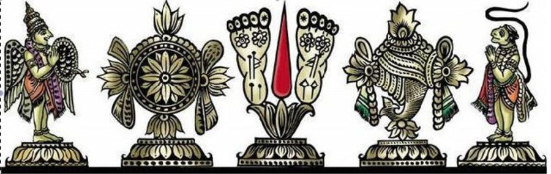

ஸ்ரீ:
ஸ்ரீமதே ராமாநுஜாய நம: ஸ்ரீமல்லோககுரவே நம:

ஆசார்யாக்ரேஸரரான பிள்ளைலோகாசார்யர் அருளிய
அஷ்டாதச ரஹஸ்யம்
(ப்ரமாணத்திரட்டுடன் கூடியது)
ஆசிரியர்: பிள்ளைலோகாசார்யர் பதிப்பாசிரியர்: ஸ்ரீ உ.வே. S. கிருஷ்ணஸ்வாமி அய்யங்கார் ஸ்வாமி வெளியீடு: க்ரந்த பரிபாலந ட்ரஸ்ட், புத்தூர், திருச்சி
பதிப்பாசிரியர்:
ஸ்ரீ உ.வே. S. கிருஷ்ணஸ்வாமி அய்யங்கார் ஸ்வாமி M.A., B.L., ஆசிரியர்: - “ஸ்ரீ வைஷ்ணவ ஸுதர்சனம்” புத்தூர் திருச்சி – 17.
மதுரைப் பேராசிரியர் முனைவர் ஸ்ரீ உ.வே. இரா. அரங்கராஜன் ஸ்வாமியின் நவத்யப்தபூர்த்தியை முன்னிட்டு பராபவ வைகாசி ரேவதியன்று மறுபதிப்புச் செய்து வெளியிடப்படுகிறது.
மறுபதிப்புச் செய்து வெளியிடுவோர்
க்ரந்த பரிபாலந ட்ரஸ்ட் 24/71, புத்தூர் அக்ரஹாரம்புத்தூர் திருச்சி – 620 017. அலைபேசி : 97507 59487
அச்சிட்டோர் : ஆர் என் ஆர் பிரிண்டர்ஸ் & பப்ளிஷர்ஸ் பழைய எண்.8, புதிய எண்.19, தாண்டவராயன் தெருதிருவல்லிக்கேணிசென்னை – 600 005. போன் : 044 – 2844 7071 www.rnrprinters.in
பதிப்புரை
ருஷிகளால் வெளிப்படுத்தப்பட்ட மறைநூல்களினும் மேலானவைமயர்வற மதிநலமருளப்பெற்ற ஆழ்வார்களின் அருளிச்செயல்கள்; அவ்வருளிச்செயல்களைக் காட்டிலும் அவற்றின் அர்த்தவியேஷங்களை அனைத்துலகுமறிய எடுத்தியம்பிய ஆசார்யர்களின் வ்யாக்யானங்கள் பெருமை பெற்றவை; அவற்றினும் மேலானவையாகப் போற்றப் பெறுவன ‘அன்னபுகழ் முடும்பை அண்ணல் உலகாசிரியன் செய்த கலை’யான அஷ்டாதர ரஹஸ்யங்கள்.
திவ்யப்ரபந்தங்களை உத்க்ருஷ்டம் என்றும்தத்வ்யாக்யானங்களை உத்க்ருஷ்டதரமென்றும்ரஹஸ்ய க்ரந்தங்களை உத்க்ருஷ்டதமமென்றும் கருதுவர் நம் முன்னோர்.
உலகத்தவர் அழியக்கூடியதான உடலுக்கே ஆபரணங்களைச் செய்வார்கள். மறையவர் யிகாமணியான நம் பிள்ளையுலகாசிரியர்என்றும் அழியாததான ஆத்மாவுக்கே ஆபரணங்களைச் சமைத்தவராவர்.
பிறிதொருவருடைய ப்ரார்த்தனையினாலன்றிக்கேதம்முடைய காரணமில்லாத கருணையினாலேயே பின்புள்ளார் உய்யவேண்டிஅபேஷ ரஹஸ்யார்த்தங்களையும் ஏற்படுத்திய மஹநீயரிவர்.
கௌஸ்துபத்திற்கும் கௌஸ்துபம் போன்றவையான இவரது அஷ்டாதர ரஹஸ்யங்களையும் ப்ரமாணத்திரட்டுடன் பதிப்பித்த பெருமை புத்தூர் ஸ்வாமியையே சாரும்.
மிகவுயர்ந்த இந்த க்ரந்தமானது, “கலையிலங்கு மொழியாளர்” என்று காஞ்சீ மஹாவித்வான் ஸ்ரீ உ.வே. ப்ர.ப.அண்ணா ஸ்வாமியால் கொண்டாடப்பெற்ற மதுரைப் பேராசிரியர் முனைவர் ஸ்ரீ உ.வே. இரா. அரங்கராஜன் ஸ்வாமியின் நவத்யப்தபூர்த்தியை முன்னிட்டு பராபவ வைகாசி ரேவதியன்று (10.06.2026ல்) மறுபதிப்புச் செய்து வெளியிடப்படுகிறது.
இப் பதிப்பிற்கான செலவினை மனமுவந்து ஏற்ற மதுரைப் பேராசிரியர் ஸ்ரீ உ.வே. அரங்கராஜன் ஸ்வாமியின் திருக்குமாரரான ஸ்ரீ உ.வே. ஸ்ரீதரன் ஸ்வாமிக்குக் கைம்மாறொன்றும் காண்கின்றிலோம். இப் புஸ்தகத்தினைப் பெற்று விபுதர்கள் பேருவகை அடைவார்களாக.
பராபவ வரவரமுநிப்ருத்யதாஸன்வைகாசி விசாகம் ரகுராமன்புத்தூர் 30.05.2026
ஸ்ரீஸ்ரீமதே ராமாநுஜாய நம:
பதிப்பாசிரியரின் முன்னுரை
"சித்அசித்ஈஸ்வரன் என்னும் மூன்று தத்துவங் களும் உண்மையானவை; மற்ற இரண்டு தத்துவங்களும் ஈஸ்வரனுக்கு ஸரீரமானவை. ஈஸ்வரனான ஸ்ரீமந் நாரா யணன் நித்யமுக்தர்களோடு கூடியவனாய்பரமபதத்தில் வீற்றிருந்து நித்யவிபூதியாகிய அதையும்தன்னால் படைத்து இடந்து உண்டு உமிழ்ந்து அளந்து தேர்ந்து அளிக்கப்படும் லீலாவிபூதியாகிய இதையும் செங்கோல் செலுத்தி ஆட்சிபுரிகிறான். அவனது செல்வங்களான இவ்விரு விபூதிகளும் அவனால் வியாபித்து தரித்து நிய மிக்கப்படும் ஸரீரமாய் அவனோடு ஒன்றிநிற்கையாலே உண்மைப்பொருள் ஒன்றே என்றும் கூறலாம். லீலா விபூதியிலுள்ள சேதனர்களை நித்யவிபூதிக்கு அழைத்துச் சென்றுஅங்குள்ள நித்யமுக்தர்களுக்குப்போலே பேரின் பத்தையும்தன் விஷயமான கைங்கர்யமாகிய பெரும் பேற்றையும் அளித்து உகப்பதற்காகவே இவ்விபூதியைப் படைத்தல்காத்தல்அழித்தலையும்வேதசாஸ்திரங்களை அளித்தலையும்அவதரித்தலையும்ஞானிகளை அவதரிக்கச் செய்வதையும் தன் நிர்ஹேதுக்கிருபையாலே அவன் செய் கிறான். அதனாலே அவனே இயல்வான உபாயம்; பரம பதம் சென்று அவனுகந்த அடிமை செய்வதே தலைசிறந்த பேறு; இப்படிப்பேறும் (உபேயமும்) ஆறும் (உபாயமும்) அவனே என்று உணர்ந்துஇவ்வுலகில் அவனுக்கும் அவனடியார்களுக்குமேயான வாழ்க்கை நடத்தும் ஸரணாக தர்களுக்கு அவன் இத்தலைசிறந்த பேற்றை இவர்கள் கையில் எதையும் எதிர்பாராமல் நிர்ஹேதுகமாக அருள் கின்றான்" என்னும் கொள்கை இந்த பாரததேசத்தில் அநாதிகாலமாக வழங்கிவரும் வேதங்களிலும்அதை விளக்கவந்த ஸ்ம்ருதிகளிலும்இதிஹாஸபுராணங்களிலும் குன்றிலிட்ட விளக்காகக் காணப்படுகின்றது.
நம் தமிழ்நாட்டிலும் மிகப் பழைய நூல்களான எட்டுத் தொகைபத்துப்பாட்டு என்னும் பதினெட்டுத் தொகுப்பு நூல்களிலும்தொல்காப்பியமாகிற இலக்கணநூலிலும் வேதங்களில் காணப்படும் சமயக்கொள்கை இதுவே எனப் பறைசாற்றப்படுகிறது.
சங்ககாலத்திற்குப் பிற்காலத்தில் இக்கொள்கையில் பல குழப்பங்கள் ஏற்பட்டுப் பல மதங்கள் ஏற்பட்டன. அப்போது தமிழ்நாட்டில் ஆழ்வார்கள் அவதரித்துசங்க காலம்வரையில் தமிழர்களின் தனிப்பெருஞ் சமயமாய் விளங்கிய இந்த விசிஷ்டாத்வைத ஸ்ரீ வைஷ்ணவமதமே வேத சாஸ்திரங்களில் விளங்கும் மதம் என நிலைநாட்டினர். இக்கொள்கையை ஆழ்வார்களுக்குப்பின் நாதமுனிகள்ஆளவந்தார்ஸ்ரீராமாநுஜர் முதலான ஆசாரியர்கள் உபய வேதாந்த அடிப்படையில் உறுதியாக அமைத்தனர்.
ஸ்ரீ ராமாநுஜர் காலம் வரையில் வடமொழியிலேயே நூலியற்றி இந்த மதக்கொள்கையை நிலைநாட்டிவந்தனர் பூர்வாசார்யர்கள். அவருக்குப்பின் அவதரித்த அவரது சீடரான திருக்குருகைப்பிரான்பிள்ளான் அவரது நியம னத்தாலே திருவாய்மொழிக்கு இரத்தினமும் பவழமும் போல் தமிழும்வடமொழியும் கலந்த மணிப்ரவாள நடை யில் "ஆறாயிரப்படி" என்னும் உரையை முதன்முத லாக அருளிச்செய்தார். ஸ்ரீராமாநுஜரின் முக்கிய சீடரான கூரத்தாழ்வானின் திருக்குமாரரான ஸ்ரீ பராசரபட்டரின் சீடரான (வேதாந்தி) கஞ்சீயர். திருவாய்மொழிக்குச் சற்று விரிவாக "ஒன்பதினாயிரப்படி" என்னும் உரையையும்மற்ற ஆழ்வார்களின் திவ்யப்ரபந்தங்கள் சிலவற்றுக்கு சுருக்கமான உரைகளையும் அருளிச்செய்தார். அவரது சீடரான நம்பிள்ளையின் சீடரான பெரியவாச்சான்பிள்ளை ஆசார்ய நியமனத்தாலே திருவாய்மொழிக்கு "இருபத்து நாலாயிரப்படி" என்னும் உரையையும்ஆழ்வார்களின் மற்ற திவ்யப்ரபந்தங்கள் அணைத்துக்கும் விரிவான உரை
களையும் இயற்றியருளினார். மேலும்ஸ்ரீவைஷ்ணவர்களுக்கு உபதேச மந்திரங்களாய் விளங்கும் திருமந்திரம்த்வயம்சரமஸ்லோகம் என்னும் ரஹஸ்யத்ரயத்திற்கும் ஸ்ரீ பராசர பட்டர் வடமொழியில் எட்டு ஸ்லோகங்களாலே அருளிய விளக்கமான அஷ்டஸ்லோகியை அடியொற்றி மணிப்ர வாள நடையில் பரந்த ரஹஸ்யம்மாணிக்கமாலைதத்வத்ரய ஸங்க்ரஹம் முதலான ரஹஸ்யங்களையும்ஸ்ரீராமாயணத்தில் முக்கியமான ஸ்லோகங்களுக்குத் "தனி ஸ்லோகம்" என்னும் பெயரில் விரிவான வ்யாக்கியானத் தையும்ஆளவந்தார் அருளிய ஸ்தோத்ரரத்ன சது: ஸ்லோகிகளுக்கும்எம்பெருமானார் அருளிய கத்யத்ரயத் திற்கும்ருக்வேதகிலமான ஜிடந்தாஸ்தோத்ரத்திற்கும் அருமையான மணிப்ரவாளவுரைகளையும் இயற்றி ஆஸ்திக உலகத்தால் "வியாக்கியான சக்ரவர்த்தி" என்றும் "பரம காருணிகர்" என்றும் போற்றப்பெற்றார். நம்பிள்ளையின் மற்றொரு சீடரான வடக்குத்திருவீதிப்பிள்ளைநம்பிள்ளை ஒருமுறை அருளிய திருவாய்மொழி யுரைப்பெருக்கை அப்படியே ஏடுபடுத்தினார். இதுவே பிற்காலத்தில் 'ஈடுமுப்பத்தாறாயிரப்படி' என்று புகழ்பெற்ற திருவாய் மொழிப்பேருரை. இவரே மற்ற ஆழ்வார்களின் சில திவ்ய ப்ரபந்தங்களுக்கும் நம்பிள்ளையருளிய உரைப்பெருக்குகளை ஏடுபடுத்தியருளியவர்.
இதுவரையில் பூர்வாசார்யர்களிடையே மிகுதியான கருத்துவேறுபாடுகளில்லாமல் வளர்ந்துவந்த இந்த விஸிஷ்டாத்வைத ஸ்ரீ வைஷ்ணவ மதத்தில் ரஹஸ்ய த்ரயார்த்தங்கள் விஷயத்தில் சில கருத்து வேறுபாடுகள் தோன்றினஅச்சூழ்நிலையில் முற்கூறிய திவ்யப்ரபந்தவ்யாக்யாதாக்களின் கருத்துக்கள் வடக்குத்திருவீதிப்பிள்ளை யின் திருக்குமாரர்களாய்நைஷ்டிக ப்ரஹ்மசாரிகளான பிள்ளைலோகாசார்யராலும்அழகியமணவாளப்பெருமாள் நாயனாராலும்பெரியவாச்சான்பிள்ளையின் திருக்குமாரரான
நாடனாச்சாள் பிள்ளையாலும் தமது நூல்களில் நிலை காட்டப்பெற்றன.
இவர்களில்அநுபவநூல்களான திவ்யப்ரபந்தங் களுக்கோஸ்தோத்ரங்களுக்கோ உரையிடாமல். தத்வஹித புருஷார்த்தங்களையே விளக்கும் ரஹஸ்யங்களுக்கே உரையெழுதியவர் பிள்ளைலோகாசார்யர் என்னும் மதா சார்யர். "அஷ்டாதசரஹஸ்யங்கள்" என்று புகழ்பெற்ற பதினெட்டு ரஹஸ்யங்களை அருளிய இவர் இந்த நூல்களில் விசிஷ்டாத்வைத ஸ்ரீ வைஷ்ணவ ஸித்தாந்தக்கொள்கை களையும்திவ்யப்ரபந்த வ்யாக்யாதாக்கள் அருளிய ரஹஸ்யார்த்தக்கொள்கைகளையும் விரிவாக விளக்கி யருளினார். வாழ்நாள் முடியும்வரையில் திருமணமும் செய்துகொள்ளாமல் தர்ஸனத்திற்காகவே வாழ்ந்து முஸ்லிம் படையெடுப்பின்போது திருவரங்கனைக் காப்ப தற்காகத் தம் உயிரையும் அளித்த மஹாநுபாவர் இவர்.
இவரது அஷ்டாதசரஹஸ்யங்களில் பல இவரது திருத் தம்பியாராலும்இவரது காலத்தில் வாழ்ந்த நாயனாராச் சான்பிள்ளையாலும் அடுத்துவாழ்ந்த மணவாளமாமுனிக ளாலும் மிகுந்த கெளரவபுத்தியுடன் தமது நூல்களில் மேற்கோளாகக் காட்டப்படுவதிலிருந்தும்இவரது நூல் களில் முக்கியமானவையான முமுக்ஷுப்படிக்கும் ஸ்ரீவசந பூஷணத்திற்கும்தத்வத்ரயத்திற்கும் விஸதவாக்சிகர மணியான மாமுனிகள் உரையிட்டிருப்பதிலிருந்தும்அவை இன்றளவும் காலக்ஷேப க்ரந்தங்களாக ஸ்ரீவைஷ் ணவவுலகினரால் கற்பப்படுவதிலிருந்தும் இவற்றின் பெரு மையை உணரலாம்.
"த்வயார்த்தம் தீர்க்க (ஸரணாகதி யென்றது ஸார ஸங்க்ரஹத்திலே'' (ஆசார்யஹ்ருதயம் 210) என்று இவரது திருத்தப்பியார் தமது தலைசிறந்த ரஹஸ்யநூலான ஆசார்யஹ்ருதயத்தில் அஷ்டாதசரஹஸ்யங்களில் ஒன்றான
ஸாரஸங்க்ரஹத்தை மேற்கோளாகக்காட்டினார். நாயனா ராச்சான்பிள்ளை தம் சது: ஸ்லோகீவ்யாக்யானத்தின் தொடக்கத்தில் 'இந்நால்வர் பண்ணும் உபகாரத்தை நவ ரத்னமாலையிலே நன்றாகக் காணலாமிறே" என்று அஷ்டா தசரஹஸ்யங்களில் ஒன்றான நவரத்னமாலையை மேற்கோ ளாகக் காட்டினார். அத்துடன்அதே நூலில் (நமது பதிப்பில் 59-ம் பக்கத்தில்) முமுக்ஷுப்படியை மேற்கோளாகக் காட்டும் போது "அபியுக்தாக்ரேஸரரான பிள்ளைலோகாசார்யர் அருளிச்செய்தார்" என்றும், (நமது பதிப்பில் 63-ம் பக்கத்தில்) ஸ்ரீவசந பூஷணத்தை மேற் கோளாக எடுக்கும்போது "ஆசார்யாக்ரேஸரரான பிள்ளை லோகாசார்யரும்" என்றும், (நமது பதிப்பில் 73-ம் பக்கத் தில்) தத்வத்ரயத்தை மேற்கோளாக எடுக்கும்போது ''பிள்ளைலோகாசார்யரும் அநுபவித்தருளினார்'' என்றும் அருளியிருப்பதிலிருந்து அஷ்டாதசாஹஸ்ய நூல்களிற் பல அவற்றின் ஆசிரியர் வாழ்ந்த காலத்திலேயே மிகப் புகழ் பெற்றுவிட்டன என விளங்குகிறது.
இந்தப் பதினெட்டு ரஹஸ்யங்களில் முமுக்ஷுப்படிதத்வத்ரயம்ஸ்ரீவசநபூஷணம் எனும் மூன்றும் மாமுனி களால் உரையிடப்பெற்று ஸ்ரீவைஷ்ணவவுலகில் கால க்ஷேபக்ரந்தங்களாகக் கற்கப்படுகின்றன. ஸ்ரீவசநபூஷ ணத்திற்கு மாமுனிகளின் உரைக்கு முன்பே 'திருநாரா யணபுரத்து ஆய்' என்னும் ஜநந்யாசார்யரின் வ்யாக்யா னமும் அவதரித்துள்ளது. முமுக்ஷுப்படி வ்யாக்யான அவதாரிகையில், "முன்பே ரஹஸ்யத்ரயவிஷயமாக மூன்று ப்ரபந்தம் இட்டருளியிருக்கச் பெய்தேயும், 'யாத்ருச்சிகப் படி' அதிஸங்க்ரஹமாகையாலும். 'பரந்தபடி' அதிவிஸ் த்ருதமாகையாலும், 'ஸ்ரீயபதிப்படி' உபயதோஷமுமின் றிக்கேயிருந்ததேயாகிலும் ஸம்ஸ்க்ருதவாக்ய பஹுள மாகையாலே பெண்ணுக்கும் பேதைக்கும் அதிகரிக்கப் போகாமையாலும்த்ரிவிததோஷமுமில்லாதபடி இன்ன
மும் ஒரு ப்ரபந்தமிடவேணுமென்று திருவுள்ளம்பற்றி எல்லாவற்றுக்கும் பின்பிறே முமுக்ஷுப்படியாகிற இப் ப்ரபந்தம் இட்டருளிற்று” என்று அருளியிருப்பதிலிருந்து இவ்வஷ்டாதரஹஸ்யங்களில் ரஹஸ்யத்ரய விவரணமா யமைந்த நாலு ப்ரபந்தங்களில் முமுக்ஷுப்படியே காலத் தால் பிற்பட்டதும்சிறப்பால் முற்பட்டதுமாகும் என விளங்குகிறது.
பிள்ளைலோகாசார்யர் தாமே தமது ரஹஸ்யங்களில் முற்பட்டவை சிலவற்றைப் பிற்பட்ட ரஹஸ்யங்களில் குறிப்பிட்டுள்ளார். முமுக்ஷுப்படியில் "பலமிருக்கும்படி ப்ரமேயபோகரத்திலும் அர்ச்சிராதிகதியிலும் சொன் னோம்" (27) என்று ப்ரமேயபோகரத்தையும்அர்ச்சி ராதிகதியையும் குறிப்பிடுகிறார். ஈஸ்வரனையொழிந்தவர் ரக்ஷகரல்லர் என்னுமிடம் ப்ரபந்ந பரித்ராணத்திலே சொன்னோம்" (39) என்று ப்ரபந்ந பரித்ராணத்தைக் குறிப்பிடுகிறார். அதிலேயே "தேஹத்தில் வ்யாவ்ருத்தி தத்வபோகரத்திலே சொன்னோம்" (70) என்று தத்வபோகரத்தைக் குறிப்பிடுகிறார். ஸ்ரீவசநபூஷணத்தில் ''ஆர்த்தியும் அபிநிவேஸமுமிருக்கும்படி அர்ச்சிராதிகதியிலே சொன் னோம்'' (295) என்று அர்ச்சிராதிகதியைக் குறிப்பிடு கிறார். அதிலேயே "அவனுடைய ரக்ஷகத்வப்ரகாரம் ப்ரபந்ந பரித்ராணத்திலே சொன்னோம்" (350) என்று ப்ரபந்ந பரித்ராணத்தைக் குறிப்பிடுகிறார்.
மணவாளமாமுனிகள் தம் உபதேசரத்தினமாலையில் "அன்னபுகழ் முடும்பை அண்ணல் உலகாசிரியன்இன் னருளால் செய்தகலை யாவையிலும் - உன்னில்திகழ் வசனபூடணத்தின் சீர்மை ஒன்றுக்கில்லைபுகழல இவ் வார்த்தை மெய் இப்போது." (53) என்று தொடங்கி ஏழு பாட்டுகளால் பிள்ளையுலகாசிரியர் அருளிய ரஹஸ்யக்ரந் தங்கள் அனைத்திலும் தலைசிறந்தது ஸ்ரீவசநபூஷணமே என்று விரிவாகவும் உருக்கமாகவும் நிரூபிக்கிறார்.
மாமுனிகள் தத்வத்ரயம் 4, 6 சூர்ணைகளின் வ்யாக்யானத்தில் தத்வபோகரத்தை மேற்கோள் காட்டுகிறார். 182-வது சூர்ணையின் வ்யாக்யானத்தில் பிள்ளையுலகாசிரி யர் தத்வத்ரய விஷயமாக மற்றுமிரண்டு சுருக்கமான ரஹஸ் யங்கள் அருளியிருப்பதாகக் குறித்துஅவற்றிலிருந்து மேற் கோள் காட்டுகிறார். இவையிரண்டும் இப்போது கிடைப்ப வற்றில் இல்லை.
ஆகபதினெட்டுரஹஸ்யங்களில் உரையிடுவதன் மூலமும் மேற்கோள் காட்டுவதன் மூலமும்மற்ற ஆசார் யர்களால் கையாளப்பட்டிருப்பவை (1) முமுக்ஷுப்படி (2) தத்வத்ரயம் (3) ஸ்ரீவசநபூஷணம் (4) ஸாரஸங்க் ரஹம் (5) நவரத்னமாலை (6) யாத்ருச்சிகப்படி (7) பரந்த படி (8) ஸ்ரீய:பதிப்படி (9) தத்வபோகரம் ஆகியவை. பிள்ளையுலகாசிரியராலேயே முமுக்ஷுப்படியிலும்ஸ்ரீவசந பூஷணத்திலும்குறிப்பிடப்பெற்றவை (1) ப்ரபந்நபரித் ராணம் (2) தத்வபோகரம் (3) அர்ச்சிராதி (4) ப்ரமேய போகரம் ஆகியவை. பூர்வாசார்யர்கள் காலத்திற்கு பிற்பட்ட பிள்ளைலோகம் ஜீயர் அஷ்டாதரஹஸ்யங்களில் ஒன்றான அர்த்தபஞ்சகத்திற்கு உரையிட்டிருக்கிறார். மாமுனிகளின் சீடரான எறும்பியப்பாவின் ப்ரபௌத்ரரான அழகிய மணவாள நாயனார்தம் ரஹஸ்ய விவேகத்தில் (1) முமுக்ஷுப்படி (2) ஸ்ரீவசநபூஷணம் (3) அர்ச்சிராதி (4) தத்வத்ரயம் (5) தனிசரமம் ஆகிய ரஹஸ்யங்களை மேற் கோள் காட்டுகிறார். ஆகப்ராசீநர்களால் கையாளப் பெற்ற இப்பதினாலு ரஹஸ்யங்களுடன் (1) ஸம்ஸாரஸாம் ராஜ்யம் (2) நவவிதஸம்பந்தம் (3) தனித்வயம் (4) தனிப்ரணவம் என்னும் நான்கையும் சேர்த்து நெடுங்கால மாகப்பிள்ளை லோகாசார்யர் அருளிய அஷ்டாதரஹஸ்யம் என்று குலாவப்பட்டு வருகிறது. இவை தவிரபிள்ளை லோகாசார்யர் 'தனிஸ்லோக'மும்கத்யவ்யாக்யானமும் அருளியிருப்பதாக மாமுனிகள் ரஹஸ்யவ்யாக்யானங்களில்
மேற்கோள் காட்டுவதிலிருந்து விளங்குகிறது. அவை இப் போது கிடைப்பது இல்லை.
இந்த அஷ்டாதஸரஹஸ்யம் தமிழிலும்தெலுங்கி லும் பலமுறை அச்சேறியிருந்தபோதிலும் அப்பதிப்புகள் அனைத்திலும் எழுதுவார் கவனக்குறைவால் விளைந்த பிழை கள் பல உள்ளன. கூடியவரை திருத்தமாக வெளியிடப் பெற்ற இப்பதிப்பிலும் நேரிட்டு விட்ட சில அச்சுப்பிழைகள் "பிழைதிருத்தம்" என்னும் பகுதியில் அளிக்கப்பட்டுள்ளன.
இந்நூலில் உள்ள முக்கிய விஷயங்களையும்நாமங் களையும் வாகம்ருதவர்ஷீ ஸ்ரீ உ. வே. வரதாசார்யஸ்வாமி தொகுத்தளித்தார். ஸ்ரீரங்கம் தென்னாசார்ய ஸம்பிரதாய ஸபா வித்வான் ஸ்ரீ உ. வே. நரஸிம்ஹாசார்ய ஸ்வாமி ப்ரமாணத்திரட்டு எழுதுவதில் உசாத்துணையாயிருந்தார். அஷ்டாதசரஹஸ்யங்களில் உள்ள ஐதிஹ்யங்களில் வரும் ஆசார்யர்களின் பெயரகராதியை மதுரைப் பேராசிரியர் Dr. R. ரங்கராஜன் தொகுத்தளித்தார். அச்சுத்தாள்கள் திருத்துவதில் திருநாங்கூர் P. B. K. ஸ்ரீநிவாஸாசார்ய ஸ்வாமி, K. பிச்சுமணி அய்யங்கார் ஸ்வாமிதிருவெள்ளறை மேலத்திருமாளிகை ஸௌம்ய நாராயணன் ஸ்வாமி ஆகி யோர் உதவினர். இவர்கள் அனைவருக்கும் ஸ்ரீவைஷ்ணவ வுலகின் நன்றி உரியதாகும்.
பலவருடங்களாகக் கிடைக்காமலிருந்த இவ்வஷ்டாதச ரஹஸ்யம் அக்ஷயவருடம் தையில் மகமாகிற இன்று பிள்ளை யுலகாசாரியரின் பேரருளால் நிறைவுற்றது. ஆத்திகவுலகம் இதைப்பெற்றுதத்வஹித புருஷார்த்தங்களை உணர்ந்து உய்வுபெறுவதாக.
அகஷயதையில் மகம் 18-1-87
தாஸன்ஸ்ரீ கிருஷ்ணஸ்வாமி அய்யங்கார், 'ஸ்ரீவைஷ்ணவ ஸுதர்சனம்' ஆசிரியர்.
பிள்ளலோகாசார்யர் வைபவம்
[ ‘ஸுதர்சநம்’ ஆசிரியர் ]
லோகாசார்யாய குரவே க்ருஷ்ணபாதஸ்ய ஸதிதே! ஸம்ஸார பேகிலந்தஷ்ட ஜீவ ஜீவாதவே நம: ||
[ஸ்ரீக்ருஷ்ணர் என்னும் திருநாமமுள்ள வடக்குத் திருவீதிப் பிள்ளையின் குமாரரும்ஆசார்ய லக்ஷணபூர்த்தியுள்ளவரும்ஸம்ஸாரப் பாம்பால் கடியுண்ட உயிர்களுக்கு உயிர்தரும் மருந்தாயிருப்பவருமான பிள்ளையுலகாசிரியர்க்கு நமஸ்காரம்.]
தமக்கு முந்தி வாழ்ந்த ஆழ்வார்கள்ஆசார்யர்கள் அனை வரும் ஒருதட்டென்றால்தாம் ஒரு தட்டாம்படி புகழ்படைத் தவர் பிள்ளையுலகாசிரியர். அவதாரம் தொடங்கிப் பரமபத மடைந்ததீறாக ஒவ்வோரம்ரத்திலும் சிறப்புப் பெற்றவர் இப் பேராசிரியர். மாமுனிகளின் உபதேச ரத்தினமாலைபெரிய திருமுடியடைவுயதீந்த்ரப்ரவண ப்ரபாவம் முதலான நூல் களைத் துணைகொண்டு இவர்தம் பெருமையைச் சுருக்கமாக அநுபவிப்போம்.
அவதார வைபவம்
கார்த்திகையில் கார்த்திகைநாள் காசினியில் வந்துதித்த கலிகன்றியாம் திருமங்கை மன்னனே "கண்ண! நின் தனக்கும் குறிப்பாகில் கற்கலாம் கவியின் பொருள்தானே" [பெரிய திருமொழி 7-10-10] என்ற தம் திருவாக்கின்படி ஸ்ரீஜயந்தி யிலேயே அவதரித்த கண்ணனாம் பெரியவாச்சான்பிள்ளைக்குக் கவியின் பொருளைக் கற்பிக்கக் கார்த்திகையில் கார்த்திகை நாளிலேயே கலிகன்றியென்னும் திருநாமத்துடன் அவதரித்த பெருமையையுடைய லோகாசார்யராம் நம்பிள்ளை ஒரு நாள் நித்யப்படி காலக்ஷேபம் நிறைவடைந்தவுடன் நடுப்பகலில் ஏகாந்தமாய் எழுந்தருளியிருக்கதிருவடிகளில் ஆஸ்ரயித்த வடக்குத்திருவீதிப்பிள்ளையின் திருத்தாயாரான அம்மி என்பவள் ''உம்முடைய சீடனான என்பிள்ளைக்கு ஓர் கல்யாணம் செய்வித் தீரே! அவன் பத்னியோடு வாழமறுக்கிறான்; வம்பத்திற்குப்
பிள்ளையில்லாமற்போய்விடும்போல் இருக்கிறதே!" என்று பெரு வருத்தத்துடன் விண்ணப்பிக்க அவளைத் தேற்றிஅவளுடைய மணாட்டுப்பெண்ணை அழைத்துவரச்சொல்லி அவளுடைய திருவயிற்றைத் தம் திருக்கையாலே ஸ்பர்ரித்து, 'நம்மைப்போல் இருக்கும் ஒரு பிள்ளையைப் பெறக்கடவாய்' என்று அநுக்ரஹித்துவடக்குத் திருவீதிப்பிள்ளையை அழைத்து, "உம்முடைய விஹிதவிஷய வைராக்யத்தை உணர்ந்தோம்; ஆயினும். லோகமர்யாதைக்கு நாம் சொன்ன தற்காக இன்றிராக் கூடியிரும்" என்று நியமிக்கஅப்படியே கூடியிருந்தவளவில் உண்டான கர்ப்பம் பன்னிரண்டாம் மாதத்தில் பூலோக வைகுண்டமான ஸ்ரீரங்கத்தில் ஐப்பசியில் திருவோணத்தில் ஆண் குழந்தையாகப் பிறக்கஅவருக்கு ''லோகாசார்யர் பிள்ளை'' என்று நம்பிள்ளையுடைய திரு நாமத்தையே சாத்திதிருத்தகப்பனாரான வடக்குத் திருவீதிப் பிள்ளையால் ஸகலார்த்தங்களையும் அளித்து வளர்க்கப்பட்டவர் பிள்ளையுலகாசிரியர். இவர் திருத்தாயார் திருநாமம் ஸ்ரீரங்க நாச்சியார். இவர் கச்சிநகர் எழுந்தருளும் பேரருளாளனாம் வரதனின் அம்ராவதாரமே என்பதை மாமுனிகள் தாமே ஓர் ஐதிஹ்யத்தின் மூலம் ஸ்ரீவசநபூஷணவ்யாக்யாநத்திலே நிலை நாட்டியருளினார்.
பிள்ளைலோகாசார்யருடைய அப்தபூர்த்திக்கு நம்பெரு மாளை ஸேவிப்பதற்காகக் குழந்தையைப் பல்லக்கில் எழுந்தருளு வித்து நப்பிள்ளை முதலான பெரியவர்களனைவரும் கோயி லுக்குச் சென்று மங்களாராஸனம் செய்யபெருமாளும் நம் பிள்ளையை அர்ச்சகமுகமாக, "உம்மைப்போல் ஒரு பிள்ளையை அருளினீரே; இனிநம்மைப்போல் ஒரு பிள்ளையை அருளும்" என்று நியமிக்கநம்பிள்ளையும் அதை அங்கீகரிக்கஅவ்வநு க்ரஹத்தாலே பிள்ளையுலகாசிரியர்க்குத் திருத்தம்பியார் அவதரித் தருளினார். அழகியமணவாளனின் பிள்ளை என்பது தோற்ற அழகியமணவாளப்பெருமாள் நாயனார் என்று அவருக்குத் திரு நாமம் சாத்திராமலக்ஷ்மணர்களைப்போலும் பலராம க்ருஷ்ணர் களைப்போலும் அவர்களை வளர்த்து வந்தனர். இது பிள்ளை லோகாசார்யரின் அவதாரப் பெருமை.
நிஷ்டா வைபவம்
திருத்தகப்பனாரைப்போலே பரமவிரக்தரான இப்பிள்ளைக ளிருவரும்வைராக்யபங்கம் ஏற்படலாகாது என்னும் திரு வுள்ளத்தாலே நைஷ்டிகப்ரஹ்மசாரிகளாகவே இறுதிவரையில் வாழ்ந்து வந்தனர். இப்பெருமையாலேயே க்ருஹஸ்தர்களா யிருந்த மற்ற ஆசார்யர்கள் "ப்ரபந்நனுக்கு விஹிதவிஷயநி வ்ருத்தி தன்னேற்றம் (சிறப்பு)" என்று சொல்லத் துணியாத போதுபிள்ளையுலகாசிரியர் ஸ்ரீவசநபூஷணத்திலே இவ்வரும் பொருளை ஸூத்ரமிட்டருளினார்.
க்ரந்தவைபவம்
மற்ற ஆசார்யர்கள் வேதரந்த விவரணக்ரந்தங்களும்வேதரந்தச் சாயையில் அமைந்த திராவிட வேதாரந்த விவரண க்ரந்தங்களும் அருளுவதையே முக்யக்ருத்யமாகக்கொண் டிருந்தனராகையால்ஸாரதமமான அர்த்தங்கள் அவர்க ளுடைய கிரந்தங்களிலே தேடிக் கண்டுபிடிக்க வேண்டும்படி யிருக்கும். அப்படியல்லாமல்ஸாரதமமான ரஹஸ்ய த்ரய விவரணம்தத்வத்ரய விவரணம் முதலிய ரஹஸ்ய க்ரந்தங் களை இயற்றுவதையே பொழுதுபோக்காகக் கொண்டிருந்தவ ராகையாலேசாடூக்திரஸோக்திஅலங்காரோக்தி முதலான எதுவும் கலவாமல்ஒவ்வொரு பதமும் தத்வ நிர்ணயபர மாகவேயிருக்கும் கிரந்தங்களையே அருளிய பெருமை பிள்ளை யுலகாசிரியர் ஒருவர்க்கே உரியதாகும். இவருடைய க்ரந்தங் கள் 'அஷ்டாதர ரஹஸ்யங்கள்' என்று பெயர்பெற்று ஸ்ரீவைஷ்ணவவுலகை உய்வித்து வருகின்றன. மாமுனிகளின் வ்யாக்யானங்களிலிருந்து தனிஸ்லோகம் முதலான மற்றும் சில கிரந்தங்கள் இவர் அருளியதாகத் தெரியவந்தாலும்அவை இப்போது கிடைப்பதில்லை. இவருடைய கிரந்தங்கள் அனைத் திலும் சிறப்புப் பெற்றதாய்மற்ற கிரந்தங்களில்லாத பல பரமரஹஸ்யார்த்தங்களை அறிவிப்பதாய்பெரியபெருமா ளுடைய நியமனத்தால் அவதரித்ததாய். அவரால் அங்கீகரிக்கப் பட்டதான ஸ்ரீவசந பூஷணம் ஒன்றுக்கே இரு பூர்வாசார்ய வ்யாக்யாநங்கள் அமைந்தன. அதிலும் மாமுனிகளின் வ்யாக்,
யானம் அத்யாசர்யமான பல அரும்பதவுரைகளோடும் மீமாம்ஸா பாஷ்யத்தோடும் பொலிகின்றது. இந்த க்ரந்தத்தைப்பற்றிச் சிலர் ஆக்ஷேபிக்கஇதில் அருளப்பட்ட அர்த்தங்களை நிலைநிறுத்துவதற்காகவே அழகியமணவாளன் திருமுன்பே இவர் திருத்தம்பியாரான அழகியமணவாளப் பெருமாள் நாயனாராலே ஆசார்யஹ்ருதயம் என்னும் அத்புத க்ரந்தம் அருளிச் செய்யப்பெற்றுநம்பெருமாளின் அங்கீ காரத்தையும் அநுக்ரஹத்தையும் இந்த திவ்யக்ரந்தம் அடைந்தது. மாமுனிகளருளிய உபதேச ரத்தினமாலையில் பற்பல அரிய பாசுரங்களைப் பெற்ற பெருமை இவ்வொரு திவ்யக்ரந்தத்திற்கே உண்டு. இது இவருடைய க்ரந்தவைபவம்.
குண வைபவம்
குணமென்னும் குன்றேறி நின்றவர் இவ்வாசிரியர் ஒருவரே. அஜாதரத்ருவாய் விளங்கிய பரமஸாத்விகர் இப் பெரியார். தம் ஸம்பந்தம் பெற்ற திரயக்குகளுக்கும் மோக்ஷ மளித்த பெருமை இப்பேராசிரியர்க்கு உண்டு. திருவரங்கம் துருஷ்கரிகளால் ஆக்ரமிக்கப்பட்டபோதுபெரியபெருமா ளுக்குத் திருமுன்பே கல்காப்புச் சாத்திநம்பெருமாளை எழுந் தருளுவித்துச் சென்று ரக்ஷித்த பெருமை இவர் சிறப்புக்களில் தலையானது. அப்படி ரக்ஷிக்கும் காலத்திலேயே (ஜ்யோதிஷ்குடி என்னும் கிராமத்திலே) திருநாட்டுக்கு எழுந்தருளி. தம்முடைய ஸர்வத்தையும் நம்பெருமாளுக்காகப் பரித்யாகம் செய்த பெருமை இப்பெரியார் ஒருவருக்கே உண்டு.
சிஷ்யப் பெருமை
திருத்தம்பியாரான அழகியமணவாளப் பெருமாள் நாயனார்கூரகுலோத்தமதாஸர்மாமுனிகளின் ஆசார்யரான திருவாய் மொழிப்பிள்ளைவிளாஞ்சோலைப்பிள்ளை மணற்பாக்கத்து (திருச்சானூர் நம்பியார், (மாமுனிகளின் பூர்வாஸ்ரம திருத்தமப்ப னாரான) திகழக்கிடந்தாரண்ணன் முதலான பலபல பெருமக் களை சிஷ்யராகப் படைத்திருந்த பெருமையும் இப்பெரியார்க்கு உண்டு.
இப்படிப் பலபல பெருமைகளை உடைய இப்போராசிரிய ருடைய திவ்யக்ரந்தங்களைக்கற்று உலகம் உய்வதாக.
அஷ்டாதச ரஹஸ்யங்கள் விஷயஸூசிகை
முன் இணைப்பு
- 1 முகவுரை: i-viii
- 2 பிள்ளைலோகாசார்யர் வைபவம்: ix-xii
- 3 விஷயஸூசிகை: xiii-xiv
- 4 முக்கிய விஷயங்களின் ஸூசிகை: xv-xvi
- 5 முக்கிய நாமங்கள்: xvii-xxii
- 6 ஆசார்யர்களின் பெயரகராதி: xxiii-xxiv
பின் இணைப்பு
- 1 ப்ரமாணத்திரட்டு: 1-185
- 2 அநுக்ரமணிகைபிழைதிருத்தம் முதலியன: 186-192
அஷ்டாதச ரஹஸ்யங்களிலுள்ள முக்கிய விஷயங்களின் ஸூசிகை
பக்கம்
| 1. | தர்மதர்மி ஜ்ஞாநபேதம் | 27 |
| 2. | பத்தர்க்கும் நித்யர்க்கும்வாசி | 90-91 |
| 3. | த்வயவசநம் பாதேயம் (கட்டுச்சோறு) | 94 |
| 4. | யாம்யமார்க்கம் - அர்ச்சிராதிமார்க்கம் | 97 |
| 5. | அமாநவ வர்ணநம் | 98 |
| 6. | பிரளய ஜலதியும் ஆநந்தஸாகரமும் | 103 |
| 7. | ஸ்ரீதேவீவர்ணநம் | 104 |
| 8. | மின்னும் மேகமும் | 105 |
| 9. | திவ்யாவயவ வர்ணநம்-திருவாபரணங்கள் கிரீடாதி நூபுராந்தம் | 105 |
| 10. | ஸ்ரீதேவியும் பூதேவியும் | 107 |
| 11. | திருவின் பெருமை | 108 109 |
| 12. | ஏத்தாளிகள் | 112 |
| 13. | மாத்ருபரிஷ்வங்கம் -- பித்ருபரிஷ்வங்கம் | 113 |
| 14. | ரூபணக்ரமம் | 124 |
| 15. | விசிஷ்டாத்வைதசப்தம் | 133 |
| 16. | ருஷிகளும் ஆழ்வார்களும் | 142 |
| 17. | நாராயண நாம வைபவம் | 143 |
| 18. | திருமந்திரமும் திருவாய்மொழியும் | 145 |
| 19. | அஹங்கார மமகாரங்கள் | 158 |
| 20. | நாரசப்தார்த்தம் | 162 |
| 21. | நாராயணசப்தார்த்தம் | 163 |
| 22. | நச்சுப்பொய்கை | 203 |
| 23. | ஸக்ருத் கர்த்தவ்யம் | 203 |
| 24. | ப்ரஸ்ந ப்ரதிவசநங்கள் | 203, 204 |
| 25. | த்வய வைபவம் | 204 |
| 26. | ப்ரதீப்த ஸரணம் (எரியும் வீடு) | 206 |
| 27. | ஸ்ரீநித்ய ஸம்பந்தம் | 211 |
| 28. | சாஸ்த்ரமும் குணங்களும் | 214 |
| 29. | விஷயவிபாகம | 214 |
| 30. | முன்னும் பின்னும் | 215 |
| 31. | அர்ஜுநனும ப்ரஹலாதனும் | 216 |
| 32. | த்வய சரமச்லோகங்களின் வாசி | 216, 223 |
| 33. | திவ்ய விக்ரஹ ஆகாரத்ரயம் | 217 |
| 34. | க்ஷூரஸ்யந்தியும் அம்ருதஸ்யந்தியும் | 217 |
| 35. | உபதேசமும் அநுஷ்டானமும் | 218 |
| 36. | ஸ்வரூப ப்ராப்யா நுரூபம் ப்ராபகம் | 218 |
| 37. | ஆச்ரயமும் ஆச்ரயியும் | 218 |
| 38. | தாதர்த்யமும் தாதர்த்ய பலமும் | 227, 252 |
| 39. | விஷய விஷயாச்ரயங்கள் | 229 |
| 40. | ரிஷிச்சந்தோ தேவதைகள் | 231 |
| 41. | பெருமாளும் பிராட்டியும் ஜீவனும் | 235 |
| 42. | உபாயாந்தரமும் கந்யகாப்ரதாநமும் | 241 |
| 43. | தோழியும் கண்ணனும் | 244 |
| 44. | சேஷத்வா நுஸந்தாநம் ஆத்மஸமர்ப்பணம் | 253 |
| 45. | ச்ருதியும் ஸ்ம்ருதியும் | 255 |
| 46. | விருகாஸுரன் — பஸ்மாஸுரன் | 259 |
| 47. | சம்புசப்தம் பிரமனுக்கும் நாராயணனுக்கும் வாசகம் | 261 |
| 48. | அநுவாதமும் விதியும் | 268 |
| 49. | தச்சப்தம் ஹேதுபரம் | 270 |
| 50. | ஸப்தஜந்மாந்தரம் நர: | 271 |
| 51. | சிவனுடைய அஜ்ஞாநம் | 273 |
| 52. | ஸுபாலோபநிஷத் வைபவம் | 274 |
| 53. | ஸாமாந்ய விசேஷவாசிகள் | 274 |
| 54. | பரதெய்வமும் தேவதாந்தரமும் | 305 |
| 55. | ஸ்ரீவிபீஷண சரணாகதி ப்ரகரண தாத்பர்யம் | 310 |
| 56. | பகவானுடைய ஸ்வாதந்த்ர்ய பாரதந்த்ர்யங்கள் | 311 |
| 57. | ப்ரபத்தி விதாயக வசநங்கள் | 316 |
| 58. | புருஷகார க்ருத்யம் | 336 |
| 59. | பெருமாளும் பிராட்டியும் | 338 339 |
| 60. | அவள் ஸந்நிதியும் அவன் ஸந்நிதியும் | 343 |
| 61. | பிராட்டி மாஸுச: | 345 |
| 62. | உபாயத்வ ரக்ஷகத்வபேதம் | 347 |
| 63. | சிந்தயந்தீ ஸ்வபாவம் | 347 |
| 64. | அவனும் இவனும் | 350 |
| 65. | பரத்வாதீநாம் அப்ரயோஜகத்வம் | 353 |
| 66. | பக்தி ப்ரபத்தி பேதம் | 353 |
| 67. | ஆநுகூல்ய ஸங்கல்பாதிகள் | 372 |
| 68. | சுவர்த்தலையிலே பூனை | 388 |
அஷ்டாதச ரஹஸ்யத்தில் எடுக்கப்பட்ட :: நாமங்கள் ::
பக்கம்
| 2. | வேதம்ருஷிகள்ஆழ்வார்கள். ஆசார்யர்கள் |
| 3. | த்ரௌபதீ (53, 54, 54, 57, 57, 58), பூர்வாசார்யர்கள் |
| 4. | பகவத் ஸேநாபதி மிஸ்ரர் |
| 5. | ஸ்ரீநந்தகோபர் (70) |
| 11. | க்ருஷ்ணன் (22, 68, இவன்) |
| 12. | நம்பெருமாள் |
| 16. | அர்ஜுதன் (22, 53, 53, 54) |
| 17. | சக்ரவர்த்தி (70, 93) |
| 22. | உய்யக்கொண்டார். உடையவர் (68), வங்கிப்புரத்துநம்பிசக்ரவர்த்தித்திருமகன் எம்பார்பட்டர் ஸாந்தீபி நீபுத்ரன்வைதிக புத்ரன் பிராட்டி (57, 57, 58, 60, 95) |
| 53. | ராக்ஷஸிகள்பாண்டவர்கள் |
| 54. | வேல்வெட்டிப் பிள்ளைதர்மபுத்ராதிகள்காகம்காளியன்ஸ்ரீகஜேந்த்ராழ்வான்ஸ்ரீவிபீஷணாழ்வான் (68, 95), பெருமாள்(68, 93). இளையபெருமாள் (57, 58, 70) |
| 57. | ஜீயர் (65), திருக்கண் ணமங்கையாண்டான் (58), பெரிய உடையார் (58, 68), பிள்ளை திருநறையூர் அறையர் (58), சிந்தயந்தீ (58) |
| 60. | அதஸூயை |
| 61. | திருக்குருகைப்பிரான் பிள்ளான் (64) |
| 62. | ஸ்ரீபரதாழ்வான்ஸ்ரீ குஹப்பெருமாள் (63, 70) |
| 63. | வேதபுருஷன்திருவடி (70) |
| 66. | திரிசங்குவைந்தேயர்பிள்ளைப்பிள்ளையாழ்வான்ஆழ்வான்(85), கைசிகவ்ருத்தாந்தம்உபரிசரவசு விச்வாமித்ரன் (70), ராவணன்தர்மபுத்ரர்ஸ்ரீவிதுரர் (68,70, 74). ரிஷிகள்தர்மவ்யாதன்பீஷ்மதுரோணாதிகள்ஸ்ரீசபரீமாரனேரிதம்பிபெரியநம்பிகுலசேகரப்பெருமாள் பெரியாழ்வார்திருமகளார் (ஆண்டாள்) |
| 70. | ஸ்ரீஜநகராஜன்திருமகள் (ஸீதை), ஸ்ரீதண்டகாரண்யவாஸி ரிஷிகள்மஹாராஜர்பிள்ளையுறங்காவில்லிதாஸர்பெரியாழ்வார், |
| 71. | பெரியாழ்வார் (இவர்), பாஷ்யகாரர் (82). பெரியாழ்வார் (இவர்) பெரியாழ்வார் (இவர்), |
| 74. | மாலாகாரர்- கூனிஸ்ரீவிதுரர்மாலாகாரர்கூனி (இவர்கள்) |
| 77. | ஆளவந்தார் (பரமாசார்யர்) |
| 82. | முதலிகள் |
| 85. | மதுரகவி (ஒருவர்), வடுகநம்பிஆழ்வான்ஆண்டான் பிள்ளை (வ. தி. வீ. பிள்ளை) |
| 93. | வசிட்டவாமதேவாதி |
| 100. | பெரியதிருவடிஸ்ரீஸேநாபதியாழ்வார் (103) |
| 104. | அநந்தன் |
| 106. | பெரியபெருமாள் |
| 110. | ஸ்ரீபரதாழ்வார்அக்ரூரன் |
| 112. | ஏத்தாளிகள்ஸ்ரீவிபீஷணன்பெருமாள்திருமங்கையாழ்வார்நம்மாழ்வார் தேவகியார்நம்மாழ்வார் ஸ்ரீவைகுண்ட நாதன் ப்ராதாக்கள்மாதாபிதாக்கள்பர்த்தாக்கள்சந்த்ராதித்யர். இந்த்ரன் ருத்ரன்அர்த்தம்ஈச்வரன் ஸர்வஸ்வம் வாக்யத்வயம்திருவாய்மொழி படைவீடு குதிரைகள்தேர்உருளைகள்புரோகிதர்அடுக்கொலியல். ஆலவட்டம் ஓட்டிவட்டில். காளாஞ்சி. அடைப்பைகாளங்கள்சின்ஹங்கள் ஆழ்வான்நுடங்கிடைபிராட்டி ஸர்ப்பவிஷம்ரஸநா ரஸவஸ்து. |
| 137. | அர்ஜுனன் |
| 139. | மாநஸாத்யவஸாயம் |
| 151. | ஆழ்வான் |
| 155. | பட்டர் |
| 164. | அர்ஜுனன் |
| 165. | அர்ஜுனன் |
| 166. | க்ருஷ்ணன் |
| 170. | அபிசாரகர்மம் |
| 172. | எம்பெருமானார்—முன்புள்ளார். உய்யக்கொண்டார் |
| 172. | நஞ்ஜீயர் |
| 172. | வீராணத்து அருளாளப்பெருமாள் ஆழ்வான் நஞ்ஜீயர்அநந்தாழ்வான் ஆழ்வார் நஞ்ஜீயர் பிள்ளைஜீயர் ரகுராக்ஷஸம்வாதம் (245), நகுஷப்ருஹஸ்பதிஸம்வாதம் வ்யாக்ர வாநரஸம்வாதம் (245). மறவன் (245), பட்டர் (245), |
பாஷ்யகாரர் பெரியகோயில் நாராயணன் (245), சிறியாத்தான் (245), எம்பார் (245), நஞ்ஜீயர் (245), அநந்தாழ்வான் (245), நஞ்ஜீயர்பிள்ளைஅம்மங்கியம்மாள்உடையவர்,
| 201. | பிள்ளை—ஜீயர்சக்ரவர்த்தித்திருமகன்காகவிபீஷணாதிகள், |
| 202. | ஜீயர்எண்ணாயிரத்துத்திருவாய்க்குலத்தாழ்வான் பூர்வாசார்யர்கள் ஜீயர் த்ரிஜடைராக்ஷஸிகள், (247), ராவணன்பெருமாள். பிராட்டிதிருவடி (247) |
| 209. | மஹாராஜர்காகம் |
| 210. | ஆச்சிசிறியாத்தான் |
| 218. | நம்மாழ்வார்இளையபெருமாள் (247) |
| 223. | நம்மாழ்வார்இளையபெருமாள்பரமாசார்யர் ஸ்ரீபாஷ்யகாரர்ஸ்ரீவிபீஷணாழ்வான் (247), ராவணன்சூர்ப்பணகை அர்ஜுனன்க்ருஷ்ணன் அர்ஜுனன் ஆழ்வான் அதந்தாழ்வான் ஆழ்வார்கள்ஆசார்யர்கள்பூர்வாசார்யர்கள், |
| 245. | கபோதோபாக்யாநம் |
| 256. | நாமஸப்தகம்அஷ்டமூர்த்திகள் (257) |
| 258. | பாணன் |
| 259. | வ்ருகாசுரன் |
| 260. | அந்தகாஸுரன் |
| 261. | த்ருஹிணன் |
| 262. | சிவபிரான் |
| 262. | ரிஷிசாபம் |
| 263. | கண்டா கர்ணன் |
| 267. | ஸ்ரீருத்ரம்ஸதருத்ரம்ருத்ரபஞ்ஜரம்பஞ்சப்ரஹ்மமந்த்ரம் ப்ரஹ்லாதன்வாமதேவன் யாதாதபதர்மஸாஸ்த்ரம் ஸ்ரீருத்ரம் வேதபாஹ்யலக்ஷணம் ப்ருகு சார்வாக மதகண்டநம் |
| 279. | சங்கரமதகண்டநம்பௌத்தமத கண்டநம் சங்கரமத கண்டநம் ஜைநமத கண்டநம் பௌத்தமத கண்டனம் சார்வாகமத நிரஸநம்யோகாதிமத நிரஸநம்பௌத்தாதிமத நிரஸநம்நையாயிகமத நிரஸநம் சங்கரமத நிரஸநம்பாஸ்கரமத நிரஸநம்யாதவப்ரகாசமத நிரஸநம் சங்கரமத உபந்யாஸம் சங்கரமத கண்டநம். ப்ரஹ்மாஜ்ஞாநவாத நிரஸநம் பாட்டாதிமதம் பாட்டமதகண்டநம்யாதவப்ரகாசமதம்தத்கண்டநம் அச்விநிகள்தேவபத்திகள் குணத்ரயம் காகாஸுரன் |
| 308. | ஸ்ரீ விபீஷணாழ்வான் |
| 309. | கண்டுகீதைப்ரபத்தித்ரயம் |
| 310. | ஸ்ரீ விபீஷண சரணாகதிப்ரகரண தாத்பர்யம் அலச்சாயல் பகவத்ஸ்வாந்தர்யம் மஹாபாரதப்ரமேயம்த்ரௌபதீ ப்ரபத்தி தர்மதேவதைஸ்ரீ சாண்டில்யபகவான் ஸ்ரீ க்ருஷ்ணன்ச்வேத த்வீ பவாஸிகள்ருத்ரன்ப்ரபத்திலக்ஷண வாக்யம் அங்கம்ஸம்பாவிதஸ்வபாவம்ஸ்ரீ பீஷ்மரும் தர்மபுத்ரனும்ஆசார்யருசி பரிக்ருஹீதம் ப்ரபத்தியும் ஆழ்வார்களும் |
| 317. | ப்ரபத்தியும் ஆழ்வார்களும் ப்ரபத்தியும் ஆசார்யர்களும் பாதிரிக்குடிபட்டர் ஜீயர்பட்டர். பட்டர்எம்பார்எம்பெருமானார்சிறியாத்தான்எம்பார்தாசரதி சிறியாத்தான்ஆய்ச்சிஎம்பார்பெற்றிகொற்றியம்மை வீராணத்து அருளாளப்பெருமாள் எம்பெருமானார் நஞ்ஜீயர் நம்பிள்ளை எம்பெருமானார் பெரியகோயில் நாராயணன் . |
| 323. | அம்மங்கியம்மாள் |
| 323. | ஆழ்வான் |
| 323. | எம்பெருமானார் |
| 324. | அநந்தாழ்வான் |
| 324. | ஜீயர் |
| 324. | சிறியாண்டான் அம்மாள் |
| 325. | மருதூர் நம்பி |
| 325. | எம்பெருமானார் |
| 325. | நம்பிதிருவழுதி வள நாடுதாஸர் பிள்ளை திருநறையூர் அறையர் கருடமுத்ரை அஞ்ஜலி முத்ரை திருக்கண்ணபுரம் செருகவம்மான் நஞ்ஜீயர் நஞ்ஜீயர் நஞ்ஜீயர் அர்ஜுனன்ஸ்ரீரங்கநாதன் |
| 343. | நஞ்ஜீயர்பட்டர் |
| 344. | மஹாராஜர்ஆழ்வார்கள்ஆசார்யர்கள்விபீஷணன்ராவணன்திரிஜடை பிராட்டி மாஸுச: |
| 347. | சிந்தயந்தீஸம்ஸாரி. முமுக்ஷுமுக்தர்நித்யர் அவித்யைப்ரக்ருதி அநிஷ்டநிவருத்திஇஷ்டப்ராப்தி பிள்ளை திருநறையூர் அறையர் ஏகாயநன்சூர்ப்பனகிராவணன் கலியன் அக்ரூரமாலாகாராதிகள் கீதோபநிஷதாசார்யன் |
| 368. | திருக்கோட்டியூர் நம்பிஅர்ஜுனன்சிலர் சிலர் திருநாராயணம் சிலர் நஞ்ஜீயர் பிள்ளை எம்பெருமானார்ஆழ்வான் |
| 390. | ஆழ்வார்அபியுக்தர்சிலர்நஞ்ஜீயர் கோயிலங்காடி சோமாசியாண்டான்ஆளவந்தார்எம்பெருமானார்பிள்ளை பிள்ளை எம்பெருமானார்ஆண்டான் உடையவர்உடையவர் கத்யம்உடையவர் நம்பிள்ளை |
| 410. | உடையவர்திருக்கோட்டியூர்நம்பிபட்டர்நஞ்ஜீயர் நம்பிள்ளைபின்பழகராம்பெருமாள் ஜீயர்ஆச்சான்பிள்ளை நடுவிற்றிருவீதிப்பிள்ளைபட்டர் பிள்ளை எங்களாழ்வான்நடாதூரம்மாள். நம்பிள்ளை நஞ்ஜீயர்பிள்ளை |
அஷ்டாதச ரஹஸ்யங்களில் காட்டப்படும் ஐதிஹ்ய நிர்வாஹங்களில் வரும் ஆசார்யர்களின் பெயரகராதி
[தொகுத்தவர்; Dr. இராஅரங்கராஜன், M.A., Ph.D . மதுரை]
| 1. | அநந்தாழ்வான்: 179, 200, 240, 245, 324 |
| 2. | அம்மங்கி அம்மாள்: 200, 323 |
| 3. | ஆச்சான் பிள்ளை: 410 |
| 4. | ஆச்சி: 210, 320 |
| 5. | ஆழ்வான்: 66, 85, 151, 178, 239,323 |
| 6. | ஆளவந்தார்: 317, 394 |
| 7. | உடையவர்: 22, 68, 82, 172, 200,245, 317, 319, 320, 322,323, 325, 394, 400, 401,403, 410 |
| 8. | உய்யக்கொண்டார்: 22, 172 |
| 9. | எண்ணாயிரத்துத் திருவாய்க்குலத்தாழ்வான்: 202 |
| 10. | எம்பார்: 23, 200, 245, 319, 320 |
| 11. | சிறியாத்தான்: 200, 210, 245, 319, 320 |
| 12. | சிறியாண்டான் அம்மாள்: 324 |
| 13. | திருக்கண்ணமங்கையாண்டான்: 57, 58 |
| 14. | திருக்குருகைப்பிரான்பிள்ளான்: 61 |
| 15. | திருக்கோட்டியூர் நம்பி: 368, 410 |
| 16. | நஞ்ஜீயர்: 58, 172, 179, 193, 199.200, 201, 202, 204, 245,319, 321, 324, 327, 331,343, 390, 410, 416 |
| 17. | நடாதூரம்மாள் 411 |
| 18. | நடுவில் திருவீதிப்பிள்ளை பட்டர் 410 |
| 19. | நம்பி திருவழுதி வளநாடு தாஸர் 325 |
| 20. | நம்பிள்ளை 54, 87, 199, 200, 201, 321, 383, 394, 398, 407, 410, 411,416 |
| 21. | பகவத் ஸேநாபதி மிஸ்ரர் 4 |
| 22. | பட்டர் 23, 200, 245, 318, 319, 324, 325, 343, 410 |
| 23. | பிள்ளை திருநறையூர் அரையர் 57, 58, 325 |
| 24. | பிள்ளைப் பிள்ளையாழ்வான் 66 |
| 25. | பிள்ளையுறங்காவில்லிதாஸர் 70 |
| 26. | பிள்ளையெங்களாழ்வான் 411 |
| 27. | பின்பழகிய பெருமாள் ஜீயர் 410 |
| 28. | பெரிய நம்பி 68 |
| 29. | பெரியகோயில் நாராயணர் (மகன்) 200, 245, 322 |
| 30. | பெற்றி 320 |
| 31. | பெற்றி திருவடியில் ஆஸ்ரயித்த கொற்றியம்மை 320 |
| 32. | மருதூர் நம்பி 325 |
| 33. | மாறனேரி நம்பி 68 |
| 34. | முதலியாண்டான் 85, 400 |
| 35. | வங்கிப்புரத்து நம்பி 22 |
| 36. | வடுகநம்பி 85 |
| 37. | வீராணத்து அருளாளப்பெருமாள் எம்பெருமானார் 172, 321 |
| 38. | வேல்வெட்டிப் பிள்ளை 54 |
ஸ்ரீ : ஸ்ரீமதே ராமாநுஜாய நம : ஸ்ரீலோககுரவே நம :
1. முமுக்ஷுப்படி
தனியன்
லோகாசார்யாய குரவே க்ருஷ்ணபாதஸ்ய ஸூநவே | ஸம்ஸாரபோகிஸந்தஷ்ட ஜீவஜீவாதவே நம: || மணவாளமாமுனிகள் அருளிச்செய்தது லோககுரும் குருபிஸ்ஸஹ பூர்வை: கூரகுலோத்தமதாஸ முதாரம்| ஸ்ரீநகபத்யபிராமவரேபொளதீப்ரயாநகுருஞ்ச பஜேஹம்|| கோதிலுல காசிரியன் கூரகுலோத் தமதாதர் தீதில்திரு மலையாழ்வார் செழுங்குரவை மணவாளர் ஓதுபுகழ்த் திருநாவீ றுடையபிரான் தாதருடன் போதமண வாளமுனி பொன்னடிகள் போற்றுவனே. வாழியுல காசிரியன் வாழியவன் மன்னுகுலம் வாழி முடும்பையென்னு மாநகரம் - வாழி மனஞ்சூழ்ந்த பேரின்ப மல்குமிகு நல்லா ரினஞ்சூழ்ந் திருக்கு மிருப்பு. ஓது முடும்பை யுலகா சிரியனரு ளேது மறவாத வெம்பெருமான்-நீதி வழுவாச் சிறுநல்லூர் மாமறையோன் பாதந் தொழுவார்க்கு வாரா துயர்.
பிள்ளைலோகாசார்யர் திருவடிகளே சரணம். ஜீயர் திருவடிகளே சரணம்.
திருமந்த்ரப்ரகரணம்
உபோத்காதம் — முன்னுரை
1. முமுக்ஷுவுக்கு அறியவேண்டும் ரஹஸ்யம் மூன்று.
2. அதில் ப்ரதம ரஹஸ்யம் - திருமந்த்ரம்.
3. திருமந்த்ரத்தினுடைய சீர்மைக்கப்போரும்படி ப்ரேமத்தோடே பேணி அநுஸந்திக்கவேணும்.
4. மந்தாத்திலும் மந்தத்துக்கு உள்ளீடான வஸ்துவிலும் மந்த்: பாதனான ஆசார்யன்பக்கலிலும்ப்ரேமம் கனக்க உண்டானால் கார்யகரமாவது.
5. ஸம்ஸ ரிகள் தங்களையும் ஈஸ்வரனையும் மறந்துஈஸ்வர கைங்கர்யத்தையும் இழந்துஇழந்தோமென்கிற இழவுமின்றிக்கே ளம்ஸாரமாகிற பெருங்கடலிலே விழுந்து நோவுபடஸர்வேஸ்வரன் தன் க்ருபையாலே இவர்கள் தன்னையறிந்து கரைமரஞ்சேரும்படிதானே ஸிஷ்யனுமாய்ஆசார்யனுமாய் நின்று திருமந்த்ரத்தை வெளியிட்டருளினான்.
6. ஸிஷ்யனாய் நின்றதுஸிஷ்யனிருக்குமிருப்பு நாட்டாரறியாமையாலே அத்தை அறிவிக்கைக்காக.
7. ஸகல ஸாஸ்த்ரங்களாலும் பிறக்கும் ஜ்ஞாநம் ஸ்வயமார்ஜிதம்போலே; திருமந்த்ரத்தால் பிறக்கும் ஜ்ஞாநம்பைத்ருகதநம்போலே.
8. பகவந் மந்த்ரங்கள் தான் அநேசங்கள்.
9. அவைதான்வ்யாபகங்களென்றும் அவ்யாபகங்களென்றும் இரண்டு வர்க்கம்.
10. அவ்யாபகங்களில் வ்யாபகங்கள் மூன்றும் ஸ்ரீஷ்டங்கள்.
11. இவை மூன்றிலும் வைத்துக்கொண்டு பெரிய திருமந்த்ரம் ப்ரதாநம்.
12. மற்றையவை இரண்டுக்கும் அபிஷ்டபரிக்ரஹமும் அபூர்த்தியும் உண்டு.
13. இத்தைவேதங்களும்ருஷிகளும்ஆழ்வார்களும்ஆசார்யர்களும் விரும்பினார்கள்.
14. வாச்ய ப்ரபாவம் போலன்று வாசக ப்ரபாவம்.
15. அவன் தூரஸ்தனானாலும் இது கிட்டி நின்றுஉதவும்.
16. த்ரௌபதிக்கு ஆபத்திலே புடைவை சுரந்தது திருநாமமிறே.
17. சொல்லும் க்ரமமொழியச் சொன்னாலும் தன் ஸ்வரூபம் கெட நில்லாது இதுதான் a'குலந்தரும்" என்கிறபடியே எல்லா அபேக்ஷிதங்களையும் கொடுக்கும்.
19. ஐஸ்வர்ய கைவல்ய பகவல்லாபங்களை ஆசைப்பட்டவர்களுக்கு அவற்றைக் கொடுக்கும்.
20. கர்மஜ்ஞாநபக்திகளிலே இழிந்தவர்களுக்கு விரோதியைப்போக்கி அவற்றைத் தலைக்கட்டிக்கொடுக்கும்.
21. ப்ரபத்தியிலே இழிந்தவர்களுக்கு ஸ்வரூப ஜ்ஞாநத்தைப் பிறப்பித்துக் காலக்ஷேபத்துக்கும் போகத்துக்கும் ஹேதுவாயிருக்கும்.
22. b''மற்றெல்லாம் பேசிலும்" என்கிறபடியே அறியவேண்டும் அர்த்தமெல்லாம் இதுக்குள்ளே உண்டு அதாவது - அஞ்சர்த்தம்.
24. பூர்வாசார்யர்கள்இதில் அர்த்தம் அறிவதற்கு முன்பு தங்களைப் பிறந்தார்களாக நினைத்திரார்கள்; இதில் அர்த்தஜ்ஞாநம் பிறந்த பின்பு, c''பிறந்தபின் மறந்திலேன்"
என்கிறபடியே இத்தையொழிய வேறொன்றால் காலக்ஷேபம் பண்ணியறியார்கள்.
25. வாசகத்திற்காட்டில் வாச்யத்திலே ஊன்றுகைக்கு அடிஈஸ்வரனே உபாயோபேயமென்று நினைத்திருக்கை.
வாக்யார்த்தம் - அக்ஷரப்பிரிவு முதலியவை
26. இதுதன்னில் சொல்லுகிற அர்த்தம் - ஸ்வரூபமும் ஸ்வரூபாநுரூபமான ப்ராப்யமும் ; ஸ்வரூபமும் உபாயமும் பலமுமென்னவுமாம்.
27. பலமிருக்கும்படி ப்ரமேயசேகரத்திலும் அர்ச்சி ராதிகதியிலும் சொன்னோம்.
28. இதுதான் எட்டுத் திருவக்ஷரமாய் மூன்று பதமா யிருக்கும்.
குறிப்பு: a பெரியதிரு 1-1.9. b பெரியதிரு 8.10-3: c திருச்சந்த 64.
29. மூன்று பதமும் மூன்று அர்த்தத்தைச் சொல்லுகிறது.
30. அதாவது-போஷத்வமும்பாரதந்த்ர்யமும்கைங்கர்யமும்.
31. இதில் முதற்பதும் ப்ரணவம்.
32. இது 'அ' என்றும், 'உ' என்றும், 'ம' என்றும் மூன்று திருவக்ஷம்.
33. மூன்று தாழியிலே தயிரை நிறைத்துக் கடைந்து வெண்ணெய் திரட்டினாற் போலே மூன்று வேதத்திலும் மூன்று அக்ஷரத்தையும் எடுத்தது.
34. ஆகையால்இது ௧கலவேதஸாரம்.
அகாரார்த்தம்
35. இதில் அகாரம்-ஸகலஸப்தத்துக்கும் காரணமாய்நாராயணபதத்துக்கு ஸங்க்ரஹமாயிருக்கையாலேஸகல ஜகத்துக்கும் காரணமாய் ஸர்வரக்ஷகனான எம்பெருமானைச் சொல்லுகிறது.
36. ரக்ஷிக்கையாவது - விரோதியைப் போக்குகையும் அபேக்ஷிதத்தைக் கொடுக்கையும்.
37. இவையிரண்டும் சேதநர் நின்ற நின்ற அளவுக்கு ஈடாயிருக்கும்.
38. ஸம்ஸாரிகளுக்கு விரோதிஸத்ருபீடாதிகள்அபேக்ஷிதம் அந்நபாநாதிகள்; முமுக்ஷுக்களுக்கு விரோதிஸம்ஸார ஸம்பந்தம். அபேக்ஷிதம் பரமபதப்ராப்தி; முக்தர்க்கும் நித்யர்க்கும் விரோதிசைங்கர்ய ஹாநிஅபேக்ஷிதம் கைங்கர்ய வருத்தி.
39. 'ஈஸ்வரனையொழிந்தவர்கள் ரக்ஷகரல்லர்' என்னுமிடம் ப்ரபந்நபரித்ராணத்திலே சொன்னோம்.
40. ரக்ஷிக்கும்போது பிராட்டி ஸந்நிதிவேண்டுகையாலேஇதிலே ஸ்ரீஸம்பந்தமும் அநுஸந்தேயம் அத்ர பகவத்ஸேநாபதிமிஸார் வாக்யம்:- அவன்மார்புவிட்டுப் பிரியில் இவ்வக்ஷரம் விட்டுப்பிரிவது.
42. பர்த்தாவினுடைய படுக்கையையும் ப்ரஜையினுடைய தொட்டிலையும் விடாதேயிருக்கும் மாதாவைப்போலே ப்ரதம சரமபதங்களை விடாதேயிருக்கும் இருப்பு.
43. ஸ்ரீநந்தகோபரையும் க்ருஷ்ணனையும் விடாத யசோதைப்பிராட்டி யைப்போலே.
44. ஒருவனடிமை கொள்ளும்போது க்ருஹிணிக் கென்றன்றே ஆவணவோலை யெழுதுவது; ஆகிலும் பணி செய்வது க்ருஹிணிக்கிறே. அதுபோலே நாம் பிராட்டிக்கு அடிமையாயிருக்கும்படி.
45. ஆகபிரித்து நிலைவில்லை.
46. ப்ரபையையும் ப்ரபாவானையும்புஷ்பத்தையும் மணத்தையும் போலே.
47. ஆகஇச்சேர்த்தி உத்ததேஸ்யமாய் விட்டது.
லுப்தவிக்த்யர்த்தம்
48. இதிலேசதுர்த்தி யேறிக்கழியும்.
49. 'சதுர்த்தியேறினபடியென்?' என்னில் -
50. நாராயணபதத்துக்கு ஸங்க்ரஹமாயிருக்கையாலே.
51. இத்தால்ஈஸ்வரனுக்கு போஷமென்கிறது.
52. 'போஷத்வம் து:க்கரூபமாகவன்றோ நாட்டிற் காண்கிறது' என்னில் --
53. அந்த நியமம் இல்லை; உகந்த விஷயத்துக்கு போஷ ம.யிருக்கும் இருப்பு ஸுகமாகக் காண்கையாலே.
54. அகாரத்திலே கல்யாணகுணங்களைச் சொல்லுகையாலேஇந்த போஷத்வமும் குணத்தாலே வந்தது.
55. போஷத்வமே ஆத்மாவுக்கு ஸ்வரூபம்.
56. போஷத்வமில்லாதபோது ஸ்வரூபமில்லை.
57. ஆத்மாபஹாரமாவது ஸ்வதந்த்ரமென்கிற நினைவு; ஸ்வதந்த்ரமாம்போது இல்லையாய்விடும்.
உகாரார்த்தம்
58. ஸ்தாநப்ரமாணத்தாலே உகாரம் அவதாரணார்த்தம்.
59. இத்தால்பிறர்க்கு போஷம் அன்று என்கிறது.
60. பெரியபிராட்டியார்க்கு போஷமென்கிறது என்றும் சொல்லுவர்கள்.
61. அதிலும் அந்யபோஷத்வம் கழிகையே ப்ரதராநம்.
62. தேவர்களுக்கு போஷமான புரோடரஸத்தை நாய்க்கு இடுமாபோலேஈஸ்வரபோஷமான அத்ம வஸ் துவை ஸம்ஸாரிகளுக்கு போஷமாக்குகை.
63. பக்வச்சேஷத்வத்திலும் அந்யபோஷத்வம் கழிகையே பரதநம்
64. a 'மறந்தும் புறந்தொழாமாந்தர்'' என்கையாலே.
65. இத்தால்தனக்கும் பிறர்க்கும் உரித்தன்று என்கிறது.
மகாரார்த்தம்
66. மகாரம்இருபத்தஞ்சாம் அக்ஷரமாய் ஜ்ஞாநவாசியு மாய் இருக்கையாலேஆத்மாவைச் சொல்லுகிறது.
67. இதுதான் ஸமஷ்டிவாசகம்.
68. ஜாத்தியகவசநம்.
69. இத்தால்ஆத்மா ஜ்ஞாதாவென்றுதேஹத்தில் வ்யாவருத்து சொல்லிற்றாயிற்று.
70. தேஹத்தில் வ்யாவ்ருத்தி தத்வபோகரத்திலே சொன்னோம்.
71. மணத்தையும்ஒளியையுங்கொண்டுபூவையும்ரத்நத்தையும் விரும்புமாபோலேபோஷமென்று ஆத்மாவை ஆதரிக்கிறது; அல்லாதபோது, b"உயிரினாற் குறைவிலம்''
என்கிறபடியே த்யாஜ்யம்; அது தோன்ற போஷத்வத்தைச் சொல்லிப் பின்னை ஆத்மாவைச் சொல்லுகிறது.
பதத்ரயலமுதராயார்த்தம்
72. ஆகப்ரணவத்தால் "கண்ணபுரமொன்றுடையா னுக்கு அடியேன் ஒருவர்க் குரியேனோ" என்கிறபடியே ஜீவ பரஸம்பந்தஞ் சொல்லிற்று.
73. இத்தால், d “தாமரையாள் கேள்வனொருவனையே நோக்கு முணர்வு” என்றதாயிற்று.
74. அகாரத்தாலும்மகாரத்தாலும் ரக்ஷகனையும்ரக்ஷ்யத்தையும் சொல்லிற்று; சதுர்த்தியாலும்உகாரத்தா லும் ரக்ஷணஹேதுவான ப்ராப்தியையும்பலத்தையும் சொல்லிற்று.
a நான்-திருவ 68. b திருவாய் 4.8-10. c பெரியதிரு 8.9.3.
d முதல்திருவ 67.
விவரணவிபாகம்
75. இனிபேல் ப்ரணவத்தை விவரிக்கிறது.
76. உகாரத்தை விவரிக்கிறது நமஸ்ஸு; அகாரத்தை விவரிக்கிறது நாராயணபதம்; மகாரத்தை விவரிக்கிறது சதுர்த்தி; நாரபதமென்றுஞ் சொல்லுவர்கள்.
77. அடைவே விவரியாதொழிகிறது - விரோதிபோய் அநுபவிக்கவேண்டுகையாலே.
நமஸ்யப்ததார்த்தம்
78. நமஸ்ஸு-"ந" என்றும் "ம:" என்றும் இரண்டு பதம்.
79. 'ம:' என்கிற இத்தால், 'தனக்கு உரியன்' என்கிறது; 'ந' என்று அத்தைத் தவிர்க்கிறது.
80. ஆக 'நம:' என்கிற இத்தால், 'தனக்கு உரிய னன்று' என்கிறது.
81. பிறர்க்கு உரியனான அன்று தன் வைலக்ஷண்யத்தைக் காட்டி மீட்கலாம்; தனக்கென்னுமன்று யோக்யதை யுங்கூட அழியும்
82. இத்தால் விரோதியைக் கழிக்கிறது.
83. விரோதிதான் மூன்று.
84. அதாவது-ஸ்வரூப விரோதியும்உபாயவிரோதி யும்ப்ராப்ய விரோதியும்.
85. ஸ்வரூப விரோதிகழிகையாவது-a''யானே நீ என்னுடைமையும் நீயே'' என்றிருக்கை; உபாயவிரோதிகழிகை யாவது-b''களைவாய் துன்பம் களையாதொழிவாய் களைகண் மற்றிலேன்'' என்றிருக்கை; ப்ராப்ய விரோதிகழிகையாவது- c''மற்றை நங்காமங்கள் மாற்று'' என்றிருக்கை.
86. 'ம:' என்கை ஸ்வரூபநாஸம், 'நம:' என்கை ஸ்வரூபோஜ்ஜீவநம்.
87. இதுதான் - ஸ்வரூபத்தையும்உபாயத்தையும், பலத்தையும் காட்டும்.
88. d 'தொலைவில்லிமங்கலந் தொழும்'' என்கையாலே, ஸ்வரூபம் சொல்லிற்று; b''வேங்கடத்து உறைவார்க்கு நம''என்கையாலேஉபாயம் சொல்லிற்று; f''அந்தி தொழுஞ்சொல்'' என்கையாலேபலம் சொல்லிற்று.
a திருவாய் 2-9.9. b திருவாய் 5-8-8. c திருப்பாவை 29.
d திருவாய் 6.5-1. e திருவாய் 3.3.6. f திருவாய் 10.8.7.
89. a'உற்றதும் உன்னடியார்க்கடிமை' என்கிறபடியே இதிலே பாகவத போஷத்வமும் அநுஸந்தேயம்.
90. இது - அகாரத்திலே என்றுஞ் சொல்லுவர்கள்; உகாரத்திலே என்றுஞ் சொல்லுவர்கள்.
91. 'ஈஸ்வரன் தனக்கேயாயிருக்கும் ; அசித்துப் பிறர்க்கேயாயிருக்கும்; அத்மா தனக்கும் பிறர்க்கும் பொதுவா யிருக்கும்' என்று முற்பட்ட நினைவு; அங்ஙனன்றிக்கேஅசித் தைப்போலே b தனக்கேயாக எனைக்கொள்ளவேணுமென் கிறது நமஸ்ஸால்.
92. அதாவது - போகதனையில் ஈஸ்வரன் அழிக்கும் போது நோக்கவேணுமென்று அழியாதொழிகை.
93. அழிக்கைக்கு ஹேது-கீழே சொல்லிற்று; மேலுஞ் சொல்லும்.
94. இந்நினைவு பிறந்தபோதே க்ருதக்ருத்யன்; இந் நினைவில்லாதபோது எல்லா துஷ்க்ருதங்களும் க்ருதம்; இந் நினைவிலே எல்லா ஸுக்ருதங்களும் உண்டு. இது இன்றிக்கே யிருக்கப் பண்ணும் யஜ்ஞாதிகளும் ப்ராயச்சித்தாதிகளும் நிஷப்ரயோஜநங்கள்; இதுதன்னாலே எல்லாப் பாபங்களும் போம்எல்லாப் பலங்களும் உண்டாம்.
நாராயணபதார்த்தம்
95. நாராயணனென்றது நாரங்களுக்கு அயகம் என்படி.
96. நாரங்களாவன-நித்யவஸ்துக்களினுடைய திரள்.
97. அவையாவன — ஜ்ஞாநாநந்தாமலத்வாதிகளும்ஜ்ஞாந பக்த்யாதிகளும்வாத்ஸல்ய ஸௌரீல்யாதிகளும்திருமேனியும்காந்தி ஸௌகுமார்யாதிகளும்திவ்ய பூஷணங்களும்திவ்யாயுதங்களும்பெரியபிராட்டியார் தொடக்கமான நாச்சிமார்களும் நித்யஸூரிகளும்சத்ர சாமராதிகளும்திருவாசல் காக்கும் முதலிகளும்கணாதிப ரும்முக்தரும்பரமாகாசமும்ப்ரக்ருதியும்பத்ததாத்மாக்க ளும்காலமும்மஹதாதி விகாரங்களும்அண்டங்களும்அண்டத்துக்கு உட்பட்ட தேவாதி பதார்த்தங்களும்.
அயநபதார்த்தம்
98. அயகம் என்பது-இவற்றுக்கு ஆஸ்ரயமென்றபடி.
a பெரியதிரு 8.10.3. b திருவாய் 2.9.4.
99. அங்ஙனன்றிக்கேஇவைதன்னை ஆஸ்ரய்மாக வுடையனென்னவுமாம்.
100. இவையிரண்டாலும் பலித்தது பரத்வஸௌலப்,யங்கள்.
101. அந்தர்யாமித்வமும்உபாயத்வமும்உபேயத்வமு மாகவுமாம்.
102. a“எம்பிரானெந்தை” என்கையாலேஈஸ்வரனே எல்லாவுறவுமுறையுமென்று சொல்லும்.
103. நாம் பிறர்க்கான அன்றும் அவன் நமக்காயிருக்கும்.
104. இரா மடம் ஊட்டுவாரைப்போலே உள்ளே பதி கிடந்து ஸத்தையே பிடித்து நோக்கிக்கொண்டு போரும்.
வ்யக்தசதுர்த்யர்த்தம்
105. 'ஆய' என்கிற இத்தால் b"சென்றாற்குடையாம்" என்கிறபடியே எல்லா அடிமைகளும் செய்யவேணுமென்று அபேக்ஷிக்கிறது.
106. 'நமஸ்ஸாலே தன்னோடு உறவில்லையென்று வைத்துக் கைங்கர்யத்தை ப்ரார்த்திக்கக் கூடுமோ?' என்னில்:
107. c "படியாய்க் கிடந்து உன் பவளவாய் காண்பேனே" என்கிறபடியே கைங்கர்ய ப்ரார்த்தனை வந்தேறி அன்று; ஸ்வரூப ப்ரயுக்தம்.
108. ஆகையால் d "வழுவிலா அடிமை செய்ய வேண்டும் நாம்" என்கிற ப்ரார்த்தனையைக் காட்டுகிறது.
109. e "கண்ணாரக்கண்டு கழிவதோர் காதலுற்றார்க்கு முண்டோ கண்கள் துஞ்சுதல்" என்கிறபடியே காண்பதற்கு முன்பு உறக்கமில்லை. கண்டால் "ஸ்தர பஸ்யந்தி" ஆகை யாலே உறக்கமில்லை. f "பழுதே பல பகலும் போயின" என்று இழந்த நாளுக்குக் கூப்பிடுகிறவனுக்கு உறங்க விரகில்லை.
[^1]: a பெரியதிருமொழி 1-1-6. b முதல்திருவ 53. c பெருமாள் திரு 4-9.
d திருவாய் 3.3.1. e திருவிருத்தம் 97 f முதல்திருவ 16.
111. a"அன்று நான் பிறந்திலேன் பிறந்தபின் மறந்திலேன்" என்னாநின்றார்களிறே.
112. இவ்வடிமைதான் b "ஒழிவில் காலமெல்லா முடனாய் மன்னி" என்கிறபடியே ஸர்வதேஸ ஸர்வகால ஸர்வாவஸ்தைகளிலும் அநுவர்த்திக்கும்.
113. எட்டிழையாய் மூன்றுசரடாயிருப்பதொரு மங்கள ஸூத்ரம்போலே திருமந்த்ரம்.
114. இத்தால்ஈஸ்வரன் ஆத்மாக்களுக்குப் பதியாய் நின்று ரக்ஷிக்கும் என்கிறது.
மந்த்ரஸமுதயார்த்தம்
115. ஆகதிருமந்த்ரத்தால் 'எம்பெருமானுக்கே உரியேனான நான் எனக்கு உரியனன்றிக்கே ஒழியவேணும்; ஸர்வபோஷியான நாராயணனுக்கே எல்லா அடிமைகளும் செய்யப்பெறுவேனாகவேணும்' என்றதாயிற்று.
திருமந்த்ரப் பரகாணம் முற்றிற்று.
த்வயப்ரகரணம் 2.
உபோத்காதம்
116. புறம்புண்டான பற்றுக்களையடைய வாஸனை யோடே விடுகையும்எம்பெருமானையே தஞ்சமென்று பற்றுகையும்பேறுதப்பாதென்று துணிந்திருக்கையும்பேற்றுக்கு த்வரிக்கையும்இருக்கும் நாள் உகந்தருளின் நிலங்களிலே ப்ரவணனாய் குணாநுபவ கைங்கர்யங்களே பொழுது போக்காகையும்இப்படி இருக்கும் ஸ்ரீவைஷ்ண வர்கள் ஏற்றமறிந்து உகந்திருக்கையும்திருமந்த்ரத்திலும் த்வயத்திலும் நியதனாகையும்ஆசார்யப்ரேமம் கனத் திருக்கையும்ஆசார்யன் பக்கலிலும் எம்பெருமான் பக்கலிலும் க்ருதஜ்ஞனாய்ப் போருகையும்ஜ்ஞாநமும்விரக்தியும்ஸாந்தியும் உடையனாயிருக்கும் பரமஸாத்விக னோடே ஸஹவாஸம் பண்ணுகையும் வைஷ்ணவாதிகாரிக்கு அவஸ்யாபேக்ஷிதம்.
117. இந்த அதிகாரிக்கு ரஹஸ்யத்ரயமும் அநுஸந் தேயம்.
> [^1]: a திருச்சந்தவிருத்தம் 64. b திருவாய் 3.3.1.
118. எல்லா ப்ரமாணங்களிலும் தேஹத்தாலே பேறென்கிறது; திருமந்த்ரத்தில் ஆத்மாவாலே பேறென் கிறது; சரமஸ்லோகத்தில் ஈஸ்வரனாலே பேறென்கிறது. த்வயத்தில் பெரியபிராட்டியாராலே பேறென்கிறது.
119. பெரியபிராட்டியாராலே பேறுகையாவது—இவள் புருஷகாரமானல்லது ஈஸ்வரன்கார்யஞ்செய்யானென்கை.
120. த்வயத்துக்கு அதிகாரி ஆகிஞ்சந்யமும்அநந்ய கதித்வமும் உடையவன்.
121. இவை இரண்டும் ப்ரபந்த பரித்ராணத்திலே சொன்னோம்.
வாக்யார்த்தம்
122. இதில் முற்கூற்றால்பெரியபிராட்டியாரை முன் னிட்டு ஈஸ்வரன் திருவடிகளை உபாயமாகப் பற்றுகிறது; பிற்கூற்றால் அச்சேர்த்தியிலே அடிமையையிரக்கிறது.
ஸ்ரீபத்தர்த்தம்
123. ஸ்ரீ என்று பெரியபிராட்டியாருக்குத் திருநாமம்.
124. ஸ்ரீயதேஸ்ரயதே.
125. இதுக்கு அர்த்தம்—'எல்லார்க்கும் இவளைப்பற்றி ஸ்வரூபலாபமாய்இவள்தனக்கும் அவனைப்பற்றி ஸ்வரூப லாபமாயிருக்கும்' என்று.
126. இப்போது இவளைச் சொல்லுகிறது புருஷகாரமாக.
127. நீரிலே நெருப்புக் கிளருமாபோலே குளிர்ந்த திருவுள்ளத்திலே அபராதத்தால் சீற்றம் பிறந்தால் பொறுப்பது இவளுக்காக.
128. இவள் தாயாய் இவர்கள் க்லேஸம் பொறுக்க மாட்டாதேஅவனுக்குப் பத்நியாய் இனிய விஷயமா யிருக்கையாலேகண்ணழிவற்ற புருஷகாரம்.
129. திருவடியைப் பொறுப்பிக்குமவள்தன்சொல்வழி வருமவனைப் பொறுப்பிக்கச் சொல்ல வேண்டாவிறே.
மதுப்பினர்த்தம்
130. மதுப்பாலே இருவர் சேர்த்தியும் நித்யமென்கிறது.
131. இவளோடே கூடியே வஸ்துவினுடைய உண்மை.
132. ஈஸ்வர ஸ்வாதந்த்ர்யத்தையும் சேதநனுடைய அபராதத்தையுங்கண்டு அகலமாட்டாள்.
133. சேதநனுக்கு இவையிரண்டையும் நினைத்து அஞ்ச வேண்டா.
134. இத்தால்,- ஆஸ்ரயிக்கைக்கு ருசியே வேண்டு வதுகாலம் பார்க்கவேண்டா என்கிறது.
135. இவள் ஸந்நிதியாலே காகம் தலை பெற்றது; அது இல்லாமையாலே ராவணன் முடிந்தான்.
நாராயணஸப்தார்த்தம்
136. புருஷகார பலத்தாலே ஸ்வா தந்த்ர்யம் தலைசாய்ந் தால் தலையெடுக்கும் குணங்களைச் சொல்லுகிறது நாராயண பதம்.
137. அவையாவன—வாத்ஸல்யமும்ஸ்வாமித்வமும், ஸௌரீல்யமும்ஸௌலப்யமும்ஜ்ஞாநமும்ஸக்தியும்.
138. குற்றங்கண்டு வெருவாமைக்கு வாத்ஸல்யம்; கார்யம்செய்யுமென்று துணிகைக்கு ஸ்வாமித்வம்: ஸ்வாமித் வங்கண்டு அகலாமைக்கு ஸௌரீல்யம்; கண்டு பற்று கைக்கு ஸௌலப்யம்; விரோதியைப் போக்கித் தன்னைக் கொடுக்கைக்கு ஜ்ஞாநஸக்திகள்.
139. இங்குச்சொன்ன ஸௌலப்யத்துக்கு எல்லைநிலம் அர்ச்சாவதாரம்.
140. இதுதான் பரவ்யூஹ விபவங்கள் போலன்றிக்கே சண்ணாலே காணலாம்படி இருக்கும்.
141. இவையெல்லாம் நமக்கு நம்பெருமாள் பக்கலிலே காணலாம்.
142. திருக்கையிலே பிடித்த திவ்யாயுதங்களும், அஞ்சல் என்ற கையும்கவித்த முடியும்முகமும் முறுவலும்ஆஸநபத்மத்திலே அழுத்தின திருவடிகளுமாய் நிற்கிற நிலையே நமக்குத் தஞ்சம்.
143. ரக்ஷகத்வ போக்யத்வங்கள் இரண்டும் திருமேனியிலே தோற்றும்.
சரணபதார்த்தம்
144. சரணௌ—திருவடிகளை.
145. இத்தால் சேர்த்தியழகையும்உபாயபூர்த்தியை யும் சொல்லுகிறது.
146. பிராட்டியும் அவனும் விடிலும் திருவடிகள் விடாது; திண்கழலாயிருக்கும்.
147. போஷிபக்கல் போஷபூதன் இழியும் துறை; ப்ரஜை முலையிலே வாய்வைக்குமாபோலே.
148. இத்தால் பிராட்டிக்கு இருப்பிடமாய்குண ப்ரகாகமுமாய்ஸிபாலனையும் அகப்படத் திருத்திச் சேர்த்துக்கொள்ளும் திருமேனியை நினைக்கிறது.
ஸரணபதார்த்தம்
149. சரணம் - இஷ்டப்ராப்திக்கும் அநிஷ்டநிவாரணத் துக்கும் தப்பாத உபாயமாக.
150. இத்தால்ப்ராப்யந்தானே ப்ராபகம் என்கிறது.
151. கீழ்ச்சொன்ன மூன்றும் ப்ராப்யமிறே.
152. இவன் / செயலறுதியாலே உபாயமாக்குகிறானித்தனை.
153. "சரனெள சரணம்" என்கையாலே உபாயந்தான் வ்யாவ்ருத்தமான உபாயம் என்கிறது.
ப்ரபத்யே ஸப்தார்த்தம்
154. ப்ரபத்தையே-பற்றுகிறேன்.
155. வாசிகமாகவும் காயிகமாகவும் பற்றினாலும் பேற் றுக்கு அழிவில்லை (இழவில்லை 'ஜ்ஞாநாந்மோக்ஷம்' ஆகையாலேமாநஸமாசக்கடவது.
156. உபாயம் அவனாகையாலும்இவை நேரே உபாயம் அல்லாமையாலும்இம்மூன்றும் வேணும் என்கிற நிர்ப்பந்தம் இல்லை.
157. வர்த்தமான நிர்த்தேசம்-ஸத்வம் தலையெடுத்து அஞ்சினபோது அதுஸந்திக்கைக்காக.
a,திருவாய் 1-2-10. / செயலறுதி-செயலற்றுப்போகை;
158. உபாயாந்தரங்களில் நெஞ்சு செல்லாமைக்கும்காலக்ஷேபத்துக்கும்இனிமையாலே விடவொண்ணாமை யாலும் நடக்கும்.
159. பேற்றுக்குப் பலகா லும் வேணுமென்று நினைக்கில் உபாயம் நழுவும்.
உத்தராகண்டார்த்தம்
160. உத்தர வாக்யத்தாலே ப்ராப்யம் சொல்லுகிறது.
161. ப்ராப்யாந்தரத்துக்கு அன்றென்கை.
162. உபாயாந்தரங்களைவிட்டுச் சரமோபாயத்தைப் பற்றினாற்போலேஉபேயாந்தரமான ஐஸ்வர்ய கைவல்யங் களைவிட்டு எல்லையான ப்ராப்யத்தை அர்த்திக்கிறது.
163. இவன் அர்த்திக்கவேணுமோ? ஸர்வஜ்ஞன் இவன் நினைவறியானோ ? என்னில்.
164. இவன் பாசுரங்கேட்டவாறே திருவுள்ளம் உகக்கும்.
165. ஸ்ரீமதே - பெரியபிராட்டியாரோடே கூடியிருந் துள்ளவனுக்கு.
166. அவன் உபாயமாமிடத்தில் தான் புருஷகாரமாயிருக்கும்; அவன் ப்ராப்யனாமிடத்தில் தான் ப்ராப்பையுமாய்க் கைங்கர்யவர்த்த கையுமாயிருக்கும்.
167. இதிலே திருமந்த்ரத்தில் சொன்ன ப்ராப்யத்தை விசதமாக அநுஸந்திக்கிறது.
168. இளையபெருமாளைப்போலே இருவருமான சேர்த்தியிலே அடிமைசெய்கை முறை.
169. அடிமைதான் ஸித்திப்பதும் ரஸிப்பதும் அச்சேர்த்தியிலே.
170. நாராயணாய-ஸர்வசோஷியாயுள்ளவனுக்கு.
171. இதிலே திருமேனியையும் குணங்களையும் சொல்லும்.
172. சேஷித்வத்திலே நோக்கு.
173. ப்ராப்தவிஷயத்தில் கைங்கர்யமிறே ரஸிப்பது.
174. இந்தச் சதுர்த்திகைங்கர்யத்தை ப்ரகாசமிப்பிக்கிறது.
175. கைங்கர்யந்தான் நித்யம்.
176. நித்யமாக ப்ரார்த்தித்தே பெறவேணும்.
177. போஷிக்கு அதியாயத்தை விளைக்கை போஷபூதனுக்கு ஸ்வரூபலாபமும்ப்ராப்யமும்.
178. நம:-கைங்கர்யத்தில் களையறுக்கிறது.
179. களையாவது-தனக்கென்னப் பண்ணுமது.
180. இதிலே அவித்யாதிகளும் கழியுண்ணும்.
181. a "உனக்கே நாமாட்செய்வோம்" என்னும்படியே ஆகவேணும்.
182. ஸௌந்தர்யம் அந்தராயம்; கீழ்ச்சொன்ன கைங்கர்யமும் அப்படியே.
183. கைங்கர்ய ப்ரார்த்தனைபோலேஇப்பதத்தில் ப்ரார்த்தனையும் என்றுமுண்டு.
184. b "மருந்தே நங்கள் போகமகிழ்ச்சிக்கு'' என்னா நின்றதிறே.
த்வயப்ரகரணம் முற்றிற்று.
சரமச்லோகப்ரகரணம் 3.
உபோத்காதம்—முன்னுரை
185. கீழே சில உபாயவிசேஷங்களை உபதேசிக்க, அவை துஸ்மாகங்களென்றும்ஸ்வரூபவிரோதிகளென்றும் நினைத்து சோகாவிஷ்டனான அர்ஜுநனைக்குறித்துஅவ னுடைய சோகநிவ்ருத்தயர்த்தமாக 'இனி இதுக்கு அவ்வரு கில்லை' என்னும்படியான சரமோபாயத்தை அருளிச் செய்கையாலேசரமஸ்லோகமென்று இதுக்குப் பேரா யிருக்கிறது.
186. இதில் பூர்வார்த்தத்தாலே அதிகாரிக்ருத்யத்தை அருளிச்செய்கிறான்; உத்தரார்த்தத்தாலே உபாயக்ருத் யத்தை அருளிச்செய்கிறான்.
[^1]: a திருப்பாவை 29. b திருவாய் 9-3-4.
187. அதிகாரிக்குக் கருத்தமாவது-உபாயபரித்ரஹம்.
183. அத்தை ஸாங்கமாக விதிக்கிறான்.
189. ராகப்ராப்தமான உபாயந்தானே வைதமானால் கடுகப்பரிக்ரஹிக்கைக்கு உடலாயிருக்குமிறே.
190. இதில் பூர்வார்த்தம் ஆறு பதந்.
ஸர்வதர்ம ஸப்தார்த்தம்
191. ஸர்வதர்மாந்-எல்லா தர்மங்களையும்.
192. தர்மமாவது-பலஸாதநமாயிருக்குமது.
193. இங்குச் சொல்லுகிற தர்மஸப்தம் த்ருஷ்ட பலஸாதநங்களைச் சொல்லுகையன்றிக்கேமோக்ஷபல ஸாதநங்களைச் சொல்லுகிறது.
194. அவைதான் - ஸ்ருதிஸ்ம்ருதி விஹிதங்களாய்ப் பலவாயிருக்கையாலே பஹுவசநப்ரயோகம் பண்ணுகிறது.
195. அவையாவன - கர்மஜ்ஞாந பக்தியோகங்களும், அவதாரரஹஸ்யஜ்ஞாநம்புருஷோத்தமவித்யை, தேவாஸம். திருநாமஸங்கீர்த்தநம்திருவிளக்கெரிக்கை, திருமாலையெடுக்கை தொடக்கமான உபாயபுத்யா செய்யுமவையும்.
196. ஸர்வ ஸப்தத்தாலே அவ்வவ ஸாதநவிபோஷங்களை அநுஷ்டிக்குமிடத்தில் அவற்றுக்கு யோக்யதாபாத கங்களான நித்யகர்மங்களைச் சொல்லுகிறது.
197. ஆகஸ்ருதி ஸ்ம்ருதி சோதிதங்களாய் நித்ய நைமித்திகாதிரூபங்களான கர்மயோகாத்யுபாயங்களை என்றபடி.
198. இவற்றைதர்மம் என்கிறது-ப்ரமித்த அர்ஜுநன் கருத்தாலே.
பரித்யஜ்ய பதஈர்த்தம்
199. பரித்யஜ்ய.
200. த்யாகமாவது-உக்தோபாயங்களை அநுஸந்தித்து 'ஸுக்திகையிலே ரஜதபுத்திபண்ணுவாரைப் போலேயும்விபரீததியா கமநம் பண்ணுவாரைப் போலேயும் அநு பாயங்களிலே உபாயபுத்திபண்ணினோம்' என்கிற புத்திவிபோஷத்தோடே த்யஜிக்கை.
201. 'பரி' என்கிற உபஸர்க்கத்தாலே பாதகாதிகளை விடுமாபோலே ருசி வாஸனைகளோடும் லஜ்ஜையோடுங் கூட மறுவலிடாதபடி விடவேணுமென்கிறது.
202. ல்யப்பாலே "ஸ்நாத்வா புஞ்ஜீத" என்னுமா போலே உபாயாந்தரங்களைவிட்டே பற்றவேணும் என்கிறது.
203. "சசால சாபஞ்ச முமோச வீர:" என்கிறபடியே இவை அநுபாயங்களான மாத்ரமன்றிக்கே கால்கட்டு என்கிறது.
204. சக்ரவர்த்தியைப்போலே இழக்கைக்கு உறுப்பு.
205. 'ஸர்வதர்மங்களையும் விட்டு' என்று சொல்லுகை யாலேசிலர் 'அதர்மங்கள் புகுரும்' என்றார்கள்.
206. அது கூடாது; 'அதர்மங்களைச்செய்' என்று சொல்லாமையாலே.
207. 'தன்னடையே சொல்லிற்றாகாதோ?' என்னில்,- ஆகாது ; தர்மபப்தம் அதர்மநிவ்ருத்தியைக் காட்டாமையாலே.
208. காட்டினாலும்அத்தை ஒழிந்தவற்றைச் சொல் லிற்றாமித்தனை.
209. தன்னையும்ஈஸ்வரனையும்பலத்தையும் பார்த் தால் அவை புகுர வழியில்லை
மாமின் அர்த்தம்
211. மாம்—ஸர்வரக்ஷகனாய்உனக்குக் கையாளாய்உன்னிசைவுபார்த்துஉன் தோஷத்தை போக்யமாகக் கொண்டுஉனக்குப் புகலாய்நீர்சுடுமாபோலே சேர்ப் பாரே பிரிக்கும்போதும் விடமாட்டாதே ரக்ஷிக்கிற என்னை.
212. இத்தால் பரவ்யூஹங்களையும்தேவதாந்தர்யாமித் வத்தையும் தவிர்க்கிறது.
213. தர்ம ஸம்ஸ்தாபநம் பண்ணப்பிறந்தவன் தானே
'ஸர்வதர்மங்களையும் விட்டு என்னைப் பற்று' என்கையாலே ஸாக்ஷாத் தர்மம் தானேயென்கிறது.
214. இத்தால்விட்ட ஸாதநங்களில் ஏற்றஞ் சொல்லுகிறது
215. அதாவது—ஸித்தமாய்பரமசேதநமாய்ஸர்வ சக்தியாய்நிரபாயமாய்ப்ராப்தமாய்ஸஹாயாந்தர நிரபேக்ஷமாயிருக்கை.
216. மற்றை உபாயங்கள் ஸாத்யங்களாகையாலேஸ்வரூப ஸித்தியில் சேதநனை அபேக்ஷித்திருக்கும்; அசேத நங்களுமாய்அசக்தங்களுமாயிருக்கையாலே கார்யஸித்தியில் ஈஸ்வரனை அபேக்ஷித்திருக்கும். இந்த உபாயம் அவற் றுக்கு எதிர்த்தட்டாயிருக்கையாலேஇதர நிரபேக்ஷமா யிருக்கும்.
217. இதிலேவாத்ஸல்ய ஸ்வாமித்வ ஸௌரீல்ய ஸௌலப்யங்களாகிற குணவிஷேஷங்கள் நேராக ப்ரகாசிக்கிறது.
218. கையும் உழவுகோலும்பிடித்த சிறுவாய்க்கயிறும்ஸேநா தூளிதூ ஸரிதமான திருக்குழலும்தேருக்குக் கீழே நாற்றின திருவடிகளுமாய் நிற்கிற ஸாரத்யவேஷத்தை
'மாம்' என்று காட்டுகிறான்.
ஏகபதார்த்தம்
219. ஏகம்.
220. இந்த ஏகபப்தம் ஸ்தாநப்ரமாணத்தாலே அவதாரணார்த்தத்தைக் காட்டுகிறது.
221. "மாமேவ யே ப்ரபத்யந்தே" "தமேவ சாத்யம்"
"த்வமேவோபாயபூதோ மே பவ" a "ஆறெனக்கு நின் பாதமே சரணாகத் தந்தொழிந்தாய்" என்றும் சொல்லு கிறபடியே.
222. இத்தால், 'வ்ரஜ' என்கிற ஸ்வீகாரத்தில் உபாய பாவத்தைத் தவிர்க்கிறது.
223. ஸ்வீகாரந்தானும் அவனாலே வந்தது.
224. ஸ்ருஷ்ட்யவதாராதிமுகத்தாலே பண்ணி ன க்ருஷிபலம்.
[^1]: a திருவாய் 5.7.10.
225. a "அதுவும் அவனது இன்னருளே."
226. இத்தை ஒழியவும் தானே கார்யஞ்செய்யும் என்று நினைக்கக்கடவன்.
227. அல்லாதபோது உபாயநைரபேக்ஷ்யம் ஜீவியாது.
228. இது ஸர்வமுக்தி ப்ரஸங்கபரிஹாரார்த்தம்,புத்திஸமாதாநார்த்தம்சைதந்யகார்யம்ராகப்ராப்தம்,
ஸ்வரூபநிஷ்டம்அப்ரதிஷேதத்யோதகம்.
229. கீழ் தானும் பிறருமான நிலையைக் குலைத்தான்; இங்குதானும் இவனுமான நிலையைக் குலைக்கிறான்.
230. அவனை இவன் பற்றும் பற்று அஹங்கார கர்ப் பம்அவத்யகரம்.
231. அவனுடைய ஸ்வீகாரமே ரக்ஷகம்.
232. மற்றை உபாயங்களுக்கு நிவ்ருத்தி தோஷம், இதுக்கு ப்ரவ்ருத்தி தோஷம்.
233. b"சிற்றவேண்டா"
234. நிவ்ருத்தி கீழே சொல்லிற்று.
235. உபகார ஸ்ம்ருதியும் சைதந்யத்தாலே வந்தது;உபாயத்தில் அந்தர்பவியாது.
பரணப்தர்த்தம்
236. சரணம் - உபாயமாக.
287. இந்த ஸரணாப்தம் - ரக்ஷிதாவையும் க்ருஹத் தையும் உபாயத்தையும் காட்டக்கடவதேயாகிலும்இவ் விடத்தில் உபாயத்தையே காட்டுகிறது; கீழோடே சேர வேண்டுகையாலே.
வ்ரஜபதஈர்த்தம்
238. வ்ரஜ—புத்திபண்ணு.
239. கத்யர்த்தமாவது புத்தியர்த்தமாய்அத்யவஸி யென்றபடி.
240. வாசிக காயிகங்களும் இதுக்கு அயேக்ஷிதங்களா யிருக்கச் செய்தேயும்ஜ்ஞாநாந்மோக்ஷமாகையாலே மாநஸமான அநுஷ்டரத்தைச் சொல்லுகிறது.
a திருவாய் 8-8-3. b திருவாய் 9-1-7.
241. ஆகத்யாஜ்யத்தைச்சொல்லித்யாகப்ரகாரத் தைச் சொல்லிபற்றப்படும் உபாயத்தைச் சொல்லிஉபாயநைரபேக்ஷ்யஞ்சொல்லிஉபாயத்வஞ்சொல்லிஉபாயஸ்வீகாரம் சொல்லுகிறது.
அஹம்பதார்த்தம்
242. அஹ்ம்.
243. ஸ்வக்ருத்யத்தை அருளிச்செய்கிறான்.
244. ஸர்வஜ்ஞனாய்ஸர்வஸக்தியாய்ப்ராப்தனை நான்.
245. இவன் கீழ்நின்ற நிலையும்மேல் போக்கடியும் அறிகைக்கும்அறிந்தபடியே செய்து தலைக்கட்டுகைக்கும் ஏகாந்தமான குணவிபோஷங்களையும்தன்பேறாகச் செய்து தலைக்கட்டுகைக்கு ஈடான பந்தவிபோஷத்தையும் காட்டுகிறது.
246. தனக்காகக்கொண்ட ஸாரத்யவேஷத்தை அவனை யிட்டுப் பாராதேதன்னையிட்டுப்பார்த்து அஞ்சின அச்சந் தீரத் தானான தன்மையை 'அஹம்' என்று காட்டுகிறான்.
247. கீழில் பாரதந்த்ர்யமும் இந்த ஸ்வாதந்த்ர்யத்தி னுடைய எல்லைநிலமிறே.
த்வாவின் அர்த்தம்
248. த்வா-அஜ்ஞனாய்அஸக்தனாய்அப்ராப்தனாய்என்னையே உபாயமாகப் பற்றியிருக்கிற உன்னை.
ஸர்வபாபஸப்ததர்த்தம்
249. ஸர்வ பாபேப்ய:-மத் ப்ராப்தி ப்ரதிபந்தகங்கள் என்று யாவையாவை சில பாபங்களைக் குறித்து அஞ்சு கிறாய்அவ்வோபாபங்கள் எல்லாவற்றில்நின்றும்.
250. a "பொய்ந்நின்ற ஞானமும் பொல்லாவொழுக்கும் அழுக்குடம்பும்" என்கிறபடியே அவித்யா கர்ம வாஸநா ருசி ப்ரக்ருதி ஸம்பந்தங்களைச் சொல்லுகிறது.
[^1]: a திருவிருத்தம் 1.
251. த்நணச்சேதகண்டூயநாதிகளைப்போலே ப்ர க்ருதிவாஸனையாலே அநுவர்த்திக்குமவையென்னலோகா பவாதபீதியாலும்கருணையாலும்கலக்கத்தாலும் செய்யு மவையென்ன எல்லாவற்றையும் நினைக்கின்றது.
252. 'உந்மத்த ப்ரவ்ருத்திக்கு க்ராமப்ராப்திபோலே த்பஜித்த உபாயங்களிலே இவை அந்விதங்களாமோ ?' என்று நினைக்கவேண்டா.
253. கலங்கி உபாயபுத்யா பண்ணும் ப்ரபத்தி யும் பாதகத்தோடு ஒக்கும்.
மோக்ஷயிஷ்யாமியின் அர்த்தம்
254. மோக்ஷயிஷ்யாமி - முக்தனாம்படி பண்ணக் கடவேன்.
255. ணிச்சாலே-நானும் வேண்டாநீயும் வேண்டா, அவை தன்னடையே விட்டுப்போங்காண் என்கிறான்.
256. என்னுடைய நிக்ரஹபூலமாய் வந்தவை நானி ரங்கினால் கிடக்குமோ? என்கை.
257. அநாதிகாலம் பாபங்களைக்கண்டு நீ பட்ட
8. பாட்டை அவைதாம் படும்படி பண்ணுகிறேன்.
258. இனி உன் கையிலும் உன்னைக்காட்டித் தாரேன். என்னுடம்பில் அழுக்கை நானே போக்கிக்கொள்ளேனோ?
மாசாவின் அர்த்தம்
259. மாச:-'நீ உன்கார்யத்திலே அதிகரியாமை யாலும்நான் உன்கார்யத்திலே அதிகரித்துக் கொண்டு போருகையாலும்உனக்கு சோகநிமித்தம் இல்லைகாண்'
என்று அவனுடைய சோகநிவ்ருத்தியைப் பண்ணிக் கொடுக்கிறான்.
260. நிவர்த்தக ஸ்வரூபத்தைச் சொல்லிநிவர்த்யங்கள் உன்னை வந்து மேலிடாதென்று சொல்லிஉனக்கு சோக நிமித்தம் இல்லைகாண் என்கிறான்.
261. a 'எத்திலிடர்க்கடற்கிடத்தியேழை நெஞ்சமே'
என்கிறான்.
[^1]: a திருச்சந்த 115.
262. பாபங்களை நான் பொறுத்துப் புண்யமென்று நினைப்பிடாநிற்கநீ போகிக்கக்கடவையோ?
உபயுக்தார்த்தம்
263. உய்யக்கொண்டார் விஷயமாக உடையவர் அருளிச்செய்த வார்த்தையை ஸ்மரிப்பது.
264. இதுக்கு ஈஸ்வர ஸ்வாதந்த்ர்யத்திலே நோக்கு.
265. "இதுதான் அநுவாதகோடியிலே" என்று வங்கிப் புரத்துநம்பி வார்த்தை.
266. அர்ஜுநன்க்ருஷ்ணனுடைய ஆனைத்தொழில்க ளாலும்ருஷிகள் வாக்யங்களாலும்க்ருஷ்ணன் தன் கார் யத்திலே அதிகரித்துக்கொண்டு போருகையாலும்இவனே நமக்குத் தஞ்சமென்று துணிந்த பின்பு தன்னைப்பற்றச் சொல்லுகையாலே.
267. புறம்பு பிறந்தது எல்லாம்இவன நெஞ்சை போதிக்கைக்காக.
268. வேதபுருஷன் உபாயாந்தரங்களை விதித்தது— கொண்டிப் பசுவுக்குத் தடிகட்டி விடுவாரைப்போலே, அஹங்கார மமகாரங்களால் வந்த களிப்பு அற்று ஸ்வரூப
ஜ்ஞாநம் பிறக்கைக்காக.
269. ஸந்யாஸி முன்புள்ளவற்றை விடுமாபோலே இவ்வளவு பிறந்தவன் இவற்றைவிட்டால் குற்றம் வாராது.
270. இவன்தான் இவைதன்னை நேராக விட்டிலன்.
271. கர்மம் - கைங்கர்யத்திலே புகும்; ஜ்ஞாநம்-ஸ்வரூப ப்ரகாசத்திலே புகும்; பக்தி-ப்ராப்யருசியிலே புகும்; ப்ர பத்தி-ஸ்வரூபயாதாத்ம்யஜ்ஞாநத்திலே புகும்.
272. ஒரு பலத்துக்கு அரிய வழியையும்எளிய வழியையும் உபதேசிக்கையாலேஇவை இரண்டும் ஒழியபகவத்ப்ரஸாதமே உபாயமாகக்கடவது.
273. பேற்றுக்கு வேண்டுவது — விலக்காமையும், இரப்பும்.
274. சக்ரவர்த்தித் திருமகன்பாபத்தோடே வரிலும் அமையுமென்றான் ; இவன்புண்யத்தைப் பொகட்டு வரவேணுமென்றான்.
275. "ஆஸ்திகனாய் இவ்வர்த்தத்தில் ருசி விஸ்வாஸங் களுடையனாய் உஜ்ஜீவித்தல்நாஸ்திகனாய் நமித்தல் ஒழிய நடுவில் நிலையில்லை" என்று பட்டருக்கு எம்பார் அருளிச் செய்த வார்த்தை.
276. வ்யவஸாயம் இல்லாதவனுக்கு இதில் அந்வயம்ஆமத்தில் போஜநம்போலே.
277. a 'விட்டுசித்தர் கேட்டிருப்பர்'' என்கிறபடியே அதிகாரிகள் நியதர்.
278. b "வார்த்தையறிபவர்" என்கிற பாட்டும் c "அத் தனாகி" என்கிற பாட்டும் இதுக்கு அர்த்தமாக அநு ஸந்தேயம்.
பிள்ளைலோகாசாரியர் திருவடிகளே பாரணம். ஜீயர் திருவடிகளே பாரணம். முமுக்ஷுப்படி முற்றிற்று.
2. தத்வத்ரயம்
சித்ரகரணம் 1.
1. முமுக்ஷுவான சேதநனுக்கு மோக்ஷமுண்டாம் போது தத்வத்ரயஜ்ஞாநமுண்டாகவேணும்.
2. தத்வத்ரயமாவது-சித்தும்அசித்தும்ஈஸ்வரனும்.
3. சித்தென்கிறது-ஆத்மாவை.
4. ஆத்மஸ்வரூபம் - d“சென்றுசென்று பரம்பரமாய்”
என்கிறபடியே தேஹேந்த்ரிய - மந: - ப்ராண - புத்திவிலக்ஷணமாய்அஜடமாய்ஆநந்தரூபமாய்நித்யமாய்அணுலாய்அவ்யக்தமாய்அசிந்த்யமாய்நிரவயவமாய்நிர்விகாரமாய்ஜ்ஞாநாஸ்ரயமாய்ஈஸ்வரனுக்கு நியாம்ய மாய்தார்யமாய் போஷமாயிருக்கும்.
5. ஆத்மஸ்வரூபம் - தேஹாதிவிலக்ஷணமானபடி யென்? என்னில்.
6. தேஹாதிகள் 'என்னுடைய தேஹாதிகள்' என்று ஆத்மாவில் வேறுபட்டுத் தோற்றுகையாலும், 'இதம்' என்று
aநாச்-திரு11-10. bதிருவாய்7.5-10. cதிருச்சந்த115. dதிருவாய்8-8-5.
தோற்றுகையாலும்ஆத்மா 'நான்' என்று தோற்றுகை யாலும்இவை - ஒருகால் தோற்றி ஒருகால் தோற் றாமையாலும்ஆத்மா எப்போதும் தோற்றுகையாலும்இவை பலவாகையாலும்ஆத்மா ஒருவனாகையாலும்ஆத்மா இவற்றில் விலக்ஷணனென்று கொள்ளவேணும்.
7. இந்த யுக்திகளுக்குக் கண்ணழிவுண்டேயாகிலும், ஸாஸ்த்ர பலத்தாலே ஆத்மா தேஹாதிவிலக்ஷணனாகக் கடவன்.
8. அஜடமாகையாவது - ஜ்ஞாநத்தையொழியவும் தானே தோற்றுகை.
9. ஆநந்தரூபமாகையாவது - ஸுகரூபமாயிருக்கை.
10. உணர்ந்தவன் 'ஸுகமாக உறங்கினேன்'என்கை யாலே ஸுகரூபமாகக்கடவது.
11. நித்யமாகையாவது - எப்போதுமுண்டாகை.
12. எப்போதுமுண்டாகில்ஜந்மமரணங்களுண்டா கிறபடியென் ? என்னில்ஜன்மமாவது-தேஹஸம்பந்தம். மரணமாவது - தேஹவியோகம்.
13. அணுவானபடியென்? என்னில்.
14. ஹ்ருதய ப்ரதேரத்தில்நின்றும் உத்க்ரமித்துப் போவது வருவதாமென்று ஸாஸ்த்ரம் சொல்லுகையாலே ஆத்மா அணுவாகக்கடவது.
15. அணுவாய் ஹ்ருதயத்தளவிலே நிற்குமாகில் ஸரீரமெங்குமொக்க ஸுகது:க்கங்களை புஜிக்கிறபடியென்? என்னில்.
16. மணி த்யுமணி தீபாதிகள் ஓரிடத்திலேயிருக்க, ப்ரபைஎங்குமொக்க வ்யாபிக்குமா போலேஜ்ஞானம் எங்குமொக்க வ்யாபிக்கையாலேஅவற்றை புஜிக்கத் தட்டில்லை.
17. ஒருவன் ஏககாலத்திலே அநேக தேஹங்களைப் பரிக்ரஹிக்கிறதும் ஜ்ஞாநவ்யாப்தியாலே.
18. அவ்யக்தமாகையாவது-கடபடாதிகளை க்ரஹிக் கிற சக்ஷுராதிகளால் தோற்றாதிருக்கை.
19. அசிந்த்யமாகையாவது - அசித்தோடு ஸஜாதீய மென்று நினைக்கவொண்ணாதிருக்கை.
20. நிரவயவமாகையாவது — அவயவஸமுதாயமின் றிக்கேயிருக்கை.
21. நிர்விகாரமாகையாவது - அசித்துப்போலே விகரிக்கையன் றிக்கே ஒருபடிப்பட்டிருக்கை.
22. இப்படியிருக்கையாலே - ஸஸ்த்ரம்அக்நிஜலம், வாதம்ஆதபம் தொடக்கமானவற்றால் சேதித்தல்தஹித் தல்நனைத்தல்யோஷிப்பித்தல் செய்கைக்கு அயோக்ய மாயிருக்கும்.
23. ஆர்ஹதர் - ஆத்மாவை தேஹபரிமாணம் என்றார்கள்.
24. அது ஸ்ருதிவிருத்தம்.
25. அநேக தேஹங்களைப் பரிக்ரஹிக்கிற யோகிகள் ஸ்வரூபத்துக்கு ஸைதில்ய(மு)ம் வரும்.
26. ஜ்ஞாநாஸ்ரயமாகையாவது — ஜ்ஞானத்துக்கு இருப்பிடமாயிருக்கை.
27. ஆத்மா ஜ்ஞானத்துக்கு இருப்பிடமின்றிக்கே ஜ்ஞாநமாத்ரமாகில்;
28. 'நான் அறிவு' என்று சொல்லவேணும், 'நான் அறியாநின்றேன்' என்னக்கூடாது.
29. ஜ்ஞாதா என்றபோதே - கர்த்தாபோக்தா என்னுமிடம் சொல்லிற்றாயிற்று.
30. கர்த்ருத்வ போக்த்ருத்வங்கள் ஜ்ஞாகாவஸ்தா விசேஷங்களாகையாலே.
31. சிலர் குணங்களுக்கே கர்த்ருத்வமுள்ளதுஆத்மா வுக்கு இல்லையென்றார்கள்.
32. அப்போது இவனுக்கு ஸாஸ்த்ரவர்யதையும், போக்த்ருத்வமும் குலையும்.
33. ஸாம்ஸாரிக ப்ரவ்ருத்திகளில் கர்த்ருத்வம் ஸ்வரூப் ப்ரயுக்தமன்று.
34. குணஸம்ஸர்க்கக்ருதம்.
35. கர்த்ருத்வந்தான் ஈஸ்வராதீநம்.
36. ஜ்ஞாநாஸ்ரயமாகில் ஸாஸ்த்ரங்களிலே இவனை 3. 'ஜ்ஞானம்' என்று சொல்லுவானென்? என்னில்:
37. ஜ்ஞானத்தை யொழியவும் தன்னையறிகையாலும், ஜ்ஞாநம் ஸாரபூதகுணமாய் நிரூபக தர்மமாயிருக்கை யாலும் சொல்லிற்று.
38. நியாம்யமாகையாவது - ஈஸ்வரபுத்த்தியதீநமாக எல்லா வ்யாபாரங்களும் உண்டாம்படியிருக்கை.
39. தார்யமாகையாவது - அவனுடைய ஸ்வரூப ஸங்கல்பங்களை யொழிந்தபோது தன் ஸத்தையில்லையாம்படி யிருக்கை.
40. போஷமாகையாவது-சந்தந குஸும தாம்பூலாதி களைப்போலே அவனுக்கு இஷ்டவித்யோகார்ஹமாயிருக்கை.
41. இதுதான் - க்ருஹ க்ஷேத்ர புத்ர களத்ராதி, களைப்போலே ப்ருதக் ஸ்தித்யாதிகளுக்கு யோக்யமாம்படி யிருக்கையன்றிக்கே ஸரீரம்போலே அவற்றுக்கு அயோக்யமாயிருக்கை.
42. ஆத்மஸ்வரூபந்தான்-பத்த முக்த நித்ய ரூபேண மூன்றுபடிப்பட்டிருக்கும்.
43. பத்தரென்கிறது - ஸம்ஸாரிகளை.
44. முக்தரென்கிறது-ஸம்ஸாரஸம்பந்தமற்றவர்களை.
45. நித்யரென்கிறது-ஒரு நாளும் ஸம்ஸரியாத போஷ போஷாநாதிகளை.
46. ஜலத்துக்கு அக்நிஸம்ஸ்ருஷ்ட ஸ்தாலீ ஸம்ஸர்க் கத்தாலே ஒளஷ்ண்யபாப்தாதிகளுண்டாகிறாப்போலே, ஆத்மாவுக்கு அசித் ஸம்பந்தத்தாலே அவித்யா கர்மவாஸநா ருசிகள் உண்டாகின்றன.
47. அசித்துக்கழிந்தவாறே அவித்யாதிகள் கழியும் என்பர்கள்.
48. இம்மூன்றும் தனித்தனியே அநந்தமாயிருக்கும்.
49. சிலர் 'ஆத்மபேதமில்லைஏகாத்மாவேயுள்ளது' என்றார்கள்.
50. அந்தப் பக்ஷத்தில் ஒருவன் ஸுகிக்கிற காலத் திலே வேறேயொருவன் து:க்கிக்கக் கூடாது.
51. அது தேஹ பேதத்தாலே என்னில்:
52. ஸௌபரி பரீரத்திலும் அது காணவேணும்.
53. ஒருவன் ஸம்ஸரிக்கையும்ஒருவன் முக்தனாகை யும்ஒருவன் பரிஷ்யனாகையும்ஒருவன் ஆசார்யனாகை யும் கூடாது.
54. விஷம ஸ்ருஷ்டியும் கூடாது.
55. ஆத்மபேதம் சொல்லுகிற ஸ்ருதியோடும் விரோதிக்கும்.
56. ஸ்ருதி ஒளபாதிகபேதத்தைச் சொல்லுகிற தென்னவொண்ணாது.
57. மோக்ஷதரையிலும் பேதம் உண்டாகை யாலே.
58. அப்போது தேவமநுஷ்யாதிபேதமும்காம க்ரோதாதிபேதமும் கழிந்துஆத்மாக்கள் ஸ்வரூபம் அத்யந்தம் ஸமமாய்ஒருபடியாலும் பேதஞ்சொல்ல 18. வொண்ணாதபடி யிருந்ததேயாகிலும்;
59. பரிமாணமும்எடையும்ஆகாரமும் ஒத்திருக்கிற- பொற்குடங்கள்ரத்நங்கள்வ்ரீஹிகள் தொடக்கமான வற்றிற்கு பேதமுண்டாகிறாப்போலே ஸ்வரூப பேதமும் ஸித்தம்.
60. ஆகையால் ஆத்மபேதம் கொள்ளவேணும்.
61. இப்போது இவர்களுக்கு லக்ஷணம் போஷத்வத் தோடே கூடின ஜ்ஞாத்ருத்வம்.
62. இவர்களுடைய ஜ்ஞாநந்தான் - ஸ்வரூபம்போலே நித்யத்ரவ்யமாய்அஜடமாய்ஆநந்தரூபமாயிருக்கும்.
63. ஆனால் ஜ்ஞாநத்துக்கும் ஸ்வரூபத்துக்கும் வாசி யென்னென்னில்:
64. ஸ்வரூபம் - தர்மியாய்ஸங்கோசவிகாஸங்களுக்கு அயோக்யமாய்தன்னையொழிந்தவற்றை ப்ரகாரிப்பி யாமலே தனக்குத் தான் ப்ரகாஸிக்கக்கடவதாய்அணுவா யிருக்கும்; ஜ்ஞாநம்-தர்மமாய்ஸங்கோச விகாஸங்களுக்கு
யோக்யமாய்தன்னையொழிந்தவற்றை ப்ரகாரிக்கக் கடவதாய்தனக்குத் தான் ப்ரகாரியாதே ஆத்மாவுக்கு ப்ரகாரிக்கக்கடவதாய்விபுவாயிருக்கும்.
65. அதில் சிலருடைய ஜ்ஞாநம் எப்போதும் விபு, வாயிருக்கும்; சிலருடைய ஜ்ஞாநம் எப்போதும் அவிபு, வாயிருக்கும் ; சிலருடைய ஜ்ஞாநம் ஒரு கால் அவிபு,
வாய்ஒருகால் விபுவாயிருக்கும்.
66. ஜ்ஞாநம்-நித்யமாகில் 'எனக்கு ஜ்ஞாநம் பிறந்தது, நஸித்தது' என்கிறபடியென்? என்னில்:
67. இந்த்ரிய த்வாரா ப்ரஸரித்து விஷயங்களை க்ரஹிப்பதுமீளுவதாகையாலே அப்படி சொல்லக்குறை யில்லை.
68. இதுதான் ஏகமாயிருக்கச்செய்தே நாநாவாய்த் தோற்றுகிறது - ப்ரஸரணபேதத்தாலே.
69. த்ரவ்யமானபடியென்? என்னில்,
70. க்ரியாகுணங்களுக்கு ஆஸ்ரயமாய்அஜடமாய், ஆநந்தரூபமா யிருக்கையாலேத்ரவ்யமாகக்கடவது.
71. அஜடமாகில் ஸுஷுப்தி மூர்ச்சாதிகளில் தோற்றவேண்டாவோ? என்னில்.
72. ப்ரஸரணமில்லாமையாலே தோற்றாது.
73. ஆநந்தரூபமாகையாவது-ஜ்ஞாநம் ப்ரகாஸிக்கும் போது அநுகூலமாயிருக்கை.
74. விஷஸஸ்த்ராதிகளைக் காட்டும்போது ப்ரதிகூலமாயிருக்கைக்கு அடி-தேஹாத்ம ப்ரமாதிகள்.
75. ஈர்வராத்மகமாகையாலே எல்லாப் பதார்த்தங் களுக்கும் ஆநுகூல்பமே ஸ்வபாவம் ; ப்ராதிகூல்யம் வந்தேறி.
76. மற்றை ஆநுகூல்யம் ஸ்வாபரவிகமாகில் ஒருவனுக்கு ஒருகால் ஓரிடத்திலே அநுகூலங்களான சந்தந குஸுமாதிகள்தேயாந்தரே காலாந்தரே - இவன்தனக் கும்அத்தேயத்திலே அக்காலத்திலே வேறே ஒருவனுக்கும் ப்ரதிகூலங்களாகக் கூடாது.
சித்பரகரணம் முற்றிற்று.
அசித்ரகரணம் 2.
77. அசித்து - ஜ்ஞாநஸூந்யமாய்விகாராஸ்பதமா யிருக்கும்.
78. இது ஸுத்தஸத்வமென்றும்மிஸ்ரஸத்வமென் றும்ஸத்வஸூந்யமென்றும் த்ரிவிதம்.
79. இதில் ஸுத்தஸத்வமாவது - ரஜஸ்தமஸ்ஸுக்கள் கலசாதே கேவல ஸத்வமாய்நித்யமாய்ஜ்ஞாநாநந்த ஜநகமாய்கர்மத்தாலன்றிக்கே கேவல பக்வதிச்சை, யாலே விமாநகோபுரமண்டபப்ராஸாதாதிரூபேண பரிணமிக்கக்கடவதாய்நிரவதிக தேஜோரூபமாய்நித்ய முக்தராலும் ஈஸ்வரனாலும் பரிச்சேதிக்கவரிதாய்அத் யத்புதமாயிருப்பதொன்று.
80. இத்தைச்சிலர் ஜடமென்றார்கள்; சிலர் அஜடமென்றார்கள்.
81. அஜடமானபோது - நித்யர்க்கும்முக்தர்க்கும், ஈஸ்வரனுக்கும்ஜ்ஞாநத்தை யொழியவும் தோற்றும்.
82. ஸம்ஸாரிகளுக்குத் தோற்றாது.
83. ஆத்மாவிலும்ஜ்ஞாநத்திலும் பிந்நமானபடி யென்? என்னில்;
84. 'நான்' என்று தோற்றாமையாலும் ஸரீரங்களாய்ப் பரிணமிக்கையாலும் விஷயங்களையொழியவும் தானே தோற்றுகையாலும்ஸப்த ஸ்பர்ஸாதிகளுண்டாகை யாலும் பிந்நமாகக்கடவது.
85. மிஸ்ர ஸத்வமாவது-ஸத்வ ரஜஸ் தமஸ்ஸுக்கள் மூன்றோடுங்கூடி பத்சேதநருடைய ஜ்ஞாநாநந்தங்களுக்குத் திரோதாயகமாய்விபரீதஜ்ஞாநஜநகமாய்நித்ய மாய்ஈஸ்வரனுக்கு க்ரீடாபரிகரமாய்ப்ரதேபேதத் தாலும்காலபேதத்தாலும் ஸத்ருஸமாயும்விஸத், ருஸமாயுமிருக்கும் விகாரங்களை உண்டாக்கக் கடவதாய்,
'ப்ரக்ருதி-அவித்யை - மாயை' என்கிற பேர்களை உடைத் தாயிருக்கும் அசித்விபோஷம்.
86. ப்ரக்ருதியென்கிறது - விகாரங்களைப் பிறப்பிக்கை யாலே ; அவித்யை என்கிறது - ஜ்ஞாநவிரோதியாகை
பக்கம் 30
யாலே; மாயை என்கிறது - விசித்ர ஸ்ருஷ்டியைப் பண்ணுகையாலே.
87. இதுதான் 8"பொங்கைம்புலனும் பொறியைந்தும் கருமேந்திரிய மைம்பூதம் இங்கிவ்வுயிரேய் பிரகிருதி மானாங் காரமனங்களே'' என்கிறபடியேஇருபத்துநாலு தத்வமா யிருக்கும்.
88. இதில் ப்ரதமதத்வம் - ப்ரக்ருதி.
89. இது-அவிபக்த தமஸ்ஸென்றும்விபக்த தமஸ் ஸென்றும்அக்ஷரமென்றும் சில அவஸ்தைகளை உடைத் தாயிருக்கும்.
90. இதில் நின்றும் குணவைஷம்யத்தாலே மஹதாதிவிகாரங்கள் பிறக்கும்.
91. குணங்களாகிறன - ஸத்வ-ரஜஸ் - தமஸ்ஸுக்கள்.
92. இவை ப்ரக்ருதிக்கு ஸ்வரூபாநுபந்திகளான ஸ்வபாவங்களாய் ப்ரக்ருத்யவஸ்தையில் அநுத்பூதங்களாய், விகாரதசையில் உத்பூதங்களாயிருக்கும்.
93. ஸத்வம் - ஜ்ஞாந ஸுகங்களையும்உபய ஸங்கத் தையும் பிறப்பிக்கும்.
94. ரஜஸ்ஸு - ராகத்ருஷ்ணா ஸங்கங்களையும்கர்ம ஸங்கத்தையும், பிறப்பிக்கும்.
95. தமஸ்ஸு - விபரீதஜ்ஞாநத்தையும்அநவதாநத் தையும் ஆலஸ்யத்தையும் நித்ரையையும் பிறப்பிக்கும்.
96. இவை ஸமங்களானபோது - விகாரங்கள் ஸமங்களுமாய் அஸ்பஷ்டங்களுமாய் இருக்கும்; விஷமங்களான போது-விகாரங்கள் விஷமங்களுமாய்ஸ் பஷ்டங்களுமாய் இருக்கும்.
97. விஷம விகாரங்களில் ப்ரதமவிகாரம் - மஹாந்.
98. இது-ஸாத்விகம்ராஜஸம்தாமஸம் என்று த்ரி விதமாய்அத்யவஸாய ஜநகமாய் இருக்கும்.
99. இதில் நின்றும்-வைகாரிகம்தைஜஸம்பூதாதி, என்று த்ரிவிதமான அஹங்காரம் பிறக்கும்.
100. அஹங்காரம்-அபிமாந ஹேதுவாயிருக்கும்.
a திருவாய் 10-7-10.
101. இதில்-வைகாரிகத்தில் நின்றும் 'ஸ்ரோத்ர த்வக் சக்ஷுர் ஜிஹ்வா க்ராணங்கள்' என்கிற ஜ்ஞாநேந்த்ரியங்களைந்தும் 'வாக் பாணி பாதபாயூபஸ்தங்கள்' என்கிற கர்மேந்த்ரியங்களைந்தும்மநஸ்ஸும் ஆகிற பதினொரு இந்த்ரியங்களும் பிறக்கும்.
102. பூதாதியில் நின்றும் ஸப்ததந்மாத்ரை பிறக்கும்; இதில் நின்றும்-ஆகாஸமும்ஸ்பர்ஸதந்மாத்ரை யும் பிறக்கும்; இதில் நின்றும்-வாயுவும்ரூபதந்மாத்ரையும் பிறக்கும்; இதில் நின்றும்-தேஜஸ்ஸும்ரஸதந்மாத்ரையும் பிறக்கும்; இதில் நின்றும் -அப்பும்கந்ததந்மாத்ரையும் பிறக்கும்; இதில் நின்றும் -ப்ருதிவி பிறக்கும்.
103. ஸ்பர்ஸ தந்மாத்ரை தொடக்கமான நாலு தந் மாத்ரைகளும் - ஆகாஸம் தொடக்கமான நாலு பூதங்களுக்கும் கார்யமாய்வாயுதொடக்கமான நாலு பூதங்க 15. ளுக்கும் காரணமாய் இருக்கும் என்றுஞ் சொல்லுவர்கள்.
104. தந்மாத்ரங்களாவன -பூதங்களினுடைய ஸூக்ஷ்மாவஸ்தைகள்.
105. மற்றைஇரண்டு அஹங்காரமும்-ஸ்வகார்யங்களைப் பிறப்பிக்கும் போதுராஜஸாஹங்காரம்-ஸஹகாரியாயிருக்கும்.
106. ஸாத்விகாஹங்காரம்-ஸப்ததந்மாத்ராதி பஞ்சகத்தையும் அடைவே ஸஹகாரியாய்க்கொண்டுஸ்ரோத் ராதிஜ்ஞாநேத்த்ரியங்களைந்தையும் ஸ்ருஷ்டிக்கும்; தத் ஸஹக்ருதமாய்க்கொண்டு வாகாதிகர்மேந்த்ரியங்களைந் தையும் ஸ்ருஷ்டிக்கும் ; இவற்றையொழியத் தானே மநஸ்ஸை ஸ்ருஷ்டிக்குமென்றுஞ் சொல்லுவர்கள்.
107. சிலர் - இந்த்ரியங்களிலே சிலவற்றை பூதகார்யம் என்றார்கள்.
108. அது ஸாஸ்த்ரவிருத்தம்
109. பூதங்கள் ஆப்பாயகங்களித்தனை.
110. இவை கூடினாலல்லது கார்யகரமல்லாமையாலே, மண்ணையும்மணலையும்நீரையுஞ் சேர்த்து ஒரு த்ரவ்யமாக்கிச் சுவரிடுவாரைப்போலேஈஸ்வரன் - இவற்றை யெல்லாம் தன்னிலே சேர்த்து ஒரு அண்டமாக்கிஅதுக் குள்ளே சதுர்முகனை ஸ்ருஷ்டித்தருளும்.
111. அண்டத்தையும் அண்டகாரணங்களையும் தானேயுண்டாக்கும்; அண்டத்துக்குட்பட்ட வஸ்துக்களைச் சேதநர்க்கு அந்தர்யாமியாய் நின்று உண்டாக்கும்.
112. அண்டங்கள்தான் - அநேகங்களாய்பதினாலு லோகங்களோடேகூடி ஒன்றுக்கொன்று பதிற்றுமடங்கான ஏழு ஆவரணங்களாலும் சூழப்பட்டுஈஸ்வரனுக்கு க்ரீடா கந்துக ஸதாநீயங்களாய்ஜலபுத்புதம்போலே ஏக 8. காலத்திலே ஸ்ருஷ்டங்களாயிருக்கும்.
113. பூதங்களில் ஆகாஸம்-அவகாஸஹேதுவாயு வஹநாதிஹேதுதேஜஸ்ஸு - பசநாதிஹேதுஜலம் -ஸேசந பிண்டீகரணாதிஹேதுப்ருதிவி-தாரணாதிஹேது என்பர்கள்.
114. ஸ்ரோத்ராதிஜ்ஞாநேந்த்ரியங்களைந்துக்கும் - அடைவே ஸப்தாதிகளைந்தையும் க்ரஹிக்கை தொழில்; வாகாதிகர்மேந்த்ரியங்களைந்துக்கும் விஸர்க்க-ஸில்ப-கதி-
உக்திகள் தொழில்; மநஸ்ஸு-இவை இத்தனைக்கும் பொது.
115. ஆகாஸாதிபூதங்களுக்கு-அடைவே ஸப்தாதிகள் குணங்களாயிருக்கும்.
116. குணவிநிமயம்-பஞ்சீகரணத்தாலே.
117. ஆகாஸம் கறுத்துத் தோற்றுகிறதும்-அத்தாலே.
118. முன்புற்றை தந்மாத்ரைகளோடே கூடிக் கொண்டுஉத்தரோத்தர தந்மாத்திரைகள்-ஸ்வவிபோஷங் களைப் பிறப்பிக்கையாலே குணாதிக்யமுண்டாயிற்று என்றும் சொல்லுவர்கள்.
119. ஸத்வஸூந்யமாவது - காலம்.
120. இதுப்ரக்ருதி ப்ராக்ருதங்களினுடைய பரிணா மங்களுக்கு ஹேதுவாய்கலாகாஷ்டாதிரூபேண பரிணமிக்கக் கடவதாய்நித்யமாய்ஈஸ்வரனுக்கு க்ரீடாபரிகர 29. மாய்ஸரீரபூதமாயிருக்கும்.
121. மற்றை இரண்டு அசித்தும்-ஈஸ்வரனுக்கும்ஆத் மாவுக்கும்போக்ய போகோபகரணபோகஸ்தாநங்களா யிருக்கும்.
122. போக்யங்களாகிறன - விஷயங்கள்; போகோப கரணங்களாகிறன - சக்ஷுராதிகரணங்கள்; போகஸ்தா நங்களாகிறன - சதுர்த்ஸ புவநங்களும்ஸமஸ்த தேஹங் களும்.
123. இதில் முற்பட்ட அசித்துக்கு - கீழெல்லையுண் டாய்சுற்றும் மேலும் எல்லையின் றிக்கேயிருக்கும்; நடுவில் அசித்துக்கு - சுற்றுங் கீழும் எல்லையின் றிக்கே மேல் எல்லை யுண்டாயிருக்கும்; காலம் - எங்குமொக்கவுண்டாயிருக்கும்.
124. "காலந்தான் - பரமபதத்திலே நித்யம்இங்கு அநித்யம்" என்றும் சொல்லுவர்கள்.
125. சிலர் காலத்தை இல்லையென்றார்கள்.
126. ப்ரத்யக்ஷத்தாலும்ஆகமத்தாலும் ஸித்திதிக்கை யாலே அது சொல்லவொண்ணாது.
127. பலரும் திக்கென்று தனியே ஒரு த்ரவ்யம் உண்டென்றார்கள்.
128. பல ஹேதுக்களாலும்ஆகாஸாதிகளிலே அந்தர்பூதமாகையாலே அதுவும் சேராது.
129. சிலர் - 'ஆவரணாபாவம் ஆகாஸம்' என்றார்கள்.
130. பாவரூபேண தோற்றுகையாலே அதுவும் சேராது.
131. வேறே சிலர்இதுதன்னை-நித்யம் நிரவயவம், விபு, அப்ரத்யக்ஷமென்றார்கள்.
132. பூதாதியிலே பிறக்கையாலும் அஹங்காராதிகளில் இல்லாமையாலும்கண்ணுக்கு விஷயமாகையாலும், அவை நாலும் சேராது.
133. த்வகிந்த்ரியத்தாலே தோற்றுகையாலேவாயு அப்ரத்யக்ஷமென்கிறவதுவும் சேராது.
134. தேஜஸ்ஸு பெளமாதிபேதத்தாலே பஹு விதம்.
135. அதில் - ஆதித்யாதிதேஜஸ்ஸு ஸ்திரம், தீபாதிதேஜஸ்ஸு அஸ்திரம்.
அ—5
136. தேஜஸ்ஸுக்கு - நிறம் சிவப்புஸ்பர்ஸம் ஒளஷ்ண்யம்.
137. ஜலத்துக்கு-நிறம் வெளுப்புஸ்பர்ஸம் சைத்யம், ரஸம் மாதுர்யம்.
138. பூமிக்கு - நிறமும்ரஸமும் பஹுவிதம்.
139. ஸ்பர்ஸம் - இதுக்கும்வாயுவுக்கும்அநுஷ்ணா ஸ்ரீதம்.
140. இப்படி அசித்து மூன்றுபடிப்பட்டிருக்கும்.
அசித்ப்ரகரணம் முற்றிற்று.
ஈஸ்வரப்ரகரணம் 3.
141. ஈஸ்வரன் - அகிலஹேய ப்ரத்யநீகாநந்த ஜ்ஞா நாநந்தைக ஸ்வரூபனாய்ஜ்ஞாந ஸக்த்யாதிகல்யாண குணகணபூஷிதனாய்ஸகலஜகத் ஸர்க்கஸ்திதி ஸம்ஹார கர்த்தாவாய், "ஆர்த்தோ ஜிஜ்ஞாஸுரர்த்தார்த்தீஜ்ஞாநீ"
என்கிற சதுர்விதபுருஷர்களுக்கும் ஆஸ்ரயணியனாய்தர்மார்த்தகாமமோக்ஷாக்ய சதுர்விதபலப்ரதனாய்வில க்ஷண விக்ரஹயுக்தனாய்லக்ஷ்மீ பூமி நீளா நாயகனா யிருக்கும்.
142. அகிலஹேயப்ரத்யநீகனாகையாவது - தமஸ்ஸுக் குத் தேஜஸ்ஸு போலேயும்ஸர்ப்பத்துக்கு கருடனைப் போலேயும்விகாராதிதோஷங்களுக்கு ப்ரதிபடனா யிருக்கை.
143. அந்தனாகையாவது-நித்யனாய்சேதநாசேதநங்க ளுக்கு வ்யாபகனாய்அந்தர்யாமியாய் இருக்கை.
144. அந்தர்யாமியானால் தோஷங்கள் வாராதோ வென்னில்;
145. ஸ்ரீரகதங்களான பால்யாதிசள் - ஜீவாத்மா வுக்கு வாராதாப்போலேத்ரிவிதசேதநாசேதநதோஷமும் ஈஸ்வரனுக்கு வாராது.
146. ஜ்ஞாநாகந்தைக ஸ்வரூபனாகையாவது-ஆநந்தரூப ஜ்ஞாநனாயிருக்கை,
147. அதாவது - கட்டடங்க அநுகூலமாய்ப்ரகாரமு மாயிருக்கை.
148. இவனுடைய ஜ்ஞாந பக்த்யாதிகல்யாண குணங்கள் - நித்யங்களாய்நிஸ்ஸீமங்களாய்நிஸ்ஸங்க்யங்களாய்நிருபாதிகங்களாய்நிர்தோஷங்களாய்ஸமா நாதிகரஹிதங்களாயிருக்கும்.
149. இவற்றில் வாத்ஸல்யாதிகளுக்கு விஷயம் அநுகூலர்; பெளர்யாதிகளுக்கு விஷயம் ப்ரதிகூலர் ;
இவற்றுக்குக் காரணமான ஜ்ஞாந பக்த்யாதிகளுக்கு எல்லாரும் விஷயம்.
150. ஜ்ஞாநம் - அஜ்ஞர்க்கு ; ஸக்தி - அஸக்தர்க்கு;
க்ஷமை - ஸாபராதர்க்கு; க்ருபை - து:க்கிகளுக்கு; வாத் ஸல்யம் - ஸதோஷர்க்கு; ஸ்ரீலம் - மந்தர்க்கு; ஆர்ஜவம்குடிலர்க்கு; ஸௌஹார்தம் - துஷ்டஹ்ருதயர்க்கு; மார்த் தவம் - விஸ்லேஷபீருக்களுக்கு; ஸௌலப்யம் - காண ஆசைப்பட்டவர்களுக்கு; இப்படி எங்கும் கண்டுகொள்வது.
151. இப்படி ஈஸ்வரன் கல்யாணகுணங்களோடே கூடியிருக்கையாலேபிறர் நோவுகண்டால் 'ஐயோ' என்றிரங்கிஅவர்களுக்கு எப்போதுமொக்க நன்மையைச் சிந்தித்துதனக்கேயாயிருத்தல்தனக்கும் பிறர்க்கும் பொதுவாயிருத்தல் செய்யாதேநிலாதென்றல்சந்தநம்தண்ணீர்போலே பிறர்க்கேயாய்தன்னை ஆஸ்ரயித்த வர்கள்பக்கல் ஜந்ம ஜ்ஞாந வருத்தங்களாலுண்டான நிகர்ஷம் பாராதேதாங்களும் பிறரும் தஞ்சமல்லாத போது தான் தஞ்சமாய்ஸாந்தீபநிபுத்ரனையும்வைதிகன் புத்ரர்களையும் மீட்டுக்கொண்டு வந்தாற்போலே அரியன செய்தும்அவர்கள் அபேக்ஷிதங்களைத் தலைக்கட்டியும்அவர்களுக்கு த்ருவபதம்போலே பண்டில்லாதவற்றையும் உண்டாக்கியும்தந்தாம் ஸ்வம் தாம்தாம் விநியோகங் கொண்டாற்போலேயிருக்கத் தன்னையும் தன்னுடைமையை யும் வழங்கிஅவர்கள் கார்யம் தலைக்கட்டினால் தான் க்ருதக்ருத்யனாய்தான் செய்த நன்மைகளொன்றையும் நினையாதேஅவர்கள் செய்த ஸுக்ருத லவத்தையே
நினைத்துஅநாதி காலம் வாஸிதங்களான ரஸங்களை மறக்கும்படி எல்லா த்ரையிலும் இனியனாய்பர்யா புத்ரர்கள் குற்றங்களைக் காணாக்கண்ணிட்டிருக்கும் புருஷனைப் போலே அவர்கள் குற்றங்களைத் திருவுள்ளத்தால் நினை யாதேகுற்றங்களைப் பெரியபிராட்டியார் காட்டினாலும் அவளோடே மறுதலைத்துத் திண்ணியனாய்நின்று ரக்ஷித்துகாமிநியுடைய அழுக்குகக்கும் காமுகனைப்போலே அவர்கள் தோஷங்களை போக்யமாகக்கொண்டுஅவர்கள்பக்சல் கரணத்ரயத்தாலும் செவ்வியனாய்பிரிந்தால் - அவர்கள் வ்யஸநம் குளப்படி என்னும்படி தானீடுபட்டுஅவர்க ளுக்குப் பாங்காகத் தன்னைத் தாழவிட்டுஅவர்களுக்குக் கட்டவும் அடிக்கவுமாம்படி எளியனாய்அன்றீன்ற கன் றுக்குத் தாயிரங்கி முன்னணைக் கன்றையும்புல்லிட வந்த வர்களையும் கொம்பிலுங்குளம்பிலும் ஏற்குமாபோலே பெரிய பிராட்டியாரையும்ஸூரிகளையும் விட்டு ஸ்நேஹித்துக் கொண்டு போரும்.
152. இவனே ஸகலஜகத்துக்கும் காரணபூதன்.
153. சிலர் பரமாணுவைக் காரணமென்றார்கள்.
154. பரமாணுவில் ப்ரமாணமில்லாமையாலும்ஸ்ருதி விரோதத்தாலும் அது சேராது.
155. காபிலர் - ப்ரதாநம் காரணமென்றார்கள்.
156. ப்ரதாநம்-அசேதநமாகையாலும்ஈஸ்வரன்அதி,ஷ்டியாதபோது பரிணமிக்கமாட்டாமையாலும்ஸ்ருஷ்டி ஸம்ஹார வ்யவஸ்தை கூடாமையாலும். அதுவும் சேராது.
157. சேதநனும் காரணமாகமாட்டான்.
158. கர்ம பாதந்த்ரனுமாய்து:க்கியுமாயிருக்கை யாலே.
159. ஆகையால்ஈஸ்வரன்தானே ஜகத்துக்குக் காரணம்.
160. இவன் காரணமாகிறது - அவித்யா சர்ம பரநி யோகாதிகளால் அன்றிக்கேஸ்வேச்சையாலே.
161. ஸ்வஸங்கல்பத்தாலே செய்கையாலே இதுதான் வருத்தமற்றிருக்கும்.
162. இதுக்கு ப்ரயோஜநம் கேவலலீலை.
163. ஆனால் ஸம்ஹாரத்தில் லீலை குலையாதோ? என்னில்:
164. ஸம்ஹாரந்தானும் லீலையாகையாலே குலையாது.
165. இவன்தானே ஜகத்தாய்ப் பரிணமிக்கையாலே உபாதாநமுமாயிருக்கும்.
166. ஆனால் நிர்விகாரனென்னும்படி என்னென்னில்;
167. ஸ்வரூபத்துக்கு விகாரமில்லாமையாலே (நிர் விகாரனென்னக் குறையில்லை.)
168. ஆனால் பரிணாமம் உண்டாம்படி என்னென்னில்;
169. விஸிஷ்டவிபோஷணஸத்வாரகமாக.
170. ஒரு சிலந்திக்குண்டான ஸ்வபாவம் - ஸர்வபக்திக்குக் கூடாதொழியாதிதிறே.
171. ஸ்வரன் ஸ்ருஷ்டிக்கையாவது - அசித்தைப் பரிணமிப்பிக்கையும்சேதநனுக்கு ஸ்ரீரேந்த்ரியங்களைக் கொடுத்து ஜ்ஞாநவிகாஸத்தைப் பண்ணுகையும்.
172. ஸ்திதிப்பிகையாவது - ஸ்ருஷ்டமான வஸ்துக்களிலே பயிருக்கு நீர்நிலைபோலேஅநுகூலமாக ப்ரவேசித்து நின்று ஸர்வரக்ஷைகளையும் பண்ணுகை.
173. ஸம்ஹரிக்கையாவது - அவிநீதனான புத்ரனைப் பிதா விலங்கிட்டு வைக்குமாபோலேவிஷயாந்தரங்களிலே கைவளருகிற கரணங்களைக் குலைத்திட்டுவைக்கை.
174. இம்மூன்றும் தனித்தனியே நாலு ப்ரகாரமா யிருக்கும்.
175. ஸ்ருஷ்டியில்-ப்ரஹ்மாவுக்கும்ப்ரஜாபதிகளுக்கும், காலத்துக்கும்ஸகல ஜந்துக்களுக்கும் அந்தர்யாமியாய் ரஜோகுணத்தோடேகூடி ஸ்ருஷ்டிக்கும்.
176. ஸ்திதியில் - விஷ்ண்வாதிரூபேண அவதரித்து, மந்வாதிமுகேந ஸாஸ்த்ரங்களை ப்ரவர்த்திப்பித்துநல்வழி காட்டிகாலத்துக்கும்ஸகலபூதங்களுக்கும் அந்தர்யாமி யாய் ஸத்வகுணத்தோடேகூடி ஸ்திதிப்பிக்கும்.
177. ஸம்ஹாரத்தில்-ருத்ரனுக்கும்அக்ந்யந்தகாதிக ளுக்கும்காலத்துக்கும்ஸகலபூதங்களுக்கும் அந்தர்யாமி யாய் தமோகுணத்தோடே கூடி ஸம்ஹரிக்கும்.
178. சிலரை ஸுகிகளாகவும்சிலரை து:க்கிக ளாகவும் ஸ்ருஷ்டித்தால் ஈஸ்வரனுக்கு வைஷம்ய நைர்க்ருண்யங்கள் வாராதோ? என்னில்;
179. கர்மமடியாகச் செய்கையாலும்மண்தின்ற ப்ரஜையை நாக்கிலே குறியிட்டு அஞ்சப்பண்ணும் மாதா வைப்போலே ஹிதபரனாய்ச் செய்கையாலும் வாராது.
180. இவன்தான் “முந்நீர்ஞாலம் படைத்த என்முகில் வண்ணன்” என்கிறபடியே ஸவிக்ரஹனாய்க்கொண்டு ஸ்ருஷ்ட்யாதிகளைப்பண்ணும்.
181. விக்ரஹந்தான் - ஸ்வரூபகுணங்களிலுங்காட்டில் அத்யந்தாபிமதமாய்ஸ்வாநுரூபமாய்நித்யமாய்ஏகரூப மாய்ஸுத்தஸத்வாத்மகமாய்சேதநதேஹம்போலே ஜ்ஞாநமயமான ஸ்வரூபத்தை மறைக்கையன்றிக்கேமாணிக்கச் செப்பிலே பொன்னையிட்டுவைத்தாற்போலே யிருக்கபொன்னுருவான திவ்யாத்மஸ்வரூபத்துக்கு ப்ரகாசகமாய்நிரவதிகதேஜோரூபமாய்ஸௌகுமார்யாதிகல்யாணகுணகணநிதியாய்யோகித்யேயமாய். ஸகல ஜநமோஹநமாய்ஸமஸ்தபோகவைராக்யஜநகமாய்நித்ய முக்தாநுபாவ்யமாய்வாசத்தடம் போலே ஸகலதாபஹர மாய்அநந்தாவதாரகந்தமாய்ஸர்வரக்ஷகமாய்ஸர்வா பாஸ்ரயமாய்அஸ்த்ரபூஷணபூஷிதமாயிருக்கும்.
182. ஈஸ்வரஸ்வரூபந்தான் - பரத்வம்வ்யூஹம்விபவம்அந்தர்யாமித்வம்அர்ச்சாவதாரம் என்று அஞ்சு ப்ரகாரத்தோடே கூடியிருக்கும்.
183. அவற்றில் பரத்வமாவது - அகாலகால்யமான
b நலமந்த மில்லதோர் நாட்டிலே நித்யமுக்தர்க்கு போக்ய னாய்க்கொண்டு எழுந்தருளியிருக்கும் இருப்பு.
184. வ்யூஹமாவது-ஸ்ருஷ்டி ஸ்திதி ஸம்ஹாரார்த்தமாகவும்ஸம்ஸாரி ஸம்ரக்ஷணார்த்தமாகவும்உபாஸகாநுக்ரஹார்த்தமாகவும்ஸங்கர்ஷண-ப்ரத்யும்ந - அநிருத்தரூபேண நிற்கும் நிலை.
[^1]: a திருவாய் 3-2-1. b திருவாய் 2-8-4
185. பரத்வத்தில் ஜ்ஞாநாதிகளாறும் பூர்ணமாயிருக் கும்; வ்யூஹத்தில்-இவ்விரண்டு குணம் ப்ரகடமாயிருக்கும்.
186. அதில் ஸங்கர்ஷணர் - ஜ்ஞாநபலங்களிரண்டோ டுங்கூடி ஜீவததவத்தை அதிஷ்டித்துஅத்தை ப்ரக் ருதியில்நின் றும் விவேகித்துப்ரத்யும்காவஸ்தையையும் பஜித்துஸாஸ்த்ரப்ரவர்த்தநத்தையும்ஜகத்ஸம்ஹாரத் தையும் பண்ணக்கடவராயிருப்பர்.
187. ப்ரத்யும்நர் - ஐஸ்வர்யவீர்யங்களிரண்டோடுங் கூடிமநஸ்ததவத்தை அதிஷ்டித்துதர்மோபதேஸத் தையும்மநுசதுஷ்டயம் தொடக்கமான ஸுத்தவர்க்கஸ்ருஷ்டியையும் பண்ணக்கடவராயிருப்பர்.
188. அநிருத்தர்-ஸக்தி தேஜஸ்ஸுக்களிரண்டோடுங் கூடிரக்ஷணத்துக்கும்தத்வஜ்ஞாநப்ரதாநத்துக்கும்கால ஸ்ருஷ்டிக்கும்மிஸ்ரஸ்ருஷ்டிக்கும் கடவராயிருப்பர்.
189. விபவம்-அநந்தமாய்கெளண முக்ய பேதத் தாலே பேதித்திருக்கும்.
190. மநுஷ்யத்வம்திர்யக்த்வம்ஸ்தாவரத்வம்போலே கௌணத்வமும்இச்சையாலே வந்தது;ஸ்வரூபேண அன்று.
191. அதில் அப்ராக்ருத விக்ரஹங்களுமாய்அஜஹத் ஸ்வபாவவிபவங்களுமாய்தீபாதுத்பந்ந ப்ரதீபம்போலே யிருக்கக்கடவதான முக்ய ப்ராதுர்பாவங்களெல்லாம் முமுக்ஷுக்களுக்கு உபாஸ்யங்களாயிருக்கும்.
192. விதிபரிவ பாவக வ்யாஸ ஜாமதக்ந் யார்ஜுந வித்தேயாதிகளாகிற கெளண ப்ராதுர்பாவங்களெல்லாம் அஹங்காரயுக்த ஜீவர்களை அதிஷ்டித்து நிற்கையாலே முமுக்ஷுக்களுக்கு அநுபாஸ்யங்கள்.
193. நிதோதித யாந்தோதிதாதிபேதமும்ஜாக் ரத் ஸம்ஜ்ஞாதியான சாதுராத்ம்யமும்கேவாதி மூர்த்யந்தரமும்ஷட்த்ரிம்ஸத் பேதபிந்நமான பத்மநாபாதவிபவமும்உபேந்த்ர த்ரிவிகிரம் ததிபக்த ஹயக்ரீவ நரநாராயண ஹரி க்ருஷ்ண மத்ஸ்ய கூர்ம வராஹாத்யவதார விபோஷங்களும்அவற்றினுடைய 33. புஜ-ஆயுத - வர்ண - க்ருத்ய - ஸ்தாநாதி - பேதங்களும், துரவதரங்சளுமாய்குஹ்யதமங்களுமாய் இருக்கையாலே சொல்லுகிறிலோம்.
194. அவதாரங்களுக்கு ஹேது இச்சை,
195. பலம் ஸாதுபரித்ராணாதித்ரயம்.
196. பல ப்ரமாணங்களிலும் ப்ருகுஸாபாதிகளாலே பிறந்தானென்கையாலேஅவதாரங்களுக்கு ஹேது கர்ம மாகவேண்டாவோ? என்னில்,
197. அவைதன்னிலே ஸாபம் வ்யாஜம்; அவதாரம் ஐச்சிகமென்று பரிஹரித்தது.
198. அந்தர்யாமித்வமாவது - அந்த: ப்ரவிஸ்ய நியந் தாவாயிருக்கை.
199. ஸ்வர்க்கநரகப்ரவேஸாதிஸர்வாவஸ்தை, களிலும்ஸகலசேதநர்க்கும் துணையாய்அவர்களை விடாதே நிற்கிற நிலைக்குமேலே ஸுபஸ்ரயமான திருமேனியோடே கூடிக்கொண்டுஅவர்களுக்கு த்யேயனாகைக்காகவும், அவர்களை ரக்ஷிக்கைக்காகவும்பந்துபூதனாய்க்கொண்டு ஹ்ருதய கமலத்திலே எழுந்தருளியிருக்குமிருப்பு.
200. அர்ச்சாவதாரமாவது - a 'தமருகந்ததெவ்வுருவ மவ்வுருவம்" என்கிறபடியே சேதநார்க்கு அபிமதமான த்ரவ் யத்திலே விபவவிபோஷங்கள் போலன்றிக்கேதேஸ 19. காலாதிகாரி நியமமில்லாதபடி ஸந்நிதிபண்ணிஅபராதங் களைக் காணாக்கண்ணிட்டுஅர்ச்சகபரதந்த்ரமான ஸமஸ்தவ்யாபாரங்களையும் உடையனாய்க்கொண்டுகோயில்களி லும்க்ருஹங்களிலும் எழுந்தருளிநிற்கும் நிலை.
201. ருசிஜநகத்வமும்ஸுபஸ்ரயத்வமும்அபோஷலோக ஸரண்யத்வமும்அநுபாவ்யத்வமும் எல்லாம் அர்ச்சாவதாரத்திலே பரிபூர்ணம்.
202. ஸ்வஸ்வாமிபாவத்தை மாறாடிக்கொண்டு அஜ்ஞரைப்போலேயும்அஸக்தரைப்போலேயும்அஸ்வதந்த்ரரைப் போலேயும் இருக்கச்செய்தேயும்அபாரகாருண்ய பரவா னாய்க்கொண்டு ஸர்வாபேக்ஷிதங்களையும் கொடுத்தருளும்.
பின்னேலோகாசார்யர் திருவடிகளே சரணம். ஜீயர் திருவடிகளே சரணம். தத்வத்ரயம் முற்றிற்று.
8 முதல்திருவ 44.
3. அர்த்தபஞ்சகம்
ஸம்ஸாரியான சேதநனுக்குத் தத்வஜ்ஞாநம் பிறந்து உஜ்ஜீவிக்கும்போதுஅர்த்தபஞ்சக ஜ்ஞாநம் உண்டாக வேணும். அர்த்தபஞ்சகஜ்ஞாநமாவது - (1) ஸ்வஸ்வரூப, (2) பரஸ்வரூப, (3) புருஷார்த்தஸ்வரூப, (4) உபாயஸ்வ ரூப, (5) விரோதிஸ்வரூபங்களை உள்ளபடி அறிகை. இவற்றில் ஓரொருவிஷயந்தான் - அஞ்சுபடிப்பட்டிருக்கும்.
1. ஸ்வஸ்வரூபம் என்கிறது - ஆத்மஸ்வரூபத்தை; ஆத்மஸ்வரூபந்தான் - நித்யர்முக்தர்பத்தர்கேவலர், முமுக்ஷுக்களென்று ஐந்து.
2. பரஸ்வரூபம் என்கிறது - ஈஸ்வரஸ்வரூபத்தை; ஈம் வரஸ்வரூபந்தான் பரத்வம்வ்யூஹம்விபவம்அந்தர் யாமித்வம்அர்ச்சாவதாரமென்று ஐந்து.
3. புருஷார்த்தஸ்வரூபம் என்கிறது - புருஷனாலே அர்த்திக்கப்படுமது புருஷார்த்தம். அந்தப் புருஷார்த் தந்தான் - தர்மஅர்த்தகாமஆத்மாநுபவ பகவதநுபவமென்று ஐந்து.
4. உபாயஸ்வரூபமென்கிறது - கர்மஜ்ஞாநபக்தி, ப்ரபத்திஆசார்யாபிமாநமென்று ஐந்து.
5. விரோதிஸ்வரூபமென்கிறது - ஸ்வரூபவிரோதி, பரத்வவிரோதிபுருஷார்த்தவிரோதிஉபாயவிரோதி,
ப்ராப்திவிரோதியென்று ஐந்து.
1.
- (1) இவற்றில் நித்யராவார் - ஒருநாளும் ஸம்ஸாரஸம்பந்தமாகிற அவத்யமின்றிக்கே நிரவத்யராய்பக 18. வதநுபவாநுகூல்யைகபோகராய், a "வானிளவரசு வைகுந்தக்குட்டன் வாசுதேவன்" என்கிற ஸ்ரீவைகுண்டநாதனுக்கு b "விண்ணாட்டவர் மூதுவர்" என்கிறபடியே பட்டங்கட்டுகைக்கு உரியராம்படி மூப்பரான மந்த்ரிகளாய், ஈஸ்வரநியோகரத் ஸ்ருஷ்டி ஸ்திதி ஸம்ஹாரங்களைப்
அ—6 a பெரியாழ்திரு 3-6-3. b திருவிருத்தம் 2:
பண்ணவும் பரத்தராய்பரவ்யூஹாதிஸர்வாவஸ்தைகளிலும் தொடர்ந்தடிமைசெய்யக்கடவராய்கோயில்கொள்தெய்வங் களான ஸேனமுதலியார் தொடக்கமான அமரர்கள்.
- (2) முக்தராவார் - பகவத் ப்ரஸாதத்தாலே ப்ரக்ருதி ஸம்பந்தத்தால் வந்த க்லேமலங்களெல்லாம் கழிந்து பகவத்ஸ்வரூப ரூப குண விபவங்களை அநுபவித்துஅவ் வநபுவஜநிதப்ரீதி உள்ளடங்காமையாலே வாயாரப் புகழ்ந்து, b மீட்சியின்றி வைகுந்தமாநகரத்திலே களித்து ஆநந்திக்கிற முனிவர்கள்.
- (3) பத்த்ராவார்-பாஞ்சபெளதிகமாய்அநித்யமாய்ஸுகது:க்கராநுபவபரிகரமாய்ஆத்மவிஸ்லேஷத்தில் தர்மந ஸ்பர்ஸநயோக்யமல்லாதபடி அஸுத்தாஸ்பத மாய்அஜ்ஞாந அந்யதாஜ்ஞாந விபரீதஜ்ஞாநஜநகமான ஸ்வதேஹமே ஆத்மாவாகவும்ஸப்தாதிவிஷயாநுபவ ஜநிதமான ஸ்வதேஹபோஷணமே புருஷார்த்தமாகவும்ஸப்தாதிவிஷயாநுபவத்துக்கு உறுப்பாக வர்ணாஸ்ரம் தர்மங்களை அழியமாறியும்அஸேவ்யஸேவைபண்ணியும்பூதஹிம்ஸைபண்ணியும்பரதார பரத்ரவ்யாபஹாரம் பண்ணியும்ஸம்ஸாரவர்த்தகராய்பகவத்விமுககரான சேதநர்.
- (4) கேவலனாவான் - தனியிடத்திலே மிகவும் க்ஷுத் பிபாஸைகளாலே நலிவுபட்டவன்பக்ஷ்யாபக்ஷ்ய விவேகம் பண்ணமாட்டாதே தன்னுடம்பைத் தானே ஜீவித்து ப்ர ஸந்நனாமாபோலே ஸம்ஸார த்ரவாக்நியாலே தப்தனான வன்—ஸம்ஸார் துக்கநிவ்ருத்திக்கு உறுப்பாக ஸாஸ்த்ர ஜந்ய ஜ்ஞாநத்தாலே ப்ரக்ருத்யாத்மவிவேகம் பண்ணிப்ரக்ருதி-து:க்காஸ்ரயமாய்ஹேயபதார்த்தஸமுதாய மாய் இருக்கிற ஆகாரத்தையும்ஆத்மா - ப்ரக்ருதே:
பரனாய்பஞ்சவிம்பகனாய்ஸ்வயம்ப்ரகாசனாய்ஸ்வதஸ் ஸுகியாய்நித்யனாய்அப்ராக்ருதனாய் இருக்கிற ஆகர
[^1]: a திருவாய் 8-6-5. b திருவாய்மொழி 4 10-11.
ரத்தையும் அநுஸந்தித்துமுன்பு தான் பட்ட து:க்கத் தின் கநத்தாலே இவ்வல்பரஸத்திலே கால்தாழ்ந்து, aஉணர்முழுநலமான பரமாத்ம விவேகம் பண்ணமாட்டாதே, bஅமுதவெள்ளத்தானாஞ்சிறப்புவிட்டுஅவ்வாத்மப்ராப்திக்கு ஸாதநமான ஜ்ஞாநயோகத்திலே நிஷ்டனாய்யோக பலமான ஆத்மாநுபவமாத்ரத்தையே யருஷார்த்தமாக அநுபவித்துபின்பு ஸம்ஸார ஸம்பந்தமும்பகவத் ப்ராப்தியும் அற்றுயாவதாத்மபாவி அஸரீரியாய்க் கொண்டு திரிவானொருவன்.
- (5) மோக்ஷத்திலே இச்சையுடையவர்களுக்கு முமு க்ஷுக்களென்று பேராக்ககடவது. இதுதான் - முமுக்ஷுக்க ளாய்உபாஸகராயிருப்பாரும்முமுக்ஷுக்களாய்ப்ரபந்ந ராயிருப்பாருமாய் இரண்டுபடிப்பட்டிருக்கும்.
2.
- (1) ஈஸ்வரவிஷயத்தில் பரத்வமாவது-பரமபதத் திலே (அவாக்யநாதர:) என்று எழுந்தருளியிருக்கிற
c ஆதியஞ்சோதியுருவான பரவாஸுதேவர்.
- (2) வ்யூஹமாவது - ஸ்ருஷ்டி ஸ்திதி ஸம்ஹார கர்த் தாக்களான ஸங்கர்ஷண ப்ரத்யும்ந அநிருத்தர்கள்.
- (3) விபவமாவது - ராமக்ருஷ்ணாத்யவதாரங்கள்.
- (4) அந்தர்யாமித்வம்-இரண்டுபடிப்பட்டிருக்கும். அதா வது-1.d"அடியேனுள்ளான்" என்றும், e"எனதாவி" என்றும்,
f "என்னுயிர்" என்றும் சொல்லுகிறபடியே ஆத்மாவுக் குள்ளும், 2.g"போதிற்கமலவன்னெஞ்சம் புகுந்து" என்றும், h"அரவிந்தப்பாவையும் தானுமசம்படி வந்துபுகுந்து" என்றும் i "புந்தியிற்புகுந்து தன்பாதாரம் பெருகவைத்தவழகன்" என்றும், j "உள்ளுவாருள்ளிற்றெல்லாம் உடனிருந்தறிதி" என்றும் சொல்லுகிறபடியே லக்ஷ்மீஸஹிதனாய்விலக்ஷண விக்ரஹயுக்தனாய்க்கொண்டுஹ்ருதயகமலத்துக்குள்ளே ஸகலப்ரவ்ருத்தி நிவ்ருத்திகளையும் ஸதாவலோகநம்பண்ணிக் கொண்டும் எழுந்தருளியிருக்கும் இருப்பு.
aதிருவாய்மொழி1-1-2. bதிருவாசிரியம்2. cதிருவாய்3-5-5. dதிருவாய் மொழி8-8-2. e திருவாய் 2.3-4. f திருவாய்9.5-1. g பெரியாழ்-திரு 5.2.8. h பெரியாழ்-திரு 5-2-10. i திருமாலை 16. | திருமாலை 34.
- (5) அர்ச்சாவதாரமாவது - a "தமருகந்ததெவ்வுருவ மவ்வுருவந்தானே தமருகந்ததெப்பேர் மற்றப்பேர்" என்கிற படியே தனக்கென்ன ஒருருவும்ஓர் பெயரும் இன்றிக்கேஆஸ்ரீதருகந்த வடிவே வடிவாகவும்அவர்களிட்ட பெயரே பெயராகவும்ஸர்வஜ்ஞனாயிருக்கச்செய்தே அஜ்ஞனைப் போலேயும்ஸர்வஸக்தனாயிருக்கச்செய்தே அஸக்தனைப் போலேயும்அவாப்த ஸமஸ்தகாமனாயிருக்கச்செய்தே ஸாபேக்ஷனைப்போலேயும்ரக்ஷகனாயிருக்கச்செய்தே ரக்ஷ் யம்போலேயும்ஸ்வஸ்வாமிபாவத்தை மாருடிக்கொண்டு கண்ணுக்கு விஷயமாம்படி ஸர்வஸுலபனாய்க்கொண்டுகோயில்களிலும்க்ருஹங்களிலும்தேகாலாவதியின் றிக்கே எழுந்தருளியிருக்கும் நிலை.
3.
- (1) புருஷார்த்தங்களில்தர்மமாவது - ப்ராணி ரக்ஷணத்துக்குறுப்பாகப் பண்ணும் வருத்தி விபோஷங்கள்.
- (2) அர்த்தமாவது- வர்ணாஸ்ரமாநுரூபமாக தநதாந் யங்களை ஸங்க்ரஹித்து தேவதாவிஷயங்களிலும்பைத்ருகமான கர்மங்களிலும்ப்ராணிகள் விஷயமாகவும்உத் க்ருஷ்டமான தேகால பாத்ரங்களையறிந்துதர்ம 7. புத்த்யா வ்யயிக்கை.
- (3) காமமாவது - (A) ஐஹலௌகிகமாயும், (B) பாரலௌகிகமாயும் த்விவிதமாயிருக்கும்.
(A) இஹலோகத்தில் காமமாவது-பித்ரு மாத்ரு ரத்நதந தாந்ய வஸ்த்ராந்ந பாந புத்ர மித்ர களத்ர பஸு க்ருஹ க்ஷேத்ர சந்தந குஸும தாம்பூலாதி பதார்த் தங்களில் ஸப்தாதிவிஷயாநுபவத்தால் வந்த ஸுக விபோஷங்கள். (B) பரலோகத்தில் காமமாவது-இதில் விலக்ஷணமாய், தேஜோரூபமான ஸ்வர்க்காதி லோகங்களிலே சென்று,பசி தாக சோக மோஹ ஜரா மரணாதிகள் இன்றிக்கே, ஆர்ஜித்த புண்யத்துக்கீடாக அம்ருதபாநம்பண்ணிஅப்
a முதல்திருவ 44.
ஸரஸ்ஸுக்களோடே பப்தாதிவிஷயாநுபவம் பண்ணுகை.
- (4) ஆத்மாநுபவமாவது - து:க்கநிவ்ருத்தி மாத்ரமான கேவலாத்மா நுபவ மாத்ரத்தையும் மோக்ஷமென்று சொல் லுவர்கள்.
- (5) /(இனிபகவதநுபவரூபமான) பரமபுருஷார்த்தலக்ஷணமோக்ஷமாவது-ப்ராரப்தகர்மபோஷமாய் அவஸ்ய மநுபாவ்யமான புண்யபாபங்கள் நமித்து. (அஸ்தி-ஜாயதேபரிணமதே - விவர்த்ததே - அபக்ஷீயதே-விநஸ்யதி) என்கிற படியே ஷட்பாவ விகாராஸ்பதமாய்தாபத்ரயாஸ்ரய மாய்பகவத் ஸ்வரூபத்தை மறைப்பித்துவிபரீதஜ்ஞா நத்தை ஜநிப்பிக்கக்கடவதாய்ஸம்ஸாரவர்த்தகமான ஸ்தூல ஸரீரத்தை உபேக்ஷையோடே பொகட்டுஸுஷும்நா நாடியாலே ஸ்ரீ:கபாலத்தை பேதித்துப் புறப்பட்டுஸூக்ஷ்ம ஸரீரத்தோடே வானேற வழிபெற்று. உ மன்னுங் கடுங்கதிரோன் மண்டலத்தினன்னடுவுள் அன்னதோரில்லி யினூடுபோய்ஸூக்ஷ்ம ஸரீரத்தையும் வாஸநாரேணுவை யும் விரஜாஸ்நாநத்தாலே கழித்துஸகலதாபங்களுமாறும் படி அமாநவ கரஸ்பர்சமும் பெற்றுஸுத்தஸத்வாத்மக மாய்பஞ்சோபநிஷண்மயமாய்ஜ்ஞாநாநந்தஜநகமாய்பகவதநுபவைகபரிகரமாய்,bஒளிக்கொண்ட சோதியுமாய் இருக்கிற அப்ராக்ருத விக்ரஹத்தைப்பெற்று, c முடியுடை வானவர் முறைமுறை யெதிர்கொள்ளநிரதிசயாநந்தமயமான திருமாமணி மண்டபத்தை ப்ராபித்துலக்ஷ்மீ ஸஹிதனாய்பூமிநீளாநாயகனாய்விலக்ஷணவிக்ரஹயுக் தனாய், d குழுமித்தேவர் குழாங்கள் கைதொழச் சோதி வெள்ளத்தினுள்ளே எழுவதோருருவான ஸ்ரீவைகுண்டநாதனை நித்யா நுபவம்பண்ணிநித்யகிங்கரஸ்வபாவனாகை.
4.
- (1) உபாயங்களில் கர்ம யோகமாவது - யஜ்ஞதாநதபோத்யாநஸந்த்யாவந்தநபஞ்சமஹாயஜ்ஞ,
/ ( ) சில ஸ்ரீகோசங்களிலில்லை. a பெரியதிருமடல்.
b திருவாய் 2-3-10. c திருவாய் 10-9-8. d திருவாய் 5-5-10.
அக்நிஹோத்ரதீர்த்தயாத்ராபுண்யக்ஷேத்ரவாஸக்ருச்ச்ரசாந்த்ராயணபுண்யந்தஸ்நாநவ்ரதசாதுர்மாஸ்யபலமூலாஸநஸாஸ்த்ராப்யாஸஸமாராதநஜபதர்ப் பணாதிதர்மா நுஷ்டாநத்தால் வந்த காயசோஷணத்தாலே பாபநாஸம் பிறந்துஅத்தாலே இந்த்ரியத்வாரா ப்ரஸ ரிக்கிற தர்மபூத ஜ்ஞாநத்துக்கு ஸப்தாதிகள் விஷய மல்லாமையாலே விஷயஸாபேக்ஷை பிறந்துயம நியம ஆஸந ப்ராணாயாம ப்ரத்யாஹார த்யாந தாரண ஸமாதிரூபமான அஷ்டாங்கயோகக்ரமத்தாலே யோகாப்யாஸ காலத்தளவும் ஜ்ஞாநத்துக்கு ஆத்மாவை விஷயமாக்குகை. இதுதான் ஜ்ஞாநயோகத்துக்கு ஸஹகாரியுமாய்ஐஸ்வர் யத்துக்கு ப்ரதாநஸாதநமுமாயிருக்கும்.
- (2) ஜ்ஞாநயோகமாவது - இப்படி யோகஜந்யமான ஜ்ஞாநத்துக்கு - ஹ்ருதயகமலம்ஆதித்யமண்டலம் தொடக்கமான ஸ்தலவிபோஷங்களில் எழுந்தருளியிருக்கிற ஸர்வேஸ்வரனை விஷயமாக்கிஅவ்விஷயந்தன்னை ஸங்க சக்ரகதாதரமாய்பீதாம்பரயுக்தமாய்கிரீடாதி நூபுராந்த திவ்யபூஷணாலங்க்ருதமாய்லக்ஷ்மீஸஹித மாகவும் அநுபவித்துயோகாப்யாஸ க்ரமத்தாலே அனு பவகாலத்தைப்பெருக்கிஅநவரத பாவநாரூபமாக்குகை.
இதுதான் பக்தியோகத்துக்கு ஸஹகாரியுமாய்கைவல்ய மோக்ஷத்துக்கும் ப்ரதரநஸாதநமுமாய் இருக்கும்.
- (3) பக்தியோகமாவது - இப்படி தைலதாராவதவிச் சிந்நஸ்ம்ருதிஸந்தாநரூபமான அநுபவம் ப்ரீதிரூபாபந்ந மாகையும்அதுதன்னை அறியப்பார்த்தால் ப்ராரப்த கர்மங்கழிகையும்ஸாதந ஸாத்யங்களை அநுஸந்தித்துஅதினுடைய ஸங்கோசவிகாஸமாம்படி பரிணமிப்பிக்கையும்.
- (4) ப்ரபத்த்யுபாயமாவது - இப்படி கர்ம ஜ்ஞாநஸஹ க்ருதையான பக்தியோகத்தில் அஸக்தர்க்கும் அப்ராப் தர்க்கும் ஸுகரமுமாய்ஸ்ரீக்ர பலப்ரதமுமாய்உபாயம் ஸக்ருத்தாகையாலேஉபாயாநுஷ்டாந ஸமநந்தரம் உண்டா
சக்கடவதான பகவத்விஷயா நுபவங்களெல்லாம் ப்ராப்ய கோடிடிதங்களாகையாலே ஸ்வரூபா நுரூபமாயிருக்கும்.
இதுதான் (A) ஆர்த்தரூப ப்ரபத்தியென்றும், (B) த்ருப்தரூப ப்ரபத்தியென்றும் இரண்டுபடிப்பட்டிருக்கும்,
- (A) ஆர்த்தரூபப்ரபத்தியாவது - நிர்ஹேதுகபகவத் கடாக்ஷமடியாக ஸாஸ்த்ராப்யாஸத்தாலும்ஸதாசார் யோபதேஸத்தாலும் யதரஜ்ஞாநம் பிறந்தவாறேபகவதநுபவத்துக்கு விபரீதமான தேஹஸம்பந்தமும்தேஸஸம்பந்தமும்தேஸிகருடைய ஸஹவாஸமும் துஸ்ஸஹமாய்பகவதநுபவத்துக்கு ஏகாந்தமாம்படி விலக்ஷணமான தேஹத்தையும்தேஸத்தையும்தேஸிக ரையும் ப்ராபிக்கையில் தவரை விஞ்சி, a ஓயுமூப்புப்பிறப் பிறப்புப்பிணி வீயுமாறுசெய்வான் திருவேங்கடத்தாயனாகை யாலே, b "திருவேங்கடத்தானே! புகலொன்றில்லா அடி யேன்" c 'வேங்கடத்துறைவார்க்கு நம:" என்று பூர்ணப்ர பத்திபண்ணி, d "பல நீ காட்டிப்படுப்பாயோ" e "இன்னங் கெடுப்பாயோ" f "இக்கரையேறியிளைத்திருந்தேன்" g"அயடையவருளாய்" h"திருவாணை நின்னாணைகண்டாய்"
i "இனி நான் போகலொட்டேன்" என்று தடுத்தும்வளைத்தும் பெறுகை.
- (B) த்ருப்தரூப ப்ரபத்தியாவது - ஸ்ரீராந்தர ப்ராப்தி யிலும் ஸ்வர்க்கநரகாநுபவங்களிலும் விரக்தியும் பீதியும் பிறந்துஅதினுடைய நிவ்ருத்திக்கும்பகவத்பிராப்திக்கும் உறுப்பாக ஸதாசார்யோபதேக்ரமத்தாலே உபாய ஸ்வீகாரம்பண்ணிவிபரீதப்ரவ்ருத்திநிவ்ருத்தராய்வேத விஹிதமான வர்ணாஸ்ரமாநுஷ்டாநமும்பகவத்பாகவத கைங்கர்யமும்மாநஸ வாசிக காயிகங்களாலே யதாபலம்
a திருவாய் 3-3-9. b திருவாய் 6-10-10. c திருவாய் 3-3-6.
d திருவாய் 6-9-9. e திருவாய் 6-9-8. f பெரியாழ்-திரு 5-3-7.
g பெரியதிரு 11-8-6. h திருவாய் 10.10-2. i திருவாய் 10-10-1.
அநுஷ்டித்துஈஸ்வரன் - போஷியாய்நியந்தாவாய்ஸ்வாமியாய்ஸரீரியாய்வ்யாபகனாய்தாரகனாய்ரக்ஷக னாய்போக்தாவாய்ஸர்வஜ்ஞனாய்ஸர்வஸக்தியாய்ஸர்வஸம்பூர்ணனாய்அவாப்தஸமஸ்தகாமனாய் இருக்கிற ஆகாரத்தையும்தான் - அவனுக்கு போஷமாய்நியாம்ய மாய்ஸ்வம்மாய்ஸரீரமாய்வ்யாப்யமாய்தார்யமாய்ரக்ஷ்யமாய்போக்யமாய்அஜ்ஞனாய்அசக்தனாய்அபூர்ணனாய்ஸாபேக்ஷனாய் இருக்கிற ஆகாரத்தையும்அநுஸந்தித்துக்கொண்டு a "களைவாய் துன்பங் களையா தொழிவாய் களைகண்மற்றிலேன்" என்று உபாயத்தில் ஸர்வபரங்களையும் அவன் பக்கலிலே பொகட்டுநிர்பூரனா யிருக்கை.
- (5) ஆசார்யாபிமாநமாவது - இவை ஒன்றுக்கும் ஸக்தனன்றிக்கேயிருப்பானொருவனைக் குறித்துஇவ னுடைய இழவையும்இவனைப்பெற்றால் ஈஸ்வரனுக்குண் டான ப்ரீதியையும் அநுஸந்தித்துஸ்தநந்தயப்ரஜைக்கு வ்யாதியுண்டானால் அது தன் குறையாக நினைத்து ஔஷதஸேவைடண்ணும் மாதாவைப்போலே இவனுக்காகத் தான் உபாயா நுஷ்டரநம்பண்ணி ரக்ஷிக்கவல்ல பரமதயாளு வான மஹாபாகவதன் அபிமாநத்திலே ஒதுங்கி, b "வல்ல பரிசு வருவிப்பரேல் அது காண்டும்' என்று சொல்லுகிற படியே ஸகலப்ரவ்ருத்தி நிவ்ருத்திகளையும் அவனிட்ட வழக்காக்குகை. எம்பெருமான் தனித்து நித்யஸித்தப்ராப்யனாகாநிற்கச்செய்தே ஸகலதேவதாந்தர்யாமியாய்க் கொண்டு ப்ராப்யனாகிறாப்போலேஇவ்வாசார்யாபிமாநமும் தனியே உபாயமாகாநிற்கச்செய்தேயும்எல்லா உபாயங்க ளுக்கும் ஸஹகாரியுமாய் ஸ்வதந்த்ரமுமாய் இருக்கும்.
5.
- (1) விரோதிவர்க்கத்தில் ஸ்வரூபவிரோதியாவதுதேஹாத்மாபிமாநமும்அந்யபோஷத்வமும்ஸ்வஸ்வா தந்த்ர்யமும்.
a திருவாய் 5-8-8. b நாச்-திரு 10-10.
- (2) பரத்வவிரோதியாவது - தேவதாந்தரபரத்வ ப்ரதி பத்தியும்ஸமத்வப்ரதிபத்தியும்க்ஷுத்ரதேவதா விஷ யத்தில் ஸக்தியோகப்ரதிபத்தியும்அவதாரவிஷயத்தில் மாநுஷ ப்ரதிபத்தியும்அர்ச்சாவதார விஷயத்தில் அசக்தி யோகப்ரதிபத்தியும்.
- (3) புருஷார்த்தவிரோதியாவது - புருஷார்த்தாந் தரங்களில் இச்சையும்தானுகந்த பகவத்தைங்கர்யங்களில் இச்சையும் உபாய விரோதியாவது - உபாயாந்தர வைல க்ஷண்ய ப்ரதிபத்தியும்உபாயலாகவமும்உபேயகௌர வமும்விரோதிபஹுள்யமும்.
- (4) ப்ராப்திவிரோதியாவது - ப்ராரப்தஸரீரஸம்பந் தமும்அநுதாபஸூந்யமாய் குருவாய் ஸ்திரமாய் இருந் துள்ள பக்வத்பசார பாகவதாபசார அஸஹ்யாபசாரங் களும். இவை எல்லாவற்றுக்கும் விரோதியென்று பேராகக் கடவது. அந்நதோஷம் - ஜ்ஞாந விரோதியாகக்கடவது.
ஸஹவாஸ்தோஷம் - போகவிரோதியாகக்கடவது. அபி மாநம் - ஸ்வரூபவிரோதியாகக் கடவது.
இப்படி அர்த்தபஞ்சக ஜ்ஞாநம் பிறந்து முமுக்ஷுவாய் ஸம்ஸாரத்திலே வர்த்திக்கிற சேதநனுக்கு மோக்ஷஸித்தியளவும் ஸம்ஸாரம் மேலிடாதபடி காலக்ஷேபம்பண்ணும் க்ரமம் - வர்ணாஸ்ரமாநுரூபமாகவும்வைஷ்ணவத்வா நுரூப மாகவும்அஸநாச்சாதநங்களை ஸம்பாதித்து "யதந்ந: புருஷோ பவதி ததந்நாஸ்தஸ்ய தேவதா:" என்கிற படியே ஸகலபதார்த்தங்களையும் பகவத்விஷயத்திலே நிவேதித்துயதாபலம் பரகவதகிஞ்சித்தகாரமும்பண்ணிதேஹதாரண மாத்ரத்தை ப்ரஸாதப்ரதிபத்தியோடே ஜீவிக்கையும்வருந்தியும் தத்வஜ்ஞாநம் பிறப்பித்த ஆசார்யன் ஸந்நிதியிலே-கிஞ்சித்தாரத்தோடே அவனுக்கு அபிமதமாக வர்த்திக்கையும்ஈஸ்வரன் ஸந்நிதியிலே-தன் னுடைய நீசத்வத்தை அநுஸந்திக்கையும்ஆசார்யன் ஸந்
நிதியில்-தன்னுடைய அஜ்ஞதையை அநுஸந்திக்கையும்ஸ்ரீவைஷ்ணவ ஸந்நிதியில்-தன்னுடைய பாரதந்த்ர்யத்தை அநுஸந்திக்கையும்ஸம்ஸாரிகள் முன்னில் - தன்னுடைய வ்யாவ்ருத்தியை அநுஸந்திக்கையும்ப்ராப்யத்தில்-த்வரை யும்ப்ராபகத்தில்-அத்யவஸாயமும்விரோதியில்-பயமும்தேஹத்தில்-அருசியும்ஆர்த்தியும்ஸ்வரூடத்தில்-உணர்த்தி யும்ஸ்வா க்ஷணத்தில்-அசக்தியும்உத்தேஸ்யவிஷயத் தில்-கௌரவமும்உபகாரவிஷயத்தில்-க்ருதஜ்ஞதையும்உத்தாரகப்ரதிபத்தியும்உநுவர்த்திக்கையும் வேணும்
இப்படி ஜ்ஞாநாநுஷ்டநங்களோடே கூடிவர்த்திக்கு மவன் - ஈஸ்வரனுக்குப் பிராட்டிமாரிலும்நித்யமுக்தரிலும் அத்யந்தாபிமத விஷயமாகக்கடவன்.
பிள்ளைலோகாசார்யர் திருவடிகளே சரணம். ஜீயர் திருவடிகளே சரணம். அர்த்தபஞ்சகம் முற்றிற்று.
4. ஸ்ரீவசநபூஷணம்
ஸ்ரீவசநபூஷணத்துக்கே உரியனவாய்இதின் இருவகையான ப்ரகரணபேதம் முதலியவைகளைக் காட்டும் தனியன்கள் ஆறு ப்ரகரணமாக வகுக்கும் ஸ்லோகம்
(1) புருஷகாரவைபவஞ்ச. (2) ஸாதநஸ்ய கெளரவம் (3) தததிகாரிக்ருத்யம், (4) அஸ்ய ஸத்குரூபஸேவநம்! (5) ஹரிதயாமஹைதுகீம், (6) குரோருபாயதாஞ்ச யோ வசநபூஷணேSவதஜ்ஜகத்குரும் தமாஸ்ரயே || ஸாங்காகிலத்ரவிடஸம்ஸ்க்ருதரூப வேதஸாரார்த்தஸங்க்ரஹ மஹாரஸ வாக்யஜாதம் | ஸர்வஜ்ஞலோக்குரு நிர்மிதமார்யபோகயம் வந்தேஸதா வசநபூஷண திவ்யஸாஸ்த்ரம் || ஆகண்டோத்கண்டவைகுண்டப்ரியாணாம் கண்டபூஷணம்| குருணா ஜகதாமுக்தம் வ்யாப்தம் வசநபூஷணம் ||
ஆறு ப்ரகரணமாக வகுக்கும் பாட்டு
(1) பேறுதருவிக்குமவள் தன் பெருமை
(2) ஆறு (3) பெறுவான்முறை (4) அவன் கூறுகுருவைப்பனுவல் (5) கொள்வதிலையாகிய குளிர்ந்தவருள்தான்
(6) மாறில் புகழ் நற்குருவின் வண்மை யொடெலாம் வசநபூடணமதில் தேறிட நமக்கருள் முடும்பையிறைவன் கழல்கள் சேரென் மனனே.
ஒன்பது ப்ரகரணமாக வகுக்கும் பாட்டு
(1) திருமாமகள்தன் சீருளேற்றமும்
(2) திருமால்திருவடி சேர்வழிநன்மையும்
(3) அவ்வழியொழிந்தன அணைத்தின் புன்மையும்
(4) மெய்வழிஊன்றிய மிக்கோர்பெருமையும்
(5) ஆரணம்வல்லவர் அமருநன்னெறியையும்
(6) நாரணன் தாள் தரு நற்குருநீதியும்
(7) சோதிவானருள் தூய மா குருவின் பாதமாமலர் பணிபவர் தன்மையும்
(8) தீதில் வானவர்தேவன் உயிர்களை ஏதுமின்றி யெடுக்கும்படியையும்
(9) மன்னியவின்பமு(ம்) மாகதியும் குரு வென்னுநிலைபெறு மின்பொருள்தன்னையும் அசைவிலாவேத மதனுளனைத்தையும் வசனபூடண வழியாலருளிய மறையவர்சிகாமணி வண்புகழ்முடும்பை யிறையவனெங்கோ னேருலகாரியன் தேன்மலர்ச்சேவடி சிந்தைசெய்பவர் மாநிலத்தின்பமதெய்தி வாழ்பவரே.
லோகாசார்யக்ருதே லோகஹிதே வசநபூஷணே | தத்த்வார்த்ததர்மிநோ லோகே தந்நிஷ்டாபஞ்ச ஸதுர்லபா:||
ஜகதாசார்யரசிதே ஸ்ரீமத்வசநபூஷணே | தத்த்வஜ்ஞாநஞ்ச தந்நிஷ்டாம் தேஹி நாதயதீந்த்ர மே || பிள்ளைலோகாசார்யர் திருவடிகளே சரணம்.
ஜீயர் திருவடிகளே சரணம்.
முதல் ப்ரகரணம்
உபோத்காதம்
1. வேதார்த்தம் அறுதியிடுவது - ஸ்ம்ருதீதிஹாஸ புராணங்களாலே.
2. ஸ்ம்ருதியாலே-பூர்வபாகத்தில் அர்த்தம் அறுதி யிடக்கடவது; மற்றையிரண்டாலும் - உத்தரபாகத்தில் அர்த்தம் அறுதியிடக்கடவது
3. இவையிரண்டிலும் வைத்துக்கொண்டுஇதிஹாஸம் ப்ரபலம்.
4. அத்தாலே அது முற்பட்டது.
புருஷகாரோபாய வைபவ ப்ரகரணம் 6-ல் (i) புருஷகார வைபவம்
5. இதிஹாஸஸ்ரேஷ்டமான ஸ்ரீராமாயணத்தால் - சிறையிருந்தவள் ஏற்றம் சொல்லுகிறது; மஹாபாரதத் தால் - தூதுபோனவன் ஏற்றம் சொல்லுகிறது.
6. இவையிரண்டாலும்-புருஷகாரவைபவமும் உபாய வைபவமும் சொல்லிற்றாயிற்று.
7. புருஷகாரமாம்போது-க்ருபையும்பாரதந்த்ர்யமும், அநந்யார்ஹத்வமும் வேணும்.
8. பிராட்டி முற்படப்பிரிந்தது-தன்னுடைய க்ருபையை வெளியிடுகைக்காக ; நடுவிற்பிரிந்தது - பாரதந்த்ர்யத்தை வெளியிடுகைக்காக; அநந்தரம் பிரிந்தது - அநந்யார்ஹ த்வத்தை வெளியிடுகைக்காக.
9. ஸம்ஸ்லேஷ விஸ்லேஷங்களிரண்டிலும் - புருஷகாரத்வம் தோற்றும்.
10. ஸம்ஸ்லேஷதசையில் - ஈஸ்வரனைத் திருத்தும்; விஸ்லேஷதசையில் - சேதநனைத் திருத்தும்.
11. இருவரையும் திருத்துவதும் உபதேஸத்தாலே.
12. உபதேஸத்தாலே இருவருடையவும் கர்மபார தந்த்ர்யம் குலையும்.
13. உபதேஸத்தால் மீளாதபோது - சேதநனை அரு ளாலே திருத்தும்; ஈஸ்வரனை அழகாலே திருத்தும்.
ஸ்ரீவசவூஷணம் 53
(ii) உபாய வைபவம்
14. அறியாத அர்த்தங்களை அடைய அறிவித்து, ஆசார்யக்ருத்யத்தையும்புருஷகாரக்ருத்யத்தையும்உபாய
க்ருத்யத்தையும் தானே ஏறிட்டுக்கொள்ளுகையாலே மஹாபாரதத்தில் உபாயவைபவம் சொல்லிற்றாயிற்று.
(iii) உபயஸாதாரண வைபவம்
15. புருஷகாரத்துக்கும்உபாயத்துக்கும் வைபவமாவது - தோஷத்தையும்குணஹாநியையும் பார்த்து உபேக்ஷியாத அளவன்றிக்கேஅங்கீகாரத்துக்கு அவை தன்னையே டச்சையாக்குகை.
16. இரண்டும்-இரண்டும் குலையவேணு மென் றிருக்கில், இரண்டுக்கும் இரண்டும் உண்டாய்த்ததாம்.
17. இரண்டும் குலைந்ததென்றிருக்கில் இத்தலைக்கு இரண்டும் உண்டாய்த்ததாம்.
18. ராக்ஷஸிகள் தோஷம் ப்ரஸித்தம்.
19. ஜிதேந்த்ரியரில் தலைவனாய்ஆஸ்திகாக்ரேஸரனாய், "கோவஸ்யாத்மா" என்று க்ருஷ்ணனுக்கு தாரகனா யிருக்கிற அர்ஜுநனுக்கு தோஷமேதென்னில்பந்துக்கள் பக்கல் - ஸ்நேஹமும்காருண்யமும்வதபீதியும்.
20. த்ரௌபதீபரிபவம் கண்டிருந்தது - க்ருஷ்ணாபி ப்ராயத்தாலே ப்ரதாநதோஷம்.
21. பாண்டவர்களையும் நிரஸிக்க ப்ராப்தமாயிருக்க, வைத்தது-த்ரௌபதி யுடைய மங்களஸூத்ரத்துக்காக.
22. அர்ஜுநனுக்கு - தூத்யஸாரத்யங்கள் பண்ணிற் றும்ப்ரபத்த்யுபதேஸம் பண்ணிற்றும் இவளுக்காக.
ஆறு ப்ரகரணங்களில் ஒன்றாவதானபுருஷகாரோபாய வைபவ ப்ரகரணம் முற்றிற்று.உபாயப்ரகரணம் 6-ல் 2.
23. ப்ரபத்திக்கு - தேஸநியமமும்காலநியமமும்ப்ரகார நியமமும்அதிகாரி நியமமும்பலநியமமும் இல்லை.
24. விஷயநியமமே உள்ளது.
25. கர்மத்துக்கு - புண்யக்ஷேத்ரம்வஸந்தாதிகாலம், யாஸ்த்ரோக்தங்களான தத்தத்ப்ரகாரங்கள்த்ரைவர்ணிகர் என்றிவையெல்லாம் வ்யவஸ்திதங்களாயிருக்கும்.
26. "ஸ ஏஷ தேஸ: கால:" என்கையாலே இதுக்கு தேஸகால நியமமில்லை.
27. இவ்வர்த்தம்-மந்த்ர ரத்நத்தில் ப்ரதமபதத்திலே ஸுஸ்பஷ்டம்.
28. ப்ரகாரநியதியில்லை என்னுமிடம் எங்கும் காணலாம்.
29. த்ரௌபதிஸ்நா-தையாயன்றே ப்ரபத்தி பண் ணிற்று; அர்ஜுநன்-நீசர்நடுவேயி றே இவ்வர்த்தம்கேட்டது.
30. ஆகையால் ஸுத்தயஸுத்திகளிரண்டும் தேடவேண்டா இருந்தபடியே அதிகாரியாமித்தனை.
31. இவ்விடத்திலே வேல்வெட்டிப்பிள்ளைக்குப் பிள்ளை அருளிச்செய்த வார்த்தையை ஸ்மரிப்பது.
32. அதிகாரிநியமமின்றிக்கேயொழிந்தபடியென்? என்னில் தர்மபுத்ராதிகளும்த்ரௌபதியும்காகமும்காளி யனும்ஸ்ரீகஜேந்த்ராழ்வானும்ஸ்ரீவிபீஷணாழ்வானும்,
பெருமாளும்இளையபெருமாளும் தொடக்கமானவர்கள் பரணம் புகுருகையாலே அதிகாரி நியமமில்லை.
33. பலநியமமின் றிக்கேயொழிந்தபடியென்? என்னில்; தர்மபுத்ராதிகளுக்குப் பலம் - ராஜ்யம். த்ரௌபதிக்குப் பலம் - வஸ்த்ரம். காகத்துக்கும்காளியனுக்கும் பலம் - ப்ராணம். ஸ்ரீகஜேந்த்ராழ்வானுக்குப் பலம்-கைங்கர்யம். ஸ்ரீவிபீஷணாழ்வானுக்குப் பலம் - ராமப்ராப்தி. பெருமா ளுக்குப் பலம் - ஸமுத்ரதரணம். இளையபெருமாளுக்குப் பலம்-ராமாநுவ்ருத்தி.
34. விஷயநியமமாவது - குணபூர்த்தியுள்ள இடமே விஷயமாகை.
35. பூர்த்தியுள்ளதும் - அர்ச்சாவதாரத்திலே.
36. ஆழ்வார்கள் பலவிடங்களிலும் ப்ரபத்திபண் ணிற்றும் அர்ச்சாவதாரத்திலே.
[^1]: * 34, 35 சூரணைகள் ஒன்றாகவும் சில பிரதிகளில் உள்ளன.
ஸ்ரீவசநூஷணம் 55
37. "பூர்ணம்" என்கையாலேஎல்லா குணங்களும் புஷ்கலங்கள்.
38. ப்ரபத்திக்கு அபேக்ஷிதங்களான ஸௌலப்யாதிகள் - இருட்டறையில் விளக்குப்போலே ப்ரகாஸிப்பது இங்கே.
39. பூர்த்தியையும், ஸ்வாதந்த்ர்யத்தையும் குலைத்துக் கொண்டுதன்னை அநாதரிக்கிறவர்களைத் தான் ஆதரித்து நிற்கிறவிடம்.
40. பூத ஜலம்போலே-அந்தர்யாமித்வம். ஆவரணஜலம்போலே-பரத்வம். பாற்கடல்போலே-வ்யூஹம். பெருக் காறுபோலே - விபவங்கள். அதிலே தேங்கின மடுக்கள் போலே - அர்ச்சாவதாரம்.
41. இதுதான் - யாஸ்த்ரங்களால் திருத்தவொண்ணாதே விஷயாந்தரங்களிலே மண்டி விமுகராய்ப்போரும் சேதந் ருக்கு வைமுக்யத்தைமாற்றி ருசியை விளைக்கக்கடவதாய், ருசிபிறந்தால் உபாயமாய்உபாயபரிக்ரஹம் பண்ணினால் போக்யமுமாயிருக்கும்.
42. இதில் ப்ரபத்திபண்ணும் அதிகாரிகள் - மூவர்.
43. அஜ்ஞரும் ஜ்ஞாநாதிகரும் பக்திபரவரரும்.
44. அஜ்ஞாநத்தாலே ப்ரபந்நர் - அஸ்மதாதிகள்.ஜ்ஞாநாதிக்யத்தாலே ப்ரபந்நர் - பூர்வாசார்யர்கள். பக்தி பாரவஸ்யத்தாலே ப்ரபந்நர் - ஆழ்வார்கள்.
45. இப்படி சொல்லுகிறதும் ஊற்றத்தைப்பற்ற.
46. இம்மூன்றும் மூன்று தத்வத்தையும் பற்றி வரும்.
47. a “என்னான் செய்கேன்” என்கிறவிடத்திலே இம் மூன்றும் உண்டு.
48. அங்கு ஒன்றைப் பற்றியிருக்கும்.
49. முக்யமதுவே.
50. “அவித்யாத:” என்கிற ஸ்லோகத்திலே இம் மூன்றும் சொல்லிற்று.
51. “இதம் ஸரணமஜ்ஞாநாம்”.
[^1]: a திருவாய் 5.8.3.
52. பக்திதன்னிலே அவஸ்தாபேதம் பிறந்தவாறே இதுதான் குலையக்கடவதாயிருக்கும்.
53. தன்னைப் பேணவும் பண்ணும்தரிக்கவும் பண்ணும்.
54. இந்த ஸ்வபாவவிசேஷங்கள் - கல்யாணகுணங் களிலும்திருச்சரங்களிலும்திருநாமங்களிலும்திருக்குழ லோசையிலும் காணலாம்.
55. இதுதன்னைப் பார்த்தால் பிதாவுக்குப் புத்ரன் எழுத்துவாங்குமாபோலே இருப்பதொன்று.
56. இதுதனக்கு ஸ்வரூபம்-தன்னைப்பொறாதொழிகை.
57. அங்கம்-தன்னை ஒழிந்தவற்றைப்பொறாதொழிகை.
58. உபாயம் - தன்னைப்பொறுக்கும்.
59. உபாயாந்தரம் - இரண்டையும் பொறுக்கும்.
60. இது - இரண்டையும் பொருது.
61. பலத்துக்கு - ஆத்மஜ்ஞாநமும்அப்ரதிஷேத,முமே வேண்டுவது.
62. அல்லாதபோது பந்தத்துக்கும்பூர்த்திக்கும் கொத்தையாம்.
63. ஆடத்தைப் போக்கிக்கொள்ளுகிறோமென்று ப்ரமித்து அதை விளைத்துக்கொள்ளாதொழிகையே வேண்டுவது.
64. ரக்ஷணத்துக்கு அபேக்ஷிதம்-ரக்ஷ்யத்வா நுமதியே.
65. எல்லா உபாயத்துக்கும் பொதுவாகையாலும்,
சைதந்ய கார்யமாகையாலும்ப்ராப்திதசையிலும் அநு வர்த்திக்கையாலும்ஸ்வரூபாதிரேகி அல்லாமையாலும் அசித்வ்யாவ்ருத்தி வேஷத்தை ஸாதநமாக்கவொண்ணாது.
66. அசித்வ்யாவ்ருத்திக்கு ப்ரயோஜநம்-உபாயத்தில் உபகாரஸ்ம்ருதியும்உபேயத்தில் உகப்பும்.
67. a " உன்மனத்தாலென்னினைந்திருந்தாய்" என் கிறபடியே ப்ராப்திக்கு உபாயம் அவன் நினைவு. 68. அதுதான் எப்போதும் உண்டு.
[^1]: a பெரியதிரு 2.7-1.
69. அது பலிப்பது - இவன் நினைவு மாறினால்.
70. 'அந்திமகாலத்துக்குத் தஞ்சம்இப்போது தஞ்சம் என்? என்கிற நினைவுகுலைகை' என்று ஜீயர் | அருளிச் செய்தார்.
71. ப்ராப்தாவும்ப்ராபகனும்ப்ராப்திக்கு உகப்பானும் அவனே.
72. ஸ்வயத்நநிவ்ருத்தி - பாரதந்த்ர்யபலம். ஸ்வப்ர யோஜந நிவ்ருத்தி - போஷத்வபலம்.
73. பரப்ரயோஜந ப்ரவ்ருத்தி - ப்ரயத்நபலம். தத், விஷயப்ரீதி - சைதந்யபலம்.
74. அஹமர்த்தத்துக்கு ஜ்ஞாநாநந்தங்கள் தடஸ்த,மென்னும்படி தாஸ்யமிறே அந்தரங்கநிரூபகம்.
75. இதுதான் வந்தேறியன்று.
76. ஸ்வாதந்த்ர்யமும்அந்யபோஷத்வமும் வந்தேறி.
77. போஷத்வவிரோதி-ஸ்வாதந்த்ர்யம்தச்சேஷத்வ விரோதி, - ததிதரபோஷத்வம்.
78. அஹங்காரமாகிற ஆர்ப்பைத் துடைத்தால் ஆத் மாவுக்கு அழியாதபேர் அடியானென்றிறே.
79. க்ராமகுலாதிகளால் வரும் பேர் அநர்த்தஹேது.
80. "ஏகாந்தீ வ்யபதேஷ்டவ்ய:"
ஆறு ப்ரகரணங்களில் இரண்டாவதான உபாயப்ரகரணம் முற்றிற்று.
அதிகாரிநிஷ்டாப்ரகரணம் 6-ல் 3.
81. உபாயத்துக்கு - பிராட்டியையும்த்ரௌபதி,
யையும்திருக்கண்ணமங்கையாண்டானையும்போலே இருக்க வேணும். உபேயத்துக்கு -இளையபெருமாளையும்பெரிய உடையாரையும்பிள்ளை திருநறையூர் அரையரையும், சிந்தயந்தியையும்போலேயிருக்கவேணும்.
82. பிராட்டிக்கும்த்ரௌபதிக்கும் வாசி-ஸக்தியும்,
அஸக்தியும்.
அ. 8 / (பா) அருளிச்செய்வர்.
83. பிராட்டி - ஸ்வஸக்தியை விட்டாள்; த்ரௌபதிலஜ்ஜையை விட்டாள் ; திருக்கண்ணமங்கையாண்டான் ஸ்வவ்யாபாரத்தை விட்டான்.
84. பசியராயிருப்பார் - அட்டசோறும் உண்ண வேணும் அடுகிறசோறும் உண்ணவேணும் என்னுமா போலேகாட்டுக்குப் போகிறபோது இளையபெருமாள்பிரியில் தரியாமையை முன்னிட்டு 'அடிமை செய்ய வேணும்' 'எல்லா அடிமையும் செய்யவேணும்' 'ஏவிக் கொள்ளவும் வேணும்' என்றார்; படைவீட்டில் புகுந்த பின்பு காட்டில் தனியிடத்தில் ஸ்வயம்பாகத்திலே வயிற் றைப் பெருக்கினபடியாலே ஒப்பூணுண்ணமாட்டாதேஒரு திருக்கையாலே - திருவெண்கொற்றக் குடையையும்ஒரு திருக்கையாலே - திருவெண்சாமரத்தையும் தரித்து அடிமை செய்தார்.
85. பெரிய உடையாரும்பிள்ளை திருநறையூர் அரையரும் உடம்பை உபேக்ஷித்தார்கள். சிந்தயந்திக்குஉடம்பு தன்னடையே போயிற்று.
86. உபாயத்துக்கு-ஸக்தியும்லஜ்ஜையும்யத்நமும் குலையவேணும் - உபேயத்துக்கு; ப்ரேமமும்தன்னைப்பேணா மையும்தரியாமையும் வேணும்.
87. இவனுக்கு வைதமாய் வருமதிறே த்யஜிக்கலா வது; ராகப்ராப்தமாய் வருமது த்யஜிக்கவொண்ணாதிறே.
88. உபாயத்வாநுஸந்தாநம் - நிவர்த்தகம்; உபேய த்வாநுஸந்தாநம்-ப்ரவர்த்தகம்.
89. அப்ராப்தவிஷயங்களிலே ஸக்தனைவன் அது லபிக்கவேணுமென்றிராநின்றால்ப்ராப்தவிஷய ப்ரவண னுக்குச் சொல்லவேண்டாவிறே.
90. அநுஷ்டநமும்அநுஷ்டநமும் உபாயகோடி யிலே அந்வயியாது.
91. அநந்யோபாயத்வமும்அநந்யோபேயத்வமும்அந்யதைவததமும் குலையும்படியான ப்ரவ்ருத்தி காணா நின்றோமிறே.
92. ஜ்ஞாநவிபாக கார்யமான அஜ்ஞாநத்தாலே வரு மவையெல்லாம் அடிக்கழஞ்சு பெறும்.
93. உபாயபலமாய்உபேயாந்தர்பூதமாய் இருக்கு மது உபாயப்ரதிபபந்தகமாகாது.
94. ஸாத்யஸமாநம் விளம்பாஸஹமென்றிறே ஸாதநத்துக்கேற்றம் ; ஸாத்யப்ராவண்யமடியாகவிறே ஸாதநத்திலிழிகிறது.
95. இவனுக்குப் பிறக்கும் ஆத்மகுணங்களெல்லா வற்றுக்கும் ப்ரதாநஹேது-இந்த ப்ராவண்யம்.
96. a " மாற்பால்மனஞ்சுழிப்ப" "பரமாத்மநி யோ ரக்த:" b "சண்டுசேட்டுற்றுமோந்து".
97. ஆத்மகுணங்களில் ப்ரதாநம்-மைமும்தமமும்.
98. இவை இரண்டுமுண்டானால் ஆசார்யன் கைபுகுரும். ஆசார்யன் கைபுகுந்தவாறே திருமந்த்ரம் கைபுகுரும். திருமந்த்ரம் கைபுகுந்தவாறே ஈஸ்வரன் கைபுகுரும். ஈஸ்வரன் கைபுகுந்தவாறே c "வைகுந்தமா நகர் மற்றது கையதுவே" என்கிறபடியே ப்ராப்யபூமி கைபுகுரும்.
99. ப்ராப்யலாபம் - ப்ராபகத்தாலே. ப்ராபகலாபம் - திருமந்த்ரத்தாலே. திருமந்த்ரலாபம் - ஆசார்யனாலே. ஆசார்யலாபம் - ஆத்மகுணத்தாலே.
100. இதுதான்-ஐஸ்வர்யகாமர்க்கும்உபாஸகர்க்கும்,
ப்ரபந்நர்க்கும் வேணும்.
101. மூவரிலும் வைத்துக்கொண்டு மிகவும் வேண்டு வது ப்ரபந்நனுக்கு.
102. மற்றையிருவர்க்கும்-நிஷித்தவிஷயநிவ்ருத்தியே அமையும்; ப்ரபந்நனுக்கு - விஹிதவிஷயநிவ்ருத்தி தன் னேற்றம்.
103. இதுதான் சிலர்க்கு - அழகாலே பிறக்கும்.
சிலர்க்கு - அருளாலே பிறக்கும். சிலர்க்கு-ஆசாரத்தாலே பிறக்கும்.
a முன்-திருவ 14. b திருவாய் 4-9-10. c திருவாய் 4-10-11.
104. பிறக்கும் க்ரமம் என்னென்னில்அழகு - அஜ் ஞாநத்தை விளைக்கும். அருள் - அருசியை விளைக்கும். ஆசாரம்-அச்சத்தை விளைக்கும்.
105. இவையும் ஊற்றத்தைப்பற்றச் சொல்லுகிறது.
106. அருசி பிறக்கும்போதைக்கு தோஷதூர்ஸநம் அபேக்ஷிதமாயிருக்கும்.
107. அது ப்ரதாநஹேதுவன்று.
108. அப்ராப்ததையே ப்ரதாநஹேது.
109. பகவத்விஷயத்தில் இழிகிறதும் - குணங்கண் டன்று; ஸ்வரூபப்ராப்தமென்று.
110. இப்படி கொள்ளாதபோதுகுணஹீநமென்று நினைத்த த்ஸாயில் - பகவத்விஷய ப்ரவ்ருத்தியும்,தோஷாநுஸந்தாநதஸையில் - ஸம்ஸாரத்தில் ப்ரவ்ருத்தி யுங்கூடாது.
111. a"கொடியவென்னெஞ்ச மவனென்றே கிடக்கும்''
b "அடியேன் நான் பின்னுமுன் சேவடியன்றி நயவேன்"- என்னாநின்றார்களிறே.
112. குணக்ருததாஸ்யத்திலுங் காட்டில் ஸ்வரூப ப்ரயுக்தமான தாஸ்யமிறே ப்ரதாநம்.
113. அநஸூயைக்குப் பிராட்டி அருளிச்செய்த
வார்த்தையை ஸ்மரிப்பது.
114. பகவத்விஷய ப்ரவ்ருத்தி பின்னை சேருமோ வென்னில்அதுக்கடி-ஸம்பந்தம். அதுதான்-ஒளபாதிக மன்றுஸத்தாப்ரயுக்தம்.
115. அந்த ஸத்தை ப்ராவண்ய கார்யமான அநுபவ
மில்லாதபோது குலையும்; அது குலையாமைக்காக வருமவை யெல்லாம் வர்ஜநீயங்களுமாய் ப்ராப்தங்களுமாயிருக்கும்; ஆகையாலே பகவத்விஷயப்ரவ்ருத்தி சேரும்.
116. ப்ராபகாந்தர பரித்யாகத்துக்கும் - அஜ்ஞாநா ஸக்திகளன்றுஸ்வரூபவிரோதமே ப்ரதாநஹேது.
117. ப்ராபகாந்தரம் - அஜ்ஞர்க்கு உபாயம்.
[^1]: a திருவாய் 5.3.5. b பெரியதிரு 11.8.7.
ஸ்ரீவசபூஷணம் 61
118. ஜ்ஞாநிகளுக்கு அபாயம்.
119. அபாயமாயிற்று-ஸ்வரூப நாசகமாகையாலே.
120. a "நெறிகாட்டி நீக்குதியோ" என்னாநின்றதிறே.
121. 1. "வர்த்ததே மே மஹத்பயம்" என்கையாலே பயஜநகம்; 2. "மா ஸுச:" என்கையாலே சோகஜநகம்.
122. இப்படி கொள்ளாதபோது - ஏதத்ப்ரவ்ருத்தியில் ப்ராயஸ்சித்தவிதிகூடாது.
123. திருக்குருகைப்பிரான்பிள்ளான் பணிக்கும்படி 9. 'மதிராபிந்துமிஸ்ரமான மாதகும்பமயகும்பகததீர்த்த, ஸலிலம்போலேஅஹங்கார மிஸ்ரமான உபாயாந்தரம்'.
124. ரத்நத்துக்குப் பலகரைபோலேயும்ராஜ்யத்துக்கு எலுமிச்சம்பழம்போலேயும்பலத்துக்கு ஸத்ருஸமன்று.
125. தான் தரித்ரனாகையாலே தனக்குக் கொடுக்க லாவதொன்றுமில்லை.
126. அவன் தந்தத்தைக் கொடுக்குமிடத்தில் அடை விலே கொடுக்கில் அநுபாயமாம்; அடைவுகெடக் கொடுக் கில் களவு வெளிப்படும்.
127. பர்த்ருபோகத்தை வயிறு வளர்க்கைக்குறுப் பாக்குமாபோலேஇருவர்க்கும் அவத்யம்.
128. வேதாந்தங்களுபாயமாக விதிக்கிறபடியென்?
என்னில்.
129. ஒளஷதஸேவை பண்ணாதவர்களுக்கு அபிமத
வஸ்துக்களிலே அத்தைக் கலசியிடுவாரைப்போலே ஈஸ்வரனைக் கலந்து விதிக்கிறதித்தனை.
130. இத்தை ப்ரவர்த்திப்பித்தது பரஹிம்ஸையை நிவர்த்திப்பிக்கைக்காக.
131. இதுதான்-பூர்வ விஹித ஹிம்ஸைபோலேவிதி,
நிஷேதங்கள் இரண்டுக்கும் குறையில்லை.
132. அத்தை-யாஸ்த்ரவிர்வாஸத்துக்காக விதித்தது. இத்தை-ஸ்வரூப விஸ்வாஸத்துக்காக விதித்தது.
133. அது தோல்புரையே போம்இது மர்மஸ்பர்ஸி.
௨ பெரியதிருவ 6.
134. இதுதான்-கர்மஸாத்யமாகையாலே துஷ்கரமு மாயிருக்கும்.
135. ப்ரபத்த்யுபாயத்துக்கு இக்குற்றங்கள் ஒன்றுமில்லை.
136. ஆத்மயாதத்ம்யஜ்ஞாந கார்யமாகையாலே-
ஸ்வரூபத்துக்கு உசிதமுமாய், a "சிற்றவேண்டா" என்கிறபடியே நிவ்ருத்திஸாத்யமாகையாலேஸுகரமுமாயிருக்கும்.
137. பூர்ணவிஷயமாகையாலேபெருமைக்கீடாகப் பச்சையிடவொண்ணாது.
138. ஆபிமுக்யஸூசகமாத்ரத்திலே ஸந்தோஷம் விளையும்.
139. பூர்த்தி-கைவாங்காதே மேல்விழுகைக்கு ஹேது வித்தனை.
140. 1. "பத்ரம் புஷ்பம்" 2. "அந்யத் பூர்ணாத்" b "புரிவதுவும் புகைபூவே".
141. புல்லைக்காட்டி அழைத்துப் புல்லையிடுவாரைப் போலே பலஸாதநங்களுக்கு பேதமில்லை.
142. ஆகையாலே ஸுகரூபமாயிருக்கும்.
143. இவன் அவனைப்பெற நினைக்கும்போது இந்த ப்ரபத்தியும் உபாயமன்று.
144. அவன் இவனைப்பெற நினைக்கும்போது பாதகமும் விலக்கன்று.
145. இவையிரண்டும் - ஸ்ரீபரதாழ்வான் பக்கலிலும், ஸ்ரீகுஹப்பெருமாள் பக்கலிலும் காணலாம்.
146. ஸ்ரீபரதாழ்வானுக்கு - நன்மைதானே தீமையா யிற்று. ஸ்ரீகுஹப்பெருமாளுக்கு - தீமைதானே நன்மை யாயிற்று.
147. ஸர்வாபராதங்களுக்கும் ப்ராயச்சித்தமான ப்ரபத்திதானும்-அபராதகோடியிலேயாய்க்ஷாமணம்பண்ண 29. வேண்டும்படி நில்லாநின்றதிறே.
148. நெடுநாள் அந்யபரையாய்ப்போந்த பஆர்யை லஜ்ஜாபயங்களின்றிக்கே பர்த்ருஸ்காரத்திலே நின்று
[^1]: a திருவாய் 9-1-7. b திருவாய் 1-6-1.
என்ன அங்கீகரிக்கவேணும்' என்று அபேக்ஷிக்குமா போலேயிருப்பதொன்று இவன் பண்ணும் ப்ரபத்தி.
149. க்ருபையாலே வரும் பாரதந்த்ர்யத்தைக் காட்டில், ஸ்வாதந்த்ர்யத்தாலே வரும் பாரதந்த்ர்யம் ப்ரபலம்.
150. இவ்வர்த்தத்தை வேதபுருஷன் அபேக்ஷித்தான்.
151. அபேக்ஷாநிரபேக்ஷமாக-திருவடிக்கும்ஸ்ரீகுஹப் பெருமாளுக்கும் இதுண்டாயிற்று.
152. இவன் முன்னிடுமவர்களை அவன் முன்னிடு மென்னுமிடம் அபயப்ரதாநத்திலும் காணலாம்.
153. இருவர் முன்னிடுகிறதும் - தந்தாங்குற்றங்களை ஸமிப்பிக்கைக்காக.
154. ஸ்வரூபஸித்தியுமத்தாலே.
155. ஒளபாதிகமுமாய் நித்யமுமான பாரதந்த்ர்யம் இருவர்க்கும் உண்டிறே.
156. அநித்யமான இருவர் பாரதந்த்ர்யம் குலைவதும் அத்தாலே.
157. ஸஸாக்ஷிகமாகையாலே இப்பந்தத்தை இரு வராலும் இல்லைசெய்யப்போகாது.
158. a "என்னை நெகிழ்க்கிலும்" b "கோலமலர்ப் பாவைக்கன்பாகிய".
159. கர்மணிவ்யுத்பத்தியில் ஸ்வரூபகுணங்களால் வருகிற கர்த்ருஸங்கோச ராஹித்யத்தை நினைப்பது.
160. அதிகாரித்ரயத்துக்கும் புருஷகாரம் அவர்ஜநீயம்.
161. தனக்குத்தான் தேடும் நன்மை தீமையோபாதி விலக்காயிருக்கும்.
162. அழகுக்கிட்ட சட்டை அணைக்கைக்கு விரோதி, யாமாபோலே.
163. "ஹாரோSபி".
164. புண்யம்போலேபாரதந்த்ர்யமும் பராநுபவத் துக்கு விலக்கு.
[^1]: a திருவாய் 1-7.8. b திருவாய் 10.10.7.
165. குணம்போலே தோஷநிவ்ருத்தி.
166. ஆபரணம் அநபிமதமாய்அழுக்கு அபிமதமாய் இராநின்றதிறே.
167. "ஸ்நாநம் ரோஷஜநகம்" என்கிற வார்த்தையை ஸ்மரிப்பது.
168. a "வஞ்சக்கள்வன்" b "மங்கவொட்டு".
169. வேர்ச்சூடுமவர்கள் மண்பற்றுக் கழற்றாதாப் போலே ஜ்ஞாநியை விக்ரஹத்தோடு ஆதரிக்கும்.
170. பரமார்த்தனான இவனுடைய ஸரீரஸ்திதிக்கு ஹேது-கேவலபகவதிச்சையிறே.
171. c "திருமாலிருஞ்சோலைமலையே" என்கிறபடியே உகந்தருளின நிலங்களெல்லாவற்றிலும் பண்ணும் விருப் பத்தை இவனுடைய ஸரீரைகதேஸத்திலேபண்ணும்;
172. அங்குத்தை வாஸம் ஸாதநம்இங்குத்தை வாஸம் ஸாத்யம்.
173. d "கல்லுங்கனைகடலும்" என்கிறபடியே இது ஸித்தித்தால்அவற்றில் ஆதரம் மட்டமாயிருக்கும்.
174. e "இளங்கோயில் கைவிடேல்" என்று இவன் ப்ரார்த்திக்கவேண்டும்படியாயிருக்கும்.
175. ப்ராப்யப்ரீதிவிஷயத்வத்தாலும்க்ருதஜ்ஞதை யாலும் பின்பு அவை அபிமதங்களாயிருக்கும்.
176. ஆகையாலே தோஷநிவ்ருத்திபோலே ஆந்தரகுணமும் விரோதியாயிருக்கும்.
177. தோஷநிவ்ருத்திதானே தோஷமாமிறே.
178. "தன்னால்வரும் நன்மை விலைப்பால்போலே ; அவனால்வரும் நன்மை முலைப்பால்போலே"என்று பிள்ளான் வார்த்தை.
179. அவனையொழியத் தான் தனக்கு நன்மைதேடுகை யாவது - ஸ்தநந்தய ப்ரஜையை மாதாபிதாக்கள் கையில் நின்றும் வாங்கிகாதுகனான ஆட்டுவாணியன் கையிலே காட்டிக்கொடுக்குமாபோலே இருப்பதொன்று.
a திருவாய் 10.7-1. b திருவாய் 10-7-10. c திருவாய் 10.7-8.
d பெரியதிருவ 68. e இர திருவ 54.
180. தன்னைத்தானேயிறே முடிப்பான்.
181. தன்னைத்தானே முடிக்கையாவது - அஹங்காரத் தையும்விஷயங்களையும் விரும்புகை.
182. அஹங்காரம் அக்நிஸ்பர்ஸம்போலே.
183. 1."ந காமகலுஷம் சித்தம்" 2."நஹி மே ஜீவிதே நார்த்த:" 3."நதேஹம்" a "எம்மாவீட்டுத்திறமும்".
184. ப்ரதிகூல விஷயஸ்பர்ஸம் விஷஸ்பர்ஸம் போலே. அநுகூலவிஷயஸ்பர்ஸம் விஷமிஸ்ரபோஜநம் போலே.
185. அக்நிஜ்வாலையை விழுங்கி விடாய்கெட நினைக்கு மாபோலேயும்ஆடுகிற பாம்பின் நிழலிலே ஒதுங்க நினைக்குமாபோலேயும் - விஷயப்ரவணனாய் ஸுகிக்க 13. நினைக்கை.
186. அசுணமா முடியுமாபோலே -பகவதநுபவைகபரனாய்ம்ருதுப்ரக்ருதியாயிருக்குமவன் விஷயதர்சநத் தாலே முடியும்படி.
187. b "காட்டிப்படுப்பாயோ" என்னக்கடவதிறே.
188. அஜ்ஞனான விஷயப்ரவணன் - கேவல நாஸ்தி கனைப்போலேஜ்ஞாநவானான விஷயப்ரவணன் - ஆஸ்திக நாஸ்திகனைப்போலே.
189. கேவல நாஸ்திகனைத் திருத்தலாம்; ஆஸ்திகநாஸ்திகனை ஒருநாளும் திருத்தவொண்ணாது.
190. இவையிரண்டும் - ஸ்வரூபேண முடிக்குமளவன்றிக்கே பாகவதவிரோதத்தையும் விளைத்து முடிக்கும்.
191. நாமரூபங்களையுடையராய் பாகவதவிரோதம் பண்ணிப்போருமவர்கள் தக்தபடம்போலே.
192. மடிப்புடவை வெந்தால் உண்டையும் பாவும் ஒத்துக்கிடக்கும்; காற்றடித்தவாறே பறந்துபோம்.
193. 'ஈஸ்வரனவதரித்துப்பண்ணின ஆனைத்தொழில் களெல்லாம் பாகவதாபசாரம் பொறாமை' என்று ஜீயர் அருளிச்செய்வர்.
a திருவாய் 2-9-1. b திருவாய் 6-9-9.
194. "அவமாநக்ரியா"
195. பாகவதாபசாரந்தான் - அநேகவிதம்.
196. அதிலேயொன்று - அவர்கள் பக்கல் ஜந்மநிரூபணம்.
197. இதுதான் அர்ச்சாவதாரத்தில்உபாதாந ஸ்ம்ருதி யிலுங்காட்டில் க்ரூரம்.
198. அத்தை 'மாத்ருயோநி பரீக்ஷையோடொக்கும்' என்று ஸாஸ்த்ரம் சொல்லும்.
199. த்ரிஸங்குவைப்போலே கர்மசண்டாளனாய், மார்விலிட்ட யஜ்ஞோபவீதந்தானே வாராய்விடும்.
200. ஜாதிசண்டாளனுக்குக் காலாந்தரத்திலே பாக, வதனாகைக்கு யோக்யதையுண்டு; அதுவுமில்லை இவனுக்கு.
201. ஆரூடபதிதனாகையாலே.
202. இதுதனக்கு அதிகாரிநியமமில்லை.
203. & "தமர்களில் தலைவராய சாதியந்தணர்களே லும்" என்கையாலே.
204. இவ்விடத்திலே வைந்தேய வருத்தாந்தத்தை யும்பிள்ளைப்பிள்ளையாழ்வானுக்கு ஆழ்வான் பணித்த வார்த்தையையும் ஸ்மரிப்பது.
205. ஜ்ஞாநாநுஷ்டாநங்களையொழிந்தாலும் பேற் றுக்கு அவர்கள்பக்கல் ஸம்பந்தமே அமைகிறாப்போலே, அவையுண்டானாலும் இழவுக்குஅவர்கள்பக்கல் அபசாரமே போரும்.
206. இதில் ஜந்மவ்ருத்தாதிநியமமில்லை.
207. இவ்வர்த்தம் கைஸிகவ்ருத்தாந்தத்திலும்உபரி சரவஸு வருத்தாந்தத்திலும் காணலாம்.
208. ப்ராஹ்மண்யம் விலைசெல்லுகிறதுவேதாத், யயநாதிமுகத்தாலே பகவல்லாப் ஹேதுவென்று; அது தானே இழவுக்குறுப்பாகில் த்யாஜ்யமாமிறே.
209. ஜந்மவ்ருத்தங்களினுடைய உத்கர்ஷமும் அபகர்ஷமும் பேற்றுக்கும் இழவுக்கும் அப்ரயோஜகம்.
a,திருமாலை 43.
ஸ்ரீவசநூஷணம் 67
210. ப்ரயோஜகம் - பகவத்ஸம்பந்தமும் அஸம் பந்தமும்.—
211. பகவத்ஸம்பந்தமுண்டானால் இரண்டுமொக்கு மோவென்னில்;
212. ஒவ்வாது.
213. உத்க்ருஷ்டமாக ப்ரமித்த ஜந்மம்ப்ரம்ஸ ஸம்பாவநையாலே, 1."ஸரீரேச" என்கிறபடியே பயஜநகம்.
214. அதுக்கு ஸ்வரூபப்ராப்தமான நைச்யம் பாவிக்க வேணும்.
215. அபக்ருஷ்டமாக ப்ரமித்த உத்க்ருஷ்டஜந்மத் துக்கு இரண்டு தோஷமுமில்லை.
216. நைச்யம் ஜந்மஸித்தம்.
217. ஆகையால் உத்க்ருஷ்டஜந்மமே ஸ்ரீரேஷ்டம்.
218. 2. "ஸ்வபசோSபி மஹீபால"
219. நிக்ருஷ்டஜந்மத்தால் வந்த தோஷம் ஸமிப்பது விலக்ஷணஸம்பந்தத்தாலே.
220. ஸம்பந்தத்துக்கு யோக்யதையுண்டாம்போது ஜந்மக்கொத்தை போகவேணும்.
221. ஜந்மத்துக்குக் கொத்தையும்அதுக்குப் பரி ஹாரமும் & "பழுதிலாவொழுகல்" என்கிற பாட்டிலே அருளிச்செய்தார்.
222. வேதகப்பொன்போலே இவர்களோட்டை ஸம் பந்தம்.
223. இவர்கள்பக்கள் ஸாம்யபுத்தியும்ஆதிக்ய புத்தியும் நடக்கவேணும்.
224. அதாவது - ஆசார்யதுல்யரென்றும்ஸம்ஸாரி களிலும்தன்னிலும்ஈஸ்வரனிலும் அதிகரென்றும் நினைக்கை.
225. ஆசார்ய ஸாம்யத்துக்கு அடி - ஆசார்யவசநம்.
226. இப்படி நினையாதொழிகையும் அபசாரம்.
a திருமாலை 42.
1. இவ்வர்த்தம்இதிஹாஸ புராணங்களிலும்,
2. a"பயிலுஞ்சுடரொளி" h"நெடுமாற்கடிமை"யிலும், c"கண் சோரவெங்குருதி"யிலும், d 'நண்ணாதவாளவுண"ரிலும்,
4. e"தேட்டருந்திறல்தே"னிலும், f"மேம்பொரு"ளுக்கு மேலிற் பாட்டுக்களிலும் விஸ்தரமாகக் காணலாம்.
6. க்ஷத்ரியனான விஸ்வாமித்ரன் ப்ரஹ்மருஷி யானான்.
8. ஸ்ரீவிபீஷணனை ராவணன் குலபாம்ஸனன் என்றான்; பெருமாள் இக்ஷ்வாகுவம்ஸ்யராக நினைத்து வார்த்தை அருளிச்செய்தார்.
11. பெரிய உடையாருக்குப் பெருமாள் ப்ரஹ்ம
12. மேத ஸம்ஸ்காரம் பண்ணியருளினார்.
13. தர்மபுத்ரர் அஸரீரி வாக்யத்தையும்ஜ்ஞா நாதிக்யத்தையுங்கொண்டுஸ்ரீவிதுரரை ப்ரஹ்ம மேதத் தாலே ஸம்ஸ்கரித்தார்.
16. ருஷிகள் தர்மவ்யாதன் வாசலிலே துவண்டு தர்மஸந்தேஹங்களை ஸமிப்பித்துக்கொண்டார்கள்.
18. க்ருஷ்ணன் பீஷ்மத்ரோணாதிகள் க்ருஹங்களை விட்டு ஸ்ரீவிதுரர் திருமாளிகையிலே அமுதுசெய்தான்.
20. பெருமாள் ஸ்ரீபபூரி கையாலே அமுதுசெய்த
21. ருளினார்.
22. மாறனேர் நம்பி விஷயமாகப் பெரியநம்பி உடையவர்க்கு அருளிச்செய்த வார்த்தையை ஸ்மரிப்பது.
24. "ப்ராதுர்பாவைரித்யாதி,".
25. 'பாகவதனன்றிக்கே வேதார்த்தஜ்ஞாநாதிகளை யுடையவன் குங்குமஞ்சுமந்த கழுதையோபாதி' என்று சொல்லாநின்றதிறே.
28. ராஜாவான ஸ்ரீகுலபோகரப்பெருமாள் திர்யக் ஸ்தாவர ஜந்மங்களை ஆசைப்பட்டார்.
a திருவாய் 3 7. b திருவாய் 8-10. c பெரியதிரு 7.4.
d பெரியதிரு 2-6. e பெருமாள் திரு 2. f திருமாலை 38.
ஸ்ரீவசநூஷணம் 69
239. ப்ராஹ்மணோத்தமரான பெரியாழ்வாரும்திரும களாரும் கேரபஜந்மத்தை ஆஸ்தாநம் பண்ணினார்கள்.
240. கந்தல் கழிந்தால் ஸர்வர்க்கும் நாரீணாமுத்தமை யுடைய அவஸ் தைவரக்கடவதாயிருக்கும்.
241. -ஆறு பாகாரத்தாலே பரிபாத்தத்மஸ்வரூபத் துக்கும் தத்ஸாம்பயமுண்டாயிருக்கும்.
242. த்ருஷ்டத்தில் உத்கர்ஷம் அஹங்காரத்தாலே;
அத்ருஷ்டத்தில் உத்கர்ஷம் அஹங்காரராஹித்யத்தாலே.
243. ப்ரஹ்மாவாயிழந்துபோதல்இடைச்சியாய்ப் பெற்றுவிடுதல் செய்யும்படியாயிருக்கும்.
244. இப்படி ஸர்வப்ரகாரத்தாலும் நாஹேதுவான அஹங்காரத்துக்கும் அதினுடைய கார்யமான விஷயப்ரா வண்யத்துக்கும் விளைநிலம் தானாகையாலேதன்னைக் கண்டால் ஸத்ருவைக் கண்டாற்போலேயும்அவற்றுக்கு வர்த்தகரான ஸம்ஸாரிகளைக் கண்டால் ஸர்ப்பத்தைக் கண்டாற்போலேயும்அவற்றுக்கு நிவர்த்தகரான ஸ்ரீவைஷ்ணவர்களைக் கண்டால் பந்துக்களைக் கண்டாற் போலேயும்ஈஸ்வரனைக்கண்டால் பிதாவைக் கண்டாற் போலேயும்ஆசார்யனைக்கண்டால் பசியன் சோற்றைக் கண்டாற்போலேயும்ஸிஷ்யனைக்கண்டால் அபிமதவிஷ யத்தைக் கண்டாற்போலேயும் நினைத்து, 'அஹங்காரார்த்த காமங்கள் மூன்றும்அநுகூலர் பக்கல் அநாதரத்தையும்ப்ரதிகூலர்பக்கல் ப்ராவண்யத்தையும்உபேக்ஷிக்குமவர்கள் பக்கல் அபேக்ஷையையும் பிறப்பிக்கும்' என்றஞ்சி, 'ஆத்ம குணங்கள் நம்மாலும் பிறராலும் பிறப்பித்துக்கொள்ள வொண்ணாது; ஸ்தாசார்ய ப்ரஸாதமடியாக வருகிற பகவத் ப்ரஸாதத்தாலே பிறக்குமத்தனை' என்று துணிந்துதேஹயாத்ரையிலுபேக்ஷையும்ஆத்மயாத்ரையில்பேக்ஷை யும்ப்ராக்ருத வஸ்துக்களில் போக்யதாபுத்திநிவ்ருத்தி யும், 'தேஹதாரணம் பரமாத்மஸமாராதநஸமாப்தி ப்ரஸாத ப்ரதிபத்தி' என்கிற புத்திவிவேஷமும்தனக்கொரு க்லேசமுண்டானால் கர்மபலமென்றாதல் க்ருபாபலமென் றாதல் பிறக்கும் ப்ரீதியும்ஸ்வாநுஷ்டாநத்தில் ஸாத
நத்வபுத்திநிவ்ருத்தியும்விலக்ஷணருடைய ஜ்ஞாநா நுஷ்டாநங்களில் வாஞ்சையும்உகந்தருளின நிலங்களில் ஆதராதிசயமும்மங்களாஸாஸநமும்இதரவிஷயங்களில் அருசியும்ஆர்த்தியும்அநுவர்த்தநநியதியும்ஆஹார நியதியும்அநுகூலஸஹவாஸமும்ப்ரதிகூல ஸஹவாஸ நிவ்ருத்தியும் ஸதாசார்ய ப்ரஸாதத்தாலே வர்த்திக்கும்படி பண்ணிக்கொண்டு போரக்கடவன்.
த்ருதீயப்ரகரணம் 3.
245. மங்களாஸாஸநம் ஸ்வரூபவிருத்தமன்றோவென் னில்; ஜ்ஞாநதசையிற் ரக்ஷ்யரக்ஷகபாவம் தன்கப்பிலே கிடக்கும்; ப்ரேமதசையிற் தட்டுமாறிக்கிடக்கும்.
246. அவன் ஸ்வரூபத்தை அநுஸந்தித்தால் அவனைக் கடகாகக்கொண்டு தன்னை நோக்கும்; ஸௌகுமார்யத்தை அநுஸந்தித்தால் தன்னைக் கடகாகக்கொண்டு அவனை நோக்கும்.
247. இவ்வர்த்தம்சக்ரவர்த்திஸ்ரீஜநகராஜன் - திருமகள்விஸ்வாமித்ரன்ஸ்ரீதண்டகாரண்ய வாஸிகளான ருஷிகள்திருவடிமஹாராஜர்ஸ்ரீநந்தகோபர், ஸ்ரீவிதுரர்பிள்ளையுறங்காவில்லிதாஸர் தொடக்கமானவர்கள் பக்கலிலே காணலாம்.
248. இளையபெருமாளை ஸ்ரீகுஹப்பெருமாள் அதி பங்கைபண்ணஇருவரையும் அதிரங்கைபண்ணி குஹப்பெருமாள் பரிகரம் பெருமாளை நோக்கிற்றிறே.
249. ஒருநாள் முகத்திலே விழித்தவர்களை வடிவழகு படுத்தும் பாடாயிற்று.
250. இவர்கள் நம்முடைய கோடியிலே என்னும்படி யாயிற்று ஆழ்வார்கள் நிலை.
251. ஆழ்வார்களெல்லாரையும் போலல்லர் பெரியாழ்வார்.
252. அவர்களுக்கு அது காதரசித்தம்இவர்க்கு இது நித்யம்.
253. அவர்களுடைய ஆழங்கால்தானே இவர்க்கு மேடாயிருக்கும்.
ஸ்ரீவசநூஷணம் 71
254. அவர்களுக்கு உபயசோஷத்வத்தையுமழித்து, ஸ்வரூபத்தைக் குமிழிநீருண்ணப் பண்ணுமதுஇவர்க்கு உபயவருத்திக்கும் ஹேதுவாய்ஸ்வரூபத்தைக் கரை யேற்றும்.
255. பயநிவர்த்தகங்களுக்கு பயப்படுவதுப்ரதிகூலரையும் அநுகூலராக்கிக்கொள்ளுவதுஅதீதகாலங்களில் அபதாநங்களுக்கு உத்தரகாலத்திலே வயிறெரிவது, ப்ராப்திபலமும் இதுவேயென்பதுஅநிமிஷரைப் பார்த்து க "உறகல்உறகல்" என்பதாய்க்கொண்டு இதுதானே யாத்ரையாய் நடக்கும்.
256. அல்லாதவர்களைப்போலே கேட்கிறவர்களுடையவும்சொல்லுகிறவர்களுடையவும் தனிமையைத் தவிர்க்கை யன்றிக்கே, b"ஆளுமாளார்" என்கிறவனுடைய தனிமை யைத் தவிர்க்கைக்காயிற்று பாஷ்யகாரரும்இவரும் உபதேஸிப்பது.
257. அல்லாதார்க்கு ஸத்தாஸம்ருத்திகள் தர்சநாநுப வகைங்கர்யங்களாலே; இவர்க்கு மங்களாஸாஸநத் தாலே.
258. உகந்தருளின் நிலங்களை அநுஸந்தித்தால் ஊணும் உறக்கமுமின்றிக்கேஇவருடைய யாத்ரையே நமக் கெல்லார்க்கும் யாத்ரையாகவேணும்.
259. ஆகையால் மங்களாஸாஸநம் ஸ்வரூபாநு குணம்.
260. அநுகூலராகிறார் - ஜ்ஞாந பக்தி வைராக்யங்கள் இட்டுமாறினாற்போலே வடிவிலே தொடைகொள்ளலாம் படியிருக்கும் பரமார்த்தர்.
261. ஒருசெய் நிரம்ப நீர் நின்றால் அசல் செய் பொசிந்து காட்டுமாபோலே இவையில்லாதார்க்கும் இவர்களோட்டை ஸம்பந்தத்தாலே உறவுதல் தீரக்கடவதா யிருக்கும்.
a பெரியாழ் திரு 5-2-9. b திருவாய் 8-3-3.
262. ஆறுநீர் வரவு அணித்தானால் அதுக்கீடான அடையாளங்களுண்டாமாபோலேப்ராப்தி அணித்தான வாறே இந்த ஸ்வபாவவிசேஷங்கள் தன்னடையே விளையக்கடவதாயிருக்கும்.
263. இவற்றைக்கொண்டு சரமசரீரம் என்று தனக்குத்தானே அறுதியிடலாயிருக்கும்.
264. ப்ரதிகூலராகிறார்-தேஹாத்மாபிமாநிகளும்ஸ்வ தந்த்ரரும்அந்யபோஷபூதரும்உபாயாந்தரநிஷ்டரும்ஸ்வப்ரயோஜநபரரும்.
265. இவர்களுக்கு உத்தேஸ்யரும்உபாயோபே யங்களும் பேதித்திருக்கும்.
266. தேஹாத்மாபிமா நிகளுக்கு உத்தேஸ்யர்-தேஹ வர்த்தகரான மநுஷ்யர்கள்; உபாயம் - அர்த்தம்உபே யம் - ஐஹிகபோகம். ஸ்வதந்த்ரர்க்கு உத்தேஸ்யர் -
ஸ்வர்க்காதிபோகப்ரதர்உபாயம் - கர்மா நுஷ்டநம்உபேயம்-ஸ்வர்க்காதிபோகம். அந்யபோஷபூதர்க்கு உத் தேஸ்யர் - ப்ரஹ்ம ருத்ராதிகள்உபாயம் - தத்ஸமாஸ்ர யணம்உபேயம் - தத்ஸாயுஜ்யம். உபாயாந்தரநிஷ்டர்க்கு உத்தேஸ்யன் - தேவதாந்தர்யாமியான ஸர்வேஸ்வரன்உபாயம் - கர்மஜ்ஞாநபக்திகள்உபேயம் - பகவதநுபவம். ஸ்வப்ரயோஜநபரர்க்கு உத்தேஸ்யன் - "நெஞ்சினால் நினைப் பான் யவன்" என்கிறவன்உபாயம் - ஸ்வகீயஸ்வீகாரம்உபேயம் - ஸ்வார்த்த கைங்கர்யம்.
267. முதல்சொன்ன மூவரும் நிக்ரஹத்துக்கிலக்கு;
மற்றையிருவரும் அநுக்ரஹத்துக்கிலக்கு.
268. மூவருடையவும் கர்மம் அநுபவ விநாஸ்யம்;
நாலாமதிகாரிக்கு ப்ராயஸ்சித்த விநாஸ்யம்; அஞ்சாமதிகாரிக்குப் புருஷகார விநாஸ்யம்.
269. உபாயம் ஸ்வீகாரகாலத்தில் புருஷஸாபேக்ஷமு மாய்புருஷகாரஸாபேக்ஷமுமாயிருக்கும்; கார்யகாலத்தில் உபயநிரபேக்ஷமாயிருக்கும்.
270. ஸ்வப்ரயோஜநபர ரெல்லாரையும் ப்ரதிகூலராக நினைக்கலாமோவென்னில்;
a திருவாய் 3-6-9.
271. இங்கு ஸ்வப்ரயோஜநமென்கிறது - ஆஸ்ரயதோஷஜந்யமானத்தை.
272. ஆகையாலே தோஷமில்லை.
273. விஷயதோஷத்தாலே வருமவையெல்லாம் துஸ் த்யஜமாயிறேயிருப்பது.
274. “ஊமையரோடு செவிடர் வார்த்தை” 1.“கத, மந்யதிச்சதி”
275. இப்படி இவையித்தனையும் ஸதாசார்யப்ரஸாதத் தாலே வர்த்திக்கும்போதைக்குவஸ்தவ்யம் - ஆசார்ய ஸந்நிதியும் பகவத்ஸந்நிதியும்வக்தவ்யம் - ஆசார்ய வைபவமும் ஸ்வநிகர்ஷமும்; ஜப்தவ்யம் குருபரம்பரையும், த்வயமும்; பரிக்ராஹ்யம் - பூர்வாசார்யர்களுடைய வசகமும் அநுஷ்டாநமும்; பரித்யாஜ்யம் அவைஷ்ணவஸஹ 14. வாஸமும்அபிமாநமும். கர்த்தவ்யம்-ஆசார்ய கைங்கர்யமும்பகவத்தைங்கர்யமும்.
276. கீழ்ச்சொன்ன பகவத் கைங்கர்யமறிவது - யாஸ்த்ர முகத்தாலே; ஆசார்ய கைங்கர்யமறிவது யாஸ்த்ரமுகத்தாலும்ஆசார்யவசநத்தாலும்.
277. கைங்கர்யந்தானிரண்டு.
278. அதாவது - இஷ்டஞ்செய்கையும்அநிஷ்டம் தவிருகையும்.
279. இஷ்டாநிஷ்டங்கள்வர்ணாஸ்ரமங்களையும் ஆத்மஸ்வரூபத்தையும் அவலம்பித்திருக்கும்.
280. புண்யத்துக்கஞ்சுகிறவன் பாபத்தைப் பண்ணா னிறே.
281. இவன் புண்யத்தைப் பாபமென்றிருக்கும்; அவன் பாபத்தைப் புண்யமென்றிருக்கும்; அவனுக்கு அது கிடை யாது; இவன் அது செய்யான்.
282. கைங்கர்யந்தான் பக்திமூலமல்லாதபோது பீதிமூலமாய் வரவேணும்.
283. அதுவுமில்லாதபோதுஅதிகாரத்திலும்உபா யோபேயங்களிலும் அந்வயமின்றிக்கே யொழியும்.
அ-10 a நாச்.திரு 12.1.
284. கைங்கர்யந்தன்னைப் பலஸாதநமாக்காதே பலமாக்கவேணும்.
285. அதாவது - தான் கையேலாதே அவனைக் கை யேற்கப் பண்ணுகை.
286. கொடுத்துக்கொள்ளாதே கொண்டத்துக்குக் கைக்கூலி கொடுக்கவேணும்.
287. ஸ்ரீவிதுரரையும்ஸ்ரீமாலாகாரரையும்கூனி யையும்போலே கிஞ்சித்தரித்தால் ஸ்வரூபம் நிறம்பெறுவது.
288. மடிதடவாத சோறும்சுருநாறாத பூவும்சுண் ணாம்பு படாத சாந்துமிறே இவர்கள் கொடுத்தது.
289. கைங்கர்யதசைபோலே முன்புள்ள தசை களிலும் ஸ்வரூபத்தை உஜ்ஜ்வலமாக்கவேணும்.
290. முன்பே நாலு தசையுண்டு.
291. அதாவது - ஜ்ஞாநதசையும்வரணதசையும், ப்ராப்திதசையும்ப்ராப்யாநுபவதசையும்.
292. ஜ்ஞாநதசையில் அஜ்ஞானத்தை முன்னிடும்; வரணதசையில் அபூர்த்தியை முன்னிடும்; ப்ராப்திதசை யில் ஆர்த்தியை முன்னிடும்; ப்ராப்யாநுபவதசையில் அபிநிவேஸத்தை முன்னிடும்.
293. அஜ்ஞாநம்போவது - ஆசார்ய ஜ்ஞாநத்தாலே, அபூர்த்திபோவது - ஈஸ்வரபூர்த்தியாலேஆர்த்திபோவது- அருளாலேஅபிநிவேஸம் போவது - அநுபவத்தாலே.
294. அஜ்ஞாநத்துக்கடி - அபராதம்அபூர்த்திக்கடி- ஜ்ஞாநபூர்த்திஆர்த்திக்கடி - அலாபம்அபிநிவேஸத்துக் கடி - அழகு.
295. ஆர்த்தியும் அபிநிவேஸமுமிருக்கும்படி அர்ச்சி ராதிகதியிலே சொன்னோம்.
296. இவன்தனக்கு நாலு தசைபோலே நாலு குணமுமுண்டு.
297. அதாவது - ஜ்ஞாநமும்அஜ்ஞாநமும்ஸக்தி யும்அசக்தியும்.
298. இவைதான் அவனுக்குமுண்டு.
299. அவனுடைய ஜ்ஞாநத்துக்கிலக்கு - இவனுடைய குணம்அஜ்ஞாநத்துக்கிலக்கு - இவனுடைய தோஷம், ஸக்திக்கிலக்கு - இவனுடைய ரக்ஷணம்அசக்திக்கிலக்கு- பரித்யாாகம்.
300. இவனுடைய ஜ்ஞாநத்துக்கிலக்கு - ஆசார்ய குணம்அஜ்ஞாநத்துக்கிலக்கு-ஆசார்யதோஷம்ஸக்திக் கிலக்கு - ஆசார்ய கைங்கர்யம்அசக்திக்கிலக்கு - நிஷித் தாநுஷ்டாநம்.
301. நிஷித்தந்தானும் நாலுபடியாயிருக்கும்.
302. அதாவது - அக்ருத்யகரணமும்பகவதபசார மும்பகவதாபசாரமும்அஸஹ்யாபசாரமும்.
303. அக்ருத்யகரணமாவது-பரஹிம்ஸைபரஸ்தோத் ரம்பரதாரபரிக்ரஹம்பரத்ரவ்யாபஹாரம்அஸத்ய கதநம்அபக்ஷ்யபக்ஷணம் தொடக்கமானவை.
304. பகவதபசாரமாவது - தேவதாந்தரங்களோடு ஒக்க ஈஸ்வரனை நினைக்கையும்ராமக்ருஷ்ணாத்யவதாரங்களில் மநுஷ்யஸஜாதீயதாபுத்தியும்வர்ணாம்ரம விபரீத மான உபசாரமும்அர்ச்சாவதாரத்தில் உபாதாந நிரூபணமும் ஆத்மாபஹாரமும்பகவத்த்ரவ்யாபஹாரமும் தொடக்கமானவை.
305. பகவத்த்ரவ்யத்தைத் தானபஹரிக்கையும், அபஹரிக்கிறவர்களுக்கு ஸஹகரிக்கையும்அவர்கள் பக்கலிலே யாசிதமாகவும் அயாசிதமாகவும் பரிக்ரஹிக்கையும் பகவானுக்கு அநிஷ்டமாயிருக்கும்.
306. பகவதாபசாரமாவது - அஹங்காரார்த்தகாமங் களடியாக ஸ்ரீவைஷ்ணவர்களுக்குப் பண்ணும் விரோதம்.
307. அஸஹ்யாபசாரமாவது-நிர்நிபந்தநமாகபகவத், பகவத விஷயமென்றால் அஸஹமாநனாயிருக்கையும், ஆசார்யாபசாரமும்தத்பக்தாபசாரமும்.
308. இவை ஒன்றுக்கொன்று க்ரூரங்களுமாய்உபாய விரோதிகளுமாய்உபேயவிரோதிகளுமாயிருக்கும்.
அதிகாரிநிஷ்டா ப்ரகரணம் ஸமாபகம்.
309. தான் ஹிதோபதேஸம் பண்ணும்போதுதன் னையும்ஸிஷ்யனையும்பலத்தையும் மாறாடிநினைக்கை க்ரூரநிஷித்தம்.
310. தன்னை மாறாடி நினைக்கையாவது - தன்னை ஆசார்யனென்று நினைக்கை; ஸிஷ்யனை மாறாடி நினைக்கை யாவது - தனக்கு ஸிஷ்யனென்று நினைக்கை; பலத்தை மாறாடி நினைக்கையாவது - த்ருஷ்ட ப்ரயோஜநத்தையும்,ஸிஷ்யனுடைய உஜ்ஜீவநத்தையும்பகவத் கைங்கர் யத்தையும்ஸஹவாஸத்தையும் பலமாக நினைக்கை.
311. நினையாதிருக்கஇந்நாலு பலமும் ஸித்திக்கிறபடியென்? என்னில்; போஷபூதனான ஸிஷ்யன் நினை வாலே த்ருஷ்டபலம் ஸித்திக்கும்; ஈஸ்வரன் நினைவாலே உஜ்ஜீவநம் ஸித்திக்கும்; ஆசார்யன் நினைவாலே பகவத்கைங்கர்யம் ஸித்திக்கும்; உபகாரஸ்ம்ருதியாலே ஸஹவாஸம் ஸித்திக்கும்.
312. ஸாக்ஷாத்பலமும்ஆசார்யத்வமும் ஸித்திக்கிறபடியென்? என்னில்; தன் நினைவாலும்ஈஸ்வரன் நினை வாலும் ஸித்திக்கும்.
313. இப்படியொழிய உபதேஸிக்கில்இருவருக்கும் ஸ்வரூப ஸித்தியில்லை.
314. ஆசார்யனுக்கு ஸிஷ்யன்பக்கல் க்ருபையும், ஸ்வாசார்யன் பக்கல் பாரதந்த்ர்யமும் வேணும்.
315. க்ருபையாலே ஸிஷ்யன் ஸ்வரூபம் ஸித்திற்கும், பாரதந்த்ர்யத்தாலே தன் ஸ்வரூபம் ஸித்திருக்கும்.
316. நேரே ஆசார்யனென்பது - ஸம்ஸாரநிவர்த்தகமான பெரியதிருமந்த்ரத்தை உபதேஸித்தவனை.
317. ஸம்ஸாரவர்த்தகங்களுமாய்க்ஷுத்ரங்களுமான பகவந் மந்த்ரங்களை உபதேஸித்தவர்களுக்கு ஆசார்யத்வ பூர்த்தியில்லை.
318. பகவந் மந்த்ரங்களை க்ஷுத்ரங்களென்கிறது- பலத்வாரா.
319. ஸம்ஸாரவர்த்தகங்களென்கிறதும் அத்தாலே.
ஸ்ரீவசநூஷணம் 77
320. இதுதான் ஒளபாதிகம்.
321. சேதநனுடைய ருசியாலே வருகையாலே.
322. ஸிஷ்யனென்பது - ஸாத்யாந்தர நிவ்ருத்தியும், பலஸாதந ஸுஸ்ரூஷையும்ஆர்த்தியும்ஆதரமும், அநஸூயையுமுடையவனை.
323. மந்த்ரமும்தேவதையும்பலமும்பலாநு பந்திகளும்பலஸாதநமும்ஐஹிகபோகமுமெல்லாம் ஆசார்யனென்று நினைக்கக்கடவன்.
324. 1. "மாதா பிதா யுவதய:" என்கிற ஸ்லோகத் திலேஇவ்வர்த்தத்தைப் பரமாசார்யரும் அருளிச்செய்தார்.
325. இதுக்கடி உபகாரஸ்ம்ருதி,
326. உபகாரஸ்ம்ருதிக்கு முதலடி ஆசார்யன் பக்கல் க்ருதஜ்ஞதை; முடிந்த நிலம் ஈஸ்வரன்பக்கல் க்ருதஜ்ஞதை.
327. ஸிஷ்யனும்ஆசார்யனும் அந்யோந்யம் ப்ரியஹிதங்களை நடத்தக்கடவர்கள்.
328. ஸிஷ்யன் தான் ப்ரியத்தை நடத்தக்கடவன்; ஈஸ்வரனைக் கொண்டு ஹிதத்தை நடத்தக்கடவன்; ஆசார் யன் மாறாடி நடத்தக்கடவன்.
329. ஸிஷ்யன் உகப்பிலே ஊன்றிப்போரும்; ஆசார் யன் உஜ்ஜீவநத்திலே ஊன்றிப்போரும்.
330. ஆகையால்ஸிஷ்யன் ஆசார்யனுடைய ஹர் ஷத்துக்கு இலக்காகையொழியரோஷத்துக்கு இலக் காகைக்கு அவகாசமில்லை.
331. நிக்ரஹத்துக்குப் பாத்ரமாம்போது அது ஹிதரூபமாகையாலே இருவர்க்கும் உபாதேயம்.
332. ஸிஷ்யனுக்கு நிக்ரஹகாரணம் த்யாஜ்யம்.
333. நிக்ரஹந்தான் பகவந்நிக்ரஹம்போலே ப்ராப் யாந்தர்கதம்.
334. ஆசார்யன் ஸிஷ்யனுடைய ஸ்வரூபத்தைப் பேணக்கடவன்; ஸிஷ்யன் ஆசார்யனுடைய தேஹத் தைப் பேணக்கடவன்.
335. இரண்டும் இருவர்க்கும் ஸ்வரூபமுமாய்பகவத் கைங்கர்யமுமாயிருக்கும்.
336. ஆசார்யனுக்கு தேஹரக்ஷணம் ஸ்வரூபஹாநி; ரிஷ்யனுக்கு ஆத்மரக்ஷணம் ஸ்வரூபஹாநி.
337. ஆசார்யன் ஆத்மரக்ஷணம் பண்ணுமிடத்தில் அஹங்காரம் விரோதி; ரிஷ்யன் தேஹரக்ஷணம் பண்ணு மிடத்தில் மமகாரம் விரோதி.
338. ஆசார்யன் தன்னுடைய தேஹரக்ஷணம் தன் வஸ்துவைக்கொண்டு பண்ணக்கடவன்; ரிஷ்யன் ஸ்வதேஹரக்ஷணம் ஆசார்யன் வஸ்துவைக்கொண்டு பண்ணக் கடவன்.
339. ஆசார்யன் ரிஷ்யன் வஸ்துவைக் கொள்ளக் கடவனல்லன்; ரிஷ்யன் தன் வஸ்துவைக் கொடுக்கக் கடவனல்லன்.
340. கொள்ளில் மிடியனாம்கொடுக்கில் கள்ளனாம்.
341. கொள்கொடையுண்டானால் ஸம்பந்தம் குலையும்.
342. இவன் மிடியனாகையாலே கொடான்; அவன் பூர்ணனாகையாலே கொள்ளான்.
343. அவனுக்குப் பூர்த்தியாலே ஸ்வரூபம் ஜீவித்தது; மிடியாலே ஸ்வரூபம் ஜீவித்தது.
344. ஆனால் ரிஷ்யன் ஆசார்யனுக்குப் பண்ணும் உபகாரமொன்றுமில்லையோவென்னில்;345. ஆசார்யன் நினைவாலேயுண்டு.
346. அதாவது - ஜ்ஞாந வ்யவஸாய ப்ரேம ஸமா சாரங்கள்.
347. ஆசார்ய ப்ரீத்யர்த்தமாக இவனுக்குத் தவிரவேண்டுவது - பகவத்ரவ்யத்தை அபஹரிக்கையும், பகவத்போஜநத்தை விலக்குகையும்குருமந்த்ரதேவதா பரிபவமும்.
348. பகவத்ரவ்யாபஹாரமாவது - ஸ்வாதந்த்ர்யமும்அந்யசோஷத்வமும்.
ஸ்ரீவசநூஷணம் 79
349. பகவத்போஜநத்தை விலக்குகையாவது-அவனுடைய ரக்ஷகத்வத்தை விலக்குகை.
350. அவனுடைய ரக்ஷகத்வக்ரமம் - ப்ரபந்ந பரித்ரா ணத்திலே சொன்னோம்.
351. குருபரிபவமாவது - கேட்ட அர்த்தத்தின்படி அநுஷ்டியாதொழிகையும்அநதிகாரிகளுக்கு உபதேஸிக் கையும்; மந்த்ரபரிபவமாவது - அர்த்தத்தில் விஸ்ம்ருதியும், விபரீதார்த்தப்ரதிபத்தியும்; தேவதாபரிபவமாவது-கரணத்யத்தையும் அப்ராப்தவிஷயங்களிலே ப்ரவணமாக்குகை யும்தத்விஷயத்தில் ப்ரவணமாக்காதொழிகையும்.
352. இவனுக்கு ஸரீராவஸாநத்தளவும் ஆசார்ய விஷயத்தில் a“என்னைத் தீமனங்கெடுத்தாய்” b“மருவித்தொழும் மனமேதந்தாய்” என்று உபகாரஸ்ம்ருதி நடக்கவேணும்.
353. மநஸ்ஸுக்குத் தீமையாவது-ஸ்வகுணத்தையும் பகவத்பாகவத தோஷங்களையும் நினைக்கை.
354. தோஷம் நினையாதொழிகிறது - குணம்போலே உண்டாயிருக்கவன்று; இல்லாமையாலே.
355. தோஷமுண்டு என்று நினைக்கில் அது பரதோஷமன்று; ஸ்வதோஷம்.
356. ஸ்வதோஷமானபடியென்? என்னில்.
357. ஸ்வதோஷத்தாலும் பந்தத்தாலும்.
358. ஸ்வதோஷமில்லையாகில் குணப்ரதிபத்தி நடக்கும்.
359. நடந்ததில்லையாகில் தோஷஜ்ஞாநமே தோஷமாம்.
360. இதுதனக்கு அவஸரமில்லை.
361. ஸ்வதோஷத்துக்கும்பகவத்பாகவத குணங் களுக்குமே காலம் போருகையாலே.
362. ஸம்ஸாரிகள் தோஷம் ஸ்வதோஷமென்று நினைக்கக்கடவன்.
363. அதுக்கு ஹேது பந்தஜ்ஞாநம்.
a திருவாய் 2.7-8. b திருவாய் 2.7.7.
364. a "இறைப்பொழுதுமெண்ணோமே" என்கை யாலே அதுதான் தோன்றாது.
365. தோன்றுவது நிவர்த்தநார்த்தமாக.
366. பிராட்டிராக்ஷஸிகள் குற்றம் பெருமாளுக்கும் திருவடிக்கும் அறிவியாதாப்போலேதனக்குப் பிறர் செய்தகுற்றங்களை பகவத்பாகவத விஷயங்களில் அறிவிக்கக் கடவனல்லன்.
367. அறிவிக்க உரியவனகப்பட வாய்திறவாதே ஸர்வஜ்ஞவிஷயங்களுக்கும் மறைக்கும் என்னாநின்றதிறே.
368. குற்றஞ்செய்தவர்கள்பக்கல் பொறையும்க்ருபை யும்சிரிப்பும்உகப்பும்உபகாரஸ்ம்ருதியும் நடக்கவேணும்.
ஸதாசார்யாநுவர்த்தந ப்ரகரணம் முற்றிற்று.
369. ஸ்வதோஷாநுஸந்தாநம் பயஹேது; பகவத், குணாநுஸந்தாநம் அபயஹேது.
370. பயாபயங்களிரண்டும் மாறாடில் அஜ்ஞதையே ஸித்திக்கும்.
371. ஆனால் b "நலிவானின்ன மெண்ணுகின்றாய்" c"ஆற்றங்கரைவாழ் மரம்போல் அஞ்சுகின்றேன்" என்கிற பாசுரங்களுக்கடியென் ? என்னில்.
372. பந்தாநுஸந்தாநம்.
373. ப்ரஜை தெருவிலே இடறித் தாய் முதுகிலே குத்துமாபோலேநிருபாதிக பந்துவாய் ஸக்தனாயிருக் கிறவன் விலக்காதொழிந்தால்அப்படி சொல்லலாமிறே.
374. ப்ரஜையைக் கிணற்றின் கரையில் நின்றும் வாங்காதொழிந்தால்தாயே தள்ளினாளென்னக்கடவதிறே.
375. இவனுடைய அநுமதிபேற்றுக்கு ஹேது வல்லாதாப்போலேஅவனுடைய அநுமதியும் இழவுக்கு ஹேதுவன்று.
376. இரண்டும் இருவருக்கும் ஸ்வரூபம்.
377. இழவுக்கடி - கர்மம்; பேற்றுக்கடி - க்ருபை.
378. மற்றைப்படி சொல்லில் இழவுக்குறுப்பாம்.
[^1]: a பெரியதிரு 2.6.1. b திருவாய் 7.1.1. c பெரியதிரு 11.8.1.
ஸ்ரீவசபூஷணம் 81
379. எடுக்க நினைக்கிறவனைத் தள்ளினாயென்கை எடாமைக்குறுப்பிறே.
380. a "சீற்றமுள" என்ற அநந்தரத்திலே இவ்வர்த் தத்தைத் தாமே அருளிச்செய்தாரிறே.
381. சீற்றமுண்டென்றறிந்தால் சொல்லும்படி என் னென்னில்;அருளும்ஆர்த்தியும்அநந்யகதித்வமும் சொல்லப்பண்ணும்.
382. சீறினாலும் காலைக்கட்டிக்கொள்ளலாம்படியிருப் பானொருவனைப்பெற்றால் எல்லாம் சொல்லலாமிறே.
383. 1."க்ருபயா பர்யபாலயத்" b "அரிசினத்தால்".
சதுர்த்தப்ரகரணம்
த்ரிபாத்விபூதிப்ரகரணம்
384. த்ரிபாத்விபூதியிலே பரிபூர்ணாநுபவம் நடவா நிற்கஅது உண்டது உருக்காட்டாதேதேயாந்தர கத னான புத்ரன் பக்கலிலே பித்ருஹ்ருதயம் கிடக்குமாபோலே ஸம்ஸாரிகள் பக்கலிலே திருவுள்ளம் குடிபோய்இவர் களைப் பிரிந்தால் ஆற்றமாட்டாதேஇவர்களோடே கலந்து பரிமாறுகைக்குக் கரணகளேபரங்களைக்கொடுத்துஅவற்றைக்கொண்டு வ்யாபரிக்கைக்கீடான ஸக்திவிசோ ஷங்களையும் கொடுத்துகண்காணநிற்கில் ஆணையிட்டு விலக்குவர்கள் என்று கண்ணுக்குத் தோற்றாதபடிஉறங்கு கிற ப்ரஜையைத் தாய் முதுகிலே அணைத்துக்கொண்டு கிடக்குமாபோலேதானறிந்த ஸம்பந்தமே ஹேதுவாக விடமாட்டாதே அகவாயிலே அணைத்துக்கொண்டுஆட்சி யில் தொடர்ச்சி நன்று என்று விடாதேஸத்தையே நோக்கி உடன்கேடனாய்இவர்கள் அஸத்கர்மங்களிலே ப்ரவர்த்திக்கும்போது மீட்கமாட்டாதே அநுமதி தாநத்தைப் பண்ணிஉதாஸீநரைப்போலேயிருந்துமீட்கைக்கு இடம் பார்த்துநன்மையென்று பேரிடலாவதொரு தீமையும்
அ-11 a பெரியதிரு 11.8.2. b பெருமாள் திரு 5.1.
காணாதேநெற்றியைக் கொத்திப் பார்த்தால் ஒருவழி யாலும் பசைகாணாதொழிந்தால் அப்ராப்யமென்று கண்ண நீரோடே மீளுவதுதனக்கேற இடம்பெற்றவளவிலே, 'என்னூரைச் சொன்னாய்என்பேரைச் சொன்னாய்என்னடியாரை நோக்கினாய்அவர்கள் விடாயைத் தீர்த் தாய்அவர்களுக்கொதுங்க நிழலைக் கொடுத்தாய்' என்னுமா போலே சிலவற்றை யேறிட்டுமடிமாங்காயிட்டுபொன் வாணியன் பொன்னை உரைகல்லிலேயுரைத்து மெழுகாலே யெடுத்துக் கால்கழஞ்சென்று திரட்டுமாபோலேஜந்ம பரம்பரைகள் தோறும் "யாத்ருச்சிகம்ப்ராஸங்கிசம்ஆநுஷங்கிசம்" என்கிற ஸுக்ருத விசேஷங்களைக் கற்பித்துக்கொண்டுதானே அவற்றை ஒன்றுபத்தாக்கி நடத்திக்கொண்டு போரும்.
385. லலிசாசரிதாதிகளிலே இவ்வர்த்தம் சுருக்க மொழியக்காணலாம்.
386. அஜ்ஞரான மநுஷ்யர்கள் வாளா தந்தானென்றி ருப்பர்கள்.
387. ஜ்ஞாநவான்கள், a"இன்றென்னைப் பொருளாக் கித் தன்னை யென்னுள் வைத்தான்" b"எந்நன்றிசெய்தேனா வென்னெஞ்சிற்றிகழ்வதுவே" c'நடுவே வந்துய்யக்கொள் கின்ற நாதனை" d"அறியாதன அறிவித்த அத்தா நீசெய்தன அடியேன றியேனே" e"பொருளல்லாத வென்னைப் பொரு ளாக்கி யடிமைகொண்டாய்" f"என்னைத்தீமனங் கெடுத் தாய்" g "மருவித்தொழும் மனமே தந்தாய்" என்றீடுபடா நிற்பர்கள்.
388. பாஷ்யகாரர் காலத்திலே ஒருநாள் பெருமாள் புறப்பட்டருளுந்தனையும் பார்த்துப் பெரியதிருமண்டபத் துக்குக் கீழாக முதலிக ளெல்லாரும் திரளவிருந்தவளவிலே இவ்வர்த்தம் ப்ரஸ்துதமாகபின்பு பிறந்த வார்த்தைகளை ஸ்மரிப்பது.
a திருவாய் 10-8-9. b திருவாய் 10-6-8. c திருவாய் 1-7-5.
d திருவாய் 2-3-2. e திருவாய் 5.7-3. f திருவாய் 2-7-8.
g திருவாய் 2-7-7,
ஸ்ரீவசநூஷணம் 83
389. ஆகையால் அஜ்ஞாதமான நன்மைகளையே பற்றாசாகக்கொண்டு கடாக்ஷியாநிற்கும்.
390. இவையுங்கூட இவனுக்கு விளையும்படியிறே இவன்தன்னை முதலிலே அவன் ஸ்ருஷ்டித்தது.
391. அது தன்னை நிரூபித்தால் இவன் தனக்கு ஒன்றும் செய்யவேண்டாதபடியாயிருக்கும்.
392. பழையதாக உழுவதுநடுவதுவிளைவதாய்ப் போரும் க்ஷேத்ரத்திலே உதிரிமுளைத்துப் பலபர்யந்தமாமா போலே இவைதான் தன்னடையே விளையும்படியாயிற்று,
பத்தியுழவன் பழம்புனத்தை ஸ்ருஷ்டித்த கட்டளை.
393. அவைதான் எவையென்றால்;
394. பூர்வக்ருத புண்யாபுண்ய பலன்களைச் சிரகாலம் புஜித்துஉத்தரகாலத்தில் வாஸநைகொண்டு ப்ரவர்த்திக்கு மத்தனை என்னும்படி கையொழிந்த தாலையிலே, "நாமார், நாம் நின்றநிலையேதுநமக்கினிமேல் போக்கடி ஏது?"என்று பிறப்பன சில நிரூபண விசேஷங்களுண்டுஅவையாதல், முன்பு சொன்னவையாதல்.
395. 1. "யதா ஹி மோஷகா: பாந்தே," என்று தொடங்கி இதினுடைய க்ரமத்தை பகவச்சாஸ்த்ரத்திலே சொல்லிற்று.
396. a "வெறிதே அருள்செய்வர்" என்று இவ் வர்த்தத்தை ஸ்பஷ்டமாக அருளிச்செய்தாரிறே.
397. a [செய்வார்கட்கு] என்று - அருளுக்கு ஹேது ஸுக்ருதமென்னாநின் றதே என்னில்; அப்போது a[வெறிதே] என்கிறவிடம் சேராது.
398. பகவதாபிமுக்யம் ஸுக்ருதத்தாலன்றிக்கே பகவத்க்ருபையாலே பிறக்கிறது; அத்வேஷம் ஸுக்ருதத் தாலே என்னில்; இந்தப் பலவிசேஷத்துக்கு அத்தை ஸாதநமாக்கவொண்ணாது.
௨ திருவாய் 8.7.8.
399. ஸாஸ்த்ரமும் விதியாதேநாமும் அறியாதே இருக்கிற இத்தை ஸுக்ருதமென்று நாம் பேரிடுகிறபடி யென்? என்னில்; நாமன்று; ஈஸ்வரனென்று கேட்டிருக்கை யாயிருக்கும்.
400. இவ்வர்த்தவிஷயமாக ஆழ்வார்கள் பாசுரங் களில் பரஸ்பரவிருத்தம்போலே தோற்றுமவற்றிற்சொல் லும் பரிஹாரங்களும்மற்றுமுண்டான வக்தவ்யங்களும் விஸ்தர பயத்தாலே சொல்லுகிறிலோம்.
401. ஆகையால் இவன் விமுகனான தஸையிலுங் கூட உஜ்ஜீவிக்கைக்கு க்ருஷிபண்ணின ஈஸ்வரனை அநு ஸந்தித்தால்எப்போதும் நிர்ப்பரனாயே இருக்குமித்தனை.
402. a "எதிர்சூழல் புக்கு".
403. ஒருவனைப் பிடிக்கநினைத்து ஊரை வளைவாரைப் போலே வ்யாப்தியும்.
404. ஸ்ருஷ்ட்யவதாராதிகளைப்போலே 'ஸ்வார்த்தமாக' என்றிறே ஜ்ஞாநாதிகர் அநுஸந்திப்பது.
405. கர்மபலம்போலே க்ருபாபலமும் அநுபவித்தே அறவேணும்.
406. க்ருபை பெருகப்புக்கால் இருவர் ஸ்வாதந்தர்யத் தாலும் தகையவொண்ணாதபடி இருகரையும் அழியப் பெருகும்.
407. பயஹேது - கர்மம்அபயஹேது - காருண்யம்.
408. பயாபயங்களிரண்டும் மாறிமாறி ப்ராப்தி யளவும் நடக்கும்.
409. நிவர்த்யஜ்ஞாநம் பயஹேதுநிவர்த்தகஜ்ஞாநம் அபயஹேது.
பகவந்நிர்ஹேதுக கருபாவையவ ப்ரகரணம் முற்றிற்று.
சரம் ப்ராப்ய ப்ராபக ப்ரகரணம்
410. ஸ்வதந்த்ரனை உபாயமாகத்தான் பற்றின போதிறே இப்ரஸங்கந்தானுள்ளது.
[^1]: a திருவாய் 2-7-6.
ஸ்ரீவசநூஷணம் 85
411. உண்டபோது ஒரு வார்த்தையும்உண்ணாத போது ஒரு வார்த்தையும் சொல்லுவார் பத்துப்பேருண் டிறேஅவர்கள் பாசுரங்கொண்டன்று இவ்வர்த்தம் அறுதியிடுவது.
412. அவர்களைச் சிரித்திருப்பார் ஒருவருண்டிறே, அவர் பாசுரங்கொண்டு இவ்வர்த்தம் அறுதியிடக்கடவோம்.
413. ஸ்வரூபத்துக்கும்ப்ராப்யத்துக்கும் சேர்ந்திருக்க வேணுமிறே ப்ராபகம்.
414. வடுகநம்பி ஆழ்வானையும்ஆண்டானையும் இருகரையரென்பர்.
415. ப்ராப்யத்துக்கு ப்ரதமபர்வம்-ஆசார்யகைங்கர்யம்; மத்யமபர்வம் - பகவத்கைங்கர்யம்; சரமபர்வம் - பாகவத கைங்கர்யம்.
416. ஸ்வரூபப்ராப்தியை ஸாஸ்த்ரம் புருஷார்த்தமாகச் சொல்லாநிற்கப்ராப்திபலமாய்க்கொண்டு கைங் கர்யம் வருகிறாப்போலே ஸாத்ய விவ்ருத்தியாய்க் கொண்டு சரமபர்வம் வரக்கடவது.
417. இதுதான் துர்லபம்.
418. விஷயப்ரவணனுக்கு அத்தைவிட்டு பகவத் விஷயத்திலே வருகைக்குள்ள அருமைபோலன்றுப்ரதம பர்வத்தைவிட்டுச் சரமபர்வத்திலே வருகைக்குள்ள அருமை.
419. அங்கு தோஷதர்ஸநத்தாலே மீளலாம்; இங்கு அதுசெய்யவொண்ணாது.
420. தோஷமுண்டானாலும் குணம்போலே உபா தேயமாயிருக்கும்.
421. லோகவிபரீதமாயிறே இங்கிருப்பது.
422. குணம் உபாதேயமாகைக்கு ஈடான ஹேது தோஷத்துக்குமுண்டிறே.
423. நிர்க்ருணனென்று வாய்மூடுவதற்கு முன்னே க்ருணாவானென்று சொல்லும்படியாயிருந்ததிறே.
424. இப்படி சொல்லும்படி பண்ணிற்றுக்ருபை யாலேயென்றுஸ்நேஹமும்உபகார ஸ்ம்ருதியும் நடந்ததிறே.
425. நிர்க்ருணனாக பங்கித்துச் சொல்லும் அவஸ் தையிலும்காரணத்தை ஸ்வகதமாகவிறே சொல்லிற்று.
426. குணதோஷங்களிரண்டும்க்ஷுத்ரபுருஷார்த் தத்தையும் புருஷார்த்தகாஷ்டையையும் குலைக்கும்.
427. நித்யஸத்ருவாயிறேயிருப்பது.
428. இப்படி ப்ராப்யத்தை அறுதியிட்டால் அதுக்கு ஸத்ருமாக வேணுமிறே ப்ராபகம்.
429. அல்லாதபோது ப்ராப்யப்ராபகங்களுக்கு ஐக்யமில்லை.
430. ஈஸ்வரனைப் பற்றுகை - கையைப் பிடித்துக் காரியங்கொள்ளுமோபாதி; ஆசார்யனைப் பற்றுகை காலைப் பிடித்துக் காரியங்கொள்ளுமோபாதி.
431. ஆசார்யன் இருவர்க்கும் உபகாரகன்.
432. ஈஸ்வரனுக்கு போஷவஸ்துவை உபகரித்தான்; சேதநனுக்கு போஷியை உபகரித்தான்.
433. ஈஸ்வரன்தானும் ஆசார்யத்வத்தை ஆசைப் பட்டிருக்கும்.
434. ஆகையிறே குருபரம்பரையிலே அந்வயித்த தும்ஸ்ரீகீதையும் அபயப்ரதாநமும் அருளிச்செய்ததும்.
435. ஆசார்யனுக்கு ஸத்ருப்ரத்யுபகாரம் பண்ணலாவது - விபூதிசதுஷ்டயமும் ஈஸ்வரத்வயமு முண்டாகில்.
436. ஈஸ்வர ஸம்பந்தம் பந்தமோக்ஷங்களிரண் டுக்கும் பொதுவாயிருக்கும்; ஆசார்ய ஸம்பந்தம் மோக்ஷத் துக்கே ஹேதுவாயிருக்கும்.
437. பகவல்லாபம் ஆசார்யனாலே.
438. ஆசார்யலாபம் பகவானாலே.
439. உபகார்யவஸ்து கெளரவத்தாலேஆசார் யனைக்காட்டில் மிகவும் உபகாரகன் ஈஸ்வரன்.
ஸ்ரீவசநூஷணம் 87
440. ஆசார்ய ஸம்பந்தம் குலையாதே கிடந்தால், ஜ்ஞாந பக்தி வைராக்யங்களுண்டாக்கிக் கொள்ளலாம்; ஆசார்ய ஸம்பந்தம் குலைந்தால்அவையுண்டானாலும் ப்ரயோஜநமில்லை.
441. தாலிகிடந்தால் பூஷணங்கள் பண்ணிப் பூணலாம்; தாலிபோனால் பூஷணங்களெல்லாம் அவத்யத்தை விளைக்கும்.
442. தாமரையை அலர்த்தக்கடவ ஆதித்யன்தானே நீரைப்பிரிந்தால் அத்தை உலர்த்துமாபோலேஸ்வரூப விகாஸத்தைப் பண்ணும் ஈஸ்வரன்தானே ஆசார்ய 11. ஸம்பந்தம் குலைந்தால் அத்தை வாடப்பண்ணும்.
443. இத்தையொழிய பகவத்ஸம்பந்தம் துர்லபம்.
444. இரண்டும் அமையாதோநடுவிற்பெருங்குடி யென் ? என்னில்;
445. கொடியைக் கொள்கொம்பிலே துவக்கும்போது சுள்ளிக்கால் வேண்டுமாபோலே ஆசார்யாந்வயத்துக்கும் இதுவேணும்.
446. 'ஸ்வாபிமாநத்தாலே ஈஸ்வராபிமாநத்தைக் குலைத்துக்கொண்ட இவனுக்கு ஆசார்யாபிமாநமொழிய கதியில்லை' என்று பிள்ளை பலகாலும் அருளிச்செய்யக் கேட்டிருக்கையாயிருக்கும்.
447. ஸ்வஸ்வாதந்த்ரிய பயத்தாலே பக்தினழுவிற்று.
448. பகவத் ஸ்வாதந்த்ரிய பயத்தாலே ப்ரபத்தி நழுவிற்று.
449. ஆசார்யனையும் தான் பற்றும் பற்று அஹங்கார கர்ப்பமாகையாலேகாலன்கொண்டு மோதிரமிடுமோபாதி.
450. ஆசார்யாபிமாநமே உத்தாரகம்.
451. கைப்பட்டபொருளைக் கைவிட்டுப் புதைத்த பொருளைக் கணிசிக்கக்கடவனல்லன்.
452. விடாய் பிறந்தபோது கரஸ்தமான உதகத்தை உபேக்ஷித்து ஜீமூதஜலத்தையும்ஸாகரஸலிலத் தையும்ஸரித்ஸலிலத்தையும்வாபீகூப்பயஸ்ஸுக்களையும் வாஞ்சி்க்கக் கடவனல்லன்.
453. பாட்டுக்கேட்குமிடமும்கூப்பீடுகேட்குமிடமும் குதித்தவிடமும்வளைத்தவிடமும்ஊட்டுமிடமு மெல்லாம் வகுத்தவிடமேயென்றிருக்கக்கடவன்.
454. இவனுக்கு ப்ரதிகூலர் - ஸ்வதந்த்ரரும்தேவதாந்தரபரரும். அநுகூலர் - ஆசார்யபரதந்த்ரர். உபேக்ஷணீயர் - ஈஸ்வரபரதந்த்ரர்.
455. ஜ்ஞாநாநுஷ்டாநங்களிரண்டும் - அல்லாதார்க்கு உபாயாங்கமாயிருக்கும். இவனுக்கு உபேயாங்கமா யிருக்கும்.
456. இவனுக்கு நிஷித்தாநுஷ்டாநம் - தன்னையும் பிறரையும் நரிப்பிக்கையாலே த்யாஜ்யம்.
457. தான் நரிக்கிறது - மூன்றபசாரத்திலும் அந்வயிக்கையாலே; பிறர் நசிக்கிறது - தன்னை அநாதரித்தும் தன் அநுஷ்டாநத்தை அங்கீகரித்தும்.
458. விஹிதபோகம் — நிஷித்தபோகம்போலே லோகவிருத்தமுமன்று; நரகஹேதுவுமன்று. ஆயிருக்கச் செய்தேஸ்வரூபவிருத்தமுமாய்வேதாந்த விருத்தமு மாய்ரிஷ்டகர்ஹிதமுமாய்ப்ராப்யப்ரதிபபந்தகமுமா யிருக்கையாலே த்யாஜ்யம்.
459. போக்யதாபுத்தி குலைந்து தர்மபுத்தியா ப்ரவர்த்தித்தாலும் ஸ்வரூபம் குலையும்.
460. 1. "க்ஷேத்ராணி மித்ராணி" என்கிற ஸ்லோகத் தில் அவஸ்தை பிறக்கவேணும்ஸ்வரூபம் குலையாமைக்கு.
461. ப்ராப்யபூமியில் ப்ராவண்யமும்த்யாஜ்ய பூமியில் ஜிஹாஸையும்அநுபவாலாபத்தில் ஆத்மதாரணா யோக்யதையும் உபாயசதுஷ்டயத்துக்கும் வேணும்.
ஸ்ரீவசநூ,,ஷணம் 89
462. a"பழுதாகாதொன்றறிந்தேன்''என்கிற பாட்டைபூர்வோபாயத்துக்கு ப்ரமாணமாக அநுஸந்திப்பது.
463. b "நல்லவென் தோழி" c "மாறாய தானவனை"
என்கிற பாட்டுக்களையும்ஸ்தோத்ரத்தில் முடிந்த ஸ்லோ கத்தையும், 1. "பஸுர் மநுஷ்ய:" என்கிற ஸ்லோகத்தை யும்இதுக்கு ப்ரமாணமாக அநுஸந்திப்பது.
464. ஆசார்யாபிமாநந்தான் - ப்ரபத்திபோலே உபா யாந்தரத்துக்கு அங்கமுமாய்ஸ்வதந்த்ரமுமாயிருக்கும்.
465. பக்தியில் அஸக்தனுக்கு ப்ரபத்தி; ப்ரபத்தியில் அஸக்தனுக்கு இது.
466. இது ப்ரதமம் ஸ்வரூபத்தைப் பல்லவிதமாக்கும்பின்பு புஷ்பிதமாக்கும்அநந்தரம் பலபர்யந்தமாக்கும்.
சரமபர்வ நிஷ்டாப்ரகரணம் ஸமாப்தம். பிள்ளலோகாசார்யர் திருவடிகளே சரணம்.
ஜீயர் திருவடிகளே சரணம். ஸ்ரீவசநபூஷணம் முற்றிற்று.
5. அர்ச்சிராதி
தனியன் (கலித்துறை)
போர்மண்டலஞ்சங்கு தண்டுவில்வாள்புக ராழிவெய்யோன் கார்மண்டலஞ்சென்று காண்பார்தமக்குக் கதிரொளியோன் ஏர்மண்டலந்தன்னை யெய்தும்வழியை யினிதுரைத்தான் பேர்மண்டலகுரு வென்னு முடும்பை பிறந்தவனே.
ப்ரதமப்ரகரணம்
ஸ்ரீய:பதியான ஸர்வேஸ்வரனுக்கு விபூதித்வயமும் போஷமாயிருக்கும். அதில் போகவிபூதியிலுள்ளார் d "ஒண்டொடியாள் திருமகளும் நீயுமே நிலாநிற்ப" என்கிற
அ-12 a நான்-திருவ 89. b நாச்-திரு 10.10. c நான்.திருவ: 18.
d திருவாய் 4.9.10.
படியே அவனுடைய செங்கோலே ஏகாதபத்ரமாக நடக்கும் படி அவனுடைய அபிமாநத்திலே அந்தர்பவித்துப் போருவர்கள். லீலாவிபூதியிலுள்ளார் அவர்களைப்போலே சந்தாநுவர்த்திகளன்றிக்கே ஸங்கல்பாநுவிதாயிகளாய்,
1. "நம இத்யேவ வாதிந:" என்கிறதுக்கு எதிராக 2."ந நமேயம்" 3. "ஈஸ்வரோSஹம்"என்கிறபடியேமனை யடைவே, a "யானேயென்றனதே" என்றுஅவர்கள்
b"பணியா அமரரா"யிருக்கும் இருப்புக்கெதிராக c"மற்றோர் தெய்வம்பாடி ஆடிப்பணிந்து", d "மிக்கார் வேதவியலர்" என்கிறபடியேஅவர்களைப்போலே e"பெருமக்க"ளாயிராதே f "சிறியார் சிவப்பட்டார்" என்கிறபடியே சிறியராய், g"அயர்வறும் அமரர்கள்" என்கிறபடியே அவர்களைப்போலே திவ்யஜ்ஞாநோபபந்நராயிராதே h "அறிவிலாமனிச"ராய், i ''ஒளிக்கொண்ட சோதிக்" கெதிராக j அழுக்குடம்பைப் பரி க்ரஹித்து, 4. "விபந்யவ:" k''விண்ணோர் பரவுந்தலைமகன்" என்கிறதுக்கெதிராக ! "உலகில் கண்டவா தொண்டரைப் பாடி" m "உனக்கே நாம் ஆட்செய்வோம்" என்கிறபடியே அவனுக்கு ஆட்செய்யாதே, n மாரனார் வரி வெஞ்சிலைக்கு ஆட்செய்து, o தொண்டுபூண்டமுதமுண்ணாதே p பாவையர் வாயமுதமுண்டு, 5.'ஸஏகதாபவதி"என்கிறதுக்கெதிராக q குலந்தான் எத்தனையும் பிறந்து, r உருவார் சக்கரஞ்சங்கு சுமந்து இங்கவனோடு ஒருபாடுழலாதே s ஆக்கையின்வழி யுழன்று, 6. "ஏதத்வ்ரதம் மம" என்கிறவனுடைய வ்ரதத் துக்கு எதிராக t ஆதானும்பற்றி நீங்கும் வீரதத்தை ஏறிட்டுக் கொண்டு, u "அவர்தரும் கலவியே கருதி ஓடினேன்"
a திருவாய் 2.9.9. b திருவாய் 8-3-6. c திருவாய் 4.10.7.
d திருவாய் 2.9.8. e திருவாய் 3.7.4. f நான்-திருவ 6.
g திருவாய் 1-1-1. h திருமாலை 13. i திருவாய் 2.3.10.
j திருவிருத்தம் 1. k திருவாய் 3.6-8. l பெரியதிரு 1-1-7.
m திருப்பாவை 29. n பெரு-திரு 3.3. o திருமாலை 5.
p பெரிய திரு 1.3.5. q பெரியதிரு 1.9-4. r திருவாய் 8-3-7.
s திருவாய் 3.2.1. t திருவிருத்தம் 95. u பெரியதிரு 1.1.1.
அர்ச்சிராதி 91
என்கிறபடியே a அலம்புரிந்த நெடுந்தடக்கைக்கும் எட் டாதபடி கைகழியவோடி, b அற்பசாரங்களவை சுவைத் தகன்றுபோரக்கடவராயிருப்பர்கள். இவர்கள் தண்மை யைப் பார்த்துக் கைவிடாதேஸ்வாபாவிக ஸம்பந்தமே ஹேதுவாக விடமாட்டாதே c எதிர்சூழல் புக்குத் திரிகிற ஸர்வபூத ஸுஹ்நத்தான ஸர்வேஸ்வரனுடைய யத்ந விசோஷம் ஒருநாள்வரையிலே ஓர் அவகாசத்திலே பூலித்துஅத்வேஷாபிஸந்தியையுடையனாய்மோக்ஷ ஸமீக்ஷாயுக்தனாய்ப்ரவ்ருத்தமான வைராக்யனாய்விவே காபிநிவேரியாய்ஸதாசார்ய ஸமாஸ்ரயணம் பண்ணிச் d செய்த வேள்வியனாய்ஸம்ஸாரத்தினுடைய கொடுமையை அநுஸந்தித்துஸர்ப்பாஸ்யகதமான மண்டூகம்போலேயும்காட்டுத்தீ கதுவின மான்பேடைபோலேயும், e இருபாடெரி கொள்ளியினுள் எறும்புபோலேயும், f ஆவாரார் துணையென் றலை நீர்க்கடலுள் அழுந்தும் நாவாய்போலேயும், g ஆற்றத் துளங்கி, h "பல நீ காட்டிப் படுப்பாயோ" i "இன்னங்கெடுப் பாயோ", j "ஐவர்திசை திசை வலித்தெற்றுகின்றனர்" k"கூறைசோறிவைதாவென்று குமைத்துப்போகார்" என்று இந்த்ரியங்களினுடைய கொடுமையை நினைத்துக் கூப்பிட்டு, l "எண்ணாராத் துயர்விளைக்கு மிவையென்ன உலகியற்கை" m"உயிர்மாய்தல் கண்டாற்றேன்"n"ஒஓ உலகினதியல்வே" என்று ஸம்ஸாரிகள் இழவுக்கு நொந்தாற்றமாட்டாதே, o "பேயரே எனக்கு யாவரும்" p "நாட்டுமானிடத்தோடு எனக்கரிது" என்றும் q "நாட்டாரோடியல்வொழிந்து" என்றும் சொல்லுகிறபடியேபிராட்டிக்கு ராக்ஷஸிக ளோட்டை ஸஹவாஸம் அஸஹ்யமானாற்போலே, s மெய்யில்
a திருநெடுந் 6. b திருவாய் 3-2-6. c திருவாய் 2-7-6.
d திருவாய் 5-7-5. e பெரியதிரு 11-8-4. f திருவாய் 1-9.
g பெரியதிரு 11-8-2. h திருவாய் 6-9-9. i திருவாய் 6-9-8.
j திருவாய் 7-1-10. k பெரியதிரு 7-7-9. l திருவாய் 4-9-1.
m திருவாய் 4-9-3. n திருவாசி 6. o பெருமாள்திரு3-8.
p பெரியாழ்திரு 5-1-5. q திருவாய் 10-6-2. r பெருமாள்திரு 3-1.
வாழ்க்கையை மெய்யெனக்கொண்டு a உண்டியேயுடையே உகந்தோடுகிற பெளரிசிந்தா விமுகரான ஸம்ஸாரிக ளோட்டை ஸஹவாஸம் துஸ்ஸஹமாய், b 'இந்நின்ற நீர்மை இனியாமுறாமை" c "எங்கினித் தலைப்பெய்வன்" d "நாளேலறியேன்" e "வானுலகம் தெளிந்தே என் றெய்துவது" f "தரியேன் இனி" g "கூவிக்கொள்ளுங்கால மின்னங்குறுகாதோ" என்று பவதநுபவம் பெறாமை யாலே பெருவிடாய்ப்பட்டு, h தீயோடுடன் சேர்மெழுகாய், i காணவாராய் என்றென்று சண்ணும் வாயும் துவர்ந்துகாணப்பெறாமையாலே j ஒருபகலாயிர மூழியாய், 1."க்ருத க்ருத்யா: ப்ரதீக்ஷந்தே" என்கிறபடியே k ஆக்கைவிடும் பொழுதை மநோரதித்துமஹிஷியினுடைய உச்சிஷ் டத்தை விரும்பும் ராஜபுத்ரனைப்போலே தான் த்யஜித்த தேஹத்தை விரும்புகிற ஈஸ்வரனை l "மங்கவொட்டு" என்றபேக்ஷித்து, m 'உண்டிட்டாயினி யுண்டொழியாய்" n "முற்றக்கரந்தொளித்தாய்" o "திருவாணை நின்னாணை கண்டாய்" p "இனி நான் போகலொட்டேன்" என்று தடுத் தும்வளைத்தும் பெறவேண்டும்படி பரமபக்திதலையெடுத் தல்அவ்வளவன்றிக்கே உக்திமாத்ரத்திலே அந்வயித்தல், q "நானும் பிறந்தமை பொய்யன்றே" r "தங்கள் தேவரை வல்லபரிசு வருவிப்பரேல் அது காண்டும்" என்று சொல்லு கிறபடியே s பழுதாகாத வழியை யறிந்து t வேறாகவேத்தி யிருக்குமவனைப் பற்றுதல்செய்து, u தெளிவுற்று வீவின்றி நிற்குமவனுக்குஸ்ரீராவஸாநகாலத்திலேஈஸ்வரன் தன் திருவடிகளிலே இவன் தலைசாய்த்தவன்றுதொடங்கி
a பெருமாள் திரு 3-4. b திருவிருத்தம் 1. c திருவாய் 3-2-9.
d திருவாய் 9-8-4. e பெரியதிரு 6-3-8. f திருவாய் 5-8-7.
g திருவாய் 6-9-9. h திருவாய் 6-9-6. i திருவாய் 8-5-2.
j திருவாய் 10-3-1. k திருவாய் 1-2-9. l திருவாய் 10-7-10.
m திருவாய் 10-10-6. n திருவாய் 10.10.8. o திருவாய் 10-10-2.
p திருவாய் 10-10-1. q நாச்-திரு 10-4. r நாச்-திரு 10-10.
s நான்-திருவ 89. t நான்திருவ 18. u திருவாய் 7-5-11.
அர்ச்சிராதி 93
1. "ருணம் ப்ரவ்ருத்தம்", a "உன்னடியார்க்கென்செய்வ னென்றேயிருத்தி நீ" என்கிறபடியே பெருந் தனிசாள னாய்ப்ரத்யுபகாரந்தேடித் தடுமாறி, bதிருத்திப் பணி கொள்ள நினைத்துபல்வாங்கின பாம்புபோலே ஸம்ஸாரம் மறுவலிடாதபடி அடியறுக்கச் செய்தேயும் 'பிணமெழுந்து கடிக்கிறதோ' என்று அதிரங்கைபண்ணிஅமர்ந்த நிலத் திலே கொண்டுபோகையிலே விரைந்து, 'இவன் விடாய் குளப்படி' என்னும்படி கடல்போலே c முற்றப்பருக வேண்டும்படி பெருவிடாயை யுடையனாய், d ஒருமாநொடி யும் பிரியாதேசக்ரவர்த்திபெருமாள் திருவபிஷேகத் துக்குவஸிஷ்டவாமதேவாதிகளை யழைத்துப் பாரித்தாற் போலேநித்யஸூரிகளை யழைப்பித்து வழியைக்கோடிப் பிப்பதாய்க்கொண்டு, 2. "அலங்காரவிதிம் க்ருத்ஸ்நம் காரயாமாஸ வேர்மநி" என்கிறபடியே e வீடுதிருத்திஅநாதிகாலார்ஜிதங்களாய் இவன் ஆசார்ய ஸமாஸ்ரயணம் பண்ணின அன்றே தொடங்கி f அருளென்னுந் தண்டா லடியுண்டு மூக்கும் g முகமுஞ் சிதைந்து, h பண்டுபோலே வீற்றிருக்கை தவிர்ந்து மடியடக்கி நில்லாதே சரக்கு வாங்கி, i "மருங்குங்கண்டிலமால்"என்னும்படி யொளித்து வர்த்திக்கிற பூர்வாகங்களையும்உத்தராகங்களையும்அநு கூலர் விஷயமாகவும்ப்ரதிகூலர் விஷயமாகவும்வருண னைக்குறித்துத் தொடுத்த அம்பை மருகாந்தாரத்திலே விட்டாற்போலே அசல்பிளந்தேறிட்டுஇவனோடு ஸம் பந்தமுடையராய் நரகாநுபவம் பண்ணுகிறவர்களை 3. "ஏதத்ஸம்பந்திநஞ்சாந்யே" என்கிறபடியே ஸ்வர் கஸ்தராம்படி நினைப்பிட்டு, 4. "ஊட: பஞ்சாத்மநா தேந தார்க்ஷ்யரூபேண" j "செழும்பறவை தானேறித்திரிவான்"
என்று சொல்லுகிறபடியே k "அருளாழிப்புட்கடவீர்"
a பெரியதிருவ 53. b திருவாய் 3-5-11. c திருவாய் 9-6-10.
d திருவாய் 10-7-8. e திருவாய் 1-5-10. f பெரியதிருவ 26.
g பெரியதிருவ 69. h பெரியதிருவ 30. i பெரியதிருவ 54.
| திருவாய் 10-6-5. k திருவாய் 1-4-6.
என்று இவனாசைப்பட்டபடியே a கொற்றப்புள்ளொன்றேறி வந்து தோன்றி, bமஞ்சுயர் பொன்மலைமேலெழுந்த மாமுகில்போன்ற வடிவையநுபவிப்பித்துஆதிவாஹிகரை யழைத்தருளிஇவனை ஸத்கரிக்கும் க்ரமத்திலே ஸத்கரிக்க அருளிச்செய்யபின்பு 1."இந்த்ரியைர்மநஸி ஸம்பத்ய மாநை:",2."வாங்மநஸி ஸம்பத்யதே மந: ப்ராணே ப்ராணஸ் தேஜஸி தேஜ: பரஸ்யாம் தேவதாயாம்" என்கிறபடியேபாஹ்யகரணங்கள் அந்த:கரணத்திலே சேர்ந்துஅந்த: கரணம் ப்ராணனோடே சேர்ந்துப்ராணன் இச்சேதுநனோடே ஸம்பந்தித்துஇவன் பூதஸூக்ஷ்ம விஸிஷ்டனாய்க்கொண்டு பரமாத்மாவின் பக்கலிலே சேரும். பின்புகர்மகாலத்திலே ஆதித்யகிரணத்தாலே தப்தனானவன் நிழல்மரத்தைப்பற்றி இளைப்பாறுமாபோலேஸம்ஸாரது:க்கார்க்க தாபதப்த னான இவன் வாஸுதேவ தருச்சாயையைக்கிட்டி விஸ்ர மித்துதிருக்கோவலூருக்குப் போம்போது திருமங்கை யாழ்வாருக்கு c "தானுகந்த வூரெல்லாந் தன்தாள்பாடி" என்கிறபடியே திருவுலகளந்தருளின் திருவடிகளே பாதேய மாமாபோலே, 3. "ப்ராணப்ரயாணபாதேயம்"
4. "பாதேயம் புண்டரீகாக்ஷ நாமஸங்கீர்த்தநாம்ருதம்" என் கிறபடியே த்வயவசநமே பாதேயமாகவும், 5. "ஏதேந ப்ரதி பத்யமாநா:",6."தேவயாநபதஸ்ஸர்வே முக்திமார்க்காபிலாஷிண:"என்கிறபடியே அர்ச்சிராதிமார்க்கமே dபெருவழி யாகவும், e அண்டத்தப்புறத் துய்த்திடுமையனாய்ஆப்த தமனாய், fபடர்கொள் பாம்பணைப்பள்ளிகொண்ட gசுரிகுழற் கமலக்கட் கனிவாய்க்காளமேகமான h அரங்கத்துறையு மின் துணைவனே வழித்துணையாகவும்விரஜாதீரமும் தில்ய வ்ருக்ஷமும் ஐரம்மதஹ்ரததடமுமே விஸ்ரமஸ்தலமாகவும்திரு i மாமணிமண்டபமே புகலிடமாகவும்அர்ச்சிராதிபுருஷர்களே உசாத்துணையாகவும், j சூழ்விசும்பணி முகிலி
a பெரியதிரு 8.1-8.
d பெரியதிரு 10.9.5.
g திருவாய் 10-1-1.
j திருவாய் 10.9.1.
b பெரியதிரு 9-2-8. c திருநெடுந 6.
e பெரியதிரு 7.10.5. f திருவாய் 10-1-4.
h பெரியதிரு 3.7.6. i திருவாய் 10-9-11.
அர்ச்சிராதி 95
னுடைய முழக்கமே ப்ரயாண படஹத்வநியாகவுமமைந்து க வழியைத்தரும் நங்கள் வானவரீசனான ஹார்த்தன் b வழி பட்டோடவருள,cவானேறவழிபெற்றுபோக்கிலே யொருப் பட்டுப்ரீத்யதிஸயத்தாலேஅநாதிகாலம் தன்னைக் குடிமைகொண்டுபோந்த ஸம்ஸாரத்தை d"நரகத்தை நகு நெஞ்சே" என்கிறபடியே புரிந்து பார்த்துச்சிரித்து, eமாக வைகுந்தங் காண்பதற்குப் பண்டேயுண்டான ஆசை கொந்தளித்து மேலேமேலே பெருகபிராட்டியும் ஸ்ரீவிபீஷணப்பெருமாளும் இலங்கையினின்றும் புறப்பட் டாற்போலே ஹ்ருதயகமலத்தினின்றும் புறப்பட்டு,1."ஸதம் சைகா ச ஹ்ருதயஸ்ய நாட்ய:" என்கிறபடியே - ஹ்ரு தயத்தைப் பற்றிக்கிடக்கிற நூற்றொரு நாடியிலும் ஸுஷும்நை என்று பேரையுடைத்தான மூர்த்தந்யநாடியாலே வித்யாமாஹாத்ம்யத்தாலும் தேவயாநாநுஸ்ம்ருதி யாலும் ப்ரஸந்நனான ஹார்த்தன் கைவிளக்குப் பிடித்துக் கொண்டுபோகப் போய்ஸ்ர:கபாலத்தை பேதித்து,
2. "தா ஆஸு நாடீஷு ஸ்ருப்தா: ஆப்யோ நாடீப்ய: ப்ரதா யத்தே தேSமுஷ்மிந்நாதித்யே ஸ்ருப்தா:...அதஏதைரேவ ரம்மிபிரூர்த்வம் ஆக்ரமதே" என்கிறபடியே அந்நாடியோடே ஸம்பத்தித்துஆதித்யாஸ்மியை அநுஸரித்துக் கொண்டு, 3. "ஓங்காராதமாருஹ்ய" என்கிறபடியே ப்ரணவமாகிற தேரிலேயேறிமநஸ்ஸு ஸாரத்யம் பண்ணப் போம்போது, f கையார் சக்கரத்தினின்று எல்லாவடிவும் புதுக்கணிக்குமாபோலே உபயவிபூதியும் புதுக்கணித்துகடல் தன் காம்பீர்யமெல்லாம் குலைந்துகீழ்மண் கொண்டு மேல்மண்ணெறிந்து ஸஸம்ப்ரம ந்ருத்தம் பண்ணியார்க்கஉபரிதநலோகங்களிலுள்ளார்களடைய உபஹாரபாணிகளாய், g நெடுவரைத் தோரணம் நிரைத்துஆகாஸமெங்கும் பூர்ணகும்பங்களாலே பூர்ணமாக்கி,
a திருவாய் 3-9-8. b திருவாய் 8-10 4. c திருவாய் 10-6.5.
d: திருவாய் 10.6.5. e திருவாய் 9 3-7. f திருவாய் 5.1.1.
g திருவாய் 10-9-2.
a தூபநன்மலர் மழைபொழிந்து, 'இவனொருகால் தங்கிப் போமோ' என்கிற நோயாசையாலே b எதிரெதிரிமையவ ரிருப்பிடம்வகுக்கலோகங்களெல்லாமதிரும்படி கடலிரைத் தாற்போலே வாத்யங்கள் எங்கும் முழங்கவழியிலுள்ளார்க ளடைய c "போதுமினெமதிடம் புகுதுக" என்கிறபடியே தந்தாம் ஸ்தாநங்களையும் ஐஸ்வர்யங்களையும் ஸமர்ப்பிக்கசிலர் d கீதங்கள்பாடசிலர் யாகாதிஸுக்ருத பலங்களை ஸமர்ப்பிக்கவேறே சிலர் தூபதீபாதிகளாலே அர்ச் சிக்கசிலர் e காளங்கள் வலம்புரி கலந்தெங்கு மாரவாரிப்ப, eவாளொண்கண் மடந்தையரான ஆதிவாஹிகமஹிஷிகள், 'இது அராஜகமாய்க் கிடக்கக்கடவதோஇத்தையாள வேணும்' என்று மங்களாஸாஸநம்பண்ண, f மருதரும் வசுக்களும் இவன் விரைந்துபோனால் ஈஸ்வரன் நமக்குக் கையடைப்பாக்கின நிலங்கழிந்ததென்றிராதேலோகாந் தரங்களிலும் தொடர்ந்துசென்று இவன் செவிப்படும்படி ஸ்தோத்ரம்பண்ண, g 'மற்றெல்லாங் கைதொழப்போய்'' என்கிறபடியே பெரிய ஸத்காரத்தோடே போம்போது,
1. "அர்ச்சிஷமேவாபிஸம்பவந்தி அர்ச்சிஷோSஹ அஹ்ந ஆபூர்யமாணபக்ஷம்", 2. "அக்நிர்ஜ்யோதிரஹம்ஸு-க்லஷ் ஷண்மாஸா உத்தராயணம்" என்று சாந்தோக்ய வாஜ ஸநேய கௌஷீதகீ ப்ரப்ருதிகளிற் சொல்லுகிறபடியேஅர்ச்சிராதிபுருஷர்கள் வழிநடத்தப் போம்.
பிள்ளைலோகாசார்யர் திருவடிகளே சரணம்.
த் விதியப்ரகரணம்
அதில் முற்பட அர்ச்சிஸ்ஸைக்கிட்டிஅவன் சிறிதிடம் வழிநடத்தபின்பு அஹஸ்ஸையும்ஸுக்லபக்ஷாபிமாநி யையும்உத்தராயணாபிமாநியையும்ஸம்வத்ஸராபிமாநியையும்வாயுவையுங் கிட்டிஅவர்கள் வழிநடத்த,
a திருவாய் 10-9-3, b திருவாய் 10-9-4, c திருவாய் 10-9-5.
d திருவாய் 10-9-5. e திருவாய் 10-9-6. f திருவாய் 10-9-7.
g பெரியதிரு 3-7-8.
அர்ச்சிராதி 97
1. "ப்ரவிஸ்ய ச ஸஹஸ்ராம்ஸும்" a "மன்னுங்கடுங்கதிரோன் மண்டலத்தினன்னடுவுள்" என்கிறபடியேஹிரண்மய மாய்காலசக்ரப்ரவர்த்தகமான b தேரார் நிறைகதிரோன் மண்டலத்திலேஎதிர்விழிக்கவொண்ணாதபடி நிரவதிக தேஜஸ்ஸோடே எதிரே ஒரு ஆதித்யன் செல்லுமாபோலே சென்றுஅவன் b மண்டலத்தைக் கீண்டுபுக்கு அவ்வருகே போய், 2. "க்ரமாச்சந்த்ரமஸம் ப்ராப்ய" என்கிறபடியே க்ரஹநக்ஷத்ரதாரகா நிர்வாஹகனாய் அம்ருதாத்மகனாயிருந் துள்ள சந்த்ரனைக்கிட்டிஅவன் ஸத்கரிக்க அவ்வருகே போய்அமாநவனைக்கிட்டிஅவன் வழிநடத்தஸர்வாப்யாய கனான வருணனும்த்ரைலோக்ய பாலகனான இந்த்ரனும்முக்தராய்ப்போகுமவர்களை ஸர்வப்ரகாரத்தாலும் மிகவும் ஸ்லாகிக்கக் கடவர்களாய்ஸுராஸுர கந்தர்வ யக்ஷ ராக்ஷஸ நிர்வாஹகனான ப்ரஜாபதியையுஞ் சென்றுகிட்டிஅவர்கள் லோகங்களையும் கடந்துஅண்டத்தையும்தசோத்தரமான ஆவரண ஸப்தகத்தையும், d முடிவில் பெரும்பாழான மூலப்ரக்ருதியையும் கடந்து; = முன்பு ஸம்ஸாரியான நாளில் அந்தகாராவ்ருதமாய்நீரும் நிழலுமின்றிக்கே 3."பீ தோஸ்ம்யஹம் மஹாதேவ ஸ்ருத்வா மார்க்கஸ்ய விஸ்தரம்" என்கிறபடியேகேட்டபோதே துளங்கவேண்டும்படியான கொடிய வழியிலேயம்படர் பாசங்களாலும்புத்ரதாரமய பாசங்களாலுங் கட்டுண்டுயமதூதராலே இழுப்புண்டு, d தொடைவழி நாய்கள்கவரஸக்தி பங்கு தோமர ஸாயக ஸூலாதிகளாலே நோவு பட்டுவ்யாக்ர கிங்கரரான ராக்ஷஸர் முகங்களுக் கிரை யாய் உடம்பெங்கும் சீயும் ரக்தமும்வடியபசியும் தாக மும் மேலிட்டுதூதரைச் சோறும் தண்ணீரும் வேண்டிமூக்கும் முகமும் உதடும் பல்லுந்தகர்ந்துகையுங்காலு மொடிந்துகூப்பிட்டுப்போன இழவுதீர — ஸுகோத்தர மான மார்க்கத்தாலே இவ்வெல்லை கடந்தபோதே தொடங்
a பெரியதிருமல் 16. b சிறியதிருமல் 7. c திருவாய் 10.10.10.
அ—13 d பெரியாழ்திரு 4-5.5.
a பெரியதிருமடல் 16, b சிறியதிருமடல் 7. c திருவாய் 10.10.10.
அ—13 d பெரியாழ்திரு 4-5.5.
கிக் கண்டாரடைய ஸத்கரிக்கதனக்கு உபாயமான a பாரளந்த பாதபோதுபோலேயும், b அந்தரமேழினூடு செலவுய்த்த பாதம்போலேயும் கடுநடையிட்டுப்போய்ஸப்தஸ்பர்மாதிகளாகிற ஸிம்ஹவ்யாக்ராதிகளைத் தப்பிஸம்ஸாரமாகிற c பெருந்தூற்றினின்றும் புறப்பட்டுதாப த்ரயமாகிற காட்டுத்தீயிலே அகப்பட்டுப் பட்ட க்லேஸ மெல்லாந்தீர, 1. "ததஸ்து விரஜாதீரப்ரதேஸம்"
2. "ஸ கச்சதி விரஜாம் நதீம்" என்கிறபடியே அம்ருத வாஹியாய்வைதரணிக் கெதிர்த்தட்டான விரஜையைச் சென்றுகிட்டி. d வன்சேற்றள்ளலையும் வாஸநாரேணுவை யுங் கழுவிமேகாவ்ருதமான ஆதித்யமண்டலம்போலே யும்ராஹுக்ரஸ்தமான சந்த்ரமண்டலம் போலேயும்சேற்றிலழுந்தின மாணிக்கம்போலேயும் e அழுக்குடம்பிலே யகப்பட்டுத் திரோஹிதஸ்வரூபனான இவன் அதுவும் நிவ் ருத்தமாய், 3. "தத்தோயஸ்பர்மாமாத்ரேண" என்கிற படியே விரஜாஜலஸ்பர்மாத்தாலே திரோதாயகமான ஸூக்ஷ்மஸரீரமுங் கழியப்பெறுகையாலே, 4. "ஸூர்ய கோடி ப்ரதீகாஸ:" என்கிறபடியே அநேகமாயிரமாதித் யர்கள் சேரவுதித்தாற்போலே கண்கொண்டு காண வொண்ணாதபடி நிரவதிக தேஜஸ்ஸையுடையனாய்,
5. "அமாநவம் ஸமாஸாத்ய" என்கிறபடியே சதுர்புஜனாய்ஸங்கசக்ர கதாரனாய்விரஜைக்கரையிலே யெழுந் த நளியிருக்கிற அமாநவனைச் சென்று கிட்டிஅவன் திருக்கைகளாலே ஸ்பர்ஸிக்கபின்பு லாவண்ய ஸௌந் தர்யாதிகல்யாணகுணாகரமாய் ஸுத்தஸத்வமயமாய்பகவதநுவைக பரிகரமான விக்ரஹத்தைப்பெற்றுஇந்த்ராதிபதங்கள் போலே கர்மஸாத்யமாய்நல்வர மாய்குணத்ரயாத்மகமாயிருக்கையன்றிக்கேபகவத் ப்ரீதிஸாத்யமாய்நித்யமாய்ஸுத்தஸத்வாத்மகமாய்,
f "இல்லைகண்டீரின்டம்" என்கிறதுக்கு எதிர்த்தட்டாக
a திருச்சந்த 66 b பெரியதிரு 11.4.5. c திருவாய் 10.10.8.
d திருவிருத்தம் 100. e திருவிருத்தம் 1. f திருவாய் 9-1.5.
a திருச்சந்த 66 b பெரியதிரு 11.4.5. c திருவாய் 10-10-8.
d திருவிருத்தம் 100. e திருவிருத்தம் 1. f திருவாய் 9-1-5.
அர்ச்சிராதி 99
a நலமந்தமில்லதோர் நாடாய். b இருள்தருமா ஞாலத்துக்கு எதிர்த்தட்டாக c "தெளிவிசும்பு திருநாடு" என்கிறபடியே d தெளிதாகிய சேண்விசும்பாய்ஸநகாதிகள் நெஞ்சுக்கும் நிலமன்றிக்கே பகவதாநுகூல்யைக போகரான நித்ய ஸித்தராலே நெருங்கி. அவர்களாலும் அளவிடவொண்ணாத அளவையும்ஐஸ்வர்யத்தையும்ஸ்வபாவமாகவுடைத் தான திவ்யதேஸத்தைக் e கண்களாரளவும் நின்று கண்டு, f "விண்ணைத்தொழுது" என்கிறபடியே தொழுதுஅமா நவ பரிஸரத்திலே பாங்ககாஹள பேரிகளினுடைய முழக்கத்தைக்கேட்டு, g "ஓடுவார் விழுவாருகந்தாலிப்பார்நாடுவார் நம்பிரா னெங்குற்றானென்பார்" h "கண்டோம் கண்டோம் கண்டோம் கண்ணுக்கினியன கண்டோம்— கொண்டீரெல்லீரும் வாரீர்" என்பாராய்க்கொண்டு பெரிய ஆர்ப்பரவத்தைப் பண்ணித் திரஸ்திரளாகப் புறப்பட்டு வருகிற நித்யமுக்தருடைய ஆநந்தகளகளத்தைக் கண்டு அநுபவித்துக்கொண்டுபெரிய ப்ரதீயோடே போகிற வளவிலே, 1. "தம் பஞ்சஸதாந்யப்ஸரஸாம் ப்ரதிதாவந்தி"
2. "தத்ராகத்ய ச தே தேவாஸ் ஸாத்யாச்ச விமலாஸயா:"
என்கிறபடியே திவ்யமால்யம்திவ்யாஞ்ஜநம்திவ்ய சூர்ணம்திவ்யவஸ்த்ரம்திவ்யாபரணம் தொடக்கமான வற்றை தரித்துக்கொண்டுஐந்நூறு திவ்யாப்ஸரஸ்ஸுக் களும்நித்யஸூரிகளும் எதிரேவந்து, 3. "ப்ரஹ்மாலங்காரேண" 4. "ப்ரஹ்மாலங்க்ரியா" என்கிறபடியே அலங் கரித்து. i உடுத்துக்களைந்த நின்பீதகவாடைசூடிக்களைந்த திவ்யமால்யம்திவ்யாபரணங்கள்திவ்யாங்கராகங்கள் தொடக்கமானவற்றாலே அலங்க்ருதனாயிருக்கிறபடியைக் கண்டு, j "புனையிழைகளணிவும் ஆடையடையும் புதுக் கணிப்பும் - நினையும் நீர்மையதன்று" என்று விஸ்மிதாய்க்
a திருவாய் 2-8-4. b திருவாய் 10.6-1. c திருவாய் 9.7-5.
d திருவாய் 10.8-5. e பெரியதிரு 7.10-9. f திருவாய் 4.4-1.
g பெரியாழ்திரு 1-1-2. h திருவாய் 5-2-2. i திருப்பல்லாண்டு 9.
j திருவாய் 8.9-5.
கொண்டாடபின்பு அநேகமாயிரங்கொடிகளாலும்முத் துத்தாமங்களாலும்மேற்கட்டிகளாலும் அலங்க்ருதமாய்திவ்யஸ்த்ரீபரிவ்ருதமாய்பகவத்ஸங்கல்பகல்பிதமாயிருப் தொரு திவ்யவிமாநத்தைப் பெரியதிருவடி கொண்டு வரஅதிலே இவனையேற்றி ஸ்தோத்ரம் பண்ணிக் கொண்டு திவ்யகாந்தாரத்தளவிலே சென்றவாறே; நாநாவிதமான உபஹாரங்களை ஏந்திக்கொண்டு வேறே சில திவ்யாப்ஸரஸ்ஸுக்கள் எதிரேத்தி ஸத்கரிக்கபின்பு திவ்யகந்தம்ப்ரஹ்மகந்தம் தொடக்கமான அப்ராக்ருத கந்தங்களை ஆக்ராணம்பண்ணி ஸர்வகந்தனாய் a"கொடி யணி நெடுமதிள் கோபுரங்குறுகினர்'' என்கிறபடியே த்வஜபதாகாதிகளாலே அலங்க்ருதமான திவ்ய கோபு ரத்தைக் கிட்டிதிருவாசல் காக்கும் முதலிகள் b "வைகுந் தன் தமரெமரெமதிடம் புகுது" என்கிறபடியே பெரிய ஆதரத்தோடே ஸத்கரிக்க, 1. "ஸமதீத்ய ஜநாகுலம்" c "கவாடங்கடந்து புக்கு" என்கிறபடியே நெஞ்சையும் கண்ணையும் வருந்தி மீட்டுக்கொண்டுஅயோத்தியை யென்றும் அபராஜிதையென்றுஞ் சொல்லப்படுகிற d ஏர் கொள் வைசந்தமாநகரத்திலே e ஒரு வண்ணஞ் சென்று புக்கு, 2. "ஸ்ரீவைகுண்டாய திவ்யநகராய நம:" என்று f கண்ணன் விண்ணூரைத்தொழுது, g வைகுந்தத்தமாரும் முனிவரும், 'கடலில் நீர் ஸஹ்யத்திலே ஏறக்கொழித்தாற் போலே ஸம்ஸாரஸ்தனான இவன் இத்தேரத்திலே வரப் பெறுவதே!' என்று விஸ்மிதராய்க்கொண்டாடபின்பு h கோயில்கொள் தெய்வங்களான பெரியதிருவடிஸ்ரீஸேநா பதியாழ்வான் தொடக்கமானவர்கள் தந்தாம் திருமாளிகை களிலே கொண்டுபுக்குஇவனை ஆஸநத்திலே உயர வைத்துதாங்கள் தரையிலேயிருந்துதங்கள் மஹிஷிகள் நீர்வார்க்க ஸ்ரீபாதம் விளக்கிதங்கள் மஹிஷிகளுக்கு
a திருவாய் 10.9.8. b திருவாய் 10-9.9. c பெரியதிருமடல் 73
d பெரியதிரு 4 8-10. e திருவாய் 6.1.7. f திருவிருத்தம் 2.
g திருவாய் 10.9-9. h திருவாய் 8.6-5.
அர்ச்சிராதி 101
a "தேவர் வைகல் தீர்த்தங்களே" என்று இவன் ப்ரபாவத் தைச் சொல்லிஸத்கரிக்கும் க்ரமத்திலே ஸத்கரிக்கபின்பு ஸ்ரீபடகோபனும்திவ்யசூர்ணங்களும்பூர்ண கும்பங்களும்மங்கள தீபங்களும் ஏந்திக்கொண்டுதேஸாந்தரகதனாய் வந்த புத்ரனைக்கண்ட தாய்மாரைப் போலே களிர்ந்த முகத்தையுடைய b மதிமுகமடந்தையர் வந்தெதிர்கொள்ளபெருந்தெருவாலே உள்ளேபுக்குதிவ்யாவரண ஸ்தலஹஸ்ராவ்ருதமான c செம்பொன் செய் கோயிலைக்கிட்டி, 1. "ஸ்ரீவைகுண்டாய திவ்ய விமாநாய நம:" என்று தண்டனிட்டு ஒருபாட்டம் மழை விழுந்தாற்போலே தன்னுடைய வரவாலே தளிர்த்துச் செருந்தி இலையும் மரமும் தெரியாதபடி பூஹுவிதமான நிறத்தையும் கந்தத்தையுமுடைய அப்ராக்ருத புஷ்பங்களாலே நெருங்கித் தேன்வெள்ள மிடுகிற கற்பகச்சோலைகளாலும்நாநாவிதமான பூக்க ளலும்ரத்நங்களாலும் சமைந்த லீலாமண்டபங்க ளாலும்அபூர்வத்விஸமய ஜநகங்களான க்ரீடாமலைங்க ளாலும்ஸ்ரீவைகுண்டநாதனுக்கும் பெரியபிராட்டி யார்க்கும் லீலாபரிகரங்களாய்செவிகளடைய மயிர்க் கூச்சிடும்படி இனிய பேச்சுக்களையுடைய பௗக சாரிகா மயூர கோகிலாதிகளாலும் ஆகுலங்களாய்மாணிக்கம் முத்து பவளம் தொடக்கமானவற்றாலே சமைந்தபடிகளை யுடைத்தாய்நித்யமுக்சர்களுடைய திருவுள்ளங்கள் போலே குளிர்ந்து. தெளிந்துஅம்ருதரஸங்களான திவ்யஜலங்க ளாலே நிறைந்து. நாநாவிதபக்ஷிஸங்கஸமாகீர்ண மாய்த் துளும்ப் யெங்கஞ்சொரிகிற தேன் வெள்ளத்தை யுடைத்தாய். d "மாதர்கள் வாண்முசமும் கண்ணுமேந்தும்" என்கிறபடியே bமதிமுக மடந்தையருடைய திருமுகங்க ளுக்கும் திருக்கண்களுக்கும் போலியான தாமரை செங் கழுநீர் தொடக்கமான அப்ராக்ருத புஷ்பங்களையுடைய
a திருவாய் 7-10-11. b திருவாய் 10.9-10. c பெரியதிரு 4.3.1.
a திருவாய் 7-10-11. b திருவாய் 10.9.10. c பெரியதிரு 4-3.1.
d திருவாய் 5.9.7.
ஓதநெடுந்தடங்களாலும்நாநாவிதமான பூம்படுக்கைக ளாலும்பரிமளம்போலே பூக்களிலே படிந்து மதுவெள் ளத்திலே முழுகிப் பாட்டுக்களாலே அநுமேயங்களான தெய்வவண்டுகளினுடைய திவ்யகரநத்தாலும் கிட்டி ஞாரைப் பிச்சேற்றுகிற திவ்யோத்யாந பாதஸஹஸ்ரங்க ளாலும் சூழப்பட்டுநாநாரத்நங்களாலே சமைந்த ஸ்தலங்களையுமுடைத்தாய்அநேகமாயிரம் ரத்நஸ்தம்பங்க ளாலே அலங்க்ருதமாய்உபயவிபூதியிலுள்ளாரும் ஒரு மூலையிலே அடங்கும்படி இடமுடைத்தாய்தாமரைசெங்கழுநீர்சந்தநம்அகில்கர்ப்பூரம் தொடக்கமான வற்றை அளைந்துவருகிற மந்தமாருதனாலே ஸேவ்யமாந மாய்நிரதிசயாநந்தமயமான கதிருமாமணி மண்டபத் தைச் சென்று கிட்டி, 1. "ஆநந்தமயாய மண்டப சத்நாய நம:" என்று தண்டனிட்டு, b அப்பால் முதலாய் நின்ற அளப்பரிய ஆரமுதை எப்போதுமொக்கப் பருகுகையாலே இளகிப் பதித்து, c வைகுந்தக் குட்டனோடு ஸாம்யாபந்நராய் அநுபவஜநிதமான ஹர்ஷப்ரகர்ஷத்துக்குப் போக்குவிட்டு ஸாமகரநம் பண்ணுவார், d "செஞ்சொற் கவிகாள் உயிர் காத்தாட்செய்மின்' என்று இன்பவாற்றிலே ஸ்ரீலகுணமாகிற ஆழங்காலிலே கொண்டைக்கோல் நாட்டுவார்ஸ்வாசார்யனைக் குறித்து e "இழைகொள் சோதிச் செந்தாமரைக் கட்பிரா னிருந்தமை காட்டினீர்" என்பார், f "உற்றேனுகந்து பணிசெய் துனபாதம்பெற்றே னீதே இன்னம் வேண்டுவதெந்தாய்" என்பார், g "என் முடிவு காணாதே என்னுள் கலந்தானைச் - சொன்முடிவு காணேன் நான் சொல்லுவதென் சொல்லீர்" என்பார், h "நமோ நாராயணாய என்பார்" என்கிறபடியே i ஓவாது ரைக்குமுரையான பெரியதிருமந்த்ரத்தைச் சொல்லி, j" தோள்களை ஆரத்தழுவி என்னுயிரை அறவிலை செய்
a திருவாய் 10-9-11. b திருநெடுந் 14 c பெரியாழ்திரு 3.6.3.
d திருவாய் 10-7.1. e திருவாய் 6.5-5. f திருவாய் 10.8.10.
gதிருவாய்2.5.8. hநாச்-திரு5.11. iமுதல்திருவ95. jதிருவாய்8-1.10.
அர்ச்சிராதி 103
தனன் சோதி!" என்று ஆத்மஸமர்ப்பணம் பண்ணுவார், aஉருகுமாலிலே ஆழ்வார் பட்டதுபட்டு, b"வல்வினையேனை யீர்கின்ற குணங்களையுடையாய்" என்று அம்பு பாடரைப் போலே உழைப்பார், c"மேலைத் தொண்டுகளித்து" என்கிற படியே தாஸ்பரஸம் தலைமண்டையிட்டு 1."நம இத்யேவ வாதிந:" 2."நமஸ்ரப்தம் ப்ரயுஞ்ஜதே" என்கிறபடியே c அந்திதொழுஞ் சொல்லைச் சொல்லுவாராய்க்கொண்டுஇப்படி ப்ரளயஜலதியிலே அலைவாரைப்போலே ஆநந்த ஸாகரத்திலே அலைந்துநித்யமுக்தர் சொல்லுகிற dசெவிக் கினிய செஞ்சொற்களாலே, e வெஞ்சொலாளர்களுடைய கடுஞ்சொல்லைக்கேட்ட இழவுதீரச் செவிக்கிரையிட்டுக் கொண்டுபோய்திவ்யாஸ்தாநத்தைக் கிட்டிஅப்பே ரோலக்கத்தின் நடுவேதந்தாம் திருமுடிகளிலே திவ்யா யுதங்களை தரித்துக்கொண்டு கூப்பின கைகளும் தாங் களுமாயிருக்கிற அஸ்த்ர ஸஸ்த்ராக்யரான திவ்யபுருஷர் களும்தம்முடைய ஸங்கல்பத்தாலே ஸகலஜகத் ஸ்ருஷ்டி ஸ்திதி ஸம்ஹாரங்களைப் பண்ணக்கடவ ஸேநைமுதலியார் தொடக்கமான திவ்யபுருஷர்களும் வரிசையடைவே ஸேவித்திருக்க—
பிள்ளை லோகாசார்யர் திருவடிகளே மரணம்.
த்ருதீயப்ரகரணம்
உபயவிபூதியும் தொழிலாக வகுப்புண்டுஸர்வாஸ் சர்யமயமான f கோப்புடைய சீரிய சிங்காசனத்திலே பன்னிரண்டிதழாய். நாநாசக்திமயமான திவ்ய கமல மாய்அதில் திவ்யகர்ணிசையிலே புஷ்ப ஸஞ்சய விசித்ர மான திவ்யயோகபர்யங்கமாய்ஆதின்மேலே அநேக மாயிரம் சந்த்ரர்களை உருக்கிவார்த்தாற்போலே குளிர்ந்த புகரையுடைத்தான திருமேனியையுடையனாய்கல்யாண
a திருவாய் 9.6. b திருவாய் 8-1-8. c திருவாய் 10-8-7.
d திருவாய் 10-6.11. e பெரியதிரு 5-8-4. f திருப்பாவை 23.
குணங்களுக்கு அந்தமில்லாமையாலும் ஸர்வவிதகைங் கர்யத்திலும் அதிக்ருதனாய்கைங்கர்யபரர்க்கெல்லாம் படிமாவாயிருக்கையாலும் அனந்தனென்றும் போஷ னென்றும் திருநாமத்தையுடையனாய்பகவதநுபவத் துக்குப் போக்குவீடாகப் பல வாய்த்தலைகளையுமுடையனாய்விஜ்ஞாநபலங்களுக்கும் ஸைத்ய மார்த்தவ ஸௌரப்யாதிகுணங்களுக்கும் கொள்கலமான திருவனந்தாழ்வானாகிற படுக்கையிலேரஜதகிரி யசிரத்திலே அநேகமாயிர மாதித்யர்கள் சேர உதித்தாற்போலேயிருக்கிற பணா மண்டலங்களில் ஜ்யோதிர்மண்டலத்தின் நடுவே,
1. "பதிம் விஸ்வஸ்ய" என்கிறவனுக்கும் தன் பூர்த்தியாலே பொறிபுறந்தடவ வேண்டும்படியான பூர்த்தியையும்,
a "வாசஞ்செய் பூங்குழலாள்" என்கிறபடியே நாற்றத் துக்கும் நாற்றங்கட்டலாம்படியான பூங்குழலையும்புண்டரீ காக்ஷனையுங்கூடக் குடநீர் வார்ப்பித்துக்கொண்டு ஒருமூலை யிலே குமிழிநீரூட்டும்படியான b வடிக்கோல வாணெடுங் கண்களையும்போகத்துக்கு ஏகாந்தமான ஒப்பனைபோலே பால்யமத்யத்திலே மெய்க்காட்டுகிற யௌவநத்தையும்பேசில் பிசகும்படியான ஸௌகுமார்யத்தையும், c "பித்தர் பனிமலர் மேற்பாவைக்கு" என்கிறபடியே அல்லாதவர்கள் பக்கல்போலே நூல்பிடித்துப் பரிமாறவொட்டாத போக்யதாப்ரகர்ஷத்தையும் போகோபோத்தாத கேளி யிலே பகவத்வைஸ்வரூப்யத்தைச் சிறாங்கிக்கும்படியான பெருமையையுமுடையளாய்திவ்யபரிஜநங்களை தத்ததவஸ்தாநுரூபமாக திவ்யபரிசர்யையிலே நியோகியா நிற்பாளாய்ஸர்வாத்மாக்களுக்கும் d என்றுமொக்கச் d சார் வாய்ஸ்ரீலரூபகுண விலாஸாதிகளாலே e "உனக்கேற் கும்" என்னும்படியிருக்கிற f ஓசிந்த வொண்மலராளான பெரிய பிராட்டியார் வலவட்டத்திலே யெழுந்தருளியிருக்கஅவளிலுங் காட்டில் விஞ்சின க்ஷமாதயாதிகுணங்களையும்,
a திருவாய் 10-10-2. b இரண்டாந்திரு 82. c திருநெடுந் 18.
d மூன்-திருவ 100. e திருவாய் 10.10.6. f திருவாய் 6-7.8.
அர்ச்சிராதி 105
நாவால் தொகைக்க வொண்ணாத அழகையுமுடையராய்அவளுக்கு a நிழல்போல்வனரான மற்றையிரண்டு நாய்ச்சி மாரும் இடவட்டத்திலே ஸேவித்திருக்கஇவர்களுக்கு நடுவே மூன்று மின்கொடிகளோடேகூடிதாமரை பூத்த தொரு காளமேகம் வெள்ளிமலையைக் கினியப்படிந் திருக்குமாபோலே b "முடிச்சோதியா யுனது முகச்சோதி மலர்ந்ததுவோ" என்கிறபடி திருமுகமண்டலத்தில் ஒளி வெள்ளமானது மேல் நோக்கிக் கொழித்தாற்போலேயாய்உபயவிபூதிக்கும் நிர்வாஹகனென்னுமிடத்தைக் கோட் சொல்லித் தரக்கடவதாய்தன் புகராலே அல்லாத புகரை யடைய முட்டாக்கிடுகிற c "விண்முதல் நாயகன் நீண்முடி" என்கிற திருவபிஷேகத்தையும்கண்டார் கண்ணும் நெஞ்சுமிருளும்படி இருண்டு சுழன்றுஅஷ்டமீசந்த்ர னிலே அம்ருததாரை விழுந்தாற்போலே திருநெற்றியிலே சாத்தின திருநாமத்தை மறைப்பது காட்டுவதாய்க்கொண்டு அசைந்து விழுகின்ற d பூந்தண்டுழாய் விரைநாறுகிற e நீலப்பனியிருங் குழல்களையும்ஸௌகுமார்யாதியத் தாலே குறுவேர் பரம்பினாற்போலேயாய், f நயந்தார்கட்கு நச்சிலையான திருநெற்றியையும்அலர்ந்து குளிர்ந்திருக்கிற இரண்டு தாமரைப்பூக்களை மதத்தாலே அமுக்கியாடுகிற இரண்டு உண்டொழுங்கு போலேயிருக்கிற g தன்கைச் சார்ங்கமதுவேபோல் அழகிய திருப்புருவங்களையும்கலந்து பிரிந்தவர்களுக்கு h இணைக்கூற்றங்களாய்அல்லாதவர் களைத் i தாயாயளிக்கக் கடவதாய்சேதநர்பக்கல் வாத் ஸல்யாதியத்தாலும், j செய்யாளான பிராட்டியை எப்போதுமொக்கக் கடாக்ஷிக்கையாலும்உபயவிபூத் யைஸ்வர்யத்தாலும் சிவந்து, 1. "பதிம் விஸ்வஸ்ய" என் கிற ப்ரமாணம் வேண்டாதபடி k "அனைத்துலகுமுடைய அரவிந்தலோசனனை" என்கிறபடியே ஸர்வேஸ்வரத்வ
a திருவிருத்தம் 3. b திருவாய் 3-1-1. c திருவிருத்தம் 50.
d திருவாய் 2-6-10. e திருவாய் 9-9-3. f திருவாய் 7.7.7.
g நாச்.திரு 14-6. h திருவாய் 7-7-1. i பெரியதிரு 7-1-9.
அ-14 j திருவாய் 9.4-1. k திருவாய் 6-7-10.
சிஹ்நமாய்வேறோரழகில் செல்ல வொட்டாதே தனக்கே யற்றுத்தீரும்படி பண்ணி a "தாமரைக் கண்ணனை விண் ணோர் பரவுந்தலைமகனை" என்கிறபடியே த்ரிபாத்விபூதி யையும் எழுத்து வாங்கிக் கூப்பிடும்படி பண்ணக்கடவ தாய்குளிர்ந்து செவ்விபெற்றுபெரியபெருமாள் திருக் கண்கள்போலே b கரியவாகிப் புடைபரந்து மிளிர்ந்து செவ்வரியோடி, c இலங்கொளி சேரரவிந்தம் போன்று நீண்டுமிதோபத்தஸ்பர்தஸ்புரிதபரத்வந்த்வலளி தங்களாய்அழகோலக்கங் கிளம்பினால் அடையாளங்க ளான d தூதுசெய்கண்களையும், e "மாட்டுயர்கற்பகத்தின் வல்லியோ கொழுந்தோ அறியேன்" என்று நித்யஸந் தேஹஜநகமான f கோலநீள் கொடிமூக்கையும்அதி னுடைய பல்லவோல்லாஸம்போலேயிருக்கிற திவ்ய கபோலங்களையும்அதினுடைய நவகுஸுமம்போலேயாய், g "பன்னிலாமுத்தந்தவழ்கதிர் முறுவல்செய்து" என்கிற படியே பூர்ணசந்த்ரன் முழுநிலாவைச் சொரிந்தாற்போலே திருமுத்தினொளியை ப்ரவஹிக்கிற ஸ்மிதத்தையும், hகோலந் திரள் பவளக் கொழுந்துண்டம்போலேயாய்பேச்சில் செல்லவொட்டாதே வாய்கரையிலே நீச்சாம்படி பண்ணிநட்டாற்றிலே தெப்பத்தைப் பறிப்பாரைப்போலே அநு பவபரிகரமான சிந்தையைக் கவர்ந்துகூப்பிடும்படி பண்ணக்கடவதாய், i கள்வப்பணி மொழிகளுக்கு ஆகர மான திருவதரத்தையும், j "இலகுவிலகுமகரகுண்டலத் தன்" என்கிறபடியே ப்ரீத்யதியத்தாலே ஸிர:கம்பநம் பண்ணுகையாலே அசைந்துதிகந்தங்களிலேமுட்டிதேஜஸ்ஸு அலையெறிந்து. லாவண்யஸாகரத்திலே யேறித்துள்ளுகிற k மின்னுமாமணி மகரகுண்டலங்களை யும்காந்தி ஸைத்ய மார்த்தவ ஸௌரப்யாதிகுணங்க
a திருவாய் 2.6.3. b அமலனாதிபிரான் 8. c பெரியதிரு 2.5-8.
d திருவாய் 9.9-9. e திருவாய் 7-7-2. f திருவாய் 5.5.6.
g திருவாய் 9-2.5. h திருவாய் 7-7-3. i திருவாய் 10.3.4.
j திருவாய் 8-8-1. k பெரியதிரு 8.1-3.
அர்ச்சிராதி 107
ளாலே, a"சுற்றுமொளிவட்டஞ்சூழ்ந்து" என்கிறபடியேஸகலகலாபூர்ணமாய்ஸர்வாஹ்லாதகரமாய்மறுக்கழற்றின சந்த்ரமண்டலத்தையும் அப்போதலர்ந்த செந்தாமரைப் பூவையும் தோற்பிக்கக்கடவதாய்கிட்டினாரைப் பிச்சேற்றி, b மையலேற்றி மயக்கும் மாயமந்திரமான c கோளிழை வாண்முகத்தையும்நாய்ச்சிமாருடைய ஹஸ்தாபரணங்க ளாலே முத்ரிதமாய்க்ரமுக தருண க்ரீவா கம்புப்ரதிம மான திருக்கழுத்தையும்நாய்ச்சிமாருடைய திருச்செவிப் பூக்களாலும்கர்ணபூஷணங்களாலும்விகஸிதமான திருக்குழற்கற்றையாலும் உண்டான விமர்த்தத்தாலே 1. "ஸீதயா சோபிதம்" என்கிறபடியே அலங்க்ருதங்க ளாய்இரண்டு அட்டத்திலும் மரதககிரியைக் கடைந்து மடுத்தாற்போலே திண்ணியவாய் உபயவிபூதியையும் தன் நிழலிலே நோக்கக்கடவனவாய்கணையத்துக்குள்ளே யிருப்பாரைப்போலே தன்னையண்டைகொள்ளுகையாலேஸம்ஸாரத்திலேயிருக்கச்செய்தேயும் நிர்பரனாம்படிபண்ணி, d "அலம்புரிந்த" என்கிறபடியே தனக்கு உபயவிபூதி யையும் வழங்கிதிவ்யாஸ்த்ர புஷ்பிதங்களாயிருக்கிற e கற்பகக்காவன நற்பலதோள்களையும் பெரிய பிராட்டி யாருக்குக் கோயிற்கட்டணமாய்நித்யாநுபவம் பண்ணா நிற்கச்செய்தேயும் f "இறையு மகலகில்லேன்" என்னும்படி பிச்சேற்றக்கடவதாய்அவள் திருவடிகளிற்சாத்தின செம் பஞ்சுக்குழம்பாலும்ஸ்ரீபூமிப்பிராட்டியாருடைய gகொங்கை மேற் குங்குமத்தின் குழம்பாலும் அலங்கருதமாய்வந மாலா விராஜிதமாய்பெரியபிராட்டியார்க்கு ஹிரண்ய ப்ராகாரமான h கோலமாமணியாரமும் முத்துத்தாமமும் ஸ்ரீகௌஸ்துபம் தொடக்கமான i குருமாமணிப் பூண் குலாவித்திகழுகிற அழகிய திருமார்பையும்காளமேகத் திலே மின்கொடி படர்ந்தாற்போலே திருமேனிக்குப் பர
a பெரியாழ்-திரு 1.4-3. b நாச்-திரு 2-4. c திருவாய் 7.7-8.
d திருநெடுந் 6. e திருவாய் 6.6-6. f திருவாய் 6.10-10.
g நாச்-திரு 8.7. h அமலனாதிபிரான் 9. i பெரியாழ்-திரு 1.2.10.
பாகரஸாவஹமாய்அழகு வெள்ளத்துக்கு அணைகட்டி னாற்போலே யிருக்கிற a வெண்புரி நூலையும், b' உள்ளத் துள் நின்றுலாகின்றதே" என்கிறபடியே நித்யமுக்த ருடைய திருவுள்ளங்களிலே அழகுசெண்டேறுகிற bதிரு வுதரபந்தத்தையும்ஸௌந்தர்யஸாகரம் இட்டளப்பட்டுச் சுழித்தாற்போலே நெஞ்சையும் கண்ணையும் சுழியாறு படுத்துகிற திருவுந்தியையும்ஸ்ரீபாஞ்சஜந்யத்தையும்திருவாழியையும் சந்த்ராதித்யர்களாசக்கருதி, c "ஆங்கு மலருங் குவியும்" என்கிறபடியே அலருவது குவிவதாய்விதிஸிவநிதாநமான நாபீபத்மத்தையும், d துடிசேரிடை யையும்ஸந்த்யாராகரஞ்ஜிதமான ஆகாஸம்போலே யிருக்கிற திருவரைக்குப் பரபாகரஸாவஹமாய்திருவரை பூத்தாற்போலே யிருக்கிற e அந்திபோல் நிறத்தாடையை யும்ரம்பாஸ்தம்பாதிகம்பீரமான திருத்தொடைகளை யும் தாமரைநாளம்போலே கண்டகிதங்களான திருக் கணைக்கால்களையும்பங்கரதாங்ககல்பகத்வஜார விந்தாங்கு வஜ்ரலாஞ்சநமாய்நாய்ச்சிமாருங்கூடக் கூசித்தொடவேண்டும்படி அத்யந்தம் ம்ருதுக்களாய், f 'தேனே மலரும்" என்கிறபடியே நிரதியபோக்யங்க ளான g துயரறு சுடரடிகளையும்லாவண்யஸாகரத்தி னுடைய திரையொழுங்குபோலே யிருக்கிற திருவிரல்களை யும்அதிலே அநேக சந்த்ரர்கள் தோற்றினாற்போலே யிருக்கிற திவ்ய நகங்களையும்வயிரவுருக்காய் ஆண்களை யும் பெண்ணுடையுடுத்திபந்துக்களோடு உறவறுத்து நாட்டைப் பகைவிளைத்து, h சேணுயர்வானத் திருக்குந் தேவபிரான்தன்னை h 'குதிரியாய் மடலூர்தும்" என்கிற படியே கண்டபோதே சையும் மடலுமாய்க்கொண்டு புறப் படும்படி பண்ணக்கடவதாய்கண்டபோதே எல்லா விடாயுங்கெட்டுகண்டகண்கள் மயிரெறியும்படி இருண்டு
a திருவிருத்தம் 79. b அமலனாதிபிரான் 4. c மூன்றாந்திருவ 67.
d திருவாய் 8-5.3. e அமலனாதிபிரான் 3. f திருவாய் 1.5.5.
g திருவாய் 1 1-1. h திருவாய் 5.3.9.
குளிர்ந்துஸாம்யாபந்நரான ஸூரிகளுடைய நெஞ்சையும் கண்ணையும் படையறுத்து a "இன்னாரென்றறியேன்" b 'பண்டிவரைக்கண்டறிவ தெவ்வூரில்'' என்று மதிமயங் கும்படி பண்ணக்கடவதாய்ஸகலஜந ஜீவாதுவாய்வைதக்த்ய வித்யாக்ருஹமாய்மநோரதாநாம் அபூமி யாய். ஸ்ருத்யந்தவாக்ய ஸர்வஸ்வமாய்மாணிக்கச் செப்பிலே பொன்னையிட்டு வைத்தாற்போலேயிருக்கப் பொன்னுருவான திவ்யாத்மாஸ்வரூபத்துக்கு ப்ரகாசகமாய்ஒன்றுக்கொன்று தள்ளி இட்டளத்தில் வெள்ளம்போலே சுழித்துநின்று முழாவுகிற ஆயுதபரணங்களுடைய d சோதிவெள்ளத்தினுள்ளே உந்நேயமான சகரியகோலத் திருவுருவையும்நித்யஸூரிகள் அடுத்தடுத்துப் பார்க்கிற பார்வையுங்கூடப் பொறாதென்னும்படியான ஸௌகுமார் யத்தையும்பெரியபிராட்டியாருடைய fவடிக்கோல வாணெடுங்கண்களுக்கு நித்யலக்ஷ்யமாகையாலே g அரும் பென்றும் அலரென்றும் சொல்லலாம்படியான செவ்வியை யும் கிண்ணகத்துக்குப் படலிட்டாற்போலேயிருக்கிற hமெய் யமர்பல்கலன்களையும்நித்யஸூரிகளைக் கொள்ளையூட்டிக் கொண்டுவிடாயர்முகத்திலே நீர்வெள்ளத்தைத் திறந்து விட்டாற்போலே ஸகல ஸாமங்களுமாறும்படி குளிர்ந்து. தெளிந்து கநககிரியையுருக்கிக் கடலிலே விளாசினாற் போலே i செம்பொனே திகழுகிற ஸ்யாமமான திருமேனி யொளியாலே 1. "விஸ்வமாப்யாயயந்" என்கிறபடியே ஸ்கலஜகத்தையும் ஆப்யாயநம்பண்ணி, j "தெருவெல் லாங்காவிகமழ்" என்கிறபடியே கண்டவிடமெங்கும் புறப் பட்டு ப்ரவஹிக்கிற திருமேனியில் பரிமளத்தாலே ஸ்ரீவைகுண்டத்தை யெங்குமொக்கப் பரிமளிதமாக்கிஆலங் கட்டியை விட்டெறித்தாற்போலே உடம்பெங்கும் வவ்வ லிடும்படி குளிர்ந்து அரைக்ஷணமாறில் நித்யமுக்தரை ஒரு நீர்ச்சாவியாக்குகிற கடாக்ஷாம்ருத வ்நஷ்டிகளாலே திவ்ய
a பெரியதிரு 10-10.9. b பெரியதிரு 8-1-9. c திருநெடு 1.
d திருவாய் 5.5-10. e கண்ணிநுண் 3. f இர-திருவ 82.
g பெரியதிரு 7.10-1. h திருவாய் 6-6-7. i திருவாய் 1.10.9.
j திருவாய் 9.6-1.
கோஷ்டியைத் தளிரும் முறியுமாக்கிகாம்பீர்ய மாதுர் யாத்யநவதிககுணகணபூஷிதங்களாய்அதிமநோஹர திவ்யபாவ கர்ப்பங்களாய்பூவலர்ந்தாற்போலேயிருக்கிற திருமுகத்தை எங்குமொக்கச் செவ்வி பெறுத்துவனவான் லீலாலாபங்களாலே ஸூரிகளுடைய ஹ்ருதயங்களை உகப்பியாநின்று கொண்டுஉபயவிபூதியையும் ஆஸக பலத்தாலே ஜயித்து,-
பிள்ளே லோகாசார்யர் திருவடிகளே பரணம்.
சதுர்த்தப்ரகரணம்
a ஏழுலகும் தனிக்கோல்செல்ல, b குழுமித்தேவர் குழாங்கள் கைதொழ எழுந்தருளியிருக்கிற ஸ்ரீவைகுண்ட நாதனை c "காண்பதெஞ்ஞான்று கொலோ" d "காட்டீ ரானீர்" என்கிற இழவுதீர, 1. "த்ருஷ்ட ஏவ ஹி நஸ் போகம்" என்று இவன் மநோரதித்துக்கொண்டுசென்றபடியே கண்ணாரக்கண்டு, 2. "ஸமஸ்த பரிவாராய ஸ்ரீமதே நாராயணாய நம:" என்று ஹர்ஷபரவரனாய் விழுந்து எழுந்திருந்துபெரிய ப்ரீதியோடேசென்றுபாதபீடத்திலே அடியிட்டு திவ்யஸிம்ஹாஸநத்திலேயேறஅவனும் இவனைக்கண்டு, 3. "அவாக்யநாதர:" என்கிற ஆகாரங்குலைந்துசந்த்ரனைக்கண்ட கடல்போலே விக்ருதனாய்தன்னைப்பிரிந்து நெடுநாள் தரைக்கிடை கிடந்தஇழவுதீர, 4."அங்கே பரதமாரோப்ய"என்கிறபடியே மடியிலேவைத்துஸ்ரீபரதாழ்வானையும் அக்ரூரனையும் அணைத்தாற்போலே அணைத்துபக்த்யதிசயத்தாலே 5. "கோSஸி" என்கிறபடியே "நீ யார்" என்று கேட்க;
5. "அஹம் ப்ரஹ்மாஸ்மி" என்று "நான் ராஜகுமாரன்"
என்ன, "நீ இத்தனைகாலமும் செய்ததென்?" என்றுகேட்க, e "சாந்தேந்து மென்முலையார் தடந்தோள் புணரின்ப
திருவாய் 4.5-1. b திருவாய் 5.5-10 c திருவாய் 5.9-6.
பொ.பதிரு 4.9.7. e பெரியதிரு 6.3-4.
அர்ச்சிராதி 111
வெள்ளத்தாழ்ந்தேன்" என்ன, 'நீ அத்தால் பெற்ற பலம் ஏது' என்றுகேட்க, a "அருநரகத்தழுந்தும் பயன்படைத் தேன்" என்ன, 'பின்பு நீசெய்ததென்?' என்ன, a "போந் தேன்" என்ன, 'நீபோந்த விரகென்?' என்று கேட்க, a "புண்ணியனே" என்ன, 'நீ அதினின்றும் போந்து செய்த தென்?' என்ன, a "உன்னையெய்தி"னேன் என்ன, 'நம்மைக் கிட்டினவிடத்தில் நீ பெற்ற ப்ரயோஜகமென்?' என்ன, a "என் தீவினைகள் தீர்ந்தேன்" என்னசெய்தது வாய்த்துச் செல்வனாய் b நலமந்தமில்லதோர் நாட்டிலே வர்த்திக்கப் பெறாதே, c "இல்லை கண்டீரின்பம்" என்கிற கொடுவுலகத் திலே நெடுங்காலம் அலமர்ந்தாயே, b பலமுந்து சீரிற்படி யாதே, d பன்மா மாயப் பல்பிறவியிலே படிந்து நோவு பட்டாயே, e ஈறிலின்பத் திருவெள்ளத்தையிழந்து, a தடந்தோள் புணரின்ப வெள்ளத்திலே ஆழ்ந்துநித்ய து;க்கிதனானாயே, f அதனைப் பிழையெனக் கருதி நம்மைப் பற்றி நம்மைக் காணவேணுமென்று ஆசைப்பட்ட போதே வந்து முகங்காட்டப் பெற்றிலோமே, g "ஆகாசத்தைநோக்கி அழுவன் தொழுவன்'' என்கிற படியே நாமிருந்த தேஸத்தை நோக்கி அழுவது தொழு வதாய், h"கூவிக்கொள்ளும் காலமின்னங் குறுகாதோ" i "எந்நாள் யானுன்னை இனிவந்து கூடுவன்" என்பதாய்க் கொண்டு நோவுபடும்படி தாழ்த்தோமே, j "தன்பக்கடல் புக்கு வைகுந்தன் என்பதோர் தோணிபெறாதுழல் கின்றேன்" என்று க்லேஸித்த நீ அதினின்றுங்கரையேறி, k "நின்மாதாள் சேர்ந்து நிற்பதெஞ்ஞான்று கொலோ" என்கிற இழவுதீர நம்மைக் கிட்டப்பெற்றாயே, l "உள்ளு ளாவி உலர்த்துலர்ந்து" என்கிற தாபமாறக் கூடியிருந்து குளிரப்பெற்றாயேநம்முடைய ஸ்ருஷ்ட்யாதிவ்யாபாரங்கள்
a பெரியதிரு 6-3.4. b திருவாய் 2 8.4. c திருவாய் 9.1.6.
d திருவாய் 3.2.2. e திருவாய் 2.6-8. f பெரியதிரு 1.6-1.
g திருவாய் 5.8.4. h திருவாய் 6.9.9. i திருவாய் 3.2.1.
நாச்-திரு 5.4. k திருவாய் 3.2.2. l திருவாய் 2-4.7.
ஸபலமாயிற்றதே, 1. "ப்ரணஷ்டஸ்ய யதா லாப,:" என்கிறபடியே நமக்குக் கிடையாதது கிடைத்ததேஉன் னுடைய வரவாலே இத்தேம் ஸநாதமாயிற்றதேஇக்கோஷ்டிக்கு நாயகரத்நம்போலேயிருக்கநீ கிட்டி ஒளஜ்ஜ்வல்யத்தையுண்டர்க்கினாயே, a "நடந்த கால்கள் நொந்தவோ" என்று 2. "மநோஹரைஸ் சாடுபிரார் த்ரயந் முத,a" என்கிறபடியே ஏத்தானிகளைப்போலே ஏத்திஓகமேகஸ்வநத்தாலே மயில்போலே ஆலிக்கும்படி பண்ணி, b நோயெல்லாம் பெய்த்தோராக்கையிலே அசப் பட்டுநெடுங்காலம் நோவுபட்டு, c மருத்துவனாய்நின்ற மாமணி வண்ணனைக்கிட்டி, d உள்ள நோய்களெல்லாம் துரந்து, eதிருவருள் மூழ்கின இவனைநோய்விட்டுக் குளித்த புத்ரனைப் பிதா பார்த்துக்கொண்டிருக்குமா போலேயும் f மாயக்கூத்தனுக்குப் பிழைத்த ஆழ்வாரைப் பார்த்துக்கொண்டிருக்குமா போலேயும், 3."லோசநாப்யாம் பிபந்நிவ" என்று ஸ்ரீவிபீஷணப் பெருமாளைப் பெருமாள் பார்த்துக்கொண்டிருக்குமாபோலேயும்,g"என்னை நோக்காதொழிவதே" என்கிற இழவுதீரத் தாமரைக் கண்களால் நோக்கி நெடுநாள்பட்ட விடாயெல்லாம் மாற, h"ஒருங்கே மறிந்து கிடந்தலர்ந்த மென்காற் கமலத் தடம்போலேயிருக்கிற i பெருங்கண்மலர்ப் புண்ட ரீகங்களை இவன்பக்கலிலே ஒருமடைப்பட வைத்து, jஎங்கும் பக்க நோக்கறியாதே, k"தாயே தந்தை"யில் திருமங்கை யாழ்வார் மநோரதித்தாற்போலேயும், l"ஆராவமுதி"லும் m"இன்பம் பயக்க"விலும் நம்மாழ்வார் மநோரதித்தாற் போலேயும் இவன் மநோரதித்த மநோரதங்களையெல்லாம் ஸபலமாக்கி, n'உருக்காட்டாதே ஒளிப்பாயோ" என்கிற
a திருச்சந்த 61. b பெரியதிரு 9-7-7. c பெரியாற்றிரு 5-3-6.
d திருவாய் 2-6-4. e திருவாய் 8.9-5. f திருவாய் 8-5.
g திருமாலை 36. h திருவிருத்தம் 42. i திருவிருத்தம் 45.
j திருவாய் 2-6-2. k பெரியதிரு 1-9. l திருவாய் 5-8.
m திருவாய் 7-10. n திருவாய் 6-9-5.
அர்ச்சிராதி 113
இழவுதீர, 1."விவ்ருணுதே தநூம் ஸ்வாம்" என்கிறபடியே a "காசினொளியில் திகழும் வண்ணம்" காட்டி, b "நல்கி யென்னைவிடான்" என்கிறபடியே விடாதே, 2. "ஏஷ ஸர்வஸ்வபூதஸ்து" என்கிறபடியே விட்டுவிட்டணைத்து,
3. "கிந்து ஸ்யாச் சித்தமோஹோSயம்" c "மருள்தானீதோ''
என்கிறபடியே நிரதியை வ்யாமோஹத்தைப் பண்ணிபெரியபிராட்டியார் திருக்கையிலே காட்டிக்கொடுக்ககம்ஸ வதரநந்தரம் க்ருஷ்ணனைக்கண்ட தேவகியாரைப்போலே விம்மிப்பாய்கிற ஸ்தந்யத்தாலே உடம்பெங்கும் நனையும்படி யணைத்துஉபயவிபூத்யைர்வர்யத்தையுங்கொடுக்க, d பூவளருந்திருமகளாலருள்பெற்றுமடியில் நின்று மிழிந்து போந்து, e "செய்யவுடையும் திருமுகமும் செங்கனி வாயும் குழலுங்கண்டு" என்கிறபடியே முன்பேபோந்து முன்புத்தையழகை அநுபவித்துகிண்ணகத்தை எதிர்ச் செறிக்கவொண்ணாதாப்போலே நேர்நின்று அநுபவிக்க வொண்ணாமையாலே அட்டத்திலேபோந்து அங்குத்தை யழகை அநுபவித்துஅது விட்டுப் பூட்டாவிடில் தரிக்க வொண்ணாமையாலே பின்னே போந்துபின்புத்தை யழகை அநுபவித்து, 4. "பூர்வாங்காததிகாபராங்ககலஹம்" என்று அதில் முன்புதானே நன்றாயிருக்கை யாலே திரியவும் முன்னேபோந்துஸௌந்தர்ய தரங்கதாடந் தரளசித்தவருத்தியாய்உத்தம்ஸிதாஞ்ஜலியாய்வளையவளைய வந்து, f "முழுசி வண்டாடிய தண்டுழாயின் மொய்ம்மலர்க்கண்ணியும் மேனியஞ்சாந்து - இழுசியகோல மிருந்தவாறும் எங்ஙனஞ்சொல்லுகேன் ஓவிநல்லார்- எழுதிய தாமரையன்னகண்ணும் ஏந்தெழிலாகமும் தோளும் வாயும் அழகியதாமிவரார்கொலென்ன" g "அச்சோ ஒருவர் அழ கியவா".என்று விஸ்மித ஹ்ருதயனாய், h "அந்தாமத்தன்பு" i "முடிச்சோதி" தொடக்கமானவற்றில் நம்மாழ்வாரநு
a பெரியதிரு 4-9-4. b திருவாய் 1.10-8. c திருவாய் 8-7-3.
d பெரியதிரு 11-6-10. e பெருமாள் திரு 6-7. f பெரியதிரு 2.8-7.
அ—15 g பெரியதிரு 9.2.1. h திருவாய் 2-5. i திருவாய் 3-1.
பவித்தாற்போலே தன்னைப் பெற்ற ப்ரீதியால் வந்த செவ்வியை அநுபவித்து 1,"யத்ர நாந்யத் பஸ்யதி"என்கிற படியே புறம்பொன்றில் நெஞ்சுசெல்லாதே 2."ஹாவு ஹாவு ஹாவுஅஹமந்ந மஹமந்ந மஹமந்நம்" a "அல்லிபாமலராள் தன்னொடு மடியேன் கண்டுகொண் டல்லல் தீர்ந்தேனே'' b "ஒண்டொடியாள் திருமகளும் நீயுமே நிலாநிற்பக் கண்டசதிர்கண்டொழிந்தேன் அடைந்தேனுன் திருவடியே'', c ''இசைவித்தென்னை உன்தாளினைக்கீழிருத்துமம்மானே", d "பிறந்துஞ்செத்தும் நின்றிடரும் பேதைமை தீர்ந் தொழிந்தேன்" என்று ப்ரீதிக்குப் போக்குவிட்டு வாயாரப் புகழஸ்ரீவைகுண்டநாதனும் e வானாடமருங்குளிர் விழிக ளாலே கடாக்ஷித்துஸஸ்மிதமாக ஸ்நிக்தகம்பீர மதுர மான பேச்சாலே f முகப்பேகூவி, g 'நின்செம்மா பாத பற்புத்தலைசேர்த்து'' என்று இவன் அபேக்ஷித்தபடியே hமலர் மகள் பிடிக்கும் i கமலமன்ன குரைகழல்களாலே உத்த மாங்கத்தை அலங்கரித்து. j தன்தாளின் கீழ்ச்சேர்த்துநித்யகைங்கர்யத்திலே நியோகிக்க, k தொண்டேசெய் தென்றும் தொழுது வழி யொழுகப்பெற்று, 1 "வழுவிலா அடிமை செய்யவேண்டும் நாம்" என்கிற அபிநிவேஸாதி யத்தாலே நாநாதேஹங்களைப் பரிக்ரஹித்துஅபோஷ சோஷ வ்ருத்திகளிலும் அந்வயித்துஅஸ்தாஈரக்ஷா வ்யஸநிகளான நித்யஸூரிகளோடே கூடச் m சூழ்ந்திருந்து மங்களாஸாஸம்பண்ணி, n "சுழிபட்டோடுஞ் சுடர்ச் சோதி வெள்ளத்தின்புற்றிருந்து'' என்கிறபடியே அம்ருத ஸாகராந்தர் நிமக்நஸர்வாவயவனாய்க்கொண்டு யாவத் காலமிருக்கும்.
அர்ச்சிராதிமுற்றிற்று. பிள்ளைலோகாசார்யர் திருவடிகளே பரணம்.
a பெரியதிரு 4-3.6. b திருவாய் 4.9.10. c திருவாய் 5.8.9.
d திருவாய் 4.7.7. e திருவிருத்தம் 63. f திருவாய் 8.5.7.
g திருவாய் 2.9-1. h திருவாய் 9.2-10. | திருவாய் 4-3.6.
| திருவாய் 7.5-10. k திருவாய் 10.4.9. | திருவாய் 3.3.1.
m திருப்பல்லாண்டு 12. n திருவாய் 8.10.5.
ப்ரமேயசோகரம் 115
6. ப்ரமேயசேகரம்
நிர்ஹேதுக பகவத்கடாக்ஷ மடியாக அஜ்ஞாத ஸுக்ருதமுண்டாம்; அதடியாக அத்வேஷமுண்டாம்; அதடியாக பகவத்பாகவத விஷயங்களில் ஆபிமுக்ய முண்டாம்; ஆபிமுக்ய முண்டானவாறே த்யாஜ்யோ பாதேயவிபாக ஜ்ஞாநத்தில் கௌதுகமுண்டாம்; அத் தாலே ஸாத்விக ஸம்பாஷணமுண்டாம்; அத்தாலே ஸதாசார்ய ஸமாஸ்ரயணமுண்டாம்; அதுண்டானவாறே த்யாஜ்யோபாதேய நிச்சயமுண்டாம்; அதுண்டான வாறே ப்ராப்யாந்தரத்தில் வைராக்யமும்பரமப்ராப்யத் தில் அபிநிவேஸமு முண்டாம்; அநந்தரம்ப்ராப்யாந்தர நிவ்ருத்திக்கும்பரமப்ராப்ய ஸித்திக்குமடியான ஸித்தோ பாய ஸ்வீகாரமுண்டாம்; அநந்தரம்பகவத்ப்ராப்தியிலே த்வரையுண்டாம்; அநந்தரம், 1. "அஹம் ஸ்மராமி" என் கிறபடியே - ஈஸ்வரஸ்ம்ருதிக்கு விஷயபூதனாம்; அநந்தரம்பூதஸூக்ஷ்ம ஸ்ரீரபரிஷ்வங்கமுண்டாம்அநந்தரம்பரமாத்மஸம்ஸர்க்கமுண்டாம்; பின்புஹார்த்தாநுக்ரஹத் தாலே மார்க்கவிபோஷப்ரகாஸமுண்டாம்; பின்பு ஹ்ருதய குஹாநிர்க்கமநமுண்டாம்; அநந்தரம்மூர்த்தந்யநாடிநிஷ்க்ரமணமுண்டாம்; அநந்தரம்அர்ச்சிராதிமார்க்ககமந முண்டாம்; அநந்தரம்ஆதிவாஹிக ஸத்காரமுண்டாம்; அநந்தரம்ஆவரணாதிக்ரமண முண்டாம்; அநந்தரம்ப்ரக்ருத்யதிலங்கந முண்டாம்; அநந்தரம்விரஜாஸ்நாந முண்டாம்; அநந்தரம்ஸூக்ஷ்மஸரீர விஸ்லேஷ முண் டாம்; அநந்தரம்அபஹதபாப்மத்வாதிகுணகண ப்ராதுர்பாவ முண்டாம்; அநந்தரம்அமாநவகரஸ்பர் முண்டாம்; அநந்தரம்பகவத் ஸங்கல்ப கல்பிதமான திவ்யதேஹ ப்ராப்தியுண்டாம்; அநந்தரம்அகாலகால்ய திவ்யதேஸப்ராப்தியுண்டாம்; அநந்தரம்அரம்ஹ்ரததடஸ்காந முண்டாம்; பின்புதிவ்யாலங்காரமுண்டாம்; பின்பு திவ்யவிமாநாரோஹண முண்டாம்; பின்புதில்ய
காந்தார ப்ரவேஸமுண்டாம்; அநந்தரம்திவ்யாப்ஸரஸ் ஸத்காரமுண்டாம்; அநந்தரம்தில்யகந்த ப்ரவேஸ முண்டாம்; அநந்தரம்ப்ரஹ்மகந்த ப்ரவேஸமுண்டாம்; அநந்தரம்அப்ராக்ருத கோபுர ப்ராப்தியுண்டாம்; அநந்தரம்திவ்யநகர ப்ராப்தியுண்டாம்; அநந்தரம்ஸூரிபரிஷத் ப்ரத்யுத்தமந முண்டாம்; அநந்தரம் ராஜ மார்க்க கமநமுண்டாம்; அநந்தரம்ப்ரஹ்மதேஜ: ப்ரவேஸ முண்டாம்; அநந்தரம்திவ்யகோபுர ப்ராப்தியுண்டாம்; அநந்தரம்ப்ரஹ்மவேஷ்டி ப்ரவேஸமுண்டாம்; அநந்தரம்திவ்யமண்டப ப்ராப்தியுண்டாம்; அநந்தரம்திவ்ய பரிஷத் ப்ராப்தியுண்டாம்; அநந்தரம்ஸபத்நீக ஸர்வேஸ்வர தர்சந முண்டாம்; அநந்தரம்ஸ்துதிப்ரணாமாஞ்ஜலி ப்ரமுக ஸம்ப்ரமாநுவர்த்தநமுண்டாம்; அநந்தரம்பரமாத்ம ஸமீப ப்ராப்தியுண்டாம்; அநந்தரம்பாதபீட பர்யங்கா ரோஹண முண்டாம்; அநந்தரம் பகவதுத்ஸங்கலங்க முண்டாம்; அநந்தரம்ஆலோகநாலாபாத்யநுபவ முண்டாம்; அநந்தரம்ஆலிங்கநாத்யநுபவமுண்டாம்; அநந்தரம்ஸ்வரூபரூபகுணவிக்ரஹாத்யநுபவமுண்டாம்; அநந்தரம்அநுபவஜநித ப்ரீதிப்ரகர்ஷமுண்டாம்; அநந் தரம்நாநாவித விக்ரஹபரிக்ரஹமுண்டாம்; அநந்தரம்ஸர்வதேஸர்வகால ஸர்வாவஸ்தோசிதமான ஸர்வப்ர கார கைங்கர்யமுண்டாம்.
ப்ரமேயபோகரம் முற்றிற்று. பிள்ளை லோகாசார்யர் திருவடிகளே சரணம். ஜீயர் திருவடிகளே சரணம்.
7. ப்ரபந்தரித்ராணம்
முமுக்ஷுவாய்மோக்ஷார்த்தமாக ஸர்வேஸ்வரனைப் பற்றியிருக்குமவனுக்கு அநந்யகதித்வமும்ஆகிஞ்சந்ய மும் வேணும். அநந்யகதித்வமாவது—a 'களைவாய் துன்பங் களையாதொழிவாய் களைகண்மற்றிலேன்'' என்கிறபடியே-
a திருவாய் 5-8.8.
ப்ரபந்நபரித்ராணம் 117
ஸர்வேஸ்வரனையொழிய வேறொரு ரக்ஷகரில்லை என்றி ருக்கை. ப்ராதாக்கள்புத்ரர்கள்மாதாபிதாக்கள்ப்ரஹ்ம ருத்ராதிகள் தொடக்கமானவர்கள் ரக்ஷகராகக் குறை யென்னென்னில்-ப்ராதாக்கள் ரக்ஷகரல்லர் என்னுமிடம் வாலிபக்கலிலும்ராவணன் பக்கலிலும் காணலாம். புத்ரர்கள் ரக்ஷகரல்லர் என்னுமிடம்ருத்ரன் பக்கலிலும்கம்ஸன் பக்கலிலும் காணலாம். மாதாபிதாக்கள் ரக்ஷக ரல்லர் என்னுமிடம்கைகேயிபக்கலிலும்ஹிரண்யன் பக்கலிலும் காணலாம். மாதாபிதாக்கள் - யௌவநவிரோதி என்று உபேக்ஷித்தல்க்ஷாமகாலம் வந்தவாறே ஆள் பார்த்துத் தூற்றிலேபொகடுதல்விலைகூறிவிற்றல்ஆபத்து வந்தவாறே நெகிழநினைத்தல்அர்த்தக்ஷேத்ராதிகளுக் காக எதிரிட்டுக்கொல்லுதல்முடியும் அவஸ்தையிலே உ "சோர்வினால் பொருள் வைத்ததுண்டாகில் சொல்லு சொல்லென்று சுற்றுமிருந்து" என்கிறபடியேஈஸ்வரனை ஸ்மரித்துக் கரைமரஞ் சேரவொட்டாதபடி அலைத்தல் முடித்தல் செய்யாநிற்பர்கள். ஸ்த்ரீகளுக்கு பர்த்தாக்கள் ரக்ஷகரல்லர் என்னுமிடம்தர்மபுத்ராதிகள் பக்கலிலும்நளன்பக்கலிலும் காணலாம். இவர்கள் ரக்ஷகரல்லரே யாகிலும்நாட்டார்க்குக் கண்காட்டியாய்ப் போருகிற சந்த்ராதித்யர்கள் ரக்ஷகராகக் குறையென்? என்னில்; அவர்களும்ஈஸ்வராஜ்ஞைக்கஞ்சிதாங்கள் நினைத்தபடி ஸஞ்சரிக்கப்பெறாதே, b நாழிகை கூறிட்டு உதிப்பது அஸ்தமிப்பதாய்க்கொண்டு போருகையாலும்ஹிரண்ய ராவணாதிகள் கையிலே அகப்பட்டு அவர்களுக்கு இழி தொழில்செய்து திரிலார் சிலராகையாலும் ரக்ஷகராக மாட்டார்கள். த்ரைலோக்யத்துக்கும் பாலகனான இந்த்ர னும், 'எப்போதோ நம் பதமும் நழுவப்புகிறது' என்றஞ்சி யாபோபஹதனாய்இந்த்ரஜித்தின் கையிலே அசப்பட்டுக் கட்டுண்டுமஹாபலிபோல்வார் கையிலே ஐஸ்வர்யத் தைப் பறிகொடுத்துசண்ணுங்கண்ணீருமாய்கழுத்தங்
a பெரியாந்திரு 4.5.3. b ஷ 4.1.8.
a பெரியாற் திரு 4.5-3. b ஷை 4.1-8.
|| கப்படமுமாய்க்கொண்டு திரிவானொருவனாகையாலே அவனும் ரக்ஷகனாகமாட்டான். ப்ரஹ்மாவும் - மதுகைடபர்கள் கையிலே அகப்பட்டுவேதங்களைப் பறிகொடுத்து, 'கண்ணிழந்தேன்தநமிழந்தேன்' என்று நிலந்துழாவுகை யாலும்ருத்ரன்கையிலே தலையறுப்புண்கையாலும் ரக்ஷக னாகமாட்டான். ருத்ரனும் - ஸகலப்ராணிகளையும் ஸம்ஹ ரிக்கையே தொழிலாகவுடையனாய்விடாயர் முகத்திலே நெருப்பைச் சொரிந்தாற்போலேயிருக்கத் a தழல்நிற வண்ணனாய்தன்னை ஆஸ்ரயித்தவர்களை 'அறுத்துத்தா *பொரித்துத்தா' என்று கொடுந்தொழில்களைச் செய்வித்துக் கொள்ளுகையாலும்தன்னை ஆஸ்ரயித்த வாணனை, 'தலையில் பூவாடாதே நோக்குகிறேன்' என்று ப்ரதிஜ்ஞை பண்ணிதன்னைத்தொழுத கைகளைக் கள்ளிக்காடு /சீய்த்தாற் போலே சீய்க்கக்கண்டு, 'உ யிருண்டாகில் உப்புமாறியுண் ணலாம்' என்று நெற்றியில் கண்ணைப் புதைத்துக்கொண்டு நழுவினவனாகையாலும்லோககுருவாய்த் தனக்குப் பிதா வான ப்ரஹ்மாவின் தலையைத்திருகிப் பாதகியாய்கூறு செய்தவூரிலே குறும்புசெய்துகையுங் கைத்தளையுமாய்க் கொண்டு திரிவாரைப்போலேகையும் கபாலமுமாய்திறந்துகிடந்த வாசல்கள் தோறும் புக்குத் தன்னை வெளியிட்டுக்கொண்டு திரிவானொருவனாகையாலும் ரக்ஷக னாகமாட்டான். இனிஅர்த்தம் ரக்ஷகமாமோ? என்று நிரூபித்தால்கள்ளர்கொள்ளுதல்காமங்கொள்ளுதல்கோமுற்றவர் கொள்ளுதல்ஜ்ஞாதிகொள்ளுதல்வ்யாதிகொள்ளுதல்பிறரோடே எதிரிட்டு விஷபக்ஷணம் பண்ணித் தன்னைத்தானே முடித்துக்கொள்ளும்படி பண்ணுதல் செய்கையாலே அர்த்தமும் ரக்ஷகமாக காட்டாது. ஈஸ்வரன்மாதாபிதாக்கள் கைவிட்ட அவ ஸ்தையிலும் b"பின்னுநின்று அடியேனுக்குற்றானாய் வளர்த் தென்னுயிராகி நின்றான்'' என்கிறபடியே. தன்னுருக்
[^1]: || எளிவரவைக்காட்டும் வஸ்த்ரம். a பெரியதிரு 6.1.3.
*(பா) பொசுக்கித்தா /சீய்த்தல்-வெட்டுதல். b பெரியதிரு 8.9.7.
ப்ரபந்நபரித்ராணம் 119
செடுத்து வேற்றுருக்கொண்டு தாய்முகம் காட்டியும்இன் சொல்லுச்சொல்லியும்ப்ராதாக்களும் பர்த்தாக்களும் நெகிழநின்றவன்று தான் ஏறிட்டுக்கொண்டு கழுத்திலே ஓலைகட்டித் தூதுபோயும்புருவம் நெரித்தவிடத்திலே தேரை நடத்தியும்மார்விலே அம்பேற்றும்சாவாமல் நோக்கியும்செத்தாரை மீட்டும்நாராயணத்வப்ரயுக்த மான உதரத்தரிப்பாலே அகவாயிலேநின்று ஸத்தையை நோக்கிக்கொண்டு போருகையாலேஇவனே எல்லார்க்கும் ஏக்ஷகன். இனி ஆகிஞ்சந்யமாவது - கர்மஜ்ஞாந பக்தி களிலும்அவற்றுக்கு ஹேதுவான ஆத்மகுணங்களிலும் அந்வயமின்றிக்கேஅவற்றுக்கு விபரீதங்களானவற்றாலே தான் பரிபூர்ணனாயிருக்கிற இருப்பையும்தன்னுடைய ஸ்வரூபம் ஸர்வப்ரகாரத்தாலும் ஈஸ்வரனுக்கு அத்யந்த பரதந்த்ரமாயிருக்கிற இருப்பையும் அநுஸந்தித்து, 'நம் கார்யத்துக்கு நாம் கடவோமல்லோம்' என்றிருக்கை. இவை இரண்டையுமுடையனாய்ஈஸ்வரனையே உபாயமாகப் பற்றுகையாலே நிர்ப்பரனாயிருக்குமவனுக்கு ஸரீராவஸாந காலத்திலே ப்ராப்தியணித்தானவாறே, 1."நயாமி" என்று அருளிச்செய்தபடியே ஈஸ்வரன் தானே சரக்காளாய் வந்துஅர்ச்சிராதிமார்க்கத்தாலே பரமபதத்தேறக் கொண்டு போய்நித்யமுக்தரோடே ஒரு கோவையாக்கிநித்ய கைங்கர்யத்தையும் கொடுத்தருளும்.
ப்ரபந்நபரித்ராணம் முற்றிற்று. பிள்ளைலோகாசார்யர் திருவடிகளே பரணம். ஜீயர் திருவடிகளே பரணம்.
8. ஸாரஸங்க்ரஹம்
அகிலஜசத்திதாநுஸாஸநபரமான வேதத்திலும்வேதோபப்ரும்ஹணார்த்தமாக ப்ரவ்ருத்தங்களான ஸ்ம்ருதீதிஹாஸ புராணாதிஸமஸ்தலாஸ்த்ரங்களிலும் ப்ரஸித்தமாய்ஸர்வேஸ்வரனுடைய ஸர்வஸ்வம்மாய்நம் ஆசார்யர்களுக்கு ஆபத்தநமாயிருந்துள்ள அர்த்த
த்வயத்தையும் ப்ரதிபாதிக்கையாலே - த்வயமென்று திருநாமத்தையுடைத்தாயிருந்துள்ள வாக்யத்வயம்பத்து அர்த்தத்தை ப்ரதிபாதிக்கிறது.
அதாகிறது:- 1. ஸ்ரீய:பதித்வமும், 2. நாராயணத்வமும்,
3. நாராயணனுடைய ஸர்வலோகசரண்யமான சரணா ரவிந்தயுகளமும், 4. அதினுடைய ப்ராபகத்வமும்,
5. தத்தேகோசரமாய் சேதநகதமாயிருந்துள்ள ப்ரார்த்தநா கர்ப்பவிஸ்ரம்பமும், 6. லக்ஷ்மீ தத்வல்லபர்களுடைய நிகிலாத்ம நித்ய கைங்கர்ய ப்ரதாநார்த்தமான நித்ய ஸம்பந்தமும், 7. கைங்கர்ய ப்ரதிஸம்பந்தியான ஈஸ்வர னுடைய நிரதியபோக்யதையும், 8. ஸர்வஸ்வாமித்வமும்,
9. நித்யகைங்கர்யமும், 10. கைங்கர்யப்ரதிபந்தக நிப் போஷ நிபர்ஹணமுமாகிற அர்த்தவிபோஷங்கள்; ஈத்ரு சார்த்தவிபோஷப்ரகாசகமான மந்த்ரவிபோஷத்தினுடைய விவரணரூபமாய்அபௌருஷேயமாய்உபநிஷத்தா யிருந்துள்ள திருவாய்மொழியில் பத்துப்பத்தாலும் இப்பத்து அர்த்தத்தையும் பூர்வாசார்யர்கள் அடைவே சேர்த்து அநுஸந்தித்துக்கொண்டு போருவர்கள்.
அதில் முதற்பத்தால் - a''மலர்மகள் விரும்பும் நம் அரும் பெறலடிகள்" என்றும், b "மலராள் மைந்தன்" என்றும், c ''திருமகளார் தனிக்கேள்வன்" என்றும், d "திருவின் மணாளனென்னுடைச் சூழலுளானே" என்றும், e "பூமகளார் தனிக்கேள்வன்" என்றும், f "மைந்தனை மலராள் மணவாளனை" என்றும்-ஸ்ரீய:பதித்வம் ப்ரதிபாதிதமாய்த்து.
இரண்டாம் பத்தால்-g"எம்பெருமான் நாரணற்கு'' என்றும், h "எம்பிரானெம்மான் நாராயணனாலே'' என்றும், i "நாரணன் முழுவேழுலகுக்கும் நாதன்'' என்றும் நாராயணத்வம் ப்ரதிபாதிதமாய்த்து.
a [திருவாய் 1.3.1] b [1-5.9] c [1-6.9] d [1.9.1] e [1.9-3]
f [1.10.4] g [2.1-7] h [2.7.1] i [2.7-2]
மூன்றாம் பத்தால் - a "நாண்மலராமடித்தாமரை" என்றும், b "அங்கதிரடியன்" என்றும், c "அவன் பாத பங்கயம்" என்றும், d "அன்று தேர்கடவிய பெருமான் கனைகழல்" என்றும், e "மூவுலகுந்தொழுதேத்துஞ் சீரடி யான்!" என்றும் நாராயணனுடைய ஸர்வலோக சரண்ய மான சரணாரவிந்தயுகளம் ப்ரதிபாதிதமாய்த்து.
நாலாம் பத்தால்-f "இலங்கைநகர் அம்பெரியுய்த்தவர்" என்றும், g "ல்வினை தீர்க்குங் கண்ணனை" என்றும், h 'தொல்வினைதீர" என்றும், i "வெய்யநோய்கள் முழுதும் வியன்ஞாலத்து வீய" என்றும், j மேவிநின்று தொழுவார் வினை போக மேவும்" என்றும், k "பிறந்தும் செத்தும் நின்றிடறும் பேதைமை தீர்ந்தொழிந்தேன்" என்றும், l 'கோயே மூப்பிறப்பிறப்புப் பிணியேயென்றிவையொழிய" என்றும், m "வேட்கையெல்லாம் விடுத்து - கூட்டரிய திருவடிக்கள் கூட்டினை" என்றும், n "அஃதேயுய்யப்புகுமாறு" என்றும், o "உய்வுபாயம் மற்றின்மை தேறி" என்றும்— அநிஷ்டநிவ்குத்தீஷ் ப்ராப்திகரத்வலக்ஷணமான ப்ராபகத் வம் ப்ரதிபாதிதமாய்த்து.
அஞ்சாம் பத்தால்--p "தமியேனுக்கருளாய்" என்றும், q "ஆறெனக்கு நின்பாதமே சரணாகத்தந்தொழிந்தாய்" என்றும், r "உன்னாலல்லால் யாவராலும் ஒன்றுங் குறை வேண்டேன்" என்றும், s "அவளை உயிருண்டான் கழல்க ளவையே சரணாகக்கொண்ட" என்றும், t "நாமங்களாயிர முடைய நம்பெருமானடிமேல் சேமங்கொள் தென்குருகூர்ச் சடகோபன்" என்றும், u "நாகணைமிசை நம்பிரான் சரணே சரண் நமக்கு" என்றும், v "நாடொறுமேகசிந்தையனாய்"
a [3.3.9] b [3-4-3] c {3-6-4} d /[3.6-10] e [3.8-1] f [4-2.8]
g,h (4.4.11) |{4.5-2| }[{4.5-4}] k [4.7.7] l |[4.9.7] m [{i.9 9}]
n [^.1.11] o [4.3 11] p [5.7.2] q {5.7-10} r [5.8.3?
s [5.8.11] t [5.9.11] u [5.10.11]
அ-16
என்றும் — தத்தகோசரமாய்சேதகதமாயிருந்துள்ள ப்ரார்த்தநாகர்ப்பவிஸ்ரம்பம் ப்ரதிபாதிதமாய்த்து.
ஆறாம் பத்தால் — a "திருமாமகளிருந்தாம் மலிந்தி ருந்து" என்றும், b "அடிமைசெய்வார் திருமாலுக்கே" என்றும், c "ஒசிந்தவொண்மலராள்கொழுநன்" என்றும், d "என்திருமார்வற்கு" என்றும், e "கோலத்திருமாமக ளோடுன்னைக் கூடாதே" என்றும்—கைங்கர்ய ப்ரதாநார்த்தமான லக்ஷ்மீதத்வல்லபர்களுடைய நித்யஸம்பந்தம் ப்ரதி பாதிசமாய்த்து.
ஏழாம் பத்தால் - f "கன்னலேயமுதே" என்றும், g "கொடியேன் பருகின்னமுதே" என்றும், h "அலைகடல் கடைந்த ஆரமுதே" என்றும், i "திருமாலின்சீர்இறப் பெதிர்காலம் பருகிலுமார்வனோ?" என்றும், j "ஏழுலகை இன்பம்பயக்க" என்றும்-கைங்கர்ய ப்ரதிஸம்பந்தியான ஈஸ்வானுடைய நிரதியபோக்யத்வம் ப்ரதிபாதித மாய்த்து.
எட்டாம் பத்தால்—k "அடியனேன் பெரியவம்மான்" என்றும், 1 'விண்ணவர்கோன் நங்கள்கோனை'' என்றும், m "அமர்ந்தநாதனை" என்றும், n "மூவுலகாளி" என்றும், o "நேர்பட்ட நிறைமூவுலகுக்கும் நாயகன்" என்றும்— ஸர்வஸ்வாமித்வம் ப்ரதிபாதிதமாய்த்து.
ஒன்பதாம் பத்தால்- p "பண்டைநாளாலே நின்திரு வருளும் பங்கயத்தாள் திருவருளுங்கொண்டு நின்கோயில் சீய்த்து" என்றும், q "நின் தீர்த்தவடிமைக் குற்றேவல் செய்து" என்றும், r "தொடர்ந்து குற்றேவல்செய்து" என்றும், s "கொடுவினையேனும் பிடிக்க" என்றும், t "உறுவதிது
a [6.5.8] b [6.5.11] c [6.7.8] d [6-8.10] e [6.9.3]
f [7.1.2] g [7-1.7] h [7.2.5] i [7.9.9] j [7.10.1]
k [8.1-3] l [8.2.2] m [8.4-10] n [8.9.5] o [8.9.11]
p [9-2-1] q [9.2.2] r [9.2.3] s [9.2.10] t [9.4.4]
வென்றுனக்காட்பட்டு" என்றும், a''ஆட்கொள்வானொத்து'' என்றும், b''நானும் மீளாவடிமைப் பணிசெய்யப்புகுந்தேன்'' என்றும்-நித்யகைங்கர்யம் ப்ரதிபாதிதமாய்த்து.
பத்தாம் பத்தால் — c "துயர்கெடுங்கடிது" என்றும், d "கெடுமிடராயலெல்லாம்" என்றும், e "எழுமையும் ஏதஞ்சாரா" என்றும், f "தீரும் நோய் வினைகளெல்லாம்" என்றும், g "இப்பிறப்பறுக்கும்" என்றும், h "உன்றன் திருவுள்ளம் இடர்கெடுந்தோறும் நாங்கள் வியக்க இன்புறு தும் எம்பெண்மையாற்றோம்" என்றும், i "பிணியொன்றுஞ் சாரா பிறவிகெடுத்தாளும்" என்றும், j "பிறவித்துயர் கடிந் தோம்" என்றும், k "விண்டேயொழிந்த வினையாயினவெல் லாம்" என்றும், l "அமராவினைகளே" என்றும், m "கடுநரகம் புகலொழித்த" என்றும், n "தடுமாற்றவினைகள் தவிர்த்தான்" என்றும், o "பிறவிகெடுத்தேன்" என்றும் p "அந்திதொழுஞ் சொல்லுப்பெற்றேன்" என்றும், q "அவாவற்று வீடுபெற்ற" என்றும்—சைங்கர்ய ப்ரதிபந்தக நிஸ்போஷநிபர்ஹணம் ப்ரதிபாதிதமாய்த்து.
இப்படி ஸ்ரீய:பதித்வ ப்ரமுகங்களாய்கைங்கர்ய ப்ரதி பந்தக நிஸ்ரேஷநிபர்ஹணபார்யந்தங்களாயிருந்துள்ள உபாதேயார்த்தங்களை ப்ரதிபாதிக்கக்கடவதாயிருந்துள்ள வாக்யத்வயமும்திருவாய்மொழியும்—பகவச்சரணார்த்திக ளாய் அநந்யோபாயபரராயிருக்கும் அதிகாரிகளுக்குக் கால க்ஷேபஹேதுவாகவும்போகஹேதுவாகவும்ஈஸ்வரப்ரீதி ஹேதுவாகவும் யாவச்சரீரபாதம் அநுஸந்தேயம்.
ஸாரலங்கரஹம் முற்றிற்று. பிள்ளலோகாசார்யர் திருவடிகளே சரணம். ஜீயர் திருவடிகளே சரணம்.
a [9-6-7]. b [9-8-4] — பக்கம் c [10-1-7]
f [10.2.3]. g [10.2.5] — பக்கம் h [10.3.9]
k [10.4.9]. l [10-5-9} — பக்கம் m [10.6.11]
- p {10.8.7}: q [10.10.11]
19. ஸம்ஸாரஸாம்ராஜ்யம்
க துன்பக்கடலாய் b இருள்தருமாஞாலமான ஸம்ஸாரத் துக்கு உள்வாயிலே பஞ்சபூதங்களாலே சமைந்து,
1. "நவத்வாரபுரே" என்கிறபடியே-ஒன்பதுவாசலான படை வீட்டுக்கு உள்வாயிலே d கொடுவினைத்தூறு" என்பதொரு தூறாய்புக வழிதெரியுமித்தனையொழியப் புறப்பட வழி தெரியாதிருப்பதொரு காட்டினுள்ளேஅநந்தக்லே பாஜநமான மரத்தையிட்டுஅவித்யையென்கிற தேரைச் சமைத்துஅவஸ்தாஸப்தகங்கள் என்கிற உருளைகளைச் சேர்த்துராகத்வேஷாதிகளாகிற குதிரைகளை அணைத்துகுணத்ரயங்களென்கிற திரிச்குரும்பை ஊஞ்சலின்மேலே கர்மமென்கிற ஸிம்ஹாஸநத்தையிட்டுருசியென்கிற மேல் விரியை விரித்து, 2. "அவஸ்யமநுபோக்தவ்யம்" என்கிற படியே - அநுபவித்தன்றி மீளவொட்டாதிருக்கிற e உறு பிணிகளாகிற பர்யாவர்க்கும் பக்கத்திலிருக்கஅந்தகார மாகிற விளக்கையேற்றிஅவஸதுக்களாகிற தாஸவர்க்கம்பரதேர்ஷம் பரஹிம்ஸை பராநுவர்த்தநம் தொடக்கமான பேரகங்களை புஜிப்பிக்க புஜித்துஅப்ரகாஸித ஸ்வரூப ஸ்வபாவனான தன்னை வாஸனையென்கிற வீரத்தையிடடுப் பார்த்துதாபத்ரயங்களென்கிற விடாய்க்குடையின் கீழே பஞ்சவ்ருத்தி ப்ராணன்களாகிற புரோஹிதர் ஸம்ஸாரத் துக்கு மூர்த்தாபிஷக்தனாக்கிக்யாதிலாபபூஜைகள் கொண்டாடபுண்யபாபங்களாகிற சாமரமிரட்டஅநேக விதது:க்கபரம்பரைகள் அடுக்கொலியல் பணிமாற.
அஹங்கார மமகாரங்களாகிற ஆலவட்டம்பணிமாற,
/ ஸாரார்த்தசதுஷ்டயமென்கிற ரஹஸ்யத்தை (18) ரஹஸ்யத்தில் ஒன்றாகக்கொண்டிருக்கிறார்கள் சிலர். அது பொருந்தாது. எங்களாழ்வான் அருளிச்செய்ததாக வார்த்தாமாலையில் அது உள்ளது.
a நாச்-திரு 13-10. b திருவாய் 10-6-1. c பெரியதிரு 1-6-9.
d திருவாய் 3-2 9, e பெரியாழ்-திரு 5-2-6.
ஸதாது:க்கவர்ஷிணி சுழற்றிப்பணிமாறஅஸ்ம்ருதி-ஒட்டி வட்டி லெடுக்க. அபிநிவேஸம் - காளாஞ்சியெடுக்கவிஷயாந் தர ருசி-அடைப்பையெடுக்கபூர்வோத்தராகங்களென்கிற ஆனை குதிரையோடே வாத பித்த ஸ்லேஷ்மங்களாகிற மந்த்ரிகள் ஸேவிக்ககாம க்ரோதலோபமோஹ மதமாத் ஸர்யம் தொடக்கமான ப்ரபுக்கள் ஸேவிக்கபவதபசார பாகவதாபசார அஸஹ்யாபசார நாநாவிதாபசாரமாகிற காலாள்கள் ஸேவிக்கநித்ராதேவி ஜயேஷ்டைதொடக்க மான பெண்பிள்ளைகள் ஸேவிக்கஆசையாகிற பாசக்கயிற் றாலே பிணைத்துஇந்த்ரியங்களாகிற மதகளிறுகள் வலிக்ககாலமாகிற ஸாரதிநடத்த, 'தேஹாத்மாபிமாநி வந்தான்ஸ்வதந்த்ரன் வந்தான். அந்யபோஷபூதன் வந்தான்' என்று காளங்கள் சிஹ்கங்கள் கலந்து பணிமாற, "மெல் லியலாகைக் கிருமி குருவில் மிளிர்ந்தாங்கே செல்லிய செல்கைத் துலகையென் காணும்" என்கிறபடியே தானும் தன் பரிகரபூதருமாக ஸுகாநுபவம்பண்ணி, b "யாதானு மோராக்சையில் புக்கங்காப்புண்டு மாப்பவிழ்ந்தும் மூதாவி யில் தடுமாறு முயிர்முன்னமே" என்கிறபடியே - புக்கபுக்க ஸரீரங்கள்தோறும் அஹங்கார மமகாரங்களைப்பண்ணிஸத்தாதாரகனான ஸர்வேஸ்வரனை மறந்து, o மொய்த்த வல்வினையுள்நின்று த்ரிவிதகரணங்களாலும் பாதகம் அதி பாதகம் மஹாபாதகம் தொடக்கமானவற்றாலே போது போக்கிக்கொண்டு போருகிறகாலத்திலே ஈஸ்வரனுடைய நிர்ஹேதுக விஷயீகாரத்தாலே இவனுக்கு அத்வேஷம் பிறக்கஅத்தாலே ரக்ஷணத்துக்கு வழிகண்டு "களை யெடுக்கக்சொடுத்த கோலைக்கொண்டு கண்ணைக் கலக்கிக் கொள்ளுவாரைப்போலே நம்பக்கல் சேரக்கொடுத்த உடம்பைக்கொண்டு அகலுகைக்குறுப்பாக்கினான்; d 'பல் பிறவி நோற்றேன்' என்று - ஒரு ஜந்பத்திலே அநேக
[^1]: a திருவிருத்தம் 48. b, திருவிருத்தம் 95.
c,திருமாலை 4. d பெரியதிரு 1-9.8.
ஜந்மத்துக்குவேண்டும் பாபங்களை ஆர்ஜித்துக்கொள்ளுகிற இவனை நம்பக்கலிலே சேர்த்துக்கொள்ளும் விரகேதோ" என்று திருவுள்ளம்பற்றிவலவட்டத்திலே a தூதுசெய் கண்கள் கொண்டொன்றுபேசிஆழ்வானும் b கருதுமிடம் பொருதுமவனாகையாலேதன் பரிகரபூதரை ஏவிவிட, c நின்றிவ்வுலகிற்கடிவான் நேமிப்பிரான் தமர்போந்து, d அருளென்னு மொள்வாளுருவி, e "அடைந்த அருவினை யோடல்லல் நோய்பாவம் மிடைந்தவை மீண்டொழிய வேண்டில் நுடங்கிடையை முன்னிலங்கை வைத்தான் முரணழிய முன்னொருநாள் தன்விலங்கை வைத்தான் சரண்" என்கிறபடியே-விரோதிவர்க்கத்தையடைய அழிவு செய்து ஜ்ஞாநத்தைக்கொடுக்கஇவனும் சைதந்யம் குடி புகுந்து, f "தெரிந்துணர்வொன் றின்மையால் தீவினையேன் வாளாவிருந்தொழிந்தேன் கீழ்நாள்களெல்லாம் கரந் துருவில் அம்மானை அந்நான்று பின்தொடர்ந்த ஆழியங்கை அம்மானை ஏத்தாதயர்த்து" என்கிறபடியே இழந்த நாளைக்கு அநுதபித்துப்ராப்யத்தை உள்ளபடி அறிவித்த ஆசார்யன்பக்கல் க்ருதஜ்ஞனாய்விரோதிவர்க்கத்தில் உபேக்ஷைபிறந்துஸ்ரீய:பதியைக்கிட்டியல்லது தரிக்க வொண்ணாதிருக்கிற ப்ரேமம் விளைந்து, 'இவ்வளவும் குலையுங்காட்டில் கைக்கொண்டருளவேணும்' என்று பிராட்டி புருஷகாரஞ்செய்யஅவ்வளவும் பொறுக்க மாட்டாதபடியான வாத்ஸல்யாதிகுண விஸிஷ்டவஸ்து வாகையாலே கீழ்ச்செய்த அம்ஸத்தைத் திருவுள்ளம்பற்றி மேற்செய்யவேண்டும் அம்ஸத்தை ப்ராப்யபர்யந்தமாகத் தலைக்கட்டிக்கொடுத்தருளும்.
ஸம்ஸாரஸாம்ராஜ்யம் முற்றிற்று. பிள்ளைலோகாசார்யர் திருவடிகளே சரணம். ஜீயர் திருவடிகளே சரணம்.
a திருவாய் 9-9.9. b,திருவாய் 10.6.8.
d இராமாநுச 93. e முதல்.திருவ 59.
c திருவாய் 5.2.6.
f பெரியதிருவ 82.
10 நவரத்நமாலை 127
ஸரணாகதனானவன் — 1. தன்னையும், 2. தனக்கு விரோதியான தேஹத்தையும், 3. தேஹத்தைப் பற்றி வரும் பந்துக்களையும், 4. ஸம்ஸாரிகளையும், 5. தேவ
5. தாந்தரங்களையும், 6. ஸ்ரீவைஷ்ணவர்களையும், 7. ஆசார்ய
6. னையும், 8. பிராட்டியையும், 9. ஈஸ்வரனையும் நினைத் திருக்கும்படி எங்ஙனேயென்னில்.
1. உடம்பில் வேறுபட்டு நித்யனாய்ஒருபடிப்பட்டு அணுவாய்ஜ்ஞாநத்தையும் ஆநந்தத்தையும் வடிவாக வுடையனாய்ஜ்ஞாநத்துக்கும் ஆநந்தத்துக்கும் இருப்பிட 11. மாய்எம்பெருமானையொழிய வேறொன்று நினைத்தல் சொல்லுதல் செய்யமாட்டாதே எம்பெருமானுக்கேயுரியனாய், தன் கார்யத்துக்குத் தான் கடவனன்றிக்கே அவனையே பலமாகவுடையனாயிருக்குமென்று தன்னை நினைப்பாள்.
2. தன்னை உள்ளபடி அறியவொட்டாதே விபரீதஜ்ஞாநத்தை ஜநிப்பித்து இருபத்துநாலு தத்வங்களினுடைய 17. திரளாய்அநித்யமாய்எப்போதுமொக்கப் பரிணமிக்கக் கடவதாய்ஒருநாளும் ஜ்ஞாநத்துக்கு இருப்பிடமன்றிக்கே அநந்த து:க்கங்களை விளைப்பிக்கக் கடவதாய்ஸப்தாதி விஷயங்களிலே மூட்டி நஸிப்பிக்குமென்று தன் தேஹத்தை நினைப்பான்.
3. ஆத்மஜ்ஞாநத்தையும்பகவத் ஜ்ஞாநத்தையும், பகவத் விஷயத்தில் ருசியையும்த்வரையையும் குலைத்து, தேஹாத்மாபிமகத்தையும்அஹங்கார மமகாரங்களையும், காமக்ரோதாதிகளையும் விளைப்பித்துபலபடியாலும் அநர்த்தத்தைப் பண்ணுவார்களென்று தேஹத்தைப் பற்றிவரும் பந்துக்களை நினைப்பான்.
4. பகவத்நுபவத்துக்கும் பகவதைங்கர்யத்துக்கும் விரோதிகளாய் ஸம்ஸாரவர்த்தகராயிருப்பார்களென்று ஸம்ஸாரிகளை நினைப்பான்.
5. அஜ்ஞராய்அசக்தராய்எம்பெருமான்பக்கலிலே பிறந்து அவன்கொடுத்த பதங்களையுடையராய்அவனோடே.
எதிரிட்டு துர்மாநிகளாய்தங்களைப் போரப்பொலிய நினைத்து நாட்டாரை ப்ரமிப்பித்து அநர்த்தத்தைப் பண்ணுவார் சிலரென்று தேவதாந்தரங்களை நினைப்பான்.
6. பகவத்ஜ்ஞாநத்துக்கும் இதர விஷய வைராக்யத்துக்கும் பகவத்பக்திக்கும் வர்த்தகராய்உசாத் துணையாய்ப்ராப்யத்துக்கு எல்லைநிலமாயிருப்பார்களென்று ஸ்ரீவைஷ்ணவர்களை நினைப்பான்.
7. 'தன் கடாக்ஷத்தாலே என்னைத் திருத்திளர்வேஸ் வரன் கைக்கொள்ளுகைக்கு யோக்யனாம்படி பண்ணிஅவன் திருவடிகளிலே சேர்த்து a அறியாதன அறி வித்துஸ்வாமியாய்என்றுமொக்க அடிமைகொள்ளும் மஹோபகாரகன்' என்று ஆசார்யனை நினைப்பான்.
8. நம்முடைய ஸர்வாபராதத்தையும் பொறுப்பித்துஈஸ்வரஸ்வாதந்த்ர்யத்தையும் குலைத்துஅவனுடைய காருண்ய வாத்ஸல்யாதிகுணங்களைக் கிளப்பிநமக்குப் புருஷகாரபூசையாய்மாதாவாய்ஸ்வாமியாகியாய்ப்ராப்-யையாயிருக்குமென்று பிராட்டியை நினைப்பான்.
9. ஸ்ருஷ்டி காலத்திலே ஸரீரத்தையும் இந்த்ரியங் களையும் தந்துஅந்தர்யாமியாய் நின்று ஸத்தையை நோக்கிஅத்வேஷத்தையும் ஆபிமுக்யத்தையும் ஸத் ஸங்கதி தொடக்கமான ஆத்மகுணங்களையும் பிறப்பித்து ஸதாசார்யனோடே சேர்த்துநம்முடைய ஸர்வாபராதங் களையும் பொறுத்துஸம்ஸார ஸம்பந்தத்தையுங்கழித்துஅர்ச்சிராதிமார்க்கத்தையும் பரமபதத்தையும் குணாநு பவத்தையும் தந்துயாவதாத்மபாவி நித்யசைங்கர்யங் கொள்ளும் ஸ்வாமியென்று ஸர்வேஸ்வரனை நினைப்பான்.
நவார்த்தரத்நமாலேயம் ஸத்பிர்தர்யா ஸதா ஹ்ருதி, |பத்தா யேநாSதியஸா தம் ஜகத்குருமாஸ்ரயே ||
நவரத்நமாலை முற்றிற்று.
பிள்ளேலோகாசார்யர் திருவடிகளே சரணம். ஜீயர் திருவடிகளே சரணம்.
a திருவாய் 2-3-2.
11. நவவிதஸம்பந்தம்
1. "பிதா ச ரக்ஷகம்போஷீ பர்த்தா ஜ்ஞேயோ ரமாபதி: |
ஸ்வாம்யாதாரோ மமாத்மாசபோக்தா சாத்யமநூதித:|" என்கிறபடியே - 1. அகாரத்தாலே - பிதாபுத்ரஸம்பந்தம் சொல்லி, 2. 2."அவ-ரக்ஷணே" என்கிற தாதுவினாலே - ரக்ஷ்யரக்ஷக ஸம்பந்தஞ்சொல்லி, 3. லுப்தசதுர்த்தியாலேபோஷபோஷி ஸமபந்தஞ்சொல்லி, 4. உகாரத்தாலே- பூர்த்ருபார்யா ஸம்பந்தஞ்சொல்லி, 5. மகாரத்தாலேஜ்ஞாத்ருஜ்ஞேய ஸம்பந்தஞ்சொல்லி, 6. நமஸ்ஸாலே- ஸ்வஸ்வாமி ஸம்பந்தஞ்சொல்லி, 7. நாரபதத்தாலேஸரீரஸரீரி ஸம்பந்தஞ்சொல்லி, 8. அயநபதத்தாலே- ஆதாராதேய ஸம்பந்தஞ்சொல்லி, 9. ஆயபதத்தாலேபோக்த்ருபோக்ய ஸம்பந்தஞ்சொல்லிஆகதிருமந்த்ரத் தால்-நவவித ஸம்பந்தங்களைச்சொல்லித் தலைக்கட்டுகிறது.
நம்மாசார்யர்கள்ப்ரதமரஹஸ்ய தாத்பர்யமான நவ வித ஸம்பந்தம் ஸ்வரூபஜ்ஞனுக்கு நித்யாநுஸந்தேய மென்று அநுஸந்தித்தும் உபதேஸித்தும் போருவர்கள்.
அவையெவையென்னில்- 1. விபோஷண விபோஷ்ய ஸம்பந்தம், 2. ரக்ஷ்ய ரக்ஷகஸம்பந்தம், 3. போஷபோஷி ஸம்பந்தம், 4. பர்த்ருபார்யா ஸம்பந்தம், 5. ஜ்ஞாத்ரு ஜ்ஞேய ஸம்பந்தம், 6. ஸ்வஸ்வாமி ஸம்பந்தம்,
7. ஸ்ரீரஸ்ரீரி ஸம்பந்தம், 8. தார்யதாரக ஸம்பந்தம்,
9. போக்த்ருபோக்ய ஸம்பந்தம்.
(1) இதில்விபோஷண விபோஷ்ய ஸம்பந்தமாவது-
1. ப்ரக்ருத்யர்த்தஸங்கா நிவர்த்தகமாய், 2. ஆஸ்ரயாஸ்ரயி யாய், 3. வ்யாவர்த்தக வ்யாவர்த்யமாயிருப்பதொன்று.
1. ப்ரக்ருத்யர்த்தபங்கா நிவர்த்தகமாகையாவது -
ஸமஸ்தாப்தகாரணமான அகாரஸ்வபாவத்தாலே தத்.
வாச்யனும்ஸமஸ்தாப்த்வாச்யமான சிதசித்துக்களுக்குக் காரணமாமிடத்தில் "நித்யங்களானவை கார்யமாமிடத்தில் அநித்யங்களாமே" என்கிற பாங்கையுதிக்கஅவை நித்யப்ரஹ்ம விசேஷணமாகையாலே அநித்யத்வம் பாங்க நீயமன்றென்று பரிஹரிக்குமதாகை.
2. ஆஸ்ரயாஸ்ரயியாவது - யௌக்ல்யம் படத்தைப் பற்றியல்லது நில்லாதாப்போலேசிதசித்துக்கள் பகவத் ஸ்வரூபத்தைப் பற்றியல்லது ஸத்தையற்றிருக்கை.
3. வ்யாவர்த்தக வ்யாவர்த்யமாகையாவது - இவை பகவத்ஸ்வரூபத்துக்குண்டான இதர வ்யாவ்ருத்திக்கு ப்ரகாசகமாய்வ்யாவர்த்யமான பகவத்ஸ்வரூபம் வ்யா வர்த்தகமான இவற்றையொழிய ப்ரகாசியாதபடியுமா யிருக்கை. ஆகநித்யகார்யாநாதித்வஸூசகம் இந்த ஸம்பந்தம்.
(2) ரக்ஷ்யரக்ஷக ஸம்பந்தமாகையாவது - 1. தாது ஸித்தமாய், 2. ப்ரக்ருத்யர்த்தநந்தர பாவியாய், 3. உபய ஸ்வரூபோசிதமாயிருப்பதொன்று.
1. தாதுஸித்தமாகையாவது - 1." அவ - ரக்ஷணே "
என்கிற தாத்வர்த்தமான ரக்ஷணம்-நிர்விஷயமாயும் நிரா ஸ்ரயமாயும் நில்லாமையாலே, 2 "யேந ஜாதாநி ஜீவந்தி" இத்யாதிப்ரஸித்தமான ரக்ஷ்ய ரக்ஷகஸ்வரூப ப்ரதர்சநமாகை.
2. ப்ரக்ருத்யர்த்தநந்தரபாவித்வமாகையாவது உ 'மூவாத்தனிமுதலாய் மூவுலகுங் காவலோன்'' என்கிற படியேப்ரக்ருத்யர்த்தமான காரணத்வத்துக்கு அநந்தரம் வேண்டுவதொன்றாகை.
3. உபயஸ்வரூபோசிதமாகையாவது - ரக்ஷ்யரக்ஷக ஸ்வரூபமான பாரதந்த்ர்ய ஸ்வாதந்த்ர்யங்களுக்குச் சேருகை. பரதந்த்ரனுக்கு ஸ்வரக்ஷணாந்வயம் கூடாமையைக் காட்டும் இந்த ஸம்பந்தம்.
[^1]: a திருவாய் 2-8-5.
(3) போஷபோஷிஸம்பந்தமாவது - 1. விபக்தி ஸித்தமாய், 2. தாத்வர்த்தபரார்த்ததா ப்ரகாகமாய்,
3. பேகாநுரூபதாதர்ககமாயிருப்பதொன்று.
1. விபக்திஸித்தமாகையாவது - அகாரத்தில் ஏறிக் கழிந்த சதுர்த்தியிலுதித்த போஷத்வம் - 1. "யஸ்யாஸ்மி" இத்யாதிப்ரஸித்தமான போஷபோஷிகளைக் காட்டுகை.
2. தாத்வர்த்தபரார்த்ததா ப்ரகாகமாசையாவது - தாத்வர்த்தமான ரக்ஷணம் ஸரீரியான போஷிப்ரயோஜந மத்தனையென்று காட்டுகை.
3. போகாநுரூபதா தர்ஸகமாகையாவது - போஷவஸ்துஸ்வரூபம் போஷிவிநியோகநுகூணமாயிருக்கை யாயிற்று நிலைநின்ற வேஷம் என்று காட்டுகை. அதாவது. போஷி போஷத்வத்தை அழியமாறி விநியோகிக்குமிடத்தில் பிற்காலியாத முறையுணர்த்திஸ்வகதஸ்வரூபகுணத் தையும் ஸஹியாததொரு ஸம்பந்தம்.
(4) பர்த்ருபார்யா ஸம்பந்தமாவது-1. உகாரஸித்த, மாய், 2. விபக்த்யர்த்தபோதகமாய், 3. ஸ்வரூபப்ராப்த மாயிருப்பதொன்று.
1. உகாரஸித்தமாகையாவது - உகாரார்த்தம் அவதாரணார்த்தமாயிருக்கை. அதாவது - ரக்ஷகனான புரு ஷோத்தமனுக்கே ரக்ஷ்யமான ஆத்மஸ்வரூபம் அற்றுத் தீர்ந்திருக்குமென்று தோற்றுகை.
2. விபக்த்யர்த்தபோதகமாகையாவது - பதிவ்ரதை யினுடைய போஷத்வம் அநந்யார்ஹமாயிருக்குமாபோலே, லுப்தசதுர்த்யர்த்தமான பகவச்சேஷத்வமும் அநந்யார்ஹமென்று மறுக்களைந்திருக்கை.
3. ஸ்வரூபப்ராப்தமாகையாவது - பர்த்ருத்வ பார்யா த்வங்கள் பும்ஸ்த்ரீத்வத்துக்கீடாமாபோலேபர்த்ருபார்யா ஸம்பந்தம் ஸ்வாதந்த்ர்ய பாரதந்த்ர்யங்களுக்கீடாகை.
அந்யார்ஹப்ரஸங்காஸஹம் இந்த ஸம்பந்தம்.
(5) ஜ்ஞாத்ருஜ்ஞேய ஸம்பந்தமாசையாவது - (1) மகாரத்ருஸ்யமாய், 2 உகாரார்த்தாநுஸந்தாநாபேக்ஷித மாய்அசித்வ்யாவ்ருத்தி வேஷமாயிருப்பதொன்று.
1. மகாரத்ருஸ்யமாகையாவது - 1. "மந - ஜ்ஞாநே" என்கிற ஜ்ஞாநவாசியான மகாரம் காட்டுகிற ஜ்ஞாத்ரு த்வத்துக்கு ஜ்ஞேயம் பகவத்ஸ்வரூபாதிகளாய்த் தோன்றுகை.
2. உகாரார்த்தாநுஸந்தாநாபேக்ஷிதமாகையாவது - உகாரார்த்தமான பர்த்துபார்யா ஸம்பந்தாநுஸந்தாநத் துக்கு ஜ்ஞாத்ருத்வம் அபேக்ஷிதமாகை.
3. அசித்வ்யாவ்ருத்தி வேஷமாகையாவது - இந்த ஸம்பந்தங்களையறிகையும்ஜ்ஞேயமும்ஜ்ஞாதாவாகையும்.ஜ்ஞேயாதீநமுமாய்தத்ப்ரயோஜநமுமாயிருக்கும் இந்த ஜ்ஞாத்ருத்வமென்று காட்டும் இந்த ஸம்பந்தம்.
(6) ஸ்வஸ்வாமி ஸம்பந்தமாவது - 1. நமஸ்யப்த, தாத்பர்யமாய், 2. மகாரார்த்த நிபந்தந ப்ரமநாசகமாய்,
3. ஸ்வாபாவிகமாயிருப்பதொன்று.
1. நமஸ்யப்ததாத்பர்யமாகையாவது - நமஸ்யப், தார்த்தமான அஹம் மமதா நிவ்ருத்திபலித்வாபி, மாநித்வங்களையும் 'ஸ்வகதமன்றுபரகதம்' என்று காட்டி,
பலியுமாய்அபிமாநியுமான எம்பெருமானுடைமையுமாய்த் தோன்றுகை.
2. மகாரார்த்த நிபந்தநப்ரம நாசகமாகையாவது- மகாரார்த்தமான ஜ்ஞாத்ருத்வ நிபந்தநமாய் வந்த கர்த்ருத்வ ப்ரமத்தை அறுக்குமதாகை. அதாவது-பராதீந 23. மான ஸ்வரூபத்தின் குணவிபோஷங்களும் பராதீநமென்று ஸ்வாதீநதாப்ரதிபத்தியைக் கெடுக்கை.
3. ஸ்வாபாவிகமாகையாவது - அஹங்காராதிகளைப் போலே வந்தேறியன்றிக்கே, 2. "ஸ்வத்வமாத்மநி ஸஞ்ஜாதம் ஸ்வாமித்வம் ப்ரஹ்மணி ஸ்திதம்" என்கிற
படியே ஜீவபரர்களுடைய ஸ்வஸ்வாமிஸம்பந்தம் ஸ்வதஸ் ஸித்தமாய்ப் போருகை. ஸ்வத்துக்கு ஸ்வரக்ஷண கர்த் ருத்வமில்லையென்றும்ஸ்வாமிக்கே அது தொழிலென்றும் காட்டுகிறது இந்த ஸம்பந்தம்.
(7) ஸரீரஸரீரி ஸம்பந்தமாவது - 1. நாராயணபதத் தில் ஸமாஸ விசேஷ ஸித்தமாய், 2. நமஸ்யப்தார்த்தஸ்வரூபப்ரகாசகமாய், 3. ஸாமாநாதி கரணயயோக்யமாய் இருப்பதொன்று.
1. ஸமாஸ விபோஷஸித்தமாகையாவது - நாராயண பதத்தில் பஹுவ்ரீஹி ஸமாஸத்திலே வ்யாப்யமான 3. நாரங்கள் ஸரீரமாய்அந்தர்வ்யாப்தியாலே வ்யாபக
ஸ்வரூபம் ஸரீரியாய்த் தோன்றுகை.
2. நமஸ்ஸப்தார்த்தஸ்வரூபப்ரகாசமாகையாவது- நமஸ்ஸப்தார்த்தமான ஸ்வஸ்வாமி ஸம்பந்தம்க்ருஹ க்ஷேத்ராதிஸம்பந்தங்கள் போலன்றிக்கே அப்ருதக் ஸித்தமாயிருக்குமென்று காட்டுகை.
3. ஸாமாநாதி கரண்ய யோக்யமாகையாவது - ஸ்வரூபபேதத்தாலே பிந்நப்ரவ்ருத்தி நிமித்தமான ஜீவபர ஸ்வரூபம் ஸரீரஸரீரியான ஐக்யத்தாலே ஒன்றென்னலாகை. விஸிஷ்டாத்வைத ப்ரகாசகம் இந்த ஸம்பந்தம்.
(8) தார்யதாரக ஸம்பந்தமாவது - 1. ஸமாஸாந்-தர ஸித்தமாய், 2. ஸரீரஸரீரி ஸம்பந்தைகலக்ஷணமாய், 3. அசிதவிசோஷ ஸ்திதி ஹேதுவாயிருப்பதொன்று.
1. ஸமாஸாந்தர ஸித்தமாகையாவது - நாராயண பதத்தில் தத்புருஷ ஸமாஸஸித்தையான பஹிர்வ்யாப்தி யாலே நாரபதவாச்யங்கள் தார்யமாய்அயநபதவாச்யன் தாரகனாய்த் தோன்றுகை.
2. ஸரீரஸரீரி ஸம்பந்தைக லக்ஷணமாகையாவது- ஆதேயத்வ விதேயத்வ போஷத்வரூபமான ஸரீர
லக்ஷணங்களிலும்ஆதாரத்வ விதாயகத்வ போஷித்வ ரூபமான பரீரிலக்ஷணங்களிலும்ப்ரதாநமான ஆதேயத்வ ஆதாரத்வரூபலக்ஷணம் ஒன்றாய்த் தோன்றுகை.
3. அசிதவிபோஷ ஸ்திதிஹேதுவாகையாவது - "அநேந ஜீவேநாத்மநாநுப்ரவிய நாமரூபே வ்யாகரவாணி" என்று அந்தர்வ்யாப்தி போலே சேதநஸ்திதி ப்ரதாநமாகை யன்றிக்கே பஹிர் வ்யாப்தியாலே சேதநாசேதநங்களிரண்டினுடையவும் வ்யவஸ்திதஸ்வரூபஸ்திதி வ்யா பாரங்களுக்குக் காரணமாய்த் தோன்றுகை. சிதசிந்நித்ய
ஸ்திதிகாரணம் இந்த ஸம்பந்தம்.
(9) போக்த்ரு போக்ய ஸம்பந்தமாவது - 1. சரமவிபக்தி ஸித்தமாய், 2. பூர்வஸம்பந்தப்ரயோஜந ப்ரதர்சாகமாய், 3. ப்ரதிஸம்பந்திபோகநுரூபமாயிருப்ப தொன்று.
1. சரமவிபக்தி ஸித்தமாகையாவது - (ஆய) என் கிற சதுர்த்தீவிபக்தியிலே அநந்யார்ஹ போஷபூதனான மகாரவாச்யனுடைய ஸஹஜபோஷவ்ருத்தி தோன்றஅதில் கர்த்ருத்வ போக்த்ருத்வங்கள் ஸரீரியான பரமபோஷிக்கே யாய்ஸரீரமான போஷபூதனுக்கன்றென் றிருக்கை.
2. பூர்வஸம்பந்தப்ரயோஜந ப்ரதர்சாகமாகையாவது-ஸர்ப்பவிஷவத்தார்யதாரகத்வங்கள் நிஷ்ப்ரயோஜநமாய் விடாதேரஸநாரஸவஸ்துவத்தார்யதார கங்களுக்கு அநுகூல க்ராஹ்யக்ராஹகரூப ப்ரயோஜநத்தைக் காட்டுமதாகை.
3. ப்ரதிஸம்பந்திபோகநுரூபமாகையாவது-கைங் கர்யப்ரதிஸம்பந்தியான போஷியினுடைய கைங்கர்ய ரஸாநுபவத்துக்கும்கைங்கர்யாஸ்ரயமான போஷபூதனுடைய போஷிபோகவிருத்தரஸத்வராஹித்யத்துக்கும் இடமாயிருக்கைபோஷித்வத்திலும் போஷத்வத்திலும் மறுக்களைந்தது இந்த ஸம்பந்தம்.
இதில், 1. விபோஷண விபோஷ்ய ஸம்பந்தஜ்ஞாநம் பிறக்கவே காரணாந்தரஸங்கை அறும். 2. ரக்ஷ்யரக்ஷக ஸம்பந்தஜ்ஞாநம் பிறக்கவே ரக்ஷகாந்தரஸங்கை அறும்.
3. போஷபோஷிஸம்பந்தஜ்ஞாநம் பிறக்கவே போஷ் யந்தரஸங்கை அறும். 4. பர்த்ருபார்யாஸம்பந்தஜ்ஞாநம் பிறக்கவே அந்யார்ஹஸங்கை அறும். 5. ஜ்ஞா த்ருஜ்ஞேய ஸம்பந்தஜ்ஞாநம் பிறக்கவே ஜ்ஞேயாந்தர ஸங்கை அறும். 6.ஸ்வஸ்வாமி ஸம்பந்தஜ்ஞாநம் பிறக்கவே ஸ்வாதந்த்ர்யஸங்கை அறும். 7. ஸ்ரீரீரஸ்ரீரி ஸம்பந்தஜ்ஞாநம் பிறக்கவே ஸ்வரூபைக்யஸங்கை அறும். 8. தார்ய தாரக ஸம்பந்தஜ்ஞாநம் பிறக்கவே தாரகாந்தர ஸங்கை அறும். 9. போக்த்ரு போக்ய ஸம்பந்தஜ்ஞாநம் பிறக்கவே போக்த்ருத்வஸங்கை அறும்.— ஆகநவவிதஸம்பந்தமு மறிந்து ஆநந்தித்திருக்கவும்.
நவவிதஸமபந்தம் முற்றிற்று. பிள்ளலோகாசார்யர் திருவடிகளே சரணம். ஜீடர் திருவடிகளே சரணம்.
12. யாத்ருச்சிகப்படி
யாத்ருச்சிக பகவத் கடாக்ஷத்தாலே பகவதாபிமுக்யம் பிறந்து ஸதாசார்ய ஸமாஸ்ரயணம் பண்ணின முமுக்ஷுவுக்கு ரஹஸ்யத்ரயமும் அநுஸந்தேயம். அதில்ஸ்வ ரூபசோதநார்த்தமாக ப்ரவ்ருத்தமாகையாலேப்ரதமத்திலே அநுஸந்தேயமான திருமந்த்ரம் - ஸ்வரூபத்தையும்ஸ்வரூ பாநுரூபமான பரமபுருஷார்த்தத்தையும் ப்ரதிபாதிக்கிறது.
அப்பரபுருஷார்த்தத்துக்கு அதுரூபமான சரம ஸாதக ஸ்வீகாரத்தை விதிக்கிறது - சரமஸ்லோகம்.
விஹிதோபாய பரிக்ரஹத்தையும்ஸப்ரகார புரு ஷார்த்தப்ரகாரத்தையும் ப்ரதிபாதிக்கிறது - த்தவயம்.
அதில் திருமந்த்ரம் - எட்டுத் திருவக்ஷரமாய்மூன்று பதமாயிருக்கும். அதில் முதல் பதமான ப்ரணவம்-மூன்று
பக்கம் 136
பதமாயிருக்கும். அதில் ப்ரதபதமான அகாரம் - ஸர்வ தேஸ ஸர்வகால் ஸர்வாவஸ்தைகளிலும் ஸர்வப்ரகாரத் தாலும் ஸர்வாத்மாக்களையும் ரக்ஷித்துக்கொண்டு போருகிற ஸர்வேஸ்வரனுக்கு போஷமென்கிறது. இரண்டாம் பதமாய் அவதாரணார்த்தமான உகாரம் - வேறே சிலர்க்கு போஷமன்றென்கிறது. மூன்றாம் பதமாய்இருபத்தஞ்சா மக்ஷரமாய்ஜ்ஞாநவாசியாயிருந்துள்ள மகாரம் - கீழ்ச் சொன்ன அநந்யார்ஹபோஷத்வத்துக்கு ஆஸ்ரயம் தேஹாதிவிலக்ஷணமான ஆத்மவஸ்துவென்கிறது.
இரண்டாம் பதமான நமஸ்ஸு 'ந' - என்றும், 'ம:' என்றும் இரண்டு பதமாயிருக்கும். 'ந' என்றது - அன் றென்றபடி. 'ம:' என்றது - எனக்கென்றபடி. இரண்டும் கூடி எனக்கன்று என்றபடி. எனக்கன்று என்கையாவதுஎனக்கு நான் கடவனல்லனென்றிருக்கை.
மூன்றாம் பதமான நாராயணபதம் - 'ஸர்வசோஷியான நாராயணனுக்கு நித்யகைங்கர்யம் பண்ணவேணும்' என்று ப்ரார்த்திக்கும்படியைச் சொல்லுகிறது. நாராயணனென் றது - நாரங்களுக்கு அயநமென்றபடி. நாரங்களாவன - நரியாத வஸ்துக்களினுடைய திரள். அவையாவன - திவ்யாத்மஸ்வரூபத்தையொழிந்த ஸர்வவஸ்துக்சளும்அயந மென்றது - இவற்றுக்கு ஆஸ்ரயமென்றபடி. அங்ஙனன் றிக்கேஇவைதன்னை ஆஸ்ரயமாகவுடையன் என்னவுமாம். இத்தால் - மேன்மையும் நீர்மையும் சொல்லிற்றாய்த்து. இதில் சதுர்த்தி - "ஸர்வதேஸர்வகால ஸர்வாவஸ்தைகளிலும் ஸர்வப்ரகார கைங்கர்யங்களையும் கொண்டருள வேணும்" என்று ப்ரார்த்திக்கும்படியைச் சொல்லுகிறது.
ஆக, 'ஸர்வரக்ஷகனான ஸர்வேஸ்வரனுக்கு அநந்யார்ஹ போஷபூதனாய் எனக்குரியனன்றிக்கேயிருந்துள்ள நான்ஸர்வபோஷியான நாராயணனுக்கே நித்யகைங்கர்யம் பண் ணப் பெறுவேனாக வேணும்' என்று ப்ரார்த்தித்ததாய்த்து.
சரஸ்வலோகப்ரகரணம்
(ஸர்வதர்மாந்) கர்ம ஜ்ஞாந பக்திகளை ஸப்ரகார மாக உபதேபிக்கக்கேட்ட அர்ஜுநன்அவற்றின் அருமை யாலும்தன் ஸ்வரூபத்துக்குச் சேராமையாலும்ஸாத்ய லாப நிமித்தமாக சோகிக்க, 'நான் முன்பு உபதேபித்த வற்றை ஸவாஸநமாக விட்டு என்னையொருவனையுமே உபாய மாகப் பரிக்ரஹிநான் உன்னுடைய ஸர்வவிரோதிகளை யும் போக்குகிறேன்நீ சோகியாதே கொள்' என்று இவனுடைய சோகத்தை நிவர்த்திப்பிக்கிறான்.
(ஸர்வதர்மாந்) எல்லா தர்மங்களையும். கீழ்ச் சொன்ன ஸபரிகரங்களான எல்லா உபாயங்களையும். (பரித்யஜ்ய) ருசி வாஸநைகளோடு விட்டு. (மாம்) உன் கார்யத்திலே அதிகரித்துக்கொண்டு நிற்கிற என்னை. (ஏகம்) ஒருவனையுமே. (ஸரணம்) உபாயமாக. (வ்ரஜ) அத்யவஸி. (அஹம்) ஸர்வஸக்தியான நான். (த்வா) என்னையொழிந்த உபாயோபேயங்களை விட்டிருக்கிற உன்னை. (ஸர்வபாபேப்ய:) என்னைக் கிட்டுகைக்கு விரோதியாயிருந்துள்ளவை எல்லாவற்றில்நின்றும். (மோக்ஷயிஷ்யாமி) விடுவிக்கக்கடவேன், (மாஸுச:) நீ போகியாதேகொள்.
ஆக, 'ஸாங்கமான ஸர்வோபாயங்களையும் ஸவாஸந மாக விட்டுவாத்ஸல்யாதிகல்யாணகுணவிஸிஷ்டனான என்னை ஒருவனையுமேநிரபேக்ஷஸாதநமாக ஸ்வீகரிஸர்வ சக்தித்வாதிகல்யாணகுணவிஸிஷ்டனான நான்என் னையே உபாயமாகப் பற்றியிருக்கிற உன்னைஸமஸ்த ப்ரதிபந்தகங்களில்நின்றும் முக்தனாக்குகிறேன்நீ சோகியாதேகொள்' என்று அர்ஜுநனுடைய சோகத்தை நிவர்த்திப்பிக்கிறான்.
த்வயப்ரகாணம்
த்வயம்உபாய பரிக்ரஹத்தையும்உபேயப்ரார்த்த நத்தையும் ப்ரதிபாதிக்கிறது. இரண்டு அர்த்தத்தையும் ப்ரதிபாதிக்கையாலே இரண்டு வாக்யமாயிற்று. இரண்டு வாக்யமாகையாலே த்வயமென்று திருநாமமாயிற்று. இதில் பூர்வவாக்யம் மூன்று பதமாய்உத்தரவாக்யம் மூன்று பதமாய்ஆக ஆறுபதமாயிருக்கும்.
இதில் முதல்பதம் - பெரியபிராட்டியாருடைய புருஷ கார பாவத்தையும்ஈஸ்வரனுடைய வாத்ஸல்யாதிகுண சதுஷ்டயத்தையும்திவ்யமங்களவிக்ரஹயோகத்தையும் சொல்லுகிறது.
இதில் ஸ்ரீஸப்தம் - (ஸ்ரீயதேஸ்ரயதே) என்கிற வ்யுத்பத்தி த்வயத்தாலும்பெரியபிராட்டியாருடைய மாத்ருத்வப்ரயுக்தமான பந்தவிபோஷத்தாலே இவர்கள் குற்றம் பாராதே எல்லார்க்குமொக்க ஆஸ்ரயணீயையா யிருக்கும் இருப்பையும்பத்நீத்வமாகிற பந்தவிபோஷத் தாலே ஸ்வரூபஸித்த்யர்த்தமாகவும் சேதநரக்ஷணார்த்த மாகவும் ஈஸ்வரனை ஆஸ்ரயித்துக்கொண்டிருக்கும் இருப் பையும் சொல்லுகிறது. "மதுப்"பாலே - ஈஸ்வரனுக்கும் பிராட்டிக்குமுண்டான நித்ய ஸம்பந்தத்தைச் சொல்லு கிறது. "நாராயண" ஸப்தம் - பிராட்டி தானே அபராதநிகளையிட்டு அகற்றப் பார்த்தாலும், 2 "என்னடி யாரது செய்யார் செய்தாரேல் நன்றுசெய்தார்" என்று நோக்கக்கடவனான ஈஸ்வரனுடைய வாத்ஸல்ய ஸ்வாமித்வ ஸௌரீல்ய ஸௌலப்யங்களைச் சொல்லுகிறது. "சரண" ஸப்தம் - ஸ்வரூபகுணங்களிலுங்காட்டில் தானே கார்யஞ்செய்யக் கடவதான விக்ரஹவைலக்ஷண் யத்தைச் சொல்லுகிறது. (பரணம்) உபாயமாக. உபாயமாகிறது - அநிஷ்டநிவ்ருத்தியையும் இஷ்டப்ராப்தி
[^1]: a பெரியாழ்திரு 1-9-2.
யையும் பண்ணித்தருமது. (ப்ரபத்யே) பற்றுகிறேன். பற்றுகையாவது - மாநஸாத்யவஸாயம்.
(ஸ்ரீமதே) பெரிய பிராட்டியாரோடே ஸம்ஸ்லிஷ்ட னானவனுக்கு. இத்தால் - கைங்கர்ய ப்ரதிஸம்பந்திமிதுநமென்னுமிடத்தைச் சொல்லுகிறது. (நாராயணாய) ஸர்வபோஷியாயிருந்துள்ளவனுக்கு. இத்தால் - கைங்கர்யம் பண்ணுகைக்கு வகுத்த விஷயமென்கிறது. இதில் சதுர்த்தி, - தேபாகாலாவஸ்தாப்ரகார நியம விதுரமான நித்யகைங்கர்ய ப்ரார்த்தநத்தை ப்ரதிபாதிக்கிறது. "நமஸ்" ஸப்தம் - கீழ்ச்சொன்ன கைங்கர்யத்தில் விரோதிநிவ்ருத்தியைச் சொல்லுகிறது. கைங்கர்யத்துக்கு விரோதியாகிறது - போக்த்ருத்வ ப்ரதிபத்தியும்மதீயத்வ ப்ரதிபத்தியும்.
ஆகஸ்ரீய:பதியாய் ஸர்வஸுலபனான நாராயணன் திருவடிகளையே அபிமதஸித்திக்கும் தத்விரோதிநிவ் ருத்திக்கும் உபாயமாக அத்யவஸிக்கிறேன்ஸ்ரீய:பதியாய் ஸர்வஸ்வாமியான நாராயணனுக்கு நித்யகைங்கர்யம் பண்ணப்பெறுவேனாக வேணும்; அதுக்கு விரோதியான அஹங்கார மமகாரங்களும் நிவ்ருத்தமாகவேணும் என்று ஸப்ரகார ஸாதந ஸ்வீகார பூர்வகமாக ஸ்வரூபாநுரூபமான நித்யகைங்கர்ய ப்ரார்த்தநத்தை ப்ரதிபாதிக்கிறது.
யாத்ருச்சிகப்படி முற்றிற்று. பிள்ளலோகாசார்யர் திருவடிகளே சரணம். ஜீயர் திருவடிகளே சரணம்.
13. பரந்தபடி
திருமந்திரப்ராகாரம்உபோத்காதம்
1. "நித்யோ நித்யாநாம்" என்றும், 2. "ஜ்ஞாஜ்ஞௌ த்வாவஜாவீஸநீமௌ" என்றும், "ப்ரக்ருதிம் புருஷஞ்சைவ வித்த்யநாதீ," என்றும் சொல்லுகிறபடியே ஆத்மஸ்வரூபம் நித்யமாயிருக்கச்செய்தேயும், 4."அஸந்நேவ ஸ பவதி" என்கிறபடியே - அநாதிகாலம் அஸத்வ்ய வஹாரத்துக்கு விஷயமாய்ப்போந்தது - பகவத்விஷய ஜ்ஞாநராஹித்யத்தாலேயாகையாலே, 4. "ஸந்தமேநம்"
என்கிறபடியே ஸத்வ்யவஹாரத்துக்கு விஷயமாம்போது பகவத்விஷய ஜ்ஞாநஸத்பாவத்தாலே ஆகவேணும்.
இப்படிப்பட்ட ஜ்ஞாநவிஷேஷமாகிறது-ஈஸ்வரனுடைய போஷித்வ விஷயஜ்ஞாநமும்உபாயத்வவிஷயஜ்ஞாநமும்உபேயத்வவிஷயஜ்ஞாநமுமிறே.
சத்ருபமான ஜ்ஞாந விவேஷத்துக்கு உத்பாதகமா யிருப்பது - அபெளருஷேயமாய்நித்யநிர்தோஷமாய். ஸ்வத:ப்ரமாணமான வேதம்.
அந்த வேதந்தான், 5. "அநந்தா வை வேதா:" என்கிறபடியே - அஸங்க்யாதமாய் இருக்கையாலும்,
6. "அல்பஞ்ச கால:" என்றும். 7. "பூதஜீவிதமத்யல்பம்"
என்றும், a "நம்முடை நாள்' என்றுமித்யாதிகளிற் சொல்லுகிறபடியே - சேதநர் பரிமிதகாலவர்த்திகளா யிருக்கையாலும்உள்ள காலந்தன்னிலே வேதத்திற் சொல்லுகிற அர்த்தத்தை ஆராயவென் றிழிந்தால்,
8. "ஸ்ரேயாம்ஸி பஹுவிக்நாநி" என்றும், 6. "பஹவஞ்ச விக்நா:" என்றும் சொல்லுகிறபடியே ஸ்ரேய:ப்ராப்தி ப்ரத்யூஹ பாஹுள்யத்தாலும்அந்த வேதத்தில் ஸார
[^1]: a திருவாய் 1 3.7.
பூதமான அர்த்தநிர்ணயம் பண்ணுவதற்கு யோகியனைத் யற்றிருக்கும்.
ஆனபின்பு, 1. "யத்ஸாரபூதம் ததுபாஸிதவ்யம்" என்கிறபடியே - வேததாத்பர்ய பூதமாயிருப்: தொன்றாலே வேதத்தில் நிர்ணீதமான அர்த்தத்தை அறியவேணும்.
அதில் 2. "ருசோ யஜூம்ஷி ஸாமாநி ததைவாS தர்வணாநி ச-ஸர்வமஷ்டாக்ஷராந்தஸ்ஸ்தம்" என்கிறபடியே ஸ்கலவேததாத்பர்யபூமியாயிருப்பதொரு மந்த்ரமாகை யாலேஇம்மந்த்ரமுகத்தாலே போஷபோஷிபாவாதிஜ்ஞாநம் உபாதேயமாகக்கடவது.
3. "யதா ஸர்வேஷு தேவேஷு" இத்யாதிப்ர க்ரியையாலே ஸகலதைவங்களிலும் ஸர்வேஸ்வரன் ப்ரதநனாகிறாப்போலே ஸகலமந்த்ரங்களிலும் இம்மந்த்ர விபோஷம் ப்ரதநமாயிருப்பதொன்று.
4. "ஆஸ்தாம் தே குணராஸிவத்" 5. "பஹவோ ந்ருப கல்யாணகுணா: புத்ரஸ்ய ஸந்தி தே" 6. "தவா நந்தகுணஸ்யாபி ஷடேவ ப்ரதமே குணா:" உ "ஈறில வண்புகழ்" என்றும், 7. "பஹூநி மே வ்யதீதாநி"
b "எந்நின்ற யோனியுமாய்ப் பிறந்தாய்" c "பிறப்பில் பல்பிறவிப் பெருமான்" என்றுமித்யாதிகளிற் சொல் லுகிறபடியே - ஸர்வேஸ்வரனுடைய குணங்களும்குண பரீவாஹங்களான அவதாரங்களும் அஸங்க்யாதங்களா யிருக்குமாபோலேஅவற்றை அநுபத்தித்திருக்கும் மந்த்ர விசோஷங்களும், 8. "பஹுபிர் மந்த்ரை:" என்கிற படியே பஹுவிதங்களாயிருக்கும்.
இப்படி பஹுவிதங்களான மந்த்ரவிபோஷங்களில் வைத்துக்கொண்டு, 9. "நாராயணாய வித்மஹே வாஸுதேவாய தீமஹி தந்நோ விஷ்ணு: ப்ரசோதயாத்" என்று
a திருவாய் 1.2.10. b திருவிருத்தம் 1. c திருவாய் 2.9.5.
a திருவாய் 1.2-10. b திருவிருத்தம் 1. c திருவாய் 2.9-5.
விஷ்ணுராடத்ரியிலே இம்முன்று மந்த்ரத்தையும் ப்ராதா ந்யோக ப்ரதிபாதிக்கையாலேவ்யாபகமந்த்ரத்ரயமும் ப்ரதநமாகக்கடவது.
அந்த வ்யாபகமந்த்ரங்களில் வைத்துக்கொண்டுப்ரதமத்திலே நாராயணஸப்தத்தை ப்ராதாந்யேந ப்ரதி பாதிக்கையாலும்மேல்தானும் வாஸுதேவ விஷ்ணு ஸப்தங்களை அநாதரித்துப் பலவிடங்களிலும் நாராயண ஸப்தத்தையிட்டு பகவத்ஸ்வரூபாதிகளை நிர்த்தேசிக்கை யாலும்இப்படி வேதபுருஷன் ஆதரித்தவளவன்றிக்கேவேதார்த்தவிபாதீகரண ப்ரவ்ருத்தரான வ்யாஸாதிபரமருஷிகள் பலரும் வேதார்த்தோபப்ரும்ஹணங்களா யிருக்கிற ஸ்வப்ரபந்தங்களிலே பலவிடங்களிலும் 1. "ஆர்த்தா விஷண்ணா:" 2. "ஆபோ நாரா:"
3. "மாபைர்மாபை," 4. "ஸர்வவேதரஹஸ்யேப்ய:"
5. "ஏகோSஷ்டாக்ஷரமேவாலம்" என்று ஸகலமந்த்ர ப்ரதந்தயா இத்தை ப்ரஸம்ஸிக்கையாலும்ஸ்வயத்ந ஸாத்யமான பகவத் ப்ரஸாதத்தாலே லப்தஸார்வ ஜ்ஞரான ருஷிகளைப்போலன்றிக்கே, a "மயர்வறமதிநல மருளினன்" என்கிறபடியே நிர்ஹேதுக பகவத்கடாக்ஷத் தாலே ஸமதிகத ஸமஸ்தவஸ்து வாஸ்தவரான ஆழ்வார்கள் பலரும் ஸ்வப்ரபந்தங்களிலே பலவிடங்களிலும் இத்தையே ப்ரஸம்ஸிக்கையாலும்ததநுஸாரிகளான பூர்வாசார்யர்க ளும் இதர மந்த்ரங்களை அநாதரித்துஇத்தையே தந்தா முக்குத் தஞ்சமாக அநுஸந்தித்துஉபதேவேளையிலும் தந்தாமைப் பற்றினவர்களுக்கு இத்தையே உஜ்ஜீவந் ஹேதுவாக உபதேஸித்துப் போருகையாலும்ததநு யாயிகளான நமக்கும் இதுவே அநுஸந்தேயமாகக்கடவது.
b “விட்டுசித்தன் விரும்பியசொல்” என்கையாலேயிறே திருப்பல்லாண்டை நம் மனிச்சர் ஆதரிக்கிறது.
[^1]: a திருவாய் 1.1.1. b திருப்பல்லாண்டு 12.
வாச்யவைபவம் போலன்று வாசகவைபவம். அவன் தூரஸ்தனானாலும் இது ஸந்நிதிபண்ணிக் கார்யஞ்செய்யும். த்ரௌபதிக்கும் பலஸித்தியுண்டாயிற்றது திருநாம வைபவத்தாலேயிறே. 1. "ஸாங்கேத்யம்" என்கிற படியேஇதுதான் சொல்லும் க்ரமமொழியச் சொன்னாலும் தன்ஸ்வரூபங்கெடநில்லாது. a "ஓராயிரமாய்" என்கிற படியேஅவன்தனக்கும் ரக்ஷணபரிகரம் இதுவே. ஜ்ஞாந ஸக்த்யாதிகளைப்போலே அல்லாத திருநாமங்கள்; ஜ்ஞாநா நந்தங்களைப்போலேஇது. b "நாமமாயிரமேத்த நின்ற நாராயணா'' c "நாமம் பலவுமுடை நாரணநம்பீ" என்னா நின்றதிறே. இதுதான் ஸர்வாதிகாரம். ப்ரணவார்த்தத் துக்கு எல்லாரும் அதிகாரிகள். இடறினவன் 'அம்மே' என்னுமாபோலேஇது சொல்லுகைக்கு எல்லாரும் யோக்யர்; ப்ராயச்சித்தாபேக்ஷையில்லை.
இதுதான் பலப்ரதமாமிடத்தில், 2. "ஐஹலௌகிகம் ஐஸ்வர்யம் ஸ்வர்க்காத்யம் பாரலௌகிகம் கைவல்யம் பகவந்தஞ்ச மந்த்ரோSயம் ஸாதயிஷ்யதி ||" என்றும் 3. "நமோ நாராயணாயேதி மந்த்ரஸ் ஸர்வார்த்தஸாதக:" என்றும், d 'குலந்தரும் செல்வந்தந்திடும்'' என்று மித்யாதிகளிற் சொல்லுகிறபடியே ஐஸ்வர்ய கைவல்ய பகவச்சரணார்த்திகளாகிற த்ரிவிதாதிகாரிகளுக்கும்தத்தத்ஸ்வாபிமதபலவிபோஷங்களை ஸாதித்துக் கொடுக்கக் கடவதாயிருக்கும். பகவச்சரணார்த்திகளான அதிகாரி களில்பக்தியோகபரனுக்கு - கர்ம ஜ்ஞாநங்களினுடைய உத்பத்திக்கு ப்ரதிபந்தகங்களாயிருக்கிற ப்ரபலகர்மங்களை நிவர்த்திப்பித்துஅவன் தனக்கு உத்தரோத்தரம் அபி வ்ருத்திகளையும் பண்ணிக்கொடுத்துதத்வாரா உபகாரக மாயிநக்கும். ப்ரபத்த்யதிக்ருதனுக்கு - ஆத்மயாதரத்ம்ய ஜ்ஞாநஜநகமாய்காலக்ஷேபஹேதுவாய், e "எனக்கென்றுந்
[^1]: a திருவாய் 9-3-1. b நாச்.திரு 2.1. c பெரியதிரு 10.8.4.
d பெரியதிரு 1-1.9. e பெரியதிரு 6.10.6.
தேனும் பாலுமுதுமாய திருமால் திருநாமம்” என்கிற படியேப்ரதிபாத்ய வஸ்துவைப்போலே ஸ்வயம் போக்யமுமாயிருக்கும்.
இப்படி அபேக்ஷித பலஸாதகத்வமாத்ரமேயன் றிக்கே, 1. " ஸர்வமஷ்டாக்ஷராந்தஸ்ஸ்தம்" என்றும்உ "நின் திருவெட்டெழுத்துங்கற்று - மற்றெல்லாம் பேசிலும்" என்றுமித்யாதிகளில் சொல்லுகிறபடியேஜ்ஞாத வ்யங்களான நிகிலத்ரய்யந்த ரஹஸயபூத தத்வார்த்தவிபோஷங்களையும் ஸாகல்யோஜ்ஞாபிக்கக்கடவதாயிருக்கும்.
ஜ்ஞாதவ்ய ஸகலார்த்தங்களெல்லாம் இதிலே புஷ்கல மாக ப்ரதிபந்நமாகில்மற்றை ரஹஸ்ய த்வயமும் அநு ஸந்தேயமாகாதோ? என்னில் - அது செய்யாது; இதிலே ஸங்க்ருஹீதங்களான அர்த்தங்களை அவை விஸ்த்ருதங்க ளாக ப்ரதிபாதிக்கிறனவாகையாலே; ஸகலார்த்தமும் இதிலே கண்டோக்தமாகிலிறே அவை அந்நுஸந்தேயங்க ளாவன; இதில் அஸ்பஷ்டங்களான அர்த்தங்களை அவை விஸ்த்ருதங்களாக ப்ரதிபாதிக்கிறனவாகையாலேஅவற்றி னுடைய அநுஸந்தேயதைக்குக் குறையில்லை. வித்யநுஷ் டாரரூபங்களாகையாலும் ; அவற்றையொழியப் பல ஸித்தி யில்லாமையாலும் அவை அநுஸந்தேயங்கள். இதுதன்னிலே 'அவை அநுஸந்தேயங்களானபோது இதி னுடைய நைரபேக்ஷ்யம் பக்நமாகாதோ' என்கிற சோத்யமும் பரிஹ்ருதம்.
ஆக. இப்படி வேதங்களோடுவைதிகரான ருஷிக ளோடுஆழ்வார்களோடுஆசார்யர்களோடு வாசியற எல்லாரும் இத்தையே ஆதரிக்கையாலும்எல்லா அதிகாரிகளுக்கும் நின்ற நின்ற நிலைகளிலே அபேக்ஷித ப்ர தாநம் பண்ணக்கடவதாயிருக்கையாலும்ஜ்ஞாதவ்யார்த்தஜ்ஞாபகமாகையாலும்இம்மந்த்ர விபோஷம் எல்லா வற்றிலும் ப்ரதாநமாயிருக்கும்.
[^1]: a பெரியதிரு 8.i0-3.
இம்மந்த்ரந்தனக்கு ப்ராதாந்யேந ப்ரதிபாத்யமான அர்த்தமாகிறது - ஈஸ்வரனுக்கும் ஆத்மாவுக்கும் உண்டான போஷபோஷிபாவ ஸம்பந்தமாகையாலேஆத்மபரமாத்ம ஸ்வரூப நிரூபணமும்விரோதிஸ்வரூப நிரூபணமும்கைங்கர்ய ஸ்வரூப நிரூபணமும் இதுக்கு போஷதயா வரக்கடவது. அந்த போஷபோஷிபாவ ஸம்பந்தந்தான்த்விநிஷ்டமாயிருக்கையாலேபகவத் ஸ்வரூப நிரூபண மும்சேதநஸ்வரூப நிரூபணமும் அபேக்ஷிதமாகக்கடவது. இதுதான் ஸித்தமாவது அதுக்கு விரோதியான ஸ்வா தந்த்ர்யத்தினுடைய நிவ்ருத்தியுண்டானாலாகையாலேவிரோதிநிவ்ருத்தி அபேக்ஷிதமாயிருக்கும். அதுதான் ஸபலமாவது - 1. "அகிஞ்சிட்கரஸ்ய போஷத்வாநுபபத்தி:" என்கிறபடியே கிஞ்சிக்காரத்துக்கு அநந்தரமாகையாலே போஷத்வவ்ருத்தி நிரூபணம் அபேக்ஷிதமாயிருக்கும்.
ஆகபதத்ரயமும் - ஆத்ம பரமாத்ம ஸம்பந்தத்தை யும்தத்ஸம்பந்தவிரோதியான ஸ்வஸ்வாதந்த்ர்யத்தி னுடைய நிவ்ருத்தியையும்தத்ஸாபல்ய ஹேதுபூதமான கிஞ்சித்தாரத்தையும் ப்ரதிபாதிக்கிறது.
இதுதனக்கு - 'ஸ்வரூபஞ் சொல்லுகிறது' என்றும், 'ப்ராப்யஞ் சொல்லுகிறது' என்றும் வாக்யார்த்தம். ஸ்வரூபஞ் சொல்லுகிற இதுக்கு - விரோதிஸ்வரூபமும்உபாயஸ்வ ரூபமும்பலஸ்வரூபமும்அதிகாரிஸ்வரூபமும்பகவத் ஸ்வரூபமுமாகிற அஞ்சு அர்த்தமும் சொல்லாநிற்கச் செய்தேமற்றை நாலும் அதிகாரிக்காகையாலேஅதிகாரிஸ்வரூபமும் ப்ரதமத்திலே அபேக்ஷிதமாயிருக்கை யாலும்ப்ரஸித்திப்ராசுர்யத்தாலும், 'ஸ்வஸ்வரூபத்தைச் சொல்லுகிறது' என்று பொருளாகக்கடவது.
இதில் ப்ரணவமொன்றிலுமன்றோ ஆத்மஸ்வரூபம் சொல்லுகிறது; நமஸ்ஸாலும் நாராயண பதத்தாலும் - உபாயஸ்வரூபத்தையும் உபேயஸ்வரூபத்தையும் சொல்லா
நிற்க, 'திருமந்த்ரம் முழுக்க ஸ்வரூபம் சொல்லுகிறது' என்று சொல்லும்படி எங்ஙனேயென்னில் - ப்ரணவத்தில் ப்ரதிபாதிக்கப்படுகிற பகவச்சேஷத்வம் ஆத்மாவுக்கு ஸ்வரூபமாகிறாப்போலேஉத்தர பதத்திலும் ப்ரதிபாத்ய மான பகவதேகஸாதநத்வமும் பகவதேகஸாத்யத்வ மும் இவனுக்கு ஸ்வரூபமாயிருக்கையாலேபதத்ரயமும் ஸ்வரூபத்தை ப்ரதிபாதிக்கிறது என்னக் குறையில்லை.
நாராயண பதத்தாலே ப்ரதிபாதிக்கப்படுகிற போஷ வ்ருத்தி ப்ராப்யமாகிறாப்போலேமுன்பு சொல்லுகிற பக் வச்சேஷத்வமும்அந்யபோஷத்வராஹித்யமும்ஸ்வஸ்வா தந்த்ர்ய நிவ்ருத்தியும்ஸித்தோபாய ஸ்வீகாரமும்ததீய போஷத்வமும் இத:பூர்வம் அப்ராப்தமாய்மேல் ப்ராப்தமா யிருக்கையாலேதத்ப்ரதிபாதகமான பதத்வயமும் ப்ராப்ய ஸ்வரூபத்தை ப்ரதிபாதிக்கிறது என்னக் குறையில்லை.
ப்ரணவ நமஸ்ஸுக்களாலே ஸ்வரூபஞ்சொல்லிநாராயண பதத்தாலே ப்ராப்யஞ் சொல்லுகிறது என்னவுமாம்.
சதுர்த்த்யந்தமான ப்ரதமா க்ஷரத்திலே - ரக்ஷகத்வ போஷித்வங்கள் சொல்லிமத்யமாக்ஷரமான உகாரத் திலே - அந்யபோஷத்வ நிவ்ருத்தியைச் சொல்லித்ருதீ யாக்ஷரமான மகாரத்திலே - ப்ரக்ருதே:பரமான ஆத்ம ஸ்வரூபத்தினுடைய ஜ்ஞாநாநந்தலக்ஷணத்வஞ்சொல்லிநமஸ்ஸாலே - விரோதிஸ்வரூபத்தினுடைய த்யாஜ்யத்வஞ் சொல்லிபகவச்சேஷத்வ பௌஷ்கல்ய ஹேதுவான பாகவதபோஷத்வஞ்சொல்லிபோஷத்வாநுரூபமான உபாயஸ்வரூபஞ்சொல்லிநாராயண பதத்தாலே-ஸர்வாத்ம போஷியான ஸர்வேஸ்வரன் ஸ்வரூபஞ்சொல்லிசதுர்த்தியாலே - போஷவ்ருத்தியை ப்ரார்த்தித்துத் தலைக்கட்டுகை யாலேரக்ஷகத்வம் தொடங்கி போஷவ்ருத்தி பர்யந்தமான நடுவுண்டான அர்த்தவிபோஷங்களெல்லாம் பதார்த்தமாகக்கடவது.
பரந்தபடி 147
ஈஸ்வரனுடைய ஸர்வபோஷித்வ ஸர்வரக்ஷகத்வங்களும் நிரதியபேக்யத்வமும் தாத்பர்யார்த்தம்.
இத்திருமந்த்ரந்தான் - அநாதிகாலம் ஈஸ்வரனுக்கு ரக்ஷ்யபூதருமாய் போஷபூதருமாயிருக்கிற சேதநர்பக்க லிலே ரக்ஷசத்வ போஷித்வ புத்திபண்ணியும்ஜடமாய் இதம்புத்தியோக்யமாயிருக்கிற ப்ரக்ருதி தத்வத்திலேப்ரக்ருதே:பரமாய்ஜ்ஞாநாநந்தலக்ஷணமாயிருக்கிற ப்ரத்யகாத்ம ஸ்வரூபத்துக்குப் பண்ணக்கடவ அஹம் புத்தியைப் பண்ணியும்ஸ்வரூப விருத்தமான ஸ்வ ஸ்வாதந்த்ர்யத்தை ஏறிட்டுக்கொண்டு உபாயாபாஸங்க ளிலே - உபாயபுத்தியையும்ப்ராப்யாபாஸங்களிலே - ப்ராப்யபுத்தியையும் பண்ணி ஸம்ஸரித்துப் போந்த சேதநனுக்கு - பகவத்வ்யதிரிக்த ஸமஸ்தவஸ்துக்களி னுடையவும் ரக்ஷ்யத்வ போஷத்வ ஜ்ஞாநத்தைப் பிறப்பித்துஆத்மஸ்வரூபம் ப்ரக்ருதே:பரமாய் ஜ்ஞாநாஸ்ரயமாயிருக்கு மென்னுமிடத்தையும் அறிவித்துஸ்வரூப விரோதியான ஸ்வஸ்வாதந்த்ர்யத்தினுடைய நிவ்ருத்தி பூர்வகமாக பகவச் சேஷத்வ பௌஷ்கல்யத்தைப் பிறப்பித்துஉபாயாபாஸங் களில் உபாயத்வ புத்திநிவ்ருத்தி பூர்வகமாக ஸம்ய குபாயமான ஸித்த ஸாதநத்திலே யதாவத் ஜ்ஞாநத் தைப் பிறப்பித்துபுருஷார்த்தரந்தர நிவ்ருத்தி பூர்வகமாக நிரஸ்தாதிஸாஹ்லாத ஸுகபாவைக லக்ஷணமான பகவத் கைங்கர்யமே நிரதிய புருஷார்த்தம் என்னுமிடத் தையும் அறிவிக்கிறது.
இத்திருமந்த்ரந்தான் - 1. ஸ்வஸ்வரூப, 2. பரஸ்வரூப,
3. விரோதிஸ்வரூப, 4. புருஷார்த்த, 5. ததுபாயங்களில் அந்யதாப்ரதிபத்தி பண்ணிப்போந்த சேதநனுக்குயதா வத் ப்ரதிபத்தியைப் பிறப்பிக்கிறது.
1. ஸ்வஸ்வரூபமாகிறது — தேஹேந்த்ரியாதிகளிற் காட்டில் விலக்ஷணமாய்நித்யமாய்ஜ்ஞாநாநந்தலக்ஷண
மான ஆத்மஸ்வரூபம். அதில் யதாவத் ப்ரதிபத்தியாவதுபகவதநந்யார்ஹ போஷபூதமாய்பகவதேகரக்ஷ்யமாய்பகவதேக போக்யமாயிருக்குமென்று அறிகை.
2. பரஸ்வரூபமாவது - ஹேயப்ரத்பநீகமாய்கல்யாண குணாகரமாய்அப்ராக்ருத திவ்யமங்கள விக்ரஹ விஸிஷ்ட மான பகவத் ஸ்வரூபம். அதில் யதாவத் ப்ரதிபத்தி யாவது - ஸர்வசோஷியாய்ஸர்வரக்ஷகமாய் நிரதிய போக்யமாயிருக்குமென்று அறிகை.
3. விரோதிஸ்வரூபமாவது - ஸ்வஸ்வரூப பரஸ்வரூப யாதாத்ம்ய ஜ்ஞாந ஜநநவிரோதியாய்யதாவத்ஜ்ஞாந ஜநநவிரோதித்வ மாத்ரமேயன்றிக்கேரஜஸ்தமஸ்ஸுக்க ளாலே அந்யதாஜ்ஞான விபரீதஜ்ஞாந ஜநகமாயிருக்கிற ப்ரக்ருதி ஸம்பந்தம். அதில் யதாவத்ப்ரதிபத்தியாவது -
ஏத்தீயங்களான ஸப்தாதி விஷயங்கள் அல்பாஸ்திரத் வாதி தோஷதூஷிதங்களாகையாலே ஜுகுப்ஸா விஷயமாயிருக்குமென்றும்அவற்றை ஸ்வயத்நத்தாலே கழித்துக்கொள்ள வொண்ணாதாப்போலே பகவதேக நிவர்த்யமாயிருக்குமென்றும் ப்ரதிபத்திபண்ணுகை.
4. புருஷார்த்தஸ்வரூபமாகிறது - அநாதிகால கர்ம ப்ரவாஹ ப்ராப்த ப்ரக்ருதிஸம்பந்தவிதூநந பூர்வகமாக அர்ச்சிராதிமார்க்கத்தாலே அப்ராக்ருத திவ்யதேரத்தை ப்ராபித்துபகவகுணைகதரகரான் ஸூரிகளோடே ஒரு கோவையாய்பகவதநுபவ ஜநிதஹர்ஷத்தாலே ப்ரேரிதனாய், 1."காமாந்நீ காமரூப்யநுஸஞ்சரந்" 2. "ஸர் வேஷு லோகேஷு காமசாரோ பவதி" 3. "யேந யேந தாதா கச்சதி தேந தேந ஸஹ கச்சதி" இத்யாதிப் படியேஸர்வதேஸ ஸர்வகால ஸர்வாவஸ்தைகளிலும் உசிதமாக ஸர்வப்ரகாரத்தாலும் பண்ணும் போஷவ்ருத்தி.
அதில் யதரவத்ப்ரதிபத்தியாவது - தானுகந்த கைங்கர்ய மாதல்தானும் அவனுமுகந்த கைங்கர்யமாதல் பண்ணுகை அபுருஷார்த்தமென்றும், 4. "தந்நியுக்த: கரிஷ்யாமி"
1. "க்ரியதாமிதி மாம் வத," 2"முகப்பேகூவிப் பணிகொள் ளாய்" என்றும் இத்யாதிகளில் சொல்லுகிறபடியேஅவன் ஏவச்செய்கையே புருஷார்த்தமென்றும்இப்படி செய்யாநின்றால் வேறேயொரு புருஷார்த்தத்துக்கு ஸாதந் தயா செய்கையன்றிக்கே ஈஸ்வரனுடைய முகவிகாஸமே ப்ரயோஜனமாகச் செய்யுமதென்றும் ப்ரதிபத்தி பண்ணுகை.
5. உபாயஸ்வரூபமாகிறது - ஜ்ஞாநஸக்த்யாதிகல் யாணகுண விஸிஷ்டமாய்நித்யமங்கள விக்ரஹோ பேதமாய்துஷ்கரத்வாதிதோஷஸம்பாவநாகந்தஸூந்ய மாய்அந்திமஸ்ம்ருதி நிரபேக்ஷமாய்ஏகரூபமாய்பரம சேதநமாய்ஸ்வரூபாநுரூபமாயிருக்கிற ஸித்தஸாதநம்;
அதில் யதாவத்ப்ரதிபத்தியாவது - இதரோபாயத்யாகபூர்வகமாக ஸ்வீகரிக்கவேணுமென்றும்ஸ்வீகார விஸிஷ்ட மானபோது பலப்ரதமாகாநிற்கச்செய்தே தந்நிரபேக்ஷமா யிருக்குமென்றும் ப்ரதிபதி பண்ணுகை.
அதில்ஸ்வஸ்வரூபஞ் சொல்லுகிறது - பிரணவம். பரஸ்வரூபஞ்சொல்லுகிறது - நாராயணபதம். விரோதிஸ்வரூபத்தையும்உபாயஸ்வரூபத்தையும் சொல்லுகிறதுநமஸ்ஸு. நாராயணபதத்தில் சதுர்த்தி - புருஷார்த்தஸ்வரூபத்தையும் சொல்லுகிறது.
இவ்வதிகாரிக்கு ஜ்ஞாதவ்யார்த்தப்ரகாசத்வேந அத்யந்தோபாதேயமாயிருக்கிறரஹஸ்யத்ரயத்திலும் வைத் துக்கொண்டுசரமஸ்லோகத்தாலும் த்வயத்தாலும் ப்ரதி பாதிக்கப்படுகிற உபாயோபேயங்களுக்கு முன்னே அத் ஸ்வரூப நிரூபணம் அவேக்ஷிதமாயிருக்கையாலேப்ரதம் ரஹஸ்யமான திருமந்த்ரம் ப்ரதமத்திலே அநுஸந்தேயம்.
அக்ஷரபதவிபாகராதிகள்
திருமந்த்ரந்தான், 2. "ஓமித்யேகாக்ஷரம்; நம இதி த்வே அக்ஷரே: நாராயணாயேதி பஞ்சாக்ஷராணி | ஓமித்ய திருவாய் 8-5-7.
a.திருவாய் 8-5-7.
க்ரே வ்யாஹரேத்; நம இதி பஸ்சாத்: நாராயணாயேத் யுபரிஷ்டாத் ||” என்றும், a “நின்திருவெட்டெழுத்துங்கற்று” என்றும், b ‘எட்டெழுத்து மோதுவார்கள் வல்லர் வான மாளவே” என்றும் இத்யாதிகளிற் சொல்லுகிறபடியே எட்டுத் திருவக்ஷரமாய்மூன்று பதமாயிருக்கும்.
பதத்ரயமும் அர்த்தத்ரய ப்ரகாரகமாயிருக்கும்
இதில்ப்ரதமபதம் - ஸ்வரூபயாதாத்ம்ய ப்ரதிபாதந பரமாயிருக்கும். மத்யமபதம் - உபாயயாதாத்ம்ய ப்ரதி பாதநபரமாயிருக்கும். உத்தரபதம் உபேயயாதாத்ம்ய ப்ரதிபாதநபரமாயிருக்கும்.
ப்ரதமபதம்-போஷத்வ ப்ரகாகமாயிருக்கும். மத்யம பதம் - பாரதந்த்ர்ய ப்ரகாகமாயிருக்கும். உத்தரபதம் - கைங்கர்ய ப்ரகாகமாயிருக்கும்.
போஷத்வாநுஸந்தாநத்தாலே - அந்யபோஷத்வநிவ் ருத்தி பிறக்கும். பாரதந்த்ர்யா நுஸந்தாநத்தாலே - ஸ்வ ஸ்வாதந்த்ர்ய நிவ்ருத்தி பிறக்கும். கைங்கர்யாநுஸந்தாநத் தாலே - அப்ராப்தவிஷய கிஞ்சித்தாரநிவ்ருத்தி பிறக்கும். ஈஸ்வரபோஷித்வ ஜ்ஞாநத்தாலே - தேவதாந்தர பரத்வ ப்ரதிபத்தி நிவ்ருத்தி பிறக்கும். ஸ்வபாரதந்த்ர்யாநுஸந்தா நத்தாலே - ஸாத்யஸாதந ஸம்பந்தநிவ்ருத்தி பிறக்கும். ஈஸ்வரபோக்யதாநுஸந்தாநத்தாலே - ப்ராப்யாந்தர ஸம் ஸர்க்க நிவ்ருத்தி பிறக்கும்.
அதில்ப்ரதமபதமான ப்ரணவம்-மூன்று அக்ஷரமாய்மூன்று பதமாய்மூன்று அர்த்தப்ரகாகமாய்ஏகாக்ஷர மாய்ஏகபதமாய்ஏகார்த்தப்ரகாகமுமாயிருக்கும்.
அதில்ப்ரதமபதமான அகாரம் - பக்வத்வாசகமா யிருக்கும். மத்யமபதமான உகாரம்-அவதாரணவாசியா யிருக்கும். த்ருதீயபதமான மகாரம்-ஆத்மவாசியாயிருக்கும்.
[^1]: a பெரியதிரு 8.10-3. b திருச்சந்த 77.
ப்ரணவந்தான் - ஆத்மஸ்வரூபத்தையும் பரஸ்வரூபத் தையும் ப்ரகாஸிப்பியாநிற்கச்செய்தேஆத்மஸ்வரூபத்திலே தத்பரமாயிருக்கும். "ராஜபுருஷ: என்கிறவிடத்தில்ராஜாவும் ப்ரஸ்துதனாய்புருஷனும் ப்ரஸ்துதனாயிருக்கச் செய்தேஸப்தத்தாலே புருஷன் ப்ரதாநனாய்அர்த்தத: ராஜா ப்ரதாநனாயிருக்கும்; அப்படியே இவ்விடத்திலும் ஸப்தத்தாலே சேதனன் ப்ரதாநனாய்அர்த்தத்தாலே ஈஸ்வரன் ப்ரதாநனாயிருக்கும்" என்று ஆழ்வான் அருளிச் செய்யும். ஆகையாலேஸாப்தமான சேதநப்ராதரந் யத்தைப்பற்ற, 1. "ஓமித்யாத்மாநம் யுஞ்ஜீத" என்று ஆத்ம வாசகமாகச் சொல்லும்; ஆர்த்தமான ஈஸ்வர ப்ராதரத் யத்தைப்பற்ற, 2. "ஓங்காரோ பகவாந் விஷ்ணு:" என் றும், 3. "ப்ரணவஸ்ஸர்வவேதேஷ-" என்றும் இத்யாதிகளிற் சொல்லுகிறபடியே பகவத்வாசகமுமாயிருக்கும்.
அகாரார்த்தரம்பம்
அதில் ப்ரதமா க்ஷரமான அகாரம் - 4. "அவ-ரக்ஷணே" என்கிற தாதுவிலே பதமாய் நிஷ்பந்நமாகையாலேரக்ஷகனான ஈஸ்வரனுக்கு வாசகமாகக் கடவது. தாத் வர்த்தம் ரக்ஷணமாகையாலேரக்ஷணமாகிற தர்மம் ஸார்யமுமாய் ஸவிஷயமுமாயல்ல திராமையாலே. அதுக்கு ஆஸ்ரயதயா பகவத்ஸ்வரூபந்தானே வந்து புகுந்தது. விஷயதயா பத்தமுக்த நித்யரூபமான த்ரிவிதாத்மவர்க்கமும் புகுரும். 5. "ந ஹி பாலநஸாமர்த்யம் ருதே ஸர்வேஸ்வரம் ஹரிம்" என்கிறபடியே - பாலநஸாமர்த்யம் ஸர்வேஸ்வரைக நிஷ்டமாயிருக்கையாலேபகவத்ஸ்வ ரூபம் ப்ரஸ்துதமாய்த்து. 'இவன் இன்னார்க்கு ரக்ஷகன்' என்று வ்யவச்சேதியாமையாலேத்ரிவிதாத்ம வர்க்கமும் ப்ரஸ்துதமாம். 'இன்ன தேறத்திலே ரக்ஷகன்' என்று சொல்லாமையாலேஸர்வதேஸரக்ஷகத்வம் சொல்லிற்று. 'ஒரு கால விபோஷத்திலே ரக்ஷகன்' என்று சொல்லாமை யாலேஸர்வகால ரக்ஷகத்வம் சொல்லிற்று. 'இன்ன
ப்ரகாரத்திலே ரக்ஷகன்' என்று சொல்லாமையாலேஸர்வ ப்ரகார ரக்ஷகத்வம் சொல்லிற்று. a "ஞாலத்தூடே நடந்தும் நின்றும்" இத்யாதி. ஜ்ஞாந பக்த்யாதிகளில்லாத போது ரக்ஷகத்வம் அநுபபந்நமாகையாலேஜ்ஞாநபக்த்யாதிக யாதிகுணங்கள் ப்ரஸ்துதமாம். ஜ்ஞாநபக்த்யாதிக ளுண்டானாலும்பந்தவிபோஷமும் காருண்யாதிகளு மில்லாதபோது 'பட்டதுபடுகிறான்' என்றிருக்கலாமிறே; அது செய்யாதேரக்ஷிக்கும்போது இவை அபேக்ஷித மாகையாலேஸ்வாமித்வாதிகள் ப்ரஸ்துதங்களாம். ரக்ஷிக்கும்போது கண்காணவந்து ரக்ஷிக்கவேண்டுகை யாலேதிவ்யமங்களவிக்ரஹம் ப்ரஸ்துதமாம். ரக்ஷிக்கும் போது திவ்யாயுதங்கள் அபேக்ஷிதங்களாகையாலேரக்ஷ ணத்துக்கு ஏகாந்தமான பரிகரமும் அநுஸந்தேயமாகக் கடவது.
ரக்ஷணமாகிறதுதான்:- இஷ்டாநிஷ்டப்ராப்தி பரி ஹாரரூபமாயிருக்கையாலேஇஷ்டமும் - தத்ப்ராப்தியும்அநிஷ்டமும்-தந்நிவ்ருத்தியும் அநுஸந்தேயம். இஷ்டா நிஷ்டப்ராப்தி பரிஹாரந்தான் அதிகாரா நுரூபமாகை யாலேபத்தர்க்கும்முமுக்ஷுக்களுக்கும்முக்தர்க்கும்நித்யர்க்கும்இஷ்டாநிஷ்டங்களான - வஸ்த்ராந்ந பாநாதிபோகங்களும்அப்ராக்ருத திவ்யதேப்ராப்தியும்உத்தரோத்தராநுபவமும்பகவதநுபவஜநித ப்ரீதி காரித கைங்கர்யமும்ஸத்ருபீடாதிகளும்ப்ரதிபந்தக கர்மமும்அநுபவவிச்சேதபாங்கையும் அநுஸந்தேயம்.
தர்மிஸ்வரூபம் புகுந்த விடத்திலே ஸ்வரூப நிரூபக தர்மங்களும் ப்ரஸ்துதங்களாக ப்ராப்த மாகையாலே, 1"ஸ்ரீநிவாஸே"என்றும், 2"ஸ்ரீய:பதி:"என்றும், 3"நித்யஸ்ரீ:" என்றும் இத்யாதிகளிற் சொல்லுகிறபடியேஜ்ஞாநாநந் தங்களோபாதி பகவத்ஸ்வரூபத்துக்கு அந்தரங்க,
[^1]: a திருவாய் 6-9-3.
நிரூபகமாயிருக்கிற பிராட்டி ஸ்வரூபமும் நிரூபகதயா ப்ரஸ்துதமாக ப்ராப்தமாகையாலேலக்ஷ்மீஸம்பந்தமும் அநுஸந்தேயம்.
ஆகஇப்படி யாவை சில அர்த்தவிசேஷங்கள் யாப்தமாகவும் ஆர்த்தமாகவும் இதினுடைய விவரண மான நாராயண பதத்திலே அநுஸந்தேயங்களாகிறனஅவையித்தனையும் தத்ஸங்க்ரஹமான இவ்வக்ஷரத்திலேயும் அநுஸந்தேயமாகக் கடவது.
ஆகப்ரதமா க்ஷரத்தாலே ஸர்வரக்ஷகனை ஸர்வேஸ் வரனுடைய ஸ்வரூபம் சொல்லப்பட்டது.
லுப்தசதுர்த்தயர்த்தாரம்பம்
இதின்மேல் ஏறிக்கழிந்த விபக்த்யம்ஸம்—தத்ப்ரதி ஸம்பந்தியான சேதனபோஷத்வத்தை ப்ரதிபாதிக் கிறது. 1. “தாஸபூதாஸ் ஸ்வதஸ்ஸர்வே” என்றும்,
2. “யஸ்யாஸ்மி” என்றும், 3. “பரவாநஸ்மி” என்றும்,
4. “தாஸோSஹம்” என்றும் இத்யாதிப்ரமாணங்கள் சொல்லுகிறபடியேஸகலாத்மாக்களுக்கும் போஷத்வமிறே ஸ்வரூபம்; ஸ்வாதந்த்ர்யம் ஒளபாதிகமாய் த்யாஜ்ய மாயிறே இருப்பது.
5. "ஸர்வம் பரவஸம் து:க்கம்" இத்யாதிகளிற் படியே - லோகத்தில் போஷத்வம் து:க்கரூபமாய் ஸ்வா தந்த்ர்யம் ஸுகரூபமாயன்றே கண்டுபோருகிறதுலோக த்ருஷ்டிக்கு விருத்தமாக ஸுகரூபமான ஸ்வாதந்தர் யத்தை த்யாஜ்யம் என்றும்து:க்கரூபமான போஷத் வத்தை உபாதேயமென்றும் சொல்லுகை அநுபபந்ந மன்றோ என்ன வொண்ணாது. லோகத்தில் ஸ்வாதந்த்ர்ய மாகில் ஸுகரூபமாய்பாரதந்த்ர்யமாகில் து:க்கரூபமா யிருக்குமென்று ஒரு நியமமில்லாமையாலே. லோகத்தில் ஸ்வதந்த்ரனானவன்தனக்கே ஒரு வ்யக்தி விபோஷத்அ—20
திலே பாரதந்த்ர்யந்தானே போகரூபமாகக் காணாநின்றோ மிறே. ஆகையாலேபோஷத்வந்தானே ஸுகரூபமாகில் உபாதேயமாகக்கடவது. ஸ்வாதந்த்ர்யந்தானே து:க்க ரூபமாகில் த்யாஜயமாகக் கடவது. 1. "ஸேவா ஸ்வ வ்ருத்திர் வ்யாக்யாதா தஸ்மாத் தாம் பரிவர்ஜயேத்" என்று நிஷேதித்தது-நிஷித்தஸேவையையும்அப்ராப்த விஷயத் தில் ஸேவையையும். ப்ராப்த விஷயத்தில் ஸேவையை,
2. "ஸா கிமர்த்தம் ந ஸேவ்யதே" என்றும், a "சிற்றஞ்சிறு காலே வந்துன்னைச் சேவித்து" என்றும் உபாதேயமாகச் சொல்லாநின்றார்களிறே. ஈஸ்வரபோஷத்வம் விஹிதமாய்,
3. "தாஸ்ய மஹாரஸஜ்ஞ:" என்றும், 4. "தாஸ்யஸு கைக ஸங்கிநாம்" என்றும் இத்யாதிகளில் சொல்லுகிறபடியே போகரூபமாயிருக்கையாலே உபாதேயமாகக்கடவது.
உகாரார்த்தரம்பம்
மத்யமாக்ஷரமான உகாரம்போஷத்வ விரோதியான அந்யபோஷத்வத்தினுடைய நிவ்ருத்தியை ப்ரதிபாதிக் கிறது. சதுர்த்தீவிபக்தியாலே - ஈஸ்வரபோஷத்வம் ப்ரதி பாதிதமாகச்செய்தே அந்யபோஷத்வம் ப்ரஸ்துதமாமோ வென்னில்; லோகத்ருஷ்ட்யா ஒரு அந்யபோஷத்வ பாங்கை யுண்டு அநுவர்த்திப்பது. லோகத்திலே ஒருவனுக்கு போஷமான க்ருஹ க்ஷேத்ர புத்ர தாஸ தாஸிகள் வேறே யும் சிலர்க்கு போஷமாகக் காணாநின்றோம்அப்படிப் பட்ட அந்யபோஷத்வம் இந்த ஸ்தலத்திலுமுண்டோ? என்றொரு பாங்கை உதிக்குமிறே ; ஆகையாலேதாத்ருபமான அந்யபோஷத்வம் இங்கில்லை என்னு மிடத்தை ப்ரதிபாதிக்கிறது உகாரம். 5. "ததேவ பூதம் ததுபவ்யமா இதம்" என்றும், 6. "ததேவாக்நிஸ் தத்வாயுஸ் தத்ஸூர்யஸ் ததுசந்த்ரமா:" என்றும் இத்யாதிகளிலேஏவகார ஸ்தாநத்திலே உகா ரத்தை ப்ரயோகிக்கக் காண்கையாலேஇவ்வுகாரம்
[^1]: a திருப்பாவை 29.
ஸ்தாநப்ரமாணத்தாலே அவதாரணார்த்த வாசகமாகக் கடவது. 1. "உகாரஸ்சைவகாரார்த்த,:" என்று அவதா ரணவாசகமென்னுமிடத்தை அருளிச்செய்தாரிறே பட்டர். க்ருஹ க்ஷேத்ர புத்ர களத்ராதிகளினுடைய போஷத்வம் போலே ஒளபாதிகமாய்அநேக ஸாதாரணமாய்அநித்யமாய்ப்ருதக்ஸித்தமாயிருக்கையன்றிக்கேநிரு பாதிகமாய்அநந்ய ஸாதாரணமாய்நித்யமாய்அப்ருதக் ஸித்தமான பகவச்சேஷத்வத்தை ப்ரதிபாதிக்கிறது.
மகாரார்த்தஈரம்பம்
ஏவம்விதபோஷத்வம் சிதசித்ஸாதாரணமாயிருப்பது. அதில்போஷத்வ விஷயஜ்ஞாநம்தத்கார்யமா யிருக்கிற ததநுகுண ஸாதநஸ்வீகாரம்தத்கார்யாநு குண ஸாத்யாநுபவம்ததநுபவவிரோதிப்ரதிபந்தக நிபர்ஹணம் தொடக்கமான போஷத்வ கார்யங்கள் பிறக்கைக்கு யோக்யதையுண்டாயிருக்கிற ஜீவாத்ம ஸ்வரூபத்தை ப்ரதாநதயா ப்ரதிபாதிக்கிற த்ருதீயாக்ஷர மான மகாரம்—2. “மந-ஜ்ஞாநே” என்கிற தாதுவிலே பதமாய் நிஷ்பந்நமாகையாலேஜ்ஞாதாவான ப்ரத்ய காத்மாவினுடைய ஸ்வரூபஞ் சொல்லுகிறது. ஜ்ஞாநவாசக ஸப்தந்தானே ஜ்ஞாகை நிரூபணியனான ஆத்மாவை ப்ரதிபாதிக்கும் என்றும் சொல்லிற்றிறே, 3. “தத்குண ஸாரத்வாத் து தத்வ்யபதேஸ: ப்ராஜ்ஞவத்” என்கிற ஸூத்ரத்திலே. அங்ஙனன்றியேககாராதிபகாராந்த மான இருபத்துநாலு அக்ஷரமும்இருபத்துநாலு தத்வத் துக்கும் வாசகமாகச் சொல்லிஇருபத்தஞ்சாமக்ஷரமான மகாரத்தைப் பஞ்சவிம்ஸகனான ஆத்மாவுக்கு வாசகமாகச் சொல்லுகையாலேமகாரம் ஆத்மவாசகமாகவுமாம். இம் மகாரம் ஜீவஸமஷ்டி வாசகமாகையாலேகீழ்ச்சொன்ன அநந்யார்ஹ போஷத்வத்துக்கு ஆஸ்ரயமான பத்தமுக்த நித்யரூபமான த்ரிவிதாத்மவர்க்கமும் அநுஸந்தேயமாகக் கடவது. ஆத்மஸ்வரூபமும் ஜ்ஞாநாநந்தலக்ஷணமா
யிருக்கும் என்கையாலேஜடமாய் து:க்கரூபமாயிருக்கிற ப்ரக்ருதிதத்வத்திற்காட்டில் வ்யாவ்ருத்தியைச் சொல்லு கிறது. ஜ்ஞாநாநந்தங்களுக்கு முன்னே பகவச்சேஷத் வத்தை நிரூபகமாகச் சொல்லிற்றாகையாலேஅவற்றிற் காட்டில் இது அந்தரங்க நிரூபகமாகக்கடவது. ஒளிக்கு ஆஸ்ரயமென்று மாணிக்கத்தை விரும்புமாபோலேயும்மணத்துக்கு ஆஸ்ரயமென்று புஷ்பத்தை விரும்புமாபோலே யும்போஷத்வத்துக்கு ஆஸ்ரயம் என்றிறே ஆத்மஸ்வ ரூபத்தை விரும்புகிறது. கீழ்ச்சொன்ன போஷத்வம் உபயஸாதாரணமாயிருக்கையாலே சேதநப்ரகாரமான அசித்தத்வமும் பகவச்சேஷத்வாஸ்ரயதயா இவ்விடத் திலே அநுஸந்தேயம்.
ஆக ப்ரணவத்தாலேபோஷத்வ ப்ரதிஸம்பந்திதயா ப்ரஸ்துதமான ஈஸ்வரனை ரக்ஷகத்வதர்மத்தையிட்டு நிரூ பித்துஅப்படிப்பட்ட ஈஸ்வரனுக்கு போஷபூதனான ஆத்மாவினுடைய ஜ்ஞாநாநந்தலக்ஷணத்வத்தைச்சொல்லி, 'ஸர்வபோஷியான ஸர்வேஸ்வரனுக்கு அநந்யார்ஹபோஷ பூதன் ஆத்மா' என்னுமிடத்தைச் சொல்லித் தலைக் கட்டுகிறது.
நம:பதார்த்தரம்பம்
இப்படி ஸ்வாபாவிகமான பக்வச்சேஷத்வத்தை அநாதிகாலம் அபிபூதமாம்படி பண்ணின விரோதியி னுடைய ஸ்வரூபத்தை உபாதானம் பண்ணிக்கொண்டு தந்நிவ்ருத்தியை ப்ரதிபாதிக்கிறது - நமஸ்ஸு.
இதுதான் சதுர்த்த்யந்தமான அகாரத்திற்சொல்லு கிற ஈஸ்வர போஷத்வத்துக்கு விரோதியான அந்ய போஷத்வத்தை நிவர்த்திப்பிக்கிற உகாரத்திலே அந்யதம தயா ப்ரஸ்துதமான ஸ்வஸ்வரூபத்தில் ஸ்வஸ்வாதந்த்ர்ய நிவ்ருத்தியை விவரிக்கிறது. இங்கே விசோஷித்துச் சொல்லுகையாலே இத்தையொழிந்த அந்யபோஷத்வ நிவ்ருத்தியைச் சொல்லுகிறதாகவுமாம்.
இதுதான் - 'ந' என்றும், 'ம:' என்றும் இரண்டு பதமாயிருக்கிறது. இதில் ப்ரதமபாவியான நஞ்ஞாலே அ "வீடுமின் முற்றவும்" என்னுமாபோலே த்யாஜ்யஸ்வரூப நிரூபணம் பண்ணுமதுக்கு முன்னே த்யாகத்தை ப்ரதி பாதிக்கிறது. ஆத்மஸ்வரூபம் பகவதநந்யார்ஹ ஸேஷத்வைக நிரூபணீயமாயிருக்குமென்னுமிடத்தோற்ற - ப்ரணவத்திலே ஆத்மஸ்வரூபத்தை ப்ரதிபாதிப்பதற்கு முன்பே ஸேஷத்வத்தை ப்ரதிபாதித்தாற்போலேஇவ் விடத்திலும் விரோதிஸ்வரூபம் நிஷித்ததைகநிரூபணியமா யிருக்குமென்னுமிடத்தை ப்ரகாஸிப்பிக்கைக்காக - நிஷித்தஸ்வரூபப்ரதிபாதநத்துக்கு முன்பே நிஷேதப்ரதிபாதநம் பண்ணுகிறது. 'ம:' என்கிற இது - ஷஷ்டி யாகையாலே எனக்கு என்றபடி. எனக்கு என்கிறது - தன்னையாதல்தன்னுடமையையாதல். அநுஷங்கத்தாலே கீழ்ச்சொன்ன தன்னை எனக்கு என்கையாகிறது - நான் ஸ்வதந்த்ரன் என்கை. அத்யாஹாரத்தாலே தன்னுடமையை எனக்கு என்கையாகிறது-நான் ஸ்வாமி என்கை. ஸ்வாதந்த்ர்ய மாவது - அசோஷத்வம். ஸ்வாமித்வமாவது - ஸ்வாந்யவிஷய மாயிருக்கும் தன்னை எனக்கு என்கிறது; ஸ்வரோஷத்வ மாகவுமாம். 'ந' என்கிற இது ப்ரதிஷேதத்யோதக மாகையாலே அத்தை நிஷேதிக்கிறது. ஈஸ்வரனுக்கு ஸ்ரீகௌஸ்துபத்தோபாதி ஸ்ப்ருஹாவிஷயமான ஆத்ம ஸ்வரூபம் அநாதிகாலம் ஸம்ஸரித்துப்போந்தது-1."அஹங் க்ருதிர்யா பூதாநாம்" என்றும், 2. "அநாத்மந்யாத்ம புத்திர்யா" என்றும் சொல்லுகிறபடியே அஹங்காரத் தாலும் மமகாரத்தாலுமாக அந்த ஸம்ஸார வருத்தி பிறந்து; 3. "அஹமந்நம்" என்கிறபடியே ஈஸ்வரனுக்கு போக்யமாம்போது-4. "அச்யுதாஹம் தவாஸ்மீதி" என்றும்,
5. "நமமேதி ச மாஸ்வதம்" என்றும் சொல்லுகிறபடியே அவையிரண்டும் நிவ்ருத்தமாகவேணும். b "நீர்நுமதென் றிவை வேர்முதல் மாய்த்திறை சேர்மின்" என்கிறபடியே
a திருவாய் 1-2-1. b திருவாய் 1-2 3.
அஹங்கார மமகார ராஹித்யமில்லாதபோது ஈஸ்வா ஸம்பந்தயோக்யதையில்லை. ஸ்வஸ்மிந் ஸ்வத்வாநு ஸந்தாநமில்லாதபோது - ஸ்வாமிஸந்நிதியில் நிற்கைக்கு அநர்ஹனாயிறேயிருப்பது. அஹங்காரமமகாரங்களிரண்டும் அந்யோந்யம் அவிநாபூதமாகையாலே அஹங்காரம் வந்த விடத்தே மமகாரம் வந்துமமகாரம் வந்தவிடத்தே அஹங் காரம் வரும்படியாயிருக்கையாலே அஹங்காரமமகாரங்க ளிரண்டும் ப்ரஸ்துதமாய்இரண்டினுடைய நிவ்ருத்தியும் இவ்விடத்திலே அநுஸந்தேயம். a "யானேயென்றனதே என்றிருந்தேன்" என்று அஹங்காரமமகாரங்கள் இரண் டையும் அநுஸந்தித்தவர்தாமே, a "யானே நீயென்னுட மையும் நீயே" என்றுஅநந்தரத்திலே அவற்றினுடைய நிவ்ருத்தியையும் அநுஸந்தித்தாரிறே. 1. "யஸ்யைதே தஸ்ய தத்தநம்" என்கிறபடியே அஹங்காரம்போனவாறே மமகாரம்போமிறே. அஹங்காரமமகார நிவ்ருத்திமாத்ரமே யன்றிக்கே. 2. "பகவத ஏவாஹமஸ்மி" என்றும்,
3. "தேஷாமபி நமோ நம:" என்றும், 4. "த்வதீயதர்ஸநே ப்யேவம் பவேத்" என்றும், b "உற்றதுமுன்னடியார்க் கடிமை" என்றும், c "அடியார்க்காட்படுத்தாய்" என்றும்,
d "அடியார்க்கென்னையாட்படுத்த விமலன்" என்றும் இத்யாதியிற்படியே பகவத்பாரதந்த்ர்யமும்தத்காஷ்டர பூமியான பகவத்பாரதந்த்ர்யமும் அநுஸந்தேயமாகக் கடவது.
ததீயபோஷத்வாநந்யார்ஹபோஷத்வங்கள் இரண்டி னுடையவும் பரஸ்பர விரோதநிபந்தநமாக ஏகத்ர ஸ்மாவேராகடநத்தாலே அந்யதரபரித்யாகம் ப்ர ஸங்கிக்கும் என்று சொல்லவொண்ணாது; ததீயபோஷத்வ விஷயாந்யத்வாபாவ ப்ரயுக்தமான பரஸ்பர விரோத ராஹித்யமடியாக வருகிற ஏகத்ரஸமாவேரோபபத்தி
a திருவாய் 2-9-9. b பெரியதிரு 8-10-3.
c திருப்பள்ளி 10. d அமலனாதி 1.
யாலே உபயஸ்வீகாரம் அவிருத்தமாகையாலே. இப்படி தர்மத்வயத்தினுடையவும் விரோதஹேதுவான அந்ய ஸப்தார்த்தததீயஸப்தார்த்தத்தை ப்ரதிஷேபித்துக் கொண்டு உபயத்துக்கும் ஏகத்ரஸமாவேஸத்தை அங்கீ கரித்துஅவ்வழியாலே அந்யதரபரித்யாகப்ரஸங்கத் தைப் பரிஹரிக்கும்போது பகவச்சேஷத்வாபாவத்தை யொழிய அந்யஸப்தார்த்தவ்யக்திக்கு அந்யத்வம் கடி யாமையாலே த்ருதீயாக்ஷரவாச்யரான ஜீவர்களிலே சில ருக்கு பகவச்சேஷத்வமின்றிக்கேயொழியாதோ? என் னில்:- இங்கு விவக்ஷிதமான ததீயத்வமாகிறது பாகவத போஷத்வ பர்யந்தமான மிதுனபோஷத்வஜ்ஞாநாவஸ்தையாகையாலும்அந்யத்வமாகிறது - ஈத்ருசஜ்ஞாநவிபோஷ ராஹித்யமாகையாலும், (சிலருக்கு போஷத்வமாய்) சிலருக்கு போஷத்வமின்றிக்கேயொழியாது. இத்தால், 'பகவச்சேஷத்வஜ்ஞாநாவஸ்தா மாத்ரம் ததீய(போஷ)த் வம்' என்று நினைத்துப் பண்ணும் அதிப்ரஸங்கமும் பரிஹ்ருதம்.
இந்த நமஸ்ஸுதான் - ப்ரணவத்துக்கும் நாராயண பதத்துக்கும் நடுவே கிடக்கையாலே இரண்டு பதத்துக்கும் அபேக்ஷிதமான விரோதிநிவ்ருத்தியைச் சொல்லக்கடவது. ஆகையாலே ஸ்வரூபவிரோதியும்ஸாதநவிரோதியும்ப்ராப்யவிரோதியுமாகிற விரோதித்ரயத்தினுடையவும் நிவ்ருத்தியை இப்பதத்திலே அநுஸந்திக்கக்கடவது. "பூர்வோத்தரபதத்வயத்திலும்ஸ்வரூபமும் ப்ராப்யமும் ப்ரதிபாதிதமாகையாலே தத்விரோதிநிவ்ருத்தி இப்பதத் திலே அநுஸந்தேயமாக ப்ராப்தம்; ஸாதநஸ்வரூபம் அப்ரஸ்துதமாயிருக்கதத்விரோதிநிவ்ருத்தி இவ்விடத் திலே அநுஸந்தேயமாம்படி என்?" என்னில் - கீழ்பதத் தில் ஸாதநஸ்வரூபம் ப்ரஸ்துதமாகையாலே தத்விரோதிநிவ்ருத்தியை அநுஸந்திக்கக்குறையில்லை. மேலிற்பதத் திலே ஸாப்தமாகச்சொல்லும். இப்பதத்திலே நிஷேத்,
யதயா ப்ரஸ்துதமான ஸ்வாதந்த்ர்யம் பகவதேக ஸாதந தைகவேஷமான ஸ்வஸ்வரூபத்துக்கு விரோதியாய்ஸ்வ ரக்ஷணத்தில் ஸ்வாந்வயத்துக்கு ஹேதுபூதமாயிருப்ப தொன்றிறே. தாத்ருபமான ஸ்வாதந்தாயம் நிவ்ருத்த மாகையாகிறது - 'ஸ்வரக்ஷணத்தில் ஸ்வாந்வயம் ஸ்வரூப ஹாநி' என்றறிகையிறே. ஸ்வஸ்வரூபம் - ஈஸ்வரனைக் குறித்து அத்யந்த பரதந்த்ரமாயிருக்கையாலேஸ்வரக்ஷ ணத்தில் தனக்கு அந்வயமுண்டானால் ஈஸ்வரனைக்குறித்துத் தனக்கு அத்யந்த பாரதந்த்ர்யமின்றிக்கேயொழியுமாகை யாலேஈஸ்வரைகபரதந்த்ரதாவிரோதியான ஸ்வரக்ஷணத் தில் ஸ்வாந்வயம் நிவ்ருத்தமானால்பின்னை அந்வயமுள்ளது அகாரத்திலே ஸ்வரக்ஷகதயா ப்ரஸ்துதமான ஈஸ்வரனுக்கே யாகையாலே அவனுடைய உபாயபாவம் இவ்வழியாலே இதிலே ப்ரஸ்துதமாம்; ஸ்வரக்ஷணத்திலே தான் அதிக ரித்தாலிறே ஈஸ்வரன் கைவாங்கியிருப்பது. தன்னுடைய ரக்ஷணத்திலே தான் கைவாங்கினால் கஜேந்த்ரரக்ஷணம் பண்ணினாற்போலே த்வரித்துக்கொண்டு இவனுடைய ரக்ஷணத்திலே அதிகரிப்பான் ஈஸ்வரனிறே. இப்படி ஆர்த்தமாக ஈஸ்வரனுடைய உபாயபாவம் ஸித்திக்கை யன்றிக்கே, 1. "நமஸ்சக்ரூர் ஜநார்தநம்" என்கிறபடியே ஸ்தாநப்ரமாணத்தாலே நமஸ்ப்தத்துக்கு ஸரணாப்தபர்யாயத்வமுண்டாகையாலே ஸாப்தமாக ஈஸ்வரனுடைய உபாயபாவம் ஸித்திக்கும்.
இப்படி நமஸ்ஸப்தம் உபாயஸ்வரூபத்தை ப்ரதி பாதிக்கையாலே தத்விரோதிநிவ்ருத்தியும் இப்பதத்திலே அநுஸந்தேயம். ஸ்வரக்ஷணே ஸ்வாந்வய ஹேதுபூதமான ஸ்வஸ்வாதந்த்ர்யம் நிவ்ருத்தமாகை ஸாதநவிரோதிநிவ்ருத்தி பிறக்கையாகிறது.
அந்யார்ஹ போஷத்வத்துக்குப் பலம் - போஷிவிஷய கிஞ்சித்தாரமாகையாலேபோஷத்வாநுஸந்தாநத்துக்கு அந்தரபாவியாயிருப்பது போஷவ்ருத்திப்ரார்த்தனையன்றோ;
ஆனால் போஷத்வ வாசகமான பதத்துக்கநந்தரம் போஷ வ்ருத்தி ப்ரார்த்தநாப்ரதிபாதகமாயிருக்கிற உத்தரபதம் அநுஸந்தேயமாக ப்ராப்தமாயிருக்கஅதுக்கு முன்பே நமஸ்ஸு அநுஸந்தேயமாவானென்? என்னில்; அப்பதத் தில் ப்ரதிபாதிதமான கைங்கர்யகரணம் விரோதிநிவ்ருத்தி பூர்வகமாயிருக்கையாலும்போஷவ்ருத்தி ப்ரார்த்தநைக்கு போஷத்வஜ்ஞாநபௌஷ்கல்யம் பிறக்கவேண்டுமாகை யாலே உபேயஸித்திக்கு உபாயாநந்தரபரவித்வமுண்டா கையாலும்விரோதிநிவ்ருத்த்யாதிகளுக்கு ப்ரதிபாதக மான இந்தப் பதம் நாராயணபதத்துக்கு முன்னே அநு ஸந்தேயம். உபேயஸித்திக்கு உபாயாநந்தர பரவித்வ முண்டாகையாலேயிறே உத்தரவாக்யத்துக்கு முன்னே பூர்வவாக்யம் அநுஸந்தேயமாகிறது. ஈஸ்வரனுடைய உபாயபரவாநுஸந்தாரத்துக்கு - ஈஸ்வரனுடைய ரக்ஷ கத்வாநுஸந்தாரநம் ஸ்வரோஷத்வாநுஸந்தாரநம் தொடக்க மானவை அபேக்ஷிதங்களாகையாலேநமஸ்ஸுக்கு முன்னே தத்ப்ரதிபாதகமான பிரணவம் அநுஸந்தேயம். இப்படியாகாதபோதுநமஸ்ஸு உகாரவிவரணமன்றிக்கே யொழியுமிறே.
நாராயணபத்ர்த்தரம்பம்
ப்ரணவ நமஸ்ஸுக்களாலே ஸ்வரூப சோதநமும்உபாயசோதநமும் பண்ணப்பட்டது; இனிமேல்சதுர்த்த் யந்தமான நாராயணபதம் உபேயசோதநம் பண்ணு கிறது. கைங்கர்ய ப்ரதிஸம்பந்திதயா உதிக்கும் பகவத் ஸ்வரூபமும் உபயவிபூதி விஸிஷ்டமாயிருக்கையாலேஉபயவிபூதியோகத்தையும் சொல்லுகிறது. "நாராயண" பதம் "நர: நார: நாரா:" என்று நித்யபதார்த்தத்தையும்அதினுடைய ஸமூஹத்தையும்ஸமூஹபராஹுள்யத்தை யும் சொல்லுகிறது. ப்ரக்ருதி புருஷ காலங்களோடுபரம பதத்தோடுமுக்த நித்யவர்க்கத்தோடுசத்ரசாமர அ-21
ப்ரமுகமான பரிச்சதங்களோடுஆயுதாபரணங்களோடுபெரியபிராட்டியார் தொடக்கமான நாய்ச்சிமாரோடுதிவ்யமங்கள விக்ரஹத்தோடுஜ்ஞாநஸக்த்யாதிகுணங்க ளோடு வாசியற ஸர்வத்தையும் நாரஸப்தம் ப்ரதிபாதிக் கிறது. a "எண்பெருக்கந்நலத்தொண்பொருள்" என்றும், b "நாரணன் முழுவேழுலகுக்கும் நாதன்" என்றும் அருளிச் செய்கையாலேசேதநாசேதநங்களிரண்டும் நாரஸப்த வாச்யமாகக்கடவது. a "ஈறிலவண்புகழ் நாரணன்" என் றும், c "வாழ்புகழ்நாரணன்" என்றும் அருளிச்செய்கை யாலேகுணங்களும் நாரஸப்தவாச்யமாகக் கடவது. d "செல்வநாரணன்" என்றும், e "திருநாரணன்" என்றும் சொல்லுகையாலே பிராட்டி ஸ்வரூபமும் நாரஸப்தவாச்ய மாகக் கடவது. f "காராயினகாளன்மேனியினன் நாரா யணன்" என்கையாலே திவ்யமங்களவிக்ரஹமும்ஆயு தாபரணங்களும்காந்திஸௌகுமார்யாதிகுணங்களும் நாரஸப்தவாச்யமென்னுமிடம் ஸூசிதம்.
அயநஸப்தம், 'இவற்றுக்கு இருப்பிடமாயிருக்கும்' என்று ஈஸ்வரனை ப்ரதிபாதிக்கிறது. 1. "நாராணாமயநம்" என்கிற தத்புருஷஸமாஸத்தில் நித்ய பதார்த்தங்களெல்லா வற்றிற்கும் ஈஸ்வரன் இருப்பிடமென்று பொருள்.
2. "நாரா: அயநம் யஸ்ய" என்கிற பஹுவ்ரீஹீஸமா ஸத்தில் 'நாரங்களை ஈஸ்வரன் இருப்பிடமாகவுடையன்'
என்னும் அர்த்தத்தைச் சொல்லுகிறது. அயநஸப்தம் - ப்ராப்யத்துக்கும் வாசகமாய்ப்ராபகத்துக்கும் வாசகமா யிருந்ததேயாகிலும்இவ்விடத்தில் ப்ராப்யபரமாயிருக்கும். பஹுவ்ரீஹிஸமாஸத்தில்அயநஸப்தம் - திவ்யாத்மஸ்வ ரூபத்தையொழிந்த ஸகல வஸ்துக்களுக்கும் வாசகமா யிருக்கும்; ஷஷ்டீஸமாஸத்தில் திவ்யாத்மஸ்வரூபமொன்
[^1]: a திருவாய் 1-2-10. b ஷை 2.7-2. c ஷை 10.9.1. d ஷை 1.10.8.
e ஷை 4.1.1. f ஷை 9.3.1.
றுக்கும் வாசகமாயிருக்கும். ஈஸ்வரனுடைய ஸர்வாத்மத்வஅபஹதபாப்மத்வ - பரமபதநிலயத்வத்யோதகமாம் குண விபோஷங்களெல்லாம் இப்பதத்திலே அநுஸந்தேயங்க ளாகக் கடவது.
வ்யக்தசதுர்த்தியின் அர்த்தம்
இதில் சதுர்த்தி - ப்ரணவத்திற்சொன்ன அநந்யார்ஹ போஷத்வத்தினுடையவும்நமஸ்ஸிற்சொன்ன உபாய ஸ்வீகாரத்தினுடையவும் பலரூபமான கைங்கர்யப்ரார்த்த நத்தை ப்ரதிபாதிக்கிறது. தேகாலாவஸ்தா ப்ரகார விபோஷவிதுரமாக ப்ரார்த்திக்கையாலேஸர்வதேஸ ஸர்வகால ஸர்வாவஸ்தைகளுக்கும் உசிதமான ஸகல போஷவ்ருத்தியையும் சொல்லுகிறது.
திருமந்த்ரார்த்தநிகமநம்
ப்ரதமாக்ஷரமான அகாரத்தாலே - ஈஸ்வரனுடைய ரக்ஷகத்வம் சொல்லிசதுர்த்த்யம்ஸத்தாலே-ஜீவாத்மாக்க ளுடைய போஷத்வம் சொல்லிஉகாரத்தாலே - அந்ய போஷத்வ நிவ்ருத்திசொல்லிமகாரத்தாலே போஷத் வாஸ்ரயமாய்ப்ரக்ருதே:பரமான ஆத்மஸ்வரூபத்தினுடைய ஜ்ஞாநாஸ்ரயத்வத்தை ப்ரதிபாதித்துநமஸ்ஸாலே - அநாதிகாலம் ஏவம்விதபோஷத்வத்துக்குத் திரோதாயக மாய்ப்போந்த விரோதிஸ்வரூபத்தை நிவர்த்திப்பித்துபாகவதபோஷத்வ ப்ரதிபாதநத்வாரா பகவச்சேஷத் வத்தை ஸ்திரமாக்கிபோஷத்வாநுரூபமான ஸித்தஸாதந ஸ்வீகாரத்தைச்சொல்லிநாராயணபதத்தாலே-நித்யவஸ்து ஸமூஹபாஹுள்யம் சொல்லிததாஸ்ரயமான பகவத் ஸ்வரூபத்தினுடைய ஸர்வபோஷித்வ ஸர்வரக்ஷகத்வ நிரதியபோக்யத்வ நிருபாதிகபாந்தவ நியந்த்ருத்வ தாரகத்வ ப்ரமுகமான குணவிபோஷங்களைச் சொல்லிசதுர்த்த்யம்ஸத்தாலே - நிரதியயாநந்தரூபமான ஸஹஜ கைங்கர்யத்தினுடைய ஆவிர்பாவ ப்ரார்த்தநத்தைச் சொல்லித் தலைக்கட்டுகிறது.
ஆகதிருமந்த்ரத்தாலே-ஈஸ்வரனுக்கும் ஆத்மாவுக்கும் உண்டான ஸம்பந்தத்தையும்ஸம்பந்தாநுரூபமான உபாயஸ்வீகாரத்தையும்ஸ்வீகாராநுகுணமான உபேய ப்ரார்த்தநத்தையுஞ்சொல்லித் தலைக்கட்டுகிறது.
உ "விடையேழன்றடர்த்த" என்கிற பாட்டும், b "மூன் றெழுத்ததனை" என்கிற பாட்டும் ப்ரணவார்த்தமாக அநுஸந்தேயம். o "யானே" என்கிற பாட்டுநமஸ் ரப்தார்த்தமாக அநுஸந்தேயம். d "எம்பிரானெந்தை" என்கிற பாட்டுநாராயணரப்தார்த்தமாக அநு ஸந்தேயம். e "ஒழிவில் காலமெல்லாம்" என்கிற பாட்டு சதுர்த்த்யர்த்தமாக அநுஸந்தேயம். 1. "அகாரார்த்தா யைவ" என்கிற ஸ்லோகம்பதத்ரயத்துக்கும் அர்த்தமாக அநுஸந்தேயம்.
பிள்ளைலோகாசார்யர் திருவடிகளே சரணம்.ஜீயர் திருவடிகளே சரணம்.
சரமஸ்லோகப்ரகரணம்
உபோத்காதம்
திருமந்த்ரத்தில் மத்யமபதத்தாலும் நாராயண பதத்தாலும் ஆர்த்தமாக ப்ரதிபாதிக்கப்பட்ட அர்த்தத்வயத்தையும்சரமஸ்லோகத்தில் அர்த்தத்வயம் யாப்தமாக ப்ரதிபாதிக்கிறது. ஸங்க்ரஹமான பத த்வயத்துக்கும் பூர்வாபரநியமமுண்டாயிருக்கிறாப்போலே விவரணபதமான இதுவும் பூர்வாபரபாவேந நியதமா யிருக்கும். திருமந்த்ரம் அநேகார்த்தங்களை ப்ரதிபாதியா நிற்கச்செய்தே ப்ராப்யப்ரதிபாதநபரமாயிருக்கிறாப்போலேஇதுவும் அநேகார்த்தங்களை ப்ரதிபாதித்ததேயாகிலும்ப்ராபக ப்ரதிபாதநபரமாயிருக்கும்.
தேஹாத்மாபிமாநியாய்ஆத்மபரமாத்மவிவேக ஸூந் யனாயிருக்கிற அர்ஜுநனைக்குறித்து, f "அமலங்களாக
a பெரியதிருமொழி 8.9-3. b பெரியாழ்திரு4.7-10. c திருவாய்2.9.9.
d பெரியதிருமொழி 1.1.6. e திருவாய் 3.3-1. f திருவாய் 1-9.9.
விழிக்கும்" என்கிறபடியே - ஸகலபாபக்ஷபணநிபுணங்களா யிருக்கிற திவ்யகடாக்ஷங்களாலும்அம்ருதநிஷ்யந்தியான வசநவிபோஷங்களாலும்முமுக்ஷுத்வவிரோதிகளான ஸகலப்ரதிபந்தகங்களையும் நஸிப்பித்துமோக்ஷருசியை யுண்டாக்கி, 1."தே தம் புக்த்வா ஸ்வர்க்கலோகம் விஸாலம் க்ஷீணே புண்யே மர்த்யலோகம் விரந்தி" இத்யாதியாலேஐஸ்வர்யம் அல்பாஸ்திரத்வாதிதோஷதூஷிதமா யிருக்கும் என்னுமிடத்தை அருளிச்செய்து, 2. "ஜராமாண மோக்ஷாய" இத்யாதியாலே - கைவல்யம் க்லேஸாத்ய த்வாதிதோஷதுஷ்டமென்னுமிடத்தை அருளிச்செய்து,
3. "மாமுபேத்ய து கௌந்தேய"இத்யாதியாலே-ஸ்வப்ராப்தி லக்ஷணமான மோக்ஷமே நிரதியபுருஷார்த்தமென்னு மிடத்தை அருளிச்செய்து, 4. "தஸ்மாதஸக்தஸ்ஸததம்"
இத்யாதியாலே - கர்மஜ்ஞாநபக்திகளை தத்ப்ராப்திஸாதந மாக அருளிச்செய்ததைக்கேட்டுஅர்ஜுநன் - ஸர்ப்பாஸ்ய கதமான ஜந்துவைப்போலேயிருக்கிற தன்னுடைய துர்கதியையும், 5. "மம மாயா துரத்யயா" என்கிற படியே-தன்னால் கழித்துக்கொள்ளவொண்ணாதபடி விரோத் யம்சம் அதிப்ரபலமாயிருக்கிறபடியையும் விஹிதோபாய விசோஷம் துரநுஷ்டாநமாயிருக்கிறபடியையும் அநு ஸந்தித்து ப்ராப்ய லாபநிமித்தமாக சோகாவிஷ்டனாகஅநந்தரத்திலே, 'துஷ்கரங்களான ஸாதந விசோஷங்களை ஸவாஸநமாக த்யஜித்துநிரபாயஸாதநபூதனான என்னையே நிரபேக்ஷஸாதநமாக ஸ்வீகரி; ப்ராப்தி ப்ரதிபந்தகங்களை நிம்ஸேஷமாக நானே போக்குகிறேன்; ஆனபின்பு ப்ராப்யலாபநிமித்தமாக சோகத்தைப் பொகட்டு நிர்பூரனாயிருக்க' என்று அர்ஜுநனுக்கு சோகத்தை நிவர்த்திப்பிக்கிறான்.
ஸகலமாஸ்த்ரங்களிலும் இப்பந்தந்தன்னில் இப் ஸ்லோகத்துக்குக் கீழடங்கலும் மோக்ஷலாதங்களாக விஹிதங்களாய்வைதிக புருஷர்களாலே அத்யாதரேண
அநுஷ்டிதங்களாய்ப் போருகிற ஸாதந விபோஷங்களைப் பரக்க விதியாநிற்கஇஸ்லோகத்திலே தத்த்யாகபூர்வக மாக உபாயாந்தரவிதாநம் பண்ணுகை விருத்தமென்று நினைத்துவிரோதபரிஹாரார்த்தமாகப் பல பொருள்களைச் சொன்னார்கள்.
பரமாப்தனான க்ருஷ்ணன் அருளிச்செய்த வார்த்தை யாகையாலும், 1. "க்ராவாண: ப்லவந்தே" என்றும்,
2. "அக்நிநா ஸிஞ்சேத்" என்றும் இத்யாதியான வைதிக லௌகிக வாக்யம்போலே அநந்விதமாயிருக்கையன் றிக்கே அந்விதமாய்க்கொண்டு அர்த்தப்ரத்யாயகமாயிருக்கை யாலும்ப்ரமிதிஜநகமன்றென்றும்அநேகப்ரமாண விருத்தமாயிருக்கையாலே தத்பாதிபாதிதமான அர்த்தம் அப்ராமாணிகமாய்பரீக்ஷகாநநுஷ்டேயமாயிருக்குமென்றும் சொல்லவொண்ணாது. ஆகையால் கர்மபலபரிதியாகபூர்வகாங்கப்ரபத்திவிதாநபரம் இஸ்லோகமென்று சிலர் சொன்னார்கள்;
கர்மங்களினுடைய லக்ஷணா-புநருத்தி-அஸந்திதாநங்க ளாலே அந்தப்பக்ஷம் துஷ்டம்;
உபாஸநம் - த்ரைவர்ணிக விஷயமாக விஹிதமாகிறது; ப்ரபதநம் - தத்வ்யதிரிக்க்ட விஷயமாக விதிக்கப்படுகிறது; இப்படி வ்யவஸ்தித விஷயமாகையாலேஉபாயத்வய விதாநம் அவிருத்தமென்று சிலர் சொன்னார்கள்.
அந்தப் பக்ஷம்ப்ரபத்தியினுடைய ஸர்வாதிகாரத்வ ஸ்ருதியாலும்த்ரைவர்ணிகோபதேஸ்யதா நுபபத்தியாலும்அநுஷ்டாந விரோதத்தாலும் அநுபபந்நம்.
ஜ்ஞாநயோகஸாதந கர்மத்யாகபூர்வகாங்கப்ரபதந விதாநம் பண்ணுகிறதென்கிற பக்ஷம்தர்மசப்தத்தி னுடைய அஸங்குசித வ்ருத்தித்வத்தாலும்ஜ்ஞாநயோகவாசகஸப்தாஸந்நிதாநத்தாலும் துஷ்டம்.
தர்மஸப்தத்தினுடைய அப்ரஸ்துத ப்ராயஸ்சித்த விஷயத்வஸங்குசிதவிஷயத்வ ப்ரஸங்கத்தாலும்அர்ஜுநன் விநஷ்டகர்மயோகப்ரதிபந்தகனாகையாலும்ப்ராயஸ்சித்த விதராநபக்ஷமும் அநுபபந்நம்.
போகநிவ்ருத்தநுபத்தியாலே ப்ரஸம்ஸாபரமென் கிற பக்ஷமும் அநுபபந்தம்.
பூர்ணாஹுதித்ருஷ்டாந்தமுகத்தாலே ஸரணாகத்ய நுஷ்டநமாத்ரத்திலே தாத்பர்யம்த்யாகத்தில் தாத்பர்ய மில்லை என்கிற பக்ஷமும்ஸாதநாந்தரபரித்யாக லக்ஷணாங்கவைதுர்யத்தில் ப்ரபத்த்யுபாயம் அநநுவர்த்தித மாகையாலே அஸங்கதம்.
கர்மயோகாதிப்ரச்யுதி ஸம்வாவநையிலே தத் ப்ராயஸ்சித்ததயா ப்ரபத்திவிதாநம் பண்ணுகிறதென்கிற பக்ஷம், 1. "நேஹாபி க்ரமநாசோSஸ்தி" என்று ப்ராயம் சித்த நைரபேக்ஷ்ய ப்ரதிபாதகமான பூர்வவசநத்தோடே விரோதிக்கையாலே அஸங்கதம்.
மோக்ஷஸாதந கர்மவிரோதிஸ்வர்க்காதிகாம்யகர்ம பரித்யாகப்ரதிபாதகமென்கிற பக்ஷமும்மோக்ஷஸாதந கர்மவிதாந த்ரையிலே காம்யகர்மம் ப்ரதிஷித்தமாகை யாலும், "மாமேகம் ஸரணம் வ்ரஜ" என்கிற வாக்யம் கர்மப்ரதிபாதகமல்லாமையாலும் துஷ்டம்.
1. பூர்வோக்த ஸாதநங்களுக்கு சோகஜநகத்வமில் லாமையாலும், 2. சோகந்தான் ஸ்ருதமல்லாமையாலும்,
3. பக்தித்யாகத்தில் தத்ப்ரதிபாதக ஸாஸ்த்ராந்தரத்துக்கும் இந்த ப்ரபந்தந்தன்னில் பூர்வவசநங்களுக்கும் வையர் த்யம் ப்ரஸங்கிக்கையாலும், 4. ப்ரபத்த்யுபாயத்துக்கு ஸ்வதந்த்ரஸாதநத்வ ஸ்ரவணம் இல்லாமையாலும்,
5. ஸுகரமார்க்கமுண்டானால் வத்ஸலதரமான ஸாஸ்த்ரம் துஷ்கரமார்க்கோபதேஸம் பண்ணக்கூடாமையாலும்,
6. நிரங்கத்வேந ஸாதநத்வம் அகடிதமாகையாலும்,
விஹிதோபாய பரிதியாகபூர்வகமாக உபயாந்தர விதாநம் பண்ணுகிறதென்கிற பக்ஷம் அநுபபந்தமென்று சிலர் சொன்னார்கள்.
1. இப்ரபந்தந்தன்னில் ப்ரதமத்திலேஸ்வரக்ஷணே ஸ்வாந்வயம் ஸ்வரூபவிரோதித்வேந ப்ரகாஸிக்கும்படி ஆத்மஸ்வரூபத்தை அத்யந்த பரதந்த்ரமாக உபதேஸிக்கக் கேட்டபடியாலும்ஸததகதியான வாயுவினுடைய நிரோ தம்போலே விஷயாந்தர ஸஞ்சாரியான மநஸ்ஸினுடைய நிக்ரஹம் துஷ்கரமாயிருக்கையாலும், 'அப்படிப்பட்ட மநஸ்ஸுதன்னை ப்ரத்யக்ப்ரவணமாக்கப் பார்த்தாலும் அதுக்கு யோக்யதையில்லாதபடிஇந்த்ரியங்கள் தந் தாம் வழியிலே இழுத்துக்கொண்டு நலியாநின்றது' என்று இந்த்ரிய ப்ராபல்யஜநிதபீதி அநுவர்த்திக்கையாலும்,
'ஸ்கலஜகத்தினுடையவும் ஸத்தாஸ்தித்யாதிகள் மத தீநங்களாய் நடக்கிறது' என்றும், 'உபாஸநஸாதநஜ்ஞா நாதிகளுக்கும் நானே ப்ரவர்த்தகன்' என்றும் அருளிச் செய்யக் கேட்கையாலும்ஸர்வாவஸ்தைகளுக்கும் ப்ரபத்தி யொழியப் புகலில்லையென்னுமிடம் நிழலெழும்படி இந்த்ரிய நியமநாதிஸாதநத்வேந பலவிடங்களிலும் ப்ரபத்தி ஸ்ருதையாகையாலும்விஹிதஸாதநங்கள் பஹுதர ஜந்மஸாத்யத்வ ஸாபேக்ஷத்வ ஸாபாயத்வாத்யநேக தோஷாவஹங்களாயிருக்கையாலும்விரோத்யம்பம் ஸ்வ நிவர்த்யமல்லாதபடி அவன் கையிலே கிடக்கிறபடியை அநுஸந்தித்தால் ஜ்ஞாநவானாயிருக்கிற இவனுக்கு சோகவேகம் பிறக்கை ஸம்பரவிதமாகையாலே பூர்வோக்த ஸாதநங்களுக்கு சோகஜநகத்வமில்லையென்கிற பக்ஷம் துஷ்டம்.
2. இவ்விடத்திலே போகம் ஸ்ருதமன்றேயாகிலும்,
'மாஸுச:' என்கிற போகநிஷேதவசநத்தாலே போகம் அநுமேயமாகக்கடவது.
பரந்தபடி 169
3. தத்தச்சாஸ்த்ரங்கள் தன்னிலே ஸாதநாந்தர பரித்யாகபூர்வகமாக ஸித்தஸாதநஸ்வீகாரம் விஹித மாகையாலும்இதுதான் ஏகாதிகார விஷயமன்றிக்கே பிந்நாதிகார விஷயமாகையாலும்ப்ரஹ்மசர்யகார்ஹ ஸ்த்ய வாநப்ரஸ்தாத்யாஸ்ரமங்களிலே பூர்வபூர்வாஸ்ரம் விஹிதகர்மா நுஷ்டாந பரித்யாகபூர்வகமாக உத்தரோத்தர ஆஸ்ரமவிஹித்தர்மம் அநுஷ்டேயமாகிறாப்போலேஇவ்வி டத்திலும் பூர்வோபாய பரித்யாகபூர்கமாக உத்தரோபாயம் அநுஷ்டிதமாகை அவிருத்தமாகையாலும்யாஸ்த்ராந்தர விரோதமும் பூர்வவசநவிரோதமும் பரிஹ்ருதம்.
4. 1. "அநந்யஸாத்யே ஸ்வாபீஷ்டே" 2. "அஹம ஸ்ம்யபராதரநாமாலய:" 3. "தஸ்மாந் ந்யாஸமேஷாம் தபஸாம்" 4. "முமுக்ஷுர்வை ஸரணமஹம் ப்ரபத்யே"
5. "ஸரணம் த்வாம் ப்ரபந்நா யே" இத்யாதிகளிலே ஸ்வ தந்த்ரோபாயத்வேந ஸ்ருதமாகையாலேஸ்வதந்த்ரஸாதந த்வாநுபபத்தியை த்வாரமாகக்கொண்டு த்யாகோபாய விதாநபரத்வம் அர்த்தமன்று என்கிற பக்ஷம் துஷ்டம்.
5. இதுதன்னாலே ஏகபலவிஷயமாக ஸுகர துஷ்கர மார்க்கத்வய விதாநாநுபபத்தி ரூபமான சோத்யமும் பரிஹ்ருதம். இங்ஙனே கொள்ளாதபோது ஏகபலவிஷய மான ஸமாவர்த்தநாதிகர்மவிதாயக மாஸ்த்ரங்களுக்கும் விரோதம் ப்ரஸங்கிக்கும். 6."க்ருஷ்ணாநுஸ்மரணாதி,"களும் விருத்தம்.
6. “ஸர்வதர்மாந் பரித்யஜ்ய”என்று-லாங்கப்ரபதநம் விஹிதமாகையாலே சரமபக்ஷம் துஷ்டம்.
ஸ்வரூபாநுரூபமான இந்த உபாயத்தையே ப்ரதமத் திலே உபதேஸியாதே உபயாந்தரங்களை உபதேஸித்து அவற்றுக்கு அநந்தரமாக இத்தை உபதேஸிப்பானென்?
என்னில்த்ரைகுண்ய விஷயமான ஸாஸ்த்ரம் - ப்ரதமத் திலே ரஜஸ்தம:ப்ரசுரராய் துர்ஜ்ஞாந துர்வருத்த ஸம்ருத்தரான சேதநருடைய அநீதியைக்கண்டு நெகிழ விடமாட்டாதபடி அத்யந்தவத்ஸலமாகையாலே சேதந் ருடைய ஸத்வாதிகுணாநுகுணமாக ஸத்ருநிரஸநவர்ஷ தநலாபபுத்ரபஸ்வந்ந ஸ்வர்க்காதிபுருஷார்த்தங்களையும் தத்ஸாதநமான அபிசார காரீர்யாதிஸாதநவிபோஷங் களையும் உபதேஸித்துப் பரமபுருஷார்த்தலக்ஷண மோக்ஷ தத்ஸாதந ஸ்ரவணத்துக்கு யோக்யனான அவஸ்தையில் அத்தை உபதேஸிவிக்கவேணுமென்று நினைத்துப்ரதமத் திலேநாஸ்திகனாய்பரஹிம்ஸைகபோகனாய்அத்யந்த ந்ருசம்ஸனாய் வர்த்திக்கிற ஸமயத்திலேஅபிசார கர்மத்தை உபதேஸித்துஅவற்றை ஸபலமாகக்கண்டுஸாஸ்த்ரவிஸ்வாஸம் பிறந்த ஸமயத்திலே தேஹாத்மாபிமாநியாயிருக்கிறவனுக்கு தேஹாதுத்தீர்ணமான ஸ்வ ரூபத்தை அறிவிக்கைக்காகஸ்வர்க்காத்யாமுஷ்மிகஸாத்ய ஸாதநபூத ஜ்யோதிஷ்டோமாதிகளை விதித்துஸ்வ ஸ்வாதந்த்ர்ய ப்ரதிபத்தி கழன்றவளவிலே பகவத் பார தந்த்ர்ய ஜ்ஞாநம் பிறக்கும்படி பகவத்கைங்கர்ய லக்ஷண மான மோக்ஷத்தை உபதேஸித்துதத்ஸாதநபக்தியையும் விதித்துபாரந்தந்த்ர்ய யாதாத்மிய ஜ்ஞாநார்த்தமாக அநந்தரத்திலே ப்ரபத்த்யுபதேஸம் பண்ணுமாபோலேஇவனும் பந்துவதபீதியாலே யுத்தநிவ்ருத்தனான அர்ஜுநனைக்குறித்துப்ரதமத்திலே ஸ்வாநுபவ லக்ஷண மான பரமபுருஷார்த்தத்தையும் தத்ஸாதநமான ப்ரபத்தியை யும் உபதேஸிவிக்கச் சேராமையாலேக்ரமத்திலே தேஹாதிவிலக்ஷணமான வஸ்துவிஷய ஜ்ஞாநத்தையும் ததந்தர்யாமி யான தன்னுடைய ஸ்வரூபாதிவிஷய ஜ்ஞாநத்தையும் ஸ்வப்ராப்தி லக்ஷணமான மோக்ஷவிஷய ஜ்ஞாநத்தையும் ஜநிப்பித்துதத்ஸாதநமான பக்த்யுபாயத்தை விதித்து, 'பூர்வோக்த ஸாதநங்களில் ருசிவிஷயமான ஸாதநத்தை அநுஷ்டித்துநம்மை ப்ராபி; இவ்வுபாய விசோஷங்களை
யொழிய நம்மை ப்ராபிக்கைக்கு உபாயங்களில்லைஇவற் றிலே அந்யதமத்தை அநுஷ்டித்துநம்மைப்பெறப்பார்' என்று சொன்னால்அகந்தரத்திலே இவனுக்குப் பிறந்த அவ ஸ்தைக்கு அநுரூபமாக ஸித்தோபாயத்தை உபதேஸிக்க வேண்டுகையாலேப்ரதமத்திலே உபதேஸித்திலன்.
இவ்விடந்தன்னில் த்யாஜயமாகச்சொல்லுகிறது ஸர்வ தர்மஸ்வரூபத்தை என்னவொண்ணாது; அஸக்யமாகை யாலும்உத்தரகாலத்தில் அநுஷ்டநம் அநுபபந்நமாகை யாலும். பலத்யாகமாகமாட்டாது; பௌநருக்த்யப்ரஸங்கத் தாலும்ப்ரபத்த்யுபதேஸம் கடியாமையாலும்ஸ்வதந்த்ர ஸாதநத்வம் ஸித்தியாமையாலும்அவை விருத்தமாகை யாலும். உபாயத்வ புத்தித்யாகம் என்னவொண்ணாது; ப்ரபத்திக்கு தர்மாங்கத்வமும் அகிஞ்சநாதிகாரத்வஹாநி யும் உத்தரகாலாநுஷ்டேய கர்மங்களில் கைங்கர்யரூபத்வ ஹாநியும் ப்ரஸங்கிக்கையாலே. ஆகையாலே தர்மத்யா கோபதேஸம் அநுபபந்நமன் றோவென்னில்;
அது சொல்லவொண்ணாது. இவ்விடத்தில் த்யாஜ்ய தயா உபதிஷ்டையாகிறது ஸாதநத்வ ப்ரதிபத்தியாகை யாலே என்றும்ஸ்வர்க்கார்த்தமான ஜ்யோதிஷ்டோமாதிகளைப்போலே புத்திவிசேஷ விஸிஷ்டத்தாலே கர்மாந்தரத்வம் உபபந்நமாகையாலே ஸ்வரூபத்தை த்யாஜ்யமாகச் சொல்லவுமாம் என்றும் சொல்லுவர்கள்.
நிஷ்க்ருஷ்ட ஸத்த்வநிஷ்டனாய்பரமாத்மநி ரக்தனாய்அபரமாத்மநி வைராக்யமுடையனாய்ப்ரமாணபரதந்த்ர னாய்பகவத்வைபவம் ஸ்ருதமானால் அது உபபந்ந மென்னும்படியான விஸ்ரம்பபாஹுள்யமுடையனாய்ஆஸ்தி காக்ரேஸரனாயிருப்பானொருவனுண்டாகில்அவனே இந்த ஸ்லோகார்த்தஸ்ரவணாநுஷ்டாநத்துக்கு அதிகாரி. ஸர்வாதிகாரமாயிருக்கச்செய்தே அதிக்ருதாதிகாரமாயிறே யிருப்பது. இங்குச் சொல்லுகிற பரித்யாகம் ஸ்வீகாராங்
கதயா உத்தேஸ்யமென்று ப்ரதிபத்தி பண்ணினபோது உஜ்ஜீவநஹேதுவாம். ஸ்வரூபேண உபாதேயமென்று ப்ரதிபத்திபண்ணினால் அநர்த்தஹேதுவாம். ஆகையாலே அதிகாரி துர்லபத்வத்தாலும் அர்த்தகெளரவத்தாலும் இத்தை வெளியிடாதே மறைத்துக்கொண்டு போந்தார்கள் எம்பெருமானார்க்கு முன்புள்ளார். ஸம்ஸாரிகள் துர்க்கதி யைப் பொறுக்கமாட்டாதபடி க்ரூபை கரை புரண்டிருக்கை யாலே அர்த்தத்தின் சீர்மை பாராதே அநர்த்தத்தையே பார்த்து வெளியிட்டருளினார் எம்பெருமானார்.
தத்த்வநிர்ணயம் பண்ணின உய்யக்கொண்டார் விஷய மாக அருளிச்செய்தருளின வார்த்தையும்நஞ்சீயர் வீராணத்து அருளாளப்பெருமாளுக்கு அருளிச்செய் தருளின வார்த்தையும் தொடக்கமான பூர்வாசார்ய வசநங்கள் இவ்விடத்தே அநுஸந்தேயங்கள்.
உபாயவிதிப்ரகரணமாய்கீழே அநேக ஸாதநங்களை விதித்துக்கொண்டுபோந்ததுக்கு அநந்தரமாக ஸித்தோ பாய பரிக்ரஹத்தை விதித்து அதுக்குமேல் ஒரு உபாய விசேஷத்தை விதியாதே இவ்வளவிலே பர்யவஸித்து விடுகையாலே இத்தைச் சரமஸ்லோகம் என்கிறது. இப்படி யாகாதபோது அதிப்ரஸங்கமுண்டாமிறே.
'ஸாங்கமான ஸகல தர்மங்களையும் ஸவாஸநமாக த்யஜித்து ஸௌலப்யாதிகல்யாணகுணவிஸிஷ்டனா யிருக்கிற என்னையே இஷ்டப்ராப்திக்கும் அநிஷ்டநிவார ணத்துக்கும் நிரபேக்ஷ ஸாதநமாக ஸ்வீகரி; ஜ்ஞாந பக்த்யாதிகல்யாணகுணகண விஸிஷ்டனாயிருக்கிற நான்என்னையே நிரபேக்ஷ ஸாதநமாக ப்ரதிபத்தி பண்ணின உன்னைஅவித்யா கர்ம வாஸநா ருசி ப்ரக்ருதி ஸம்பந்தங்களாகிற விரோதிகளினின்றும் முக்தனாக்கு கிறேன்நீ உன் காரியம் சுட்டி சோகிக்கவேண்டா' என்று உபாயாந்தர தர்மாத்தாலே சோகாவிஷ்டனான அர்ஜுநனுடைய சோகத்தை நிவர்த்திப்பிக்கிறான்.
இதில் பூர்வார்த்தத்தாலே-ப்ரபத்தாவினுடைய க்ருத்யம் சொல்லுகிறது; உத்தரார்த்தத்தாலே ப்ரபத்தவ்யனுடைய க்ருத்யம் சொல்லுகிறது. ப்ரபத்தாவுக்கு க்ருத்யம்-உபாய ஸ்வீகாரம்; ப்ரபத்தவ்யனுக்கு க்ருத்யம்-விரோதிநிவர்த்தநம். ஈஸ்வரனுக்குக் கைங்கர்யத்தில் அந்வயமில்லாதாப்போலேஇவனுக்கு விரோதிநிவ்ருத்தியில் அந்வயமில்லை. இவனுக்கு போஷித்வத்தில் அந்வயமில்லாதாப்போலேஅவனுக்கும் உபாயஸ்வீகாரத்தில் அந்வயமில்லை.
ஸர்வதர்மபதார்த்தம்
(1) "ஸர்வதர்மாந்" - தர்மமாகிறது - ஸாஸ்த்ர விஹிதங்களான இஷ்டஸாதநங்கள். 1. இவ்விடத்தில் இஷ்டஸாதநமாகச் சொல்லுகிற தர்மமாகிறது - ஸ்வர்க் காதஸாதநமான ஜ்யோதிஷ்டோமாதிகளாதல்,
2. உபாஸநாங்கமாய்பாபாபநோதந ஸாதநமான தர்ம மாதல். 3. அங்கியான உபாஸநந்தானாதல், 4. அவ்யவஹித ஸாதநமான ஸித்ததர்மமாதலிறே. இவையித்தனையும் அனுப்பந்நங்கள்.
1. ஜ்யோதிஷ்டோமாதிகளை த்யாஜ்யமாகச் சொல்ல வொண்ணாதுஅவை அப்ரஸ்துதங்களாகையாலும்அதிகாரிக்குப் பலாந்தராபிலாஷையில்லாமையாலும்.
2. பாபாபநோதந ஸாதநமான தர்மத்தை த்யாஜ்ய மாகச் சொல்லுகிறதென்ன வொண்ணாது; வக்ஷ்யமான தர்மத்துக்கு அங்கத்வம் ப்ரஸங்கிக்கையாலும், "ஸர்வ பாபேப்யோ மோக்ஷயிஷ்யாமி" என்கிறது சேராமையாலும்.
3. அங்கியான உபாஸநத்தை த்யாஜ்யமாகச் சொல்லுகிறதென்னவொண்ணாது:- ஸர்வஸப்தத்துக்கு நைரர்த்த்யம் ப்ரஸங்கிக்கையாலும்அது ஸார்த்த மாச்சுதேயாகிலும் அவைதிகத்வ ப்ரஸங்கமும் அதிப்ர ஸங்கமும் துஷ்பரிஹரமாகையாலும்.
4. பரஸ்பர விரோதத்தாலே அந்வயமில்லாமை யாலேசதுர்த்தபக்ஷமும் உபபந்தமன்று.
பக்கம் 174
ஆனபின்புஇங்குச் சொல்லுகிற தர்மத்யாகம் ஸங்கதமாக மாட்டாதேயென்னில்;- ப்ரதம த்விதீய சதுர்த்தவிகல்பங்கள் அப்யுபகதங்களல்லாமையால் நிர ஸ்தங்கள். இங்கு த்யாஜயமாகச் சொல்லுகிறது - ஸகல யாஸ்த்ரங்களிலும் இப்ரபந்தந்தன்னில் இஸ்லோகத் துக்குக் கீழடங்கலும் விஸ்த்ருதமாக ப்ரதிபாதிக்கப்பட்ட மோக்ஷஸாதநமான உபாஸநரூபதர்மத்தை.
ஸர்வபதார்த்தம் யோக்யதாபாதகங்களாகை யாலே நைரர்த்த்யமில்லை. நிமித்தாந்தரத்தாலே அநுஷ் டநமுண்டாகையாலும்விஹித்தயா அவர்ஜநீயங்களாகை யாலும்அவைதிகத்வாதிதோஷமில்லை. ஆகையால் இங்குச் சொல்லுகிற தர்மத்யாகம் உபபந்நமென்றும் ஸமாதநம் பண்ணினார்கள்.
பஹுவசநத்தாலே - அவதார் ரஹஸ்யஜ்ஞாநம்புரு ஷோத்தமவித்யைதேவாஸம் தொடக்கமானவற்றைச் சொல்லுகிறது. ஸத்வித்யாதிபேதத்தாலே வந்த பஹுத்வத்தைச் சொல்லுகிறதென்னவுமாம். a "நெறி யெல்லாமெடுத்துரைத்த" என்கிறபடியே அருளிச்செய்த உபாயங்கள் அநந்தங்களாயிறேயிருப்பது.
ஆகதர்மபதத்தாலும்பஹுவசநத்தாலும் - ஸாங்கமானதர்மங்களையும் அதினுடைய பஹுதவத் தையும் சொல்லுகிறது.
ஸர்வஸப்தத்தால் - உபாஸநாதிகாரிகளெல்லாருக்கும் பொதுவாய்முன்புசொன்ன ஸாதநாநுஷ்டநத்துக்கு யோக்யதாஸம்பாதகங்களாய்ஸ்ருதிஸ்ம்ருதி ஸித்தங்க ளாயிருக்கிற தர்மவிபோஷங்களைச் சொல்லுகிறது. யோக் யதாஸம்பாதக தர்மத்யாகம் ஸாதநத்யாகத்தில் அந்தர்ப் பூதமாயிருக்கச் செய்தேயும் ஸர்வஸப்தப்ரயோகம் பண்ணுகிறது ப்ரபதநாத்மக தர்மத்தினுடைய ஸர்வாதிகாரத்வ ஜ்ஞாபநார்த்தமாக. அங்ஙனே கொள்ளாதபோது,
[^1]: ௨ திருவாய் 4-8-6.
ஸ்த்ரீஸூத்ராதிகளுக்கு அதிகாரமின்றிக்கேயொழியு மிறே. இதரோபாயங்களுக்கு யோக்யதை அத்யந்தா பேக்ஷிதமாயிருக்கிறாப்போலேஇவ்வுபாயத்துக்குத் தாத்ருஸ் யோக்யதா நிவ்ருத்தி அத்யந்தாபேக்ஷிதமாயிறே இருப்பது. ஈத்ருஸ் யோக்யதாநிவ்ருத்தியில்லாமையாலேஸரண்ய ஸரணாகதி நிஷ்பலையாயிற்று.
ஆக, "ஸர்வதர்மாந்" என்கிற பதத்தாலே மோக்ஷ ஸாதநமாக விஹிதங்களாய்ஸாங்கங்களாயிருக்கிற ஸகல தர்மங்களையும் சொல்லிற்று.
பரித்யஜ்யபதார்த்தம்
(2) "பரித்யஜ்ய" என்கிற பதத்தாலே - அவற்றி னுடைய த்யாகத்தைச் சொல்லுகிறது. இங்குச் சொல்லு கிற த்யாகமாகிறது மோக்ஷஸாதநத்வப்ரதிபத்தியைப் பொகடுகை என்று ப்ரவேசத்திலே சொன்னோமிறே. ஆகையால்அநுஷ்டாநவிரோதமில்லை. மேல் பரிக்ரஹிக் கப்படுகிற ஸித்ததர்மம் - ஸாத்யதர்ம நிரபேக்ஷமாகை யாலும்இவற்றை ஸஹியாமையாலும்இவைதான் துரநுஷ்டரநங்களாயிருக்கையாலும்ப்ராப்யவிஸத்ருபங் களாயிருக்கையாலும்பகவதேகஸாதநதைகவேஷமான ஸ்வஸ்வரூபத்துக்கு அநநுரூபங்களாயிருக்கையாலும்விளம்பஸஹங்களாகையாலும்கீழ்ச்சொன்ன தர்ம விபோஷங்கள் த்யாஜ்யங்களாயிருக்கும்.
இது-ப்ராப்தமுமாய்ஸித்தமுமாய்ஸர்வஸக்தியுக்தமு மாயிருக்கையாலேஸாத்யதர்மநிரபேக்ஷமாயிருக்கும். சணற்கயிறு கண்ட ப்ரஹ்மாஸ்த்ரம்போலே வேறே யொன்றைக்காணில் நெகிழநிற்குமதாகையாலேஉபாய ஸ்வரூபத்தைப் பார்த்தால் ஸாத்யதர்மங்கள் சேராதபடி யாயிருக்கும். ஸகலப்ரவ்ருத்திகளிலும் ஸஹயாந்தர நிரபேக்ஷமுமாய் ஸஹயாந்தராஸஹமுமாயிறே வஸ்து ஸ்வரூபமிருப்பது. ஆகையாலேயிறே இவ்வுபாயபரிக்ரஹம் பண்ணுமதி காரி ஆகிஞ்சந்யத்தைப் புரஸ்கரித்துக்கொண்டு
இழிகிறது. ஸ்வரக்ஷணத்தில் ஸ்வாந்வயராஹித்யமாகிறது— பகவத்ரக்ஷகத்வப்ரதிபந்தக ஸ்வப்ரவ்ருத்தி நிவ்ருத்தி பிறக்கையிறே. அபாயபஹுளங்களாயிருக்கையாலும்சிரகால ஸாத்யங்களாயிருக்கையாலும்துரநுஷ்டநங் களாயிருக்கும். ப்ராப்யஸ்வரூபத்தைப் பார்த்தால் அநந்ய ஸாத்யமாயிருக்கையாலே அதுக்கு விஸத்ருஸமாயிருக்கும்.
1. "ஸரைஸ்து ஸங்குலாம்" இத்யாதியிற்படியே - ஸக்தி யுண்டேயாகிலும் லங்கைக்குள்ளே பிராட்டியிருந்தாற் போலேஸ்வப்ரவ்ருத்தியில் பராங்முகனாய்ஈஸ்வரன் பக்கலிலே ஸமர்ப்பித்த ஸர்வபரனாயிருக்கையிறே அதிகாரிக்கு ஸ்வரூபம். ஆகையால்அதிகாரி ஸ்வரூபத்தைப் பார்த்தால் அநுரூபமன்றிக்கேயிருக்கும். 2. "காலேஷ்வபி ச ஸர்வேஷ-" இத்யாதிப்படியே - ப்ரதிக்ஷணம் அஞ்ச வேண்டும்படியாயிறே உபாயாந்தர ஸ்வரூபத்தை ஆராய்ந் தால் இருப்பது ப்ராந்திதரையிலும் ஸாதநாந்தர ளத்பாவப்ரதிபத்தி ரஹிதனாயிருக்குமவனுக்கிறே இஸ் ஸாதநவிசோஷம் கார்யகரமாவது. 3. "அதபாதக பீதஸ்த்வம்" என்று தர்மதேவதை தர்மபுத்ரனைக்குறித்துப் பாதகத்வேந உபதேஸித்ததிறே. ஸ்வப்ரவ்ருத்தியாலே ஈஸ்வரனைக்கிட்டவேணுமென்று நினைக்கிறதுபகவத்விஷயத்துக்கு என்றும் புறம்பாகைக்குறுப்பாமித்தனையிறே.
அவனுடைய ப்ரவ்ருத்தியாலே அவனைக்கிட்ட நினைத்திருந் தாலிறே கரைமரஞ்சேரலாவது. ஸ்ருஷ்ட்யவதாராதிமுகத்தாலே உஎதிர்சூழல் புக்கு இவனைச் சேர்த்துக்கொள் ளுகைக்கு யத்நம்பண்ணித் திரிகிறவனுடைய அநுக்ரஹ விசோஷத்தாலே அவனைப் பெறுகையிறே உசிதம். b "என்னான் செய்கேன்" இத்யாதிப்படியே - ததேக ஸாதநனாயிருக்கையிறே இவனுக்கு ஸ்வரூபம். பதவ தத்யந்த பாரதந்த்ர்யமாகிற உத்தேய்யத்துக்கு விரோதியாயிருக்கையாலே அதர்மஸப்தவாச்யங்களாகச்சொல்ல
[^1]: a திருவாய் 2-7-6. b திருவாய் 5.8.3.
ப்ராப்தங்களாயிருக்கிற உபாயாந்தரங்களை தர்மஸப்தப்ரயோகம் பண்ணுகிறது அர்ஜுநாபிப்ராயத்தாலே. துஷ்கரங்களாய், 1. "ஜந்மாந்தர ஸஹஸ்ரேஷ" என்னும்படி இருக்குமவையாகையாலே விளம்பஸஹங்களாயிருக்கும்.
இவைதான் ஓராகாரத்தாலே த்யாஜ்யங்களாய்ஓரா காரத்தாலே உபாதேயங்களாயிருக்கும். கர்மாநுஷ்டாநம் தேஹயாத்ரையிலே அந்தர்பூதமாயிருக்கும். ஸ்வஸ்வரூப ஜ்ஞாநத்திலே அந்விதமாயிருக்கும்-ஜ்ஞாநயோகம். போஜ நத்துக்கு க்ஷுத்துபோலே கைங்கர்யத்துக்குப் பூர்வக்ஷணத் திலே அநுவர்த்திக்கக்கடவதான ருசிவிபோஷத்திலே அந் வயித்திருக்கும்-பக்தி. இருவர்பக்கலிலும் அநுஷ்டாநம் ஸமாநமாயிருக்கச்செய்தே ஹேதுவைஷம்யமுண்டாயிருக் கும். ஸாதநத்வபுத்திஅநுவர்த்திக்கும் உபாஸகனுக்கு. ஸாத்யத்வபுத்திஅநுவர்த்திக்கும் ப்ரபன்னனுக்கு. விஹித கர்மாநுஷ்டாநத்துக்கு முக்யாதிகாரி ஸித்தஸாதந நிஷ்டன். ஸாத்யாந்தரநிஷ்டன் ஸ்வர்க்காதிஸாதநமாக நினைத்திருக்கும். ஸாதநாந்தரநிஷ்டன் மோக்ஷஸாதநமாக நினைத்திருக்கும். ஸித்தஸாதநநிஷ்டன் ஸ்வயம் ப்ரயோஜந மாக நினைத்திருக்கும்.
நிவ்ருத்திரூபதர்மங்கள் வ்யாபாராத்தமகங்களுமாய்ஸ்வரக்ஷணஹேதுக்களுமாயிருக்கையாலே நிஷேதவிதிஸ்வீகாரத்தில் ஸ்வரக்ஷணார்த்தமான வ்யாபாரம் பரித்யக்த மல்லாமையாலே ப்ரபத்தியில் அந்வயம் பலியாமையாலும், "ஸர்வபாபேப்யோ மோக்ஷயிஷ்யாமி" என்கிற வார்த்தை யோடு சேராமையாலும் நிஷேதவிதித்யாகம் அவசயம் கர்த்தவ்யமன்றோ? என்னவொண்ணாது—நியமவிபோஷாதிவிஸிஷ்டவ்யதிரேகேண ஸாமாந்யேந நிஷித்தநிவ்ருத்தி மாத்ரத்துக்கு தர்மப்ரார்த்தத்வமில்லாமையாலும் விபோஷணாம்ஸத்தையொழிய விபோஷ்யாம்ஸத்துக்கு தியாகவிஷயராஹித்யத்தாலே நிஷேதவிதிஸ்வீகாரத்தில்
ஸ்வரக்ஷண ஹேதுவான ஸ்வயத்நமில்லாமையாலும்ப்ரபத்த்யநந்வயமுண்டாவதுவும் "ஸர்வபாபேப்யோ மோக்ஷ யிஷ்யாமி" என்கிற இதுவும் சேராதொழிவதும் நிஷேதவிதித்யாகத்தில் ஆகையாலும்நிஷித்தம் ஸர்வாதிகாரிகளுக்கும் அகர்த்தவ்யமாயிருக்கையாலே இவ்வதிகாரி களுக்கும் அநநுஷ்டேயமாயிருக்கையாலும்அநந்யஸாத்ய மாய்அநந்யஸஹாயமான வஸ்துவைப்பற்றியிருக்கிறவ னுக்கு இது கூடாமையாலும்அதிப்ரஸங்கம் வருகை யாலும்விபோஷ நிஷேதவிதிபலத்தாலும்நிஷித்தநிவ்ருத்திமாத்ரம் - ஸர்வஸப்தார்த்தமானாலும் வித்யந்தர விஹிதங்களான ப்ரவ்ருத்திரூப தர்மங்களே இங்கு ஸர்வஸப்தார்த்தங்களாக விவக்ஷிதங்களாகையாலும்நிஷேதவிதித்யாகம் வித்யந்தரதர்மத்யாகத்தோபாதி கர்த்தவ்யமன்று.
ஆகையாலே நிஷேதவிதித்யாஜ்யமன்றுபரித்யா ஜ்யமாகச் சொல்லுகிறது-உபாயதாபோதத்தைஆகை யாலே த்யாஜ்யமென்னவுமாம்.
“பரி” - என்கிற உபஸர்க்கம் - வாஸநாருசி ஸஹித மான த்யாகத்தைச் சொல்லுகிறது.
அவை கிடக்குமாகில் மேல் பரிக்ரஹிக்கப்படுகிற ஸாதநத்தில் அந்வயமின் றிக்கேயொழியும். a "மானிடவர்க் கென்று பேச்சுப்படில் வாழகில்லேன்" என்னுமாபோலே யிருக்கவேணும். ஸ்வஸ்வரூபத்திற்போலே உபாயத்தில் ஸ்வஸ்பர்ஸமும் விரோதியாயிருக்கும். b "என்னான் செய்கேன் யாரே களைகண்" என்றறிறே. " 'அநாதிகாலம் அநுபாயங்களிலே உபாயபுத்திபண்ணிப்போந்தோம்' என்று லஜ்ஜாபுரஸ்ஸரமான த்யாகத்தைச் சொல்லு கிறது'' என்று ஆழ்வான் பணிக்கும். ஸாத்யதா ப்ரதிபத்தி பண்ணவேண்டுமதிலேயிறே ஸாதநத்வபுத்தி,
[^1]: a நாச்சியார் திருமொழி 1-5. b திருவாய் 5 8-3.
பண்ணிப்போந்தது. புக்லமான ஸங்கத்திலே பீதத்வ புத்திபண்ணுமாபோலே. ஸ்வீகாரத்துக்கு "ஏக"பதம் போலே த்யாகத்துக்கு இந்த உபஸர்க்கம். அது உபாய பௌஷ்கல்ய ப்ரதிபாதகமாயிருக்கும். இது த்யாக பௌஷ்கல்ய ப்ரதிபாதகமாயிருக்கும். இப்ரதிபத்தியி னுடைய அத்யந்தாபாவமிறே குணாயவாவது. ப்ரத்வம் ஸாபாவமுண்டானால் அதுவும் தோஷாயவாம்படியிறே யிருந்தது. த்யாகந்தன்னிலும் அந்வயமில்லாதபடியானா யற்று ஸ்வரூப பூர்த்தியுள்ளது. 'அங்கமான உபாயாந்தராநந்வயம் அத்யந்தாபாவத்திலுமுண்டாகை யாலே அங்கத்தில் அந்வயமில்லாமையால் அங்கியில் அந்வயமில்லை என்று சொல்லப்பெறாது' என்று நகுஜீயர் அருளிச்செய்வர். இவ்விடத்தில் அப்படி சொல்லவேண்டு கிறது ப்ரஸக்தமாகையாலேயிறே. இவ்வாறுாரமில்லாமை யாலே உபாயாந்தர பரித்யாகவிதுரமாக ப்ரபதநமாத்ரமே த்வயத்தில் ப்ரதிபாதிதமாயிற்று.
'த்யாகம் ஸ்வீகாராங்கமாகையாலே த்யாகஸாபேக்ஷ தையாலே ஈஸ்வரனுடைய நைரபேக்ஷ்யம் குலையும்' என்கிற சோத்யமும் பரிஹ்ருதம். அங்கிஸ்வரூபந்தானும் நைர பேக்ஷ்யத்துக்குக் குறையின்றியிலேயிருக்கததங்கம் நைர பேக்ஷ்யத்துக்கு பஞ்ஜகமாகப் புகுகிறதன்றிறே. நிரபேக்ஷ னான ஈஸ்வரனுக்கு த்யாகஸ்வீகாராதிகளில் வருகிற ஸாபேக்ஷதை தோஷாயவாகாது.
ஆகஇந்த ல்யப்பாலே உபாயாந்தர பரித்யாகம் ஸித்தோபாயஸ்வீகாரத்துக்கு அங்கமென்னுமிடத்தைச் சொல்லுகிறது. 'ப்ரபத்தியாவது-ஒன்றைவிட்டு ஒன்றைப் பற்றுகை' என்று அநந்தாழ்வான் வார்த்தை. இந்த ல்யப்பு 1. "புக்த்வா சாந்த்ராயணம் சரேத்" என்கிறது போலன்றிக்கே, 2. "ஸ்நாத்வா புஞ்ஜீத" என்கிறது போலேயாய்த்யாகத்தில் அந்வயமில்லாதபோது ஸ்வீகா ரத்தில் அநந்வயத்தை ஸூசிப்பிக்கிறது.
ஆகஇரண்டு பதமும் த்யாஜ்யபௌஷ்கல்யத்தையும் த்யாகபௌஷ்கல்யத்தையும் சொல்லுகிறது.
'மாம்'பதார்த்தம்
(3) மேல் பதம் ஸ்வீகார்ய ஸ்வரூபத்தைச் சொல்லு கிறது. (மாம்) — த்யாஜ்யங்களான தர்மத்திற்காட்டில் ஸ்வீகார்யமான தர்மத்துக்குண்டான வ்ய.வ்ருத்தியைச் சொல்லுகிறது.
அவை — ஆபாஸதர்மங்களுமாய், அநித்யங்களுமாய்,அநேகங்களுமாய், ஸாத்யங்களுமாய், துர்லபங்களுமாய், ஸ்வரூபவிரோதிகளுமாய், ஸாபேக்ஷங்களுமாய், அசேதநங் களுமாய், ஸாபாயங்களுமாய், துர்லபப்ரமாணங்களுமாய், அஸக்தங்களுமாய், அதிக்ருதாதிகாரங்களுமாய், விளம்ப பலப்ரதங்களுமாயிருக்கும்.
இது—ஸாக்ஷாத்தர்மமுமாய், நித்யமுமாய், ஏகமுமாய், ஸித்தாமுமாய், ஸுலபமுமாய், ஸ்வரூபாநுரூபமுமாய், நிரபேக்ஷமுமாய், சேதநமுமாய். நிரபாயமுமாய், ப்ரபலப்ரமாணமுமாய்,ஸக்தமுமாய்ஸர்வாதிகாரமுமாய், அவிளம்பபலப்ரதமுமாயிருக்கும்.
வாக்யவயத்தில் ப்ரதமபத்திற்சொன்ன அர்த்தவிசோஷங்களெல்லாம் இவ்விடத்தே அநுஸந்தேயம். அதாகிறது - ஸ்ரீய:பதித்வமும் வாத்ஸல்யாதிகுணசதுஷ்டயமும், திவ்யமங்களவிக்ரஹமும்.
1. " ஏஷ நாராயண: ஸ்ரீமாந்" என்று க்ருஷ்ணனாய் வந்து அவதீர்ணனானவன் ஸ்ரீய:பதியாகையாலேபூர்வா பராதக்ஷாமணம்பண்ணி புருஷகாரபூதையாய் நின்று சேர்ப்பிக்கக்கடவ பெரியபிராட்டியாரோட்டைச் சேர்த்தி அநுஸந்தேயம்.
அதர்மபுத்தியாலே ஸ்வதர்மத்தில் நின்றும் நிவ்ருத்த னாய் அஸ்தாந ஸ்நேஹகாருண்ய தர்மாதர்மதியாகுலனான அர்ஜுநனுக்கு புபுத்ஸிதங்களான ஸ்வஸ்வரூபாதிகளைத் தன்பேறாக அருளிச்செய்கையாலேவாத்ஸல்யம் அநுஸந்தேயம்.
1. "மத்த: பரதரம் நாந்யத்" இத்பாதிகளாலே தன்னு டைய ஸர்வஸ்மாத்பாத்வத்தைப் பல விடங்களிலும் அருளிச் செய்தவளவன் றிக்கேஅர்ஜுநன் தான் பல ப்ரகாரங்க ளாலும் அபரோக்ஷிக்கும்படி பண்ணுகையாலேஸ்வாமி த்வம் அநுஸந்தேயம்.
2. "ஹே க்ருஷ்ண ஹே யாதவ ஹே ஸகேதி" என்று இவன்தானே சொல்லும்படி தேவதேவனான தன்னு டைய உத்கர்ஷத்தையும்இவனுடைய நிகர்ஷத்தையும் பார்த்து நெகிழவிடாதே இவனோடே ஏகரஸனாய்க்கலந்து பரிமாறுகையாலும், 3. "ஆஸ்யே க்ருஹீத்வா துரகஸ்ய பந்தாந்" இத்பாதியில் சொல்லுகிறபடி இவனுக்கு இழி தொழில் செய்கையாலும் ஸௌரீல்யம் அநுஸந்தேயம்.
அப்ராக்ருதமான திவ்யமங்கள விக்ரஹத்தைச் சக்ஷுர் விஷயமாம்படி பண்ணுகையாலேஸௌலபயம் அநு ஸந்தேயம்.
4. "கம் ப்ரஹ்ம கம் ப்ரஹ்ம" 5. "ரஸோ வை ஸ:
ரஸம் ஹ்யேவாயம் லப்த்வாநந்தீபவதி" 6. "ஸோஸ் நுதே ஸர்வாந் காமாந் ஸஹ" என்று சொல்லுகிறபடியே நிரதிசயபோக்ஷங்களான ஸ்வரூபகுணங்களைப் பரிச் சேதிக்கிலும் பரிச்சேதிக்கவொண்ணாதபடியான, 7."நகநியமிதகண்டூந் பாண்டவஸ்யந்தநாஸ்வாநநுதிநமபிஷிஞ்சந்நஞ்ஜலிஸ்தை,: பயோபி,: | அவது விததகாத்ரஸ் தோத்ரஸம்ஸ்யூதமெளலிர்தஸநவித்ருதரஸ்மிர் தேவகீ புண்யராஸி:|" 3. "ஆஸ்யே க்ருஹீத்வா துர கஸ்ய பந்தாந்" 8. "ருக்மிணீ க்ருஷ்ணஜந்மநி"
a "போதார் தாமரையாள்" இத்யாதிபோக்யதா ப்ரகர்ஷத்தையுடைத்தாய்அவற்றிற்காட்டிலும் திருவுள் ளத்துக்கு மிகவும் அபிமதமாய்இச்சாக்ருஹீதமாய்அணைந்த நாய்ச்சிமாரையும் b "அகலகில்லேன்" என்னும் படி பண்ணக்கடவதாய்அப்ராக்ருதமாய்அகாலகால்ய மாய், 1. "யுவாகுமார:" c "அரும்பினையலரை" என்கிற திருமேனியையும், d "சென்னிநீண்முடி" என்றும்,
2. "ஸ்புரத்கிரீட" என்றும், e "மெய்யமர்பல்கலன்" என் றும் இத்யாதியில் சொல்லுகிறபடியே கிரீடாதிநூபுராந்த மாக அஸங்க்யேயமாயிருக்கிற திவ்யாபரணவர்க்கத்தை யும், 3. "ப்ரியோSஸி மே" என்று தான் அருளிச்செய்த படியே தனக்கு ப்ரியவிஷயமான அர்ஜுநனுக்கு யதாவத் ப்ரகாஸிப்பித்தபடியை "மாம்" என்று நிர்த்தேமிக்கிறான்.
ஆகையாலே திவ்யமங்கள விக்ரஹமநுஸந்தேயம்.
4. " க்ருஷ்ணம் தர்மம் ஸநாதநம்" 5. "பரண்யம் பரணஞ்ச த்வாமாஹு: " E. "அம்ருதம் ஸாதநம் ஸாத்யம்" 7. "யோகேர யோகவிதரம் நேதா" f "வைப்பாம் மருந்தாமடியரை வல்வினைத் துப்பாம் புலனைந்தும் துஞ்சக் கொடானவன் - எப்பால் யவர்க்கும் நலத்தாலுயர்ந்துயர்ந் தப்பாலவன் எங்களாயர் கொழுந்தே" என்றும் இத்யாதியில் சொல்லுகிறபடியேஸநாதநதர்மமான ஸித்தஸாதநஸ்வரூபம் சொல்லுகிறது.
ஏகபதார்த்தம்
(4) "ஏகம்" - இவ்வுபாய விபோஷத்தைச் சொல்லுகிற பலவிடத்திலும் அவதாரண ப்ரயோகமுண்டாகையாலே. உகாரம்போலே இந்த ஏகஸப்தமும் ஸ்தாநப்ரமாணத் தாலே அவதாரண வாசகமாயிருக்கிறது. 8. "மாமேவ யே ப்ரபத்யந்தே" 9. "தமேவ ஸரணம் கச்ச," என்றும் இத்யாதியான ப்ரபத்தி ப்ரகரணத்திலே தானே ஸாவ a பெரியதிருமொழி 6-2-9. b திருவாய் 6-10-10. c பெரியதிருமொழி 7-10-1. d திருவாய் 5-5-9. e திருவாய் 6-6-7. f திருவாய் 1-7-2.
a பெரியதிருமொழி 6-2-9. b திருவாய் 6-10-10. c பெரியதிருமொழி 7.10-1. d > திருவாய் 5-5-9. e திருவாய் 6-6-7. f திருவாய் 1-7-2.
தாரணமாக அருளிச்செய்தானிறே. a "சரணே சரண்" என்றும், b "நின்பாதமே சரணாக" என்றும் இத்யாதியாலே ஆழ்வார் அருளிச்செய்தார்.
இதுதனக்கு உபாயாந்தரங்கள் வ்யாவர்த்யமாக மாட்டாது; பௌநருக்த்யம் ப்ரஸங்கிக்கையாலே. அநேகம் ஒளஷதங்கூடி ஒன்றாகவேண்டுமாபோலே அனேகங்கூடி ஒரு ஸாதநமாகவேண்டும் உபாயாந்தர வ்யாவ்ருத்தி ஏக வசநத்தாலே சரிதார்த்தம். தேவதாந்தர வ்யாவ்ருத்த பரத்வம் சொல்லவொண்ணாதுதூரதோ நிரஸ்தமாகை யாலே. மத்யமபுருஷனில் ப்ரதிபாத்யமான ஸித்தஸாதந ப்ரதிபத்தியில் ஸாதநத்வபுத்திவ்யாவ்ருத்தியாக மாட்டாது; ஸாதநத்துக்கு யோக்யதையில்லாமையாலே. உண்டாகில் உபாயாந்தர துல்யத்வம் ப்ரஸங்கிக்கும். யோக்யதாவைதுர்யத்தில் இத:பூர்வமேவ கார்யகரத்வம் ப்ரஸங்கியாதோ? என்ன ஒண்ணாது; அகார்ய கரத்வம் அதிகார்யபாவ ப்ரயுக்தமாகையாலே. அதிகாரி ஸாபேக்ஷத்வம் தோஷாயவன்று. ஆகையாலே ஏகபதம் நிரர்த்தகமாகவிருந்ததே என்னில்;- உபாயாந்தரமும்தேவதாந்தரமும்அநேசத்வமும் வ்யாவர்த்யமன்றேயாகி லும்ஸித்தஸாதந(ஸ்வீகார)த்தில் ஸாதநத்வபுத்திவ்யா வர்த்யமாகலாம்; அந்வயவ்யதிரேகத்தாலே ஸாதநமென்று நினைக்கலாயிருக்கையாலே. ஆனால் ஸாதநத்வம் ப்ரஸங்கியாதோ? என்னவொண்ணாதுஸாதநத்வமுண்டாம்போது உபாயாந்தரவ்யாவ்ருத்தி குலகையாலே. ஆனாலும் ப்ர பத்தி அபேக்ஷிதையாகையாலே ஸித்தஸாதநத்வ பங்கமுண்டாகாதோ? என்னில்:- உண்டாகாதுஉபா யம் நைரபேக்ஷ்யமாகையாலே. ததேகோபாயத்வ ப்ரதிபத்தியாலே அதிகாரியினுடைய உபாஸகவ்யா வ்ருத்திக்கும் குறையில்லை. அதிகார்யபேக்ஷை யாலே இதுக்குமுன்பு கார்யகரமின்றிக்கே போருகிறது;
[^1]: a. திருவாய் 5.10-11. b. திருவாய் 5.7-10.
ப்ரார்த்தனை என்செய்ய? என்னில்; பலதஸையிற்போலே இங்கு ப்ரார்த்தநையுண்டு. பலதஸையில் புருஷார்த்ததாஸித்த்யர்த்தமாக ப்ரார்த்தாம் அபேக்ஷிதமாகக் கடவது. பாரதந்த்ர்யம் நித்யமாகிறவோபாதி பரதந்த்ரமான வஸ்துதான் சித்வஸ்துவாகையாலேசைதந்யகார்யமான அந்த ப்ரார்த்தநாவிபோஷமும் நித்யஸித்தமாயிருக்கும். இது த்யாஜ்யகோடியிலும் அந்வயியாது a "அதுவுமவன தின்னருளே" என்கையாலே ப்ரதிபத்திவிபோஷத்துக்கு உபாய கார்யத்வமுண்டித்தனையல்லது உபாயத்வமில்லை. ஈஸ்வரன் உபாயமாகையாலே இத்தை உபாயமென்ன வொண்ணாது. உபாயாங்கமென்ன வெண்ணாதுஉபாய பூதமான ஈஸ்வரஸ்வரூபம் ஸித்தமாய்பரமசேதந் மாய்ஸர்வஸக்தியுக்தமாயிருக்கையாலே. அங்கத்வம் கொள்ளில்ஈஸ்வரனுக்கு உத்பாத்யத்வாநித்யத்வாநேக ரூபத்வங்களாதல்அசைதந்யாஸாமர்த்பஸாபேக்ஷதை களாதல் உண்டாம். அப்போதுஉபாயாந்தரவ்யாவ்ருத்தி ரூபமான ஸித்தத்வம்ஏகரூபத்வம்பரமசேதநத்வம்ஸர்வ ஸக்தியோசம்நைரடேக்ஷ்யம் தொடக்கமான தர்மங்களும் குலையும். இவ்வுபாயவிபோஷம் ஸ்வவ்யதிரிக்தமாயிருப்ப தொன்றை ஸஹியாமையாலேயிறே ஆநுகூல்யஸங்கல் பாதிகளுக்கு உபாயாங்கத்வமின்றிக்கே அவகாதஸ்வேதம் போலே ஸம்பாவிதஸ்வபாவத்வமுண்டாகிறது. ப்ரபத்த வ்யகதங்களான ரக்ஷகத்வாதிகள் போலே ப்ரபந்நகதமான இப்ரதிபத்திவிபோஷம் ஸ்வரூபாநுபந்தியாய்க் கிடக்கு மித்தனை. த்யாகத்துக்கு உபாயாந்தர்பாவமுண்டாம் போதாய்த்து இது உபாயத்தில் அந்தர்பூதமாவது. இவ்வதிகாரியினுடைய ஜ்ஞாநகார்யமாய்ராகப்ராப்தமாய்ஸ்வரூபநிஷ்டமாய்ப்ராப்யகோடிகடிதமாயிருக்குமத்தனை. பரித்யக்தங்களான தர்மங்கள் போலே ஸ்வீகார்யமான இந்த தர்மமும் ஸாதநமாகில் ஸாங்கமாக விருக்கவேண்டாவோ?
திருவாய் 8-8-3.
என்னில்; ஸாதநபூதங்களுக்கெல்லாம் ஸாங்கத்வ நியம மில்லை. பக்தியோகத்திலே அங்கஸாபேக்ஷதை கண்டோமே என்னில்; அது ஸாதநத்வப்ரயுக்தமன்றுஸாத்யத்வப்ரயுக்தம். இந்த தர்மவிபோஷம் ஸநாதக தர்மமாகையாலே ஜ்ஞாநகர்மஸாத்யமான த்யாஜ்யதர்மம் போலே த்யாகஸ்வீகாரஸாத்யமாயிராது; ஆனால் ஈஸ்வர ஸாபேக்ஷமாயிருக்கக் குறையென்? என்னில்; அதுவு மில்லைஈஸ்வரவ்யதிரேகமில்லாமையாலே. ஆனாலும் அங்கஸாபேக்ஷதை வேணுமென்னில்; அது உபாயாந்தர் பூதம். ஸித்ததர்மம்போலே ஸாத்யதர்மமும் ஆகார த்வயவிரிஷ்டமாயிருக்கும்; இதில் ஸாத்யதர்மத்தில் ஓர் ஆகாரம் த்யாஜ்யமாயும் ஓர் ஆகாரம் உத்தேஸ்யமாயு மிருக்கும்; ஸித்ததர்மத்தில் இரண்டும் உத்தேஸ்யமா யிருக்கும்.
'பரண'பதார்த்தம்
(5) [ஸரணம்]—கீழ் ஸ்வீகாரயவஸ்துவைச் சொல் லிற்று; இது ஸ்வீகார ப்ரகாரத்தைச் சொல்லுகிறது. த்வயத்தில் ஸரணாப்தம்போலே இதுவும் உபாயவாசக மாயிருக்கிறது. “ஸர்வதர்மாந் பரித்யஜ்ய” என்கிற துக்கு அநந்தரமாக ப்ரயுக்தமான ஸரணாப்தமாகை யாலேரக்ஷிதாவைச் சொல்லுகிறதாகமாட்டாது; உபாயாந்தர பரித்யாகத்துக்கு பஸ்சாப்தாவியாய்பாப விமோசநத்துக்குப் பூர்வபாவியாயிருக்கையாலே உபாய வாசகமாமித்தனை.
இவ்வஸ்துவுக்கு ப்ராப்யதயா ஸ்வீகார்யத்வமுமுண்டு. இதில் ப்ராப்யதயா ஸ்வீகார்யத்தை வ்யவச்சேதிக்கிறது. ப்ராபக ஸமயத்திற்போலே ப்ராப்ய ஸமயத்திலும் ப்ராப காந்தர பரித்யாகம் ஸமாநமாகையாலேதத்விஸிஷ்டமே யாகிலும் ஸ்வீகாரமாத்ரம் வ்யவச்சேதிக்கமாட்டாதென்றும் சொல்லுவர்கள்.
ஆகபரணபப்தம் இஷ்ட ப்ராப்திக்கும் அநிஷ்ட நிவ்ருத்திக்கும் அவ்யவஹிதமான ஸாதநபாவத்தைச் சொல்லுகிறது.
'வ்ரஜ'பதார்த்தம்
(6) [வ்ரஜ]—கீழ் ஸ்வீகார ப்ரகாரத்தைச் சொல்லிற்று; இதில் ஸ்வீகாரத்தைச் சொல்லுகிறது. கீழ் பரித்யாஜ்யங்க ளாகச் சொல்லப்பட்ட தர்மங்கள் ஸநாதநதர்மவ்யதிரிக்த தர்மங்களாகையாலும்இந்த தர்மந்தான் அவற்றில் அந்தர்பூதமானாலும் பரித்யாகவிஷயமாவது மோக்ஷ ஸாதநத்வவேஷமன்றிக்கே ஸாதநாங்கத்வமாகையாலும்ஸர்வதர்மபரித்யாகப்ரதிபாதநத்வத்துக்கும் ஸித்ததர்ம ஸ்வீகார விதாநத்துக்கும் பரஸ்பர விரோதமில்லை.
[வ்ரஜ] என்றது - "புத்யஸ்வ" என்கிறபடி. இந்த புத்தியாகிறது - த்யாஜ்யகோடியிலுத்தீர்ணமாய்உபாய கோடியில் அநநுப்ரவிஷ்டமாய்ப்ராபகாந்தர பரித்யாக பூர்வகமாய்பக்வத்ரக்ஷகத்வா நுமதிரூபமாய்சைதந்ய கார்யமாய்ப்ரார்த்தநாகர்ப்பமாய்பக்வந்முக₅விகாஸ ஹேதுவாய்ஸ்வரூபாநுரூபமாய்வ்யாபிசார விளம்ப விதுரமாயிருப்பதொரு அத்யவஸாயாதமக ஜ்ஞாந விபோஷம். இதில் ஸாராம்ஸம் விஸ்ரம்பவிபோஷமென்றும்விஸ்ரம்பவிதுரமானபோது அகார்யகரமென்னுமிடமும் த்வயத்திலே சொன்னோம். உபாயாந்தர பரித்யாக பூர்வகத்வமும்ஸ்வஸ்மிந் உபாயத்வ ப்ரதிபத்தி ராஹித்ய மும்வாத்ஸல்யாதிகுணவிஸிஷ்ட வஸ்துவிஷயத்வமும் தொடக்கமானவை இப்ரதிபத்தி விபோஷத்துக்கு ஸ்வரூபம். "மாமேகம் சரணம் வ்ரஜ" என்கிறதுதானே ப்ரமாணம். பரித்யக்தஸாத்யஸாதநனாய் ஸ்வீகாரத்தில் உபாயத்வ ப்ரதிபத்திக்கு அயோக்யனாயிருக்குமவன் இதுக்கு அதிகாரி. இந்த புத்திவிபோஷம் ஏககரணயுக்த மாகவுமாம்கரணத்ரயயுக்தமாகவுமாம். இதில் உபாயத்வ மில்லாமையாலே பலத்துக்கு வ்யபிசாரமில்லை என்னு மிடமும் த்வயத்திலே சொன்னோம்.
ஸௌலப்யாதிகுணவிபிஷ்ட வஸ்துகோசரத்வம் இரண்டிலுமுண்டு. த்யாகவிபிஷ்டத்வமும் நைரபேக்ஷ்ய மும் இங்கு அதிரிக்கமான அர்த்தம்.
ஆகபூர்வார்த்தத்தாலே-1. த்யாஜ்யஸ்வரூபத்தையும்,
2. தத்பாஹுள்யத்தையும், 3. த்யாகத்தையும், 4. தத் ப்ரகாரத்தையும், 5. அதினுடைய அங்கத்வத்தையும்,
6. ஸ்வீகார்யவஸ்து ஸவரூபத்தையும், 7. இதினுடைய நைரபேக்ஷயத்தையும், 8. ஸ்வீகாரப்ரகாரத்தையும்,
9. ஸ்வீகாரத்தையும் சொல்லிற்று.
'அஹம்'பதார்த்தம்
(7) இனிமேல்ப்ரபத்தவ்யக்ருத்யத்தையும்ப்ரபந்ந க்ருத்யத்தையும் சொல்லுகிறது. விரோதிநிவர்த்தகத்வம் ப்ரபத்தவ்யக்ருத்யம்; நிர்ப்பரத்வம் ப்ரபந்நக்ருத்யம். [அஹம்]--ஸர்வஜ்ஞத்வாதிகுணவிபிஷ்டனான நான். கீழ்உபாயபரிக்ரஹத்துக்கு ஏகாந்தங்களான குணவிபோஷங் களைச் சொல்லிற்று; இங்குகார்யகரத்வத்துக்கு ஏகாந்த மான குணவிபோஷங்களைச் சொல்லுகிறது. வாத் ஸல்யாதிகளில்லாதபோது உபாயபரிக்ரஹமின்றிக்கே யொழியுமாபோலேஜ்ஞாநாதிகளில்லாதபோது கார்ய கரமன்றி்க்கேயொழியும். அசித்தும் சேதநனும் சேதநாந் தர்யாமித்வமும் பரத்வமும் வ்யூஹமும் தொடக்கமானவை களல்ல வ்யாவர்த்யம்; விபவாந்தரங்களும் இவ்விபவந் தன்னில் முன்னும்பின்னும் வ்யாவர்த்யம். தேஹேந்த்ரிய மந:ப்ராணாதிகளிலே ஆத்மபுத்திபண்ணியிருக்குமவ னுடைய 'அஹம்'ஸப்தப்ரயோகம் தத்தத்வஸ்துமாத்ர பர்யவஸிதமாயிருக்கும்; தேஹாதுத்தீர்ண வஸ்துமாத்ர விஷயஜ்ஞாநவானுடைய அஹம்பூத்தப்ரயோகம் சேதந் மாத்ரபர்யவஸிதமாயிருக்கும்; ஈஸ்வரனுடைய அஹம் ஸப்தப்ரயோகம் உபயவ்யாவ்ருத்தமாயிருக்கும்.
ஜ்ஞாநமும் சக்தியும் போஷித்வமும் பூர்த்தியும் இவ் விடத்தே அநுஸந்தேயம். இவையிலாதபோது மேல்
சொல்லுகிற விரோதிநிவ்ருத்தி கூடாது. இங்கு ஸக்தியாக நினைக்கிறது:-a "யானும்...இசைந்து" என்றும், b 'இசை வித்தென்னை'' என்றும் சொல்லுகிறபடியே சேதநனுடைய அவிவாதஜநநத்துக்கும் ஸம்ஸாரவிமோசநத்துக்குமடியான ஸாமர்த்யத்தை. அத்தைப்பற்ற ப்ரளயாபத்விமோசநமும்ஸர்வஸௌலப்யமும்ஸர்வவஸ்துக்களிலும் பரிஸமாப்ய வ்யாபநவ்ருத்தியும் தொடக்கமானவை அத்யந்த ஸுாகங்கள் என்னும்படியிருக்கும். இதில் சொல்லுகிற குணவிபோஷங்கள் சேதநனுடைய அநந்யஸாதநத்வத் துக்கும் ஈஸ்வரனுடைய பலப்ரதாத்ருத்வத்துக்கும் உப யுக்தங்களாயிருக்கும். (மாம்) என்று - 1."உத்த்ருதரதிசரண:" என்கிறபடியே இவன்கால் தன் தலையிலே பட நிற்கும் நிலையைச் சொன்னான்; (அஹம்) என்று-தன்கால் அவன் தலையிலே பட நின்ற நிலையைச் சொல்லுகிறான். c "தேர்மன்னர்க்காயன்று தேரூர்ந்தானாகிலும் - தார்மன்னர் தங்கள் தலைமேலான்சாழலே'' என்றதிறே. (மாம்) என்றுகையுமுழவுகோலுமாய்நின்ற வேஷத்தைக் காட்டினான். [அஹம்] என்று-கையுந்திருவாழியுமாய்நின்ற வேஷத்தைக் காட்டுகிறான். d செழுந்தார்விசயனிறே. e "பற்றலர்வீயக் கோல் கையிற்கொண்டு" f "சங்கொடு சக்கரமேந்தும் தடக்கையன்" என்னாநின்றதிறே. (மாம்) என்று தர்மங் களைக் குலைக்கும் நிலையைக் காட்டினான்; அஹமென்று - அதர்மங்களைக் குலைக்கும் நிலையைக்காட்டுகிறான். 'மாம்' என்கிறது உக்திக்கு விபரீதமான நிலையை; அஹமென கிறது - அநுஷ்டரநத்துக்கு விபரீதமான நிலையை.
'த்வா'பதார்த்தம்
(8) (த்வா)—ஸாத்யமான ஸாதநங்களை ஸவாஸந மாக த்யஜித்து ஸித்தோபாயஸ்வீகாரம்பண்ணியும்தேஹாத்மப்ரமந்தன்னையும்தேஹாதுத்தீர்ணமான ஆத்ம a பெரியதிருவந்தாதி26. b திருவாய்5-8-9. c பெரியதிருமொழி11-5-8. dபெரியாழ்திரு 1-8 6 e பெரியதிருமொழி 2-3-1. f திருப்பாவை 14.
பரந்த படி 189
வஸ்துவில் ஸ்வாதந்த்ர்யபுத்தியையும்அந்யசோஷத்வ ப்ரதிபத்தியையும்தச்சேஷத்வமாத்ர புத்தியையும்ஸாத் யாந்தரங்களில் ஸாத்யதா புத்தியையும்ஸாதநாந் தரங்களில் ஸாதநத்வ புத்தியையும்ஸித்தோபாய ஸ்வீ காரத்தில் உபாயத்வ புத்தியையும்க்ஷுத்ரஸாத்யங் களகப்பட ப்ரவ்ருத்தி ஸாத்யமாயிருக்க துர்லபமான மோக்ஷபுருஷார்த்தத்துக்கு நிவ்ருத்தி ஸாத்யத்வம் அகடித மென்கிற புத்திவிபோஷம் தொடக்கமானவற்றையும் ஸவாஸநமாக த்யஜித்திருக்கிற உன்னை.
கீழிற்பதத்தில் ஈஸ்வரஸ்வரூபஞ் சொல்லிற்று; இப் பதம் அதிகாரிஸ்வரூபத்தை ப்ரதிபாதிக்கிறது. அங்குஸர்வஜ்ஞத்வ ஸர்வக்தித்வங்களும் ப்ராப்தியும் நைர பேக்ஷ்யமும் சொல்லப்பட்டது; இங்குஅஜ்ஞாநாஸக்திகளை யும் அப்ராப்தியையும் ஆகிஞ்சந்யத்தையும் சொல்லு கிறது. ஸ்வீகாரத்தில் உபாய புத்தியிலுமகப்படச் சோம்ப னாயிருக்கிற உன்னை. இந்த ப்ரதிபத்தி விசேஷத்திலும் உபாயத்வபுத்திஅநுவர்த்திக்குமாகில் உபாயாந்தரத்தோ டொக்குமித்தனை. ஈஸ்வரனே உபாயமென்கிற அத்ய வஸாய விசேஷத்தில் ஸாதநத்வபுத்தியும் அஸக்ருத் கரணமுமுண்டானபோது. ததேகோபாயத்வமில்லை. ஆக எல்லாங்கூடத்யாகஸ்வீகார விஸிஷ்டனான உன்னை யென்றபடி.
'ஸர்வபாப'தஈர்த்தம்
(9) "ஸர்வபாபேப்ய:" - கீழ் நிவ்ருத்திக்கு ஏகாந்தமான குணவிபோஷங்களைச் சொல்லிற்று; இது நிவர்த்யஸ்வ ரூபத்தைச் சொல்லுகிறது. பாபமாகிறது; - இஷ்ட விரோதியாயிருக்குமதுவும்அநிஷ்டஹேதுவாயிருக்கு மதுவும். மோக்ஷப்ரகரணமாகையாலே இவ்விடத்தில் இஷ்ட விரோதிகளாகிறன-பகவல்லாபவிரோதிகள். ஜ்ஞாந விரோதியும்ருசிவிரோதியும்உபாயவிரோதியும் பண்டே நிவ்ருத்தமாய்த்து; இனி ப்ராப்திவிரோதியிறே உள்ளது;
அத்தை ப்ரதிபாதிக்கிறது இப்பதம். 1. "புண்யபாபே விதூய" என்றும், a "சார்ந்த இருவல்வினைகளும் சரித்து" என்றும் இத்யாதிகளிலே - பாபத்தோபாதி புண்யமும் த்யாஜ்யமாகச் சொல்லிற்றிறே; ஆகையாலேபுண்ய பாபங்களிரண்டையும் பாபப்தத்தாலே சொல்லுகிறது.
பஹுவசநத்தாலே - அவற்றினுடைய பாஹுள்யத் தைச் சொல்லுகிறது. அதாவது - b "பொய்ந்நின்ற ஞானமும் பொல்லாவொழுக்கும் அழுக்குடம்பும்" என்கிற படியே-அஜ்ஞாநம் தொடங்கி பரீரஸம்பந்தமெல்லையாக உண்டானவை.
ஸரீரபாதஸமயத்தில் ஈஸ்வரஸ்ம்ருதிக்கு விஷயபூதனாம் படியும்வாங்மநஸாதிலயப்ரகாரமும். உத்க்ரமணப்ரகார மும்ஹார்த்தாநுக்ரஹ கார்யமான மார்க்கவிபோஷ ப்ரகாஸமும்ஹ்ருதய குஹாநிர்கமநமும்ஸூக்ஷ்மஸரீர ஸம்ஸர்க்கமும்அர்ச்சிர் வாஸர பாக்லபக்ஷோத்தராயண சம்வத்ஸர வாயு பாஸ்கர சந்த்ர வித்யுத்வருணேந்த்ர ப்ரஜாபதிகளாகிற ஆதிவாஹிகர்களுடைய ஸ்லாகா விபோஷங்களும்அண்டாவரணாதிக்ரமணமும்ப்ரக்ருதி லங்கநமும்விரஜாப்ராப்தியும்ஸூக்ஷ்மஸரீரவிஸ்லேஷமும்அமாநவகரஸ்பர்ஸமும்அகாலகால்ய திவ்யதேப்ராப்தியும்அபஹதபாப்மத்வாதிகுணகணப்ராதுர்பாவ மும்பகவத்ஸங்கல்ப கல்பித திவ்யதேஹ ப்ரவோமும்அப்ராக்ருத ஸரஸ்ஸம்ஸர்க்கமும்திவ்யாப்ஸரஸ்ஸங்கஸத் காரமும்அப்ராக்ருதமண்டலப்ராப்தியும்பகவத்ஸௌர ப்யாதிஸம்ஸர்க்கமும்அப்ராக்ருத கேபுரப்ராப்தியும்ஸூரிபரிஷத் ப்ரத்யுத்தநமும்ராஜமார்க்ககமநமும்ப்ரஹ்மவேம ப்ரவோமும். ஸூரிபரிஷந் மண்டப ப்ராப்தியும்ஸபத்நீகஸர்வேஸ்வர தர்சநமும்ஸ்துதி ப்ரணாமாஞ்ஜலி ப்ரமுகஸம்பரமாநுவர்த்தநமும்பரமாத்ம
[^1]: a திருவாய் 1-5-10. b திருவிருத்தம் 1.
ஸம்பப்ராப்தியும்பாதபீடபர்யங்காரோஹணமும்பகவ துத்ஸங்கஸங்கமும்ஆலோகநாலாபாலிங்கநாத்யநுபவ மும் ஸ்வஸ்வரூபகுண விக்ரஹாத்யநுபவஜநித ப்ரீதி ப்ரகர்ஷமும்நாநாவிதவிக்ரஹபரிக்ரஹபூர்வகஸர்வதேஸ் ஸர்வகால ஸர்வாவஸ்தோசிதமான ஸர்வப்ரகார கைங்கர்ய கரணமுமாகிற ப்ராப்திவிபோஷங்கள் இதுக்கு அநந்தரத் திலே அநுஸந்தேயங்கள்ஸர்வஸப்தத்தாலே - " ஸர்வதர்மாந் பரித்யஜ்ய ” என்று த்யாஜ்யங்களாக விஹிதங்களாய் போக்யபுத்த்யா அநுஷ்டேயங்களாயிருக்கிற தர்மங்களில் உபாயத்வ புத்த்தியையும்அபுத்திபூர்வகமாக அநுஷ்டிதமான உத்தராகத்தையும்ப்ராரப்தத்தையும்லோகஸங்க்ர ஹார்த்தமாக அநுஷ்டேயங்களான தர்மவிபோஷங்களில் ஸ்வார்த்ததா புத்த்தியையும்ஆவ்ருத்த ப்ரபத்தியையும்பகவத்பாகவதவிஷயங்களில் உபசாரபுத்த்யா பண்ணும் அபசாரங்களையும், (பரி) என்கிற உபஸர்க்கத்தாலும் (ஏக) ஸப்தத்தாலும் சொன்னவற்றினுடைய அநுவ்ருத்தி யையும் சொல்லுகிறது.
அதிகாரி குறையாலேயாதல் உபாயபூதனான ஈஸ் வரன் குறையாலேயாதலிறே பாபங்களில் சிறிது கிடப்பது. உபாயாந்தரபரித்யாகமும் ஸித்தோபாய பரிக்ரஹமும் புஷ்கலமாகையாலேஅதிகாரி பக்கல் குறையில்லை. ஜ்ஞாநஸக்த்யாதிபுஷ்கலமாகையாலேஉபாயபூதனான ஈஸ்வரன்பக்கல் குறையில்லை.
'மோக்ஷயிஷ்யாமி' பதார்த்தம்
(10) "மோக்ஷயிஷ்யாமி" கீழில் மூன்று பதமும்நிவர்த்தக ஸ்வரூபத்தையும்நிவர்த்யாஸ்ரயத்தையும்நிவர்த்யத்தையும்தத்ப்ராஹுள்யத்தையும் சொல்லிற்று. இந்தப் பதம்நிவ்ருத்தியையும் நிவ்ருத்திப்ரகாரத்தையும் சொல்லுகிறது.
பக்கம் 192
a "சும்மெனாதே கைவிட்டோடித் தூறுகள் பாய்ந்த னவே" என்கிறபடியே - அநாதிகால ஸஞ்சிதங்களான கர்மவிபோஷங்களெல்லாம் உன்னைக் கண்டு கூசிதானே விட்டுப்போம்படி பண்ணுகிறேன். b"வானோ மறிகடலோ" என்றும் c "யானுமென் நெஞ்சுமிசைந்தொழிந்தோம்" என்றும் சொல்லுகிறபடியேவேறு சிலருடைய இசைவு கொண்டு பஹுப்ரயாஸத்தாலே போக்கவேண்டாதேதன்னடையே விட்டுப்போம்படி பண்ணுகிறேன். பூர்வா கத்தோடு உத்தராகத்தோடு வாசியற ப்ரதிபந்தங்க ளெல்லாம்அக்நிஸ்ப்ருஷ்டமான இஷீகதூலம்போலே dஆயர்குலத்தினில் தோன்றும் மணிவிளக்கைக் கிட்டினால் d "தீயினில் தூசாகும்" என்கிறபடியே பிணமுங்காண வொண்ணாதபடி தக்தமாய்ப்போமிறே. பாபங்களாகிறன:- குப்பையில் ஆமணக்குபோலே உயரவெழுந்து பாம்புபோலே மிடற்றைப் பிடிப்பதொன்றன்றே. சேதநன்பண்ணின கர்மங்கள் க்ஷணத்வம்ஸிகளாகையாலே அப்போதே நரித்துப்போம். அஜ்ஞனாகையாலே கர்த்தாவான இவனும் மறந்துபோம். ஸ்வதஸ்ஸர்வஜ்ஞனான ஈஸ்வரன் ஒன்றொழி யாமே உணர்ந்துகொண்டிருந்து ப்ராப்த காலங்களிலே தப்பாமே நிறுத்து அநுபவிப்பிக்கும். ஆகையாலே கர்மங்களாகின்றன - அவனுடைய நிக்ரஹங்கள். 'இக் கர்மங்களைப் பண்ணிப்போருகிற சேதநன்ஸத்த்வம் தலை யெடுத்து ஒருகால் அவன் திருவடிகளிலே தலைசாய்த்தால்விலக்காமை பற்றாசாக ரக்ஷணஸ்வபாவனாயிருக்கும் ஈஸ்வரன் இவ்வளவும் பெற்றால் விடானிறே. ஆகையாலேஇவனுடைய பூர்வாகத்தை க்ஷமித்து உத்தராகத்தில் அவி ஜ்ஞாதாவாயிருக்கும். இனி யாரைக் கைக்கொண்டு அவை ஜீவிப்பது? உணர்ந்தபோது இவன்பக்கல் வ்யாமோஹாதி யத்தாலே e "நன்று செய்தார்'' என்று அவைதன்னை குணமாகக் கொள்ளுமாகையாலேஇவ்வதிகாரிக்கு ஒரு a பெரியழ்திரு 5-4-3. b பெரியதிருவந்தாதி 54. c ஷை 26.
[^1]: a பெரியாழ்திரு 5-4.3. b பெரியதிருவந்தாதி 54.
d திருப்பாவை 5. e பெரியாழ்திரு 4-9.2.
ப்ரகாரத்தாலும் அநாதிகாலார்ஜிதங்களான கர்ம விபோஷங்களைக் குறித்து அஞ்சவேண்டா. "மோக்ஷ யிஷ்யாமி" என்கிற வார்த்தை தப்பாது என்று விஸ்வ ஸ்தனாயிருக்குமத்தனை வேண்டுவது' என்றுநஞ்ஜீயர் அருளிச்செய்வர்.
a "போர்த்த பிறப்பொடு நோயொடு மூப்பொடிறப் பிவை பேர்த்துப் பெருந்துன்பம் வேரற நீக்கித் தன்தாளின் கீழ்ச் சேர்த்து அவன் செய்யுஞ் சேமத்தையெண்ணித் தெளிவுற்று" b "தெளிவுற்று வீவின்றி நின்றவர்க்கின்பக்கதி செய்யும்" என்று கீழ் அருளிச்செய்த வார்த்தையறிந்த வர்களுக்கு அநிஷ்டநிவ்ருத்திபூர்வகமான இஷ்டப்ராப்தி யன்றோ பலம்; ஆயிருக்கஅநிஷ்டநிவ்ருத்தி மாத்ரத் தையே பலமாகச் சொல்லுவானென்? பகவல்லாப் விதுரமாக அநிஷ்ட நிவ்ருத்தி மாத்ரமே பலமாயிருப்பது கேவலனுக்கன்றோமுமு க்ஷுவான இவ்வதி காரிக்கு இரண்டும் பலமாய்அதுதன்னில் இஷ்டப்ராப்தி ப்ரதாந மான பலமாயிருக்கும். அத்தைச் சொல்லாதே ததங்க தயா உபாதேயமான ப்ரதிபந்தக நிவ்ருத்திமாத்ரத்தையே பலமாகச் சொல்லி விடுவானென்? என்னில்; விரோதி நிவ்ருத்தியும் பகவத் ப்ராப்தியுமாகிற பலத்வயத்திலும் வைத்துக்கொண்டு ஒரு பலத்தைச் சொன்னால் பலாந் தரம் தன்னடையே வருகையாலே சொல்லிற்றில்லை.
1. "மாமேவைஷ்யஸி ஸத்யம் தே" என்று கீழில் உபாயத் துக்குச் சொன்ன பலந்தானே இவ்வுபாயத்துக்குப் பல மாகையால் வேறு இதுக்குப் பலமின்றிக்கேயொழிகை யாலேபலகதநம் பண்ணிற்றில்லை என்னவுமாம்.
ஆனால் விரோதிநிவ்ருத்திதன்னைச் சொல்லுவா னென்? என்னில்; 1. "மாமேவைஷ்யஸி" என்று ஸ்வ ப்ராப்தி லக்ஷணமான பலத்தையாய்த்து அங்குச் சொல்
அ-25 a திருவாய் 7.5.10, b திருவாய் 7.5.11.
லிற்று; அதுக்குப் பூர்வபாவியாய் ப்ரதிபந்தக நிவ்ருத்தி பூர்வகமாயிருக்கிற பலவிபோஷம் அங்கு அநுக்தமாகை யாலே தாத்ருமான பலவிபோஷம் இவ்வதிகாரிக்கு அதிகமாகையாலும் இங்குச் சொல்லிற்று. இவனுக்கு அபிலஷிதமாய் பகவதநுபவாதிரூபமாயிருக்கிற ப்ரதாந பலம் - திரோஹிதங்களாயிருக்கிற மணித்யுமணிதீபாதிகளினுடைய ப்ரகாஸாதிகளைப்போலே ஸ்வதஸ்ஸித்தமாய் ப்ரதிபந்தக நிவ்ருத்திமாத்ரஸாகாங்க்ஷமாயிருக்கை யாலேநிவ்ருத்தப்ரதிபந்தகனான இவனுக்கு ஸ்வத ஏவ ஆவிர்பாவமாயிருப்பதொன்றாகையாலே தனித்துச் சொல்லவேண்டாவிறே. a "வழித்தங்கு வல்வினையை" என் றும், b "கண்ணபிரானை விண்ணோர் கருமாணிக்கத்தை யமுதை நண்ணியும் நண்ணகில்லேன் நடுவேயோருடம்பி லிட்டு" என்றும் இத்யாதிகளில் சொல்லுகிறபடியே தேஹஸம்பந்தப்ரமுகமான ப்ரதிபந்தகவர்க்கம் ஒளபா திகமாயிறேயிருப்பது ; ஆகையாலேவந்தேறியான விரோதிகழிந்தால் தன்னடையே வருகையாலே சொல்லிற்றில்லை.
'மாசுக,' ஸப்தஈர்த்தம்
(11) (மாஸுச:) கீழெல்லாங்கூடசோகநிவ்ருத்திக்கு வேண்டும் பரிகரங்களை விஸ்த்ருதமாகச் சொல்லிற்று; இப்பதும் சோகநிவ்ருத்தியைச் சொல்லுகிறது. ஸாதநாந்தர ஸம்பந்தமும்ஸுகரஸாதநாதர்நமும்விரோதிஸமூஹாநுவ்ருத்தியுமிறே சோககாரணம்.
துஷ்கரங்களான ஸாதநாந்தரங்களை வாஸநாஸஹித மாக த்யஜிக்கச் சொல்லுகையாலேஸாதநாந்தர நிபந்தநமாக யோகிக்கவேண்டா. ஸர்வஸுலபனாய்நிருபாதிகவத்ஸலனாய்ஸர்வஸ்வாமியாய்ஸ்ரீலவானாய்நிரபேக்ஷஸாதநபூதனாய்பரமகாருணிகனாயிருக்கிற தன்னை
[^1]: a பெரியதிருவந்தாதி 57. b திருவாய் 5.1.5.
நிரபேக்ஷ ஸாதநமாக ஸ்வீகரிக்கச் சொல்லுகையாலேஸுகரஸாதநாதர்ஸநத்தாலே சோகிக்கவேண்டா. 'ஸர்வ ஜ்ஞனாய்ஸர்வஸக்தியாய்அவாப்தஸமஸ்தகாமனாய்ப்ராப்த னாயிருக்கிற நான்ஸாம்ஸாரிக ஸகல துரிதங்களையும் ஸவாஸநமாகப்போக்கிநிரதிசயாநந்தயுக்தனாம்படி பண்ணுகிறேன்' என்கையாலே விரோதிபாஹுள்யத்தை அநுஸந்தித்து சோகிக்கவேண்டா. உபாயஸ்வரூபத்தை அநுஸந்தித்தாலும் சோகிக்க யோக்யதையில்லை. அதிகாரிஸ்வரூபத்தை அநுஸந்தித்தாலும் சோகிக்க யோக் யதையில்லை. பலஸ்வரூபத்தை அநுஸந்தித்தாலும் சோகிக்க யோக்யதையில்லை. உபாயம் ஸுபகமாகை யாலே உபாயத்தினுடைய துஷ்கரத்வ நிபந்தநமாக சோகமில்லை. அதிகாரிக்குக் கர்த்தவ்யமில்லாமையாலே தந்நிபந்தநமாக சோகிக்கவேண்டா. ஸர்வபாபமோ க்ஷத்தைப் பலமாகச் சொல்லுகையாலே பலஸ்வரூப ப்ரயுக்தமாக சோகிக்கவேண்டா. த்யாஜ்யங்களில் கிடப்ப தொன்றில்லாமையாலே சோகிக்கவேண்டா. கர்த்தவ்யம் மாநஸவ்யாபாரமாத்ரமாகையாலே சோகிக்கவேண்டா. ப்ரதிபந்தகம் நிஸ்வோஷமாக நிவ்ருத்தமாகையாலே தந் நிமித்தமாக சோகிக்க யோக்யதையில்லை.
உபாயாந்தர ஸ்ரவணத்தில் சோகியாதொழிகைக்கு யோக்யதையில்லாதாப்போலே இவ்வுபாயஸ்ரவணத்தில் சோகிக்க யோக்யதையில்லை. ஸாதநாந்தர ஸ்ரவணத் தில் சோகாநுவ்ருத்தியும் ஜ்ஞாத்ருத்வ கார்யம். ஸித்தஸாதநஸ்ரவணத்தில் சோகாபாவமும் ஜ்ஞாத்ருத்வ கார்யம். உபாயாந்தரஸ்ரவணத்தில் சோகாபாவமுண் டாய்த்தாகில் த்யாகஸ்வீகாரங்களில் அந்வயமில்லை; ப்ர பத்த்யுபாய பரிக்ரஹத்துக்குப் பின்பு சோகாநுவ்ருத்தி யுண்டாய்த்தாகிலும் த்யாகஸ்வீகாரங்களில் அந்வயமில்லை. ஸ்வாமிக்காய்த்து பலித்வமுள்ளது; பலியாயிருக்குமவனுக் காய்த்து உபாயாநுஷ்டாத்ருத்வமுள்ளது. ஸ்வாமி ஸ்வம்
மான வஸ்துவையிழந்தால் சோகிக்கும்பலி பலமில் லாதபோது சோகிக்கும்அநுஷ்டாதா அநுஷ்டாந விரோதம் பிறந்தால் சோகிக்கும்; மூன்றிலும் உனக்கு அந்வயமில்லாமையாலே சோகிக்க ப்ராப்தியில்லை. முன்பு சோகித்திலனாகில் உபாயாதிகாரமில்லைபின்பு சோகித் தானாகில் உபேயாதிகாரமில்லை. முன்பு சோகித்திலனாகில் உபாயாந்தரதோஷம் அறிந்திலனாம்பின்பு சோகித்தானா கில் உபாயகுணம் அறிந்திலனாம். சோகநிவ்ருத்திக்கு ஹேது உபாயஜ்ஞாநம்.
ஆக யோகநிவ்ருத்தியையும்ஸர்வபாபவிமோசநத் தையும்அப்பாபங்களுக்கு ஆஸ்ரயமான சேதநனுடைய ஸ்வரூபத்தையும்அவற்றுக்கு நிவர்த்தகனான ஈஸ்வரனுடைய ஜ்ஞாநஸக்த்யாதிகுணவிபோஷங்களையும்அவை கார்ய கரமாம்படி பண்ணக்கடவதாய் சேதநகதமாயிருக்கிற புத்திவிசோஷத்தையும்புத்திவிசோஷ பிரகாரத்தையும்புத்திவிசோஷத்தில் உபாயத்வபுத்திராஹித்யத்தையும்புத்திவிசோஷவிஷயத்தையும்அதுக்கு அங்கபூதமான புத்த்யந்தர தத்பரிகரபரித்யாகத்தையும்அதுக்கு யோக்யதாபாதகங்களான ததிதரங்களினுடைய த்யாகத்தை யும் சொல்லித் தலைக்கட்டுகிறது.
பிள்ளை லோகாசார்யர் திருவடிகளே சரணம்.ஜீயர் திருவடிகளே சரணம்.
3. த்வயப்ரகரணம்
உபோத்காதம்
திருமந்த்ரத்தாலே ஸுபிக்ஷிதமான பகவதநந்யார்ஹ போஷத்வஜ்ஞானத்தையுடையனாய்சரமஸ்லோகத்தாலே பகவத்ப்ராப்திக்கு ப்ரபத்தி வ்யதிரேகேண விளம்பவிதுர மாய் ஸ்வரூபாநுரூபமாயிருப்பதொரு ஸாதநவிபோஷமில்லை யென்று நிர்ணயித்துப்ராபகஸ்வீகாரபூர்வகமாக
ப்ராப்பத்தை லபிக்கவேணுமென்கிற கௌதகத்தை யுடையனாயிருக்கும் அதிகாரிக்குஸ்வபோஷத்வாநுரூப மான உபாயோபேயங்களை ப்ரதிபாதிக்கிறது த்வயம்.
ஜ்ஞானத்துக்குப் பலம் ததநுரூபமான அநுஷ்டாந மாகையாலே ரஹஸ்யத்வயத்திலும் ப்ரதிபாதிதமான உபாயோபேய விஷய ஜ்ஞாகம் அநுஷ்டாநபோஷமாயிறே இருப்பது.
ஆகையாலே உபாயவிஷய ஜ்ஞாநத்தினுடைய ஸாபல்யஹேதுபூதமான உபாயாநுஷ்டாநத்தை ப்ரதி பாதிக்கிறது பூர்வவாக்யம்; உபேயவிஷயஜ்ஞாநஸாபல்ய ஹேதுவாயிருக்கிற உபேயாநுஷ்டாநத்துக்குப் பூர்வபாவி யாயிருக்கிற உபேயப்ரார்த்தநத்தை ப்ரதிபாதிக்கிறது உத்தரவாக்யம்.
இதில் ப்ரதிபாதிதமான உபாயாநுஷ்டாநமும் உபேய ப்ரார்த்தகையும் இல்லாதபோது இவ்வதிகாரிக்கு ஸாதக வ்யாவ்ருத்தியும் ஸாத்யாந்தர நிஷ்டாதிவ்யாவ்ருத்தியு மின்றிக்கேயொழியக் கடவது.
ஆகையாலேஸ்வரூபாநுரூபமான ஸாதநஸாத்யங்க ளிரண்டையும் ப்ரதிபாதிக்கிற வாக்யத்வயமும் அநுஸந்தேயமாயிருக்கும்.
பூர்வவாக்யா நுஸந்தரநமில்லாதபோது பகவதேக ஸாதநத்வலாபமில்லை; உத்தரவாக்யா நுஸந்தரநமில்லாத போது பகவதேகஸாத்யத்வலாபமில்லை. உத்தரவாக்யாநு ஸந்தரநம் ஸாதகனுக்கும் ஸாதாரணமாயிருக்கும்; பூர்வ வாக்யா நுஸந்தரநம் அதிகாரித்ரயஸாதாரணமாயிருக்கும்; ஆகையாலேஉபயாநுஸந்தரநமுண்டானாலாய்த்து அதிகாரித்ரய வ்யாவ்ருத்தியுமுண்டாவது.
வாக்யத்வயத்திலும் ப்ரதிபாதிக்கப்படுகிற ஸாதநஸாத்யங்களையொழிந்த இதர ஸாதநஸாத்யங்களிரண்டுக்கும் ஸ்வரூபந்நுரூபத்வம் அவபிஷ்டமாயிருக்குமாகையாலே,
பக்கம் 198
அவை த்யாஜ்யங்களாகக்கடவன. இவை இவனுக்கு ஸ்வரூபத்துக்கு அநுரூபங்களாயிருக்கையாலே அத்யந்தம் உபாதேயங்களாகக்கடவது. ஸ்வரூபா நுரூபமாயிருக்கிற இந்த உபாயோபேயங்களிற் வேததாத்பர்யவிஷயம்.
1. "தஸ்மாதபி வத்யம் ப்ரபந்நம் ந ப்ரதிப்ரயச்சந்தி"
2. "தஸ்மாந் ந்யாஸமேஷாம் தபஸாமதிரிக்தமாஹு:"
3. "ந்யாஸ ஏவாத்யரேசயத்" 4. "யோ ப்ரஹ்மாணம்"
5. "தமேவ ஸரணம் கத:" 6. "ஸக்ருதேவ ப்ரபந்நாய"
7. "பத்ததாஞ்ஜலிபுடம்" 8. "மஹத்யாபதிஸம்ப்ராப்தே ஸ்மர்த்தவ்ய:" 9. "நமஸ்சக்ரூர்ஜநார்த்தநம்" 10. "அநந்ய ஸாத்யே ஸ்வாபீஷ்டே" 11. "யேந யேந தாதா கச்சதி"
12. "அநுஸஞ்சரந்" 13. "அஹம் ஸர்வம் கரிஷ்யாமி"
14. "க்ரியதாம் இதி மாம் வத," 15."தந்நியுக்த: கரிஷ்யாமி"
என்று இத்யாதிகளிற் சொல்லுகிறபடியே - இந்த உபாயோபேயங்கள் தான் ஸ்ருதி ஸம்ருதி இதிஹாஸாதிஸித்தங்களான அளவன்றிக்கே, a "கழல்களவையே சரணாகக்கொண்ட" b "நாகணை மிசை நம்பிரான் சரணே சரண்" c "அடிக்கீழமர்ந்து புகுந்தேனே" d "நாயேன் வந்தடைந்தேன்" e "உலகமளந்த பொன்னடியே யடைந் துய்ந்தேன்" 16. "த்வத்பாதமூலம் ஸரணம் ப்ரபத்யே"
17. "அநந்யஸரண: ஸரணமஹம் ப்ரபத்யே" f "வழுவிலா அடிமைசெய்யவேண்டுநாம்" g "அடியேனை யாட்கொண்ட ருளே" 18. "ஐகாந்திக நித்ய கிங்கர: ப்ரஹர்ஷயிஷ்யாமி"
19. "நித்யகிங்கரோ பவாநி" என்னுமித்யாதிகளிற் சொல்லுகிறபடியே-ஆழ்வார்களும் ஆசார்யர்களும் அநுஷ்டித்ததும் ப்ரார்த்தித்ததும் இவற்றையேயாகை யாலே நமக்கும் இவையே உபாதேயங்கள்.
ப்ராமாணிகத்வமுண்டேயாகிலும் ஆசார்யருசி பரிக்ருஹீதத்வமில்லாதபோது ஆதரணீயத்வமில்லையிறே.
a திருவாய் 5-8.11. b ஷை 5.10.11. c ஷை 6-10.10. d பெரியதிரு 1-9.1. e பெரியதிரு 5.8-9. f திருவாய் 3.3-1 g பெரியதிரு 1.9.2.
ப்ராமாணிகத்வமுண்டாயிருக்கச்செய்தேயும் ஸிஷ்டர்க ளுடைய அநுஷ்டநராஹித்யத்தாலேயிறே அஷ்டகையில் டஸுவிஸநம் அகர்த்தவ்யமாகிறது.
1. "ஆசார்யவாந் புருஷோ வேத," 2. "பவத:
பரமோ மத:" 3. "தர்மஜ்ஞஸமய: ப்ரமாணம்" 4. "ஆசார்ய நிஷ்டாமந்விஷய" இத்யாதிகளிற் சொல்லுகிறபடியே - ஆஸ்ரயணீயதைக்கு ப்ரதாநஹேதுவான ஆசார்யருசி பரிக்ரஹம் இவற்றுக்குக் கனத்திருக்கையாலே இவையே ஆதரணியங்கள்.
பிள்ளைஜீயரை, 'ப்ரபத்திக்கு ரிஷிச்சந்தேர தேவ தாதிகள் அநுஸந்தேயங்கள் அன்றிக்கேயொழிவானென்? ப்ரமாணம் சுருங்கியிருப்பானென் ? அதிகாரி சுருங்கி யிருப்பானென்' என்று கேட்க; 'இதில் அர்த்தத்துக்குக் கூட்டுவேண்டிலன்றோ இதுக்குக் கூட்டு வேண்டுவது,
5. "குஷ்யாதீம்ஸ்ச கரந்யாஸமங்கந்யாஸஞ்ச வர்ஜயேத்"
என்றதிறே ப்ரமாணம்; 6. "யோ ப்ரஹ்மாணம் விததாதி பூர்வம்" 7. "நாராயண பரம் ப்ரஹ்ம தத்த்வம் நாராயண: பர:" 8. ஹ்ரீம்ச தே லக்ஷ்மீம் ச பத்ந்யௌ"
9. "தஸ்மாந் ந்யாஸமேஷாம் தபஸாமதிரிக்தமாஹு:...ந்யாஸ இத்யாஹுர்மநீஷிண:" ஏவமாதிப்ரமாணங்களுமுண்டு.
என்பக்ஷத்தால் இதுக்கு ப்ரமாணாபேக்ஷையில்லை. ஸம்ஸாரி கீழ்க்கழிந்ததுமறியான்மேல்வருவதுமறியான்; வர்த்தமானத் திலும் பூதாம்ஸமறியான்பவிஷ்யதம்ஸமறியான்; இது இவன்நிலை; 10. "யஸ்ஸர்வஜ்ஞஸ்ஸர்வவித்"11."ஆநந்தோர ப்ரஹ்ம"12."ஸமஸ்த கல்யாணகுணாத்மகோsஸௌ''என்று நிர்தோஷப்ரமாணத்தாலே கேட்டிருக்கும் ஈஸ்வரன்படி இது. இருவர் ஸ்வபாவமும் ப்ரத்யக்ஷத்தாலும் நிர்தோஷ யாஸ்த்ரத்தாலும் அறிந்தபின்பு அவனை இவன்பற்றுகைக்கு 13. "நிதித்யாஸிதவ்ய:" என்றாப்போலே ஒரு விதிவேணுமோ ? இருவருடையவும் தர்மிக்ராஹக ப்ரமாணமே
பக்கம் 200
அமையும். 1. "அவ-ரக்ஷணே" 2. "மந-ஜ்ஞாநே" a "மால் தேடியோடும் மனம்" b "நோக்குமுணர்வு". துர்பலனா யிருப்பானொருவன் அமிழ்ந்தானென்றால் பலவானாயிருப்பா னொருவன் அருகே நின்றால் அவனை இவன்பற்றுகைக்கு ஒருத்தர் சொல்லவேணுமோ? முமுக்ஷுக்கள் -அதிகாரிகளா கையாலே அதிகாரிகள் சுருங்கிற்று' என்றருளிச்செய்தார்.
ஒருவன் வெட்டத் தொடர்ந்து வாராநின்றால்அவன் பரணம் புக ரக்ஷித்திலனாகில் 'காதுகன்' என்று லோக மடைய கர்ஹியாநின்றது; ரக்ஷித்தானாகில் 'ஒருவன் நீர்மையே!' என்று லோகமாக கெளரவியாநின்றது.
ரகுராக்ஷஸஸம்வாதம்நஹுஷப்ருஹஸ்பதி ஸம் வாதம்வயாக்ரவாநர ஸம்வாதம்மறவன் "முயல் குட்டியை விட்டுப்போந்தேன்' என்ன - அதுகேட்டு பட்ட ரருளிச்செய்த வார்த்தையும்பாஷ்யகாரர் சரமஸமயத்திலே 'த்வயத்தை எப்போதும் அநுஸந்திக்கை எனக்கு ப்ரியம்' என்று அருளிச்செய்த வார்த்தையும்பெரியகோயில் நாராயணரைக் குறித்து ஸபதபூர்வமாக 'த்வயமொழியத் தஞ்சமில்லை' என்று அருளிச்செய்த வார்த்தையும்ஸசேல ஸ்நாநபூர்வகமாக ஆர்த்தியோடே உபஸந்நனான சிறியாத் தானுக்கு 'த்வயமொழியத் தஞ்சமில்லை' என்று எம்பார் அருளிச்செய்த வார்த்தையும், 'திருமந்த்ரத்திலே பிறந்து த்வயத்திலே வளர்ந்து த்வயநிஷ்டராவீர்' என்று நஞ் ஜீயரைக் குறித்து அநந்தாழ்வான் ப்ரஸாதித்த வார்த்தை யும், 'மந்த்ராந்தரங்களைச் சொல்லிவிடுமித்தனையிறே' என்னநஞ்ஜீயர் த்வயத்தையும் உபதேசித்துப் பிள்ளைக்கு அருளிச்செய்த வார்த்தையும்அம்மங்கியம்மாள் திரு நாராயணபுரத்திலே காணச்செல்லஉடையவர் அருளிச் செய்த வார்த்தையும் தொடக்கமான பூர்வாசார்ய வசநங்கள். ருசிவிஸ்வாஸங்களுக்குறுப்பாக இவ்விடத்திலே அநுஸந்தேயங்கள்.
[^1]: a இரண்டாந்திருவந்தாதி 27. b முதல்திருவந்தாதி 67.
இங்கு ப்ரதிபாதிக்கிற உபாயோபேயங்களைஆசார்ய ருசிபரிக்ருஹீதமான இஸ்பப்தவிபோஷத்தையொழிய ஸப்தாந்தரத்தாலே அநுஸந்திக்கலாகாது.
'மெய்க்கன்றுக்கு இரங்கிப்போந்த வாஸநையாலே தோற்கன்று மடுத்தாலும் ஸுரபியானது இரங்கிப் பால் சுரக்குமாபோலேபொய்யான தமக்கும் இரங்குவது இம் பப்தவிசேஷத்தைக் கேட்டாலாய்த்து; ஆகையாலே இதுவே அநுஸந்தேயம்' என்று பிள்ளைக்கு ஜீயரருளிச் செய்த வார்த்தைஆகையாலேத்வயம் ஆதரணீயம். பூர்வாசார்யர்கள் ரஹஸ்யத்யத்தையும் தங்களுக்கு தநமாக நினைத்துப் போரச்செய்தேயும்ஸர்வாதிகாரமாகையாலும்ஆசார்ய ருசிபரிக்ருஹீதமாகையாலும்புத்திபூர்வகமான அப சாரத்துக்கும் பரிஹாரமாகையாலும்கர்மாவஸாநத்திலே யன்றிக்கே ஸ்ரீராவஸாநத்திலே மோக்ஷமாகையாலும் த்வயத்தை மிகவும் தஞ்சமாக நினைத்துப் போருவர்கள்.
சக்ரவர்த்தித்திருமகனோடு காகவிபீஷணாதிகளோடு வாசியற எல்லாருக்கும் அதிகாரமாயிருக்கையாலே ஸர்வாதிகாரமாயிருக்கும்; 1."ரோகிணாமௌஷதம் யதா" என்கிறபடியே.
திருமந்த்ரம் ஸாஸ்த்ரருசிபரித்ருஹீதம்; சரமஸ்லோகம் பரண்யருசிபரித்ருஹீதம் ; த்வயம் ஆசார்யருசிபரி க்ருஹீதம்.
இம்மூன்றுக்கும் மூன்றும் உண்டாயிருக்கச் செய்தே யும் இப்படி சொல்லுகிறது ஊற்றத்தைப்பற்ற.
த்வயம்கடவல்லியிலே அதீதமாகையாலே ஸாஸ்த்ர ருசிபரிக்ருஹீதம்; ப்ரஹ்மாதிகளைக் குறித்து ஸர்வேஸ்வரன் அருளிச்செய்தானென்னுமிடம் பகவச்சாஸ்த்ர ஸித்தமாகையாலே ஸரண்யருசிபரிக்ருஹீதம் ; ஆசார்யருசி.
பரித்ருஹீதம் என்கைக்குகீழே ஆசார்யவசங்கள் சொன்னோம்.
'புருஷகார பூர்வகமாக அபராதக்ஷாமணத்திலேயிழிந் தால்பூர்வாபராதங்களில் ஈஸ்வரன் அவிஜ்ஞாதாவா யிருக்கையாலேக்ஷமித்தோமென்கிற உக்திக்கும் 1."ந க்ஷமாமி"க்கும் விரோதமில்லை ப்ரபத்த்யுத்தரகாலம் ப்ரா மாதிகங்களையொழிய புத்திபூர்வகமாக அபசாரம் கூடாது. பகவத்ப்ரபாவத்தைப் பார்த்தால்காதாசிதாக வரும் புத்திபூர்வகமான அபசாரத்துக்கும் பரிஹாரமாம். அபசாரத்துக்கு அநந்தரம் அநுதாபம் பிறந்ததில்லையாகில்ஜ்ஞாநம் பிறந்ததுமில்லை' என்று ஜீயர் எண்ணாயிரத்துத் திருவாய்க்குலத்தாழ்வானைக் குறித்து அருளிச்செய்தார். உ "குன்றனைய குற்றஞ் செய்யினும் குணங்கொள்ளும்".
உபாஸகனுக்குமோக்ஷத்துக்கு ஸாதநமாகத் தான் அநுஷ்டிக்கிற உபாஸநம் பக்வமாய்அநந்தரத்திலே கர்ம க்ஷயம் பிறந்து முக்தனாகவேண்டுமாகையாலேகர்மா வஸாநத்திலே மோக்ஷமாகக்கடவது; ப்ரபந்நனுக்குஉபாயதயா கர்த்தவ்யமில்லாமையாலும்உபாயபூதனான ஈஸ்வானுக்கு ஜ்ஞாந சக்தியில் வைகல்யமில்லாமையாலும்வர்த்தமானஸரீரத்தையொழிய ஆகாமிஸரீரத்தில் இச்சையில்லாமையாலும்ப்ரபத்த்யுத்தரகாலம் இஸ்ஸரீரத்தி னுடைய ஸ்திதிக்கு ஹேது தீவ்ரஸம்வேகராஹித்ய மாகையாலும்ஸரீராவஸாநத்திலே மோக்ஷமாகக்கடவது.
ஸூக்ஷ்மஸரீரம்போலே இஸ்பாரீரமும் ஈஸ்வராநுக்ர ஹத்தாலேயிருக்கிறதென்னில்அது விரஜையளவும் கமாஸாதநமாயிருக்கிறது; இஸ்பாரீரஸ்திதிக்கு ப்ரயோஜந் மில்லை ; ஸுகோத்தரமாகவிருந்தானாகில் பகவதநுக்ர ஹத்தாலே என்னலாம்அல்லாமையாலே அவனுக்கு வைஷம்ய நைர்க்ருண்யங்கள் ப்ரஸங்கிக்கும். ஆகை
[^1]: a முதல்திருவந்தாதி 41.
யாலேஸரீரஸ்திதிக்கு ப்ராரப்தபோஷமே ஹேது. ப்ரபதநாநந்தரம் ஸரீரமோக்ஷமுண்டாவது பரமார்த்தி யுண்டாகில்; கர்ப்பநரகப்ரவேஸாதிகளில் அஸஹ்யதை யொழிய வர்த்தமாந ஸரீரத்தில் அஸஹ்யதையில்லை; ஆகையாலே வைத்தருளும். அப்போதே ஸரீரவிஸ்லேஷம் பிறக்கில் நச்சுப்பொய்கையென்று பீதராய் இழிவாரில்லை. இவன் ஒரு க்ஷணகாலமிருக்க அநேகாவதாரங்களில் கிடை யாத பலம் ஸித்தக்கும். சரமதேஹமாகையாலே ஈஸ்வரனுக்கு அதிலே ஆதரணீயதை நடக்கும். இவை அவாந்தரபலங்கள். து:க்கேரத்தரமாயிருக்கச்செய்தே விட மாட்டாதவன் ஸுகலவமுண்டாகில் இதிலே வேர்பற்று மென்று ஈஸ்வரன் ஹிதகாமனாகையாலே 'ஸரீராவஸாநத் தளவும் கர்மபலம் அநுபவித்திடுவான்' என்று உதார ஸீநனாயிருக்கும். ஆகையாலே ப்ரபந்நனுக்கு ப்ராரப்தகர்மாவஸாநம் பார்த்திருக்கவேண்டா.
திருமந்த்ரத்திலும் சரமஸ்லோகத்திலும் அர்த்தஜ்ஞாநத்தாலும் துஸ்ஸாத்யமான பலம் இதில் ஸப்தோச்சாரணத்தாலே ஸுலபமாம்.
பூர்வாசார்யர்கள் மற்றையிரண்டிலும் அர்த்தத்தை மறைத்துக்கொண்டு போருவர்கள்; இதில் ஸப்தார்த்தங்க ளிரண்டையும் மறைத்துக்கொண்டு போருவர்கள். மந்த்ர ஸ்லோகங்களிரண்டிலும் ஸப்தத்தை வெளியிட்டு அர்த்தத்தை மறைத்துக்கொண்டு போருவர்கள்; த்வயத் தில் இரண்டையும் மறைத்துக்கொண்டு போருவர்கள்.
1. "குஹ்யாநாம் குஹ்யமுத்தமம்" என்றதிறே.
வாச்யம் ஸக்ருத்கர்த்தவ்யமானாற்போலேவாசகோச் சாரணமும் ஸக்ருத்கர்த்தவ்யம். 2. "தஸ்மாத் ஸக்குத் க்ருதே நைவ கர்மணா யேந மாநவ: | ஸக்ருஜ்ஜப்தேந மந்த்ரேண க்ருதக்ருத்யஸ் ஸுகீபவேத் ||" என்று ப்ரஸந்ம்பண்ண,
3. "மந்த்ரோ ஹி வித்யதே யேந ஸக்ருதுச்சாரிதேந வை|
புருஷோ ஜீவலோகேSஸ்மிந் க்ருதக்ருத்யோ பவிஷ்யதி" என்று ப்ரதிவசநம் பண்ணுகையாலே. இவ்வர்த்தம் கடவல்லியிலும் சொல்லிற்று. இத்தையறிய எல்லா மந்த்ர பலங்களும் ஸித்திக்கும். 1. "ஸர்வமந்த்ர பலாந்யஸ்ய விஜ்ஞாநேந பவந்தி வை" என்கையாலே. 2. "ஏதந்மந்த்ர மவிஜ்ஞாய" என்கையாலே இத்தையறியாதபோது ஸம்ஸாரநிவ்ருத்திக்கு உபாயமில்லை. 3. "வாசிகம் மாநஸம்" இத்யாதியாலே உச்சாரணமொழிய ஸ்ம்ருதிமாத்ரத்தாலே த்ரிவிதகரணத்தாலும் பண்ணின பாபங்கள் போமென்று சொல்லும். "அபிஜநவித்யாவ்ருத்தங்கள் மூன்றுமுடைய வனேயாகிலும்த்வயத்துக்கு அதிகாரியன்றிக்கேயொழியு மாகில்அவனைக்கண்டால் விலங்கவேணும்' என்று யாஸத் ரஞ்சொல்லிற்று. இம்மூன்றுமில்லையேயாகிலும் த்வயோச் சாரணம் பண்ணினவன் பூஜ்யதமனென்றும் சொல்லிற்று. ரக்ஷகன் க்ருதாத்மாவாகையாலே அஹ்ருதயோக்தியையும் புத்திபூர்வோக்தியோடொக்க நினைத்திருக்கும் ஆநுகூல் யத்தில் தாரதம்யம்கொண்டு த்யாகபரிக்ரஹம் பண்ணுவது அபரிபூர்ணனாகையாலே. ஆபிமுக்யஸூசகமொன்றுமிறே வேண்டுவது. 'பொய்யே சைம்மைசொல்லி' என்றும் b 'புறனுரையேயாகிலும்' என்றும் நிரர்த்தகமான ஸமுத்ர கோஷத்தைக் காட்டில் ஸார்த்தகங்களான கடபடாதி பாப்தங்கள் ஸ்ரீரேஷ்டங்கள். அவற்றிற்காட்டில் தேவ தாந்தர நாமங்கள் ஸ்ரீரேஷ்டங்கள். அவற்றிற்காட்டில் பகவந்நாமங்கள் ஸ்ரீரேஷ்டங்கள். அவற்றில் வைத்துக் கொண்டு மூலமந்த்ரம் ஸ்ரீரேஷ்டம். மூலமந்த்ரம் ஸமுத்ர கோஷஸ்தாநீயமாம்படி த்வயம் ஸ்ரீரஷ்டம். அதுக்கடி மூலமந்த்ரத்தில் ஆர்த்தமான அர்த்தம் த்வயத்திலே வாசகமாகை. வாச்யங்களில் ஸர்வேஸ்வரனுக்கு அவ்வரு கில்லாதாப்போலேவாசகங்களிலும் இதுக்கு அவ்வருகில்லைஇதுவே ஸித்தாந்தம்" என்று ஜீயர் அருளிச்செய்வர்.
[^1]: a திருவாய் 5-1.1. b முதல் திருவந்தாதி 41.
பார்க்கு 205
திருமந்த்ரம் ஆத்மபாரதந்தர்ய ப்ரதாநம்; சரம ஸ்லோகம் பகவத் ஸ்வாதந்த்ர்ய ப்ரதாநம்; த்வயம் பகவத் பாரதந்த்ர்ய ப்ரதாநம். திருமந்த்ரம் ப்ராப்ய ப்ரதாநம்; சரமஸ்லோகம் ப்ராபகப்ரதாநம்; த்வயம் உபயப்ரதாநம். திருமந்த்ரம் மந்த்ரரூபம்; சரமஸ்லோகம் விதிரூபம்; த்வயம் அநுஷ்டாநரூபம். இதுக்கு அதிகாரி திருமந்த்ரத்தில் த்ருதீயபதத்திலும்சரமஸ்லோகத்தில் ப்ரதமபதத்திலும்த்வயத்திலும் நிஷ்டையுடையவன். இதுக்கு த்வயமென்று திருநாமமாய்த்து ஸாதநஸாத்யங் களைச் சொல்லுகையாலே. இதொழிய நாலஞ்சு ஹேதுக் களைச் சொல்லுவர்கள்.
இதுதான்பூர்வவாக்யம் மூன்றுபதமும்உத்தர வாக்யம் மூன்றுபதமும்ஆக ஆறுபதமாயிருக்கும். இதில் பூர்வவாக்யம் உபாயத்தை ப்ரதிபாதிக்கிறது; உத்தர வாக்யம் உபேயத்தை ப்ரதிபாதிக்கிறது. a "நாளுநின்றடு நம பழமை அங்கொடுவினையுடனே மாளும்" என்றும் b "புலனைந்து மேயும் பொறியைந்து நீங்கி" என்றும் 1. "ப்ரஹ்மவிதாப்தோதி பரம்" என்றும் இத்யாதிகளிற் சொல்லுகிறபடியே ஜ்ஞபதிதசையிற் உபாயத்துக்கு உபேயாநந்தரபரவித்வம் உண்டாயிருந்ததேயாகிலும்,
2. "மாமேகம் ஸரணம் வ்ரஜ-அஹம் த்வா ஸர்வபாபேப்யோ மோக்ஷயிஷ்யாமி" என்றும் c "திருநாரணன்தாள் காலம் பெறச் சிந்தித்துய்ம்மினோ" என்றும் இத்யாதிகளிற் சொல்லுகிறபடியே || வ்யுத்பத்திதசையிற் உபேயம் உபாயாநந்தரபரவியாயிருக்கையாலே உபாயப்ரதிபாதக மான பூர்வவாக்யம் முற்பட அநுஸந்தேயமாய்உபேய ப்ரதிபாதகமான உத்தரவாக்யம் பிற்பட அநுஸந்தேய மாயிருக்கும். ஆகையாலேயிறே திருமந்த்ரத்தில் நமஸ் ஸுக்குப் பின்பு நாராயண பதமாச்சுது. இதில் பதத்ர யாத்மகமான பூர்வவாக்யத்தில்ப்ரதமபதம் ஸ்வீகார்ய
a திருவாய் 1.3.8. b திருவாய் 2.8.4. c திருவாய் 4.1.1. || 'அநுஷ்டரந்தசையில்' என்று இருக்கவேண்டும்.
வலதுவை ப்ரதிபாதிக்கிறது. த்விதீயபதம் ஸ்வீகார ப்ரகாரத்தை ப்ரதிபாதிக்கிறது. த்ருதீயபதம் ஸ்வீகாரத்தை ப்ரதிபாதிக்கிறது.
ஸ்ரீஸப்ததர்த்தம்
(1) அதில் ஸ்ரீமத் என்கிற அம்ஸத்தாலே - புருஷ காரத்தையும்புருஷகாரத்தினுடைய நித்யஸந்நிதியையும் சொல்லுகிறது. ஸ்ரீஸப்தம் 1."ஸ்ரீயதே. ஸ்ரயதே" என்கிற வ்யுத்பத்தி த்வயத்தாலும் பிராட்டியுடைய புருஷகார பாவத் துக்கு உபயுக்தங்களான குணவிபோஷங்களைச் சொல்லுகி றது. அக்குணவிபோஷமாகிறது உபயஸம்பந்தம். அதில் கர்மணி வ்யுத்பத்திசேதநனோடுண்டான பஞ்சவிபோஷத் துக்கு ப்ரகாசமாயிருக்கும்; கர்த்தரிவ்யுத்பத்திஈஸ்வர னோட்டை ஸம்பந்தத்துக்கு ப்ரகாசமாயிருக்கும். சேதக னோடே மாத்ருத்வலக்ஷணபந்தம் உண்டாயிருக்கும்; ஈஸ்வரனோடேமஹிஷீத்வலக்ஷணபந்தம் உண்டாயிருக்கும். மாத்ருத்வலக்ஷணபந்தத்தாலே புருஷகாரநிரபேக்ஷமாக ஸ்கலசேதநர்க்கும் ஆஸ்ரயணீயையாயிருக்கும்; மஹிஷீத்வ ப்ரயுக்தமாக ஈஸ்வரனோடே நித்யஸம்யுக்தையாயிருக்கை யாலே புருஷகாரநிரபேக்ஷமாக ஈஸ்வரனை ஸேவியாநிற்கும்.
2. "யஸ்யா: கடாக்ஷணமநுக்ஷணம்" இத்யாதியாலே-வ்யுத் பத்தித்வயத்தாலும் உண்டான அர்த்தத்தை ஆழ்வான் அருளிச்செய்தார். 3. "ஸ்ருணோதி. ஸ்ராவயதி" என்கிற நிருக்திவிபோஷத்தாலே - 1. "ஸ்ரீயதே. ஸ்ரயதே" என்கிற வ்யுத்பத்தி த்வயத்தாலும் பலிதமான அர்த்தவிபோஷத் தைச் சொல்லுகிறது. 3. "ஸ்ருணோதி" என்றது - கேளா நிற்கும் என்றபடி; 3. "ஸ்ராவயதி" என்றது கேட்பியா நிற்கும் என்றபடி.
ப்ரதீப்தரரணத்தில் பொருந்தாதாப்போலே ஸம்ஸாரம் அடிக் கொதித்து பகவத்விஷயத்தைக் கிட்டியல்லது தரிக்கமாட்டாதபடியான த்ராவியோஷத்தையுடையனாய்,
பகவத் ஸமாஸ்ரயணோந்முகனான சேதநன், 1. "யத்ப்ரஹ்மகல்ப" இத்பாதிப்படியே காலதத்த்வமுள்ளதனையும் அநுபவியாநின்றாலும் சிறிது வரையிட்டுக் காட்டக்கடவ தல்லாதபடி க்ரூரங்களாயிருக்கிற அக்ருத்யகரண க்ருத்யா கரணப்ரமுகங்களான அபராதவிபோஷங்களைக் கரணத்ரயத் தாலும் அநாதிகாலம் கூடுபூரித்து ஈஸ்வரனுடைய 2. "க்ஷிபாமி" 3. "நக்ஷமாமி" என்கிற வெட்டிய சொற்க ளுக்கு விஷயபூதனாய்ப் போந்தானொருவனாகையாலேஅநாதிகாலார்ஜிதங்களான தன்னுடைய அபராதவிபோஷங்களையும் ஈஸ்வரனுடைய நிரங்கு ஸ்வாதந்த்ர்யத் தையும் அநுஸந்தித்து பீதனாய்பிராட்டியுடைய நிரவதிகமான காருண்யாதிகுணங்களையும் தன்னோடு அவளுக்குண்டான பந்தவிபோஷத்தையும் புரஸ்கரித்து 'ஸாபராதனாய் அநந்யசரணனாயிருக்கிற எனக்கு அபராதநிவ்ருத்திமாத்ரத்திலே ப்ரஸந்நையாய் அஸரண்யசரண்யை யாயிருக்கிறவள் திருவடிகளொழியப் புகலில்லை' என்று இவன் விண்ணப்பஞ்செய்யும் வார்த்தையைத்தானே கேளாநிற்கும். ஈஸ்வரனைக் குறித்து விண்ணப்பஞ்செய்யும் வார்த்தையை அவன் கேட்கும்படி பண்ணாகிற்கும்.
இச்சேதநனுக்கு இருவரோடும் பந்தமுண்டாயிருக்க அவனுக்கு அவள் புருஷகாரமாகவேண்டுகிறதென்? என் னில்; மாத்ருத்வநிபந்தநமான வாத்ஸல்யாதிரேகத்தாலும்ஈஸ்வரனோபாதி காடிந்யமார்த்தவங்கள் கலந்திருக்கை யன்றிக்கே கேவலமார்த்தவமேயாய்ஸாபராதரான சேதநரை அபராதாநுகுணமாக நியமிக்குமிடத்தில் 4. "மர்ஷயாமீஹ துர்பலா" என்கிறபடியே அஸக்தையா யிருக்கையாலும், 5. "த்வம் நீசஸாவத் ஸ்ம்ருத:" என்கிறபடியே தன் திருவாயாலே இப்படி புல்லிதான வார்த்தையை அருளிச்செய்யவேண்டும்படி விபரீதபுத்தியாய்தன் திறத்திலே தீரக்கழிய அபராதத்தைப்பண்ணி.
6. "ராவணோ லோகராவண:" என்கிறபடியேஇருந்ததே
குடியாகக் கையெடுத்துக் கூப்பிடவேண்டும்படி பரஹிம் ஸையே யாத்ரையாகவுடையனாயிருக்கிற ராவணனுடைய தண்ணிமை-யைப் பாராதேஅவனைக்குறித்து 1. "தேந மைத்ரீ பவது" என்றும் 2. "மித்ரமெளபயிகம் கர்த்தும்" என்றும் ஹிதோபதேஸம் பண்ணுகையாலும்ராக்ஷஸிகள்ராவணன் பராஜிதனாகவும் பெருமாள் விஜயிகளாகவும் ஸ்வப்நங்கண்டு அத்தாலே பீதபீதைகளாக - த்ரிஜடை,
3. "அலமேஷா பரித்ராதும் ராக்ஷஸ்யோ மஹதோ பயாத்"
என்று நாம் விடாதேயிருந்து தர்ஜநபர்த்ஸநங்களைப்பண்ணி நலியநம்மாலே நலிவுபடுகிறவள்தானே நமக்கு ஆபத் துண்டான காலத்திலே ஈம்பைக் கைவிடாதே ரக்ஷிக்கும் என்று சொல்லுகையாலும்இப்படி பிறர் சொன்னவள வன்றிக்கே பிராட்டிதானும் இவர்கள் நே வு டுகிற ஸமயத்திலே 4. "பவேயம் ஸரணம் ஹி வ:" என்று 'நீங்கள் நோவுபடுகிற ஸமயத்துக்கு நானிருந்தேன்நீங்கள் அஞ்சவேண்டா' என்று அபயப்ரதாநம்பண்ணுகை யாலும்இப்படி வ்யவஹாரமாத்ரமேயாய் அநுஷ்டரநம் விபரீதமாயிருக்கையன் றிக்கேதிருவடிவந்து 'ராவணன் பட்டான்பெருமாள் விஜயிகளானார்' என்று விண்ணப்பஞ் செய்த வார்த்தையைக் கேட்டு இவன் பண்ணின உப காரத்துக்கு ளத்ருஸப்ரத்யுபகாரங்காணாதே தடுமாறுகிற அவஸ்தையிலே "பத்துமாஸம் தேவரீரைத் தர்ஜநபர்த்ஸ நங்கள் பண்ணி நலிந்துபோந்த இப்பெண்பயல்களை நான் நினைத்த வகைகளிலே நலியும்படி அவர்களைக் காட்டித் தரவேணும்நான் முன்பு தேவர்திருவடிகளிலே வந்தபோது இவர்கள் பண்ணின நலிவைப் பொறுக்கமாட்டாதே நொந்துபோனேன்இப்போது இவர்களை நிரஸிக்கைக்கு ஒரு ப்ரதிபந்தசமில்லைஇவர்களை ஐம்பது அறுபது வகைகளாலே கொல்லும்வகை சொல்லாநின்றேன்,'இவ னுக்கு நாம் பரிசிலாகக் கொடுக்கலாவதென்?' என்று தடுமாறவேண்டாஇவர்களை நிரஸிக்கும்படி என்கையிலே காட்டித் தருமதொழிய எனக்குப் பண்ணும் ப்ரத்யுபகாரம்
வேறில்லை" என்று விண்ணப்பஞ்செய்யதிருவடி பண்ணின உபகாரத்தையும் ராக்ஷஸிகள் பண்ணின அபகாரத்தை யும் பாராதே அப்போது அவர்களுடைய அச்சமொன்றுமே திருவுள்ளத்தே பட்டுஅவர்களுடைய கண்குழிவு காண மாட்டாதபடியான மார்த்தவத்தாலே, 1."ந கசிந்நாபராத்யதி" என்றும், 2. "க: குப்யேத்" என்றும்,
3. "துர்ப்பலா" என்றும் திருவடியோடே மன்றாடி ஆர்த்ரா பராதைகளான ராக்ஷஸிகளை ரக்ஷிக்கையாலும்இளைய பெருமாள் காட்டுக்கு எழுந்தருளுகிறபோது பெருமாள் நிறுத்திப் போகத்தேடினவளவிலே, 4. "ஸீதாமுவாச"
என்று பிராட்டி புருஷகாரமாகப் பெருமாளோடு கூடப் போகையாலும்ஸ்ரீவிபீஷணப்பெருமாள் 5. "ப்ரதீயதாம் தரதாய மைதிலீ" என்று 'ஜீவிக்கவேண்டியிருந்தா யாகில் பெருமாள் தம்முடைமையும் தாமுமாகச் சேர விருக்கும்படி பண்ணப்பார்' என்று ராவணனைக் குறித்துப் பெருமாளும் பிராட்டியும் சேரவிருக்கைக்குறுப்பான வார்த்தைகளைச் சொல்லியும்த்ரிஜடையைப் பிராட்டிக்கு வ்யஸநங்களில் உசாத்துணையாக வைத்தும்இப்படி பிராட்டி முன்னாகப் பெருமாளை ஸரணம் புகுகையாலும்மஹாராஜர் திருவாபரணம் முன்னாகப் பெருமாளைப் பற்றுகையாலும்காகம் அபராதத்தைப் பண்ணி வைத்துப் பிராட்டி ஸந்நிதியிலே தலையறுப்புண்ணாதே பிழைக்கையாலும்ராவணனுக்கு அத்தனை அபராதமின்றிக்கேயிருக்கபிராட்டி ஸந்நிதியில்லாமையாலே தலையறுப்புண்கையாலும்பின்னையும் இளையபெருமாளைக் குறித்துப் பிராட்டி தன்னை வநத்திலே விட்டுப்போகாநிற்க 'தம்பிமாரோடொக்க நாட்டை ரக்ஷிக்க விண்ணப்பஞ் செய்யும்' என்று அருளிச்செய்கையாலும்மற்றுமிவை தொடக்கமான ஸ்வபாவவிசேஷங்களெல்லாவற்றாலுமாகஈஸ்வரனை ஆஸ்ரயிக்கும்போது இவள் புருஷகாரபூதை யாகக்கடவள்.
முக்கியமாகஎம்பெருமானை ஆஸ்ரயிக்கையாவது— பிராட்டி முன்னாக ஆஸ்ரயிக்கை.
ஆச்சிசிறியாத்தானுக்கு 'பகவச்சேஷமாய் அவற்றை நெடுங்காலம் அகன்றுபோந்த இவ்வாத்மாவை எம்பெருமா னோடே இணைக்கைக்குப் பற்றாசாக நமக்குப் பிராட்டியுளள் என்று நிர்பூரனாயிரு' என்று அருளிச்செய்தார்.
ஸர்வஜ்ஞனாய் ஸர்வபக்தியாயிருக்கும் ஈஸ்வரன் க "உள்ளுவாருள்ளிற்றெல்லாமுடனிருந்தறிதி" என்கிற படியே - ஹ்ருதிஸ்தனாய்க்கொண்டு சேதநர் பண்ணும் அபராதங்களைக் குறித்து அவற்றுக்கீடாக நியமிக்கை யாலேஸாபராதரான சேதநர் சரணோக்தியை ப்ரயோகித் தால் அதுவும் அபராதகோடிகடிதமாயிருக்குமிறே.
ஆகையாலேஅநாதிகாலம் தான் பண்ணிப்போந்த அபராதங்களைப் பொறுத்தருளவேணுமென்று விண்ணப் பஞ்செய்யும்போது அந்த:புரபரிகரமாய்நின்று விண்ணப்பஞ் செய்யவேண்டுகையாலேஸர்வஜ்ஞனான ஈஸ்வரனையுங் கூட நிருத்தரனாம்படி பண்ணவற்றான தன்னுடைய உக்தி விபோஷங்களாலும், b "பித்தர் பனிமலர்மேல் பாவைக்கு' என்றும், c "மலராள் தனத்துள்ளான்" என்றும், d"மாமலர் மங்கை மணநோக்கமுண்டான்" என்றும், e "அல்லிமலர் மகள் போகமயக்குக்களாகியும் நிற்குமம்மான்" என்றும்தன்னுடைய போக்யதாப்ரகர்ஷத்தாலும் மற்றுமுண்டான உசிதோபாய விபோஷங்களாலும் சேதநனுடைய அப ராதங்கள் ஈஸ்வரன் திருவுள்ளத்தில் படாதபடிபண்ணி அநாதிகாலம் அகன்று போந்த இருவரையும் சேர்க்கக் கடவதாயிருக்கிற பிராட்டி ஸ்வரூபம் சொல்லிற்று.
a திருமாலை 84. b திருநெடுந்தாண்டகம் 18.
c மூன்-திருவ 3. d பெரியதிருமொழி 8.10.1.
e திருவாய்மொழி 3-10.8.
மதுபர்த்தம்
(2) மதுப்பாலே — புருஷகாரபூதையான பிராட்டி யுடைய நித்யயோகம் சொல்லுகிறது. 1. "நித்யாந பாயிநீம்" என்றும், a "அகலகில்லேன்" என்றும்,
2. "விஷ்ணோஸ்ர்ரீரநபாயிநீ" என்றும், 3. "புராஸ்கரேண ப்ரபா யதா" என்றும், b "தன்னோடும் பிரிவிலாத்திரு மகள்" என்றும் சொல்லுகிறபடியே ஈஸ்வரனோடே நித்ய ஸம்ஸ்லிஷ்டையாயிருக்கையாலே ஆஸ்ரயணோந்முகனான சேதநன்தன்னுடைய அபராதங்களையும் ஈஸ்வரனுடைய ஸ்வாதந்த்ர்யத்தையும் அநுஸந்தித்துப் பிற்காலிக்குமா போலேபுருஷகாரபூதையான பிராட்டியினுடைய அஸந் நிதியை அநுஸந்தித்துப் பிற்காலிக்கவேண்டாதேருசி பிறந்தபோதே ஆஸ்ரயிக்கலாம்படியிருக்கும்.
4. "ந ச ஸீதா த்வயா ஹீநா" என்கிறபடியே - அரை க்ஷணம் விஸ்லேஷித்தால் ஸத்தாஹாநி பிறக்கும்படியா யிருக்கையாலும்தன்னைப் பிரிந்தபோது, 5. "ஜகத் ஸஸைலம்" என்கிறபடியே - நாடு குடிகிடவாதென்றறிந்தி ருக்கையாலும்பரத்வத்தோடு வ்யூஹத்தோடு விபவத் தோடு அர்ச்சாவதாரத்தோடு அந்தர்யாமித்வத்தோடு வாசியற எல்லாவிடத்திலும் பிரியாதேயிருக்கும்.
| [ c "திருமால் வந்தென்னெஞ்சு நிறையப்புகுந்தான்" d "பாவைபூமகள் தன்னொடுமுடனே வந்தாய்" e "என் மனத்தே புகுந்தாய்" f "சேர்ந்த திருமால்" இத்யாதி.]
இவளுக்கும் ஈஸ்வரனுக்குமுண்டான சேர்த்தியும் நித்யமாய்அநுபவமும் நித்யமாய்தத்கார்யமான ஹர்ஷமும் என்றுமுண்டாகையாலேஇச்சேதநனுக்குப் பிராட்டி அஸந் நிதிப்ரயுக்தமாக ஆஸ்ரயணவைமுக்யம் பிறக்கையன் றிக்கேஇப்ரதிபத்திமாத்ரமேயாய்த்து அபேக்ஷிதம். இதுண் டானபோது ஸர்வகாலமும் ஆஸ்ரயிக்கலாம்படியிருக்கும்.
aதிருவாய்6.10.10. bபெரியதிரு4-5.5. cதிருவாய்10.8.1. dபெரியதிரு 7-7-2. > e ஷை 3.5.6. f மூன்-திருவ30. //]சில கோசங்களில் இல்லை.
ஆகஸ்ரீமச்சப்தத்தாலே - 1."அஸ்யேஸாநா ஜகத:"
2. "த்வம் மாதா ஸர்வலோகாநாம்" 3. "அகில ஜகந் மாதரம்" என்றித்யாதிகளிற் சொல்லுகிறபடியே - ஜகத் துக்குப் பூஜ்யையாய், 1. "விஷ்ணுபத்நீ" என்றும்,
4. "விஷ்ணோஸ்ரீ:" என்றும், 3. "தேவதேவதிவ்ய மஹிஷீம்" என்றுமித்யாதிகளிற் சொல்லுகிறபடியே ஈஸ்வரனுக்கு மஹிஷியாய்அவனுக்கு அத்யந்தபரதந்த்ரை யாய்அவனுடைய ஸ்வரூப ரூப குணாதிகளைப்போலே அபரிச்சேத்யமாயிருக்கிற தன்னுடைய போக்யதா ப்ரகர்ஷத்தாலே எப்போதுமொக்க அவன் திருவுள்ளத்தைத் தன்பக்கலிலே துவக்கிக் கொண்டிருக்கக்கடவளாய்ஈஸ்வரன் வைஸ்வரூப்யமெல்லாங்கொண்டு ஸர்வகாலமும் தன்னை அநுபவியாநின்றாலும் தன்னுடைய குணரூபவிலாஸ சேஷ்டிதங்களாலே அபூர்வவத்விஸ்மயங்களைப் பண்ணக் கடவளாய்இப்படியிருக்கிற தான் a "இறையும் அகலகில்லேன்" என்கிறபடியே-விக்ரஹைகதேரத்திலே காலதத்வமுள்ளதனையும் ஆழங்காற்பட வேண்டும்படி நிரவதிக போக்யதாப்ரகர்ஷத்தை உடையனாயிருக்கிற ஈஸ்வரனை க்ஷணகாலமும் விஸ்லேஷிக்கில் ஸத்தாஹாநி பிறக்கக்கடவளாய், 5. "யத்ர நாந்யத் பஸ்யதி" என்னும் படியான விஷயத்தை ஸர்வகாலமும் அநுபவியாநிற்கச் செய்தேயும்ப்ரஜைகளுடைய ரக்ஷணத்தில் எப்போதும் திருவுள்ளங்கிடந்து தேவதேவ திவ்யமஹிஷியான தன் னுடைய மேன்மை ப்ரஜைகள்பக்கல் நடையாடாதே மாத்ருத்வநிபந்தநமான பந்தமே அநுவர்த்திக்கக் கடவதாய்ஸர்வலோகஜநநீத்வரூபமான ப்ராப்திவிபோஷ மன்றிக்கே, 3. "அஸரண்ய ஸரண்யாம்" என்கிறபடியே -
ஜந்ம வருத்த ஜ்ஞாநங்களாலுண்டான நிகர்ஷம் பாராதே ரிபூணாமபி வத்ஸலனாய், 'ஸர்வபூதஸமனாய்ஸ்ருஷ்ட்யவ தாராதிமுகத்தாலே ஜகத்ரக்ஷணத்திலே தீக்ஷிதனாயிருக் கிற ஈஸ்வரன் 6."க்ஷிபாமி" 7."ந க்ஷமாமி" என்று தள்ளிக்
a திருவாய் 6-10-10.
கதவடைத்தாலும் தன் திருவடிகளிலே வந்து விழலாம்படி யான விபோஷ ப்ராப்தியையுடையளாய்ஈஸ்வரன் ஸ்வாதந்தர்யத்தையும்தந்தாமுடைய அபராதத்தையும் பார்த்துத் தடுமாறின அவஸ்தையில் ஈஸ்வரன் முகத்தைப் பார்த்து, "ஸர்வஜ்ஞராய் ஸர்வஸக்திகராய் உபயவிபூதி நிர்வாஹகராயிருக்கிற தம்முடைய பெருமையையும்அஜ்ஞாநாஸக்திகளால் புஷ்கலராய்உ "சிறுமானிடவர்" என்னும்படியிருக்கிற இவர்களுடைய சிறுமையையும் பார்த்தால்பர்வதபரமாணுவுக்குச் சேர்த்தியில்லாதாப் போலேஉமக்கும் இவர்களுக்கும், 1."கதமாஸீத் ஸமாகம:" என்கிறபடியே - ஒரு ப்ரகாரத்தாலும் சேர்த்தியற்றன்றோ இருக்கவடுப்பது; ஸப்ரயோஜநகடாக்ஷம்பண்ணி இவர்களை அங்கீகரிக்கைக்கு யோக்யதையில்லாதபடி நீர் அவாப்த ஸமஸ்த காமராயிருந்தீர்; உம்முடைய தரத்துக்கீடான பச்சை இவர்களாலிடப்போகாது; ஆனபின்புஇருவ ருடைய ஸ்வரூபத்தைப் பார்த்தாலும் இரண்டுதலையையும் சேர்க்கைக்கு யோக்யதையில்லை; இவர்களை அநாதரித் தால் உம்முடைய நாராயணத்வமும் ஒருவாய்ப்போய்ஸர்வ ரக்ஷகனான உம்முடைய ரக்ஷகத்வமும் விகலமாய்ஸ்ரீலாதிகுணங்களும் முடங்கப்பட்டுஉம்முடைய ஸ்வாதந்தர்யமே தலையெடுத்து இவர்கள் உம்முடைய சீற்றத்துக்கு இலக் காய்நஸித்துப்போமத்தனையாயிருந்தது; உமக்கும் இவர்க ளுக்குமுண்டான பந்தவிசோஷத்தைப் பார்த்தால், b''உறவேல் நமக்கிங் கொழிக்கவொழியாது" என்கிறபடியே குடநீர்வழித்தாலும் போகாததொன்றாயிருந்தது; ஸ்ருஷ்ட்ய வதாராதிமுகத்தாலே c எதிர்சூழல்புக்குத் திரிகிற உம் முடைய பேற்றுக்கு நானிரக்கவேணுமோ? உம்முடைய ஸ்வரூபஸித்யர்த்தமாக இவர்களை ரக்ஷிக்கவேண்டாவோ? '2. " அதிக்ராமந்நாஜ்ஞாம்" என்கிறபடியே நம்முடைய ஆஜ்ஞாதிலங்கநம்பண்ணி நம்முடைய சீற்றத்துக்கு அநாதிகாலமிலக்காய்ப் போந்தவர்களைஇவர்கள்பண்ணின
a நாச்சியார் திருமொழி 10-10. b திருக்குறள் 28. c திருவாய் 2-7-6.
பக்கம் 214
அபராதத்துக்கு உசிததண்டம்பண்ணாதேஇவர்கள் செய்த தப்புக்களைப் பொறுத்து இவர்களை ரக்ஷித்தால்இவர்கள் அநாதிகாலம் ஸாஸ்த்ரமர்யாதிலங்கநம் பண்ணினாற்போலே நாமும் அநந்தகாலம் ஸாஸ்த்ர மர்யாதிலங்கநம் பண்ணினோமாகோமோ? அஜ்ஞனான இவன் தப்புச்செய்தான் என்னஸர்வஜ்ஞனான நாமும் தப்புச்செய்யவோ ? இரண்டு தலையும் தப்புச் செய்வதில் ஒரு தலையே அத்தை அநுஷ்டித்துவிட அமையாதோ? ஒரு தலையில் தப்பை மாற்றக்கடவதாகத் தொடங்கி இரண்டு தலைக்கும் தப்புண்டாக்குகிருயன்றோ? இவர்களை ரக்ஷித்தால் யாஸ்த்ரமர்யாதைகுலையாதோ?' என்றன்றோ திருவுள்ளத் திலோடுகிறது; இவர்களை ரக்ஷணம்பண்ணாதே அபராதாநு கூலமாக்கி நியமித்தால் உம்முடைய க்ருபாதிகுணங்கள் ஜீவிக்கும்படியென்? நியமியாதேபோனால் ஸாஸ்த்ரம் ஜீவியாதாப்போலே ரக்ஷியாதபோது குணங்கள் ஜீவியாதே. ஆனபின்புக்ருபாதிகுணங்கள் ஜீவிக்கைக்காக இவர்க ளுடைய ரக்ஷணம் பண்ணவேண்டாவோ? ரக்ஷணத்தில் யாஸ்த்ரம் ஜீவியாதென்று சொல்லவேண்டா; ஸாஸ்த் ரத்தை விமுகர் விஷயமாக்கினால்குணங்களை அபிமுகர் விஷயமாக்கினால் இரண்டும் ஜீவிக்கும். ஆனபின்புஇவர்களை ரக்ஷித்தருளவேண்டாவோ?" என்று இச்சேதநனை அபராதங்கள் பாராதே ஈஸ்வரன் விஷயீகரிக்கும்படியான பாசுரங்களைச் சொல்லிவிளக்குப் பொன்போலே நடுவே நின்று இரண்டுதலையையும் சேர்க்கக்கடவளாயிருக்கிற பிராட்டியாருடைய நித்யயோகத்தை ப்ரதிபாதிக்கிறது.
நாராயணபதார்த்தம்
(3) நாராயணபதம்இப்புருஷகாரபூதையாயிருக்கிற பிராட்டிதானே தான் சேர்த்த இவனை ஈஸ்வரன் கைவிடும் படியான பாசுரங்களைச் சொன்னாலும், 1."தோஷோ யத்யபி தஸ்ய ஸ்யாத்" என்றும், a "செய்தாரேல் நன்றுசெய்தார்"
[^1]: a பெரியாழ்திரு 4-9-2.
என்றும் சொல்லுகிறபடியே - அவளோடே மறுதலைத்து நோக்கும்படியான வாத்ஸல்யாதிகுணங்களை ப்ரதிபாதிக் கிறது.
இப்பதத்தில் ப்ரதிபாதிக்கப்படுகிற வாத்ஸல்யாதிகுணங்களாகிறன - புருஷகாரபூதையான பிராட்டியாலே உத்தவிக்கப்பட்டு, (ப்ரபத்யே) என்கிற பதத்திற்சொல் லப்படுகிற ஸ்வீகாரத்துக்கு உபயுக்தங்களாயிருப்பன சில.
வாத்ஸல்யமாவது - வத்ஸத்தின்பக்கல் தேநு இருக்கு மிருப்பு. அதாகிறது - அதினுடைய தோஷத்தை போக்யமாகக் கொள்ளுகையும்க்ஷூரத்தைக் கொடுத்து வளர்க்கையும் எதிரிட்டவர்களைக் கொம்பிலும் குளம்பிலும் கொண்டு நோக்குகையுமிறே. அப்படியே ஈஸ்வரனும், a "செய்தாரேல் நன்று செய்தார்" என்று - தோஷத்தை போக்யமாகக்கொண்டு, b "பாலே போல் சீர்" என்கிற குணங்களாலே தரிப்பித்து, 1. "கதஞ்சந-ந த்யஜேயம்" என்றும், 2. "அபயம் ஸர்வபூதேப்ய:" என்றும் அநுகூலர் நிமித்தமாகவும் ப்ரதிகூலர் நிமித்தமாகவும் நோக்கும்.
ஸ்வாமித்வமாகிறது-உடையவனாயிருக்குமிருப்பு; அதா கிறது - சேதநர் தன்னையழித்துக்கொள்ளுமன்று விடமாட் டாதே இவன் பக்கலிலே ப்ரவணனாய்கர்ஷகன் பயிர்த் தலையிலே குடில் வளைத்து நோக்குமாபோலே இவர்க ளுடைய ரக்ஷணார்த்தமாக நித்யஸந்நிதிபண்ணிவிடாதே நோக்குகைக்குறுப்பான பந்தவிசேஷம்; அத்வேஷம் தொடங்கி கைங்கர்யமெல்லையாக நடுவுண்டான அவஸ்தா விசேஷங்களெல்லாமுண்டாக்குகிறது இந்த பந்தவிசேஷமடியாகவிறே.
ஸௌரீல்யமாவது-நித்யஸூரி நிர்வாஹகத்வத்தாலும் உபயவிபூதியோகத்தாலும் பெரியபிராட்டியாரோட்டைச் சேர்த்தியாலும் நிரங்குமான வைபவத்தையுடையனா யிருக்கிற ஈஸ்வரனுடைய ஸ்வரூபத்தையும்,
a பெரியாழ்வார் திருமொழி 4-9-2. b பெரியதிருவந்தாதி 58.
a "சிறுமானிடவர்" என்கிற தங்கள் சிறுமையையுங்கண்டு, b "அவனெவ்விடத்தான் யானார்" என்னும்படியிருக்குமிறே; அப்படி அவன் மேன்மையையும் தங்கள் சிறுமையையும் பார்த்து ஆஸ்ரயணவைமுக்யம் பிறவாதபடிதன் பெருமையையும் பாராதே இவர்கள் சிறுமையையும் பாராதே எல்லாரோடுமொக்க மேல்விழுந்து புரையற ஸம்ஸ்லேஷிக்கையும்இப்படி ளம்ஸ்லேஷியாநின்றால் இவர்கள் கார்யம் செய்தானன்றிக்கே தன்பேறாக நினைத்துத் தன்னுடைய மேன்மை திருவுள்ளத்தில் நடையாடாதபடி யிருக்கையும்.
ஸௌலப்யமாவது- அதீந்த்ரியனான தன்னைச் சேதநன் கண்ணாலே கண்டு ஆஸ்ரயிக்கலாம்படி நயநவிஷய தாங்கதனாகை; அதினுடைய பூர்த்தியுள்ளது அர்ச்சாவ தாரத்திலே; 1."மாம்"என்று காட்டின ஸௌலப்யம் பரத்வ மென்னும்படியிறே அர்ச்சாவதார ஸௌலப்யம். 1. "மாம்" என்று கையுமுழவுகோலும் பிடித்த சிறுவாய்க்கயிறுமாய்க் கொண்டு ஸாரதியாய்நின்ற நிலையையிறே பற்றச் சொல்லிற்று; அங்குத்தை ஸௌலப்யம், 2. "மய்யாஸக்த மநா: பார்த்த," என்று - தன்பக்கலிலே ஆஸக்தமான மநஸ்ஸையுடைய அர்ஜுநன் ஒருவனுக்குமாயிருக்கும். அர்ச்சாவதார ஸௌலப்யம் ஸர்வவிஷயமாயிருக்கும்; 'நீயே நமக்கு வேண்டா' என்றவர்களையும் விடமாட்டாத ஸௌலப்யமிறேயிது; அந்த ஸௌலப்யம் காதரசித்தமா யிருக்கும்; இந்த ஸௌலப்யம் ஸார்வகாலிகமாயிறே யிருப்பது. ஸ்வீகாரத்துக்கு உபயுக்தங்களான குண விபோஷங்களோபாதிஉபாயத்வோபயோகிகளான குண விபோஷங்களும் இவ்விடத்தே அநுஸந்தேயங்கள். ப்ரதம பாதநந்தரத்தில் அஸ்மச்சப்தத்துக்குப்போலே இதுக்கு ஸங்கோசமில்லாமையாலேஅஸ்மச்சப்தவயார்த்தமும் இவ்விடத்திலே அநுஸந்தேயம்.
a நாச்சியார் திருமொழி 10.10. b திருவாய்மொழி 5-1-7.
சரணபதஈர்த்தம்
(4) சரணௌ - கீழ்ச்சொன்ன குணங்களை யொழிய வும் தானே விரோதிநிவர்த்தகமுமாய் அபிமதப்ராபகமு மாக வல்ல விக்ரஹவைலக்ஷண்யத்தைச் சொல்லுகிறது. a "தெரிவைமாருருவமே மருவி" என்கிறபடியே இதர விஷயங்களினுடைய பொரிபுறந்தடவின வடிவிலே அகப் பட்டுப் போருகிற சேதநனுக்கு, b "தன்பாலாதரம் பெருகவைத்த" என்கிறபடியே-தன் பக்கலிலே ப்ரேமத்தை யுண்டாக்கி இதர விஷயங்களில் ருசியை மாற்றிபின்பு தானே உபாயமாய்ஒரு தேஸவிபோஷத்திலே போனா லும், 1. "ஸ்தா பஸ்யந்தி" என்கிறபடியே ப்ராப்யமும் தானேயாகையாலே ஸ்வரூபசணங்களிற் காட்டில் விக்ரஹ மிறே உபாதேயமாயிருப்பது. 2. "ஜிதந்தே புண்டரீ காக்ஷ" என்றும், 3. "சரணத்வந்த்வம் வ்ரஜாமி" என்றும், 4. "ந ஜாநே ஸரணம் பரம்" என்றும், 5. "தவத் பாதகமலாதந்யத்" என்றும், 6. "பாதயோஸ்ஸ்திதம்" என்றும்விக்ரஹத்தினுடைய ருசிஜநகத்வத்தையும்உபாயோபேயத்வங்களையுமிறே ஜிதந்தையில் அடைவே ப்ரதிபாதிக்கிறது.
இவ்விடத்தில் திவ்யமங்கள விக்ரஹத்தைச் சொல்லு கிறதாகில்விக்ரஹவாசகமான ஸப்தத்தை ப்ரயோகி யாதே விக்ரஹைகதேஸமான திருவடிகளுக்கு வாசகமான சரணஸப்தத்தை ப்ரயோகிப்பானென்னென்னில்; மேல் ப்ரபதநம் பண்ணப்புகுகிற அதிகாரி நாராயண பதத் திலே ஈஸ்வரனுடைய ஸ்வாமித்வத்தையும் போஷித்வத் தையும் அநுஸந்தித்தவனாகையாலும்மாதாவினுடைய இதராவயவங்களிற் காட்டில் க்ஷீரஸ்யந்தியான ஸ்தநத்திலே ப்ரஜைக்கு விபோஷஸ்நேஹமும் ப்ராப்தியுமுண்டாயிருக்கு மாபோலேஇவனுக்கும்அம்ருதஸ்யந்தியான திருவடி களிலே விபோஷப்ராப்தியும் ஸ்நேஹமும் கிடக்கக்கடவ
a பெரியதிரு 1.1.3. b திருமாலை 16.
தாகையாலும்பாதக்ரஹணத்தில் க்ருபை அதிஸயித் திருக்கையாலும்சரணஸப்தப்ரயோகம் பண்ணுகிறது. a "நாளுநம் திருவுடையடிகள்தம் நலங்கழல் வணங்கி" என்றும், b "திருநாரணன் தாள்காலம்பெறச் சிந்தித்துய்ம் மினோ" என்றும் இத்யாதிகளிற்படியே உபதேஸமயத் திலும் திருவடிகள் ரக்ஷகமென்று உபதேசித்து, c "கழல் களவையே சரணாகக்கொண்ட" என்றும், d "நாகணைமிசை நம்பிரான் சரணே சரண் நமக்கு" என்றும், e "அடிக்கீழ மர்ந்து புகுந்தேனே" என்றும் இத்யாதிகளில் சொல்லு கிறபடியே - அநுஷ்டாந்தரையிலும் திருவடிகளையே ரக்ஷகமாக அத்யவஸித்தாரிறே நம்மாழ்வாரும். மற்று முள்ள ஆழ்வார்களும்பலவிடங்களிலும் திருவடிகளை உபாயமென்று அருளிச்செய்தார்களிறே. 1."ஸப்ராதும் சரணௌ காடம் நிபீட்ய" என்று ஆழ்வார்க்கு அடி யான இளையபெருமாளும் திருவடிகளையிறே உபாயமாக அத்யவஸித்தது. ப்ராப்யமும் ஸ்வரூபமும் ஸூரிகளோடு ஸமாநமாயிருக்குமாபோலேப்ராபகமும் ஸூரிஸமாநமா யிறே இருப்பது.
ஆக கீழேசொன்ன ஸ்ரீமத்தையும்நாராயணத்வமும் அகிஞ்சித்கரமான அவஸ்தையிலும் தானே கார்யம் செய்ய வற்றான விக்ரஹவைலக்ஷண்யம் சொல்லுகிறது.
ஸரணபதார்த்தம்
(5) சரணம் - உபாயமாக. கீழ் ஸ்வீகார்யவஸ்து வைச் சொல்லிற்று; இங்கு ஸ்வீகாரப்ரகாரத்தைச் சொல்லு கிறது. 8 "அகலகில்லேனிறையுமென்று அலர்மேல் மங்கை யுறைமார்பா" என்றும், f 'கோலத்திருமாமகளோடுன்னைக் கூட" என்றும் இத்யாதிகளில் சொல்லுகிறபடியே லக்ஷ்மீ பரிஷ்வங்கியான வஸ்துவுக்கு ப்ராபகதயா வரணீயத்வமும்
a திருவாய் 1.3.8. b திருவாய் 4.1.1. c திருவாய் 5.8.11.
d திருவாய் 5.10.11. e திருவாய் 6.10.10. f திருவாய் 6.9.3.
ப்ராப்யதயா வரணீயத்வமும் உண்டாயிறேயிருப்பது; இதுவேயிறே வாக்யத்வயத்துக்கும் அர்த்தம். இதில் பூர்வவாக்யத்துக்கு ப்ராபகதயா வரணீயத்வம் அர்த்தமென்னுமிடத்தைச் சொல்லுகிறது; க்ஷூரம் பத்யமுமாய்போக்யமுமாயிருக்கிறாப்போலே, 1. "நிர்வாணம் பேஷ ஜம்" 2. "அம்ருதம் ஸாதநம் ஸாத்யம்" a "மருந்தும் பொருளும் அமுதமுந்தானே" இத்யாதிகளிற்சொல்லுகிற படியே ப்ராப்யப்ராபகங்களிரண்டும் ஏகமாயிறேயிருப்பது.
உபாயமாகிறது . அநிஷ்ட நிவாரகமுமாய்இஷ்டப்ரா பகமுமாயிருக்குமது; அநிஷ்டமாவது - b " நீர்நுமதென் றிவை வேர்முதல் மாய்த்து" என்றும், 3. "அநாத்மந் யாத்மபுத்திர்யா" என்றும் சொல்லுகிறபடியே அநாத் மந்யாத்மபுத்திரூபமாயும்அஸ்வே ஸ்வப்ரதிபத்திரூப மாயுமிருக்கிற அவித்யையும்அவித்யாகார்யமான ராகத்வேஷங்களும்கரணத்ரயத்தாலும் கூடுபூரித்து வைக்கும் தத்கார்யங்களான புண்யபாபரூபகர்மங்களும்கர்மத்வயத்தினுடைய பலபோகார்த்தமாகப் பரிக்்ரஹிக் கும் தேவதிர்யகாதியான நாநாவித ஸரீரங்களும்அஸ் ஸரீரங்களைப் பரிக்்ரஹித்து அநுபவிக்கும் ஆத்யாத்மிகாதி து:க்கபரம்பரைகளும் தொடக்கமானவை.
இஷ்டமாகிறது — புண்யபாபகர்மவிதூநநப்ரகாரமும்ஹார்த்தமார்க்கவிபோஷப்ரகாரமும்ஹ்ருதயகுஹாநிர்க்கமநமும்அர்சிர்வாஸரோத்தராயண ஸுக்லபக்ஷாத்யாதி வாஹிக ஸத்காரமும்ஸலில் த்ஹந பவநாத்யாவரண ஸப்தகாதிலங்கநமும்த்ரிகுணாதிக்ரமணமும்விரஜாக்யா ப்ராக்ருதந்தீவிபோஷாவகஹநமும்ஸூ க்ஷ்ம ஸரீர விமோசநமும்அமாநவகரஸ்பர்ஸமும்அபஹதபாப்பத் வாதிகுணகணததாஸ்ரய ஸ்வரூபப்ரகாஸமும்பஞ்சோப நிஷந்மயமான திவ்யவிக்ரஹபரிக்ரஹமும்ஐரம்மதீய
a முன்-திருவ 4. b திருவாய் 1.2.3.
திவ்யஸர:ப்ராப்தியும்திவ்யபாப்ஸரஸ்ஸங்கஸத்கார மும்ப்ரஹ்மாலங்காராலங்கரணமும்ப்ரஹ்மகந்தரஸ தேஜ:ப்ரவேசமும்திவ்யகோபுரப்ராப்தியும்ஸூரி ஸங்கஸத்காரமும்ராஜமார்க்ககமநமும் ப்ரஹ்மவேர்ம ப்ரவேசமும். திவ்யமண்டபப்ராப்தியும்திவ்யபர்யங்க நிரீக்ஷணமும்ஸபத்நீகஸர்வேஸ்வரதர்ஸநமும்ஆநந்த மயபரமாத்மஸமீபஸ்திதியும்பாதபீடபர்யங்கோத்ஸங்கா ரோஹணமும்ஆலோகாலாபாலிங்கநாத்யநுபவமும்ஸ்வரூபகுணவிக்ரஹாத்யநுபவஜநித ப்ரீதிப்ரகர்ஷமும்நாநாவிதவிக்ரஹபரிக்ரஹபூர்வகஸர்வதே ஸர்வகால ஸர்வாவஸ்தோசித ஸர்வப்ரகார கைங்கர்யகரணமும். இதில் ப்ரதாநமான இஷ்டமாயிருப்பது கைங்கர்யம்அதுக்கு உபயுக்தங்களாகையாலே இஷ்டங்களாயிருக்கும் மற்று முள்ளவை.
ஆகஇப்படிக்கொத்த அநிஷ்டத்தை நிவர்த்திப்பித்து இஷ்டப்ராப்தியைப் பண்ணுகை உபாயமாகிறது.
'ப்ரபத்யே' பதார்த்தம்
(6) "ப்ரபத்யே" -- கீழ்ஸ்வீகாரப்ரகாரத்தையும் ஸ்வீகார்ய வஸ்துவையும் சொல்லிற்று; இதில்ஸ்வீகாரத் தைச் சொல்லுகிறது. பிராட்டியுடைய புருஷகாரபாவமும் ஈஸ்வரனுடைய உபாயபாவமும் கார்யகரமாம்போதுஇவனுடைய ப்ரதிபத்தி வேணுமிறே ; இந்த ப்ரதிபத்தி ராஹித்யத்தாலேயிறேநித்யங்களாயிருக்கிற இவை இத: பூர்வம் அகிஞ்சித்தாங்களாய்த்து. ஆகையாலேஅவை யிரண்டையும் கார்யகரமாம்படி பண்ணக்கடவதான இவ னுடைய ப்ரதிபத்திவிசேஷத்தைச் சொல்லுகிறது.
'பத்லு-கதெள' என்கிற தாதுவுக்கு அர்த்தம் - கதி. இவ்விடத்தில் கதியாக நினைக்கிறது-1. "கத்யர்த்தா: புத்த்யர்த்தா:" என்கிற புத்திவிபோஷத்தை. இந்த புத்திவிபோஷமாகிறது-அநந்யார்ஹபோஷத்வ ஜ்ஞாநாத்,
யநந்தரபாவியாய்ஸாத்ய ஸாதந வ்யாவ்ருத்தமாய்தேவாகாம் குஹ்யமாய் பகவத்ரக்ஷகத்வா நுமதிரூபமாய்ஸக்ருதநுஷ்டே யமாய்அவிளப்ய பலப்ரதமாய்ஸர்வாதி காரமாய்ஸ்வரூபாநுரூபமாய்நியமவிதுரமாய்அந்திமஸ்ம்ருதி நிரபேக்ஷமாய்ஸுபகமாய்யாச்ஞா கர்ப்பமாய்த்ருடாத்யவஸாயமுமாயிருப்பதொரு ஜ்ஞாக விபோஷம். இந்த ஜ்ஞாநவிபோஷத்தில் ப்ரயோஜநாம்ப மாயிருப்பது ஒரு விஸ்வாஸம். 1."கிரயோ வர்ஷதஈராபி:" என்கிறபடியே - திரைமேல் திரையாகப் பொறுக்கவொண் ணாதபடி வந்து மேலிடுகிற வ்யஸநபரம்பரைகளாலும்யுக்த்யாபஸவசநாபாஸங்களாலும். ஈஸ்வரன் பரீக்ஷை தொடக்கமானவற்றாலும்இவ்வத்யவளாயவிபோஷம் அப்ரகர்ப்யமானபோதிறே பலஸித்தியுள்ளது.
இப்ரபதநம் கரணத்ரயத்தாலுமுண்டாகவுமாம்ஏககார ணத்தாலுமுண்டாகவுமாம்பலஸித்திக்குக் குறையில்லை. அதிகாரிபூர்த்திக்குக் கரணத்ரயம்வேணும்; பலஸித்திக்கு ஏககரணமே அமையும். உபாயபூர்த்திக்கு ஸ்ரீய:பதித்வமும் வாத்ஸல்யாதிகுணயோகமும் திவ்யமங்களவிக்ரஹமும் அபேக்ஷிதமாயிருக்கிறாப்போலேஅதிகாரிபூர்த்திக்குக் கரணத்ரயமும் அபேக்ஷிதமாயிருக்கும்; உபாயவரணத்துக்கு ஏகாந்தமான அநந்யார்ஹபோஷத்வஜ்ஞாநமும் ப்ராப்ய ருசியும் தொடக்கமான குணவிபோஷங்கள் இன்னார்க்குப் பிறக்கக்கடவதென்கிற நியமமில்லாமையாலும்இங்குப் பிறக்கிற ப்ரதிபத்திவிபோஷந்தனக்கு இதர ஸாதநங்கள் போலே அக்நிவித்யாஸாபேக்ஷதையில்லாமையாலும்உபாஸநம்போலே த்ரைவர்ணிகர்க்கே அதிகாரமா யிருக்கையன்றிக்கே ஸர்வாதிகாரமாயிருக்கையாலே ஆஸ்ரயணவிதுரமாய்க் கிடக்கிறது.
'ப்ரபத்தியே' என்கிற வர்த்தமாக நிர்த்தேபாத்தாலே- a "நாட்கடலைக்கழிமின்" என்று இருக்கும் நாள்காலம்
[^1]: a திருவாய் 1-6-7.
செல்ல விட அரிதாயிருக்கையாலும்ஸம்ஸாரத்தினுடைய தோஷத்தையும் பகவத்விஷயத்தினுடைய வைலக்ஷண் யத்தையும் அநுஸந்தித்தால் இப்போதே ஸம்ஸார ஸம்பந்தமற்று பகவத்விஷயத்தை லபிக்கவேணும் என்னும்படியான த்வராதிரேசம் பிறக்கக்கடவதாகையாலும். இவ்வுபாயவிபோஷந்தான் 1. "அநந்யாம் சிந்தயந்த:" என்கிறபடியே - நிரதியப்ரீதிரூபமான உபாஸகத்தள வன்றிக்கே அதிலுங்காட்டில் அத்யர்த்தப்ரீதிரூபமா யிருக்குமாகையாலும், 2. "த்வயமர்த்தாநுஸந்தாநேந ஸஹ" என்கிறபடியேயாவச்சரீரபாதம் அநுவர்த்திக்கும் என்னுமிடம் ஸூசிதமாகிறது. பலஸித்திக்கு ஸக்ருத் கரணம் அமையும்காலக்ஷேபாதிகளுக்கு அஸக்ருத் கரணம் அபேக்ஷிதமாயிருக்கும். இப்படி கொள்ளாதபோது.
3. "ஸக்ருதேவ ப்ரபந்நாய" என்கிற ப்ரமாணத்தோடு விரோதிக்குமிறேஆகபூர்வவாக்யத்தாலே - ஸ்வீகாரத்தையும்ஸ்வீகார ப்ரகாரத்தையும்ஸ்வீகார்யவஸ்து விபோஷத்தையும் ப்ரதி பாதிக்கிறது.
உத்தரவாக்யார்த்தஈரம்பம்
உத்தரவாக்யம் - ஸ்வீகாரத்தினுடைய பலரூபமாய்ஸ்ரீய:பதியாய்ஸர்வஸ்வாமியாயிருக்கிற ஸர்வேஸ்வரன் திருவடிகளிலே இச்சேதநன் பண்ணும் வருத்தி விபோஷத்தினுடைய ப்ரார்த்தநத்தை ப்ரதிபாதிக்கிறது. பூர்வவாக்யத்தில் ப்ரதிபாதிதமான ஸாதநவிபோஷம் பலசதுஷ்டயஸாதாரணமாயிறேயிருப்பது. அதில் இவ் வதிகாரிக்கு அபிலஷிதமான பலவிபோஷம் இன்ன தென்னுமிடத்தை ப்ரகாஸிப்பிக்கிறது இவ்வாக்யம். இவ னுக்கு அபிலஷிதமான பலமாகிறது-விரோதிநிவ்ருத்தி யும்அபிமதப்ராப்தியும். அதில் அபிமதப்ராப்திரூபமா யிருக்கிற பலத்தை முன்பே ப்ரதிபாதிக்கிறது.
இரண்டு பலமும் இவனுக்கு அபிமதமாயிருக்குமாகில் இரண்டையும் ப்ரார்த்தியாதே ஒன்றே ப்ரார்த்திப் பானென்? என்னில்; பலத்வயமும் அபிலஷிதமாயிருந் ததேயாகிலும் ப்ரதாநபலமாயிருப்பது அபிமதப்ராப்தி. விரோதிநிவ்ருத்தியுண்டானாலல்லது அபிமதம் ஸித்தியாமையாலே விரோதிநிவ்ருத்தி ததர்த்தமாக அபேக்ஷித மாயிருக்குமத்தனை. அங்ஙன் கொள்ளாதபோதுததேக ஸாத்யத்வம் அஸித்தமாம்; ஆகையாலேவிரோதிநிவ்ருத்தியிற்காட்டில் கைங்கர்யத்துக்குண்டான ப்ராதாந் யத்தைப்பற்ற கைங்கர்யத்தை ப்ரார்த்திக்கிறது. இதில் சரமபதம்கைங்கர்யவிரோதிநிவ்ருத்தியை ப்ரதிபாதிக் கிறது; மத்யமபதம்கைங்கர்யத்தையும் கைங்கர்யப்ரதி ஸம்பத்தியையும் ப்ரதிபாதிக்கிறது.
'ஸ்ரீமதே' பதார்த்தம்
(7) ப்ரதமபதம் கைங்கர்யப்ரதிஸம்பந்தி விஸிஷ்ட மென்னுமிடத்தை ப்ரதிபாதிக்கிறது. போஷத்வப்ரதி ஸம்பந்திமிதுநமாயிருக்குமாபோலேகைங்கர்யப்ரதி ஸம்பந்தியும் மிதுநமாயிறேயிருப்பது. a "கோலத் திருமாமகளோடுன்னைக் கூடாதே" என்றும், b "ஒண் டொடியாள் திருமகளும் நீயுமே நிலாநிற்ப" என்றும் நம்மாழ்வாரும் மிதுநமே ப்ராப்யமென்று அருளிச்செய்தார். அவர்தமக்கு அடியான இளையபெருமாளும் 1."ஸஹ வை தேஹ்யா" என்று கிஞ்சித்தாரத்துக்கு விஸிஷ்டவேஷமே விஷயமென்று அருளிச்செய்தார். அவர் தம்முடைய பூர்வாவஸ்தையிலும் c "திருமாற்கரவு" என்கிறபடியே கிஞ்சித்தார ப்ரதிஸம்பந்திவிஸிஷ்டமாயிறேயிருப்பது. இவர்கள் இத்தனைபேரையும் அடியொற்றின பரமாசார்யர்,
2. "ப்ரஹர்யந்கம் மஹிவீம் மஹாயம்" என் றும்
2. "ப்ரஹர்ஷயந்தம் மஹிஷீம் மஹாபுஜம்" என்றும்,
3. "ஸ்ரீயஸ்யிரம்" என்றும்விஸிஷ்டவேஷத்தை அருளிச் செய்து, 4. "ஐகாந்திக நித்யகிங்கர: ப்ரஹர்ஷயிஷ்யாமி"
[^1]: a திருவாய் 6 9.3. b திருவாய் 4.9.10. c முதல்திருவ 53.
என்று தத்விஷயமான ஆர்த்திவிபோஷத்தை ப்ரார்த்தித் தார். அவர் திருவுள்ளத்தைப் பின்சென்ற ஸ்ரீபாஷ்ய காரரும், 1. "ஸ்ரீவல்லப," என்று - விஸிஷ்டவேஷத்தை ப்ராப்யமாக அருளிச்செய்தார். ஆசையாலே - தனித்து இவர்களுக்கு ப்ராப்யத்வமில்லை. இருவரையும் பிரித்து விரும்பினால் ராவணஸூர்ப்பணகிகளுக்குப்போலே நாஸமே பலமாயிருக்கும். இருவரையும் பற்றினால் ஸ்ரீவிபீஷணாழ் வானைப்போலே உஜ்ஜீவநமே பலமாயிருக்கும்.
a "அல்லி மாமலராள் தன்னொடு மடியேன் கண்டு கொண்டல்லல் தீர்ந்தேன்" என்றும் b "வாரணிமுலையாள் மலர்மகளோடு மண்மகளுமுடன்நிற்ப........காரணிமேசம் நின்றதொப்பானைக் கண்டுகொண்டு உய்ந்தொழிந்தேன்'' என்றும் சொல்லுகிறபடியே - சேர்த்தியிலே பற்றினாலிறே ஸ்வரூபோஜ்ஜீவநமுள்ளது.
ஆககைங்கர்ய ப்ரதிஸம்பந்தி மிதுநமாயிருக்கை யாலேஸ்ரீமச்சப்தம் பெரியபிராட்டியாரோட்டைச் சேர்த்தியைச் சொல்லுகிறது. பூர்வவாக்யத்தில் ஸ்ரீமச் சப்தம்சேதநனுடைய அபராதத்தையும் ஈஸ்வரனுடைய ஸ்வா தந்த்ர்யத்தையுங்கண்டு இவர்கள் அவனுடைய க்ரோதத்துக்கு விஷயபூதராய்நரித்துப்போகாதே இவனைக் கிட்டி உஜ்ஜீவித்துப்போகவேணுமென்று ஸாபராதரான சேதனரை ஈஸ்வரனோடே சேர்க்கைக்காக என்றுமொக்க விடாதேயிருக்குமிருப்பைச் சொல்லுகிறது. இங்குத்தை ஸ்ரீமச்சப்தம் கைங்கர்ய ப்ரதிஸம்பந்தித்வத்தைப்பற்றவும் அவர்கள் பண்ணும் கைங்கர்யத்தை ஈஸ்வரன் திருவுள் ளத்தே ஒன்றுபத்தாகப் படுத்துகைக்காகவும்அநுபவ விச்சேதத்தில் தனக்கு ஸத்தாஹாநி பிறக்கும்படியிருக்கை யாலே நிரந்தர ஸம்ஸ்லேஷத்துக்காகவும் அவனை க்ஷண காலமும் பிரியாதே ஸர்வகாலமும் ஸம்ஸ்லிஷ்டையா யிருக்கும்மிருப்பைச் சொல்லுகிறது.
a பெரியதிரு 4-3-6. b பெரியதிரு 4-3-1.
1. "மாத்ருதேவோ பவ-பித்குதேவோ பவ" என்கிற படியே - மாதாபிதாக்களைச் சேர்த்துக் கிஞ்சித்தரித்தாலிறே புத்ரனுக்கு ஸ்வரூபஸித்தியுள்ளது; அப்படி 2. "த்வம் மாதா ஸர்வலோகாநாம் தேவதேவோ ஹரி: பிதா" என்கிற படியே - நேரே மாதாபிதாக்களாயிருக்கிற பிராட்டியையும் ஈஸ்வரனையும் சேரவைத்துக் கிஞ்சித்தரித்தாலிறே இவனுக்கு ஸ்வரூபஸித்தியுள்ளது.
நாராயணபதார்த்தம்
(8) இப்படி கைங்கர்ய ப்ரதிஸம்பந்தியான பிராட்டி யோட்டைச் சேர்த்தியளவன்றிக்கேகுணவிக்ரஹ விபூதி களோடே கூடியிருக்கும் ஆகாரம் கைங்கர்யவர்த்தகதயா அநுபாவ்யமாயிருக்கையாலே ஜ்ஞாநஸக்த்யாதிகல்யாண குணங்களோடும் திவ்பமங்கள விக்ரஹத்தோடும் உபய விபூதியோகத்தோடும் கூடியிருக்கிற பகவத் ஸ்வரூபத்தை ப்ரதிபாதிக்கிறது - நாராயணபதம்.
3. "ஸோSஸ்நுதே ஸர்வாந் காமாந்" என்றும், 4."ஸ்தா பஸ்யந்தி ஸூரய:" என்றும் இத்யாதிகளில் சொல்லுகிற படியே - குணவிக்ரஹாதிகளும், 5. "ரஸம் ஹ்யேவாயம் லப்த்வாநந்தீபவதி" என்கிற ஸ்வரூபத்தோபாதி கைங் கர்யவர்த்தகமாய் போக்யங்களாயிறேயிருப்பது. ஜ்ஞாந ஸக்த்யாதிகுணங்களோடு வாத்ஸல்யாதிகுணங்களோடு பொளர்யவீர்யாதிகுணங்களோடு வாசியற எல்லா குணங்களும் அநுபாவ்யங்களாயிருக்கையாலே பூர்வ வாக்யத்தில் நாராயணபதத்தில் உபாயவரணத்துக்கு உபயுக்ததயா அநுஸந்தேயங்களான குணவிபோஷங்க ளும் இப்பதத்திலே ப்ராப்யதயா அநுஸந்தேயங்கள்.
ஆஸ்ரயமான ஸ்வரூபவிபோஷத்துக்கு ஆகாரத்வய முண்டாகிருப்போலேஆஸ்ரயிகளான குணவிபோஷங்க ளுக்கும் ஆகாரத்வயமுண்டாயிறேயிருப்பது. அநுபாவ்ய
த்வம் அவிஸிஷ்டமாகையாலே ஸகல குணங்களும் ப்ரதி பாதிதமாயிருந்ததேயாகிலும் சதுர்த்யந்தத்தில் சொல்லு கிற வருத்திவிபோஷத்துக்கு மிகவும் அந்தரங்கமாயிருப்பது ஸ்வாமித்வமாகையாலேகீழ் ஸௌலப்;ய் ப்ரதிபாதநத் திலே நோக்கானாற்போலே இங்கு ஸ்வாமித்வ ப்ரதிபாதநத் திலே நேர்க்காகக்கடவது.
சதுர்த்தியினர்த்தம்
(9) இப்பதத்திலே ஏறிக்கிடக்கிற சதுர்த்தீவிபக்திஸர்வஸ்வாமியான ஸர்வேஸ்வரன் பக்கல் இச்சேதநன் பண்ணும் வ்ருத்திவிபோஷ ப்ரார்த்தநையை ப்ரதிபாதிக் கிறது. இங்கு ப்ரார்த்தநீயமான வ்ருத்தி விபோஷமா கிறது- அல்பமாய் அஸ்திரமாய் துஸ்ஸாதமாய் து:க்க மிஸ்ரமாய் ஸ்வரூபவிருத்தமாயிருக்கிற ஐஸ்வர்யபுரு ஷார்த்தம் போலன்றிக்கேநிரஸ்தாதிசயாஹ்லாத ஸுகபாவைகலக்ஷணமாய்விஷயத்தோடு ஆஸ்ரயத் தோடு தேஸ்த்தோடு தன்னோடு வாசியற யாவத்காலம் அநுவர்த்திக்கக்கடவதாய்அஞ்ஜலி மாத்ரலப்யமாய்து:க்க கந்தரஹிதமாய்ஸ்வரூபாநுரூபமாய், a "இறப்பதற்கே யெண்ணாது" என்றும், b "இறுகலிறப்பு" என்றும் சொல்லுகிறபடியே ஆத்மவிநாஸரூபமாயிருக்கிற கைவல் யத்திற்காட்டில் அத்யந்தவ்யாவ்ருத்தமாய்புண்யபாப விமோசாம் தொடங்கி பகவதநுபவஜநிதஹர்ஷமெல்லை யாக ந்டுவுண்டான தேஹவிமோசநம் பரமபதப்ராப்தி ஸ்வரூபப்ராப்தி ஸாம்யாபத்தி தொடக்கமாகச்சொல்லுகிற புருஷார்த்தவிபோஷங்களுக்கும் அவ்வருகாய், 1. "மம ஸஹஜகைங்கர்ய விதய:" என்கிறபடியே ஆத்மாவுக்கு நித்யஸித்தமாய்பகவதநுபவஜநிதப்ரீதிகாரிதகைங்கர்யம்.
a திருநெடுந்தாண்டகம் 1.
b திருவாய் 4-1-10.
பரந்தபுரா 227
இக்கைங்கர்யம்ஏககரணத்தாலே அநுஷ்டேயமா யிருக்கையன்றிக்கே, 1. "ஸோsஸ்நுதே ஸர்வாந் காமாந்" என்றும், 2. "ஸாம காயந்நாஸ்தே" என்றும், 3. "நம இத்யேவ வாதிந:" என்றும், 4. "சாயா வா ஸத்த்வமநு கச்சேத்" என்றும், 5. "யேந யேந தாதா கச்சதி தேந தேந ஸஹ கச்சதி" என்றும் இத்யாதிகளில் சொல்லுகிற படியே கரணத்ரயத்தாலும் அநுஷ்டேயமாயிருக்கும். a"ஒழிவில் காலமெல்லாம் உடனாய்மன்னி-வழுவிலா அடிமை செய்யவேண்டுநாம்" என்றும், 6. "ஸர்வேஷு லோகேஜு காமசாரோ பவதி" என்றும், 7. "ந ச புநராவர்த்ததே" என்றும், b "புணைக்கொடுக்கிலும் போகவொட்டார்" என் றும், c "சென்றாற்குடையாமிருந்தாற் சிங்காசனமாம்" என்றும் இத்யாதிகளில் சொல்லுகிறபடியே இவ்வதிகாரி யினுடைய ஸ்வரூபா நுரூபமாய் நிரதிரயபேரக்யமுழாய் தாரகமுமாயிருக்கிற கைங்கர்யத்தினுடைய அபிநிவேஸாதி ஸயத்தாலே தேஸ கால ப்ரகாராவஸ்தாதிகார நியும விதுரமாக ப்ரார்த்திக்கக்கடவனாயிருக்கையாலேஸர்வ தேஸ ஸர்வகால ஸர்வாவஸ்தைகளிலும் ஸர்வப்ரகாரத் தாலும் பண்ணும் வருத்திவிபோஷத்தை ப்ரதிபாதிக்கிறது.
இச்சதுர்த்திக்குத் தாதர்த்யம் அர்த்தமானாலோ? கைங்கர்யம் அர்த்தமாகவேண்டும் நிர்ப்பந்தமென்?என்னில்; இதுக்குக் கைங்கர்யும் அர்த்தமாகாதே தாதர்த்யம் அர்த்தமானபோது பூர்வவாக்யாநுஸந்தரநம் நிரர்த்தகமாய்வ்யா க்யாதாக்களுடைய வசநங்களோடும் விரோதம் ப்ரஸங்கிக் கும். ஆகையாலேதாதர்த்யபலரூபமான கைங்கர்யமே அர்த்தமாகக்கடவது. கைங்கர்யம் அர்த்தமாகிறதுப்ரார்த் தநை வந்தபடியென்? என்னில்; கைங்கர்ய ப்ரதிஸம்பந்தியான விஷயம் உத்துங்கமாயிருக்கையாலும்ஆஸ்ரயபூத னான சேதநன் அத்யந்தபரதந்த்ரனாயிருக்கையாலும்ப்ரார்த் தநா விசேஷமில்லாதபோது கைங்கர்யம் ஸித்தியாமை
a திருவாய் 3.3.1. b பெரியாழ் திரு 4 5.2. c முதல்திருவ 53.
யாலே விஷயஸ்வபாவத்தாலும் ஆஸ்ரயஸ்வபாவத்தாலும் ப்ரார்த்திக்கக்கடவது.
ஆகஇந்த விபக்த்யம்ஸத்தாலே - புருஷார்த்தாபா ஸங்களான ஐஸ்வர்ய கைவல்யங்கள் இரண்டிற்காட்டில் வ்யாவ்ருத்தமாய்ஸ்ரீய:பதியாய் ஸர்வஸ்வாமியாயிருக்கிற ஸர்வேஸ்வரன் திருவடிகளை விஷயமாக உடைத்தாய்,
1. "க்ரியதாம்" என்றும், a "கூவிப்பணிகொள்ளாய்"
என்றும், b "ஏவமற்றமரர் ஆட்செய்வார்" என்றும் அவ னுடைய நியோககார்யமாய்ஸ்வநிர்ப்பந்தவிதூரமாய்வாங்மந:காயரூபமான கரணத்ரயத்தாலும் பண்ணும் வ்ருத்தி விபோஷத்தைச் சொல்லுகிறது. ஈத்ருபாவ்ருத்திவிபோஷ மாகிறது. நிரதிசயபோக்யமான பகவத்விஷயத்தை விஷயீகரித்திருக்கையாலும்நிரஸ்தஸாம்ஸாரிகஸகலப்ரதி பந்தகமாயிருக்கிற ஸ்வஸ்வரூபத்தை ஆஸ்ரயமாக உடைத்தாயிருக்கையாலும்கர்த்தாவாயிருக்கிற சேதந் னுக்கு அத்யந்தப்ரீதிரூபமாயிறேயிருப்பது
நமஸ்யப்ததர்த்தம்
(10) பரதந்த்ரனான இவனுக்குப் பிறக்கும் போக்யம் பாரதந்த்ர்யாவிரோதியானாலல்லது புருஷார்த்தமல்லாம யாலே இதனுடைய புருஷார்த்ததா ஹேதுவான பகவத் ப்ரீதிஜநகத்வ ப்ரதிபத்தியையொழிய ஸ்வயம் போக்யமா யிருக்கும் ஆகாரம் விரோதியாயிறேயிருப்பது; தாத்ருஸ மான விரோதியை நிவர்த்திப்பிக்கிறது நமஸ்ஸு. பகவந் முக்விகாஸமே நமக்கு போக்யம். அதுக்கு ஹேதுவாகை யாலே இது நமக்கு ஆஸ்ரணீயமென்று பிறக்கும் ப்ரதி பத்தியொழிய இப்போகவிபோஷத்தில் மதீயத்வ ப்ரதி பத்தியும் ஸஞ்சரிக்குமாகில் இவனுக்கு அபுருஷார்த்தமா யிறேயிருப்பது ஆகையாலே இந்த நமஸ்ஸு 'கைங்கர்ய தசையில் ஈத்ருஸமான ப்ரதிபத்திவிபோஷம் விரோதி'
a திருவாய் 8.5.7. b திருவாய் 8.1.1.
என்னுமிடத்தை ப்ரதிபாதிக்கிறது. கீழிரண்டு பதமும்விஷயவைலக்ஷண்யத்தையும் விஷயியினுடைய வைல க்ஷண்யத்தையும் சொல்லுகிறது; இப்பதம் ஆஸ்ரய வைலக்ஷண்யத்தைச் சொல்லுகிறது.
ஸ்வரூபவிரோதிபென்றும்ஸாதநவிரோதியென்றும்ப்ராப்தி விரோதியென்றும்ப்ராப்யவிரோதியென்றும்சதுஷ்டயமாயிருக்கும் விரோதி,. அதில் திருமந்த்ரம்ஸ்வரூபவிரோதிநிவ்ருத்தியை ப்ரதிபாதிக்கிறது; சரம் ஸ்லோகம்அர்த்தத்யத்தாலும் ஸாதநவிரோதிநிவ்ருத்தியையும் ப்ராப்திவிரோதிநிவ்ருத்தியையும் ப்ரதி பாதிக்கிறது. இதுப்ராப்யவிரோதிநிவ்ருத்தியை ப்ரதி பாதிக்கிறது.
ஆக, (1) கைங்கர்ய விரோதிநிவ்ருத்தியையும், (2) கைங்கர்யத்தையும், (3) கைங்கர்யப்ரதிஸம்பந்தியையும், (4) கைங்கர்யப்ராப்திக்கு ஹேதுபூதமான ஸ்வீகாரத்தையும், (5) ஸ்வீகார்யமான ப்ராபசஸ்வரூபத்தையும், (6) அதுக்கு ஏசாந்தங்களான குணவிபோஷங்களையும், (8) அக்குண விபோஷங்களுக்கு உத்பாவகமான புருஷகாரத்தையும் சொல்லித் தலைக்கட்டுகிறது. / [புருஷகாரஸ்வரூபத்தையும்உபாயஸ்வரூபத்தையும்உபாயாத்யவஸாயத்தையும்கைங்கர்யப்ரதிஸம்பந்தியையும்கைங்கர்யத்தையும்தத்விரோதிநிவ்ருத்தியையும் சொல்லிற்று.]
அஷ்டாக்ஷர மஹா வித்யா தாத்பர்யமகிலம் க்ரமாத் | ஸநுநா க்ருஷ்ணமிஸ்ராணாம் லோகாசார்யேண தர்பிதம்||
ஆரணநூல் வாழ்க அருளிச்செயல் வாழ்க தாரணியும் விண்ணுலகந்தான் வாழ்க—பூரணமாய்ப் பின்னுமுள்ளோர் தான்வாழ்க பிள்ளை யுலகாரியனே யின்னமொரு நூற்றாண்டிரும்.
பிள்ளலோகாசார்யர் திருவடிகளே சரணம்.பரந்தபடி முற்றிற்று.
/ சில ஸ்ரீகோசங்களில் இல்லை.
14. / ஸ்ரீய:பதிப்படி
1-வது திருமந்திரப்ரகரணம்
உபோத்காதம்
ஸ்ரீய:பதியாய் ஸர்வஸ்வாமியாயிருந்துள்ள ஸர்வேஸ் வரனுடைய ஸ்வரூபத்தையும்அவனுக்கு அநந்யபோஷ மான தந்தாமுடைய ஸ்வரூபத்தையும் யதாவஸ்திதமாக ப்ரதிபத்திபண்ணிநித்யமுக்தரைப்போலே ஸ்வரூபாநுரூப மான பரிமாற்றத்திலே அந்வயித்து வாழப்பெறாதேஇருவருடைய ஸ்வரூபத்தையும் விபரீதமாக ப்ரதிபத்தி பண்ணிவிபரீத வருத்த ப்ரவ்ருத்தராய்ஸ்வரூபவிரோதியான ப்ராக்ருதபோகத்திலே மண்டிதாபத்ரயதப்தராய்ப் போருகிற பத்தாத்மாக்களிலே ஆரேனுமொருவனுக்கு நிர்ஹேதுக பகவத்கடாக்ஷமடியாக அந்யதாஜ்ஞாந விபரீத ஜ்ஞாநஜநகமான ரஜஸ்தமஸ்ஸுக்கள் தலைசாய்ந்து யதா ஜ்ஞாந ஜநகமான ஸத்த்வம் தலையெடுத்து ஸத்தவகார்ய மான வெளிச்சிறப்புப் பிறந்து த்யாஜ்யோபாதேய ஜ்ஞாநத்திலே கௌதுகமுண்டாய்அதடியாக ஸ்தாசார் யோபஸத்தி பிறந்து அவனுடைய ப்ரஸாதத்தாலே மூல மந்த்ரலாபமுண்டானால்த்யாஜ்யோபரதேய விபாகத் தைப் பரிபூர்ணமாக அறிவிக்கக்கடவுதான ப்ரதமரஹஸ்யம் ப்ரதமத்திலே அநுஸந்தேயமாயிருக்கும்.
உபாயாநுஷ்டநத்துக்கும் உபேய ப்ரார்த்தநைக்கும் முன்பேஅவற்றுக்கு ஆஸ்ரயமாய் ஜ்ஞாதவ்யமான ஆத்ம ஸ்வரூபத்தைப் பூர்ணமாக அறிவிக்கையாலே இத்தை ப்ரதமரஹஸ்யமென்று சொல்லுகிறது.
இதுதான்த்ரிவர்க்கத்துக்கும்கைவல்ய கைங்கர்ய ரூபமான அபவர்க்கத்வயத்துக்கும்ஸ்வரூபயாதாத்ம்ய ஜ்ஞாநத்துக்கும் a தெளிவிசும்பிற்போலே இங்கேயிருந்து பரிபூர்ண பகவதநுபவம் பண்ணுகைக்கும் அமோக ஸாதநமாய்வ்யாபக வ்யதிரிக்தங்களிலும் வ்யாபகாந்தரங்
/'ஸ்ரீய:பதி' எனத் தொடங்கும் ரஹஸ்யம் ஸ்ரீய:பதிப்படி.
a திருவாய் 9.7..5.
ச்ரிய:பதிப்படி 231
களிலும் வ்யாவ்ருத்தமாய்வேதவைதிகருசிபரிக்ருஹீத மாயிருக்கும்.
இதுக்கு அந்தர்யாமியான நாராயணன் ரிஷி; தேவீ காயத்ரீ சந்தஸ்ஸு ; பரமாத்மாவான நாராயணன் தேவதை; ப்ரணவம் பீஜம். ஆய ஸக்தி;; ஸுக்லவர்ணம்; மோக்ஷத்திலே விநியோகம். இதுதான்எட்டுத்திருவக்ஷர மாய் மூன்று பதமாயிருக்கும். இதில் முதல்பதமான ப்ரணவம்மூன்று பதமாயிருக்கும். முதல்பதமான அகாரம் பகவத்வாசகம்; இரண்டாம்பதமான உகாரம் அவதாரண வாசகம்; மூன்றாம் பதமான மகாரம் ஆத்மவாசகம்.
அகாரார்த்தம்
அகாரம் 1. "அவ-ரக்ஷணே" என்கிற தாதுவிலே பதமாய் முடிகையாலேரக்ஷகனான எம்பெருமானைச் சொல்லுகிறது. ரக்ஷணந்தனக்கு ஸங்கோசமில்லாமை யாலேஸர்வதேய ஸர்வகால ஸர்வாவஸ்தைகளிலும் ஸர்வாதிமாக்களுக்கு ர்வப்ரகாரத்தாலும் பண்ணும் ரக்ஷ ணத்தைச் சொல்லுகிறது.
ஜ்ஞாநாநந்தங்களிலுங் காட்டில் ஈஸ்வரஸ்வரூபத்துக்கு அந்தரங்கநிரூபகமாகையாலும்மேற்சொல்லுகிற போஷத்வத்துக்கு விஷயம் மிதுநமாகையாலும்இதில் சொல்லுகிற ரக்ஷணத்துக்குப் பிராட்டி ஸந்நிதிவேண்டு கையாலும்இதிலே லக்ஷ்மீஸம்பந்தம் அநுஸந்தேயம்.
சதுர்த்தயர்த்தம்
இதில் ஏறிக்கசதுர்த்திதாதர்த்த்யத்தைச் சொல்லுகிறது. விவரணம் சதுர்த்த்யந்தமாகையாலேஇதுவும் சதுர்த்த்யந்தமாசக்கடவது. 2. "ப்ரஹ்மணே த்யா மஹஸ.. ஓமிதி".
உகாரார்த்தம்
அவதாரணவாசகமான உகாரம்கீழ்ச்சொன்ன பகவச்சேஷத்வத்துக்கு விரோதியான அந்யபோஷத்
பக்கம் 232
வத்தினுடைய நிவ்ருத்தியைச் சொல்லுகிறது. ஒரு வஸ்து அநேகர்க்கு போஷமாக லோகத்திலே காண்கையாலே லோகத்ருஷ்டாந்தப்ரக்ரியையாலே ஸரங்கிதமான அந்ய போஷத்வத்தினுடைய நிவ்ருத்தியைச் சொல்லுகிறது. தேவபோக்யமான அந்நத்துக்கு ஸவஸ்பர்ஸம்போலே ஈஸ்வர போக்யமான ஆத்மவஸ்துக்கு தேவதாந்தர ஸ்பர்ஸம். ௨ 'வானிடை வாழும்" இத்யாதி.
மகாசார்த்தம்
த்ருதீயபதமான மகாரம்- 1."மந ஜ்ஞாநே" என்கிற தாதுவிலேயாதல், 2."மநு-அவபோதநே" என்கிற தாது விலேயாதல் பதமாய் நிஷ்பந்நமாகையாலேஜ்ஞாதாவாய் b "சென்று சென்று பரம்பரமாய்" என்கிறபடியே - தேஹேந்த்ரியங்களிற் காட்டில் விலக்ஷணமான ஆத்மா வைச் சொல்லுகிறது.
அன்றிக்கே ககாராதிபகாராந்தமான இருபத்து நாலக்ஷரமும் இருபத்துநாலு தத்வத்துக்கு வாசகமாய்இருபத்தஞ்சாமக்ஷரமான மகாரம் இருபத்தஞ்சாம் தத்வ மான ஆத்மாவுக்கு வாசகமாகையாலேமகாரம் ஆத்ம வாசகமென்னவுமாம்.
ஸர்வாத்மாக்களும் ஈஸ்வரனுக்கு அநந்யார்ஹபோஷ பூதராசையாலேஆத்மஸமஷ்டியைச் சொல்லுகிறது. சேதந ப்ரசாரமான அசித்தத்வமும் பகவச்சேஷமாக இப்பதத்திலே அநுஸந்தேயம் உகாரத்திலேயென்றும் சொல்லுவர்கள்.
ப்ரணவந்தன்னில் ஆத்மஸ்வரூபத்தைச் சொல்லிபின்பு பகவச்சேஷத்வத்தைச் சொல்லாதேமுற்பட பகவச் சேஷத்வத்தைச்சொல்லிபின்பு ஆத்மஸ்வரூபத்தைச் சொல் லுகையாலே 3. "ந சாத்மாநம்" என்கிறபடியே போஷத்வ முண்டானபோது ஆத்மா உபாதேயனாய்அல்லாதபோது நுபாதேயன் என்னுமிடத்தை ப்ரகாஸிப்பித்து நிற்கிறது.
[^1]: a நாச்சியார் திருமொழி 1-5. b திருவாய் 8-8-5.
ச்ரிய:பதிப்படி 233
ஆகப்ரணவம்பகவச்சேஷத்வத்தையும் அந்ய போஷத்வ நிவ்ருத்தியையும்போஷத்வாஸ்ரயமான வஸ்து ஸ்வரூபத்தையும் சொல்லிற்று.
நம:பதார்த்தம்
கீழ்ச்சொன்ன ஸ்வாபாவிகமான பகவச்சேஷத் வத்தை அநாதிகாலம் அபிபூதமாம்படி பண்ணின விரோதியினுடைய நிவ்ருத்தியைச் சொல்லுகிறது நமஸ்ஸு. இதுதான், [ந] என்றும், [ம:] என்றும் இரண்டு பதமாயிருக்கும். [ந] என்றது - அன்றென்றபடி. [ம:] என்றது - எனக்கென்றபடி. இரண்டுங்கூட எனக்கன்று என்று அநுஷங்கத்தாலே -அஹங்காரநிவ்ருத்தியைச் சொல்லுகிறது. அஹங்காரம் கழியுண்டவாறே அதடியாக வருகிற மமகாரமும் கழியுண்ணும். அன்றிக்கேஇதுதான் அத்யாஹாரத்தாலே மமகாரநிவ்ருத்தியைச் சொல்லு கிறதென்னவுமாம்.
இப்படி அஹங்காரமமகாரநிவ்ருத்திமாத்ரமேயன்றிக்கேபகவச்சேஷத்வமும்அதினுடைய காஷ்டாபூமியான பாகவத போஷத்வமும்இப்பதத்திலே அநுஸந்தேயம். இதில்கீழில் அஹங்காரம் பேஷ்வவிரோதியான அஹங்காரமன் றிக்கே ஈஸ்வரனே உ.பாயம் என்கிற ப்ரதி பத்திக்கு விரோதியான அஹங்காரமாய்அது கழியுண் டால் ஈஸ்வரனே உபாயோபேயம் என்கிற ப்ரதிபத்தி பிறக்கக்கடவதாகையாலே ஆர்த்தமாக ஈஸ்வரனுடைய உபாயபாவத்தைச் சொல்லுகிறதென்னவுமாம்.
அன்றிக்கே, 1. "நமஸ்சக்ரு:" என்கிறபடியே ஸ்தாந ப்ரமாணத்தாலே நமஸ்ஸப்தம் ஸரணஸப்தபர்யாயமாய்ஸாப்தமாக ஈஸ்வரனுடைய உபாயபாவத்தைச் சொல்லு கிறதென்னவுமாம்.
மேற்சொல்லுகிற கைங்கர்யத்துக்கு விரோதியான அஹங்கார மமகாரநிவ்ருத்தியும்கைங்கர்யப்ரார்த்தநையும் இப்பதத்திலே அநுஸந்தேயம்.
இதுதான் அகாரநாராயணபதங்கள்போலே சதுர்த்தயந்தமன்றிக்கே ஷஷ்ட்யந்தமாயிருக்கையாலேஒரு ப்ர காரத்தாலும்தன்னோடு தனக்கு அந்வயமில்லை என் கிறது. அன்றிக்கேஇஷ்ஷஷ்டிதனக்கு தாதர்த்ய மாகவுமாம்.
நாராயண் ஸபதர்த்தம்
சதுர்த்த்யந்தமான நாராயணபதம்கீழ்ச்சொன்ன பகவதநந்யார்ஹபோஷத்வத்துக்கும் ததேகோபாயத்வத் துக்கும் அநுகுணமான கைங்கர்ய ப்ரார்த்தநத்தைச் சொல்லுகிறது. அதில் ப்ரக்ருத்யம்பம்கைங்கர்ய ப்ரதி ஸம்பந்தியைச் சொல்லுகிறது; ப்ரத்யயம் கைங்கர்ய ப்ரார்த்தநையைச் சொல்லுகிறது. இதுதான் ஷஷ்ட்டி ஸமாஸமாகவுமாம். பஹுவ்ரீஹி ஸமாஸமாகவுமாம். ஷஷ்ட்டிஸமாஸத்தில்நாரங்களுக்கு ஈஸ்வரன் அயநமென்று அர்த்தம்; பஹுவ்ரீஹி ஸமாஸத்தில்நாரங்கள்தான் ஈஸ்வரனுக்கு அயநமென்று அர்த்தம். நாரமாவது - நஸி யாத வஸ்துக்களினுடைய திரள். நரஸப்தம்நசியாத வஸ்துவைச் சொல்லுகிறது. [ர] என்றது - 1."ரிங்-க்ஷயே" என்கிற தாதுவிலே பதமாகையாலேநரஸப்தம் - நஸி யாத வஸ்துவைச் சொல்லுகிறது. ஸமூஹார்த்தத்திலே அண்ப்ரத்யயமாகையாலேநாரஸப்தம் நசியாத வஸ்துக் களினுடைய திரளைச்சொல்லுகிறது. அதாகிறது-ஜ்ஞாநா நந்தாமலத்வாதிகளும்ஜ்ஞாநஸக்த்யாதிகல்யாணகுணங் களும்திவ்யமங்களவிக்ரஹமும்பூஷணாயுதமஹிஷி களும்சத்ரசாமராதிபரிச்சதங்களும்நித்யரும்முக்தரும்பரமபதமும்ப்ரக்ருதிபுருஷகாலங்களும். அன் றிக்கேநாரஸப்தம்நித்யத்வத்தாலேயாதல் நியந்த்ருத்வத்
ச்ரிய பதிப்படி 235
தாலேயாதல் (நைமித்திகத்வத்தாலேயாதல்) நரஸப்தவாச்யனான ஈஸ்வரன்பக்கலிலே நின்றும் பிறந்த வஸ்துக் களைச் சொல்லுகிறதென்னவுமாம்.
அயகமென்றது - இருப்பிடமென்றபடி; ப்ராப்பமென்ன வுமாம்? ப்ராபகமென்னவுமாம்.
வ்யக்த சதுர்த்தயர்த்தம்
இதில் சதுர்த்திஸர்வதேஸ ஸர்வகால ஸர்வா வஸ்தைகளிலும் ஸர்வப்ரகாரத்தாலும் பண்ணும் கைங்கர்யத் தையும் அதினுடைய ப்ரார்த்தநத்தையும் சொல்லுகிறது.
அகாரத்திலும் நாரஸப்தத்திலும்பிராட்டி ஸ்வரூபஞ் சொல்லிற்று; அகாரத்தில் ஆத்மாக்களுக்கு ஸ்வாமிநீ என்றது; நாரஸப்தத்தில்ஈஸ்வரனுக்கு போஷபூதை என்றது. அகாரத்திலும் அயநஸப்தத்திலும் ஈஸ்வரனைச் சொல்லிற்று. அகாரத்தில் ரக்ஷகனென்றது; அயந ஸப்தத்தில்தாரகனென்றது. பதத்ரயத்தாலும்ஆத்மா வைச் சொல்லிற்று. ப்ரணவத்தில்அநந்யார்ஹபோஷத்வத் தையும் ஜ்ஞாத்ருத்வத்தையும் சொல்லிற்று; நமஸ்ஸில்ஸ்வாதந்த்ர்ய நிவ்ருத்தியைச் சொல்லிற்று; மேல்பதத்தில்நித்யத்வ பஹுத்வங்களைச் சொல்லிற்று.
நிகமநம்
ஆகதிருமந்த்ரம் — ஈஸ்வரனுக்கும் ஆத்மாவுக்கும் உண்டான ஸம்பந்தத்தையும்ஸம்பந்தாநுரூபமான. உபாயஸ்வரூபத்தையும்இரண்டுக்கும் அநுகுணமான உபேய ப்ரார்த்தநத்தையும் சொல்லித் தலைக்கட்டுகிறது
அகாரத்தாலே-ஸர்வரக்ஷகத்வம் சொல்லிற்று; அதிலே ஏறிக்கழிந்த சதுர்த்தியாலே - அவனுக்கு போஷமென்னு மிடம் சொல்லிற்று; உகாரத்தாலே - அவனையொழிந்தவர் களுக்கு போஷமன்றென்றது; மகாரத்தாலே இப்படி
அநந்யார்ஹபோஷமான வஸ்து ஜ்ஞாநாஸ்ரயமான ஆத்மா வென்னுமிடம் சொல்லிற்று; நமஸ்ஸாலே - போஷத்வ விரோதியான அஹங்கார மமகார நிவ்ருத்தியையும்பாகவதபோஷத்வ பர்யந்தமான் பகவச்சேஷத்வத்தை யும்ஈஸ்வரனுடைய உபாயபாவத்தையும் சொல்லிற்று; நாரஸப்தம் வ்யாப்யங்களான சேதநாசேதநங்களைச் சொல்லிற்று; அயநஸப்தம்வ்யாபகமான பகவத் ஸ்வரூபத்தைச் சொல்லிற்று; சதுர்த்திகைங்கர்ய ப்ரார்த்தநத்தைச் சொல்லித் தலைக்கட்டுகிறது.
a "விடையேழன்றடர்த்து" என்கிற பாட்டுப்ரண வார்த்தமாக அநுஸந்தேயம். b "யானே" என்கிற பாட்டுநம:பதார்த்தமாக அநுஸந்தேயம். c "எம்பிரா னெந்தை" என்கிற பாட்டுநாராயணப்ரார்த்தமாக அநுஸந்தேயம். d "ஒழிவில் காலமெல்லாம்" என்கிற பாட்டுசதுர்த்தியர்த்தமாக அநுஸந்தேயம்.
ஸ்வஸ்வரூபத்தை யதாவாக அநுஸந்தியாமையாலே தாந்தி பிறக்கிறதில்லை; புருஷார்த்தத்தை யதாவாக அநுஸந்தியாமையாலே ருசி பிறக்கிறதில்லை; ஸாதநத்தை யதாவாக அநுஸந்தியாமையாலே விஸ்வாஸம் பிறக்கிற தில்லை; விரோதியை யதாவாக அநுஸந்தியாமையாலே பயம் பிறக்கிறதில்லை.
பிள்ளைலோகாசாரியர் திருவடிகளே மரணம்.ஜீயர் திருவடிகளே மரணம்.
2-வது சரமஸ்லோகப்ரகரணம்
உபோத்காதம்
ஸகல ஸாஸ்த்ர தாத்பர்யபூமியான திருமந்த்ரத்தில் சொன்ன புருஷார்த்தஸ்வரூபத்துக்கு அநுரூபமான ஸாதநவிபோஷத்தை ஸப்ரகாரமாக ப்ரதிபாதிக்கிறது சரமஸ்லோகம்.
a பெரியதிரு 8.9.3. b திருவாய் 2.9.9. c பெரியதிரு 1.1.6.
d திருவாய் 3 3.1.
ச்ரிய:பதிப்படி 237
தேஹாத்மாபிமாநியான அர்ஜுநனைக்குறித்து, a "அம லங்களாக விழிக்கும்" என்கிறபடியே - ஸகல பாபக்ஷபண நிபுணங்களான திவ்யகடாக்ஷங்களாலும் அம்ருதநிஷ் யந்திகளான வசநவிபோஷங்களாலும் மோக்ஷருசிக்கு விரோதியான ஸகல ப்ரதிபந்தகங்களையும் நஸிப்பித்து மோக்ஷருசியை உண்டாக்கி மோக்ஷஸாதநமான கர்ம ஜ்ஞாநபக்திகளைப் பரக்க க்ருஷ்ணன் அருளிச்செய்யஅத்தைக்கேட்ட அர்ஜுநன்ஸர்ப்பாஸ்யகதமான ஐந்து வைப்போலேயிருக்கிற தன்னுடைய துர்க்கதியையும்விரோதிதன்னால் கழித்துக்கொள்ளவொண்ணாதே யிருக்கிறவிருப்பையும்விஹிதோபாயம் துஸ்மாகமாயிருக் கிற இருப்பையும் அநுஸந்தித்து, 'நாமிவனை இழந்து போவோமித்தனையாகாதே' என்று சோகிக்க, 'நான் முன்பு உபதேசித்த ஸாதநவிபோஷங்களை ஸவாஸநமாக விட்டு என்னையே நிரபேக்ஷஸாதநமாகப்பற்று; நானே எல்லா விரோதிகளையும் போக்குகிறேன்; நீ சோகியாதே கொள்' என்று அர்ஜுநனுடைய சோகத்தை நிவர்த்திப் பிக்கிறான்.
(1) கீழ்ச்சொன்ன உபாயாந்தரங்கள் ஸோகஜநகங்க ளல்லாமையாலும், (2) அவற்றை விடச் சொன்னால் ஸாஸ் த்ராந்தரங்களுக்கும் இம்யாஸ்த்ரத்தில் முன்புத்தை வசநங் களுக்கும் வையர்த்யம் வருகையாலும், (3) ப்ரபத்தி ஸ்வதந்த்ர ஸாதநமல்லாமையாலும், (4) எளிய வழியுண்டா யிருக்க அரிய வழியை வத்ஸலதரமான ஸாஸ்த்ரம் உப தேபிக்கக் கூடாமையாலும்கீழ்ச்சொன்ன உபாயத்தை யொழிய உபாயாந்தரத்தை விதிக்கிறான் என்கிற பக்ஷம் சேராதென்று சிலர் சொன்னார்கள்.
(1) உபாயா நுஷ்டநத்துக்கு அயோக்யமாம்படி ஆத்ம ஸ்வரூபத்தை அத்யந்தம் பரதந்த்ரமாக உபதேசிக்கக்
[^1]: a திருவாய் 1.9.9.
கேட்கையாலும், 'உபாயாந்தரங்களுக்கும் நானே ப்ர வர்த்தகன்' என்று அருளிச்செய்யக் கேட்கையாலும்இந்த்ரிய ப்ராபல்யத்தை அநுஸந்தித்து அஞ்சுகை யாலும்எல்லா அவஸ்தைகளிலும் ப்ரபத்தியையொழிய உபாயமில்லையென்னுமிடம் நிழலெழும்படி அருளிச்செய்யக் கேட்கையாலும்உபாயாந்தரங்கள் அநேக தோஷங்க ளோடே கூடியிருக்கையாலும்விரோதிதன்னால் கழித்துக் கொள்ளவொண்ணாமையாலும்ஜ்ஞாநவானாயிருக்கிற இவனுக்கு சோகம்பிறக்கை ஸம்பாவிதமாகையாலே உபாயாந்தரங்கள் சோகஜநகங்களன்று என்கிறது அர்த்தமன்று.
(2) ஸாஸ்த்ராந்தரங்கள் தன்னிலே 'உபாயாந்தரங் களை விட்டு ப்ரபத்தியைப் பண்ணுவான்'என்று சொல்லுகை யாலும்இதுதான் பிந்நாதி காரி விஷயமாகையாலும்ஸாஸ்த்ராந்தரங்களுக்கும் பூர்வவசநங்களுக்கும் வையர்த்ய மில்லை.
(3) 1. "அநந்யஸாத்யே" 2. "அஹமஸ்ம்யபரா தாநாமாலய:" இத்யாதிப்ரமாணங்கள் மோக்ஷஸாதந மாகச் சொல்லுகையாலேப்ரபத்தி ஸ்வதந்த்ர ஸாதந மன்று என்கிற இதுவும் அர்த்தமன்று.
(4) இவ்வுபாயந்தான் துஸ்மாகமாயிருக்கையாலும்ஸாஸ்த்ரம் இவன் நின்ற நின்றவளவுகளுக்கீடாகவல்லது உபதேரியாமையாலும்அரிய வழியை உபதேபிக்கக் கூடாதென்று அர்த்தமன்று.
அர்ஜுநன் ப்ரதமத்திலே சரணம் புகுருகையாலும்பக்தியோகும் கேட்ட அநந்தரம் கண்ணும் கண்ணநீரு மாய்கையில் வில்லோடே கூடச் சோர்ந்து விழுகையாலே அவனையுளனாக்கவேண்டுமாகையாலும்த்ரௌபதி குழலை முடித்துத் தன் ஸ்வரூபம் நிறம்பெற வேண்டுகையாலும் பரமரஹஸ்யத்தை மறையாமல் வெளியிட்டான்.
சரிய:பதிப்படி 239
ப்ரதமத்திலே இத்தை உபதேசியாதே உபாயாந் தரத்திலே பரந்தது இவன் நெஞ்சை போதிக்கைக்காக.
இதுக்கு அதிகாரி - இது கேட்பதற்கு முன்பு அஞ்சு மவனும்பின்பு அஞ்சாதவனும்.
இதில் பூர்வார்த்தம்அதிகாரி க்ருத்யத்தைச் சொல்லு கிறது; உத்தரார்த்தம்ஈஸ்வரக்ருத்யத்தைச் சொல்லு கிறது.
ஸர்வதீர்மப்தரர்த்தம்
(1) "ஸர்வதர்மாந்" - எல்லா தர்மங்களையும். தர்ம மாவது - ஸாஸத்ர விஹிதமுமாய்பலஸாதநமுமாயிருப்ப் தொன்று. இங்குமோக்ஷபலஸாதநமான கர்மஜ்ஞாந பக்திகளைச் சொல்லுகிறது. ஸர்வஸப்தம்அவற்றுக்கு யோக்யதாபாதகங்களான தர்மங்களைச் சொல்லுகிறது. ஸாதநத்யாகத்திலே யோக்யதாபாதக தர்மத்யாகமும் அந்தர்பூதமாயிருக்கச்செய்தே தனித்துச் சொல்லுகிறது— ப்ரபத்திக்கு அவை வேண்டாவென்று தோற்றுகைக்காக. அல்லாதபோதுஸ்த்ரீஸூத்ராதிகளுக்கு அதிகாரமில்லை யாமிறே. பஹுவசநத்தாலே அவதாரரஹஸ்யம்புரு ஷோத்தமவித்தியைதேவாஸம்திருநாமஸங்கீர்த்தநம் தொடக்கமானவற்றைச் சொல்லுகிறது.
பரித்யஜ்யபதார்த்தம்
(2) "பரித்யஜ்ய" - விட்டு. பரிஸப்தம்வாஸநா ருசிகளோடே கூட விடவேணுமென்னுமிடத்தைச் சொல்லு கிறது. அவை கிடக்குமாகில் மேற்சொல்லுகிற ஸாதந விபோஷத்தில் அந்வயமின்றிக்கேயொழியக் கடவது. 'அநாதிகாலம் அநுபாய்ங்களிலே உபாயபுத்திபண்ணி னோமென்று லஜ்ஜாபுரஸ்ஸரமான த்யாகத்தைச் சொல்லு கிறது' என்று ஆழ்வான் பணிக்கும். த்யஜித்தோமென்கிற புத்தியும் த்யாகத்தோடொக்கும். ல்யப்பு - உபாயாந்தர
த்யாகம் மேல்பற்றப்புகுகிற உபாயத்துக்கு அங்கமென்னு மிடத்தைச் சொல்லுகிறது. 'ப்ரபத்தியாவது-ஒன்றைவிட்டு ஒன்றைப் பற்றுகை' என்று அனந்தாழ்வான் வார்த்தை.
மாம்பதஈர்த்தம்
(3) "மாம்"-என்னை. த்வயத்தில் ப்ரதமபதத்திலே சொல்லுகிற அர்த்தவிசேஷங்களெல்லாம் இப்பதத்திலே அநுஸந்தேயங்கள். அதாவது - ஸ்ரீய:பதித்வமும்வாத் ஸல்யாதிகுணசதஷ்டயமும்திவ்யமங்களவிக்ரஹமும்.
1. "ஏஷ நாராயணம் ஸ்ரீமாந்" என்கையாலே ஸ்ரீய:பதி த்வம் அநுஸந்தேயம். அதர்மபுத்தியாலே தர்மத்திலே நின்றும் நிவ்ருத்தனான அர்ஜுநன்குற்றம் பாராதே அபேக்ஷிதார்த்தங்களைத் தானே அருளிச்செய்கையாலே வாத்ஸல்யம் அநுஸந்தேயம். தன்னுடைய பரத்வத்தைப் பலகாலும் அருளிச்செய்தவளவன்றிக்கேஅர்ஜுநன் ப்ரத்யக்ஷிக்கும்படி பண்ணுகையாலே ஸ்வாமித்வம் அநு ஸந்தேயம். 2. "ஹே க்ருஷ்ண ஹே யாதவ" என்று -
அர்ஜுநன் தானே சொல்லும்படி அவனோடே கலந்து பரிமாறுகையாலே ஸௌரீல்யம் அநுஸந்தேயம். அப்ராக்ருதமான திருமேனியைக் கண்ணுக்கிலக்காம்படி பண்ணுகையாலே ஸௌலப்யம் அநுஸந்தேயம். [மாம்] என்று காட்டுகிறது ஸாரத்யவேஷத்தோடே நிற்கிற நிலையையாகையாலேதிவ்யமங்களவிக்ரஹம் அநு ஸந்தேயம்.
ஏகபதார்த்தம்
(4) "ஏகம்"- இவ்வுபாயத்தைச் சொல்லுமிடமெல்லாம் அவதாரணப்ரயோகமும் உண்டாகையாலேஸ்தாந ப்ர மாணத்தாலேஉகாரம்போலே இதுவும் அவதாரண வாசகமாய், [வ்ரஜ] என்கிற பதத்தில் சொல்லப்புகிற ஸ்வீகாரத்தில் உபாயபுத்திநிவ்ருத்தியைச் சொல்லுகிறது.
சரிய:பதிப்படி 241
உபாயாந்தரோபகாரஸ்ம்ருதியும்உபாயபரிக்ரஹமும் உபாயாந்தரத்தோடொக்கும். 'ஏகஸப்தம் உபாயோ பேயங்களினுடைய ஐக்யத்தையும் உபாயப்ராதாந்யத்தை யும் சொல்லுகிறது' என்றும் சொல்லுவர்கள்.
பரணப்தார்த்தம்
(5) “பரணம்” — உபாயமாக. உபாயமாகிறதுஅநிஷ்டநிவாரகமுமாய் இஷ்டப்ராபகமுமாயிருக்குமது.
வ்ரஜப்தார்த்தம்
(6) "வ்ரஜ"—புத்திபண்ணு. இந்த புத்தியாகிறதுத்யாஜ்யகோடியிலும் அந்வயியாதேப்ராபகாந்தரபரித்யாகபூர்வகமாய் பக்வத் ரக்ஷகத்வா நுமதிரூபமாயிருப்பதொரு அத்யவஸாயாத்மக ஜ்ஞாந விசேஷம். இதுதான் உபா யாந்தரங்கள்போலே அஸக்ருத்கரணீயமன்று; கந்யகாப்ர தாநாதிகள்போலே ஸக்ருத்கரணீயம். அல்லாதபோதுமுன்புத்தையது கார்யகரமன்றிக்கேயொழியும்.
அஹம் பதார்த்தம்
(7) "அஹம்"-ஸர்வஜ்ஞத்வாதிகுணவிஸிஷ்டனான நான். "மாம்" என்கிறவிடத்தில்வாத்ஸல்யாதிகுணங் களைச் சொல்லிற்று; இதில்ஜ்ஞாநஸக்த்யாதிகுணங் களைச் சொல்லுகிறது. வாத்ஸல்யாதிகளில்லாதபோது உபாயபரிக்ரஹமின்றிக்கேயொழிகிறாப்போலேஜ்ஞாந ஸக்த்யாதிகளில்லாதபோது விரோதிநிவ்ருத்தியின்றிக்கே யொழியும். இங்குச் சொல்லுகிற ஸக்தியாவது - சேதந் னுடைய அவிவாதஜநநத்துக்கும் விரோதிநிவ்ருத்திக்கும் அடியான ஸாமர்த்யம்.
த்வா பதார்த்தம்
(8) "த்வா"-உபாயாந்தரங்களைவிட்டு என்னையே உபாயமாகப்பற்றியிருக்கிற உன்னை. கீழில் பதத்தில் ஜ்ஞாநஸக்திகளும்ப்ராப்தியும்நைரபேக்ஷ்யமும் சொல்
லிற்று. இங்குஅஜ்ஞாநாபக்திகளும்அப்ராப்தியும்ஆகிஞ்சந்யமும் சொல்லுகிறது.
ஸர்வபாபப்தர்த்தம்
(9) "ஸர்வபாபேப்ய:" - எல்லாப் பாபங்களில்நின்றும். இங்கு பாபங்களாகச் சொல்லுகிறது - பகவல்லாபவிரோதிகளை. உ" சார்ந்தவிருவல்வினைகளும்" என்று - முமுக்ஷுவுக்குப் பாபத்தோபாதி புண்யமும் த்யாஜயமாகச் சொல்லுகையாலேபுண்யபாபங்களிரண்டையும் பாப ஸப்தத்தாலே சொல்லுகிறது. பஹுவசநத்தாலே - அவற்றினுடைய பன்மையைச் சொல்லுகிறது. அதா கிறது - அவித்யா கர்ம வாஸநா ருசி ப்ரக்ருதிஸம்பந் தங்கள். ஸர்வஸப்தத்தாலே - கீழே த்யாஜயமாக விஹி தங்களாய் போக்யதாபுத்தியாலே அநுஷ்டேயமான தர்மங்களில்ஸ்வார்த்ததாப்ரதிபத்தியையும்உபாய புத்தியையும்ஆவ்ருத்த ப்ரவ்ருத்தியையும்ப்ராரப் தத்தையும்லோக ஸங்க்ரஹார்த்தமாக அநுஷ்டேய மான கர்மங்களில் ஸ்வார்த்ததாப்ரதிபத்தியையும்பகவத் பாகவதவிஷயங்களில் உபசாரபுத்தியா பண்ணுகிற அபசாரங்களையும், 'பரி' என்கிற உபஸர்க்கத்தாலும் ஏக ஸப்தத்தாலும் த்யாஜயமாகச் சொன்னவற்றினுடைய அநுவ்ருத்தியையும்அவஸிஷ்டமான உத்தராகத்தையும் சொல்லுகிறது. இப்படி கொள்ளாதபோது "மாசச:" என்கிறவிது சேராது. பாபங்களிலே சிறிது கிடப்பதுஅதிகாரி குறையாலேயாதல்ஈஸ்வரன் குறையாலே யாதலிறே. த்யாகஸ்வீகாரங்கள் பூர்ணமாகையாலே அதிகாரிபக்கல் குறையில்லைஜ்ஞாநஸக்திகள் பூர்ண மாகையாலே ஈஸ்வரன்பக்கல் குறையில்லை.
மோக்ஷயிஷ்யாமியின் அர்த்தம்
(10) "மோக்ஷயிஷ்யாமி" - முக்தனாம்படி பண்ணக் கடவேன். b "சும்மெனாதே கைவிட்டோடி" c "கானோ
a திருவாய் 1.5-10. b பெரியாழ்திரு 5.4.3. c பெரியதிருவ 54.
ச்ரிய:பதிப்படி 243
வொருங்கிற்றுக்கண்டிலமால்" என்கிறபடியே - அநாதிகாலார்ஜிதமான கர்மங்கள் உன்னைக்கண்டு அஞ்சிபோன இடம் தெரியாதபடி தன்னடையே விட்டுப்போம்படி பண்ணுகிறேன். விரோதிநிவ்ருத்தியும் அபிமதப்ராப்தியும் இரண்டும் பலமாயிருக்க ஒன்றைச் சொல்லுவானென்? என்னில்; ஒன்றைச் சொன்னால் மற்றையது தன்ன டையே வருகையாலே சொல்லிற்றில்லை. 1. "மாமே வைஷ்யஸி" என்று கீழில் உபாயத்துக்குச் சொன்ன பல மொழிய இவ்வுபாயத்துக்கு வேறு பலமில்லாமையாலே சொல்லிற்றில்லை என்னவுமாம். ஆனால் விரோதிநிவ்ருத்தி தன்னைச் சொல்லுவானென்னென்னில்; அது அதிக மாகையாலே சொல்லிற்று. விரோதிநிவ்ருத்தி பிறந்தால் பலம் ஸ்வதஸ்ஸித்தமாகையாலே தனித்துச்சொல்ல வேண்டாவிறே.
மாசசப்தார்த்தம்
(11) "மாச:-போகியாதேகொள். உபாயாந் தரங்களை விடுகையாலும்என்னையே உபாயமாகப் பற் றுகையாலும்விரோதியை நேராகப் போக்குகிறேன் என்கையாலும்உனக்கு போகிக்க ப்ராப்தியில்லை. உனக்குக் கர்த்தவ்யமில்லாமையாலே உன்னைப்பார்த்து போகிக்கவேண்டா; எனக்கு ஜ்ஞாந ஸக்தி கருணாதிகளில் வைகல்யமில்லாமையாலே என்னைப்பார்த்து போகிக்க வேண்டா. விரோதியாகிறது - என்னுடைய நிக்ரஹ மாகையாலும் அதில் கிடப்பதொன்றில்லாமையாலும் அத்தைப் பார்த்து போகிக்கவேண்டா. அநாதிகாலம் போகியாதிருந்தாற்போலே இருப்பதொன்று - இப்போது நீ போகிக்கையாவது. நீ போகித்தாயாகில் உன் கார் யத்திலே நீ அதிகரித்தாயாவுதி. போஷபூதனுடைய பேறு போஷியது; பேறுடையவனது இழவு; இழவுடைய வனுக்கு போகமுள்ளது; ஆனபின்பு நீ போகிக்கக் கடவையோ? தநத்தையிழந்தால் தநவானன்றோ போகிப்
பான்; தநந்தான் போகிக்குமோ? 'ஸர்வப்ரகாரத்தாலும் நானுன்னைக் கைவிடேன்; அச்சங்கெட்டிரு' என்று, a "வாரேற்றிளமுலையாய் வருந்தேலுன் வளைத்திறமே" என் கிறபடியே அர்ஜுநன் கண்ணீரைத் துடைக்கிறான்.
b "வார்த்தையறிபவர்" என்கிற பாட்டும், c "அத்தனாகி" என்கிற பாட்டும் இதுக்கு அர்த்தமாக அநுஸந்தேயம்.
பிள்ளைலோகாசார்யர் திருவடிகளே சரணம்.ஜீயர் திருவடிகளே சரணம்.
3-வது த்வயப்ரகரணம்
உபோத்காதம்
அபௌருஷேயமாய் நித்யநிர்த்தோஷமாயிருந்துள்ள வேதத்திலும் வேதார்த்தத்தை உபப்ரும்ஹிக்கக்கடவ தான ஸ்ம்ருதீதிஹாஸ புராணங்களிலும் அவிகீதமாக ப்ரஸித்தமாய்எம்பெருமானுடைய ஸர்வஸ்வம்மாய்ஆழ்வார்களுடையவும் ஆசார்யர்களுடையவும் தநமாய்பகவதநந்யார்ஹ போஷபூதமான ஆத்மஸ்வரூபத்துக்கு அத்யந்தம் அநுரூபமாயிருந்துள்ள ஸாதநவிபோஷத்தை யும் ஸாத்யவிபோஷத்தையும் அடைவே வாக்யத்வயமும் ப்ரதிபாதிக்கிறது.
பூர்வாசார்யர்கள் ரஹஸ்யத்ரயத்தையும் தங்களுக்கு தநமாக நினைத்துப்போருவர்கள்.
அதில் ப்ரதமரஹஸ்யமான திருமந்த்ரம் ப்ராப்ய ஸ்வரூபத்தை ப்ரதிபாதிக்கிறது; சரமஸ்லோகம் ப்ராபக ஸ்வரூபத்தை ப்ரதிபாதிக்கிறது; அவை இரண்டிலும் ருசியுடையனான அதிகாரி அவற்றை விஸதமாக அநு ஸந்திக்கிறபடியைச் சொல்லுகிறது த்வயம். இம்மூன்றை யும் தஞ்சமாக நினைத்துப்போராநிற்கச் செய்தேயும்ஸர்வாதி காரமாகையாலும்ஆசார்யருசி பரிக்ருஹீதமாகையாலும்,
a திருவிரு 69. b திருவாய் 7-5-10. c திருச்சந்த 115.
சரியபதிப்படி 245
இத்தையே மிகவும் தஞ்சமாக நினைத்துப்போருவர்கள். புத்திபூர்வகமான அபசாரங்களுக்கும் பரிஹாரமாகை யாலும்கர்மாவஸாநத்திலன்றிக்கே ஸ்ரீராவஸாநத்திலே மோக்ஷமாகையாலும்இதுவே தஞ்சம்.
ரகுராக்ஷஸ ஸம்வாதம்வ்யாக்ரவாகர ஸம்வாதம்நஹுஷப்ருஹஸ்பதி ஸம்வாதம்கபோதோபாக்யாநம்மறவன் 'முசல்குட்டியை விட்டுப்போந்தேன்' என்ன அது கேட்டு பட்டர் அருளிச்செய்த வார்த்தையும்ஸ்ரீபாஷ்ய காரர் சரமஸமயத்திலே 'எப்போதும் த்வயத்தை அநு ஸந்திக்கை எனக்கு ப்ரியம்' என்று அருளிச்செய்த வார்த்தையும்பெரியகோயில் நாராயணரைக் குறித்து பதபுரஸ்ஸரமாக 'த்வயமொழியத் தஞ்சமில்லை' என்று அருளிச்செய்த வார்த்தையும்ஸசேலஸ்நாந பூர்வகமாக ஆர்த்தியோடே உபஸந்நனான சிறியாத்தானுக்கு ஆஜ்ஞை யிட்டு, 'த்வயமொழியத் தஞ்சமில்லை' என்று எம்பார் அருளிச்செய்த வார்த்தையும், 'திருமந்த்ரத்திலே பிறந்து த்வயத்திலே வளர்ந்து த்வயநிஷ்டராவீர்' என்று நஞ்ஜீய ரைக் குறித்து அனந்தாழ்வான் ப்ரஸாதித்த வார்த்தையும் தொடக்கமான பூர்வாசார்ய வசநங்கள்ருசி விஸ்வாஸங் களுக்குறுப்பாக இவ்விடத்திலே அநுஸந்தேயங்கள்.
இதுதான்பூர்வவாக்யம் மூன்றுபதமும்உத்தரவாக்யம்மூன்றுபதமும் ஆக ஆறுபதமாயிருக்கும். அதில் முதல்பதம்புருஷகாரபூதையான பிராட்டியுடைய நித்யயோகத்தையும்ஆஸ்ரயணீயனான எம்பெருமானுடைய குணவிக்ரஹங் களையும் சொல்லுகிறத; இரண்டாம்பதம்அத்திருவடிகள் உபாயமென்னுமிடத்தைச் சொல்லுகிறது; மூன்றாம்பதம் அத்திருவடிகளை உபாயமாகப் பரிக்ரஹிக்கும்படியைச் சொல்லுகிறது; நாலாம்பதம்உபாயபரிக்ரஹபலமான கைங்கர்யத்துக்கு விஷயம் மிதுநமென்னுமிடத்தைச் சொல்லுகிறது; அஞ்சாம்பதம் அவ்வஸ்து ஸர்வஸ்வாமி என்னுமிடத்தையும் கைங்கர்யப்ரார்த்தநையையும் சொல்லு
கிறது; ஆரம்பபதம்சொல்லுகிறது.
கைங்கர்யவிரோதிநிவ்ருத்தியைச்
ஸ்ரீஸப்ததர்த்தம்
(1) அதில் ப்ரதமபதத்தில்ஸ்ரீஸப்தம், 1. "ஸ்ரீயதே. ஸ்ரயதே" என்கிற வ்யுத்பத்தித்வயத்தாலும் - பிராட்டி சேதநனுக்கு ஆஸ்ரயணீயையாயிருக்குமிருப்பையும்ஈஸ்வரனை எப்போதுமொக்க ஆஸ்ரயித்துக்கொண்டிருக்கு மிருப்பையும் சொல்லுகிறது. 1. "ஸ்ரீயதே" என்றது - ஆஸ்ரயிக்கப்படாநின்றாள் என்றபடி. 1. "ஸ்ரயதே"என்றதுஆஸ்ரயியாநின்றாள் என்றபடி. புருஷகாரமாம்போதைக்கு இருவரோடும் ஸம்பந்தமுண்டாகவேணும். சேதநரோடே மாத்ருத்வஸம்பந்தமுண்டாயிருக்கும்; ஈஸ்வரனோடே மஹிஷீத்வஸம்பந்தமுண்டாயிருக்கும்.
2. "ஸ்ருணோதி-ஸ்ராவயதி" என்கிற நிருக்தி விசே ஷங்களாலே - 1. "ஸ்ரீயதேஸ்ரயதே" என்கிற வ்யுத்பத்தி த்வயத்தாலும் பலிதமான அர்த்தத்தைச் சொல்லுகிறது.
2. "ஸ்ருணோதி" என்றது - கேளாநிற்கும் என்றபடி;
2. "ஸ்ராவயதி" என்றது - கேட்பியாநிற்கும் என்றபடிஆஸ்ரயிக்கவிழிந்த சேதநன்தன்னபராதத்தையும் ஈஸ்வர ஸ்வாதந்தர்யத்தையும் நினைத்து அஞ்சிஇரண்டுக்கும் பரிஹாரமாகபிராட்டியுடைய காருண்யாதி குணங்களை யும் தன்னோடு அவளுக்குண்டான ஸம்பந்த விசேஷத்தை யும் முன்னிட்டுக்கொண்டு, 'ஈஸ்வரன் பக்கல் புகலறுத்துக் கொண்ட எனக்கு அஸரண்யஸரண்யையான தேவரீர் திருவடிகளொழியப் புகலில்லை' என்று இவன் விண்ணப்பஞ் செய்யும் வார்த்தைகளைக் கேளாநிற்கும்; ஸர்வஜ்ஞனான ஈஸ்வரனையுங்கூட நிருத்தரனாம்படி பண்ணவற்றான தன் னுடைய உக்திவிசேஷங்களாலும் தன்னுடைய போக் யதாப்ரகர்ஷத்தாலும் மற்றுமுண்டான உசிதோபாயங்க ளாலும்இவள் இவனபராதங்களை அவன் திருவுள்ளத்
ச்ரிய:பதிப்படி 247
திலே படாதபடிபண்ணி இவன் விண்ணப்பஞ்செய்யும் வார்த்தையைக் கேட்கும்படி பண்ணாநிற்கும். சேதநனுக்கு இருவரோடு ஸம்பந்தமுண்டாயிருக்கச்செய்தேயும்மாத்ரு த்வநிபந்தநமான வாத்ஸல்யாதிரேகத்தாலும்ஈஸ்வரனோ பாதி காடிந்யமார்த்தவங்கள் கலந்திருக்கையன்றிக்கேஇவள் பக்கலுள்ளது மார்த்தவமேயாய் இத்தலையில் கண் குழிவு காணமாட்டாதபடியிருக்கையாலும்தன் பக்க லிலே தீரக் கழிய அபராதத்தைப் பண்ணின ராவணனுக்கு மகப்பட ஹிதோபதேஸம் பண்ணும்படி குற்றங்கள் திரு வுள்ளத்தில் படாதபடியிருக்கையாலும்ராக்ஷஸிகள் அபராதத்தில் நின்றும் மீளாதிருக்கச்செய்தே அவர்கள் அஞ்சின அவஸ்தையிலே 1. "பவேயம் ஸரணம் ஹி வ:" என்று அபயப்ரதாநம் பண்ணும்படியிருக்கையாலும்திருவடியோடே மன்றாடி அவர்களை ரக்ஷித்துத் தலைக் கட்டுகையாலும்நில்லென்ன பெருமாள் தாமேபிராட்டி முன்னிலையாகப் பற்றுகையாலேஇளையபெருமாளைக் கூடக்கொண்டு போருகையாலும்ஸ்ரீவிபீஷணப்பெருமாள் குடும்பத்வாரா பிராட்டிக்கு ஆநுகூல்யத்தைப்பண்ணிப் பெருமாளை ஸரணம் புகுருகையாலும்காகம் அபராதத்தைப் பண்ணிவைத்துப் பிராட்டி ஸந்நிதியாலே தலைபெற்றுப் போகையாலும்அத்தனையபராதமின்றிக்கேயிருக்க இவள் ஸந்நிதியில்லாமையாலே ராவணன் தலையறுப்புண்ணக் காண்கையாலும்மற்றுமிவை தொடக்கமான ஸ்வபாவ விசோஷங்கள் எல்லாவற்றாலும்ஈஸ்வரனை ஆஸ்ரயிக்கும் போது பிராட்டி புருஷகாரபூதையாகக்கடவள்.
மதுப்பின் அர்த்தம்
(2) மதுப்பு-புருஷகாரபூதையான பிராட்டியுடைய நித்யயோகத்தைச் சொல்லுகிறது. a "அகலகில்லே னிறையும்" என்கிறபடியே - இவளென்றுமொக்க ஈஸ் வரனைப் பிரியாதிருக்கையாலேஆஸ்ரயிக்கவிழிந்த சேதந னுக்கு இவள் ஸந்நிதியில்லையென்று பிற்காலிக்கவேண் டாதே ருசிபிறந்தபோதே ஆஸ்ரயிக்கலாம்படியிருக்கும்.
[^1]: a,திருவாய் 6.10-10.
நாராயணபதார்த்தம்
(3) "நாராயண" பதும் - சேர்க்கக்கடவ பிராட்டி தானே சிதகுரைத்தாலும், a "செய்தாரேல் நன்றுசெய் தார்" என்று அவளோடே மறுதலைத்து நோக்கும் எம் பெருமானுடைய வாத்ஸல்ய ஸ்வாமித்வ ஸௌரீல்ய ஸௌலப்யங்களாகிற குணங்களைச் சொல்லுகிறது.
வாத்ஸல்யமாவது - வத்ஸத்தின் பக்கல் தேநு இருக்கு மிருப்பு; அதாகிறது - அதினுடைய தோஷத்தை போக்ய மாகக் கொள்ளுகையும்க்ஷீரத்தைக் கொடுத்து வளர்க்கை யும்எதிரிட்டவர்களைக் கொம்பிலும் குளம்பிலுங்கொண்டு நோக்குகையுமிறே; அப்படியேஈஸ்வரனும் இவனுடைய தோஷத்தை போக்யமாகக்கொண்டு, b "பாலேபோல் சீர்" என்கிறபடியே - குணங்களாலே தரிப்பித்து,
1. "அபயம் ஸர்வபூதேப்ய:" என்கிறபடியே - அநுகூலர் நிமித்தமாகவும் ப்ரதிகூலர் நிமித்தமாகவும் நோக்கும்.
ஸ்வாமித்வமாவது - இவன் விமுகனான தஸையிலும் விடாதே நின்று ஸத்தையை நோக்கிக்கொண்டு போரு கைக்கு ஹேதுவாயிருப்பதொரு பந்தவிபோஷம்; அதா கிறது . உடையவனாயிருக்குமிருப்பு; அத்வேஷந்தொடங்கி கைங்கர்ய பர்யந்தமாகவுண்டான ஸ்வபாவவிபோஷங்களை யெல்லாம் உண்டாக்குகிறது இந்த பந்தவிபோஷ மடியாகவிறே.
ஸௌரீல்யமாவது - உபயவிபூதியோகத்தாலும் பெரியபிராட்டியாரோட்டைச் சேர்த்தியாலும் நிரங்குஸ்வ தந்த்ரனாயிருக்கிற ஈஸ்வரனுடைய மேன்மையையும் தங்கள் சிறுமையையும் பார்த்து c "அவனெவ்விடத்தான் யானார்" என்று பிற்காலியாமே எல்லாரோடுமொக்க மேல்விழுந்து புரையறக்கலக்கையும்அது தன்பேறாகவிருக்கையும்எதிர்த் தலையில் அபேக்ஷையின்றிக்கேயிருக்கக் கலக்கையும்.
a பெரியாழ் திரு 4.9.2. b பெரியதிருவ 58. c திருவாய் 5.1.7.
ச்ரிய:பதிப்படி 249
ஸௌலப்யமாவது - கண்ணுக்கு விஷயமின்றிக்கே யிருக்கிற தான் கண்ணாலே கண்டு ஆஸ்ரயிக்கலாம்படி எளியனாகை.
அதினுடைய பூர்த்தியுள்ளது அர்ச்சாவதாரத்திலே யிறே; (மாம்) என்று காட்டின ஸௌலப்யம் பரத்வம் என்னும்படியிறே அர்ச்சாவதார ஸௌலப்யமிருக்கும்படி. அர்ஜுநனொருவனுக்குமேயாய்த்து அந்த ஸௌலப்யம். நீ எனக்கு வேண்டாவென்கிறவர்களையும் விடமாட்டாத ஸௌலப்யமிறே இது. அது காதாசித்தம்; இது எப் போதுமுண்டு.
சரணபதார்த்தம்
(4) " சரணௌ" - திருவடிகளை. ருசிஜநகமுமாய் ப்ராப்யமுமாயிருக்கிறாப்போலே ப்ராபகமுமாயிருப்பது திரு மேனியிறே. திருமேனியைச் சொல்லுகிறதாகில் திருவடி களுக்கு வாசகமான ஸப்தத்தாலே சொல்வானென்? என்னில்; மேல் ப்ரபத்தி பண்ணப்புகுகிற அதிகாரி அநந்யார்ஹபோஷத்வஜ்ஞாநத்தை உடையவனாகையாலேஸ்வாமி ஸந்நிதியில் இவன் பாசுரம் இப்படியல்லதிராமை யாலே சொல்லுகிறது. a "திருநாரணன் தாள்" b "திரு வுடையடிகள்தம் நலங்கழல்" c "கழல்களவையே சரணாகக் கொண்ட" d "நாகணைமிசை நம்பிரான் சரணே சரண்" e "அடிக்கீழமர்ந்து புகுந்தேனே" என்று சொல்லுகிற படியே - திருவடிகளிறே உபாயமாயிருப்பது.
பரணப்தர்த்தம்
(5) "சரணம்" - உபாயமாக. உபாயமாகிறது - அநிஷ்டத்தைப்போக்கி இஷ்டத்தைப் பண்ணித்தருமது. அநிஷ்டமாகிறது - அவித்யையையும்அவித்யாகார்யமான
a திருவாய் 4-1-1. b ஷை 1-3-8. c ஷை 5-8-11. d ஷை 5.10.11.,
e ஷை 6-10-10.
ராகத்வேஷங்களும்புண்யபாபரூபமான கர்மங்களும்தேவாதி சதுர்வித ஸரீரங்களும்ஆத்யாத்மிகாதி து:க்கபரம்பரைகளும்; இஷ்டமாகிறது-புண்யபாபநிவ்ருத்தி யும்ஸரீரவிஸ்லேஷமும்அர்ச்சிராதிமார்க்ககமநமும்பரமபதப்ராப்தியும்பரமாத்மதர்ஸநமும்குணாநுபவ கைங்கர்யங்களும். அதில் ப்ரதாநமாக இஷ்டமாயிருப்பது கைங்கர்யம் ; அதுக்குறுப்பாகையாலே இஷ்டங்களா யிருக்கும் மற்றுள்ளவை.
" ப்ரபத்யே " - பதார்த்தம்
(6) "ப்ரபத்யே"-பற்றுகிறேன்."பத-கதெள"என்கிற தாதுவுக்கு அர்த்தம்-கதி; இங்கு கதியாக நினைக்கிறது - புத்திவிபோஷத்தை. இந்த புத்திவிபோஷமாகிறது - அநந்யார்ஹபோஷத்வஜ்ஞாகார்யமாய்இதரோபாய வ்யா வ்ருத்தமாய்பக்வத்ரக்ஷகத்வா நுமதிரூபமாய்ஸக்ருத நுஷ்டேயமாய்வ்யபிசார விளம்பவிதுரமாய்ஸர்வாதி காரமாய்நியமஸூந்யமாய்அந்திமஸ்ம்ருதிநிரபேக்ஷமாய்ஸுபகமாய்யாச்ஞாகர்ப்பமாய்த்ருடாத்யவஸாய ரூபமாயிருப்பதொரு ஜ்ஞாநவிபோஷம். இந்த ஜ்ஞாநத்தில் ப்ரயோஜநாம்சமாயிருப்பது ஒரு விஸ்வாஸம். உக்த்யா பாஸ வசநாபாஸ பக்த்யாபாஸங்களாலும்ஈஸ்வர பரீக்ஷை தொடக்கமானவற்றாலும்இவ்வத்யவஸாய விபோஷம் குலையாதிருந்தபோதாய்த்து பலஸித்தியுள்ளது. இங்குச் சொல்லுகிற ப்ரபத்தி கரணத்ரயத்தாலேயுண்டாக வுமாம்ஏககரணத்தாலேயுண்டாகவுமாம்; பலஸித்தியில் குறையில்லை. இப்பத்தில் வர்த்தமாநநிர்தேயத்தாலே - காலக்ஷேபஹேதுவாகவும் போகஹேதுவாகவும் ஈஸ்வர ப்ரீதிஹேதுவாகவும் யாவச்சரீரபாதம் இந்த புத்தி விபோஷம் அநுவர்த்திக்கும் என்னுமிடம் ஸூசிதமாகிறது.
1. "ஸக்ருதேவ" என்கையாலே - பலத்துக்கு ஒரு காலமையும்.
ச்ரிய:பதிப்படி 251
உத்தரவாக்குயர்த்தம்
உத்தரவாக்யம்ப்ரபத்திகார்யமாய்ஸ்ரீய:பதி விஷயமாயிருந்துள்ள கைங்கர்யத்தை ப்ரார்த்திக்கிறபடி யைச் சொல்லுகிறது. கீழ்ச்சொன்ன ஸாதநம் பல சதுஷ்டய ஸாதாரணமாயிருக்கையாலேஇவனுக்கு அபேக்ஷிதமான பலவிசேஷத்தை நியமிக்கிறது.
"ஸ்ரீமதே" பத, 3, ஈர்த்த, 2ம்
(7) இதில் ப்ரதமபதம்கைங்கர்யப்ரதிஸம்பந்திமிதுந மென்னுமிடத்தைச் சொல்லுகிறது. போஷத்வப்ரதி ஸம்பந்திமிதுநமானால் கைங்கர்ய ப்ரதிஸம்பந்தியும் மிதுநமாயிருப்பது. a "கோலத் திருமாமகளோடுன்னைக் கூட" b "ஒண்டொடியாள் திருமகளும் நீயும்" c "திருமாற் கரவு" என்கிறபடியே - தனித்து இவர்களுக்கு ப்ராப்யத்வ மில்லை. d "அல்லிமாமலராள் தன்னொடுமடியேன் கண்டு கொண்டு" என்கிறபடியே-இச்சேர்த்தியிலே பற்றினாலிறே ஸ்ரீவிபீஷணப்பெருமாளைப்போலே உஜ்ஜீவித்துப் போக லாவது. அல்லாதபோது ராவண ஸூர்ப்பணகிகளைப் போலே விநாசமே பலமாயிருக்கும். பூர்வவாக்யத்தில் மதுப்புஆஸ்ரயிக்குமவர்களை ஈஸ்வரனோடே சேர்க்கைக் காகப் பிரியாதிருக்குமிருப்பைச் சொல்லுகிறது; இந்த மதுப்புஇவன்பண்ணும் கைங்கர்யத்தை ஈஸ்வரன் திருவுள்ளத்திலே ஒன்று பத்தாகப் படுத்திகைங்கர்யங் கொள்ளுகைக்காகப் பிரியாதிருக்குமிருப்பைச் சொல்லுகிறது.
நாராயணபதார்த்தம்
(8) இரண்டாம் பதம்கைங்கர்யவர்த்தகமாக அது பாவ்யமாயிருந்துள்ள குணவிக்ரஹவிபூதி யோகத்தைச் சொல்லுகிறது. கீழ் உபாயபரிக்ரஹத்துக்கு ஏகாந்தமாகச் சொன்ன குணங்களும்இங்கே ப்ராப்யத்வேந அநு ஸந்தேயங்கள். கீழில்மற்றை குணங்களிலுங்காட்டில்
a திருவாய்6.9.3. bஷை4.9.10. c முதல்திருவ53. d பெரியதிரு4.3-6.
பக்கம் 252
ஸௌலப்யம் ப்ரதாநமாயிருக்கும்; இங்குஸ்வாமித்வம் ப்ரதாநமாயிருக்கும்.
சதுர்த்தியினர்த்தம்
(9) இதில் சதுர்த்திகைங்கர்யப்ரார்த்தநத்தைச் சொல்லுகிறது. "ஒழிவில் காலமெல்லாம் உடனாய் மன்னி வழுவிலாவடிமை செய்ய வேண்டும் நாம்" என்கிறபடியே - இச்சேதநன்அபிநிவேஸாதிசயத்தாலே தேகாலாவஸ்தா ப்ரகார நியமவிதுரமாக ப்ரார்த்திக்கக்கடவனா யிருக்கையாலேஸர்வதேஸ ஸர்வகால ஸர்வாவஸ்தைகளிலும் ஸர்வப்ரகாரத்தாலும் பண்ணும் . வருத்தி விபோஷத்தைச் சொல்லுகிறது. போஷத்வ ஜ்ஞாநகார்ய மான உபாயபரிக்ரஹத்துக்கு அநந்தரம் ப்ராப்தமாயிருக் கையாலேஇந்தச் சதுர்த்திக்குதாதர்த்யம் அர்த்தமாக மாட்டாது; உத்துங்கதத்தத்தைக் குறித்துப் பரதந்த்ரனான சேதநன் பண்ணுகிற வருத்திவிபோஷமாகையாலேவிஷயஸ்வபாவத்தாலும்ஆஸ்ரயஸ்வபாவத்தாலும் ப்ரார்த் தநையே அர்த்தமாகக்கடவது.
நமஸ்யப்தார்த்தம்
(10) நிரதியபோக்யமான பகவத்விஷயத்தை விஷயீகரித்திருக்கையாலும்நிரஸ்தஸமஸ்தப்ரதிபந்தக மான ஸ்வரூபத்தை ஆஸ்ரயமாகவுடைத்தாயிருக்கை யாலும்அத்யர்த்தப்ரியரூபமான கைங்கர்யத்தில் பார தந்த்ர்யவிரோதியான ஸ்வப்ரயோஜநத்வபுத்தியை நிவர்த் திப்பிக்கிறது - நமஸ்ஸு. பகவந்முகவிகாஸஹேதுவாகை யாலே இது நமக்கு ஆதரணீயமென்கிற ப்ரதிபத்தியொழிய இதிலே போக்த்ருத்வப்ரதிபத்தியும் மதீயத்வப்ரதிபத்தியும் நடக்குமாகில் அபுருஷார்த்தமாயிறேயிருப்பது. ஸ்வரூப விரோதியென்றும்ஸாதநவிரோதியென்றும்ப்ராப்தி விரோதியென்றும்ப்ராப்யவிரோதியென்றும் சதுர்வித,
[^1]: a, திருவாய் 3-3-1.
தத்த்வலோகரம் 253
மாயிருக்கும் விரோதிஅதில்திருமந்த்ரத்தில் உகாரத் தாலும் நமஸ்ஸாலும் - ஸ்வரூபவிரோதிநிவ்ருத்தியை ப்ரதிபாதிக்கிறது; சரமஸ்லோகத்தில் அர்த்தத்வயத் தாலும் - ஸாதநவிரோதிநிவ்ருத்தியையும்ப்ராப்தி விரோதிநிவ்ருத்தியையும் ப்ரதிபாதிக்கிறது; ப்ராப்ய விரோதிநிவ்ருத்தியைச் சொல்லுகிறது-இந்த நமஸ்ஸு. அதாவது ஏறாளுமிறையோனிற்படியே அவனுக்குறுப் பல்லாத ஆத்மாத்மீயங்கள் த்யாஜ்யமென்கை. போகவிரோதியான போஷத்வாநுஸந்தரநமும்ஆத்மஸமர்ப் பணம்போலே ஸ்வரூபவிருத்தம்.
ஆகபுருஷகார ஸ்வரூபத்தையும்உபாயஸ்வரூபத் தையும்உபாயபரிக்ரஹத்தையும்கைங்கர்ய ப்ரதிஸம் பந்தியையும்கைங்கர்யத்தையும்அதுக்கு விரோதியான அஹங்காரமமகாரங்களினுடைய நிவ்ருத்தியையும் சொல்லித் தலைக்கட்டுகிறது.
பூர்வவாக்யத்துக்கு அர்த்தமாக, b "அகலகில்லேன்" என்கிற பாட்டை அநுஸந்திப்பது; உத்தரவாக்யத்துக்கு அர்த்தமாக, c "சிற்றஞ்சிறுகாலே" என்கிற பாட்டை அநுஸந்திப்பது.
ஸ்ரீய:பதிப்படி ஸம்பூர்ணம். பிள்ளைலோகாசார்யர் திருவடிகளே சரணம்.
15. தத்த்வகேகரம்
உபோத்காதம்
பும்ஸ்பர்ஸக்லோ ஸம்பாவநாகந்தவிதுரமாய்ப்ரத் யக்ஷாதிப்ரமாணவிலக்ஷணமாயிருந்துள்ள நிகிலவேதஜாதத்துக்கும்ததுபப்ரும்ஹணங்களான ஸ்ம்ருதீதிஹாஸ புராணாதிகளுக்கும் க்ருத்யம்-ஸகல ஸம்ஸாரி சேதனர்க்கும் தத்த்வஜ்ஞாநத்தை ஜநிப்பிக்கை.
[^1]: a திருவாய் 4.8. b திருவாய் 6.10-10. c திருப்பாவை 29.
தத்த்வஜ்ஞாநமாவது - ஸர்வஸ்மாத்பரனான நாராயண னுக்குஸர்வப்ரகாரபர தந்த்ரரான ஸர்வாத்மாக்களினுடைய வும் ஸ்வரூபத்துக்கு அநுரூபபுருஷார்த்தமான கைங்கர் யத்தைஅநாதியாக ப்ரதிபந்தித்துக்கொண்டுபோருகிற கர்மஸம்பந்தத்தைநிவர்த்திப்பிக்கும் உபாயம் - தச்சரணார விந்தஸரணாகதி என்கிற நிரூபணஜ்ஞாநவிபோஷம்.
நாராயண காரணத்வ நிரூபணம்
நாராயணன் ஸர்வஸ்மாத்பரனானபடி எங்ஙனே யென்னில்பரத்வசிஹ்நங்களான ஜகத்காரணத்வ முமுக்ஷதி பாஸ்யத்வ மோக்ஷப்ரதத்வங்களுள்ளது இவனுக்கேயாகை யாலே இவனே ஸர்வஸ்மாத்பரன். மஹோபநிஷத்தும்ஸுபாலோபநிஷத்தும்நாராயணோபநிஷத்தம். ஸ்ம்ருதீதி ஹாஸபுராணங்களும், 1. "ஏகோ ஹவை நாராயண ஆஸீத்" 2. "திவ்யோ தேவ ஏகோ நாராயண:"
3. "அதபுருஷோ ஹவை நாராயணோSகாமயத" 4. "அப ஏவ ஸஸர்ஜாதெள" 5. "நாராயணோ ஜகந்மூர்த்தி:"
6. "விஷ்ணோஸ் ஸகாஸாதுத்பூதம்" என்று நாராயணாதிதிவ்யாப்தங்களாலே ஜகத்காரணத்வத்தைச் சொல்லு கையாலே இவனே காரணபூதன்.
சாந்தோக்ய வாஜஸநேய கௌஷீதக்யாதிகளில் ஸத்ப்ரஹ்மாத்மா தீபத்ங்களாலேயும் சில வஸ்துக் களைக் காரணமாகச் சொல்லாநின்றதேயென்னில்; பஸ் வதிகரணநியாயத்தாலே ஸாமாந்யாப்தம் விபோஷபர்ய வஸாயியாகையாலேஸதாதிபத்ங்களும் இவனையே ப்ரதிபாதிக்கின்றன.
சதுர்முககாரணத்வபக்ஷாநுவாதம்
நநு, 7."ஹிரண்யகர்ப்பஸ் ஸமவர்ததாக்ரே"8."தாதா யதாபூர்வமகல்பயத்" 9. "ப்ரஜாபதி: ப்ரஜா அஸ்ருஜத"
10. "அஜஸ்ய நாபாவத்யேகமர்ப்பிதம் யஸ்மிந் விஸ்வா புவநாநி தஸ்து," என்று ஹிரண்யகர்ப்பாதிவிவேஷ
தத்த்வபோகரம் 255
ஸப்தங்களாலே சொல்லுகையாலேப்ரஹ்மா காரண மாகக் குறையென்னெனில்:-
தத்பக்ஷ நிராஸம்
அது சொல்லவொண்ணாது; 1. "யோ ப்ரஹ்மாணம் விததாதி பூர்வம்" 2. "தத்ர ப்ரஹ்மா சதுர்முகே,rs- ஜாயத" 3. "நாராயணாத் ப்ரஹ்மா ஜாயதே" 4. "ஸ ப்ர ஜாபதிரேக: புஷ்கரபர்ணே ஸமபவத்" 5. "விராஜோ அதிபூருஷ:" 6. "யந்நாபிபத்மாதபவந்மஹாத்மா ப்ரஜா பதிர் விஸ்வஸ்ருட்விஸ்வரூப:" 7. "ப்ரஹ்ம வை ப்ரஹ் மாணம் புஷ்கரே ஸஸர்ஜ" 8. "ஹிரண்யகர்ப்பம் பஸ்யதி ஜாயமாநம்" என்று - ஸ்ருஜ்யனென்றும், 9. "ந ப்ரஹ்மா"
10. "ப்ரஹ்மாதிஷு ப்ரலீநேஷ-" என்று ஸம்ஹார்ய னென்றும், 11. "யுககோடிஸஹஸ்ராணி விஷ்ணு மாராத்ய பத்மபூ:, | புநஸ்த்ரைலோக்யதாத்ருத்வம் ப்ராப்த வாநிதி ஸுஸ்ரும: ||" 12. "ப்ராஜாபத்யம் த்வயா கர்ம பூர்வம் மயி நிவேஸிதம்" 13. "மம வேதர ஹ்ருதாஸ் ஸர்வே தரநவாப்யாம் பலாதித:" 14. "யஸ்மாதந பராதஸ்ய ஸிரஸ்சிந்நம் த்வயா மம" என்று 'ஸர்வேஸ்வர ஸமாராதநத்தாலே தன் பதம் பெற்றான்' என்றும்,
'அஸுரர் கையிலே வேதங்களைப் பறிகொடுத்தான்' என் றும், 'ருத்ரனாலே பரிபூதனானான்' என்றும் இவனைக் கர்மவஸ்யனாகச் சொல்லுகையாலே.
ஹிரண்யகர்ப்பதாத்ரு ப்ரஜாபதி ஸப்தங்கள்அபர்ய வஸாந வ்ருத்தியாலேயாதல்அவயவ சக்தியாலேயாதல் (நாராயணப்ரவ்ருத்தியாலேயாதல்,) நாராயணவாசகங்கள்;
15. "அஜஸ்யநாபாவத்யேகமர்ப்பிதம்" என்கிறவிடத் தில், 15. "அர்ப்பிதம்" என்றது - ஆவிர்ப்பூதம் என்றபடி,
15. "ஏகம்" என்றது-புஷ்கரத்தை. 16."அஜஸ்ய நாபாவத்யேகம் யஸ்மிந் விஸ்வம் ப்ரதிஷ்டிதம்! புஷ்கரம் புஷ்க ராக்ஷஸ்ய தஸ்மை பத்மாத்மநே நம:||" என்று மஹா பாரதத்திலே வ்யாக்யாதமாகையாலே.
ருத்ரகாரணத்வபக்ஷாநுவாதம்
நநு; 1. "யதா தமஸ்தந்ந திவா ந ராத்ரி: ந ஸந்ந சாஸச்சிவ ஏவ கேவல:" 2. "காரணம் து த்யேய:"
3. "ஸர்வைஸ்வர்யஸம்பந்நஸ் ஸர்வேஸ்வரம்ப்ராகாஸமத்யே த்யேய:" என்று - ஸ்வேதாஸ்வதராதர்வ ஸிகாதிகளிலே ருத்ரனைச் காரணபூதனாகச் சொல்லா நின்றதேயென்னில்;
தத்பக்ஷ நிராஸம்
அதுவுமநுபபந்நம்; 4. "புத்புதாத் தர்யக்ஷஸ்ஸூல பாணி: புருஷோSஜாயத" 5."நாராயணாத்ருத்ரோ ஜாயதே"
6. "லலடாத் க்ரோதஜோ ருத்ரோSஜாயத" 7. "இந்த்ரோ வருணஸ் ஸோமோ ருத்ர: பர்ஜந்யோ யமோ ம்ருத்யு ரீஸாந:" 8. "தர்யக்ஷம் கண்டபரஸுமஜீஜநத்"
9. "ப்ரஹ்மண: புத்ராய" என்று ஏவமாதிவாக்யங் களாலே மஹோபநிஷத்தும்நாராயணோபநிஷத்தும் ஸுபாலோபநிஷத்தும்ப்ருஹதாரண்யகமும்அதர்வண மும்ஸாமவேதமும் ஸ்ருஜ்யனாகவும், 10. நேஸாந:"
என்று ஸம்ஹார்யனாகவும் சொல்லுகையாலே.
ஸதபத்ப்ராஹ்மணத்திலே—11. " ஸம்வத்ஸரே குமா ரோSஜாயத. ஸோSரோதீத். தம் ப்ரஜாபதிரப்ரவீத்.குமார கிம் ரோதிஷி. யச்ச்ரமாத் தபஸோSதிஜாதோSஸ்தி. ஸோSப்ர வீத். அநபஹதபாப்மாஹமஸ்மி" இத்யாதிகளிலே - ருத்ரன் உத்பந்நனானவளவிலே ரோதநம் பண்ணஅவனைப் பார்த்து ப்ரஜாபதி 'நீ அழுகிறதென்?' என்று கேட்க, 'நான் அநபஹதபாப்மாஎன் பாபங்கள் போம்படி எனக்கு நாமகரணம் பண்ணவேணும்' என்னஇவன் அழுகையாலே 'உனக்கு ருத்ரனென்று பேராகக்கடவது' என்னபவ ஸர்வேSாந பSபதி பீமோக்ர மஹாதேவ ரூபமான் நாமஸ்ப்தகத்தையும் அஷ்ட மூர்த்தித்வத்தையும் கொடுத்தான் என்று சொல்லிற்று.
தத்த்வகேரம் 257
இதுதான்ஸ்காந்தபுராணத்திலே, 1. "உந்மத்தவ தநுந்மத்த: ப்ரபு:, ப்ரபவதாமபி | ராத்ரௌ ஸ்மஸாநே பர்யடஸி தத்கிமேதத்தவேஸ்வர ||" இத்யாதியாலே தேவி 'ஸ்மஸாநபர்யடநம் தொடக்கமான நிஹீநவ்ருத்திகளை நீ அநுபவிக்கையென்?' என்று கேட்க, 2. "அஹம் சோணிதபங்கால: கராலவதநோ5ம்பிகே | ரௌத்ரே முஹூர்த்தே ஸம்பூதோ ஹரே ரோதிமி விஸ்வரம் ||'' இத்யாதியாலே - தன்னுடைய உத்பத்தியையும்ரோதநத் தையும்நாமஸப்தக மூர்த்யஷ்டகங்களையும் பெற்றபடியை யும் சொல்லி, 3. "ரௌத்ரே முஹூர்த்தே ஜாதோஹம் ரௌத்ரகர்மா ததோ ஹ்யஹம் | யத்பவத்யுசிதம் கர்ம புருஷஸ்ய கிரேஸ்ஸ-தே | தத்தேநாவய்யகர்த்தவ்யம் ம்ருதுவா யதிவேதரத் | ப்ரஜாபதேச கர்மக்த ஆதேரம் கர்த்துமந்யத,||'' இத்யாதியாலே தன்னுடைய நிஹீநாசரண ஹேது கர்மமென்று சொன்னானென்று வ்யாக்யாதமாய்த்து. இவ்விடத்திலே, 2. "ஹரே ரோதிமி விஸ்வரம்ததோ மாம் பாணிநா ஸ்ப்ருஷ்ட்வா லோகேஸ: ப்ராஹ கேசவ:" என்று - ஹரிகேசவ ஸப்தங்களாலே உபக்ரமித்துப்ரஜாபதி ஸப்தத்தாலே உபஸம்ஹரிக்கை யாலேஇந்த ஸ்ருதியில் ப்ரஜாபதி ஸப்தம் நாராயண பர்யவஸாயியாகக் கடவது.
மார்க்கண்டேய வைஷ்ணவ புராணாதிகளிலேயும்,
4. "ருத்ரஸர்க்கம் ப்ரவக்ஷ்யாமி தந்மே நிகததம்ஸ்ருணு"
என்று இவ்வர்த்தத்தைச் சொல்லிற்று.
5. "அஸ்ய தேவஸ்ய மீடுஷ:" 6. "மஹாதேவஸ் ஸர்வமேதேமஹாத்மா ஹுத்வாத்மாநம் தேவதேவோ பபூவ" என்று இவனுடைய பதம் கர்மாதீநமென்று சொல்லிற்று.
ஸ்ரீவராஹபுராணத்திலே, 7."தவ விஷ்ணோ: ப்ரஸாதேந மயா தத்த்ரிபுரம் ஹதம் ........ தஸ்ய பாபஸ்ய தோஷேண
ந ஸக்நோமி விசேஷ்டிதும்" என்று - த்ரிபுரதஹநத்தா லுண்டான பாபமடியாகயோகமாயைஐஸ்வர்யநாஸம். ஹ்ருதயஸந்தாபம்நிஶ்சேஷ்டிதத்வங்கள் இவனுக்கு உண்டாய்த்ததென்றும் சொல்லிற்று.
1. "ததோ வாக்யாந் முநீந்த்ரஸ்ய தேவோ பாலேந் துபோகர: | ஸங்கரஸிந்நலிங்கஸ்து காநநே விச சார ஹ ஏவம் யாபோ யதாஸ்மாகம் தாப்யாம் தத் தஸ்ஸுதாருண: | அவஸ்யகரணியம் மே ததாகாஷ்டமயம் வபு:|'' என்று ப்ருகுதத்பத்தி ஸாடங்களாலே சிந்த லிங்கத்வ காஷ்டரூபத்வங்களும் உண்டாய்த்து என்று ப்ராஹ்மபுராணத்திலே சொல்லிற்று.
வாயவ்யத்திலே, 2. "ததோபிவ்யாஹ்ருதோ தக்ஷோ ருத்ரம் ஸோப்யபத் புந: யஸ்மாத் த்வம் மத்க்ருதே க்ரூரம் ருஷீந் வ்யாஹதவாநஸி | தஸ்மாத் ஸார்த்தம் ஸுரைர்யஜ்ஞைர் ந த்வா யக்ஷ்யந்தி வை த்விஜா:| ஹுத்வாஹுதிம் தவ க்ரூராமபஸ்ஸ்ப்ருய்யந்து கர்மஸு ||" என்று 3. "அப உபஸ்ப்ருாதி மேத்யத்வாய-நாந்வீக்ஷேதயதந்வீக்ஷேத-சக்ஷுரஸ்ய ப்ரமாயுக: ஸ்யாத்-தஸ்மாந்நரந் வீக்ஷ்ய:" என்று ஸ்ருதியிலேபோலே - தக்ஷயாபத்தாலே இஜ்யத்வாதிநிவ்ருத்தியைச் சொல்லிற்று.
மாத்ஸ்யபுராணத்திலே, 4. "யஸ்மாதநபராதஸ்ய பிரஸ்சிந்நம் த்வயா மம | தஸ்மாச்சாப ஸமாயுக்த: கபாலீ தவம் பவிஷ்யஸி............ விஷ்ணோ: ப்ரஸாதாத் ஸுஸ்ரோணி கபாலம் தத்ஸ்ஹஸ்ரதா| ஸ்புடிதம் பஹுதா யாதம் ஸ்வப்நலப்தம் தநம் யதா" என்று ப்ரஹ்மாவாலே இவன் ஸாபோபஹதனானபடியையும்ஸர்வேஸ்வரன் இவன் ஸாபத்தைப் போக்கினபடியையும் சொல்லிற்று.
விஷ்ணுபுராணத்திலேக்ருஷ்ண வைபவத்தில்தன்னை ஆஸ்ரயித்த பத்மநாபை நோக்கிச் சக்கராக லெடி
தத்த்வபோரகம் 259
கரனாய் வந்து க்ருஷ்ணனோடே எதிரிட்டு, 1. "ஜ்ரும்பாபிபூதஸ்து ஹரோ ரதேரபஸ்தஉபாவிஸத்! ந ஸாக ததா யோத்தும் க்ருஷ்ணேநாக்லிஷ்டகர்மணா ||" என்றுதானும் பரிகரமும் தோற்றுத் தேர்த்தட்டிலே விழுந்து கிடந்து, 2. "க்ருஷ்ண க்ருஷ்ண மஹாபாஹோ ஜாநே த்வாம் புருஷோத்தமம்" என்று பின்பு க்ருஷ்ணவைவத்தை உணர்ந்து பாரணனுடைய ப்ராணப்ரதாநார்த்தமாக க்ருஷ்ணனை இரந்தானென்றும்;
ஸ்ரீவிஷ்ணு தர்மோத்தர ஸ்ரீராமாயணங்களிலே,
3. "விஷ்ணோராதிக்யமந்விச்சம்ஸ்தஸ்ய மாயாவிமோ ஹித: க்ருதவாநஸ்மி தேவேஸோ தேவவாக்யேந விக்ரஹம்" என்று - பகஎந் மாயா விமோஹிதனாய் விஷ்ணுவோடே எதிரிட்டு, 4."ஆரோபிதும் ந மே ஸக்திஸ் ஸர்வயத்நேந சாபவத்" என்று அவன் கையில் வில்லை வளைத்து நாணிலேயேறிடவும் மாட்டாதே, 5. "ததா து ஜ்ரும்பிதம் ஸைவம் தநுர்பீமபராக்ரமம் | ஹுங்காரேண மஹாதேவ; ஸ்தம்பிதோதத்ரிலோசந:|" என்று-வில்லும் முறிந்துபோய்தானும் ஹுங்காராபிபூதனாய், 6. "ததஞ்ச கதமோஹேந மயா ஜ்ஞாதோ ஹரி: பர:| ஜ்ஞாத்வா விஸ்ருஷ்டசாபேந ஸ்துதச்பகவாம்ஸ்ததா||" என்றுபின்பு தெளிந்து ஸ்தோத்ரம் பண்ணினானென்றும் இவனுடைய அஜ்ஞாநாஸக்திகளைச் சொல்லிற்று.
வ்ருகாஸுரன் இவனை ஆராதித்து, 'யாவனொருவ னுடைய தலையை ஸ்பர்மித்தேன் அவனுடைய தலை ஸதத்ரவாகவேணும்' என்று அபேக்ஷிக்கஅவனும்அப் படியே வரங்கொடுக்கஅநந்தரம், 7. "ஸ தத்வர பரீக்ஷார்த்தம் ஸம்பேர்மூர்த்நி வ்ருகாஸுர: | ஸ்வ ஹஸ்தம் தாதுமாரேபேஸோSபிப்யத் ஸ்வக்ருதாச்சிவ:| தேநோபஸ்ருஷ்டஸ் ஸந்த்ரஸ்த உபதாவந் ஸவேபது,: | யாவதந்தம் திவோ பூமே: காஷ்டா நாம தராபுவ:|" என்கிறபடியே - அவன் அத்தைப் பரீக்ஷிக்கைக்காக இவன்
பக்கம் 260
தலையைத்தொடபோகபீதனாய் இவனோட அவன் கண்ட விடமெங்கும் தொடரஓடிப் போக்கற்றுஸ்ரீவைகுண்டத் தேறச்செல்லஸர்வேஸ்வரன்இவனுடைய க்லேசத்தைக் கண்டு நடுவே வந்து ஆவிர்பவித்துவ்ருகாஸுரனைப் பார்த்து, 'இவன் ப்ராந்தன்பொய்யல்லது சொல்லான்உன் தலையைப் தொட்டுப்பார்க்கமாட்டாயோ?' என்னஅநந்தரம் அவன் தன்னுடைய தலையைத்தொட்டு ம்ருதனாய் விழுந்தானென்று ஸ்ரீபாகவதத்திலே 1. "வ்ருகாஸுராய கிரிசோ வரம் தத்வாப ஸங்கடம்"என்று தொடங்கிஇவன் ஆபந்நனானபடியையும் ஸர்வேஸ்வரன் இவனாபத்தைப் போக்கினபடியையும்இவனுடைய அஜ்ஞாநாஸக்திகளையும் சொல்லிற்று.
அந்தகாஸுரனை நிரஸிக்கைக்காக மாத்ருகணங்களை ஸ்ருஷ்டிக்க, 2. "த்ரைலோக்யே பக்ஷ்யமாணே து ததா மாத்ருகணேந வை | ந்ருஸிம்ஹமூர்த்திம் தேவேசம் ப்ரதத்யௌ பகவாந் ஸிவ:" என்று அத்தாலே நோவு படதன்னாலே ஸமிப்பிக்கவொண்ணாமையாலே ஸர்வேஸ் வரனை த்யாநம்பண்ணஅவன் ஸமிப்பித்தானென்று மாத்ஸ்யபுராணத்திலே இவனுடைய அஜ்ஞாநாபக்திகளையும் சொல்லிற்று.
ஆக இப்படி ஸ்ருஜ்யத்வ ஸம்ஹார்யத்வ கர்மவஸ்யத் வங்களைச் சொல்லுகையாலே இவனுக்குக் காரணத்வம் கூடாது.
ஆகையால்ஹிரண்யகர்ப்பாதிபப்தங்கள்போலே ஸிவஸம்ப்வாதிபப்தங்களும் நாராயணபரங்கள்:- ஸிவனென்றது - ஸர்வப்ரகாரத்தனென்றபடி. பரிவ பப்தம். 3. "ஸிவமஸ்து ஸர்வஜகதாம்" 4. "ஸிவாஸ்தே ஸந்து பந்தாந:" 5. "ஸிவம் கர்மாஸ்து" என்று-பத்திபாங்கல்யகுணவிசிஷ்ட வஸ்துக்களிலேயும் ப்ரயுக்தம். பாம்புவென்றது - 6. "சம் - ஸுகம் பரவயதீதி பம்பூ:"
தத்த்வகேசரம் 261
என்கிற வ்யுத்பத்தியாலே ஸர்வஸுகப்ரதனென்றபடி. ஸம்புஸப்தம் - த்ருஹிணனையுஞ்சொல்லும். 1. "ஸர்வம் ஸர்வஸ்ஸிவஸ்தாணு:" 2."ஸ்வயம்பூஸம்பராதித்ய:" என்று குணவிவக்ஷையாலே இவைதான் நாராயணன் பக்கலிலே ப்ரயுக்தங்கள். 3. "யாநி நாமாநி கெளணாநி" என்கையாலே - இவைதான் யௌகிகங்கள். நாராயண ஸப்தம் ருத்ரனைச் சொல்லமாட்டாது. இதுதன்னைப் பல உபநிஷத்துக்களிலும் பலகாலுஞ் சொல்லிற்று. ஸரிவாப்தத்துக்கு அதில்லை.
நநு, - 4. "ப்ரஹ்ம விஷ்ணுருத்ரேந்த்ராஸ் தே ஸர்வே ஸம்ப்ரஸயந்தே" என்று அவர்களோடொக்க நாராயண னும் பிறந்தானென்றும்ஸ்ரீராமாயணத்திலும் லைங்காதிபுராணங்களிலும் - ப்ருகுயாபத்தாலே இவனுக்கு து:க் காநுபவமுண்டாய்த்தென்றும் சொல்லுகையாலே. இவ னுக்குக் கர்மவஸ்யத்வமுண்டேயென்னில்;
அதுசொல்லவொண்ணாது; 4. "ப்ரஹ்மவிஷ்ணுருத்ரேந்த்ராஸ்தே" என்கிறவிடத்தில் இவனை அவர்களைப் போலே பிறந்தானென்கிறதன்று, 5. " ரக்ஷார்த்தம் ஸர்வபூதாநாம் விஷ்ணுத்வமுபஜக்மிவாந்" என்கிற படியே - ராகவயாதவஸஜாதீயனானாற்போலே ப்ரஹ்ம விஷ்ணுஸஜா தீயனாய்க் கொண்டு விஷ்ணுவாய் வந்து அவ தரித்தபடியைச் சொல்லுகிறது.
6. "அஜாயமாநோ பஹுதா விஜாயதே"என்று-ஸ்ருதி தானே கர்மமூலமான ஜந்மத்தை நிஷேதித்து ஐச்சிக யான ஜந்மத்தை விதித்தது. 7. "ஏஷ ஸர்வபூதாந்த ராதமா அபஹதபாப்மா" 8. "ஸ ஏஷ ஸர்வேப்ய: பாப்மப்ய உதித:" 9. "பஸ்ய தேவஸ்ய மாஹாத்ம்யம் மஹிமாநஞ்ச நாரதஸுபாஸுபைகர்மபிர்யோ ந லிப்யேத கதாசந!!"
10. "ஸ ஸர்வபூதப்ரக்ருதிம் விகாராந்" 8. "ஸுபா ஸுபைர்விநிர்முக்தம் ஊர்மிஷட்காத் பரம் ப்ரபும் | தம்
வைத்யமலம் விஷ்ணுவும் ஸதாத்யாயந் விமுச்யதே ||”. என்று இவனை அகர்மவஸ்யனாகச் சொல்லிற்று.
1. "ஸர்வாவஸ்தாஸு வை விஷ்ணோர் ஜநநம் ஸ்வேச் சயைவது லீலயா சைவ க்ருஷ்ணேந ஸ்வகுலஸ்ய ச ஸம் ஹ்ருதி: ஐரகாஸ்த்ரச்சலேநைவ கமநம் ஸ்வேச்சயைவது"
2. "த்விஜயாபச்சலேநைவமவதீர்ணோபி லீலயா" இத் யாதியாலே லைங்காதிகள் தன்னிலே பகவதவதாரம் ஐச்சிகமென்று சொல்லிற்று.
ஸ்ரீவிஷ்ணுபுராணத்திலே, 3. "தேவதிர்யங்மநுஷ் யேஷு ஸரீரக்ரஹணாத்மிகா | லீலேயம் ஸர்வபூதேஷு தவ சேஷ்டோபலக்ஷணா ||" 4. "நாகாரணாத்காரணாத்வா காரணாகாரணாந்ந ச; ஸரீரக்ரஹணம் வ்யாபிந் தர்ம த்ராணாய கேவலம் ||" 5. "இச்சாக்ருஹீதாபிமதோரு தேஹ:" 6. "ஸமஸ்தஸக்த் ரூபாணி தத்கரோதி ஜநேஸ்வர | தேவதிர்யங்மநுஷ்யாக்யா சேஷ்டாவந்தி ஸ்வலீலயா | ஜகதாமுபகாராய ந ஸா கர்மநிமித்தஜா ||" என்று ஜகத்ரக்ஷணார்த்தமாக இச்சையாலே அவதரிக்கிறான் ; ரிஷி ஸாபத்தை ஸர்வமர்யாதரஸ்தாபநார்த்தமாகத் தானும் அநுவர்த்திக்கிறானத்தனையென்று சொல்லிற்று.
7. "அஜோபி ஸந்நவ்யயாத்மா பூதாநாமீஸ்வரோபி ஸந்| ப்ரக்ருதிம் ஸ்வாமதிஷ்டாய ஸம்பவாம்யாத்மமாயயா || யதா யதா ஹி தர்மஸ்ய க்லாநிர்பவதி பாரத |
அப்யுத்தாநமதர்மஸ்ய ததாத்மாநம் ஸ்ருஜாம்யஹம் || பரித்ராணாய ஸாதூநாம் விநாசாய் ச துஷ்க்ருதாம் | தர்மஸம்ஸ்தாபநார்த்தாய ஸம்பவாமி யுகேயுகே, || ஜந்ம கர்ம ச மே திவ்யம்" என்று தானும் அருளிச் செய்தானிறே.
ஆகையால் இவன் கர்மவஸ்யனன்று.
தத்த்வபோகரம் 263
நநு - "க்ருஷ்ணன் புத்ரார்த்தியாய் கைலாஸத்திலே சென்று ருத்ரனை அர்ச்சித்து அவன் பக்கலிலே புத்ரனை அபேக்ஷித்தான்; அவனும் புத்ரனைக் கொடுத்தான்" என்று மஹாபாரதத்திலே சொல்லுகையால் நாராயணனும் கர்மவஸ்யனாய்ருத்ரனும் ஸரண்ய பூதனாகவேண்டாவோ வென்னில்;
'அங்குச் சொல்லுகிற அர்ச்சந ப்ரார்த்தநாதிகள் கர்ம வஸ்யத்வாதிஸூசகங்களன்று. வரப்ரதாநக்ருதம்' என்னு மத்தை, 1. "அந்யம் தேவ வரம் தேஹி ப்ரஸித்ததம் ஸர்வஜந்துஷு | மர்த்யோ பூத்வா பவாந் தேவ மாமா ராதய கேவ || மாம் வஹஸ்வ ச தேவேவ வரம் மத்தோ க்ருஹாண ச | யேநாஹம் ஸர்வபூதாநாம் பூஜ்யாத் பூஜ்யதரோSபவம் ||"என்று ருத்ரன் அபேக்ஷிக்க, 2."தேவ கார்யாவதாரேஷு மநுஷ்யத்வமுபேயிவாந் | த்வாமேவாரா தயிஷ்யாமி மம த்வம் வரதோபவ ||" என்று ஸர்வேஸ் வரனும் வரங்கொடுத்தானென்று ஸ்ரீவராஹபுராணத்திலே சொல்லிற்று.
புத்ர ப்ரதநாநந்தரம்ருத்ரன் - தேவர்களையும் ரிஷி களையும் பார்த்து 'க்ருஷ்ணன் ஜகந்மோஹநார்த்தமாகப் புத்ரார்த்தியாய் வந்தானித்தனை; இவனே ஸர்வகாரண பூதன்; ஸர்வஸ்மாத்பரன்; மோ க்ஷப்ரதனுமிவனே; இவனையே உபாஸித்து முக்தராசப் பாருங்கோள்' என்று உபதேயிக் கையா லும். இவன் பரத்வத்தை பஹுமுசுமாக ஸ்தோத்ரம் பண்ணுன கயாலும்புத்ரனைப் பெறுகைக்குப் பிறர்காலிலே விழுகிற க்ருஷ்ணன் தானே வழியிலே கண்டாகர்ண னுக்கு மோக்ஷங்கொடுக்கையாலும் இவனுக்குக் கர்மவஸ்ய த்வாதியங்கையில்லை.
லைங்காதீபுராணங்களில்க்ஷேத்ர ப்ரக்ருதி யோநி பக்தி மாயா ஸப்தங்களாலே ருத்ரனைப்பார்க்க நாராயண னுக்குச் சொன்ன குணபாவம்ருத்ராதுத்பத்திமூர்த்தி த்ரயாதீத ஸ்தாபிவபாரம்யம் தொடக்கமானவைப்ரத்யக்ஷ.
ஸ்ருதி விரோதத்தாலும்ஸ்வக்ரந்தத்தில் பரஸ்பர விரோதத்தாலும், 1. "அக்நேஸிவஸ்ய மாஹாத்ம்யம் தாமஸேஷு ப்ரகீர்த்யதே" என்கிறபடியேஇவைதான் தாமஸ புராணஸித்தங்களாகையாலும்ப்ராந்தி பரிகல்பிதங்கள்.
ப்ரஹ்மருத்ரர்களுடைய ஜந்மங்களும் ஸ்வேச்சையாலே யானாலோவென்னில்; அது சொல்லவொண்ணாது.
2. "ஆப்ரஹ்மஸ்தம்பபர்யந்த ஜகதந்தர் வ்யவஸ்திதா: |
ப்ராணிந: கர்மஜநித ஸம்ஸார வரவர்த்திந: ||" 3. "ப்ரஹ்மா த்யாஸ்ஸகலா தேவா: மநுஷ்யா: பஸவஸ் ததா | விஷ்ணோர் மாயாமஹாவர்த்தே மோஹாந்ததமஸா வ்ருதா:||" என்று இவர்களைக் கர்மபரதந்த்ரராகச் சொல்லுகையாலே.
இப்படி நாராயணனே காரணபூதனென்கிற இவ் வர்த்தத்துக்கு ந்யாயம் வேண்டாதபடிஅநந்தமாகா நிகிலவேதநிகமநமாய்உபாஸநவிதிவிதுரமாய்ஸமஸ்த பரவித்யோபாஸ்ய விபோஷநிர்ணாயகமாய்நிகிலவேதாந்த நிர்வாஹகமாயிருந்துள்ள நாராயணாநுவாகம்-ஸர்வவேதாந் தங்களிலும் பரம்பிரஹ்ம பரதத்த்வ பரமாத்ம பரஞ் ஜ்யோதி: பராயண புருஷாக்ஷராச்யுத விஸ்வாத்ம பரிவ ாம்புப்ரமுகபதங்களாலே நிர்திஷ்டமான வஸ்துவை அவ்வோ பாப்கங்களாலே அநுவதித்து நாராயணனென்று விபோஷித்து, 4. "ஸ ப்ரஹ்மா ஸ பரிவஸ்ஸேந்த்ர:" என்று - கார்யத்வேந ஸம்ப்ரதிபந்நனான இந்த்ரனோடே ப்ரஹ்மருத்ரர்களை ஸஹபடித்துஇவனுக்குக் கார்ய பூதனாகவும் சொல்லிற்று.
ஆகஇப்படி ந்யாய ஸ்வபாவத்தாலும் ந்யாய நிரபேக்ஷமாக ஸருதிதானே விசேஷிக்கையாலும்,
5. "ஸ நோ ஹரி:" என்று-ஹரிஸப்தத்தாலே உபஸம்ஹ ரிக்கையாலும்ப்ரஹ்மருத்ராதிகளுக்கு ஸ்ருஜ்யத்வ ஸம்ஹார்யத்வ கர்மவஸ்யத்வங்களைச் சொல்லுகையாலும் நாராயணனே காரணபூதன்.
தத்த்வபோகரம் 265
1. "யேந ஜாதாநி ஜீவந்தி" 2. "ஏஷ பூதபால:"
3. "பரித்ராணாய ஸாதூநாம்" 4. "ந ஹி பாலநஸாமர்த்யம் ருதே ஸர்வேஸ்வரம் ஹரிம்" 5. "ஸ ஏவ பாதி"
என்கிறபடியே - ஸ்தாபகனும் இவனே.
1. "யத் ப்ரயந்த்யபிஸம்விசந்தி" 6. "யேநேதம் விஸ்வம் பரிபூதம் யதஸ்தி" 7. "யஸ்ய ப்ரஹ்ம ச க்ஷத் ரஞ்ச உபேபவத ஓதந: | ம்ருத்யுர்யஸ்யோபஸேசநம்|"
8. "க்ரஸேத் ஸம்ஹார ஸமயே ஜகதெளதும்பராண்டவத் | லீலயா யஸ்து பகவாந் தம் கச்சசரணம் ஹரிம் ||" 9. "ஸம்பக்ஷயித்வா" என்கிறபடியே-ஸம்ஹர்த் தாவும் இவனே.
நநுருத்ரன் ஸம்ஹர்த்தாவென்னுமிடம் உபயவாதிஸித்தமாயிருக்கஇவனே ஸம்ஹர்த்தாவென்னும்படியென்? என்னில்; 10. "கல்பாந்தே ருத்ரரூபீ யோ க்ரஸதே த்வ கிலம் ஜகத்! தமந்தபுருஷம் விஷ்ணும் ப்ரணதோSஸ்மி ஜநார்த்தநம் ||" 11. "ஸ்ருஷ்டிஸ்தித்யந்தகரணீம் ப்ரஹ்ம விஷ்ணுஸிவாத்மிகாம்! ஸ ஸம்ஜ்ஞாம் யாதி பகவாந் ஏக ஏவ ஜநார்த்தந: ||" 5. ஸ ஏவ ஸ்ருஜ்யஸ்ஸ ச ஸர்க்ககர்த்தா ஸ ஏவ பாத்யத்தி ச பால்யதே ச||" என்கிற படியே - ருத்ராந்தர்யாமியாய் நின்று இவனே ஸம்ஹரிக் கிறான். ஆகையாலே இவனே ஸகல ஜகஜ்ஜந்மாதிகாரணபூதன்.
1. "யதோ வா இமாநி பூதாநி ஜாயந்தே......தத்விஜிஜ்ஞாஸஸ்வ" 12. "அஸத்வா இதமக்ர ஆஸீத்......'
ரஸம் ஹ்யேவாயம் லப்த்வாநந்தீபவதி" 13. "தமேவம் வித்வாநம்ருத இஹ பவதி" 14. "பித்யதே ஹ்ருதய க்ரந்தி,:'' 15. "த்வாமாராத்ய பரம் ப்ரஹ்ம யாதா முக்திம் முமுக்ஷவ: | வாஸுதேவமநாராத்ய கோ மோக்ஷம் ஸம வாப்நுயாத் ||'' 16. "ஸம்ஸாரார்ணவமக்நாநாம் விஷயா
பக்கம் 266
க்ராந்தசேதஸாம் | விஷ்ணுபோதம் விநா நாந்யத் கிஞ்சி தஸ்தி பராயணம் ||" 1. "ஸம்ஸாரஸாகரம் கேரரம் அநந்தக்லேபராஜநம்| த்வாமேவ ஸரணம் ப்ராப்ய நிஸ்தரந்தி மநீஷிண: ||" 2. "ஸமஸ்தஜகதாம் மூலே யஸ்ய பக்திஸ் ஸ்திரா த்வயி| தர்மார்த்தகாமை: கிம் தஸ்ய முக்திஸ்தஸ்ய கரே ஸ்திதா||" இத்யாதியாலே - காரண வஸ்துவே உபாஸ்யம்மோக்ஷப்ரதம்முக்தப்ராப்யம் என்கையாலேமுமுக்ஷூபாஸ்யனும் மோக்ஷப்ரதனும் முக்தப்ராப்யனும் இவனே.
பூர்வபக்ஷம்
நநுசாந்தோக்யதஹரவித்யையிலேயும்தைத்திரீய தஹரவித்யையிலேயும்ப்ருஹதாரண்யகத்திலும்அதர் வஸிகையிலும், 3. "தஹரோஸ்மிந்நந்தர ஆகாஸ: | தஸ்மிந்யதந்தஸ்ததந்வேஷ்டவ்யம் ||" என்றும், 4. "ககநம் விசோகஸ் தஸ்மிந் யதந்தஸ் ததுபாஸிதவ்யம்" என் றும், 5. "ய ஏஷோSந்தர்ஹ்ருதய ஆகாசஸ் தஸ்மிந் போதே! ஸர்வஸ்ய வஸ்ரீ ஸர்வஸ்யோந:" என்றும்,
6. "பம்புராகாசமத்யே த்யேய:" என்றும்ஆகாச ஸப்தத்தாலே நாராயணனைச் சொல்லிஅதுக்கு அவ் வருகே. பம்புபரிவ ஈஸாந மஹேஸ்வர பப்தங்களாலே ருத்ரனை உபாஸ்யனாகச் சொல்லிற்று. 7. "ஸர்வாணி ரூபாணி விசித்ய தீர: நாமாநி க்ருத்வா" என்று நாராயண னுக்கு அஸாதாரணமான நாமரூபகர்த்ருத்வத்தை—
8. "ஆகாயோ ஹவை நாமரூபயோர் நிர்வஹிதா"
என்று சொல்லுகையாலேசாந்தோக்யதஹரவித்யை யில் ஆகாசப்தம் நாராயணபரம்; அத்தோடு ஏகார்த்தமாகவேண்டுகையாலேஅல்லாதவிடத்திலும் ஆகாச ககந பப்தங்களும் நாராயணபரங்கள்.
அதர்வர்ஸ்ஸிலேநாலு கண்டத்தாலே - ருத்ர னுடைய ஸர்வைர்வர்த்தத்தைச் சொல்லிஅஞ்சாம்
தத்த்வபோகரம் 267
கண்டத்தாலே 1."தமாத்மஸ்தம் யேநுபஸ்யந்தி தீரா:. தேஷாம் ஸாந்தில் ஸாஸ்வதீ நேதரேஷாம்" என்று ஹ்ருதயாந்தர்வர்த்தியான ருத்ரனுடைய உபாஸநத்தை யும்அதுக்குப் பலம் மோக்ஷமென்னுமிடத்தையும்,
2. "பஸ்மம் க்ருஹீத்வா விம்ருஜ்யாங்கநி ஸம்ஸ்ப்ருபோத் தஸ்மாத்வ்ரதமேதத் பாஸுபதம் பஸுபாவிமோக்ஷாய"
என்று - பாஸுபதவ்ரதத்தைச் சொல்லுகையாலேஉபாஸ் யத்வ மோக்ஷப்ரதத்வங்கள் கண்டோக்தம்.
ஸ்வேதாஸ்வதரோபநிஷத்திலே 3. "ததோ யதுத்தர தரம்" என்று நாராயணனில் பரத்வத்தையும், 3. "ய ஏதத்விதுரம்ருதாஸ்தே பவந்தி" என்று மோக்ஷப்ரதத்வத் தையும் சொல்லிற்று; 4. "தஸ்மாத் ஸர்வகதஸ்ஸிவ:" என்கையாலே - இதுதான் ருத்ரபரமென்னுமிடம் ஸித்தம்.
5. "ருத்ரஸ்தாரகம் ப்ரஹ்ம வ்யாசஷ்டே | யேநாஸா வம்ருதீ பூத்வா மோக்ஷீ பவதி ||" என்கிற ஜாபாலிஸ்ருதி யாலும் மோக்ஷப்ரதத்வம் கண்டோக்தம்.
ஸ்ரீருத்ர ஸதருத்ர ருத்ரபஞ்ஜர பஞ்சப்ரஹ்ம மந்த்ரங் களிலேயும் ருத்ரவைபவத்தைச் சொல்லிற்று. ஆகை யாலே ருத்ரனே உபாஸ்யனும் மோக்ஷப்ரதனுமாக வேண்டாவோ? என்னில்:
ஸித்தாந்தம்
அது அநுபபந்நம்;- சாந்தோக்ய தஹரவித்யை தன்னிலே 6. "கிம் தத்ர வித்யதே யதந்வேஷ்டவ்யம்" என்று - ஸ்ருதிதானே சோத்யம்பண்ணி, 8. "தஸ்மிந் காமாஸ்ஸமாஹிதா: ஏஷ ஆத்மாSபஹதபாப்மா" இத்யாதியாலே - தஹராகாஸத்திலே உபாஸ்யமாகச் சொல்லிற்று அபஹதபாப்மத்வாதிகுணங்களென்று ஸமாதானம் பண்ணிற்று.
தைத்திரீய தஹவித்யாவாக்யம் இத்தோடு ஏகார்த் தம். 1. "ய:" என்று அகாரவாச்யனைச் சொல்லுகை யாலே. மஹேஸ்வராப்தம்அவயவஸக்த்யா ஸர்வ நியந்தாவான நாராயணனைச் சொல்லுகிறது. 2. "அகாரோ விஷ்ணுவாசக:" என்கையாலே-அகாரவாச்யன் நாராயணன்.
ப்ருஹதாரண்யகத்திலும் அதர்வஸிகையிலும் சொன்ன ஆகாஸபதம் பரமபுருஷபரமன்று; ஸர்வ ப்ரஸித்தாகாஸபரம். த்ஹராகாஸாதிகளிற்போலே புரு ஷோத்தமனுக்கு அஸாதாரணமான தர்மமில்லாமையால். இவ்விடங்களில் ஈஸாந ஸம்புபரிவாப்தங்கள்வஸித்வ ஜகத்காரணத்வாதிபரமாத்மாஸாதாரண தர்மஸம்பந் தத்தாலே, 3. "ஈஸாந: ப்ராணத:" 4. "ஸ்வயம்பூஸ் ஸம்பு;" 5. "ஸர்வம் ஸர்வம் ஸிவ:" என்கிற ஸப்தங்க ளோடு பர்யாயங்கள்.
6. "காரணம் து த்யேய:" என்கிற வாக்யம்காரண த்வத்யேயத்வங்கள் இரண்டையும் விதிக்கிறதன்று ;
த்யாநத்தை விதிக்கிறது. இரண்டையும் விதிக்கும்போது வாக்யபேதம் ப்ரஸங்கிக்கும். அநுவதிக்கும்போது அந் யத: ப்ரஸித்தமானத்தை அநுவதிக்கவேண்டுகையாலேகாரணவாக்யங்களில் காரணபூதனாகச் சொன்ன நாராயணனை அநுவதித்துதத்யாநத்தை விதிக்கிறது.
அதர்வஸிரஸ்ஸிலே ப்ரதகண்டத்தில், 7. "அஹ மேக: ப்ரதமமாஸம் வர்த்தாமி ச பவிஷ்யாமி ச நாந்ய: கஸிந்மத்தோ வ்யதிரிக்த:" இத்யாதியாலே ருத்ரன் தனக்கு விஸ்வைர்யத்தைச் சொல்லிற்று - 8. "மத் தஸ்ஸர்வமஹம் ஸர்வம்" 9."அஹம் மநுரபவம் ஸூர்யச"
10. "ப்ராணோsஸ்மி ப்ரஜ்ஞாத்மா தம் மாமாயுரம்ருதமித்யு பாஸ்வ" என்று - ப்ரஹ்லாதவாமதேவேந்த்ராதிகளைப் போலே பரமாத்மபாவநாப்ரகர்ஷபலத்தாலே என்னு மிடத்தை, 7. "ஸோந்தராதந்தரம் ப்ராவிஸத்" என்றுஸ்ருதிதானே சொல்லிற்று.
தத்த்வபோகரம் 269
த்விதியகண்டத்தில் சொன்ன தேவவாக்யம் ருத்ர வாக்யாநுவாதமாகையாலே தத்வாக்யதுல்யம்.
த்ருதீயகண்டத்தில் பரமாத்மாவின் வைபவம் சொல்லுகிறது. சதுர்த்தபஞ்சமகண்டங்களில் ஓங்கா ராதி, [ப்ரணவ] நாமங்களையும் தந்நிர்சநங்களையும் சொல்லுகிறது; ஆகையாலே ருத்ரபரங்களன்று அந்த ஸப்தங்கள்; ப்ரணவவாச்ய நாராயணபரங்கள்.
ஷஷ்டகண்டத்தில் சொன்ன ருத்ரோபாஸநம்— மதுவித்யையிற் சொன்ன ஆதித்யோபாஸநம்போலே பரமாத்மோபாஸநம். இதிற்சொன்ன பஸ்மஸ்பர்ஸம்— ஸௌத்ராமணியிற்சொன்ன ஸுராக்ரஹணம் ஸர்வக்ரது ஸாதாரணமல்லாதாப்போலே ஸர்வோபாஸந ஸாதாரண மன்று.
சாந்தோக்யாதிகளில் 1. "அஸதேவேதமக்ர ஆஸீத்" இத்யாதிகளிலே பரமதோபந்யாஸம் பண்ணினாற் போலேஇவ்விடத்திலும் பரமதோபந்யாஸம் பண்ணுகிறது; லைங்கத்திலே - நக்நத்வாதிதர்மாங்கமாகச் சொல்லு கையாலும்அதர்ஸிரஸ்ஸிற்சொன்ன மந்த்ரங்களை பஸ்மோத்தூளநத்திலே விநியோகிக்கையாலும்அதர்வ பபிரஸ்ஸிலும் லைங்கத்திலும் சொன்ன பாஸபத வரதம் ஏகமாகையாலும், 2. " அர்த்தைர்தயார்த்தஸம்யுக்தம் கூடம் ப்ராஜ்ஞவிநிந்திதம் வர்ணாஸ்ரம க்ருதைர்தர்மைர் விபரீதம் க்வசித்ஸமம் ||'' என்று லைங்கந்தன்னிலே அவை திகமாகச் சொல்லுகையாலும்அதர்ஸிரஸ்ஸில் அதிகாரஸ்ரவணத்தாலே விசோஷேண ஸர்வாதிகாரத்வம் அப்ராப்தமாகஸ்ரீவராஹபுராணத்திலும் ஆதித்யபுராணத்தி லும் வேதபாஹ்யாதிகாரமென்று ஸங்கோசிக்கையாலும்,
3. " பஸ்மச்சந்நோ பஸ்மாய்யாயாந: '' என்று ஸாதாதபதர்மயாஸ்த்ரத்தில் மஹாபாதக நிவர்த்தகமாகச் சொன்ன பஸ்மோத்தூளநம் ப்ராயச்சித்த விஷய
270. அஷ்டாதஹரஸ்யம்
மாகையாலும்லோகப்ரஸித்தியாலும் இது அவைதிகம்— என்று சிலர் சொன்னார்கள்.
ஸ்வேதாஸ்வதரத்தில்நாராயணாத்பரத்வமும் மோக்ஷ ப்ரதத்வமும் சொல்லுகிறதென்கிறதுவும் அநுபபந்நம்;
1. "வேதாஹமேதம்" என்று தொடங்கி, 1. "நாந்ய:
பந்தா:" என்று - மஹாபுருஷவேதநம் மோக்ஷஸாதந மென்றும்தத்வ்யதிரிக்தோபாயமில்லையென்றும், 2. "யஸ் மாத் பரம் நாபரம்" இத்யாதியாலே - ப்ரஸ்துத புருஷனே பரன்தத்வ்யதிரிக்தரடைய அபரரென்று சொல்லி வைத்துஅநந்தரம்வேறேயொரு வஸ்துவைப் பர மென்றும் மோக்ஷப்ரதமென்றும் சொல்லுகையாகிறது ப்ரதிஜ்ஞாஹேதுவிரோதத்தாலே அஸங்கதமாகையால்.
3. "மஹாந் ப்ரபுர்வை புருஷஸ் ஸத்த்வஸ்யைஷ ப்ர வர்த்தக:" என்று - ப்ரஸ்துதனான மஹாபுருஷனை ஸத்வ ப்ரவர்த்தகனாகச் சொல்லுகையாலும்ஸத்வப்ரவர்த்தகன் விஷ்ணுவென்னுமிடம் 4. "அதயோ ஹவை கலு ஏஷ வாஸ்ய ஸாத்விகாம்ஸ: ஸோSஸௌ ப்ரஹ்மசாரிணோ யோயம் விஷ்ணு:" என்கிற மைத்ராயண்யுபநிஷத்ஸித்தமாகை யாலும்ஸ்ரீபுருஷஸூக்த நாராயணாநுவாக ப்ரப்ருதிகளிற் சொன்ன ஸர்வாநநதவாதிகளை 5. "ஸர்வாநநபிரோ க்ரீவ:" இத்யாதிகளில் சொல்லுகையா லும்இந்த ப்ரகரணம் நாராயணபரம். 6. "ததோ யதுத்தரதரம்"
என்கிறவிடத்தில் தச்சப்தம் ஹேதுபரம். அன்றிக்கே,
7. "இதம் ஸர்வம்" என்று கீழ்ச்சொன்ன ப்ரபஞ்சத்தைப் பராமர்ஸிக்கிறதாகவுமாம். பரிவாப்தம் அவயவ ஸக்த்யா நாராயணபரம்.
8. "ருத்ரஸ்தாரகம்" இத்யாதிகளில் சொல்லுகிறது மோக்ஷப்ரதத்வத்தையன்றுஜ்ஞாநோபதேஷ்ட்ருத் வத்தை. 9. "ஸ நோ தேவஸ்ஸுபயா ஸ்ம்ருத்யா ஸம் யுந்கது" என்கிறவிடத்தில் சொல்லுகிறதும் ஜ்ஞாநப்ர
தத்வத்தை. 1. "உபாயோஸ்மி ஹரே: ஸ்ம்ருதெள"
2. "ஈர்வராத் ஜ்ஞாநமந்விச்சேத்" இத்யாதிகளாலேஅவனுடைய ஜ்ஞாநோபதேஷ்ட்ருத்வமும் நாராயண னுடைய மோக்ஷப்ரதத்வமும் ஸித்தம். 3. "ஸங்கரஸ்ய து யோ பக்த: ஸப்தஜந்மாந்தரம் நர: | தஸ்யைவ து ப்ர ஸாதேந விஷ்ணுபக்த: ப்ரஜாயதே ||" என்கிறபடியே ருத்ரன் பகவத்பக்தியையுண்டாக்குமித்தனை. ஆகை யாலேயிறேருத்ரபக்தனான வாணன், 4. "நிர்வைரிதா ச விபுதைர் விஷ்ணுபக்திரநுத்தமா | வாஸுதேவாத் து மரணம் கல்பாந்தே குபிதாத் புந: ||" என்று - ருத்ரன் பக்க லிலே பகவத்பக்தியை அபேக்ஷித்தது.
ஸ்ரீருத்ரராதிகளில்பரத்வசிஹ்நமான ஜகத்காரணத்வ முமுக்ஷுபாஸ்யத்வ மோக்ஷப்ரதத்வங்களில்லாமையாலும்ப்ரபலஸ்ருத்யந்தர விரோதத்தாலும் அக்நிசயநாதி களிலே விநியுக்தங்களாகையாலும்ருத்ரபரத்வத்தைச் சொல்லுகிறனவன்று; ஆகையாலேருத்ரனுக்கு உபாஸ் யத்வமோக்ஷப்ரதத்வங்கள் கூடாது.
கிஞ்ச, 5. "யே ஸ்வதர்மஸ்திதா வர்ணா விப்ராத்யா: குருநந்தந! | விகர்மஸு நிவர்த்தந்தே ப்ரீதிமாம்ஸ்தேஷகோவ:| ப்ரஹ்மசாரீ க்ருஹஸ்தாத்யா:" 6. "தஸ்மாத் ப்ரியத்வம் க்ருஷ்ணஸ்ய......யேஷாமதுஷ்டி: பாரக்யே...... வேதா: ப்ரமாணம் ஸ்ம்ருதய:" 7. "பரத்ரவ்யேஷஜாத்யந்தா: பரதாரேஷ்வபும்ஸகா:| பரிவாதேஷு யே மூகா: தே ஸர்வே தயிதா மம ||" 8. "ஸ்ருதிஸ்ம்ருத்யுதிதம் தர்மம்" 9. "ஸ்ருதிஸ்ம்ருதீ மமைவாஜ்ஞா" 10. "த்வி விதோபூதஸர்க்கேரயம் தைவ ஆஸுர ஏவச| விஷ்ணு பக்தியரோ தேவோ விபரீதஸ்ததாஸுர: ||" என்கிற ஸ்ரீவிஷ்ணுதர்மவசநங்களாலும், 11. "தேவாநாம் பரமோ தர்மஸ்ஸதா யஜ்ஞாதிகா: க்ரியா:| ஸ்வாத்யாயதத்த்வ வேதித்வம் விஷ்ணுபூஜா இதி ஸ்ருதி: || தைத்யா நாம் பஹுமாநித்வம் மாத்ஸர்யம் ஸத்ஸ்வஸத்க்ரியா |
பக்கம் 272
நிந்தநம் வேதயாஸ்த்ராணாம் ஹரபக்திருதஹ்ருதா!" என்கிற ஸ்ரீவாமநபுராண வசநத்தாலும், 1. "ஸுர பதிரரைஸ்தைாபியுக்த: பஅபதிரப்யவநீதப்ருத்ய வர்க்க,: | ஸுரகுருத்ருடப்ரஸாதகர்த்தா ஹரி சரணௌ ஸ்மரதோSபவர்க்கஹேது: ||" என்கிற ஸ்ரீநார ஸிம்ஹ புராணவசநத்தாலும், 2. "விஷ்ணுபக்திஸமாயுக்தாந் ஸ்ரௌதஸ்மார்த்த ப்ரவர்த்தகாந்! ப்ரியோ பவதி யோ த்ருஷ்ட்வா வைஷ்ணவோSஸள ப்ரகீர்த்தித:||" என்கிற லைங்கவசநத்தாலும், 3. "யே ச வேதவிதேர விப்ரா:"
4. "மஹாத்மாநஸ்து மாம் பார்த்த," என்கிற மஹாபாரத வசநத்தாலும்பகவபக்தர்கள் ஸத்வப்ரக்ருதிகளாய் வைதிகராயிருப்பர்களென்னுமிடம் ஸித்தம்.
ருத்ரபக்தர்கள் தம:ப்ரக்ருதிகளாய் அவைதிகரா யிருப்பர்களென்னுமிடம் ஸித்தம். 5. "வாஸுதேவபரா யத்ர வேதமார்க்காநுஸாரிண:| ருத்ரபக்தாஸ்த்ரயீ பஹ்யா பஸ்மோத்தூளநவிக்ரஹா: ||" என்கிற லைங்கவசநத்தாலும்பஸ்மோத்தூளநம் ருத்ரபக்தர்களுக்கு லக்ஷணமென்னுமிடம் ஸித்தமாய் நின்றது. பஸ்மோத்தூளநந்தான் 6. "தஸ்மாத் ஸர்வப்ரயத்நேந பஸ்மோத்தூலந விக்ரஹா: ஜடிநோ முண்டிநசைவ நக்நா நாநா ப்ரகாரிண: ||" 7. "ஜடிலா முண்டிதா வாபி" என்று லைங் கத்திலும் மஹாபாரதத்திலும் - நக்நத்வாதிதர்மஸஹ சரிதமாகச் சொல்லுகையாலும், 8. "ந பஸ்மகேசதுஷ கரீஷகபாலாமேத்யாந்யதிதிஷ்டேத்" என்று நிஷேதத்ரவ்யங்களோடே சேரவைக்கையாலும்பஸ்மந்தான் அஸுத்தத்ரவ்யமாகையாலும், 9. "நக்நம் வாநுபநீதம் வா விப்ரம் த்ருஷ்ட்வா ப்ரமாதத: | ம்ருத்பிர்த்வாதபபிஸ் ஸ்நாத்வா வாஸோபிஸ்ஸஹ ஸுத்த்யதி ||"
10. "தஸ்மாதேதாந் நரோ நக்நாந் த்ரயீஸந்தியாகதூஷிதாந் | ஸர்வதா வர்ஜயேத் ப்ராஜ்ஞ: ஆலாப ஸ்பர்ஸநாதிஷ||" என்று - நக்நத்வாதிகள் வேதபாஹ்
தத்த்வபோகரம் 273
யங்களாகையாலும், 1. "த்ரிபுண்ட்ரதாரிணோ நித்யம் பஸ்மோத்தூலநதத்பரா: | பவிஷ்யத்வம் த்ரயீபஹ்யா மித்யாஜ்ஞாநப்ரலாபிந: ||" 2. "ருஷீணாம் மாயயா ஸர்வ மிதி ஸஞ்சிந்த்ய தத்ர வை| svvvaப தாந் ஜடாபஸ்ம மித்யாவ்ரததராம்ஸ்ததா| பவிஷ்யதத்ரயீபஹ்யா வேதகர்மபஹிஷ்க்ருதா: ||" என்கிற ஆதித்யபுராண ஸ்ரீவராஹபுராண வசநங்களாலும் வேதபாஹ்யலக்ஷண மென்கின்றன.
இப்படி வேதபஹ்யலக்ஷணரான தாமஸபுருஷர்க ளாலே ஸேவ்யனாகையாலும்ஜ்ஞாநாதிகார்யங்களாலும்தேவதாத்வத்தாலும் ருத்ரனுக்கு ஸக்ருத் ஸத்வகுண முண்டேயாகிலும் 3. "ந ததஸ்தி ப்ருதிவ்யாம் வா" என்று குணத்ரயவஸ்யனாகையாலும்தமோகுண முண்டாகையாலும்அதுதான் ப்ரஹ்மாதிகளுக்கு முண்டேயாகிலும் அவர்களிலும் இவனுக்கு அதியயித் திருக்கையாலே ஆபேக்ஷிகமான தாமஸத்வவ்யப தேஸம் யுக்தமாகையாலும்தானும் தாமஸபுருஷனாகை யாலும்ஸாபேக்ஷத்வ ஸூசகங்களான ஜடாசர்மவஸ நாதிஸாதசதர்மங்களோடே கூடியிருக்கையாலும் ருத்ர னுக்கு உபாஸ்யத்வாதிகள் கூடாது.
ஸ்ரீபுருஷஸூக்த ப்ரக்ரியையாலும்நாராயணனுடைய காரணத்வ முமுக்ஷுபாஸ்யத்வ மோக்ஷப்ரதத்வாதிகள் ஸித்தங்கள்.
நநு; இவனுக்கு அஸாதாரணங்களான வாஹநாயுதநாம ஸ்ம்ருதிகளிலே அந்யதமஸங்கீர்த்தநமில்லாமை யாலும்ஈஸாநபதம் கிடக்கையாலும் நாராயணபர மன்றே என்னில்;
பக்கம் 274
அது அநுபபந்நம்; ஸஹஸ்ரசீர்ஷத்வாதிகளைச் சொல்லுகையாலும்அவைதான் இவனுக்கு அஸாதாரண மென்னுமிடம் நாராயணாநுவாகாதிஸித்தங்களாகையா லும்லக்ஷ்மீபதித்வலிங்கத்தாலும்நாராயண ப்ரதிபாதக ஸுபாலோபநிஷத்திலே 1. "புருஷ ஏவேதம்" என்று புருஷஸூக்தவாக்யத்தாலே நிகமிக்கையாலும்அதர் வணத்திலே 2. "வைஷ்ணவ்யாம் புருஷஸூக்தம்" என்று வைஷ்ணவமஹாசாந்தி மந்த்ரமாக விநியோகிக்கை யாலும்சாந்தோக்யத்திலே 3. "ஏஷா வை வைஷ்ணவீ நாம ஸம்ஹிதா" என்கையாலும்பக்வத்ஸமாராதநரூப கர்மாதிகளிலே போதாயநப்ரப்ருதி பரமர்ஷிகளாலே விநியுக்தங்களாகையாலும், 4. "புருஷஸ்ய ஹரேஸ் ஸூக் தம் ஸ்வர்க்யம் தந்யம் யஸ்கரம்" என்கிற பொளநக வாக்யத்தாலும்பலவிடங்களிலும் புருஷாப்தப்ரயோகம் பண்ணுகையாலும், 5. "புருஷம் நாராயணம்" என்கிற ஸமாக்யையாலும் நாராயணபரமென்னுமிடம் ஸித்தம்.
இவ்விடத்தில் ஈஸாநஸப்தம் நாராயணஸப்தம் போலே ஸம்ஜ்ஞையல்ல; 6. "அம்ருதத்வஸ்யேஸாந:" என்கையாலே. புருஷஸப்தம் இவன்பக்கலிலே ரூடம். சேதநஸாமாந்யவாசியாகிற அவ்வளவால் ப்ரயுக்தமாகிற தன்று; ஸால பாதபாதிஸப்தங்கள்போலே ஸாமாந்ய விசோஷவாசியாயிருக்கும். முண்டகோபநிஷத்து தொடக்க மான பல உபநிஷத்துக்களாலும், 7. "புருஷ: புண்டரீ காக்ஷ:" 8. "த்விர்த்வாதபோப்யஸ் தத்த்வேப்ய: க்யாதோரயம் பஞ்சவிம்பக:| புருஷோ வாஸுதேவச பரமாத்மேதி சோச்யதே ||" 9. "வித்யாத்து புருஷம் பரம்" இத்யாத்யுபப்ரும்ஹணங்களாலும், 10. "அதாதோ மஹா புருஷஸ்யாஹரஹ : பரிசர்யாவிதிம் வ்யாக்யாஸ்யாம:" என்கிற போதாயந வசநத்தாலும், 11. "பரம: புமாநிவ பதி: பத்ய:" என்கிற அர்வாசீந ப்ரஸித்தியாலும் புருஷ ஸப்தம் நாராயணபரமென்னுமிடம் ஸித்தம்.
தத்த்வபோகரம் 275
1. "தத்புருஷாய வித்மஹே மஹாதேவாய தீமஹி"
2. "புருஷோ வை ருத்ர:" இத்யாதிப்ரதேபங்களிலே ருத்ரனையும் புருஷஸப்தத்தாலே சொல்லாநின்றதே யென்னில்; அவ்வோவிடங்களில் நாமதயா ப்ரயுக்தமாகிற தன்றுநமஸ்கார்யத்வஹேதுவான பரமாத்மப்ரகாரத்வமடி யாக வந்த த்ரிபுரதஹந பராக்ரமாதிகுணயோகம் தொடக்கமானவற்றாலே ப்ரயுக்தமாகிறதித்தனை.
ஆகஇப்படி பரத்வசிஹ்நங்களான ஜகத்காரணத்வ முமுக்ஷூபாஸ்யத்வ மோக்ஷப்ரதத்வங்களுள்ளதுஇவனுக்கே யாகையாலும், 3. "ஸர்வே வேதர யத்பதமாமநந்தி"
4. "ஸர்வே வேதர யத்ரைகம் பவந்தி" 5. "வசஸாம் வாச்யமுத்தமம்" 6. "யம்சந்தஸாம் ருஷபோ விஸ்வ ரூப:" என்று வேதந்தானே 'தனக்கு ப்ரதிபாத்யன் நாராயணன்' என்கையாலும், 7. "வேதைச ஸர்வை ஏஹமேவ வேத்ய:" என்று 'நானே வேதப்ரதிபாத்யன்'
என்று அவன் தானே சொல்லுகையாலும், 8. "நாராயண பரா வேதர:" 9. "வேதேராமாயணே புண்யே பரதே பரதர்ஷபஆதெள மத்யே ததாந்தே ச விஷ்ணுஸ்ஸர்வத்ர கீயதே ||" 10. "ஏநமேகே வதந்த்யக்நிம் மருதோsந்யே ப்ரஜாபதிம்। இந்த்ரமேகே பரே ப்ராணம் அபரே ப்ரஹ்ம யாஸ்வதம் ||" என்று இங்ஙனே ரிஷிகளும் சொல்லுகை யாலும், 11. "ஆலோட்ய ஸர்வஸாஸ்த்ராணி விசார்ய ச புந:புந:| இதமேகம் ஸுநிஷ்பந்நம் த்யேயோ நாராயணஸ் ஸதர||" 12. "தத்த்வம் ஜிஜ்ஞாஸமாநாநாம் ஹேதுபிஸ் ஸர்வதோமுகை,:! தத்த்வமேகோ மஹாயோகீஹரிர் நாராயண: பர: ||" 13. "ஸ்ரீயூதாம் து நாவ்யாக்ர வேதவேதரந்த நிஸ்சய:| யஜ்ஞேசோ யஜ்ஞபுருஷ: புண்டரீ காக்ஷஸம்ஜ்ஞித:| யஸ்ஸ விஷ்ணு: பரம் ப்ரஹ்ம யதோ நாவர்த்ததே புந:|" 14. "விஷ்ணுரேவ பரம் ப்ரஹ்ம த்ரி வேதமிஹ பட்யதே| வேதலித்தந்தமார்க்கேஷு தத் ந ஜாநந்தி மோஹிதா:|" 15. "யதேதத் பரமம் ப்ரஹ்ம
வேதயாஸ்த்ரேஷு பட்யதே! ஸ தேவ: புண்டரீகாக்ஷ: ஸ்வயம் நாராயண: பர: || 1. "பகவாந் வாஸு தேவச கீர்த்யதேSத்ர ஸநாதந: ! ஸ ஹி ஸத்யம் ருதஞ்சைவ பவித்ரம் புண்யமேவ ச" என்று ப்ரமாண தர்க்கங்களையிட்டு ஆராய்ந்தவர்கள் இவனையே பரதத்வ மென்று நிர்வஹிக்கையா லும்அவற்றையொழியவே, 'ப்ரஹ்மவிஷ்ணுஸிவர்கள்.மூவரிலும் அதிகர் ஆரோவென்றா ராய்ந்து லா' என்று ப்ருகுவைப் போகவிட்டுப் பரீக்ஷித்து,
2. "தந்திம்மையாதமுநயோ விஸ்மிதா முக்தஸம்யா:|
பூயாம்ஸம ஸ்ரத்ததுர் விஷ்ணும் யதஸ்மாந்திர் யதோSBயம்!" என்று மாந்த்யாதிகுணயோகத்தாலே இவனையே அதிகனென்று நிர்ணயிக்கையா லும், 3. "ஜ்கும் பிதம் தத்தநுர்த்ருஷ்ட்வா சைவம் விஷ்ணுபராக்ரமை:| அதிகம் மேநிரே விஷ்ணும் தேவாஸ்ஸர்ஷிகணாஸ்தத,a||" என்று தேவர்கள் பரீக்ஷித்து நிர்ணயித்தபடியேபார்க்கவன் சொல்லுகையாலும்அவன்தான் ருத்ரன் பக்கலிலே செல்லஅவன் த்யாநபரனாயிருக்க, 'நீ ஆரை த்யாநம் பண்ணுகிறது' என்று அவனைக் கேட்க, 4. "யோகீஸ் வரம் ஜகந்நாதம் விஷ்ணும் ஜிஷ்ணும் ஸநாதநம் | பத்ம நாபம் விலாலாக்ஷம் சிந்தயாமி ஜகத்பதிம்!" என்று ஜகத்பதியான ஸ்ரீமஹாவிஷ்ணுவை த்யாநம் பண்ணுகிறே னென்று சொல்லுகையாலும், 5. "ந ஹ்யேதஸ்மாதிதி நேத்யந்யத் பரமஸ்தி" 6. "ந தஸ்யேலே கம்சந" 7. "ஸத் யம் ஸத்யம் புநஸ்ஸத்யம்" 8. "நாராயணாத் பரோ தேவோ ந பூதோ ந பவிஷ்யதி | ஏதத்ரஹஸ்யம் வேதநாம் புராணாநாஞ்ச (ஸம்மதம்) ஸத்தம ||" 9. "ந ப்ரமாதும் மஹாபாஹு:(யோகி,) ஸக்யோ பராரத கேசவ:| பரமேப்ய: பரம் தஸ்மாத்விஸ்வரூபாந்ந வித்யதே ||" என்று இவனிற்காட்டில் பரராயிருப்பாரில்லையென்கை யாலும் இவனே ஸர்வஸ்மாத்பரன்.
1-வது பரஸ்வரூபநிர்ணயப்ரகரணம் முற்றிற்று.
பிள்ளைலோகாசார்யர் திருவடிகளே சரணம்.ஜீயர் திருவடிகளே சரணம்.
தத்த்வபோகரம் 277
2-வது ஜீவஸ்வரூபநிர்ணய ப்ரகரணம்
இவனுக்கு ஸர்வாத்மாக்களும் ஸர்வப்ரகாரபரதந்த்ரர்; அவர்கள்தான் தேஹாதிவிலக்ஷணர்.
சார்வாகமதோபந்யாஸம்
நநு; 1. "ஸ்தூலோஹம்க்ருபோஹம்" என்று தேஹத்திலே அஹம்புத்திவ்யவஹாரம் காண்கையாலேஅஹமர்த்தபூதனான ஆத்மா தேஹந்தானாமித்தனை. இந்த அஹம்புத்திவ்யவஹாரங்களுக்கு தேஹாதிரிக்தன் விஷயமென்னவொண்ணாது; அவனுக்கு ஸ்தௌல்யாதிகள் கூடாமையாலே. கடபடாதிகளைப்போலேபார்த்திவமான ஸரீரத்துக்குச் சைதந்யம் கூடாதே என்னில்; மதஸக்தி போலே பரிணாமவிசோஷத்தாலே கூடுமிறே. நநுபால யுவ வருத்தஸரீரங்கள் அந்யோந்யம் பிந்நங்களென்று சொல்லவேணும்; ஏகமாகில் பரிணாமபேதங்கள் கூடாது; பேதத்தை இசையில்பால்யத்தில் அநுபவித்தவற்றை யெளவநத்திலே ஸ்மரிக்கக்கூடாது; கூடில்ஒருவன் அநுபவித்ததை மற்றையவன் ஸ்மரிக்கவேணும்அது காண்கிறிலோம். இங்கு ஸ்ம்ருதி காணாநின்றோம்; ஆகை யாலே ஆத்மா தேஹாதிரிக்தனாகவேணுமென்னில்அதுவும் அநுபபந்நம். ஸரீரபேதமில்லாமையாலே; ஒரு வன் தனக்கே காலபேதத்தாலே பரிணாமபேதம் கூடும்; 'பால்யத்தில் து:க்கித்த நானே யௌவநத்தில் ஸுகியா நின்றேன்' 'பாலனான நானே யுவாவானேன்' என்கிற ப்ரத்யபிஜ்ஞைகளாலே யுவஸரீரம் பழைய ஸரீரம் என்னு மிடம் ஸித்தம்; அல்லாதபோதுபால்யத்தில் அநுபவித் தத்தை யௌவநத்தில் ஸ்மரிக்கக்கூடாது. ஸ்ம்ருதி ப்ரத்ய பிஜ்ஞைகள் அஹமர்த்தத்துக்கன்றோதேஹத்துக்கன்றே என்னவொண்ணாது; தேஹவ்யதரிக்தமாயிருப்பதொரு அஹமர்த்தம் காணாமையாலே. கிஞ்சதேஹத்திலே நெடுங்காலம் செல்லச்செய்தேயும் 'ஸ ஏவாயம்' என்று பரனுக்குப் பிறக்கும் ப்ரத்யபிஜ்ஞையும் கூடாது. ப்ரத்ய
பக்கம் 278
பிஜ்ஞைகளுக்கு விஷயம் தேஹாதிரிக்தனென்ன வொண்ணாதுஅவன் சாக்ஷுஷனல்லாமைமையாலே. ப்ரத்யபிஜ்ஞை ப்ராந்தியென்னவொண்ணாதுபாதக மில்லாமையாலும்விபக்ஷ ஸ்மரணாநுபத்தியாகிற பாதகமுண்டாகையாலும்; இப்படி தேஹத்தில் அஹம் புத்தி கொள்ளாதபோது-விதிநிஷேதமும்அதினுடைய நிவ்ருத்த்யர்த்தமான ஸாஸ்த்ர ஸ்ரவணாதி களும் கூடாது. ஆகையாலே தேஹமே ஆத்மாவாமித்தனையென்னில்;-
தத்தண்டநம்
அது அநுபபந்நம். தேஹம் அநேகாவயவஸங்கர தாத்மகமென்னுமிடம் ஸித்தம். அதில் எல்லா அவயவங்க ளுக்கும் சைதந்யமுண்டாகில் அநேக சேதநோபலப்திப்ரஸங்கிக்கும். அவயவங்களுக்கு அந்யோந்யம் அவிவாதநியமமும்அவற்றில் மமதாபுத்தியும்மமதா வ்யவஹாரமும் கூடாது. ஒரு அவயவத்துக்கே சைதந்யங்கொள்ளில்அது விச்சிந்நமானால் அவயவாந்தரம் அது அநுபவித் தத்தை (அவயவாந்தரத்தாலே) ஸ்மரிக்கக்கூடாது. பின்பு அஹம்புத்திவ்யவஹாரங்களும் மமதாபுத்திவ்யவ ஹாரங்களும் தவிரவேணும். ஸர்வஸரீரவ்யாபியான ஸுகது:க்காநுபவமும் கூடாது. 'அவயவஸங்காதாத்மக மன்று ஸரீரம்அவயவிஅதிலே சைதந்யம்' என்னவு மொண்ணா து; உபலம்பா நுபபத்திகளில்லாமையாலே அவயவிஸ்வீகாரம் அநுபபந்நமாகையாலே. கிஞ்ச 1."பாலதேஹோSஹம் மந்தஜ்ஞாத:, யுவதேஹோSஹம் பஹுஜ்ஞாந:, மம ஸரீரம்" என்று-ஸரீராஹமர்த்தங்களில் பிறக்கிற பேதப்ரதிபத்தியும்பேதவ்யவஹாரமுங்கூடாது.
2. "மமாயமாத்மா" என்கிறவிடத்திற்போலே அமுக்யமென்ன வொண்ணாது; முக்யே பாதகமில்லாமையாலே. அன் றிக்கேஅஹம்புத்திக்கு ஸரீரமே விஷயமென்று கொண்டாலும் ஸ்ருதியாலும்ஸ்ருத்யர்த்தாபத்திகளாலும் தேஹாதிரிக்கனாய் தேஹாந்தரபரிக்ரஹயோக்யனான ஆத்மா ஸித்தன்.
தத்த்வபோகரம் 279
பஹ்யேந்த்ரியங்களும் ஆத்மாவாகமாட்டாது; ஒரு வனே ஸர்வேந்த்ரியவிஷயங்களையும் அறிகையாலேஇப்படி கொள்ளாதபோது, 'யாவனொருவன் நான் இவ் வர்த்தத்தைக் கண்டேன்அந்த நானே ஸ்பர்சியா நின்றேன்' என்கிற ப்ரதிஸந்தாநமுங்கூடாது. சக்ஷுஸ்ஸே ஆத்மாவாகில்அந்தன் ரூபத்தை ஸ்மரியாதொழிய வேணும். ஸ்ரோத்ரமே ஆத்மாவாகில்பதிரன் ஸப்தத்தை ஸ்மரியா தொழியவேணும். இப்படி மற்ற இந்த்ரியங்களிலும் கண்டுகொள்வது.
ஸங்கரமதகண்டதம்
அந்த:கரணமும் ஆத்மாவாகமாட்டாது. ஸ்மர்த்தாவி னுடைய ஸ்மரணாதிகார்யங்களுக்குக் கரணமாகக் கல்பிதங்க ளாகையால். இதுதானே ஸ்மரிக்கிறதென்னவொண்ணாதுஸ்மரணத்துக்குக் கரணமில்லாமையாலே. கரணமும் தானே என்னவொண்ணாதுவிருத்தமாகையாலே. வேறே யொன்று கரணமென்னில்அது பாஹ்யகரணமாகில் அதில்லாதவனுக்கு ஸ்ம்ருதி கூடாது. ஆந்தரகரணமாகில் ஆத்மாவுக்கு மநஸ்ஸென்று பேரிட்டதாய்விடும். ஆந்தர கரணம் அநபேக்ஷிதமாகில் இந்த்ரியார்த்தஸம்பந்த முண்டானபோதெல்லாம் ஜ்ஞாநம் பிறக்கவேணும். ஆகையால் மநஸ்ஸும் ஆத்மாவாகமாட்டாது.
ப்ராணன்களும் ஆத்மாவாகமாட்டாதுஸங்காத ரூபங்களாகையாலே. தேஹம் ஆத்மாவென்கிற பக்ஷத்துக் குச் சொன்ன தூஷணங்கள் இங்கும் துல்யம்.
பெளத்தமதகண்டநம்
ஜ்ஞாநமும் ஆத்மாவாகமாட்டாது. 'எனக்கு ஜ்ஞாநம் பிறந்ததுநபித்தது' என்று க்ஷணிகமுமாய் ஆத்மதர்மமு மாய்த் தோற்றுகையாலே.
ஸ்திரனாயிருப்பான் ஒரு ஆத்மாவுண்டு என்னுமிடம் 'நேற்றுக்கண்ட நானே இன்றும் காணாநின்றேன்' என்கிற ப்ரத்யபிஜ்ஞையாலே ஸித்தம்.
இதுவும் சங்கரமதகண்டநம்
நிர்விஷயையுமாய் நிராஸ்ரயையுமான ஸம்வித்து ஆத்மாவென்னவொண்ணாதுஅப்படி இருப்பதொரு ஸம்வித்துக்காணாமையாலே. நநு; 'ஜ்ஞாநம் ஆத்மதர்ம மாயன்று தோற்றுகிறதுஅந்த:சுரணரூபமான அஹங் காரத்துக்கு தர்மமாயன்றோ தோற்றுகிறது' என்ன வொண்ணாது; அசேதநமுமாய்ப்ரக்ருதிபரிணாமமுமாய்த்ருய்யமுமாய்பராகர்த்தமுமாய்பரார்த்தமுமாயிருக்கை யாலே தேஹாதிகளைப்போலே அஹங்காரமும் ஜ்ஞாதா வாகக் கூடாமையாலே. நநு, 'சைதந்ய ஸந்நிதியடியாக சாயாபத்தியாலே ஜ்ஞாத்ருத்வம் கூடுமே' என்னில்அது கூடாது. சைதந்யத்துக்கு ஜ்ஞாத்ருத்வம் கூடாமையாலே. நநுச 'தர்ப்பண ஜல கண்டங்கள் முக சந்த்ர கோத்வங்க ளுக்கு வ்யஞ்ஜகமாகிறாப்போலே அஹங்காரமும் சைதந்யத் துக்கு வ்யஞ்ஜகமாகையாலே தந்நிஷ்டமாய்த்தோற்றுகிறது' என்னில்ஸ்வயம்ப்ரகாசனான ஆத்மாவுக்கு ஜடமான அஹங்காரம் வ்யஞ்ஜகமாகை என்கிறதுயாந்தாங்காரம் ஆதித்யனை ப்ரகாஸிப்பிக்கும் என்றாற்போலேயிருப்ப தொன்று. தர்ப்பணமும் ஜலமும் முகத்துக்கும். சந்த்ர னுக்கும் வ்யஞ்ஜகமன்று; சாக்ஷுஷதேஜ: ப்ரதிபலநத்துக்கு ஹேதுவித்தனை. அபிவ்யஞ்ஜகம் ஆலோகாதிகள்போலே. ஜாதி வ்யக்திநிஷ்டையாய்த் தோற்றுகிறது வ்யக்திக்கு ஆகாரமாகையாலே. கிஞ்சசைதந்யத்தாலே வ்யங்க்ய மான அஹங்காரம் அதுக்கு வ்யஞ்ஜகமாகமாட்டாது. ஆதித்யகிரணத்தாலே அபிவ்யங்க்யமான கரதலம் அதுக்கு வ்யஞ்ஜகமாகக் காணாநின்றோமென்னில்; கரதலம் வ்யஞ்ஜக மல்லகிரணபாஹுள்யத்துக்கு ஹேதுவித்தனை. ஸுஷுப்தியிலும் முக்திதரையிலும் அஹமர்த்தமில்லாமை
தத்த்வபோகரம் 281
யாலும் அதுவும் ஆத்மாவாகமாட்டாதென்னில்; அவற்றிலு முண்டு. ஸுஷுப்தியில் இல்லையாகில்உறங்கியெழுந்திருந் திருந்தவன், 'முன்பு நானித்தைச் செய்தேன். இத்தைக் கண்டேன்இத்தை அநுபவித்தேன்' என்று பரா மர்ஸிக்கக்கூடாது. முக்திதசையிற் ஆத்மா இல்லையாகில்ஆத்மநாஸம் மோக்ஷமாய்விடும். ஸ்வநாஸத்தையும் இசைந்து மோக்ஷோபாயத்தில் இழிவாரில்லாமையாலே மோக்ஷயாஸ்த்ரம் அப்ரமாணமாம். 1. "மத்தஸ்ஸர்வமஹம் ஸர்வம்" 2. "அஹமேக: ப்ரதமமாஸம்" 3. "அஹம் மநுரபவம் ஸூர்யஸ்ச" என்று தத்த்வஞாநம்பிறந்த முமுக்ஷுக்களும், 4. "அஹமந்நம்" என்று முக்தனும்,
5. "யஸ்மாத் க்ஷரமதீதோஹம்" 6. "அஹமாத்மா குடா கேஸ" 7. "ந த்வேவாஹம்" 8. "அஹம் க்ருத்ஸ்நஸ்ய ஜகத:" என்று பரப்ரஹ்மமும் அஹமென்று வ்யப தேரிக்சக்கூடாது. அஹமர்த்தம் ஆத்மாவாகில், 9. "மஹா பூதாந்யஹங்கார:" என்று க்ஷேத்ராந்தர்பாவம் கூடும்படி யென்னென்னில்அஹங்காரத்தையாய்த்து அங்குச் சொல்லுகிறது; அஹமர்த்தத்தையன்று. அஹங்காரத்தை யாஸ்த்ரங்களிலே ஹேயமாகச் சொல்லாநின்றதே யென் னில்; அங்குச் சொல்லுகிறது கர்வரூபமான அஹங் காரத்தையாகையாலேஅஹமர்த்தம் அஹங்காரமல்ல;
ஆத்மாவேயாகையால்.
ஆத்மநித்யத்வஸமர்த்தநம்
ஆத்மா தேஹாதிவிலக்ஷணம்அவைபோலே அநித்யனல்லன். 10. "ந ஜாயதே ம்ரியதே வா விபஸித்"
11. "நிதியோ நித்யாநாம் சேதநசேதநாநாம் ஏகோ பஹூநாம் யோ விததாாதி காமாந்" 12. "அஜோ நித்யஸ்ஸாவதோSயம் புராண:" என்று உத்பத்திவிநா பங்களில்லை என்கையால். நநு, 13. "ப்ரஜாபதி: ப்ரஜா அஸ்ருஜத" 14. "ஸந்மூலாஸ்ஸோம்யேமாஸ்ஸர்வா: ப்ரஜா:
ஸதாயதநாஸ்ஸத்ப்ரதிஷ்டா:" 15. "யதோ வா இமாநி
பூ தாநி ஜாயந்தே" 1. "யத: ப்ரஸூதா ஜகத: ப்ரஸூதீ தே யேந ஜீவாந் வ்யஸஸஸர்ஜ பூம்யாம்" என்று உத்பத்தி விநாபங்களைச் சொல்லாநின்றதேயென்னில்; அவற்றில் சொல்கிறதுது தேஹஸம்பந்தத்தையும்தேஹவியோகத் தையும். நித்யனாகில் ஸ்ருஷ்டிக்கு முன்பு ஏகத்வாவதாரணங் கூடாதே என்னில்; ஏகத்வமாவது நாமரூபவிபர்கரபாவ மாகையாலே கூடும். ஸம்ஹாரதசையில் ஆத்மா இல்லையாகில் ஈஸ்வரனுக்கு உபாதாநத்வம் கூடாது. அக்ருதாப்யாகம க்ருதவிப்ரணாசங்களும் வரும். ஆகை யால் ஆத்மா நித்யன்.
ஏகரூபத்வஸமர்த்தம்
2. "அம்ருதாக்ஷரம் ஹர:" 3. "ஆத்மா ஸுத்தோS-
க்ஷர:" 4. "ஏகம் ஸதேகம்" என்கையாலும்அவை போலே உபசயாபசயங்களுக்கு அர்ஹனன்றிக்கே ஏக ரூபனாயிருக்கும்.
ஜைநமதகண்டநம்
தேஹபரிமாணனென்கிற பக்ஷம் ஆத்மா நிர்விகார னென்கிற ஸ்ருதியாலே பாதிதம். 'ஸ்தூலோSஹம்க்ரு யோSஹம்பாதே மே வேதநாஸிரஸி மே ஸுகம்' என்கிற ப்ரதிபத்தியும் கூடாதேயென்னில்; அது தேஹாத்மப்ரமத்தாலே கூடும். ஏககாலத்தில் அநேக ஸரீரபரிக்ரஹம் பண்ணுகிற யோகிளுடைய ஸ்வரூபத் துக்கு சைதில்யமும் ப்ரஸங்கிக்கும்.
அஜடத்வஸமர்த்தம்
இவன் ஸ்வரூபம் அவைபோலே ஜடமன்றிக்கே,
5. "ஹ்ருத்யந்தர்ஜ்யோதி: புருஷ:" 6. "அத்ராயம் புருஷஸ் ஸ்வயஞ்ஜ்யோதிர்பவதி" 7. "விஜ்ஞாநகந:" 8. "தச்ச ஜ்ஞாநமயம் வ்யாபி ஸ்வஸம்வேத்யமநூபமம்" 9. "ஆத்மா ஜ்ஞாநமய:" 10. "ஆத்மஸம்வேத்யம் தஜ்ஜ்ஞாநம்" என் கிறபடியே ஸ்வயம்ப்ரகாசமாயிருக்கும். ஸ்வயம்ப்ரகாச
தத்த்வபோகரம் 283
மாகையாகிறது - ஜ்ஞாநத்தையொழியவும் தானே தோற்றுகை. நநு; ஸ்வரூபமும் நித்யமுமாய்த் தானே தோற்றுமாகில் ஸுஷுப்தியிலும் தோற்றவேண் வோ? என்னில்; அப்போது தோற்றதாகில் உணர்ந்த போது, 'இத்தனை போதும் ஸகரமாக உறங்கினேன்' என்னக் கூடாது. நநு; 'நானொன்றையும் அறிந்திலேன்' என் னும்படி யென்னென்னில் ; அறிந்திலேன்' என்கிறது என்னையொழிந்தவற்றை அறிந்திலேன்' என்றபடி. 'நானென்னையும் அறிந்திலேன்' என்றாலோவென்னில்; என்னையுமறிந்திலேன் என்கிறது ஸ்ரீரவஸிஷ்டனான என்னையுமறிந்திலேன் என்றபடி. ஸ்வரூபம் ப்ரகாஸித்த தில்லையாகில் நானென்னக் கூடாது. 1 'அயமஹமஸ்மி'. என்று இவ்வர்த்தத்தை ஸ்ருதியும் சொல்லிற்று. அப் போதுவிபாதமாகத் தோற்றாதொழிகிறது தமோகுணா பிபவத்தாலே.
ஆநந்தரூபத்வஸமர்த்தநம்
ப்ரகாஸந்தான் அநுகூலமாயிருக்கும். 'ஸுகமாக உறங்கினேன்' என்கிற ப்ரத்யபிஜ்ஞைதானே இதில் ப்ரமாணம். 'இப்போது ஸுகம் பிறக்கும்படி உறங்கினேன்' என்றன்றோ 'ஸுகமாகவுறங்கினேன்' என்கிற இதுக்குப் பொருளென்னவொண்ணாதுப்ரதிபத்தியரீரம் அப்படி யன்றிக்கே 'இனிதாகப் பாடினேன்' என்கிறாப்போலே யிருக்கையாலே. ஸ்வரூபம் அநுகூலமன்றாகில் ப்ரேமாஸ் பதத்வம் கூடாது. 2. "ஆசர்யவத் பஸ்யதி கசிதேநம்" இத்யாதிகளாலும் இவைர்த்தம் ஸித்தமாகையாலே,
3. "ஆர்த்ரம் ஜ்வலதி ஜ்யோதிரஹமஸ்மி" என்கிறபடியே ஆத்மா ஜ்ஞாநாநந்தஸ்வரூபனாயிருக்கும்.
ஜ்ஞாத்ருத்வஸமர்த்தம்
அவ்வளவுமன்றிக்வேஜ்ஞாநாநந்தங்களுக்கு ஆஸ் ரயமுமாயிருக்கும். 4 "அதயோ வேதேதம் ஜிக்ராணீதி ஸ ஆத்மா மநஸைவைதாந் காமாந் பஸ்யந் ரமதே".
பக்கம் 284
1. "ந பஸ்யோ ம்ருத்யும் பஸ்யதி" 2. "விஜ்ஞாதாரமரே கேந விஜாநீயாத்" 3. "ஜாநாத்யேவாயம் புருஷ:"
4. "ஏஷ ஹி த்ரஷ்டா ஸ்ப்ரஷ்டா ஸ்ரோதா க்ராதா ரஸயிதா மந்தா பேரத்தர கர்த்தா விஜ்ஞாநாத்மா புருஷ:" 5. "ஏவ மேவாஸ்ய பரித்ரஷ்டு:" இத்யாதிஸ்ருதியாலும், 'இவ் வர்த்தத்தை நான் அறியாநின்றேன்' என்கிற ப்ரத்யக்ஷத் தாலும் ஜ்ஞாதாவென்னுமிடம் ஸித்தம். இப்பப்ரத்யக்ஷந் தன்னை, 6. "ஜாநாத்யேவாயம் புருஷ:" என்று ஸ்ருதியும் சொல்லிற்று.
பெளத்தமத கண்டநம்
'ஜ்ஞாநமாத்ரம் ஆத்மாஅதுதான் க்ஷணிகம்' என்னும் பக்ஷத்தில் 'நேற்றுக்கண்ட அர்த்தத்தை இன்று காணா நின்றேன்' என்கிறவிது கூடாது; நேற்றை ஜ்ஞாநம் என் றொன்றில்லாமையால். அது அநித்யமென்கிற பக்ஷமும்அப்படி இருப்பதொரு ஜ்ஞாநம் காணாமையாலே நிரஸ்தம். கிஞ்சஜ்ஞாநமாத்ரமே. ஆத்மாவாகில் தேஹாத்மப்ரமங் கூடாது; தேஹத்தை ஜ்ஞாதாவாக ப்ரமிக்கையால்.
தர்மபூதஜ்ஞாநநித்யத்வஸமர்த்தநம்
7. "ந ஹித்ரஷ்டுர் த்ருஷ்டேர் விபரிலோபோ வித்யதோ ந ஹி விஜ்ஞாதுர் விஜ்ஞாதேர் விபரிலோபோ வித்யதோ"
8. "யதோதபாநகரணாத் க்ரியதே ந ஜலாம்பரம் ஸதேவ நீயதே வ்யக்திமஸதஸ் ஸம்பவ: குத: || ததா ஹேய குணத்வம்ஸாதவபோதயோ குணா:| ப்ரகாஸ்யந்தே ந ஜந்யந்தே நித்யா ஏவாத்மநோ ஹி தே ||" 9. "ஜ்ஞாநம் வைராக்யமைஸ்வர்யம் தர்மச மநுஜேஸ்வர | ஆத்மநோ ப்ரஹ்மபூதஸ்ய நித்யமேதச்சதுஷ்டயம்" என்கிறபடியே -
ஜ்ஞாத்ருத்வம் நித்யம். ஆனால்உத்பத்திவிநாங்கள் உண் டென்று சொன்னபடியென்னென்னில்; 10. "ஸர்வம் ஹ பஸ்ய: பஸ்யதி" 11. "ஸ சாநந்த்யாய கல்பதே" என்று முக்திதசையில் ஸர்வவிஷயமாகச் சொல்லுகையாலே ஸர் வத்தையும் ஸாக்ஷாத்கரிக்கைக்கு யோக்யமாயிருக்கச்செய்
தத்த்வபோகரம் 285
தேயும் 1. "யயா க்ஷேத்ரஜ்ஞஸக்திஸ்ஸா வேஷ்டிதா ந்ருப ஸர்வகர" என்கிறபடியே - கர்மத்தாலே ஸங்குசிதமாய்,
2. "தயா திரோஹிதத்வாச்ச ஸக்தி: க்ஷேத்ரஜ்ஞஸம்ஜ்ஞிதா |
ஸர்வபூதேஷு பூபால தாரதம்யேந வர்த்ததே || அப்ராணி மத்ஸு ஸ்வல்பா ஸா ஸ்தாவரேஷு ததோSதிகா||" என்கிற படியே - கர்மா நுகூணமாகத் தாரதம்யத்தையுடைத்தாய்க் கொண்டு 3. "இந்தரியாணாம் ஹி சரதாம் யத்யேகம் க்ஷரதீந்த்ரியம்! தேநாஸ்ய க்ஷரதி ப்ரஜ்ஞா த்ருதே: பாதாதிவோதகம் ||" என்கிறபடியே இந்த்ரியத்வாரா புறப்பட்டு விஷயங்களை க்ரஹிக்கக்கடவதாயிருக்குமாகை யாலே ப்ரஸரணாதியையிட்டு உத்பத்திவிநாஸம் சொல்லு கிறது. ஏகமாயிருக்கச்செய்தே அநேகமாய்த்தோற்று கிறது அத்தாலே.
தர்மபூதஜ்ஞாநஸ்யத்ரவ்யத்வஸமர்த்தநம்
இதுதான் அஜடமுமாய் ஸங்கோச விகாஸங்களுக்கும் ஸம்யோகவியோகாதிகளுக்கும் ஆஸ்ரயமுமாயிருக்கை யாலே த்ரவ்யம்; ஜ்ஞாநம் - நித்யமுமாய்அஜடமுமா யிருக்குமாகில் ஸுஷுப்தியில் தோற்றவேண்டாவோ வென்னில்; அப்போது தோன்றாதொழிகிறது திரோ ஹிதங்களான மணிப்ரகாஸாதிகளைப்போலே ப்ரஸரண மில்லாமையாலே.
தர்மபூதஜ்ஞா நஸ்யாநந்தத்வஸமர்த்தநம்
ஸர்வமும் பகவதரத்மகமாகையாலே அநுகூலமாய்க் கொண்டு தோற்றுசையாலே இதுதான் ஆநந்தரூபமா யிருக்கும். நநு; ஆனால் இப்போது விஷாஸ்த்ராதிகள்ப்ரதிகூலங்களாயும்சந்தநகுஸுமாதிகள் - அநுகூலங்க ளாயும்காஷ்டலோஷ்டாதிகள் - உபேக்ஷாவிஷயங்க ளாயும்இவை தான் ஸ்வதந்த்ரங்களாய்க்கொண்டு தோற்றுவானென்னென்னில்; கர்மதேஹாத்மாபிமாநங்க ளாலே அப்படி தோற்றுகிறதித்தனை. ஸ்வபாவமாயன்று.
பக்கம் 286
ஸ்வபாவமாகில்ஒருகால் அநுகூலஙகளான சந்தந குஸுமாதிகள் காலாந்தாத்திலே பரதிகூங்களாகத் தோற்றக்கூடாது. 1. "வஸ்தவேகமேவதுக்காய ஸுகர யேர்ஷ்யாகமாய ச | கோபாய ச யதஸ்தஸ்மாத்வஸ்து வஸ்த்வாத்மகம் குத: || ததேவ ப்ரீதயே பூத்வா புநர்துக் காய ஜாயதேததேவ கோபாய யத: ப்ரஸாதாய சஜாயதே! தஸ்மாத்துக்கரத்மகம் நாஸ்தி ந ச கிஞ்சித் ஸுகரத் மசும் ||" என்று ருஷியும் அருளிச்செய்தான். ஆகையால் ஜ்ஞாநத்துக்கு ஆநந்தத்வமே ஸ்வபாவம். இப்படிப்பட்ட ஜ்ஞாநத்தையுடையனாகை ஆநந்தியாகிறது.
புராபி ஜீவாத்மநோ ஜ்ஞாத்ருத்வஸமர்த்தநம்
இப்படி ஆத்மா ஜ்ஞாதாவாகில், 2. "யோ விஜ்ஞாநே திஷ்டந்" 3. "விஜ்ஞாநம் யஜ்ஞம் தநுதே" என்று ஜ்ஞாந யப்தத்தாலே சொல்லுவானென்னென்னில்; ஜ்ஞாநைக நிருபணீயமுமாய் ஸ்வயம்ப்ரகாசமுமாகையாலே அப்படி சொல்லுகிறது. ஆகையாலேஜ்ஞாதாவுமாய் ஆநந்தியு மாயிருக்கும்.
ஜீவாத்மந: அநுத்வஸமர்த்தநம்
4. "தேந ப்ரத்யோதேநைஷ ஆத்மா நிஷ்க்ராமதி"
என்று உத்க்ரமணத்தைச் சொல்லுகையாலேஆத்மா அணுபரிமாணன். உத்க்ராந்தி என்கிறது ஸரீரவியோகத் தளவே என்னில்; அது எப்படியானாலும், 5. "யே வைகே சாஸ்மால்லோகாத் ப்ரயந்தி சந்த்ரமஸமேவ தே ஸர்வே கச் சந்தி" 6. "தஸ்மால் லோகாத் புநரேத்ய அஸ்மை லோகாய கர்மணே" என்கிறபடியே - கத்யாகதிகள் கூடாது.
7. "ஏஷோணுராத்மா சேதஸா வேதிதவ்ய:" 8. "வாலாக்ர பாதபரகஸ்ய பாததாகல்பிதஸ்ய ச - பாகேர ஜீவஸ் விஜ்ஞேய:" இத்யாதிகளாலே - ஸ்ருதிதானே அணு வென்று முக்தகண்டமாகச் சொல்லிற்று. 9. "ஹ்ருதிஹ்யயமாத்மா" 10. "ஹ்ருத்யந்தர்ஜ்யோதி: புருஷ:"
தத்த்வபோகரம் 287
என்கையாலே. ஆத்மா அணுவாய் ஹ்ருதயப்ரதேஸத் திலே நிற்குமாகில் பாணிபாதாதிகளில் ஸுகது:க்கநு பவம் கூடும்படி எங்ஙனே? என்னில்ஜ்ஞாநவ்யாப்தி யாலே கூடும்.
ஆத்மபஹுத்வஸமர்த்தநம்
ஆத்மாக்கள் தான் அநேகங்கள்சிலர் 'ஆத்மபேதமில்லைஏகாத்மாவேயுள்ளது' என்றார்கள்; அது அயுக்தம்; ஸுகா திவ்யவஸ்தாநுபபத்தி வருகையால்.
ஸுகது:க்கேச்சரத்வேஷாதிகள் நியதங்களாகை யாலே தேஹபேதத்தாலேயாதல் அந்த:கரணபேதத் தாலேயாதல் இவை நியதங்களாகின்றனவென்னில்ஸௌ பரிஸரீரத்திலும் இதுவே நியதங்களாகவேணும்.தேஹபேதமும் அந்த:கரணபேதமும் ஸுகது:,க்காதிநியயத்துக்கு ஹேதுவன்றாகில் ஜந்மாந்தராநுபவத்தை இஜ்ஜந்மத்திலே ஸ்மரிக்கவேண்டாவோ? என்னில்; ஸ்மரியாதொழி கிறது ஸம்ஸ்காரத்தினுடைய அநுதபவத்தாலேயாதல்நாஸத்தாலேயாதல். ஆனால் ஸரீராந்தரத்தில் ஸுசது:,க்கஸ்ம்ருத்யாதிகளின்றிக்கேயொழிகிறதும் இரண்டத் தொன்றலே என்னில்; ஒரு ஸரீரந்தன்னிலும் ஸ்ம்ருதி கூடாதொழியவேணும். ஆகையால் ஸுகது:,க்கநியமத் துக்கு ஹேது தேஹாதிபேதம் என்னவொண்ணாது. ஒருவனாகில் பந்தமோக்ஷவ்யவஸ்தையும் பரிஷ்யாசார்ய வ்யவஸ்தையும்விஷமஸ்ருஷ்டியும் கூடாது. வைஷம்ய நைர்க்ருண்யங்களும் ப்ரஸங்கிக்கும். 1. "நிதோ நித்யா நாம்" என்று இத்தை ஸ்ருதியும் சொல்லிற்று. 'அந்த ஸ்நதி ஒளபாதிகபேதத்தைச் சொல்லுகிறது; அல்லாத போதுஜீவாத்வைத ஸ்ருதிகளோடே விரோதிக்கும்' என்னவொண்ணாது; அவற்றில் சொல்லுகிறது ப்ர காராத்வைதத்தையாகையாலே. 2. "ஸதார பய்யந்தி"
3. "மம ஸாதர்ம்யமாகதா:" 4. "முக்தாநாம் பரமா கதி:"
என்று மோக்ஷதரையிலும் பேதத்தைச் சொல்லுகை யாலே பேதம் ஒளபாதிகமென்னவொண்ணாது. ஆகை யால் ஆத்மாக்கள் அநேகரென்னுமிடம் ஸித்தம்.
அமலத்வகதநம்
1. "ஆத்மா ஸுத்தத," 2."ஜ்ஞாநமயோSமல:"3."ஜ்யோ திர்ஜ்வலதி" என்கிறபடியே இவர்கள் தான் பரிஸுத்தர்.
போஷத்வகதநம்
4. "யஸ்யாஸ்மி...யோஹமஸ்மி" 5. "ப்ரஹ்மாஹ மஸ்மி" 6. "தாஸபூதா:" 7. "க்ருஷ்ணஸ்ய ஹி க்ருதே"
என்கையாலே இவர்கள் பகவச்சேஷபூதர். 8."யஸ்யாத்மா ஸரீரம்" 9. "பூ: ப்ராணிந:" 10. "தத் ஸர்வம் வை ஹரேஸ்தநு:" 11. "தாநி ஸர்வாணி தத்வபு:" 12. "அப ரேயமிதஸ்த்வந்யாம்" என்கையாலே - இந்த ஸேஷத்வந் தான் ஸரீரதயாவாயிருக்கும்.
உத்தார்த்தநிகமநம்
ஆகஇப்படி ஆத்மாக்கள் - தேஹேந்த்ரியமந: ப்ராணதீக்களில் விலக்ஷணராய்ஸ்வயம்ப்ரகாஸராய்ஆநந்தரூபராய்ஜ்ஞாநாநந்தங்களுக்கு ஆஸ்ரயபூத ராய்நித்யராய்அணுக்களாய்பரிஸுத்தராய்பகவச் சேஷபூதராயிருப்பார்கள்.
2.வது ஜீவஸ்வரூபநிர்ணயப்ரகரணம் ஸமாப்தம்.
பிள்ளலோகாசார்யர் திருவடிகளே சரணம்.ஜீயர் திருவடிகளே சரணம்.
3-வது புருஷார்த்தஸ்வரூபநிர்ணயப்ரகரணம்
இவர்களுக்குப் புருஷார்த்தம் 13. "தம் யதா" இத் யாதி, 14. "ஸ்வேந ரூபேணாபிநிஷ்பத்யதே" என்கிற படியே - ஸ்வரூபாவிர்பாவ பூர்வகமாய் நித்யநிர்த்தோஷ நிஸ்ஸீமாநந்தரத்மகமாயிருக்கிற ஸவிபூதிக ஸமஸ்த கல்யாண குணாதமக பரமாத்மயாதரத்ம்யாநுபவ ஜநித ப்ரீதிகாரித கைங்கர்யம்.
தத்த்வகேரம் 289
நநு; கைங்கர்யம் து:க்கரூபமாக லோகத்திலே காணாநின்றோம், 1. "ஸேவா ஸ்வவ்ருத்திர் வ்யாக்யாதா தஸ்மாத்தாம் பரிவர்ஜயேத்" என்று நிஷித்தமாயிருக்கஇதுவே புருஷார்த்தமாம்படி எங்ஙனேயென்னில்; லோகத் திலே கைங்கர்யமெல்லாம் அபுருஷார்த்தமன்று; ப்ரியதம் விஷயத்திலே கைங்கர்யம் புருஷார்த்தமாகக் காண்கை யாலே. ஸ்வவ்ருத்தியென்று நிஷேதித்தது - இதர ஸேவையை. இது 'புருஷார்த்தம்' என்கிறவிடம் தர்மி க்ராஹக ப்ரமாணத்தாலே பாதிதம். அது அபுருஷார்த்தமாகைக்கு ஹேது பாபாரப்ததவம். 2. "புண்யபாபே விதூய" என்கையாலே இது பாபகார்யமன்று. தன் ஸ்வரூபத்தை யாதொருபடி நினைத்தான் அதுக்கீடா யிருக்கும். இது புருஷார்த்தமென்னுமிடம் ஸுரநரதிரிய காதிகளிலே காணாநின்றோம். ஆகையாலே முக்தனும் தன்னை போஷமாக நினைக்கையாலே கைங்கர்யமே புருஷார்த்தமாம்; அத்தையொழிந்தது அபுருஷார்த்தமா யிருக்கும்.
சார்வாகமநிரஸநம்
தேஹாதிவிலக்ஷணனாகையாலே ஸப்தாத்யநுபவம் புருஷார்த்தமன்று.
யோகாதிமத நிரஸநம்
பரதந்த்ரனாகையாலே ஸ்வாநுபவமாத்ரம் புருஷார்த்தமன்று.
பெனத்தாதிமத நிரஸநம்
ஸ்வரூபம் நித்யமாகையாலே ஸ்வரூபோச்சேதநம் புருஷார்த்தமன்று.
நையாயிகமத நிரஸநம்
நித்யஜ்ஞாநாதிகுணகனாகையாலே வைபோஷிக ஜ்ஞாநாதிகுணவிநாசம் புருஷார்த்தமன்று. நநு;
ஸுகமாகில் து:க்கமிஸ்ரமாயல்லதிராமையாலே ஸுகம் புருஷார்த்தமன்று; விஷஸம்ப்ரயுக்தமான் அந்நம்போலே த்யாஜ்யமென்னவொண்ணாது. மோக்ஷ ஸுகம் 1. "ந ரோகம் நோத து:க்கதாம்" என்று து:க்கமிஸ்ர மல்லாமையாலே. து:க்கநிவ்ருத்திதான் புருஷார்த்தமாக மாட்டாதுஸுகரூபமல்லாமையாலே. ஆனால்து:க்கநிவ்ருத்தியில் யத்நம் கூடாதென்னில்து:க்கமும் ப்ரதி கூலமாகையாலே கூடும். ஸுகத்திற்காட்டிலும் து:க்கநிவ்ருத்தியே புருஷார்த்தமென்னில் - து:க்கமிஸ்ரமான ஸுகஸாதநங்களில் இழியக்கூடாது.
பாங்கரமத நிசலநம்
'அவித்யா நிவ்ருத்தியே மோக்ஷம்' என்கிற பக்ஷமும் அநுபபந்தம்; அது ஸுகரூபமல்லாமையாலே. ஸுகஸாதநமென்னவொண்ணாது; ப்ரஹ்மத்துக்கு ஸுகம் கொள்ளாமையால். ஸுகம் கொள்ளில்ப்ரஹ்மம் ஸவிசேஷமாம்.
பஸ்கரமத நிரலநம்
'உபாதிவியோகம் மோக்ஷம்' என்கிற பக்ஷமும் சேராதுஸுகரூபமல்லாமையால். திரோஹிதமான ஸுகத்துக்கு ப்ரகாசகமென்னில் ஜீவனுடைய ஸுகத்துக்கு ப்ரகாசகமோபரனுடைய ஸுகத்துக்கு ப்ரகாசகமோ? ஜீவஸுகத்துக்கு ப்ரகாசகமென்னவொண்ணாது; ஜீவன் நமிக்கையால். பரஸுகப்ரகாகமென்னவொண்ணாது; அதுக்கு திரோதாநமில்லாமையால். உபாதிப்ரதேபத்தில் ஸுகம் திரோஹிதமென்னில்; ஸர்வஜ்ஞனன்றிக்கே யொழியும்.
யாதவப்ரகாமத நிரஸதம்
ஸ்வாபாவிக பேதாபேதபக்ஷத்திலும் மோக்ஷம் புருஷார்த்தமன்று; முக்தனுக்கு பத்தனோடு அபேதமுண்டாகையால்பத்தனுடைய து:க்கமே முக்தனுக்கு வருமாகையால். ஈஸ்வரனுக்கு ஜீவனோடு அபேதமுண்
தத்த்வபோகரம் 291
டாகையால்ஈஸ்வரன் ஜீவனுடைய து:க்கத்தைத் தன் னுடைய து:க்கமாக நினைத்து ஸத்யஸங்கல்பனாகையாலே தானே கழிக்கும்; ஆகையால் ஆத்மாவுக்கு மோக்ஷோ பாயத்தில் இழியவேண்டா; ஸர்வமுக்தியும் ப்ரஸங்கிக்கும்.
ஸ்வஸித்தாந்த ஸங்க்ரஹம்
ஆகையால்நிர்தோஷ நிரதியாநந்தரூபமான பரமாத்மாநுபவ கைங்கர்யமே மோக்ஷம். 1. "தம் யதர யதேபாஸதே ததைவ பவதி". 2. "ப்ருதகாத்மாநம் ப்ரேரிதாரஞ்ச மத்வா. ஜுஷ்டஸ்ததஸ்தேநாம்ருதத்வமேதி"
3. "ஏதத் ஸாம காயந்நாஸ்தே" 4. "கிங்கரா மம தே நித்யம் பவந்தி நிருபத்ரவா:" 5. "ஆகச்சவத்ஸ பத்ரம் தே புண்டரீக மஹாமதே | மத்ரூபதரீ நித்யாத்மா மம பாரிஷதஈஸ்ரய!" இத்யாதிப்ரமாணங்கள் அநந்தம்.
மோக்ஷே தீவபராக்யவாதிபங்கோபந்யாஸம்
நநு; 6. "ப்ரஹ்ம வேதப்ரஹ்மைவ பவதி"
7. "யத்ர த்வஸ்ய ஸர்வமாத்மைவாபூத்" 8."விபேதஜநகேS-
ஜ்ஞாநே நாஸமாதயந்திகம் கதே | ஆத்மநோ ப்ரஹ்மணோ பேதமஸந்தம் க: கரிஷ்யதி ||" 9. "பரமாத்மநா | பவத்ய பேதீ," இத்யாதிகளாலே மோக்ஷதரையிலே ஐக்யம் சொல்லாநிற்ககைங்கர்யம் கூடும்படி என்னென்னில்;
தத்தண்டநம்
10. "பரமாத்மாத்மநோர்யோகபரமார்த்தஇதீஷ்யதே |
மித்யைததந்யத்ரவ்யம் ஹி நைதி தத்த்ரவ்யதாம் யத:||" என்கிறபடியே - ஹேயப்ரதிபடவஸ்துவுக்கும் ஹே ய யோக்யவஸ்துவுக்கும் ஐக்யஞ்சொல்லுகை வ்யாஹதம். ஐக்யங்கொள்ளில், 11. "ஆத்மபாவம் நயத்யேநம் தத்ப்ரஹ்மத்யாயிநம் முநே | விகார்யமாத்மநஸ் ஸக்த்யா லோஹமாகர்ஷகோ யதா ||" 12. "நிரஞ்ஜந: பரமம் ஸாம்ய முபைதி" 13. "மம ஸாதர்ம்யமாகதா:" 14. "தத்பாவ
பக்கம் 292
பாவமாபந்த:” என்று சொன்ன பரமாத்மஸாதர்ம்யம் கூடாது. 1. “ப்ரஹ்ம வேத ப்ரஹ்மைவ பவதி” என்கிற விடத்திற்சொல்லுகிறது - ஸாதர்ம்யத்தை; 2. “விஷ்ணு ரேவ பூத்வா” என்கிறவிடத்திற்போலே, 1.“ஏவ” என்றது- “இவ” என்றபடியாய்ப்ரஹ்மம் போலேயாம் என்றபடி. அவதாரணமானாலும் இதுவே அர்த்தம்.
3. "யத்ர த்வஸ்ய" என்கிறவிடத்தில்எல்லாம் பரமாத் மாவுக்கு ப்ரகாரமென்று ஸாக்ஷாத்கரித்தபடியைச் சொல்லுகிறது.
4. "விபேதஜநகே" 5. "பரமாத்மநா-பவத்யபேதீ"
என்கிறவிடத்தில் தேவாதிரூபபேதமில்லை என்றபடி.
6. "தேவாதிபேதே,Sபத்வஸ்தே" என்று இது தான் கண்டேரக்தம். நநு; கிங்கரனாகில் "ஸ ஸ்வராட்பவதி" என்கிற ஸ்வாதந்த்ர்யம் சேரும்படி என்னென்னில்;
7. "ஸ்வராட்" என்றது கர்மவஸ்யன் அன்று என்றபடி.
ஆனால்ஸாம்யந்தான் கூடும்படி என்னென்னில்; ஸாம்யம் போகமாத்ரத்திலே. ஸாயுஜ்யம் என்கிறது இத்தையே. ஸர்வதாஸாதர்ம்யமில்லை; ஜகத்வ்யாபாராதிகளில்லாமை யாலே. ஜகந்நியமநாதிகளில்லையாகில் போகஸாம்யந் தான் கூடும்படி என்னென்னில்; அவை இருவர்க்கும் ஒக்க அநுகூலமாகக்கொண்டு ப்ரகாசிக்கையாலே கூடும்.
8. "அஸரீரம் வாவ ஸந்தம் ந ப்ரியாப்ரியே ஸ்ப்ருஸத:"
என்கிறபடியே ஸரீரஸூந்யனானவனுக்குக் கைங்கர்யம் கூடாதென்னில்; 9. "ஸ ஏகதாபவதி த்ரிதாபவதி" என்று ஸஸரீரனாகச் சொல்லுகையாலே கூடும். இது தன்னாலே ஸஸரீரத்வம் ஸித்தம். 8. "அஸரீரம்" என்றதுகர்மக்ருதமான ஸரீரம் இவனுக்கில்லை என்றபடி. 8. "ந ஹவை ஸஸரீரஸ்ய ஸத: ப்ரியாப்ரியயோரபஹதிரஸ்தி" என்கிறபடியே ஸரீரவிஸிஷ்டனாகில் ஸுகதுஃக்கங்க ளுண்டாகாதோவென்னில்அங்குச் சொல்லுகிறது கர்ம க்ருத ஸரீரத்தை. ஸரீரமாகில் கர்மக்ருதமாயன்றோ
தத்த்வலோகரம் 293
யிருப்பதென்னவொண்ணாதுபகவத்விக்ரஹம் கர்மக்ருத மல்லாமையாலே. அவன் ஸர்வஸக்தனாகையாலும் ஸத்ய ஸங்கல்பனாகையாலும் அவனுக்குக்கூடும்; இவனுக்குக் கூடாதென்னவொண்ணாது; அவனுடைய ஸங்கல்பத்தாலே இவனுக்கும் கூடுகையாலே. 1. "ஸங்கல்பாதேவாஸ்ய பிதரஸ்ஸமுத்திஷ்டந்தி" என்று ஸத்யஸங்கல்பனாகச் சொல்லுகையாலேஇவன்தன்னுடைய ஸங்கல்பத்தாலும் ஸரீரங்கூடும். ஈஸ்வரன் ஸத்ய ஸங்கல்பனாகையாலே புநராவ்ருத்தியுங்கூடுமே என்னில்; 2. "ப்ரியோ ஹி ஜ்ஞாநி நோSத்யர்த்தம்...ஸ மஹாத்மா ஸுதர்லப:" என்றிருக்கிற ஈஸ்வரன் இவனை ஸம்ஸரிப்பிக்கக் கூடாமையாலும்ஸம்ஸாரஹேதுவான கர்மம் நிஸ்போஷமாக நிவ்ருத்த மாகையாலும், 3. "ந ச புநராவர்த்ததே" 4. "இமம் மாநவ மாவர்த்தம் நாவர்த்தந்தே" 5. "மாமுபேத்ய புநர்ஜந்ம துக்காலயமஸார்வதம் | நாப்நுவந்தி மஹாத்மாநஸ்ஸம் ஸித்திம் பரமாம் கதா:|| ஆப்ரஹ்மபுவநால்லோகா: புநரா வர்த்திநோSர்ஜுந | மாமுபேத்ய து கெளந்தேய புநர்ஜந்ம ந வித்யதே!" என்கையாலும் புநராவ்ருத்தி ப்ரஸங்க மேயில்லை.
ஆகையாலே ஸவிபூதிக ஸமஸ்தகல்யாணகுணத்மக பரமாத்மயா த்ராத்ம்யா நுபவஜநித ப்ரீதிகாரித கைங்கர்யமே பரமபுருஷார்த்தம்.
3-வது புருஷார்த்தஸ்வரூபநிர்ணயப்ரகரணம் ஸமாப்தம்.
பிள்ளை லோகாசார்யர் திருவடிகளே சரணம்.ஜீயர் திருவடிகளே சரணம்.
4-வது விரோதிஸ்வரூபநிர்ணய பரகரணம்
இப்புருஷார்த்தத்துக்கு ப்ரதிபந்தகம்-இப்படி பரமாத்ம யாதாத்ம்யாநுபவத்தாலே நிரதியாநந்தியாகைக்கு யோக்யனான ஆத்மாஈஸ்வரனுடைய ஸ்வரூபரூபகுண சேஷ்டிதங்களையும் ஸ்வஸ்வரூப யாதாத்ம்யத்தையும் அறி யாதேஸ்வரூப விபரீதங்களாய் க்ஷணக்ஷரணஸ்வயாவத்
வாதிதர்மவிபரிஷ்டங்களான நாநாவிததேஹங்களிலே ஆத்மபுத்தியைப்பண்ணிதேஹாநுபந்திகளாய் பகவ தீயங்களாயிருக்கிற க்ருஹக்ஷேத்ராராமாதிகளை ஆத்மீ யங்களாகவும்அத்தை பகவதீயத்வாகாரத்தையொழிய ஸ்வாதந்தர்யேண போகயங்களாகவும் நினைத்துஅவை லபிக்கைக்கு அநுகூலித்தவர்கள் பக்கலிலே ராகத்தையும் ப்ரதிகூலித்தவர்கள் பக்கலிலே த்வேஷத்தையும் பண்ணிஅவற்றை லபிக்கைக்கு ஸாதநங்களான பரஸ்தோத்ர பரஹிம்ஸா தேவதாந்தர பஜநங்களிலே அந்வயித்துஅவற்றால் நாநாவிதஸரீரங்களைப் பரிக்ரஹித்துபால்ய யௌவநவார்த்தக்யாத்யவஸ்தைகளிலே ஆத்யாத்மிகாதிதாபத்ரயதப்தனாய்மரணதரையிலே யமகிங்கரபீடிதனாய்து:க்கேந ஸரீரங்களை விட்டு யாதநாஸரீரங்களிலே ப்ர வேசித்து ரௌரவாதிநரகங்களிலே நாநாவிதது:க்கங்களை அநுபவித்துதூம ராத்ரி அபரபக்ஷ தக்ஷிணாயா பித்ரு லோகாகாசந்த்ரக்ரமத்தாலே உபரிதநலோகங்களிலே போய்நாரகிதர்நநைரந்தர்யத்தாலும் அதிகஸுகாநு பவத்தாலும்அஸுரராக்ஷஸ பீடையாலும் பதநபீதி யாலும் து:க்கபஹுளமான க்ஷுத்ரஸுகங்களை அநு பவித்துத்யு பர்ஜந்ய ப்ருதிவீ புருஷ யோஷித் ஸ்தாநங்க ளிலே ஸ்ரத்தா ஸோம வர்ஷாந்ந ரேதோ ரூபாவல் விபிஷ்டனாய்க்கொண்டு ப்ரவேசித்துஇப்படி ஜந்மஜரா மரண நிரயாதிகளிலே நாநாவிதது:க்கங்களைச் சக்ரநேமி க்ரமத்தாலே அநுபவிக்கும்படி பண்ணும் கர்மஸம்பந்தம்.
ஜகந்மித்யாத்வவாதிபாங்கரமதோபந்யாஸம்
நநு; 1. "அந்ருதேந ஹி ப்ரத்யூடா:" 2. "தஸ்மிம்ஸ் சாந்யோ மாயயா ஸந்நிருத்த,:" 3."மம மாயா துரத்யயா"
4. "வஸ்த்வஸ்தி கிம்...மஹீ கடத்வம்...தஸ்மாந்ந விஜ்ஞாந ம்ருதேSஸ்தி கிஞ்சித்...ஸத்பாவ ஏவம்" என்று - ஸ்ருதீ திஹாஸபுராணங்களிலே 'அந்ருதம் - மாயை - நாஸ்தி -
அஸத்யம்' இத்யாதிபாப்தங்களாலே சொல்லுகையாலே-
மித்யாபூதமான அஜ்ஞாநம் பந்தபந்தமும் மித்தியை என்று சிலர் சொன்னார்கள்.
தத்தண்டநம்
அது அநுபபந்தம்அதில் ப்ரமாணமில்லாமையாலும்அநேக ப்ரமாண பாதிதமாகையாலும்,
1. "அந்ருத'பதத்தாலே சொல்லுகிறது-ஸாம்ஸாரிக பலத்துக்கு ஹேதுவான கர்மத்தை. ருதேதரமந்ருதம்.
ருதமாவது - கர்மபலம். 2. "ருத்ம் பிபந்தௌ" என்கை யாலே. இவ்விடத்தில்அந்ருதமென்கிறது - பகவத் ப்ராப்திக்கு விரோதியான கர்மத்தை. 1. "ஏதம் ப்ரஹ்ம லோகம் ந விந்தந்தி அந்ருதேந ஹி ப்ரத்யூடா:" என்கை யாலே.
மாயை என்கிறது - ப்ரக்ருதியை. 3. "மாயாம் து ப்ரக்ருதிம் வித்யாத்" என்கையாலே. ப்ரக்ருதியைமாயை என்கிறது - விசித்ரகார்யங்களைப் பண்ணுகையாலே.
4. "வஸ்த்வஸ்தி கிம்" இத்யாதிஸ்லோகங்களாலே விநாஸி த்வத்தைச் சொல்லுகிறது; மித்யாத்வத்தைச் சொல்லு கிறதன்று. மித்யாபூதமாகில்ஸுக்திகாரஜதம்போலே யும்ரஜ்ஜுஸர்ப்பம் போலேயும் பாதிதமாகவேணும்.
5. "ம்ருத்திகேத்யேவ ஸத்யம்" 6. "ஸர்வமேதத்ருதம் மந்யே யந்மாம் வதஸி கேவ" 7. "காலஸ்ய ஹி ச ம்ருத்யோஸ் ஜங்கமஸ்தரவாஸ்யசதேபகவாநேகஸ் ஸத்யமேதத்ரவீமி சே ஸத்யம் ஸத்யம் புநஸ் ஸத்யமுத்தருத்ய புஜ வேதஸாஸ்த்ராத் பரம் நாஸ்தி நதைவம் கேவவாத பரம் || இத்யாதிப்ரமாணங்க ளோடு விரோதிக்கும். ஆகையால்பந்தமும் பந்தஹேதுவும் பரமார்த்தம்.
ப்ரஹ்மாஜ்ஞாந வாதநிரஸநம்
9. "தத் த்வமஸி" 10. "அயமாத்மா ப்ரஹ்ம" என்று ப்ரஹ்மத்துக்கும் ஜீவனுக்கும் தாதாத்ம்யம் சொல்லுகை
யாலேப்ரஹ்மந்தானே ஸம்ஸரிக்கிறது என்கிறதுவும் அஸங்கதம். ப்ரஹ்மம் நித்யநிர்தோஷம்ஸமஸ்த கல்யாணகுணாத்மகம்ஜீவாத்விலக்ஷணம் என்று சொல்லுகிற 1. "அபஹதபாப்மா" 2. "யஸ்ஸர்வஜ்ஞ:"
3. "ப்ருதகராத்மாநம்" இத்யாதிஸாஸ்த்ரங்களோடே விரோதிக்கையால். 4."தத் த்வமஸி"இத்யாதிவாக்யங்களில் ஸரீரஸரீரிபாவத்தைச் சொல்லுகிறது. ஆகையால், 5."தஸ் மிம்ஸ்சாந்ய:" 6. "தயோரநய: பிப்பலம் ஸ்வாத்வத்தி"
7. "ஈஸ்வரப்ரேரித:" என்கிறபடியே ஜீவன் ஸம்ஸரிக்கிறான்.
விரோதிஸ்வரூப நிர்ணயப்ரகரணம் ஸமாப்தம்.பிள்ளைலோகாசார்யர் திருவடிகளே சரணம்.ஜீயர் திருவடிகளே சரணம்.
5-வது உபாயஸ்வரூப நிர்ணயப்ரகரணம்
இனி இப்ரதிபந்தக நிவ்ருத்திக்கு உபாயம்— ஸந்ந்யாஸ த்யாகநிக்ஷேப ஸரணாகத்யாதிஸப்தவாச்ய மாய்ஸத்யவசநாதிதர்மங்கள் போலே ஸர்வாதிகாரமா யிருந்துள்ள பரமாத்ம ப்ரபதநம்.
ப்ரபத்திஸ்வரூபகதநம்
அதாவது - பகவதாஜ்ஞாதிவர்த்தநநிவ்ருத்திபகவதாநுகூல்யம்ஸர்வஸக்தித்வாநுஸந்தாநம் தொடக்கமான வற்றோடே கூடியிருந்துள்ள யாச்ஞாகர்ப்பமான விஸ் ரம்பரூபஜ்ஞாநவிபோஷம். அதில் ஜ்ஞேயாகாரம் - ஈஸ்வர னுடைய நிரபேக்ஷஸாதநத்வம்; ஜ்ஞாநாகாரம் - வ்யவ ஸாயம். இதுதான் ஸாஸ்த்ரார்த்தமாகையாலே ஸக்ருத் கர்த்தவ்யம். 8. "முமுக்ஷுர்வை ஸரணமஹம் ப்ரபத்யே"
9. "தஸ்மாந்ந்யாஸமேஷாம் தபஸாமதிரிக்தமாஹு:''
என்றும், 10. "த்வாமேவ ஸரணம் ப்ராப்ய நிஸ்தரந்தி மநீஷிண:" 11."அஹமஸ்ம்யபராதரநாமாலய:" 12."அநந்ய ஸாத்யே ஸ்வாபீஷ்டே மஹாவிலஸ்வாபூர்வகம் | ததேகோபாயதாயாச்ஞா ப்ரபத்தில் ஸரணாகதி:||" 13. "யத்,
தத்த்வகேரம் 297
யேந காமகாமேந .... யாநி நிஸ்ரேயஸார்த்தாநி சோதிதாநி தபாம்ஸி வை| தேஷாம் து தபஸாம் ந்யாஸமதிரிக்தம் தபஸ்ர்ருதம் ||" 1. "பவ ஸரணம்" 2. "ஸக்ருதேவ ப்ர பந்நாய" 3. "மாமேகம் ஸரணம் வ்ரஜ" என்றும் இத்யாதிகளே இதில் ப்ரமாணங்கள். இதுக்கு அதிகாரிகள் - பரம ப்ராப்ய த்ருஷ்ணையையும்ப்ராப்யாந்தர வைத்ருஷ்ண்யை யும்பகவதெளதார்ய குணாத்யவஸாயத்தையும் உடை யவர்கள். இதுக்கு அங்கம் ஆகிஞ்சந்யம். இவ்வதிகாரிதான் ப்ரபத்திபண்ணின அநந்தரத்திலே மோக்ஷம் வேணு மென்றிருந்தானாகில் அப்போதே பலமாயிருக்கும்; உபாயம் அப்போதே நிஷ்பந்நமாகையாலும், 4. "ஸாத்யபக்திஸ்து ஸா ஹந்த்ரீ ப்ராரப்தஸ்யாபி பூயஸீ" என்று ப்ராரப்தமும் நஸிக்கையாலும். அல்லாதபோது, 5. "மாஸுச:" என் கிறது சேராது. இப்படி ஆர்த்தராயிருக்கச்செய்தேயும் சிலரிருக்கிறது ஈஸ்வரேச்சையால். அதுக்கு ப்ரயோஜநம் ஸம்ஸாரி ஸம்ரக்ஷணம்விக்ஹாநுபவம் தொடக்க மானவை. ப்ரபத்த்யுத்தரகாலத்திலும் ஸம்ஸாரத்தில் ஸங்கம் நடந்ததாகில்ஸங்கம் நிவ்ருத்தமாமளவும் வைக்கும். ஆனால் து:க்காம்பம் கழியாதொழிவானென்? என்னில்; ஈஸ்வரன் ஹிதபரனாகையாலே வைராக்யஜநார்த்தயமாக இட்டுவைக்கும்.
இதுதான் ஸ்வதந்த்ரேண கார்யகரமாமளவன்றிக்கே பக்தியோகத்தை உத்பாதித்தும் காரியம் செய்யும்.
பத்தியோகாதி ஸ்வரூபகதநம்
பக்தியாகிறது:- 6. "யமேவைஷ வ்ருணுதே"
7. "பக்த்யா த்வநந்யயா ஸகிய:" 8. "பஜதாம் ப்ரீதி பூர்வகம்" 9. "ப்ரியோ ஹி ஜ்ஞாநிந:" என்கிறபடியே ஸ்மர்த்தவ்ய விஷயம் ப்ரியதமமாகையாலே தானும் அத் யர்த்தப்ரியரூபமாய்பாவநாப்ரகர்ஷத்தாலே 10."தஸ்மிந் த்ருஷ்டே" 11. "ஆத்மா வா அரே த்ரஷ்டவ்ய:" என்கிற
படியே ப்ரத்யக்ஷஸமாநாகாரமாய், 1."த்ருவா ஸ்ம்ருதி:" என்கிறபடியே அவிச்சிந்ந ஸ்ம்ருதிரூபமாயிருக்கும் த்யாந விபோஷம். இதுதான் நாள்தோறும் அப்யாஸத்தாலே அதிசயிதமாய், 2."ஸ கல்வேவம் வர்த்தயந் யாவதாயுஷம் ப்ரஹ்மலோகமபிஸம்பத்யதே" என்கிறபடியே ஆப்ர யாணத்தளவும் அனுவர்த்தித்தாலல்லது கார்யகரமாகாது. இப்படிப்பட்ட த்யாநம் நிஷ்பந்நமாவது :- 3. "யஜ்ஞேந தாநேந தபஸாSநாஸகேந ப்ராஹ்மணா விவிதிஷந்தி"
4. "யஜ்ஞதாந்தப: கர்ம ந த்யாஜயம் கார்யம்" 5. "ஸ்வ கர்மணா தமப்யர்ச்ய" என்கிறபடியே பகவத்ஸமாராதந ரூபமாய் பலாபிஸந்திவிதுரமாயிருந்துள்ள நித்ய நைமித்திக கர்மாநுஷ்டாநத்தாலும், 6. "ஸாந்தோ தாந்த உபரதஸ்திதிக்ஷுஸ்ஸமாஹிதோ பூத்வா ஆத்மந்யேவாத் மாநம் பஸ்யேத்" என்கிற ஸமதமாதகளாலும். உக்த கர்மா நுஷ்டாநத்தாலே, 7. "தர்மேண பாபமபநுததி"
என்கிறபடியே புண்யபாபங்கள் நஸிக்கும்; அத்தாலே ரஜஸ்தமஸ்ஸுக்கள் தலைசாய்ந்து ஸத்வம் உத்பூதமாம்; அத் தாலே த்யாநம் நிஷ்பந்நமாம்.
இப்படி அவ்யவஹிதமாயும் வ்யவஹிதமாயும் பரமாத்ம ப்ரபதநமே ப்ரதிபந்தக நிவர்த்தகம்.
பங்கராதிமதம்
சிலர்தத்த்வமஸ்யாதிவாக்யங்களாலே பிறக்கிற வாக்யார்த்த ஜ்ஞாநமே உபாயமென்றார்கள். அது அநுப பந்நம். த்யாநாதிவிதிகளுக்கு வையர்த்யம் ப்ரஸங்கிக் கையாலும்அநந்தரம் முக்தனாக வேண்டுகையாலும்முக்தனாகில் து:க்காநுபவம் கூடாமையாலும்ஜ்ஞாநந் தான் விதேயமுமன்றிக்கேயொழியும்.
பட்டாதிமதம்
கேகய - ஜநகாதிகள் கர்மநிஷ்டராகையாலும்,
8. "குர்வந்நேவேஹ கர்மாணி ஜிஜீவிஷேச்சதம் ஸமா:"
தத்த்வபோகரம் 299
என்றுகொண்டு யாவஜ்ஜீவம் கர்மாநுஷ்டாநத்தைச் சொல்லுகையாலும்கர்மமே புருஷார்த்தஸாதகம்; அந்தக் கர்மத்தை அநுஷ்டிக்கும்போது தேஹாதிரிக்தமான ஆத்மாவை அறியவேண்டுகையாலே ஜ்ஞாநம் அதுக்கு அங்கம்—என்று சிலர் சொன்னார்கள்; அதுவும் அநுபபந்நம்;
1. “கிமர்த்தர வயம் யக்ஷ்யாமஹே” என்று - ஜ்ஞாந வானுக்குக் கர்மத்யாகம் காண்கையாலும்அக்நிஹோத்ர தர்பௌர்ணமாஸாதிகளில்லாத ஊர்த்வரேதாக்களுக்கு ப்ரஹ்மநிஷ்டையுண்டாகையாலும் 2. “கிம் ப்ரஜயா கரிஷ்யாம:” என்று - விரக்தனுக்கு கார்ஹஸ்த்யத்யாக முண்டாகையாலும், 3. “க்ஷயந்தே சாஸ்ய கர்மாணி”
என்று - வித்யையாலே புண்யபாபங்களுக்கு நாசமுண் டாகையாலும்வித்யை கர்மத்துக்கு அங்கமல்லாமையால். வித்யாநுஷ்டாநநிஷ்டனும் பின்னை கர்மத்தை அநுஷ்டிக் கிறதென்? என்னில்; வித்யைக்குக் கர்மம் அங்கமாகை அநுஷ்டிக்கிறார்கள். யாவஜ்ஜீவம் கர்மாநுஷ்டாநம் சொல்லுகிறது விரக்தரல்லாதவர்களுக்கு.
யாதவப்ரகாமம்
ஜ்ஞாநகர்மஸமுச்சயம் உபாயமென்கிற பக்ஷமும் அநுபபந்நம் ; 4. " அவித்யயா ம்ருத்யும் தீர்த்வா"
5. "யஜ்ஞேந தரநேந" என்றுகர்மத்தை ஜ்ஞாநத்துக்கு போஷமாக்கி விநியோகிக்கையாலே.
நநு - ப்ரபத்தி ஸ்வதந்த்ரோபாயமாகில், 6. "நாந்ய: பந்தா:" என்று பக்தியையொழிய உபாயமில்லை என்றத் தோடே விரோதியாதோ? என்னில்; ப்ரபத்தியும் ஜ்ஞாந விபோஷமாகையாலே விரோதியாது. குருலகுக்களுக்கு விகல்பம் கூடும்படியென் ? என்னில்; 7. "உபாயஸ் ஸுகரஸ்ஸோயம் துஷ்கரஞ்ச மதோ மம" என்று-அத்ய வஸாயகௌரவத்தாலே குருவாகையாலே கூடும். லகு வானாலும் பக்த்யங்கங்களான கர்மங்களில் ஸாகாபேதத்
பக்கம் 300
தாலும் வர்ணாஸ்ரமபேதத்தாலும் குருலகூபாயமுண்டா யிருக்கச்செய்தே விகல்பங்கூடினாப்போலேஇங்கும் விகல்பங்கூடும். உபாயாந்தரநிஷேதமும் குருலகுவிகல்பமும் அங்கராங்கிபாவமும் விஷயபேதம் அதிகாரிபேதம் தொடக்கமானவற்றாலே கடிக்கும்.
ஆகஅகிலபுவநஜந்மஸ்தேமபங்காதீலீலனாய்விதிஸிவதமகப்ரமுக - நிகிலதேவதா - நிர்வாஹகனாய்முமுக்ஷபாஸ்யனாய்மோக்ஷப்ரதனாயிருந்துள்ள நாரா யணனுக்கு[1-ப்ர] தேஹேந்த்ரியாதி.- விலக்ஷணரான ஸமஸ்தாத்மாக்களும் ஸர்வப்ரகார - பரதந்தர் [2-ப்ர]; அவர்களுக்கு ஸ்வரூபாநுகுணபுருஷார்த்தம் ஸகல பரஹ்ய - குத்ருஷ்டி - த்ருஷ்ட - மோக்ஷ - விலக்ஷணமான பரமாத்ம கைங்கர்யம் [3-ப்ர]; தத்ப்ரதிபந்தகீபூதாஜ்ஞாதி லங்கநஜநிதபகவந்நிக்ரஹ - நிபர்ஹணோபாயம் நிகில ஜந்துஜாதசரண்ய ஸ்ரீமந்நாராயண சரணாரவிந்த சரணா கதி[4 ப்ர] என்கிற ஜ்ஞாநவிபோஷம் தத்த்வ ஜ்ஞாநமாவது.
1. ப்ராப்யபூதபரம்ப்ரஹ்மாத்யர்த்தபஞ்சகநிர்ணய: |
தத்தவலோகரநாமாயம் லோகாசார்யேண தர்பித: ||
உபாயஸ்வரூப நிர்ணயப்ரகரணம் ஸமாப்தம்.பிள்ளைலோகாசார்யர் திருவடிகளே சரணம்.ஜீயர் திருவடிகளே சரணம்.தத்த்வலோகரம் முற்றிற்று.
ஸ்ரீ: ஸ்ரீமதே ராமாநுஜாய நம:
16. தனித்வய ரஹஸ்யம்
1. லோகாசார்யாய குரவே க்ருஷ்ணபாதஸ்ய ஸூநவே |
ஸம்ஸாரபோகிஸந்தஷ்ட ஜீவஜீவாதவே நம: ||
அவதாரிகை
ஸகலவேதமாஸ்த்ரங்களும் தாமஸ ராஜஸ ஸாத்விக புருஷர்களுக்கு அவ்வோ குணாநுகுணமாகப் புருஷார்த்தங் களை விதித்தது. எல்லார்க்குமொக்க அபிமதமான மோக்ஷந் தான் து:க்கநிவ்ருத்தியும் ஸுகப்ராப்தியுமிறே. இதுவிறே ப்ரியமாகிறது. இத்தை லபிக்கும் உபாயத்தை ஹிதம் என்கிறது.
இதில் தாமஸ புருஷர்கள் பரஹிம்ஸையை ஸாதந மாகக்கொண்டு அத்தாலே வரும் தநாதிகளை ப்ரியமான புருஷார்த்தமாக நினைத்திருப்பார்கள். இதுக்கு வழியிட்டுக் கொடுக்கும் வேதமும் ஸ்யேநவிதிஎன்கிற முகத்தாலே.
ராஜஸபுருஷர்கள் இஹலோக புருஷார்த்தமாகப் புத்ர பஸ்வந்நாதிகளையும்பரலோக புருஷார்த்தமாக ஸ்வர்க் காதிக போதங்களையும் நினைத்திருப்பார்கள். இதுக்கு உபாயமாக ஜ்யோதிஷ்டோமாதி முகங்களாலே வழி யிட்டுக் கொடுக்கும் வேதமும்.
ஸாத்விக புருஷர்கள் அந்த ஜ்யோதிஷ்டோமாதிகர்மந்தன்னையே மோக்ஷத்துக்கு ஸாதநமான அபிஸந்தியைப்பண்ணி பலஸங்ககர்த்ருத்வத்யாகபூர்வகமாக பகவத் ஸமாராதநபுத்திபண்ணி அத்தாலே க்ஷணபாப ராய் ஜ்ஞாநம்பிறந்து அநவரத பாவநாரூபையான பக்தி பக்வமாய் ஸாக்ஷாத்கார ஸமாநமாய்ச் செல்லாநிற்கஅந்திமாவஸ்தையில் பகவத்விஷயமான அந்திம ஸ்ம்ருதி அநுவர்த்திக்குமாகில் பகவல்லாபமாயிருக்கும். அதுக்கு இப்படி செய்வானென்று வழியிட்டுக்கொடுக்கும் வேதமும்.
பக்கம் 302
ஸுத்தஸாத்விக புருஷர்கள் நிர்ஹேதுக பகவத் ப்ரஸாதலப்தஜ்ஞாநத்தாலே கர்மஜ்ஞாநஸஹக்ருதை யான பக்திநிவ்ருத்திபூர்வகமாக ஸித்தரூபனான ஈஸ் வரனே உபாயமாய்அநந்யகதிகளுமாய்ஸ்வரக்ஷண ப்ராப்தியில்லாத நமக்கு உபாயமென்று அத்யவஸித்திருந்து ஸாதகனான அவனைப்போலே கர்மவாஸனையாதல் அந்திம ஸ்ம்ருதியாதல் வேண்டாதே ஈஸ்வரன் தலையிலே அந்திம ஸ்ம்ருதியை ஏறிட்டு இஸ்ரரீராவஸாநத்திலே திருவடி திருவநந்தாழ்வான் பிராட்டி தொடக்கமானாருடைய பகவ தநுபவ ஜநிதப்ரீதிகாரிதையான் நித்யகிங்கரதையை லபிப்பார்கள். இதுக்கு வேதங்களும் ருஷிகளும் ஆழ்வார் களும் ததுபாய ஸ்வீகாரமான ப்ரபத்தியை ஸாதநமாக ஆதரித்து அவனே உபாயமென்று நிச்சயித்தார்கள்.
எங்ஙனேயென்னில்; ஸ்ருதி உபாஸந வாக்யத்திலே நின்று 1. "ஸத்யம் தபோ தமஸ்ஸமோ தரநம்" இத்யாதிகளைச் சொல்லிற்று. [ஸத்ய]மாவது - பூதஹிதமானது; [தபஸ்]ஸாவது - காயசோஷணம்; தமம்-விரக்தி; [ஸமம்] யாந்தி; [தாநம்] ஸத்துக்கள் விஷயமாகக் கொடுக்குமவை. இப்படிகளால் உபாஸிக்குமிடத்தில் யம நியமாஸந ப்ராணா யாம ப்ரத்யாஹார தாரணா த்யாந ஸமாதிகளான அஷ் டாங்கயோகத்தையும் விதித்தது. இதுதன்னை முகபேதத்தாலே ஸ்ரவண மநந நிதித்யாஸந தர்ஸநம் இத்யாதிகளையும் சொல்லக்கடவது. [ஸ்ரவண]மாவது— தத்த்வஹிதங்களை உள்ளபடி கேட்கை; [மநநமா]வது—அவ் வர்த்தத்தை விதேயமாக மநநம்பண்ணுகை; [நிதித்யாஸந] மாவது—அவ்வர்த்தத்திலே நிஷ்டனாகை. [த்ருவாநு ஸ்ம்ருதி]யாவது—அவ்வர்த்தத்தில் அநவரதபாவநா. [தர் ஸநஸமாநாகார]மாவது—கண்டாற்போலேயிருக்கை. இப் படிகளாலே அநேகங்களை ஒன்றுக்கொன்று ஸ்ரேஷ்டமாகச் சொல்லிக்கொண்டு போந்து மாநஸமென்கிற ப்ப்தத் தாலே ஆத்மஜ்ஞாநத்தைச் சொல்லிற்று. அதுக்கு மேலான தர்ஸந ஸமாநாகாரமான சரமாவதியிலே
தனித்வய ரஹஸ்யம் 303
வருந்திப் புகுந்தாலும் அவ்வளவிலே ப்ரம்ஸமுண்டாகில் ஆதிபரதனைப்போல அத:பதிக்குமத்தனை. இவ்வுபாயந் தான் த்ரைவர்ணிகாதிகாரமுமாய்அநுஷ்டிக்குமிடத்தில் துஷ்கரமாயும்துர்லபமாயும்அஸாத்யமாயும்பலவாயும்விளம்ப்யமாயும் இருக்குமத்தனை. பலப்ரதநஸக்தியில்லா மையாலும்ஸ்வரூபத்துக்கு அப்ராப்தமாகையாலும்அந்திமஸ்ம்ருதி வேண்டுகையாலும்ப்ரத்யவாய பரிஹார ப்ரசுரமாயிருக்கையா லும் இவ்வருமைகளை அநுஸந்தித்துத் தளும்பினார்க்கு 1. "மாதாபித்ருஸஹஸ்ரீஷ" என்கிற மாதாபிதாக்களிலும் ஆயிரம் மடங்கேற்றமாக முகங் / (கொடுக்கும் மாதாவாகையாலே வேதமும் உபநிஷத்பாகத்திலே ந்யாஸஸப்தத்தாலே ப்ரபத்தியை) 2."ந்யாஸ இத்யாஹுர் மநீஷிணோ ப்ரஹ்மாணம்...........ந்யாஸ இதி ப்ரஹ்ம(ஈ)" என்று ந்யாஸஸப்தத்தாலே ப்ரபத்தியைச் சொல்லிற்று. கீழ்ச்சொன்ன உபாயங்களோபாதி ப்ர பத்தியும் அந்யதமமாகிறதோ என்னும் அபேக்ஷையிலே உத்க்ருஷ்டோபாயம் ப்ரபத்தியென்னுமிடத்தை ந்யாஸ ஸப்தத்தாலே சொல்லிற்று.
ப்ரபத்தி பண்ணும் ப்ரயோகம் இருக்கும்படியென்? என்னும் அபேக்ஷையிலே 3. "பதிம் விஸ்வஸ்ய"
4. "ப்ரஹ்மணே த்வா மஹஸ ஓமித்யாத்மாநம் யுஞ்ஜீத"
என்று ப்ரபத்திபண்ணும் ப்ரயோகம் சொல்லிற்று. எங்ஙனேயென்னில்; விஸ்வபதார்த்தங்களை உடையவனா யிருக்கிற ப்ரஹ்மமுண்டு - ஸர்வரக்ஷகன்அவன் திருவடி களிலே 4. "ஓமித்யாத்மாநம்" என்று தனக்கு வாசகமான மந்த்ரத்தைச் சொல்லிக்கொண்டு [யுஞ்ஜீத] ஸமர்ப்பிப்பா னென்று சொல்லிமஹிமாவாகையாவதென் ? என்னும் அபேக்ஷையிலே 5. "நிரஞ்ஜந: பரமம் ஸாம்யமுபைதி" என்றும் 6. "ப்ரஹ்ம வேதப்ரஹ்மைவ பவதி" என்றும் 7. "தத்பாவபாவமாபந்ந:" என்றும் 8. "மம ஸாதர்ம்ய மாகதா:" என்றும் a 'தம்மையேயொக்க அருள்செய்வர்'' என்றும் இப்படி அவனோடொத்த பரமஸாம்யாபத்தியாகிற்
/ ( ) ப்ரக்ஷிப்தம். a பெரியதிரு 11-3-5.
பலத்தைச் சொல்லிப்ரபத்திக்கு அதிகாரிகளாரென்னும் அபேக்ஷையிலே 'வதார்ஹனும் நின்றநிலையிலே சரணம் புக்கால் ஸரண்யன் சேதநனாகில் இவன் குற்றம் கண்டு விட்டுக்கொடான்' என்று ஸரணாகதியினுடைய வைபவத்தை ஸ்ருதியிலே சொல்லிற்று.
எங்ஙனேயென்னில், 1."தேவா வை யஜ்ஞாத்ருத்ர மந்தராயந்: ஸ ஆதித்யாநந்வாக்ராமத; தே த்விதைவத் யாந் ப்ராபத்யந்த; தாந் ந ப்ரதிப்ராயச்சந்; தஸ்மாதபி வத்யம் ப்ரபந்தம் ந ப்ரதிப்ரயச்சந்தி" என்று 'தேவர்க ளுடைய யாகத்திலே ருத்ரன் தனக்கு ஹவிர்பாகமுண்டென்று வரஇவனுக்கு அவர்கள் 'ஹவிர்பாகம் கொடோம்' என்ன, 'நீங்கள் வத்யர்' என்று அவர்களைச் சொல்லித் தொடர்ந்தான்; அவர்களும் த்விதைவத்யர் என்கிற அஸ்விநிகள் பாடேபோய் ஸரணம்புகஅவர்களும், 'எங்கள்பக்கலிலே ப்ரபந்நரான இவர்களை விட்டுக்கொடோம்' என்று ருத்ரனோடேயும் மலைந்து நோக்கினார்கள்.
2. "தேவா வை த்வஷ்டாரமஜிகாம்ஸந்; ஸ பத்நீ: ப்ராபத்யத;
தம் ந ப்ரதிப்ராயச்சந்; தஸ்மாதபி வத்யம் ப்ரபந்நம் ந ப்ரதி ப்ரயச்சந்தி" என்று தேவர்கள் யாகம் பண்ணுகிற வளவிலே தேவதச்சன் தனக்கு ஹவிர்ப்பாகமுண்டென்று வரஅவனுக்கு ஹவிர்பாகம் கொடேமென்று அவர்கள் எல்லாருமாகத் துரத்தினார்கள். அவன் அந்த தேவபத்நிகள் பக்கலிலேபோய் ஸரணம்புக்கான், 'இவன் வத்யன்; விட்டுத் தரவேணும்'என்ன 2."தஸ்மாதபி வத்யம் ப்ரபந்நம் ந ப்ரதி ப்ரயச்சந்தி" என்று 'எங்கள்பக்கலிலே ப்ரபத்திபண்ணின இவனை விட்டுத்தாரோம்'என்று அவர்களோடேயும் மலைந்து நோக்கினார்கள் — என்னும் இவ்வர்த்தம் ஸ்ருதிஸித்தமாகையாலே வத்யனும் ப்ரபத்த்யதிகாரியென்னுமிடம் சொல்லிற்று.
‘ப்ரபத்தி பண்ணுகைக்கு பரண்யரார்’ என்னும் அபேக்ஷையிலே ஸ்வேதாஸ்வதரோபநிஷத்திலே
தனித்வய ரஹஸ்யம் 305
1. "யோ ப்ரஹ்மாணம் விததாதி பூர்வம்" என்று ப்ரஸித்தனான ப்ரஹ்மாவை யாவனொருவன் முன்பு உண்டாக்கினான்ஸர்வர்க்கும் ஸரண்யன் அவனே என்னுமிடம் சொல்லிற்று.
சதுர்தபுவநஸ்ரஷ்டாவான சதுர்முகனும் இவனாலே ஸ்ருஜ்யனாகையாலே இவனையொழிந்தார்க்கு ஸ்ருஜ்யத்வ கர்மவஸ்யத்வங்களுண்டாகையாலே அவர்களில் ஸரண்ய ராக வல்லாரில்லை என்னுமிடம் சொல்லிற்று. 1. "யோ வை வேதாம்ச்ச ப்ரஹிணோதி தஸ்மை"-யாவனொருவன் அந்த ப்ரஹ்மாவுக்கு வேதங்களைக் காட்டிக்கொடுத்தான்; இத்தால் ருசிஜநகனும் இவனே என்கிறது. ஜ்ஞாந ப்ரதனாகையாலே ருசிஜநகன் என்னத் தட்டில்லையே. வேதசக்ஷுஸ்ஸைக் கொடுத்து ஸ்ருஷ்டிப்பித்தானென்கை யாலும்இவர்களுக்கு ஸம்ஹர்த்தாவாகையாலும்இவர்கள் ஸம்ஹார்யராகையாலும்இவர்கள் பண்ணும் அவாந்தர ஸ்ருஷ்டி ஸம்ஹாரங்களுக்கு அந்தராத்மதயா நின்று பண்ணுகையாலும்இவர்கள் அவனுக்கு ஸரீரபூதராகை யாலும்இவர்கள் அவனுக்கு போஷமாகையாலும்அவன் ஸுத்தஸத்வமான திவ்யமங்கள விக்ரஹத்தை யுடையனாகையாலும்இவர்கள் குணத்ரயோபேதமான ப்ராக்ருத ஸரீரத்தையுடையராகையாலும்அவன் ஹேய ப்ரத்யநீக கல்யாண குணங்களையுடையனாகையாலும்இவர்கள் ஹேயகுணவிஸிஷ்டராகையாலும்அவன் புண்டரீகாக்ஷனாகையாலும்இவர்கள் விரூபாக்ஷராகை யாலும்அவன் ஸ்ரீய:பதியாகையாலும்இவர்கள் நிஸ் ஸ்ரீகராகையாலும்அவன் உபநிஷத்ஸித்தனாகையாலும்இவர்கள் ஆகமோக்த வைபவராகையாலும்அவன் உபயவிபூதிநாயகனாகையாலும்இவர்கள் அண்டர்ந்தர் வர்த்திகளாகையாலும்அவன் மோக்ஷப்ரதனாகையாலும்இவர்கள் ஸம்ஸாரவர்த்தகராகையாலும்பரிவஸம்ப்வாதி களாலே சொல்லுகிற பரத்வமும் குணயோகத்தாலும்ப்ரகாரவாசிாப்தங்கள் பிரகாரி பர்யந்தமாகக் கண்டபடி
யாலுமாகையாலும் ஸ்வவ்யதிரிக்த ஸமஸ்தாத்மாக்களும் இவனுக்கு ரக்ஷ்யம்ஸ்ரிய:பதியாய்புருஷோத்தமனான நாராயணனே ஸர்வரக்ஷகன்அவனே பரண்யனென்னு மிடத்தைச் சொல்லிற்று.
இனிஸரண்யன் பக்கலிலேயிறே ஸரணம் புக அடுப்பது. ஆகையாலே வேதாத்மா ஸரணம் புகுகிறான்.
1. "தம்ஹ தேவமாத்மபுத்திப்ரஸாதம்" — 'தானே உபாயமென்கிற வ்யவஸாயமான புத்திப்ரஸாதத்தை எனக்குப் பண்ணித்தந்தான்' என்கையாலே வ்யவஸாய ப்ரதனும் அவனென்னுமிடம் சொல்லிற்று. 1."முமுக்ஷுர்வை ஸரணம் அஹம் ப்ரபத்யே" என்று ப்ராப்யருசியுடையவன் அதிகாரியென்னுமிடம் தோற்றுகைக்காக 'மோக்ஷார்த்தியான நான் ஸரணம் புகுகிறேன்' என்கிறான்.
ஆக இத்தால் மோக்ஷோபாயம் ப்ரபதநம் என்னு மிடத்தையும்ப்ரபத்திக்கு அதிகாரி முமுக்ஷு என்னு மிடத்தையும் சொல்லிற்று.
இப்படி ஸ்ருதி ஸித்தமான ப்ரபதநத்தை இவ்வுப நிஷத்தை அடியொற்றி உபப்ரும்ஹணம் பண்ணின ருஷிகளும்மஹாபாரத ராமாயணாதிகளிலேநின்றும் வெளியிட்டார்கள்.
எங்ஙனேயென்னில்: 2. "கோ ந்வஸ்மிந் ஸாம்ப்ரதம் லோகே குணவாந் கம்ச வீர்யவாந்த4ர்மஜ்ஞ:" என்று மூன்று குணத்தினுடைய விவரணம் ஸ்ரீராமாயணம்.
2. "குணவாந்" என்கிறது ஸ்ரீலகுணத்தை. 2. "வீர்ய வாந்" என்கிறது—அந்த ஸ்ரீலம் கண்டு ஒதுங்கினவர்க ளுடைய விரோதிவர்க்கத்தைக் கிழங்கெடுத்து அவர்களைக் காத்தூட்ட வல்லனாகிறது. 2. "த4ர்மஜ்ஞ:" என்று ஸம்ஸாரிகளுடைய துர்க்கதியைக் கண்டு 'இவற்றுக்கு நம்மையொழியப் புகலில்லை; இனி நம்மாலே நம்மைப்பெறு மத்தனை' என்று ஸரணாகதித4ர்மமே பரமத4ர்மமென்
தனித்வய ரஹஸ்யம் 307
றிருப்பர் என்கிறது. (ஸ்ரீலவத்தை)யாகிறது - அபிஷேக் விக்நம் பிறந்ததென்று வெறுப்பன்றியே 1. "வநவாஸோ மஹோதய:" என்று காடேறப் புறப்பட்டுப்போவது,
2. "ஆவாஸம் த்வஹமிச்சாமி" என்று ரிஷிகள் பக்கலிலே சென்று தாழநிற்பது, 3. "கிங்கரௌ ஸமுபஸ்திதெள"
என்பதுஜந்மவ்ருத்தங்களில் குறைய நிற்கிறவர்களை a "உகந்த தோழன் நீ" என்பதுஇப்படிகளாலே ஸ்ரீலவத் தையை மூதலித்தது. மாரீச ஸுபாஹுக்கள் வதம் தொடக்கமாக ராவணவதபர்யந்தமாக நடுவுண்டான ப்ரதிகூல நிரஸநத்தாலே வீர்யவத்தையை மூதலித்தது. காகவிபீஷணாதிகளை ஸ்வீகரிக்கையாலே தர்மஜ்ஞ தையை மூதலித்தது.
எங்கே கண்டோமென்னில்; ஸர்வலோகஜநநியான பிராட்டி திறத்திலே காகம் அபராதம் பண்ணுகையாலேபரமக்ருபாளுவான பெருமாள் திருவுள்ளத்தாலும் இவன் வத்யனென்று ப்ரஹ்மாஸ்த்ரத்தை விட, 4."ஸ தம் நிபதிதம் பூமௌ ஸரண்யம் ஸரணாகதம் வதர்ஹமபி காகுத்ஸ்த,: க்ருபயா பர்யபாலயத்!! ஸ பித்ரா ச பரித்யக்தஸ்ஸுரைச்ச ஸமஹர்ஷிபி, : | த்ரீந் லோகாந் ஸம்பரிக்ரம்ய தமேவ ஸரணம் கத: ||" என்கிறபடியே புறம்பு புகலற்று வந்து விழுந்த இத்தை ஸரணாகதியாக்கி ரக்ஷித்துவிட்டான் ஸரண்யன் என்கையாலே காகவிஷயமான ஸ்வீகாரம் கண்டோம்.
5. "ப்ரதீயதாம் தாஸரதாய மைதிலீ" என்று
'பெருமாளையும் அவருடைமையையும் சேர்ந்திருக்க இசை யாய்' என்று ராவணனுக்கு ஹிதம் சொல்லக் கேளாதே 6. "த்வாம் து திக் குலபாம்ஸநம்" என்று பரிபவித்துப் புறப்படவிட, 7. "பரித்யக்தா மயா லங்கா" என்று விட்டுப் புறப்படுகிறபோது ஒரு தலை நெருப்புப் பட்டுப்பற்றி வேவப் புறப்படுவாரைப்போலே அங்கு அடிகொதித்துப் புறப்பட்டு
[^1]: a பெரியதிரு 5-8-1.
பக்கம் 308
1. "ராவணோ நாம துர்வருத்த:" என்று தன் நிகர்ஷத்தை முன்னிட்டுக்கொண்டு 2. "ஸோSஹம் பருஷிதஸ்தேந தராஸ வச்சாவமாநித: | த்யக்த்வா புத்ராம்sச தராம்sச ராகவம் ஸரணம் கத:|" என்று ஸரணம் புகுந்தவனை முதலிகள், 'இவன் ஜந்மவ்ருத்தங்கள் இருந்தபடியாலும்வந்த வரவு இருந்தபடியாலும்இவனுடைய நினைவு இருந்தபடியாலும்வந்த காலமிருந்தபடியாலும்ஸரணாகத னுடைய வார்த்தை ஜீவிக்கும் கோஷ்டியென்று அதிலே கலந்து நலியலாமென்று வந்து ஸரணம் புகுந்தபடி யாலும்கனத்த மதிப்பரோடே வரில் தட்டுப்படுமென்று பார்த்துதன் அவயவங்களோபாதி விரகறிந்து தப்பலாம் படி நாலுபேரைக் கொண்டுவந்த படியாலும்ராவணன் தம்பியாய் அவன் சோற்றையுண்டு அவனாபத்காலத்திலே விட்டுப்போர ஸம்பவமில்லாமையாலும்இவன் நம்முயிர் நிலையிலே நலியவந்தான்' என்று நிச்சயித்து 3. "வத்ய தாம்" என்றுகொண்டு 'ஸர்வப்ரகாரத்தாலும் இவனைக் கைக் கொள்ளவொட்டோம்' என்று நிற்க, 'நீர் இவனை விடுகைக குறுப்பாக யாதொரு அநுபபத்தி சொன்னீர்; அவை நமக்கு ஸ்வீகரிக்கைக்குடலாமித்தனை. அவன் வத்யனே யாகிலும் மித்ரபாவமுடையவனாய் வந்தவனை 4. "ந த்ய ஜேயம்" என்று அவனை விடில் நமக்கு ஸத்பாவமில்லை'
என்று தன் ப்ரக்ருதியிருந்தபடியைச் சொல்லி, '5. "ஆர்த் தோ வா யதிவா த்ருப்த: பரேஷாம் ஸரணாகத:" என் கிறபடியே ஆர்த்தனாய் வரவுமாம்செருக்கனாய் வரவுமாம்நம் பக்கலிலே ஸரணம் புகுந்தவனை 5. "அரி: ப்ராணாந் பரித்யஜ்ய ரக்ஷிதவ்ய: க்ருதாத்மநா"-ப்ராணனையழிய மாறி ரக்ஷிப்பன், 5. "ப்ராணாநபி" என்றாய் விட்டதுஸரணா கதனுக்கும் தம்மையழியமாறி ரக்ஷிக்குமது தன்னேற்றம் செய்ததாகப் போந்திராமையாலே, 5. "க்ருதாத்மநா" என்று ப்ராணனையழியமாறி ரக்ஷிப்பன்; 6. "ஸக்ருதேவ ப்ரபந்நாய தவாஸ்மீதி ச யாசதே | அபயம்ஸ ர்வபூதேப்யோ ததாம்யேதத்வ்ரதம் மம ||'' என்று ப்ரக்ருத்யநு
தனித்வய ரஹஸ்யம் 309
ரூபமான ப்ரதிஜ்ஞையைப் பண்ணி, 1. "கண்டோர்வசந முத்தமம்" என்று கண்டூபாக்யாநத்தைச் சொல்லி,
2. "பத்தாஞ்ஜலிபுடம் தீநம் யாசந்தம் ஸரணாகதம்"
இவைதான் எவையென்னில் 2. "பத்தாஞ்ஜலிபுடம்" என்றது காயிகமான ப்ரபத்தி, 2. "தீநம்" என்றது மாநஸ மான ப்ரபத்தி, 2. "யாசந்தம்" என்றது வாசிகமான ப்ரபத்தி; 2. "ஸரணாகதம்" கீழே இவை மூன்றையும் சொல்லி வைத்து 2. "ஸரணாகதம்" என்கையாலே 3. "தே வயம்பவதா ரக்ஷ்யா பவத்விஷயவாஸிந:" என்று உகந்தருளின தேரங்களிலே அபிமானித்த எல்லைக் குள்ளே கிடந்துவிடுகையும் ஸரணாகதிஅவற்றிலே ஒன்றுண்டாகிலும் விடேனென்றவிடத்திலும் மஹாராஜர் தெளியாமையாலேஇவருடைய ப்ரக்ருத்யநுகுணமாக இவரைத் தெளிவிப்போமென்று பார்த்தருளி, 'பண்டு கலங்கினவிடத்தில் நம்முடைய சக்தியைக்கண்டு தெளிந் தார்; அத்தைப் புரஸ்கரிக்கவே தெளிவர்' என்று பார்த்து 4. "பிஸாசாந் தரநவாந் யக்ஷாந் ப்ருதிவ்யாஞ்சைவ ராக்ஷஸாந்" என்றித்யாதிப்படியே 'எதிரிகளடைய ஒரு கலத்திலே உண்டு ஒருமுகம்செய்து வந்தாலும் 4. "அங்குள்யக்ரேண தாந் ஹந்யாம்" - நம் சிறுவிரலில் ஏகதேஸத்துக்கும் இரைபோரார்கள் காணும்' என்று தம் முடைய பலத்தைச் சொல்லவே ராமபாக்யத்தாலே மஹாராஜர் தெளிந்துவந்து, 'விபீஷணன் நம்மிலும் பரி வனாய் வந்தான்; பெருமாள் கடுகக் கைக்கொண்டருளும் படி விண்ணப்பம் செய்வோம்' என்று பெருமாள்பாடே வந்து 'கடுகக் கைக்கொண்டருளீர்' என்று விண்ணப்பஞ் செய்ய, 'நாம் அவன் வந்தபோதே கைக்கொண்டோம்உம்முடைய அநுமதி பார்த்திருந்தோமித்தனைகாணும்;
5. "ஆநயைநம்" - அவன் நிற்கிற நிலைகண்டால் எனக்கு ஆறியிருக்கலாயிருந்ததோ? கடுகக்கொண்டு புகுரீர்' என்னமஹாராஜரும் பரிகரமும் பஹிரங்கமென்னும்படி ராம பரிஸரத்தில் இவனே அந்தரங்கனென்னும்படி கைக்
கொண்டு க "செல்வ விபீடணற்கு வேறாக நல்லானை" என்கிறபடியே அபிஷிக்தனாக்கி ரக்ஷித்தான் என்கை யாலே ஸரண்யனுடைய ப்ரபாவமும் ஸரணாகதனுடைய ப்ரபாவமும் சொல்லிற்று.
இப்ரகரணந்தன்னில் சொல்லிற்றாயிற்ற தாத்பர்யம் என்னென்னில்; ப்ரஹஸ்தாகளினுடைய வாக்யங்களிலே ஆஸுரப்ரக்ருதிகளோடு ஸஹவாஸம் பண்ணலாகாது என்னுமிடம் சொல்லிதன்னை நலிய நினைத்தவனுக்குங் கூட ஹிதஞ்சொன்ன ஸ்ரீவிபீஷணாழ்வான் படியாலே ஸத்துக்களோடே ஸஹவாஸம் பண்ணவேணுமென்னு மிடஞ்சொல்லிஇவன் சொன்ன ஹிடங்கேளாத ராவணன் படியாலே ஆஸுரப்ரக்ருதிகளுக்கு ஹிதஞ் சொல்லலாகாது என்னுமிடஞ்சொல்லி, 1. "யத்ர ராம:" என்று பெருமா ளிருந்தவிடத்தே வருகையாலே பகவத்ஸந்நிதியுள்ள தேஸமே ப்ராப்யம் என்னுமிடஞ் சொல்லி, 2. "பரித்யக்தா மயா லங்கா" என்று விட்டுப்போந்தபடியாலே பகவத் குணாநுபவத்துக்கு விரோதமான தேஸம் த்யாஜ்ய மென்னுமிடம் சொல்லிஇருந்தபடி எழுந்திருந்து வருகை யாலே அதிகாரத்துக்குப் புரஸ்சரணாதிகளில்லை என்னு மிடஞ்சொல்லிஸரணாகதனை 3. "வத்யதாம்" என்கை பகவத் விஷயத்தில் பரிவரிருக்கும்படி சொல்லி, 3."வத்யதாம்" என்றவர்தம்மை அநுவர்த்தித்துப் புகுருகையாலே ததீயரைப் புருஷகாரமாகக் கொண்டே பற்றவேணு மென்னுமிடம் சொல்லிமஹாராஜரை இசைவித்துக் கொள்ளுகையாலே அவனும் ததீயரைப் புருஷகாரமாகக் கொண்டல்லது கைக்கொள்ளானென்னுமிடம் சொல்லி,
4. "ராவணோ நாம துர்வ்ருத்த:" என்று சொல்லிக் கொண்டு வருகையாலே ஸரணம் புகுவார் தந்தாமுடைய நிக்ருஷ்டதையை முன்னிட்டுக்கொண்டு ஸரணம் புக வேணுமென்னுமிடம் சொல்லிஆக இப்படிகளாலே அதிகாரிக்கு வரும் விபோஷணங்கள் சொல்லிற்று.
[^1]: a பெரியதிரு 6-8-5.
தனித்வய ரஹஸ்யம் 311
ப்ரபத்தி பண்ணினார் விஷயத்தில் தாம் செய்யும் திறங்கள் அறிந்திருக்கையாலே 1. "ஸுக்ரீவம் பரணம் கத:" 2. "ஸுக்ரீவம் நாதமிச்சதி" என்று தமக்கு ஒரு ஆபத்து வந்தாலும் ப்ரபத்தியைப் பண்ணுமித்தனை; ஸரணாகதனும்தனக்குப் பலித்ததென்ன 3. "ஸமுத்ரம் ராகவோ ராஜா ஸரணம் கந்துமர்ஹதி" என்று ஸரண்ய னுக்கு உபதேஸிப்பதும் இத்தையே; ராவணனைப் போலன்றிக்கே 4. "ப்ரக்ருத்யா தர்மரீலஸ்து" என்று தர்மரீலராகையாலே அலச்சாயல் பட்டிருந்தது; ஸரணாகதிகொண்டுகந்த கடலுக்கு ஒரு குளப்படியன்றோ இக்கடலென்னாக் கடலின் காலிலே விழுந்து ஸரணம் புகுவர் இவர்அந்த நோயாசையிறே இது.
ஸர்வேஸ்வரன் ஸ்வாதந்த்ர்யத்தாலே முசித்து ஆஸ்ரீத பாரதந்த்ர்யத்தை ஆசைப்பட்டு 5. "பிதரம் ரோசயாமாஸ" என்று வந்து பிறந்தான்; அங்கே முடியை வைக்கப் பார்த்தார்கள் ; கைகேயீ வரவ்யாஜத்தாலே அத்தைப் தப்பினான்; 6. "ஆவாஸம் த்வஹமிச்சாமி" என்று ரிஷிகளுக்குப் பரதந்த்ரனாக ஆசைப்பட்டான்; அவர்களே 7. "ந்யாயவ்ருத்தா யதரந்யாயம் பூஜயா மாஸுரீஸ்வரம்" என்று ஸ்வாதந்த்ர்யத்தை வெளியிடத் தொடங்கினார்கள்; அவர்களைவிட்டு அறிவிலாக்குரங்கின் காலைப்பிடிப்போமென்று பார்த்தான்; அவன் 8. "தரஸோS- ஸ்மி" என்று எதிரே காலைப்பிடித்தான்; அத்தைவிட்டு 'கடலொரு தேவதைநம்மைக் கும்பிடு கொள்ளும்' என்று பார்த்து அதின் காலைப்பிடித்தான்; அவன் சதிரனன்றோ; 'வந்து முகங்காட்டினால் ஸரண்யராவுதோம்' என்று முகங் காட்டானே; இவர்க்குப் பழைய ஸ்வாதந்த்ர்யம் தலையெடா, 'கொண்டுவா தக்கானை' என்பரே; 'நாம் ஸரண்யராய் அவன் நியாம்யனாய் வந்தால் அவன்தன் ஸ்வரூபம் நசிக்கும்; தொடுத்த அம்புக்கிலக்கானோமாகில் ரூபநா மிறே உள்ளது' என்று முகங்காட்டுமே; முகங்காட்டுந்
தனைபோதுமிறே ஸ்வாதந்தர்யமுள்ளது; வந்து முகங் காட்டினால் முன்புத்தை அபராதத்தை அறியானே; கோழைகளைப்போலே, 'உனக்கன்றுகாண்; இவ்வம்புக் கிலக்காக உன் எதிரிகளைக் காட்டு' என்னுமித்தனையிறே; இதுவிறே ஸ்ரீராமாயணத்தில் ஸங்க்ரஹேண ப்ரபத்தி விஷயமாக நின்றநிலை.
மஹாபாரதத்தாலும் ஆபந்நரா(ன)ர்க்கு வஸிஷ்டாதிகள் உபதேஸிப்பது ப்ரபத்தியை.
எங்ஙனேயென்னில்; 1. "ஸர்வேஷாமேவ லோகாநாம் பிதா மாதா ச மாதவ: | கச்சத்வமேநம் ஸரணம் ஸரண்யம் புருஷர்ஷபா: ||" என்று விதிக்கஅநுஷ்டந வேளையிலே 2. "த்ரௌபத்யா ஸஹிதாஸ்ஸர்வே நமஸ் சக்ரூர் ஜநார்த்தநம்" என்று நமஸ்ஸு ஸரணபர்யாய மாகையாலே ப்ரயோகித்தார்கள்.
த்ரௌபதியும் அந்தப் பெரிய ஸபையிலே துஸ் யாஸநனென்பானொரு முறட்டுப்பயல் வாசாமகோசர மான பெரிய பரிபவத்தைப்பண்ணதர்மம் ஜயிக்கிறது என்றிருந்த பர்த்தாக்கள் ஐவரும்தர்மமில்லை யென்றி ருந்த நூற்றுவரும்தர்மாதர்மவிவேகம் பண்ணமாட்டாத த்ரோணபீஷ்மாதிகளும்இப்படி நிர்லஜ்ஜரான ஸபை யிலே ப்ரபத்தியை வெளியிடப்பிறந்த பாக்யவதியாகை யாலே லஜ்ஜையுடையவனை நினைத்து; 3. "பாங்கசக்ர கதபாணே"—என் கையில் வளையோபாதியோ உன்கை யில் ஆயுதமும்? என் பரிபவத்தைப் போக்குதல்உன் கையில் திருவாழியைப் போக்குதல் செய்யவேணும். த்யாகக்கொடி கட்டிக்கிடக்கப் புறங்கால் வீங்குவாரைப் போலே திருவாழியேந்தியிருக்க நான் பரிபவப்படுவதே ! உ எப்பொழுதும் கைகழலாநேமியான் நம் மேல்வினை கடி வானிறே. 3. "த்வாரகாநிலய"—இப்போது முதலியார் உபெரியசிவம்: 87
[^1]: a பெரியதிருவ 87.
தனித்வய ரஹஸ்யம் 313
வர்த்திக்கிறது ஸ்ரீவைகுண்டத்திலேயோ ? 1. "அச்யுத"— பற்றினாரைக் கைவிடோம் என்றது பண்டோ? இன்றன்றே.
1. "கேரவிந்த,"—கோவிந்தாபிஷேகம் பண்ணிற்று தளர்ந்தாரை நோக்குகைக்கன்றோகடலிலே வர்ஷித்தாற் போலே நித்யஸூரிகளை ரக்ஷிக்கவோ? 1."புண்டரீகாக்ஷ"—
இக்கண்படைத்தது ஆர்த்தரக்ஷணம் பண்ணவன்றோதுஸ்யாஸநாதிகளையிடுவித்துப் பரிபவிக்கைகோ?
1. "ரக்ஷ மாம் ஸரணாகதாம்"—"என் கைவிட்டேன்"என்று ப்ரபத்தியைப் பண்ணினாள்.
2. "கேரவிந்தேதி யதாக்ரந்தத் க்ருஷ்ணா மாம் தூரவாஸிநம் | ருணம் ப்ரவ்ருத்தமிவ மே ஹ்ருதயாந்நாப ஸர்ப்பதி||" என்று ஸரண்யப்ரபாவமும் சொல்லிற்றிறே.
3. "அதபாதகபீதஸ்த்வம் ஸர்வபாவேந பாரத |
விமுக்தாந்யஸமாரம்பேர நாராயணபரோ.பவ||"என்று தர்ம புத்ரனுக்கு தர்மதேவதை 'ஸர்வபரந்யாஸத்தைப்பண்ணி யிராய்' என்றானிறே. 4. "தஸ்மாத் த்வம் லோகபர்த்தாரம் விஷ்ணும் ஜிஷ்ணும் ஸ்ரிய:பதிம் | கோவிந்தம் கோபதிம் தேவம் ஸததம் ஸரணம் வ்ரஜ||" 5."தமாநந்தமஜம் விஷ்ணு மச்யுதம் புருஷோத்தமம் | பக்திப்ரியம் ஸுரஸ்ரேஷ்டம் பக்த்யா த்வம் ஸரணம் வ்ரஜ ||" என்றும், 6. "ஸோSஹம் தே தேவதேவேS நார்ச்சநாதெள ஸ்துதௌ நச | ஸாமர்த்யவாந் க்ருபாமாத்ரமநோவ்ருத்தி: ப்ரஸீதமே ||" என்றும்*.
ஸ்ரீஸாண்டில்ய பகவானும்ஸம்ஸாரிகளுடைய துர்க்கதியையும் பகவல்லாபத்தில் சீர்மையையும் அநு ஸந்தித்துத் தான் க்ருபாளுவாகையாலே, 7. "வ்ருதைவ பவதோ யாதா பூயஸீ ஜந்மஸந்ததி: | தஸ்யாமந்யதமம் ஜந்ம ஸஞ்சிந்த்ய சரணம் வ்ரஜ ||" - கெடுவிகாள்! ஸம்ஸார பாந்தராய் ஜநித்துப்போருகிற நீங்கள் ஒரு ஜந்மத்தைப் பூவுக்கிட்டோம் போலவன்று; ஒரு ப்ரபத்தியைப்பண்ணிப்
* பங்க்திகள் விடுபட்டிருக்கலாம்.
பிழைக்கவல்லிகோளே என்று தன் செல்லாமையாலே சொன்னிறே.
க்ருஷ்ணனும் 1. "மாமேவ யே ப்ரபத்யந்தேமாயா மேதாம் தரந்தி தே" என்று "நான் கர்மாநுகுணமாகப் பிணைத்த ஸம்ஸாரதுரிதம் ஒருவராலும் விடுத்துக்கொள்ள வொண்ணாதுஎன்னையே உபாயமாகப் பற்றினார்க்கு நானே போக்கிக் கொடுப்பேன்" என்றும், 2. "மாமேகம் ஸரணம் வ்ரஜ" என்றும் தூசித்தலையிலே ப்ரபத்தியைப் பல விடங்களிலும் விதித்துப் போருகையாலும் இம்மஹா பாரதத்துக்கும் இதுவே தாத்பர்யம்.
ஜிதந்தையிலும் ஸ்வேதத்வீபவாஸிகள் ஸர்வேஸ் வரனுடைய புறப்பாட்டிலே கண்ணழகுக்குத்தோற்று 3. "ஜிதந்தே புண்டரீகாக்ஷ நமஸ்தே விஸ்வபாவந" என்பது, 4. "ஸர்வதா சரணத்வந்த்வம் வ்ரஜாமி ஸரணம் பரம்" 5. "ந காமகலுஷம் சித்தம்" என்பது, 6. "தவ சரண த்வந்த்வம் வ்ரஜாமி" என்பதாய் அடிதோறுமடிதோறும் ப்ரபத்தி பண்ணுவர்கள்.
இப்ரபத்திதன்னை 7. "அஹமஸ்ம்யபராதாநாம் ஆல யோsகிஞ்சநோSகதி: | த்வமேவோபாயபூதோ மே பவேதி ப்ரார்த்தநாமதி:| ஸரணாகதிரித்யுக்தா ஸா தேவேSஸ்மிந் ப்ரயுஜ்யதாம்||" என்று ருத்ரன் அதிகாரிஸ்வரூபத்தையும் ப்ரபத்தி லக்ஷணத்தையும் சொல்லிஇத்தை ஸர்வேஸ் வரன் பக்கலிலே ப்ரயோகிப்பான் என்று சொன்னானிறே.
8. "அநந்யஸாத்யே ஸ்வாபீஷ்டே மஹாவிஸ்வாஸ பூர்வகம் ததேகோபாயதாயாச்ஞா ப்ரபத்திம் ஸரணாகதி:||"
என்று இவ்விரண்டு ஸ்லோகமும் ப்ரபத்தியினுடைய லக்ஷணவாக்யம்.
9. "ஆநுகூல்யஸ்ய ஸங்கல்ப: ப்ராதிகூல்யஸ்ய வர்ஜநம் |
ரக்ஷிஷ்யதீதி விஸ்வாஸோ கோப்த்ருத்வவரணம் ததா ||
தனித்வய ரஹஸ்யம் 315
ஆத்மநிக்ஷேபகார்ப்பண்யே ஷட்விதா ஸரணாகதி:" என்று இது ப்ரபத்திக்கு அங்கம்—ப்ரபந்நனான பின்பு பிறக்கும் ஸம்பாவித ஸ்வபாவங்கள் என்று சொல்லிற்று.
ஸ்ருதியும் இத்தை உபப்ரும்ஹணம் பண்ணின ரிஷி களும் இத்தை ஆதரித்துஅவர்கள் ஆதரிக்குமளவன்றிக்கே 1."தர்மஜ்ஞஸமய: ப்ரமாணம் வேதாஸ்ச" என்று 'ஆப்த பரிக்ரஹமே ப்ரபலப்ரமாணம்வேதம்இவர்கள் பரி க்ரஹத்துக்கு ஸங்கோசித்துப் போமித்தனை' என்கையாலே இதுக்கு ஆப்தபரிக்ரஹம் ப்ரபலம்.
1. "தர்மஜ்ஞஸமய: ப்ரமாணம் வேதாஸ்ச" என்று 'ஆப்த
2. பரிக்ரஹமே ப்ரபலப்ரமாணம்வேதம்இவர்கள் பரி க்ரஹத்துக்கு ஸங்கோசித்துப் போமித்தனை' என்கையாலே இதுக்கு ஆப்தபரிக்ரஹம் ப்ரபலம்.
6. எங்ஙனேயென்னில்தர்மபுத்ரன் — 2. "ஸ்ருத்வா தர்மாநரோஷேண பாவநாநி ச ஸர்வா:" என்று புருஷார்த்த,
8. ஸாதநங்களையும் மற்றும் பரமபாவநமானவற்றையும் ஸ்ரீபீஷ்மரோடே அதிகரித்து, 2. "புநரேவாப்யபஷத"
10. என்று திரியட்டுக்கேட்டான். கீழ் ஸர்வத்தையும் அதி,
11. கரித்தானாகில் திரியட்டுக் கேட்டதுக்குக் கருத்தென்?
12. என்னில்; 'நான் ஸாஸ்த்ரகம்யஜ்ஞாநத்தாலே அதி,
13. கரித்தது புருஷார்த்தமாகமாட்டாது' என்று.
15. "கோ தர்மஸ்ஸர்வதர்மாணாம் பவத: பரமோ மத:"
16. என்று கீழ்ச்சொன்ன தர்மங்களெல்லாவற்றிலும் வைத்துக் கொண்டு உமக்கு அபிமதமாக நிர்ணயித்திருக்கவேணும்;
18. ஏதென்ன 4."ஏஷ மே ஸர்வதர்மாணாம் தர்மோSதிகதமோ மத:" என்று 'தர்மங்களில் வைத்துக்கொண்டு அதிகமாக
20. நினைத்திருக்கும் அர்த்தமிதுவேகாண்' என்று சொன்னான்.
22. அசலையான பக்தியாலே ஆஸ்ரயிக்கப்பாராயென்று உபதேபிக்கையாலே ஆசார்யருசிபரிக்ருஹீதமே ப்ரபல
24. ப்ரமாணம்.
26. ஸ்வஸக்தியால் பிறந்த ஜ்ஞாநமின்றிக்கே நிர்ஹேதுக
27. பகவத்ப்ரஸாதலப்தஜ்ஞாநமுடையராய்நமக்குப் பரமா சார்யர்களான ஆழ்வார்களும் ஸம்ஸாரபயபீதராய்
ப்ரபத்தியைப் பண்ணுவதுப்ராப்யத்தில் த்வரையாலே ப்ரபத்தியைப் பண்ணுவதாகாநிற்பர்கள்.
எங்ஙனேயென்னில் a "நெறிவாசல் தானேயாய் நின்றானை" என்றும், b "மாலடியே கைதொழுவான்" என்றும், b "அந்தரமொன்றில்லையடை" என்றும், c "தன் விலங்கை வைத்தான் சரண்" என்றும் பொய்கையாழ்வார் d"பனிமலராளங்கம் வலங்கொண்டானடி-பைங்கமலமேந்திப் பணிந்தேன்" என்றும், e "அவரிவரென் றில்லையரவணை யான்பாதமெவர் வணங்கி" என்றும், f "அன்றிடரடுக்க ஆழியான்பாதம் பணிந்தன்றே" என்றும் பூதத்தார்; g "அரணாம் நமக்கென்றும் - ஆவலவன்" என்றும், h "சக்கரத்தான் தாள்முதலே நங்கட்குச் சார்வு" என்றும் பேயார்; i "பழகியான் தாளே பணிமின்" என்றும், j "அடைக்கலம் புகுந்த என்னை அஞ்சலென்னவேண்டுமே" என்றும் திருமழிசைப்பிரான்; k "திருப்பொலிந்த சேவடி என் சென்னியின் மேல் பொறித்தாய்" என்றும், l "உன்னருள் புரிந்திருந்து" என்றும் பெரியாழ்வார்; m "நாராயணனே நமக்கே பறை தருவான்" என்றும், n "வேங்கடத்துச் செங்கண்மால் சேவடிக்கீழ் அடிவீழ்ச்சி விண்ணப்பம்" என்றும் நாச்சியார்; o "திருக்கமலபாதம் வந்து" என்று திருப்பாணாழ்வார்; p "கற்றினம் மேய்த்த வெந்தை கழலிணை பணிமின்" என்றும், q "சிலையினால் இலங்கைசெற்ற தேவனே தேவனாவான்" என்றும், r "உன் கடைத்தலை இருந்துவாழும் சோம்பரையுகத்தி" என்றும் தொண்டரடிப்பொடியாழ்வார்; s "உன் சரணல்லால் சரணில்லை" என்றும், t "உன் பற்றல்லால்
a முதல்திருவ 4. b ஷை 58. c ஷை 59. d இரண்டாம்திருவ 4.
e ஷை 12. f ஷை 13. g மூன்றாம்திருவ 78. h ஷை 99.
i நான்-திருவ 22. j திருச்சந்த 92. k பெரியாழ்திரு 5.4.7.
l ஷை 5.4.1. m திருப்பாவை 1. n நாச்-திரு 8.7. o அம்லனாதி 1.
p திருமாலை 9. q ஷை7. r ஷை38. s பெருமாள்திரு 5-1. t ஷை5.3.
தனித்வய ரஹஸ்யம் 317
பற்றிலேன்" என்றும், a "உன்னிணையடியேயடைய லல்லால்" என்றும், b "மற்றாரும் பற்றிலேன் என்றவனைத் தாள் நயந்த கொற்றவேல்தானை" என்றும் பெருமாள்; c "நலம்புரிந்திறைஞ்சும் திருவடியடைந்தேன்" என்றும், d "நாயேன் வந்தடைந்தேன்" என்றும், e "ஆற்றேன் வந்தடைந்தேன்" என்றும், f "உலகமளந்த பொன் னடியே அடைந்துய்ந்தேன்" என்றும், g "கண்ணனே களைகண் நீயே" என்றும் h "நின்னடியிணை பணிவன் வரு மிடரகல மாற்றோ வினையே" என்றும் திருமங்கையாழ்வார்; i "அலர்மேல் மங்கையுறைமார்பா" என்றும், i "புகலொன் றில்லாவடியேனுன்னடிக் கீழமர்ந்து புகுந்தேனே" என்றும், j 'நாகணைமிசை நம்பிரான் சரணே சரண் நமக்கு" என்றும், k "முகில்வண்ணனடியை அடைந்தருள் சூடி யுய்ந்தவன்" என்றும், l "கழல்களவையே சரணாகக் கொண்ட குருகூர்ச்சடகோபன்" என்றும், m "ஆறெனக்கு நின்பாதமே சரணாகத் தந்தொழிந்தாய்" என்றும், n'உன்னாலல்லால் யாவராலும் ஒன்றுங்குறைவேண்டேன்" என்றும் o "ஆத்தன்தாமரையடியன்றி மற்றிலமரணே" என்றும், p "ஆவிக்கோர்பற்றுக் கொம்பு நின்னலால் அறிகின்றிலேன்" என்றும் நம்மாழ்வார்; q "மேவினேனவன் பொன்னடி" என்றும், r "அன்பன் தன்னையடைந்தவர் கட்கெல்லாம் அன்பன்' என்றும் ஸ்ரீமதுரகவிகள்.
ஆகஇவ்வாழ்வார்களைப் பின்சென்ற ஆளவந்தாரும் 1. "ந தர்மநிஷ்டோஸ்மி ........ அகிஞ்சநோSநந்யகதி:"
2. "தவ சரணயோ:" என்றும், 3. "அஸரண்யஸரண்யாம் அநந்யஸரணம் ஸரணமஹம் ப்ரபத்யே" 4. "லோக விக்ராந்தசரணௌ ஸரணம் தேSவ்ரஜம் விபோ" என்றும் எம்பெருமானாரும்.
a ஷை 5-5. b ஷை 5-10. c பெரியதிரு 1-6-2. d ஷை 1-9.1.
e ஷை 1-9-8. f ஷை 5-8-9. g ஷை 4-6-1. h திருவெழுகூற்றிருக்கை.
I திருவாய் 6-10-10. | ஷை 5-10-11. k ஷை 7.2.11. l ஷை 5-8-11.
m ஷை 5-7-10. n ஷை 5-8-3. o ஷை 10-1-6. p ஷை 10-10-3.
q கண்ணி 2. r ஷை 11-
ஆக இப்படி வேதங்களும்ருஷிகளும்ஆழ்வார்களும்ஆசார்யர்களும், 1. "லோகேஸ தவம் பரோ தர்ம:" என்றும், 2. "ராமோ விக்ரஹவாந் தர்ம:" என்றும்,
3. "க்ருஷ்ணம் தர்மம் ஸநாதநம்" என்றும் விரோதிநிவ்ருத்தி பூர்வகமான நிரதிய புருஷார்த்தமான கைங்கர்யத்தைப் பெற்று உஜ்ஜீவிக்கைக்கு இதுவல்லது ஸித்தோபாயமில்லை; ஆதலால் இப்படி ப்ராமாணிகனான சேதநனுக்கு ப்ரபத்தியைப் பற்றவடுக்கும் என்று அறுதி யிட்டார்கள்.
நம் ஆசார்யர்களுக்கு இங்ஙனே இருப்பதொரு நிர்ப்பந்தமுண்டு.
லோகயாத்ரையில் பரிமாற்றங்களடைய வேதயாத்ரையிலே சேர்த்து அநுஸந்திப்பதொன்று உண்டு.
அது எங்ஙனேயென்னில்பாதிரிக்குடியிலேபட்டர் ஒரு வேடனகத்திலே வர்ஷத்துக்கு ஒதுங்கி எழுந்தருளி யிருக்கச்செய்தே வேடனைப்பார்த்து 'இவ்விடங்களிலே விபோஷமென்?' என்று கேட்டருள, "இங்கே புதுசாக ஒரு விபோஷம் கண்டேன்; காட்டில் ஒரு ம்ருகம் பிடிக்கப் போனேன்; அங்கே முயல்குட்டியைப் பிடித்துக் கூட்டிலே விட்டேன்; இதினுடைய தாய் பலகாலம் தொடர்ந்துவர அத்தைப் பின்சாய்ந்து உள்வாசலளவும் வந்துபுகுரப் புக்கவாறே முன்னே வந்து தண்டனிட்டுக் கிடந்தது. பின்னை இத்தைவிட்டேன்" என்று இவ்விபோஷத்தை விண்ணப்பம் செய்தான். இத்தைக்கேட்டு பட்டரும் வித்தராய் அருளிச்செய்கிறார் — 4. "மாமேகம் ஸரணம் வ்ரஜ" என்கிற ஜ்ஞாநம் முயலுக்கில்லை; 5. "அரி:ப்ராணாந் பரித்யஜ்ய ரக்ஷிதவ்ய:" என்கிற ஜ்ஞாநம் வேடனுக்கில்லை; இவையன்றிக்கேயிருக்க காதுகனாயிருக்கிற இவன் இது செய்யக்கடவனானால்பரமசேதனனானவன் பக்கலிலே ப்ரபத்தியை உபயோகித்தால் என்னாகக் கடவனோ? என்று வித்தரானார்.
தனித்வய ரஹஸ்யம் 319
தானும் தன்னுடைய ஸ்த்ரீயுமாக ஒரு காட்டிலே யிருக்கநாம் சென்று புக்கவாறே துணுக்கென்று எழுந்தி ருந்து பஹுமாநங்களைப் பண்ணிச் செய்தானிவன். நம் வாசியறிந்து செய்தானொருவனல்லன்; இவன் ஜந்மமிது; பரஹிம்ஸைபண்ணி ஜீவிக்கும் வருத்தம். இப்படியிருக்க இவன் நம்மைக் கொண்டாடிற்றுத் தான் அபிமானித்த நிழலுக்குள்ளொதுங்கினோமென்றிறே. இனிபரமசேதநனாய் பரமக்ருபாளுவான ஸர்வேஸ்வரன் அபிமாநித்து உகந்தருளின திவ்யதேசங்களைப்பற்றி வர்த்திக்கிற ஸ்ரீவைஷ்ணவர்களளவிலே இவன் என் நினைத்திருக்கிறானோ? என்று வித்தரானார்.
மற்றை நாளையில் ப்ரயாணத்திலே தூரவெழுந் தருளின ஆயாஸத்தாலே அமுதுசெய்து ஜீயர்மடியிலே கண்வளர்ந்தருளினார். அப்போது விடிந்தது; "கெட்டேன்என்னை எழுப்பிற்றிலீர்கால்நடையே வழிநடந்த விடாயை மதியாதே என்பக்கலிலே இத்தனை பரிவராயிருந்தவிடம் உமக்கு நாம் சொன்ன த்வயத்தை விஸ்வஸித்த மனமிறே" என்று அருளிச்செய்தார்.
பட்டர்தாம் எம்பாரோடே ரஹஸ்யம் கேட்டாராயிறே யிருப்பது. இப்படியிருக்கச்செய்தே எம்பெருமானார் இவர் பதஸ்தராகிறபோது இவர் கையிலே புஸ்தகத்தைக் கொடுத்து செவியிலே த்வயத்தைச் சொல்லி பெருமாள் திருவடிகளிலே கொண்டுபுக்கு 'நான் இவருக்கு வேண்டும் வித்தியை கொடுத்தேன்நீரிவருக்கு வேண்டும் ஆயுஸ்ஸைக் கொடுத்தருளவேணும்' என்று பெருமாள் திருவடிகளிலே காட்டிக்கொடுத்து த்வயத்தைச் சொல்லி ஸரணம்புக்கார்.
சிறியாத்தான் எம்பார் ஸ்ரீபாதத்திலே ஸ்ரீபாஷ்யம் வாசித்துச் சமைந்துபோகக் காலமானவாறே தீர்த்தமாடி ஈரப்புடவையோடே தண்டனிட்டுக் கிடந்தான். 'இதுவென் தாஸரதி! எழுந்திராய்; உனக்கு அபேக்ஷையென்' என்று
பக்கம் 320
கேட்டருள, "ம்லேச்சதேஸத்தேறப்போகப் புகாநின்றேன்; அங்கு நமக்குத் தஞ்சமாக ஒருவார்த்தை கேட்கலாவாரில்லை. திருவுள்ளத்தில் ப்ரியதமமாகவும்ஹித்தமமாகவும் அறுதி யிட்டிருக்கும் அர்த்தத்தை எனக்கு அருளிச்செய்யவேணும்" என்ன, '(எம்பெருமானார் ஸ்ரீபாதமேபெரியபிராட்டியார் ஸ்ரீபாதமேபெருமாள் ஸ்ரீபாதமே) த்வயத்தில் அறுதி யிட்டிருக்கும் அர்த்தத்துக்கு மேற்பட ஸ்ரேஷ்டமாயிருப்ப தொரு அர்த்தமில்லை' என்று அருளிச்செய்தார்.
சிறியாத்தானை அழைத்து "திருக்கண்ணபுரத்திலே ஆய்ச்சி ஸ்ரீபாதத்தேறப்போய் வரவல்லையேஉனக்குக் கூலி கொடுக்கும்" என்று அருளிச்செய்தார். அப்படியே அவ் வருகே போய் ஆய்ச்சி ஸ்ரீபாதத்திலே ஸேவித்து விடை கொண்டு போரப்புக்கவாறே சிறியாத்தானுக்கருளிச் செய்த வார்த்தை,-"எம்பெருமான் நாராயணனாயிருக்கஅநாதிகாலம் அவ்வுறவையறுத்துக் கொண்டிருந்த சேதநனை அவன் திருவுடிகளிலே பிணைக்கைக்குப் பற்றாசு பிராட்டியுண்டென்று நிர்ப்பரனாயிரு" என்று அருளிச்செய் தார். இத்தைக் கேட்டருளி எம்பார் "தட்டுக்கூலிக்கும் அவ் வருகே போய்த்து" என்றருளிச்செய்தார். "இப்படியேயிருப் பதொரு அர்த்தமில்லையாகில் ஸம்ஸாரிசேதநனுக்குள்ள தடைய எம்பெருமானுடைய நிக்ரஹத்துக்கு ஹேதுக்க ளாய்க் கிடக்கஎம்பெருமானை ப்ராபிக்க வேறொரு பொரு ளில்லை" என்று அருளிச்செய்தார்.
பெற்றி ஸ்ரீபாதத்திலே ஆஸ்ரயித்தாளொரு கொற்றி யம்மைக்கு குருபரம்பரை முன்னாக த்வயத்தை அருளிச் செய்துவிட்டார். அவள் சிறிதுநாள் கழித்தவாறே "எனக்குப் பிராட்டி திருமந்த்ரத்தை அருளிச்செய்ய வேணும்" என்று கேட்கஇவளுக்கு இனி பிராட்டி திருமந்த்ரத்தைச் சொல்வோமாகில்இன்னமொரு மந்த்ரத்தைச் சொல்லென்று இத்தை அநாதரித்துப் போமென்று பார்த்து, "எல்லா மந்த்ரங்களிலுள்ளதெல்லா
தனித்வய ரஹஸ்யம் 321
முண்டென்னும் நிஷ்டைபிறக்கைக்காக "பிராட்டி திருமந்த்ரமும் உனக்குச் சொன்ன த்வயத்திலந்தர்க்கதம்அங்கே சொன்னோம்காண்" என்று அருளிச்செய்தார். "பிராட்டி திருமந்த்ரத்தை ஜபித்துக் கொள்ளும் பலத்தை இதுதன்னையே ஜபித்துக்கொள்" என்று அருளிச்செய்தார்.
வீராணத்து அருளாளப்பெருமாளெம்பெருமானார்நஞ்ஜீயர் ஸ்ரீபாதத்திலே ஆஸ்ரயிக்கைக்கு நம்பிள்ளையைப் புருஷகாரமாகக் கொண்டுவந்தார். இவனைக் காட்டிக் கொடுத்து 'இவனுக்கு ஹிதத்தை அருளிச்செய்ய வேணும்' என்ன, "ஸம்ஸாரிகளில் ஒருவர்க்கும் ஹிதம்சொல்ல லாகாதென்று ஸ்வப்நம் கண்டேன்; அவனுக்கு நீர் சொல்லும்" என்று அருளிச்செய்தார். "ஸ்ரீபாதத்திலே ஆஸ்ரயிக்க வந்தவனுக்குஎழுந்தருளியிருக்கச்செய்தே நான் சொல்லுகையாவதென்? அவனுக்கு ஸ்ரீகோபால மந்த்ரத்தையாகிலும் அருளிச்செய்யலாகாதோ ? ஸ்ரீபாதத் திலே ஆஸ்ரயித்தானாய்ப்போந்தபடி" என்று விண்ணப்பம் செய்ய, 'ஆனால்ப்படி செய்கிறோம்' என்று ஆயர்தேவின் திருவடிகளிலே கொண்டு குருபரம்பரை முன்னாக த்வயத்தை அருளிச்செய்தார். இதைக்கண்டு "அருளிச் செய்யப்புக்கதொன்றுதலைக்கட்டிற்று ஒன்றாயிருந்தது'' என்ன, "என்னையொ யப்போமாகில் போகிறதென்றி ருந்தேன்இனித்தான் சொல்லவேண்டின பின்பு நான் விஸ்வஸித்திருக்குமதொழிய வேறொன்றைச் சொன்னோ மாகில் அவனை விப்ரலம்பித்தேனாகாதோ?" என்று அருளிச்செய்தார்.
நம்பிள்ளை நஞ்ஜீயரை "அல்லாத தர்ஸாநங்களுக்கு அதிகாரிகளும் போரவுண்டாய்ப்ரமாணங்களும் போர வுண்டாயிராநின்றது. நம் தர்ஸாநத்துக்கு ப்ரமாணங்களும் சுருங்கி அதிகாரிகளும் சுருங்கியிருப்பானேன்?" என்று கேட்க, "அதிகாரிகளன்றியிலேயொழிந்தது ஸம்ஸாரிகள்
பக்கம் 322
அஜ்ஞராகையாலே; எங்ஙனேயென்னில், 'ஜ்யோதிஷ்டோ மாதிகளைப் பண்ணி ஸ்வர்க்கத்தை லபிப்பான்' என்று யாஸ்த்ரங்கள் சொன்னால் அவ்வளவும் போகாதே ஜ்யோதிஷ்டோமாதிகள் பண்ணிப் புத்ரபஸ்வந்நாதிகளைப் புருஷார்த்தமாகப் பற்றிப் போராநின்றார்கள். ஸ்வர்க்கந் தான் நரகஸ்தாநமென்னும்படியாயிருக்கிற அபுநராவ்ருத்தி லக்ஷணமோக்ஷத்துக்கு அதிகாரமுண்டாகப்போகிறதோ?" என்று அருளிச்செய்தார். 'ப்ரபத்திக்கு ப்ரமாணாபேக்ஷை யில்லை என்றிருப்பன். 1. "யஸ்ஸர்வஜ்ஞஸ் ஸர்வவித்"
2. "ஆநந்தோா ப்ரஹ்ம" 3. "ஸமஸ்தகல்யாண குணாதம் கோsஸௌ" என்கிற நிர்தோஷ ப்ரமாணத்தாலே அவன் ஸர்வஜ்ஞன்ஸர்வஸக்தன்ப்ராப்தன்ஸமஸ்தகல்யாண குணாத்மகன் என்னுமிடம் ப்ரஸித்தம்; நாம் அஜ்ஞர்அசக்தர் என்னுமிடமும் நமக்கே தெரியும்; ஆகையாலே அமிழ்ந்து மவன் நெடியவன் கையைப் பிடிக்கச் சொல்லவேணுமோ?
தன் ஆபத்தே உபதேஸிக்கும்' என்று அருளிச்செய்தார்.
எம்பெருமானார்க்கு இங்ஙனேயிருப்பதொரு நிர்ப்பந்தமுண்டு; எங்ஙனேயென்னில், — கண்ணழிவற்றானொரு வைஷ்ணவனைக் கண்டால் அவனுக்கு ப்ரீதிக்குப் போக்கு வீடாக ஓருரு த்வயத்தை அருளிச்செய்வர். பிறருடைய துர்க்கதியைக் கண்டால் திருவுள்ளத்தால் இரங்கி அருளிச் செய்வதும் த்வயத்தை. பெரியகோவில் நாராயணன் மகனை ஏகாயனரோடே கூடியிருக்கக்கண்டார்; அவனைக் கையைப்பிடித்துக்கொண்டு பெருமாள் திருவடிகளிலே புக்கு “பாலனாகையாலே உனக் கொரு ப்ரமாணங்களால் ஸ்தாபிக்கப்போகாது; நான் ஸகலவேதராஸ்த்ரங்களையும் ஆராய்ந்து பார்த்தவிடத்தில் இவ்வாத்மாவுக்குத் தஞ்சம் த்வயத்துக்கு அவ்வருகு கண்டிலேன். நீயும் அத்தை விஸ்வஸித்திரு” என்று ஸ்ரீபடகோபனையெடுத்துச் சூழ றுத்துக் கொடுத்தார். அவரும் அன்று தொடங்கி த்வய நிஷ்டராய்ப் போனார்.
தனித்வய ரஹஸ்யம் 323
எம்பெருமானார் வெள்ளைசாத்திப் போலராஜ்யத்தேற எழுந்தருளித் திருநாராயணபுரத்திலே எழுந்தருளியிருக்கச் செய்தே அம்மங்கியம்மாள்பிரிவாற்றாமையாலே திரு மேனியும் வெளுத்து வைத்யர்களும் பரிஹாரம்பண்ண வென்று உபக்ரமித்தவாறே "நிதாநமறிந்து பரிஹரிக்க வேண்டாவோஎம்பெருமானார் பிரிவாற்றாமையாலே வந்ததுஅவர்திருவடிகளிலே கொண்டுபோய் விடுங்கோள்" என்றார். அங்கேற நடந்து அவ்விடத்திலே எழுந்தருளி யிருக்கச்செய்தே அந்தவிடத்திலே எம்பெருமானாரைக் கண்டு அவர் அணைத்துத் தழுவிக்கொண்டார். உடம்பில் போகம்போய்த்து. "என்னைப் பிரிந்து உடம்பு வெளுத்து இத்தனை தூரம் வந்தவருக்கு நாம் பண்ணும் உபகார மென்?" என்று பார்த்தருளி, "முன்புசொன்ன த்வயத்துக்கு மேற்படக் கண்டிலோம்; அது தன்னையே இன்னம் கேட்க லாகாதோ?" என்று ஓருரு த்வயத்தை அருளிச்செய்தார்.
ஆழ்வான் பரமபதத்தேறப் போகைக்குப் பெருமாள் பாடே வீடுபெற்றுக் கூட்டத்திலே வந்திருக்கச்செய்தே "இனிப்பெருமாளை நம்மால் விலக்கப்போகாது. இனி அந்திமகாலத்திலே என்னை அழைத்து வாருங்கோள்". என்றுஅந்திமமயத்திலே எழுந்தருளி ஆழ்வானுக்குச் செவியில் த்வயத்தை அருளிச்செய்தார். அருகிருந்த முதலிகள் 'இஸ்ஸமயத்திலே த்வயத்தைச் சொல்ல வேணுமோ?' என்று கேட்க, "ஆழ்வான் ப்ரக்ருதியறியீர் களோஇத்தாலையிலே த்வயத்தைச் சொன்னால் கர்ப்பூர நிகரத்தை நாவிலே இட்டாற்போலே இருக்குங்காண்" என்று அருளிச்செய்தார்.
எம்பெருமானார் அந்திமதரையிலே முதலிகளடையத் திரண்டிருந்து "எங்களுக்குத் தஞ்சமாய்த் திருவுள்ளத்துக்கு ப்ரியமாயிருப்பதொன்றை நாங்கள் விஸ்வஸித்திருக்கும்படி அருளிச்செய்யவேணும்" என்று கேட்க, "எல்லோரும் பாஷ்யத்திலே வாஸநை பண்ணுகையே நமக்கு ப்ரியம்;
பக்கம் 324
அதுக்கு மாட்டாதார் திருநந்தவநஞ் செய்து திருப்பித் தாமம் பறித்துத் திருமாலையெடுக்கையும் ப்ரியதரமாயிருக் கும்; அது எல்லாருக்குமொக்கச் செய்யப்போகாதுத்வயத்திலே வாஸநை பண்ணி விஸ்வஸித்திருக்கை மிகவும் ப்ரியதமமாயிருக்கும்” என்று அருளிச்செய்தார்.
அநந்தாழ்வான் போலராஜ்யத்திலே எழுந்தருளின போது ஜீயருடைய பூர்வாஸ்ரமத்தில் ஐஸ்வர்யமும் இவர் செருக்கும் இருக்கும்படியை அநுஸந்தித்துப் போந்தானாய்ஜீயர் இவற்றையடைய விட்டு ஸந்ந்யஸித்து எழுந்தருளின போது அவரைக்கண்டு 'உன்னுடைய மார்த்தவமும் உன் னுடைய செருக்கும் கிடக்க ஸந்ந்யஸித்தாய்' என்று அருளிச் செய்து, 'இனி செய்யலாவதில்லையிறே'என்று குளிரநோக்கி, 'திருவேங்கடமுடையானே! இவனைப் பார்த்தருள வேணும்' என்று வேண்டிக்கொண்டு, "திருமந்த்ரத்திலே பிறந்து த்வயத்திலே வளர்ந்து த்வயநிஷ்டனாவாய்" என்று வாழ்த்தினான். "கோயிலேறப் போனால் ஒரு மடமும் கார்யமுமாகக் கடவது; அப்போது பட்டரை த்ருஷ்டா த்ருஷ்டங்கள் இரண்டுக்கும் கடவரென்று நினைத்துப் போவ தொரு போக்குண்டு; அதிலே ஒன்றை பட்டரைக்கொண்டு கொள்வது; ஒன்றைப் பெருமாளைக் கொண்டு கொள்வது. அங்ஙனே செய்யாதபோது நீர் ஒருகோடி த்ரவ்யத்தை பட்டர் கையிலே கொடுத்தாலும் அவர் செருக்காலே அரைக்ஷணத்திலே அழித்துவிடுவர்; உம்முடைய காரியத்தி லாராயாதபோது நீர் பட்டரை வெறுப்புதிராகில் உமக்கு விநாமாம். பெருமாளோடே வெறுத்தபோது பட்டரைக் கொண்டு தீர்த்துக்கொள்ளலாம்" என்று பணித்தான்.
சிறியாண்டான் அம்மாள் அந்திம தரையிலே பணித்த வார்த்தை:- "திருவேங்கடமுடையான் தன் ஸ்வரூபத்தை மறந்து என் ஸ்வரூபத்தை அநுஸந்தித்தானாகில் எனக்குப் பழைய நரகம் போராதுஇன்னமும் சில நரகம் ஸ்ருஷ்டிக்கவேணுமென் றிராநின்றேன்; என் ஸ்வரூபத்தை
தனித்வய ரஹஸ்யம் 325
மறந்து தன் ஸ்வரூபத்தை அநுஸந்தித்தானாகில் எனக்குப் பழைய திருநாடு போராதுஇன்னமும் சில திருநாடு ஸ்ருஷ்டிக்கவேணுமென் றிராநின்றேன்”.
மருதூர்நம்பி அந்திமதசையிலே தம்முடைய ஊரிலே எம்பெருமானார் எழுந்தருளியிருக்கச்செய்தே விண்ணப்பஞ் செய்த வார்த்தை, - "மூன்று ஜன்மம் திருவடிகளிலே ப்ராதிகூல்யம் பண்ணின ஸிபாலன் திருவடிகளைப் பெறஅநேக ஜந்மாபராதத்தைப் பண்ணிப்போந்த நான் திருவடிகளைப் பெறாதொழிகை வழக்கோ?" என்னஅப் போதே திருவடிகளைப் பெற்றார்.
நம்பி திருவழுதிவளநாடு தாஸர்க்கும் பிள்ளைதிரு நறையூரரையர்க்கும்பட்டர் அருளிச்செய்த வார்த்தை:- "பொய்யேயாகிலும் அவனுகந்தருளின்தொரு கோயிலிலே புக்குப் புறப்பட்டுத் திரியவே அந்திமதசையிலே எம்பெருமான் முகங்காட்டும்; அவன் முகங்காட்டவே இவ் வாத்மா திருந்தும்" என்று. "எம்பெருமானுக்கு இல்லாதது மாய் இவ்வாத்மாவுக்கு உள்ளதுமாய் அவனைப் பெறு கைக்குப் பெருவிலையனுமாயிருக்கும் உபாயம் அஞ்ஜலி'' என்று அருளிச்செய்தார். கருடமுத்ரைக்குப் பாம்பு அகப்படுமாபோலே ஸர்வஸக்திகனான ஸர்வேஸ்வரனும் 1. "அஞ்ஜலி: பரமா முத்ரா" என்கிறபடியே அகப்படும்.
ஆகஇப்படி ஆசார்யருசிபரிக்ருஹீதமாயாய்த் திருப்பது த்வயம். "இதினுடைய ஆநுபூர்வியைச் சொல்லி அதுக்குள்ளீடான அர்த்தத்தைச் சொல்லிவிட அமை யாதோ? இவ்விதிஹாஸங்களெல்லாம் திரள நீர் சொன் னத்துக்கு ப்ரயோஜநமென்?" என்னில்புறம்புள்ள ப்ரமாணங்கள் கிடக்கச்செய்தே இத்தனையும் ஆப்தர் பரிக்ரஹித்துப் போந்ததொன்றாகாதே என்று கேட்கிறவ னுடைய நெஞ்சிலே இதினுடைய வைபவம்பட்டு ருசி விஸ்வாஸங்களுக்கு உறுப்பாக.
பக்கம் 326
'திருக்கண்ணபுரத்திலே செருகவம்மான் எல்லா அப ராதங்களையும் 'க்ஷமஸ்வ'என்று வேண்டிக்கொள்வதும் செய் தார். க்ஷமித்தோமென்று பகவதுக்தியுமுண்டாயிருந்தது;
1. "ந க்ஷமாமி கதாசந" என்று என்னடியார் திறத்தில் அபராதம் பண்ணினவர்களை ஒருக்காலும் பொறேனென்றுண்டாயிருந்தது; இது சேருகிறபடி என்' என்று கேட்க, "ஸ்ரீவைஷ்ணவர்கள் திறத்திலே அப சாரத்தைப் பண்ணிவைத்துத் தன் முன் நின்று சரணம் புகுமன்று பொறேனென்றது. புருஷகாரத்தை முன்னிட்டுக் கொண்டு சரணம் புகுருகையாலே இவர்க்கு 'க்ஷமஸ்வ'
என்னத் தட்டில்லைஅவனுக்கும் பொறுத்தோமென்னத் தட்டில்லை. ஆகையாலே அஸஹ்யாபசாரத்துக்கு இதுவே பரிஹாரம். ப்ரஜைபண்ணின குற்றம் தாய்பொறுத்தால் பின்னை ஆராய்வாரில்லையிறே."
'பக்திநிஷ்டனுக்குக் கர்மாவஸாநத்திலே மோக்ஷமாவா னேன்? ப்ரபந்நனுக்கு ஸரீராவஸாநத்திலே மோக்ஷமா வானேன்? 2. "தஸ்ய தாவதேவ சிரம்" - அவனுக்கு அவ்வ ளவே விளம்பம்.2."அதஸம்பத்ஸ்யே"-அநந்தரம் ஸம்பந்ந னாகக்கடவன் என்கிற ஸ்ருதி இருவர்க்கும் பொதுவன்றோ; கர்மாவஸாநே மோக்ஷமென்னவுமாம்ஸரீராவஸாநே மோக்ஷமென்னவுமாம் என்று இத்தை நியமிப்பாரார்?' என்ன,-பக்திநிஷ்டனுக்கு இருக்கவிருக்க உபாஸநம் பக்வ மாகையாலே பூலமுண்டு; ப்ரபந்நனுக்குக் கர்த்தவ்யமொன் றில்லாமையாலும்ஈஸ்வரனுக்கு அஜ்ஞாநாசக்தி களில்லாமையாலும்இங்கொரு ப்ரயோஜனம் இல்லாமை யாலும்ப்ரபந்நனுக்கு ஸரீராவஸாநத்திலே மோக்ஷம். 'ஆனால் ஜ்ஞானம் பிறந்தபோதே ஸரீரம்போகாதொழிவா னென்?' என்னில், 'பகவத்விஷயத்திலே தீவ்ர ஸம்ஸர்க்க மில்லாமையாலே இவனுக்குள்ள மாத்ரந்தான் கர்மக்ஷயம் பிறந்தவாறே ஸரீரம் விடுமாகில் அநந்தரம் நரகமாயிருக்கு மாகில் அத்தைத் தப்பி எம்பெருமானைப் பெறலாயிருக்கு
தனித்வய ரஹஸ்யம் 327
மாகில் பெற்றாலாகாதோ?' என்றன்றே இவனிருப்பது. இப் போதே ப்ரக்ருதியை விடவேணுமென்னும் த்வரை ப்ரபத்தி காலத்தில் பிறவாமையாலும்; இவனிருந்தால் பின்னையுஞ் சில அநுகூலரைக் கிடைக்குமென்று ஈஸ்வரனுக்குமிருக்கை யாலும் ப்ரியமாயிருக்கும். 'ஆனாலிருக்குந்தனை நாளும் ஸுகோத்தரமாக வையாதொழிவானென்' என்னில்து:க்கேரத்தரமாயிருக்கச்செய்தேயும் இத்தை விடமாட்டாத வன் இதிலே அல்பஸுகம் காணுமாகில் பின்னை அவ்வருகு நினையானே. அவனுக்கு ஹிதமே பார்க்கும்வனாகையாலே உபாஸகனுக்கு இருக்கவிருக்க இதிலே உபாஸநம் பக்வமாகிறவோபாதி இவனுக்கும் இருக்கவிருக்க இதிலே ருசி பிறக்கைக்குடலாம்; நம்மையே உபாயமாகப் பற்றினா னாகில் இனிமேல் ஒருபோகியான அநுபவங்கொடுக்க விருந்தோமாகில் இனி ஸரீரம் விடுந்தனையும் கர்மாநு குணமாக ஜீவிக்கிறானென்று உதாஸீநனாயிருக்கும்.
நஞ்ஜீயர் 'உபாஸகருக்குச் சொன்ன க்ரமமடைய ப்ரபந்நனுக்கு தேஹயாத்ராபோஷமாக ரஹஸ்யத்திலே உண்டு' என்று அருளிச்செய்வர். "திருமந்த்ரத்தை இடக் கைப் பத்துக்கொண்டெண்ணுகைகர்மயோகம்; அதி னுடைய அர்த்தாநுஸந்தாநம் பண்ணுகை ஜ்ஞாநயோகம்; அவ்வர்த்தமிருக்கை பக்தியோகம்; பக்திபரவராய் எம்பெருமானே நிர்வாஹகனென்று துணிகை ப்ரபத்தி."
ப்ரபந்நர்தான் த்ரிவிதராயிறே இருப்பது. பக்தி பரவஸராய் ஸாதநாநுஷ்டாநக்ஷமரல்லாமையாலே ஸரணம்புகுவாரும்ஸ்வரூபஜ்ஞாநத்தாலே அவனைப்பற்றி யிருப்பாரும்இவையிரண்டுமொழியத் தந்தாமுடைய அஜ்ஞாநாஸக்திகளையும் அவனுடைய ஜ்ஞாநஸக்த்யாதிகளையும் முன்னிட்டுக்கொண்டு ஸரணம் புகுவாருமாய் த்ரிவிதராயிருப்பர். உபாயம் எம்பெருமானே. அங்கம் அவனுடைய ஜ்ஞாநஸக்த்யாதிகுணங்கள்.
திருமந்த்ரத்தையொழிந்த ஸாஸ்த்ரங்களடைய சேதநனுடைய ஜ்ஞாநஸக்த்யாதிகள்கொண்டே எம்பெரு மானைப் பெறலாமென்றது. திருமந்த்ரம் இவனுடைய பாரதந்த்ர்யஜ்ஞாநத்தாலே பெறலாமென்றது. சரம ஸ்லோகம் 'இவனுடைய பாரதந்த்ர்யமும் விலக்காமைக் குறுப்பாமித்தனை; பகவத்ப்ரபத்தியே சரமமான உபாயம்' என்கிறது. "த்வயத்தில் இவனுக்கு விடச்சொன்ன அர்த்தமும் அழகியதாக விடவும் போகாது பற்றச்சொன்ன அர்த்தமும் அழகியதாகப் பற்றவும் போகாது. 'நாமோ அஜ்ஞர்அஸக்தர்அப்ராப்தர்; ஈஸ்வரன் ஸ்வதந்த்ரன்நாமென் செய்யக்கடவோம்' என்று அஞ்சுவார்க்கு அஞ்சவேண்டாத படி தோஷமே பச்சையாகநின்றநிலையிலே பெறலாம்" என்கிறது.
ஆகையாலே க்ரியையாலும்ஜ்ஞாநத்தாலும்துணிவி னாலும் பெறவேணும். ருசிமாத்ரம் உடையார்க்குப் பாசுரமாத்ரத்தாலே பெறலாமென்கிறது த்வயம். a "மாதவனென்றதே கொண்டு" என்றும் 1."ஸரணமித்யபி வாசமுதைரிரம்" என்றும் சொல்லக்கடவதிறே.
வாச்யங்களில் ஸர்வேஸ்வரனுக்கு அவ்வருகில்லாதாப் போலே உபாதேயமான் வாசகாப்தங்களில் த்வயத்துக்கு அவ்வருகில்லை. b "மாசதிரிது பெற்று நம்முடை வாழ்வு வாய்க்கின்றவா" என்னக்கடவதிறே. தன்னாலே எம்பெரு மானைப் பெறப் பார்க்கை இளிம்புதன்னைப் பொகட்டு எம்பெருமானாலே எம்பெருமானைப் பெறப்பார்க்கை சதிர். இவனுடைய அபராதமும் ஈஸ்வரஸ்வாதந்த்ர்யமும் ஜீவி யாதபடி பண்ணவல்ல பெரியபிராட்டியார் ஸம்பந்தங் கொண்டே எம்பெருமானைப் பெறப்பார்க்கை மாசதிர்.
ஜ்ஞாநகர்மா நுக்ருஹீதையான பக்தியோகத்தை முமுக்ஷுவுக்கு பகவத்ப்ராப்தி ஸாதநமென்று மாஸ்த்ரங் கள் சொல்லாநிற்கநம் ஆசார்யர்களும் ஆழ்வார்களும்
[^1]: a திருவாய் 2.7.8. b ஷை 2.7.1.
தனித்வய ரஹஸ்யம் 329
இவர்களுக்குள்ள ஜந்மவ்ருத்தஜ்ஞாநங்களில் குறைந்த ப்ரபந்நராயிருப்பாரும் இப்ரபத்தியை விஸ்வஸித்து நிர்ப்பரராயிருக்கிறது என்கொண்டென்னில்: அநாதிகாலம் பண்ணின புத்திபூர்வாபராதங்களுக்கு ப்ராயஸ்சித்த மாகையாலும்ஸர்வாதிகாரமாகையாலும்ஆசார்யருசி பரிக்ருஹீதமாகையாலும்கர்மாவஸாநம் பார்த்திராதே தேஹாவஸாநத்திலே மோக்ஷத்தைத் தருகையாலும்மற்றையுபாயங்களுக்கு அங்கமாக விதித்து இவ்வுபாயத் துக்கு அத்தைத் தவிர்த்துக் கொடுக்கையாலும்விரோதியினுடைய ப்ராபல்யத்தாலும்தன்னுடைய ரக்ஷணத்தில் தனக்கு ப்ராப்தியில்லாமையாலும்ரக்ஷகனுக்கு ரக்ஷிக்கை முறைமையாகையாலும்நம் ஆசார்யர்கள் த்வயத்தையே தஞ்சமாக நினைத்திருப்பர்கள்.
எம்பெருமானுடைய க்ருபை உபாயம். க்ருபைக்கு அடி இவனுடைய கதிஸூந்யதை. இவனுடைய ஸுக்ருத மானாலோவென்னில்ஸுக்ருததுஷ்க்ருதங்களிரண்டும் அப்ர யோஜகம்; எங்ஙனேயென்னில்: ருஷிகளையும் காகவிபீஷ ணாதிகளையுமொக்க ரக்ஷிக்கையாலே.
திருமந்த்ரம் ப்ராப்ய ப்ரதாநம். சரமஸ்லோகம் ப்ராபக ப்ரதாநம். த்வயம் இவை இரண்டிலும் ருசியுடையார் இவ் விரண்டையும் சேர அநுஸந்திக்கும்படி சொல்லுகிறது. திருமந்த்ரம் ஸ்வரூபம் சொல்லுகிறது. ஸ்வரூபா நுரூபமான உபாயவிதாநம் பண்ணுகிறது சரமஸ்லோகம். விஹித மான உபாயத்தினுடைய அநுஷ்டாநம் த்வயம். திரு மந்த்ரம் ஸ்வரூபம் சொல்லுகிறதென்கிறவிடம் ஆத்ம ஸ்வரூபம் சொல்லுகிறதோ பரஸ்வரூபம் சொல்லுகிறதோ வென்னில்பரஸ்வரூபம் ஸித்தமாகையாலே அதில் ஸாதிக்கவேண்டுவதில்லை. இவனுடைய ஸ்வரூபமிறே திரோஹிதமாய்க் கிடக்கிறது. அத்திரோதாயகம் போய் நிஷ்க்ருஷ்டவேஷமான ஸ்வரூபம் இன்னதென்றறிய வேண்டுகையாலே ஆத்மஸ்வரூபம் சொல்லுகிறது.
பரஸ்வரூபஞ் சொல்லுகிறதென்றாலும் ஈஸ்வரஸ்வரூபம் ஸம்பாதிக்கிறதொன்றன்றிறே. அறியாதவனுக்குச்சொல்லு கிறதாகையாலே பரஸ்வரூபம் சொல்லுகிற திருமந்த்ரம் ப்ராப்யப்ராதரந்யமென்றபோதே ப்ராபகம் அப்ராதாந் யேந உண்டாகக் கடவது. எப்பதத்திலே என்னில்திருமந்த்ரத்தில் நமஸ்ஸிலே "ம:" என்று ஷஷ்ட்டிவிபக்திஎனக்கு என்கையாலே; அத்தை நகாரம் நிஷேதிக்கை யாலே தன்னோடு தனக்குண்டான அந்வயத்தைத் தவிர்க் கிறது. தான் என்று வைத்து தன்னோடு தனக்கு அந் வயமில்லையென்னுமிடத்துக்குக் கருத்து என்னென்னில்தன்னோடு தனக்கு அந்வயமில்லையென்றவிடம் ஸ்வரக்ஷ ணத்தில் ப்ராப்தியில்லாத பாரதந்த்ர்யத்தைச் சொன்னபடி. இப்பரதந்த்ரவஸ்துவுக்கு ஸ்வதந்த்ரன் ரக்ஷகனாகவேண்டு கையாலே அவ்வழியாலே ஈஸ்வரனுடைய உபாயபாவம் ஆர்த்தமாகவும் சொல்லிற்றாகக்கடவது. அங்ஙனன்றியே ஸ்தாநப்ரமாணத்தாலே ஸாப்தமாகவும் சொல்லக்கடவது. ஸ்தாநப்ரமாணங்கொண்டு ஸாப்தமாதல் ஆர்த்தமாதல் செய்யவேண்டுகையாலே அப்ராதாந்யோந ப்ராபகம். ப்ராப்யப்ரதாநமே திருமந்த்ரம். திருமந்த்ரம் ஸ்வரூப ஜ்ஞாநவைஸத்யஹேதுவென்று அநுஸந்திக்கக் கடவோம். த்வயம் இவற்றினுடைய அர்த்தாநுஸந்தாநமென்று அநுஸந்திக்கக்கடவோம். சரமஸ்லோகம் இவற்றுக்கு ப்ரமாணமென்று அநுஸந்திக்கக்கடவோம். திருமந்த்ரம் ஸ்கல வேததாத்பர்யமென்று அநுஸந்திக்கக்கடவோம். சரமஸ்லோகம் ஸரண்யனுக்கு அபிமதமென்று அநுஸந் திக்கக்கடவோம். த்வயம் ஆசார்யருசிபரி க்ருஹீத மென்று அநுஸந்திக்கக்கடவோம்.
ஆக எல்லார்க்கும் அபிமதலாபத்துக்கும் அநபிமத நிவ்ருத்திக்கும் அவனே உபாயமாக ஸ்வீகரிக்கை. இது தன்னில் நிஷ்டையில் அருமையாலே இதுதான் ரஹஸ்யமு மாய் அதிக்ருதாதிகாரமுமாயிருக்கும்.
தனித்வய ரஹஸ்யம் 331
த்வயமென்று திருநாமமானபடி எங்ஙனேயென்னில்உபாயோபேயமான அர்த்தத்வயத்துக்கும் வாசகமான வாக்யத்வயத்தையுடையதாகையாலே. இத்தால் கர்மா த்யுபாயாபாஸநிவ்ருத்திபூர்வகமான உபாயத்துக்கும் ஐஸ்வர்யாத்யுபேயாபாஸ நிவ்ருத்திபூர்வகமான உபே யத்துக்கும் தந்த்ரேண புஷ்கலமாகச் சொல்லுகையாலே வாக்யத்வயமென்று திருநாமமாய்த்து. இதுதான் நம் ஆசார்யர்களுக்கு நித்யாநுஸந்தாநமுமாயிருக்கும். இது சொன்னவன் ஆசார்யனாகவுங்கடவன். கேட்டவன் ரிஷ்ய னாகவுங் கடவதாயிருப்பதொரு வ்யவஸ்தையுண்டு. இது தான் வாக்யத்வயமென்று மந்த்ரத்வமுண்டுதிருமந்த்ரத்தி னுடைய விஸதாநுஸந்தாநமாகையாலே. மந்த்ரத்வ மாவது- 1. "மநநாந்மந்த்ர:" ஆதல், 2. "மந்தாரம் த்ராயத இதி மந்த்ர:" ஆதல். யாவதாயுஷம் மநநம்பண்ணினாரை யும் தரிப்பிக்குமதாகையாலே மந்த்ரத்வமுண்டென்கிறது.
'ருஷிச்சந்தோ தேவதைகளில்லையாவானேன்? என்று நஞ்ஜீயரைக் கேட்க இது சொல்லுகிற அர்த்தத்துக்குக் கூட்டுவேண்டுமன்றன்றோ இதுக்குக் கூடவேண்டுவதென்று அருளிச்செய்தார்.
"த்வயத்தில் அர்த்தத்தை புத்திபண்ணி ஸப்தாந் தரத்தாலே திருமுன்பே விண்ணப்பம் செய்யலாமோ?" என்று நஞ்ஜீயரைக் கேட்க, 'இஸ்ஸப்தந்தன்னாலே விண்ணப்பம் செய்யவேணும்' என்று அருளிச்செய்தார். 'இப்பாசுரத்துக்குச் சுரக்கும் அர்த்தம் வேறொரு பாசுரத் துக்குச் சுரவாதுகாண்' என்று அருளிச்செய்தார்.
அவதாரிகை முற்றிற்று.
இதுதான் ஆறு பதமாய் பத்துஅர்த்தம் அநுஸந்தேய மாயிருக்கும். (ஸ்ரீமந் நாராயண சரணௌ) என்று ஸமஸ்த பதம். மேலடைய வ்யஸ்தபதம். நாலிரண்டர்த்தம் சேர்ந்திருக்குமது ஸமாஸபதம்இதுதன்னில் முதற்
பதம் ப்ரக்ருதி ப்ரத்யயங்களாயிருக்கும். "ஸ்ரீ" என்ற விடம் ப்ரக்ருதி. "மந்" என்றவிடம் ப்ரத்யயம்.
"ஸ்ரீ" என்கிற திருநாமத்துக்கு 1. "ஸ்ரீஞ்-ஸேவாயாம்" என்கிற தாதுவிலே முடிக்கையாலே ஸேவ்யமானை என் கிறது. ஆராலே ஸேவிக்கப்படும்? ஆரை ஸேவிக்கும்? என்னுமபேக்ஷையிலே 2. "ஸ்ரீயத இதி ஸ்ரீ:" என்றும்,
3. "ஸ்ரயத இதி ஸ்ரீ:" என்றும் வ்யுத்பத்தியாய் இதில்
"ஸ்ரீயதே" என்று தன்னையொழிந்த த்ரிவிதாத்மவர்க்கத்தா லும் ஆஸ்ரயிக்கப்படுமவளென்கிறது. "ஸ்ரயதே" என்கை யாலே இவள்தான் எம்பெருமானை ஆஸ்ரயியாநின்றா ளென்று ஸ்ரீயென்னும் திருநாமத்தையுடையவளாயிருக்கும். இத்தால் தன்னையொழிந்த த்ரிவிதசேதநருடைய ஸ்வ ரூபஸ்திதி ப்ரவ்ருத்தி நிவ்ருத்திகள் இவளுடைய கடா க்ஷாதீநமாயிருக்குமென்னுமிடத்தையும்இவள் தன்னுடைய ஸ்வரூபஸ்திதிப்ரவ்ருத்திகள் இவனுடைய கடாக்ஷாதீநமா யிருக்குமென்னுமிடத்தையும் சொல்லிற்று.
ஆக இவர்களைக் குறித்துத் தான் ஸ்வாமிநியாய் அவனைக் குறித்துத் தான் பரதந்த்ரையாயிருக்கையே இவள் திவ்யாத்மஸ்வரூபத்துக்கு ஸ்திதியென்னுமிடத்தைச் சொல்லிற்று.
இத்திருநாமந்தான் புருஷகாரத்தைக் காட்டுகிறதுதன்னையொழிந்தார்க்குத் தான் ஸ்வாமிநியாய்அவனைக் குறித்துப் பரதந்த்ரை என்னுங்காட்டில் புருஷகாரத்தைக் காட்டுமோ இஸாப்தம்? என்னில்: புருஷகாரமாவாருடைய லக்ஷணம் இதுக்குண்டாகையாலே. புருஷகாரமாவார்க்கு இரண்டிடத்திலும் குடல் துடக்கு உண்டாகவேணும். தன்னை யொழிந்தாரோடு தனக்குக் குடல்துடக்கு இல்லையாகில் கார்யம் தீரக்கழியச் செய்யக் கூடாது. கார்யங்கொள்ளு மிடத்தில் தனக்கு ப்ராப்தியில்லையாகில் கார்யம் வாய்க்கச் செய்விக்கக் கூடாது. ஆக இரண்டிடத்தில் ப்ராப்தியும்
தனித்வய ரஹஸ்யம் 333
புருஷகாரமாவார்க்கு அபேக்ஷிதமாகையாலே இத்திருநாமந் தான் புருஷகாரத்தைச் சொல்லிற்று.
இன்னமும் 'நிருக்தத்திலே இவ்வர்த்தந்தன்னை முக்தகண்டமாகச் சொல்லிற்று' என்று நஞ்ஜீயர் அருளிச் செய்வதொன்றுண்டு. அதாவது, 1."ஸ்ருணோதீதி || ஸ்ரீ:".
2. "ஸ்ராவயதீதி || ஸ்ரீ:" என்னும் வ்யுத்பத்தியாலும். அதில் 1. "ஸ்ருணோதீதி ஸ்ரீ:" என்று ஸம்ஸாரபயபீதரான சேதநர்கள் தந்தாமுடைய ஆர்த்தியையும் அபராதத்தை யும் ஈஸ்வரனுடைய ஸ்வாதந்த்ர்யத்தையும் அநுஸந்தித்து,
'இப்படி இருக்கிற எங்களை அவன் திருவடிகளிலே சேர்க்க வேணும்' என்று திருமுன்பே விண்ணப்பம் செய்தால்ஆபிமுக்யம்பண்ணிச் செவிதாழ்த்துக் கேட்குமென்னுமிடத்தை யும், 2. "ஸ்ராவயதீதி ஸ்ரீ:" என்று தான்கேட்ட வார்த்தையை அவன் செவியிற்படுத்திப் பொறுப்பித்துச் சேர்க்குமிடத்தை யும் சொல்லுகிறது என்பர்கள்.
இவ்வர்த்தம் வ்யுத்பத்திஸித்தமேயன்று. ப்ரமாண ஸித்தமும். 3. "ஹ்ரீம்ச தே லக்ஷ்மீம்ச பத்ந்யென".
4. "அஸ்யோநா ஜகத:" என்று ஜகத்துக்கு ஈஸாநை என்கையாலே இவர்களைக் குறித்து ஸ்வாமிநி என்னுமிடத் தைச் சொல்லிற்று.
5. "நித்யைவைஷா ஜகந்மாதா விஷ்ணோய் ஸ்ரீரநபாயிநீ". 4. "விஷ்ணுபத்நீ" என்கையாலே அவனைக் குறித்துப் பரதந்த்ரை என்னுமிடம் சொல்லிற்று.
இப்படியொழிய சேதநரோடு ஸமானை என்னுதல் ஈஸ்வரனோடு ஸமானை என்னுதல் சொல்லுவது சேராது
ஆனால் 1. "பும்ப்ரதாநேஸ்வரேஸ்வரீம்" என்று அவனிலுமிவளுக்கு ஆதிக்யஞ்சொல்லுகிற ப்ரமாணங்கள் சேருகிறபடி எங்ஙனேயென்னில்அவளுடைய போக்ய தையிலுண்டான வைபவத்தைப்பற்ற அவனுக்குண்டான
ப்ரணயித்வ பாரதந்த்ர்யமாமித்தனை. a "பித்தர் பனிமலர் மேற்பாவைக்கு" என்றும், b "மலராள் தனத்துள்ளான்" என்றும், c "மாமலர் மங்கை மணநோக்கமுண்டான்" என்றும், d "அல்லிமலர்மகள் போக மயக்குக்களாகியும் நிற்குமம்மான்" என்றும் சொல்லுகையாலே தன் போக்ய தையாலே அவன் நெஞ்சைத் துவக்கிக்கொண்டாய்த் திருப்பது. அவன் ஸ்வரூபம் எல்லை காணவொண்ணாத வைபவம்போலே இவளுடைய ஸ்வரூபம் அணுவாயிருக்கச் செய்தே இவளுடைய போக்யதையிலுண்டான வைபவம் சொல்லிற்றாகக்கடவது. அவன் ஸ்வரூபமெல்லைகாணிலும் காணவொண்ணாதுகாணும் இவளுடைய போக்யதையில் ஏற்றமிருக்கும்படி. இவளுடைய ஸ்வரூபம் அணுவாயிருக்கச் செய்தே போக்யதையாலே அவனதில் இவள் ஸ்வரூபத் துக்கு வைபவஞ்சொல்லலாமோ? என்னில்முருக்கம் பூவுக்கும் செங்கழுநீர்ப் பூவுக்கும் நிறம் ஒத்திருக்கச்செய்தே தனக்கு விபோஷணமான பரிமளத்தாலே செங்கழுநீர் பெருவிலையனாய்த்தென்றால் வேறொன்றாலே வந்த உத்கர்ஷ மாகாதிறே. அப்படி இவள் ஸ்வரூபமும் அவனுக்கு போஷமாயிருக்கச்செய்தேயும் அவனிலும் இவளுக்கு ஏற்றம் சொல்லிற்றென்றால் வேறொன்றாலே வந்த ஏற்றமாகாதிறே; ஆகையாலே ஜகத்து இருவர்க்கும் போஷமாயிருக்கை யாலே ஜகத்துக்குப் பூஜ்யையாயிருக்கும். ஸ்வரூபேண ப்ரணயித்வத்தாலே அவனுக்குப் பூஜ்யையாயிருக்கும்.
1. "த்ரயாணாம் பரதாதீநாம் ப்ராத்ரூணாம் தேவதா ச யா"
என்றும், 2. "தத்ர பூஜ்யபதர்த்தோக்தி பரிபஷா ஸமந் வித:, ஸப்தே,Sயம்" என்று பூஜ்யவாசகமாயிருக்கை யாலே பூஜ்யை என்கிறது.
இது ப்ரமாண ஸித்தமேயன்றுலோகஸித்தம். எங்ஙனேயென்னில்ப்ரஜைகளைக்குறித்துத் தாய் ஸ்வாமிநி யாய்பர்த்தாவைக் குறித்துப் பரதந்த்ரையாயிருக்கச்செய்தே
[^1]: a திருநெடுந்தாண்டகம் 18. b மூன்றாந்திருவ 3.
c பெரியதிருமொழி 8-10-1. d திருவாய் 3-10-8.
தனித்வய ரஹஸ்யம் 335
இவள் போக்யதையைப்பற்ற அவன் பரதந்த்ரனானான் என்னஅவளுடைய ஸ்வாதந்தர்யம் சொல்லாதிறே; இவன் ப்ரணயித்வமாமித்தனையிறே. இப்ரணயித்வத்தாலே ப்ரஜைகளுக்கு ரக்ஷணமாய்த் தலைக்கட்டுகிறது. எங்ஙனே யென்னில்தாஸதாஸிகள் பணிசெய்கைக்காகவும் புத்ராதிகளுடைய வ்யுத்பத்திக்காகவும் பிதாவானவன் நியமித்தால் மாதாவின் நிழலிலே ஒதுங்கிநின்று அவன் இவளுக்கும் உதவியனானவளவிலே இவற்றின் குற்றத்தைப் பார்க்கக்கடவதோ? என்று இவள் காட்டிக்கொடுக்கக் காணாநின்றோமிறே. ஆகையாலே புருஷகாரமும் லோக ஸித்தம்ஆக இப்பதத்தால் புருஷகாரம் சொல்லிற்று.
ஆக இங்குத்தை ஸ்ரீமத்பதத்துக்கு அவனில் இவளுக்கு ஏற்றமென்னென்னில்: ப்ராப்தி இருவர்க்குமொத்திருக்கச் செய்தே இவைதன்னுடைய அபராதங்களைப் பொறுப்பித்துஅவன் திருவடிகளிலே சேர்ப்பிக்கும் ஏற்றஞ்சொல்லிற்று. இனிமேல் ப்ரத்யயம், [ஸ்ரயதே] என்கிற வர்த்தமாநத்தை வ்யாக்யா நம்பண்ணுகிறது. (மந்) என்று மதுப்பைச் சொல்லுகிறது. 1."நித்யயோகேமதுப்"என்னக்கடவதிறே. a "இறையுமகலகில்லேன்" என்றும், 2. "நித்யாநபாயிநீ" என்றும் சொல்லுகிறபடியே ஒருகாலும் பிரியாதிருக்கும் என்கிறது. இத்தால் பலித்ததென்னென்னில்புருஷகார பூதையான இவள் நித்யவாஸம் பண்ணுகையாலே ஆஸ்ரயிப்பார்க்குக் காலம் பார்க்கவேண்டா என்கிறது. அதாவது—ஈஸ்வரனுடைய ஸ்வாதந்த்ர்யத்தையும் தந்தாமுடைய ஸம்ஸாரித்வத்தையும் அநுஸந்தித்துக் கைவாங்க வேண்டாதபடியிருக்கை. அவனுடைய ஸர்வ ஜ்ஞத்வத்தையும் தந்தாமுடைய ஸாபராதத்வத்தையும் அநுஸந்தித்து இழக்கவேண்டாதபடியிருக்கை. ஆகை யாலே அவனும் ஸர்வகாலமும் ஆஸ்ரயணீயனுமாயிருக்கும்; இவளுடைய ஸந்நிதியாலே ஸர்வகாலமும் ஆஸ்ரயிக்கலா யிருக்கும். ஏதேனும் காலமும்ஏதேனும் அதிகாரமுமாம். உ. திருவாய் 6.10.10
[^1]: a திருவாய் 6.10.10.
ருசிபிறந்தபோதே இவர்களை அவன் திருவடிகளிலே சேர்ப்பிக்கும் பாசுரமென்னென்னில்: "ஒருதலை ஜந்மம்ஒரு தலை மரணம்நடுவே காமக்ரோதலோபமோஹ மதமாத் ஸர்யங்கள் தேவர் பெருமையிதுஅவற்றின் சிறுமையிதுஉமக்கு ஸத்ருபமான பச்சை இவர்களால் இடப்போகாதுஇவர்களிடம் பச்சை கொண்டு வயிறுநிறையும் ஸாபேக்ஷ ரல்லர் நீர்; ஆனபின்பு இவர்களைப் பார்த்தால் உம்மை வந்து கிட்டவொண்ணாது; உம்மைப் பார்த்தாலும் உம்மைக் கிட்டவொண்ணாது; நாமே இவற்றுக்கு விலக்கடிகளைப் பண்ணிவைத்து இவர்களைக் கைவிடுகையாவதுஉம்மு டைய நாராயணத்வம் ஒருவாயாய்உம்முடைய ரக்ஷண ஸ்வரூபத்தையும் இழக்குமித்தனை காணும்; உம்முடைய ஸ்வரூப ஸித்த்யர்த்தமாக இவர்களைக் கைக்கொள்ள வேணுங்காணும்; உம்முடைய பேற்றுக்கு நான் காலைக் கட்டி இரக்கவேண்டிற்றோ?" என்று இவள் சொன்னால் அவன் சொல்லுமது ஏதென்னில்: "1. 'அதண்ட்யாந் தண்டயந் ராஜா' என்கிறபடியே ஸாபராதரை தண் டிக்கச் சொல்லுகிற ஸாஸ்த்ரம் ஜீவியாதபடியோ நாம் ஸ்வரூபம் ஸம்பாதிப்பது" என்னும். "ஆனால் ஸாஸ்த்ரம் ஜீவிக்கவேணுமாகில் உம்முடைய க்ருபை ஜீவிக்கும்படி யென்? அத்தைச் சொல்லிக்காணும்" என்னும் இவள்; "ஆனாலும் ஸாஸ்த்ராநுவர்த்தநம் பண்ணவேணுங்காண்" என்னும் அவன். "ஆனால் உம்முடைய க்ருபையும் ஜீவித்து ஸாஸ்த்ரமும் ஜீவிக்கும்படி வழியிட்டுத் தருகிறேன்அத்தைச் செய்யப்பாரும்" என்னுமிவள். "ஆனால் சொல்லிக்காண்" என்னும் அவன். "உம்முடைய பக்கலிலே வைமுக்யத்தைப் பண்ணி விஷயப்ரவணராயிருக்கிறவர்கள் பக்கலிலே தண்டிக்கச் சொல்லுகிற ஸாஸ்த்ரத்தை விநியோகங் கொள்வதுஉம்முடைய பக்கலிலே ஆபிமுக்யத்தைப் பண்ணி என்னைப் புருஷகாரமாகக்கொண்டு உம்மை ஆஸ்ர யித்தவர்கள் பக்கலிலே உம்முடைய க்ருபையை விநியோகங் கொள்வது" என்று அவனைக் கேட்பித்துச் சேரவிடும்.
தனித்வய ரஹஸ்யம 337
இப்படி காரியப்பாடாகச் சொல்லிபுருஷகாரமாகைக் காகவே நித்யவாஸம் பண்ணுகிறது அவனுக்கு போக ரூபமாகவன்றோவென்னில்ஆம்; போகரூபமாகை எங்ஙனேயென்னில்அவளோட்டை ஸம்ஸ்லேஷத்தாலே அவனுக்குப் பிறந்த ஹர்ஷத்துக்குப் போக்குவீடாக இவளுக்கென்ன உபகாரத்தைப் பண்ணுவோமென்று தடுமாறுவதொரு தடுமாற்றமுண்டு; அதுதான் ப்ரணய கலஹத்தில் பரிமாறும் பரிமாற்றத்திலே என்றும் தோற் றுமோபாதி இவன் தடுமாறி நோக்கும் அந்நோக்கு இவன் கண்ணிலே தோற்றும். அப்போதைத் தடுமாற்றத்துக்குப் போக்கடி காட்டாதபோது அவனுடைய ஆஸ்ரயம் இழக்க வருமென்னுமத்தாலே இவற்றினுடைய அபராதத்தைப் பொறுத்துக் கைக்கொள்ளீர்' என்று தன் திருப்புருவத் தாலே ஒரு நெளி நெளிக்கும். இவன் அவள் புருவம் நெளிந்தவிடத்திலே குடநீர்வழிக்குமவனாகையாலே இவற்றையும் ரக்ஷித்துத் தானும் உளனாம். இதுகாணும் இவளுக்கும் இவனுக்குமுண்டான சேர்த்தியிருந்தபடி. ஆகையால் இரண்டு வகைக்கும் ப்ரணயித்வம் செல்லா நிற்கச்செய்தே இருவருடைய ஹர்ஷமும் வழிந்து புறப் பட்டுச் சேதநருடைய ரக்ஷணமாய்த் தலைக்கட்டும். ஆனால் இருவர்க்கும் ப்ரணய ரஸமுண்டானபோது இவற்றினு டைய ரக்ஷணமாய்அல்லாதபோது ரக்ஷணம் குறைந்தோ இருப்பதென்னில்இவளோட்டை ஸம்ஸ்லேஷம் நித்ய மாகையாலே அநுபவம் நித்யமாயிருக்கும். அநுபவம் நித்தியமாகையாலே ஹர்ஷமும் நித்யமாயிருக்கும். ஹர்ஷமும் நித்தியமாகையாலே ஹர்ஷத்தால் வந்த நோக்கும் நித்யமா யிருக்கும். அந்த நோக்கு நித்யமாகையாலே ரக்ஷணமும் நித்யமாயிருக்கும்.
இந்தித்யரக்ஷணம் மதுப்பில் நித்யயோகத்தாலே வந்த ரக்ஷணத்தில் ஏற்றம். எங்ஙனேயென்னில்இதிறே
338. அஷ்டாதர ரஹஸயம்
ஸர்வாத்மாக்களுக்கும் பற்றாசு; அங்ஙனன்றிக்கேத்ரிபாத்விபூதியையும் தன் ஸ்வரூபா நுரூப குண விபூதிகளாலே அநுபவித்துச் செல்லாநிற்கச்செய்தே ஜகத்ரக்ஷணமும் திருவுள்ளத்திலேபட்டு நிர்வஹித்துக்கொண்டு போருகிருப் போலேஇவளும் அவனுடைய போக்யதையை விளாக் குலைகொண்டு அநுபவியாநிற்கச் செய்தேயும் ப்ரஜைக ளுடைய ரக்ஷணமும் திருவுள்ளத்திலே பட்டு நிர்வஹித்துக் கொண்டு போரக்கடவதாய்த்து வஸ்துஸ்வபாவமிருக்கும்படி. ப்ரஜைகள் விஷயத்தில் தான் 1. "தேவ தேவ திவ்ய மஹிஷம்" என்கிற மேன்மை அநுவர்த்தியாது. ப்ராப்தி யிறே அநுவர்த்திப்பது; எல்லார்க்குமொக்க வரையாதே தாயாயிருக்கும்
பூர்வாவஸ்தையைப்பார்த்து அஞ்சவேண்டாதே மடி யிலே சென்று அணுகலாயிருக்கும். அரண்யரண்யை யிறே. பகவத்விஷயத்திலும்புறம்புகலார்க்கும் புகலா யிருக்கும் அந்த ஸர்வஸாதாரணமான ப்ராப்தியின்றியேவிபோஷஸம்பந்தமுண்டு; a“செய்தாரேல் நன்று செய்தார்” என்கிறவனுடைய கையும் வில்லுமாய்ச் சீறினாலும் இவள் திருவடிகளிலே புகலாயிருக்கும். ஆகையாலே ஜந்ம வ்ருத்தங்களில் உத்க்ருஷ்டரோடு அபக்ருஷ்டரோடு வாசியற நின்ற நிலையிலே பகவத்ஸமாஸ்ரயணம் பண்ண லாவதுஅவளோட்டை ஸம்பந்தத்தாலும்இவள் திருமார்பிலே நித்யவாஸம்பண்ணுகையாலுமிறே. ஆகை யாலே ஸர்வாதி காரம் ஸூசிப்பிக்குமது இப்பதத்திலே யாயிருக்கும்.
ஆக இப்பதத்தாலே புருஷகாரஞ்சொல்லி மதுப்பாலே அவனுக்கு மறுக்கவொண்ணாத புருஷகாரத்தினுடைய நித்யயோகமும் சொல்லிற்று.
இப்படி புருஷகாரபூதையாயிருக்கிற இவள்தான் ஒரு குறை சொல்லும்போதும், & “என்னடியாரது செய்யார்
[^1]: a பெரியாழ்திரு 4-8-2.
தனித்வய ரஹஸ்யம் 339
செய்தாரேல் நன்று செய்தார்" என்னும் வாத்ஸல்யாதி ஸயத்தையுடையனாகையாலேமேல் நாராயணன் என்கிறது. "தன்னடியார் திறத்தகத்து"-அவன் தன் னடியார் என்கைக்கும் இவள் சிதகுரைக்கைக்கும் ஒரு சேர்த்தியில்லையிறே. பெற்றதாய் நஞ்சிடக் கூடாதிறே. இனி இவள் அவனுடைய ஸ்வாதந்த்ர்யத்தையும் இவற்றி னுடைய ஸாபராதத்வத்தையும் அநுஸந்தித்து 'இவற்றின் பக்கலிலென்னாய் விளைகிறதோ' என்று அதிரங்கை பண்ணிஇவனைச் சோதிக்கிறாளிறே. அவன் இவளுடைய மார்த்தவத்தையும்ஔதார்யத்தையும் அநுஸந்தித்து, 'இனியிவள் இவற்றின் பக்கல் எவ்வளவாயிருக்கிறாளோ?' என்று இவளை அதிரங்கைபண்ணுமவன். 'தன் அபேக்ஷைக்காக இவர்கள் ரக்ஷணம் பண்ணுகிறானோதன் அபேக்ஷையில்லாதபோது ரக்ஷணம் திருவுள்ளத்தி லுண்டோ இல்லையோ?' என்று சோதிக்கிறளாகவுமாம்.
ஆக இப்படி ஒருவரை ஒருவர் அதிரங்கைபண்ணி நோக்கும் இருவருடைய நிழலையும் பற்றியிறே உபயவிபூதி யும் கிடக்கிறது. தன்னைப் புருஷகாரமாகக்கொண்டு அவனை உபாயமாகப்பற்றின அநந்யப்ரயோஜநரை ஒருவரை ஒருவர் அதிரங்கைபண்ணி நோக்கும்படியிறே. இனி இவள் அவனை அதிரங்கைபண்ணிச் சிதகுரைக்குமன்று 'நம்மைப் பற்றினார்க்கு அக்குறையில்லைகாண்' என்று அவளோடுங்கூட மன்றாடும் குணாதிக்யம் சொல்லுகிறது. 'அக்குற்றம்' என்கிறானிறே-இவள் சொன்ன குற்றம் தன் வாயால் சொல்லமாட்டாமையாலே. 'இல்லைநான் இப்போது கண்டேன்' என்று ஸாக்ஷிபூர்வகமாகக் காட்டிக்கொடுத் தாலும், 'ஆனால் அவர்கள் தான் தர்மாதர்மங்களும்ஒரு பரலோகமும்ஒரு பரதேவதையும் இல்லையென்று செய் கிறார்களோ? ப்ராமாதிகத்துக்கு நாமுளோம் என்றன்றோ செய்கிறது. ஆனபின்பு கூட்டுகை உங்கள் தேவையா
[^1]: a பெரியாழ்திரு 4-8-2.
மித்தனை போக்கிஒரு மிதுநத்துக்கு இவர்கள் குழைச் சரக்காயிருக்கப் பிரிக்கை உங்கள் தேவையோ? என்றுகூட்டின ஸ்ரீவைஷ்ணவர்களோடும்கூட்டின பிராட்டியோடும் மறுதலித்து நோக்கும் குணாதிக்யம் சொல்லுகிறது.
[நாராயண] - வாத்ஸல்ய ஸௌரீல்ய ஸௌலப்ய ஸ்வாமித்வங்கள்இவை நாராயண ஸப்தார்த்தம். ஆனாலும் இந்நாராயண ஸப்தத்துக்கு ஸௌலப்யத்திலே நோக்கு.
[வாத்ஸல்ய]மாவது - வத்ஸத்தின்பக்கல் தாய் இருக்கு மிருப்பை ஈஸ்வரன் ஆஸ்ரீதர்பக்கலிலேயிருக்கும் என்கிறது. அதாவது - சுவடுபட்ட தரையில் புல்தின்னாத பசு தன் கடையாலே புறப்பட்ட கன்றினுடைய தோஷத்தைத் தன்வாயாலே தழும்பற நக்கித் தன் முலைப்பாலாலே தரிப் பிக்குமாபோலே ஆஸ்ரீதருடைய தோஷங்களைத் தனக்கு போக்யமாக விரும்பித் தன் கல்யாணகுணங்களாலே அவர்களை தரிப்பிக்கை. எங்கே கண்டோமென்னில்;
1. "தஸ்ய - தோஷ:" — அவனுடைய தோஷமன்றோ;
ஸரணாகதனுடைய தோஷமன்றோ; அது நமக்கு அபிமத விஷயத்திலழுக்கன்றோ—என்று மேல் விழுந்து விரும்பும் படியிறே வாத்ஸல்யமிருப்பது. தமக்குப் பரிவரான மஹா ராஜரையும் தம்பால் ஸக்தையான பிராட்டியையும் விட்டு அவன் தோஷம் ஏதேனுமாகிலும் இன்றுவந்த ஸரணா கதனை விடில் நாமுளோமென்றுஅநுகூலரோடேயும் மலைந்து ரக்ஷிக்கும்படியிறே வாத்ஸல்யகுணம் இருப்பது.
2. ஸலம ஹி நாமமஹதோ மநதைஸ்ஸஹநீரந்த்ரேண ஸம்ஸ்லேஷஸ்வபாவத்வம் ஸ்ரீலம்”; அதா கிறது-சிறியவனோடே பெரியவன் வந்து கலவாநின்றால் தன் பெருமை இவன் நெஞ்சில் படாமே நம்மோட்டை யாவன் ஒருவனென்று புரையறக் கலக்கலாம்படியிருக்கை.
தனித்வய ரஹஸ்யம் 341
அஸ்ப்ருஷ்டஸம்ஸாரகந்தரான நித்யஸூரிகளுக்கும் அவ்வருகாய்அப்ராக்ருதனாய்உபயவிபூதி யோகத்தாலும் பெரிய ஏற்றத்தையுடையனாய், a "அவன் எவ்விடத்தான்" என்னும்படி இருக்கிறவன் 'நித்ய ஸம்ஸாரிகளுக்கும் அவ் வருகே கழியப்போனான்' என்னும் இவனோடே வந்து கலவாநின்றால் இவன் அஞ்சி இறாய்க்கவேண்டாதபடி தானே மேல் விழுந்து புரையறக் கலக்கை ஸ்ரீலகுணமாவது. இப்படி கலக்கப்பெற்றது இவனுக்குக் கார்யம் செய்ததாக வன்றியேஅது தன்பேறாக நினைத்திருக்கை ஸுரீலம்.
[ஸ்வாமித்வ]மாவது - கர்ஷகன் பயிர்த்தலையிலே குடில் கட்டி நோக்குமாபோலே உடைமை 'உனக்கல்லேன்' என்று முடித்துக்கொண்டவன்றும் தன்னுடைமையானது தோற் றத் தான் இவற்றை விடமாட்டாதே இவற்றினுடைய ரக்ஷணசிந்தை பண்ணியிருக்கிற இருப்பு. அதாவது— இவனுக்குத் தன் ஸௌஹார்த்தத்தாலே யாத்ருச்சிக ஸுக்ருதத்தையுண்டாக்கிஅதடியாக அத்வேஷத்தை யுண்டாக்கிஅதடியாக ஆபிமுக்யமுண்டாக்கிஅதடியாக ருசியையுண்டாக்கிஅதடியாக ஸத்ஸம்பாஷணத்தை யுண்டாக்கிஅதடியாக ஆசார்ய ஸமாஸ்ரயணத்தை யுண்டாக்கிஸம்யஜ்ஞாநத்தைப் பிறப்பித்துஸித்தஸாதநத்திலே நிஷ்டையைப் பிறப்பித்துகண்ணழிவற ப்ராப்யத்திலே ருசியைப் பிறப்பித்துவிரோதிநிவ்ருத்தியைப் பண்ணிக்கொடுத்துஅர்ச்சிராதிமார்க்கப்ரவேசத்தை யுண்டாக்கிலோகப்ராப்தியைப் பண்ணிக்கொடுத்துஸ்வரூப ப்ரகாசத்தைப் பிறப்பித்துபரபக்தி பரஜ்ஞாந பரமபக்தியையும் பிறப்பித்துஇவை தொடக்கமான பகவதநுபவத்தையும் இவ்வநுபவஜநிதமான ப்ரீதியாலே பண்ணப்படுவதான நித்யகைங்கர்யத்தை ஏவிக்கொள்வ தாக வந்து இப்படிக்குப் பரமசோஷித்வம் ஸ்வாமித்வமாவது.
a திருவாய் 5.1-7.
[ஸௌலப்ய]மாவது — அதீந்த்ரியமான பரமவஸ்து இந்த்ரிய கோசரமாம்படி எளிய ஸம்ஸாரிகளுக்கும் கண்டு ஆஸ்ரயிக்கலாம்படி தன்னை எளியனாக்கிக் கொடுக்கை. அதாகிறது — ‘ மாம் ” என்றுகொண்டு ஸேநாதூ ளியும்கையுமுழவுகோலுமாய் ஸாரதி யாய் நிற்கிற நிலையையிறே உபாயமாகப்பற்று என்று விதிவாக்யத்தில் சொல்லிற்று. அந்த ஸௌலப்யத்தையாய்த்து இங்குச் சொல்லுகிறது. அதுதான் பரத்வம் என்னலாம்படியிறே இங்குத்தை நாராயண ஸப்தத்தில் ஸௌலப்யம்.
எங்ஙனேயென்னில்; அங்கு 1. "மய்யாஸக்தமநா: பார்த்த," என்றுகொண்டு தன்பக்கலிலே ஆஸக்தமான மநஸ்ஸையுடைய அர்ஜுநன் ஒருவனையும் நோக்கியிறே ஸுலபனாய்த்து. இங்கு எல்லார்க்குமொக்க ஸுலபனா யிருக்கும். அங்கு முன்புமில்லை பின்புமில்லை. நாமறியாத நாளிலுமுண்டாய்நாமறிந்த நாளிலுமுண்டாயிருக்கிற ஏற்றம் இந்த ஸௌலப்யம். இக்குணங்கள் உண்டானாலும் கண்ணுக்கு விஷயமானாலல்லது போக்கி இக்குணங்கள் ஜீவியாமையாலே ஸௌலப்யம் ப்ரதாநமாகிறது.
இக்குணங்கள் உபாயமாமிடத்தில்ளெளலப்யம்— எளியனான இவனளவிலே தன்னை எளியனாக்குகை யாலேஇவனே உபாயமென்கிறது. ஸுரீலம்—இப்படி கலக்கிற இதுதன் பேறாகக் கலக்கையாலே அவனே உபாயமென்கிறது. ஸ்வாமித்வம் — ஸம்ஸாரிசேதநனை நித்யஸூரிகள் கோவையிலே கொண்டுபோய் வைத்தால் நிவாரகரில்லாத நிரங்குரஸ்வாமித்வம் உபாயமென்கிறது.
ஆகஇங்குச்சொன்ன நாலு குணங்களும் பற்றுகைக் குப் பற்றாசானவோபாதி ஜ்ஞாநஸக்த்யாதிகுணங்களும் மோக்ஷப்ரதத்வத்திலே விநியோகம். எங்ஙனேயென்னில்இவனும் விடுமதறிந்து விடுகைக்கும்பற்றுமதறிந்து பற்றுகைக்கும் ஸர்வஜ்ஞனாகவேணும். ஜ்ஞாநமுண்டானா லும் ப்ரயோஜநமில்லை ஸக்தனன்றாகில். அதுஅநாதி,
தனிதவய ரஹஸ்யம் 343
காலார்ஜிதமான பாபங்களைத் துணித்தத் தாவி அக்கரைப் படுத்தும்போதுஸர்வஸக்தியாகவேணும். பக்தனானாலும் ப்ரயோஜநமில்லையிறே நிரபேக்ஷனன்றாகில். நிரபேக்ஷனாகி லும் ப்ரயோஜநமில்லையிறே ப்ராப்தியில்லையாகில். ஆக ஸர்வஜ்ஞத்வமும்ஸர்வஸக்தித்வமும்அவாப்தஸமஸ்த காமத்வமும்ஸர்வசோஷித்வமும்இவை நாலு குணமும்ஸர்வஸாதாரண ரக்ஷணத்துக்கு உடலாயிருக்கும்.
ஓரளவிலே ஆபரிதகதமோக்ஷ ப்ரதத்வத்துக்கும் உட லாயிருக்கும். ஸஹாயாந்தர நிரபேக்ஷமாகப் பலப்ரதன் அவனாகில்இவர்களுக்கும் அவனுக்கும் ப்ராப்தியொத்திருந்த தாகில்புருஷகாராபேக்ஷையென்? என்று நஞ்ஜீயர் பட்ட ரைக் கேட்க, 'வாரீர் ஜீயரே! அவள் ஸந்நிதிக்கும் அவன் ஸந்நிதிக்குமுள்ளவாசி அந்வயவ்யதிரேகங்களாலே கண்டு கொள்ளீர்' என்று அருளிச்செய்தார். அதாவது—‘ஜநநி பக்கல் அபராதம் காகத்துக்கும் ராவணனுக்கும் ஒத்திருக்கச் செய்தே அவள் ஸந்நிதி யுண்டாகையாலே அபராதத்தில் கைதொடனான காகம் ப்ரபந்நர் பெறும்பேற்றைப் பெற்றுப் போய்த்து. அத்தனை அபராதமின்றிக்கே கடக்கநின்று கதறிப்போந்த ராவணன் அவள் ஸந்நிதி யில்லாமையாலே தலையறுப்புண்டான். இனித்தான் மாத்ருஸந்நிதியிலே ப்ரஜைகளை அழிக்கமாட்டாமையுமொன்றுண்டிறே பிதா வுக்கு. இனி 1. ‘தமேவ ஸரணம் கத:’ என்றதும், 2. ‘ந நமேயம்” என்றதும் அப்ரயோஜகம். எங்ஙனே யென்னில்காகத்துக்கு உதவுகிறபோது அகவாயில் நினைவு அதுவிறே. இல்லையாகில் 3. ‘ஸ்வகமாலயம் ஜகரம’ என்று போகப் பொறானே. செயல்மாட்சியாலே விழுந்ததித்தனையிறே. இம்மாத்ரம் ராவணனுக்கும் உண்டாயிருக்க அது கார்ய மாய்த்தில்லையிறேஇவள் ஸந்நிதி யில்லாமையாலே. இதுகாணும் அவள் ஸந்நிதிக்கும் அவன் ஸந்நிதிக்கும் வாசி” என்று அருளிச்செய்தார்.
மற்றும் பற்றினாரையடைய ஆராய்ந்து பார்த்தவாறே இவள் முன்னாகவாயிருக்கும். மஹாராஜருள்ளிட்ட முதலி களும்ஆழ்வார்களும்ஆசார்யர்களும் இவள் முன்னாக வாய்த்துப் பற்றிற்று அந்வயவ்யதிரேகங்களில் பலா பலங்களன்றியே ஆஸ்ரயித்த ஏற்றமுண்டு. எங்ஙனே யென்னில்அவனுடைய ஸ்ரீலாதிகுணங்களோடே ஹேயகுணங்கள் கலசியிருக்கு மாபோலேயல்லவாய்த்து இவளுடைய ஸ்ரீலாதிகுணங்களிருப்பது. அவனுடைய நிரங்குபாஸ்வாதந்த்ர்யமும். 1. "க்ரோதமாஹாரயத் தீவ்ரம்" என்று அழித்துக் கார்யம் கொள்ளலாயிருப்பன சிலவும் உண்டிறே. அதுவுமில்லையிறே இவளுக்கு. அதுண்டாகில் இவளுக்கும் ஒரு புருஷகாராபேக்ஷை வேண்டியிருக்குமிறே. அது இல்லாமையாலே இவள் புருஷகாரமாகவேணும். இல்லையாகில் பலஸித்தியில்லை.
எங்கே கண்டோமென்னில்ராவணகோஷ்டியிலே 2. "ப்ரதீயதாம் தாஸரதாய மைதிலீ" என்று பிராட்டிக் காகப் பரிந்தும்தூதரை ஹிம்ஸிக்கலாகாதென்று திருவடிக்காகப் பரிந்தும் வார்த்தை சொன்னவனைத் துறந்து 3. "த்வாம் து திக் குலபாம்ஸநம்" என்று புறப்படவிடராவணபவத்தில் நின்றும் புறப்பட்டுவந்து மநோவாக்கா யங்கள் மூன்றாலும் ஸ்ரணம் புகுந்த ஸ்ரீவிபீஷணாழ்வானைக் குறித்து. 4. "ந த்யஜேயம் கதஞ்சந" என்று ரக்ஷித்த நீர்மையிறே பெருமாளுக்குள்ளது. இவளுக்கு அங்ஙனன்று. மநோவாக்காயம் மூன்றிலும் ராவணாபஜயத்தையும் ஸ்வப்நம் கண்டோமென்று பயப்பட்டு த்ரிஜடை விண்ணப்பஞ் செய்யஅவளும் 5. "அலமேஷா பரித்ராதும் ராக்ஷஸ்யோ மஹதோ பயாத்" 6. "ப்ரணிபாத ப்ரஸந்நா ஹி மைதிலீ ஜநகரத்மஜா" என்று 'நம்மாலே நலிவுபடுகிற இவள்தானே நம்மை ரக்ஷிக்குங்காணுங்கோள்' என்று சொல்லியும்இவ்வுக்தியேயன்றியே பிராட்டிதானும் இவர்கள் நடுவே யிருந்து 7. "பவேயம் ஸரணம் ஹி வ:" என்று 'நானுள ளாக நீங்கள் அஞ்சவேண்டா' என்று அருளிச்செய்தும்
தனித்வய ரஹஸ்யம் 345
இவ்வுக்திமாத்ரமாய்ப் போகையன்றிக்கே, 'ராமவிஜயமுண் டாய் ராவணனும் பட்டான்மஹாராஜருள்ளிட்ட முதலி களுக்கும் ஒரு குறையில்லை என்று நம் மைதிலிக்குச் சொல்லிவா' என்று திருவடியை வரவிடஅவன் வந்து விண்ணப்பஞ்செய்யஇதைக் கேட்டருளி ஹர்ஷத்தாலே 'இவனுக்கு என்ன உபகாரத்தைப் பண்ணுவோம்' என்று தடுமாறுகிறவளவிலே "எனக்குப் பண்ணும் உபகாரமா கிறது தேவர் விஷயத்திலே நலிந்த இவர்களை விட்டுக் காட்டித்தருகையே" என்னஅதைக்கேட்ட பின்பு அவன் பண்ணின உபகார பரம்பரைகளையும் பார்த்திலள்இவர் கள் இப்போது நிற்கிற ஆர்த்தியே திருவுள்ளத்தில் பட்டு 1. "க: குப்யேத்வாநரோத்தம்" என்றும். 2. "நகல்சிந்நாபராத்யதி'' என்றும்பெருமாளுக்கு அந்தரங்கபரி கரமான திருவடியோடே மறுதலித்து ரக்ஷித்த இவள்நம் முடைய குற்றங்களைத் தன் சொல்வழிவரும் பெருமாளைப் பொறுப்பித்து ரக்ஷிப்பிக்கச் சொல்லவேணுமோ? இதிறே இவள் நீர்மையிருந்தபடி.
இதுவேயன்று; தன்பக்கலிலே அபராதத்தைப் பண் ணின ராவணனைக் குறித்து 3. "மித்ரமெளபயிகம் கர்த்தும்" என்றும், 4. "தேந மைத்ரீ பவது தே" என்றும்அவனுக்கு ''மாஸுச:" என்னும் வார்த்தை சொன்னவளிறே. ஆகை யாலே நித்யஸாபராதஜந்துக்களுக்கு நித்யஸஹவாஸம் பண்ணுமிவள் புருஷகாரமாகவேணும். கல்யாண குண விஸிஷ்டனுமாயிருக்கிற ஈஸ்வரன் உபாயமாமிடத்தில்இப் புருஷகார பூதையான இவள்இவனுடைய ஆபரணங் களோபாதி அநந்யார்ஹபோஷ பூதையாகில் இவள் புருஷ காரமானாலல்லது பலஸித்தியில்லை.
"பலத்துக்குப் பூர்வக்ஷணவர்த்தியாயிருக்குமதிலே யிறே உபாயபாவமிருப்பது. ஆனால் இப்புருஷகாரத்துக்கு உபாயஸரீரத்திலே அந்தர்பாவம் உண்டாகவேண்
பக்கம் 346
டாவோ?” என்னில்குணங்களும் விக்ரஹங்களும் அசேதநமாகையாலே உபாய ஸ்வரூபத்திலே அந்தர் பாவமுண்டு. குணாநாமாஸ்ரய ஸ்வரூபமாகையாலே இவளுக்கும் ஸ்வரூபாநுபந்தித்வ முண்டேயாகிலும் இவள் சேதந்தரகேசரையகையாலே உபாயஸரீரத்தில் இவளுக்கு அந்தர்பாவமில்லை. இவள் புருஷகாரத்திலே ஸாதநபாவங் கிடையாதேயாகிலும் இவள் ஸந்நிதியை அபேக்ஷித்துக்கொண்டாய்த்து உபாயம் ஜீவிப்பது. ஆகை யால் இவள் பக்கல் ஸாதநபாவங் கிடையாது. எங்ஙனே என்னில்ராஜமஹிஷியைப் புருஷகாரமாகக்கொண்டு ராஜாவின் பக்கலிலே பலஸித்தியுண்டாமென்று சென் றால்அவன் பக்கல் இரக்கமில்லாதபோது புருஷகாரத் துக்குப் பலப்ரதரநஸக்தியில்லாமையாலே இப்புருஷ காரத்திலே ஸாதநபாவம் கிடையாதுஅந்யநிரபேக்ஷ மாகப் பலப்ரதனாகையாலே அவனே உபாயம்.
"சரணௌ" என்று-1. "பரம்" என்கிறவிடத்தில் ஸாரத்யவேஷத்தோடே நிற்கிற விக்ரஹமும் இப்பதத் திலே அநுஸந்தேயம். "சரணௌ" என்கிற இது திருவடிகளிரண்டையும் என்றபடி. ஸ்தநந்தய ப்ரஜைக்கு ஸ்தநம்போலே அடிமையிலே அதிகரித்தவனுக்குத் திரு வடிகளினுடைய உத்தேஸ்யதையைச் சொல்லுகிறது. போஷபூதன் போஷிபக்கல் கணிசிப்பது திருவடிகளிரண் டையுமிறேமாதாவினுடைய ஸர்வாவயவங்களிலும் ப்ர ஜைக்கு ப்ராப்தியுண்டாயிருக்கவிசோஷித்து உத்தேஸ் யப்ராப்தி ஸ்தநங்களிலேயுண்டாகிறதுதனக்கு தாரக மான பாலை மாறாமலுபகரிக்கையாலேயிறே. அப்படிபோஷபூதனுக்கும் போஷியினுடைய ஸர்வாவயவங்களி லும் ப்ராப்தியுண்டாயிருக்க விசோஷித்துத் திருவடி களில் உத்தேஸ்யப்ராப்தி இவனுக்கு தாரகமான கைங் கர்யத்தை மாறாமல் கொடுத்துப் போருகையிறே. இத்தால் திவ்யமங்கள விக்ரஹஸத்பாவஞ் சொல்லிற்று.
தனித்வய ரஹஸ்யம் 347
கீழ்ச்சொன்ன புருஷகாரமும் குணங்களும் இல்லையே யாகிலும் விக்ரஹந்தானே போரும் உபாயமாகைக்கு. எங்கே கண்டோமென்னில்சிந்தயந்தி தன் ஸ்வரூபாநு ஸந்தாநத்தைப் பண்ணியன்றிறே முடிந்தாள். க்ருஷ்ண னுடைய ஸ்வரூபகுணங்களிலே அகப்பட்டவளன்று; காமுகையாகையாலே அவன் விக்ரஹத்திலே அகப்பட் டாள். அவ்வடிவழகுதானே அவள் விரோதியையும் போக்கி அவ்வருகே மோக்ஷத்தையும் கொடுத்ததிறே.
1. "சிந்தயந்தீ ஜகத்ஸூதிம் பரப்ரஹ்மஸ்வரூபிணம் |
நிருச்வாஸ்தயா முக்திம் கதாந்யா கேரபகந்யகா ||"என் கிறபடியே ஸ்வரூப ஸ்வபாவங்களறியாத சிந்தயந்தி யாகையாலேவிக்ரஹந்தானே ஸ்வரூபகுணங்களுக்கும் ப்ரகாசகமுமாய்ஸம்ஸாரிகளுக்கு ருசிஜநகமுமாய்முமுக்ஷுக்களுக்கு ஸுபாஸ்ரயமுமாய்நித்யர்க்கும் முக் தர்க்கும்போகரூபமுமாயிருக்கும். எங்கே கண்டோ மென்னில், 2. "ஆயதாம்ச ஸுவ்ருத்தாம்ச பஹவ:" என்று நெஞ்சுபறியுண்டு அகப்பட்டது விக்ரஹத்திலே.
3. "ஏஷ ஸர்வஸ்வபூதஸ்து பரிஷ்வங்கோ ஹநுமத:''
என்று தான் மதித்தார்க்குப் பரிசிலாகக் கொடுப்பது விக்ரஹத்தை. அங்குள்ளார் ஸதாபஸ்யந்தியிறே.
ஆக இவ்வுபாயத்துக்கும் உறுப்பாயிருக்கையாலே அவற்றை ஒதுக்கிக் கூற்றறுத்து உபாயத்திலே நோக் கென்னுமிடம் தோற்றச் சொல்லுகிறது இப்ஸரண ஸப்தம்.
4. "உபாயே க்ருஹரக்ஷித்ரோஸ் ஸப்தம்ஸரண மித்யயம் | வர்த்ததே ஸாம்ப்ரதம் சைஷ உபாயார்த்தைக வாசக: ||" என்கிறபடியே இப் ஸரணஸப்தம்உபாயத் தையும் க்ருஹத்தையும் ரக்ஷிதாவையும் சொல்லுகிறது.
ரக்ஷகமென்றும் உபாயமென்றும் பர்யாயமென்று சொல் லிப்போருவர்கள். அங்ஙனன்றியே ரக்ஷகனும் வேறே
இப்ரமாணத்தால். ரக்ஷகனென்றால்ஸாதாரணரக்ஷ ணத்துக்குஉபாஸகனுக்கும் ப்ரபந்நனுக்கும் பொதுவா யிருக்கும். உபாயமென்று விசேஷித்தால் ப்ரபந்நனுக்கு உகவாயிருக்கும். எவ்வுபேயத்துக்காக? என்னில்இஷ்ட ப்ராப்திக்கும் அநிஷ்ட நிவாரணத்துக்கும் தப்பாத உபா யம். அநிஷ்டமாவது - தேஹாத்மாபிமாநம தொடக்கமாகக் கைங்கர்யத்தில் அஹங்காரகர்ப்பமீறாக நடுவுண்டான விரோதியான பாபங்கள். அவையாவன - அவித்யா கர்ம வாஸநா ருசி ப்ரக்ருதிஸம்பந்தங்கள்இவற்றின் கார்யமான கர்ப்பம்ஜத்மம்பால்யம்யௌவநம்ஜரைமரணம்நரகம் இவற்றோடொக்க அநுவர்த்தித்துப் போருகிற தாப த்ரயங்கள்இவற்றுக்குக் காரணமான அவித்யை.
இவற்றினுடைய ஸ்வரூபமிருக்கும்படியென்? என் னில்; [அவித்யை] யாகிறது அஜ்ஞானம்; அதாகிறது— அநாத்மந்யாத்மபுத்தியும்அஸ்வே ஸ்வபுத்தியும்; அவையாகிறன—தானல்லாதத்தைத் தானென்று ப்ரமித் தும்தன்னதல்லாதத்தைத் தன்னதென்கையும்ஈச் வரனையுடைத்தான தன்னை அபஹரித்தும்விபூதியை அபஹரித்துக் கொண்டிருக்கையும். இதுக்குள்ளே எல்லா விரோதியும் பிடிபடும். இதுதன்னை உபதேசத்தில் க "நீர் நுமது" என்றார். எங்ஙனே யென்னில்அவித்யா வாஸனைகர்மவாஸனைதேஹவாஸனைஅவித்யாருசிகர்ம ருசிதேஹருசி. யதாஜ்ஞாநம் பிறந்தவாறே அவித்யையை நஸிக்கும்புண்யபாபங்கள் ப்ரக்ருத்யநுகூலமாயிருக்கை யாலே அநுகூலங்கள் கண்டவாறே அவை நஸிக்கும். அநுகூலமாவது பகவத்பக்தியாகவுமாம். திருநாமஞ் சொல்லவுமாம். அன்றிக்கே அவன்தானே உபாயமாகவு மாம். இனி இவற்றுக்கு அடியான ப்ரக்ருதியாகிறது— இந்த ஸாரம்நரகாத்யநுபவத்துக்கு வரும் யாதநா ஸரீரம்ஸ்வர்க்காத்யநுபவத்துக்கு வரும் புண்ய ஸரீரம்உ.திருவாய் 1-2-8.
தனித்வய ரஹஸ்யம் 349
இவற்றுக்குக் கிழங்கான ஸூக்ஷ்மஸீரமும்; இவை பித்தனையும் நளிக்கை அநிஷ்ட நிவ்ருத்தியாவது.
இனி இஷ்ட ப்ராப்தியாவது - ப்ராபியாதத்தை ப்ரா பிக்கை. அதாவது பரஹிம்ஸாநிவ்ருத்தி பூர்வகமாகக் கைங்கர்யமெல்லையாக ஸ்வரூபா நுரூபமாக இவ்வதிகாரிக்கு அவன் பிறப்பிக்கும் பர்வங்கள்; அவையாவன - தேஹாத் மாபிமாநத்தைப் போக்கிஆத்மயாதரத்ம்யஜ்ஞாநத்தைப் பிறப்பித்துஉபாயாந்தர நிவ்ருத்திபூர்வகமாக ஸித்தோ பாயத்திலே நிஷ்டையைப் பிறப்பித்துவிஷயப்ராவண் யத்தைப் போக்கிதன்பக்கலிலே ப்ராவண்யத்தை உண் டாக்கிலோகப்ராப்தியைப் பண்ணிக்கொடுத்துஸ்வ ரூபப்ரகாசத்தையும் பிறப்பித்துபரபக்தி பரஜ்ஞாந பரமபக்தியையும் பிறப்பித்துஇவை பூர்வகமாக பகவ தநுபவத்தையும் பிறப்பித்துபகவதநுபவஜநிதப்ரீதி காரித கைங்கர்யத்தையும் கொடுத்துவிடுகை இவன் பற்றின உபாயத்தின் க்ருத்யம். 1. "நிரஞ்ஜந: பரமம் ஸாம்யமுபைதி" என்கிறது இவற்றிலே அந்தர்க்கதம்! அபஹதபாப்மத்வாதிகுணஸாம்யமும்ஜ்ஞாநபலைஸ் வர்யாதிகுணஸாம்யமும்போகஸாம்யமும்இவை யிறே ஸாம்யாபத்திகள். 2. "பரஞ்ஜ்யோதிருபஸம்பத்ய ஸ்வேந ரூபேணாபிநிஷ்பத்யதே" என்கிறபடியே கைங்கர்ய மும் அபஹதபாப்மத்வாதிகுணங்களும் பரபக்த்யாதிகுணங்களும் ஸ்வரூபப்ராப்திகளிலே அந்தர்க்கதமாய் ப்ரகாஸிக்குமவை. இனி பரபக்தி பரஜ்ஞாந பரமபக்தி களும் நித்யமாயிருக்கும். ஸ்வரூபத்தோடே ஸஹஜமா யிருக்கையாலே. ஆனால் இவை நித்யமாகிறபடி எங்ஙனே? யென்னில்ஒருகாலநுபவித்த குணங்கள் ஒருகாலநு பவியாநின்றால் நித்யாபூர்வமாய் வருகையாலே பரபக்த் யாதிகுணங்கள் நித்யமாயிருக்கும். ஸாலோக்ய ஸாரூப்ய ஸாயுஜ்யமானவை கைங்கர்யோபயோகியாகையாலே கைங்கர்யத்திலே அந்தர்க்கதம். 3. "அபஹதபாப்மா
விஜரோ விம்ருத்யுர் விசோகோ விஜிகத்ஸோSபிபாஸஸ் ஸத்யகாமஸ் ஸத்யஸங்கல்ப:". [அபஹதபாப்மா] என்றதுபோகப்பட்ட பாபத்தையுடையவன்; [விஜர:] விடப்பட்ட ஜரையையுடையவன்; (விம்ருத்யு:) விடப்பட்ட ம்ருத்யுவை யுடையவன்; [விசோக:] - விடப்பட்ட சோகத்தையுடை யவன்; [விஜிகத்ஸ:] போகப்பட்ட பசியையுடையவன்; [அபிபாஸ:] போகப்பட்ட பிபாஸையையுடையவன்; [ஸத்யகாம:] - நினைத்தவை அப்போதேயுண்டாயிருக்கை; [ஸத்யஸங்கல்ப:] உண்டானவற்றைக் கார்யங்கொள்ளுமா போலே இல்லாதவற்றை உண்டாக்க வல்லனாகை; இவை தான் ஸ்வத: அன்நிக்கேயிருக்கிற விஷயத்தைச் சொல்லு வானென்னென்னில்கர்மவஸ்யனுக்குள்ளது அகர்மவஸ்ய னான ஈஸ்வரனுக்கில்லையென்று இவனுக்கு ஜ்ஞாநம் பிறக் கைக்காக. குணங்கள் தான் போஷபூதனான சேதந னுக்குமுண்டாய் அவனுக்குமுண்டாயிருக்கும். இவை எட்டு குணமும் சேதநனுக்கு உபாயகதம். நிஷ்க்ருஷ்ட வேஷத்தில் இல்லையென்கை. அவனுக்கு விநியோகம் ரக்ஷணத்திலே; சேதநனுக்கு ஸத்யஸங்கல்பங்களாகிறது அவன் நினைத்த கைங்கர்யமுண்டாயிருக்கை. இனி ஜ்ஞாநஸக்த்யாதிகுணங்கள் அவனுக்கு ஜகத்ரக்ஷணத் திலேஇவனுக்குக் கைங்கர்யத்திலே.
அவனுக்கு [ஜ்ஞாந]மாவது 1. "யோ வேத்தி யுகபத் ஸ்ர்வம் ப்ரத்யக்ஷேண" என்கிறபடியே எல்லாவற்றையும் அறிந்துகொண்டிருக்குமாபோலேஇவன் செய்யக்கடவ கைங்கர்யங்களை ஒருபோகியாக அறியவல்லனாயிருக்கும்; [பலமாவது]-அவன் இத்தை தரித்து ரக்ஷிக்குமாகில்இவன் கைங்கர்யத்துக்கு தாரணஸாமர்த்யத்தையுடையனாயிருக் கும்; [ஐஸ்வர்ய] மாவது - அவன் ஸ்வவ்யதிரிக்தங்களை நியமித்துக்கொண்டிருக்குமாகில்அவனுக்குக் காணங்களை நியமித்துக்கொண்டு அடிமைசெய்ய வல்லனாயிருக்கும். அதாவது- கைங்கர்யத்துக்கு அநுரூபமாக அநேக ஸரீர
தனித்வய ரஹஸ்யம் 351
பரிக்ரஹங்கள் நியமிக்க வல்லனாயிருக்கை, [வீர்ய] மாவது அவன் இவற்றை ரக்ஷிக்குமிடத்தில் விகாரரஹிதனாய் ரக்ஷிக்குமாகில்இவனும் கைங்கர்யங்களைச் செய்யாநின்றால் ஒரு விகாரமின்றிக்கே யிருக்கை. [ஸக்தி]யாவது அவன் சேராதவற்றைச் சேர்ப்பித்து ரக்ஷிக்குமாகில்இவனும் அநேகம் அடிமைகளை எக்காலத்திலும் செய்யவல்ல அகடித கடநாஸாமர்த்யத்தை உடையனாகை, [தேஜஸ்]ஸாவது அவன் அநபிபவநீயனாயிருக்குமாகில்இவனும் கைங்கர் யங்களை ஒரு போகியாகச் செய்கிற தேஜஸ்ஸை உடையனா யிருக்கும்.
இனி விக்ரஹத்தில் அவனுக்கும் இவனுக்கும் ஒக்கும். குணங்களும் அவனுக்கும் இவனுக்கும் ஓக்கும். ஜ்ஞாந ஸக்த்யாதிகளும் அவனுக்கும் இவனுக்கும் ஒக்கும். ஆகை யாலே பரமஸாம்யாபத்தியைப் பண்ணிக்கொடுக்குமென் கிறது. போஷித்வ போஷத்வங்கள் கிடக்கச்செய்தே ஸாம்யாபத்தியு முண்டாகிறது. ஸஜாதீயங்கலந்தாலல்லது ரஸவிபோஷமுண்டாகாது. இரண்டு தலைக்கும் போக்யம் பிறக்கைக்காக ஸாம்யாபத்தி உண்டாய்த்தென்றால் போஷபோஷித்வங்களென்கிற முறை மாறாது. எங்ஙனே? என்னில்இவனைக் கிஞ்சித்தரிப்பித்துக்கொண்டு அவனுக்கு போஷித்வம்; அவனுக்குக் கைங்கர்யத்தைப் பண்ணிக் கொண்டு இவனுக்கு போஷத்வம். இருவர்க்கும் இரண்டும் வ்யவஸ்திதம். அவனோடு ஸமமென்னவொண்ணாது.
இஷ்டப்ராப்தி பண்ணிக்கொடுக்கையாவது-இவன் ஸ்வீ கரித்த உபாயத்தில் நிலைநின் றவனுடைய அதிகாராநு குணமாக அவன் பண்ணிக்கொடுக்குமவை.
ஆக இந்த ஸரணாப்தம் உபாயபாவத்தைச் சொல்லுகையாலே கீழ்ச்சொன்ன நாராயண ஸப்தம் தொடங்கி இவ்வளவும் உபாயபரமாக அநுஸந்தேயம். இவனுடைய உஜ்ஜீவநார்த்தம் லக்ஷ்மீஸம்பந்தமும் அநு ஸந்தேயம்.
இப்படி உபாயம் ஸித்தமாயிருக்கஅநாதிகாலம் பலியாதொழிந்தது இவனுடைய ப்ரபத்தியில்லாமை யிறே. அந்த ப்ரபத்தியைச் சொல்லுகிறது மேல் - "ப்ர பத்யே" என்கையாலே. "ப்ரபத்யே" என்றது அடை கிறேன் என்றபடி. அதாவது - அங்குத்தை 'வரஜ'வி னுடைய அநுஷ்டாநம். 1."கத்யர்த்தர புத்த்யர்த்தா:" என்கிறபடியே அத்யவஸாயமான ஜ்ஞாநவிபோஷத்தைச் சொல்லுகிறது. "ப்ரபத்யே" இப்ரபத்திதான் மாந ஸ்மோ வாசிகமோ காயிகமோ? என்னில்மூன்றுமாம்ஒன்றுமாம். ஒன்றமையுமாகில் இரண்டுமில்லை; மூன்றும் வேணுமாகில் ஒன்று போராது; ஆனாலென் சொல்லுகிற தென்னில் - ஒன்றுள்ளவிடத்திலும் பலஸித்திகண் டோம். மூன்றுள்ள விடத்திலும் பலஸித்திகண்டோம். ஆகையாலே இவற்றில் ஒரு நிர்பந்தம் பெரிசன்று. ஒன்றிலும் ஸாதநபாவமில்லை; மூன்றிலும் ஸாதநபாவ மில்லை. அவனுடைய அநுக்ரஹமே ஹேதுவாமித்தனை. ஜ்ஞாநாந்மோக்ஷமாகையாலே மாநஸமாகக் கொள்ளக் கடவோம். ஆனால் பலத்துக்கு ஸாதநமன்றாகில் இவை வேண்டுகிறதென்னென்னில்இவ்வதிகாரி முமுக்ஷு வென்றறியும்போது ஸம்ஸாரிகளில் வ்யாவ்ருத்தி வேணும். சேதநனென்றறியும்போது அசித்வ்யாவ்ருத்தி. வேணும். இனி அசித்வ்யாவ்ருத்தமான ஜ்ஞாநம் சேதநதர்ம மாகையாலேஸ்வரூபமாமித்தனை. ஸ்வரூபாதிரேகியான ஈஸ்வரன் பக்கலிலே உபாயபாவம் கிடக்குமித்தனை. "ப்ர பத்யே" என்கிற பதம் மாநஸத்தைக் காட்டுமோவென் னில், 2. "பத்லு கதெள" என்கிற தாதுவிலே ஒரு கதிவிபோஷமாய் கத்யர்த்தமாய்புத்த்யர்த்தமாகிறது. புத்தியாகிறது, 3. "வ்யவஸாயாத்மிகா புத்தி," என் றும், 4. "புத்திரத்யவஸாயிநீ" என்றும்சொல்லுகை யாலேமநோவ்யாபாரமான அத்யவஸாய்த்தைச் சொல் லுகையாலே ப்ரபத்திக்கு மாநஸமே அர்த்தம். இம்மாநஸ் ஜ்ஞாநம் இருக்கும்படியென்னென்னில்; க்ரியாரூபமான
தனித்வய ரஹஸ்யம் 353
கர்மமாதல்கர்மத்தாலே க்ஷீணபாபனாய்ப் பிறக்கும் ஜ்ஞாநமாதல். கர்மஜ்ஞாந ஸஹக்ருதையான அநவரத பாவநாரூபையான பக்தியாதல்இவை மூன்றும்கைங் கர்யத்துக்கும் உபயோகியாய்ஸாதநதயாவிஹிதமா யிருக்கையாலேஇவற்றில் உபாயபுத்தித்யாகபூர்வகமாய்தான் உபாயமன்றியிலே ஸித்தோபாய ஸ்வீகாரமுமாய்அதிகாரிக்கு விபோஷணமுமாய்அத்யவஸாயாத்மகமுமாய் இருப்பதொரு ஜ்ஞாநவிபோஷம் ப்ரபத்தியாகிறது. "ப்ரபத்யே" என்கிற வர்த்தமாநம்பேரஜநஸயநாதிகளிலே அந்யபரனானபோதொழியஸரீர மும் பாங்காய்ஸத்வோத்தரனாய்முமுக்ஷுவாகையாலே அவனை விஸ்மரித்து இருக்கும்போதில்லையிறே; ஆகை யாலே தானுணர்ந்திருந்தபோது அவனே உபாயமென்றி ருக்கிற நினைவு மாறாதிருக்குமிறேஅத்தைச்சொல்லுகிறது. ஸம்ஸாரபயமும் ப்ராப்யருசியும் கனக்கக்கனக்க, 1. "த்வ மேவோபாயபூதோ மே பவேதி ப்ரார்த்தநாமதி:" என்கிற லக்ஷணவாக்யத்துக்கு உறுப்பாய் ப்ரார்த்தநை உருவச் செல்லவேணும். நினைக்கிறது அவனையாகையாலே நெஞ்சு விட்டுப்போம்படியாம்; பரத்வம் எட்டாது; வ்யூஹம் கால் கடியார்க்கு; அவதாரம் அக்காலத்திலுதவினார்க்கு; அர்ச் சாவதாரம் உகந்தருளின் நிலங்களிலே புக்கபோது; திருவடிகளைப் பிடித்துக்கொண்டு கிடக்கவும் போகாதே; இனி இவனுக்கெங்குமொக்கச் செய்யலாவது ஜ்ஞாநாநு ஸந்தாநமிறே; அத்தைச் சொல்லுகிறது வர்த்தமாநம்: இதுவும் அப்படியே அநுவர்த்தநமாகிறதாகில் பலஸித்தியளவும் செல்ல அநுவர்த்திக்கிற உபாஸநத்திற் காட்டில் இதுக்கு வாசியென்னென்னில்ரூபத்தில் பேதிக்கலாவ தொன்றில்லைஹேதுவை விசோஷிக்குமத்தனை. 2. "நிதித் யாஸிதவ்ய:" என்று விதிபரமாய் வருவதொன்று அது; இவ்வநுஸந்தாநம் ராகப்ராப்தம்; அது ஸாதநதயா விஹிதமாகையாலே அநுஸந்தாந விச்சேதம் பிறந்தால்
பலவிச்சேதம் பிறக்கும்; ராகநுவர்த்தநமாகையாலே அநுஸந்தரநவிச்சேதம் பிறந்தால் பலவிச்சேதமில்லை ப்ரபந்நனுக்குஸாதநம் அவனாகையாலே. இதுக்கு வேதாந் தத்தில் ந்யாயம் கேoசரிக்கிறவிடம் எங்ஙனே யென்னில்:
1. "ஸம்போகப்ராப்திரிதி சேந்ந வைசோஷ்யாத்" என்று ஜீவாத்மாவோபாதி பரமாத்மாவுக்கும் அசித்வ்யாவ்ருத்தி ஒத்திருக்கச் செய்தே இத்தோட்டை ஸம்பர்க்கத்தாலே வரும் து:க்கஸுகாத்யநுபவங்கள் அவனுக்கு வாராது.
ஸ்பர்ரமொத்திருக்கச்செய்தேவாராதொழிவானென்னென் னில்: உபாயந்தன்னில் ராகம்பிறக்கிறது விஷயவைலக்ஷண் யத்தாலேயிறே; அவ்வோபாதி இந்த ஸாதநந்தானே லக்ஷ்மீபதியாய் குணாதிகமுமாய் விக்ரஹோபேதமுமாய் ஸித்தரூபமுமாயிருப்பதொன்றாகையாலே அசேதநகரியா கலாபமாயிருக்கிற ஸாதநத்திற்காட்டில் இதிலே ராகம் பிறக்கச் சொல்லவேணுமோ? திரைமேல் திரையான மிறுக்குக்கள் மேல்வந்து குலைக்கப் பார்த்தாலும்ப்ரமா ணங்கள் வந்து குலைக்கப்பார்த்தாலும்அவன்தானே வந்து குலைக்கப்பார்த்தாலும் குலைக்க வொண்ணாதபடியான நிஷ்டையைச் சொல்லுகிறது க்ரியாபதம். பிள்ளை திரு நறையூரரையரைப்போலே. ஆக பூர்வார்த்தம்உபாயத்தைச் சொல்லுகிறது என்றதாய்த்து.
பூர்வவாக்யம் முற்றிற்று.
உத்தரவாக்யத்தின் தாத்பர்யம்
இந்த உபாயந்தான்ஐஸ்வர்யாத்யுபேயாபாஸங்க ளுக்கும் பொதுவாயிருக்கையாலேஅவற்றினுடைய் தியாகபூர்வகமாக மேல் நிரதியயமான உத்தமபுருஷார்த் தத்தை விவக்ஷிக்கிறது. "ஸ்ரீமதே" என்று.
இவ்வைர்வர்யாதிபுருஷார்த்தங்களை ஸாஸ்த்ரம் ஆத ரியாநிற்க உபேயாபஸமென்று கழிப்பானென்னென் னில்இவைதான் அல்பாஸ்திரத்வாதிதோஷதூஷிதங் களாயிருக்கையாலும்ஸ்வரூபப்ராப்தமல்லாமையாலும்,
தனித்வய ரஹஸ்யம் 355
த்யாஜ்யம். தேஹாத்மாபிமாநிக்குப் புத்ர பஸ்வந்நாதிகள் புருஷார்த்தமாயிருக்கும். தேஹம் அஸ்திரமென்னும் ஜ்ஞாநம் பிறந்தவாறேஅவை அவனுக்கு த்யாஜ்யமா யிருக்கும். இனி பரலோக புருஷார்த்தங்களில் வந்தால் நரகம் அநிஷ்டமாயிருக்கையாலே அதில் ருசியே பிறந்த தில்லை. ஐஸ்வர்யமாகிற ஸ்வர்க்காத்யநுபவத்தில் வந்தால் ஊர்வஸீஸாலோக்யத்திலே ஸுகப்ராந்தி கிடக்கையாலே ருசியுண்டாயிருக்கும். அத்தை லபித்து அநுபவிக்கப் புக்கில் தேவதை துஸ்ரீலதேவதையாகையாலே தன்னை உபாஸித்துத் தான் கொடுத்த பலத்தை அநுபவிக்கும் ஸாம்யாபத்தி பொறுக்கமாட்டாமையாலே யயா தியை 1. "த்வம்ஸ" என்று தள்ளினாற்போலே தள்ளும். இது தப்பி அநுபவிக்கப் புக்கன்றோ, 2. "க்ஷணே புண்யே மர்த்யலோகம் விஸந்தி" என்று புண்யக்ஷயம் பிறந்து நரகத் திலே விழப்புகிறோம் என்கிற பயத்தோடேயிருந்து அநு பவிக்கையாலேஉயிர்க்கழுவில் ஸுகம்போலே து:க்கவிபோஷமாயிருக்குமத்தனை. ஸுகலவமுண்டானாலும்வகுத்த புருஷார்த்தமல்லாமையாலே ஸ்வரூபப்ராப்தமன்று. லோகவிநாசமுண்டாகையாலே அஸ்திரம். இனி ப்ரஹ்ம லோகப்ராப்தியில் வந்தால் அநுபவம் செல்லாநிற்கச் செய்தே க்ஷுத்பிபாஸையாலே ஸ்வமாம்ஸத்தை பக்ஷித்துப் பின்னையும் போயிருக்கும் என்று சொல்லுகையாலும்பூர்ணமான நிஷ்க்ருஷ்டஸுகமல்லாமையாலும்ஸ்வரூப ப்ராப்தமல்லாமையாலும் த்யாஜ்யம். இங்ஙனொத்த துரிதபரம்பரைகளுமின்றியிலேஅசித்வ்யாவ்ருத்தி விசோ ஷணமான ஆத்மவஸ்துவிலக்ஷணமாகையாலேப்ராப்தியிலே ருசியுண்டாயிருக்கும். அத்தை லபித்து அநுபவிக்கப் புக்கால்பகவதநுபவமும் அங்குள்ளாரு டைய பரிமாற்றமும் பிரகாசியாநிற்கஅவ்வநுபவத்துக்கு யோக்யதையுண்டாயிருக்கக் கிடையாமையாலே கீழ்ச் சொன்னவற்றிற் காட்டில் தனக்குண்டான ஸுகமடையவிதவாலங்காரம்போலே அவத்யமாய்து:க்கமாய்முடி
வில்லாத நரகஸமாநமாயிருக்கையாலே அதுவும் த்யாஜ்யம். கீழ்ச்சொன்னவைபோலே அல்பமன்றியே நிரதியமுமாய்அஸ்திரமன்றியே நித்யமுமாய்ஸ்வரூபத்துக்கு அநநுரூப மன்றியே அநுரூபமுமாய்புநராவ்ருத்தியின்றியே அபுநரா வ்ருத்திலக்ஷணமோக்ஷமுமானஉத்தமபுருஷார்த்தத்தை விவக்ஷிக்கிறது உத்தரவாக்யம்.
உத்தரவாக்கியத்தின் தாத்பர்யம் முற்றிற்று.
உத்தரவாக்யத்தின் ப்ரதிபதவ்யாக்யாநாரம்பம் "ஸ்ரீமதே" என்றது கீழ் புருஷகாரபூதையானாற் போலே நித்யப்ராப்யம் என்கிறது.
இவள் ப்ராப்யை என்னுமித்தை இஸ்ப்தம் காட்டுமோவென்னில், "ஸ்ரீமதே" என்கிற விபக்தியாலும், "ஆய" என்கிற சதுர்த்தியாலும்தாதர்த்யத்தைக் காட்டுமித்தனை. இரண்டும் ஏகவிபக்தியாகையாலே நாராயணபதத்துக்கு ஸ்ரீஸப்தம் விபோஷணமாகையாலே ஸ்ரீமந் நாராயணன் பொருட்டென்றாய்த்து ஸ்ரீஸப்தம் காட்டுவது. ப்ராப்யை என்று இஸ்ப்தம் காட்டா தாகில்அவனோபாதி ப்ராப்பையென்று சொல்லுகிற அர்த் தம் சேருகிறபடி யெங்ஙனேயென்னில்; அவன் ப்ரதாந ப்ராப்யனாய்த்ததும் ஸ்வாமியாகையாலேயிறே. இவளும் இவனுக்கு மஹிஷிஇவர்களைக் குறித்து ஸ்வாமிநி என்னும் இஸ்ப்தமேஇவளுடைய ப்ராப்யதை யைச் சொல்லத்தட்டில்லை. எங்ஙனேயென்னில்; கீழ் ஸ்ரீஸப்தத்திலே இவர்களைக் குறித்து ஸ்வாமிநியென்னும் வ்யுத்பத்தியாலும் 1. "விஷ்ணுபத்நீ" என்கிற ப்ரமாணத் தாலும் ஸித்தமான அர்த்தத்துக்கு வாசகமான ஸ்ரீமச் சப்தத்தை இங்கே ப்ரயோகிக்கையாலேஇஸ்ப்தமே இவளுடைய ப்ராப்யதையைச் சொல்லுகிறது. தன்னை யொழிந்தார்க்கு ப்ராப்யஸித்திகள் இவளுடைய கடாக்ஷமா யிருக்கும். இதுதன்னை நம்மாழ்வார் & "கோலத்திருமா
[^1]: a திருவாய் 6-9:3.
தனித்வய ரஹஸ்யம் 357
மக்ளோடுன்னைக்கூடி" என்றும்இளையபெருமாளும் 1."பவாம்ஸ்து ஸஹ வைதேஹ்யா கிரிஸாநுஷு ரம்ஸ்யதே" என்று பெருமாள் ப்ராப்யரானவோபாதி பெரியபிராட்டியார் ப்ராப்யை என்றும் அருளிச்செய்தார்கள். இவ்வடிமை கொள்ளச் சேர இருக்கிறவிருப்பை 2. "ஸ்ரீயா ஸார்த்தம் ஜகத்பதி:" இத்யாதிகளாலே. இவள் ப்ராப்யதை எங்கு மொக்க வ்யாப்தம். அவனுடைய ப்ராப்யதை ஸ்வதஸ் ஸித்தம். அதுக்கு ஏகாயநனுமிசையுமே. இவளுடைய ப்ராப்யதையைச் சொல்லுகையாலேயிறே இதுக்கு ப்ராதரந்யம். மாதாபிதாக்கள் இருவரையும் சேர அநுவர்த் திக்கும் புத்ரனைப்போலேஸ்வாமியும் ஸ்வாமிகியும் சேர்ந்த சேர்த்தியிலே அடிமை செய்கை போஷபூதனுக்கு ஸ்வ ரூபம். ஸாதநதஸையில் புருஷகாரத்தை அபேக்ஷித்த வோபாதிஸாத்யதஸையிலும் இருவருமான சேர்த்தி அபேக்ஷிதம். "ஸ்ரீமதே" என்கிற மதுப்பாலே கீழில் மத் பத்த் தில் அர்த்தம்போலே இங்கும் இருவருமான சேர்த்தியால் வந்த போக்யதை நித்யமென்கிறது. இப்படி இச்சேர்த்தி யொழியத் தனித்து அவளே ப்ராப்பியென்று பற்றுதலும்அவனே ப்ராப்யமென்று பற்றுமதுவும் விநாஸம். எங்கே கண்டோமென்னில். பிராட்டியொழியபெருமாள் பக்க லிலே போக்யபுத்திபண்ணின ஸூர்ப்பணகிநஸித் தாள். பெருமாளைப்பிரித்துப் பிராட்டி பக்கலிலே போக்ய புத்திபண்ணின ராவணன் நஸித்தான். உடலையும் உயிரையும் பிரித்தார்க்கு விநாஸமல்லதில்லையிறே.
3. "அநந்யா ராகவேணாஹம் பர்ஸ்கரேண ப்ரபர யதர"
4. "அநந்யா ஹி மயா ஸீதா பர்ஸ்கரேண ப்ரபர யதர"
என்றிருவருடைய ஸத்பாவமும் இதுவானபின்பு இனி இவர்களைப் பிரிக்கையாவது வஸ்துவினுடைய ஸத்பாவத்தை இசையாமையித்னையிறே. இவ்வஸ்துஸ்த்பாவத்தை இசைந்தார்க்கு மிதுநமேயிறே ப்ராப்யம். "நாராயணன்" என்று எல்லாவழியாலும் வகுத்த ஸர் வாத்ம ஸ்வாமி என்கிறது. கீழ் பற்றுகைக்கு ஸௌலப்யம்
ப்ரதாநமானவோபாதிஇங்கும் அடிமை செய்கைக்கு வகுத்த ஸப்தம் அபேக்ஷிதமாகையாலே ஸ்வாமித்வத்திலே நோக்கு. வகுத்த ஸ்வாமி என்கையாலே இவனையொழிந்த அஸேவ்யஸேவை அபுருஷார்த்தமென்கிறதுதிருமந்த்ரத் தில் நாராயண ஸப்தவாச்யமான அர்த்தவிபோஷங்கள் இந்த நாராயண ஸப்தத்தில் உபதேரியாதொழிவானென் னென்னில்அங்கு ஸ்வரூபம் சொல்லுகிறதாகையாலே சேதநாசேதநமான நித்யபதார்த்தங்களினுடைய ஸமூஹங் கள் பலவற்றுக்கும் ஆவாஸபூமியாயிருக்கிறானென்று ஸர்வஸ்வாமித்வம் சொல்லிற்று. இங்கு அசித்வ்யா வ்ருத்தனான சேதநனுக்கு ப்ராப்யம் சொல்லுகையாலே ஸர்வாத்மஸ்வாமித்வம் சொல்லிற்று. கீழ் நாராயண பதத்தில் சொன்ன குணங்களும் இப்பத்திலே ப்ராப்ய பரமாக அநுஸந்தேயம். அவன்தான் நிற்கும் நிலையிலே குணங்கள் நிற்பது. ப்ராப்யமான ஆகாரமும் ப்ராபக மான ஆகாரமும் அவன் தனக்குண்டானாற்போலே அவன் குணங்களுக்குமுண்டு. அங்கும் தன்குணங்களை ப்ராப்ய பரமாகச் சொல்லுகிறது. 1. "ஸோsநுதே ஸர்வாந் காமாந் ஸஹ ப்ரஹ்மணா விபஸிதேதி" என்றும், a''பிணங்கி யமரர் பிதற்றும் குணம்" என்றும் குணாநுபவமே ப்ராப்ய மாகச் சொல்லிற்றிறே.
நித்யஸூரிகள நுபவிக்கக்கடவ குணங்களை - நித்யஸம் ஸாரியை முக்தனாக்கி இக்குணங்களை இவர்களளவிலே மட்டம் செய்துகொடுத்து ஸாக்ஷாத்கரித்து அநுபவிப்பிக் கையாலே ஸௌலப்யம் ப்ராப்யம். சேறுதோய்ந்த இவனை ப்ராகல்ப்யமேயாயிருக்கிற நித்யஸூரிகளுடைய கோவை யிலே ஒருவனாக்கி அநுபவிப்பிக்கையாலே ஸ்ரீலகுணம் ப்ராப்யம். அநுபவிக்கிற இவனுடைய தோஷம்பார்த்தல்தன் வைலக்ஷண்யம் பார்த்தல் செய்யாதே இவனை அநு பவிப்பிக்கையாலே வாத்ஸல்யம் ப்ராப்யம். இவனுடைய அஸேவ்யஸேவைகளைத்தவிர்த்து ஸ்வரூபா நுரூபமான கைங்
[^1]: a திருவாய் 1-6-4.
தனித்வய ரஹஸ்யம் 359
கர்யத்தைக்கொடுத்து அடிமை கொள்ளுகையாலே வகுத்த ஸ்வாமித்வம் ப்ராப்யம்இந்த ஜ்ஞாநஸக்த்யாதி குணங் களை அநுபவிக்கிற இவனுக்கு போக்ரத்ருத்வஸக்தியையுங் கொடுத்து அநுபவிப்பிக்கையாலேஅவற்றோடு இவற் றினுடைய கார்யாவஸ்தையான ஸ்ரீலாதிகுணங்களோடு வாசியற எல்லாம் கட்டடங்க இவனுக்கு ப்ராப்யம். ஈஸ் வரன்தான் ப்ராப்யனாகிறது. இக்குணங்களுக்கு ஆஸ்ரய பூதனென்றிறே. நித்யஸம்ஸாரியை முக்தனாக்கி அநுபவிப் பிக்கையாலே வேறே குணங்கள் ப்ராப்யமாய்த்தென்னில்ஸ்வேந ரூபேண குணங்களடைய ப்ராப்யமென்னுமிடம் கண்டோமிறே. நித்யஸூரிகள் குமிழிநீருண்கையாலே ஸம்ஸாரிசேதநனை இதுக்கு நிலவனாக்கி அநுபவிப்பிக்கிற உபகாரஸ்ம்ருதிக்காக இட்ட பாசுரங்களிறே இவை. ஒன் றும் செய்யாதபோதும் போக்யதையிறே குணங்களுக்கு வேஷம். அவன் குணமென்று இவை போக்யமான பின்பு குணநாமாஸ்ரயமானவன் ஸ்வரூபத்துக்கு போக் யதையே நிரூபகமென்னுமிடம் சொல்லவேண்டாவிறே. நாராயண ஸப்தத்தில் அநந்தரத்தில் விக்ரஹத்தையே ஸ்பஷ்டமாகச் சொல்லாதொழிவானென் விக்ரஹம் ப்ராப்யமாயிருக்க? என்னில்இதுக்கு ஸாதநமான பூர் வார்த்தத்திலே விக்ரஹவைலக்ஷண்யத்தைச் சொல்லுகை யாலே ப்ரம்பகமான வஸ்துதான் ப்ராப்யமாகையாலேஇங்கு ஸப்ததேந சொல்லிற்றில்லையேயாகிலும்இங்குண் டென்னுமிடம் அர்த்தாத் ஸித்தம். விக்ரஹத்துக்கு போக் யதையே வேஷமாயிருக்கையாலே இங்கு ஸித்தமா யிருந்தது. அதிகாரியினுடைய கதிஸூந்யதையாலே உபாயமாக வேண்டுகிறது. அதுவும் அவனுக்கு அபா ஸ்ரயமாம்படி உபதேசிக்க வேண்டுகையாலே ஸப்ததேந சொல்லிற்று. ப்ரஸித்தமான விஷயத்துக்குப் பூரிக்க வேண்டாவே இந்த விக்ரஹத்துக்கு இங்ஙனே இருப்ப தொரு ஏற்றமுண்டு—மாணிக்கச்செப்பிலே பொன்னையிட்டு வைத்தாற்போலே ஸ்வரூபகுணங்களுக்கு ப்ராகாசகமா
பக்கம் 360
யிருக்கையாலேஇக்குணங்களினுடைய போக்யதை யெல்லையறிந்து விக்ரஹத்தளவும் செல்லப்பெற்றதில்லை. விக்ரஹத்தை அவன்தான் ஆவிஷ்கரித்து ஸதாபஸ்யந் திக்கு விஷயமாக்கினபோது அநுபவிக்குமத்தனை. ஆக இந் நாராயணப்தத்தாலே ஸர்வாத்மஸ்வாமித்வம் சொல்லிற் றாய்த்து.
"ஆய" என்கிற இது சதுர்த்தியாகையாலே நித்ய கைங்கர்யத்தை ப்ரார்த்திக்கிறது. இச்சதுர்த்திக்கு தாதர் த்யம் அர்த்தமாயிருக்க நித்யகைங்கர்யத்தை ப்ரார்த்திக் கிறது என்கைக்குக் கைங்கர்யத்தைக் காட்டுமோவென்னில்: "வ்ருக்ஷாய ஜலம்" என்றால் வ்ருக்ஷத்தின் பொருட்டென்னு மாபோலே "நாராயணாய" என்றால் நாராயணனுக்கு போஷமென்று காட்டுமத்தனையன்றோவென்னில்; ஸ்வரூபம் ததர்த்தமானபோதே ஸ்வரூபாநுபந்தியாய் வரும் ஸ்வ பாவங்களும்ததர்த்தமாகக் கடவதிறே. போஷபூத னுக்கு போஷவ்ருத்தியிறே ஸ்வரூபம்; புஷ்பம் பரிமளத் தோடே அலருமாபோலே. ஸ்வரூப ப்ராப்தியாவது - கைங் கர்யப்ராப்தியாகக் கடவதுகைங்கர்யம் ஸஹஜமாகை யாலே. ததர்த்தமாவது-போஷத்வம் சொன்னவிடத்திலே போஷவஸ்துவைச் சொல்லிற்றாய்அது சொன்னவிடத் திலே போஷவ்ருத்தியைச் சொல்லிற்றாய்அவ்வழியாலே கைங்கர்யம் சொல்லிற்றாகக் கடவது.
ஆனால் "ஸர்வதேஸர்வகாலஸர்வாவஸ்தோரசிதமான ஸகல கைங்கர்யங்களையும் பண்ணப்பெறுவேனாகவேணும்" என்கிற ப்ரார்த்தனையைக் காட்டுமோ இஸ்பாப்தம்? என்னில்,- இந்த ஸ்வரூபஸ்வபாவந்தான் ஒரே காலத்தி லேயாய்வேறொரு காலத்திலின் றிக்கேயிருக்குமோ? என்னில்எல்லா தேஸத்திலுமுண்டென்று வந்து புகுந்து a "உடனாய்" என்கிறபடியேஇத்தேஸங்களில் ஓரோர வஸ்தைகளில் ஓரோரிடங்களிலேயாய் ஓரோரடிமையின்
a திருவாய் 3-3-1.
தனித்வய ரஹஸ்யம் 361
றிக்கேயிருக்குமோ வென்னில்: ஸகல கைங்கர்யங்களும்உண் டென்று வந்து புகுந்து & "வழுவிலாவடிமை" என்கிற படியே ப்ரணவத்தாலும்நமஸ்ஸாலும்ஸுத்தஸ்வரூபரான நமக்கென்று போகாதி காரியைச் சொல்லுகிறது. அவ் விடத்திலே & "செய்யவேண்டும் நாம்" என்று திருப்பா வாடை இனிதென்று சொல்லுமாபோலே இவன் கைங் கர்யம் இனிதென்று இவன் எல்லா அடிமையையும் பாரித் தால் அவன் கொள்ளுமோஉத்துங்கதத்த்வமன்றோ என்னில்இவனிருந்து ப்ரார்த்திக்கவே அவன் கொள்ளு மிடத்தைப் பற்றவே ப்ரார்த்தனை புகுந்தது.
இஸ்ஸப்தத்துக்கு போஷத்வம் அர்த்தமாயிருக்ககைங்கர்யத்தைக் காலதேரங்களையிட்டுப் பெருக்கி அநு ஸந்திக்கிறதற்கு ப்ரயோஜநம் என்னென்னில்கலியன் பையாகக் குவிக்க வேணுமென்னுமாபோலே தனக்கு ஸ்வரூபா நுரூபமுமாய் ஸர்வாதி காரமுமான கைங்கர்யத்தி லேயிறே போக்யதையில் வைபவத்தாலே வந்த அபிநி வேரம்.
புகவதநுபவமும் கைங்கர்யமாய் இருக்கச்செய்தே அது ஈஸ்வரனுக்குமொத்துதனக்கும் ப்ரீதியுண்டாகை யாலே இப்ரீதிகாரிதமான கைங்கர்யம் உண்டாய்த்து. இனி கைங்கர்யத்துக்கு அவ்வருகில்லையே ப்ராப்யம்.
கீழ்ச்சொன்ன பிராட்டியும்குணங்களும்விக்ரஹ மும்ஈஸ்வரனும் ப்ராப்யமன்றோவெனில்இக்கைங் கர்யத்துக்கு வர்த்தகராகையாலே ப்ராப்யரானார்களித்தனை; கைங்கர்யமே ப்ராப்யம். அர்ச்சிராதிஸாலோக்யாதிபர பக்த்யாதிகள் ப்ராப்யமானவோபாதி பகவல்லாபமும் ப்ராப்யமான ஆகாரம். கைங்கர்யமே ப்ரதான ப்ராப்யம். ஸாலோக்யாதிகளில் ஸாயுஜ்யம் ப்ரதாநமாகச் சொல்லு கிறது கைங்கர்யமாகையாலேயிறே. 1. "ஸாயுஜ்யம் ப்ரதி
அ-48 a திருவாய் 3-3.1
பத்தா யே தீவரபக்தாஸ்தபஸ்விந: | கிங்கரா மம தே நித்யம் பவந்தி நிருபத்ரவா: ||" என்கிறபடியே. ஸாயுஜ்யமாவது கூட்டரவு; கூடினாலல்லது கைங்கர்யம் ஸித்தியாது. ஸ்த்ரீபுமாந்தங்கள் ஒன்றானார்களென்றால் ஏகத்ரவ்யமானார்கள் என்றன்றிறே. ஒருமிடறானார்களென்று பொருளாய்த்து. அப்படியே இக்கைங்கர்யம் கொள்ளவிருக்கிற போஷியுடைய நினைவும்கைங்கர்யஞ்செய்து ஸ்வரூபம் பெறவிருக்கிற போஷ பூதனுடைய நினைவும் ஒன்றாய்அதாவது போஷியினுடைய நினைவு தனக்கு நினைவாய் அவனுடைய போக்யமே தனக்கு போக்யமாகத் தலைக்கட்டுகை. ஒரு மிதுநம்போக்யம் மிக்குஉந்மஸ்தக ரஸமாய்க் கல்வாநின்றால்பிறக்கும் இனிமை இருவர்க்கும் ஒக்குமிறே. அதில் பரதந்த்ரனான இவனுக்குப் பிறக்கும் இனிமை பாரதந்த்ர்யத்தோடே சேர்ந்திருக்க வேணுமிறே. அதாவது இவன் செய்யும் அடிமைகண்டு அவனுகந்தால்பின்னை அவனுகந்தபடி கண்டுகக்கையிறே இவனுக்கு ஸ்வரூபம்கைங்கர்ய விஷயமாக வங்கிபுரத்து நம்பி பணிக்கும்படி:- "1. 'கிம் குர்ம இதி கைங்கர்யம்' என்று பகவதநுபவப்ரீதியாலே தடுமாறி என்செய்வோம் என்றிருக்கை" என்று. அங்ஙனன்றிக்கே மாநஸமாயும் வாசிகமாயும் காயிகமாயுமிறே செய்யும் அடிமைகள். 2. "ஸோSர்நுதே ஸர்வாந் காமாந் ஸஹப்ரஹ்மணா விபஸ் ஸிதா" என்று மாநஸமான அடிமை. 3. "ஹாவு ஹாவு ஹாவுஅஹமந்ந மஹமந்ந மஹமந்நம்அஹமந்நாதோS- ஹமந்நாதோSஹமந்நாத:" 4. "நம இத்யேவ வாதிந:" என்னும் இவை வாசிகமான அடிமை; 5. "யதர தருணவத்ஸா வத்ஸம்வத்ஸோ வா மாதரம்சாயா வா ஸத்த்வம் அநுகச்சேத். / (கச்சந்தமநுவ்ரஜேத்) ததர ப்ரகாரம் யேந யேந தாதா கச்சதி தேந தேந ஸஹ கச்சதி" என்னும் இவை காயிகமான அடிமை.
ஆக இவையாய்த்து கைங்கர்யம். இவை செய்யு மிடத்தில் a“தனக்கேயாக எனைக் கொள்ளுமீதே” என்கிற
a திருவாய் 2-9-4. | ( ) இது அதிகபாடம்.
தனித்வய ரஹஸ்யம் 363
படியே ஸ்ரக்சந்தநாதிகளைப்போலே அவனுக்குக் கைதொடுமானமாயிருக்கை. அதாவதுவிநியோகங் கொள்ளுமவனுக்கேயுறுப்பாய்தனக்கென்ன வேறொரு ஆகாரமின்றிக்கேயிருக்கை. அப்படி a“படியாய்” என்கிற படியே அசித்ஸமாதியிலேயாம்படி தன் ஸ்வரூபத்தை யிக்ஷித்தால்பின்னை அவனுகந்தபடிகண்டு உகக்கு மென்னத் தட்டில்லையிறே புருஷார்த்தமாகைக்கு.
இதுக்கு வரும் விரோதிநிவ்ருத்தியைச் சொல்லு கிறது - நமஸ்ஸு. "நம:" என்கிறது - கைங்கர்யத்தில் நானென்கிற விரோதியைப் போக்கித் தந்தருளவேணு மென்கிறது. அஹங்கார கர்ப்பமான கைங்கர்யம் புருஷார்த்தமன்றே. ஆகையாலே அவ்வளவுஞ்செல்ல வுள்ள அஹங்கார மமகாரங்களைப் போக்கித்தந்தருள வேணுமென்கிறது. அஹங்காரத்தை நிஷேதிக்கையாலே அத்தால் வந்த மமகாரமும் இந்நமஸ்ஸிலே நிஷேத்ய மாய்த்து. அஹங்கார மமகாரங்களாகிற சேற்றிலே அநாதிகாலம் புதையுண்டு கிடந்த சேதநனை நமஸ்ஸாகிற நீரிலே கழுவுகையாலே b ஆசும், b மாசும் அற்றபடி.
இவன் முக்தனாய் ப்ராப்யாநுபவம் பண்ணும்போதும் எனக்கென்னுமது அங்குண்டோவென்னில்அங்கில்லைஇக்கைங்கர்யம் பெறவேணுமென்று அபேக்ஷிக்கிறவன் விரோதியோடே இருந்து அபேக்ஷிக்கிறவனாகையாலேதேஹாத்மாபிமாநம் தொடக்கமாககைங்கர்யத்தில் அஹங்கார கர்ப்பமீறாக நடுவுண்டான விரோதிகளைப் போக்கித்தந்தருளவேணுமென்று உபாஸநவேளையாகை யாலே அபேக்ஷிக்கிறான். திருமந்த்ரத்தில் நமஸ்ஸிலே ஸ்வரூப விரோதிநிவ்ருத்தியைச் சொல்லிற்று. இந் நமஸ்ஸிலே ப்ராப்ய விரோதியான ஸ்வப்ரயோஜநத்தைத் துடைத்தது.
[^1]: a பெரு.திரு 4-9. b திருமாலை 22.
பக்கம் 364
கைங்கர்யமாவது- 1. "ப்ரஹர்ஷயிஷ்யாமி" என்றும், a "படியாய்க் கிடந்துன் பவளவாய் காண்பேனே" என்றும், b"உன்றன் திருவுள்ளமிடர் கெடுந்தோறும் நாங்கள் வியக்க இன்புறுதும்" என்றும், c "தனக்கேயாக எனைக் கொள்ளு மீதே" என்றும், d "உனக்கே நாமாட்செய்வோம்" என் றும், e "தூயனவேந்தி" என்றும், 2. "நீத: ப்ரீதிபுரஸ் க்ருத:" என்றும், 3. "சயா வா ஸத்த்வமநுகச்சேத்" என்றும், 4. "ப்ரீயதே ஸததம் ராம:" என்றும், f "முகப்பே கூவிப்பணிகொள்ளாய்" என்றும், 5. "க்ரியதாமிதி மாம் வத," என்றும், g "ஏவ மற்றமரராட்செய்வார்" என்றும்,
6. "ரமமாணா வநே த்ரய:" என்றும் இவையிறே இவ னடிமை செய்யும்போது இருக்கும்படி. இத்தால் சொல்லு கிறது பாரதந்தர்யகாஷ்டைகள்.
ஆகபுருஷகாரஞ்சொல்லிஅதினுடைய நித்யத்வம் சொல்லிஅப்புருஷகாரம் மிகையென்னும்படியான வாத் ஸல்யாதிகுணயோகஞ்சொல்லிவிக்ரஹவைலக்ஷண்யம் சொல்லிஇஷ்டப்ராப்திக்கும் அநிஷ்டநிவாரணத்துக்கும் நிரபேக்ஷமான உபாயஞ்சொல்லிதத்ஸ்வீகாரஞ்சொல்லிஸ்வாமித்வபூர்த்தி சொல்லிகைங்கர்ய ப்ரார்த்தனை சொல்லிகைங்கர்ய விரோதிபோனபடி சொல்லித் தலைக்கட்டுகிறது.
ஷட்குணரஸாந்நமான அஹமந்நத்திலே நெஞ்சுவை யாதே ஸ்வாமிக்காக்குகை. h "தேனும் பாலுங் கன்னலும் அமுதுமாகித் தித்திப்ப" i "அங்கண்ணனுண்ட என்னா ருயிர்க்கோதிது" என்று பின்பு ஆபாதரணீயம்.
தனித்வயம் முற்றிற்று.உலகாசிரியன் திருவடிகளே சரணம்.ஜீயர் திருவடிகளே சரணம்.
a பெரு-திரு4.9. b திருவாய்10.3.9. c ஷை2-9.4. d திருப்பாவை29.
e திருவிருத்தம் 21. f திருவாய் 8.5-7. gஷை 8-1-1. h ஷை 4.3.10.
l ஷை 9.6.6.
17. தனிசரமம்
அவதாரிகை
லோகாசார்யாய சூரவே க்ருஷ்ணபாதஸ்ப ஸூநவே ஸம்ஸாரபோகிஸந்தஷ்ட ஜீவஜீவாதவே நம: || வாழியுலகாசிரியன் வாழியவன் மன்னுகுலம் வாழிமுடும்பை யென்னுமாநகரம் - வாழி மனஞ்சூழ்ந்தபேரின்ப மல்குமிகுநல்லார் இனஞ்சூழ்ந்திருக்கு மிருப்பு.
ஸர்வேஸ்வரன்ஜகத்ஸ்ருஷ்டி பண்ணிவேதோப தேஸத்தைப் பண்ணியருளிதத்த்வாரா சேதநருடைய ருச்யநுகூலமாகப் புருஷார்த்தங்களையும் தத்ஸாத நங்களை யும் காட்டிஅவ்வழியாலே தானே ஸாத்யமும் ஸாதந் மும் என்கிற ஸாஸ்த்ரத்தையும் உபதேரித்துவிடுகை யன்றிக்கேபரவ்யூஹவிபவார்ச்சாவதாரங்களினாலும் அதி மாநுஷ சேஷ்டிதங்களாலும் தானே ரக்ஷகனென்னுமிடத் தைக் காட்டிஇத்தனையும் செய்தவிடத்திலும் 1."ஆஸுரீம் யோநிமாபந்நா மூடா ஜந்மநி ஜந்மநி மாமப்ராப்பையவ கௌந்தேய! ததோ யாந்த்யதமாம் கதிம் ||" என்று ஆஸுர ப்ரக்ருதிகளாய் இவ்வாத்மாக்கள் ப்ரக்ருதி ப்ராக்ருதங்களையே புருஷார்த்தங்களாகவும் அவை ஸம்பாதிக்குமிடத்திலும் தாங்களே ஸம்பாதித்துக்கொள்ளுவதாகவும் கோலிஅவை பெற்றபோது ப்ரியப்பட்டும்பெறாதபோது வெறுத் தும் இங்ஙனே அநுதாபப்படுகிறபடியைக் கண்டு க்ருபயா பரயாSSவிஷ்டனாய்அவர்கள் செய்தபடி செய்கிறார்களென்று தன் குணங்கள் தன்னையிருக்கவொட்டாமையாலேநாம் செய்த குறையிறே சேதநர் நல்வழிவராதொழிகிறதென்று பார்த்து, 2. "க்ருஷ்ணம் தர்மம் ஸநாதநம்" 3. "பவித் ராணாம் ஹி கேவிந்த: பவித்ரம் பரமுச்யதே" 4. "புண்யா நாமபி புண்யோலௌ மங்களாநாம் ச மங்களம்" என்று இங்ஙனே தானே ஸாதநமும் ஸாத்யமுமென்கிற ஸாஸ்த் ரத்தைக் காட்டிக்கொடுப்போமென்று பார்த்தருளி, 5."தர்ம
ஸ்ம்ஸ்தாபநார்த்தாய ஸம்பவாமி" என்றும், 1."ததோS- கிலஜகத்பத்மபோதயாச்யுதபாநுநா | தேவகீ பூர்வ ஸந்த்யாயாமாவிர்ப்பூதம் மஹாத்மநா ||" என்றும் சொல்லு; கிறபடியே ஸ்ரீமதுரையிலே திருவவதாரம் பண்ணியருளி பூதநாாகடயமளார்ஜுநாதிகளாகிற ப்ரதிகூலவர்க்கம் மண் ணுண்ணும்படியாகவும்அக்ரூரமாலாகாராத்யநுகூல ஜநங் கள் வாழும்படியாகவும் இப்படி ஸர்வாத்மாக்களினுடைய பஹ்யாப்யந்தர தமோநிரஸநம் பண்ணி வளர்ந்தருளு கிற காலத்திலேபாண்டவர்களுக்கும் துர்யோதநாதிகளுக்கும் பரஸ்பரம் பிறந்த வைரஸ்யத்தையுத்தவ்யா ஜத்தாலே ஸமிப்பிப்பதாகப் பார்த்தருளியுத்தவ்யா ஜத்தாலே ஸர்வலோகத்தையும் குருக்ஷேத்ரத்திலே கூட்டிஅர்ஜுநஸாரதியாய் நிற்க; அவனும், 2. "ஸேநயோ ருபயோர் மத்யே" என்று உபயஸேனையிலுமுள்ள தன் பந்துவர்க்கத்தைப் பார்த்துஇவர்களை ஹிம்ஸித்து நாம் ஜீவிக்கையாவதென்னென்று தளும்பின அர்ஜுந னுக்குஅவனுடைய தளும்பு நிமித்தமாக ப்ரக்ருத்யாத்ம விவேகத்தையும்ஆத்மாவினுடைய நித்யத்வாதிகளையும்தத்ப்ராப்தியினுடைய போக்யதையையும்தத்ப்ராப்தி ஸாதநம் கர்மஜ்ஞாநங்களென்னுமிடத்தையும் அருளிச் செய்ய; அவனுமவ்வளவிலே அஸந்துஷ்டனாக; 3. "ஏஷ து வா அதிவததியஸ்ஸத்யேநாதிவததி" என்கிற ஸ்ருதி போலேதானேதன்னுடைய ஸ்வரூபஸ்வபாவங்களை யும்தத்ப்ராப்தி வைலக்ஷண்யத்தையும்ததுபாயமான கர்மஜ்ஞாநஸாத்ய பக்தியோகவைபவத்தையும் அருளிச் செய்யகீழ் உக்தமான புருஷார்த்தத்தில் விளமபஸஹை யான ருசியாலும்ததுபாயத்தினுடைய துஷ்கரதை யாலும்ஸ்வரக்ஷணத்தில் ப்ராப்தியில்லாத ஸ்வரூப பாரதந்த்ர்யத்தாலும், "துஷ்கரமுமாய்விளம்ப்ய பலப்ர தமுமாய்ஸ்வரூபவிருத்திமுமாய் இருக்கிற உபாயத்தாலே எம்பெருமானைப்பெற என்பதொன்றில்லைஇனி இழந்து போமித்தனையாகாதே!" என்று யோகித்த அர்ஜுனனைக்
குறித்துபரமகாருணிகனான கீதோபநிஷதாசார்யன்வேதாந்தஸித்தமாய்பரமரஹஸ்யமுமாய் ஸர்வாதிகாரமு மாய்ஸுபகமுமாய்அவிளம்பய பலப்ரதமுமாயிருந் துள்ள பரம ரஹஸ்யமான சரமோபாயத்தை அர்ஜுந வ்யாஜத்தாலே ஸர்வாத்மாக்களுக்கும் அருளிச்செய் தருளினது சரமஸ்லோகமாகிறது.
ப்ரதமஸ்லோகமென்று கீழொன் றுண்டாய் அத்தைப் பற்றச் சரமஸ்லோகமென்கிறதோவென்னில்அதன்று; சரமார்த்தத்தைச் சொல்லுகையாலே சரமமென்னில்,
1. " ஸ்க்ருதேவ" இத்யாதிகளிலும் சரமஸ்லோகத்வ ப்ரஸங்கமுண்டாம்; இங்குகர்மாத்யுபாயங்களைச் சொல்லி அநந்தரம் இத்தைச் சொல்லுகையாலே இதுக்கு அவ்வரு கொரு உபாயமில்லாதபடியான உபாய விபோஷத்தைச் சொல்லுகையாலே இத்தைச் சரமஸ்லோகமென்று ஆசார் யர்கள் சொல்லுவர்கள்.
"மாஸுச:" என்று சோகநிவ்ருத்தியைச் சொல்லுகை யாலேசோகஹேது உண்டாகவேணும். அதாவதென் னென்னில்கீழே 2. "சோக ஸம்விக்நமாநஸ:" என்ற துக்கு "மாஸுச:" என்கிறதாய்ஏகவாக்யமாகிறதல்ல,
3. "நாநுசோசந்தி பண்டிதா:" என்று தொடங்கி ப்ரக்ருத்யாத்ம விவேகம் பண்ணுவித்தருளினபோதே அந்த தத்த்வவிஷய சோகம் போயிற்று. இனி கர்மாத் யுபாயங்களைப் பற்றி சோகிக்கஅந்த ஹிதவிஷய சோகத்தைப் பற்றச்சொல்லுகிறது இங்கு. அதாகிறதுபுருஷார்த்தாலாபத்தாலும்உபாயகெளரவாதிஸயத்தா லும்நாம் அதிகாரிகளாய் இவ்வுபாயத்தை அநுஷ்டித்து இப்புருஷார்த்தம் பெறுகையென்பதொன்றில்லையென்றும்ஸ்வரக்ஷணத்தில் ப்ராப்தியில்லாத நமக்கு ஸ்வாதந்த்ர்ய கர்ப்பமான உபாயங்களை அநுஷ்டிக்க ப்ராப்தியில்லை யென்றும் சோகிக்கஉபாயாந்தரவிதநம் பண்ணுகிறது என்றபடி. ஆகையாலே ப்ரபத்திக்கு இவ்வளவுபிறந்து
போகித்தவன் அதிகாரியென்கை, "இவ்வளவு பிறவாத வனுக்கு இவ்வர்த்தம் சொல்லுகையாகிறதுபறிப்பான் கையில் சிற்றரிவாள் கொடுக்குமோபாதி" என்று திருக் கோட்டியூர் நம்பி அருளிச்செய்வர்.
"ஸர்வதர்மாந் " இத்யாதி, - ஸ்ருதிஸ்ம்ருதீதிஹா ஸாதிசோதிதமான நித்ய நைமித்திக காம்யரூபமான தர் மங்களையும்மோக்ஷோபயோகிதர்மங்களையும் ஸவாஸந மாக விட்டுஎன்னையே ஸஹாயாந்தர நிரபேக்ஷமான உபாயமாகப்பற்று; நானுன்னை சோகவிஷயமான ஸர்வ பாபத்தில்நின்றும் விடுவிப்பேன்; நீ சோகியாதே கொள் என்றபடி.
வேதங்கள் தர்மங்களைச் செய்யச்சொல்லாநிற்க விடச்சொல்லுகிற இது வேதங்களெல்லாத்தோடும் விருத்தம்; ஆதலால் இதுக்கு வேறொருபடி அர்த்தங்கொள்ள வேணுமென்று பார்த்துவிஹித்தர்மங்களை வீட்டவனுக்கு ப்ராயஸ்சித்தமாக ஸரணாகதியை விதிக்கிறதென்றார்கள்அது கூடாது; எங்ஙனேயென்னில்ஸாஸ்த்ரவிரோதமில்லாமையாலே; அதாவது - யாகம்பண்ணும்போது மற்றை ஸ்நாநஹோமாதிகர்மங்களை விலக்கினாற்போல ஸரணாகதிக்கு அங்கமாக மற்றை தர்மங்களை விலக்கு கைக்கு விரோதமில்லை. இவ்விதிமோக்ஷார்த்தமாத லால் ஸ்வர்க்கார்த்தமான விதிகளோடு விரோதமில்லை. அவற்றை இங்கு விலக்காமையால் மோக்ஷார்த்தமான கர்ம ஜ்ஞாந பக்திகளோடு விரோதமில்லை. அவையாதல் இதுவாதல் என்கையாலும்அர்ஜுநன் முன்பு தர்மங் களை விட்டு நின்றானொருவனல்லாமையாலும்அவனை நோக்கி ப்ராயஸ்சித்த விதியாகவும் கூடாது.
வேறே சிலர் தர்மபதத்தாலே பலத்தைச் சொல்லு கிறதாக்கி தர்மத்தை அநுஷ்டியாநின்றே பலத்தில் இச்சையை விடவேஅது மோக்ஷத்துக்கு ஸாதநமாம் என்றார்கள்; அதுவுங்கூடாது; தர்மபதம் பலத்தைக்
காட்டாமையாலும்ஸரணாகதிவிதியோடு அதுக்கு ஸங் கதியில்லாமையாலும்யோகியாதே கொள்ளென்கிறலிது கூடாமையாலும் [அதுவும் பொருளன்று.]
வேறேசிலர்தர்மத்தில் அதிகாரமில்லாத ஸ்த்ரீஸூத் ராதிகளுக்கு மோக்ஷோபாயமாக ஸரணாகதியை விதிக் கிறதென்றார்கள்அதுவுங்கூடாது. அவர்களுக்கு தர்ம ப்ராப்தி இல்லாமையாலே த்யாகம் விதிக்கக்கூடாமை யாலும்அர்ஜுநனை நோக்கி அருளிச்செய்கையாலும் [அதுவும் அர்த்தமன்று.]
வேறேசிலர்தேவதாந்தரங்களைச் சொல்லுகிறதாக்கி அவற்றைவிட்டு எம்பெருமானையே ஆஸ்ரயிக்கை மோக்ஷோபாயமென்று ஐகாந்த்யம் விதிக்கிறதென்று சொன்னார்கள்; அதுவுங்கூடாதுதர்மஸப்தம் அப்படி ப்ரஸித்தமலலாமையாலும்ஸரணாகதியாவது ஸமாஸ்ர யணமாத்ரமல்லாமையாலும் [அதுவும் பொருளன்று.]
வேறேசிலர்ஸரணாகதியோடு விரோதித்த தர் மங்களை விட்டு ஸரணாகதியைப்பண்ண அடுக்குமென்று சொல்லுவர்கள்; அப்படியாகில் "ஸர்வதர்மங்களையும்" என்னக்கூடாது. விரோதித்தவையை விடுகைக்கு ஒரு விதி வேண்டுவதில்லைவிரோதித்த தர்மமென்கைக்கு ஒரு பப்தமுமில்லை. ஆதலால் அதுவும் பொருளன்று.
வேறேசிலர்எல்லா தர்மங்களையும் விட்டாகிலும் பரணாகதியைப் பண்ணுவானென்று பரணாகதியை ப்ரஸம்ஸிக்கிறதுதர்மத்யாகத்தில் தாத்பர்யமில்லை என்றார்கள்; அதுவும் பொருளன்று.
இப்படி இவ்வாக்யத்தில், [ஆகிலும்] என்கிற ஸப்தமில்லாமையாலும், [போகியாதே கொள்] என்கிற ஸப்தும் கூடாமையாலும், [இதுவும் பொருளாகமாட்டாது.]
வேறேசிலர்ஜ்ஞாநமே மோக்ஷஸாதநமாவதுஅதுக்கு விரோதிகர்மம்ஆதலால் கர்மத்தையெல்லாம் விட்டு ஆத்மஜ்ஞாநத்திலே யத்நம்பண்ண அடுக்குமென்று சொல்லுகிறதென்றார்கள்; அதுவும் கூடாதுகர்மமும் மோக்ஷஸாதநமென்று பல ஸாஸ்த்ரங்களிலும் சொல்லு கையாலும், "பரணம் வ்ரஜ" என்கிற ஸப்தம் ஆத்ம ஜ்ஞாநத்தைக் காட்டாமையாலும்மற்றிங்கு ஆத்மஜ்ஞா நத்தை விதிக்கிறதொரு ஸப்தமும் காணாமையாலும்ஆத்மஜ்ஞாநத்தாலே மோக்ஷம் பெறுகிறவனை நோக்கி, 'நானுன்னை எல்லா பாபங்களினின்றும் முக்தனாக்குகிறேன்' என்று எம்பெருமான் தானே மோக்ஷங்கொடுக்கிறனாகச் சொல்லுகிற சொல் கூடாமையாலும், [அதுவும் பொரு ளன்று.]
ஆகையால் இம்லோகத்தால் தோற்றுகிற பொரு ளொழிய மற்றுச் சொல்லுகிற பொருள்கள் பொருளல்ல என்னுமிடம் ப்ரஹ்ம புராணத்திலே தெளியச் சொல் லிற்று; 1. "ஸரணம் த்வாம் ப்ரபந்நா யே த்யாநயோகவிவர்ஜிதா: | தேபி ம்ருத்யுமதிக்ரம்ய யாந்தி தத்வைஷ் ணவம் பதம் ||" என்று.
ஸரணாகதி மோக்ஷஸாதநம் என்னுமிடம் ஸ்வேதாஸ் வதரோபநிஷத்திலும் சொல்லிற்று. 2. "யோ ப்ரஹ்மாணம் விததாதி பூர்வம் யோவை வேதாம்ச ப்ரஹிணோதி தஸ்மை! தம் ஹ தேவமாத்மபுத்திப்ரஸாதம்முழு க்ஷுர்வை ஸரணமஹம் ப்ரபத்யே!" யாவனொருத்தன் பண்டு ப்ரஹ்மாவைப் படைத்தான்யாவனொருத்தன் அந்த ப்ரஹ்மாவுக்கு வேதங்களைக் கொடுத்தான். அந்த தேவனை - என் புத்திக்குத் தேற்றத்தைப் பண்ணின வனைமோக்ஷார்த்தியான நான் ஸரணம் புகுகிறே னென்றவாறு.
தைத்திரீயோபநிஷத்திலேதிருநாராயணத்திலேஇவ் வர்த்தம் சொல்லப்பட்டது. 3. "ஸத்யம் தபோ தமஸ்
தனிசரம் 371
ஸமோ தாநம் தர்ம: ப்ரஜநநமக்நயோSக்நிஹோத்ரம் யஜ்ஞோ மாநஸம் ந்யாஸ:" என்று ஒன்றுக்கொன்று ஸ்ரேஷ்டமாகச் சொல்லிமாநஸஸப்தத்தாலே ஆத்ம ஜ்ஞாந வைபவத்தைச் சொல்லிஎல்லாத்துக்கும் மேலாக ந்யாஸஸப்தத்தாலே ஸரணாகதியைச் சொல்லிற்று.
இவ்வர்த்தம்இதிஹாஸபுராணங்களிலே ஸுஸ்பஷ்டம்.
ஆகையாலே வேதவிருத்தமென்று பாங்கிக்கைக்கு உபாயமில்லை.
இங்கே சிலர் இங்ஙனே சோத்யம் பண்ணினார்கள்; ஏதென்னில்: தர்மங்களை எல்லாம் த்யஜித்து ஸரணாகதி யைப் பண்ணவே மோக்ஷம் பெறலாமாகில்அநேக ஜந்மங்கள் கூடிப் பண்ணவேண்டி ஒருகால் செய்து முடிக்கவொண்ணாத வருத்தங்களை உடைத்தாயிருந்துள்ள மஹாதபஸ்ஸுக்களாலும்வைராக்யத்தாலும்இந்த்ரிய ஜயத்தாலும்யோகாப்யாஸத்தாலும் பிறந்த ப்ரஹ்ம ஜ்ஞாநத்தால் பெறவேண்டுவதாகச் சொல்லுகிற மோக்ஷ யாஸ்த்ரம் வேண்டாதொழியும்; அறவெளியதாக ஸாதிக் கலாம் அர்த்தத்தை வருந்தி ஸாதிப்பாருமில்லை; ஆதலால் மோக்ஷோபாயமாகச் சொல்லுகிறது. பஹ்வாயாஸ யாஸ்த்ர ஸந்நிதாநத்திலே அல்பயத்நமாயிருக்கிற ஸரணா கதிஸாஸ்த்ரம் ஜீவியாதென்றார்கள்.
இதுக்கு உத்தரம்:- லோகத்தில்அர்த்தார்ஜநத்துக்கு ஸாதநமாக அல்பயத்நமான ரதநவாணிஜ்யாதிகளும்மஹாயத்நமான க்ருஷ்யாதிகளும் உளவாகக்கண்டோம்; மஹாயத்நங்களுக்கு அல்பபலமாகவும் கண்டோம்அல்ப யத்நங்களுக்கு மஹாபலமாகவும் கண்டோம். இவ்விடத் தில் தந்தாம் பூர்வபுருஷர்கள் செய்துவரும்படிக்குத் தக்கபடியும்தந்தாம் பாக்யத்துக்குத்தக்க ருசிகளாலும்அல்பயத்தநத்தாலே மஹாயத்நபலம் பெறுவர்கள் சிலர்.
பக்கம் 372
இப்படியே வேதத்திலும் மஹாயத்நமான ஸத்ர யாகாதிகளாலும்தபஸ் சாந்த்ராயணாதிகளாலும்பஸுபுத்ராதிகளான அல்பபலங்களைச் சிலர் கொள்ளசிலர் அவற்றினாலேயாதல் அத்யல்பயத்நமான கர்மாதிக் ளாலேயாதல் மஹர்பலமான மோக்ஷத்தைப் பெறு வர்கள்.
அப்படியே தந்தாம் பாக்யத்துக்குத்தக்க ருசிபேதங்களாலேசிலர்க்கு ஸரணாகதியே உபாயமாகலாம்சிலர்க்கு யோகாப்யாஸாதிகளே உபாயமாகலாம். அந்த ப்ரக்ருதிபேதங்களுக்குத்தக்க ருசிபேதங்கள் லோகத்திலே காண்பதும் செய்யாநின்றோம். ஸரணாசதி தானும் எல்லாரும் செய்யலாமத்தனை எளிதாமோ வென்ன-; ஜந்மாந்தர ஸஞ்சித மஹாபுண்யங்களை யுடையரல்லாதார்க்கு இந்த ருசியும் மஹாவிரவாஸமும் பிறக்கமாட்டாமையாலே எல்லார்க்கும் எளிதன்று.
ஸரணாகதிஸ்வரூபம்:- 1. "ஆநுகூல்யஸ்ய ஸங்கல்ப: ப்ராதிகூல்யஸ்ய வர்ஜநம் | ரக்ஷிஷ்யதீதி விஸ்வாஸோ கோப்த்ருத்வவரணம் ததர | ஆத்மநிஷேபகார்ப்பண்யே ஷட்விதர ஸரணாகதி:,"
1. "ஆநுகூல்யஸ்ய ஸங்கல்ப:" ஆநுகூல்யமென்றது ப்ரியத்வம்; அதாவது - 2, "ப்ரியோஹி ஜ்ஞாநிநோத்யர்த்தமஹம் ஸச் மம ப்ரிய:" என்கிறபடியே அநந்யப்ரயோ ஜநனாகை.
1. "ப்ராதிசூல்யஸ்ய வர்ஜநம்" என்பது அதிப்ரவ் ருத்திவ்யவஸாய நிவ்ருத்தி.
1. "ரக்ஷிஷ்யதீதி விஸ்வாஸோ" என்றதுத்ரிவிதபங்கா ரஹிதமான பகவத்குணவத்தாத்யவஸாயம், .
"கோபத்ருத்வவரண "மாவது அநிஷ்ட நிவ்ருத்தி பூர்வகமான இஷ்டப்ராப்திக்கு அவ்யவஹிதோபாயமாக ஸ்வீகரிக்கை.
"ஆத்மநிக்ஷேப "மென்றது ரக்ஷ்யத்வேக ஸமர்ப் பிக்கை; அதாகிறது - ஆத்மாத்மீயமான நிகில பரஸமர்ப் பணம்.
"கார்ப்பண்ய "மாவது க்ருபாஜக க்ருபணவ்ருத்தி நிரதத்வம்.
ஏவம்விதமான ஸரணாகதிதன்னையே ஸ்ருதி ஆத்ம யாகமாக வர்ணித்தது:- 1. "தஸ்யைவம் விதுஷோ யஜ்ஞஸ்யாத்மா யஜமாநம் ஸ்ரத்தா பத்நீ ஸரீரமித்மமுரோ வேதிர்லோமாநி பர்ஹிர்வேதஸ் ஸிகா ஹ்ருதயம் யூப: காமஆஜ்யம் மந்யு: பஸுஸ்தபோக்நிஸ் ஸமயிதா தக்ஷிணா வாக்கோதா ப்ராண உத்காதா சக்ஷுரத்வர்யுர்மநோ ப்ரஹ்மா ஸ்ரோத்ரமக்நீத்யாவத்த்ரியதே ஸா தீக்ஷா யதஸ்நாதி யத்பிதி ததஸ்ய ஸோமபாநம் யத்ரமதே ததுபஸதோயத்ஸஞ்சரத்யுபவித்யுத்திஷ்டதே ச ஸ ப்ர வர்க்யோ யந்முகம் ததாஹவநீயோ யதஸ்ய விஜ்ஞாநம் தஜ்ஜு-ஹோதி யத்ஸாயம் ப்ராதரத்தி தத்ஸமிதோயத்ஸா யம் ப்ராதர்மத்யந்திநஞ்ச தாநி ஸவநாநி யே அஹோராத்ரே தே தர்பூர்ணமாஸௌ யே அர்த்தமாஸாம் ச மாஸாம் ச தே சாதுர்மாஸ்யாநி ய ருதவஸ்தே பஸுபந்தா யே ஸம்வத்ஸராஸ் ச பரிவத்ஸராஸ் ச தேஹர்கணாப் ஸர்வ வேதஸம் வா ஏதத் ஸத்ரம் யந்மரணம் ததவப்ருதஏதத்வை ஜராமர்யமக்நிஹோத்ரம் ஸத்ரம் ய ஏவம் வித்வாநு தகயநே ப்ரமீயதே தேவாநாமேவ மஹிமாநங்கத்வாதித்யஸ்ய ஸாயுஜ்யங்கச்சத்யதயோ தக்ஷிணே ப்ரமீயதே பித்ருணாமேவ மஹிமாநங்கத்வா சந்த்ரமஸஸ்ஸாயுஜ் யங்கச்சத்யேதௌ வை ஸூர்யாசந்த்ரமஸோர்மஹி மாநௌ ப்ராஹ்மணோ வித்வாநபிஜயதி தஸ்மாத்,
ப்ரஹ்மணோ மஹிமாநமாப்நோதி தஸ்மாத்ப்ரஹ்மணோ மஹிமாநமித்யுபநிஷத்" என்றுகொண்டு ஸ்ருதி ஸரணா கதியை ஒரு யஜ்ஞமாக ஸங்கல்பித்து இதுக்கு வேண்டும் உறுப்புகளும் யஜமானனும் பத்நியும் முதலாக உள்ள வற்றை ஸரணாகதன் பக்கலிலே உளவாகக் காட்டு கிறது. "யே அஹோராத்ரே" என்றவிடமே தொடங்கி, "யந்மரணம்" என்கிற இதுக்குக் கீழெல்லாம் ஸரணாகதி தன்னையே எல்லா யாகங்களுமாகச் சொல்லுகிறது. "யந்மரணந்ததவப்ருத,: " என்று ஸரணாகதியாகிற யாகத்துக்கு அவப்ருதமாக மரணத்தைச் சொல்லுகிறது. "ய ஏவம் வித்வாந்" என்கிறவிடந் தொடங்கிஇவன் போம்வழியே போனால்எம்பெருமானுடைய பெருமை எல்லாத்தையும் அநுபவிக்கும் என்கிறது "தஸ்யைவம் விதுஷோ யஜ்ஞஸ்ய" என்கிற இதுக்குக் கீழ் ஓரிடத்தில் ந்யாஸமென்கிற பேரால் சொன்ன ஸரணாகதியை அறியும் வித்வானுடைய ஏற்றமென்றபடி.
ஆக சாராகதியாகிற யஜ்ஞத்துக்கு உறுப்புக்களிவை என்றதாய்த்து.
1. "ஏதம் ஹ வாவ ந தபதிகிமஹம் ஸாதுநாகச வம்கிமஹம் பாபமகரவமிதி" ஸரணாகதி ஜ்ஞாநமுடைய புருஷனையே 'எந்தப்புண்யம் பண்ணாதொழிகிறோமோஎப்பாபம் பண்ணுகிறோமோ' என்கிற புத்தி பீடியாது.
2. "தஸ்மாந்ந்யாஸமேஷாம் தபஸாமதிரிக்தமாஹு:"
த்யாநபர்யந்தமான எல்லாத் தபஸ்ஸுக்களிலும் ந்யாஸம் அதிரிக்தம் என்றபடி. ந்யாஸமாவது,-ஸ்ரீமானான நாராயணன் திருவடிகளிலே பண்ணப்பட்ட ஆத்மாத்மீய அகிலபர ஸமர்ப்பணம். ஆகையாலே ஸ்ரீமானான நாரா யணனையே ஸரணாகதனுடைய ஸர்வயோகக்ஷேமாவஹ னாக அநுஸந்தித்துநிர்பரத்வாநுஸந்தாநம் ஸர்வதா பண்ணவேணும்.
ஸ்வநிர்பரத்வாநுஸந்தாநப்ரீத்யுத்ததியாலே பண் ணப்பட்ட ஸந்மர்யாதாதிவர்த்தநம் உண்டாய்த்தாகி லும்முன்பு பகவதி பண்ணின விஸ்வாஸாதியைத் தாலே த்ருடசித்தனாவானென்றுகொண்டுஆசார்ய் பரம்பராப்ராப்தமான ரஹஸ்யம். 1. "இதம் தே நாதபஸ் காய நாபக்தாய கதாசந நசாஸுஸ்ரூஷவே வாச்யம் நச மாம் யோSப்யஸூயதி ||" என்று 'இவ்வர்த்தம் சொன்ன படியே ரக்ஷித்து அநுஷ்டித்து முடிக்கைக்கீடான பாக்ய மில்லாதார்க்கும்குருவானவன் பக்கலிலே பக்தராய் இராதார்க்கும்உனக்கு ஸுஸ்ரூஷை பண்ணாதார்க்கும்சொல்லவேண்டா; என் பக்கலிலே அஸூயையைப் பண்ணுவார்க்குஞ் சொல்லவேண்டா' என்கிறது.
2. "ய இதம் பரமம் குஹ்யம் மத்பக்தேஷ்வபிதாஸ்யதி |
பக்திம் மயி 'பராம் க்ருத்வா மாமேவைஷ்யத்யஸம்ஸய: ||" என்று இப்பரமகுஹ்யமான அர்த்தத்தை என் பக்தர் பக்கலிலே யாவனொருத்தன் சொல்லுகிறான்அவன் அதுவே காரணமாகத் தானும் என்பக்கலில் பரமபக்தியை யுடையவனாய் ஒரு ஸம்பாயமின்றி யே என்னையே வந்தடையும் என்றிவ்வர்த்தம் சொல்லுகைக்குஆகாத விஷயத்தையும்யோக்யபாத்ரத்திலே சொன்னாலுண் டான நன்மையையும் சொல்லிற்றுதிருமந்த்ர முகத்தாலே ஸ்வரூபஜ்ஞாநத்தை யுடைய ராய்ஸ்வரூபா நுரூபபுருஷார்த்தமான பகவத் கைங்கர் யத்திலே ருசியுடையராய்விடப்பட்ட கர்மஜ்ஞாநபக்தி யோகத்தையுமுடையராய் ஆநுகூல்யமாத்ரமுடையரான ஜந்துக்களைப்பார்த்து பரமகாருணிகனான ஸர்வேஸ்வரன் தானேபாண்டுபுத்ரவ்யாஜத்தாலே சதுர்த்தோபாயததை வெளியிட்டதுசரமஸ்லோகமாகிறது.
[ஸ்லோகவைபவ ரூபாவதாரிகை முற்றிற்று]
பக்கம் 376
[ப்ரதிபதவ்யாக்யாநாரம்பம்]
"ஸர்வதர்மாந்" இத்யாதி. இல்லோகத்துக்கு க்ரியாபதம் "மாச:" என்கிறதாகையாலேபோகநிவ்ருத்தி சொல்லுகையிலே தாத்பர்யம். இந்த ஸ்லோகந்தான் ப்ரபத்திவித்யாயக வாக்யமாகையாலேஇந்த போகமும் ப்ரபத்திக்கு உபயுக்தமாகிறது. எங்ஙனேயென் னில்; இப்பப்ரத்திக்கு அதிகாரமும் பலமும்சொல்லவேண்டு கையாலே போகம் அதிகாரமென்றும்போகநிவ்ருத்தி பலமென்றுஞ் சொல்லுகிறது.
இதில்பூர்வார்த்தத்தாலே அதிகாரிக்ருத்யம் சொல்லு கிறது; உத்தரார்த்தத்தாலே ஈஸ்வரக்ருத்யத்தையும்அதிகாரிக்ருத்ய போஷத்தையும் சொல்லுகிறது.
அதிகாரிக்ருத்யமாவதுஇதரோபாய த்யாகபூர்வக மான ஸித்தோபாயஸ்வீகாரம். ஈஸ்வரக்ருத்யமாவதுஇப்படி ஸ்வீக்ருதோபாயனுக்கு அநிஷ்டநிவ்ருத்திபூர்வக மான இஷ்டப்ராப்தியைப் பண்ணிக்கொடுக்கை. அதிகாரிக்ருத்யபோஷமாவதுஸ்வீக்ருதோபாயனான பின்பு (யாவத்)ப்ராப்தியளவும் நிஸ்ஸம்பயனுமாய் நிர்பரனுமாய் அத ஏவ ஹ்ருஷ்டமாநஸனாயிருக்கை. (வ்ரஜ) என்கிற விதியோபாதி (மாஸுச:) என்கிறதும் விதியாகையாலேஸ்வீகரியாதவனுக்கு உபாயஸித்திஇல்லாதவோபாதிஸ்வீகரித்தபின்பு நிர்ப்பரனாயிராதவனுக்கும் பலஸித்தியில்லை என்கை. இத்தைப்பற்றவிறே "த்யாகம் மேலிட்டு நரகம் வஸ்தவ்யபூமியாதல்ஸ்வீகரித்த உபாயம் மேலிட்டுப் பரமபதம் என் சிறுமுறியாதல் ஆம்படிகாண் என் அதிகாரமிருப்பது" என்று நஞ்ஜீயரருளிச்செய்தது.
ஸித்தேபாய ஸ்வீகாரத்துக்கு இதரோபாயத்யாகம் அங்கமாகையாலே த்யாகவிஷயமான தர்மங்களைச் சொல்லுகிறது (ஸர்வதர்மாந்) என்கிற இத்தாலே.
1. தர்மமாவது,- 1. "சோதநாலக்ஷணார்த்தேர தர்ம:"
2. என்கிறபடியேஸாஸ்த்ரங்களிலே நித்யநைமித்திககாம்ய
3. ரூபமாய் அநுஷ்டேயதயா விஹிதமானது. அதுதான் வர்ணாஸ்ரம் விஹித்தர்மமென்றும்ப்ரவ்ருத்திதர்மமென் றும்நிவ்ருத்திதர்மமென்றும்ஸித்ததர்மமென்றும் நாலு வகைப்பட்டிருக்கும்.
8. (1) வர்ணாஸ்ரம் விஹித்தர்மமாவது,-2. "க்ரியமாணம் ந கஸ்மைசித்யதர்த்தாய ப்ரகல்பதே | அக்ரியாவதநர்த் தாய தத்து கர்ம ஸமாசரேத் || ஏஷா ஸா வைதிகீ நிஷ்டா ஹ்யுபாயாபாயமத்யமா ||" என்கிறபடியே பண்ணினால் ப்ரயோஜநமின்றிக்கேபண்ணாதபோது அநர்த்தத்தின் பொருட்டாயிருக்குமது.
15. (2) 3. "ம்ருணுத்வம் பரமம் கர்ம த்விவிதம் ததி,
16. ஹோச்யதே | ஏகம் ப்ரவர்த்தகம் ப்ரோக்தம் நிர்த்தகமத:
17. பரம் | ப்ரவர்த்தகஞ்ச ஸ்வர்க்காதிபலஸாதநமுச்யதே |
18. நிவர்த்தகாக்யம் தேவர்ஷே! விஜ்ஞேயம் மோக்ஷஸாதநம்||"
19. என்கிறபடியே ப்ரவ்ருத்தி தர்மமாவது—ஸ்வர்க்காதிபல
20. ஸாதநமான ஜ்யோதிஷ்டோமாதிகள்.
22. (3) நிவ்ருத்திதர்மமாவது,—மோக்ஷஸாதநமான கர்ம
23. யோகாதிகள்.
25. (4) ஸித்ததர்மமாவது,—4. "யே ச வேதவிதோர
26. விப்ரா யே சாத்யாத்மவிதோர ஜநா:| தே வதந்தி மஹாத் மாதம் க்ருஷ்ணம் தர்மம் ஸநாதநம் ||" என்கிறபடியே பரம 28. தர்மஸ்வீகாரம். 5. "ந்யாஸ இதி ப்ரஹ்மா" 6. "ந்யாஸ
29. இத்யாஹுர்மநீஷிணோ ப்ரஹ்மாணம்" என்று ஸ்வீகாரத் தில் உபாயத்வப்ரஸங்கமில்லாமையாலேஸ்வீகாரத்தை யும் ஸ்வீகார்யனாகச் சொல்லக்கடவதுஇவ்விடத்தில் மோக்ஷோபாய ப்ரகரணமாகையாலேஸ்வர்க்காதிபலஸாதநமான ஜ்யோதிஷ்டோமமல்லவென்
னுமிடம் ஸித்தம். மேலே ஸித்ததர்மம் ஸ்வீகார்யமாகச் சொல்லுகையாலே அதுவுமன்று. இனி இவ்விடத்தில் மோக்ஷோபாயமாய்வர்ணாம்ரமதர்மங்களை இதிகர்த்த வ்யமாக உடைத்தாய்ஸாத்யமாயிருந்துள்ள நிவ்ருத்தி தர்மங்களைச் சொல்லுகிறது. இதுதான் தர்மமும் பஹு வசநமும் ஸர்வஸப்தமுமாய் த்ரிவிதமாயிருக்கும். தர்ம ஸப்தத்தாலே மோக்ஷத்துக்கு அவ்யவஹித ஸாதநத் தைச் சொல்லுகிறது. அதாகிறது, — 1. "பக்த்யா த்வநந்யயா பாக்ய அஹமேவம்விதோரர்ஜுந" 2. "மத்பக்திம் லபதே பராம்" என்று சொல்லுகிற பர(ம?)பக்தி. பஹுவசநத்தாலே அங்கஸாதநங்களைச் சொல்லுகிறது. அதாகிறது—3. "ஜ்ஞாநே பரிஸமாப்யதே" என்றும்,
4. "கர்மணைவ ஹி ஸம்ஸித்திமாஸ்திதா ஜநகாதய:" என் றும் சொல்லுகிற கர்மஜ்ஞாநங்களும், 5. "ஜந்ம கர்ம ச மே திஸ்யம் ஏவம் யோ வேத்தி தத்த்தவத: | த்யக்தவா தேஹம் புநர்ஜநம நைதி மாமேதி ஸோர்ஜுந ||" என்றும் சொல்லுகிற அவதாரரஹஸ்யஜ்ஞாநமும், 6. "ஏதத்புத்த்வா புத்திமாந் ஸ்யாத் க்ருதக்ருத்யம்ச பாரத" என்று சொல்லுகிற புருஷோத்தமவித்யையும் 7. "தேசோSயம் ஸர்வகாமதுக்" என்று சொல்லுகிற க்ஷேத்ரவாஸமும். 8. "யாதி ப்ரஹ்ம ஸநாதநம்" என்று சொல்லுகிற திருநாமஸங்கீர்த்தநமும். இவைதன்னை பகவத் ப்ரபாவத்தாலே ஸ்வதந்த்ரோபாயமென்றும் சொல்லு வர்கள்இவைதான் அங்கஸாதநமாயிருக்கச்செய்தே தர்மாப்தத்தாலே சொல்லுகிறதுஇவைதானும் தனித்தனியே பலஸாதநங்களாயிருக்கையாலே. சேதந பேதத்தோபாதியும் போகுமிறேருசிபேதத்தாலே உபாயபேதமும், "நெறியெல்லா மெடுத்துரைத்த"
என்னக்கடவதிறே. ஸர்வஸப்தத்தாலே ஆஸ்ரமங்கள் பேதித்தாலும் பேதியாத ஸந்தயாவந்தந பஞ்சமஹா யஜ்ஞமுள்ளிட்ட தர்மங்களும்லோகஸங்க்ரஹதய
[^1]: a. திருவாய் 4-8-6
கர்த்தவ்யமான ஸ்ரேஷ்டஸமாசாரமும்பரார்த்தமாகப் புத்ராதிகளைக் குறித்து அநுஷ்டிக்கும் பும்ஸவநாதிகர்மங் களையும் சொல்லுகிறது. ஆக ஸர்வாப்தத்தாலே ப்ரத்ய வாய பரிஹாரமுமாய் யோக்யதாபாதகங்களுமாயிருந் துள்ள தர்மவிபோஷங்களைச் சொல்லுகிறது. தர்மத்யாகத் தைச் சொன்னபோது யோக்யதாபாதகங்களுமாயிருந் துள்ள தர்மவிபோஷங்களைச் சொல்லுகிறது.
ஸர்வபதத்துக்கு ஸாகல்யம் பொருளானாலோ? என்னில்பஹுவசநத்திலே உபாயங்களையடையச் சொல்லுகையாலும்ஸர்வபதத்துக்கு வேறே விஷய முண்டாகையாலும் ஸாகல்யவாசியன்று. ஆனால் 1. "ஸாத்யாபாவே மஹாபரஹோ ஸாதநை: கிம் ப்ரயோஜநம்" என்று "யோக்யதாபாதகதர்மங்களையொழிய பல ஸாதநங்களுக்கு உதயமின்றியிலே இருக்கையாலே தர்மத்யாகத்தைச் சொன்னபோதே யோக்யதாபாதக தர்மம் தூரதோ நிரஸ்தமன்றோ; இதினுடைய த்யாகம் இப்போது சொல்லவேணுமோ?" என்னில்:- 2. "ஸந்த்யாஹீநோSsrநித்யமநர்ஹஸ் ஸர்வகர்மஸ" என்று ஸந்த்யாஹீநனான அஸுசிக்குஒரு கர்மத்திலும் அதிகாரமில்லை என்கையாலேஇவ்வுபாயத்துக்கு இப்படி யிருப்பதொரு நிர்பந்தமுண்டோ? என்னில்இவ்வுபா யத்துக்கு இப்படியிருப்பதொரு யோக்யதாஸாபேக்ஷதை யில்லாமையாலே விசேஷித்து உபாதாநம் பண்ணுகிறது. உபாயத்துக்கு உபயுக்தமன்றாகிலும், 3. "விஹிதத்வாச்சாஸ்ரமகர்மாபி" என்கிறபடியே விஹிதத்வேநாநுஷ்டேய மானாலோவென்னில்யஜ்ஞத்திலே தீக்ஷித்தவனுக்கு விஹிதாம்ஸமும் த்யாஜ்யமானவோபாதிஇங்கு "ஸர்வ தர்மாந் பரித்யஜ்ய" என்கையாலே விஹிதாம்ஸமும் த்யாஜ்யம்.
இனி இவ்வுபாயத்துக்கு அதிகாரம் அஸக்தியும் அப்ராப்தியும் விலம்பரஹதவமும். 4. "இதம் ஸரண
மஜ்ஞாநாமிதமேவ விஜாநதாம் | இதம் திதீர்ஷதாம் பார மிதமாநந்த்யமிச்சதாம் ||" 1. "அவித்யாதோ தேவே பரிப்ருடதயா வா விதிதயா ஸ்வபக்தேர்பூம்நா வா ஜகதி கதிமந்யாமவிதுஷாம் | கதிர் கம்யச்சாஸௌ ஹரிரிதி ஜிதந்தாஹ்வயமநோ ரஹஸ்யம் வ்யாஜஹ்ரே ஸ கலு பகவாந் பொளநகமுநி: ||" இப்படியன்றாகில் இதுவும் அதிக்ருதாதிகாரமாமிறே.
ஆக இத்தால் த்யாஜ்யஸ்வரூபம் சொல்லிற்று.
த்யாஜ்யமான தர்மந்தான் 2. "இதம் குரு. இதம் மாகார்ஷீ:" என்று விதிநிஷேதரத்மகமாயிருக்கும் விஹி தாநுஷ்டரநத்தோபாதி நிஷித்ததபரிஹாரமும் த்யாஜ்ய மானபோது அடைத்த கதவைத் திறந்தால் நிஹீந பதர்த்தங்கள் புகுமாபோலே நிஷித்ததப்ரவ்ருத்தி உண் டாகாதோ? என்னில்ஸ்வீகார்யமான உபாயம்ஒன்றை யும் ஸஹியாது. ஸாஸ்த்ர ஸித்தமான தர்மம் த்யாஜ்ய மாவது ஸ்வீகார்யமான உபாயம் ஒன்றையும் பொறாமை யாலேயிறே; பொறுப்பது நிவ்ருத்தியையிறே. இதுவும் நிவ்ருத்யந்தர்க்கதமாகிலும் ப்ரவ்ருத் திரூபமாயிருக்கை யாலே உபாயம் ஸஹாயாந்தரஸஹமல்லாமையாலும் நிஷித்தரநுஷ்டரநம் இவனுக்குக் கர்த்தவ்யமன்று ; நிஷித்தரநுஷ்டரநம் ஈஸ்வரஹ்ருதயத்துக்கு நிக்ரஹமாகையா லும் இவனுக்கு ஈஸ்வரனை அதிசயிப்பிக்கை ஸ்வரூபமாகை யாலும் இவனுக்கு அவை அநுஷ்டேயமன்று. ப்ராப்யம் இவனுக்கு அவனுடைய ப்ரீதியேயாயிருக்கையாலே இவ் வாகாரத்தாலும் அவை அநுஷ்டேயமன்று. ஆகையால்உபாயத்தைப் பார்த்தாலும் ஆகாதுஸ்வரூபத்தைப் பார்த் தாலும் ஆகாதுபுருஷார்த்தத்தைப் பார்த்தாலும் ஆகாது.
ஆனால் ஸர்வப்ரகாரத்தாலும் இவனுக்கு த்யாஜ்யமா யிருக்குமாகில் நிஷித்தபரிஹாரத்தை தர்மப்ரதத்திலே ப்ரஸங்கிக்கிறதற்கு ப்ரயோஜநமென்னென்னில்; இவ னுக்கு விஹிதமாயிருப்பதொன்றில்லாமையாலே அவச
மாகப் புகுந்தாலும் இவனுக்கு அவை பந்தகமாக மாட்டாது என்னும் ஆகாரம் தோற்றுகைக்காகச் சொல்லு கிறது. அதவா மோக்ஷோபாயத்வேந விதிநிஷேதாத் மகமானஸகலதர்மத்தையும் சொல்லுகிறதென்று சொல்லுவர்கள். ஆகையாலே நரகபதநஹேதுவாய்ஸகல ஜந்துக்களுக்கும் த்யாஜ்யமுமாய்புத்திபூர்வகமுமா யிருந்துள்ள பகவதபசாராதிகளும் ப்ரஹ்மஹத்த்யாதிகளும் பரிஹரணீயமென்றதாய்த்து.
ஸரணாகதி ப்ரபாவத்தாலே அவை பந்தகமின்றி யிலேயொழிந்தாலும் ஸரணாகதனுக்கு இவை கர்த்தவ்ய மன்றென்னுமிடம் சொல்லிற்றாய்த்து.
"பரித்யஜ்ய"- த்யாகப்ரகாரத்தைச் சொல்லுகிறது. இதுவும்த்யாகமும் ல்யப்பும் உபஸர்க்கமுமாய் மூன்று ப்ரகாரத்தோடே கூடியிருக்கும். இங்குச் சொல்லுகிற த்யாகம் ஸ்வரூபேண த்யாகத்தைச் சொல்லுகிறதோஉபாயபுத்த்யா த்யாகத்தைச் சொல்லுகிறதோபலத்யாகத்தைச் சொல்லுகிறதோ? என்னில், 1. "மா பலேஷு கதாசந" என்று கீழ் பலத்யாகத்தைச் சொல்லுகையாலே கேவலம் அதுவுமாகமாட்டாது. இனி உபாயபுத்தித்யாகமாதல் ஸ்வரூபத்யாகமாதலாகக் கடவது; உபாயபுத்தித்யாகமென்றபோதுநிஜகர்மதிபக்த்யந்தம் அவஸ்யமநுஷ்டேயமாய்விடும். இப்படி அநுஷ்டேயமாம் பக்ஷத்தில் ப்ரபத்தி ஸ்வதந்த்ரோ பாயமாகமாட்டாது. ஆகையால் இவை ஸ்வரூபேண த்யாஜ்யமாகக் கடவது.
இனி இவற்றில் நம் ஆசார்யர்கள் அநுஷ்டிக்கிறவை. ரிஷ்யபுத்ரர்களுடைய உஜ்ஜீவநார்த்தமாக ஆந்ருஸம்ஸ் யத்தாலே அநுஷ்டிக்கிறார்களித்தனை. இப்படி அநுஷ்டியாதபோதுபகவத்விபூதிபூதரான சேதநார்க்கு நாஸ ஹேதுவாகையாலே ஈஸ்வரனுக்கு அநபிமதராவர். ஆகை யாலேயாதோரளவாலே லோகஸங்க்ரஹம் பிறக்கும்,
பக்கம் 382
யாதோரளவாலே ஸிஷ்யபுத்ரர்களுக்கு உஜ்ஜீவநமுண் டாம்அவ்வளவும் அநுஷ்டேயமென்றதாய்த்து. ப்ரவ்ருத்தி தர்மந்தானேஅபிஸந்திபேதத்தாலே நிவ்ருத்தி தர்ம மானவோபாதிநிவ்ருத்திதர்மமும் ப்ராப்யதர்மமாகக் கடவதுஇவ்விடத்தில் வர்ணாஸ்ரமதர்மம்லோக ஸங்க்ரஹதயா அநுஷ்டேயமாயிருக்கும். வைஷ்ணவ தர்மம் ப்ராப்யதயா அநுஷ்டேயதமமாயிருக்கும். இவ்விடத் தில் அகரணேப்ரத்யவாயமும்—எம்பெருமானுடைய அநபிமதத்வமும் தன்னுடைய புருஷார்த்தஹாநியுமாகக்கடவது.
ஆகையாலே 1. "விஹிதத்வாச்சாஸ்ரமகர்மாபி"
2. "ஸஹகாரித்வேந ச" என்கிற உபயப்ரகாரத்தாலும் அநுஷ்டிக்கிறார்களல்லர்.
பரிஸப்தத்தாலே த்யாகத்தின் மிகுதியைச் சொல்லு கிறது. இப்பரிஸப்தம் 3. "பரி ஸாகல்யே" என்று ஸ்கலத்தையும் விடச்சொல்லுகிறதானாலோ? என்னில்அது ஸர்வஸப்தத்தில் உக்தமாகையாலேஇவ்விடத்தில் வேறே அர்த்தமாகவேணும். அதாவதுஸவாஸந த்யாகத்தைச் சொல்லுகிறது. ஸவாஸநமாக விடுகை யாவது, — 'ஸுக்திகையிலே ரஜதப்ரமம்போலே அநு பாயங்களிலே உபாயபுத்தி பண்ணினோமாகாதே' என்றுகொண்டு லஜ்ஜாபுரஸ்ரமாக விடுகை. இப்படி விடுகைக்கு ஹேதுஸ்வரூபத்தினுடைய பகவத்பார தந்த்ர்யாநுஸந்தாநத்தாலேஸ்வரக்ஷணத்தில் தனக்குப் பிறந்த அநந்வயம். ஸ்வரூபத்தில் தன்னோடும் பிறரோடும் ப்ராப்தியுண்டாமன்றாய்த்துதானும் பிறரும் ரக்ஷக ராகைக்கு ப்ராப்தியுள்ளது. இனிஸ்வரக்ஷணத்திலிழிகை யாவதுதாய் முலைப்பாலுக்குக் கூலிகேட்குமாபோலேதன்னுடைய சோஷத்வத்தையும் அழித்துஅவனுடைய சோஷித்வத்தையும் அழிக்கை. உபாயங்களை விடுகையா கிறது, — இவை நமக்கு உபாயமன்றென்கிற நைராஸ்யம். நைராஸ்யத்துக்கு ஹேது அசக்தியும்அப்ராப்தியும்.
"த்யஜ்ய" என்கிற ல்யப்பாலே, 1. "ஸ்நாத்வா புஞ்ஜீத" என்கிறபடியேஉபாயஸ்வீகாரத்துக்கு உபா யாந்தரத்யாகத்தினுடைய அங்கத்வம் சொல்லுகிறது. யாகத்திலிழியுமவனுக்கு தத்வ்யதிரிக்த ஸர்வதர்ம த்யாகம் அங்கமாகிறாப்போலே இதுவும் ஆத்மயாகமாகை யாலே தத்வ்யதிரிக்த ஸர்வதர்மத்யாகம் அங்கமாகக்கடவ தென்று முன்பே சொல்லிற்று. இத்தால் ஸராஸ்த்ர வையர்த்யமும் பரிஹரிக்கப்பட்டது.
விட்டே பற்றவேணுமாகில் ஸர்வாதிகாரத்வபங்கம் வாராதோ? என்னில்அஸக்தனுமாய் அயோக்யனுமான வன் ஸ்வரூபஜ்ஞாந வைசத்யத்தாலே விட்டுப் பற்றக் கடவன். அல்லாதவர்களும் உக்த லக்ஷணத்தாலே அஸக்தராயிருக்கு மத்தனைபோக்கி ஸர்வத்திலும் அஸக்த ராயிருப்பாரொருத்தருமில்லையே. அவர்களும் விக்நவிலம் பாதிபயமுடையராகில்யதாயோக்யம் விட்டுப் பற்றக் கடவர்கள். ஆகையாலே ஸர்வாதிகாரபங்கம் வாராது. இப்படி கொள்ளாதே ஸர்வோபாயஸுந்யனுக்கு இது உபாயமென்னும் பக்ஷத்தில்ஸர்வோபாயஸுந்யரா யிருப்பாரொருத்தருமில்லையாகையாலேஅந்த பக்ஷத்துக்கு இந்த தூஷணம் வரும். ஆகையாலேத்யாகம் அங்க மென்கிற இது உபபந்நம்.
ஆக இத்தால் த்யாகப்பிரகாரம் சொல்லிற்று.
இவ்விடத்திலே பிள்ளையருளிச்செய்து போருவதொரு வார்த்தையுண்டு. அதாவது,-" 'பதர்க்கூட்டை விட்டுப் பர்வதத்தை அண்டைகொள்வாரைப்போலே பற்று' என் கிறான்'' என்று. அது எங்ஙனேயென்னில்அவை ஸாத்யங்களாகையாலும்பலவாகையாலும்அசேதநங்க ளாகையாலும் பதர்க்கூட்டிறே. இவன் ஸித்தஸ்வ ரூபனாகையாலும்ஒருவனாகையாலும் பரமசேதநனாகை யாலும் பர்வதம்.
பக்கம் 384
(3) அநந்தரம்பற்றும் விஷயத்தையும்பற்றும் ப்ர காரத்தையும் சொல்லுகிறது; "மாம்" என்று ஸ்வீகார்ய மான உபாயத்தைச் சொல்லுகிறது. உபாயமாவது இஷ்டப்ராப்த்யநிஷ்டநிவ்ருத்திஸாதநமாயிருக்கையாலேஇஷ்டப்ராப்த்யநிஷ்டநிவ்ருத்த்யுபயோகியான பரத்வ ஸௌலப்யங்கள் "மாம்" என்கிற பதத்திலே விவக்ஷிதம்.
எங்ஙனேயென்னில்; 1. "ஏஷ நாராயண: ஸ்ரீமாந் க்ஷீரார்ணவநிகேதந: | நாகபர்யங்கமுத்ஸ்ருஜ்ய ஹ்யாகதோ மதுராம் புரீம் ||" என்கிறபடியே, "மாம்" என்கிறவன் ஸ்ரீமானுமாய் நாராயணனுமாயிருக்கையாலே
ஸ்ரீய:பதித்வ நாராயணத்வங்கள் பரத்வஸௌலப்ய ஹேதுவாகிறபடி எங்ஙனே? என்னில்ஸ்ரீயாகிருள்,- ஸர்வருடையவும் ஸ்வரூப ஸ்திதிப்ரவ்ருத்தி ஸித்த்யர்த்தமாக ஆஸ்ரயணீயையாயிருக்கையாலே. "இவளுக்குப் பதி" என்கையாலே பரத்வம் சொல்லிற்று. 2. "ஸ்ரத்: தயா தேவோ தேவத்வமநுதே", 3. "அப்ரமேயம் ஹி தத் தேஜோ யஸ்ய ஸா ஜநகாத்மஜா" a"திருவுடையடிகள்" b "திருமகளார் தனிக்கேள்வன் பெருமையுடையபிரான்" என்னக்கடவதிறே. ஸ்ரீயாகிறாள் ஜகந்மாதாவாயிருக்கை யாலே. "இவளுக்குப் பதி" என்கையாலே ஸௌலப்யஞ் சொல்லிற்று. 4. "மாதவோ பக்தவத்ஸல:" c "கோல மலர்ப்பாவைக்கன்பாகிய என்னன்பேயோ" என்றும் நாராயண ஸப்தத்துக்கு அர்த்தம் ஜகத்காரணத்வமும் ஜகந்தராத்மத்வமுமாகையாலேஜகத்காரணத்வப்ரயுக்த மான பரத்வமும்ஜகந்தராத்மத்வ ப்ரயுக்தமான ஸௌலப்யமும் சொல்லப்பட்டது.
ஆக. "மாம்" என்று, "ஸ்ரீமானுமாய் நாராயணனுமா யிருந்த என்னை" என்றபடி. இத்தால் அநுஷ்டாந வாக்யத்தில் ஸ்ரீமச்சப்தத்தையும் நாராயண ஸபதத்தை
a திருவாய் 1-3-8 b ஷை 1-6-9 c ஷை 10-10-7
யும் ஸ்மரிப்பிக்கிறது. இதுக்கு ஹேது வித்யநுஷ்டரநங்க ளிரண்டும் ஏகார்த்தமாக வேண்டுகையாலே. ஆகஇத்தால் ஸ்ரீமந்நாராயணனே ஸரண்யனென்றதாய்த்து. நாராயணஸப்தந்தானே அவனைப் பரிபூர்ணனாகக் காட்டச் செய்தே ஸ்ரீமச்சப்தத்தாலே விபோஷித்தது,- இவர்கள் அஞ்சாதே சென்று ஆஸ்ரயிக்க வல்லராகைக்கும்அவன் இவர்களைத் தன்பேறாக ரக்ஷிக்கைக்கும் உறுப்பாகச் சொல்லுகிறது. ஆனால் ஸ்ரீமச்சப்தந்தானேஅவனைப் பரிபூர்ணனாகக் காட்டச்செய்தேநாராயணஸப்தத்தாலே விபோஷிக்கிறதுபிராட்டி கைவிடிலும் நிலமங்கை கைவிடி லும் கைவிடாதஸ்வபாவனென்னுமிடமும்அந்யநிர பேக்ஷமாக ஸரணாகதபரிபாலநம் பண்ணவல்லனென்னு மிடமும் சொல்லுகிறது. ஆகையால் இவ்விஸிஷ்ட வேஷத்தில் ஆஸ்ரயித்தாலாய்த்து பலஸித்தியுள்ளது. பிரிவிலாஸ்ரயிக்கையாவதுதேவதாந்தர ஸமாஸ்ரயண துல்யமாம்.
"அன்று 'உன் முகங்காணில் முடிவேன்' என்கை யாலே முகந் தோன்றாமல் நடத்தினேன்; இன்று 'உன் முகங்காணாவிடில் முடிவேன்' என்கையாலே முகம் தோற்றநின்று நடத்தினேன்'' என்றுதன் வ்யாபாராதிகளைக் காட்டுகிறான். அதாகிறது, "என்கையில் மடல் உன்கையிலே வரும்படியாகவும்என் தலையில் முடி உன்தலையிலே வரும்படியாகவும் வேணுமென்று ஆசைப் பட்டுஉன் கால் என்தலையிலே படும்படி தாழநின்றேன்" என்று தன் ஸௌலப்யத்தைக் காட்டுகிறான் (மாம்) என்று. "நீ ஸப்தாதிவிஷயங்களிலே மண்டித்திரிகை யாலே உன்னுடம்பில் புகரைப் பாராய்; உன்னை விநி யோகங்கொள்ளப்பெறாமையாலே உடம்பு வெளுத்திருக் கிற என்னைப்பாராய்" என்று தன் வ்யாமோஹகுணத்தை சட்டையவிழ்த்துவிட்டுக் காட்டுகிறான் என்றதாய்த்து.
இவ்விடத்தில்ஸரண்யஸரண்யதைக்கு உபயுக்தமாகப் பத்து குணங்கள் அநுஸந்தேயங்கள். (மாம்) என்கிற வஸ்து ஸமஸ்தகல்யாண குணாத்மகமாயிருந்ததேயாகிலும் உபாஸிக்குமிடத்து வித்யைகள்தோறும் சில குணவிசோ ஷங்களுள் உபாஸ்யமாக குணயோகத்தில் நிஷ்கர்ஷித்தாற் போலேப்ரபத்திவித்துக்களான நம்மாசார்யர்கள் ஸரண் யத்வத்துக்கு உபயுக்தமாகப் பத்து குணங்களை அநுஸந் தித்துப் போருவர்கள். அவையாவன, — ஸர்வஜ்ஞத்வ (1), ஸர்வஸக்தித்வ (2), பரமகாருணிகத்வ (3), பரமோதா ரத்வ (4), ஆஸ்ரீதவத்ஸலத்வ (5), அஸரண்யஸரண்யத்வ (6), அநாலோசிதவிசோஷாசோஷலோகஸரண்யத்வ (7), ஸர்வஸ்வாமித்வ (8), ஸ்ரீய:பதித்வ (9), நாராயணத்வங்கள் (10). இத்தால் "உன்னிலும் உன் கார்யம் அறிவேனு மாய்உன்னிலும் உன் கார்யம் செய்ய க்ஷமனுமாய்உன்னிலும் உன்கார்யத்துக்கு உகப்பேனுமாய்உன் கார்யம் செய்யுமிடத்தில் என் கார்யமாகச் செய்வேனு மாய்உன் குற்றம் காணாதிருப்பேனுமாய்உன் குற்றம் பேக்யமாக இருப்பேனுமாய்உனக்குப் பற்றில்லாத போதும் பற்றாயிருப்பேனுமாய்உன் பேறு என் பேறா யிருப்பேனுமாய்உன்னிலும் உன் கார்யம் செய்கைக்கு ப்ராப்தனுமாய்உனக்கும் எனக்கும் தாரகையாயிருந் துள்ள ஸர்வேர்வரிக்காக உன் கார்யம் செய்வேலுமாய்நீரிலே நெருப்பெழுந்தாற்போலே இவுளே குற்றங்காட்டி னாலும் விடவொண்ணாத பந்தத்தையுடையேனுமாயிருக் கிற என்னை" என்றபடி.
அதவா, (மரம்) என்கிறவிடத்திலே ஆஸ்ரயணத் துக்கு ஏகாந்தமான சில குணங்களையும், (அஹம்) என்கிற விடத்திலே பலப்ரதாநத்துக்கு ஏகாந்தமான சில குணங் களையும் அநுஸந்தித்துப் போருவாருமுண்டு. ஆஸ்ர யணத்துக்கு ஏகாந்தமான குணங்களாவன—வாத்ஸல்ய மும்ஸ்வாமித்வமும்ஸௌரீல்யமும்ஸௌலப்யமும்.
தனிசரம் 387
1. [வாத்ஸல்ய]மாவதுஅத்யஜாதமான வத்ஸத்தின் பக்கல் தேநுவுக்குண்டான காமம்; அதாவதுசுவடுபட்ட தரையிலே புல் தின்னாத பசு அன் றீன்ற கன்றின் தோஷத்தை தோஷமென்று கருதாதே தனக்கு போக்ய மாகக் கொள்ளுமாபோலே ஆஸ்ரிதருடைய தோஷத் தைத் தன்பேறாகப் போக்கிதன் கல்யாண குணங்களாலே தரிப்பிக்கை.
2. [ஸ்வாமித்வ]மாவதுஇழவுபேறு தன்னதாம்படி யான குடல்துடக்கு.
3. [ஸௌரீல்ய]மாவது 1. "அவாக்யநாதர:" என் கிறபடியே நிரவதிக வைபவத்தையுடைய தன்னைத் தாழவிட்டு ஒருநீராகக் கலக்கை.
4. [ஸௌலப்ய]மாவதுஅதீந்த்ரியமான வடிவை இந்த்ரியகேசரமாக்கிக்கொண்டு பவ்யனாகை.
இவை ஆஸ்ரயணத்துக்கு உபயுக்தமாகிறபடி எங்ஙனே யென்னில்; தன் தோஷம் கண்டு இறாயாமைக்கு வத்ஸல னாகவேணும்; நம்மை ரக்ஷிக்குமோ ரக்ஷியானோவென்கிற அச்சங்கெடுகைக்கு ஸ்வாமியாகவேணும்; தன் சிறுமை கண்டு பிற்காலியாமைக்கு ஸுரீலனாகவேணும்; தூர ஸ்தனாயிருக்குமென்று அஞ்சாமைக்கு ஸுலபனாக வேணும்.
இந் லு குணமும் ஆஸ்ரயணோபயோகியென்னு மிடத்தை நம்மாழ்வார் பரணம் புகுகிறவிடத்தில் "நிக ரில் புகழாய் உலகம் மூன்றுடையாய் என்னையாள்வானேநிகரிலமரர் முனிக்கணங்கள் விரும்பும் திருவேங்கடத் தானே" என்று அருளிச்செய்தருளினார். " மாம் " என்கிற நிலைதன்னிலே இவையெல்லாமுண்டு; எல்லாருடையவும் கண்ணுக்கிலக்காய்ப் பாண்டவர்களுக்கு பவ்யனாய் நிற்கிற ஸௌலப்யமும்இவர்களில் அந்யதமனென்னலாம்படி
a திருவாய் 6.10.10.
பக்கம் 388
ஸஜாதீயனாய்க் கொண்டு நிற்கிற ஸௌரீல்யமும்,
1. "விஸ்ருஜ்ய ஸரரம் சாபம்" என்று கையில் வில்லைப் பொகட்டு யுத்ததாதுபரதனாய்குதிரைக்குட்டியான அர்ஜு நனை யுத்தத்திலே மூட்டினபின்பு அவனுடைய இழவுபேறு தன்னதாம்படியான ஸ்வாமித்வமும், 2. "மம ப்ராணா ஹி பாண்டவா:" என்று அவர்களையொழியத் தனக்குச் செல் லாதபடியான வாத்ஸல்யமும் தோற்றநின்று வ்யா பரிக்கையாலே.
பலப்ரதாநத்துக்கு உபயுத்தமான குணங்களாவன — ஸர்வஜ்ஞத்வ ஸர்வஸக்தித்வ அவாப்தஸமஸ்தகாமத்வ நிருபாதிகபோஷித்வ பரமதயாளுத்வங்கள்.
இவை பலப்ரதநத்துக்கு உபயுக்தமாகிறபடி எங் ஙனேயென்னில்ஸர்வஜ்ஞத்வமாகிறது ஸரணாகதனுடைய இஷ்டாநிஷ்டங்களை அறியவல்லனாகை; ஸர்வாக்தித்வ மாவதுநித்யஸம்ஸாரிகளை நித்யஸூரிகளோடே ஒரு கோவையாக்க வல்லவனாகை ; இது செய்யுமிடத்தில் ப்ரயோஜநநிரபேக்ஷமாகச் செய்யும்போதுஅவாப்த ஸமஸ்தகாமனாகவேணும். தன் பேறாகச்செய்யும்போதைக்கு நிருபாதிக போஷியாகவேணும். இக்குணங்களெல்லாம் சுவர்த்தலையில் பூனைபோலே ஸம்ஸரிப்பிக்கைக்கும் உறுப்பா யிருக்கையாலேஇக்குணங்கள் இவனுடைய உஜ்ஜீவநத் துக்கு உறுப்பாம்போது பரமதயாளுவாகவேணும். ஆகை யாலே க்ருபாஸஹக்ருதமான ஜ்ஞாநஸக்த்யாதிகள் இவ னுக்கு உஜ்ஜீவநமென்றதாய்த்து. a " விதிவாய்க்கின்று காப்பாரார்" b " சேமஞ்செங்கோனருளே" c "ஆழியா னருளே" d " துணியேனினி நின்னருளல்லதெனக்கு"
3. "க்ருபயா கேவலமாத்மஸாத்குரு" 4. "கேவலம் மதீய யைவ தயயா" என்று ஆழ்வார்களோடு ஆசார்யர்களோடு வாசியற க்ருபாகுணத்தினுடைய ப்ராதாரந்யம் அருளிச்
a திருவாய் 5-1-1 b திருவிருத்தம் 27
c பெரியதிரு 1-1-4 d பெரியதிரு 11-8-8.
தனிசரம் 389
செய்யப்பட்டதிறே. க்ருபாஸஹக்ருத ஜ்ஞாநஸக்த்யாதிகுணங்கள் ஸரண்யதைக்கு உபயுக்தமென்னுமிடத்தை 1. "ஸக்தேஸ்ஸூபஸதத்வாச்ச க்ருபாயோகாச்ச ஸாம் வதாத் | ஈஸோஸிதவ்யஸம்பந்தாதநிதம்ப்ரதமாதபி || ரக்ஷிஷ்யத்யநுகூலாந்ந: இதி யா ஸுத்ருடமதி:| ல விஸ் வாஸோ பவேச்சக்ர! ஸர்வதுஷ்க்ருதநாஸந:" என்று பகவச்சாஸ்த்ரத்திலே சொல்லிற்று. 2. "ஏவமவஸ்திஸ்யாப்யர்த்தித்வமாத்ரேண பரமகாருணிகோ பகவாத் ஸ்வாநுபவ பரீத்யோபநீதைகாந்திகாத்யந்திக நித்ய கைங் காயைகரதிருப நித்யதாஸ்யம் தாஸ்யதீதி விஸ்வாஸ பூர்வகம் பகவந்தம் நித்யகிங்கரதாம் ப்ரார்த்தயே" என்று எம்பெருமானார் அருளிச்செய்தருளினார். 3. "பாபீ யஸோபி ஸரணாகதி ஸப்தபராஜோ நோபேக்ஷணம் மம தவோசித மீஸ்வரஸ்ய | த்வஜ்ஜ்ஞாநஸக்தி கருணாஸ= ஸதீஷ- நேஹ பாபம் பராக்ரமிதுமர்ஹதி மாமகீநம் ||'' என்று ஆழ்வானும் அருளிச்செய்தருளினான். கீழுக்தமான குணங்களெல்லாம் ஸரண்யத்வோபயுக்தங்களாயிருக்கும். "மாம்-அஹம்" என்கிற பதங்களில் பிரித்து அநுஸந்திக் கைக்கு ஹேது, "மாம்" என்கிற பதத்தில் சொல்லு கிற குணங்கள் "வாஜ" என்கிறவிடத்தில் அதிகாரி க்ருத்யமான விஸ்வாஸ ஜநகமாத்ரமாயிருக்கையாலேயும், "அஹம்" என்கிறவிடத்தில் சொல்லுகிற குணங்கள் விஸ் வாஸ ஜநகங்களாயிருக்கச் செய்தேயும் உபாயக்ருத்யமான பாபவிமோசநத்துக்குப் பரிகரமாயிருக்கையாலே பாப விமோசகளைச் சொல்லுகிற அஹம் ஸப்சத்திலே அநு ஸந்திக்கவேண்டுகையாலும். கீழுக்தமான குணங்க ளெல்லாத்தாலும் உ "வாரிக்கொண்டுன்னை விழுங்குவன் காணிலென்றார்வுற்ற வென்னை யொழிய என்னில் முன்னம் பாரித்துத் தானென்னை முற்றப்பருகினான்" என்கிறபடியே ஒரு சேதநனைப் பெற்றானாகில் ஜீவித்தல்இல்லையாகில் நாவிலும் பல்லிலும் நீரற்றுக்கிடக்கும்படியான அவனு
a திருவாய் 9-6-10.
டைய வ்யாமோஹ குணமே இவனுக்கு தாரகம். a"உய் வுபாயம் மற்றின்மைதேறி" என்று அருளிச்செய்தருளி னாரிறே ஆழ்வார்.
நாட்டில் ஸரண்யரைக்காட்டில் இவனுக்கு விசேஷம்நிருபாதிக ஸம்பந்தமும்நிருபாதிகரக்ஷகத்வமும். இந்த குணவிசேஷம் இவ்விடத்திலேத்வயத்திலே சரண ஸப்தத்தாலே சொல்லப்பட்ட விக்ரஹத்தையும் சொல்லு கிறது. அதாவது,- ஸேநா தூளிதூசரிதமான திருக்குழ லும்கையுமுழவுகோலும்பிடித்த சிறுவாய்க்கயிறும்தேருக்குக் கீழே நாற்றின திருவடிகளும்திருச்சதங்கையு மாய்க் கொண்டிருக்கும் இருப்பு.
இத்தால் ஸரண்யவஸ்துஸர்வரக்ஷகமுமாய்ஸமஸ்த கல்யாணகுணாத்மகமுமாய்ஸவிக்ரஹமுமாயிருக்கும் என்ற தாய்த்து. "ஸ்ரீமந் நாராயண சரணென" என்றிறே ஸரணாகதிமந்த்ரம். b "அலர்மேல் மங்கையுறைமார்பா" என்று தொடங்கி b "அடிக்கீழமர்ந்து புகுந்தேனே" எனறிறே அபியுக்தர்வார்த்தையும்.
இத்தால் ஸத்வாரகமாக அவனை பஜிக்கும் உபாயாந் தரங்களில் வ்யாவ்ருத்தி சொல்லுகிறதுஉபாயாந்தரங் களிற்காட்டில் இவ்வுபாயத்துக்கு ஐகாந்த்யமுண்டென்னு மிடத்தை த்யோதிப்பிக்கிறது. இத்தால் இவ்வுபாயம் ஸ்வரூ பத்துக்கு அநுரூபமாகக்கடவது.
(4) (ஏகம்) இந்த ஏக ஸப்தத்தை ஸரணஸப்தத் துக்கு விபோஷணமாகி அத்விதீயமான உபாயமென்ற படியாய்அதாகிறதுஸமாப்யதிகதரித்ரமென்று நம்மா சார்யர்களிலே சிலர் நிர்வஹிப்பர்கள்.
நஞ்ஜீயர் இதுக்கு "அவதாரணத்தைச் சொல்லு கிறது" என்று அருளிச்செய்வர். எங்ஙனே என்னில்:
[^1]: a திருவாய் 4-3-11 b திருவாய் 6-10-10.
தனிசரம் 391
1. "த்வமேவோபாயபூதோ மே பவி" என்றும், 2. "தமேவ ஸரணம் கச்ச," என்றும் 3. "மாமேவ யே ப்ரபத்யந்தே"
என்றும் 4. "தமேவ சாத்யம் புருஷம் ப்ரபத்யே" என்றும் ஸ்தநப்ரமாண ஸித்தமாகையாலே.
ஆனால் இவ்வவதாரணத்துக்கு வ்யாவர்த்யமாவதே தென்றால்கீழே உபாயாந்தரங்களை த்யாஜ்யங்களாகச் சொல்லுகையாலேஅவற்றை வ்யாவர்த்திக்கிறது என்ன வொண்ணாது. [மாம்] என்று அஸாதாரணகாரத்தைக் கீழே சொல்லுகையாலேதேவதாந்தரம் வ்யாவர்த்யம் என்னவொண்ணாது.
பின்னை ஏதாவதென்றால்இனி இங்குள்ளது ஸ்வீ கார்யமும் ஸ்வீகாரமும் ஸ்வீகர்த்தாவுமாகவேணுமிறே. அதில்ஸ்வீகார்யன் உபாயமாய் நின்றால்இனியுள்ளது ஸ்வீகாரமும் ஸ்வீகர்த்தாவுமிறே. அந்த ஸ்வீகர்த்தாவோ பாதி ஸ்வீகாரமும்உபாயத்தில் புகாதென்கிறது. ஆவ தென்? 5. "உபாயோபேயத்வே ததிஹ தவ தத்தவம் நது குணௌ" என்கிறபடியே உபாயத்வம் நித்யமேயாகிலும்இவனுடைய ஸ்வீகாராநந்தரமாகவன்றோ உபாயமாகிறது;
6. "யதநந்தரம் யத்பவதி தத்தஸ்ய காரணம்" என்கிற படியேஇந்த ஸ்வீகாராநந்தரமாகவல்லது ஈஸ்வரனு டைய உபாயபாவம் ஸித்தியாமையாலேஇது உபாய மாதல் ஸஹகாரியாதலாகவேண்டாவோ ? என்னில்,
''மாமேகம் ஸரணம் வ்ரஜ" என்று உபாயஸ்வீகாரமாகச் சொல்லுகையாலே ஸாக்ஷா துபாயத்வம் இதுக்கில்லை.
இனி ஸஹகரிக்கையாவதுஉத்பத்தியிலே ஸஹகரித் தல்பலப்ரதாநத்திலே ஸஹகரித்தலாய்த்து. பக்த்யு பாயம் கர்மஜ்ஞாந ஸாத்யமாகையாலேஉத்பத்தியிலே சேதநஸாபேக்ஷம்; அசேதனமாகையாலேபலப்ர தாநத்தில் ஈஸ்வரஸாபேக்ஷம்; இவ்வுபாயம் ஸித்த வஸ்துவுமாய்நிருபாதிக ஸர்வஸுஹ்ருத்துமாயிருக்கை
யாலே உத்தத்திநிரபேக்ஷம்; ஸர்வஜ்ஞத்வாதிகுணவிபிஷ்ட மாகையாலே பலப்ரதநாத்தில் நிரபேக்ஷம்.
ஆனால், 1. "யத்யத் ஸாங்கம் தத்தத் ஸாதநம்" என்கிறபடியே உபாயம் ஸாங்கமாயன்றே இருக்க வேணும். இவ்வுபாயம் ஸித்தமாயிருக்கிறபடியென் னென்னில்உபாயமாகில் ஸாங்கமாயிருக்கவேணுமென் கிற நிர்ப்பந்தமில்லை. அவை ஸாத்யமுமாய் அந்யஸா பேக்ஷமுமாயிருக்கையாலேஸாங்கமாகவேண்டிற்றித்தனை. இவ்வுபாயம் ஸித்தமுமாய் அந்யநிரபேக்ஷமுமாயிருக் கையாலே நிரங்கமாயிருக்கும்.
ஆனால்உபாயாந்தரங்களுக்கும் உபாயத்வவ்யபதேஸம் பண்ணுகிறதுபலப்ரதைகளான தேவதைகளுக்கு ப்ரஸாதகங்களான முகத்தாலேயன்றோ; அவ்வோபாதி இவ்வுபாயமும் ஈஸ்வரப்ரஸாதகமானாலோவென்னில்; தேவ தைகளில் சேதநர்க்கு பூர்வமே பலத்தைக் கொடுப்பதாக நினைவின்றிக்கே இருக்கச்செய்தேஇச்சேதநருடைய க்ரியை யாய்த்துஅவர்கள் ப்ரஸாதத்தை ஜநிப்பிக்கிறது.
ஈஸ்வரவிஷயத்தில் வந்தால்ஸர்வாத்மாக்களுக்கும் ஸ்வரூபாவிர்பாவத்தை உண்டாக்குவதாக பூர்வமேவ சிந்தித்து அவஸரப்ரதீக்ஷனாய்ப் போருகையாலேஅவ னுக்கு ப்ரஸாதஜநகமாகச் செய்யவேண்டுவதொன்றில்லை. உண்டென்றிருக்கையாகிறது தன் ஸ்வரூப பாரதந்தர் யத்தையுமழித்து அவனுடைய ரக்ஷகத்வத்தையும் ஸோபா திகமாக்குகிறானித்தனை.
ஆனால் மோக்ஷத்துக்குத் தன்னையொழிய உபாயாந் தரங்களை விதிப்பானென்னெனில்இதை இவர்களுக்கு ஹிதமாய் விதிக்கிறானல்லன்அர்த்திவர்க்கத்தின் பெரு மையாலேகோயிலங்காடியிலே எல்லாச்சரக்கும் பாரித்து வைக்கிறாப்போலே, 2. " த்ரைகுண்யவிஷயா வேதா நிஸ்த்ரைகுண்யோ பவார்ஜுந" உ "முத்திறத்துவாணியத்
a திருச்சந்த 68.
திரண்டி லொன்று நீசர்கள் மத்தராய் மயங்குகின்ற திட்டதி லிறந்துபோந்து" என்கிறபடியே சேதநருடைய ருச்யநு குணமாகத் தன் செல்லாமையாலே விதிக்கிறானித்தனை.
புருஷோத்தமவித்யையில்புருஷோத்தமத்வ வேதநத் தாலல்லது வழியில்லை என்கிற இதுவும் அவனிட்ட வழக்கு. 'ஸரணம்' என்கிற இதுவும் அந்த முக்யாதி காரிக ளுக்கு. ருச்யநுகுணமான ஸாதநங்களில் இதல்லது போக்கிஅவ்யவஹிதஸாதநமொன்றில்லையென்று அல் லாத உபாயங்களிற் காட்டில் இவ்வுபாயத்தினுடைய ஏற்றமும் அல்லாத அதிகாரிகளிற் காட்டில் இவ்வதிகாரியினுடைய ஏற்றமும் சொல்லுகிறதித்தனை.
1. "மாம் நயேத்யதி காகுத்ஸ்தஸ்தத்தஸ்ய ஸத்ரு ஸம் பவேத்" என்றும், a "முன்நின்றாய் என்று தோழி மார்களுமன்னையரும்" என்றும், b "நிறைந்த வன்பழி நங்குடிக்கிவள்" என்றும், c "இருநிலத்தோர் பழிபடைத் தேன்" என்றும், d "சோம்பரையுகத்தி" என்றும் சொல்லு கிறபடியே பதிவ்ரதைக்குப் பதியையொழியதன் பார தந்த்ர்ய ஸ்வரூபத்துக்கு பாதகமாக ஸ்வயத்நத்தாலே அர்த்தமார்ஜித்து ஸ்வதேஹபோஷணம் பண்ணுமாகில் அது தன் ஸ்வரூபத்துக்குச் சேராதேதன்னளவிலும் பர்யவஸியாதேதன் பர்த்தாவுக்கும் அவத்யாவஹமா யிருக்கும். தானொன்றும் செய்யாதேஅவன் ரக்ஷிக்கக் கண்டிருக்குமாகில்அது இருவர் ஸ்வரூபத்துக்கும் நன் னிறம் உண்டாக்கக்கடவது. அப்படியேதன் ஸ்வரூபத்தை யுணர்ந்து தன் ஸ்வரூபாநுகுணமாக அவனையே ப்ராப்ய மும் ப்ராபகமுமாக நினைத்திருக்கும் அதிகாரிகளோடு அவர்களை ஸமராய்ச் சொல்லுகிறதல்ல, 2. "ஸத்கர்ம நிரதாஸ்ஸுத்தாஸ் ஸாங்க்யயோகவிதஸ்ததா! நார் ஹந்தி ஸரணஸ்தஸ்ய கலாம் கோடிதமீம்பி ||" 3. "விஷ்ணூ உ திருவாய் 5.5-9. b ஷெ 5-5-7. c திருநெடும் 52. d திருமாலை 38.
[^1]: a திருவாய் 5.5.9. b ஷை 5-5-7. c திருநெடும் 52. d திருமாலை 38.
பாயோ யோரந்யபலஸ்ஸோSதம: பரிகீர்த்தித: | அந்யோ பாயோ விஷ்ணுபலோ மத்யம: பரிகீர்த்தித: | மாதவாங் க்ரித்வயோபாயோ மாதவாங்க்ரிப்ரயோஜந : | யஸ்ஸ ஏவோத்தம: ப்ரோக்தோ மாதவேநைவ தேந வை" என்னக் கடவதிறே.
ஆனால் அவஸ்யகர்த்தவ்யமான உபாயஸ்வீகாரத் துக்கு வேஷமேதென்னில் அசித்வ்யாவ்ருத்தி லக்ஷண முமாய்ப்ரதிபந்தக நிவர்த்தகமுமாய்ஸ்வசித்தஸமா தநமுமாய்க் கிடக்கிறது. 1. "பகவத்ப்ரவ்ருத்தி விரோதிஸ்வப்ரவ்ருத்திநிவ்ருத்தி: ப்ரபத்தி:" என்று ஸோமாசி யாண்டான் அருளிச்செய்வர்.
இவ்வுபாயந்தான்ஓராகாரத்தாலே ஸாபேக்ஷமுமாய் ஓராகாரத்தாலே நிரபேக்ஷமுமாயிருக்கும். எங்ஙனே? என் னில்ஆஸ்ரயண காலத்தில் அதிகாரி ஸாபேக்ஷமுமாய்பலப்ரதாநத்தில் இதர நிரபேக்ஷமுமாயிருக்கும்.
ஆக எம்பெருமான் நிருபாதிசரக்ஷகனாகையாலும்ரக்ஷணபலம் தன்னதாகையாலும், a "ஆள்பார்த்துழி தருவாய்" என்கிறபடியே பூர்வமேவ ஸ்ருஷ்ட்யவதாரங்களைப் பண்ணி சேதநருடைய இச்சைக்கு அவஸரப்ரதீக்ஷனாய்ப் போருகிறவனாகையாலும் அவனுடைய நிர்ஹேதுகமான க்ருபாப்ரஸாதங்களே உபாயம் என்றதாய்த்து.
2. "க்ருபயா கேவல மாத்மஸாத்குரு" 3. "கேவலம் மதீயயைவ தயயா நிஸ்ரேஷவிநஷ்டஸஹேதுக" 4.
"கேவலம் மதீயயைவ தயயாSதிப்ரபுத்த,:' என்று ஆளவந்தாரும் எம்பெருமானாரும் ஸ்தோத்ரகத்யங்களிலே இவ்வர்த்தத்தை அருளிச்செய்தருளினார்கள்.
"வ்ருத்தஸேவைக்குப் பலம் அவதாரணார்த்தமறிகை" என்று பிள்ளையருளிச்செய்தருளுவர். இத்தாலும் இவ் வுபாயம் ஸ்வரூபத்துக்கு அநுரூபமாயிருக்குமென்றதாய்த்து,
[^1]: a நான்-திருவ 60.
(5) "ஸரணம்" என்றது 1. "உபாயே க்ருஹரக்ஷித் ரோஸ் ஸப்தம் ஸரணமித்யயம் | வர்த்ததே ஸாம்ப்ரதஞ் சைஷ உபாயார்த்தைக வாசக:" என்கிறபடியேஸரண ஸப்தம்உபாயவாசகமாய்அநிஷ்டநிவ்ருத்தி பூர்வக மான இஷ்டப்ராப்திக்கு அவ்யவஹிதோபாயம் என்றபடி. ஸரணஸப்தம் அவ்யவஹிதோபாயம் என்னுமிடத்தைக் காட்டுகிறபடிதான் எங்ஙனேயென்னில்கீழே பகவத் வ்யதிரிக்தஸாங்கஸகல தர்மத்தையும் விடச்சொல்லுகை யாலே.
(6) "வ்ரஜ" - "வ்ரஜ-கதெள" என்கிற தாதுவிலேகத்யர்த்தமாய் 2. "கத்யர்த்தா புத்த்த்யர்த்தா:" என்கிற படியே, "அத்யவஸி" என்கிறபடி. அத்யவஸாயமும் விஸ்வாஸமும் பர்யாயமாகையாலே விஸ்வாஸத்தைச் சொல்லுகிறது. ப்ரபத்திலக்ஷண வாக்யத்திலே 3. "மஹா விஸ்வாஸ பூர்வகம்" என்று சொல்லுகையாலும்அநுஷ் டாந வாக்யத்திலும் உபஸர்க்கத்தாலே மஹாவீஸ்வாஸத் தைச் சொல்லுகையாலும்இங்கும் அந்த விஸ்வாஸத்தையே விதித்ததாகக் கடவது.
மஹாவில்வாஸமாவது:- ஸங்காத்ரய ரஹிதமான விஸ்வாஸம்ஸங்காத்ரயமாவது;- உபாயபல்குத்வமும்உத்தேஸ்யதுர்லபத்வமும்ஸ்வக்ருத தோஷதர்நமும்.
இவை பரிஹ்ருதமாகிறதெத்தாலேயென்னில்: "மாம்" என்கிற பதத்தில் சொல்லுகிற குண[ஸம்பந்த]ங்க ளாலே.
ஸர்வஜ்ஞனுமாய்ஸர்வஸக்தனுமாய்பரமகாருணிகனு மாய்பரமோதரனுமாயிருக்குமென்கையாலே பலகெளர வத்தால் வந்த பாங்கை பரிஹ்ருதம்.
ஆஸ்ரிதவத்ஸலனென்கையாலேஸ்வக்ருத தோஷ தர்மமாகிற பாங்கை பரிஹ்ருதம்.
பக்கம் 396
அரண்யரண்யனுமாய் அநாலோசிதவிஷேஷா போஷ லோக ரண்யனுமாயிருக்குமென்கையாலேஉபாய லாகவமாகிற பாங்கை பரிஹ்ருதம்.
ஆக இத்தனையாலும்குணவத்தாத்யவஸாயம் சொல் லிற்று. இனிமேல் ஸ்வரூபாத்யவஸாயம் சொல்லுகிறது.
ஸர்வஸ்வாமியென்கையாலே உபாயலாகவமாகிற பங்கை பரிஹ்ருதம்.
ஸ்ரீமானென்கையாலே ஸ்வக்ருத தோஷதர்சக மாகிற பங்கை பரிஹ்ருதம்.
நாராயணனென்கையாலே பலகெளரவமாகிற பாங்கை பரிஹ்ருதம்.
ஆக இத்தால் தன்னுடைய ஸ்வரூபகுணஸித்த்யர்த்தமாகவே ஸரணாகதரக்ஷணம் பண்ணுமென்கிற மஹா விஸ்வாஸம் ப்ரபத்தி என்றதாய்த்து.
இதுதான் ப்ரார்த்தநாகர்ப்பமாயிருக்கும். 1. "மஹா விஸ்வாஸ பூர்வகம் | ததேகோபாயதா யாச்ஞா ப்ரபத்திஸ் ஸரணாகதி: ||" என்றும். 2. "த்வமேவோபாயபூதோ மே பவேதி ப்ரார்த்தநாமதி : ஸரணாகதி:" என்றும்லக்ஷண வாக்யங்களில் சொல்லுகையாலேவிபோஷேண ஸரணாகதி யில் ப்ரார்த்தநமாவது அவனை உபாயத்வேந ஸ்வீகரிக்கை. அதாகிறது—நமக்கு உபாயம் இவனே என்றிருக்கை.
ஆககர்மமுமின்றியிலேகர்மஸாத்யமான ஜ்ஞாநமு மின்றியிலேஜ்ஞாநஸாத்யமான பக்திமின்றியிலேஇவற்றினுடைய த்யாகபூர்வகமுமாய்தான் உபாயமுமன் றிக்கே உபேயமுமன்றிக்கே அதிகாரிக்கு விசேஷணமா யிருப்பதோர் அத்யவஸாயாத்மகஜ்ஞாநவிசேஷம் என்ற தாய்த்து. இனிவாசிக காயிகங்களுண்டாகவுமாம்இல்லை யாகவுமாம் என்கை.
தனிசரம் 397
இந்த வித்யநுஷ்டாநத்துக்கு அவதியேதென்னில்:
1. "ஸக்ருதேவ ப்ரபந்நஸ்ய க்ருத்யம் நைவாந்யதிஷ்யதே"
2. "ப்ரபத்திர் விஸ்வாஸ:" 3. "ஸக்ருத்ப்ரார்த்தநாமாத் ரேண அபேக்ஷிதம் தாஸ்யதீதி விஸ்வாஸபூர்வகப்ரார்த்தந மிதி யாவத்" என்கையாலேஇந்த வித்யநுஷ்டாந மாகிற உபாயஸ்வீகாரம் ஸக்ருத்தென்னுமிடம்ப்ரபத்தி யாஸ்த்ரங்களாலும் ப்ரபத்திவித்துக்களாலும் நிஷ்கர்ஷிக்கப் பட்டது.
இந்த விதிபோஷமான, "மாஸுச:" என்கிற விதியாவத் ப்ராப்தியளவும் அநுஷ்டேயம். அதாகிறது- இனி நமக்குக் கர்த்தவ்யாம்ஸங்களொன்றுமில்லை. பலஸித்தியி லும் ஒரு குறையில்லை' என்று விமர்ஸதசையில் பிறக் கும் விஸ்வாஸமாகையாலேஉபாயாநுஷ்டாநமும்அநுஷ்டிதோபாயபரிபாலநமும் கர்த்தவ்யமென்றதாய்த்து.
4. "பூயஸ் த்வம் ஸ்ருணு ஸங்க்ஷேபம் மநஸா தேSந ஸூயயா | ஸ்ருத்வா ச குரு யத்நேந ரக்ஷா சாப்யப்ரமாதிநீ"
என்றும் சொல்லிற்றிறே.
ஆகையால் உபாயஸ்வீகாரம் ஸக்ருத்தென்னுமிடமும்ஸ்வீகார விசேஷணமுமான விஸ்வாஸம் யாவத்ப்ராப்தி யளவும் விமர்சதரையிலும் அநுவர்த்திக்கவேணும் என்னுமிடமும் சொல்லிற்றாய்த்து.
ஸ்வர்க்கஸாதநமான ஜ்யோதிஷ்டோமம் ஸப்தா ஹஸ்ஸிலே விஹிதமாயிருக்கச் செய்தே அந்த யாகாந் தர்பூதமான அக்நிஹோத்ரம் ஆப்ரயாணம் அஹரஹரநுஷ் டேயமாகிறாப்போலே இந்த அக்நிஹோத்ரம் அநுஷ்டியா தொழிந்தால் பலத்துக்கு விலம்பமுண்டாய்அநுஷ்டித் தால் ப்ரதிபந்தகமின்றிக்கே விரோஷபலமுண்டாயிருக்கு மாபோலே ஆவ்ருத்திரூபமான விஸ்வாஸமும் நிஷ்டாவான் களுக்கு நிஷ்டப்ரகாசகமுமாய்காலக்ஷேபமாகிற பலத் தையுமுடைத்தாயிருக்கும். "விஸ்வாஸத்தினுடைய ஆவ்
பக்கம் 398
ருத்திகள் கிணற்றுக்குள்ளே இருந்து (உஜ்)ஜீவிப்பாரைப் போலே” என்று பிள்ளை அருளிச்செய்தருளுவர்.
ஆகஸ்வீகாரத்துக்கு உபாயாந்தரத்யாகம் அங்கமென்னுமிடத்தையும்த்யாகபூர்வகமான ஸ்வீகாரம் அதிகா ரிக்கு விசேஷணமென்னுமிடத்தையும்ஸ்வீக்ருதனான அதிகாரிக்கு குணவிஸிஷ்டனான ஈஸ்வரன் உபாயமென்னுமிடத் தையும் சொல்லிற்றாய்த்து. ஆகையாலேத்யாகவிஸிஷ்டம் ஸ்வீகாரம்ஸ்வீகாரவிஸிஷ்டம் அதிகாரம்குணவிஸிஷ் டம் உபாயம் என்றதாய்த்து.
(7) & (8) ஆகஇதுக்குக்கீழே அதிகாரிக்குக் கர்த்தவ்யம் சொல்லிற்று. இனி ஈஸ்வரனுக்குக்கர்த்தவ்யம் சொல்லு கிறது - "அஹம் த்வேத்யாதி," [மோக்ஷயிஷ்யாமி] என்கிற உத்தமனுக்கும் "மாஸுச:" என்கிற மத்யம னுக்கும்ப்ரதிஸம்பந்திதயா "அஹம் த்வா" என் கிற ஸப்தங்கள் தன்னடையே வருவதாயிருக்கவாசிக மாகச் சொல்லுகிற இதுக்கு ப்ரயோஜநபென்னென்னில்சில அபிப்ராயத்தைப் பற்றச் சொல்லுகிறது. இதுதான் "மாமேகம் ஸரணம் வ்ரஜ" என்கிற ஸரண்யாநுவாதமும்ஸரணாகதனுடைய அநுவாதமுமாயிருக்கிறது. அதா கிறது, "உனக்கு உபாயபூதனான நான் என்னையே உபாயமாகப் பற்றியிருக்கிற உன்னை" என்றபடி.
(7) தேஹாத்மாபிமாநி "அஹம்" என்றால்தேஹத்தைக் காட்டும். ப்ரக்ருதி புருஷவிவேகம் பண்ணினவன் "அஹம்" என்றால் ப்ரக்ருதே:பரனாய்பரமபோஷபூதனான ஆத்மா வைக் காட்டும். ஈஸ்வரன் "அஹம்" என்றால் உள்ள தெல்லாத்தையும் காட்டுமிறே. இந்த "அஹம்"பாப்தம், "மாம்" என்கிறத்தோடே சேர்ந்து அஹமாய்த்து. மாமென்கிறவிடம் அதிகாரிக்ருத்யமான மஹாவீர்வா ஸத்துக்கு உறுப்பாகச் சொல்லிற்று. அஹமென்கிற விடம் ஈஸ்வரக்ருத்யமான பாபவிமோசநத்துக்கு உறுப்
பாகச் சொல்லுகிறது அதாகிறதுபந்தகனான நானே விமோசகனானால்நிவாரகருண்டோவென்கை. அதா கிறதுஸமாப்யதிகதரித்ரனென்றபடி. இவ்விடத்திலேவிபோஷித்துபலப்ரதநத்துக்கு உபயுக்தமான குணங் கள் அநுஸந்தேயங்கள்.
(8) "த்வா" "கீழ்ச்சொன்னபடியே ஸகல தர்மங்களை யும் விட்டு என்னையே நிரபேக்ஷஸாதநமாகப்பற்றின உன்னை" என்றபடி. இத்தால்மேல்சொல்லப்புகுகிற 4. போகவிமோசநஹேதுவைச் சொல்லிற்று. "அஹம் த்வா" என்கிற இரண்டு பதத்தாலும் ஸ்வீகார்யமான உபாயவேஷத்தையும்ஸ்வீகர்த்தாவான அதிகாரிவேஷத்தையும் சொல்லிநின்றது. இனிமேல் ஸ்வீகார்யமான ஈஸ்வரக்ருத்யத்தையும்ஸ்வீக்ருதோபாய 10. னான அதிகாரிக்ருத்யத்தையும் சொல்லுகிறது. (9) [ஸர்வபாபேப்ய:] பாபமும் பஹுவசநமும் ஸர்வஸப்தமுமாய் இதுவும் த்ரிப்ரகாரமாயிருக்கும். பாபமாவது - அநிஷ்டமான பலத்தைத் தருவதுமாய் இஷ்ட பலத்துக்கு விரோதியுமாயிருப்பதொன்று. இங் குத்தை பாபமாகிறதுஅநிஷ்டமான ஸாம்ஸாரிக து:க்கத்தையுண்டாக்கக்கடவதாய்இஷ்டமான மோக்ஷத் துக்கு விரோதியுமாயிருப்பதொன்று. பஹுவசநத்தாலே அவற்றினுடைய பரஹுள்யத் தைச் சொல்லுகிறது. அதாகிறதுஅவித்யா கர்மவாஸநா ருசி ப்ரக்ருதிஸம்பந்தங்கள். [அவித்தியை] யாவது - அந்யதாஜ்ஞாநமும்விபரீத ஜ்ஞாநமும் ஜ்ஞாநாநுதயமும். [கர்ம] மாவது - புண்யபாபம். மோக்ஷத்தைப்பற்ற, பாபத்தோபாதி புண்யமும் த்யாஜ்யம். 1. "புண்யபாபே விதூய" என்னக்கடவதிறே.
பக்கம் 400
[வாஸனை] யாவது - அஜ்ஞாந்வாஸனையும்கர்மவாஸ னையும்ப்ரக்ருதி ஸம்பந்தவாஸனையும்.
[ருசி]யும் விஷயபேதத்தாலே பஹுவிதையா யிருக்கும்.
[ப்ர்க்ருதிஸம்பந்த,] மாவது - ஸ்தூல ஸூக்ஷ்ம ரூபமா யிருந்துள்ள அசித்ஸம்பந்தம்.
இவ்வளவால்உபாஸகனுக்கும் ஸாதரணமாகஈஸ் வரன் கழித்துக் கொடுக்கும் ஆகாரத்தைச் சொல்லிற்று.
இனி, "ஸர்வ" ஸப்தத்தாலே ப்ரபந்நனுக்கு அஸாதாரணமாகக் கழித்துக்கொடுக்குமவற்றைச் சொல்லுகிறது. அதாகிறது - 1. "தததிகம உத்தர பூர்வாகயோரஸ்லேஷவிநாசௌ தத்வ்யபதேயாத்"
2. "இதரஸ்யாப்யேவமஸம்ஸ்லேஷ: பாதே து" என்று பூர்வோத்தராகங்களாகிற புண்யபாபங்களுக்கு அஸ்லேஷ விநாசஞ் சொல்லி, 3. "போகேந த்விதரே க்ஷபயித்வாதஸம்பத்யதே" என்று ப்ராரப்ததம் அநுபவவிநாஸ்யம் என்னுமிடஞ் சொல்லிற்றிறே. இங்கு அப்படியிருப்பதொரு ஸங்கோசமில்லாமையாலேஅதுவும் யோகஹேதுவா மாகில் ஸர்வாப்தத்திலே அந்தர்பூதமாகக் கடவது.
எங்ஙனே? என்னில்: இதுக்கு ஸங்கோசகமாயிருப்பதொரு ஸப்தம் இங்கில்லாமையாலே.
"ப்ரபத்தி-ப்ராரப்தகர்மத்துக்கு விநாஸிநி'என்னுமிடத் துக்கு ப்ரமாணமென்?" என்று எம்பெருமானாரை ஆண் டான் கேட்க, "மாஸுச:" என்றதிறே என் றருளிச்செய் தருளினார்.
இதுதான் ப்ராரப்தத்தையும் போக்குமென்னுமிடத் துக்குகண்டோக்தமான ப்ரமாணங்களுமுண்டு.
4. "ஸாதநம் பகவத் ப்ராப்தௌ ஸ ஏவேதி ஸ்திரா மதி :|
ஸாத்யபக்திஸ் ஸ்ம்ருதா ஸைவ ப்ரபத்திரிதி கீயதே |
உபாயோ பக்திரேவேதி தத்ப்ராப்தௌ யாது ஸா மதி: | உபாயபக்தி ரேதஸ்யா: பூர்வோக்தைவ கரீயஸீ || உபாய பக்தி: ப்ராரப்தவ்யதிரிக்தாகநாஸிநீ | ஸாத்யபக்திஸ் து ஸா ஹந்த்ரீ ப்ராரப்தஸ்யாபி பூயஸீ ||'' என்றுப்ரபந்ந னுக்கு ஸரீராந்த ஹேதுவான ப்ராரப்தபோஷம் அநு பவிக்க வேண்டுகிறதுப்ராரப்தஸரீரத்தில் சோகமில்லா மையாலே. 1 'ஆரப்தகார்யாந்" என்று ப்ராரப்தமும் ப்ரபத்தியாலே க்ஷந்தவ்யம் என்று உடையவர் அருளிச் செய்தார்.
உபாஸகனுக்கு உத்தராகத்துக்குச் சொல்லுகிற அஸ்லேஷமும் ப்ரமாதிகவிஷயமென்று உடையவர் பராஷ்யத்திலே அருளிச்செய்தருளினார். இப்படி அருளிச் செய்கைக்கு ஹேது. 2. "நாவிரதோ துச்சரிதாந் நாஸாந்தோ நாஸமாஹித: | நாஸாந்தமாநஸோ வாபி ப்ரஜ்ஞாநேநைநமாப்நுயாத் ||" என்கிற வாக்யங்களோடு விரோதியாமைக்காகவும், 3. "அபி சேத் பாதகம் கிஞ்சித்யோகீகுர்யாத் ப்ரமாதத : | யோகமேவ நிஷேவேத நாந்யம் யத்தம் ஸமாசரேத் ||" என்று யோகிகளுக்கு ப்ராயஸிசித்தத்தை விதிக்கையாலும்.
ப்ரபந்நனுக்கு உத்தராகத்தில்புத்திபூர்வமும் சோகஹேதுவாமாகில் அந்த புத்திபூர்வத்துக்கும் பரி ஹாரமாகக் கடவது. அதாவது,-ஸரீரஸம்பந்தத்தோடே யிருக்கையாலே வாஸனையாலும் ப்ரபலகர்மத்தாலும் காதாசித்கமாக புத்திபூர்வகம் ஸம்பாவிதம். இவற்றை யும் பொறுத்தருளவேணுமென்று பூர்வமேவ ப்ரார்த்தித் தானாகில் அவையும் பூர்வப்ரபத்தி தன்னாலே க்ஷந்தவ்ய மாகக் கடவதென்கை. ஆகையிறே, 4. "வர்த்தமாநம் வர்த்திஷ்யமாணஞ்ச" என்று உடையவர் அருளிச் செய்தது,
பக்கம் 402
புத்திபூர்வகமாக உத்தராகத்தில் போகித்து சரணம் புக்கா னென்னுமிடம் அறியும்படியெங்ஙனே யென்னில்உத்தரப்ரவ்ருத்தியில் அநுதாபம் நடக்கையும்பூர்வப்ரபத்தியை ஸ்மரித்து த்ருடசித்தனாகையும்.
இன்னமும்ஸ்ரேஷ்டராயிருப்பார்க்கு ரிஷ்யபுத்ரர் களைப் பற்ற வித்யதிக்ரமம் பண்ணி அநுஷ்டிக்கவேண்டி வருவன சில பாபமுண்டு; அந்தப் பாபங்களையும் சொல்லுகிறது.
ஆந்ருஸம்ஸ்யப்ரதாநராய் அநுஷ்டித்தாலும்ஏறிட்ட சட்டி ஆகாசத்திலே நில்லாதாப்போலேஅவையுமொரு பலத்தோடே ஸம்பந்திப்பிக்கக்கடவது. ஆகையாலே அவையும் பாபபத்வாச்யமாகக் கடவது.
கலங்கி உபாய புத்யா பண்ணும் ப்ரபத்தியும் பாப ஸப்தவாச்யமாகக் கடவது.
(10) ஆக, கீழ் விரோதிவேஷஞ் சொல்லிநின்றது. "மோக்ஷயிஷ்யாமி" என்று விரோதிநிவ்ருத்தி ப்ரகாரஞ் சொல்லுகிறது.
[மோக்ஷபிஷ்யாமி] இவற்றில் நின்றும் விடுவிப்பன்.
"யிஷ்யாமி" என்கிற ணிச்சாலே யாவையாவை சில பாபங்களைக் குறித்து நீ பயப்படுகிறாய்அவைதானே உன்னைக்கண்டு பயப்பட்டுப் போம்படி பண்ணுகிறேன்"
அவை தானே விட்டுப்போம்படி பண்ணுகையாவது:- இவை நமக்கு முன்புண்டாய்க் கழிந்ததென்று தோற்றாத படி போக்குகை. இதாகிறது- இவை ஸ்ம்ருதி விஷயமானா லும் தன்னுடைய ஸ்வாபாவிக வேஷத்தைப் பார்த்து ஸ்வப்நங்கண்டாற்போலே இவை நமக்கு வந்தேறியாய்க் கழிந்ததென்றிருக்கையும்ஸ்ம்ருதியால் து:க்கமநுவர்த்தி யாதிருக்கையும்.
தனிசமம் 403
கீழ் இவனை உபாயுமாகப் பற்றிற்று அநிஷ்டநிவ்ருத்தி பூர்வகமான இஷ்டப்ராப்திக்காயிருக்கஅநிஷ்டநிவ்ருத்தி மாத்ரத்தைப் பலமாகச் சொல்லுவானென்னென்னில்;
1. "யதோதபாநகரணாத் க்ரியதே ந ஜலாம்பரம் |
ஸதேவ நீயதே வ்யக்திமஸதஸ்ஸம்பவ: குத: | ததா ஹேயகுணத்வம்ஸாதவபோதாதயோ குணா:| ப்ரகாம் யந்தே ந ஜந்யந்தே நித்யா ஏவாத்மநோ ஹி தே N"
2. "ஸ்வேந ரூபேணாபிநிஷ்பத்யதே" 3. "மம ஸஹஜகைங் கர்யவிதய:" என்கிறபடியே அநிஷ்டநிவ்ருத்தி உண்டா னால் இஷ்டப்ராப்தி தன்னடையே உண்டாமிறே.
ஆனால் அநிஷ்டநிவ்ருத்திமாத்ரத்துக்கு ஈஸ்வரன் உபாயமாயிருக்கிறானோ? என்னில்: இஷ்டப்ராப்தியாகிற அநவதிகாதிசயாநந்தப்ரஹ்மாநுபவத்துக்கு அர்ஹதை யேயுள்ளது; இனி ஈஸ்வரன் அநுபவிப்பிக்கும்போதாய்த்து இவனுக்கு அநுபவிக்கலாவது. ஆகையிறே கைவல்ய மாகிற மோக்ஷத்துக்கு அநிஷ்ட நிவ்ருத்தியொத்திருக்கச் செய்தேயும்ஆத்மாநுபவமாத்ரமாயிருக்கிறது. இவ்வை ஷம்யத்துக்கு ஹேது உபாஸநதாரதம்யத்தாலேஈஸ் வரனுக்கு உண்டான ப்ரஸாததாரதம்யமாகையாலேசேதநன் புருஷார்த்தத்தை ப்ரார்த்திக்கும்போது இஷ்ட ப்ராப்திரூபமான கைங்கர்யத்தை ப்ராதாந்யேந் ப்ரார்த் திக்கக்கடவன்.
இவனுக்குகைங்கர்யமாகிற புருஷார்த்தம் ஸஹஜமா யிருக்கையாலே தத்விரோதிநிவ்ருத்தி மாத்ரத்தையே உபாயமான ஈஸ்வரக்ருத்யமாகச் சொல்லக்கடவதுஆகை யாலே அந்த ப்ராதாந்யத்தைப்பற்ற இங்கு அருளிச் செய்கிறான்.
அநிஷ்டநிவ்ருத்தியும் இஷ்டப்ராப்தியும் ஈஸ்வரனுடைய க்ருபா ப்ரஸாதக்ருத்தமாக கத்யத்திலே உடையவர் அருளிச்செய்தருளினர்.
ஆகையால் இப்படி ஸரண்யன் சொல்லுகைக்கடி இஷ்டப்ராப்திரூபமான கைங்கர்யம் இவனுக்கு ஸ்வாபாவிக மென்னுமாகாரம் தோற்றுகைக்காவும்அநிஷ்ட நிவ்ருத்தி யுண்டானபோதே ஸஹஜமான இஷ்ட ப்ராப்தியுமுண் டென்றும்அநிஷ்ட நிவ்ருத்தியினுடைய ப்ராதாந்யத் தைப்பற்ற அருளிச்செய்கிறான்.
(11) கீழ், "அஹம்" என்று உபாயக்ருத்யஞ் சொல்லி நின்றது. மேல், "த்வா" என்று நிக்ஷிப்தபரனான அதிகாரிக்ருத்யபோஷஞ் சொல்லுகிறது:-
''மாஸுச:" சோகியாதேகொள் என்றபடி. [வ்ரஜ] என்கிற விதியோபாதி ''மாஸுச:" என்கிற இதுவும் விதியாகையாலே ஸ்வீகாரத்தோபாதி சோகநிவ்ருத்தியும் கர்த்தவ்யமென்கை. ஆகையாலேப்ரபந்நனுக்கு யாவத் பலப்ராப்திநிர்பூரத்வாநுஸந்தாநம் கர்த்தவ்யமென்ற தாய்த்து. ஸ்வீக்ருதோபாயனான பின்பு சோகித்தானாகில் ப்ரபத்திநிஷ்டைக்கு ஹாநியுண்டாய்அத்தாலே பல விலம்பமுண்டாகக் கடவது.
பலியாய்த்து பலாலாபத்தில் சோகிப்பான். உபாய கர்த்தாவாய்த்து - உபாயமில்லையென்று சோகிப்பான். இவ் வுபாயத்தில் பலித்வகர்த்ருத்வங்களிரண்டும் உனக்கில்லை. இனிநானே பலியுமாய் நானே கர்த்தாவுமாயிருக்கை யாலே நீ சோகிக்கவேண்டா என்கை. 1. "ஸக்ருதேவ ப்ரபந்தஸ்ய க்ருத்யம் நைவாந்யதிஷ்யதே" என்கையாலே, கர்த்தவ்யாம் முண்டென்று சோகிக்கவேண்டா.
'' மாம்-அஹம் '' என்கையாலேஉன் விலக்காமை பார்த்திருக்கிறோம் சிலராகையாலும் விரோதிநிரஸ நஸமர்த்தனாகையாலும் சோகிக்கவேண்டா. ஆகையாலே 25. ''உன்னைப் பார்த்தாலும் சோகிக்கவேண்டா. என்னைப் பார்த்தாலும் சோகிக்கவேண்டாநிர்ப்பரனாயிரு'' என்கை.
தனிசரம் 405
"உடையவனாய்த்து க்ருஷிபண்ணுவான். கர்ஷக னாய்த்து பலம் புஜிப்பான். பலியாய்த்து பலாலாபத்தில் போகிப்பான். இவை இத்தனையும் உனக்கில்லாமையாலே போகியாதே" என்றதாய்த்து.
இனி சோகித்தாயாகில்உன் ஸ்வரூபத்தையுமழித்துஎன் ப்ரபாவத்தையுமழித்தாயாமித்தனை. முன்பு சோகித்த தில்லையாகில் அதிகாரஸித்தியில்லை. பின்பு சோகித் தாயாகில் பலஸித்தியில்லை.
இத்தால் 1. "அதஸ்த்வம் தவ தத்த்தவதோ மத்ஜ்ஞாந தர்ஸநப்ராப்திஷு-நிஸ்ஸம்ஸயஸ்ஸுகமாஸ்ஸ்வ"என்றபடி.
"துஷ்கரமுமாய் ஸ்வரூபவிரோதியுமான ஸாதனங் களை த்யஜிக்கையாலே சோகிக்கவேண்டா; ஸ்வீகரிக்கப்புகு கிற உபாயம் ஸுலபமாகையாலே சோகிக்கவேண்டா; அதுதான் நிரபேக்ஷமாகையாலே சோசிக்கவேண்டாஅவ்யவஹிதஸாதநமாகையாலே சோகிக்கவேண்டா; மாநஸவ்யாபாரமாத்ரமாகையாலே வாய்நோவ உடம்பு நோவ க்லேஸிக்கவேணுமென்று சோகிக்கவேண்டா. உபாயம் பலப்ரதாநஸமர்த்தமாகையாலே சோகிக்க வேண்டா; இனி கர்த்தவ்யாம்ஸமுண்டென்று சோகிக்க வேண்டா; விரோத்யம்ஸத்தில் சோஷிப்பதொன்றுண் டென்று சோகிக்கவேண்டா; விரோதிபோமோ போகா தோவென்று சோகிக்கவேண்டா'' என்கிறது.
(1) த்யாஜயஸ்வரூபஞ்சொல்லி. (2) த்யாகப்ரகாரஞ் சொல்லி. (3) உபாயஸ்வீகாரத்துக்கு த்யாகம் அங்கமென்னுமிடஞ்சொல்லி, (4) ஸ்வீகரிக்கப்புகுகிற உபாயத்தி னுடைய சீர்மைசொல்லி. (5) அச்சீரிய உபாயம் நிரபேக்ஷ மென்னுமிடஞ்சொல்லி, (6) உபேயத்வம் நித்யம்உபாயத்வ மௌபாதிகமென்னுமிடஞ் சொல்லி, (7) பற்றுமிடத்தில் மாநஸவ்யாபாரமே அமையுமென்னுமிடஞ் சொல்லி, (8) உபாயத்தினுடைய சீர்மையைச்சொல்லி, (9) அதிகாரி
பக்கம் 406
யினுடைய அபூர்த்தி சொல்லி, (10) அவ்வதி காரியினு டைய விரோதிபாபஸமூஹத்தைச் சொல்லி, (11) விரோதிகளில் கிடப்பதொன்றில்லையென்னுமிடஞ் சொல்லி, (12) அவையடையத் தானே போமென்னுமிடஞ்சொல்லி, (13) "நிர்ப்பரனாயிரு" என்கிறான்.
ஆக இத்தால், (1) ஸ்வீகாரங்களையும், (2) த்யாஜ்ய தர்ம விபோஷங்களையும், (3) அந்த தர்மங்களினுடைய த்யாகப்ரகாரத்தையும், (4) அந்த தர்மதியாக பூர்வக மாகப் பற்றும் விஷயத்தினுடைய ஸௌலப்யாதிகுண யோகத்தையும், (5) தத்விஸிஷ்ட வஸ்துவினுடைய ஸஹாயாஸஹதீவலக்ஷணமான நைரபேக்ஷ்யத்தையும், (6) அந்த நிரபேக்ஷவஸ்துவினுடைய உபாயபாவத்தையும், (7) அத்தை உபாயத்வேந ஸ்வீகரிக்கையும், (8) ஸ்வீக்ரு தோபாயத்தினுடைய ஜ்ஞாநஸக்த்யாதிகுணயோகத்தை யும், (9) தத்விஸிஷ்டவஸ்துவில் ந்யஸ்தபரனான அதி. காரியையும், (10) தத்விரோதிபாபஸமூஹத்தையும், (11) தத்விமோசநப்ரகாரத்தையும், (12) தத்விமோச கனைப் பற்றின அதிகாரியினுடைய நைர்ப்பர்யத்தையுஞ் சொல்லிற்றாய்த்து.
ப்ரபத்தி நிர்ப்பரத்வாநுஸந்தாநபிரஸ்கமாகையாலேநிர்ப்பரத்வாநுஸந்தாநம் ஸர்வதா கர்த்தவ்யமென்ற தாய்த்து "வ்ரஜ" என்கிற ஸ்வீகாரத்துக்கு.
பிள்ளைலோகாசார்யர் திருவடிகளே சரணம்.ஜீயர் திருவடிகளே சரணம்.தனிசரமம் முற்றிற்று.
18. தனிப்ராணவம்
லோகாசார்யாய குரவே க்ருஷ்ணபாதஸ்ய ஸூநவே | ஸம்ஸாரபோகிலந்தஷ்டஜீவஜீவாதவே நம: ||
ஸகலவேததாத்பர்யமாய் ஸகலஸாஸ்த்ர ஸங்க்ரஹ மாய்ஸகலபலப்ரதமாய்ஸகல மந்த்ரங்களிலும் அதிக மான திருவஷ்டாக்ஷரமான திருமந்த்ரத்துக்கு நம் பூர்வா சார்யர்கள், "ஸ்வரூபஞ் சொல்லுகிறதென்றும்ப்ராப்யஞ் சொல்லுகிறதென்றும்இரண்டுபடி வாக்யார்த்தம்" என்று அருளிச்செய்வர்கள்.
இம்மந்த்ரந்தான் "ஓம்" என்றும், "நம:" என்றும்; ''நாராயணாய'' என்றும் மூன்று பதமாயிருக்கும்.
இதில் முதல்பதம் - ப்ரணவமென்று திருநாமமாய்அகாரமென்றும்உகாரமென்றும்மகாரமென்றும் மூன்று பதமாயிருக்கும்.
இம்மந்த்ரத்துக்கு நம்பிள்ளை அருளிச்செய்த தாத் பர்யம்:- (1) ஆஸ்ரயியையும், (2) ஆஸ்ரயியினுடைய வைஸத்யத்தையும், (3) ஆஸ்ரயத்தையும், (4) ஆஸ்ரயத் தினுடைய வைஸத்யத்தையும், (5) ஆஸ்ரயணீயவைபவத் தையும், (6) ஆஸ்ரயணபலத்தையும் சொல்லுகிறதென்று.
இங்கு ஆஸ்ரயியென்கிறது போஷத்வத்தை; இது ப்ரதமா க்ஷரமான அகாரத்திலே சொல்லுகிறது.
ப்ரஹ்மவாசியான அகாரத்தை போஷத்வவாசியாக்கின படியென்னெனில்இப்பதம் ப்ரஹ்மப்ரதாநமன்றியிலே ஸ்வரூப ப்ரதாநமாகையாலே.
இங்கு ப்ரஹ்மவாசகம் வந்தது,-அந்த ஸ்வரூபத்துக்கு அந்தரங்கநிரூபகமான போஷத்வம் ப்ரதிஸம்பந்திஸாபேக்ஷமாகையாலே;
இதில்விபக்தியில் போஷத்வஞ்சொல்லுகிறது; பதந் தன்னாலே ப்ரதிளம்பந்தியைச் சொல்லுகிறது.
ப்ரதிஸம்பந்திவேஷம் இருக்கும்படி என்னென்னில் - ஸகல ஜகத்காரணமுமாய்ஸகலஜகத்ரக்ஷகமுமாய்அகிலஹேயப்ரத்யநீகமுமாய்ஸமஸ்தகல்யாணகுணாத் மகமுமாய்நிருபாதிகஸர்வபோஷியுமாய்ஸலக்ஷ்மீகமுமா யிருக்கும் வஸ்துவென்றுஇவ்வக்ஷரஸ்வபாவத்தாலும்தாதுஸ்வபாவத்தாலும்இந்த தாத்வர்த்தஸ்வபாவத்தா லும்விபக்திஸ்வபாவத்தாலும் இவ்வஸ்துஸ்வபாவத் தாலும் சொல்லிற்று.
ஸகல ஜகத்காரணத்வம் இவ்வக்ஷரஸ்வபாவத்தாலே சொல்லுகிறது. எங்ஙனேயென்னில்இந்த ப்ரஹ்மவாசக மான அகாரம் ஸகலவாசகங்களுக்கும் காரணமாகையாலே வாச்யமான ப்ரஹ்மம் ஸகலவாச்யங்களுக்கும் காரண மாகக் கடவதென்றுவாச்யவாசகஸம்பந்தத்தாலே சொல் லிற்று.
இன்னமும் இவ்விடத்திலே காரணத்வம் அநுஸந்திப்ப தொரு வழியுண்டு; எங்ஙனேயென்னில்வாசகங்களோடு வாச்யங்களோடு வாசியற ஸ்வவ்யதிரிக்தஸமஸ்தத்துக்கும் இவ்வகாரமாகிற வாசகமே காரணமாகக் கடவதென்றார்கள். ஆனபடி என்னென்னில், "இவ்வகாரமாகிறேன் நான்" என்று அவன்தானே அருளிச்செய்கையாலும்இவ்வாசகம் காரணமென்கிறவிடத்தில் வாச்யங்களுக்குக் காரணம் அன் றென்கிற நிஷேதவிதி யில்லாமையாலும்இவ்வாசகமே காரணமாகவற்றென்னலாம்; இத்தால் வாசகப்ரபாவஞ் சொல்லிற்றாய்த்து.
இன்னமும் இவ்விடத்திலே காரணத்வம் அநுஸந்திப்ப தொரு வழியுண்டு; எங்ஙனேயென்னில்இது ஈஸ்வரவாசக மாகையாலும்ஈஸ்வரத்வமாகிறது-ஆபத்ரக்ஷணம்பண்ணு கையாலும்ஆபத்ரக்ஷணத்தில் ப்ரதாநம்-அகரணரான
சேதநரை ஸகரணராக்குகையும்அஸம்ஸ்தாநரூபமான அசித்தை ஸம்ஸ்தானரூபமாக்குகையும். இத்தால் கார ணத்வஞ் சொல்லியாய்த்து.
ஈஸ்வரனென்றபோதேஜகத்காரணவஸ்து என்ற தாய்த்து என்றார்கள். இத்தால் வாச்யலக்ஷணஞ் சொல்லிற் றாய்த்து. எங்ஙனேயென்னில்: இவ்வாச்யமான ஈஸ்வரத் வம் மோக்ஷப்ரதவஸ்துவுக்கொழிய இல்லாமையாலும்மோக்ஷப்ரதத்வமுள்ளது ஜகத்காரணவஸ்துவுக்கேயாகை யாலும்ஈஸ்வரனென்றபோதே ஸகலஜகத்காரண மென்றார்கள்.
இப்படி ப்ரமாணோபபத்திகளாலேஇவ்வகாரத்தில் சொன்ன காரணதவத்தைநம் ஆசார்யர்கள் ஸ்தூல ஸூக்ஷ்ம ரூபேண பல வகையாலும் அநுஸந்தித்து உப தேரித்துப் போருவர்கள். அவைகளெவையென்னில்; இக்காரணத்வந்தான்—
(1) ஒளபாதிக காரணத்வமென்றும், (2) நிருபாதிக காரணத்வமென்றும், (3) ஸத்வாரகௌபாதிக காரணத்வமென்றும், (4) அத்வாரகௌபாதிக காரணத்வமென்றும். (5) ஸத்வாரக நிருபாதிக காரணத்வமென்றும், (6) அத்வாரக நிருபாதிக காரணத்வமென்றும் ஆறு படியாயிருக்கும். (1) இதில் ஒளபாதிக காரணத்வமாவது:- பூர்வபூர்வயுகங்களிலே சேதநர் ஸரீரங்களாலே பண்ணின புண்ய பாபங்கள் ஹேதுவாக ஸருஷ்டிக்கை. (2) நிருபாதிக காரணத்வமாவது:- அநாதியாக அசி தந்தர்கதராய்அஸரீரிகளாய்த் திரிகிறசேதநர்க்கு நிரவதிகக்ருபையாலே ஸரீராதிகளைக் கொடுக்கை. (3) ஸத்வாரகெளபாதிக காரணத்வமாவது:- புண்யபாபங்களை நிறுத்துஅவற்றின் வழியே தேவாதி, சதுர்விதஸரீரங்களையும் ஸ்ருஷ்டிக்கை,
(4) அத்வாரகௌபாதிக காரணத்வமாவது:- புண்ய லேஸமுடையவர்களுக்கும்ஸஹஜகாருண்யத் தாலே விலக்ஷண ஸ்ருஷ்டியைப்பண்ணுகையும்பாபமேயானவர்களையும் ஸத்தாஹாநி பிறக்குமள வில்ஸம்பந்தமே பற்றாசாக அங்கீகரித்து ஆபிமுக்ய ஜநகமான ஸ்ருஷ்டியைப்பண்ணுகையும்.
(5) ஸத்வாரகநிருபாதிக காரணத்வமாவது:-இப்படி ஸ்ருஷ்டிப்பதாகப்புரிந்த ஈஸ்வரன்ப்ரஹ்மாதிகளைக் காரணமாக்கிக்கொண்டு ஸ்ருஷ்டிக்கை.
(6) அத்வாரகநிருபாதிக காரணத்வமாவது:-காருண் யாதிகளே காரணமாகத் தானே ஸ்ருஷ்டிக்கை.
இவ்வகாரத்தால் அப்படி ஜகத்காரணத்வஞ் சொன்ன போதே. இவனுடைய ஸர்வஸ்மாத்பரத்வமும்அத ஏவ அகிலஹேயப்ரத்யநீகத்வமும் அநுஸந்தேயம்.
உடையவர்க்குத் திருக்கோட்டியூர்நம்பிகாரணத்வம் அருளிச்செய்யச்செய்தே, "பெற்றதாயை அறியாமல் பிறந்துவளருவாரைப்போலேயிறே—காரணத்வம் காணாமல் கண்டு அநுஸந்திக்கும் தர்சநார்த்தங்களெல்லாம்" என்றருளிச்செய்தாராம்.
பட்டர் நஞ்சீயர்க்கு இவ்வர்த்தம் அருளிச்செய்யச் செய்தே, "பகவத்காரணத்வ நிரூபணம் பண்ணுமவனுக்குமோக்ஷத்திலே யொழிய அந்வயமில்லை" என்றருளிச் செய்தார்.
நம்பிள்ளைபின்பழகிய பெருமாள் ஜீயர் மடத்திலே எழுந்தருளியிருக்கச்செய்தே, "ஈஸ்வரபரத்வத்தை அநுஸந் திக்கையாவது - ஜகத்காரணத்வத்தை அநுஸந்திக்கை" என்று அருளிச்செய்தாராம்.
ஆச்சான்பிள்ளைநடுவிற்றிருவீதிப்பிள்ளைபட்டரை "பகவத்குணங்களெல்லாம் சேர அநுஸந்திக்கலாம் துறையேது" என்று கேட்க, "ஜகத்காரணத்வத்தை அநு
ஸந்திக்கவேஎல்லா குணங்களையும் அநுஸந்தித்ததாம்” என்று அருளிச்செய்தாராம்.
பிள்ளை எங்களாழ்வான்நடாதூரம்மாளுக்கு இவ்வர்த் தும் அருளிச்செய்யுச்செய்தே, "ஜகத்காரண நிரூபணம் பண்ணினவனுக்கு நிஷித்தாநுஷ்டநத்தில் அந்வய மில்லை" என்று அருளிச்செய்தார்.
ஆகையால் நம் பூர்வாசாரியர்கள் ஜகத்காரண நிரூ பணமே நிரந்தரம் பண்ணுநிற்பார்கள்அநந்தரம்ஜகத்காரணவஸ்துவினுடைய ரக்ஷகத்வஞ் சொல்லுகிறபடியென்னென்னில்: இது "அவரக்ஷணே" என்கிற தாதுவையுடைத்தாகையால்ஸாப்தமாகச் சொல்லிற்று.
இன்னமும் இப்பதத்திலே ரக்ஷகத்வம் அநுஸந்திப்ப தொரு பரகாரமுண்டு. எங்ஙனேயென்னில்ஜகத்காரண த்வஞ் சொன்னபோதே ரக்ஷகத்வம் சொன்னதாகலாம்; ஆகிறபடியென்னென்னில்: "குடல் துடக்குடையவர்களை ரக்ஷிக்கை குணப்ரயுக்தம்" என்கிற ந்யாயத்தாலே.
ஜகத்தில் குடல்துடக்குடையவர்களெல்லாம் ரக்ஷிக் கிறார்களோ? என்னில்; ஜகத்திலுள்ளார் அந்யோந்யம் அஸ்நேஹிசளுமாய்அஸ்வதந்த்ரருமாய்அப்ராப்தருமாகை யாலே ரக்ஷிக்கமாட்டார்கள். இங்கு ஜகத்காரணபூதன் ஸ்நேஹியுமாய்ஸ்வதந்த்ரனுமாய்காருணிகனுமாய்ப்ராப் தனுமாகையாலே "இவனையொழிய ரக்ஷகரில்லை" என்கிற ந்யாயத்துக்குக் குறையில்லை. நம்பிள்ளை இவ்வர்த்தமருளிச் செய்யச்செய்தே *"அயீற்றுப்பரவிக்குப் பொகடப்போம்'' என்றருளிச் செய்தாரிசே.
- "அகாரத்தின் முடிந்த பொருளான ரக்ஷணத்தின் பொருட்டு எங்கும் பரவியிருக்கும் எம்பெருமானுக்கு உள்ள நெறிகாட்டி நீக்கும் தன்மை-சேதனன் தான் ஏறிட்டுக்கொண்டிருந்த ஸ்வரக்ஷணத்தை எம்பெருமானிடம் ஸமர்ப்பித்தால் போய்விடும்" என்று பொருள்.
பக்கம் 412
இன்னமும் இவ்விடத்திலே ரக்ஷகத்வம் அநுஸந்திப்ப தொரு வழியுண்டு. எங்ஙனேயென்னில்; இப்பதம் விஷ்ணு வாசகமாகையாலும்விஷ்ணுவாகிறான் - வ்யாபநரீலனாகை யாலும்வ்யாப்தியாவது - ஸ்வவ்யதிரிக்த ஸகலத்தினுடை யவும் ஸத்தாஸம்ரக்ஷணங்களாகையாலும்ரக்ஷணப்ர காரத்தில் ப்ரதாநரக்ஷணம் இதுவேயாகையாலும் இவ்வழி யாலே வரும் ரக்ஷகத்வத்துக்கும் குறையில்லை என்றார்கள்.
இன்னமும் இவ்விடத்திலே ரக்ஷகத்வம் அநுஸந்திப்ப தொரு வழியுண்டு. எங்ஙனேயென்னில்; இப்பதம் ஈஸ்வர வாசகமாகையாலும்ஸமஸ்த ஜகத்துக்கும் தாரகனுமாய்நியந்தாவுமாயிருக்கையாலும்ஈஸ்வரனென்றபோதே ரக்ஷ கத்வத்துக்குக் குறையில்லை என்பர்கள் நம்பூர்வாசார்யர்கள்இந்த ரக்ஷகத்வந்தான், (I) ஒளபாதிக ரக்ஷகத்வ மென்றும், (II) நிருபாதிகரக்ஷகத்வமென்றும்த்விவிதம்.
[I] இதில் ஒளபாதிக ரக்ஷகத்வந்தான்:-(1) ஸத்வார கௌபாதிக ரக்ஷசத்வமென்றும், (2) ஸத்வாரகௌபாதிக ரக்ஷகத்வ ப்ரகாரமென்றும், (3) அத்வாரகௌபாதிக ரக்ஷகத்வமென்றும், (4) அத்வாரகௌபாதிக ரக்ஷகத்வ ப்ரகாரமென்றும்,
[II] நிருபாதிக ரக்ஷகத்வந்தான்:- (1) ஸத்வாரக நிருபாதிக ரக்ஷகத்வமென்றும், (2) ஸத்வாரக நிருபாதிக ரக்ஷகத்வ ப்ரகாரமென்றும், (3) அத்வாரக நிருபாதிக ரக்ஷகத்வமென்றும், (4) அத்வாரக நிருபாதிக ரக்ஷகத்வ ப்ரகாரமென்றும் பலவகையாயிருக்கும்.
I. இதில்ஒளபாதிகரக்ஷகத்வமாவது - எதிர்த்தலையில் அபேக்ஷை கண்டு ரக்ஷிக்கை. II. நிருபாதிக ரக்ஷகத்வமாவது- அபேக்ஷாநிர பேக்ஷமாக ரக்ஷிக்கை.
[I] (1) ஸத்வாரகௌபாதிக ரக்ஷகத்வமாவது - ஏதேனு மபேக்ஷிக்க ஏதேனும் பலங்கொடுக்கையன் றிக்கே,
அபேக்ஷா ப்ரகாரங்களுக்குத் தகுதியாகப் பலங் கொடுக்கை.
(2) ஸத்வாரகௌபாதிகரக்ஷகத்வ ப்ரகாரமாவது— தன்னை அபேக்ஷித்தவர்களுக்கேயன்றிக்கேதன் ஸரீரங்களான ப்ரஹ்மருத்ராதிகளை அபேக்ஷித்த வர்களுக்கும் அவர்களுக்குள்ளீடாய் நின்று அவ்வோ அபேக்ஷித பலங்களைக் கொடுக்கை.
(3) அத்வாரகௌபாதிக ரக்ஷகத்வமாவது- எதிர்த் தலையில் ஆபிமுக்யம் பற்றாசாகஅபூர்ணோபா யர்க்கும் பூர்ணபலங்களைக் கொடுக்கை.
(4) அத்வாரகௌபாதிக ரக்ஷகத்வ ப்ரகாரமாவது— தன்னளவில் ஆபிமுக்யமின்றிக்கே கீழ்ச் சொன்ன தேவதைகள் பக்கலிலே ஆபிமுக்யம் பிறக்கிலும்அவர்களுக்குள்ளீடாய் நின்று அவர் களபேக்ஷிதங்களைக் கொடுக்கை.
[II] (1) ஸத்வாரக நிருபாதிக ரக்ஷகத்வமாவது— பலஸாபேக்ஷையுடையராய் பலப்ரதவிஷயமறியாத வர்களுக்கும் அத்வேஷமே பற்றாசாகத் தானே அறிந்து பலப்ரதாநம் பண்ணுகை. (2) ஸத்வாரக நிருபாதிகரக்ஷகத்வ ப்ரகாரமாவது— துஷ்கரங்களுமாய் ஸ்வரூபவிருத்தங்களுமான உபாயாந்தரங்களிலே மண்டினவர்களுக்கும் உபாயபூர்த்தியைப் பிறப்பித்து மோக்ஷ ப்ரதாநம் பண்ணுகை. (3) அத்வாரக நிருபாதிக ரக்ஷகத்வமாவது—பலா பேக்ஷையில்லாதவர்களுக்கும் ஸம்பந்தமே பற்றா சாக றாசியை விளைத்துப் பலத்தைக்கொடுக்கை, (4) அத்வாரகநிருபாதிக ரக்ஷகத்வ ப்ரகாரமாவது— தனக்கு நிலைநின்ற வடிவான மோக்ஷப்ரதாநம்
பண்ணுமிடத்தில்சேதகத வ்யாபாரஸாபேக்ஷனாயிருக்கையன்றிக்கேசேதக விஷய ஸாபேக்ஷனாய்க்கொண்டு மோக்ஷம் கொடுக்கை.
இத்தால்சேதகதமான உபாயஸ்விகாரமும உப காரஸ்ம்ருதியும்சைதந்யக்ருத்யம் என்றதாய்த்து.
இத்தால் நிருபாதிக ரக்ஷகத்வத்துக்கு லக்ஷணஞ் சொல்லிற்றாய்த்து. இந்த லக்ஷணமாகிறது - இப்படி ரக்ஷி யாதபோது தன் ஸத்தையில்லையாம்படியாயிருக்கையிறே.
ஆகஇவ்வகாரம் விஷ்ணுவாசகமாகையாலேஸ்வவ்ய திரிக்தஸமஸ்தத்துக்கும் ஸர்வதேஸர்வகால ஸர்வா வஸ்தைகளிலும் ஸர்வப்ரகாரத்தாலும் ஸர்வரக்ஷகனென்று நிர்ணயித்ததாய்த்து.
இவ்விடத்தில் இந்த ரக்ஷகத்வப்ரயுக்தங்களான (1) ஸர்வஜ்ஞத்வ, (2) ஸர்வஸக்தித்வ, (3) பரமகாருணிகத்வ, (4) பரமோதரத்வ, (5) ஆஸ்ரிதவத்ஸலத்வ, (6) அஸ ரண்யஸரண்யத்வ, (7) அநாலோசித விபோஷாபோஷ லோகஸரண்யத்வ, (8) நிருபாதிக ஸர்வஸ்வாமித்வ, (9) ஸ்ரிய:பதித்வ, (10) நாராயணத்வங்களாகிற ஸமஸ்த கல்யாண குணங்களும் அநுஸந்தேயம்.
என்செய்யவென்னில்;
(1) ரக்ஷிக்கும்போது ஸர்வத்தையும் அறியவேண்டுகை யாலே ஸர்வஜ்ஞத்வம் சொல்லிற்று. (2) அஸக்தனுக்கு ரக்ஷகத்வமில்லாமையாலே ஸர்வசக்தித்வம் சொல்லிற்று. (3) அகாருணிகனுக்கு ரக்ஷகத்வமில்லாமையாலே பரம காருணிகத்வம் சொல்லிற்று. (4) லுப்தனுக்கு ரக்ஷகத்வமில்லாமையாலே பரமோ தாரத்வம் சொல்லிற்று.
(1) ஸகல ப்ரமாணங்களும்லக்ஷ்மீ-தர்மம்ஈஸ்வரன்-தர்மி. என்று சொல்லுகையா லும். (2) கீழ்ச்சொன்ன காரணத்வ ரக்ஷகத்வங்களும் லக்ஷ்மீ ப்ரேரிதங்களாகையாலும். (3) இவனுடைய ஸ்வரூப நிரூபகங்களான ஸமஸ்தகல்யாண குணங்களிலும் ப்ரதாநம் - லக்ஷ்மீ ஸ்வரூபமாகையாலும், (4) இப்பதவிவரணமான நாராயணபதத்தில் நாரபதத்திலே லக்ஷ்மீஸ்வரூபம் வ்யக்தமாகச் சொல் லுகையாலும், (5) மேற்சொல்லுகிற போஷத்வத்துக்கு ப்ரதிஸம் பந்தி ஒரு மிதுநமாக வேண்டுகையாலும், (6) இவனுக்கு தேவதாந்தரவ்யாவ்ருத்தி லக்ஷணங் களிலே ப்ரதாநம்-லக்ஷ்மீபர்த்ருத்வமாகையாலே இவனுடைய ஸ்வரூபரூபகுண விபூதிகளெல்லா மிவளோட்டை ஸம்பந்தத்தாலே நிறம் பெறு கையாலும்.
ஆகஇப்படி இவளுடைய ஸ்வரூபம்ப்ருதக்ஸ்திதி ப்ருதங்நிர்தேஸாநர்ஹமாயல்லதிராமையால்இவ்விடத் திலே பெரியபிராட்டியாருடைய ஸ்வரூபம் ஆர்த்தமாக அநுஸந்திக்க ப்ராப்தமாயிருக்கக்கடவது என்று பிள்ளை அருளிச்செய்வர்.
இன்னமும் சில ஆசார்யர்கள் இங்ஙனே அருளிச் செய்வர்கள். எங்ஙனேயென்னில்; "அபத்நீகனுக்கு யாகத் திலே அந்வயமில்லாதாப்போலேயும்ப்ரதரநமஹிஷீ வ்யதிரேகேண ராஜாவுக்கு அபிஷேகமில்லாதாப்போலே யும்இவனுடைய ரக்ஷகத்வரோஷித்வங்கள் லக்ஷ்மீவ்யதிரே கேண இல்லை" என்று.
நஞ்சீயர்இவ்வர்த்தம் அருளிச்செய்யச்செய்தே, ''பிராட்டிக்கு ஸத்தாஸித்திஎம்பெருமானாலே; எம்பெரு
(1) ஸகல ப்ரமாணங்களும்லக்ஷ்மீ-தர்மம்ஈஸ்வரன்-தர்மி. என்று சொல்லுகையாலும். (2) கீழ்ச்சொன்ன காரணத்வ ரக்ஷகத்வங்களும் லக்ஷ்மீ ப்ரேரிதங்களாகையாலும். (3) இவனுடைய ஸ்வரூப நிரூபகங்களான ஸமஸ்தகல்யாண குணங்களிலும் ப்ரதாநம் - லக்ஷ்மீ ஸ்வரூபமாகையாலும், (4) இப்பதவிவரணமான நாராயணபதத்தில் நாரபதத்திலே லக்ஷ்மீஸ்வரூபம் வ்யக்தமாகச் சொல் லுகையாலும், (5) மேற்சொல்லுகிற போஷத்வத்துக்கு ப்ரதிஸம் பந்தி ஒரு மிதுநமாக வேண்டுகையாலும், (6) இவனுக்கு தேவதாந்தரவ்யாவ்ருத்தி லக்ஷணங் களிலே ப்ரதாநம்-லக்ஷ்மீபர்த்ருத்வமாகையாலே இவனுடைய ஸ்வரூபரூபகுண விபூதிகளெல்லா மிவளோட்டை ஸம்பந்தத்தாலே நிறம் பெறு கையா லும்.
ஆகஇப்படி இவளுடைய ஸ்வரூபம்ப்ருதக்ஸ்திதி ப்ருதங்நிர்தேஸாநர்ஹமாயல்லதிராமையால்இவ்விடத் திலே பெரியபிராட்டியாருடைய ஸ்வரூபம் ஆர்த்தமாக அநுஸந்திக்க ப்ராப்தமாயிருக்கக்கடவது என்று பிள்ளை அருளிச்செய்வர்.
இன்னமும் சில ஆசார்யர்கள் இங்ஙனே அருளிச் செய்வர்கள். எங்ஙனேயென்னில்; "அபத்நீகனுக்கு யாகத் திலே அந்வயமில்லாதாப்போலேயும்ப்ரதரநமஹிஷீ வ்யதிரேகேண ராஜாவுக்கு அபிஷேகமில்லாதாப்போலே யும்இவனுடைய ரக்ஷகத்வரோஷித்வங்கள் லக்ஷ்மீவ்யதிரே கேண இல்லை" என்று.
நஞ்சீயர்இவ்வர்த்தம் அருளிச்செய்யச்செய்தே, ''பிராட்டிக்கு ஸத்தாஸித்திஎம்பெருமானாலே; எம்பெரு
மானுக்கு நிரூபகஸித்திபிராட்டியாலே” என்றிறே அருளிச்செய்தது.
ஆக இப்பதத்தில்போஷத்வப்ரதிஸம்பந்தியான போஷிஸகல ஜகத்காரணபூதனாய்ஸர்வஸ்மாத்பரனாய்அத ஏவ அகிலஹேயப்ரத்யநீகனாய்ஸர்வவிஷயஸர்வ ப்ரகார ரக்ஷகனாய்ஸமஸ்தகல்யாணகுணாத்மகனாய்நிரு பாதிக ஸர்வப்ரகார ஸர்வபோஷியாய்ஸ்ரிய:பதியாயிருக்கு மென்றதாய்த்து.
இவ்வகாரத்தில் மிதுநபோஷத்வஞ்சொல்லுகிற சதுர்த்தீவிபக்தியை நிரூபித்தவிடத்தில்லுப்தமாய்க்கிடந்தது. லுப்தமென்றது ஏறிக்கழிந்தது என்றபடி. ஆனால் கழிந்து போன விபக்தியைசதுர்த்தீவிபக்தியென் றறிந்தபடி என் னென்னில்; இதினுடைய விவரணமான நாராயணபதத் திலே சதுர்த்திஏறிக்கிடக்கையாலே. அதினுடைய ஸங்க்ரஹமான இதிலும் சதுர்த்தியாகக்கடவது.
இச்சதுர்த்யர்த்தமான போஷத்வந்தானிருக்கும்படி என்னென்னில்சிலர் க்ருஹ க்ஷேத்ர கர்ப்பதாஸ புத்ராதிவத் போஷமென்றார்கள்.
சிலர் பர்யாவத் போஷமென்றார்கள்.
சிலர் பரீரவத் போஷமென்றார்கள்.
இவையித்தனையும் பார்த்தவிடத்தில்இது தாதர்த்ய சதுர்த்தியாகையாலும்தாதர்த்யத்துக்கு அர்த்தம் ஸ்வவ்யதிரிக்தஸமஸ்தத்துக்கும் ப்ருதக்ஸ்திதி ப்ருதங் நிர்தேபத்துக்கு யோக்யதையில்லை என்கையாலும்இங்கு சொன்ன க்ருஹ க்ஷேத்ர கூர்ப்பதாஸ புத்ர பார்யா ஸரீரங்களுக்கு ப்ருதக்ஸ்திதி ப்ருதங்நிர்தேபாத்
பக்கம் 418
துக்கு யோக்யதையுண்டாகையாலும் இவ்வோ ஸாமாந்ய மான போஷத்வம் தாதர்த்தயத்துக்கு அர்த்தமாக மாட்டாது.
இனி இந்தத் தாதர்த்ய சதுர்த்திக்கு அர்த்தம்-தர்மி விஷயதர்மவத் போஷத்வமேயாகக்கடவது.
இத்தால்அகாரவாச்யமான பரப்ரஹ்மம்ஸூக்ஷ்ம சிதசித்விஸிஷ்டமானபோது காரணமாயும்ஸ்தூல சிதசித்விஸிஷ்டமானபோது கார்யமாயுமிருக்குமென்ற தாய்த்து.
இவ்வர்த்தம் இவ்விடத்தில் சொல்லுகிறபடி என் னென்னில்ஸ்வவ்யதிரிக்தஸகலத்தினுடைய தர்மத்வமும் இங்கு சொல்லுகையாலே.
ஆகசதுர்த்தீவிபக்தியால் போஷத்வஸித்தியும்போஷத்வலாபமும் சொல்லிற்றாய்த்து.
இங்கு போஷத்வஸித்தியாகிறது - பராநர்ஹதையும்ஸ்வாநர்ஹதையும். போஷத்வலாபமாகிறது - பகவத்வ்யதிரிந்த ஸகலத்துக்கும் போஷத்வமொழிய ஸத்தை யில்லையாயிருக்கை.
ஆக அகாரார்த்தம் தீர்ந்தது.
அந்ந்தரம்அவ்யயமாய் அவதாரணார்த்தமான உகார மும்கீழ் தாதர்த்யஸித்தமான போஷத்வலாபம் ஸ்வ லாபமோபரலாபமோவென்கிற பாங்கையிலேஸ்வ லாபமன்றுபரலாபம் என்கிறது.
இவ்வவதரணர்த்தத்துக்குச் சொல்லும் ப்ரமாணங்க ளெல்லாம் அவனுக்கே என்றிறே கிடப்பது.
இவ்விடத்திலே ததீயபோஷத்வமும் அநுஸந்தித்துப் போருவாருமுண்டென் றருளிச்செய்வார்கள். எங்ஙனேபெண்
னில்; இப்பதம் (1) போஷத்வவைஸத்யப்ரதிபாதக மாகையாலும், (2) இப்ரோஷத்வத்துக்கு வைஸத்யம் ததீயபர்யந்தமேயாயிருக்கையாலும், (3) ததீயபோஷத்வ விதாநம் பண்ணுமிடத்தில் இவ்வவதாரணார்த்த நிஷ்டன் பக்கல் கொள்ளும் போஷத்வமே ஸ்வரூப ப்ரயுக்தமா யிருக்கையாலும், (4) மேல்ப்ரதிபாதிக்கப்படுகிற வஸ்து ஸுத்தபோஷத்வத்துக்கு ஆஸ்ரயமாகவேண்டுகையாலும், (5) இப்பதந்தான் ததீயபோஷத்வப்ரதிபாதகமான மதீ யமபதஸங்க்ரஹமாகையாலும் இவ்விடத்தில் ததீய போஷத்வஸூசகத்வம் சொல்லுகையில் சோத்யமில்லை.
"இப்பதம் - ஸம்பந்தயாதரத்ம்யஜ்ஞாந ப்ரதிபா தகம்" என்று அருளிச்செய்வர்கள். இப்பதத்தில்ப்ரதம சரமங்களினாலே ஜீவபரர்களைச் சொல்லிநடுவே அவதா ரணங்கிடக்கையாலேஇது ஸம்பந்தவாசியாகக்கடவது.
ஆகஅவதாரணார்த்தமான உகாரத்தாலே-ஸுத்தபோஷத்வ லக்ஷணமும்போஷத்வபூர்த்தியும்போஷத்வ ஜ்ஞாநயா த்வாதம்யமும் சொல்லிற்றாய்த்து.
அன்றியிலேசில ஆசார்யர்கள்இவ்வர்த்தமித்தனை யும் - தாதர்த்ய ஸித்தமேயாய்அவதாரணத்தை ஆர்த்தமாக்கி. இவ்வுகாரம் லக்ஷ்மீவாசகமென்றார்கள்ஆகஉகாரார்த்தம் தீர்ந்தது.
அநந்தரம்மகாரம் தாதர்த்யஸித்தமுமாய் அவ தாரணஸித்தமுமான போஷத்வத்துக்குஆஸ்ரயமாய்ப்ரக்ருதே:பரனாய்ஜ்ஞாநாநந்தஸ்வரூபமான ஆத்மாவைச் சொல்லுகிறது.
இம்மகாரத்தில்ப்ரக்ருதே:பரத்வமும் ஜ்ஞாநாநந்தஸ்வரூபத்வமும் சொல்லுகிறபடி என்னென்னில்; இம்மகா ரத்தில் சொல்லுகிற ப்ரமாணங்களிலே ப்ரக்ருதே:பரத்வம் சொல்லிற்று. இதில் தாதுவாலே - ஜ்ஞாநாநந்தஸ்வரூ
பத்வம் சொல்லிற்று. இந்த தாது - 'மந-ஜ்ஞாநே" என்று ஜ்ஞாநமாத்ரப்ரதிபாதகமாயிருக்கஜ்ஞாதாவைச் சொல்லு கிறபடி என்னென்னில், 'குணத்தைச் சொன்னபோதே குணியையும் சொல்லிற்றாம்' என்று வேதாந்தஸூத்ரத் திலே நிர்ணயிக்கையாலே.
கீழ்ச்சொன்ன போஷத்வம் - சேதநாசேதந ஸாதாரண மாயிருக்கஇங்கு சேதனைகாந்தமான மகாரத்தை ப்ரயோ கிப்பானென்னெனில்;
(1) போஷத்வஜ்ஞாநம் பிறப்பது சேதநனுக்கேயாகை யாலும், (2) போஷத்வஜ்ஞாநப்ரதிபந்தகமான ஸ்வாஹங்கார மமகார நிவ்ருத்தியுள்ளதும் சேதநனுக்கேயாகை யாலும், (3) போஷத்வஜ்ஞாநகார்யாந்வயமுள்ளதும் சேதநனுக்கேயாகையாலும், (4) தத்ஸாதந ஸ்வரூபஸமர்ப்பண கர்த்ருத்வமுள்ளது சேதநனுக்கேயாகையாலும், (5) ததநந்தரத்தில் ஸ்வரூபாநுஸந்தானத்தாலே லஜ்ஜாபயங்களுண்டாவதும் சேதநனுக்கேயாகை யாலும், (6) அகாரத்தில் சொன்ன ஸ்வாமித்வத்துக்கு ப்ரதி ஸம்பந்தியான தாஸத்வமுள்ளதும் சேதநனுக் கேயாகையாலும், (7) (ததநந்தரத்தில்) இப்பதந்தான் ப்ரணவத்துக்கு த்ருதீயாக்ஷரமாக வேண்டுகையாலும்ஆகஇப்படி போஷத்வாஸ்ரய ப்ரதிபாதக பதம் சேதநைகாந்தமான மகாரமாகவேணும்.
ஆனால் இங்கு அசிச்சேஷத்வம் சொல்லுகிறபடி எங்ஙனேயென்னில்இவ்வாத்மாவைச் சொல்லுகிறபோதுப்ரக்ருதே:பரன் என்று அசித்தைச் சொல்லி அநந்தரம் சொல்லுகையால் இப்பதங்கள் போலே சொன்னவிடத்திலே அசித்தையும் சொல்லிற்றாகக்கடவது.
ஆஸ்ரயியாய் ஆநந்தத்தை முந்துறச் சொல்லுகிற ந்யாயத்தாலும்அசிச்சேஷத்வமும் இவ்விடத்திலே சொல்லிற்றாகக்கடவது.
இத்தால்அநந்யார்ஹதாஸ்ரயம் ஜ்ஞாநஸ்வரூப் ஜ்ஞாநகுணகனான ஆத்மா என்றதாய்த்து; ஆஸ்ரயியான போஷத்வத்தை முதல் சொல்லி ஆரஸ்ரயமான ஜ்ஞாநா கந்தத்தைப் பின்பு சொல்லுவானென்னென்னில்,
(1) ஆஸ்ரயியான போஷத்வத்தையொழிய ஜ்ஞாநா நந்தம் அஸந்நேவவாய்க்கிடக்கையாலும்,
(2) புஷ்பத்துக்குப் பரிமளத்தாலே ஸ்லாக்யதை யானைப்போலே இவ்வாத்மாவுக்கும் ஒளஜ்ஜ்வல்யம் போஷத்வத்தாலேயாகையாலும்,
(3) நெருப்புப்பட்ட அகத்திலே அகப்பட்டு நின்றவனை நீரைச் சொரிந்துகொண்டு புறப்படப்படுத்துமா போலேஅஹங்காரமாகிற அழலிலே அகப்பட்டு உருவழிந்து கிடக்கிற ஆத்மாவை அடியானெ ன்றே உணர்த்திக்கொண்டு (இழி) அறியவேண்டு கையாலும்,
(4) தன்னுண்ணிப்பகைபோலே அந்தராயமான ஆத் மாநுபவமாதரமான படுகுழியிலே விழாமைக் காகவும்.
பக்கம் 422
ஆகஇப்படி ஆஸ்ரயியான போஷத்வத்தையொழியஆஸ்ரயமான ஜ்ஞாநஸ்வரூபனாய் ஜ்ஞாநகுண்கனான ஆத் மாவுக்கு ஸத்தையில்லாமையாலேஇவ்வந்தரங்கமான போஷத்வத்தையே முற்படச் சொல்லிற்று.
இஸ்ரோஷத்வாஸ்ரயமான ஆத்மாவினுடைய ஸ்வரூ பம்-(1) ஸ்வஸ்மை ஸ்வயம்ப்ரகாஸமுமாய், (2) ஆநந் தாத்மகமுமாய், (3) ஸங்கோசவிகாஸாயோக்யமுமாய், (4) அணுவாயிருக்குமென்னுமிடமும்; ஸ்வபாவம்-(1) பரஸ் மைஸ் வயரிப்ரகாசமுமாய், (2) ஆநந்தஜங்கமுமாய்; (3) ஸங்கோசவிகாஸயோக்யமுமாய், (4) விபுவாயிருக்கு மென்னுமிடமும்இதினுடைய உபப்ரும்ஹணங்களிலே கண்டுகொள்வது.
இக்குணங்கள்மற்றும் இவ்வாத்மாவுக்குச் சொல்லும் குணங்களெல்லாவற்றுக்கும் உபலக்ஷணம்.
இதில் ஏகவசநம்—ஜாத்யேகவசநமாய்த்ரிவிதாத்ம வர்க்கத்தையும் சொல்லுகிறது.
ஆகஇம்மகாரத்தால்—ப்ரக்ருதே:பரனாய்போஷத் வாஸ்ரயமாய்ஜ்ஞாநாநந்தஸ்வரூபனாய்ஜ்ஞாநகுணக னான ஆத்மாவைச் சொல்லுகிறது.
"மூன்றெழுத்ததனை " இத்யாதிப்படியே - அக்ஷர த்ரயாத்மகமான ப்ரணவத்தில்ப்ரதமசரமங்களினாலே ஜீவபரர்களைச்சொல்லி நடுவே அவதாரணத்தைச் சொல்லு கையாலே ஜீவபரர்களிருவரையும் ஏகதத்வம் என்னலா யிருக்கபிரியச்சொன்னபடியென்னென்னில்; ஏகாக்ஷர மான ப்ரணவத்தை அக்ஷரத்ரயாத்மகமாக ப்ரமாணங்களில் பிரித்தாற்போலேஏகதத்வம்போலேயிருக்கிற இவர்களை யும் ப்ரமாணங்களாலே பிரிக்கக்கடவதித்தனை.
[^1]: a பெரியாழ்திரு 4.7.10,
பக்கம் 422
ஆகஇப்படி ஆஸ்ரயியான போஷத்வத்தையொழியஆஸ்ரயமான ஜ்ஞாநஸ்வரூபனாய் ஜ்ஞாநகுண்கனான ஆத் மாவுக்கு ஸத்தையில்லாமையாலேஇவ்வந்தரங்கமான போஷத்வத்தையே முற்படச் சொல்லிற்று.
இஸ்ஸோஷத்வாஸ்ரயமான ஆத்மாவினுடைய ஸ்வரூ பம்-(1) ஸ்வஸ்மை ஸ்வயம்ப்ரகாசமுமாய், (2) ஆநந் தாத்மகமுமாய், (3) ஸங்கோசவிகாஸாயோக்யமுமாய், (4) அணுவாயிருக்குமென்னுமிடமும்; ஸ்வபாவம்- (1) பரஸ் மைஸ் வயர்ப்ரகாசமுமாய், (2) ஆநந்தஜங்கமுமாய்; (3) ஸங்கோசவிகாஸயோக்யமுமாய், (4) விபுவாயிருக்கு மென்னுமிடமும்இதினுடைய உபப்ரும்ஹணங்களிலே கண்டுகொள்வது.
இக்குணங்கள்மற்றும் இவ்வாத்மாவுக்குச் சொல்லும் குணங்களெல்லாவற்றுக்கும் உபலக்ஷணம்.
இதில் ஏகவசநம்—ஜாத்யேகவசநமாய்த்ரிவிதாத்ம வர்க்கத்தையும் சொல்லுகிறது.
ஆகஇம்மகாரத்தால்—ப்ரக்ருதே:பரனாய்போஷத் வாஸ்ரயமாய்ஜ்ஞாநாநந்தஸ்வரூபனாய்ஜ்ஞாநகுணக னான ஆத்மாவைச் சொல்லுகிறது.
"மூன்றெழுத்ததனை" இத்யாதிப்படியே - அக்ஷர த்ரயாத்மகமான ப்ரணவத்தில்ப்ரதமசரமங்களினாலே ஜீவபரர்களைச்சொல்லி நடுவே அவதாரணத்தைச் சொல்லு கையாலே ஜீவபரர்களிருவரையும் ஏகதத்வம் என்னலா யிருக்கபிரியச்சொன்னபடியென்னென்னில்; ஏகாக்ஷர மான ப்ரணவத்தை அக்ஷரத்ரயாத்மகமாக ப்ரமாணங்களில் பிரித்தாற்போலேஏகதத்வம்போலேயிருக்கிற இவர்களை யும் ப்ரமாணங்களாலே பிரிக்கக்கடவதித்தனை.
[^1]: a பெரியாழ்திரு 4.7.10,
ஸ்வருபலாப்மே புருஷார்த்தமாகையாலே இவ்விடத் திலே புருஷார்த்தஸ்வரூபம் சொல்லிற்குய்த்து.
ஆக, "ப்ரணவத்தால் ஆத்மயாசும் சொல்லித் தலைக் கட்டிற்று. ஆத்மயாகம் வந்தபடி என்னென்னில்; நிரு பாதிக தேவதா பரமாத்மா. நிருபாதிகம் ஹவி: ஆத்மாநிருபாதிகோ யாக:, ஆத்மஸமர்ப்பணம்நிருபாதிகோ மந்த்ர: ப்ரணவ:, நிருபாதிகபலம்-மோக்ஷ:" என்று ப்ரமா ணாந்தரங்கள் சொல்லுகையாலே.
ஆகபதத்ரயா தமகமான ப்ரணவத்தால்-அகாரவாச்ய மான பரப்ரஹ்மத்துக்கு மகாரவாச்யமான ஜீவஸ்வரூபம் அநந்யார்ஹ போஷமென்றதாய்த்து.
இனிமந்த்ரபோஷமும் இப்பதத்திலே விவ்ருதம்.
பிள்ளை லோகாசார்யர் திருவடிகளே சரணம். ஜீயர் திருவடிகளே சரணம். தனிப்ரணவம் முற்றிற்று. நிறைவுற்றது.
ஸ்ரீ: ஸ்ரீமதே ராமாநுஜாய நம:
அஷ்டாதச ரஹஸ்ய ப்ரமாணத்திரட்டு
1. ஸ்நாத்வா புஞ்ஜீத [உண்பது பற்றிய சாஸ்திரவிதி]
[ஸ்நானம் செய்துவிட்டே உண்ணவேண்டும்.]
2. யோ வஜ்ரபாதாஸநிலந்நிபாதாத்ந சுக்ஷுபேநாபி சசால ராஜா |
ஸ ராமபாணாபிஹதோ ப்ருஸார்த்த : சசால சாபஞ்ச முமோச வீர: ||
[எந்த ராவணன் வஜ்ராயுதத்தால் அடிபட்டாலும்தன்மேல் இடிவிழுந்தாலும் மனக்கலக்கத்தை அடையவில்லையோசரீரம் நடுங்கவுமில்லையோஅந்த ராவணன் ஸ்ரீராமபாணத் தால் அடிக்கப்பெற்று மிகவும் கலங்கி நடுநடுங்கினான். வீரனா யிருந்தும் (நிராயுதபாணியை ராகவன் அடிக்கமாட்டான் என்னும் நினைவாலே) வில்லையும் கைவிட்டான்.]
1. தைவீ ஹ்யேஷா குணமயீ மம மாயா துரத்யயா !
மாமேவ யே ப்ரபத்யந்தே மாயாமேதாம் தாந்தி தே || [கீதை 7-11]
[தேவனாகிற என்னால் நிர்மிக்கப்பட்டதும்முக்குணங்களை உடையதுமான இந்த என்னுடைய மாயை (ப்ரக்ருதி) கடக்க அரிதானது. என்னையே எவர்கள் சரணம் அடை கிறார்களோ அவர்கள் இந்த மாயையைக் கடக்கிறார்கள்.]
2. தமேவ சாத்யம் புருஷம் ப்ரபத்யேயத: ப்ரவ்ருத்தி: ப்ரஸ்ருதா புராணி | [கீதை 15.4]
[ஆதிபுருஷனான அவனையே (பகவானையே) சரணடைந்து (அஜ்ஞானமழிதல் முதலான) இவையனைத்துக்கும் (ஸாதன 1
மான) முமுக்ஷுக்களுடைய செயல்கள் பழங்காலத்திலி ருந்து ஏற்பட்டிருக்கிறது.]
அஹமஸ்ம்யபராதரநாம் ஆலயோSகிஞ்சநோSகதி: | த்வமேவோபாயபூதோ மே பவேதி ப்ரார்த்தநாமதி : || ஸரணாகதிரித்யுக்தா ஸா தேவேஸ்மிந் ப்ரயுஜ்யதாம் || [அஹிர்புத்ந்யஸம்ஹிதை 36-38]
['நான் குற்றங்களுக்கெல்லாம் கொள்கலமாயிருப்பவன், (உன்னைத்தவிர) நான் வேறு கைம்முதலற்றவன்; வேறு புகலும் அற்றவன். நீயே எனக்கு உபாயமாவாயாக' என்று பிரார்த்திக்கும் புத்தியே சரணாகதி எனப்படுகிறது. அது இந்த தேவனிடத்திலே செய்யப்பட்டும்.]
பக்கம்—34 சதுர்விதாபஜந்தே மாம் ஜநாஸ் ஸுக்ருதிநோSர்ஜுந | ஆர்த்தோ ஜிஜ்ஞாஸுரர்த்தஈர்த்தீஜ்ஞாநீ ச பரதர்ஷப,|| [கீதை 8-16]
[அர்ஜுன! செல்வமிழந்து வருந்துபவனும்புதிதாகச் செல்வத்தைப் பெறவிருப்புபவனும்ஆத்மஸ்வரூபத்தை அநுபவிக்க விரும்புபவனும்ஸ்வரூபஜ்ஞானமுடையவனாய், என்னையே பெற விரும்புகிறவனுமாகிய புண்யசாலிகளான நாலுவகைப்பட்ட ஜனங்கள் என்னை உபாஸிக்கிறார்கள்]
பக்கம்—43 அவாக்யநாதர: [சரந்தோக்ய உபநிஷத் 3-14] [பரப்ரஹ்மம் (சுயநலம் விரும்பி எவரிடமும்) ஏதும் பேசுவதில்லை; அவாப்தஸமஸ்தகாமனாகையாலே, (சுயநலம் பேணி) யாரையும் ஆதரிப்பதுமில்லை.]
பக்கம்—49 யதந்ந: புருஷோ பவதி ததந்நாஸ் தஸ்ய தேவதா: || [ரா. அ. 102.30]
[மனிதன் எதை உணவாகக்கொள்கிறானோ அதனை, அவனால் ஆராதிக்கப்படும் தேவதைகளும் உணவாகக் கொள்கின்றனர்.]
ப்ரமாணத்திரட்டு 3
பக்கம்—53 அர்ஜுந : கேவஸ்யாத்மா க்ருஷ்ணஸ்சாத்மா கிரீடிந: | அர்ஜுநே ச ஜயோ நித்யம்க்ருஷ்ணே கீர்த்திஸ்ச ஸார்வதீ ||
[அர்ஜுனன் கண்ணனுக்கு ஆத்மாவைப்போல் தாரகன். கண்ணனும் அர்ஜுனனுக்கு ஆத்மாவைப்போல் தாரகன். அர்ஜுனனிடம் வெற்றியும்கண்ணனிடம் கீர்த்தியும் என்றும் நிலைபெற்றுள்ளன.]
பக்கம்—54 ஸ ஏஷ தேஸ : காலஞ்ச
பவதீஹ யதா ததா |
[ரா. யு. 17.57]
[விபீஷணன் யாதொரு தேசத்திலே யாதொரு காலத் திலே வந்தானோஇதுவே அவன் வரவுக்கு உகந்த தேச மும்காலமும் ஆகும் என்பதை (அடியேன் விண்ணப்பம் செய்யக்கேட்டருளவேணும்)]
பக்கம்—55 பூர்ணமிதம் பூர்ணமத: பூர்ணாத் பூர்ணமுதச்யதே | பூர்ணஸ்ய பூர்ணமாதாய பூர்ணமேவாவஸிஷ்யதே || ஸர்வம் பூர்ணம் ஸஹோம் || [த்வயோபனிஷத்]
[அந்தர்யாமிரூபம் கல்யாணகுணங்கள் நிறைந்தது. பர ரூபமும் கல்யாணகுணங்கள் நிறைந்தது. பரரூபத்தி னின்றும் தோன்றிய வ்யூஹரூபம் இரண்டிரண்டு குணங் களாலே பலவிதமாகிறது. அவதார மூலமாய்பாற்கடலில் பள்ளிகொண்ட வியூஹத்தில் நின்றும் தோன்றினதாகை யாலே கல்யாணகுணம் நிறைந்த அவதாரரூபத்தைத் தனக்குக் காரணமாகக்கொண்டு கல்யாணகுண பூர்ண மான அர்ச்சாவதாரமே எப்போதும் ஆச்ரயிக்கலாம்படி அருகிலிருப்பதாய்எல்லைநிலமாயிருக்கிறது. அதில் மேன் மைக்கும் நீர்மைக்கும் உறுப்பான எல்லா குணங்களும் நிறைந்துள்ளன.]
பக்கம் 4
2. அவித்யாதோ தேவே பரிப்ருடதயா வா விதிதயா ஸ்வபக்தேர்பூம்நா வா ஜகதி கதிமந்யாமவிதுஷாம் |
கதிர்கம்யஸ்சாலௌ ஹரிரிதி ஜிதந்தாஹ்வயமநோ : ரஹஸ்யம் வ்யாஜஹ்ரே ஸ கலு பகவாந் பொளநக முநி: || (பட்டர் ஸ்ரீஸூக்தி]
[பகவத் விஷயத்தில் அறியாமையினாலாவதுநன்றாக அறிந்திருப்பதினாலேயாவதுதன் பக்தியின் மிகுதியினாலே யாவது இவ்வுலகில் வேறு உபாயத்தை அறியாதவர்க 9. ளுக்கு உபாயமும் உபேயமும் இந்த ஹரியே என்று 10. 'ஜிதந்தே' என்கிற திருநாமமுள்ள மந்திரத்தின் ரஹஸ் யத்தை பகவான் பொளநகமுனி வெளியிட்டார்.]
3. இதம் பரணம் அஜ்ஞாநாம்
இதமேவ விஜாநதாம் | இதம் திதீர்ஷதாம் பாரம் இதம் ஆநந்த்யமிச்சதாம் ||(லக்ஷ்மீதந்த்ரம் 17-100]
[இந்த ப்ரபத்தியே அறிவில்லாதார்க்கு உபாயம். சிறந்த அறிவுடையார்களுக்கும் இதுவே உபாயம். ஸம்ஸார மாகிற கரையைக் கடக்கவேணுமென்னும் - விருப்பம் உடைய கைவல்யநிஷ்டர்க்கும் இதுவே உபாயம். ஸ்வரூபப்ராப்தமாய் ஸ்வரூபரூப குணவிபூதிகளால் அளவிறந்த 22. ப்ரஹ்மாநுபவத்தைப் பெற்றல்லது தரிக்கமாட்டாதார்க் கும் இதுவே உபாயம்.]
பக்கம் – 57 ஏகாந்தீ வ்யபதேஷ்டவ்ய : நைவ க்ராமகுலாதிபி, : | விஷ்ணுநா வ்யபதேஷ்டவ்ய : தஸ்ய ஸர்வம் ஸ ஏவ ஹி || [விஷ்வக்ஸேநஸம்ஹிதை]
[பகவதேகபரனாயிருக்குமவன் ஊர் குலம் இவற்றையிட்டுச் சொல்லப்படுமவனல்லன். அவனுக்கு அந்த க்ராமகுலங்கள் முதலியவை எல்லாம் எம்பெருமானேயன்றோ.]
ப்ரமாணத்திரட்டு 5
பக்கம் – 59 பரமாத்மநி யோ ரக்த : விரக்தோ பரமாத்மநி || [பார்ஹஸ்பத்யஸ்ம்ருதி]
[யாவனொருவன் பரமாத்மாவின் பக்கலிலே அன்பு (ராகம்) கொள்ளுகிறானோஅவன் அத்தாலே பரமாத் மாவைத் தவிர மற்ற விஷயத்தில் விரக்தி அடைகிறான்.]
பக்கம்-61
1. காலேஷ்வபி ச ஸர்வேஷு
திக்ஷ- ஸர்வாஸு சாச்யுத 1 பரீரே ச கதெள சாபி வர்த்ததே மே மஹத்பயம் [ஜிதந்தே ஸ்தோத்ரம் 1.9]
[அடியார்களே நழுவவிடாதவனே! எல்லாப் புண்யகாலங் களிலும்எல்லா திசைகளிலுமுள்ள புண்யக்ஷேத்ரங்களி லும், (தர்மஸாதனமான) சரீரத்திலும்சரீராந்தரகதியி லும் அடியேனுக்கு மிக்க பயமுள்ளது.]
2. ஸர்வதர்மாந் பரித்யஜ்ய
மாமேகம் பரணம் வ்ரஜ | அஹம் த்வா ஸர்வ பாபேப்ய: மோக்ஷயிஷ்யாமி மா ஸுச: || [கீதை 18.66]
[மோக்ஷஸாதனமான எல்லா தர்மங்களையும் வாஸனை யுடன் விட்டுஎன்னை ஒருவனையே உபாயமாகப்பற்று. நான் உன்னை எல்லாப் பாபங்களினின்றும் விடுவிக்கிறேன். வருந்தாதே.]
பக்கம்-62
1. பத்ரம் புஷ்பம் பலம் தோயம்யோ மே பக்த்யா ப்ரயச்சதி |
ததஹம் பக்த்யுபஹ்ருதம்அஸ்நாமி ப்ரயதாத்மந: ||
[கீதை 9-26]
[இலையோபூவோபழமோநீரோ யாவனொருவன்எனக்கு பக்தியோடே அளிக்கிறானோஎன்னுடைய
அருளையே பயனாக உடைய மனத்தை உடைய அவன் பக்தியோடே இட்டதை (அவாப்தஸமஸ்தகாமனான) நான் பெருவிருப்பத்தோடு உண்கிறேன்.]
2. அந்யத் பூர்ணாத் அபாம் கும்பரத் அந்யத் பாதாவநேஜநாத் |
அந்யத் குபாலஸம்ப்ரஸ் நாத் ந சேச்சதி ஜநார்த்தந:|| [மஹாபாரதம் உத்-பர்வ 86]
[குளிர்ந்த நீர் நிறைந்த ஒரு குடத்தை வருகிற வழியிலே வாசலிலே வைப்பது போதும். அவன் திருவடிகளை விளக்குவது போதும். நெடுந்தூரம் நடந்துவந்தவனை ஓர் இன்சொல்லால் க்ஷேமம் விசாரிப்பதே போதும். இவற்றை யொழிய மற்றொன்றைக் கண்ணன் விரும்பமாட்டான்.]
பக்கம்—63 ஹாரோSபி நார்ப்பித: கண்டேஸ்பர்ஸஸம்ரோதபீருணா! ஆவயோரந்தரே ஜாதா: பர்வதாஸ் ஸரிதோ த்ருமா :!! [ஸ்ரீராமாயணம்]
[ஸம்ஸ்லேஷகாலத்தில் ஆலிங்கனஸ்பர்சத்திற்கு விரோதி, யாயிருக்கும் என்று அஞ்சின பிராட்டி கழுத்தில் ஒரு முத்து மாலைகூட இட்டதில்லை. இப்போது எங்கள் இருவருக்கும் நடுவில் மலைகளும் ஆறுகளும் மரங்களும் ஒருவரையொ ருவர் அநுபவிக்க இடையூறாயுள்ளன.]
பக்கம்—64 ஸ்நாநம் ரோஷ ஜநகம் [அசோகவனத்திலிருந்து பிராட்டி திருமஞ்சனம் செய்து வந்தது ராமனுக்குக் கோபம் விளையக் காரணமாயிருந்தது.]
பக்கம்—65 ந காமகலுஷம் சித்தம் மம தே பாதயோ: ஸ்திதம்| காமயே வைஷ்ணவத்வம் து ஸர்வஜந்மஸு கேவலம் || [ஜிதந்தாஸ்தோத்ரம்]
ப்ரமாணத்திரட்டு 7
[ஸ்வாமியாய் இனியரான தேவரீர் திருவடிகளில் ஊன்றிய என் நெஞ்சு ஸ்ரீவைகுண்டம் முதலிய வேறு எதையும் புருஷார்த்தமாக நினைத்துக் கலங்கியிருக்கிறதன்று. எல்லாப் பிறவிகளிலும் தேவரீருக்கே அடிமைசெய்ய ஆசைப்படுகிறேன்.]
2. நஹி மே ஜீவிதேநார்த்த:
நைவார்த்தைர் ந ச பூஷணை:1 வஸந்த்யா ராக்ஷஸீமத்யே விநா ராமம் மஹாரதம் || [ரா. ஸு 26-5]
[மஹாரதரான பெருமாளை (ராமனை)ப் பிரிந்து அரக்கிகள் நடுவே வசிக்கும் எனக்கு ப்ராணனாலோதனத்தாலோ, ஆபரணங்களாலோ ஒரு ப்ரயோஜனமில்லை ]
2. ந தேஹம் ந ப்ராணாந் ந ச ஸுகமபோஷாபிலஷிதம் ந சாத்மாநம் நாந்யத் கிமபி தவ போஷத்வவிபவாத்!
பஹிர்பூதம் நாதக்ஷணமபி ஸஹே யாது பத்தர விநாஸம் தத் ஸத்யம் மதுமதந! விஜ்ஞாபநமிதம் || [ஸ்தோ. ர-57]
[ஸ்வாமி மதுசூதனா! உனக்கு போஷமாயிருப்பதான ஐஸ் வர்யத்துக்குப் புறம்பானதாகில்எனது உடலை க்ஷணமும் ஸஹிக்கமாட்டேன்; இவ்வுடலுக்கு தாரகங்களான ப்ரா ணன்களையும்அனைவரும் விரும்பும் சுகத்தையும்புத்ர மித்ரகளத்ரங்களாகிய மற்றவற்றையும் ஸஹியேன். இத் தனைக்கும் போக்தாவான ஆத்மாவையும் ஸஹியேன். இவையெல்லாம் உருக்காண ஒண்ணாதபடி அழியட்டும். அடியேனுடைய இந்த விஜ்ஞாபனம் ஸத்யம்.]
பக்கம்—66 யா ப்ரீதிர் மயி ஸம்வ்ருத்தா மத்பக்தேஷு ஸதாஸ்து தே! அவமாநக்ரியா தேஷாம் ஸம்ஹசத்யகிலம் ஜகத் ||
[பரா-ஆஸ்வ]
[உனக்கு என் பக்கல் எந்த ப்ரீதி உண்டாயிற்றோ அது என் பக்தர்களிடமும் இருக்கட்டும். என் பக்தர்களை அவ மானம் செய்தல் உலகமனைத்தையும் அழித்துவிடுகிறது.]
பக்கம்—67 61ம் பக்கத்தின் முதல் ப்ரமாண சலோகம் பார்க்கவும், ஸ்வபசோபி மஹீபால! விஷ்ணுபக்தோ த்விஜாதிக: | விஷ்ணுபக்திவிஹீநஸ்து யதிச்ச ஸ்வபசாதம: ||
[அரசனே ! எவ்வளவு தாழ்ந்த பிறவியில் பிறந்திருந் தாலும் பகவத் பக்தன் பிராம்மணனைக் காட்டிலும் மேலான வன். உயர் பிறவி பிறந்ததோடல்லாமல் ஸந்ந்யாஸியா யினும் பகவத் பக்தியில்லாதவன் சண்டாளரில் கடை யானவன்.]
ப்ராதுர்பரவைஸ்ஸுரநரஸமோ தேவதேவஸ்ததீயா: ஜாத்யா வ்ருத்தைரபி ச குணத: தாத்ருசோ நாத்ர கர்ஹா கிந்து ஸ்ரீமத்புவநபவநத்ராணதோSந்யேஷ- வித்யாவ்ருத்தப்ராயோ பவதி விதவாகல்பகல்ப: ப்ரகர்ஷ: ||
[அயர்வறுமமரர்கள் அதிபதியான எம்பெருமான் அவதாரங் களாலே தேவமனுஷ்யஸஜாதீயனாவான். அவனடியார் களும் ஜாதியாலும் ஒழுக்கத்தாலும்குணத்தாலும் அப் படியே பகவத் ஸம்பந்தமில்லாதாரோடு ஸஜாதீயராவார். இதில் யாதொரு குறையுமில்லை (நிந்தையில்லை); கொண் டாட்டமேயுள்ளது. இவர்களிருவரும் இப்படி இருப்பது லோகரக்ஷார்த்தமாக. அபாகவதர் பக்கல் உண்டான கல்வி ஒழுக்கம் இவற்றால் வரும் மேன்மை விதவையின் அலங்காரம்போலே வெறுக்கத்தக்கது.]
தவாம்ருதஸ்யந்திநி பாதபங்கஜே நிவேஸிதாத்மா கதமந்யதிச்சதி | ஸ்திதேரவிந்தேமகரந்தநிர்பரே மதுவ்ரதோ நேக்ஷுரகம் ஹி வீக்ஷதே || (ஸ்தோ-427)
ப்ரமாணத்திரட்டு 9
[ஸ்வாமியான தேவருடைய தேனே மலரும் திருவடித் தாமரைகளின் இனிமையில் அழுந்தின நெஞ்சு வேறு அற்ப விஷயத்தை எப்படி விரும்பும்? தேனே ஜீவனமான வண்டு தேன் நிறைந்த தாமரையைவிட்டு முள்ளிப்பூவிலே சென்று படியாதது மட்டுமல்லஅதைக் கண்கொண்டு பார்ப்பதும் செய்யாதே.]
1. மாதா பிதா யுவதய: தநயா விபூதி:
ஸர்வம் யதேவ நியமேந மதந்வயாநாம் | ஆத்யஸ்ய ந: குலபதே: வகுளாபிராமம் ஸ்ரீமத் ததங்க்ரியுகளம் ப்ரணமாமி மூர்த்ந
ஸ்ரீமத் ததங்கிரியுகளம் ப்ரணமாமி மூர்த்நா || [ஸ்தோ-ர 5]
[என் வம்சத்தார்க்கு எப்போதும் தாய்தந்தைமாதர்மக்கள்பெருஞ்செல்வம் ஆகிய அனைத்தும் நம்முடைய ஆதி குலபதியான ஆழ்வார் திருவடியே. மகிழ்மாலை அணிந்து அழகாயிருக்கும் அத்திருவடியிணையைத் தலையால் வணங்கு கிறேன்.]
பக்கம்-81
1. ஸ தம் நிபதிதம் பூமௌ
ஸரண்யம் ஸரணாகதம் | வதர்ஹமபி காகுத்ஸ்த,: க்ருபயா பர்யபாலயத் ||
[రా.సు- 30-3]
[ஸரண்யனான ராமபிரான் கொல்லத்தக்க குற்றம் செய்து ப்ரஹ்மாஸ்திரத்துக்கு இலக்காய்புறம்பு புகலற்றுத் திருவடி களிலே விழுந்த காகத்தைக் கருணையாலே ரக்ஷித்தான்.]
பக்கம்-83
1. யதா ஹி மோஷகா: பாந்தேபரிபர்ஹமுபேயுஷி |
நிவ்ருத்தமோஷணோத்யோகா:
ததா ஸந்த உதராஸதே || [அஹிர்புத்ந்யஸம்ஹிதை 14-34]
பக்கம் 10
[வழிபோகிறவன் உயர்ந்த பொருள்களைக்கொண்ட மூட் டையை வைத்துவிட்டு மறைந்து நின்றபோது அவனு டைய மூட்டையை அபஹரிக்க முயலும் திருடர்கள் வழிப்போக்கன் வந்து அதைக் கைப்பற்றினவளவில் திருடும் முயற்சியைவிட்டு எப்படி உதாஸீநமாயிருப்பார்களோ அதுபோல எம்பெருமான் அநுக்ரஹசக்தி ஒருவன்மீது படும்போது புண்யபாப கர்மங்கள் உதாஸீனமாகிவிடும் ]
க்ஷேத்ராணி மித்ராணி தநாநி நாதபுத்ராஸ்ச தரா: பலவோ க்ருஹாணி | த்வத்பாதபத்மப்ரவணாத்மவ்ருத்தே:
பவந்தி ஸர்வே ப்ரதிகூலரூபா: || [ஹஸ்திகிரிமாஹாத்மியம் அக். 8]
[பேரருளாளனே! தேவரீர் திருவடித்தாமரைகளில் ஊன்றி ஈடுபட்ட நெஞ்சை உடையவனுக்கு வயல்நண்பன்செல் வம்புதல்வர்மனைவி. பசுவீடு யாவையும் (நெருப்புப் போலே) ப்ரதிகூலமாகும்.]
பஸுர் மநுஷ்ய: பக்ஷீ வா யே ச வைஷ்ணவஸம்ஸ்ரயா:| தேநைவ தே ப்ரயாஸ்யந்தி தத்விஷ்ணோ: பரமம் பதம் ||
தத்விஷ்ணோ: பரமம் பதம் || [யாண்டிபல்யஸ்ம்ருதி பரத்வாஜஸ்ம்ருதி]
[அறிவில்லாத பசு பக்ஷிகளோ அறிவுள்ள மனிதனோ பகவத் ஸம்பந்தமுடைய ஸ்ரீவைஷ்ணவனோடே ஸம்பந்தமுள்ளவர்களாகில்அவர்கள் அந்த ஸ்ரீ வைஷ்ணவனாலே பரமபதத்தை அடைகிறார்கள்.]
1. முக்தாநாம் லக்ஷணம் ஹ்யேதத்ஸ்வேதத்வீபநிவாஸிநாம் |
நித்யாஞ்ஜலிபுடா ஹ்ருஷ்டா: நம இத்யேவ வாதிந: ||
[மஹாபாரதம். சாந்தி]
ப்ரமாணத்திரட்டு 11
[எப்போதும் அஞ்ஜலி செய்துகொண்டும் ஆனந்தித்துக் கொண்டும் வாயால் 'நம:' என்று சொல்லிக்கொண்டு மிருப்பதே ஸ்வேதத்வீபவாஸிகளின் லக்ஷணம். அதுவே முக்தர்களுக்கும் லக்ஷணமாகும்.]
2. த்விதா பஜ்யேயமப்யேவம் ந நமமேயம் து கஸ்யசித் |
ஏஷ மே ஸஹஜோ தோஷ: ஸ்வபாவோ துரதிக்ரம: || [ரா.யு 36-11] [இரண்டாகப் பிளந்து விழுந்தாலும் விழுவேனேயொழிய இவ்வாறு ஒருவனுக்கும் வணங்கமாட்டேன். இது என்னு டைய உடன்பிறந்ததோஷம். அவரவர் ஸ்வபாவம் மீற முடியாததன்றோ ]
3. ஈஸ்வரோஹமஹம் போகீ
ஸித்தேரஹம் பலவாந் ஸுகீ || [கீதை 16-14] [நானே ஈஸ்வரன்; நானே போகங்களை அநுபவிப்பவன்நான் இயற்கையிலேயே ஸித்தனாயிருப்பவன். பலமுடைய வனும் ஸுகமுடையவனும் நானே.]
4. தத்விஷ்ணோ: பரமம் பதம் ஸதா பஸ்யந்தி ஸூரய: |
திவீவ சக்ஷுராததம் தத்விப்ராஸோ விபந்யவோ ஜாக்ருவாம்ஸஸ் ஸமிந்ததே விஷ்ணோர் யத் பரமம் பதம்|| [ருக்வேதம்-அஷ்டகம் 1.2-7] [விஷ்ணுவினுடைய அந்தப் பரமபதத்தை அல்லது (ஸ்வரூ பத்தை) நித்யஸூரிகள் எப்போதும் பார்க்கிறார்கள். அப் பரமபதம் எல்லாவற்றையும் கண்போல் பிரகாசிக்கச் செய் பவனும் ஆகாயத்திலிருப்பவனுமான ஸூர்யன்போல் விளங்குகிறது. அப்பரமபதத்தில் மேதரவிகளும் துதிப்ப வர்களும் (பரிவாலே) விழிப்புடனிருப்பவர்களுமான நித்ய ஸூரிகள் பிரகாசிக்கின்றனர்.]
5. ஸ ஏகதா பவதி த்ரிதா பவதி பஞ்சதா |
ஸப்ததா நவதா சைவ புநஸ்சைகாதஸ: ஸ்ம்ருத: | ஸ்தஞ்ச தஸ சைகஞ்ச ஸஹஸ்ராணி ச விம்பாதி: || [சரந் 7-26-2]
[முக்தனான ஆத்மா (நிரவயவமாய் அஞ்சாக ஏழாக ஆவது கூடாமையாலே) பரமாத்ம ஸங்கல்பத்தால் (கைங்கர்யம் செய்வதற்குறுப்பாகி) பல ஸ்ரீரங்களை உடையவனாகிறான்.]
ஸக்ருதேவ ப்ரபந்நாய தவாஸ்மீதி ச யாசதே | அபயம் ஸர்வபூதேப்ய: ததாம்யேதத்வ்ரதம் மம || [ரா-யு 18.33]
[ஒருகாலே சரணமென் றவனுக்கும் உனக்கேயடிமை என்றவனுக்கும் எல்லா பூதங்களினின்றும் ஏற்படும் பயத்தைப் போக்குகிறேன். இது என் விரதம்.]
பக்கம்—92 ப்ராயஸ: பாபகாரித்வாத் ம்ருத்யோருத்விஜதே ஜந:| க்ருதக்ருத்யா: ப்ரதீக்ஷந்தே ம்ருத்யும் ப்ரியமிவாதிதிம்|| [இதிஹாஸ ஸமுச்சையம்-பர]
[பெரும்பாலும் பாவம் செய்திருப்பதனாலேயே மனிதன் மரணத்திற்கு அஞ்சுகிறான். செய்யவேண்டியதைச் செய்து முடித்தவர்கள் மரணத்தை இனியனான விருந்தாளியைப் போலே எதிர்பார்க்கிறார்கள்.]
பக்கம்—93 ருணம் ப்ரவ்ருத்தமிவ மே ஹ்ருதயாந்நாபஸர்ப்பதி | கோவிந்தேதி யதாக்ரந்தத் க்ருஷ்ணா மாம் தூரவாஸிநம் || [மஹாபாரதம்-உத்யோக, 47-22]
[(துச்சாதனன் துகிலுரியும்போது) வெகு தூரத்தில் இருந்த என்னைக்குறித்துதிரௌபதி 'கோவிந்தா' என்று கதறினாளே (அவ்வாபத்திலே உதவப்பெறாததாலே) என் நெஞ்சிலிருந்து அக்கூக்குரல் வட்டியாய் வளர்ந்தகடன்போலே அகல்கின்றதில்லை.]
2. ஏகயாமாவஸிஷ்டாயாம் ராதர்யாம் ப்ரதிவிபுத்ய ஸ:|
அலங்காரவிதிம் க்ருத்ஸ்நம் காரயாமாஸ வேய்மநி || [ரா-அ 6.5]
ப்ரமாணத்திரட்டு 13
[இரவு ஒரு ஜாமம் இருக்கும்போது விழித்தெழுந்து ராம பிரான் தன் அரண்மனையில் முழுமையாக அலங்காரம் செய்வித்தான்.]
3. எதத்ஸம்பந்திநல்சாந்தியே
[முத்தியடைபவனுக்கு அநுகூலமாயிருந்தவர் அனைவரும் (எங்கிருந்தாலும் புண்யலோகங்களை அடைகின்றனர்).]
4. ஊடபஞ்சாத்மநா தேந தார்ஷ்யரூபேண
[ப்ராணன் முதலிய ஐந்து காற்றுக்கும் தேவதையாய் ஸத்ய ஸுபர்ண கருடதார்ஷ்ய விஹகேஸ்வரர் என்கிற ஐந்து மூர்த்தியான வைநதேயனின் தார்ஷ்யரூபத்தால் சுமக்கப்பட்டவர்.]
பக்கம்—94
தஸ்மாதுபஸாந்ததேஜா: புநர்பவம் இந்த்ரியைர்மநஸி ஸம்பத்யமாநை: யச்சித்தஸ்தேநைவ ப்ராணமாயாதி || [4-2-2 ஸ்ரீபாஷ்யத்தில் எடுக்கப்பட்ட ஸ்ருதிவாக்யம்]
[ஆகையால் உஷ்ணம் அடங்கப்பெற்றவனாய்மனத்தில் ஒடுங்கிய இந்த்ரியங்களோடு கூட (ஜீவன்) எந்தப் பயனை மனத்தில் விரும்பினானோஅப்பயன் காரணமாகவே மறுபிறப்பிற்காக ப்ராணவாயுவை அடைகிறான்.]
2. வாங்மதஸி ஸம்பத்யதே
மந: ப்ராணே ப்ராணஸ்தேஜஸி தேஜ: பரஸ்யாம் தேவதாயாம் || [சரந் 6-8-6]
[(ஜீவனுடைய மரணகாலத்தில் அவனோடு கூடிய) வாக் இந்த்ரியம் மனத்தோடு சேர்ந்து மனம் ப்ராணனோடே சேர்ந்துப்ராணன் பூதஸூக்ஷ்மங்களோடு சேர்ந்து அவை பரமாத்மாவின் பக்கலிலே சேரும்.]
3. ப்ராணப்ரயாணபாதேயம்
[முத்தியடையும் ஜீவனுக்கு (த்வயாநுஸந்தாநமே) வழி நடைக்குக் கட்டுச்சோறாகும்.]
4. கச்சதாம் தூரமத்வாநம்
த்திருஷ்ணாமூர்ச்சிதசேதஸாம் | பாதேயம் புண்டரீகாக்ஷ நாமஸங்கீர்த்தநாம்ருதம் || [கருடபுராணம்]
[(ஜீவன் மரணமடைந்தபின்) வெகுதூரம் நடந்ததால் பசி தாகங்களால் மயக்கமடைந்த ஜீவனுக்குத் தாமரைக்கண்ணனின் திருநாம ஸங்கீர்த்தனமாகிற அமுதமே கட்டுச் சோறாகும்.]
5. ஏதேந ப்ரதிபத்யமாநா: இமம்
மாநவமாவர்த்தம் நாவர்த்தந்தே [சாந் 4-1]
[இந்த அர்ச்சிராதிமார்க்கத்தால் (பரமபதம்) செல்பவர் இந்த மானுடர் வாழும் உலகில் வந்து உழல்வதில்லை ] தேவயாநபதா: ஸர்வே முக்திமார்க்காபிலாஷிண:|
[தேவயாக மார்க்கங்களில் செல்பவர் அனைவரும் முக்தி மார்க்கத்தை விரும்புகிறவர்கள்.]
பக்கம்-95
1. பாதம் சைகா ச ஹ்ருதயஸ்ய நாட்ய:
தாஸாம் மூர்த்தரநமபிநிஸ்ஸ்ருதைகா | தயோர்த்வமாயந்நம்ருதத்வமேதி விஷ்வங்ஙந்யா உத்க்ரமணே பவந்தி ||
[கட, 2-6-16, சாந் 8-6-6]
[ஹ்ருதயத்தைச்சுற்றி நூறும் ஒன்றுமாக நூற்றொரு நாடிகள் உள்ளன. அவைகளில் ஒன்று உச்சந்தலையை நோக்கிச் செல்லுகிறது. அந்த நாடிவழியாகக் கிளம்பும் ஆத்மா மோக்ஷமடைகிறது. மற்ற நாடிவழிகளில் செல்லும் ஆத்மாக்கள் ஸம்ஸார கதிகளையே அடைகின்றன.]
ப்ரமாணத்திரட்டு 15
தா ஆஸு நாடீஷு ஸ்ருப்தா: ஆப்யோ நாடீப்ய: ப்ரதாயந்தே தேSமுஷ்மிந் ஆதித்யே ஸ்ருப்தா: அதஏதைரேவ ரஸ்மிபிரூர்த்வமாக்ரமதே! [சாந் 8-6.2, 5]
(ஸூர்யரச்மிகள் இந்த நாடிகளில் நுழைந்துள்ளன. இந்த
6. நாடிகளிலிருந்து கிளம்பிப் பரவுகின்றன. அவை இந்த ஸூர்யனிடம் சம்பந்தித்துள்ளன. முக்தியடையும் ஜீவன் இந்த ஸூர்யகிரணங்களால் மேலே செல்கிறான்.)
3. ஓங்காராதமாருஹ்ய
[ப்ரணவமாகிற தேரிலே ஏறி]
பக்கம்—96 அர்ச்சிஷமேவாபிஸம்பவந்தி அர்ச்சிஷோSஹ: அஹ்ந ஆபூர்யமாணபக்ஷம் [சாந் 4.15.5]
[முக்தியடைபவர்கள் அர்ச்சிரபிமானி புருஷனையே அடை கிறார்கள். அர்ச்சிரபிமானியிடமிருந்து அஹரபிமானி தேவதையையும்அஹரபிமானியிடமிருந்து சுக்லபக்ஷாபி, மானி புருஷனையுமடைகிறார்கள்.]
அக்நிர் ஜ்யோதிரஹஸ் ஸுக்ல: ஷண்மாஸா உத்தராயணம் | தத்ர ப்ரயாதா கச்சந்தி ப்ரஹ்ம ப்ரஹ்மவிதோஜநா: || [கி. 8.24]
[அர்ச்சிஸ்ஸுஅஹஸ்ஸுஸுக்லபக்ஷம்உத்தராயண மாகிற ஆறு மாஸங்கள் என்று சொல்லப்படும் வழியிலே செல்கின்றவர்களாய்ப்ரஹ்மத்தை ப்ராப்யமாக உபாஸிக் கிறவர்களான உபாஸ்கர்கள் ப்ரஹ்மத்தை அடைகிறார்கள்.]
பக்கம்—97
1. ப்ரவிஸ்ய ச ஸஹஸ்ராம்ஸும்
[ஸூர்யமண்டலத்தினுள் புக்கு.]
2. க்ரமாச்சந்த்ரமஸம் ப்ராப்ய
[முறையே சந்திரமண்டலத்தை அடைந்து.]
பக்கம் 16
3. பீதோஸ்ம்யஹம் மஹாதேவஸ்ருத்வா மார்க்கஸ்ய விஸ்தரம் |
கேநோபாயேந தம் மார்க்கம் தரந்தி புருஷா: ஸுகம்|| [பர-அச் 100.61]
[மஹாதேவ! மார்க்கத்தின் விரிவைக் கேட்டு பயப்படு கிறேன். புருஷர்கள் எந்த உபாயத்தால் இந்த மார்க் கத்தை ஸுகமாகக் கடக்கிறார்கள்?]
பக்கம்—98
1. ததஸ்து விரஜாதீரப்ரதேஸம்
[பிறகு விரஜா நதிக்கரைப் பகுதியைக் கிட்டி.]
2. ஸ ஆகச்சதி விரஜாம் நதீம் [கௌஷீ, 1-36]
[அந்த முக்தன் விரஜை ஆற்றுக்கு லருகிறான்.]
3. தத்தோயஸ்பர்மாத்ரேண
[அந்த விரஜாநதியின் நீரைத் தொட்டவுடன்.]
4. ஸூர்யகோடிப்ரதீகா:
[கோடி ஸூர்யஸமமான ஒளியை உடைய.]
5. அமாநவம் ஸமாஸாத்ய
[விரஜைக்கரையிலே இருக்கும் அமாநவனைக் கிட்டி.]
பக்கம்—99
1. தம் பஞ்சதாந்யப்ஸரஸாம் ப்ரதிதாவந்தி பதம் மாலாஹஸ்தா: பதமஞ்ஜநஹஸ்தா:
பதம் சூர்ணஹஸ்தா; பதம் வாஸோஹஸ்தா:
[கௌஷீ. 1-34]
[அந்த முக்தபுருஷனை நோக்கி ஐந்நூறு அப்ஸரஸ்ஸுக்கள் ஓடி வருகிறார்கள். நூறுபேர் கையில் மாலை ஏந்தியும்நூறு பேர் கையில் மைகொண்டும்நூறுபேர் கையில் வாசனைப் பொடிகளைக்கொண்டும்நூறுபேர் கையில் ஆடைகளை எடுத்துக்கொண்டும் வருகிறார்கள்.]
ப்ரமாணத்திரட்டு 17
2. தத்ராகத்ய ச தே தேவா:
ஸாத்யாச்ச விமலாஸயா: || [அங்கு அந்த தேவர்களும் ஸாத்யர்களும் தூய உள்ள முடையவராய் வந்து.]
3. தம் ப்ரஹ்மாலங்காரேண அலங்குர்வந்தி [கௌஷீ 1.34]
[ அந்த முக்தனை ப்ரஹ்மத்தினுடைய அலங்காரத்தால் அலங்கரிக்கிறார்கள் ]
4. ப்ரஹ்மாலங்க்ரியா
[ப்ரஹ்மத்தினுடைய அலங்காரம்.]
பக்கம்—100
1. ஸ ததந்த:புரத்வாரம் ஸமதீத்ய ஜநாகுலம் 1
ப்ரவிவிக்தாம் தத: கக்ஷ்யாம் ஆஸஸாதபுராணவித் [ரா. அ. 16.1]
[பழைய முறைகளை அறிந்த அந்த ஸுமந்த்ரர் முடிசூட்டு விழாவைக் காணவந்த மக்களால் நிறைந்த அந்தப்புர வாசலைக்கடந்துஆட்களற்றிருந்த அடுத்த கட்டை அடைந்தார்.]
2. ஸ்ரீவைகுண்டாய திவ்யநகராய நம: [நித்யக்ரந்தம் 13]
[ஸ்ரீவைகுண்டமென்கிற திவ்யநகரத்திற்கு வணக்கம்.]
1. ஸ்ரீவைகுண்டாய திவ்யவிமாநாய நம:[நித்யக்ரந்தம் 13]
[ஸ்ரீவைகுண்டதிவ்யவிமாநத்திற்கு வணக்கம்.]
1. ஆநந்தமயாய (திவ்ய) மண்டபரத்நாய நம:
[நத்யகரந்தம் 13] [ஆநந்தமயமென்கிற (சிறந்த) மண்டபத்திற்கு வணக்கம்] பக்கம்—103
1. பக்கம் 90ல் முதல் ப்ரமாணம் பார்க்கவும்,
பக்கம் 18
2. நமஸ்யப்தம் ப்ரயுஞ்ஜதே
[நம: என்ற சொல்லைச் சொல்லுகிறார்கள்.]
1. பதிம் விஸ்வஸ்த்ரமேஸ்வரம்ஸாஸ்வதம் ஸிவமச்யுதம் |
நாராயணம் மஹாஜ்ஞேயம்விஸ்வாத்மாநம் பராயணம் விஸ்வாத்மாநம் பராயணம் || [தை-நா. 1.11]
[உலகத்தின் ஸ்வாமியும்தனக்குத்தானே ஈச்வரனும்யாஸ்வதமான மங்களமும்அடியார்களை நழுவவிடாத வனும்அறியப்படும் விஷயங்களில் முதன்மைபெற்ற வனும்உலகினுக்கோர் உயிரும்பரமப்ராப்யமுமான நாரணனை (உலகம் உபஜீவித்து உய்கிறது.)]
பக்கம்—107 பஹும் புஜகபோகாபம் உபதாயாரிஸூதந: |... ஸயநே சோத்தமாங்கேந *ஸீதாயா: போபிதம் புரா || |ரா-யு
[படுக்கையில் ஸீதையின் தலையாலே அலங்கரிக்கப்பெற்ற தாய்பாம்பின் உடல்போன்று ஒளிவீசுவதான கையைத் தலைக்கு வைத்துக்கொண்டுஎதிரிகளை அழிப்பவரான ராமன் (கடல் நோக்கிப் படுத்திருந்தான்).]
பக்கம்—109
1. விஸ்வமாப்யாயந் காந்த்யா
பூர்ணேந்த்வயுததுல்யயா | [ஸாத்வத ஸம்ஹிதை 2.70]
[பதினாயிரம் பூர்ணசந்திரனுக்கு நிகரான தன் ஒளியினால் உலகத்தை (போஷித்து) சந்தோஷப்படுத்திக்கொண்டு எழுந்தருளியிருக்கிறான் (எம்பெருமான்).]
பக்கம்—110
1. த்ருஷ்ட ஏவ ஹி நஸ்ஸோகம்
அபநேஷ்யதி ராகவ: [ரா-அ 83.9] [ராகவன் பார்த்த மாத்ரத்திலே நம்முடைய துக்கத்தைப் போக்குவான்.]
மூலத்தில் 'ஸீதயா' என்பதை ''ஸீதாயா:" எனத் திருத்திக்கொள்ளவும்.
ப்ரமாணத்திரட்டு 19
2. ஸமஸ்த பரிவாராய ஸ்ரீமதே நாராயணாய நம:
[ஸ்ரீவைகுண்டகத்யம் 3] [ஸமஸ்த பரிவாரங்களுடன் கூடியவனும் பெரிய பிராட்டி யாருடைய நித்ய ஸம்பந்தமுடையவனுமாகிற நாராயணனுக்கே உரியேன்; மற்றொருவர்க்கல்ல.]
3. பக்கம் 43ல் ப்ரமாணம் பார்க்கவும்.
4. ஆக்ராய ராமஸ்தம் மூர்த்நி
பரிஷ்வஜ்ய ச ராகவ: 1 அங்கே பரதமாரோப்ய பர்யப்ருச்சத் ஸமாஹித: || [ரா.அ 100-3] [ரகுகுலத்தில் உதித்த ராமன் பரதனை உச்சிமோந்து கைகளால் ஆரத்தழுவிமடியில் அமர்த்திக்கொண்டு மனம் ஒருமைப்பட்டுக் கேட்டான்.]
5. தம் ப்ரஹ்மாஹ கோSஸீதி [கௌஷீ 1-52]
[பரப்ரஹ்மம் முக்தனை "நீ யாராக இருக்கிறாய்" என்று கேட்டது.]
6. அஹம் ப்ரஹ்மாஸ்மி [தை-நா 1.40]
[நான் ப்ரஹ்மத்தின் ப்ரகாரமானவன்.]
பக்கம்-112
1. ப்ரணஷ்டஸ்ய யதா லாபயதர ஹர்ஷோ மஹோதயே:
ததைவாகமநம் மந்யே ஸ்வாகதம் தே மஹாமுநே! 4 [ரா. பர. 18-53] (இழந்த பொருள் கிட்டியது போலவும்உற்சவத்தில் மகிழ்ச்சி போலவும் தங்கள் வரவை நினைக்கிறேன்மா முனிவரே ! தங்கள் வரவு நல்வரவாகுக.]
2. மநோஹரைஸ் சாடுபிரார்த்ரயந்முதா (மனத்தைக்கவரும் இனிய வார்த்தைகளாலே ஸந்தோஷத் துடன் உள்ளத்தை உருக்கிக்கொண்டு.)
3. தஸ்ய தத்வசநம் ஸ்ருத்வா
ராமோ வசநமப்ரவீத் | வசஸா ஸாந்த்வயித்வைநம்லோசநாப்யாம் பிபந்நிவ ||
[ரா- யு: 19-7]
[அநந்யஸரணனாய் அநந்ய ப்ரயோஜனனான விபீஷண னுடைய அந்த வார்த்தையைக்கேட்டுஅவனை இன் சொல்லாலே நெஞ்சிளகப்பண்ணிக்கொண்டும் கண்களால் அநுபவித்துக்கொண்டும் ராமன் வார்த்தை அருளினான்.]
பக்கம்-113
1. நாயமாத்மா ப்ரவசநேந லப்ய:
ந மேதயா ந பஹுநா ஸ்ருதேந ! யமேவைஷ வ்ருணுதே தேந லப்ய: தஸ்யைஷ ஆத்மா விவ்ருணுதே தநூம் ஸ்வாம் || [கட, 1-2-23] [இந்தப்பரமாத்மா (பக்தியற்ற) ஸ்ரவணத்தினாலும் மனனத்தினாலும் தியானத்தினாலும் அடையத்தக்கவனல்லன். எவனை இப்பரமபுருஷன் வரிக்கிறானோஅவனா லேயே அடையத்தக்கவன். அவனுக்கு இந்தப் பரமாத்மா தன்னுடைய திவ்யமங்கள விக்ரஹத்தை (அல்லது ஸ்வ 11. ரூபத்தை)க் காட்டுகிறாள்.]
2. ஏஷ ஸர்வஸ்வபூதஸ்து பரிஷ்வங்கோ ஹநுமத: |
மயா காலமிமம் ப்ராப்ய தத்தஸ் தஸ்ய மஹாதமந: || [ரா. யு. 1-14]
[(ராமன் வார்த்தை-) ஸர்வஸ்வ தானம் போன்ற இந்த ஆலிங்கம் மஹாத்மாவான ஹநுமானுக்கு என்னால் இப்போது உரியகாலத்தில் தரப்பட்ட து.]
3. கிந்து ஸ்யாச்சித்தமோஹோSயம் பவேத் வாதகதிஸ் த்வியம் |
உந்மாதஜோ விகாரோ வா ஸ்யாதியம் ம்ருகத்ருஷ்ணிகா || [ரா. ஸு. 34-24]
ப்ரமாணத்திரட்டு 21
[(இக்குரங்கு கூறிய ராமனின் வரலாறு) 'மனக்குழப்பமாக இருக்குமோ? வாயுக்கோளாறாக இருக்குமோ? பித்தத்தின் தோஷமாக இருக்குமோ? அல்லது கானலைக் காண்பது போல் மயக்கமாக இருக்குமோ?]
4. பூர்வாங்காத் அதிகம் பராங்ககலஹம்
[எம்பெருமானுடைய முன்னழகைக்காட்டிலும் பின்னழகு அழகுப் போட்டியில் வீறுபெற்றது.]
பக்கம்-114
1. யத்ர நாந்யத் பஸ்யதி நாந்யத் ஸ்ருணோதி நாந்யத்விஜாநாதி ஸ பூமா | [சநாந்யத்விஜாநாதி ஸ பூமா! [சாந்.7-23]
[எந்த வஸ்துவை அநுபவிக்கும்போது வேறொன்றைப் பார்ப்பதில்லையோவேறொன்றைக் கேட்பதில்லையோவேறொன்றை அறிவதில்லையோஅதுதான் பூமா (பெரிது)]
2. ஹரவு ஹரவு ஹரவு அஹமந்தம் அஹமந்தம்
அஹமந்தம் 1 (கை)
அஹமந்நம் 1 [தை. ப்ருகு] [(முக்தன் அனைத்தையும் எம்பெருமானுடைய விபூதியாகப் பார்ப்பதால்) ஹாவு ஹாவு ஹாவு என்று மகிழ்கிறான். 'நானே பரமாத்மாவுக்கு போக்யமான அந்நம்' எனப் பலமுறை வாய் வெருவுகிறான்.]
பக்கம்-115
1. ததஸ்தம் ம்ரியமாணம் து
காஷ்டபாஷாணஸந்நிபம் | அஹம் ஸ்மராமி மத்பக்தம்
நயாமி பரமாம் கதிம் ||
நயாமி பரமாம் கதிம் || [வராஹ சரமம்] [என் பக்தன் மரணகாலத்தில் கட்டையும் கல்லும்போல் இருப்பினும் அவனை நான் நினைக்கிறேன்; உயர்ந்த பதமான பரமபதத்திற்கு அழைத்துச்செல்கிறேன்.]
பக்கம்-124
1. நவத்வா(ரே)புரே [கீதை 5.13]
[ஒன்பது வாசலை உடைய பட்டணம் போன்ற உடலில்.]
2. அவஸ்யமநுபோக்தவ்யம் க்ருதம் கர்ம ஸுபாஸுபம் |
நாபுக்தம் க்ஷீயதே கர்ம கல்பகோடிஸதைபி || [ப்ரஹ்மவைவர்த்தம் - ப்ரக்ருதிகண்டம் 26-70]
[நல்லதோ கெட்டதோ செய்த கர்மத்திற்குப் பலனை ஜீவன் கட்டாயம் அநுபவித்தே தீரவேணும். நூறு கல்பகோடி காலமானாலும் கர்மம் அநுபவியாமல் கழியாது]
பக்கம்-128
நவார்த்தரத்நமாலேயம்ஸத்பிர் தர்யா ஸதாா ஹ்ருதி, | பத்தா யேநாSதியஸலா
தம் ஜகத்குருமாஸ்ரயே || [பிள்ளைலோகாசார்யர்சிஷ்யர் அருளிய ஸ்லோகக்]
[இந்த நவரத்னமாலை எப்போதும் நல்லோர்களால் தரிக்கத் தக்கது. இதை அருளிய பெரும்புகழாளரான உலகாசி ரியரை ஆஸ்ரயிக்கிறேன்.]
பக்கம்-129
1. பிதா சக்ரவர்த்தி பர்த்தா த்ருவோ ராயபதி!
ஸ்வாம்யாதாரோ மமாத்மா ச போக்தா சாத்யமநூதித:|| [ஸ்ரீய:பதியான எம்பெருமான் இச்சேதனனுக்குத் தந்தை யும்ரக்ஷகனும்போஷியும்பர்த்தாவும்அறியத்தக்கவ னும்ஸ்வாமியும்ஆதரமும்ஆத்மாவும்போக்தாவு மாவான் என்று திருமந்திரத்தில் கூறப்பட்டுள்ளது.]
2. அவ-ரக்ஷணே. [தாதுபாடம்]
[அவ என்ற தாது காத்தல் என்ற பொருளில் உள்ளது]
பக்கம்—130
1. 129ம் பக்கம் 2ல் பார்க்கவும்.
2. யதோ வா இமாநி பூதாநி ஜாயந்தே யேந ஜாதாநி ஜீவந்தி யத்ப்ரயந்த்யபிஸம்விஸந்தி தத்விஜிஜ்ஞாஸஸ்வ தத்ப்ரஹ்மேதி || [தை-ப்ருகு.]
ப்ரமாணத்திரட்டு 23
(யாதொன்றினிடமிருந்து இந்த ஜீவராசிகள் தோன்று கின்றனவோதோன்றினவை எதனால் (ரக்ஷிக்கப்பட்டு) உயிர்வாழ்கின்றனவோஎதை பரளயத்திலும் மோக்ஷத் திலும் அடைகின்றனவோ அதை அறிவாயாக; அதுவே ப்ரஹ்மம்.]
1. யஸ்யாஸ்மி ந தமந்தசேமி
[தைத்-யஜுர்-ப்ரா அஷ்டக ப்ரஸ்ன?]
(எவனுக்கு நான் தாஸனாயிருக்கிறேனோ அவனைவிட்டு வேறொருவனிடம் செல்லமாட்டேன்.)
பக்கம்—132
1. மந-ஜ்ஞாநே [தாதுபாடம்]
[மந என்ற தாது (வினைச்சொல்) அறிதல் என்ற பொரு ளில் உள்ளது.]
2. ஸ்வத்வமாத்மநி ஸஞ்ஜாதம்
ஸ்வாமித்வம் ப்ரஹ்மணி ஸ்திதம் | உபயோரேஷ ஸம்பந்தோ ந பரோSபிமதோ மம || [விஷ்ணுதத்வம்] [ உடைமையாயிருக்கும் தன்மை ஆத்மாவினிடத்தில் உள்ளது. உடையவனாயிருக்கும் தன்மை ப்ரஹ்மத்தி னிடமுள்ளது. இருவருக்கும் இதுவே ஸம்பந்தம். வேறு ஸம்பந்தம் எனக்கு இஷ்டமன்று.]
பக்கம்—134
1. ஸேயம் தேவதைக்ஷத | ஹந்தாSஹமிமாஸ்திஸ்ரோ தேவதா அநேந ஜீவேநாத்மநாSநுப்ரவிஸ்ய நாமரூபே வ்யாகரவாணீதி | [சரந் 6-3-2]
[அப்படிப்பட்ட இந்தப் பரதேவதை “நான் (நெருப்பு நீர்பூமி என்னும்) இந்த மூன்று தேவதைகளையும் இந்த ஜீவஸமஷ்டியுடன் கூடிய என்னுடைய ஸ்வரூபத் தால் வியாபித்து நாமரூபங்களைச் செய்யக்கடவேன்.”
25. என்று ஸங்கல்பித்தது.]
பக்கம்—140
பக்கம்—140
1. நித்யோ நித்யாநாம் சேதநம்சேதநாநாம் ஏகோ பஹூநாம் யோ விததாதி காமாந் ||
[கட, 2-5.13, ஸ்வே 6-13]
[நித்யர்களான பல பத்தசேதனர்களுக்கு நித்யனான யாவனொரு பரமசேதனன் விருப்பங்களை அளிக்கின்றானோ]
2. ஜ்ஞாஜ்ஞௌ த்வாவஜாவீஸநீபொள
அஜா ஹ்யேகா போக்த்ருபோகஈர்த்தயுக்தா || [ஸ்வே 1.9] [பரமாத்மா ஸர்வஜ்ஞன்ஈசான். ஜீவன் அஜ்ஞன்அநீ மான். இருவரும் உத்பத்தியில்லாதவர்கள். மற்றொன்றான ப்ரக்ருதி(யும்) உத்பத்தியற்றது. ஜீவனுடைய போகத்திற் காக ஏற்பட்டது.]
3. ப்ரக்ருதிம் புருஷஞ்சைவ வித்த்யநாதீஉபாவபி |
[கீதை 13.19] [ப்ரக்ருதி ஜீவன் இரண்டும் 'இக்காலந்தொடங்கியுள்ளன' என்னலாம்படி முன்எல்லையில்லாமல் எப்போதும் இருந்து கொண்டிருக்கின்றன.]
4. அஸந்நேவ ஸ பவதி அஸத்ப்ரஹ்மேதி வேதசேத் |
அஸ்தி ப்ரஹ்மேதி சேத்வேதஸந்தமேநம் ததோ விதுரிதி || [தை. ஆந 6]
[ப்ரஹ்மஜ்ஞாநம் இல்லையானால் அவன் இல்லாதவனாகவே ஆகிறான். ப்ரஹ்மஜ்ஞாநம் உண்டானால் அக்காரணத்தி னாலே இவனை உள்ளவனாக அறிகிறார்கள்.]
5. அநந்தா வை வேதா: [யஜுர் ப்ரா காட, 1-11]
[வேதங்கள் அளவில்லாதவை.]
6. அநந்தபாரம் பஹு வேதிதவ்யம்
அல்பம்ச காலோ பஹவர்ச விக்நா:| யத்ஸாரபூதம் ததுபாததீத ஹம்ஸோ யதர க்ஷூரமிவாம்புமிஸ்ரம் || [உத்தர கீதா 3-10]
ப்ரமாணத்திரட்டு 25
[ஸாஸ்த்ரங்கள் முடிவில்லாதவை. காலமும் குறைவு. இடையூறுகளோ பல. (ஆகையால்) அன்னம் நீர்கலந்த பாலிலிருந்து பாலைக் கொள்வதுபோல ஸாரத்தைக் கொள்ளவேணும்.]
7. பூதஜீவிதமத்யல்பம்
[பிராணிகளுடைய உயிர் வாழ்வு மிக அல்பமானது.]
8. ஸ்ரேயாம்ஸி பஹுவிக்நாநி
பவந்தி மஹதாமபி | அஸ்ரேயஸி ப்ரவ்ருத்தே து குத்ர யாந்தி விகாதகா: ||
[பெரியோர்களுக்குங்கூட நற்காரியங்கள் பல தடைகளை உடையனவாகின்றன. கெட்ட காரியம் செய்யும்போது தடைகள் எங்குப் போகின்றனவோ?]
பக்கம்-141
140ம் பக்கம் 6ல் பார்க்கவும்.
2. ருசோ யஜூம்ஷி ஸாமாநி
ததைவாதர்வணாநி ச! ஸர்வமஷ்டாக்ஷராந்தஸ்ஸ்தம் யச்சாந்யதபி வாங்மயம் || [ஹாரீதஸ்ம்ருதி 3.45]
[ருக்குகளும்யஜுஸ்ஸுகளும் ஸாமங்களும் அதுபோலவே அதர்வணங்களும்இதிஹாஸ புராணங்களும்மற்று முள்ளஸ்ம்ருத்யாதிகளும் (பொருள் வகையிலே) இவ்வஷ்டா க்ஷரத்துக்குள்ளே இருக்கின்றன.]
3. யதர ஸர்வேஷு தேவேஷு
[நாரதீயகல்பம் அஷ்டாக்ஷர ப்ரஹ்மவித்யை 1.41]
[ஸ்கல தேவதைகளிலும் நாராயணன் ப்ரதானனாகிறாப் போலே.]
4. ஆஸ்தாம் தே குணராஸிவத் குண-
பரீவாஹாத்மநாம் ஜந்மநாம் ஸங்க்யா 3. [ஸ்ரீரங்கராஜஸ்தவம் 2.74] [ஸ்ரீரங்கநாதரே! தேவரீருடைய குணஸமூஹங்களுக்குப் போல அக்குணங்களுக்குப் போக்குவீடான அவதாரங் களுக்கும் எண்ணிக்கை அளவிறந்தது என்பது ஒருபுற மிருக்கட்டும்.]
5. பஹவோ ந்ருப கல்யாணகுணா: புத்ரஸ்ய ஸந்தி தே 9. [ரா. அ. 2.26]
[தசரத மன்னனே ! உன் புத்ரனாகிய ராமனுக்குப் பல நற்குணங்கள் உள்ளன.]
6. தவாநந்தகுணஸ்யாபி ஷடேவ ப்ரதமே குணா:|
யைஸ்த்வயேவ ஜகத் க்ஷெள அந்யேSப்யந்தர் நிவேஸிதா: || [பகவானே | அளவிறந்த குணங்களை உடையவனா யிருந்தபோதிலும் உமக்கு ஆறே குணங்கள் முக்கியமானவை; தேவரீர் உலகத்தை வயிற்றில் வைத்துக் கொண்டிருப்பதுபோல்இக்குணங்கள் மற்ற குணங்களைத் தமக்குள் கொண்டிருக்கின்றனவன்றோ.]
7. பஹூநி மே வ்யதீதாநி
ஜந்மாநி தவ சார்ஜுந | தாந்யஹம் வேதஸர்வாணி ந த்வம் வேத்தபரந்தப || [கதை 4.5] [அர்ஜுனா! உனக்குப்போலே எனக்கும் பல பிறப்புகள் கடந்துவிட்டன. எதிரிகளைத் தவிக்கச்செய்பவனே! அப்பிறப் புக்கள் அனைத்தையும் நான் அறிவேன். நீ அறியமாட்டாய் ]
8. கிம் தத்ர பஹுபிர் மந்த்ரை:
கிம் தத்ர பஹுபிர் வ்ரதை:| நமோ நாராயணாயேதி மந்த்ர: ஸர்வார்த்தஸாதக: || [நாரதீயகல்பம். அஷ்டாக்ஷர ப்ரஹ்மவித்யை 1-41 ப்ரஹ்ம புராணம் 57-24]
ப்ரமாணத்திரட்டு 27
[திருமந்த்ரமானது எல்லாப் பயன்களையும் தலைக்கட்டிக் கொடுக்குமது; அது உள்ளபோது அநேக மந்த்ரங்களை ஜபிப்ப தாலும் பல விரதங்களை அநுஷ்டிப்பதாலும் என்ன பயன்?]
நாராயணாய வித்மஹே வாஸுதேவாய தீமஹி | தந்நோ விஷ்ணு: ப்ரசோதயாத் || [தை. நா. 2-28] [நாராயணனைப்பேறாக உபாஸிப்போம். வாஸுதேவனை உபாயமாக தியானிப்போம். அந்த த்யானத்தை ஸர்வவ்யாபியான அவ்விஷ்ணுவே தலைக்கட்டித்தரவேணும்.]
பக்கம்—142 ஆர்த்தா விஷண்ணா: பமிதிலாம்ச பீதா: கேரேஷு ச வ்யாதிஷு வர்த்தமாநா:| ஸங்கீர்த்ய நாராயணஸப்தமாத்ரம் விமுக்ததுக்கஸ் ஸுகிநோ பவந்தி || [பர-ஆநு-விஷ்ணு ஸஹஸ்ரநாமம்]
[இழந்த செல்வத்தைப்பெற விரும்புபவர்களும் புதிய செல்வம்பெற விரும்புபவர்களும் பகவானை அடையாது ஆத்மா நுபவத்தை விரும்புபவர்களும்ஸம்ஸாரத்துக்கு அஞ்சினவர்களும்பயங்கரமான வியாதியுள்ளவர்களும் நாராயண ஸப்தத்தை மட்டும் கீர்த்தனம் பண்ணி ஸகல 17. துக்கங்களினின்றும் விடுபட்டு ஸுகமடைகிறார்கள்.]
ஆபோ நாரா இதி ப்ரோக்தா: ஆபோ வை நரஸூநவ:| அயநம் தஸ்ய தா: பூர்வம் தேந நாராயண: ஸ்ம்ருத: || [வி. பு, 1.4.6] [அழியாதவனாகையாலே பகவான் நாராயணன் நரன் எனப் படுகிறான். அப்புக்கள் நரனிடமிருந்து உண்டானவையா கையாலே நாரங்கள் எனப்படுகின்றன. அவை பிரளய
25. காலத்தில் நரனான பரமாத்மாவுக்கு அயனமாக (இருப்பிட 26. மாக) இருந்தன. அதனால் அவன் நாராயணன் எனப் பட்டான்.]
பக்கம் 28
மாபைமாபை: [அஞ்சவேண்டாம். அஞ்சவேண்டாம்.]
ஸர்வவேதரஹஸ்யேப்ய: [ஸர்வவேதங்களிலும் ஸர்வரஹஸ்யங்களிலும்.]
ஏகோஷ்டாக்ஷரமேவாலம் [திருவெட்டெழுத்து ஒன்றே போதும்.]
பக்கம்-143
ஸாங்கேத்யம் பாரிஹாஸ்யஞ்ச ஸ்தோபம் ஹேலநமேவ வா] வைகுண்டநாமக்ரஹணம் அபோஷாகஹரம் விது: || [பாகவதம் 6-2-14]
[பேரிட்டழைத்தலோபரிஹாஸத்துக்காகச் சொல்லுதலோ, பொருளில்லாமல் சொல்லுதலோசத்ருவுக்குக் கோபம் பிறக்கும்படி அவனைக் கேலிசெய்து சொல்லுதலோ, ஏதோ ஒரு வகையில் எம்பெருமானுடைய திருநாமத்தை உச்சரித்தல் ஸகல பாபங்களையும் போக்கும் என்று அறி கிறார்கள்.]
ஐஹலௌகிகமைர்வர்யம் ஸ்வர்க்காத்யம் பாரலௌகிகம் | கைவல்யம் பகவந்தஞ்ச மந்த்ரோSயம் ஸாதயிஷ்யதி || [வருத்ததஹாரீதஸ்ம்ருதி 3.4-7] [(பசு புத்ரன் தொடக்கமாக சக்ரவர்த்தி பதவி வரை உள்ள) இவ்வுலக ஐச்வர்யத்தையும்ஸ்வர்க்காநுபவம் முதலாக (நான்முகன் பதவி ஈறாக) உள்ள பரலோக ஐச்வர்யத்தையும், ஆத்மாநுபவத்தையும் பரமபுருஷார்த்தமான பகவல் லாபத்தையும் இந்த மந்த்ரம் கொடுக்கும்]
பக்கம் 141. 8வது ப்ரமாணம் பார்க்கவும்.
ப்ரமாணத்திரட்டு 29
1. பக்கம் இல் பார்க்கவும்.
1. அகிஞ்சித்கரஸ்ய போஷத்வாநுபபத்தி:
[எம்பெருமான் திறத்தே ஏதும் பணிசெய்யப் பெறாதவனுக்கு போஷத்வம் பொருந்தாது.]
பக்கம்-148
1. ஏதமாநந்தமயமாத்மாநம் உபஸங்க்ரம்ய |
இமாந் லோகாந் காமாந்நீ காமரூப்யநுஸஞ்சரந் ஏதத் ஸாம காயந்நாஸ்தே-ஹாவு ஹாவு ஹாவு || [தை. ப்ருகு, 10.5]
[முக்தன் இந்த ஆனந்தமயனான பரமாத்மாவைக் கிட்டி இஷ்டமான உருவங்களை உடையவனாய்இஷ்டமான அன்னம் (அநுபவம்) உடையவனாய்இந்த லோகங்களில் (பரமாத்மாவைப்) பின் தொடர்ந்துகொண்டு "ஹாவு ஹாவு ஹாவு" என்ற ஸாமத்தைப்பாடிக் கொண்டிருக் கிறான்]
2. அதய இஹாதமாநமநுவித்ய வ்ரஜந்த்யேதாம்ஸ்ச ஸத்யாந் காமாந் தேஷாம் ஸர்வேஷு லோகேஷு காமசாரோ பவதி [சாந் 8.1.6]
[எவர் இங்கு பரமாத்மாவையும் அவனது அபஹதபாப் மத்வம் முதலிய கல்யாண குணங்களையும் உபாஸித்துப் பரலோகமடைகிறார்களோஅவர்கள் பரமாத்மாவின் உடைமையான எல்லா உலகங்களையும் விரும்பியபடி அநுபவித்து த்ருப்தி அடைகிறார்கள்.]
3. யேந யேந தாதா கச்சதி
தேந தேந ஸஹ கச்சதி | தத்யதர தருணவத்ஸா வத்ஸம் வத்ஸோ வா மாதரம் சயா வா ஸத்வமநுகச்சேத் ததாப்ரகாரம் || [பரமஸம்
[பரமஸம்ஹிதை]
[இளங்கன்றையுடைய பசு கன்றையும்கன்று பசுவையும், (அல்லது குழந்தை தாயையும்), நிழல் பிராணியையும் எப் படிப் பின்தொடர்கின்றனவோ அப்படியே எப்படி எப்படிப் பரமபுருஷன் செல்லுகிறானோஅப்படி அப்படியே (முக் தனும்) கூடப் போகிறான்.]
தந்நியுக்த: கரிஷ்யாமி [அவனால் நியமிக்கப்பெற்றுச் செய்வேன்.]
பக்கம்-149 பரவாநஸ்மி காகுத்ஸ்த, த்வயி வர்ஷஸதம் ஸ்திதே | ஸ்வயந்து ருசிரே தேபோ க்ரியதாமிதி மாம் வத, || [ரா. ஆ. 15-7]
[ராம! அடியேன் பரதந்த்ரன்; தேவர் பல்லாண்டு வாழினும் பரதந்த்ரனாகவே இருப்பேன். தேவரீர் திருவுள்ளத்திற்குப் பாங்கான அழகிய இடத்தில் 'ஆச்ரமம் அமைத்திடுக' என்று அருளிச்செய்யவேணும்.]
ஓமித்யேகாக்ஷரம் | நம இதி த்வே அக்ஷரே | நாராயணாயேதி பஞ்சாக்ஷராணி | ஓமித்யக்ரே வ்யாஹரேத் | நம இதி பர்சாத் | நாராயணாயே- த்யுபரிஷ்டாத் | [நாராயணோபநிஷத்] ['ஓம்' என்பது ஓரெழுத்துடையது. 'நம:' என்பது இரண்டு எழுத்துக்களை உடையது. 'நாராயணாய' என்பது ஐந்து எழுத்துக்களை உடையது. 'ஓம்' என்பதை முதலில் உச் சரிக்கவும். 'நம:' என்பதை அடுத்தபடி உச்சரிக்கவும். "நாராயணாய" என்று அதற்குமேல் உச்சரிக்கவும்.]
பக்கம்-151 ப்ரஹ்மணே த்வா மஹஸ ஓமித்யாத்மாநம் யுஞ்ஜீத 23. [தை. நா 51] [பரப்ரஹ்மமாகிய உன்னை அடையும்பொருட்டு 'ஓம்' என்ற மந்திரத்தை அநுஸந்தித்து ஆத்மஸமர்ப்பணம் செய்யவும்.]
ப்ரமாணத்திரட்டு 31
ஓங்காரோ பகவாந் விஷ்ணு: த்ரிதாமா வசஸாம் பதி:| ததுச்சாரணதஸ்தே துவிநாஸம் யாந்தி ராக்ஷஸா: || [வி. பு. 2.8.54]
[ஓங்காரம் பகவான் விஷ்ணு (அதாவது எம்பெருமான் காரணனைச் சொல்லுகிறது.) வ்யாஹ்ருதிகளான பூ; புவ: ஸுவ: என்பவற்றின் தேவதைகளான அக்னி வாயு ஸூர்ய தேவதைகளை ஆச்ரயித்துள்ளது. வேதங்களில் தலையானது. அதை உச்சரிப்பதால் அந்த ராக்ஷஸர்கள் நாசமடைகிறார்கள்.]
ரஸோSஹமப்ஸு கௌந்தேய ப்ரபரஸ்மி ஸரிஸூர்யயோ:| ப்ரணவஸ்ஸர்வவேதேஷ- ஸப்த:, கேபௌருஷம் ந்ருஷ|| [கீதை 7-8] [குந்திமகனே! நான் நீரில் நற்சுவையாயிருக்கின்றேன். சந்த்ர ஸூர்யர்களின் ஒளியாயிருக்கிறேன். எல்லா வேதங்களிலும் ஓங்காரமாயிருக்கிறேன். ஆகாசத்தில் ஸப்தகுணமாயிருக்கிறேன். ஆண்களின் ஆண்மையா யிருக்கிறேன்.] நஹி பாலநஸாமர்த்யம் ருதே ஸர்வேஸ்வரம் ஹரிம் | ஸ்திதெள ஸ்திதம் மஹாப்ராஜ்ஞ! பவத்யந்யஸ்ய கஸ்யசித் || [வி. பு. 1.22.21
[மஹாபுத்திமானே! ரக்ஷணத்தில் நிலைநிற்கும் ஸர்வேச் வரனான ஹரியைத்தவிர வேறு எவனுக்கும் ரக்ஷிக்கும் வல்லமை கிடையாதன்றோ.]
அகிலபுவநஜந்மஸ்தேமபங்காதீலீலே விந்தவிவிதபூதவ்ராதரக்ஷைகத்க்ஷே [ ஸ்ருதிஸிரஸி விதீப்தே ப்ரஹ்மணி ஸ்ரீநிவாஸே பவது மம பரஸ்மிந் போமுஷீ பக்திருபா || [ஸ்ரீபாஷ்ய மங்கள ஸ்லோகம்]
[அகில உலகங்களையும் படைத்தல் அளித்தல் அழித்தல் மோக்ஷமளித்தல் முதலியவற்றை விளையாட்டாக உடைய வனும்தன்னை வணங்கும் ப்ராணிகளைக் காத்திடுதலையே விரதமாக உடையவனும்பரப்ரஹ்மமுமான ஸ்ரீநிவாஸனி டத்தில் எனக்கு பக்திரூபமான ஞானம் உண்டாகட்டும்.]
ஸ்ரீயபதி: [திருமகள் கேள்வன்]
[கிதாபாஷ்ய ஆரம்பம்]
தமஸ: பரமோ தாதா ஸங்கசக்ரதர:, ஸ்ரீவத்ஸவக்ஷா நித்யஸ்ரீ:
அஜய்யம் ஸாஸ்வதோ த்ருவ: || [ரா. யு 114-15] [ராமபிரான் மூலப்ரக்ருதிக்கு அப்பாற்பட்டவர். ஸர்வாதர மானவர். சங்கு சக்ரம் கதைகளை ஏந்தியவர். ஸ்ரீவத்ஸம் என்ற மறுவை மார்பில் உடையவர். பிராட்டியை இணை பிரியாது பெற்றிருப்பவர். (எவராலும்) வெல்லமுடியாதவர். யாஸ்வதமானவர். உறுதியானவர்.]
தாஸபூதா:ஸ்வதஸ்ஸர்வே ஹ்யாத்மாந: பரமாத்மந: 11 [ஹாரீதஸ்ம்ருதிஈச்வரஸம்ஹிதைசிவவாக்யம்] [பரமாத்மாவுக்கு எல்லா ஆத்மாக்களும் இயற்கையாகவே அடிமைப்பட்டவர்களன்றோ.]
பக்கம் ப்ரமாணம் 1ல் பார்க்கவும்.
4. தரஸோSஹம் கோஸலேந்த்ரஸ்ய
ராமஸ்யாக்லிஷ்டகர்மண்: | ஹநுமாந் ஸத்ருஸைந்யாநாம் நிஹந்தா மாருதாத்மஜ: || [ர். ஸு. 42-85]
ப்ரமாணத்திரட்டு 33
[கோஸலநாட்டின் அதிபதியும் அரிய காரியங்களையும் எளி தாகச் செய்து முடிப்பவனுமான ராமனுக்கு சத்ருஸைன் யங்களை அழிப்பவனும்வாயுவின் மைந்தனும் ஹநுமான் என்னும் பெயரை உடையவனுமான நான் அடியவன்.]
ஸர்வம் பரவஸம் துக்கம்ஸர்வமாத்மவஸம் ஸுகம்
இதி வித்யாத் ஸமாஸேந
லக்ஷணம் ஸுகதுக்கயோ: || [மது 4-160]
[பராதீனமாயிருப்பதெல்லாம் துன்பம்; ஸ்வாதீனமாய் வருவதெல்லாம் இன்பம்; இவ்விதம் இன்பதுன் பங்களு டைய லக்ஷணத்தைச் சுருக்கமாக அறியவும்.]
1. ஸேவா ஸ்வவ்ருத்திராக்யாதா
தஸ்மாத் தாம் பரிவர்ஜயேத் || [மநு 4.6] [அடிமைத்தொழில் நாய்த்தொழில் எனப்படும்; ஆதலால் அதை விலக்கியிருக்கக் கடவன்.]
2. வாஸுதேவதருச்சாயா
நாதிபீதா ந கர்மதா | நாகாங்கஈரமநீ ஸா கிமர்த்தம் ந ஸேவ்யதே || [காருடபுரா 222-21] [வாஸுதேவனாகிற மரத்தின் நிழல் அதிகக் குளிரற்றது; அதிக உஷ்ணமும் தராது. நரகமாகிய தீயின் உஷ்ணத்தை அழியச் செய்வது. அதை ஜீவர்கள் அடையாமலிருக்கக் காரணம் என்ன?]
3. போகார இமே விதிஸிவாதிபதஞ்ச கிஞ்ச ஸ்வாத்மாநுபூதிரிதி யா கில முக்திருந்தா।
ஸர்வம் ததூஷஜலஜோஷமஹம் ஜுஷேயஹஸ்தர்யத்ரிநாததவ தாஸ்யமஹாரஸஜ்ஞ: || [வரதராஜஸ்தவம் 81
பக்கம் 34
[அத்திகிரிப் பேரருளாளனே ! உன்னுடைய அடிமையின் சுவையறிந்த அடியேன் இவ்வுலக போகங்கள்ப்ரஹ்ம ருத்ரர்களுடைய பதவிகள்தன் ஆத்மாநுபவம் என்கிற கைவல்ய மோக்ஷம் இவை எல்லாம் உவர்நீரைப்போல் அஸாரமென்று நினைத்து விலக்கியிருக்கக்கடவேன்.]
தவ த்ரஸ்யஸுகைகஸங்கிநாம் பவநேஷ்வஸ்த்வபி கீடஜந்ம மே | இதராவஸதேஷு மாஸ்ம பூத் அபி சேத் ஜந்ம சதுர்முகாத்மநா || [ஸ்தோ. ர 55] [உனது அடிமையாகிய ஸுகமொன்றிலேயே ஈடுபட்டவர் களுடைய திருமாளிகைகளில் அடியேனுக்கு ஒரு புழுவாக வாவது பிறப்பு உண்டாகவேணும். மற்றவர் வீடுகளில் பிரமனாகப் பிறப்பதும் எனக்கு வேண்டியதில்லை.]
யஸ்மிந்நிதம் ஸஞ்ச விசைதி ஸர்வம் யஸ்மிந் தேவா அதிவிஸ்வே நிஷேது:| ததேவ பூதம் ததுபவ்யமா இதம் ததக்ஷரே பரமே வ்யோமந்|| [தை. நா. 1.2] [எந்தப் பரமாத்மாவிடம் இந்த உலகனைத்தும் ஸம்ஹார காலத்தில் லயிக்கின்றதோஸ்ருஷ்டி காலத்தில் நாமரூபங் களை அடைகிறதோஎந்தப் பரமாத்மாவிடம் எல்லா தேவர் களும் ஆஸ்ரயித்திருக்கிறார்களோஅவரே இறந்தகாலத்தில் இருந்த பொருளாயிருப்பர்வருங்காலத்தில் உண்டாகப் போகும் பொருள்களும் அவரே. இப்போதிருக்கும் இப் பொருள்களும் அவரே. ஸர்வாத்மாவான அந்தப் பரமாத்மா அழிவில்லாத பரமபதத்தில் இருக்கிறார்.]
ததேவாக்நிஸ் தத்வாயு; தத் ஸூர்யஸ் ததுசந்த்ரமா: 1 ததேவ ஸுக்ரமம்ருதம் தத்ப்ரஹ்ம ததாப: ஸ ப்ரஜாபதி: || [தை.நா. 1-7]
ப்ரமாணத்திரட்டு 35
[அந்தப் பரமாத்மாவே அக்நி; அந்தப் பரமாத்மாவே வாயுஅவரே சூர்யன். அவரே சந்த்ரன். சுடர்ச்சோதியான திருமேனி உடைய அவரே அழிவற்றவர். அவரே நீர்; அதில் உண்டான ப்ரஹ்மாண்டத்தின் அதிபதியான ப்ரஜா பதியும் அவரே.]
1. உகாரஞ்ச ஏவகாரார்த்த, : [பட்டர் ஸூக்தி]
[உகாரம் 'ஏவ' என்ற சொல்லின் பொருளைக் கொண்டது.]
2. மந-ஜ்ஞாநே. [தாதுபா
['மந' எனும் தாது அறிதல் எனும் பொருளுடையது.]
[தாதுபாடம்]
3. தத்குண ஸாரத்வாத்து தத்வ்யபதேஸ: ப்ராஜ்ஞவத்
[ப்ரஹ்ம ஸூத்ரம் 2-3-29]
[ஜ்ஞானமென்னும் குணத்தை ஸாரமாக உடையவனா யிருப்பதால் ஜீவன் ஜ்ஞானம் என்றே சொல்லப்படு கிறான். பரமாத்மா (ஆநந்தகுணத்தை ஸாரமாகக் கொண்டிருப்பதால் "ஆநந்தம்" என்று சொல்லப்படுவது) போல்.]
1. அஹங்கருதிர்யா பூதாநாம்
[ஜீவராசிகளுடைய யாதொரு அஹங்காரம் உண்டோ]
2. அநாதமந்யாத்ம புத்திர்யா அஸ்வே ஸ்வமிதி யா மதி: |
அவித்யா தருஸம்பூதி பீஜமேதத் த்விதா ஸ்திதம்|| (வி-பு 6-7-11]
[தான் அல்லாத தேஹத்தில் தான் என்ற நினைவும்தன்னுடையதல்லாத பொருள்களில் தன்னுடையதென்கிற நினைவும் (ஸம்ஸாரத்தை விளைக்கும்) அவித்யையாகிற காம்யகர்மங்களெனும் மரம் வளர்வதற்குறுப்பான இருபருப்பு களை உடைய விதையாகும்.]
பக்கம் 36
அஹமந்நம் அஹமந்நம் அஹமந்நம் அஹமந்நாதேரSஹமந்நாதேரSஹமந்நாத: [தை-ப்ரு 10.6] [நான்(எம்பெருமானுக்கு பேக்யமான) அன்னம் உணவு). நான்(எம்பெருமானுக்கு பேக்யமான) அன்னம். நான் (எம் பெருமானுக்கு பேக்யமான) அன்னம். நான் (எம்பெருமா னுடைய உகப்பாகிற) அன்னத்தை புஜிப்பவன். நான் அன்னத்தை புஜிப்பவன். நான் அன்னத்தை புஜிப்பவன்]
அச்யுதாஹம் தவாஸ்மீதி ஸைவ ஸம்ஸார பேஷஜம் + ['அச்சுதனே! நான் உனக்கு அடிமையாயிருக்கிறவன்' என்பதே ஸம்ஸாரமாகிற நோய் தீர மருந்தாகும்.] த்வ்யக்ஷரந்து பவேந் ம்ருத்யு:தர்யக்ஷரம் ப்ரஹ்மண:பதம்| மமேதி த்வ்யக்ஷரோ ம்ருத்யு: ந மமேதி ச ஸாம்வதம் || [பாரதம்-சாந்தி 13 4; ஆல்வ 51-30]
[இரண்டெழுத்து ஸம்ஸார காரணம். மூன்றெழுத்து ப்ரஹ்மத்தை அடைவிக்குமதாயிருக்கும். 'மம்' என்கிற இரண்டெழுத்து ஸம்ஸார காரணம். 'ந மம' என்கிற 20. மூன்றெழுத்து நிலைநின்ற மோக்ஷத்துக்குக் காரணம்.]
1. த்ரய ஏவாதநா ராஜந் பர்யா தாஸஸ் ததா ஸுத: |
யத் தே ஸமதிகச்சந்தி யஸ்யதே தஸ்ய தத்தநம் || [பர் உத். 33.71] [மன்னனே! மனைவிதாஸன்மகன் மூவரும் தனமில்லாத வர்கள். இவர்கள் ஸம்பாதிக்கும் பொருளும் இவர்களு டைய எஜமானர்களுக்குச் சொந்தம்.]
2. அஹமபி ந மம பகவத ஏவாஹமஸ்மீத்யேவம்
அமதாம் யோஜயத்யதோ நம இதி ||
['நானும் எனக்குரியேனல்லேன். பகவானுக்கே அடியேனா கிறேன்' என்று இவ்வாறாக மமகாரம் இல்லாமையைத் தருவதால் 'நம:' எனப்படுகிறது.]
ப்ரமாணத்திரட்டு 37
தஸ்ய யஜ்ஞவராஹஸ்ய விஷ்ணோரமிததேஜஸ: | ப்ரணாமம் யேபி குர்வந்தி தேஷாமபி நமோ நம: || [விஷ்ணுதர்மம் 90.53 யமவசனம்; பார-யாந்தி 46-126 பீஷ்மஸ்தோத்ரம்] [யஜ்ஞவராஹமானவரும்அளவற்ற தேஜஸ்ஸை உடைய வருமான அந்த விஷ்ணுவுக்கு எவர்கள் ஒரு நமஸ்காரம் செய்கிறார்களோஅவர்களுக்குப் பலகால் நமஸ்காரம்.] த்வதீயதர்ஸநேப்யேவம் பவேத் [உன்னடியாரை ஸேவிப்பதிலும் இவ்வாறே ஆகவேண்டும்]
பக்கம்—160 ஏவமுக்தாஸ்த்ரய: பார்த்தர: யமெள ச புருஷர்ஷபெள | த்ரௌபத்யா ஸஹிதாஸ்ஸர்வே நமஸ்சக்ரூர் ஜநார்த்தநம் || [பார. ஆர 192-56] [மார்க்கண்டேயரால் இவ்வாறு கூறப்பட்ட குந்தீபுத்ரர்கள் மூவரும், (மாத்ரியின்) சிறந்த புத்ரர்களான நகுல ஸஹதே வரும் த்ரௌபதியுடன் கூட ஜநார்த்தனனாகிய க்ருஷ்ணனை நமஸ்கரித்தார்கள்.]
பக்கம்—162 நாராணாம் அயநம் [வ்யுத்பத்தி] [அழியாத நித்ய பதர்த்தங்களுக்கு இருப்பிடம்.]
நாரா:அயநம் யஸ்ய [வ்யுத்பத்தி] [அழியாத நித்ய பதர்த்தங்களை இருப்பிடமாக உடை யவன்.]
பக்கம்—164 அகாரார்த்தாயைவ ஸ்வமஹமதமஹ்யம் ந நிவஹா: நராணாம் நித்யாநாமயநமிதி நாராயணபதம் | யமாஹாஸ்மை காலம் ஸகலமபி ஸர்வத்ர ஸகலாஸு அவஸ்தாஸ்வாவி:ஸ்யுமம ஸஹஜகைங்கர்யவிதய: || [அஷ்டஸ்லோகீ-3]
[அகாரத்தின் பொருளான ஸ்ரீமந்நாராயணனுக்கே நான் அடிமை. எனக்குரியேனல்லேன். 'அழியாத நித்ய பதார்த்தங்களுக்கு இருப்பிடமானவன்' என்று எவனை நாராயணபதம் சொல்லுகிறதோ அவனுக்கே ஸர்வதேஸஸர்வகால ஸர்வாவஸ்தைகளிலும் இயல்வாகச் செய்யப்படும் கைங்கர்யங்கள் எனக்கு உண்டாகட்டும்.]
1. தே தம் புக்த்வா ள்வர்க்கலோகம் விஸாலம்
க்ஷீணே புண்யே மர்த்யலோகம் விஸந்தி! ஏவம் த்ரயீதர்மநுப்ரபந்நா:
கதாகதம் காமகாமா லபந்தே || (கீதை 9-21) [அவர்கள் அந்த விசாலமான ஸ்வர்க்கபோகங்களை அநுபவித்துவிட்டுபுண்ணியம் குறைந்தவுடன் மானுடலோ கத்தை அடைகிறார்கள். இவ்வாறு (வேதாந்தமான உப நிஷத்தின் அர்த்தங்களை அறியாது)வேதத்தின் பூர்வபாகத் தில் சொன்ன யாகம் முதலிய தர்மங்களை மட்டும் செய்துவிரும்பப்படும் ஸ்வர்க்கம் முதலானவற்றையே விரும்பிஅற்பமும்நிலையில்லாததுமான ஸ்வர்க்கம் முதலிய ஸுகங்களை அநுபவித்துத் திரும்பத் திரும்ப வருகிறார்கள்.]
2. ஜராமரணமோக்ஷாய மாமாஸ்ரீத்ய யதந்தி யோ
தே ப்ரஹ்ம தத்விதுக்ருத்ஸ்நமத்யாத்மம் கர்ம
சாகிலம் !! [கீதை 7-29] [மூப்பு மரணம் முதலியவை அடியோடு கழிந்துப்ரக்ருதி ஸம்பந்தமற்ற ஆத்மாநுபவமாகிய மோக்ஷம் கிடைக்க என்னை ஸாதநமாகப்பற்றி எவர்கள் முயற்சி செய்கிறார் களோஅவர்கள் ப்ரஹ்மம் எனப்படுவதையும்அத்யாத்மம் எனப்படுவது முழுவதையும் கர்மமெனப்படுவது அனைத் தையுமறிகிறார்கள்.]
3. ஆப்ரஹ்மபுவநால்லோகா: புநராவர்த்திநோSர்ஜுந |
மாமுபேத்ய து கௌந்தேய! புநர்ஜந்ம ந வித்யதே || [கீதை 8-16]
ப்ரமாணத்திரட்டு 39
[அர்ஜுனா ! ப்ரஹ்மலோகம் வரையிலுமுள்ள எல்லா உல கங்களும் அழிவை உடையவை. குந்தீபுத்ரனே! என்னை அடைந்தபின்போவெனில் மறுபிறப்பு இல்லை.]
தஸ்மாதஸக்த: ஸததம் கார்யம் கர்ம ஸமாசர | அஸக்தோ ஹ்யாசரந் கர்ம பரமாப்நோதி பூருஷ: || [கீதை 3.19]
[கீழ்ச்சொன்ன காரணங்களால் பற்றற்றவனாய் (ஆத்மா வைக் காணும் வரை) இடைவிடாது அவசியம் செய்ய வேண்டியதென்றே கர்மயோகத்தைச் செய்வாயாக. பற்றற்றவனாய்கர்மயோகத்தைச் செய்யும் புருஷன் ப்ரக் ருதியைக் காட்டிலும் மேலான ஆத்மாவை அடைகிறான்.] தைவீ ஹ்யேஷா குணமயீ மம மாயா துரத்யயா! மாமேவ யே ப்ரபத்யந்தே மாயாமேதாம் தரந்தி தே || [கீதை 7.14]
[தேவனாகிய என்னால் நிர்மாணிக்கப்பட்டதும்முக்குணங் களை உடையதுமான இந்த என்னுடைய ப்ரக்ருதியாகிற மாயை கடக்க அரிது. என்னையே ஸரணமடைபவர்கள் இந்த மாயையைக் கடக்கிறார்கள்.]
பக்கம்-166 "க்ராவாண: ப்லவந்தே" [யஜுர்வேதம்] [கற்கள் மிதக்கின்றன.]
"அக்நிநா ஸிஞ்சேத்" [இயலாத செயலுக்கு உதாரணம்] [நெருப்பால் நனைக்கக்கடவன்.]
பக்கம்-167 நேஹாபிக்ரமநாசோSஸ்தி ப்ரத்யவாயோ ந வித்யதே! ஸ்வல்பமப்யஸ்ய தர்மஸ்ய த்ராயதே மஹதோ பயாத் || [கீதை 2.40]
[இந்தக் கர்மயோகத்தை ஆரம்பித்து நடுவில் விட்டாலும் செய்தது வீணாய்ப்போகாது. தோஷமுமில்லை. கர்மயோகம்
கடுவில் நின்றாலும்சிறிது செய்ததும் ஸம்ஸாரபயத்தி னின்றும் காக்கிறது.]
பக்கம் - 169
அநந்யஸாத்யே ஸ்வாபீஷ்டே மஹாவிஸ்வாஸ பூர்வகம் | ததேகோபாயதாயாச்ஞா ப்ரபத்தி: ஸரணாகதி: || [பரதமுனி; விஷ்வக் ஸம்] [தன் இஷ்டம் வேறொன்றால் ஆகாதபோதுமஹா விஸ்வா ஸத்தை முன்னிட்டுக்கொண்டு எம்பெருமான் ஒருவனையே 7. 'உபாயமாக இருக்கவேணும்' என்று யாசிப்பது ப்ரபத்தி. அதுவே ஸரணாகதி.]
அஹமஸ்மி அபராதாநாம் ஆலயோSகிஞ்சநோSகதி: | த்வமேவோபாயபூதோ மே பவேதி ப்ரார்த்தநாமதி: || ஸரணாகதிரித்யுக்தா ஸா தேவேSஸ்மிந் ப்ரயுஜ்யதாம் || [அஹிர்புத்ந்யஸம்ஹிதை 37-30, 31]
['நான் குற்றங்களுக்கு ஓர் இருப்பிடமாயிருக்கிறேன். என்னை ரக்ஷித்துக்கொள்ள ஓர் உபாயமற்றவனாக இருக்கிறேன். உன்னையொழிய வேறு புகலில்லாதவனாயிருக்கிறேன். நீயே எனக்கு உபாயம் ஆவாயாக' என்று பிரார்த்திக் கும் புத்தியே ஸரணாகதி எனப்படுகிறது. அது இந்த பகவான் விஷயத்தில் செய்யப்பட்டட்டும்.]
தஸ்மாத் ந்யாஸமேஷாம் தபஸாமதிரிக்க்ஷமாஹு: || [தை-நா 24.50]
[ஆகையால் இந்த ஸரணாகதியை இந்த ஸத்யம் முதலான ஸாதநங்களுள் மேலானதாகச் சொல்லுகிறார்கள்.] யோ ப்ரஹ்மாணம் விததாதி பூர்வம் யோ வை வேதாம்ச ப்ரஹிணோதி தஸ்மை | தம் ஹ தேவம் ஆத்மபுத்திப்ரஸாதம் முமுக்ஷுர்வை ஸரணமஹம் ப்ரபத்யே || [ஸ்வே 6-18]
ப்ரமாணத்திரட்டு 41
[எவன் பிரமனை முன் படைத்தானோஎவன் அவனுக்கு வேதங்களையும் உபதேசித்தானோஅப்படிப்பட்ட தேவ னும்தன்னைப்பற்றிய அறிவை அருள்கின் றவனுமாகிய பரமபுருஷனைமோக்ஷம் அடைய விரும்பும் நான் ஸரண மடைகிறேன்.]
ஸரணம் த்வாம் ப்ரபந்நா யே [யாவர் உன்னை ஸரணமடைந்துள்ளனரோ]
ப்ராயச்சித்தாந்யசோஷாணி தப:கர்மாத்மகாநி வை! யாநி தேஷாம் அபோஷாணாம் க்ருஷ்ணாநுஸ்மரணம் பரம் || [தவம்கர்மம் முதலிய எல்லா ப்ராயச்சித்தங்களிலும் ஸ்ரீக்ருஷ்ணஸ்மரணம் சிறந்தது]
பக்கம்-176
1. ஸரைஸ்து ஸங்குலாம் க்ருத்வா
லங்காம் பரபலார்த்தந: | மாம் நயேத்யதிகாகுத்ஸ்ததத் தஸ்ய ஸத்ருஸம் பவேத் || [ரா-ஸு 30-30] [எதிரிகள் பலத்தை அழிக்கவல்ல சக்ரவர்த்தித்திருமகன் இலங்கையை அம்புகளால் கலக்கி என்னை மீட்டுச் செல் வாரேயாகில் அது அவருக்கே தக்கதாகும்.]
2. பக்கம் ப்ரமாணம் பார்க்கவும்.
3. அதபாதகபீதஸ்த்வம் ஸர்வபாவேந பாரத |
விமுக்தாந்யஸமாரம்பநாராயணபரோ பவ || [விஷ்ணுதர் 66-71]
[தர்மபுத்ரனே ! (ஜீவனின் அத்யந்த பரதந்த்ர ஸ்வரூபத் துக்கு முரண்பட்டதாகையாலே அஞ்சத்தக்க பாதகம் போன்ற) உபாயாந்தரங்களைக்கண்டு நீ அஞ்சுவா
பக்கம் 42
யாகில் ஸர்வப்ரகாரத்தாலும் உபாயாந்தரங்களை விட்டு நாராயணனையே உபாயமாகப் பற்று.]
பக்கம்-177
ஜந்மாந்தரஸஹஸ்ரேஷு தபோஜ்ஞாநஸமாதிபி: | நராணாம் க்ஷீணபாநாம்
க்ருஷ்ணே பக்தி: ப்ரஜாயதே|| [லகுவிஷ்ணுஸ்ம்ருதி] [பல பிறவிகளில் கர்ம ஜ்ஞான பக்தியோகங்களாலே பாபம் அழியப்பெற்றவர்களான மனிதர்களுக்கு க்ருஷ்ண னிடம் பக்தி உண்டாகிறது.]
1. புக்த்வா சாந்த்ராயணம் சரேத் | [ஸ்ம்ருதி]
[(தகாத உணவை) உண்டால், (அப்பாபம் நீங்குவதற்குச்) சாந்த்ராயண விரதத்தைச் செய்யக்கடவன்]
2. ஸ்நாத்வா புஞ்ஜீத [ஸ்ப்ருதி]
[குளித்தபின்பே உண்ணக்கடவன்]
1. ஏஷ நாராயண: ஸ்ரீமாந்க்ஷீரார்ணவ நிகேதந: |
நாகபர்யங்கமுத்ஸ்ருஜ்ய
ஹ்யாகதோ மதுராம் புரீம் ||
[ஹரிவம்ச-விஷ்ணுபர் 55.62] [இந்த ஸ்ரீய:பதியாகிய நாராயணன் பாற்கடலுள் பையத் துயின்றுபின்பு ஆதிசேஷனாகிய அணையை விட்டெழுந்து, (அதை முன்பே அனுப்பி) தான் மதுரைக்கு வந்து சேர்ந்தான்.]
1. மத்த: பரதரம் நாந்யத் கிஞ்சிதஸ்தி தநஞ்ஜய |
மயி ஸர்வமிதம் ப்ரோதம் ஸூத்ரே மணிகணா இவ ||
[கீதை 7.7]
ப்ரமாணத்திரட்டு 43
[அர்ஜுன ! எல்லா உயிர்களுக்கும் போஷியாக இருப்ப தால் எப்படி நான் உயர்ந்தவனோஅப்படியே குணங்க ளாலும் நானே உயர்ந்தவன். என்னைத் தவிர குணங்க ளாலே உயர்ந்த வஸ்து உலகத்தில் கிடையாது. நூலில் மணிகள் கோக்கப்பட்டிருப்பதுபோல்உலகனைத்தும் என்னிடத்தில் கோக்கப்பட்டிருக்கிறது.]
ஸகேதி மத்வா ப்ரஸபம் யதுக்தம் ஹே க்ருஷ்ண! ஹே யாதவ ஹே ஸகேதி| அஜாநதா மஹிமாநம் தவேமம் மயா ப்ரமாதாத் ப்ரணயேந வாSபி || [கீதை11-41] [உன்னுடைய பெருமையை அறியாமல் தவறான எண்ணத் தாலோநெடுநாள் பழகின அன்பினாலேயோ என் தோழன் என நினைத்து, 'ஏ க்ருஷ்ணா! ஏ யாதவா! ஏ தோழனே!' என்று வணக்கமில்லாமல் நான் என்ன சொன்னேனோ (அதனைத்தையும் நீ மன்னிப்பாய்).]
ஆஸ்யே க்ருஹீத்வா துரகஸ்ய பந்தாந்|| [(பார்த்தனின் தேர்க்) குதிரையின் கடிவாளங்களை வாயாலே கவ்விப்பிடித்துக்கொண்டு (நின்றான் கண்ணன்).] தஸ்மை ஹோசு: ப்ராணோ ப்ரஹ்ம கம் ப்ரஹ்ம கம் ப்ரஹ்ம [சஎந் 4-10-5] [அந்த உபகோஸலனுக்கு அக்னிகள் கூறின-"அனைவரையும் உயிர்ப்பிக்குமவன் பரமபுருஷன். அளவிறந்த 19. ஸுகமும் பரமபுருஷன்"]
ரஸோ வை ஸ:, ரஸம் ஹ்யேவாயம் லப்த்வா ஆநந்தீபவதி | [தை-ஆநந்த 7.1]
[அந்தப் பரமபுருஷன் ரஸ (ஆநந்த,) ஸ்வரூபனல்லவா; இந்த ஜீவன் ஆநந்தஸ்வரூபனான அப்பரமபுருஷனை அடைந்து ஆனந்தமுடையவனாகிறான்.]
ஸோஸ்நுதே ஸர்வாந் காமாந் ஸஹ ப்ரஹ்மணா விபஸிதா || [தை-ஆநந்த 31] [ஸ்ரீய:பதியாகிய எம்பெருமானை உபாஸிப்பவன் ஸர்வஜ்ஞனாகிய பரமபுருஷனோடுஅவனது ஸமஸ்த கல்யாண 5. குணங்களையும் அநுபவிக்கிறான்.] நகநியமிதகண்டூந் பாண்டவஸ்யந்தநாஸ்வாந் அநுதிநமபிஷிஞ்சந் அஞ்ஜலிஸ்தை,: பயோபி,: | அவது விததகாத்ர: தோத்ரஸம்ஸ்யூதமெளலி: தஸநவித்ருதரஸ்மி: தேவகீபுண்யராஸி: || [க்ருஷ்ணகர்ணாம்ருதம் 2-47]
[பாண்டுபுத்ரனான அர்ஜுனனுடைய தேரிலிருக்கும் குதிரைகளைத் தன் திருநகங்களாலே தினவு தீரச் சொரிந்துவிட்டுகையாலே நீரெடுத்து தினந்தோறும் அவற்றைக் குளிப்பாட்டுகிறவனாய்பரந்த திருமேனியை உடையவனாய்சாட்டையை முடியில் செருகிக்கொண் டிருப்பவனாய்கடிவாளத்தைப் பல்லாலே கவ்விக்கொண் டிருப்பவனாய்தேவகியின் புண்ணியப் பயனாய் அவதரித்த வனான கண்ணன் நம்மைக் காக்கட்டும்.]
ராகவத்வேSபவத் ஸீதா ருக்மிணீ க்ருஷ்ணஜந்மநி | அந்யேஷு சாவதாரேஷு விஷ்ணோரேஷாSநபாயிநீ || [வி.பு. 1.9.144] [இந்தப் பிராட்டி பகவான் ராமனாய் அவதரித்தபோது ஸீதையானாள். க்ருஷ்ணனாய்ப் பிறந்தபோது ருக்மிணி யானாள். விஷ்ணுவின் மற்ற அவதாரங்களிலும் இவள் அவனை விட்டுப் பிரியாதே இருக்கிறாள்]
1. யுவாSகுமார: [ருக்வேதம்-அஷ்ட 2.2.25]
[நல்ல யௌவனத்தை உடையவனாகவும் சிறிது பாலனாகவு மிருப்பவன்.]
ப்ரமாணத்திரட்டு 45
ஸ்புரத்கிரீடாங்கதஹாரகண்டிகா- மணீந்த்ரகாஞ்சீகுணநூபுராதிபி:| சதாங்கஸங்காஸிகதாதநூர்வரை: லஸத்துலஸ்யா வநமாலயோஜ்ஜ்வலம் || [ஸ்தோ-ர 26]
[பிரகாசிக்கிற கிரீடம்தோள்வளைகள்ஹாரம்திருக்கழுத் தணிஸ்ரீகௌஸ்துபம்திருவரைநாண்திருச்சிளம்பு முதலிய திருவாபரணங்களாலும்சக்கரம்சங்கு, (நாந்தக மென்னும்) வாள், (கௌமோதகீ என்னும்) கதை, (ஸார்ங் கம் என்னும) வில் இவற்றாலும்பிரகாசிக்கும் திருத்துழாயை உடைய வனமாலையாலும் விளங்காநிற்பவனும்.]
மந்மநா பவ மத்பக்த: மத்யாஜீ மாம் நமஸ்குரு | மாமேவைஷ்யஸி ஸத்யம் தே ப்ரதிஜாநே ப்ரியோSஸி மே || [கீதை 18-65]
[என்னை மிகவும் இனியவனாக நினை. என் பக்தனாகவும், என்னை ஆராதிப்பவனாகவும் ஆவாயாக. என்னை நமஸ்கரிப் பாயாக. என்னையே அடைவாய். இது ஸத்யம். உனக்கு ப்ரதிஜ்ஞை செய்கிறேன். நீ எனக்கு இனியனல்லவா.]
யே ச வேதவிதோா விப்ரா: யே சாத்யாத்மவிதோ ஜநா:| தே விதந்தி மஹாத்மாநம் க்ருஷ்ணம் தர்மம் ஸநாதநம் || [பர-ஆரண்ய 86-26] [எந்த ப்ராஹ்மணர் வேதப்பொருளை அறிந்துளரோ, எவர் ஆத்மஜ்ஞானமுடையவரோஅவர்கள் அனைவரும் மஹாத்மாவான க்ருஷ்ணனை ஸநாதநதர்மம் (இயல்வான பழைய தர்மம்) எனச் சொல்லுகிறார்கள்.]
இந்த்ரகர்மா மஹேந்த்ரஸ்த்வம் பத்மநாபோரணாந்தக்ருத் | ஸரண்யம் ஸரணஞ்ச த்வாம் ஆஹுர் திவ்யா மஹர்ஷய: || [ரா-யு. 120.17]
[ஹே ராம! "இந்திரனுடைய செயலைச் செய்பவன்; அள விறந்த ஐஸ்வர்யமுடையவன். உந்தித் தாமரையான்போரில் எதிரிகளை அழிப்பவன். தஞ்சமானவன். அனை வரையும் காக்கும் உபாயம்" என்று ஸநகாதிமஹர்ஷிகள் உன்னைக் கூறுகிறார்கள்.]
அம்ருதம் ஸாதநம் ஸாத்யம் [வி-தர். 72.4] [மோக்ஷமளிப்பவனாகவும்உபாயமாகவும்பயனாகவும் இருப்பவன்.]
யோகோயோகவிதாம் நேதா | ப்ரதரநபுருஷேஸ்வர: | [ஸஹஸ்ரநாமம் 3] [நேரே மோக்ஷகாரணம். இதை அறிந்த அடியார்களின் யோகக்ஷேமங்களைச் செய்பவன். ப்ரக்ருதி புருஷர்களுக்கு ஈச்வரன்.] பக்கம் ப்ரமாணம் பார்க்கவும்.
தமேவ ஸரணம் கச்ச, ஸர்வபவேந பாரத! தத்ப்ரஸாதரத் பராம் ஸாந்திம் ஸ்தரநம் ப்ராப்ஸ்யஸி ஸாஸவதம் || [கீதை 18.62] [பரதகுலத்துதித்தவனே! (உனக்கு ஸாரதியாய் வழிகாட்டி யான) அந்தக் கண்ணனையே எல்லாப்படியாலும் தஞ்சமாக அடைவாயாக. அவனுடைய அநுக்ரஹத்தால் ஸர்வபந்தங் களும் நீங்கப்பெற்று அழிவில்லாத ஸ்தானத்தை அடைவாய்]
பக்கம்—188 உத்த்ருதரதிசரண: [தேரில் அமர்ந்திருக்கும் அர்ஜுனனுடைய கால் (தன் தலைக்கு) மேலே இருக்கும்படி (ஸாரதியாய்) அமர்ந் திருக்கும் கண்ணன்.]
பக்கம்—190 ததர வித்வாந் புண்யபாபே விதூய நிரஞ்ஜந: பரமம் ஸாம்யமுபைதி [முண்டக 3-1-3]
ப்ரமாணத்திரட்டு 47
[பரமபுருஷனை ஸாக்ஷாத்கரித்தவுடன் ப்ரஹ்மஜ்ஞானி யானவன்புண்யபாபங்களை விட்டுப்ரக்ருதிஸம்பந்த மற்றவனாய், (புருஷோத்தமனுடன்) மேலான ஸாம்யத்தை அடைகிறான்.]
பக்கம்-198 தேவா வை யஜ்ஞாத்ருத்ரமந்தராயந்! ஸ ஆதித்யா நந்வாக்ரமத | தே த்விதைவத்யாத் ப்ராபத்யந்த | தாந்ந ப்ரதிப்ராயச்சந்| தஸ்மாதபி வத்யம் ப்ரபந்நம் ந ப்ரதிப்ரயச்சந்தி | [யஜுஸ்.காண்டம் 6-5-20] [தேவர்கள் யஜ்ஞத்தில் ருத்ரனுக்கு ஹவிர்ப்பாகம் கொடுக்க மறுத்தார்கள். ருத்ரன் தேவர்களைக் கொல்லத் தொடங்கினான். அவர்கள் அஸ்வினீதேவதைகளை ஸரணம் புகுந்தார்கள். அஸ்வினீ தேவர்கள் அவர்களைக் காட்டிக்கொடுக்கவில்லை. ஆகையால் ஸரணமடைந்தவன் கொல்லத்தக்கவனாயினும் அவனைக் காட்டிக் கொடுப்பதில்லை]
பக்கம்-198 தாநி வா ஏதாந்யபராணி தபாம்ஸி ந்யாஸ ஏவாத்யரேசயத். [தை.நா. 5-49]
[முன்பு கூறப்பட்ட ஸத்யம் முதலான தபஸ்ஸுக்களைக் காட்டிலும் ஸரணாகதியே விஞ்சியுள்ளது (சிறந்தது).]
பக்கம் ப்ரமாணம் பார்க்கவும். ஸ பித்ரா ச பரித்யக்த: ஸுரைச்ச ஸமஹர்ஷபி, : | த்ரீந் லோகாந் ஸம்பரிகரம்ய தமேவ ஸரணம் கத: || [ரா-ஸு 38-33] [அந்தக் காகாஸுரன் தந்தையினாலும் (தாயினாலும்) மஹர்ஷிகளுடன் கூடிய தேவர்களாலும் கைவிடப்பட்ட
வளாய் மூவுலகும் சுற்றித்திரிந்து அந்த ராமனையே பரண மடைந்தான்.]
ஸக்ருதேவ ப்ரபந்நாய தவாஸ்மீதி ச யாசதே | அபயம் ஸர்வபூதேப்ய: ததாம்யேதத்வ்ரதம் மம || [ரா. யு. 18-35] [ஒரு தடவை ஸரணமடைந்தவன் பொருட்டும், 'உனக்கு அடியேனாகிறேன்' என்று பிரார்த்திப்பவன் பொருட்டும் எல்லா ப்ராணிகளிடத்தினின்றும் எல்லோருக்கும் அபயம் அளிக்கிறேன். இது எனக்கு விரதம்.] பத்தரஞ்ஜலிபுடம் தீநம் யாசந்தம் ஸரணாகதம் | ந ஹந்யாத் ஆந்ருஸம்ஸ்யார்த்தம் அபி பாத்ரும் பரந்தப!| [ரா-யு. 18-27] [எதிரிகளைத் துன்புறுத்துபவனே! இருப்பிடம் தேடி வருதல், கைகுவித்தல் என்னும் காயிகப்ரபத்தியையோமனத்தில் தைந்யம் (இயலாமை) எனும் மானஸப்ரபத்தியையோ, வாயாலே பிரார்த்திப்பதாகிற வாசிகப்ரபத்தியையோ செய்தவனைஸத்ருவாயிருந்தாலும் 'இவன் இரக்கமற்றவன்' என்னும் அபவாதம் வாராமைக்காகவாவது ஹிம்ஸிக்கக் கூடாது.] ஜ்ஞாதம் மயா வஸிஷ்டேந புரா கீதம் மஹாத்மநா | மஹத்யாபதிஸம்ப்ராப்தே ஸ்மர்த்தவ்யோ பகவாந் ஹரி :|| [பார-ஸபா. 90-41] ['பெரிய ஆபத்து நேரிட்ட காலத்தில் பகவானான விஷ்ணு நினைக்கத்தக்கவர்' என்று மஹாத்மாவான வஸிஷ்டமுனிவர் சொல்ல முற்காலத்தில் நான் அறிந்தேன்.]
ப்ரமாணத்திரட்டு 49
பவாம்ஸ்து ஸஹ வைதேஹ்யா கிரிஸாநுஷு ரம்ஸ்யதே | அஹம் ஸர்வம் கரிஷ்யாமி ஜாக்ரதஸ் ஸ்வபதஞ்ச தே || [ரா. அ. 31-27] [நீர் வைதேஹியுடன் கூட மலைத்தாழ்வரைகளில் விளை யாடுவீர். அடியேன் நீர் விழித்துக்கொண்டிருக்கும்போதும் தூங்கும்போதும் உமக்கு எல்லா அடிமைகளையும் செய் வேன்.]
தந்நியுக்த: கரிஷ்யாமி
[அவரால் நியமிக்கப்பட்டுச் செய்கிறேன்.]
ந தர்மநிஷ்டே,Sஸ்மி ந சாத்மவேதீ, ந பக்திமாந் த்வச்சரணாரவிந்தே, | அகிஞ்சநோSநந்யகதிப் ஸரண்ய! த்வத்பாதமூலம் ஸரணம் ப்ரபத்யே || [ஸ்தோ. ர 22]
[தஞ்சமாகிய எம்பெருமானே ! அடியேன் கர்மயோகத்தில் நிலைநின்றவன் அல்லேன். ஆத்மஜ்ஞானமும் உடையேனல் லேன். உன் திருவடித்தாமரைகளில் பக்தியையும் உடை யவன் அல்லேன். ஒரு உபாயமுமற்றவனும்வேறு புகலற்றவனுமான அடியேன் உன் திருவடித்தாமரைகளை உபாயமாக நிச்சயிக்கிறேன்.] பகவந் நாராயணாபிமதாநுரூப ஸ்வரூபரூப குண விபவைவர்ய ஸ்ரீலாத்யநவதிகாதியயாSஸங்க், யேய கல்யாண குணகணாம். பத்மவநாலயாம்.
பகவதீம்ஸ்ரீயம் தேவீம்நித்யாநபாயிநீம்நிரவத்யாம்தேவதேவ திவ்யமஹிஷீம்அகிலஜகந்மாதரம்அஸ்மந்மாதரம்அஸரண்யஸரண்யாம்அநந்யஸரண:, ஸரணமஹம் ப்ரபத்யே || [ஸரணாகதி கத்யம்-1]
[பகவான் நாராயணனுக்கு இனிதாகவும் தகுந்ததாகவு முள்ள ஸ்வரூபம்ரூபம்குணம்விபூதிஐச்வர்யம்ஸ்ரீலம் முதலான எல்லையற்ற மேன்மையை உடையவையும் கணக்கற்றவையுமான கல்யாண குணகணங்கள் ஆகிய வற்றை உடையவளும்பத்மவனத்தை இருப்பிடமாக உடையவளும்பூஜிக்கத்தக்கவளும். எப்போதும் எம்பெரு மானைவிட்டு அகலகில்லாதவளும்தோஷமற்றவளும்தேவ தேவானான எம்பெருமானுடைய திவ்யமஹிஷியும்எல்லா உலகிற்கும் தாயாயிருப்பவளும்கதியற்றவர்களுக்கு கதி யாயிருப்பவளுமான ஸ்ரீதேவியை வேறு புகலற்ற அடியேன் தஞ்சமாக அடைகிறேன்.]
18. பவந்தமேவாநுசரந் நிரந்தரம்
ப்ரஸாந்த நிஸ்போஷமநோதரந்தர: |
கதராஹமைகாந்திக நித்யகிங்கர:
ப்ரஹர்ஷயிஷ்யாமி ஸநாதஜீவித: || [ஸ்தோ. ர-46] [உன்னையே இடைவிடாது அனுஸரித்துக்கொண்டுமற்ற எல்லா ஆசைகளையும் வாஸனையோடே விட்டுஒரு படிப் பட்டதாய்நித்யமானதான கைங்கர்யத்தை உடையவனாய்பயனுள்ள வாழ்வை உடையவனாய் என்று நான் (உன்னையே) மிகவும் உகப்பிக்கப்போகிறேன்?]
பரபக்தி பரஜ்ஞாந பரமபக்திக்குத பரிபூர்ணாநவரத நித்ய விபாததம அநந்யப்ரயோஜந அநவதிகாதிசய ப்ரிய பகவதநுபவோஹம் ததாவிதபகவ தநுபவஜநிதாநவதிகாதிசய ப்ரீதிகாரிதாபோஷா வஸ்தேரசிதாலேஷபோஷதைகரதிரூப நித்யகிங்கரோ பவாநி || [ஸரணாகதி கத்யம்-16]
ப்ரமாணத்திரட்டு 51
[பரபக்தி-பரஜ்ஞாந-பரமபக்திகளாலே செய்யப்படுமதானமுழுமையாய்இடைவிடாதபடியாய்நித்யமாய்தெளிந்த தாய்வேறுப்ரயோஜநம் வேண்டாதபடி தானே ப்ரயோஜ்ந மாய்உயர்வற உயர்ந்ததாய்இருக்கும்படியான பகவதநு பவத்தை உடைய நான் அப்படிப்பட்ட பகவதநுபவத்தால் உண்டான எல்லையற்ற மேன்மையுடைய ப்ரீதியாலே செய் விக்கப்பட்டதாய்எல்லா நிலைகளிலும் அநுகூலமாயிருக்கிற ஸகல கைங்கர்யங்களிலும் ஆசையை உடையவனாய்க் கொண்டு நித்ய கைங்கர்யத்தைப்பெற்று அநுபவிக்கப் பெறுவேனாகவேணும்.]
ஆசார்யவாந் புருஷோ வேததத்த்வம் [சாந் 6-14-2] [ஆசார்யனை உடையவனே உண்மைப்பொருளை உணர் வான்.]
கோ தர்ம: ஸர்வதர்மாணாம் பவத: பரமோ மத:| கிம் ஜபந் முச்யதே ஜந்து: ஜந்மஸம்ஸாரபந்தநாத் | (பர. ஸஹஸ்ர நாமாத்யாயம்) [எல்லா தர்மங்களுக்கும் மேற்பட்ட தர்மமாக தேவரீர் நினைத்திருப்பது எது? எதை ஜபிப்பதினால் ஜீவன் ஸம் ஸாரத்தில் பிறப்பதினின்றும் விடுபடுகிறான்.] தர்மஜ்ஞஸமயப்ரமாணம் வேதாஞ்ச 11. [ஆபஸ்தம்பதர்ம 1-1-1, 2-3]
[தர்மமறிந்தவர்களின் ஒழுக்கமே முக்கியமான ப்ரமாணம்; (அடுத்தபடி) வேதமும் ப்ரமாணம்.] ஆசார்யநிஷ்டாமந்விஷ்ய [ஆசார்ய நிஷ்டையை அடைந்து:] ருஷ்யாதீம்்ச கரந்யாஸம் அங்கந்யாஸஞ்ச வர்ஜயேத் 17. [த்வய மஹாமந்திரத்தை அநுஸந்திக்கும்போது ருஷிச் சந்தோதேவதைகளையும்அங்கந்யாஸ கரந்யாஸங் களையும் அநுஸந்தித்து அநுஷ்டிக்கவேண்டியதில்லை.]
நாராயணபரம் ப்ரஹ்ம தத்த்வம் நாராயண: பர:| நாராயண பரோ ஜ்யோதி: ஆத்மா நாராயண: பர; || [தை. நா-11] [நாராயணனே பரப்ரஹ்மம்; அவனே பரதத்துவம்; அவனே பரஞ்சோதி; அவனே பரமாத்மா.] ஹ்ரீம்ச தே லக்ஷ்மீம்ச பத்ந்யௌ 8. [பு. ஸூ உத்தராநுவாகம்] [ (பரமபுருஷனான) உனக்கு பூமிதேவியும்லக்ஷ்மீதேவியும் பத்னிகள்.] ந்யாஸ இத்யாஹுர்மநீஷிணோ ப்ரஹ்மாணம் 13. [அறிவாளிகள் பரமாத்மாவை ந்யாஸம் என்றே குறிக் கிறார்கள்.] யஸ்ஸர்வஜ்ஞ: ஸர்வவித் [முண்டக 1-1-10] [எந்தப் பரமாத்மா எல்லாப்பொருள்களின் ஸ்வரூபஸ்வ பாவங்களை அறிவானோ ] ஆநந்தோ ப்ரஹ்மேதி வ்யஜாநாத் [தை. ப்ருகு, 6.1] [ப்ரஹ்மம் ஆநந்தமயமானது என்று அறிந்தான்.] ஸமஸ்தகல்யாணகுணாத்மகோSஸௌ ஸ்வஸக்திலேசோத்த்ருதபூதலர்க்க:, | இச்சாக்ருஹீதாபிமதோருதேஹஸ் சம்ஸாதிதாSபோஷஜகத்திதோSஸௌ || [வி.பு. 6-5-84]
[இந்த பகவான் ஸகலகல்யாண குணங்களையும் இயற்கை யாகவே உடையவன்; தன்னுடைய சக்தியில் ஒரு சிறிய பகுதியினாலேயே தரிக்கப்பட்ட பூதங்களை உடையவன்:
ப்ரமாணத்திரட்டு 53
இச்சையினாலேயே எடுக்கப்பட்டவையும்இஷ்டமானவையு மான பல தேஹங்களை உடையவன்; இவன் எல்லா ஜகத்துக்கும் நன்மையைச் செய்பவன்.]
ஆத்மா வா அரே த்ரஷ்டவ்யம் ஸ்ரோதவ்யோ மந்தவ்யோ நிதித்யாஸிதவ்ய: (தை-ப்ருகு 6-5-6] [கேட்கத்தக்கதும்நினைக்கத்தக்கதுமான ஆத்மா தியானிக் கத்தக்கது; பார்க்கத்தக்கது.]
பக்கம்—200
பக்கம்—201 ரோகிணாம் ஒளஷதம் யதா [நோயுள்ளவர்களுக்கு மருந்துபோலே (ஸம்ஸாரிகளுக்கு த்வயம்)]
பக்கம்—202 மத்பக்தம் ஸ்வபசம் வாSபி நிந்தரம் குர்வந்தி யே நரா: | பத்மகோடிதேநாபி ந க்ஷமாமி வஸுந்தரே || (வராஹபுராணம்) [பூதேவி! சண்டாளனாயிருந்தபோதிலும்என்னுடைய பக்தனை எந்த ஜனங்கள் நிந்தைசெய்கிறார்களோ, அவர்களைகோடிக்கணக்கான பத்மகாலங்களானாலும் பொறுக்கமாட்டேன்.]
பக்கம்—203 மந்த்ராணாம் பரமோ மந்த்ரோ குஹ்யாநாம் குஹ்யமுத்தமம் | பவித்ரஞ்ச பவித்ராணாம் மூலமந்த்ரஸ் ஸநாதந: || [நாரதீயயகல்பம்அஷ்டாக்ஷரப்ரஹ்மவித்யை 1-11] [மந்திரங்களுள் மேலான மந்திரமும்ரஹஸ்யங்களுள் மேலான ரஹஸ்யமும்பாவனங்களுள் பரமபாவனமும் பழையதான (அஷ்டாக்ஷரமெனும்) மூலமந்திரமேயாகும்!]
54. அஷ்டாத௰ ரஹஸ்யப்
2. ப்ரஹ்மா உவாச—
பகவந்! ஹிதமாக்யாதம் ஆத்மநாம் பததாமத: | த்வத்ப்ராபகம் மஹத் கர்ம காருண்யவிவஸாத்மநாம் || அதீதா பஹவோ மந்த்ரா: ஸ்ரீமதஷ்டாக்ஷராதிகா:| ஏபி:, கர்மபிரீஹாந: தாந் மந்த்ராந் ஸததம் ஜபந் || த்வாமாப்நோத்யேவ புருஷ: புருஷம் புருஷோத்தமம் | ஏதாநி சோச்யமாநாநி கர்மாணி கருணாகர! || துர்விஜ்ஞேயஸ்வரூபாணி துஷ்கராணி விபாகஸ: || மந்த்ராம்ஸ் சைகைகஸஸ்தாவத் ஜபமாநஸ்ய மாதவ! | உக்தேநைவ ச மார்க்கேண கச்சந்யாயுரபக்ஷயம் || தஸ்மாத் ஸக்ருத் க்ருதேநைவ கர்மணா யேந மாநவ: | ஸக்ருஜ்ஜப்தேந மந்த்ரேண க்ருதக்ருத்ய: ஸுகீபவேத் || தத்ப்ரூஹி கர்ம தந்மந்த்ரம் தயார்த்ரஹ்ருதயோ ஹ்யஸி, [ஸாத்வதம் என்பர்]
[பிரமன் கூறினான்:- கருணைவஸப்பட்ட பகவானே! (ஸம் ஸாரத்தில்) கீழே விழும் ஜீவர்களுக்கு நன்மை உன்னால் உரைக்கப்பட்டது. ஜீவர்களுக்கு உன்னை அடைவிக்கும் பெரிய செயல்களும் கூறப்பட்டன; ஸ்ரீமதஷ்டாக்ஷரம் முத லான பல மந்திரங்கள் (உன்னிடம் என்னால்) ஓதப்பட்டன. இச்செயல்களைச் செய்வதன் மூலமும்அந்த மந்திரங்களை எப் போதும் ஜபிப்பதன் மூலமும் ஜீவன் எல்லாப் புருஷர்களிலும் சிறந்தபுருஷனான உன்னையே அடைகிறான்.கருணைக்கடலே! இதுவரையில் சொன்ன இச்செயல்கள் அறிதற்கு அறி யவை; ஒரு பகுதியும் அநுஷ்டிக்க அரியவை. மாதவனே! இம்மந்திரங்களில் ஒவ்வொன்றையும் நீ கூறிய வழியில் ஜபிக்கும்போது ஜபிப்பவனின் ஆயுளே முடிந்துவிடுகிறது. ஆகையால்எந்தச் செயலை ஒருமுறை செய்தாலும்எந்த மந்திரத்தை ஒருமுறை ஜபித்தாலும் மனிதன் செய்ய வேண்டியது அனைத்தையும் செய்தவனாய்பேரின்பத்தைப் பெறுவானோஅச்செயலையும் அந்த மந்திரத்தையும் கூற வேணும்; நீ கருணையால் நனைந்த நெஞ்சுடையவனன்றோ.]
ப்ரமாணத்திரட்டு 55
3. பகவாநுவாச—
ஸத்யமுக்தாந்யாக்யாநி கர்மாணி கமலாஸந!| மந்த்ராணாஞ்ச யதரஸாஸ்த்ரமநுஷ்டரநம் ந ஸக்யதே|| தத் கர்ம வித்யதே யேந க்ருதமாத்ரேண கர்மணா | மாம் ப்ராப்நோதி நரோ ப்ரஹ்மந்! மமாத்மா ச பவிஷ்யதி|| மந்த்ரோ ஹி வித்யதே யேந ஸக்குதுச்சாரிதேந வை | புருஷோ ஜீவலோகேsஸ்மிந் க்ருதக்ருத்யோ பவிஷ்யதி.| கிந்து தஸ்ய ச மந்த்ரஸ்ய கர்மண: கமலாஸத!| ந லப்யதேSதிகாரீ வா ஸ்ரோதுகாமோSதவா நா:| த்வம் து மத்பராக்யஸம்யோகரத் ஏதத் கர்மாணி வாஞ்சஸி| ப்ரவீமி ஸர்வதர்மேப்யோ கரீயோ மந்த்ர ஏவ ச || ப்ரதமம் ம்ருணு மந்த்ராணாம் ராஜராஜமநுததமம் | ஸர்வமந்த்ரபலாந்யஸ்ய விஜ்ஞாநேந பவந்தி வை || ஏதந்மந்த்ரமவிஜ்ஞாய யோ நரோ மாமபீப்ஸதி | பரஹுப்யாம் ஸாகரம் தர்த்துமலப்த்வா பலவமிச்சதி || தஸ்மாத்யோ மாமபீப்ஸேத யோ வா ஸுகிதுமிச்சதி | மந்த்ரராஜமிமம் வித்யாத் குரோர் வசநபூர்வகம் || நாநுகூல்யம் ந நக்ஷத்ரம் ந தீர்த்தாதிநிஷேவணம் | ந புரச்சரணம் நித்யம் ஜபம் வாபேக்ஷதே ஹ்யயம் || [ஸாத்வதம் என்பர்]
(உந்தித்தாமரையில் பிறந்த பிரமனே! நான் மோக்ஷ ஸாதநமாகக் கூறிய செயல்களனைத்தும் செயற்கரியவை என்பது உண்மையே. நான் உரைத்த மந்திரங்களின் ஜபமும் சாஸ்திரமுறைப்படிச் செய்ய இயலாதது. எந்தச் செயலைச் செய்வதாலேயே மனிதன் என்னை அடைந்து எனக்கே தாரகனாவானோ அந்தச் செயல் ஒன்று இருக் கிறது. எந்த மந்திரத்தை ஒருமுறை உச்சரிக்கச் செய்வ தாலேயே மனிதன் இவ்வுலகில் செய்யவேண்டியதனைத் தையும் செய்தவனாவானோ அந்த மந்திரமும் உள்ளது. ஆனால் அந்த மந்திரத்தை உச்சரிக்கவும்அச்செயலைச் செய்யவும்அவற்றை விரும்பிக் கேட்பதற்குங்கூடத் தகுதியுள்ளவன் இல்லை. நீயோவெனில் என்னுடைய
பக்கம் 56
பாக்யத்தாலே அச்செயலையும்மந்திரத்தையும் கேட்க விரும்புகிறாய். எல்லா தர்மங்களைக் காட்டிலும்சிறப் புற்றதான (ஸரணாகதியாகிற) அச்செயலையும், (த்வய மாகிற) அந்த மந்திரத்தையும் முதலில் கூறுகிறேன். முதலில் மந்திரங்களுக்கெல்லாம் அரசனான திருமந்திரத் திற்கும் அரசனாய்ஒத்ததும் மிக்கதுமில்லாததான மந்தி ரத்தைக் கூறுகிறேன். இந்த மந்திரத்தை அறிந்தால் எல்லா மந்திரங்களின் பலனும் கைகூடியதாகும். இந்த மந்திரத்தை அறியாமல் எந்த மனிதன் என்னை அடைய விரும்புகிறானோ அவன்ஓடம் கிடைக்காமல் கைகளாலேயே கடலைத்தாண்ட விரும்புகிறவனேயாவான். ஆகையால்எவன் என்னை விரும்புகிறானோஇன்பமுற நினைக்கிறானோஅவன் மந்திரங்களுக்கெல்லாம் அரசனான இதை ஆசார்யன் வாயாலேயே அறியவேண்டும். திதிவாரம்நக்ஷத்ரம் முதலானவை அநுகூலமாயிருப்பதையோதீர்த்தமாடுவது முதலான அங்கங்களையோதினந்தோறும் ஜபிப்பதையோ இந்த மந்திரம் அபேக்ஷிக்கவில்லை.] பக்கம்-204
1. & 2. 293 ப்ரமாணம் காண்க.
3. வாசிகம் மாநஸம் பாபம் காயிகம் தத் த்ரிதா க்ருதம் |
த்வய ஸ்மரணமாத்ரேண நாசம் யாதி ஸுநிஸிதம் || [மநோ வாக்காயங்களாகிற முக்கரணங்களாலும் செய்யப் பட்ட மூவகைப் பாபங்கள் த்வய மஹாமந்திரத்தை நினைப் பதாலேயே அழிகின்றன என்பது மிக உறுதி.] பக்கம்-205
1. ப்ரஹ்மவிதாப்நோதி பரம் [தை. ஆ-1]
[ப்ரஹ்மத்தை அறிபவன் (தியானிப்பவன்) மேலான ப்லனை (ப்ரஹ்மத்தை) அடைகிறான்.]
2.
பக்கம்—206
1. ஸ்ரீயதேஸ்ரயதே
[ஸ்ரீமத்வ்யுத்பத்தி]
ப்ரமாணத்திரட்டு 57
[(அனை வராலும்) ஆஸ்ரயிக்கப்படுகையாலும் (எம்பெரு மானை) ஆஸ்ரயித்திருக்கையாலும் (பிராட்டி 'ஸ்ரீ:' எனப் படுகிறாள்.)]
2. யல்யா: கடாக்ஷணமநுக்ஷணமீஸ்வராணாம் ஐஸ்வர்யஹேதுரிதி ஸர்வஜநீநமேதத் 1
தாம் ஸ்ரீரிதி த்வதுபஸம்ஸ்ரயணாந் நிராஹு: த்வாம் ஹி ஸ்ரீய:ஸ்ரீயமுதாஹுருதாரவாச: || ஸ்ரீவைகுண்ட
[ஸ்ரீவைகுண்டஸ்த-29]
[எந்தப் பிராட்டியின் கடாக்ஷமானதுஇந்திரன் முதலிய தேவர்களுக்கும் க்ஷணந்தோறும் ஐஸ்வர்யஹேது வாகிறதென்பது ஸர்வஜநஸம்மதமானதோஅந்தப் பிராட் டியை தேவரீரிடத்தில் ஆஸ்ரயித்திருப்பது காரணமாகவே ஸ்ரீயென்று நிருக்தி கூறுகின்றார்கள். உதாரவாக்குகளான திருமங்கையாழ்வார்ஆளவந்தார் போல்வாரும் தேவரீரை யன்றோ திருவுக்கும் திருவாகிய செல்வனென்கிறார்கள்.]
3. ஸ்ருணோதிஸ்ராவயதி [ஸ்ரீஸப்தவ்யுத்பத்தி]
[(சேதனர் சொல்லும் வார்த்தைகளைக்) கேட்கையாலும், (அதை எம்பெருமானைக்) கேட்பிக்கையாலும் (பிராட்டி 'ஸ்ரீ:' எனப்படுகிறாள்.)]
பக்கம்-207
1. யத் ப்ரஹ்மகல்ப நியுதாநுபவேSப்யநாஸ்யம் தத் கில்பிஷம் ஸ்ருஜதி ஜந்துரிஹ க்ஷணார்த்தே, |
ஏவம் ஸதா ஸகலஜந்மஸ்- ஸாபராதம்.ம்
க்ஷாம்யஸ்யஹோ ததபிஸந்திவிராமமாத்ராத் || [ஸ்ரீவைகுண்டஸ்தவம் 61]
[எந்தப் பாபமானது பிரமனுடைய ஆயுளைப்போன்று லக்ஷம் மடங்கு காலம் அநுபவித்தாலும் அழியாதோஅப்படிப்பட்ட பாவத்தை ஜீவன் இங்கு அரைக்கணத்தில் செய்கிறான். இப்படி எல்லாப் பிறப்புகளிலும் எப்பொழுதும் குற்றம்புரிந்த அடியேனை 'இனிப் பாவஞ் செய்யமாட் 8
டேன்' என்று பாபத்தில் விருப்பம் தவிர்ந்தவுடன் பொறுத் தருளுகிறாய். என்ன ஆச்சர்யம்!]
தாநஹம் த்விஷத: க்ரூராந் ஸம்ஸாரேஷு நராதமாந்! க்ஷிபாம்யஜஸ்ரமஸுபாநாஸுரீஷ்வேவ யோநிஷு || [கீதை 16-19] [த்வேஷிகளும்கொடியவர்களும்மனிதரிற் கடையான வர்களும்அமங்களமானவர்களுமான அவர்களை ஸம்ஸாரத் திலேயேஅஸுரஸம்பந்தமுள்ள பிறப்புக்களிலேயே எப் போதும் தள்ளுகிறேன்.] மத்பக்தம் ஸ்வபசம் வாபி நிந்தரம் குர்வந்தி யே நரா:| பத்மகோடிபாதேநாபி ந க்ஷமாமி வஸுந்தரே! || [வஹபுராணம்] [நாய்மாமிசம் தின்னும் சண்டாளனாயினும் என் பக்தனை எவர்கள் நிந்தனை செய்கின்றனரோ அவர்களை நூறுகோடி பத்மகாலங்கள் கழிந்தாலும் பொறுக்கமாட்டேன்.] தாஸீநாம் ராவணஸ்யாஹம் மர்ஷ்யாமீஹ துர்ப்பலா 17. [ரா-யு 116.41] [(இவர்களுடைய கண் கலங்கக் காணமாட்டாத) துர்ப் பலையான நான் ராவணனுடைய தஸிகளாகிற இவர் களை மன்னிக்கிறேன்.] யதா த்ருப்தம்ச மாதங்க: ஸம்ச ஸஹிதோ வநே | ததா த்விரதவத்ராமஸ் த்வம் நீசஸவத் ஸ்ம்ருத: || [ரா.ஸு 22-16] [ஒரு காட்டில் மதங்கொண்ட யானையும்நரியும் சேர்ந் திருந்தாலெப்படியோ அப்படியேயானைபோன்றவர் ராம பிரான்; நீ ஒரு குள்ளநரியைப் போன் றவன்.] ராவணோ லோகராவண: [உலகனைத்தையும் அழச்செய்கையால் 'ராவணன்' (அழச் செய்பவன்) என்னும் பொருத்தமான பெயரைப்பெற்றவன்.]
ப்ரமாணத்திரட்டு 59
விதிதஸ் ஸ ஹி தர்மஜ்ஞம் ஸரணாகதவத்ஸல: 1 தேந மைத்ரீ பவது தே யதிஜீவிதுமிச்சஸி || [ரா-ஸு 21-20] [(ராவணா!) ஸ்ரீராமபிரான் தர்மத்தை அறிந்தவராகவும், ஸரணமடைந்தவரிடம் வாத்ஸல்யமுடையவராகவும் பிர ஸித்தமானவர். நீ உயிர் வாழ விரும்பினாயாகில்அவ 7. ருடன் உனக்கு நட்பு உண்டாகட்டும்.] மித்ரமெளபயிகம் கர்த்தும் ராம: ஸ்தாநம் பரீப்ஸதா | வதம் சாSநிச்சதா கோரம் த்வயாSஸௌ புருஷர்ஷப:,|| [ரா-ஸு 21-19] [(ராவண !) நீ உன்னுடைய குடியிருப்பை விரும்பினாயா கில்கோரமான வதத்தை விரும்பாமலிருந்தாயாகில், இந்தப் புருஷஸ்ரேஷ்டரான ஸ்ரீராமபிரானை நண்பனாகக் கொள்வது தகுந்தது.) அலமேஷா பரித்ராதும் ராக்ஷஸ்யோ மஹதோ பயாத் [ரா-ஸு 27-46] [இந்த ஸீதை ராக்ஷஸிகளைப் பெரும்பயத்தினின்றும் காக்கவல்லவள்.] ததஸ் ஸா ஹ்ரீமதீ பலா பர்த்துர் விஜயஹர்ஷிதா 1 அவோசத் யதிதத் தத்யம் பவேயம் ஸரணம் ஹி வ: || [ரா-ஸு 58-90] [லஜ்ஜை நிரம்பியவளாய்கணவனின் ஜயத்தைக் கேட்டு ஆனந்தமடைந்தவளான அப்பிராட்டி 'அக்கனவு உண்மை யானால் உங்களுக்கு நான் தஞ்சமாகிறேன்' என்று உரைத்தாள்.]
1. பாபாநாம் வா ஸுபாநாம் வா வதர்ஹாணாம் ப்லவங்கம 1
கார்யம் கருணமார்யேண ந கசிந்நாபராத்யதி || [ரா. யு 116.44]
பக்கம் 60
[வானர! பாபிகளாயினும்புண்யமுள்ளவராயினும்கொல்லத்தகுந்தவர்களாயிருந்தாலும் அவர்கள் விஷயத்தில் குணவானாயிருப்பவனால் கருணை காட்டப்படவேண்டும். அபராதம் செய்யாதவன் ஒருவனுமில்லையே.]
ராஜஸம்ஸ்ரயவஸ்யாநாம் குர்வந்தீநாம் பராஜ்ஞயா | விதேயாநாம் ச தாஸீநாம் க: குப்யேத்வாநரோத்தம|| [ரா. யு 116-38] [வாநரஸ்ரேஷ்டனே! ராஜாவுக்குப் பரதந்திரர்களும் அவனுடைய ஆஜ்ஞையினால் (எனக்குத் துன்பத்தைச்) செய் பவர்களும்அவனுக்கு வசப்பட்டவர்களுமான தாஸி களிடத்தில் எவன் கோபங்கொள்வான்?] ஸ ப்ராதுஸ் சரணௌ காடம் நிபீட்ய ரகுநந்தந:| ஸீதாமுவாசாதியஸா ராகவஞ்ச மஹாவ்ரதம் || [ரா. அ 31-2] [ரகுநந்தனனாய்பெருங்கீர்த்தியினனான லக்ஷ்மணன் தமையனின் பாதங்களை திடமாகப் பிடித்துக்கொண்டு, பிராட்டியையும்,(ஆஸ்ரிதரக்ஷணமாகிற) பெரிய விரதத்தை யுடைய பெருமாளையும் பார்த்துச் சொன்னான்.] யாவந்ந க்ருஹ்ணந்தி ஸிராம்ஸி பாணா: ராமேரிதா ராக்ஷஸபுங்கவாநாம் | வஜ்ரோபமா வாயுஸமப்ரவேகா: ப்ரதீயதாம் தாஸாரதாய மைதிலீ || [ரா-ய 14.4] [வஜ்ரம் போன்றவையும்வாயுவேகமுள்ளவையுமான ராமபாணங்கள் அரக்கர் தலைவர்களுடைய தலைகளைக் கொய்வதற்குமுன் சீதை ஸ்ரீராமபிரானிடம் ஸமர்ப்பிக்கப் படட்டும்.]
ப்ரமாணத்திரட்டு 61
நித்யைவைஷா ஜகந்மாதா விஷ்ணோ: ஸ்ரீரநபாயிநீ! யதா ஸர்வகதோ விஷ்ணுஸ் ததைவேயம் த்விஜோத்தம! || [வி.பு 1.8-17] [ஜகந்மாதாவாய்விஷ்ணுவுக்குச் செல்வமாயிருப்பவளாய், இறையும் அகலகில்லாதவளான இந்தப் பிராட்டி நித்யையே. ப்ராஹ்மணோத்தமரே! எப்படி பகவான் ஸர்வவ்யாபியாயிருக்கிறானோஅப்படியே இவளும் ஸர்வ வ்யாபினியாயிருக்கிறாள்.] அநந்யா ராகவேணாஹம் பாஸ்கரேண ப்ரபா யதா, [ரா-எ 21-16] [சூரியனை விட்டுப் பிரியாத ஒளிபோலே நான் ஸ்ரீராம பிரானை விட்டுப் பிரியாமலிருப்பவள்.] அநந்யா ஹி மயா ஸீதா பாஸ்கரேண ப்ரபா யதா, [ரா-யு 121-15] [சூரியனை விட்டுப் பிரியாத ஒளிபோலே சீதை என்னை விட்டுப் பிரியாமலிருப்பவள்.] ந ச ஸீதா த்வயா ஹீநா ந சாஹமபி ராகவ) முஹூர்த்தமபி ஜீவாவோ ஜலாந்மத்ஸ்யாவிவோத்,- த்ருதெள || [ரா-அ 53-31] [ரகுகுலத்துதித்தவனே ! உன்னைப் பிரிந்த ஸீதையும் பிழைக்கமாட்டாள். (உன்னைப்பிரிந்த) நானும் பிழைக்க மாட்டேன். ஒருகால் (நாங்களிருவரும்) உயிர்வாழ்ந்தோ மானால்ஜலத்திலிருந்து எடுக்கப்பட்ட மீன்கள்போலே ஒரு முஹூர்த்தநேரமே உயிர் வாழ்வோம்.] புரேவ மே சாருததீமநிந்திதாம் திஸந்தி ஸீதாம் யதிநாத்ய மைதிலீம் | ஸதேவகந்தர்வமநுஷ்யபந்நகம் ஜகத் ஸபைலம் பரிவர்த்தயாம்யஹம் || [ரா-ஆ 64-78] [மிதிலா ராஜகுமாரியாய்அழகிய பல்வரிசையை உடை யவளாய்குற்றமற்றவளான ஸீதையை முன்போலவே
எனக்கு இன்று காட்டிக்கொடுக்கவில்லையானால்தேவர்கந்தர்வர்மனிதர்பாம்புகள் ஆகியவைகளோடும்மலைகளோடும் கூடிய உலகைத் தலைகீழாக்கிவிடுவேன் நான்.]
பக்கம்-212
பக்கம்-212 அஸ்யோநா ஜகதோ விஷ்ணுபத்நீ [யஜு-ஸம் 4.4.12] [இவ்வுலகிற்கு ஈஸ்வரியாகவும்விஷ்ணுவுக்குப் பத்னியாகவு மிருப்பவள்.] த்வம் மாதா ஸர்வலோகாநாம் தேவதேவோ ஹரி: பிதா | த்வயைதத்விஷ்ணுநா சாம்பஜகத்வ்யாப்தம் சராசரம்|| [வி-பு 1.9.126] [எல்லா உலகங்களுக்கும் நீ தாய்; தேவதேவனான ஹரி தந்தை. தாயே! அசைபவையும்அசையாதவையு மடங்கிய இந்த உலகம் உன்னாலும்விஷ்ணுவாலும் வியாபிக்கப்பட்டிருக்கிறது,]
யத்ர நாந்யத் பஸ்யதி நாந்யச்ச்ருணோதி நாந்யத், விஜாநாதி ஸ பூமா (சராந் 7.24.1) [எந்தப் பொருளைக் காணும்போதும்கேட்கும்போதும், அறியும்போதும் வேறொன்றைக் காண்பதோகேட்பதோ, அறிவதோ இல்லையோ அதுவே பெரிதான பரம்பொருள்.]
பக்கம்-213 வாநராணாம் நராணாம் ச கதமாஸீத் ஸ்மாகமி: [ரா-ஸு 35-21] [வானரர்களுக்கும்நரர்களுக்கும் சேர்த்தி எப்படி உண் டாயிற்று?]
ப்ரமாணத்திரட்டு 63
2. அதிக்ராமந் ஆஜ்ஞாம் தவ விதிநிஷேதேஷு பவதேSபி அபித்ருஹ்யந் வாக்தீக்ருதிபிரபி பக்தாய ஸததம் |
அஜாநந் ஜாநந் வா பவதஸஹநீயாகஸி ரத: ஸஹிஷ்ணுத்வாத் ரங்கப்ரவண! தவ மாபூவமபச: ||
[ர-ஸ்த 2.91]
[திருவரங்கவாஸத்தில் பெருவிருப்பங்கொண்ட பெருமானே! எப்போதும் தேவரீருடைய (யாஸ்த்ர) விதிநிஷேதரூப மான கட்டளையை மீறி நடப்பவனாகவும்நினைவு மொழி செயல்களாலே தேவரீரிடத்திலும்உம்மடியாரிடத்திலும் அபசாரப்படுபவனாகவும்தெரிந்தோ தெரியாமலோ தேவரீருக்கும் பொறுக்கவொண்ணாத அஸஹ்யாபசாரங் களில் ஈடுபட்டவனாகவுமிருக்கிற அடியேன்தேவரீர் அனைத்தையும் பொறுப்பவராகையால்உம்மால் ரக்ஷிக்கத் தகாதவனாகாமலிருக்கக்கடவேன்.]
1. மித்ர பாவேந ஸம்ப்ராப்தம் ந த்யஜேயம் கதஞ்சந |
தோஷோ யத்யபி தஸ்ய ஸ்யாத் ஸதாமேததகர்ஹிதம் || [ரா-யு 18-3]
[நண்பனின் வேஷத்தோடு வந்த இவனை ஒருபடியாலும் விட இடமில்லை. இவனுக்கு தோஷம் இருந்தாலும் இருக்கட்டுமே; இவனைக் கைக்கொள்வது நல்லோர்களுக்கு இகழத்தக்கதன்று.]
2. மய்யாஸக்தமநா: பார்த்தயோகம் யுஞ்ஜந் மதாஸ்ரய:
அஸம்ஸயம் ஸமக்ரம் மாம் யதா ப்ராப்ஸ்யஸி தச்ருணு || [கீதை 7-1]
பக்கம் 64
[குந்தீபுத்திரனே! என்னிடத்தில் மிகவும் ஈடுபட்ட மனத்தை யுடையவனாய்என்னையே ஆதரமாகக்கொண்டவனாய், (என் விஷயமான) பக்தியோகத்தைத் தொடங்குகிற நீ (அந்த யோகத்திற்கு விஷயமான) என்னை ஐயமற முழுதும் எந்த அறிவினாலே உணர்வாயோஅவ்வறிவைக் கவன மாகக் கேள்.]
பக்கம்-217
ஜிதம் தே புண்டரீகாக்ஷ! நமஸ்தே விஸ்வபாவந ! | நமஸ்தேSஸ்து ஹ்ருஷீகேஸ! மஹாபுருஷ! பூர்வஜ! || [ஜிதந்தே 1.1] [செந்தாமரைக்கண்ணா! உன்னால் (இவ்வாத்மவஸ்து) ஜயிக்கப்பட்டது. (இது) என்னுடையதல்லவே; உன்னு டையதாயிற்றே. உலகையெல்லாம் உண்டாக்கினவனே! இந்திரியங்களை நியமிப்பவனே! கொடுப்பதில் சிறந்தவனே! முற்பட்டுப் பிறப்பவனே! (இவ்வாத்ம வஸ்து) எனக்காகை தவிர்ந்து உனக்கே ஆகவேணும்.] தேவாநாம் தரதவாநாம் ச ஸாமாந்யமதிதைவதம் | ஸர்வதர சரணத்வந்த்வம் வ்ரஜாமி ஸரணம் தவ || [ஜிதந்தே 1.2] [விஷ்ணுபக்தியுடைய தேவர்களுக்கும்அதில்லாத அஸுர ரரக்கர்க்கும் பொதுவாகப் பற்றத்தக்க தெய்வமான உன் திருவடியிணையை உபாயமாகப் பற்றுகிறேன்.] அஹம் பீதோSஸ்மி தேவேஸ! ஸம்ஸாரேSஸ்மிந் பயாவஹே | பாஹி மாம் புண்டரீகாக்ஷ! ந ஜாநே ஸரணம் பரம் || [ஜிதந்தே 1.8] [நித்யஸூரிநாயகனே! அச்சத்தைக் கொடுக்கும் இந்த ஸம்ஸாரத்தில் நான் மிகவும் அஞ்சுகின்றேன். தாமரைக் கண்ணனே! அடியேனைக் காத்தருள்வாயாக. உன்னைத் தவிர வேறொரு உபாயத்தை நான் அறிகின்றிலேன்.]
ப்ரமாணத்திரட்டு 65
த்வத்பாதகமலாதந்யந்ந மே ஜந்மாந்தரேஷ்வபி | நிமித்தம் குபாலஸ்யாஸ்தி யேந கச்சாமி ஸத்கதிம் || [ஜிதந்தே 1-10] [எனக்கு நற்கதியை அடைவிக்கும் உபாயத்துக்குக் காரணமான முதல் புண்ணியம் உன்னுடைய திருவடித் தாமரைகளிற்காட்டிலும் வேறெதுவும் எப்பிறப் பிலுமில்லை.] ந காமகலுஷம் சித்தம் மம தே பாதயோஸ்ஸ்திதம்! காமயே வைஷ்ணவத்வந்து ஸர்வஜந்மஸு கேவலம் || [ஜிதந்தே 1-13] [தேவரீருடைய திருவடிகளில் நிலைநின்ற அடியேனுடைய மனம் மற்ற ஆசைகளினால் கலங்கவில்லை. எல்லாப் பிறவி களிலும் வைஷ்ணவனாயிருக்கும் தன்மையை மட்டுமே ஆசைப்படுகிறேன்.]
பக்கம்—219 நிர்வாணம் பேஷஜம் [ஸ்ரீவிஷ்ணுஸஹஸ்ரநாமம்] [மோக்ஷஸுகமும்அதற்கு உபாயமும் எம்பெருமானே.]
பக்கம்—220 கத்யர்த்தா: புத்த்யர்த்தா: [மாஸ்த்ரகாரர் வழக்கு] [கமநத்தைச் சொல்லும் சொற்கள், (மாநஸகமனமாகிற) புத்தியைக் குறிப்பதும் உண்டு.]
பக்கம்—221 கிரயோ வர்ஷதராபிர் ஹந்யமாதா ந விவ்யது,: | அபிபூயமாநா வ்யஸநைர் யதாSதோக்ஷஜசேதஸ: || [பாகவதம் 10.20.15]
[மழைத்தாரைகளாலே ஓயாமல் அடிக்கப்பட்டாலும் மலைகள் அசையாமலிருப்பது - யோகியர்க்கு நெஞ்சில் காட்சி யளிக்கும் திருமாலிடம் நெஞ்சைவைத்தவர்கள் துன்பங் களால் ஓயாமல் அடிக்கப்பட்டபோதிலும் கலங்காமலிருப் பதுபோல் உள்ளது.]
1. அத்யாஸிந்தயந்தோ மாம் யே ஜநா: பர்யுபாஸதே |
தேஷாம் நித்யாபியுக்தாநாம் யோகக்ஷேமம்
வஹாம்யஹம் || [கீதை 9-22] [(என்னை நினைப்பது தவிர) வேறு பயனில்லாதவர்களாய்என்னை நினைப்பவர்களாய்எந்த மஹாத்மாக்கள் என்னை (எல்லாக் கல்யாணகுணங்களோடும்எல்லா விபூதிக ளோடும்) முழுமையாக உபாஸிக்கிறார்களோஎன்னோடு எப்போதும் சேர்ந்திருக்கையை விரும்பும் அவர்களுக்குநான் (என்னை அடைவதாகிற) யோகத்தையும், (மறுபடியும் ஸம்ஸாரத்திற்குத் திரும்பிவராமையாகிற) க்ஷேமத்தையும் அளிக்கிறேன்.]
2. ஆத்யாத்மிகாதிபெளதிகாதிதைவிக து:க்கவிக்ந கந்தரஹிதஸ்த்வம் த்வயமர்த்தாநுஸந்தநேந ஸஹ ஸதா ஏவம் வக்தா யாவச்சரீரபாதம் அத்ரைவ ஸ்ரீரங்கேஸுகமாஸ்வ || [ஸரணாகதி 19]
[மூன்றுவகைப்பட்ட ஸாம்ஸாரிகதாபங்களால் உண்டான துன்பங்களாகிற தடையின் வாஸனையும் (நெஞ்சில் படாத படியாலே) இல்லாமல் வாழும் நீர்த்வயத்தை அர்த்தாநு ஸந்தாநத்துடன் இவ்வண்ணமே எப்போதும் உச்சரிப்ப தையே போதுபோக்காகக் கொண்டவராய்இந்த ஸரீரம் விழும் வரையில் திருவரங்கம் திருப்பதியாகிற இங்கேயே இனிது வாழ்வீராக.]
ப்ரமாணத்திரட்டு 67
அபூர்வநாநாரஸபாவநிர்ப்பர- ப்ரபத்தயா முக்தவிதக்தலீலயா | க்ஷணாணுவத் க்ஷிப்தபராதிகாலயா ப்ரஹர்ஷயந்தம் மஹிஷீம் மஹாபுஜம் || [ஸ்தோ-ர. 44]
[(கணந்தோறும்) புதிதாயிருக்கும் பலவகை ரஸங்களாலும் நெருங்கிச் சேர்ந்திருப்பதும்கணநேரத்தில் ஒரு பகுதிபோல் கழிக்கப்பட்ட (பிரமனின் ஆயுட்காலமாகிய) பரகாலம் முதலியவற்றை உடையதுமான—அழகியதாகவும்திற மையுடன் கூடியதாகவுமிருக்கும் விளையாட்டாலே பெரிய 10. பிராட்டியாரை உகப்பிக்கின்றவனாகவும், (அவரை அனைக் கையாலே) பணைத்திருக்கும் கைகளை உடையவனாகவும்;] அசிந்தியதிவ்யாத்புதநித்யயௌவத- ஸ்வபாவலாவண்யமயாம்ருதோததிம் | ஸ்ரீய: ஸ்ரீயம் பக்தஜநைகஜீவிதம் ஸமர்த்தமாபத்ஸகமர்த்திகல்பகம் || [ஸ்தோ-ர.45] [நினைக்கமுடியாததாய்அப்ராக்ருதமாய்ஆசர்சயமாய், நித்யமாயிருக்கும் யௌவநத்தை இயற்கையாக உடைய வனாகவும்அழகு நிறைந்த அமுதக்கடலாகவும்திருவுக்கும் திருவாகவும்அடியார்க்கு ஒருயிராகவும், (அவர்களைச் சிறிது சிறிதாகத் தன்னை அநுபவிக்கச் செய்யவல்ல) திறமை யுடையவனாகவும்ஆபத்திலுதவும் நண்பனாகவும்யாசிப் பவர்க்குக் கற்பகமரம்போல் அனைத்தையுமளிப்பவனாக 24. வுமிருக்கிற;] பக்கம்—224 ஸ்வாபிமதநித்ய நிரவத்யாநுரூப ஸ்வரூபரூபகுண விபவைஸ்வர்ய ஸ்ரீலாத்யநவதிகாதிஸயாஸங்க்யேய 31. கல்யாண குணகண ஸ்ரீவல்லப! [சரணாகதி 5] [(நாதனான) தனக்கு இனியதாய்என்றும் குற்றமற்ற தாய்தகுந்ததாயுள்ள ஸ்வரூபம்ரூபம்குணம்விபூதி,
ஐஸ்வர்யம்சீலம் முதலான எல்லையற்ற மேன்மையை உடையவையும்கணக்கற்றவையுமான கல்யாணகுணங் கள் ஆகியவற்றை உடைய ஸ்ரீதேவிக்கு இனியவனே!] பக்கம்-225
மாத்ருதேவோ பவ. பித்ருதேவோ பவ. ஆசார்யதேவோ பவ [தைத்-ஸ்ரீக்ஷா 11.3] [தாயைத் தெய்வமாகக்கொள்; தந்தையைத் தெய்வமாகக் கொள். ஆசார்யனைத் தெய்வமாகக் கொள்.] தவம் மாதா ஸர்வலோகாநாம் தேவதேவோ ஹரி: பிதா | த்வயைதத்விஷ்ணுநா சாம்பஜகத்வ்யாப்தம் சராசரம்|| (வி-பு 1.9-126) [எல்லா உலகங்களுக்கும் நீ தாய்; தேவதேவனான ஹரி தந்தை. தாயே! அசைபவையும்அசையாதவையுமடங் கிய இந்த உலகம் உன்னாலும்விஷ்ணுவாலும் வியாபிக்கப் பட்டிருக்கிறது.] ஸோsஸ்நுதே ஸர்வாந் காமாந் ஸஹ ப்ரஹ்மணா விபஸிதா [தை-ஆ 1.2] [முக்தன் எல்லாக் கல்யாணகுணங்களையும்ஸர்வஜ்ஞனான பரமாத்மாவுடன் கூட அனுபவிக்கிறான்.]
பக்கம்—226 பக்கம்—227 ஏதத் ஸாம காயந்நாஸ்தே [தை-ப்ருகு,] [(முக்தாத்மா) இந்த ஸாமகானத்தைச் செய்துகொண் டிருக்கிறான்]
ப்ரமாணத்திரட்டு 69
4, & 5. ஸர்வேஷு லோகேஷு காமசாரோ பவதி 4. [(சஎந் 7-25-2] ((எம்பெருமானுக்குக் கைங்கர்யம் செய்வதற்காக முக்த னுக்கு) எல்லா உலகங்களிலும் இஷ்டப்படி ஸஞ்சாரம் உண்டாகிறது ] ந ச புநராவர்த்ததே! ந ச புநராவர்த்ததே | [சஎந்8-15.1] [(இந்த முக்தாத்மா) மறுபடியும் திரும்பி வருவதில்லை; மறுபடியும் திரும்பி வருவதில்லை.]
[திருவஷ்டாக்ஷரமாகிற ப்ரஹ்மவித்யையின் முழுப்பொரு ளும் ஸ்ரீக்ருஷ்ணர் எனப்படும் வடக்குத் திருவீதிப்பிள்ளை யின் குமாரரான லோகாசார்யரால் முறையாகக் காட்டப் பட்டன.]
பக்கம்-231
மது-அவபேசததே [தாதுபாடம்] [மநு என்கிற தாது அறிதல் என்னும் பொருளில் வருவது.]
பக்கம்-234
ரிங்-க்ஷயே [தாது பாடம்] ['ரிங்' என்னும் தாது அழிதல் என்னும் பொருளில் வருவது.] பக்கத்-238 பக்கம்-240 பக்கம்-243 பக்கம்-246 பக்கம்-247 பக்கம்-248 பக்கம்-250 பக்கம்-254 ஏகோ ஹ வை நாராயண ஆஸீத் | ந ப்ரஹ்மா நேஸாந: ||...தத்தேஜோ ஹிரண்யமண்டம்| தத்ர ப்ரஹ்மா சதுர்முகேரSஜாயத I...புத்புதாத் தர்யக்ஷ: ஸூலபாணி: புருஷோSஜாயத || [மஹோபனிஷத்]
[நாராயணன் ஒருவனே முதலிலிருந்தான். பிரமனுமில்லை; பரிவனுமில்லை;........அவனிடமிருந்து ஸுவர்ணமயமான
ப்ரமாணத்திரட்டு 71
அண்டமுண்டாயிற்று. அதில் நான்முகனான பிரமன் பிறந்தான் ............ நீர்க்குமிழியிலிருந்து முக்கண்ணனாய்சூலபாணியான புருஷன் உண்டானான்.]
விஜ்ஞாநஸாரதிர் யஸ்து மந: ப்ரக்ரஹவாந் நர: 1 ஸோSத்வந: பாரமாப்நோதி தத்விஷ்ணோ: பரமம் பதம்|| [கட, 1-3-9] [எவனொருவன் நல்ல ஞானத்தை ஸாரதியாகவும்மனத் தைக் கடிவாளமாகவும் கொண்டிருக்கிறானோஅவன் ஸம் ஸாரத்திற்கு அக்கரையான விஷ்ணுவினுடைய பரம பதத்தை அடைகிறான்.] அதபுருஷோ ஹ வை நாராயணோSகாமயத ப்ரஜா: ஸ்ருஜேயேதி | நாராயணாத்ப்ரஹ்மா ஜாயதே | நாராயணாத்ருத்ரோ ஜாயதே | நாராயணாதிந்த்ரோ ஜாயதே | நாராயணாத்த்வாதயாதித்யா ருத்ரா வஸவஸ் ஸர்வாணி சந்தாம்ஸி || [நாராயணோபனிஷத்] [புருஷனான நாராயணன் "ப்ரஜைகளை ஸ்ருஷ்டிக்கக்கட வேன்" என்று ஸங்கல்பித்தான். நாராயணனிடமிருந்து பிரமன் பிறந்தான்;நாராயணனிடமிருந்து உருத்திரன் உண் டானான். நாராயணனிடமிருந்து இந்திரன் பிறந்தான்; நாராயணனிடமிருந்து பன்னிரண்டு ஆதித்யர்களும், ருத்ரர்களும்வஸுக்களும்எல்லா வேதங்களும் தோன்றினர்.] ஆஸீதிதம் தமோபூதமப்ரஜ்ஞாதமலக்ஷணம்! அப்ரதர்க்யமவிஜ்ஞேயம் ப்ரஸுப்தமிவ ஸர்வத: II...... ஸோSபித்யாய ஸ்ரீராத் ஸ்வாத் ஸிஸ்ருக்ஷர் விவிதா: ப்ரஜா:| அப ஏவ ஸஸர்ஜாதெள தாஸு பீஜமவாஸ்ருஜத்!! (மநு 1-5 & 8) [இவ்வுலகம் தமஸ்ஸில் லயித்திருப்பதாய்ப்ரத்யக்ஷமா யில்லாததாய்அநுமானத்தாலும் அறியப்படாததாய்,
பக்கம் 72
தர்க்கத்தாலும் அறியப்படாததாய், (ஸப்தத்தாலும்) அறியப்படாததாய்எல்லாவிதத்திலும் காரியம் செய்ய முடியாததாய் (ஆதியில்) இருந்தது...அந்தப் பரமாத்மா விதவிதமான ப்ரஜைகளை ஸ்ருஷ்டிக்க விரும்பி ஸங்கல் பித்துத் தன் ஸரீரத்திலிருந்து ஜலத்தை முதலில் ஸ்ருஷ்டித் தார். அதில் (ஜீவனாகிற) விதையை விதைத்தார்.]
நாராயணோ ஜகந்மூர்த்தி: அந்தராத்மா ஸநாதந: | கூடஸ்தேரSக்ஷர அவ்யக்தோ நிர்லேபோ வ்யாபக: ப்ரபு, || [பர. மாந்தி 180-11] [உலகனைத்தையும் ஸரீரமாகக் கொண்டவனாய்அதை உள் நுழைந்து நியமிக்கும் அந்தர்யாமியாய்பழையோனாய், விகாரமற்றவனாய்அழியாதவனாய்எவராலும் அறியப் படாதவனாய்அனைத்தையும் வியாபித்திருப்பவனாய்அனை வர்க்கும் தலைவனாயிருப்பவன் நாராயணனே.] விஷ்ணோ: ஸகாஸாதுத்பூதம் ஜகத் தத்ரைவ ச ஸ்திதம் | ஸ்திதி ஸ்ம்யமகர்த்தாSஸௌ ஜகதோSஸ்ய ஜகச்ச ஸ | [வி. பு 1-1-31] [உலகம் விஷ்ணுவிடமிருந்தே உண்டாகிறது; அவரிடமே பிரளயகாலத்தில் இருக்கிறது; அதற்கு ரக்ஷணத்தையும், ஸம்ஹாரத்தையும் அவரே செய்கிறார்; உலகமாயிருப்பவரும் அவரே.] ஹிரண்யகர்ப்பஸ் ஸமவர்த்ததாக்ரே பூதஸ்ய ஜாதபதிரேக ஆஸீத் 23. [தை-ஸம் 4-2-8] [முதலில் பூதங்களுக்கெல்லாம் ஒரே பதியான ஹிரண்ய கர்ப்பன் (1. பிரமன் ஜீவாத்மஸமூஹத்தைத் தன்னுட் கொண்ட பகவான்) இருந்தான்.]
ப்ரமாணத்திரட்டு 73
அஹோராத்ராணி விததத்விஸ்வஸ்ய மிஷதோ வஸ்ரீ 1 ஸூர்யாசந்த்ரமஸௌ தாதா யதரபூர்வமகல்பய்த் || திவஞ்ச ப்ருதிவீம் சாந்தரிக்ஷமதேர ஸுவ: || [தை-நா 1-38] [உண்டாக்கப்பட்ட உலகனைத்தையும் நியமிக்கும் தாதா 6. (1. நான்முகன்; 2. காரணனான நாராயணன்) பகலையும் இரவையும் படைப்பதற்காக ஸூர்யசந்த்ரர்களை முன் கல்பத்தில் இருந்ததுபோலவே படைத்தான். த்யுலோகம், பூமி (இடையிலுள்ள) அந்தரிக்ஷம்சுவர்க்கம் ஆகியவற் றையும் அவ்வண்ணமே படைத்தான்.] ப்ரஜாபதி: ப்ரஜா அஸ்ருஜத [யஜுஸ்-கா2-1-1] [ப்ரஜாபதி (1. பிரமன்; 2. நாரணன்) பிரஜைகளைப் படைத்தான்.] அஜஸ்ய நாபவத்யேகமர்ப்பிதம் யஸ்மிந் விஸ்வா புவநாநி தஸ்து,: [ருக்வேதம் அஷ்டகம் 8-3-17. யஜுஸ் 4.6-2] [பிறப்பற்ற அஜனின் (1. பிரமனின்; 2. நாரணனின்) நாபியில் (கொப்பூழில்) ஒன்று (தாமரை) படைக்கப்பட் டது. அதில் எல்லா உலகங்களும் நிலைநிற்கின் றன.]
அதபுருஷோ ஹ வை நாராயணோSகாமயத ப்ரஜா: ஸ்ருஜேயேதி! நாராயணாத்ப்ரஹ்மா ஜாயதே | நாராயணாத்ருத்ரோ ஜாயதே | நாராயணாதிந்த்ரோ ஜாயதே | நாராயணாத்த்வாதயாதித்யா ருத்ரா வஸவஸ் ஸர்வாணி சந்தாம்ஸி || [நாராயணோபநிஷத்]
[தாராயணோபநிஷத்]
பக்கம் 74
[புருஷனான நாராயணன் "ப்ரஜைகளை ஸ்ருஷ்டிக்கக்கட வேன்" என்று ஸங்கல்பித்தான். நாராயணனிடமிருந்து பிரமன் பிறக்கிறான்; நாராயணனிடமிருந்து உருத்திரன்உண் டாகிறான். நாராயணனிடமிருந்து இந்திரன் பிறக்கிறான்; நாராயணனிடமிருந்து பன்னிரண்டு ஆதித்யர்களும்ருத்ரர்களும்வஸுக்களும்எல்லா வேதங்களும் தோன்றுகின்றனர்.]
ஆபோ வா இதமாஸந் ஸலிலமேவ 1 ஸ ப்ராஜாபதிரேக: புஷ்கரபர்ணே ஸமபவத் || [தை-ஆர 1.23] [இவ்வுலகம் முதலில் நீராகவே இருந்தது. அதில் தாமரை யிதழில் ப்ரஜாபதியெனப்படும் பிரமன் ஒப்பற்றவராகத் தோன்றினார்.] தஸ்மாத் விராடஜாயத விராஜோ அதிபூருஷ: [பு-ஸூ 1-5] [அந்தப் பரமபுருஷனிடமிருந்து அண்டம் உண்டாயிற்று; அவ்வண்டத்தில் ஒரு புருஷன் (பிரமன்) உண்டானான்.] யந்நாபிபத்மாதபவந் மஹாத்மா ப்ரஜாபதிர் விஸ்வஸ்ருட்விஸ்வரூப: | தமேவம் விதித்வாSதிம்ருத்யுமேதி நாந்ய: பந்தர வித்யதேSயநாய || [மஹோபனிஷத்] [எவனுடைய நாபீகமலத்திலிருந்து மஹாத்மாவும்ப்ரஜா பதியும்உலகத்தை ஸ்ருஷ்டித்தவனும்உலகத்தை உரு வாகக்கொண்டவனுமான பிரமன் உண்டானானோஅவனை இம்மாதிரியாக அறிபவன் ஸம்ஸாரத்தைத் தாண்டுகிறான். அதைக் கடக்க வேறு வழியில்லை.] ப்ரஹ்ம வை ப்ரஹ்மாணம் புஷ்கரே ஸஸர்ஜ 24. [அதர்வ-கேபதப்ராஹ்மணம் பூர்வபாகம் 1.16.1] [பரப்ரஹ்மம் பிரமனைத் தாமரையில் படைத்தது.]
ப்ரமாணத்திரட்டு 75
யோ தேவாநாம் ப்ரதமம் புரஸ்தாத் விஸ்வாதி கோ ருத்ரோ மஹர்ஷி: 1 ஹிரண்யகர்ப்பம் பஸ்யதி ஜாயமாநம் ஸ நோ தேவ: ஸுபயா ஸ்ம்ருத்யா ஸம்யுக்தது || [தை-நா 10-19] (அனைவரிலும் பெரியவனாய்ஸம்ஸாரத்துன்பத்தைப் போக் கடிப்பதால் ருத்ரன் எனப்படுபவனான எந்த (நாராயண னாகிற) தேவன் தேவர் தலைவனான பிரமனை முதலில் பிறக்கும்போது கடாக்ஷித்தானோ அந்த தேவன் நமக்கு நல்லறிவை அருளட்டும்.] ப்ரஹ்மாதஷு ப்ரலீநேஷு நஷ்டே லோகே சராசரே 1 ஆபூதஸம்ப்லவே ப்ராப்தே ப்ரலீநே ப்ரக்ருதென மஹாந்|| ஏகஸ் திஷ்டதி விஸ்வாத்மா ஸ து நாராயண: ப்ரபு: || [மஹாபாரதம்யாந்திபர்வம் 210-24] [பிரமன் முதலியவர்களெல்லாம் லயமடைந்துசராசரமான உலகெல்லாம் நசித்துபஞ்சபூதங்களும் லயமடைந்து, மஹத்தத்வமானது மூலப்ரக்ருதியில் லயமடையும்போது ஸர்வாந்தர்யாமியான ஒருவனே இருக்கிறான். அவனே ஸர்வஸ்வாமியான நாராயணன்.] யுககோடிலஹஸ்ராணி விஷ்ணுமாராத்ய பத்மபூ: 1 புநஸ்த்ரைலோக்யதாத்ருத்வம் ப்ராப்தவாநிதி சுஸ்ரும || [மஹாபாரதம் ஸபாபர்வம் 14.8] [தாமரையில் பிறந்த நான்முகன் ஆயிரங்கோடியுகங்கள் விஷ்ணுவை ஆராதித்து மறுபடியும் மூவுலகிற்கும் பதியா யிருக்கும் தன்மையை அடைந்தானென்று கேள்விப்படு கிறோம்.] பத்மே திவ்யேர்க்கஸங்காபோ நாப்யாமுத்பாத்ய மாமபி 1 ப்ராஜாபத்யம் த்வயா கர்ம பூர்வம் மயி நிவேஸிதம் || [சா-உ 104-7]
[ஸூர்யன்போல் ஒளிவீசுவதாய்அழகியதான உனதுஉந்தித் தாமரையில் முதலில் என்னைப் படைத்துமற்றவர்களைப் படைக்கும் தொழில் உன் ல் எனக்கு அளிக்கப்பட்டது,]
ததோ ஹ்ருதேஷு வேதேஷு ப்ரஹ்மாணம் கர்மலோSவிஸத் ததோ வசநமீஸாநம் ப்ராஹ வேதைர் விநாக்ருத: || ப்ரஹ்மா — வேதா மே பரமம் சக்ஷு : வேதா மே பரமம் தநம்! வேதா மே பரமம் தாம வேதா மே ப்ரஹ்ம சோத்தமம் || மம வேதா ஹ்ருதாஸ் ஸர்வே தாநவாப்யாம் பலாதித: 1 அந்தகாரா இமே ஜாதா லோகா வேதைர் விவர்ஜிதா: 1 வேதாத்ருதே ஹி கிம் குர்யாம் லோகாந வை ஸ்ரஷ்டுமுத்யத: 1 அஹோ பத மஹத் துக்கம் வேதாநாநஜம் மம || ப்ராப்தம் துநோதி ஹ்ருதயம் மாம் து சோகாமயஸ்த்வயம் ||..... ஜக்ராஹ வேதாந கிலாந் ரஸாதலகதாந் ஹரி: 1 ப்ராதாச்ச ப்ரஹ்மணே ராஜந்! ததஸ் ஸ்வாம் ப்ரக்ருதிம் யயௌ || ததஸ்தயோர் வதேநாS- வேதோபஹரணேந ச | சோகாபநயநம் சக்ரே ப்ரஹ்மண: புருஷோத்தம: || [பார-யாந்தி 357.31]
[பிறகுவேதங்கள் அபஹரிக்கப்பட்டவுடன் பிரமனை அஜ் ஞானம் பீடித்தது. அதன்பின் வேதங்களை இழந்த அவன் ஈசனைக் குறித்துப் (பின்வருமாறு) பேசினான். பிரமன்:- 'வேதங்களே எனக்கு உயர்ந்த கண்; வேதங்களே எனக்கு மேலான தனம்; மறைகளே எனக்கு மேலான தேஜஸ்; வேதங்களே எனக்கு உயர்ந்த ப்ரஹ்மம். அஸுரர்களு டைய பலத்தினால் இங்கிருந்து என்னுடைய எல்லா வேதங்களும் அபஹரிக்கப்பட்டன. வேதங்களற்ற இவ் வுலகங்களெல்லாம் இருளடைந்தன. லோகங்களை ஸ்ருஷ் டிக்க ஆரம்பித்த நான் வேதமில்லாமல் என் செய்வேன்? ஐயோ! வேதங்கள் நஸித்ததினால் எனக்குப் பெரிய துக்கம் வந்து சேர்ந்தது; என்னை அடைந்த இந்த சோகமாகிய வியாதி (என்) மனத்தைத் துன்புறுத்துகிறது'......ஹரி
ப்ரமாணத்திரட்டு 77
யானவர் ரஸாதலத்திலிருந்த எல்லா வேதங்களையும் எடுத்துப் பிரமனிடம் கொடுத்தார். அரசனே! பிறகு (அப்பிரமன்) தன் இயற்கைநிலையை அடைந்தனன். இப்படி (மதுகைடபர்களென்னும்) அவ்விருவரையும் கொன்ற தாலும்வேதத்தை மீட்டுக்கொணர்ந்ததாலும்புருஷோத் தமன் பிரமனுடைய சோகத்தைப் போக்கடித்தான்.]
தேவீம் ப்ரதி ருத்ர:- தத: க்ரோதபரீதேந ஸம்ரக்த நயநேந ச வாமாங்கு ஷ்ட்டநகாக்ரேண சிந்நம் தஸ்ய பிரோ மயா || ப்ரஹ்மா - யஸ்மாதநபராதஸ்ய பபிரம் சிந்நம் த்வயா மம | தஸ்மாச்சபஸமா விஷ்ட: கபாலீ த்வம் பவிஷ்யஸி || ருத்ர:- ப்ரஹ் மஹாSSகுலிதோ பூத்வா சரந் தீர்த்தாநி பூதலே! ததோSஹம் கதவாந் தேவி ஹிமவந்தம் பிலோச் சயம் || தத்ர நாராயணம் ஸ்ரீமாந் மயா பிக்ஷாம் ப்ரயாசித | ததஸ்தேந ஸ்வகம் பார்ஸ்வம் நகாக்ரேண விதாரிதம் || மஹதீ ஸ்ரவதீ தரா தஸ்ய ரக்தஸ்ய நிஸ்ஸ்ருதா || விஷ்ணுப்ரஸாதரத் ஸுஸ்ரோணி! கபாலம் தத் ஸஹஸ்ரதா | ஸ்புடிதம் பஹுதா யாதம் ஸ்வப்நலப்தம் தநம் யதரா || [மாத்ஸ்யபுராணம் 182]
[தேவியைக் குறித்து ருத்ரன்:- 'பிறகு கோபத்தையுடைய வனும்சிவந்த கண்களை உடையவனுமான என்னால்அப்பிரமனுடைய தலை இடதுகைக் கட்டைவிரல் நகத்தின் நுனியால் கிள்ளப்பட்டது'. பிரமன்:- 'அபராதமற்ற என்னுடைய தலைஉன்னால் அறுக்கப்பட்டபடியால் நீ யாபத்தை அடைந்து கபாலியாக (கபாலத்துடன் கூடிய வனாக) ஆவாய்.' ருத்ரன்:- தேவி! ப்ரஹ்மஹத்தி செய்த வனாயும் கலங்கினவனாகவும் பூமியில் தீர்த்தங்களைச் சுற்றிக் கொண்டிருந்த நான் அதற்குப்பின் ஹிமாசலமலைக்குச் சென்றேன். அங்கு ஸ்ரீமந்நாராயணன் என்னால் பிச்சைக் காக யாசிக்கப்பட்டான். அதன் பின் அவனால் தன் (தேஹத்தில்) ஒரு பரகும் நகத்தின் நுனியால் கீறப்
பக்கம் 78
பட்டது. அதிலிருந்து பெரிதாக வெள்ளமிடும் ரத்ததாரை பெருகியது. ......அழகிற் சிறந்தவளே! விஷ்ணுவினுடைய அருளினால் அக்கபாலம் ஆயிரக்கணக்கான பல துண்டுக ளாக வெடித்துகனவில் கிடைத்த பணம்போல் போயிற்று.]
அஜஸ்ய நாபரவத்யேகம் யஸ்மித் விஸ்வம் ப்ரதிஷ்டிதம் 1 புஷ்கரம் புஷ்கராக்ஷஸ்ய தஸ்மை பத்மாத்மநே நம: || [பர-பாந்தி 46-62] [பிறப்பற்றவனான புண்டரீகாக்ஷனின் நாபியிலே ஒரு தாமரை ஸ்ருஷ்டிக்கப்பட்டது. அதில் உலகமெல்லாம் நிலைநிற்கின்றது. இப்படி பத்மஸ்வரூபியாயிருப்பவனுக்கு நமஸ்காரம்.] பக்கம்—256 யதா தமஸ் தந்ந திவா ந ராத்ரிர் ந ஸந் ந சாஸச் சிவ ஏவ கேவல: | ததக்ஷரம் தத் ஸவிதுர் வரேண்யம் ப்ரஜ்ஞா ச தஸ்மாத் ப்ரஸ்ருதா புராணீ || [ஸ்வே 4.18] [எப்பொழுது தமஸ் மட்டும் இருந்ததோபகல்இரவுஸத், அஸத் ஆகிய ஒன்றும் இல்லையோசிவன் மட்டும் இருந் தானோஅந்தப் பரவஸ்துவே அழிவற்றது; அதுவே ஸூர்யனுக்குள்ளிருக்கும் விரும்பத்தக்க வஸ்து. பழைமை யானதான அறிவும் அதனிடமிருந்தே வெளிப்பட்டது.] & 3. காரணம் து த்யேய: ஸர்வைஸ்வர்யஸம்பந்ந: ஸம்புராகாசமத்யே த்யேய: [அதர்வசிதை 2] [(அந்த ஜகத்காரண) காரணனே தியானிக்கத்தக்கவன். ஸர்வைஸ்வர்யத்துடன் கூடியவனும் ஸர்வேஸ்வரனுமான ஸம்புஹ்ருதயாகாசமத்தியில் தியானிக்கத்தக்கவன்.]
ப்ரமாணத்திரட்டு . 79
லலாடாத் க்ரோதஜோ ருத்ரோSஜாயத [ஸுபரல 2] [பிரமனின் நெற்றியிலிருந்து கோபத்தாலுண்டாகும் உருத் திரன் பிறந்தான்.] ப்ரஹ்ம வா இதமக்ர ஆஸீதேகமேவ. ததேகம் ஸந் ந வ்யபவத் | ஸ்ரேயோரூபமத்யஸ்ருஜத க்ஷத்ரம்யாந்யேதாநி தேவத்ரா க்ஷத்ராணி | இந்த்ரோ வருணஸ் ஸோமோ ருத்ர: பர்ஜந்யோ யமோ ம்ருத்யுரீஸாந இதி || [ப்ருஹ 3.4] [இவ்வுலகம் ப்ரஹ்மமாகிற ஒன்றாகவே இருந்தது. அது ஒன்றாயிருப்பதனால் பெருமையை அடையவில்லை. அந்த ப்ரஹ்மம் க்ஷத்ரியனாகிற உயர்ந்த சரீரத்தைப் படைத்தது, தேவர்களுள் க்ஷத்ரியர்களாயிருப்பவர்களான இந்திரன், வருணன்ஸோமன்ருத்ரன்பர்ஜன்யன்யமன்ம்ருத்யு ஈசானன் என்பவர்களைப் படைத்தது,] த்ர்யக்ஷம் கண்டபரஸுமஜீஜநத் [அதர்வண வேதம்] [மழுவாளியான முக்கண்ணனைப் (பிரமன்) படைத்தான்.] ப்ரஹ்மண: புத்ராய ஜ்யேஷ்டாய ஸ்ரேஷ்டாய 20. [ஸாமவேதம்] [பிரமனின் முதல் பிள்ளையும் தேவர்தலைவனுமான (உருத் திரனுக்கு).] பூதாநாம் ச ப்ரஜாபதிஸ் ஸம்வத்ஸராய தீக்ஷித: உஷ: பத்நீ பூதாநாம் பதிஸ் ஸம்வத்ஸர உஷஸி ரேதோஸிஞ்சத் ஸம்வத்ஸரே குமாரோSஜாயத ஸோரோதீத் தம் ப்ரஜாபதிரப்ரவீத்
குமார கிம் ரோதிஷி யச்ச்ரமாத் தபஸோதிஜாதோஸீதி ஸோப்ரவீத். அநபஹதபாப்மாவா அஹமநாஹிதநாமச நாம மே தேஹி பாப்மநோ அபஹத்யை தம் புந:
ப்ரஜாபதிரப்ரவீத் ருத்ரோஸீதி [ஸதபதப்ராஹ்மணம்] பூதங்களுக்குப் பதியான பிரமன் ஒரு வருஷத்துக்கு தீக்ஷையுடனிருந்தான்; அவனுடைய பத்னி உஷஸ்; ப்ரஜாபதியும் ஸம்வத்ஸரத்துக்கு அபிமானி தேவதையு மான அவன் விடியற்காலை வேளைக்கு அபிமானி தேவதை யான உஷஸ்ஸிடம் வீரியத்தை விட்டான்; ஒரு வருஷத் தில் குழந்தை பிறந்தது; அது அழுதது; அதனிடம் "குழந்தாய் ! ஏன் அழுகிறாய்? மிகவும் சிரமப்பட்டுத் தவம் செய்து பிறந்தவனாயிற்றே'' என்று பிரமன் கேட் டான்; அக்குழந்தை "பெயரிடப் படாத நான் பாபம் நீங்கப்பெறாதவனாக இருக்கிறேன்; என்னுடைய பாபம் ஒழிவதற்காக நாமத்தைத் தருவீராக" என்று சொன்னான். அவனிடம் மறுபடியும் பிரமன் "ருத்ரன் என்னும் பெயரை உடையவனாவாயாக" என்றான். (இம்மாதிரியே பவன்பர்வன்ஈஸானன்பஸுபதிபீமன்உக்ரன் என் னும் நாமங்களும் கொடுக்கப்பட்டன.)]
உந்மத்தவதநுந்மத்த: ப்ரபுப்ரபவதாமபி | ராத்திரௌ ஸ்மஸாநே பர்யடஸி தத் கிமே தத் தவேஸ்வருH [ஸ்காந்தம். ஸைவம் ஸநத்ஸம் 30-13]
[ஈஸ்வரனே! பித்தனாயில்லாதபோதிலும்இவ்வுலகிலுள்ள ஈஸ்வரர்களுக்கெல்லாம் ஈஸ்வரனாயிருந்தபோதிலும் இரவு வேளையில் பித்தன்போலே சுடுகாட்டில் அலைகிறீரே; இதற் குக் காரணம் என்ன?]
அஹம் ஸோணிதபங்கால: கராலவதநோரம்பிகே] ரௌத்ரே முஹூர்த்தே ஸம்பூதோ ஹரே ரோதிமி விஸ்வரம் # ததோ மாம் பாணிநா ஸ்பருஷ்ட்வா லோகேஸ: ப்ராஹ கேசவ: || [ஸ்காந்தம்-சைவம் ஸநத்ஸம் 30.20]
ப்ரமாணத்திரட்டு 81
[தேவியே! ரத்தச்சேற்றில் அழுந்தினவனாய்கடுமையான முகத்தை உடையவனாய்கொடிய வேளையில் நான் ஹரியிடமிருந்து பிறந்தேன். பெருங் கூக்குரலிட்டு அழு தேன். அப்போது லோகஸ்வாமியான கேசவன் என்னைக் கையாலே தொட்டுப் பின்வருமாறு கூறினான்.]
ரௌத்ரே முஹூர்த்தே ஜாதோSஹம் ரெளத்ரகர்மா ததோ ஹ்யஹம் | யத்பவத்யுசிதம் கர்ம புருஷஸ்ய கிரேஸ்ஸுதே! || தத்தேநாவஸ்யகர்த்தவ்யம் ம்ருதுவா யதிவேதரத் | ப்ரஜாபதேs்ச கம்ஸக்த: ஆதேஸம் கர்த்துமந்யதர || [ஸ்காந்தம்ஸைவம்ஸநத்-ஸம் 30-37,41] [மலைமகளே ! கொடிய வேளையில் பிறந்த நான் அக்காரணத் தாலேயே கொடிய செயலைச் செய்பவனானேன். எந்த ஜீவனுக்கு எந்தச் செயலைச் செய்வது தகுந்ததோஅந்த 10. ஜீவன் நல்லதாயினும் கெட்டதாயினும் அந்தச் செயலை அவஸ்யம் செய்தேயாகவேண்டும். பரமாத்மாவின் ஆணையை எவன் மீறமுடியும்?] ருத்ரஸர்க்கம் ப்ரவக்ஷ்யாமி தந்மே நிகதத:ஸ்ருணு 15. [மார்க்கண்டேய 52-1. வி.பு. 1-8.1] [ருத்ரன் உண்டானதைக் கூறுகிறேன். நான் கூறநீ அதைக் கேட்பாயாக.] அஸ்ய தேவஸ்ய மீடுஷோ வயா விஷ்ணோரேஷஸ்ய ப்ரப்ருதேஹவிர்ப்பி:, [ விதேஹி ருத்ரோ ருத்ரியம் மஹத்த்வம் யாஸிஷ்டம் வர்த்திரஸ்விநாவிராவத் || [ரூக். மண்டலம் ஸூக்தம் 41-5] [(விருப்பங்களைப்) பொழிபவனும்வேண்டத்தக்கவனும், (இயற்கையான)தேவனுமான விஷ்ணுவுக்குக் கிளை போன்ற வனான உருத்திரன் (ஸர்வ மேதம் எனும்) பெரிய யாகத்தில், (தன்னை உள்ளிட்ட எல்லா) ஹவிஸ்ஸுக்களையும் கொடுத்து 28. 11
ருத்ரபதவியைச் சேர்ந்ததான பெருமையை அடைந் தானன்றோஅஸ்விநீதேவதைகளே! செல்வம் நிரம்பிய ஸ்தானத்தை (நீங்களும் விஷ்ணுவின் அருளாலேயே) அடைந்தீர்கள்.]
மஹாதேவஸ் ஸர்வமேதேமஹாத்மா ஹுத்வாத்மாநம் தேவதேவோ பபூவ | ஸர்வாந் லோகாந் வ்யாப்ய விஷ்டப்ய கீர்த்யா விராஜதே த்யுதிமாந் க்ருத்திவாஸா: ||
[பச. சாத்தி 20-12]
[பஅ. சாந்தி 20-12] [மஹாத்மாவான ஸிவன் ஸர்வமேதயாகத்தில் தன்னையே ஹோமம் செய்து தேவதேவனாக ஆனார். யானைத்தோல் உடுத்துப் பிரகாஸிக்குமவராய் எல்லா உலகங்களையும் (தன் ஜ்ஞானத்தால்) வியாபித்துகீர்த்தியைப் பரவச்செய்து கொண்டு விளங்குகிறார் இவர்.]
தவ விஷ்ணோ: ப்ரஸாதேந மயா தத்த்ரிபுரம் ஹதம் 1... தஸ்ய பாபஸ்ய தோஷேண ந ஸக்நோமி விசேஷ்டிதும் || [வராஹபுராணம் 136-31]
விசேஷ்டிதும் || [வராஹபுராணம் 136-31] [விஷ்ணுவாகிற உன்னுடைய அருளாலே என்னால் திரிபுரம் எரிக்கப்பட்டது. ......(இப்படி திரிபுரத்தில் கிழவர்களையும்சிறுவர்களையும்கர்பிணி ஸ்த்ரீகளையும் கொன்ற) அந்தப் பாபத்தின் தோஷத்தால் என்னால் அசையக்கூட முடிய வில்லை.]
"ததோ வாக்யாந் முதீந்த்ரஸ்ய தேவோ பசலேந் துபோகர்:] ஸங்கரஸிந்தலிங்கஸ்து காநநே விச சார ஹ ஏவம் ஸாபோ யதாஸ்மாகம் தாப்யாம் தத் தஸ்ஸுதாருண: | அவஸ்யக்ரணீயம் மே த்தா காஷ்டமயம் வபு:|'' [ப்ராஹ்மபுராணம்]
[முனிவர் தலைவரான அந்த ப்ருகுவின் ஸாபவாக்யத்தாலே இளமதிசூடிய தேவனான பாங்கரன் ஆண்குறி அறுந்து போகப்பெற்றுக் காட்டில் அலைந்தான். "இவ்வண்ணமாக
ப்ரமாணத்திரட்டு 83
நமக்கு அந்த ப்ருகுமஹர்ஷியாலும் அவருடைய பத்னி யாலும் மிகக் கொடியதான ஸாபம் கொடுக்கப்பட்டபடி யால் நான் கட்டை வடிவில் உருவத்தை எடுத்துக் கொள்ள வேண்டியது அவஸ்யமாயிற்று” (என்று ஸிவன் கூறினான்).]
"ததோபிவ்யாஹ்ருதோ தக்ஷோ ருத்ரம் ஸோப்ய ஸபத் புந: | யஸ்மாத் த்வம் மத்க்ருதே க்ரூரம் ருஷீந் வ்யாஹதவாநஸி|| தஸ்மாத் ஸார்த்தம் ஸுரைர்யஜ்ஞைர் ந த்வா யக்ஷ்யந்தி வை த்விஜா:| ஹுத்வாஹுதிம் தவ 5. க்ரூராமபஸ்ஸ்ப்ருஸ்யந்து கர்மஸு ||" [வாயுபுராணம் பூர்வகண்டம் 30-63, 64. ப்ரஹ்மபுராணம்.30] [அதற்குப்பின் இவ்வண்ணமாகச் சொல்லப்பட்ட தக்ஷன் உருத்திரனைப் பார்த்து மறுபடியும் சாபம் கொடுத்தான். "நீ என்னிடம் விரோதத்தால் ரிஷிகளைக் கொடுமையாகக் கொன்றபடியால்அந்தணர்கள் யாகங்களில் மற்ற தேவர்களோடுகூட உன்னை ஆராதிக்கமாட்டார்கள். வைதிசுகர்மங்களில் உன்னைக் குறித்துக் கடுமையான ஆஹுதியைச் செய்த பிறகு (பரிஸுத்திக்காக) நீரைத் தொடக்கடவர்கள்"] "அப உபஸ்ப்ருசாதி மேத்யத்வாய - நாந்வீக்ஷேத- யதந்வீக்ஷேத-சக்ஷுரஸ்ய ப்ரமாயுக: ஸ்யாத்-தஸ்மாந் நரந்வீக்ஷ்ய:" [யஜுகாண்டம்6-5.5] [(ருத்ரனுக்கு ஆஹுதி செய்தபின்) பரிஸுத்தியடைவதற் காக நீரைத் தொடவேண்டும். ருத்ரனைக் கண்ணால் பார்க்கக் கூடாது. பார்த்தால் கண்ணுக்கு தோஷமுண்டாகும். (ஆகையால் ருத்ரன்) பார்க்கத்தகாதவன்.] பக்கம்—259 "ஜரும்பாபிபூதஸ்து ஹரோ ரதோபஸ்தஉபாவிஸத்|
"ஜ்ரும்பாபிபூதஸ்து ஹரோ ரதோபஸ்தஉபாவிஸத் [ நஸாக ததா யோத்தும் க்ருஷ்ணே நாக்லிஷ்ட
கர்மண ||” [வி. பு. 5-33-25.
பக்கம் 84
[உடல் செயலிழந்துபோன சிவன் தேரின்மேலேயே உட் கார்ந்துவிட்டார். விளையாட்டாகப் போர்புரியும் கண்ண னுடன் அவரால் போர்புரிய முடியவில்லை.]
"க்ருஷ்ண! க்ருஷ்ண! மஹாபஹோ ஜாநே த்வாம் புருஷோத்தமம்!" பரேஸம் பரமாத்மாநம் அநாதிநிதநம் ஹரிம் || [வி. பு. 5-33 41] [கிருஷ்ணா! தடக்கையனே! உன்னைப் புருஷோத்தமனாய், மேலான ஈசனாய்பரமாத்மாவாய்ஆதியந்தமற்றவனாய், அனைவரையும் ஸம்ஹரிப்பவனாய் அறிகிறேன்.] விஷ்ணோராதிக்யமந்விச்சம்ஸ்தஸ்ய மாயாவிமோஹித: | க்ருதவாநஸ்மி தேவேலோ தேவவாக்யேந விக்ரஹம் || [விஷ்ணுதர்மோத்தரம்] [தேவர் தலைவனான நான் விஷ்ணுவின் மாயையாலே மயங் கியவனாய்விஷ்ணுவைக் காட்டிலும் பெரியவன் என்று பெயர் வாங்குவதற்காகதேவர்கள் கேட்டுக்கொண்டபடி விஷ்ணுவோடு சண்டையிட்டேன்.] ஆரோபிதும் ந மே பக்திஸ் ஸர்வயத்நேந சாSபவத் 18. [விஷ்ணுதர்மோத்தரம்] [எவ்வளவு முயன்றும் அந்த வில்லை நாணேற்ற எனக்கு சக்தியில்லை.] ததர து ஜ்ரும்பிதம் சைவம் தநுர்பீமபராக்ரமம் | ஹுங்காரேண மஹாதேவ: ஸ்தம்பிதோSதத்ரிலோசந:, [ரா-பர 75-7 விஷ்ணுதர்மோத்தரம்] [பயங்கரமான வலிமையையுடைய சிவனுடைய வில் விஷ்ணுவின் ஹுங்காரத்தாலே சிறிது முறிந்தது. முக் கண்ணனும் செயலிழந்தான்.] ததச்கதமோஹேந மயா ஜ்ஞாதோ ஹரி: பர:| ஜ்ஞாத்வா விஸ்ருஷ்டசாபேந ஸ்துதம்ச பகவாம்ஸ்ததா|| [விஷ்ணு தர்மோத்தரம்]
ப்ரமாணத்திரட்டு 85
[அதற்குப்பின் மயக்கம் நீங்கிய என்னால் ஹரி பரமாத்மா வாக அறியப்பட்டார். அதையறிந்தவுடன் வில்லைக்கைவிட்டு அப்போதே பகவான் என்னால் துதிக்கவும் பட்டார்.]
ஸ தத்வர பரீக்ஷார்த்தம் ஸம்பேர்மூர்த்நி வ்ருகா ஸுர: | ஸ்வஹஸ்தம் தாதுமாரேபேஸோSபிப்யத் ஸ்வக்ருதாச்சிவ: || தேநோபஸ்ருஷ்டஸ் ஸந்த்ரஸ்த உபதாவந் ஸவேபது,: | யாவதந்தம் திவோ பூமே: காஷ்டாநாமதராதுதக்|| [பாகவதம் 10.88-24, 25]
[அந்த வ்ருகாஸுரன் சிவன் கொடுத்த வரத்தைப் பரீக்ஷிப் பதற்காகசிவன் தலையிலேயே கையைவைக்க முற்பட்டான்சிவன் தான்கொடுத்த வரத்துக்கு பயந்தான். வ்ருகா ஸுரனால் துரத்தப்பட்டு பயந்து நடுங்கியவனாய்சிவன் பூமிக்கும் தேவலோகத்துக்கும் இடைப்பட்ட எல்லாதிசை களிலும் கீழும் மேலும் ஓடினான்.]
வ்ருகாஸுராய கிரியோ வரம் தத்வாப ஸங்கடம் 2. [பாகவதம் 10-88.13] [வ்ருகாஸுரனுக்கு பரிவன் வரத்தைக்கொடுத்து இடர்ப் பட்டான்.] த்ரைலோக்யே பக்ஷ்யமாணே து ததா மாத்ருகணேந வை [ ந்ருஸிம்ஹமூர்த்திம் தேவேசம் ப்ரதத்யௌ பகவாந் பரிவ: || [மாத்ஸ்ய. பு. 178.43. காருடபு. பூர்வகண்டம் 223.5] [அப்போது மாத்ருகணங்கள் மூவுலகத்தையும் விழுங்கத் தொடங்க, (அவற்றையடக்க) தேவர் தலைவனான நரஸிம்ஹ மூர்த்தியை பகவான் சிவன் தியானித்தான்.] பரிவமஸ்து ஸர்வஜகதாம் [உலக வழக்கு] [எல்லா உலகிற்கும் (ஸுத்திஅல்லது) மங்களமுண் டாகுக.]
பரிவாஸ்தே ஸந்து பந்தரந: [உலக வழக்கு] [உன் வழிகள் (பரிசுத்தமாய் அல்லது) மங்களமாயிருக் கட்டும்.]
பரிவம் கர்மாஸ்து [ஸ்ம்ருதி] [கர்மம் (பரிசுத்தமாக அல்லது) மங்களமாக ஆகட்டும்.]
ஸம்-ஸுகம் பரவயதீதி ஸம்பு: [வி. ஸஹ. 38 பட்டர் பரஷ்ய வ்யுத்பத்தி] ['ஸம்' எனப்படும் ஸுகத்தை அளிக்கிறானாகையால் விஷ்ணு ஸம்புஎனப்படுகிறான்.]
ஸர்வ: ஸர்வ: பரிவ: ஸ்தாணு: [ஸ்ரீவிஷ்ணு ஸஹஸ்ரநாமம் 25-28] [25. எல்லாமாயிருப்பவனாகையாலே ஸர்வன்; 26. தன் ஸரீரமாயிருப்பவர்களின் அமங்களங்களைப் போக்கடிப்ப தால் ஸர்வன்; 27. மங்களங்களை அளிப்பவனாகையாலே பரிவன்; 28. (அப்படி அளிப்பதில்) நிலையாயிருப்பவனாகை யாலே ஸ்தாணு] ஸ்வயம்பூ:, ஸம்பு:, ஆதித்ய: [ஸ்ரீவிஷ்ணு ஸஹஸ்ரநாமம் 37, 38, 39] [37. தானே அவதரிப்பவனாகையாலே ஸ்வயம்பு:, 38. ஸுகத்தை அளிப்பவனாகையாலே ஸம்பு:, 39. ஸூர்ய நாராயணனாயிருக்கையால் ஆதித்யன்.] யாநி நாமாநி கெளணாநி விக்யாதாநி மஹாத்மந:| ருஷிபி:, பரிகீதாநி தாநி வக்ஷ்யாமி பூதயே|| [பார-ஸஹஸ்ர-அவதாரிகை 13] [ரிஷிகளால் பாடப்பட்டவையும்பரமாத்மாவின் பெருமை யைச் சொல்லுகிறவையும்புகழ்பெற்றவையுமான நாமங் களை (உலகின்) நன்மையின் பொருட்டுக் கூறுகிறேன்.]
ப்ரமாணத்திரட்டு 87
ஸர்வமிதம் ப்ரஹ்ம விஷ்ணு ருத்ரேந்த்ராஸ் தே ஸர்வே ஸம்ப்ரஸயந்தே ஸர்வாணி சேந்த்ரியாணி ஸஹ பூதை: || [அதர்வநிகை,-2] [இந்திரியங்களும்பஞ்சபூதங்களும்ப்ரஹ்ம விஷ்ணு ருத்ரேந்த்ரர்களுமாகிய இவையனைத்தும் பிறப்பையுடை யவை யாகின்றன.] ரக்ஷார்த்தம் ஸர்வபூதாநாம் விஷ்ணுத்வமுபஜக்மிவாந் 8. [ரா-உத் 85-18; 109.9] [எல்லா ஜீவராசிகளையும் ரக்ஷிப்பதற்காகவிஷ்ணுவா யிருக்கும் தன்மையை அடைந்தான்.] அஜாயமாநோ பஹுதா விஜாயதே | தஸ்ய தீரா: பரிஜாநந்தி யோநிம் || [புருஷஸூக்தம் உத்தரானுவாகம்] [பிறப்பற்றவனாயிருந்தும் பலபடியாகப் பிறக்கிறான் (பரம புருஷன்). அவனுடைய அவதாரத்தை தீரர்களே (அறி வில் மிக்கோரே) நன்கு அறிகிறார்கள்.] ய ஏஷோSந்தராதித்யே ஹிரண்மய: புருஷோ த்ருஸ்யதே, ஹிரண்யம்மஸ்ரூர் ஹிரண்யகேஸ ஆப்ரணகாத் ஸர்வ ஏவ ஸுவர்ண:| தஸ்ய யதா கப்யாஸம் புண்டரீக— மேவமக்ஷிணீ| தஸ்ய உதிதி நாம| ஸ ஏஷ ஸர்வேப்ய: பாப்மப்ய உதித: உதேதி ஹ வை ஸர்வேப்ய: பாப்மப்யோ ய ஏவம் வேத,|| தஸ்ய ருக் ச ஸாம ச கேஷ்ணௌ || [சரந் 1.6 & 7] [ஸூர்யனுக்கு நடுவில்பொன்போன்ற மீசையையும், ஸுவர்ணம் போன்ற திருக்கேசங்களையும் உடையவனாய், நகரம் வரையில் எல்லாமே பொன்மயமாயிருப்பவனான எந்த ஹிரண்மயனான புருஷன் காணப்படுகிறானோஅவ 29. னுக்கு ஸூர்யனால் மலர்ந்த தாமரை போன்ற இரு கண்கள் உள. அவனுக்கு 'உத்' என்று திருநாமம். அவன்
எல்லாப் பாபங்களுக்கும் மேலே இருப்பவனன்றோ. எவன் இம்மாதிரி அறிகிறானோ அவன் எல்லாப் பாபங்களினின் றும் வெளிக் கிளம்புகிறான். அந்தப் பரமபுருஷனை ருக்வேதமும் ஸாமவேதமும் துதிப்பவை.]
பஸ்ய தேவஸ்ய மாஹாத்ம்யம் மஹிமாநஞ்ச நாரத, | ஸுபரஸுபை: கர்மபிர்யோ ந லிப்யேத கதாசந || [பர. ஸாந்தி 329.26]
[நாரதரே! எவனொருவன் புண்யபாபகர்மங்களால் தொடப் படானோஅந்த தேவனுடைய ஸ்வரூபஸ்வபாவங்களின் பெருமையைக் காண்பீராக.]
ஸ ஸர்வபூதப்ரக்ருதிம் விகாராந் குணாதிதோஷாம்ச்ச முநே! வ்யதீத: | அதீத ஸர்வாவரணோSகிலாத்மா தேநாவ்ருதம் யத்புவநாந்தராளே || [வி. பு 6-5.89]
[அப்பரமாத்மா அசேதனப் பொருள்களனைத்துக்கும் மூல மான மூலப்ரக்ருதியையும்அதன் விகாரமான மஹான் முதலானவற்றையும்ஸத்வரஜஸ்தமோகுணங்களையும்; (அதனாலுண்டாகும்) துன்பம் அஜ்ஞானம் முதலான தோஷங்களையும் கடந்தவனாகவும், (கர்மம் காரணமாக) அவற்றால் தொடப்படாதவனாகவும் இருப்பவன். (ஆகை யால் அசேதனம்அதனோடு கூடிய பத்தசேதனன் என்னும் இரு தத்துவங்களைக் காட்டிலும் வேறுபட்டவன்.) (அஜ்ஞானம் முதலான) எல்லா மறைவுகளையும் கடந்த வன். (ஆகையால் பத்ததசையிற் அஞ்ஞானத்தால் மறைக்கப்பட்டிருந்த முக்தர்களைக் காட்டிலும் வேறுபட்ட வன்) அனைத்துக்கும் அந்தர்யாமியாயிருப்பவன். (ஆகை யால் நித்யரைக் காட்டிலும் வேறுபட்டவன்). இவ்வுலகி லுள்ள சேதநாசேதனங்கள் அனைத்தும் அவனாலே உள்ளும் புறமும் வியாபிக்கப்பட்டுள்ளது.]
ப்ரமாணத்திரட்டு 89
ஸுபரஸுபைர்விநிர்முக்தம்ஊர்மிஷட்காத் பரம் ப்ரபும் | தம் வைத்யமமலம் விஷ்ணும்ஸதா த்யாயந் விழுச்யதே ||
[நாரஸிம்ஹபுராணம் 17.23]
[நன்மை தீமைகள், (1) கர்ப்பவாஸம், (2) பிறப்பு, (3) கிழத்தனம், (4) மரணம், (5) (அவித்யைஅஸ்மிதைராகம்த்வேஷம்அபிநிவேசம் எனும் ஐந்து) கிலேசங் கள் (6) புண்யபாபகர்மம் எனப்படும் ஆறு ஊர்மிகள் ஆகியவற்றால் தொடப்படாதவனும்மேலான தலைவனும்பிறவிநோய்க்கு மருத்துவனும்குற்றமற்றவனுமான விஷ்ணுவை எப்போதும் தியானிப்பதால் ஸம்ஸாரத்தி லிருந்து விடுதலை அடைகிறான்.]
பக்கம்-262
1&2. ஸர்வாவஸ்தாஸு வை விஷ்ணோர் ஜநநம் ஸ்வேச் சயைவ து லீலயா சைவ க்ருஷ்ணேந ஸ்வகுலஸ்ய ச ஸம்ஹ்ருதி: 1 ஜரகாஸ்த்ரச்சலேநைவ கமநம் ஸ்வேச்சயைவ து த்விஜஸாபச்சலேநைவமவ தீர்ணோSபி லீலயா || [லிங்கபுராணம்-பூர்வ. 2-40, 48] [எல்லா யோனிகளிலும் விஷ்ணு பிறப்பது தன் விருப்பத் தாலேயே. கண்ணன் தன் குலத்தை அழித்ததும் லீலையே. வேடனின் அம்புதைத்த வியாஜத்தாலே (வைகுண்டம்) சென்றதும் தன் விருப்பத்தாலேயே. ப்ருகுமுனிவரின் ஸாபம் எனும் வியாஜத்தாலே அவதரிப்பதும் லீலையே யாகும்.]
தேவதிர்யங்மநுஷ்யேஷு ஸரீரக்ரஹணாத்மிகா | லீலேயம் ஸர்வபூதேஷு தவ சேஷ்டோபலக்ஷணா ||
[வி. 4 5-33-42]
[தேவர்திர்யக்மனிதர் ஆகியவர்களிடையே அந்தந்த ஸரீரங்களை எடுத்துஅந்தந்தச் செயல்களை நீ செய்வது உன்னுடைய லீலையேயாகும்.]
90. அஷ்டாதம் ச்ருதிப்
நாகாரணாத் காரணாத்வா காரணாமரணந்த ச! ஸரீரக்ரஹணம் வ்யாபிந்!தமத்ராணாய கேவலம் || (வி.பு. 5-1-51) [ (நரகத்திலிருப்பவனைப்போல்) துன்பத்தை அநுபவிப் பதற்கோ, (ஸ்வர்க்கத்திலிருப்பவனைப்போல்) இன்பத்தை அநுபவிப்பதற்கோ, (மனிதர்விலங்கு தாவரங்களைப் போல்) இன்பதுன் பங்களிரண்டையும் அநுபவிப்பதற்கோ உனக்குப் பிறப்பு இல்லை. எல்லா யோனிகளிலும் பிறப் பவனே! உன் பிறப்பு தர்மத்தை நிலைநிறுத்துவதற்காக 10. (உன் விருப்பத்தாலே) எடுப்பதேயாகும்.] ஸமஸ்தஸக்தி ரூபாணி தத் கரோதி ஜநேய்வர ! தேவதிர்யங்மநுஷ்யாக்யாசேஷ்டாவந்தி ஸ்வலீலயா | ஜகதாமுபகார்ராய ந ஸா கர்மநிமித்தஜா || (வி. பு. 6-7.71, 72] [அரசனே! எல்லா சக்திகளையுமுடைய அந்தப் பரரூபம் தேவர்திர்யக்மனிதர் ஆகிய பிறப்புக்களுக்குரிய பெய ரையும் செயல்களையும் உடைய பல ரூபங்களைத் தன் லீலை யாலே உண்டாக்குகிறது. அது கர்மம் காரணமாக 21. ஏற்படுவதன்று.] அஜோSபி ஸந்தவ்யயாத்மா பூதர்நாமீஸ்வரோSபி ஸந்| ப்ரக்குதிம் ஸ்வாமதிஷ்டாய ஸம்பவாம்யாத்ம மாய்யா || யத்ச யதர் ஹி தர்மஸ்ய க்லாநிர்பவதி பராரத | அப்யுத்தஎதமதர்மஸ்ய ததாதமாநம் ஸ்ருஜாம்யஹம் || பரித்ராணாய ஸானூநாம் விநாஸாய ச துஷ்க்ருதாம் | தர்மஸம்ஸ்தரபநார்த்தாய ஸம்பவாமி யுகேயுகே, || ஜத்ம கர்ம ச மே திவ்யம் ஏவம் யோ வேத்தி தத்த்வத:| த்யக்த்வர் தேனும் புதர் ஜத்ம நிதை மாமேதி ஸோர்ஜ=ந || [கீதை 4-6, 7, 8, 9]
[(கர்மத்தால் ஏற்பட்ட)பிறப்பு அற்றவனாயிருந்துகொண்டே, (கர்மத்தால் ஏற்பட்ட) அழிவும் இல்லாதவனாயிருந்து
ப்ரமாணத்திரட்டு 91
கொண்டேஎல்லாப் பொருள்களுக்கும் ஈஸ்வரனாகவும் இருந்துகொண்டேஎனக்கேயுரிய (அப்ராக்ருதத்) திரு மேனியை தரித்துக்கொண்டேஎன் ஸங்கல்பத்தாலேயே பலபடியாகப் பிறக்கிறேன். பரதகுலத்துதித்தவனே ! எந்த எந்தக் காலங்களில் அறத்திற்கு வாட்டம் ஏற்படுகிறதோஅறத்திற்கு எதிரான மறத்திற்கு எழுச்சி ஏற்படுகிறதோ அந்தந்தக் காலங்களில் நான் என்னையே படைத்துக் கொள்கிறேன். நல்லோர்களை நன்கு ரக்ஷிப்பதன்பொருட் டும்தீயவர்களைச் சித்ரவதைசெய்து அழிப்பதன் பொருட்டும்அறத்தை நன்கு நிலைநிறுத்துவதன்பொருட்டும் அந்தந்த யுகங்களில் பலபடியாகப் பிறக்கிறேன். அர்ஜுனனே! என்னுடைய அப்ராக்ருதமான பிறப்பையும்செயலையும் எவ னொருவன் முற்கூறியபடி உள்ளபடி அனுஸந்திக்கிறானோ அவன் இப்போதுள்ள சரீரத்தைக் கைவிட்டு மறுபடியும் (மற்றொரு சரீரத்தை எடுத்துக்கொள்ளுகையாகிற) பிறப்பை அடைகிறானல்லன்; (ஆனால்) என்னையே அடைகிறான்.]
அத்யம் தேவ! வரம் தேஹி ப்ரஸித்தம் ஸர்வஜந்துஷு மர்த்தியோ பூத்வா பவாந் தேவ! மாமாராதய கேசவ! | மாம் வஹஸ்வ ச தேவேஸ! வரம் மத்தோ க்ருஹாண ச யேநாஹம் ஸர்வபூதாநாம் பூஜ்யாத் பூஜ்யதரோSபவம்|| [வராஹபுராணம் 78-41. 42]
[தேவனான கேவனே! எல்லா ஜீவர்களிடமும் ப்ரஸித்த. மான மற்றொரு வரத்தை எனக்குக் கொடுப்பாய். அதாவதுநீ மனிதனாகி என்னை ஆராதிப்பாய். (ரிஷபமாகி) என்னைத் தாங்குவாய். தேவர் தலைவனே! நீ என்னிட மிருந்து வரம் பெற்றுக்கொள்வாய். நீ இப்படியெல்லாம் செய்வதனால்எல்லா ஜீவர்களாலும் பூஜிக்கத்தக்கவனான உன்னைக்காட்டிலும் நான் பூஜிக்கத்தக்கவனாக ஆவேன்.]
தேவகார்யாவதாதேஷு = மநுஷ்யத்வமுபேவிவாதி! த்வாமேவசராதபிஷ்யாமி மம த்வம் வரதேர புவ || (பாகம் 73-48)
[ਪ੍ਰੋਫ਼ੈਸਰ 4. 73-45]
[தேவகார்யத்தை நடத்துவதற்காக அவதாரங்களைச் செய்யும் போது மனிதனாக அவதரிக்கும் நான் உன்னையே ஆராதிப் பேன். நீ எனக்கு வரமளிப்பவனாக ஆவாய்.]
அக்நே: ஸிவஸ்ய மாஹாத்ம்யம் தாமஸேஷு ப்ரகீர்த்யதே] ராஜஸேஷு ச மாஹாதம்யமதிகம் ப்ரஹ்மணோ விது:, || ஸாத்த்விகேஷ்வதகல்பேஷு மாஹாத்ம்யமதிகம் ஹரே: 1 தேஷ்வேவ யோகஸம்ஸித்தா கமிஷ்யந்தி பராங் கதிம்|| [மாத்ஸ்யபுராணம் 53-63] [அக்னியினுடையவும்சிவனுடையவும் பெருமை தாமஸ கல்பங்களில் சொல்லப்படுகிறது. ராஜஸ்கல்பங்களில் பிரம 8. னுடைய பெருமை அதிகமாகச் (சொல்லப்படுவதாக) அறிகிறார்கள். ஸாத்விசகல்பங்களில் ஹரியின் பெருமை அதிகமாகச் சொல்லப்படுகிறது. அவைகளிலேயே யோக, ஸித்திஅடைந்தவர்கள் மேலான கதியை அடைகிறார் கள். (கல்பம்—பிரமனுடைய தினம்.)] ஆப்ரஹ்மஸ்தம்பபர்யந்த ஜகதந்தர் வ்யவஸ்திதா: [ ப்ராணிந: கர்மஜநித ஸம்ஸார வரவர்த்திந: || [விஷ்ணுதர்மம் 104-23] [பிரமன் முதல் புல் ஈறான ஜீவர்களைக்கொண்ட உலகிலி ருக்கும் உயிர்கள் கர்மத்தால் விளைந்த ஸம்ஸார வாழ்க் கைக்கு வரப்பட்டவர்கள்.] ப்ரஹ்மாத்யாஸ்ஸகலா தேவா: மநுஷ்யா: பரவஸ் ததா [ விஷ்ணோர் மாயாமஹாவர்த்த- மோஹாந்ததமஸா வருதா: || [வி-பு. 5-30-17] [பிரமன் முதலான தேவர்களும்மனிதர்களும்பிராணிகளும் விஷ்ணுவின் மாயையாகிற பெரிய சுழலினால் உண்டாகும் மயக்கமாகிற காரிருளாலே சூழப்பட்டவர்கள்.] தஸ்ய மத்யே வஹ்நிஸிகா அணீயோர்த்வா வ்யவஸ்தித:| நீலதோயதமத்யஸ்தா வித்யல்லகேவ பரஸ்வரா ||
ப்ரமாணத்திரட்டு 93
நீவாரஸகவத் தந்வீ பீதாபா ஸ்யாத் தநூபமா [ தஸ்யாம் பிகாயா மத்யே பரமாத்மா வ்யவஸ்தித: 1 ஸ ப்ரஹ்மா ஸ பரிவஸ்ஸேந்த்ரஸ் ஸோக்ஷர: பரமஸ்
ஸ்வாட் II [தைத்-நாராயணவல்லி 11]
[அந்த ஹ்ருதயகமலத்தின் நடுவில்சிறியதும் மேல் நோக்கினதுமான அக்னிசிகை, (பரமாத்மாவின் திவ்ய மங்களவிக்ரஹம்) இருக்கிறது. (அது) நீலமேகத்தை உட்கொண்ட மின்னல்போல் பிரகாசமுள்ளதாகவும்நெல் நுனிபோல் சிறிதாகவும்மஞ்சள் நிறமுள்ளதாகவும்ஒப்பற்றதாகவும் இருக்கிறது. அந்த ஸிகையின் நடுவில் பரமாத்மா விளங்குகிறான்அவனே பிரமனுக்கும் அந்தர் யாமி; அவனே ஸிவனுக்கும் அந்தர்யாமி; அவனே இந்திர னுக்கும் அந்தர்யாமி: (பிரமன் முதலியவர்களைக்காட்டிலும்) மேலானவனும்கர்மத்திற்கு வசப்படாதவனும்அழிவற்ற வனுமான முக்தாத்மாவுக்கும் அவனே அந்தர்யாமி.]
ஸ நோ ஹரி: [தை-நா ?] [எங்களுக்கு (ஸ்வாமியான) அவனே ஹரி]
பக்கம்-265
ஏஷ ஸர்வேஸ்வர: ஏஷ பூதாதிபதி: ஏஷ பூதபால: [ப்ருஹ 6-4-22] (இவனே அனைவரையும் நியமிப்பவன். இவனே ஜீவர்கள் அனைவர்க்கும் தலைவன். அனைவரையும் ரக்ஷிப்பவனுமிவனே.) ஸ ஏவ ஸ்ருஜ்யஸ் ஸ ச ஸர்க்ககர்த்தா ஸ் ஏவ பாத்யத்தி ச பால்யதே ச | ப்ரஹ்மாத்யவஸ்தாபிரபோஷமூர்த்திர் விஷ்ணுர் வரிஷ்டோ வரதோர வரேண்ய: || (வி.ய.1.2.701)
[வி.பு 1-2-70]
[ஸ்ருஷ்டி செய்யப்படுபவனும் அவனே; பிரமன் முதலிய ஸரீரங்களைக்கொண்டு ஸ்ருஷ்டி செய்பவனும் அவனே; அவனே (உலகை) ரக்ஷிக்கிறான்; (உலகை) விழுங்குகிறான்; அவனே காப்பாற்றப்படுகிறான். எல்லாவற்றையும்ஸரீரமாகக் கொண்ட விஷ்ணுவே மேலானவன்; வரங்களைத் தருபவன்; வரிக்கத்தகுந்தவன்.]
யேநேதம் விஸ்வம் பரிபூதம் யதஸ்தி 2. [யஜு-காடகம் 3-3-11] [உள்ள பொருள்களான இவையனைத்தும் எவனால் ஸம்ஹ ரிக்கப்படுகிறதோ.] யஸ்ய ப்ரஹ்ம ச க்ஷத்ரம் ச உபேபவத ஓதந: | ம்ருத்யுர் யஸ்யோபஸேசநம் க இத்தா வேதயத்ர ஸ: || [கட, 1-2-25] [எவனுக்கு ப்ராஹ்மணர்க்ஷத்ரியர் ஆகிய இருவரும் அடங் கிய உலகனைத்தும் உணவாகின்றதோயமன் எவனுக்கு ஊறுகாயாகின்றானோ அவனுடைய பெருமையை எவன் அளவிட்டு அறிவான்?] "க்ரஸேத் ஸம்ஹார ஸமயே ஜகதெளதும்பராண்ட, வத்! லீயா யஸ்து பகவாந் தம் கச்சஸரணம் ஹரிம்" [எந்த பகவான் ஸம்ஹார காலத்தில் அத்திக்காய் போலே இவ்வுலகத்தைத் தனக்குள் விளையாட்டாக விழுங்குகிறானோ அந்த ஹரியை உபாயமாகப் பற்று.] ஸம்பக்ஷயித்வா ஸகலம் ஜகத்யேகார்ணவீக்ருதே ! போஷே த்வமேவ கேரவிந்தசிந்த்யமாநோ மநீஷிபி:, || [வி-பு 1-4-16] [கேரவிந்தனே ! உலகம் முழுவதும் ஒரே ஜலமயமான போது உலகனைத்தையுமுண்டுஜஞானிகளால் த்யானிக் கப்படும் நீ ஒருவனே அதில் படுத்துறங்குகிறாய்.]
ப்ரமாணத்திரட்டு 98
கல்பாந்தே ருத்ரரூபீ யோ க்ரஸ்தே தீவகிலம் ஜகதீ தமந்தபுருஷம் விஷ்ணும் ப்ரணதோஸ்மி ஐநார்த்தநம் || [வி: பு, 1-2-66] [கற்பகாலமுடிவில் ருத்ரனை உருவாகக் கொண்டவனாய், எல்லாவுலகையும் எவன் ஸம்ஹரிக்கிறானோஅழிக்கும் கடவுளாய்விஷ்ணுவாய்ஜநார்த்தன்னான அவனை ஸரணடைகிறேன்.] ஸ்ருஷ்டிஸ்தித்யந்தகாணீம் ப்ரஹ்ம விஷ்ணு பரிவாத்- மிகாம்! ஸ ஸம்ஜ்ஞாம் யாதி பகவாந் ஏக ஏவ ஜநார்த்தந: || [வி-பு 1-2-66] [படைத்தல்காத்தல்அழித்தல் என்னும் முத்தொழில்களைச் செய்யும் பிரமன்விஷ்ணுசிவன் என்னும் பெயர்களை ஜநார்த்தனனெனப்படும் அந்த பகவானே அடைகிறான்.] அஸ்த்வா இதமக்ர ஆஸீத்......ரஸம் ஹ்யேவாயம் லப்த்வாநந்தீபவதி" [தை-ஆந 7-1] [ஸ்தூலசேதனாசேதனங்களை ஸரீரமாகக் கொண்ட இந்த ப்ரஹ்மம் ப்ரளயகாலத்தில் (நாமரூபங்களற்ற) ஸூக்ஷ்ம 20. சேதனாசேதனங்களை ஸரீரமாகக் கொண்ட ப்ரஹ்மமாகவே இருந்தது........ரஸஸ்வரூபியான இந்த ப்ரஹ்மத்தை இந்த முக்தாத்மா அடைந்து ஆனந்தமுடையவனாகிறான்.] வேதாஹமேதம் புருஷம் மஹாந்தம் ஆதித்யவர்ணம் தமஸ: பரஸ்தாத் | தமேவம் வித்வாநம்ருத இஹ பவதி நாந்ய: பந்தர் வித்யதேௗயநாய || [புருஷஸூக்தம் 2-2] [(வேதபுருஷனாகிற) நான் (ஸ்வரூபரூபகுணவிபூதிகளில்) பெரியவனும்ஸூர்யன் போல் பிரகர்ஸிப்பவனும்ப்ரக்ரு திக்கு அப்பாற்பட்டவனுமான இந்தப் புருஷனை அறி கிறேன்.. அவனை இம்மாதிரி அறிபவன் இங்கேயே முக்த னாக ஆகிறான். மோக்ஷத்திற்கு வேறு வழியில்லை.]
பக்கம் 96
பித்யதே ஹ்ருதயக்ரந்திவ சித்யந்தே ஸர்வஸம்யா: | க்ஷீயந்தே சாஸ்ய கர்மாணி தல்மிந் த்ருஷ்டே பராவரே || [முண்ட, 2-2-9] [மேலானவர்களிலும் மேலானவனான அந்தப் பரமாத்மா பார்க்கப்பட்டவுடன்இவனுடைய (ராகம்த்வேஷம் முத லிய) ஹ்ருதயக்ரந்தி(முடிச்சு)கள் பிளக்கின்றன; எல்லா ஸம்பயங்களும் சிதறுகின்றன; கர்மங்களும் அழிகின்றன.] த்வாமாராத்ய பரம் ப்ரஹ்ம யாதா முக்திம் முமுக்ஷவ: | வாஸுதேவமநாராத்ய கோ மோக்ஷம் ஸமவாப்நுயாத் || (வி. பு. 1.4-18] [பரப்ரஹ்மமான உன்னை ஆராதித்தேமோக்ஷமடைய விரும்பிய பலர் முக்தியடைந்தார்கள். வாஸுதேவனை ஆராதிக்காமல் எவனால் மோக்ஷமடைய முடியும்?] ஸம்ஸாரார்ணவமக்நாநாம் விஷயாக்ராந்தசேதஸாம்! விஷ்ணுபோதம் விநா நாந்யத் கிஞ்சிதஸ்தி பராயணம்|| [விஷ்ணுதர்மம் 1-59] [ஸம்ஸாரமாகிற கடலில் முழுகினவர்களும்விஷயங்களி னால் சூழப்பட்ட மனத்தை உடையவர்களுமான மனிதர் களுக்குவிஷ்ணுவாகிற ஓடத்தைத் தவிர, (அக்கடலைக் கடக்க) மேலான ஸாதனம் வேறு ஒன்றுமில்லை.]
ஸம்ஸாரஸாகரம் கோரம் அநந்தக்லேபராஜநம் [ த்வாமேவ சரணம் ப்ராப்ய நிஸ்தரந்தி மநீஷிண: || [ஜிதந்தே 1-4]
[மனஸ்ஸை ஜயித்திருப்பவர்கள் உன்னையே உபாயமாக அடைந்துகணக்கற்ற துன்பங்களுக்குப் பிறப்பிடமாய் மிகக் கொடிதாயிருக்கும் ஸம்ஸாரமாகிற கடலைத் தாண்டு கிறார்கள்.]
ப்ரமாணத்திரட்டு 97
ஸமஸ்தஜகதாம் மூலே யஸ்ய பக்திஸ் ஸ்திரா த்வயி [ தர்மார்த்தகாமைகிம் தஸ்ய முக்திஸ்தஸ்ய கரே ஸ்திதா|| [வி.பு. 1.20-27] [எல்லா உலகிற்கும் காரணமான உன்னிடத்தில் நிலை யான பக்தி கொண்டவனுக்கு அறம்பொருள்இன்பம் என்னும் மூன்று புருஷார்த்தங்களால் என்ன பயன்? (இவற்றால் அடையப்படும் தலைசிறந்த நாலாவது புரு ஷார்த்தமான) மோக்ஷமே அவன் கையில் இருக்கிறதே.] தஹரோSஸ்மிந்நந்தர ஆகாச :! தஸ்மிந் யதந்தஸ்ததந்வேஷ்டவ்யம் !! [சாந். 8-1-1] [இதனுள்ளே தஹராகாஸமாகிற நாராயணன் இருக்கிறான். அவனுக்குள்ளே இருப்பது (1. பரிவன் நாராயண குணங்கள்) உபாஸிக்கத்தக்கது.] தஹ்ரம் விபாப்மம் பரவேம்மபூதம் யத்புண்டரீகம் புரமத்யஸம்ஸ்தம் ! தத்ராபி தஹ்ரம் ககநம் விசோக: தஸ்மிந் யதந்தஸ் ததுபாஸிதவ்யம் || [தைநா. 10.23] [இந்த ஸரீரத்தின் நடுவில் இருப்பதாய்குற்றமற்றதாய், பரமாத்மாவுக்கு இருப்பிடமாயிருப்பதான சிறிய இதய மாகிற தாமரை யாதொன்றுள்ளதோ அதிலும் மிகச் சிறியவனாய்வருத்தமற்றவனான தஹராகாஸமான நாரா யணன் இருக்கிறான். அவனுக்குள் இருப்பது (1. பரிவன் நாராயணகுணங்கள்) உபாஸிக்கத்தக்கது.] "ய ஏஷோSந்தர்ஹ்ருதய ஆகாசஸ் தஸ்மிந் போதே | ஸர்வஸ்ய வஸீ ஸர்வஸ்யேஸாந:" [ப்ருஹ 6-4-22] [1. இந்த ஹ்ருதயத்தின் உள்ளே 'ஆகாஸம்' எனப்படும் நாராயணன் இருக்கிறான். அவனுக்குள்ளே எல்லாவற் றையும் வசப்படுத்தினவனாய்அனைத்துக்கும் ஈஸ்வரனான பரிவன் அந்தர்யாமியாயிருக்கிறான் (என்பது பூர்வபக்ஷார்த் 30. 13
பக்கம் 98
தம்) 2. இந்த ஹ்ருதயத்தினுள் தஹராகாசம் எனப்படும் நாராயணன் இருக்கிறான். அவன் அனைத்தையும் வசப் படுத்தியவன். அனைத்தையும் நியமிப்பவன் (என்பது ஸித்தாந்தார்த்தம்.)]
(என்பது ஸித்தாந்தார்த்தம்).) வேதஹமேதம் புருஷம் மஹாந்தம் ஆதித்யவர்ணம் தமஸஸ்து பாரே | ஸர்வாணி ரூபாணி விசித்ய தீர: நாமாநி க்ருத்வாபிவதந் யதாஸ்தே || [4. ஸூ. 1-16] [எல்லா ஸரீரங்களையும் உண்டுபண்ணிபெயர்களைக் கொடுத்து அவைகளை உச்சரித்துக் கொண்டிருப்பவரும், விகாரமற்றவரும்ஸூர்யன்போன்ற வர்ணத்தையுடைய வரும்ப்ரக்ருதிமண்டலத்திற்கு அப்பாலிருப்பவரும்,(எல்லா விதத்திலும்) பெரியவருமான இந்தப் புருஷனை, (வேத, புருஷனாகிய) நான் அறிகிறேன்.] ஆகாசோ ஹவை நாமரூபயோர் நிர்வஹிதா 16. [சரந் 8-14-1] [ஆகாசமெனப்படும் நாராயணனே நாமரூபங்களைச் செய் பவன்.] பக்கம்—267 தமாத்மஸ்தம் யேநுபஸ்யந்தி தீரா:, தேஷாம் யாந்தீ ஸ்ரம்வதீ நேதரேஷாம் [அதர்வயிரஸ்-5] [எந்தப் பேரறிவாளர்கள் அவனைத் தம் ஆத்மாவினுள் இருப்பவனாகக் காண்கிறார்களோ அவர்களுக்கே ஸம்ஸாரத் துன்பத்திலிருந்து) நிரந்தரமான விடுதலை கிடைக்கிறது. மற்றவர்களுக்கு இல்லை.] பஸ்மம் க்ருஹீத்வா விம்ருஜ்யாங்காநி ஸம்ஸ்ப்ருசோத் தஸ்மாத்வ்ரதமேதத் பாஸுபதம் பஸுபாஸவிமோ க்ஷாய 29. [அதர்வயிரஸ்-5]
ப்ரமாணத்திரட்டு 99
[பஸ்மத்தை எடுத்துக் குழைத்துதன் அங்கங்களை (அதனால்) தொடவேண்டும். பஸுக்களாகிற ஜீவர்களின் பாசங்கள் விடுபடுவதற்கு இந்தப் பாஸுபத வ்ரதம் காரண மாகிறது.]
3. & 4. ததோ யதுத்தரதாம் ததரூபமநாமயம்!
ய ஏதத்விதுரம்ருதாஸ் தே பவந்தி அதேதரே துக்கமேவாபியந்தி || ஸர்வாநநபிரோக்ரீவ: ஸர்வபூதகுஹாஸய: | ஸர்வவ்யாபீ ஸபகவாந் தஸ்மாத் ஸர்வகத: பரிவ:| [ஸ்வே 3-10, 11] [அதற்குமேல் உள்ளது யாதொன்றுண்டோஅது ரூப மற்றதுவியாதியற்றதுஅதை அறிபவர்கள் மோக்ஷ 9. மடைகிறார்கள். மற்றவர்கள் துக்கத்தை அடைகிறார்கள். ஸர்வபூதங்களின் அவயவங்களையும் தன் அவயவமாக உடையவனும்ஸர்வபூதங்களின் ஹ்ருதயகுஹையை இருப்பிடமாக உடையவனும்ஸர்வவ்யாபியாய் இருப்ப 13. வனும் அந்த பகவான். ஆகையால் சிவன் ஸர்வகதன்.] ருத்ரஸ்தாரகம் ப்ரஹ்ம வ்யாசஷ்டே | யேநாஸாவம்ருதீ பூத்வா மோக்ஷீ பவதி || [ஜாபலோபனிஷத்-1] [ருத்ரன் தாரகமந்திரத்தை உபதேஸிக்கிறான். அதனால் ஜீவன் மரணமற்றவனாய் மோக்ஷமடைகிறான்.] கிம் தத்ர வித்யதே யதந்வேஷ்டவ்யம் [சரந்8.1.2] [தியானிக்கத்தக்கதாக அப்பரம்பொருளிடம் என்ன இருக் கிறது?] தஸமிந் காமா; ஸமாஹிதா; ஏஷ ஆத்மாSபஹ தபாப்மா விஜரோ விம்ருத்யு: விசோகோ விஜகத்ஸ: அபிபாஸ: ஸத்யகாம: ஸத்யஸங்கல்ப: [சரந் 8.1-5] [அப்பரம்பொருளிடம் விரும்பத்தக்க குணங்கள் அமைந் துள்ளன. அப்பரமாத்மா பாபமற்றவன்; கிழத்தன
பக்கம் 100
மற்றவன் ; மரணமற்றவன்; வருத்தமற்றவன் ; பசியற்ற வன் ; தாகமற்றவன் ; நித்யமான குணங்கள் உள்ளவன் ; தடைபடாத ஸங்கல்பமுடையவன்.]
பக்கம்-268
யத்வேதாதென ஸ்வர: ப்ரோக்தோ வேதந்தே ச ப்ரதிஷ்டித: 1 தஸ்ய ப்ரக்ருதிலீநஸ்ய ய; பாஸ் ஸ மஹேஸ்வர: || [தை-நா 10-24] [யர்தொரு ஸ்வரம்வேதத்தின் ஆதியில் ஓதப்படுகிறதோ, வேதத்தின் முடிவிலும் நிலைநிற்கிறதோதன் காரணமாகிய அகாரத்தில் ஒடுங்கின அந்த ஓங்காரத்திற்கு அர்த்தமாய் இருப்பவனே மஹேஸ்வரன்.] அகாரேர் விஷ்ணுவாசக : ['அ'எனும் எழுத்து விஷ்ணுவைச் சொல்லும்.] ஈஸாநப்ராணத:, [வி.ஸ்ஹ 65, 66] [நியமிப்பவனாகையாலே ஈஸானன் ; உயிர்ளிப்பவனாகை யாலே ப்ராணதன்:] பக்கம் ப்ர்மாணம் காண்க. தேவா ஹ வை ஸ்வர்க்கம் லோகம்கமந்! தே தேவா ருத்ரமப்ருச்சந் கோ பவாநிதி ஸோSபரவீத் அஹ மேக: ப்ரதமமாஸம் வர்த்தாமி ச பவிஷ்யாமி ச நாந்ய: கபசிந் மத்தோ வ்யதிரிக்த இதி ஸோSந்தராதந்தரம் ப்ராவிஸத் திசாஸ் சாந்தரம் ப்ராவிஸதி! [அதர்வபிரஸ்-1]
[தேவர்கள் ஸ்வர்க்கலோகத்திற்குச் சென்றனர். அவர்கள் "தாங்கள் யார்" என்று ருத்ரனைக் கேட்டனர். அவர் (பின் வருமாறு) பதிலுரைத்தார்:- "நான் ஒருவனே முதலில்
ப்ரமாணத்திரட்டு 101
இருந்தேன். இப்போதும் இருக்கிறேன்; இனியும் இருப் பேன். என்னைக்காட்டிலும் வேறானவன் ஒருவனுமில்லை” என்று. அவர் ஸூக்ஷ்மத்தைக் காட்டிலும் ஸூக்ஷ்மத்தில் பிரவேசித்தார்.]
ஸர்வகத்வாதநந்தஸ்ய ஸ ஏவாஹமவஸ்தித: 1 மத்தஸ்ஸர்வமஹம் ஸர்வம் மயி ஸர்வம் ஸநாதநே || [வி. பு. 1-19.85] [(தேபரம். காலம்வஸ்து இவற்றால் அளவுபடாத) அநந் தன் எங்கும் வியாபித்திருக்கையாலும் நானும் அவனாகவே யிருக்கிறேன். (அதனால்) என்னிடமிருந்தே எல்லாம் உண்டாகின்றன ; நானே எல்லாமாயிருக்கிறேன். பழை யோனான என்னிடமே அனைத்தும் இருக்கிறது.] தத்தைதத் பஸ்யந் ருஷிர்வாமதேவ: ப்ரதிபேதே, — அஹம் மநுரபவம் ஸூர்யச்சேதி ! [ப்ருஹ 3-4-10] [அந்த ப்ரஹ்மத்தை உப ஸிக்கும் வாமதேவருஷி "நானே மனுவாகவும்ஸூர்யனாகவும் ஆனேன்" என அறிந்தார்.] “ப்ராணோSஸ்மி ப்ரஜ்ஞாத்மா தம் மாமாயுரம்ருத மித்யுபாஸ்வ” [கௌஷீதகீ 2-14] [“அறிவுமயமான ஜீவனான. (ஜீவனை ஸரீரமாகக் கொண்ட பரமாத்மாவாகிற) நான் ப்ராணனாகவும் (ப்ராணனை ஸரீர 21. மாகக் கொண்ட பரமாத்மாவாகவும்) இருக்கிறேன்; அத்தகைய என்னை ஆயுள் என்றும்அம்ருதம் என்றும் உபாஸிப்பாய்” (என்று தேவேந்திரன் கூறினார்).]
தத்தைக ஆஹு:-அஸதேவேதம் அக்ர ஆஸீத் 1 [சாந் 6-2-1]
[இவ்வுலகம் ஸ்ருஷ்டிக்கு முன் இல்லாததாகவேயிருந்தது]
அர்த்தைர்தயார்த்தலமபுக்தம் கூடம் ப்ராஜ்ஞ விநிந்திதம் வர்ணாஸ்ரம க்ருதைர்தர்மைர்விபரீதம் க்வசித்ஸமம் || [லிங்கபுராணம். பார-யாந்தி 290.193 ல் சிறிது பாடபேதத் துடன் காண்கிறது.] [ரஹஸ்யமான பத்து அநாசாரங்களோடு கூடியதும், அறிவாளிகளால் நிந்திக்கப்படுவதும்வர்ணாஸ்ரமதர்மங் களுக்குப் பெரும்பாலும் முரணானதும்சிலவிடங்களில் ஒத்திருப்பதுமான (சைவ தர்மம்.)] மத்யம் பீத்வா குருதராாம்ஸ்ச கத்வா ஸ்தேயம் க்ருத்வா ப்ரஹ்மஹத்யார் ச க்ருத்வா! பஸ்மச்சந்நோ பஸ்மய்யாயாத, ருத்ரத்யாயீ முச்யதே ஸர்வபாபை: || [பாதாதபர்மலாஸ்த்ரம்] [(1) கள்குடிப்பது (2) குருவின் மனைவியைப்புணர்வது 16. (3) பொன்னைத் திருடுவது (4) பிராம்மணனைக்கொல்வது முதலான பெரும்பாதகங்களைச் செய்தவன் உடல் முழுதும் நீறு பூசிக்கொண்டு சாம்பலில் படுத்துக்கொண்டு உருத் திரனைத் தியானித்தானாகில்அப்பாபங்களிலிருந்து விடு படுகிறான்]
பக்கம் - 270
யஸ்மாத் பரம் நாபரமஸ்தி கிஞ்சித் யஸ்மாந் நாணீயோ ந ஜ்யாயோSஸ்தி கஸித் ! வ்ருக்ஷ இவ ஸ்தப்தோா திவி திஷ்டத்யேகஸ் தேநேதம் பூர்ணம் புருஷேண ஸர்வம் ॥
[ஸ்ரீவே 3-9]
[எவனைக்காட்டிலும் மேலானவன் வேறொருவனுமில்லையோஎவனைக்காட்டிலும் சிறியவனாயிருப்பவனும்பெரியவனா யிருப்பவனும் வேறொருவனுமில்லையோபரமபதத்தில் எவ னொருவன் வ்ருக்ஷம்போல் வணங்காதவனாயிருக்கிறானோ அந்தப் புருஷனாலே இவையெல்லாம் பூர்ணமாயுள்ளன.]
ப்ரமாணத்திரட்டு 103
மஹாந் ப்ரபுர்வை புருஷ: ஸத்த்வஸ்யைஷ ப்ரவர்த்தக: [ஸ்வே 3-11] (தலைவனான மஹாபுருஷனன்றோ இவன்; இவன் ஸத்வகு, ணத்தை வளரச்செய்பவன்.) தஸ்ய ப்ரோக்தா அக்ர்யாஸ் தநவோ ப்ரஹ்மா ருத்ரோ விஷ்ணுரிதி அதயோ ஹ கலு வா அஸ்ய ராஜஸோ- Sம்ஸ: ஸோSஸௌ ப்ரஹ்மசாரிணோ யோSயம் ப்ரஹ்மா அதயோ ஹ கலு வா அஸ்ய ஸாத்விகோம்ஸ: ஸோSஸௌ ப்ரஹ்மசாரிணோ யோSயம் விஷ்ணு:, அத, யோ ஹ கலு வா அஸ்ய தாமஸோம்ஸ: ஸோSஸௌ ப்ரஹ்மசாரிணோ யோSயம் ருத்ர: || [மைத்ராயணீயம் 4] [பரமாத்மாவுக்கு பிரமன்ருத்ரன்விஷ்ணு என்று மூன்று சரீரங்களுள்ளன. (ப்ரக்ருதி விசிஷ்டனான) பரமபுருஷனு டைய ராஜஸாம்சம் பிரமன்; ஸாத்விகாம்சம் விஷ்ணு; தாமஸாம்சம் ருத்ரன் ] பக்கம் பிரமாணம் காண்க.
பக்கம்-271
ஹரிரேகஸ் ஸதா த்யேயோ பவத்பிஸ் ஸத்வஸம்ஸ்திதை: 1 உபாயோSயம் லதா விப்ரா: உபாயோSஸ்மி ஹரே: ஸ்ம்ருதௌ || [ஹரிவ
[ஹரிவப்சம் 133-8]
[அந்தணர்களே! ஸத்வகுணம் மிக்க உங்களால் ஹரி ஒருவரே எப்போதும் தியானிக்கத்தக்கவர். இந்த ஹரியே எப்போதும் மோக்ஷோபாயமாவார். அவர் விஷயமான பக்தியை நான் உண்டாக்குகிறேன்.]
பக்கம் 104
ஆரோக்யம் பநஸ்கராதிசசேத் ஸ்ரீயமிச்சேத் ஹுதாஸநாத் ! ஈஸ்வராத் ஜ்ஞாநமந்விச்சேத் மோக்ஷமிச்சேத் ஜநார்த்தநாத் || [மாத்ஸ்யபுராணம் 67-41] [ஆரோக்யத்தை ஸூர்யனை உபாஸித்துப் பெறுவது தக்கது; செல்வத்தைத் தீயை ஓம்பிப் பெறுவது தக்கது; பரமாத்ம ஜ்ஞானத்தைச் சிவனை உபாஸித்துப் பெறுவது தக்கது; மோக்ஷத்தைத் திருமாலிடமிருந்து பெறுவது தக்கது.] ஸூர்யஸ்யைவ து யோ பக்த: ஸப்தஜந்மாந்தரம் நர : தஸ்யைவ து ப்ரஸாதேந ருத்சபக்த: ப்ரஜாயதே || ஸங்கரஸ்ய து யோ பக்த: ஸப்தஜந்மாந்தரம் நர: ! தஸ்யைவ து ப்ரஸாதேந விஷ்ணுபக்த: ப்ரஜாயதே || வாஸுதேவஸ்ய யோ பக்த: ஸப்தஜந்மாந்தரம் நர: | தஸ்யைவ து ப்ரஸாதேந வாஸுதேவே ப்ரலீயதே || [ஸூர்யனிடம் ஏழு ஜன்மங்கள் பக்தி செலுத்தினால், அவனருளால் (அடுத்த ஜன்மத்தில்) சிவபக்தனாகப் பிறக் கிறான்; சங்கரனிடம் ஏழு ஜன்மங்கள் பக்தி செலுத்தினால் அவனருளால் (அடுத்த ஜன்மத்தில்) விஷ்ணு பக்தனாகப் பிறக்கிறான்; வாஸுதேவனிடம் ஏழுஜன்மங்கள் பக்தி செலுத்தினால் அவனருளால் அவனையே அடைவதாகிற மோக்ஷத்தைப் பெறுகிறான்.] நிர்வைரிதா ச விபுதைர் விஷ்ணுபத்திரநூத்தமா ! வாஸுதேவாத் து மரணம் கல்பாந்தே குபிதாத் புந: || [சிவபுராணம்-தர்ம ஸம்ஹிதை 7.201] [தேவர்களோடு (அல்லது அறிவாளிகளோடு) விரோத, மற்றிருக்கைஒப்பற்ற விஷ்ணுபக்திகல்பமுடிவில் மறு படியும் கோபங்கொண்ட வாஸுதேவனிடமிருந்து மரணம் 32. (ஆகியவை எனக்கு நேரவேண்டும்).]
ப்ரமாணத்திரட்டு 105
யே ஸ்வதர்மஸ்திதா வர்ணா விப்ராத்யா: குருநந்தந! விகர்மஸு நிவர்த்தந்தே ப்ரீதிமாம்ஸ்தேஷு கோவ: || ப்ரஹ்மசாரீக்ருஹஸ்தாத்யா:......[விஷ்ணுத4ர்மம்75-3,4] [குருகுலத்துதித்தவனே | அந்தணர்அரசர்வணிகர், வேளாளர் என்னும் நாலு வர்ணங்களிலும் ப்ரஹ்மசாரி, க்ருஹஸ்தன்வாநப்ரஸ்தன்ஸந்யாஸி என்னும் நாலு ஆஸ்ரமங்களிலும் இருக்கும் எவர்கள் அந்தந்த வர்ணாஸ்ர மங்களுக்குரிய தர்மங்களில் நிலைநிற்பவர்களாய்முரண் பட்ட தர்மங்களிலிருந்து நீங்கியவர்களாயிருக்கிறார்களோ அவர்களிடம் கோவன் உகப்படைகிறான்.] தஸ்மாத் ப்ரியத்வம் க்ருஷ்ணஸ்ய.....யேஷாமதுஷ்டி: பாரக்யே......வேதர: ப்ரமாணம் ஸ்ம்ருதய: [விஷ்ணுத4ர்மம் 75-13, 14, 15] [எவர்களுக்கு ஸபதாதிவிஷயங்களில் ஈடுபாடில்லையோ, எவர்கள் ஸ்ருதி ஸ்ம்ருதிகளை ப்ரமாணமாகக் கொண்டுள் ளனரோ அவர்கள் கண்ணனுக்கு உகப்பானவர்கள்.] பரத்ரவ்யேஷ= ஜாத்யந்தா: பரதாரேஷ்வபும்ஸகா: 1 பரிவாதேஷ= யே மூகா: தே ஸர்வே தயிதா மம || [விஷ்ணுத4ர்மம் 76-22] [பிறர்பொருளைக் காண்பதில் பிறவிக்குருடர்களாய்பிறர் மனைவியரிடம் அலிகளாய்பிறரைத்தூற்றுவதில் ஊமை யர்களாய் எவர்கள் இருக்கிறார்களோ அவர்கள் எனக்கு மிக இனியவர்கள்.] ஸ்ருதிஸ்ம்ருத்யுதிதம் தர்மம்... [விஷ்ணுத4ர்மம் 46-29] [ஸ்ருதிஸ்ம்ருதிகளில் கூறப்பட்ட தர்மங்களை (அனுஷ்டிப் பவன் எனக்கு இனியவன்.) ] ஸ்ருதி: ஸ்ம்ருதிர் மமைவாஜ்ஞா யஸ்தாமுல்லங்கய வர்த்ததே 1 ஆஜ்ஞாச்சேதீமம த்ரோஹீ மத்பக்தோSபி ந வைஷ்ணவ: || [விஷ்ணுத4ர்மம் 8116]
[விஷ்ணுதர்மம் .31]6
[வேதமும்ஸ்ம்ருதியும் என்னுடைய ஆஜ்ஞையே. எவ னொருவன் அதை மீறி நடக்கிறானோஅவன் என் ஆஜ் ஞையை மீறினவன்: எனக்கு த்ரோஹம் செய்தவன்; என்னுடைய பக்தனாயிருந்தபோதிலும் (அவன்) வைஷ் ணவனல்லன்.]
த்விவிதோபூதஸர்க்கோரயம்தைவ ஆஸுர ஏவ ச | விஷ்ணுபக்திபரோ தேவோ விபரீதஸ்தகரSS ஸுர: ||
விபரீதஸ்தரSS ஸுர: || [விஷ்ணுதர்மம் 109.74] [ஜீவராசிகளின் பிறப்பு தைவம் என்றும் ஆஸுரமென் றும் இருவகைப்பட்டது. விஷ்ணுபக்தியுடையவன் தேவன். அவ்வண்ணமே விஷ்ணுபக்தியில்லாதவன் அஸுரன்.
தேவாநாம் பரமோ தர்மஸ்
ஸ்தாயஜ்ஞாதிகா: க்ரியா: | ஸ்வாத்யாயததத்வ வேதித்வம்விஷ்ணுபூஜா இதி ஸ்ருதி: ||
தைத்யாநாம் பஹுமாநித்வம்மாத்ஸர்யம் ஸத்ஸ்வஸத்க்ரியா |
நிந்தநம் வேதமாஸ்த்ராணாம்
ஹரபக்திருதஹ்ருதா || [வாமனபுராணம் 11-15-36]
ஹரபகதிருதஹருதா || [வாமனபுராணம் 11-15-36] [யஜ்ஞம் முதலான கர்மங்கள்வேதத்தின் உண்மைப் பொருளை அறிதல்விஷ்ணுபூஜை ஆகியவை தேவர் களுக்கு எப்போதும் மேலான தர்மமாக ஓதப்படுகிறது. தற்பெருமைபிறர் பெருமையைப் பொறாமைநல்லோர்களை அவமதிப்பதுவேத ஸாஸ்த்ரங்களை நிந்திப்பதுபரிவனிடம் பக்தி ஆகியவை அஸுரர்களின் தர்மமாக ஓதப்படு கிறது.]
பக்கம்-272
ஸுரபதிரஸுரைஸ்ஸதாபியுக்த: பஸுபதிரப்யவநீதப்ருத்ய வர்க்க,: | ஸுரகுருரத்ருடப்ரஸாதகர்த்தா ஹரிசரணௌ ஸ்மரதோSபவர்க்கஹேது: || [நாரஸிம்ஹபுராண
[நாரஸிம்ஹபுராணம் 9-6]
ப்ரமாணத்திரட்டு 107
[தேவேந்த்ரன் அஸுரர்களால் எப்போதும் போரிட்டுத் துன்புறுத்தப்படுகிறான். பஸுபதியான சிவனும் அடங் காத (பூதப்ரேதபிஸாசங்களாகிற) வேலைக்காரர்களை உடையவன். தேவகுருவான ப்ருஹஸ்பதி நிலைநில்லாத அருளைச் செய்பவன். (ஆகையால்) நினைப்பவனுக்கு மோக்ஷத்தை அளிப்பது ஹரியின் திருவடிகளேயாம்.]
2, விஷ்ணுபக்திஸமாயுக்தாந் ஸ்ரௌதஸ்மார்த்த ப்ரவர்த்தகாந் 1 ப்ரியோ பவதி யோ த்ருஷ்ட்வா வைஷ்ணவோSஸௌ ப்ரகீர்த்தித: || [லிங்கபுராண உத்தர 4-6] [ஸ்ருதிகளிலும் ஸ்ம்ருதிகளிலும் சொன்ன தர்மங்களை நடத்திவைக்கிறவர்களாய்விஷ்ணுபக்தியோடு கூடிய பாகவதர்களைப் பார்த்து எவனொருவன் உகக்கிறானோ அவனே வைஷ்ணவனெனப்படுகிறான்.] 3, யே ச வேதவிதோர விப்ரா: யே சாத்யாத்மவிதோர ஜநா: | தே வதந்தி மஹாத்மாநம் க்ருஷ்ணம் தர்மம் ஸநாதநம் || [பார ஆர-தீர்த்த, 86-26] [வேதமறிந்த வேதியர்களும்வேதந்தமுணர்ந்த வித் தகர்களும் மஹாபுருஷனான கிருஷ்ணனையே பழமையான தர்மஸ்வரூபியென்று சொல்லுகிறார்கள்.] மஹாத்மாநஸ்து மாம் பார்த்த, தைவீம் ப்ரக்ருதிமாஸ்ரீதா: | பஜந்தியநந்யமநஸோ ஜ்ஞாத்வா பூதாதிமவ்யயம் !! [கதை 9-13] [குந்தீபுத்திரனே!, தேவஸ்வபாவத்தை அடைந்திருப்ப வர்களாய்மஹாத்மாக்களான ஜ்ஞாநிகளோவெனில், என்னை எல்லாப்பொருள்களுக்கும் ஆதிகாரணமாய்அழி வற்றவனாக அறிந்து, (பக்தி தவிர) வேறொன்றில் நெஞ்சு செலுத்தாதவர்களாய், (என்னிடம்) பக்தி செலுத்து கிறார்கள்,]
வாஸுதேவபரா யத்ர வேதமார்க்காநுஸாரிண: 1 ருத்ரபக்தாஸ்த்ரயீபஹ்யா பஸ்மோத்தூளந விக்ரஹா: || [லிங்கபுராண-உத்தர 6-17] [வாஸுதேவனின் பக்தர்கள் அனைவரும் வேதமார்க்கத் தைப் பின்பற்றுகிறவர்கள். ருத்ர பத்தர்கள் வேதத்துக்குப் புறம்பானவர்களாய்நீறு பூசிய உடம்பை உடையவர் களாய் உள்ளனர்.] தஸ்மாத் ஸர்வப்ரயத்நேந பஸ்மோத்தூலந விக்ரஹா: | ஜடிநோ முண்டிநம்சைவ நக்நா நாநா ப்ரகாரிண: || [லிங்கபூர்வ 34-30] [ஆகையால் பலவகைப்பட்ட சைவர்கள் எல்லா முயற்சி யும் செய்து உடல் முழுவதும் நீறு பூசிக்கொண்டிருப்பவர் களாய், (சிலர்) ஜடைதரித்துக் கொண்டிருப்பவர்களாய், (சிலர்) மொட்டையடித்துக் கொண்டிருப்பவர்களாய், (சிலர்) அம்மணமாய்த்திரிபவர்களாயுள்ளனர்.) ஜடிலா முண்டிதா வாபி [பார-அநு] [சைவர்கள் (சிலர்) ஜடைதரித்துக்கொண்டிருப்பவர்களா யும், (சிலர்) மொட்டையடித்துக்கொண்டிருப்பவர்களாயும் உள்ளனர்.] ந பஸ்மகேஸதுஷகரீஷகபாலாமேத்யாந்யதிதிஷ்டேத் 23. [கெளதமதர்ம 9.9] [சாம்பல்மயிர்உமிஉலர்ந்த மாட்டுச்சாணம் மண்டை ஓடுமலம் இவற்றைத் தொடலாகாது.] 9: நக்நம் வாநுபநீதம் வா விப்ரம் த்ருஷ்ட்வா ப்ரமாதத: | ம்ருத்பிர்த்வாதஸபிஸ் ஸ்நாத்வா வாஸோபிஸ்ஸஹ ஸுத்த்யதி || [ஹாரீதஸ்ம்ருதி] [அம்மணமாகவோஉபநயனமாகாதவனாகவோ இருக்கும் அந்தணனை கவனமின்மையால் பார்க்க நேரிட்டால் உடுத்த வஸ்த்ரத்தோடு பன்னிரண்டுமுறை மண் இட்டுக் கொண்டு ஸ்னானம் செய்தபின்பு ஸுத்திஅடைகிறான்:]
ப்ரமாணத்திரட்டு 109
10, தஸ்மாதேதாந் நரோ நக்நாந் த்ரயீஸந்த்யாகதூஷி தாந்! ஸர்வதா வர்ஜயேத் ப்ராஜ்ஞ: ஆலாபஸ்பர்ஸநாதிஷு 4 [லி.பு. 3-18.51] [ஆகையால் வேதத்தைக் கைவிட்ட தோஷத்தை உடைய இந்த திகம்பரர்களை (அம்மணமாயிருப்பவர்களை) அறிவாளி யான மனிதன் பேசுதல் தொடுதல் முதலான எதையும் செய்யாமல் எப்போதும் விலக்கவேண்டும்.] பக்கம்-273 த்ரிபுண்ட்ரதாரிணோ நித்யம் பஸ்மோத், தூலநதத்பரா: ! பவிஷ்யத்வம் த்ரயீபஹ்யா மித்யாஜ்ஞா நப்ரலாபிந: || [ஆதித்யபுராணம்] [த்ரிபுண்ட்ரத்தை (குறுக்குப்புண்ட்ரத்தை) தரிப்பவர் களாய்எப்போதும் உடலில் சாம்பல் பூசிக்கொண்டிருப் பவர்களாய்வேதத்துக்குப் புறம்பானவர்களாய்பொய் யறிவைப் பிதற்றுகிறவர்களாக ஆகக்கடவர்கள்.] ருஷீணாம் மாயயா ஸர்வமிதி ஸஞ்சிந்திய தத்ர வை | ஸாப தாந் ஜடாபஸ்மமித்யாவ்ரததராம்ஸ்ததா | பவிஷ்யதத்ரயீபஹ்யா வேதகர்மபஹிஷ்க்ருதா: || [வராஹ 71-38, 39] [இது அனைத்தும் ரிஷிகளின் மாயையால் ஏற்பட்டது என அறிந்து ஜடைசாம்பல்பொய்விரதம் ஆகியவற்றை யுடைய அவர்களை 'நீங்கள் வேதத்துக்குப் புறம்பானவர் களாய்வேதத்தில் விதிக்கப்பட்ட கர்மங்களைச் செய்யத் தகுதியற்றவர்களாக ஆகக்கடவீர்கள்' என்று அவர்களை ஸபித்தார்.] ந ததஸ்தி ப்ருதிவ்யாம் வா திவி தேவேஷு வா புந: 1 ஸத்த்வம் ப்ரக்ருதிஜைர்முக்தம் யதேபிஸ்ஸ்யாத்த்ரிபிர் குணை: !! [கீதை 18.40] [இந்நிலவுலகில் உள்ள மனிதர் முதலான ஜீவர்களிலோ, தேவலோகத்திலுள்ள தேவர்களிலோஸத்வ ரஜஸ் தமஸ்
ஸுக்களாகிற இந்த ப்ராக்ருத குணங்களோடு கூடியிராத ஜீவன் எதுவுமில்லை.]
பக்கம்-274
புருஷ ஏவேதம் ஸர்வம். [ஸு. பால. 3-6] [இவ்வுலகனைத்தும் புருஷனே] வைஷ்ணவ்யாம் புருஷஸூக்தம் [அதர்வணம்] [புருஷஸூக்தம் விஷ்ணுவைப்பற்றிய ஸம்ஹிதை.] ஏஷா வை வைஷ்ணவீ நாம ஸம்ஹிதா (ஸாமவேதம்) [இந்தப் புருஷஸூக்தம் விஷ்ணுவைப்பற்றிய ஸம்ஹிதை யாகும்.] புருஷஸ்ய ஹரேஸ் ஸூக்தம் ஸ்வர்க்யம் தந்யம் யாஸ்கரம் [செளநக்கல்பம்] [ஹரியைப் பற்றியதான புருஷஸூக்தம் மோக்ஷத்தை அளிக்கவல்லது. இவ்வுலகப் பலன்களையும் அளிக்க வல்லது. கீர்த்தியையும் கொடுக்கவல்லது.] புருஷம் நாராயணம் [புருஷன் எனப்படும் நாராயணனை.] புருஷ ஏவேதம் ஸர்வம்யத்பூதம் யச்ச பவ்யம்! உதாம்ருதத்வஸ்யோந:, யதந்நேநாதிரோஹதி || [பு. ஸு 1-2] [எந்த ஜகத்தானது முன் கல்பத்திலிருந்ததோஎந்த ஜகத் தானது பின்வரும் கல்பத்தில் உண்டாகப்போகிறதோ, எது இந்தக் கல்பத்திலிருக்கிறதோஎந்த ஜகத்தானது அந்நத்தினால் மறையாமலிருக்கிறதோ இந்த ஸமஸ்தமான ஜகத்தும் புருஷனாகிற நாராயணனே. மேலும்மோக்ஷத் துக்கு ப்ரபுவும் ஸ்ரீமந் நாராயணனே.] புருஷ: புண்டரீகாக்ஷ: [லிங்க பூர்வகண்டம் 70.92, வாயு பூர்வ 5-29] [தாமரைக்கண்ணனான திருமாலே புருஷன் எனப்படு கிறான்.]
ப்ரமாணத்திரட்டு 111
த்விர்த்வாதஸேப்யஸ் தத்தவேப்ய: க்யாதோSயம் பஞ்சவிம்பக; 1 புருஷோ வாஸுதேவச் பரமாத்மேதி சோச்யதே || [பர-சாந்தி 347-24] [24 அசேதன தத்துவங்களைக் காட்டிலும் மேற்பட்ட ஜீவாத்மா 25வது தத்துவமாகப் புகழ்பெற்றிருக்கிறான். (அவனுக்கு மேற்பட்ட 26வது தத்துவமான) வாஸுதேவன் புருஷன் என்றும் பரமாத்மா என்றும் கூறப்படுகிறான்.] ப்ரஸாஸிதாரம் ஸர்வேஷாம் அணீயாம்ஸமணீயஸாம் | ருக்மாபம் ஸ்வப்நதீகம்யம் வித்யாத்து புருஷம் பரம் || [மநு 12-122] [அனைவரையும் நியமிப்பவனாய்அணுவான ஜீவர்களைக் காட்டிலும் அணுவாயிருப்பவனாய்பொன் போல் ஒளியுள்ள வனாய்கனவுபோன்ற மாநஸ ஸாக்ஷாத்காரத்தாலே 15. (யோகிகளால்) - காணத்தக்கவனாய்பரமபுருஷனான நாராயணனை அறியக்கடவன்.] அதாதோ மஹாபுருஷஸ்யாஹரஹபரிசர்யாவிதிம் வ்யாக்யாஸ்யாம:. [போதாயனக்ருஹ்யம் 7.13.1] [இனி மோக்ஷத்தின் பொருட்டு தினந்தோறும் மஹா புருஷனான நாராயணனுக்குத் திருவாராதனம் செய்யும் முறையை விளக்குகிறோம்.] பரம: புமாநிவ பதி: பத்ய: [தலைவன் பரமபுருஷனான திருமாலைப்போலே ஹிதமானவன்] பக்கம்—275. தத்புருஷாய வித்மஹே மஹாதேவாய தீமஹி | தந்நோ ருத்ர: ப்ரசோதயாத் || [தை-நா 6.1] [பரமாத்மாவுக்கு ப்ரகாரமாயிருக்கும் புருஷனை அறிகி றோம். மஹாதேவன் என்னும் பெயருள்ள புருஷனை உபாஸிக்கிறோம். அந்தப் பரமாத்மஜ்ஞானத்தை உருத்தி ரன் தூண்டிவிடட்டும்.] புருஷோ வை ருத், [தை நா 16] [புருஷன். ருத்ரன் எனப்படுகிறானன்றோ.]
ஸர்வே வேதர யத் பதமாமநந்தி தபம்ஸி ஸர்வாணி ச யத்வதந்தி? யதிச்சந்தோ ப்ரஹ்மசர்யம் சரந்தி தத்தே பதம் ஸங்க்ரஹேண ப்ரவக்ஷ்யே— ஓமித்யேதத்!! [கட, 1-2.15] [எல்லா வேதங்களும் எந்தப் பரமாத்மஸ்வரூபத்தை ஓது கின்றனவோதவமாகிற உபாஸனத்தை முக்யமாகக் கொண்ட உபநிஷத்பாகங்கள் எதை நேரே கூறுகின்ற னவோஎந்தப் பரமாத்மாவை அடைய விரும்பி ப்ரஹ்ம 10. சர்யத்தை (1. குருகுலவாஸம் விஷயப்பற்றின்மை) அநுஷ்டிக்கின்றனரோ அந்த ஸ்வரூபத்தைச் சுருக்கமான சொல்லாலே கூறுகிறேன். ஓம் என்பது அச்சொல்.] ஸதம் ஸுக்ராணி யத்ரைகம் பவந்தி ஸர்வே வேதர யத்ரைகம் பவந்தி ஸர்வே ஹோதாரோ யத்ரைகம் பவந்தி ஸர்வா: ப்ரஜா யத்ரைகம் பவந்தி || [யஜுர் ஆரண்யகம் 3.11] [கணக்கற்ற சோதிகள் எவனிடத்தில் ஒன்றுகின்றனவோ, எல்லா வேதங்களும் எவனிடம் ஒன்றுகின்றனவோஎல்லா ஹோதாக்களும் எவனிடம் ஒன்றுகின்றனரோஎல்லா ஜீவன்களும் எவனிடம் ஒன்றுகின்றனரோ] கார்யாணாம் காரணம் பூர்வம் வசஸாம் வாச்யமுத்தமம் | யோகாநாம் பரமாம் ஸித்திம் பரமம் தே பதம் விது:, || [ஜிதந்தே 1-7] [கார்யங்களான எல்லாப்பொருள்களுக்கும் ஆதிகாரண மாகவும்சொற்களுக்கு மேலான சொற்பொருளாகவும், யோகங்களுக்கு மேலான ப்ராப்யமாகவும்உன்னுடைய மேலான திருவடிகளை (பெரியோர்கள்) அறிகிறார்கள்.] யம்சந்தஸாம் ருஷபேர விஸ்வரூப: [தை ஸ்ரீக்ஷா 4] [யாதொரு பிரணவம் வேதங்களுக்குள் சிறந்ததாய்விஸ்வ மெனப்படும் விஷ்ணுவைச் சொல்லுவதாயுள்ளதோ.]
ப்ரமாணத்திரட்டு 113
ஸர்வஸ்ய சாஹம் ஹ்ருதிஸந்நிவிஷ்டோ மத்தஸ் ஸ்ம்ருதிர் ஜ்ஞாநமபோஹநஞ்ச | வேதைய்ச ஸர்வைரஹமேவ வேத்யோ வேதாந்தக்ருத் வேதவிதேவ சாஹம் || [கதை 15-15] [எல்லாருடைய ஹ்ருதயத்திலும் நான் அமர்ந்திருக் கிறேன். என்னிடமிருந்தே நினைவும்ஜ்ஞானமும்மறதி யும் உண்டாகின்றன. எல்லா வேதங்களாலும் அறியப் படுபவன் நானே. வேதத்தில் சொல்லப்பட்ட பலன் களைக் கொடுப்பவனும்வேதத்தை அறிபவனும் நானே.] நாராயணபரா வேதா தேவா நாராயணாங்கஜா : | நாராயணபரா லோகா நாராயணபரா மகர : || [பரகவதம் 2-5-15] [வேதங்கள் நாராயணனைச் சொல்லுபவை; தேவர்கள் நாராயணனுடைய அங்கத்திலிருந்து உண்டானவர்கள்; நாராயணனைப் பற்றியிருப்பவை உலகங்கள்; யாகங்கள் நாராயணனை ஆராதிப்பவை.] வேதேராமாயணே புண்யே பாரதே பரதர்ஷப,1 ஆதெள மத்யே ததரந்தே ச விஷ்ணுஸ்ஸர்வத்ர கீயதே || [ஹரிவம்சம்பவிஷ்யபர்வ 40.96] [வேதத்திலும் பவித்ரமான ராமாயணத்திலும்பாரதத் திலும் முதலிலும் நடுவிலும் முடிவிலும் விஷ்ணுவே எங் கும் பாடப்படுகிறான்.] ஏநமேகே வதந்த்யக்நிம் மநும(மருதோ)ந்யே ப்ரஜாபதிம் | இந்த்ரமேகே பரே ப்ராணம் அபரே ப்ரஹ்ம யாஸ்வதம் || [மநு 12-123] [வேதத்தில் சில சாகைகள் இப்பரமபுருஷனை அக்நியென்று அறைகின்றன. மற்றும் சில மநு (மருத்துக்கள்) என்று மொழிகின்றன; பிறிது சில பிரஜாபதியென்று பகருகின் றன. இன்னும் சில இந்திரன் என்று எடுத்துரைக்கின்றன. 15
வேறு சில பிராணன் என்று பேசுகின்றன; மற்றும் சில நிலையான பரப்ரஹ்மம் என்று நவில்கின்றன.]
ஆலோட்ய ஸர்வஸாஸ்த்ராணி விசார்ய ச புந: புந: 1 இதமேகம் ஸுநிஷபந்நம் த்யேயோ நாராயண; ஸதா || [பர. ஆநு 178.11] [எல்லா ஸாஸ்த்ரங்களையும் ஆராய்ந்து மறுபடியும் மறு படியும் விசாரித்தாலும், 'நாராயணனே எப்போதும் தியா னிக்கத்தக்கவன்' என்னும் பொருளே நன்கு தேறிநிற்கும்.] தத்த்வம் ஜிஜ்ஞாஸமாநாநாம் ஹேதுபிஸ் ஸர்வதோமுகை,: 1 தத்த்வமேகோ மஹாயோகீஹரித் நாராயண: பர: II [பர-ணத்தி 857-88] [எல்லாவிதமான காரணங்களாலும் பரதத்துவத்தை அறிய விரும்பி ஆராய்பவர்களுக்கு - உலகிற்குப் படைத்தல், காத்தல்அழித்தல்முக்தியளித்தல் முதலான அனைத்தை யும் செய்யும் ஹரியான நாராயணன் ஒருவனே பரதத்துவ மாகத் தேறுவான்.] ஸ்ரூயதாம் து நாவ்யாக்ர வேதவேதரந்த நிஸ்சய: I யஜ்ஞேசோ யஜ்ஞபுருஷ: புண்டரீகா க்ஷைஸம்ஜ்ஞித: I யஸ்ஸ விஷ்ணு: பரம் ப்ரஹ்ம யதோ நாவர்த்ததே புந:II (விஷ்ணு தர்மக் 99.27) [மனிதர்தலைவனே! வேதவேதரந்தங்களின் நிர்ணயத்தைக் கூறுகிறேன் கேளாய். எவனை அடைத்தவன் இந்த ஸம்ஸாரமண்டலத்திற்குத் திரும்பிவர மாட்டானோ. அந்த 23. விஷ்ணுவே யஜ்ஞபலத்தை அளிப்பவனும்யஜ்ஞத்தால் ஆரிர்த்திக்கப்படுபவனும்புண்டரீகா க்ஷன் என்று புகழ்பெற்ற வனுமான பரப்ரஹ்மம்.] விஷ்ணுரேவ பரம் ப்ரஹ்ம திரிவேத்மிஹ படயதே I வேதஸித்தர்ந்தமார்க்கேஷு தந்த ஜாநந்தி மோஹிரா: II [வாஹபராணம் 72-47: க.ரா.பராணம் 210-37]
[வராஹபுராணம் 72-47; கஜபுராணம் 218-37]
ப்ரமாணத்திரட்டு 115
[மூன்று வேதங்களிலும்வேதஸித்தாந்தத்தை விளக்கும் இதிஹாஸ புராணங்களிலும் விஷ்ணுவே பரப்ரஹ்மமாக முழங்கப்படுகிறான்; மயக்கம்கொண்டவர்கள் இதை அறிவ தில்லை.]
15, யதேதத் பரமம் ப்ரஹ்ம வேதயாஸ்த்ரேஷு பட்யதே! ஸ தேவ: புண்டரீகாக்ஷ: ஸ்வயம் நாராயண: பர; || [வராஹபுராணம் 39-15] [வேதயாஸ்த்ரங்களில் பரப்ரஹ்மம் என்று முழங்கப்படு வது தாமரைக் கண்ணனான நாராயணனென்னும் பர தெய்வமேயாவான்.] பக்கம்—276 1, பகவாந் வாஸுதேவச கீர்த்யதேSத்ர ஸநாதந: | ஸ ஹி ஸத்யம் ருதஞ்சைவ பவித்ரம் புண்யமேவ ச || [பாரதம்] [பகவான் வாஸுதேவனே இவ்வுலகில் பழையோனாகப் புகழப்படுகிறான். அவனே ஸ்வரூபத்தாலும்ஸ்வபாவத் தாலும் மாறுபடாதவன்; தான் பரிஸுத்தனாயிருப்பதோடு பிறரையும் பரிஸுத்தப் படுத்துபவன்.] 2, தந்நிஸம்யாதமுநயோ விஸ்மிதா முக்தஸம்பயா: 1 பூயாம்ஸம் ஸ்ரத்ததுர் விஷ்ணும் யதஸ்மாந்திர் யதோSபயம் || [பாகவதம் 10.89..15] [அதைக்கேட்டு முனிவர்கள் வியப்புற்று ஐயம் நீங்கப் பெற்றனர். எவனிடம் ஸாந்தியும் பயமின்மையும் உள் ளதோஅந்த விஷ்ணுவையே பரம்பொருளாக அறுதி யிட்டனர்.] இரும்பிதம் தத்தநூர் த்ருஷ்ட்வா சைவம் விஷ்ணு பராக்ரமை: | அதிகம் மேதிரே விஷ்ணும் தேவாஸ்ஸர்ஷிகணாஸ் ததரா [ரா-பர 75-19, 20] [அந்த சிவனுடைய வில் விஷ்ணுவின் பராக்ரமத்தாலே முறிந்ததைக்கண்டு ரிஷிகணங்களோடு கூடிய தேவர்கள் விஷ்ணுவையே பரம்பொருளாக அறுதியிட்டனர்.]
யோகீஸ்வரம் ஜகந்நாதம் விஷ்ணும் ஜிஷ்ணும் ஸநாதநம் 1 பத்மநாபம் வியாலாக்கம் சிந்தயாமி ஜகத்பதிம் || [யோகிகளுக்கெல்லாம் ஈஸ்வரராய்லோகநாதராய், அனைவரையும் ஜயிப்பவராய்அநாதிபுருஷராய்தாம ரையை உந்தியில் உடையவராய்தாமரைத்தடங் கண்ண 7. ரான விஷ்ணுவைத் தியானிக்கிறேன்.] 5, ந ஹ்யேதஸ்மாதிதி நேத்யந்யத் பரமஸ்தி 1 (ப்ருஹ 4-3-6] ['இது இப்படிப்பட்டதல்ல' என்று அளவிட்டறிய முடியாத தான பொருள் இப்பரம்பொருளைக்காட்டிலும் வேறொன்று இல்லை.] ந தஸ்யேஸே கசசந [தை நா 1-10] [அப்பரமாத்மாவை நியமிப்பவன் வேறொருவனுமில்லை.] ஸத்யம் ஸத்யம் புநஸ்ஸத்யம் உத்த்ருத்ய புஜமுச்யதே | வேதார்ச்சாஸ்த்ரம் பரம் நாஸ்தி ந தைவம் கேவாத் பரம் || (நரஸிம்ஹபுராணம் 18-33] [முக்கால் சத்தியம் செய்து கைதூக்கி நின்று கூறுகிறேன்; வேதத்தைக்காட்டிலும் மேலான ஸாஸ்த்ரமில்லை. கேச வனைக் காட்டிலும் மேலான தெய்வமில்லை.] நாராயணாத் பரோ தேவோ நபூதோ நபவிஷ்யதி 1 ஏதத்ரஹஸ்யம் வேதரநாம் புராணாநாஞ்ச (ஸம்மதம்) ஸத்தம || [வராஹபுராணம் 33.49] [நாராயணனுக்கு மேலான தெய்வம் இருந்ததுமில்லை; இருக்கப் போவதுமில்லை; இது வேதங்களிலும்புராணங் களிலும் ஒருமுகமாக இசையப்படும் ரஹஸ்யமாகும்.]
ப்ரமாணத்திரட்டு 117
ந ப்ரமாதும் மஹாபஹு: (யோகீ,) ஸக்யோ பாரத கேஸவ: 1 பரமேப்ய: பரம தஸ்மாத், விஸ்வரூபாந்ந வித்யதே || [பர-ஸபா 61.34] [வாயு-உத்தர 36.95] [பரதகுலத்துதித்தவனே ! தடக்கையனான கேஸவன் அறிய வொண்ணாதவன்; மிகப்பெரியவர்களைக் காட்டிலும் பெரிய 8. வனாயிருப்பவன் - உலகனைத்தையும் உருவமாகக்கொண்ட அவனைக்காட்டிலும் வேறொருவன் இல்லை.] பக்கம்-277 ஸ்தூலோSஹம். க்ருசோSஹம் [உலகவழக்கு] {நான் பருத்தவன்; நான் மெலிந்தவன்.} பக்கம்-278 பாலதேஹோSஹம் மந்தஜ்ஞாந: ; யுவதேஹோSஹம் பஹுஜ்ஞாந:, மம ஸரீரம் || [உலகவழக்கு] [பாலஸரீரத்தை உடைய நான் அற்பமான அறிவுடைய வன்; வாலிபதேஹமுடைய நான் அதிகமான அறிவுடை யவன்; (இது) என் ஸரீரம்,] மமாயமாத்மா [உலகவழக்கு] {இது என்னுடைய ஆத்மா.}
யஸ்மாத் க்ஷரமதீதோSஹமக்ஷராதபி சோத்தம: 1 அதோSஸ்மி லோகே வேதேச ப்ரதித: புருஷோத்தம: [கீதை 15-18] {நான் ஞானத்தில் ஏற்றக்குறைவுகளுள்ள ஸம்ஸாரி புரு ஷனை அதிக்ரமித்திருப்பதாலும்ஞானத்தில் ஏற்றக்
குறைவுகளற்ற முக்தபுருஷனைக்காட்டிலும் மேலானவனா யிருப்பதாலும்ஸ்ருதியிலும் ஸ்ம்ருதியிலும் புருஷோத்தம னென்று பிரஸித்திபெற்றிருக்கிறேன்.]
அஹமாத்மா குடரகேஸ ஸர்வபூதாஸயஸ்தித: | அஹமாதிஶ்ச மத்யம் ச பூதாநாமந்த ஏவ ச || [கீதை 10-20] [தூக்கத்தைவென்ற அர்ஜுனா! நான் எல்லா ஜீவராஸி களின் ஹ்ருதயத்திலும் இருக்கும் அந்தர்யாமியாயிருக் கிறேன். எல்லா ஜீவராஸிகளுக்கும் முதலில் நடைபெறும் படைப்புக்குக் காரணமாகவும்இடையில் நடைபெறும் ரக்ஷணத்துக்குக் காரணமாகவும்கடைசியில் நடைபெறும் ஸம்ஹாரத்துக்குக் காரணமாகவுமிருக்கிறேன்.] ந த்வேவாஹம் ஜாது நாஸம் ந த்வம் நேமே ஜநாதிபா:| ந சைவ ந பவிஷ்யாம: ஸர்வே வயமத: பரம் || (கீதை 2-12) [(ஸர்வேச்வரனான) நான், (முற்காலத்தில்) எப்போதும் இல்லாமலிருந்தேன் என்பதில்லை, (ஜீவனான) நீயும், (முற் காலத்தில் எப்போதும் இல்லாமலிருந்தாய் என்பது) இல்லை. (ஜீவர்களான) இந்த அரசர்களும், (முற்காலத்தில் எப்போதும் இல்லாமலிருந்தனர் என்பது) இல்லை. (நானும் நீயும் இவர்களுமாகிய) நாம் அனைவரும்இதற்குமேல் உள்ள காலத்திலும் இருக்கமாட்டோம் என்பதும் இல்லவே இல்லை.] ஏதத்யோநீநி பூதாநி ஸர்வாணீத்யுபராய | அஹம் க்ருத்ஸ்நஸ்ய ஜகதப்ரபவ: ப்ரளயஸ்ததா || [கீதை 7-6] [இந்தச் சேதநாசேதந ஸமஷ்டியைக் காரணமாகக் கொண்ட (பிரமன் முதலாகப் புல்லீறாகவுள்ள) எல்லாப் பொருள்களும் என்னுடையவையே என்று அறிவாயாக; அப்படியிருக்கும் நான் இந்த எல்லா உலகிற்கும் உற் பத்திஸ்தாநமாகவும்லயஸ்தானமாகவும் (சோஷியாகவும்) இருக்கிறேன்.]
ப்ரமாணத்திரட்டு 119
மஹாபூதாந்யஹங்கார: புத்திரவ்யக்தமேவ ச | இந்த்ரியாணி தஸைகம் ச பஞ்ச சேந்த்ரியகேரசரா: || இச்சா த்வேஷஸ் ஸுகம் து:க்கம் ஸங்காதம் சேதநாத்ருதி:
ஏதத் க்ஷேத்ரம் ஸமாஸேந ஸவிகாரம் உதாஹ்ருதம் || [கீதை 13.5, 6]
[பஞ்சபூதங்கள், (அவற்றுக்குக் காரணமான) பூதாதி, (அதற்குக் காரணமான) மஹாந், (அதற்குக் காரணமான) மூலபரக்ருதிஐந்து ஜ்ஞானேந்த்ரியங்களும்ஐந்து கர்மேந்த்ரியங்களும். இவற்றை நியமிக்கும் மனமும் ஆகப் பதினொரு இந்த்ரியங்கள்ஸப்தஸ்பர்ஸரூப ரஸ கந்தங்க ளாகிற ஐந்து புலன்கள்விருப்பம்வெறுப்புஇன்பம்துன்பம், (இன்பதுன்பங்களை அனுபவிப்பதற்கும்போகமோக்ஷங்களை ஸாதிப்பதற்கும்) ஜீவனுக்கு ஆதாரமா யிருக்கும் பூதஸமூஹம்ஆகிய இவை அனைத்தும்கார்யங்க ளோடுகூடிய க்ஷேத்ரம் (என்று) சுருக்கமாகச் சொல்லப் பட்டது.]
& 12. ந ஜாயதே ம்ரியதே வா விபஸித் நாயம் குதஸித் ந பபூவ கசித் | அஜோ நித்ய: ஸாஸ்வதோSயம் புராண: ந ஹந்யதே ஹந்யமாநே ஸ்ரீரே ||
[கட, 2.18]
[அறிவுள்ளவனான ஜீவன் பிறப்பதுமில்லை; இறப்பதுமில்லை; இவன் ஒருவனிடமிருந்து உண்டானதுமில்லை; முன்பும் மனிதர் முதலானவராகப் பிறந்ததுமில்லை; (என்றும் இவன்) பிறப்பில்லாதவன்; இறப்பில்லாதவன்; எப்போதுமிருப்ப வன்; அநாதியானவன்; ஸரீரம் அழியும்போது இவன் அழிவதில்லை.]
பக்கம் 120
ப்ரஜாபதி: ப்ரஜா அஸ்ருஜத [யஜுஸ்-காண்டம் 2-1-7-1] [ப்ரஜாபதியான பரமாத்மா ஜீவர்களைப் படைத்தார்.] ஸந்மூலாஸ் ஸோம்யேமாஸ்ஸர்வா: ப்ரஜா: ஸதாயதநாஸ் ஸத்ப்ரதிஷ்டா;|| (சரந் 6-8-4) [இந்த எல்லா ஜீவர்களும் 'ஸத்' எனப்படும் ப்ரஹ்மத்திடமே தோன்றின; அதனிடமே வாழ்கின்றன; (கடைசியில்) அதனிடமே போய்ச் சேருகின்றன.] பக்கம்—282 யத: ப்ரஸூதா ஜகதப்ரஸூதீ தோயேந ஜீவாந் வ்யஸஸர்ஜ பூம்யாம் 13. [தை-நா 1-2] [உலகுக்குக் காரணமான ப்ரக்ருதி எவனிடமிருந்து உண்டாயிற்றோஎவன் நீர் முதலான பூதங்களோடு ஜீவர்களைப் படைத்தானோ.] "க்ஷரம் ப்ரதரநமம்ருதாக்ஷம் ஹர: க்ஷராத்மாநாவீஸதே தேவ ஏக:" [ஸ்வே 1-10] [க்ஷரசப்தத்தினால் சொல்லப்பட்டது ப்ரக்ருதி; அழிவற்ற தான அக்ஷரம் ஹரசப்தவாச்யனான ஜீவாத்மா; ப்ரக்ருதி யையும்ஜீவாத்மாவையும் தேவன் ஒருவனே நியமிக்கிறான்.] ஆத்மா ஸுத்தேரSக்ஷர: ஸாந்தோ நிர்க்குண: ப்ரக்ருதே: பர, [வி-பு-2-11-71] [(ஜீவர்களுடைய) ஆத்மாவோவெனில் கர்மம் முதலான தோஷங்களற்றது; அழிவற்றது; பசி தாகம் முதலான 26. ஆறு ஊர்மிகளுமற்றது. ஸத்வரஜஸ்தமோகுணங்களும் அற்றது; அசேதனமான ப்ரக்ருதியைக் காட்டிலும் மேலானது;]
ப்ரமாணத்திரட்டு 121
ஜ்ஞாநம் விஸுத்தம் விமலம் விசோகம் அபோஷலோபாதிநிரஸ்தஸங்கம் | ஏகம் ஸதைகம் பரம: பரேஸ: ஸ வாஸுதேவோ ந யதோSந்யதஸ்தி || [வி.பு. 2-12-44] [ஆத்மாவானது கர்மமற்றது; (அதனால்) தேஹ ஸம்பந்தமற்றது; (அதனால்) சோகம்ஆசைமயக்கம் முதலானவையோடு தொடர்பற்றது; (வளர்தல் தேய்த 9. லின்றி) ஒன்றாகவேயிருப்பது; எப்போதும் ஒருபடிப்பட்ட தாகவேயிருப்பது; மேலானவனாய்மேலானவர்க்கும் ஈசனாய்அனைத்தையும் தனக்கு ஸரீரமாகக் கொண்டவ 12. னான வாஸுதேவனுக்கு ஸரீரமாயிருப்பது.] "ஹ்ருத்யந்தர்ஜ்யோதி: புருஷ : " [ப்ருஹ. 6-3-7] [தானே பிரகாசிக்கும் ஜீவன் ஸரீரத்தினுள் ஹ்ருதயத்தில் இருக்கிறான்.] அத்ராயம் புருஷஸ் ஸ்வயஞ்ஜ்யோதிர்பவதி 17. [ப்ருஹ 6-3-9] [இங்குள்ள இந்த ஜீவன் தானே பிரகாசிப்பவனாயிருக் கிறான்.] விஜ்ஞாநகந: [ப்ருஹ 4-4-12] [(ஜீவன்) ஞானமே வடிவெடுத்தவனாயிருப்பவன்.] தச்ச ஜ்ஞாநமயம் வ்யாபி ஸ்வஸம்வேத்யமதூபமம் | சதுஷ்பரகாரம் ததபி ஸ்வரூபம் பரமாத்மந: || [வி. பு 1-22-42] [ஞானமயமாய், (ஞானத்தால்) எங்கும் பரவியிருப்பதாய், தானே பிரகாசிப்பதாய்ஒப்பற்றதாய்நாலுவகைப்பட்ட தான அந்த முக்த ஸ்வரூபமும் பரமாத்மாவின் ஸரீரமே யாகும்.] 9: நிர்வாணமய ஏவாயமாத்மா ஜ்ஞாநமயோSமல: 1 து:,க்காஜ்ஞாநமயா தர்மா, ப்ரக்ருதேஸ்தே து. நாத்மந: || [வி. பு 6-7-22] 16
[ஸுகரூபனாய்ஞானமயனாய்மலமற்றவனாயிருப்பவன் இந்த ஆத்மா. துன்பம்அறிவின்மை முதலான தன் மைகள் (தேஹத்தோடு தொடர்பு காரணமாகச் செயற் கையாக உண்டாவதால்) ஸரீரத்தினுடையவையேயொழிய ஆத்மாவினுடையவையல்ல.]
10, ப்ரத்யஸ்தமிதபேதம் யத் ஸத்தாமாத்ரமகோசரம் 1 வசஸாமாத்மஸம்வேத்யம் தத் ஜ்ஞாநம் ப்ரஹ்மஸம்ஜ்ஞிதம்|| [வி.பு. 6-7-53] [(தேவர் முதலான) பேதமற்றதாய்விகாரமற்றதாய், வாக்குகளால் விவரிக்க இயலாததாய்தானே பிரகாசிப்ப தாய்ஜ்ஞானமாயிருக்கும் ஆத்மா ப்ரஹ்மஸரீரமாகையால் ப்ரஹ்மமெனப்படுகிறது.] பக்கம்—283 நாஹ கல்வயமேவம் ஸம்ப்ரதி ஆத்மாநம் ஜாநாத்யயமஹமஸ்மீதி [சரந் 8.11.1] [தூங்கும் இந்த ஜீவன் இப்போது “நான் இத்தகைய வனாகிறேன்” என்று தன்னை அறிவதில்லையன்றோ.] ஆசர்யவத் பஸ்யதி கஸிதேநம் ஆசர்யவத்வததி ததைவ சாந்ய: | ஆசர்யவச்சை நமந்ய: ஸ்ருணோதி ஸ்ருத்வாப்யேநம் வேதந சைவ கஸித் || [கீதை 2-29] [ஆச்சரியமாயிருக்கும் இவ்வாத்மாவை (பலகோடியில்) ஒருவனே காண்கிறான்; அப்படியேஆச்சரியமாயிருக்கும் 21. (இவனைக்குறித்து) (பலகோடியில்) மற்றொருவனே பேசு கிறான்; ஆச்சரியமாயிருக்கும் இவனைப்பற்றி, (பலகோடியில்) வேறொருவனே கேட்கிறான். கேட்டும் எவனுமே இவனை அறிகிறானல்லன்.] ஆர்ரம் ஜ்வலதி ஜ்யோதிரஹமஸ்மி ஜ்யோதிர் ஜ்வலதி ப்ரஹ்மாஹமஸ்மி [தை-நா 1-41]
ப்ரமாணத்திரட்டு 123
[நீர் முதலானவற்றாலான சரீரம் மோக்ஷ ஸாதனமாக ஒளிவீசுகிறது; ஆத்மாவாகிற நான் தானே பிரகாசிப்ப வனாயிருக்கிறேன்; ஸ்வயம் ப்ரகாசனான நான் (ஸரீரத் தோடு தொடர்பற்ற) பரிசுத்தனாகப் பிரகாசிக்கிறேன்; ப்ரஹ்மத்திற்கு சரீரமானவனாயிருக்கிறேன்.]
அதயோ வேதஇதம் ஜிக்ராணீதி ஸ ஆத்மா கந்தாய க்ராணம். ......அதயோ வேதஇதம் மந்வாநீதி ஸ ஆத்மா மநோSஸ்ய திவ்யம் சக்ஷு:, ஸ வா ஏஷ ஏதேந திவ்யேநசக்ஷுஷா மநஸைதாந் காமாந் பஸ்யந் ரமதே 1 [சாந் 8-12-
[சாந் 8-12-4, 5]
['இதை முகர்கிறேன்' என்று எவன் அறிகிறானோ அவன் ஆத்மா: மூக்கு முகர்வதற்கு உறுப்பேயாகும்......'இதை நினைக்கிறேன்' என்று எவன் அறிகிறானோ அவன் ஆத்மா; (எல்லா இந்திரிய விஷயங்களை நினைப்பதற்கு ஸாதன மாகையாலே) மனம் இவனுக்குச் சிறப்பான கண்ணாகும். (முக்திநிலையில்) மனம் எனப்படும் இயற்கைக் கண்ணான அறிவாலே பரமாத்ம குணங்களைக் கண்டு களிக்கிறான்.]
பக்கம்-284
ந பஸ்யோ ம்ருத்யும் பஸ்யதி ந ரோகம் நோத து:க்கதாம் | ஸர்வம் ஹ பஸ்ய: பஸ்யதி ஸர்வமாப்நோதி ஸர்வ : ||
[‘,ராந் 7.26.2]
[ப்ரஹ்மாநுபவம் செய்யும் முக்தன் மரணத்தையோ நோயையோதுன்பத்தையோ அடைவதில்லை. எல்லா வற்றையும் நேரே காண்கிறான்; (ஸங்கல்ப மாத்ரத்தாலே) எல்லாக்காலத்திலும் விரும்பியதனைத்தையும் அடைகிறான்,]
விஜ்ஞாதாரமரே கேந விஜா நீயாத் [ப்ருஹ 6-5-15] [அறிபவனான பரமாத்மாவை எதனால் அறியலாம்?]
ஜாநாத்யேவாயம் புருஷ: [இந்த ஜீவன் அறிபவனாகவே யிருக்கிறான்.] ஏஷ ஹி த்ரஷ்டா ஸ்ப்ரஷ்டா ஸ்ரோதா க்ராதா ரஸயிதா மந்தா பேரத்தர கர்த்தா விஜ்ஞாநாத்மா புருஷ: [ப்ரஸ்ந 4-9] [ஞானமயனான இந்தப் புருஷன் காண்பவனாகவும்தொடு பவனாகவும்கேட்பவனாகவும்முகர்பவனாகவும்சுவைப்பவ னாகவும்நினைப்பவனாகவும்அறிபவனாகவும்செயல் புரிபவ 9. னாகவுமிருக்கிறான்.] ஸ யதர இமா நத்ய: ஸ்யந்தமாநா: ஸமுத்ராயணா: ஸமுத்ரம் ப்ராப்ய அஸ்தம் கச்சந்தி பித்யேதே தாஸாம் நாமரூபே ஸமுத்ர இத்யேவ ப்ரோச்யந்தே. ஏவமேவாஸ்ய பரித்ரஷ்டு: இமா: ஷோடகலா: புருஷாயணா; புருஷம் ப்ராப்ய அஸ்தம் கச்சந்தி பித்யேதே தாஸாம் நாமரூபே புருஷ இத்யேவ ப்ரோச்யந்தே; [ப்ரஸ்ந 6-5] [கடலைக்குறித்து ஓடும் இந்த நதிகள் கடலை அடைந்து எப்படி மறைகின்றனவோகங்கையமுனைகாவேரி, முதலான அவற்றின் நாமரூபங்கள் அழிந்து கடல் என்றே கூறப்படுகின்றனவோஅவ்வண்ணமே காண்பவனான இந்த ஜீவனுடைய ப்ராணன் முதலாக நாமமீறாகவுள்ள 24. இந்தப் பதினாறு கலைகளும்புருஷனை நோக்கிச் சென்று, அவனை அடைந்து மறைகின்றன. அவற்றின் நாமரூபங்கள் அழிந்து புருஷன் என்றே கூறப்படுகின்ற.] ப்ரமாணம் காண்க. ந ஹி த்ரஷ்டூர் த்ருஷ்டேர் விபரிலோபோ வித்யதே 1 ந ஹி விஜ்ஞாதுர் விஜ்ஞாதேர் விபரிலோபோ வித்யதே|| [ப்ருஹ 6-3-28, 30] [பல இந்திரியங்களால் அறியும் அறிவுடையவனான ஜீவ னுடைய (தர்மபூத) ஜ்ஞானத்திற்கு அழிவுகிடையாது.]
ப்ரமாணத்திரட்டு 125
யதா ந க்ரியதே ஜ்யோத்ஸ்நா மலப்ரக்ஷாள நாந்மணே: [ யதோதபாநகரணாத் க்ரியதே ந ஜலாம்பரம் || ஸதேவ நீயதே வ்யக்திம் அஸத; ஸம்பவ: குத: II ததா ஹேயகுணத்வம்ஸாத் அவபோாதாதயோ கு.ணா: II
ப்ரகாஸ்யந்தே ந ஜந்யந்தே நித்யா ஏவாத்மநோ ஹி தே|| [விஷ்ணுதர்மம் 104-55,56]
[மணியைச் சாணையிலிட்டுக்கடைந்து அழுக்குநீக்கினால் எப்படி ஒளியானது புதிதாக உண்டாகாமல் உள்ளதே வெளிப்படுகிறதோகுளம் வெட்டினால் ஜலம் எப்படிப் புதிதாக உண்டாகாமல் உள்ளதே வெளிப்படுகிறதோஅப்படியே (மூடிக்கொண்டிருக்கும் ப்ரக்ருதியின்) தாழ்ந்த குணங்கள் நசித்தவளவில் (ஆத்மாவிற்கு இயற்கையான) ஞானம்ஆனந்தம் முதலான குணங்கள் வெளிப்படு கின்றன; அப்போது உண்டாவதில்லை; ஆத்மாவுக்கு அக் குணங்கள் எப்போதுமிருப்பவையன்றோ. இல்லாதது எப்படி திடீரென உண்டாகும்?]
ஜ்ஞாநம் வைராக்யமைஸ்வர்யம் தர்மச மநுஜேஸ்வர! |
ஆத்மநோ ப்ரஹ்மபூதஸ்ய நித்யமேதச்சதுஷ்டயம் || [விஷ்ணுதர்மம் 104-57]
[ அரசனே | ஜ்ஞானம்வைராக்யம். ஐஸ்வர்யம்தர்மம் எனும் நாலும் முக்தியடைந்த ஜீவாத்மாவுக்கு என்றுமிருக் கும் குணங்கள்.]
முதல் ப்ரமாணம் காண்க,
வாலாக்ரஸதபாகஸ்யஸததா கல்பதஸ்ய ச | பாகோ ஜீவஸ்ஸ விஜ்ஞேய: ஸ சாநந்த்யாய கல்பதே ||
[நெல் நுனியின் நூற்றிலொரு பங்கை நூறு கூறாக்கினால்அதில் ஒரு பகுதியளவேயிருப்பவன் ஜீவன். (முக்திநிலையில்) அவன் (ஞானத்தாலே) எங்கும் பரவுகிறான்.]
பக்கம்-285
அவித்யா கர்மஸம்ஜ்ஞாந்யா த்ருதீயா ஸக்திரிஷ்யதே | யயா க்ஷேத்ரஜ்ஞாக்திஸ்ஸா வேஷ்டிதா ந்ருப! ஸர்வகர || [வி-பு 6-7-61] [அரசனே! கர்மம் எனப்படும் அவித்தியை மூன்றாவது ஸக்தியாகும். ஜீவனாகிற இரண்டாவது ஸக்தி எங்கும் பரவிய அதனால் வியாபிக்கப்பட்டுள்ளது.] தயா திரோஹிதத்வாச்ச ஸக்தி: க்ஷேத்ரஜ்ஞஸம்ஜ்ஞிதா| ஸர்வபூதேஷு பூபால! தாரதம்யேந வர்த்ததே || அப்ராணவத்ஸு ஸ்வல்பா ஸா ஸ்தாவரேஷு ததோSதிகா || (வி-பு6-7-63, 64) [அரசனே! அந்தக் கர்ம ஸக்தியினால் மறைக்கப்பட்டிருக் கையால் ஜீவனாகிற ஸக்தி ஏற்றத்தாழ்வுடன் உள்ளது. கல்கட்டை முதலான மூச்சுவிடாத ஜீவர்களிடம் அறிவு மிகச் சுருங்கியுள்ளது. மரம் செடி முதலானவற்றில் அதை விட அதிகமாயுள்ளது.] இந்த்ரியாணாம் ஹி சரதாம் யத்யேகம் க்ஷரதீந்த்ரியம் | தேநாஸ்ய க்ஷரதி ப்ரஜ்ஞா த்ருதே: பாதாதிவோதகம் II [மநு-2-99] [எப்போதும் விஷயங்களில் பட்டிமேயும் இந்திரியங்களில் ஒன்று விஷயங்களில் மேய்ந்தாலும்துருத்தியின் துவா
[எப்போதும் விஷயங்களில் பட்டிமேயும் இந்திரியங்களில் ஒன்று விஷயங்களில் மேய்ந்தாலும்துருத்தியின் துவா ரத்திலிருந்து நீர் ஒழுகுவதுபோலே ஜீவனின் அறிவு வெளிப்பட்டுக் குறைகிறது.]
வஸ்த்வேகமேவ து:க்காய ஸுகாயேர்ஷ்யாகமாய ச 1 கோபாய ச யதஸ்தஸ்மாத்வஸ்து வஸ்த்வாத்மகம் குத:ll ததேவ ப்ரீதயே பூத்வா புநர்து:க்காய ஜாயதே 1 ததேவ கோபாய யத: ப்ரஸாதாய ச ஜாயதே 1 தஸ்மாத்து:க்கரத்மகம் நாஸ்தி ந ச கிஞ்சித் ஸுக ரக்மகம் ll [வி.ப. 2-6-47. 481
ஸுகாந்தமகம் || [வி.பு 2-6-47, 48]
ப்ரமாணத்திரட்டு 127
[ஒரே பொருளே ஒரு மனிதனுக்குத் துன்பத்திற்குறுப் பாகவும்மற்றொருவனுக்கு இன்பத்திற்குறுப்பாகவும்வேறொருவனுக்குப் பொறாமைக்குறுப்பாகவும்பிறிதொருவ னுக்குக் கோபத்திற்கு உறுப்பாகவும் ஆகிறது. ஒரு மனித னுக்கே ஒரே பொருள் ஒரு காலத்தில் உகப்புக்கு உறுப் பாகிமற்றொரு காலத்தில் துன்பத்துக்கு உறுப்பாகிறது. வேறொரு காலத்தில் அதுவே கோபத்திற்கு உறுப்பாகிறது. பிறிதொரு காலத்தில் ஆநந்தத்துக்கு உறுப்பாகவும் ஆகிறது. ஆகையால் துன்பமயமாயுள்ளது என்றோ இன்பமயமாயுள்ளது என்றோ ஒரு பொருளுமில்லை. ஆகை யால் எப்பொருளும் ஒருபடிப்பட்டதாயில்லை.]
யோ விஜ்ஞாநே திஷ்டந்...... [ப்ருஹ-6-7-22] [எந்தப் பரமாத்மா விஜ்ஞாநம் (அறிவு) எனப்படும் ஆத்மா வில் நிற்கிறானோ...] விஜ்ஞாநம் யஜ்ஞம் தநுதே கர்மாணி தநுதேSபி ச 6. [தை-ஆந 5] [ஜ்ஞானம் நிறைந்திருக்கையாலே 'ஞானம்' என்றே சொல்லப்படும் ஜீவன் யாகத்தை அநுஷ்டிக்கிறான்; கர்மங் களையும் செய்கிறான்.] தேந ப்ரத்யோதேநைஷ ஆத்மா நிஷ்க்ராமதி 12. [ப்ருஹ 6.4 2] [அந்த ஒளியினாலே இந்த ஆத்மா (உடலிலிருத்ந்து) வெளியேறுகிறது.] யே வைகேசாஸ்மால் லோகாத் ப்ரயந்தி சந்த்ரமஸமேவ தே ஸர்வே கச்சத்தி 18. [கௌஷீதகீ 1 9] [இஷ்டாபூர்த்தம் (யாகம் செய்தல்குளம் வெட்டுதல்) முதலான புண்ய கர்மங்களைச் செய்பவர்கள் அனைவரும் சந்த்ரலோசத்தை அடைகிறார்கள்.]
பக்கம் 128
ப்ராப்யாந்தம் கர்மணஸ்தஸ்ய யத்கிஞ்சேஹ கரோத்யயம் 1 தஸ்மால் லோகாத் புநரேதி அஸ்மை லோகாய கர்மணே !! [ப்ருஹ 6.4-6] [இந்த ஸம்ஸாரி ஜீவன் (இவ்வுலகில் செய்த) புண்ய கர்மத்தை மேலுலகில் அனுபவித்துக் கழித்தபின் அவ்வுல 7. கிலிருந்து இவ்வுலகிற்கு மறுபடியும் கர்மம் செய்வதற்கு வருகிறான்.] ஏஷோSணுராத்மா சேதஸா வேதிதவ்ய: [முண்டக 3.1.9] [அணுவான இந்த ஜீவன் (பரிசுத்தமான) மனத்தால் அறியத்தக்கவன்.] ஹ்ருதிஹ்யயமாத்மா [ப்ரஸ்நம் 3.6] [இந்த ஜீவாத்மா ஹ்ருதயத்தில் இருக்கிறான்.] பக்கம்—287 இதம் ஜ்ஞாநமுபாஸ்ரித்ய மம ஸாதர்ம்யமாகதா:| ஸர்க்கே,Sபி நோபஜாயந்தே ப்ரளயே ந வ்யதந்தி ச II [கீதை 1.2] [நான் சொல்லப்போகும் அறிவை அடைந்தால்என்னை ஒத்தவர்களாய் மோக்ஷமடைந்து, (ஸம்ஸாரத்தில்) பிறப் பதுமில்லைப்ரளயத்துன்பத்தில் அகப்படுவதுமில்லை.] முக்தாநாம் பரமா சுதி: [விஷ்ணுஸஹஸ்ரநாமம் 12] பக்கம்—288
ப்ரமாணத்திரட்டு 129
(i) (ii) யோSஹமஸ்மி ஸ ஸந் யஜே [யஜுர்ப்ராஹ்மணம் 3-7] [நான் எப்படிப்பட்டவனாயிருக்கிறேனோஅப்படிப்பட்டவனா கவே இருந்துகொண்டு, (ஆத்மஸமர்ப்பணமாகிற) யாகத் தைச் செய்கிறேன்.] க்ருஷ்ண ஏவஹி லோகாநாம் உத்பத்திரபி சாப்யய: । க்ருஷ்ணஸ்ய ஹி க்ருதே பூதம் இதம் விஸ்வம் சராசரம் || [பார ஸபர 38-23] [கிருஷ்ணனே உலகத்தின் ஸ்ருஷ்டி லயங்களுக்குக் காரணமாவான் ; அசைவனவும்அசையாதனவுமடங்கிய இவ்வுலகம் கிருஷ்ணனுக்கேயானது.] யஸ்யாத்மா ஸரீரம் யஸ்ய ப்ருதிவீ ஸரீரம் 19. [ஸுபாலோபனிஷத்] [எவனுக்கு ஆத்மா ஸரீரமோஎவனுக்கு பூமி ஸரீரமோ] பூப்ராணிநஸ் ஸர்வ ஏவ குஹாஸயஸ்ய அஹந்யமாநஸ்ய விகல்மஷஸ்ய [ஆபஸ்தம்பதர்ம 1-22-1] [எல்லாப் பிராணிகளும்—ஹ்ருதயகுஹையில் ஸயனித் திருப்பவனும்அழியாதவனும்தோஷமற்றவனுமான பர மாத்மாவுக்கு இருப்பிடம்.] யத்கிஞ்சித் ஸ்ருஜ்யதே யேத ஸத்த்வஜாதேந வை த்விஜ ! தஸ்ய ஸ்ருஜ்யஸ்ய ஸம்பூதெள தத் ஸர்வம் வை ஹரேஸ்தநு: || [வி-பு 1-22-38] [ப்ராஹ்மண! ஒரு ஜீவனால் யாதொன்று ஸ்ருஷ்டிக்கப் படுகிறதோஸ்ருஷ்டிக்கப்படும் அதை ஸ்ருஷ்டிக்கும் விஷ யத்தில் (ஸ்ருஷ்டி செய்யும்) அவையெல்லாம் ஹரியினு டைய ஸரீரமாகின்றன.]
யாநி மூர்த்தாந்யமூர்த்தாநி யாந்யத்ராந்யத்ர வா க்வசித் 1 ஸந்தி வை வஸ்துஜாதாநி தாநி ஸர்வாணி தத்வபு: || [வி.பு 1-22-86] [உருவமுள்ளவையாயும்உருவமற்றவையாயும்இங்கும் எங்கும் எக்காலத்திலுமிருக்கும் வஸ்துஸமூஹங்களெல்லாம் அந்தப் பரமாத்மாவுக்கு ஸரீரம்.] அபரேயமிதஸ் த்வந்யாம் ப்ரக்ருதிம் வித்திமே பராம் 1 ஜீவபூதாம் மஹாபஹோ! யயேதம் தார்யதே ஜகத் || [கீதை 7-5] [தடக்கையனே! இந்த அசேதந ப்ரக்ருதி தாழ்ந்தது; இதைக்காட்டிலும் மிகவும் வேறுபட்டதாய்ஜீவன் என்று பெயர் பெற்றதாய்முற்கூறிய அசேதந ப்ரக்ருதியைக் காட்டிலும் மேலானதான ப்ரக்ருதியை என்னுடையது என்று அறிவாயாக; எந்த ஜீவபூத ப்ரக்ருதியினாலே இவ் வுலகம் முழுவதும் தரிக்கப்படுகிறதோ.] தம் யதார யதேபாஸதே ததைவ பவதி 18. [ஸதபத, 10-3-5-6-20] [அப்பரமபுருஷனை எப்படி யெப்படி உபாஸிக்கிறானோ அப்படியே ஆகிறான் (உபாஸகன்)] ஏஷ ஸம்பிரஸாதேரஸ்மாச் சரீராத் ஸமுத்தாய பரம் ஜ்யோதிருபஸம்பத்ய ஸ்வேந ரூபேணாபிநிஷ்- பத்யதே | [சரந் 8-12-2] [இந்த ஜீவன்இந்த ஸரீரத்திலிருந்து கிளம்பிபரஞ்சோதி யான நாராயணனை அடைந்து ஸ்வரூபமலர்ச்சிபெறுகிறான்.] பக்கம்—289 பக்கம்—290 பக்கம்—291
ப்ரமாணத்திரட்டு 131
ப்ருதகாத்மாநம் ப்ரேரிதாரஞ்ச மத்வா ஜுஷ்டஸ் ததஸ்நேநாம்ருதத்வமேதி [ஸ்ரீவே 1-6] [இவ்வண்ணமாகப் பரமாத்மாவைத் தன்னை ஆட்டிவைக்கும் நியாமகனாகவும்தன்னை அவனால் ஆட்டி வைக்கப்படும் நியாம்யனாகவும் வெவ்வேறாக அறிந்துஅப்பரமாத்மாவால் அருளப்பெற்று ஜீவாத்மா மோக்ஷமடைகிறான்.] ஸாயுஜ்யம் ப்ரதிபந்நா யே தீவ்ரபத்தாஸ்தபஸ்விந: | கிங்கரா மம தே நித்யம் பவந்தி நிருபத்ரவா: || [விஷ்ணுதத்வம்] [பக்தியோகத்தை நிறைவுற-அனுஷ்டித்தவர்களும்ஸர ணாகதி செய்தவர்களும் என்னோடு முக்திநிலையில் ஒத்தவர் களாகையாகிற ஸாயுஜ்யமோக்ஷத்தை அடைந்தவர்களாய், ஸம்ஸாரத்துன்பம் நீங்கப்பெற்று எனக்கு எப்போதும் கைங்கர்யம் செய்பவர்களாக ஆகின்றனர்.] ஆகச்சவத்ஸ பத்ரம் தே புண்டரீக! மஹாமதே! || மதரூபதரீ நித்யாத்மா மம பாரிஷதாஸ்ரய !! [இதிஹாஸ ஸமுச்சயம் @2-165] [பேரறிவுள்ள குழந்தாய் புண்டரீகா ! உனக்கு மங்களம் உண்டாகுக. என்னைப்போல் உருவமுடையவனாய் என்றும் எனக்கு தஸனாயிருக்கும் பெருமையை அடைவாய்.] ப்ரஹ்ம வேதப்ரஹ்மைவ பவதி (முண்டக 3-2-9) [பூர்வபக்ஷார்த்தம்:- ப்ரஹ்மத்தை அறிபவன் ப்ரஹ்ம மாகவே ஆகிறான். ஸித்தாந்தார்த்தம்:- ப்ரஹ்மத்தை அறிபவன் ப்ரஹ்மத்தை ஒத்தவனாகிறான்.] யத்ர ஹி த்வைதமிவ பவதி ததிதர இதரம் பஸ்யதி யத்ர த்வஸ்ய 28. ஸர்வமாத் மைவாபூத் தத் கேந கம் பஸ்யேத் [ப்ருஹ 4-4-1] [பூர்வபக்ஷார்த்தம்:- பேதம் காணப்பட்டால் ஒருவன் மற்றொருவனைப் பார்க்கலாம். எல்லாமே ஆத்மா என்று
பக்கம் 132
அபேதத்தைக் கண்டால் எதைக்கொண்டு எதைப் பார்ப்பது? ஸித்தரந்தார்த்தம் :- பரமாத்மாவைவிட்டுப் பிரிந்திருக்கும் வேறொன்றைப் பார்த்தால் ஒருவன் தனித் திருக்கும் மற்றொன்றைப் பார்க்கலாம். இவனுக்கு நிற்கின்ற தெல்லாம் நெடுமாலான பரமாத்மாவாகக் காட்சியளிக்கும் போது எதைக்கொண்டு தனித்திருக்கும் வேறொன்றைப் பார்ப்பது?]
விபேதஜநகேஜ்ஞாதே நாமாமாத்யந்திகம் கதே 1 ஆத்மதோ ப்ரஹ்மணோ பேதமஸந்தம் க: கரிஷ்யதி II [வி. பு. 6-7.96]
[பூர்வபக்ஷார்த்தம்: பேதத்தைக் காட்டும் அஜ்ஞானம் அழிந்தவளவில்தனக்கும்ப்ரஹ்மத்திற்கும் இல்லாததான பேதத்தை எவன் காண்பான்? ஸித்தாந்தார்த்தம்: தனது ஆத்மாவினிடத்தில் தேவர் மனிதர் முதலான புலவகைப் பட்ட பேதஜ்ஞானத்தை விளைக்கும் அஜ்ஞானமாகிற கர்மம் (பரமாத்ம தர்ஸனத்தால்) அடியோடு அழிந்த வளவில்தனக்கும் பரமாத்மாவுக்குமிடையே இல்லாததான தேவாதிபேதத்தை எவன் காண்பான்?]
தத்பசவரவமாபந்த:
ததாரஸௌ பரமாத்மநா [ பவத்யபேதீபேதப்ச்தஸ்யாஜ்ஞாதக்ருதோ பவேத் ||
தஸ்யாஜ்ஞாதக்ருதோ பவேத் || [வி-பு 6.7 95]
[பூர்வபக்ஷார்த்தம் (முக்திநிலையில்) பரமாத்மாவோடு இவன் ஒன்றான பின்பு பேதமற்றவனாகிறான்; (ஸம்ஸாரநிலையில் காணப்படும்) பேதம் அவனுடைய அறியாமையால் ஏற் பட்டது. ஸித்தசந்தார்த்தம்:- (முக்திநிலையில்) பரமாத்மா வின் (பாபமின்மை முதலான) எட்டு குணங்களின் ஆவிர் பாவத்தை அடைந்த இவன் பரமாத்மாவை (ஜ்ஞானம் ஆநந்தம் முதலானவற்றில்) ஒத்தவனாகிறான்; (ஸம்ஸார நிலையில்) இவனுக்கு இருந்த தேவமநுஷ்யாதிபேதம் கர்மத்தால் விளைந்தது.]
ப்ரமாணத்திரட்டு 133
பரமாத்மாத்மநோர்யோக,: பரமார்த்தஇதீஷ்யதே 1 மித்யைததந்யத்த்ரவ்யம் ஹி நைதி தத்த்ரவ்யதாம் யத: || [வி-பு 2-14-27] [பரமாத்மாவுக்கும்ஜீவாத்மாவுக்கும் ஐக்யம் உண்மை யானது என்று கொண்டால்அது தவறு; தாழ்வுகளை யுடைய ஜீவன்தாழ்வுகளுக்கு எதிர்த்தட்டான பரமாத் மாவாக ஆகமுடியாதன்றோ.] ஆத்மபாவம் நயத்யேநம் தத்ப்ரஹ்மத்யாயிநம் முநே 1 விகார்யமாத்மநஸ் ஸக்த்யா லோஹமாகர்ஷகோ யதா, || [வி-பு 6-7-30] [முனிவரே! தன்னை தியானிக்கும் ஆத்மாவைதன் ஸக்தியினாலே இரும்பை (அல்லது கட்டிப்பொன்னை) காந்தக்கல் (அல்லது அக்னி) தன்னைப்போல் ஆக்குவது போல்ப்ரஹ்மமானது தன்னைப்போல் ஆக்குகிறது.] ப்ரமாணம் காண்க. பக்கம்—292 யத்விஷ்ணுக்ரமாந் க்ரமதே விஷ்ணுரேவ பூத்வா யஜமாந: சந்தோபி,: இமாந் லோகாந் அநபஜய்யம் அபிஜயதி || [யஜு - ஸம் 1-7-24] {யஜமானன் யாகவிஷேஷத்தில் விஷ்ணுக்ரமங்களைச் செய் தானாகில் விஷ்ணுவாகவே (விஷ்ணுவைப்போலவே) ஆகி, சந்தஸ்ஸுக்களாலே இவ்வுலகங்களைபிறர் ஜயிக்கா வொண்ணாதபடி வெல்கின்றான்.]
ஏகஸ்வரூபபேதம்ச பரஹ்யகர்மவ்ருதிப்ரஜ: | தேவாதிபேதோரபத்வஸ்தே நாஸ்த்யேவா- வரணே ஹி ஸ: 1 [வி-பு 2-14-33] [ஒருபடிப்பட்டிருக்கும் ஆத்மாவின் (தேவமநுஷ்யாதி,) பேதம் பயனை விரும்பிச் செய்யும் கர்மத்தினால் விளைந்தது. (முக்தி நிலையில்) ஆத்மாவை மறைக்கும் அந்தக் கர்மம் அழிந்த வளவில் அந்த தேவர் முதலான பேதம் இல்லை யாய்விடும்.] ஸ ஸ்வராட்பவதி [சரந் 7-25-2] [அந்த முக்தாத்மா கர்மத்திற்கு வஸப்படாதவனாக ஆகிறான்] அஸரீரம் வாவ ஸந்தம் ந ப்ரியாப்ரியே ஸ்ப்ருஸத:, ந ஹவை ஸரீரசஸ்ய ஸத: ப்ரியாப்ரியயோரபஹதிரஸ்தி [சரந் 8-12-1] [ஸரீரமற்றிருக்கும் முக்தனை ஸுகதுக்கங்கள் தொடுவ தில்லை; ஸரீரமுள்ள வரையில் இந்த ஜீவனுக்கு இன்ப துன் பங்கள் அழிவதில்லை.] பக்கம்—293 ஸ யதிபித்ருலோககாமோ பவதி ! ஸங்கல்பாதேவாஸ்ய பிதரஸ்ஸமுத்திஷ்டந்தி | [சரந் 8-2-1] [அந்த முக்தன் (தன் பழைய பிறப்புகளிலிருந்து) பித்ரு வர்க்கங்களைக் காணவிரும்பினாகில் அந்தப் பித்ருவர்க் கங்கள் இவனுடைய ஸங்கல்பத்தாலேயே கிளம்பி வருகின்றன.] தேஷாம் ஜ்ஞாநீ நித்யயுக்த: ஏகபக்திர் விஸிஷ்யதே | ப்ரியோ ஹி ஜ்ஞாநிநோSத்யர்த்தமஹம் ஸ ச மம ப்ரியா|| பஹூநாம் ஜந்மநாமந்தே ஜ்ஞாநவாந்மாம் ப்ரபத்யதே| வாஸுதேவஸ் ஸர்வமிதி ஸ மஹாத்மா ஸுதர்லப:, || [கீதை 7-17, 19]
ப்ரமாணத்திரட்டு 135
[(என்னுடன்) எப்போதும் சேர்ந்திருப்பவனும்என்னிடம் மட்டும் அன்பு செய்பவனுமான ஜ்ஞானி அந்த நால்வருள் மேலானவன். நான் ஜ்ஞானிக்கு மிகவும் பிரியனன்றோ. (அப்படியே) அவனும் எனக்குப் பிரியமானவன். பல ஜன்மங்களுக்குப் பின் ஜ்ஞானியானவன் "வாஸு தேவனே (எனக்கு)எல்லாம்" என்று என்னை உபாஸிக்கிறான். அப்படிப்பட்ட மஹாத்மா மிகவும் கிடைத்தற்கரியவன்.]
மாமுபேத்ய புநர்ஜந்ம து:க்காலயமாஸ்வதம் | நாப்நுவந்தி மஹாத்மாந: ஸம்ஸித்திம் பரமாம் கதா: || ஆப்ரஹ்மபுவநால்லோகா: புநராவர்த்திநோர்ஜுந! | மாமுபேத்ய து கெளந்தேய! புநர்ஜந்ம ந வித்யதே || [கீதை 8-15, 16]
[மேலான ஸம்ஸித்திரூபமான என்னை அடைந்தவர்களான மஹாத்மாக்களான ஜ்ஞானிகள்என்னை அடைந்தபின் எல்லாத் துன்பங்களுக்கும் இருப்பிடமாய் இருப்பதாய்நிலைநில்லாததான தேஹத்தை மறுபடியும் அடைகிறதில்லை. அர்ஜுனா! (ப்ரஹ்மாண்டத்தினுள்ளிருக்கும்) ப்ரஹ்ம லோகம்வரையிலுள்ள எல்லா உலகங்களும் அழிவை உடையவை; குந்தீபுத்திரனே! என்னை அடைந்தபின்போ வெனில்மறுபிறப்பு இல்லை ]
ஏதம் ப்ரஹ்மலோகம் ந விந்தந்தி அந்ருதேந ஹி ப்ரத்யூடா: [சாந் 8-3-2]
[(அறிவிலிகள்) இந்தப் பரம்பொருளை அறிவதில்லை. அந்ரு தத்தினால் (1. பொய்யினால் கர்மத்தினால்) மறைக்கப் பட்டவர்களன்றோ அவர்கள்]
2. அஸ்மாந்மாயீ ஸ்ருஜதே விஸ்வமேதத்
தஸ்மிம்ஸ்சாந்யோ மாயயா ஸந்நிருத்த, : [ஸ்வே 4.9] [மாயையிலிருந்து (1. பொய்யிலிருந்து மூலப்ரக்ருதியி
லிருந்து மாயோனாகிற பரமாத்மா இவ்வுலகைப் படைக் கிறான். அவ்வுலகில் மற்றொருவனான ஜீவன் மாயையால் (ப்ரக்ருதி விகாரமான ஸரீரத்தால்) கட்டுப்பட்டிருக்கிறான்.)
வஸத்வஸ்தி கிம் குத்ரசிதாாதிமத்யபர்யந்தஹீநம் ஸததைகரூபம் | யச்சாந்யதாத்வம் த்விஜ! யாதி பூயோ ந தத் ததா தத்ர குதோ ஹி தத்வம் || மஹீ கடத்வம் கடத: கபாலிகா கபாலிகா சூர்ணரஜஸ் ததோSணு: 1 ஜநை: ஸ்வகர்மஸ்திமிதாத்மநிஸ்சயை: ஆலக்ஷ்யதே ப்ரூஹி கிமத்ர வஸ்து || தஸ்மாந்ந விஜ்ஞாநம்ருதேSஸ்தி கிஞ்சித் க்வசித் கதாசித் த்விஜ! வஸ்துஜாதம் || விஜ்ஞாநமேகம் நிஜகர்மபேத,-
விபிந்நசித்தைர் பஹுதாப்யுபேதம் ||
ஸத்பாவ ஏவம் பவதோ மயோக்த : ஜ்ஞாநம் யதா ஸத்யமஸத்யமந்யத் |
எதத்து யத் ஸம்வ்யவஹாரபூதம்
தத்ராபி சோக்தம் புவநாஸ்ரிதம் தே || [வி-பு 2-12-41, 42, 43. 45]
[அந்தணரே! எப்போதும் முதலும்நடுவும்முடிவுமில் லாததாய்எப்போதும் ஒருபடிப்பட்டிருப்பதாய்அதனா லேயே 'இருக்கிறது' என்றே எப்போதும் சொல்லத்தக்கதா யுள்ள பொருள் எது? எப்பொருள் மறுபடியும் வேறு நிலையை அடைகிறதோ அது எப்போதும் 'இருக்கிறது' என்றே சொல்லத்தகாதது, (உதாரணமாக) மண் குடமா கிறது; குடம் உடைந்து ஓடாகிறது; அது சில்லாகிறது; அது பொடியாகிறது; அது அணுவாகிறது; தம் கர்மத்தால் ஆத்ம விவேகம் இல்லாத ஜனங்களால் இப்படி அனுபவிக்கப் படுகிறது. இதில் 'இருக்கிறது' என்றே வழங்கக்கூடிய
ப்ரமாணத்திரட்டு 137
பொருள் எங்கே இருக்கிறது? ஆகையால் அறிவுருவான ஆத்மாவைத் தவிர எவ்விடத்திலும் எப்போதும் இருக் கிறது' என்றே சொல்லத்தக்க பொருள் வேறொன்றும் இல்லை. தம் கர்மங்களால் மாறுபட்ட மனங்களையுடையவர் கள் ஒன்றான ஆத்மாவை தேவர் முதலான பலவகைப்பட்ட ஸரீரங்களாகக் கொள்ளுகிறார்கள். ஜ்ஞான மயமான ஆத்மாவே "உள்ளது" என்று எப்போதும் கூறத்தக்கது என்றும்மற்றதான அசித் "இல்லது" என்றே வழங்கத் தக்கது என்றும் பொருள்களைப்பற்றிய உண்மை உமக்கு என்னால் கூறப்பட்டது. இவ்வுலகில் வழக்கிலிருக்கும் தேவர் முதலான பலவகைப்பட்ட ஸரீரங்களுக்குக் காரணம் கர்மம் என்பதும் என்னால் கூறப்பட்டது.]
ருதம் பிபந்தௌ ஸுக்ருதஸ்ய லோகே குஹாம் ப்ரவிஷ்டெள பரமே பரார்த்யே! சாயாதபௌ ப்ரஹ்மவிதோா வதந்தி பஞ்சாக்நயோ யே ச த்ரிணாசிகேதா: ||
[கட, 1-3-1]
[ப்ரஹ்மஜ்ஞானிகளாய்த்ரிணாசிகேதர்களாய்பஞ்சாக்நி ஸுஸ்ரூஷையால் மனம் சாந்திபெற்றவர்கள் "நிழல்போன்ற ஜீவனும்ஒளிபோன்ற பரமனும்இவ்வுலகில் ஹ்ருதய குஹையில் மேலான ஆகாசத்திலிருந்து கொண்டு முறையே கர்மபலத்தைப் புசிப்பவர்களாகவும்புசிப்பிப் பவர்களாகவும் இருக்கிறார்கள்" எனக் கூறுகின்றனர்.]
மாயாந்து ப்ரக்ருதிம் வித்யாந்மாயிநம் து மஹேஸ்வரம் [ஸ்வே 4.10]
மஹேஸ்வரம் [ஸவே 4.10] [மாயை எனப்படுவது ஆச்சர்யமான ஸ்ருஷ்டிக்கு ஹேது வாயிருக்கும் ப்ரக்ருதி என்றும்அந்த மாயையைத் தூண்டும மாயோனை ஸர்வேஸ்வரனென்றும் அறியக் கடவன்.]
[^1]: 48
பக்கம் 138
வாசாரம்பணம் விகாரோ நாமதேயம் ம்ருத்திகேத்யேவ ஸத்யம் [சரந் 6-1-4] [வாக்கை முன்னிட்டுக்கொண்டு ஏற்படும் வியவஹாரம் ஸித்திப்பதற்காக மண்கட்டியாகிற காரண வஸ்துவே உரு மாறுதலையும், 'குடம்' எனும் பெயர் வேறுபாட்டையும் அடைகிறது. (கார்யப்பொருளான குடமும்) உண்மை யில் மண்ணாகவேயிருக்கிறது.] ஸர்வமேதத்ருதம் மந்யே யந்மாம் வதஸி கேஸவ! | நஹி தேபகவந்! வ்யக்திம் விதுர்தேவா ந தாநவா: || [கீதை 10-14] [கேஸவனே ! என்னைக்குறித்துயாதொரு உனது ஐஸ்வர் யத்தையும் கல்யாண குணங்களையும் கூறுகிறாயோஅந்த இவ்வனைத்தும் உண்மை என்றே நினைக்கிறேன். (ஆகை யால்) ஜ்ஞாநம்பாக்தி முதலிய குணங்களை உடைய 16. வனே! உன்னைப்பற்றிச் சொல்லக்கூட தேவர்கள் அறிய மாட்டார்களன்றோ; அஸுர ராக்ஷஸர்களும் அறியமாட்டார் களன்றோ.] காலஸ்ய ஹி ச ம்ருத்யோsச ஜங்கமஸ்தாவரஸ்ய ச | ஈஸதே பகவாநேகஸ் ஸத்யமேதத்ப்ரவீமி தே || [பர-உத் 67.13] [காலம். யமன்அசைவன. அசையாதன ஆகிய அனைத் தையும் பகவான் ஒருவனே நியமிக்கிறான். இதை உனக்கு ஆணையிட்டுக் கூறுகிறேன்.] தத் த்வமஸி [சரந் 6-8-7] [அந்த ப்ரஹ்மமே நீயாகிறாய்] அயமாத்மா ப்ரஹ்ம [ப்ருஹ 6-4-5] [இந்த ஜீவாத்மா ப்ரஹ்மமே]
ப்ரமாணத்திரட்டு 139
பக்கம்-296
த்வா ஸுபர்ணா ஸயுஜா ஸகாயா ஸமாநம் வ்ருக்ஷம் பரிஷஸ்வஜாதே 1 தயோரந்ய: பிப்பலம் ஸ்வாத்வத்தி அநஸ்நந்நந்யோ அபி.சாகபீதி ||
[ஸ்வே 4-6; முண்ட, 3-1-1]
[(ஜ்ஞானமாகிற) அழகிய இறக்கையை உடையவையும்ஸமானமான குணங்களை உடையவையும்; (எப்போதும்) கூடியிருப்பவையுமான இரு பக்ஷிகள் (ஜீவனும் ஈஸ்வரனும்), ஒரே மரத்தை (தேஹத்தை)ப்பற்றி நிற்கின்றன. அவை களில் ஒன்று (ஜீவன்) பழுத்த கனியை (பக்வமான கர்ம பலத்தை)ப் புசிக்கிறது. மற்றொன்று (பரமாத்மா) அக்கனியை உண்ணாமலேயே பிரகாசிக்கிறது.]
அதோ ஜந்துரநீஸோSயம் ஆத்மந: ஸுகது:க்கயோ: 1 ஈஸ்வரப்ரேரிதோ கச்சேத் ஸ்வர்க்கம் நாகமேவ ச !! [பார-ஆர 30-28] [ஆகையால்இந்த ஜீவன் தனக்கு இன்பத்தை விளைத்துக் கொள்வதற்கோதுன்பத்தைத் தவிர்த்துக்கொள்வதற்கோ, தான் வல்லமையுடையவனல்லன்; ஈஸ்வரனால் நியமிக்கப் பெற்றே சுவர்க்கத்திற்கோ நரகத்திற்கோ செல்கின்றான்.]
யத்யேந காமகாரேணந ஸாத்யம் ஸாதநாந்தரை: 1 முமுக்ஷணா யத் ஸாங்க்யேநயோகேந ந ச பக்தித: || ப்ராப்யதே பரமம் தாமயதோ நாவர்த்ததே யதி: | தேந தேநாப்யதே தத்தத்ந்யாஸேநைவை மஹாமுநே || பரமாத்மா ச தேநைவஸாத்யதே புருஷோத்தம: | யாநி நி:ஸ்ரேயலார்த்தாநி சோதிதாநி தபாம்ஸி வை || தேஷாம் து தபஸாம் ந்யாஸம்அதிரிக்தம் தப: ஸ்ருதம் ||
[அஹிர்புத்ந்யஸம்ஹிதை 37.25, 26, 36]
[அஹிபுதநயஸம்ஹிதை 37-25, 26, 36] [மஹாமுனிவரே! இவ்வுலகப் பலன்களில் ஆசையுள்ள எவனெவனால் எந்தெந்தப் பலன்கள் மற்ற ஸாதனங் களால் ஸாதிக்க முடியவில்லையோமோக்ஷமடைய விரும்பும் எவனால் திரும்பிவருதலில்லாத அந்தப் பரமபதம் கர்மயோகம்ஞானயோகம்பக்தியோகம் ஆகியவற்றால் ஸாதிக்க இயலாத்தாயுள்ளதோஅந்தந்தப் பலன்கள் அவனவனால் ஸரணாகதியாலேயே அடையப்படுகின்றன. அந்த ப்ரபத்தியாலேயே புருஷோத்தமனான பரமாத்மாவும் அடையப்படுகிறான்...... பரம புருஷார்த்தத்தை அடை வதற்கு சாஸ்திரங்களில் விதிக்கப்பட்ட ஸாதனங்கள் அனைத்தினுள்ளும் ஸரணாகதியே மேலான ஸாதனமாகும்.] பக்கம்—297
கமலநயந! வாஸுதேவ! விஷ்ணோ! தரணிதராச்யுத! பங்கசக்ரபாணே! | பவ ஸரணமிதீரயந்தி யே வை த்யஜ பட தூரதரேண தாநபாபாந் ||
[வி. 43.7-33]
ப்ரமாணத்திரட்டு 141
["தாமரைக் கண்ணனே! வாஸுதேவனே! விஷ்ணுவே! பூமியைத் தாங்கியவனே! அடியரை நழுவ விடாதவனே! ஸங்கசக்ரங்களைக் கையில் உடையவனே! எனக்குத் தஞ்சமாவாய்" என்று எவர்கள் கூறுகிறார்களோபாபமற்ற அவர்களை விட்டு வெகு தூரத்தில் விலகிச் செல்வாய்.] உபாய பக்தி: ப்ராப்த,- வ்யதிரிக்தாகநாஸிநீ | ஸாத்யபத்திஸ்து ஸா ஹந்த்ரீ ப்ராரப்தஸ்யாபி பூயஸீ || [உபாய பக்தி ப்ராரப்தகர்மம் தவிர்ந்த மற்ற கர்மங் களையே அழிக்கும். சிறந்ததான ப்ரபத்தியோவெனில் ப்ராரப்தகர்மத்தையும் அழிக்க வல்லது.] பக்த்யா த்வநந்யயா ஸக்ய அஹமேவம்விதோர்ஜுந | ஜ்ஞாதும் த்ரஷ்டும் ச தத்தவேந ப்ரவேஷ்டும் ச பரந்தப || [கீதை 11-54] [அர்ஜுனா! எதிரிகளை அழிப்பவனே! ஒரு பலனை எதிர் பாராத பக்தியினாலேயே இம்மாதிரியான நான்உண்மை யாக அறிவதற்கும்பார்ப்பதற்கும்நுழைவதற்கும் தக்கவன்] தேஷாம் ஸததயுக்தாநாம் பஜதாம் ப்ரீதிபூர்வகம் ! ததாமி புத்தியோகம் தம் யேந மாமுபயாந்தி தே || [கீதை 10.10] [(என்னிடம்) எப்போதும் சேர்ந்திருக்கையை விரும்புகிற வர்களும்என்னிடம் (ஸ்வயம்ப்ரயோஜந) பக்தி செலுத்து கிறவர்களுமான அவர்களுக்குஎன்னை அடைவதற்கு உறுப்பான (பரஜ்ஞானமாகிற ) அந்த புத்தியின் யோகத்தை மிக உகப்புடன் (நான்) அளிக்கிறேன்.]
தேஷாம் ஜ்ஞாநீ நித்யயுக்த: ஏகபக்திர் விஸிஷ்யதே 1 ப்ரியோ ஹி ஜ்ஞாநிநோSத்யர்த்தமஹம் ஸ ச மம ப்ரிய:|] [கீதை 7-17] [(என்னுடன்) எப்போதும் சேர்ந்திருப்பவனும்என்னிடம் மட்டும் அன்பு செய்பவனுமான ஜ்ஞானி அந்த நால்வருள் மேலானவன். நான் ஜ்ஞானிக்கு மிகவும் பிரியனன்றே. (அப்படியே) அவனும் எனக்குப் பிரியமானவன்.] பக்கம்—298 ஆஹாரஸூத்தெள ஸத்த்வாத்தி, : ஸத்த்வாத்தெள த்ருவா ஸ்ம்ருதி: | ஸ்ம்ருதிலம்பேஸர்வக்ரந்தீநாம் விப்ரமோக்ஷ: || [சரந் 7.26-2] [பரிஸுத்தமான ஸாத்விகாஹாரத்தை உட்கொண்டால் மனம் அழுக்கற்றதாகிறது; மனம் சுத்தமானால் நிலையான நினைவான ஆத்மத்யானம் விளைகிறது; அது விளைந்த 18. வளவில் அஜ்ஞானம்விருப்புவெறுப்பு முதலிய சிக்கல்கள் நீங்குகின்றன.] ஸ கல்வேவம் வர்த்தயந் யாவதாயுஷம் ப்ரஹ்மலோகமபிஸம்பத்யதே [சரந் 8-15-1] [அவ்வுபாஸகன் ஆயுளுள்ளவரையில் இப்படி வாழ்ந்தானா கில்ப்ரஹ்மலோகத்தை அடைகிறான்.] (இதன் தொடர்ச்சி) யஜ்ஞேந தாநேந தபஸாநாஸகேந ப்ராஹ்மணா விவிதிஷந்தி [ப்ருஹ 6-4-22] [பலத்தில் விருப்பமில்லாத யாகத்தாலும்தானத்தாலும், தவத்தாலும் ப்ரஹ்மஜ்ஞானிகள் இந்தப்பரமாத்மாவின் தியானத்தைப் பெற விரும்புகிறார்கள்.] யஜ்ஞதாநதபகர்ம ந த்யாஜ்யம் கார்யமேவ தத் | யஜ்ஞோ தரநம் தபஸ்வை பாவநாநி மநீஷிணாம் || [கீதை 18-5].
ப்ரமாணத்திரட்டு 143
[யஜ்ஞம். தானம்தவம் முதலிய வைதிக கர்மங்கள் மோக்ஷமடைய விரும்பும் உபாஸகர்களால் கைவிடத் தக்கவையல்ல; (மோக்ஷமடையும் வரையில் தினந்தோ றும்) அனுஷ்டிக்கத்தக்கவையே; (ஏனெனில்) அக்கர் மங்கள் அவர்களுக்கு உபாஸநத்திற்குத் தடையான பாபங் களைப் போக்குகின்றன.]
யத: ப்ரவ்ருத்திர் பூதாநாம் யேந ஸர்வமிதம் ததம் [ ஸ்வகர்மணா தமப்யர்சய ஸித்திம் விந்ததி மாநவ: [[கீதை 18-46] [எவனிடமிருந்து எல்லாப்பொருள்களுக்கும் உத்பத்தி முத லியவை உண்டாகின்றனவோஎவனால் இவை அனைத் தும் வியாபிக்கப்பட்டுள்ளதோஅந்தப் பரமபுருஷனைத் தனக்குரிய கர்மங்களால் ஆராதித்துமனிதன் மோக்ஷ 9. ஸித்திஅடைகிறான்.] ஸாந்தோ தாந்த உபரதஸ்திதிக்ஷுஸ்ஸமாஹிதோ பூத்வா ஆத்மந்யேவாத்மாநம் பஸ்யேத் 12. (ப்ருஹ 6-4-23] [(உபாஸகன்) உள் வெளி இந்திரியங்களை அடக்கியவனாய், தாழ்ந்த காம்ய கர்மங்களில் விருப்பமற்றவனாய்பொறுமை யுடையவனாய்மனஸ்ஸமாதானமுடையவனாய்தன் ஆத் மாவில் பரமாத்வைக் காணக்கடவன்,] தர்மேண பாபமபநுததி [தை-நா 49] [புண்யத்தினால் பாபத்தைப்போக்கடிக்கிறான்.] குர்வந்நேவேஹ கர்மாணி ஜிஜீவிஷேச்சதம் ஸமா: (ஈஸாவாஸ்ய 2] [இவ்வுலகில் தனக்குரிய கர்மங்களைச் செய்துகொண்டே நூறு வருஷம் வாழ விரும்பவேண்டும் (உபாஸகன்.)] பக்கம்—299. கிமர்த்தர வயம் யக்ஷ்யாமஹே [நாங்கள் எதற்காக யாகம் செய்யவேண்டும்?]
கிம் ப்ரஜயா கரிஷ்யாம; [ப்ருஹ 6-4-22] [எங்களுக்குக் குழந்தையால் பயன் என்ன?] வித்யாம் ச அவித்யாம் ச யஸ் தத்வேதோபயம் ஸஹ | அவித்யயா ம்ருத்யும் தீர்த்வா வித்யயாம்ருதமநுதே || [ஈஸாவாஸ்ய 11] [உபாஸனம் (அதற்கு அங்கமான) கர்மம் ஆகிய இரண் டையும் சேர்த்து அறிபவன்கர்மத்தால் முன் வினைகளைப் போக்கி உபாஸனத்தால் மோக்ஷமடைகிறான்.] உபாயஸ்ஸுகரஸ்ஸோயம் துஷ்கரஸ்ச மதோ மம உபாயஸ்ஸு-கரஸ்ஸோயம் துஷ்கரஸ்ச மதோ மம [லக்ஷ்மீதந்த்ரம் 17.105]
[சரணாகதியான இவ்வுபாயம் (ஒருமுறை செய்வதாய்அங்கங்களற்றிருப்பதால்) எளிதாயினும். (மஹாவிலாஸம் வேண்டுகையால்) செயற்கரிதாகவும் உள்ளது.]
ப்ராப்யபூதபாப்ரஹ்மாத்யர்த்தபஞ்சகநிர்ணய: I தத்த்வபோகசநாமாயம் லோகாசார்யேண தர்பித: II [முடிவு ஸ்லோகம்]
[அடையத்தக்க பரம்பொருளின் ஸ்வரூபம் முதலான ஐந்து அர்த்தங்களின் நிஷ்கர்ஷத்தைக் கூறும் இந்தத் தத்வபோகரம் எனும் கிரந்தம் லோகாசார்யராலே இயற்றப்பெற்றது] பக்கம்-301
லோகாசார்யாய குரவே க்ருஷ்ணபாதஸ்ய ஸூநவே ! ஸம்ஸாரபோகிஸந்தஷ்ட ஜீவஜீவாதவே நம: II [பிள்ளையுலகாசிரியர் தனியன்]
[க்ருஷ்ணபாதர் எனும் வடக்குத் திருவீதிப்பிள்ளையின் குமா ரராய்ஸம்ஸாரமாகிற பாம்பினால் கடிக்கப்பட்ட ஜீவனுக்கு
ப்ரமாணத்திரட்டு 145
உயிர்தரும் மருந்தாய் இருப்பவராய்ஆசார்யரான லோகா சார்யருக்கு வணக்கம்].
பக்கம்-302 ஸத்யம் தபோ தமஸ் ஸமோ தரநம் தர்ம: ப்ரஜநநமக்நயோSக்நஹோத்ரம் யஜ்ஞோ மாநஸம் ந்யாஸ II [தை-நா 51] [(1) ஜீவராசிகளுக்கு நன்மைபயப்பதாகிற ஸத்யம் (2) உடலை வருத்துதலாகிற தவம் (3) வைராக்யம் (4) ஸாந்தி 7. (5). நல்லோர்க்கு ஈவது (6) புண்ணியம் புரிவது (7) நன் மக்களைப் பெறுவது (8) ஹோமம்செய்யும் அக்னிகள் (9) அக்நிஹோத்ரம் (10) யஜ்ஞம் (11) ஆத்மஜ்ஞானம் (12) ஸரணாகதி (எனும் பன்னிரண்டும் முறையே ஒன்றுக்குமேல் ஒன்று சிறந்த ஸாதனங்கள்.)] பக்கத்-303 மாதாபித்ருஸஹஸ்ரேஷு வத்ஸலதரம் ஸாஸ்த்ரம் 14. [ஆயிரம் தாய் தந்தையரைக்காட்டிலும் வேதம் உயிர்களி டம் வாத்ஸல்யம் மிக்கது,] (i) (ii) ந்யாஸ இதி ப்ரஹ்ம(ஈ) ப்ரஹ்மா ஹி பர: பரோ ஹி ப்ரஹ்மா ; தாநி வா ஏதாந்யபராணி தபாம்ஸி ந்யாஸ ஏவாத்யரேசயத் [தை-நா 49.50] ['ஸரணாகதி சிறந்த ஸாதனம்' என்று ப்ரஹ்மா கூறினார்; ப்ரஹ்மா சிறந்தவரன்றோ; 'அதனால் ஸத்யம்தவம் முத லான மற்ற பதினோரு ஸாதனங்களைக் காட்டிலும் ஸரணா கதியே சிறந்தது] 19
146. அஷ்டர்தஸ ரஹஸ்யம்
பக்கம்-304
தேவா வை த்வஷ்டாரமஜிகாம்ஸந்;
ஸ பத்நீப்ராபத்யத ;
தம் த ப்ரதிப்ராபச்சந்;
தஸ்மாதிபி வத்யம் ப்ரபந்நம் ந ப்ரதி ப்ரயச்சந்தி॥
[யஜ்ஜா.காண்டம் 6-5-10]
[தேவர்கள் யாகம் பண்ணும்போது தேவதச்சனான த்வஷ்டா தனக்கு ஹவிர்பாகம் உண்டென்று கேட்க, (அதை இல்லை செய்வதற்காக) தேவர்கள் த்வஷ்டாவைக் கொல்ல விரும்பித் துரத்தினார்கள்; அவன் அந்த தேவர் களின் பத்தினிகளைத் தஞ்சமாக அடைந்தான் ; (அப்பத்தி னிகள்) அந்த த்வஷ்டாவை (தேவர்களிடம்) காட்டிக் கொடுக்கவில்லை; ஆகையால் கொல்லத்தக்கவனாயினும் ஸரணமடைந்தவனைக் காட்டிக்கொடுப்பதில்லை.]
பக்கம் ப்ராமாணம் காண்க;
பக்கம்-306
பக்கம் பரமாணம் கீர்க்க.
கோ நீவ்ஸ்மிந் ஸாம்ப்ரதம் லோகே குணவாந் கிய்ச வீர்யவாந் |
தர்மஜ்ஞாஸ க்ருதஜ்ஞாஸ
ஸத்யவாக்யோ த்ருடவரத:|| [ரா-பர் 1-2]
[வால்மீகி:- "இப்போது இவ்வுலகில் எவன் ஸ்ரீலகுணத்தை உடையவன்? எவன் வீர்யகுணத்தை உடையவன்? எவன் (ஸரணாகதி) தர்மத்தை அறிந்தவன்? (அடியார்) செய்த சிறிதளவு நன்மையையும் பெரியதாகக் கொள்பவன் எவன்? உண்மையேயுரைப்பவன் எவன்? (தஞ்சமென் றடைந்தவர்களைக் காப்பதை) உறுதியான விரதமாகக் கொண்டவன் எவன்?]
ப்ரமாணத்திரட்டு 147
பக்கம்-307
மா ச லக்ஷ்மண! ஸந்தாபம் கார்ஷீர் லக்ஷ்ம்யா விபர்யயே 1 ராஜ்யம் வா வநவாஸோ வா வநவாஸோ மஹோதய:|| [ரா-அ 22-29] [லக்ஷ்மணா! 'அரசுச்செல்வம் போய் விட்டதே' என்று வருந் தாதே! அரசாண்டாலென்ன? காட்டில் வாழ்ந்தால் என்ன? (இரண்டும் நமக்கு ஒன்றுதானே); (உண்மையில் அரசாள்வதைக் காட்டிலும்) காட்டில் வாழ்வதன்றோ 9. (நமக்குப்) பெருஞ்சிறப்பைத் தரும் ] அஹமேவாஹரிஷ்யாமி ஸர்வலோகாந் மஹாமுநே! 1 ஆவாஸம் த்வஹமிச்சாமி ப்ரதிஷ்டமிஹ காநநே || [ரா-ஆ 5.33] [மஹாமுனிவரே! எல்லா உலகங்களையும் நானே ஸம்பா தித்துக் கொள்கிறேன். இக்காட்டில் நீர் கைகாட்டும் குடி யிருப்பொன்றை யான் விரும்புகிறேன்.] இமெள ஸ்ம முநிஸார்தூல! கிங்கரௌ ஸமுபஸ்திதெள! ஆஜ்ஞாயயதேஷ்டம் வை ஸாஸநம் கரவாவ கிம் || [ரா-பர 31-4] [முனிஸ்ரேஷ்டரே ! நாங்களிருவரும் (தேவரீருக்குக்) கைங் கர்யம் செய்பவர்களாக அருகில் இருக்கிறோம். (தேவரீரு டைய) இஷ்டப்படி கட்டளையிட வேண்டும்; (தேவரீருடைய) எந்தக்கட்டளையை நாங்கள் நிறைவேற்றவேண்டும்? ஸ பித்ரா ச பரித்யக்தஸ் ஸுரைச்ச ஸமஹர்ஷிபி,: 1 த்ரீந் லோகாந் ஸம்பரிக்ரம்ய தமேவ ஸரணம் கத: || ஸ தம் நிபதிதம் பூமௌ ஸரண்ய: ஸரணாகதம் | வதர்ஹமபி காகுத்ஸ்தக்ருபயா பர்யபாலயத் || [198-5 ; 81-1 காண்க] [ரா-ஸு 38-34, 35] [அந்தக் காகாஸுரன்தந்தையினாலும், (தாயினாலும்,) மஹர்ஷிகளுடன் கூடிய தேவர்களாலும் கைவிடப்பட்ட வனாய்மூன்று உலகங்களையும் சுற்றித்திரிந்து அந்த
ராமனையே சரணமடைந்தான். சரணமடைந்தவனும்பூமியில் விழுந்தவனுமான அவனைகொல்லத் தகுந்தவனா யிருந்தபோதிலும்சரணமடையத் தகுந்தவனான ஸ்ரீராம பிரான் (தன்) அருளாலே காப்பாற்றினான்.]
தம்ஷ்ட்ராயுதாஸ்சைவ நகாயுதாஸ்ச ப்ரதீயதாம் தாஸரதாய னமதிலீ || யாவந்ந க்ருஹ்ணந்தி பரிராம்ஸி பாணா; ராமேரிதா ராக்ஷஸ புங்கவாநாம் | வஜ்ரோபமா வாயுஸமப்ரவேகா: ப்ரதீயதாம் தாஸரதாய மைதிலீ || [209-5 காண்க] [ரா-யு 14-3, 4] [மலைச்சிகரம் போன்றவர்களாய்பல்லையும் நகத்தையும் ஆயுதமாகக்கொண்டவர்களான வானரர்கள் லங்கையை முற்றுகையிடுவதற்குள் மைதிலியை ராமனிடம் விட்டு விடுங்கள்; வஜ்ரம்போன்றவையும்வாயுவேகமுள்ளவையு மான ராமபாணங்கள் அரக்கர் தலைவர்களுடைய தலைகளைக் கொய்வதற்கு முன் சீதையை ராமனிடம் விட்டு விடுங்கள்] யோSந்யஸ் த்வேவம்விதம் ப்ரூயாத் வாக்யமேதந் நிஸாசர! அஸ்மிந் முஹூர்த்தே ந பவேத் த்வாம் து திக்குலபாம்ஸநம் || [ரா-யு 16-15] [அரக்கனே ! வேறொருவன் இத்தகைய வார்த்தையைச் சொல்லியிருந்தானாகில்இக்கணமே இல்லையாகியிருப் பான்; குலத்தைக் கெடுக்கவந்த உன்னைச் 'சுடுக' என்னும் சொல்லோடு விட்டேன்.] பரித்யக்தா மயா லங்கா மித்ராணி ச தநாநிச | பவத்கதம் மே ராஜ்யஞ்ச ஜீவிதஞ்ச ஸுகரநிவை || [ரா-யு 19-5]
ப்ரமாணத்திரட்டு 149
[என்னாலே இலங்கையரசும் கைவிடப்பட்டது; நண்பர் களும்செல்வங்களும் கைவிடப்பட்டன ; என்னுடைய அரசும்உயிரும்ஸுகங்களும் தேவரீரிடம் அடங்கி யுள்ளன.]
பக்கம் - 308
ராவணோ நாம துர்வ்ருத்தோ ராக்ஷஸோ ராக்ஷஸேஸ்வர; ! தஸ்யாஹமநுஜோ ப்ராதா விபீஷண இதி ஸ்ருத: || [ரா-யு 17-12] [கெட்ட நடத்தையுள்ளவனாகவும்ராக்ஷஸர்களுக்கு அதி பதியாகவுமிருப்பவன் ராவணன் என்னும் ராக்ஷஸன் ; அவனுக்கு நான் இளைய ஸஹோதரன்; விபீஷணன் என்று பிரஸித்திபெற்றவன்.] ஸோSஹம் பருஷிதஸ்தேந தாஸவச்சாவமாநித: | த்யக்த்வா புத்ராம்ச தராாம்ம்ச ராக வம் ஸரணம் கத: || [ரா-யு 17-16] [அவனாலே கடுமையாகப் பேசப்பட்டவனும்வேலைக்காரன் போலே அவமதிக்கப்பட்டவனுமான அப்படிப்பட்ட நான் பிள்ளைகளையும்மனைவியையும் விட்டுராமபிரானை ஸரணமடைந்தேன்.] வத்யதாமேஷ தீவ்ரேண தண்டேந ஸசிவை: ஸஹ | ராவணஸ்ய ந்ருஸம்ஸஸ்ய ப்ராதா ஹ்யேஷ விபீஷண:|| [ரா-யு 17-27] [இந்த விபீஷணன் மந்திரிகளோடுகூடகொடியதான தண்டனையால் கொல்லப்படட்டும்; ஏனெனில்இவன் கொடியவனான ராவணனுடைய ஸஹோதரனன்றோ.] ஆர்த்தோ வா யதிவா த்ருப்த: பரேஷாம் ஸரணாகத: 1 அரி: ப்ராணாந் பரித்யஜ்ய ரக்ஷிதவ்ய: க்ருதாத்மநா || (ரா-யு 18-28)
[சத்துருக்களுள்ஸரணமடைந்த சத்துருவானவன் பயந்தவ னாகிலும்பயமற்றவனாகிலும்நல்ல நெஞ்சினனாலே உயிரைவிட்டுக் காப்பாற்றத்தகுந்தவன்.]
பக்கம்-309 கரிஷ்யாமி யதார்த்தம் து கண்டோர் வசநமுத்தமம் ! தர்மிஷ்டம் ச யாஸ்யம் ச ஸ்வர்க்யம் ஸ்ப்யாத்து பலோதயே || [ரா-யு 18-32] [கண்டுமஹாமுனியினுடைய உயர்ந்ததும்உண்மை யானதுமான வார்த்தையை அநுஷ்டிக்கப் போகிறேன்; (அந்த வசனம்) அறநெறி வழுவாததாகவும்புகழளிப்ப தாகவும்பலனுண்டாகும்போது சுவர்க்கத்தையளிப்ப 9. தாகவும் ஆகும்.) தே வயம் பவதா ரக்ஷயா பவுத்விஷயவாஸிந:! நகரஸ்தோர வநஸ்தேர வா த்வம் நோ ராஜா ஜநேர்வர: || [ரா-ஆ 1-20] [உம் தேசத்தில் வஸிக்கும் நாங்கள் உம்மால் ரக்ஷிக்கப்பட வேண்டியவர்கள்; நரபதியான நீரே நகரத்திலிருந்தாலும், வனத்திலிருந்தாலும் எங்களுக்கு அரசனாவீர்.] பிஸாசாந் தாநவாந் யக்ஷாந் ப்ருதிவ்யாஞ்சைவ ராக்ஷலாந் அங்குள்யக்ரேண தாந் ஹந்யாம் இச்சந் ஹரிகணேர்வர! || [ரா. யு 18-23] [வானர சமூகத்திற்குத் தலைவரான மஹாராஜரே! பிசாசங் களையும்அசுரர்களையும்யக்ஷர்களையும்பூமியிலுள்ள அரக் கர்களையும்கூடவிரும்பினேனாகில்விரல்நுனியாலே அவர் கள் அனைவரையுமே கொல்லக்கடவேன்.] ஆநயைநம் ஹரிஸ்ரேஷ்ட!, தத்தமஸ்யாபயம் மயா ! வியீஷணோ வா ஸுக்ரீவ! யதிவா ராவண: ஸ்வயம் || [ரா-யு 18-34]
ப்ரமாணத்திரட்டு 151
[வானரர்களுள் சிறந்தவனான ஸுக்ரீவனே ! இவனை அழைத்துவா; விபீஷணனாயிருந்தாலும்ராவணன் தானே யாயிருந்தாலும்இவனுக்கு என்னால் அபயமளிக்கப்பட்டது.] பக்கம்-310
இத்யுக்த்வா பருஷம் வாக்யம் ராவணம் ராவணாநுஜ: 1 ஆஜகாம முஹூர்த்தேந யத்ர ராம: ஸலக்ஷ்மண: || [ரா-யு 17-1] [ராவணனுக்குத் தம்பியான விபீஷணன்ராவணனைக் குறித்துஇப்படியாகக் கடுமையான சொல்தொடரைச் சொல்லிஎவ்விடத்தில் ஸ்ரீராமபிரான் லக்ஷ்மணனோடு கூடியவராய் எழுந்தருளியிருக்கிறாரோஅங்கே விரைவாக வந்தான் ] பக்கம்—311 பிதா யஸ்ய புரா ஹ்யாஸீச் சரண்யோ தர்மவத்ஸல: 1 தஸ்ய புத்ர: ஸரணயம்ச ஸுக்ரீவம் ஸரணம் கத: || [ரா-கி 4-19] [தர்மத்தில் பிரியமுள்ளவரான எவருடைய தந்தை முன்னொரு காலத்தில் ஸரணமடையத்தகுந்தவராயிருந் தாரோஅவருடைய புத்திரரும் ஸரண்யருமான ராகவர் ஸுக்ரீவனை ஸரணமடைந்தார்.)
2. ஏஷ தத்வா ச வித்தாநி
ப்ராப்ய சாநுதமம் யா: 1 லோகநாத:, புரா பூத்வா ஸுக்ரீவம் நாதமிச்சதி II [ரா-கி 4-18] [இந்த ஸ்ரீராமபிரான் செல்வங்களை வாரி வழங்கியும்ஒப் பற்ற புகழைப் பெற்றும் முன்பு உலகிற்கெல்லாம் தலைவ ரானவராயிருந்தும், (இப்போது) ஸுக்ரீவனைத் தனக்குத் தலைவனாகக்கொள்ள ஆசைப்படுகிறார்]
ஸமுத்ரம் ராகவோ ராஜா சரணம் கந்துமர்ஹதி ! காநிதஸ் ஸகரேணாயமப்ரமேயோ மஹோததி: || [ரா-யு 19-31] [அரசரான ராகவர் ஸமுத்ரத்தை சரணமடையத் தகுந்தவர். அளவற்றதான இப்பெருங்கடல் ஸகரரால் வெட்டுவிக்கப்பட்டதன்றோ.] ஸுக்ரீவோ விபுலக்ரீவ: ஸாகரஸ்யோபவோநம் I ப்ரக்ருத்யா தர்மசீரஸ்ய ராகவஸ்யாப்யரோசத II [ரா-யு 19-34] [பெரிய கழுத்தையுடைய ஸுக்ரீவன் (விபீஷணன் வாக்யப் படி) ஸ்ரீராமபிரான் கடலைச் சரணமடைய வேண்டு மென்று கூறினான். இயற்கையிலேயே அறவழி நிற்கும் ராமபிரானுக்கும் இது விரும்பத்தக்கதாயிருந்தது} தத: பத்மபலாஸாக்ஷ: க்ருத்வாத்மாநம் சதுர்விதம் I பிதரம் ரோசயாமாஸ ததார தபரதம் ந்ருபம் II [ரா-பர 15-31] [அதற்குப்பின் தாமரையைப்போன்றும்பலாஸத்தைப் போன்றும் (சிவந்த) கண்களையுடைய விஷ்ணு தன்னை நான்குவிதமாகச் செய்துகொண்டு தசரத சக்ரவர்த்தியைத் தந்தையாகக்கொள்ள விரும்பினார்.] ததரந்யே தாபஸா: ஸித்தர: ராமம் வைஸ்வாநரோபமா: I ந்யாயவ்ருத்தா யதரந்யாயம் பூஜயாமாஸுரீஸ்வரம் II [ரா-ஆர 1-23]
[அவ்வண்ணமே அக்னிபோல் ஒளி வீசும் தபஸ்ஸித்திபெற்று நல்லொழுக்கமுடைய மற்ற முனிவர்கள் அரசனான ராமபிரானை முறைப்படி ஆராதித்தார்கள்.]
ப்ரமாணத்திரட்டு 153
லோகநாதஸ்ய ராமஸ்யஸகா தாஸோSஸ்மி ராக்ஷஸ I ந மயா மோக்ஷ்யஸேSத்ய த்வம்பார்த்திவேந்த்ரஸ்ய தேஜஸர் II
[ர-யு 40-10]
[அரக்கனே ! (ஸுக்ரீவனான நான்) லோகநாதனான ராம பிரானுடைய நண்பனாய்அடியேனாயிருக்கிறேன். அரசர் தலைவான அந்த ராமபிரானுடைய தேஜஸ்ஸால் நீ இன்று என்னிடமிருந்து தப்பப் போவதில்லை]
ஸர்வேஷாமேவ லோகாநாம் பிதா மாதா ச மாதவ; 1 கச்சத்வமேநம் ஸரணம் ஸரண்யம் புருஷர்ஷபா: || [பாரதம் ஆரண்யபர்வம் 192.56] [புருஷஸ்ரேஷ்டர்களே! எல்லா உலகங்களுக்கும் தந்தை யும்தாயும் லக்ஷ்மீநாதனே; ஸரணமடையத்தகுந்த இவனை ஸரணமடையுங்கள்.] பாங்கசக்ரகதபாணே! த்வாரகாநிலயாச்யுத! | கோவிந்த,! புண்டரீகாக்ஷ! ரக்ஷ மாம் ஸரணாகதாம் ||
பங்கசக்ரகதபாணே! த்வாரகாநிலயாச்யுத! | கோவிந்த! புண்டரீகாக்ஷ! ரக்ஷ மாம் ஸரணாகதாம் || [பரதம்-ஸபர 66]
[(ஆஸ்ரிதரை ரக்ஷிக்க) பாங்கம்சக்ரம்கதைமுதலிய ஆயுதங்களைக் கையிலே தரித்திருப்பவனே! த்வாரகையில் வஸிப்பவனே! அடியவரை (ஒருபொழுதும்) நழுவவிடாத வனே! கோவிந்தா! செந்தாமரைக்கண்ணா! சரண மடைந்த என்னை ரக்ஷிப்பாயாக.]
தஸ்மாத் த்வம் லோகபர்த்தாரம் விஷ்ணும் ஜிஷ்ணும் ஸ்ரிய:பதிம் 1 கோவிந்தம் கோபதிம் தேவம் ஸததம் ஸரணம் வ்ரஜ || [ஆகையால்லோகநாதனாய்ஜயரீலனாய்திருமகள் கேள்வனாய்கோவிந்தனாய்பசுக்களுக்குத் தலைவனாய், தேவனான விஷ்ணுவை எப்போதும் நீ ஸரணமடைவாய்.] தமாநந்தமஜம் விஷ்ணுமச்யுதம் புருஷோத்தமம் 1 பக்திப்ரியம் ஸுரஸ்ரேஷ்டம் பக்த்யா த்வம் ஸரணம் வ்ரஜ || [ஆநந்தமயனாய்பிறப்பற்றவனாய்அடியவரை நழுவ விடாதவனாய்புருஷோத்தமனாய்பக்தியை உகப்பவனாய், தேவர் தலைவனான விஷ்ணுவை பக்தியுடன் நீ உபாயமாகப் பற்றுவாய்] ஸோSஹம் தே தேவதேவே! நார்ச்சநாதெள ஸ்துதௌ ந ச 1 ஸாமார்த்யவாந் க்ருபாமாத்ர- மநோவ்ருத்தி: ப்ரஸீதமே || [வி-பு 5.7.70] [தேவர்களுக்கும் தேவர்களான நித்யஸூரிகளுக்கும் தலைவனே! இப்படிப்பட்ட நான் உன்னுடைய ஸ்துதியிலும், அர்ச்சனை முதலியவற்றிலும் ஸாமர்த்தியம் உடையவனல் லேன். அருள் கூர்ந்த திருவுள்ளத்துடன் கூடியவனாய் எனக்கு தயை புரியவேண்டும்,] வ்ருதைவ பவதோ யாதா பூயஸீ ஜந்மஸந்ததி: 1 தஸ்யாமந்யதமம் ஜந்ம ஸஞ்சிந்திய ஸரணம் வ்ரஜ !! [யாண்டில்ய ஸ்ம்ருதி] [உங்களுக்குப் பலபல பிறப்புகள் வீணாகக் கழிந்துவிட்டன. அத்தகைய இப்பிறப்பிலாவது ஆராய்ந்து (எம்பெருமானை) ஸரணமடையுங்கள்]
ப்ரமாணத்திரட்டு 155
ஷோடா ஹி வேதவிதுஷோ வதந்த்யேநம் மஹாமுநே 1 ஆநுகூல்யஸ்ய ஸங்கல்ப: ப்ராதிகூல்யஸ்ய வர்ஜநம் || ரக்ஷிஷ்யதீதி விஸ்வாஸோ கோப்த்ருத்வவரணம் ததா 1 ஆத்மநிக்ஷேப கார்ப்பண்யே ஷட்விதா ஸரணாகதி: 11 [அஹிர்-ஸம் 37-27 & 28]
[மஹர்ஷே! வேதமறிந்தவர்கள் இந்த சரணாகதியை ஆறு வகைப்பட்டதாகச் சொல்லுகின்றனர். (அவையாவன:) (1) (பகவத்பாகவத விஷயத்தில்) அநுகூலனாயிருப்பதாக ஸங்கல்பித்துக்கொள்வது. (2) (அவர்களுக்கு) ப்ரதிகூலமாயி ருப்பவற்றை விடுவது, (3) 'உடையவன் உடைமையைக் காப்பாற்றுவான்' என்னும் நம்பிக்கை. (4) 'நீ என்னை ரக்ஷிக்கவேண்டும்' என்று எம்பெருமானை வேண்டுவது, (5) தன்னுடைய ஆத்மாவை அவனிடத்திலே அடைக்கல மாக வைப்பது (6) அவனையடையத் தன்னிடம் ஒரு ப்ரவ் ருத்தியுமில்லாமலிருப்பது என்று ஆறுவிதமான (தானே விளையும்) தன்மைகளுடன் கூடியது சரணாகதி.]
ஸ்ருத்வா தர்மாநபோஷேணபாவநாநி ச ஸர்வஸ: 1 யுதிஷ்டிர: சாந்தநவம்
புநரேவாப்யபாஷத 11 [ஸஹஸ்ரநாம அவதாரிகை 1] [எல்லாவிதத்திலும் பரிசுத்தப்படுத்தும் தர்மங்கள் அனைத்தையும் கேட்டுதர்மபுத்ரர் பீஷ்மரைப் பார்த்து மறுபடியும் கூறினார்.]
ஏஷ மே ஸர்வதர்மாணாம்தர்மோSதிகதமோ மத: 1 யத்பக்த்யா புண்டரீகாக்ஷம்ஸ்தவைரர்ச்சேந்நரஸ்ஸதா 11
[ஸஹஸ்ரநாம அவதாரிகை 8] [தாமரைக் கண்ணனை பக்தியுடன்மனிதன் துதிகளாலே எப்போதும் துதிப்பதே எல்லா தர்மங்களைக் காட்டிலும் சிறந்த தர்மம் என்பது என் ஸித்தாந்தம்]
2: அமர்யாத: க்ஷுத்ரஸ் சலமதிரஸூயாப்ரஸ்வபூக்ருதக்நோ துர்மாநீ ஸ்மரபரவலோ வஞ்சநபர: 1 ந்ருஸம்ஸ: பாபிஷ்ட: கதமஹமிதோ துக்கஜலதேஅபாராதுத்தீர்ணஸ் தவ பரிசரேயம் சரணயொ: || [ஸ்கோ-ர 62]
[ஸ்தோ-ர 62]
[வேதவரம்பை மீறினவனும்நீச விஷயங்களில் மிகவும் சாபல்யமுள்ளவனும்நிலையற்ற நெஞ்சையுடையவனும், (பிறர் குணத்தையும் தோஷமாகப் பார்க்கும்) அஸூ யைக்குப் பிறப்பிடமானவனும்நன்மை செய்தவர்களுக்குத் தீமை செய்பவனும்கீழான கர்வத்தையுடையவனும்காம வசப்பட்டவனும்வஞ்சிப்பவனும்கொடுமையான காரியங்களைச் செய்பவனும்பாபத்திலேயே ஊன்றியிருப்ப வனுமான நான்இந்தக் கரைகாணவொண்ணாத துன்பக் கடலிலிருந்து கரையேறியவனாய்உன்னுடைய திருவடி களில் எப்படி அடிமை செய்யப்பெறுவேன்?]
பிதரம் மாதரம் தராந் புத்ராந் பந்தூந் ஸகீந் குரூந்! ரத்நாநி தநதாந்யாநி க்ஷேத்ராணி ச க்ருஹாணி ச !! ஸர்வதர்மாம்ச ஸந்த்யஜ்ய ஸர்வகாமாம்ச ஸாக்ஷராந் | லோகவிக்ராந்தசரணௌ சரணம் தேவ்ரஜம் விபோ || [ஸரணாகதி கத்யத்தில் அநுஸந்திக்கப்பட்ட ஸ்லோகம்]
ப்ரமாணத்திரட்டு 157
[பகவானே! தந்தையையும்தாயையும்மனைவியையும்பிள்ளைகளையும் உறவினரையும்நண்பர்களையும்ஆசாரி யர்களையும்ரத்னங்களையும்தனதான்யங்களையும்வயல் களையும்வீடுகளையும்எல்லா உபாயங்களையும்கைவல்ய முள்ளிட்ட எல்லாப் பேறுகளையும் வாஸனையுடன் விட்டுதிருவுலகளந்தருளின உன் திருவடிகளை ஸரணமடை கிறேன்.]
லோகேஸ த்வம் பரோ தர்ம: [லோகநாதனே! நீயே மேலானதர்மம்] ராமோ விக்ரஹவாந் தர்ம: ஸாது: ஸத்யபராக்ரம: ! ராஜா ஸர்வஸ்ய லோகஸ்ய தேவாநாம் மகவாநிவ || (ரா-ஆ 37.13] [ராமன் தர்மமே உருவெடுத்தவன்நல்லோன்; உண்மை யான பராக்ரமமுள்ளவன். எல்லா தேவர்களுக்கும் இந்திரன் அதிபதியாயிருப்பதுபோல்எல்லா உலகிற்கும் அவன் அரசன்.] யேச வேதவிதேர விப்ரா யே சாத்யாத்மவிதோர ஜநா:| தே விதந்தி மஹாத்மாநம் க்ருஷ்ணம் தர்மம் ஸநாதநம் !! [பர.ஆர 87-26] [வேதமறிந்த ப்ராஹ்மணர்களும்ஆத்ம ஸ்வரூபமறிந்த பெரியோர்களும் மஹாத்மாவான கிருஷ்ணனையே பழமை யான தர்மமாக அறிகிறார்கள்.]
பக்கம் 158
பக்கம்-325
அஞ்ஜலி: பரமா முத்ரா க்ஷிப்ரம் தேவப்ரஸாதிநீ [பரத்வாஜஸம்ஹிதை]
[வெகு சீக்கிரமாக பகவானை உகப்பிக்கும் அஞ்ஜலி (போஷத்வத்தை உணர்த்தும்) மேலான அடையாளமா யிருக்கிறது.]
தஸ்ய தாவதேவ சிரம் யாவந்நவிமோக்ஷ்யேஅதஸம்பத்ஸ்யே ||
[சசாந் 6-14-2]
[உபாஸகனுக்கு (ப்ராரப்தகர்மம் முடியும்போதுள்ள) ஸரீரம் விழும்வரையிலேயே ஸம்ஸார வாழ்ச்சியுண்டு. அதற்குப்பின் மோக்ஷம் ஸித்திக்கும்.)
தவ பரோஹமகாரிஷி தர்மிகை: ஸரணமித்யபி வாசமுதைரிரம் 1 இதி ஸஸாக்ஷிகயந்நிதமத்ய மாம்
குரு பரம் தவ ரங்கதுரந்தர ! || [ச-ஸ்த 2-102]
குரு பரம தவ ரங்கது.ரந்தர! || [ச-ஸ்த 2.102] [ஸ்ரீரங்கநாதரே ! "அடியேன் பரம தர்ம நிஷ்டரான ஆசார்யர்களால் தேவரீருடைய பொறுப்பாக ஒப்படைக்கப் பட்டேன்; 'தஞ்சமாவாய்' என்னும் வார்த்தையும் சொன் னேன்" என்கிற இதையே பிரமாணமாகக்கொண்டு இன்று அடியேனை தேவரீருடைய பொறுப்பாகச் செய்து கொள்ள வேண்டும்.]
மதநாத்மந்த்ர: [வ்யுத்தத்தி]
[மனனம் செய்யப்படுவதால் மந்த்ரம் எனப்படுகிறது.]
மந்தாரம் த்ராயத இதி மந்த்ர: [வ்யுத்பத்தி] [மநநம் செய்பவனைக் காப்பதால் 'மந்த்ரம்' எனப்படுகிறது,]
ப்ரமாணத்திரட்டு 159
பக்கம்-332
ஸ்ரீஞ்-ஸேவாயாம் [தாது பாடம்] ['ஸ்ரீஞ்' தாது ஸேவித்தலைக் கூறுகிறது.]
2. & 3,
பக்கம்-333
ஸ்ருணோதீதி ஸ்ரீ: [வ்யுத்பத்தி] [(அடியார் சொல்லுவதைக்) கேட்கிறாளாகையால் 'ஸ்ரீ;' எனப்படுகிறாள்.] ஸ்ராவயதீதி ஸ்ரீ: [வ்யுத்பத்தி] [(எம்பெருமானைக்) கேட்பிக்கிறாளாகையாலே 'ஸ்ரீ:' எனப் படுகிறாள்.] பும்ப்ரதாநேஸ்வரேஸ்வரீம் [லக்ஷ்மீஸஹஸ்ரநாமம்] [ஜீவன்ப்ரக்ருதிஈஸ்வரன் என்னும் மூன்று தத்துவங் களுக்கும் ஈஸ்வரியாயிருப்பவள் ஸ்ரீதேவி].
த்ரயாணாம் பரதாதீநாம் பராத்ரூணாம் தேவதா ச யா | ராமஸ்ய ச மந:காந்தா ப்ராணேப் யோSபி கரீயஸீ II [ரா-ஸு 55-26]
[பரதன் முதலானன் மூன்று ஸஹோதரர்க்கும் எந்தப் பிராட்டியானவள் தேவதையாயிருக்கிறாளோ. ராமனுக்கும் மனத்துக்கினியவளாய்ப்ராணனைக்காட்டிலும் சிறப்புற்ற வள யிருக்கிறாளோ...]
மைதரேய! பகவச்சப்தஸ் ஸர்வகாரண காரணே | ஸம்பர்த்தேதி ததாபர்த்தா பகாரோSர்த்த, —
த்வயாந்வித: ||
நேதா கமயிதா ஸ்ரஷ்டா ககாரார்த்தஸ் ததா முநே | ஐஸ்வர்யஸ்ய ஸமக்ரஸ்ய வீர்யஸ்ய யஸ : ஸ்ரீய: ஜ்ஞாநவைராக்யயோம்சைவ ஷண்ணாம பகஇதீரணா| வஸந்தி ததர பூதாநி பூதாத்மந்யகிலாத்மநி 1 ஸ ச பூதேஷ்வபோஷேஷு வகாரார்த்தஸ் ததோSவ்யய: ||
ஜ்ஞாநஸக்தி பலைஸ்வர்யவீர்யதேஜாம்ஸ்யபோஷத: | பகவச்சப்தவாச்யாநி விநா ஹேயைர் குணாதிபி,!! ஏவமேஷ மஹாஸப்தோர மைத்ரேய! பகவாநிதி | பரமப்ரஹ்மபூதஸ்ய வாஸுதேவஸ்ய நாந்யக,: !! தத்ர பூஜ்யபதர்த்தேரக்தியரிபாஷாஸமந்வித: | பப்தேரSயம் நோபசாரேண த்வந்யத்ர ஹ்யுபசாரத:!! [வி.பு 6-5-72...78]
[மைத்ரேயரே! 'பகவான்' என்னும் ஸம்ஹரிப்பவன் ஸர்வ காரணங்களுக்கும் காரணபூதனான ஸர்வேஸ்வரன் விஷ யத்தில் சொல்லப்படுகிறது. '(ப்ரக்ருதியை) கார்யதசை யடையச் செய்பவன்', 'ஸ்வாமி' என்னும் இரண்டு அர்த் தங்களுடன் கூடியது பகாரம்; முனிவரே! அப்படியே 'ரக்ஷிப்பவன்ஸம்ஹரிப்பவன்ஸ்ருஷ்டிப்பவன்' என்பது ககாரத்தின் அர்த்தம். ஸம்பூர்ணமான ஐஸ்வர்யம்வீர்யம்யாஸ்செல்வம்ஜ்ஞானம்வைராக்யம் என்னும் இந்த ஆறு குணங்களுக்கும் 'பக' என்னும் பதமும் வாசகமாயிருக் கிறது. பூதங்களை ஸரீரமாகக் கொண்டவனும்எல்லா வற்றுக்கும் ஆத்மாவாயிருப்பவனுமான அவனிடத்தில் பூதங்கள் வஸிக்கின்றன. அவனும் எல்லா பூதங்களிலும் வஸிக்கிறான். ஆகையால் அழிவற்றவனான பகவான் வகாரத்துக்கு அர்த்தமாகிறான். கீழானவையான முக் குணங்கள் முதலியவற்றுடன் சேராத 'ஜ்ஞானம்ஸக்திபலம்ஐஸ்வர்யம்வீர்யம்தேஜஸ்' என்னும் எல்லா குணங்களும், 'பகவாந்' என்னும் ஸம்ஹரிப்பத்தினால் சொல் லப்படுகின்றன. மைத்ரேயரே ! இம்மாதிரியாக பகவான் என்னும் இந்த மஹாஸம்ஹரம் பரப்ரஹ்மமான வாஸு
ப்ரமாணத்திரட்டு 161
தேவனுக்கே உரித்தானது; வேறொருவரையும் குறிக்காதுபூஜிக்கத்தக்க பொருளைக் குறிப்பது' என்னும் பரிபாஷை யுடன் கூடிய இந்த ஸப்தம் அவன் விஷயத்தில் ஒளப சாரிகமாகச் சொல்லப்படுவதில்லை. மற்ற விஷயங்களில் ஒளபசாரிகமாக (அமுக்யமாக) சொல்லப்படுகிறது.]
பூம நிந்தா ப்ரஸம்ஸாஸு நித்யயோகே,Sதிஸாயநே | ஸம்பந்தே,Sஸ்திவிவக்ஷாயாம் பவந்தி மதுபாதய: || [வார்த்திகம் 5-2-14]
[மதுப்(மத்) முதலான விகுதிகள் மேலே சொல்லப்போகும் அர்த்தங்களில் வருகின்றன:- (1) அதிகம் (கோமாந்அதிகமான பசுக்களை உடையவன்) (2) நிந்தை, (ரோகவாந்-வியாதியை உடையவன்) (3) ஸ்தோத்ரம் (ரூபவதீ- அழகிய உருவை உடையவன்) (4) எப்போதும் சேர்ந் திருப்பது (க்ஷீரிணோ வ்ருக்ஷா :- எப்போதும் பாலையுடைய மரங்கள்) (5) அதிககுணமுள்ளதாயிருப்பது (ஸக்திமாந்அதிகசக்தியுள்ளவன்) (6) சேர்க்கை (தண்டீ,-தடியை உடையவன்) (7) இருப்பதைச் சொல்லுவது (பர்வதோ வஹ்நிமாந்-மலையில் நெருப்பிருக்கிறது.)
அதண்ட்யாந் தண்டயந் ராஜா தண்ட்யாம்ம்சைவாப்யதண்டயந் | அயசோ மஹதாப்நோதி நரகம் சைவ கச்சதி ||
[மநு 8-128]
[அரசனானவன் தண்டிக்கக்கூடாதவர்களை தண்டித்தா லும்தண்டிக்கவேண்டியவர்களை தண்டிக்காமலிருந்தா லும் பெருத்த அபகீர்த்தியை அடைகிறான்; நரகத்திற்கும் செல்கிறான்.]
பக்கம்-338
பக்கம்-340
ஸ்ரீலம் ஹி நாம ம ஹதே: ம்ந்தை: ஸஹ நீரந்த்ரேண ஸம்ஸ்லேஷ ஸ்வபாவத்வம்; தஸ்ய ச ப்ரயோஜநாந்தரௌபயிகத்வாபாவாத் ளௌரீல்யம்
[பரணாகதிகத்யம் 5-ம் சூர்ணையின் ஸ்ருதப்ரகாசிகாவ்யாக்யாநம்] [பீலமாவது - பெரியவன் தாழ்ந்தவர்களோடு ஒருநீராகக் கலந்து பரிமாறுகை; அப்படிப் பரிமாறும்போது வேறு பயன் கருதாமை ஸௌபீல்யம்.]
பக்கம்-348
1, 3, 3, ஸ ராமாய நமஸ்க்ருத்வா
ஸ ராமாய நமஸ்க்ருத்வா ராஜ்ஞே தஸரதாய ச | விஸ்ருஷ்டஸ்தேத வீரேணஜகாம ஸ்வகமாலயம் ||
[ரா-ஸு 38-38]
[அந்தக் காகாஸுரன் ராமனுக்கும், (அவனது தந்தை யான) தசரத மஹாராஜாவுக்கும் நமஸ்கரித்துவீரரான ராமபிரானால் விடைகொடுக்கப்பெற்றவனாகத் தன் இருப் பிடம் சேர்ந்தான்].
க்ரோதமாஹாரயத் தீவ்ரம்வதார்த்தம் ஸர்வரக்ஷஸாம் | துஷ்ப்ரேக்ஷ: ஸோSபவத் க்ருத்தோ யுகாந்தாக்நிரிவ ஜ்வலந் ||
[ரா-ஆ 24-34]
ப்ரமாணத்திரட்டு 163
[(ராமபிரான்) எல்லா ராக்ஷஸர்களையும் கொல்வதற்காகக் கடுங்கோபத்தை வரவழைத்துக்கொண்டார், (அப்படிக்) கோபங்கொண்ட அவர் ப்ரளயாக்னிபோல் ஜ்வலிப்பவ ராய்காணவொண்ணாதவராயிருந்தார்,]
ப்ரணிபாத ப்ரஸந்தா ஹி மைதிலீ ஜநகாத்மஜா [ரா-ஸு 27-45]
[ஜனகராஜன் திருமகளான மைதிலி வணக்கத்தா லேயே உகப்படையக் கூடியவள்.]
காசிதாவஸதஸ்யாந்தே ஸ்தித்வா த்ருஷ்ட்வா பஹிர்குரும் | தந்மயத்வேந கேவிந்தம்தத்யௌ மீலிதலோசநா || தச்சித்தவிமலாஹ்லாதக்ஷீணபுண்யசயா ததா 1 ததப்ராப்திமஹாதுக்கவிலீநாபோஷபாதகா || சிந்தயந்தீ ஜகத்ஸூதிம் பரப்ரஹ்மஸ்வரூபிணம் 1 நிருச்வாஸதயா முக்திம் கதாந்யா கேப கந்யகா || [வி.ப. 5-13-20. 21.
கற்பகா ||
[வி-4 5-18-20, 21, 22]
[ஒரு கோபி (கண்ணனின் குழலோ சையைக் கேட்டு) வீட்டு வாசலில் வீட்டுப் பெரியவர்களைப் பார்த்து (மேலே செல்ல முடியாமல்) வாசலிலேயே நின்று கண்ணை மூடிக்கொண்டு கோவிந்தனையே தியானித்தாள். அவனை நினைத்ததால் உண்டான துன்பங்கலக்காத ஆனந்தத்தால் புண்ணிய மனைத்தும் அனுபவித்துக் கழித்தாள். அவனை நேரில் சென்று அடைய முடியாத பெருந்துன்பத்தால் பாபமனைத் தும் அனுபவித்துக் கழித்தாள். ஜகத்காரணனாய்பரப்ரஹ்ம மான அவனை இவ்வண்ணம் நினைப்பதாலேயே (ப்ராரப்தகர்மம் அனைத்தும் கழியப்பெறுகையாலே) மூச்சடங்கப் பெற்று அந்த கோபி மோக்ஷமடைந்தாள்.]
ஆயதாஸ்ச ஸுவ்ருத்தாஸ்ச பஹவ: பரிகேபமா: ! ஸர்வபூஷணபூஷார்ஹா; கிமர்த்தம் ந விபூஷிதா: || [ரா-கி 3.15] [நீண்டவையும்உருண்டிருப்பவையும்இரும்புலக்கை போல் விளங்குபவையும்எல்லா ஆபரணங்களையும் அலங் கரிக்கத்தக்கவையுமான (ஸ்ரீராமனுடைய) திருக்கைகள் ஏன் அலங்கரித்து (மறைத்து) வைக்கப் படவில்லை?] உபாயே க்ருஹரக்ஷித்ரோ: ஸப்த:, ஸரணமித்யயம் | வர்த்ததே ஸாம்ப்ரதம் சைஷ உபாயார்த்தைகவாசக: || [அஹிர் 36-36] [உபாயம்வீடுரக்ஷகன் என்னும் மூன்று பொருள்களை யுடையது ஸரணம் எனனும் சொல் இப்போது இந்த ஸரணஸப்தம் 'உபாயம்' என்னும் பொருளையே கூறு கிறது.]
ப்ரமாணத்திரட்டு 165
யோ வேத்தி யுகபத் ஸர்வம் ப்ரத்யக்ஷேண ஸதா ஸ்வத: தம் ப்ரணம்ய ஹரிம் ஸாஸ்த்ரம் ந்யாயதத்த்வம் ப்ரசக்ஷ்மஹோ [நாதமுனிகளருளிய ந்யாயதத்வம்] [எவனொருவன் எப்போதும் எல்லா வஸ்துக்களையும் ஒரே சமயத்தில் தானாகவே அறிகிறானோஅந்த ஹரியை வணங்கிந்யாயதத்வம் என்னும ஸாஸ்திரத்தை இயற்று கிறோம்.] பக்கம்- 352 பத்லு-கதெள [தாது பாடம்] [பத்லு தாது 'கமனம்' எனும் பொருளில் வந்தது.] வ்யவஸாயர்த்மிகா புத்திரேகேஹ குருநந்தந 1 பஹுஸாகர ஹ்யநந்தாச புத்தயோவ்ய- வஸாயிநாம் || [அர்ஜுனா! கர்மயோகவிஷயத்தில் ஆத்ம ஸ்வரூப நிச்சயத்தை முன்னிட்ட அறிவு (மோக்ஷரூபமான ஒரே பலனைப்பற்றியதாகையால்) ஒருபடிப்பட்டது; ஆத்ம ஸ்வ 18. ரூபநிச்சயமற்றவர்களுடைய (காம்யகர்மவிஷயமான) அறிவு கள் (கணக்கற்ற பலன்களைப்பற்றியனவயாகையால்) கணக்கற்றவை. (ஒவ்வொரு புத்தியும்) பல பிரிவுகளை யுடையவை.] புத்திரத்யவஸாயிநீ [நிச்சயரூபமான அறிவு ] பக்கம் - 353 ப ம்-354 ஸம்போகப்ராப்திரிதி சேந்ந வைசோஷ்யாத் 29. [ப்ரஹ்ம ஸூ 1-2-8]
[(சரீரத்தினுள்ளிருப்பதாக ஒப்புக்கொண்டால்) ஸுகதுக்க அனுபவம் பரமனுக்கும் வரவேண்டிவருமே எனில்: வராது; (காரணம்) வேறுபடுகையால்.]
பக்கம்-355
பக்கம்-359 த்வம்ஸ [கீழே விழுவாய்] பக்கம்-356 பக்கம்-357 2: வைகுண்டேது பரே லோகே ஸ்ரீயா ஸார்த்தம் ஜகத்பதி: ! ஆஸ்தே விஷ்ணுரசிந்த்யாத்மா பக்தைர் பாகவதைஸ் ஸஹ || [சைவ புராணம்]
[மேலான உலகமான வைகுண்டத்தில்ஜகத்பதியும்நினைக்கவொண்ணாத ஸ்வரூபத்தை உடையவருமான விஷ்ணுபக்தர்களுடனும் பாகவதர்களுடனும் கூடிய வராய்ஸ்ரீதேவியுடன் கூட எழுந்தருளியிருக்கிறார்.]
3. & 4
பக்கம்-358 பக்கம்-361 பக்கம்-362 கிம் குர்ம இதி கைங்கர்யம் [வ்யுத்ப.] [(ஸ்வாமி விஷயத்தில்) என்ன (தொண்டு) செய்வோம் என்றிருக்கை கைங்கர்யம் எனப்படுகிறது.]
ப்ரமாணத்திரட்டு 167
பக்கம் - 864
பக்கம்-364 கச்சதா மாதுலகுலம் பரதேந ததரநக:,] ஸத்ருக்நோ நித்யஸத்ருக்நோ நீத: ப்ரீதிபுரஸ்க்ருத :|| [அயோத்யாகாண்டம் 1-1] [தோஷமற்றவரும்எப்போதும் எதிரிகளான இந்திரியங் களையும் ஜயித்திருப்பவரும்எதிரிகளை மண்ணுண்ணப் பண்ணவல்லவராகையாலே சத்ருக்னன் என்று பெயரிடப் பட்டவருமான அவர் அன்பினாலே முன் உந்தப்பட்டவ ராய், (பரதன் சென்ற) அப்போதே மாமாவின் வீட்டிற்குப் போகாநிற்கிற பரதனால் அழைத்துச் செல்லப்பட்டார்.] ராமாயணமிதம் க்ருத்ஸ்நம் ஸ்ருண்வத: படதஸ் ஸதா| ப்ரீயதே ஸததம் ராம: ஸ ஹி விஷ்ணு: ஸநாதந:| [ரா-யு 131-118] [இந்த ராமாயணம் முழுவதையும்எப்போதும் கேட்பவனிட மும்படிப்பவனிடமும் ராமபிரான் எப்போதும் பிரியம் வைக்கிறான். அந்த ராமபிரானேயன்றோ பழமையான 19. விஷ்ணு.] ரம்யமாவஸதைம் க்ருத்வா ரமமாணா வநே தீரய! தேவகந்தர்வஸங்காஸாஸ் தத்ர தே ந்யவஸந் ஸுகம் || [ரா-பர 1-31] [தேவகந்தர்வர்களைப்போல் விளங்குமவர்களும்வனத்தில் ஆனந்திப்பவர்களுமான (ராமன்லக்ஷ்மணன்ஸீதை ஆகிய) அம்மூவரும்ஓர் அழகிய பர்ணசாலையைக்கட்டி அதிலேயே ஸுகமாக வாழ்ந்தனர்.]
ஆஸுரீம் யோநிமாபந்நா மூடா ஜந்மநி ஜந்மநி! மாமப்ராப்யைவ கௌந்தேய! ததேர் யாந்த்யதமாம் கதிம் || (கீதை 16-20) [என்னை வெறுக்கும் அஸுரப் பிறப்பை அடைந்தவர்கள் பிறவிதோறும் அறிவிலிகளாகி என்னைப்பற்றிய அறிவை அடையாதவர்களாகவே மேன்மேலே தாழ்ந்த கதியை அடைகிறார்கள்.]
3. & 4. பவித்ராணாம் ஹி கேவிந்த,: பவித்ரம் பரமுச்யதே !
புண்யாநாமபி புண்யோSஸென மங்களாநாஞ்ச மங்களம் || (பார-வத 88-27) [பரிசுத்தமானவைகளுள் கோவிந்தன் மேலான பரிசுத்தப் பொருளாகச் சொல்லப்படுகிறான்; புண்ணியங்களினுள்ளும் மிகப் புண்ணியமானவன் இவனே ; மங்களங்களுக்குள் மிக மங்களமானவன் இவனே.] பக்கம் 366 ததோSகிலஜகத்பத்மபோதயாச்யுதபநுநா | தேவகீபூர்வஸந்த்யாயாமாவிர்ப்பூதம் மஹாத்மநா !! [வி-பு 5-3-2] [அதற்குப்பின் அகிலவுலகமாகிற தாமரை மலர்வதற்காக மஹாத்மாவான அச்யுதஸூர்யன் தேவகியாகிற விடியற் காலைவேளையில் தோன்றினான்.] ஹ்ருஷகேஸம் ததா வாக்யமிதமாஹ மஹீபதே! | ஸேநயோருபயோர் மத்யே ரதம் ஸ்தாபய மேSச்யுத!! [கீதை 1-21] [அக்காலத்தில் இருடீகேசனான கண்ணனைக் குறித்து அர்ஜுனன் பின்வரும் வாக்கியத்தைச் சொன்னான் :- "அச்சுதனே! இரண்டுசேனைகளுக்கும் நடுவில் என்னுடைய தேரை நிலைநிறுத்துவாயாக."]
ப்ரமாணத்திரட்டு 169
ஏஷ து வா அதிவததி. யஸ்ஸத்யேநாதிவததி 2. [சரந் 7-16-1] [எவன் (உபாஸிக்கப்படும்) பரம்பொருள் விஷயமாக அதி வாதத்தைச் ('அதுவே பெரிது' என்னும் நிரூபணத்தைச்) செய்கிறானோ அவனே உண்மையான அதிவாதியாவான்] பக்கம் 367 ஏவமுக்த்வார்ஜுந: ஸங்க்யே ரதோபஸ்தஉபாவிஸத்! விஸ்ருஜ்ய ஸமரம் சாபம் சோகஸம்விக்நமாநஸ: ll [கதை 1-47] ["இம்மாதிரியாகச் சொல்லி அம்போடுகூடிய வில்லைக் கைவிட்டுதுன்பத்தால் துவளும் மனத்தையுடையவனாய், யுத்தத்தில் தேரின்மேல் உட்கார்ந்துவிட்டான் அர்ஜுனன்" (என்று ஸஞ்ஜயன் சொன்னான்.)] அசோச்யாநந்வலோசஸ்த்வம் ப்ரஜ்ஞாவாதாம்ச பரஷஸே 1 கதாஸூநகதாஸூம்ச நாநுபோசந்தி பண்டிதா: || [கதை 2-11] [(அர்ஜுனா!) நீ வருந்தத் தகாதவர்களைக் குறித்து வருந்தி னாய்; அறிவின் காரணமாக வரும் பேச்சுக்களையும் பேசு கிறாய்; அறிவாளிகள் உயிரற்ற தேஹங்களைக் குறித்தும் உயிருள்ள ஜீவர்களைக் குறித்தும் வருந்துவதில்லை.] பக்கம்—370 ஸரணம் த்வாம் ப்ரபந்நா யே த்யாநயோகவிவர்ஜிதா: | தேSபி மருத்யுமதிக்ரம்ய யாந்தி தத்வைஷ்ணவம் பதம் || [ப்ரஹ்மபுராணம்] [த்யானயோகமாகிற உபாயபக்தி இல்லாதவர்களாய், உன்னை எவர்கள் ஸரணமடைகிறார்களோஅவர்களும் ஸம்ஸாரத்தைக் கடந்து விஷ்ணுவின் அந்தப் பரமபதத்தை அடைகிறார்கள்.] (பக்கம் ப்ரமாணம் இதுவேயாகும் ) 22
பக்கம் 30.2 ப்ரமாணம் காண்க.
பக்கம் 372
ப்ரமாணத்திற்கு மூலத்தைப் பார்க்கவும். (தை-நா 52] [இவ்வண்ணமாக ந்யாஸம் எனப்படும் ப்ரபத்தியின் பெருமையை அறிந்தவன் செய்யும் ஆத்மபா ஸமர்ப்பண ரூபமான யஜ்ஞத்திற்கு ப்ரபன்னனுடைய ஆத்மாவே யஜ மானன் (யாகம் செய்பவன்); அவனுடைய ஸ்ரத்தையே யஜமானபத்னி; அவனது ஸரீரம் இத்மம் (ஸமித்துக்கட்டு); அவனது மார்பு வேதி, (யாகம் செய்யும் மேடை); அவனது மயிர்கள் யாக மேடையில் உள்ள பர்ஹிஸ்ஸு (தர்ப் பங்கள்); அவனது ஸரிகைவேதமந்திரம்; அவனது இருதயம் யூபஸ்தம்பம்; அவனுடைய (பரமாத்ம). காமமே நெய்; அவனுடைய கோபமே (கொல்லத்தக்க) யாகபசு; அவனது (உபாயாத்யவஸாயமாகிற) உறுதியான நினைவே அக்னி; அவனுடைய ஸாந்தியே தக்ஷிணை; அவனது வாக்கே ஹோதா (ஹோமம் செய்பவர்); ப்ராணனே உத்தாதா; கண்களே அத்வர்யு; மனமே ப்ரஹ்மா; காதுகளே அக்னீத்; உயிர்வாழும் காலம் தீக்ஷா காலம்; அவன் உண்பதும் பருகுவதும் ஸோம் பானம்; அவனுடைய விளையாட்டுக்கள் உபஸத்துக்கள்; அவன் நடப்பதும்உட்காருவதும்நிற்பதும் ப்ரவர்க்யம்; அவனது முகமே ஆஹவனீயாக்னி; இவன் தன் அறி வையே (முற்கூறிய அக்னியில்) ஹோமம் செய்கிறான்காலையிலும்மாலையிலும் இவன் உண்பவையே ஸமித்துக் கள்; மாலைகாலைநடுப்பகல் ஆகியவையே ஸவனங்கள், (இது வரை ஸரணாகதி ஒரு யாகமாக நிரூபிக்கப்பட்டது; இனி ஸரணாகதியே எல்லா யாகங்களுமாகச் சொல்லப்
ப்ரமாணத்திரட்டு 171
படுகிறது,) (ப்ரபன்னனின்) பகலும் இரவும் தரீஸபூர்ண மாஸயாகங்கள். (அவனது) பக்ஷங்களும்மாஸங்களும் சாதுர்மாஸ்ய யாகங்கள்; (அவனது) ருதுக்கள் பஸுபந்த யாகங்கள்; அவனது ஸம்வத்ஸரங்களும்பரிவத்ஸரங் களும் அஹர்க்கண(யாக,)ங்கள் ; இவன் தன்னுடைய அனைத்தையும் ஸமர்ப்பிப்பது ஸத்ரயாகம்; இவன் மரண மடைவதே (ஸரணாகதி யாகம் முடிந்த பிறகு செய்யும்) அவப்ருதஸ்நானம். இதுவே கிழவனாகி முடிவடையும் அக்னிஹோத்ரமும் ஸத்ர யாகமும் ஆகும்; இப்படி அறி பவன் உத்தராயணத்தில் மரணமடைந்தால் தேவ லோகத்தை அடைந்து ஆதித்ய ஸாயுஜ்யம் பெறுகிறான்; தக்ஷிணாயனத்தில் மரணமடைந்தால் பித்ருலோகத்தை அடைந்து சந்த்ரஸாயுஜ்யம் பெறுகிறான்; இவ்விருவரும் அந்தந்த ஸாயுஜ்யத்தை அடைந்த பின்பு ப்ரஹ்மத்தை அடைகிறார்கள்.]
பக்கம்-374
1. ஏதம் ஹ வாவ ந தபதி கிமஹம்
ஸாதுநாகரவம்கிமஹம் பாபமகரவமிதி [தை-ஆந 5-9] [இந்த ப்ரஹ்மஜ்ஞானியை "இந்தப்புண்யத்தை நாம் செய் யவில்லையே; இந்தப்பாபத்தை நாம் செய்துவிட்டோமே' என்கிற கவலை வாட்டாது.] பக்கம்-375 இதம் தே நாதபஸ்காய நாபக்தாய கதாசந 1 ந சாஸுஸ்ரூஷவே வாச்யம் நச மாம் யோSப்யஸயூதி|| [கீதை 18-67] [இந்தப் பரமரஹஸ்யம் பாக்யமில்லாதவர்க்குச் சொல்லத் தகாதது. குருபக்தியில்லாதவர்க்கு ஒருபோதும் உபதே, பரிக்கக்கூடாதது. குருவுக்குப் பணிவிடை செய்யாத வனுக்கும் சொல்லக்கூடாதது; என்னிடம் அஸூயை யுடையவனுக்குச் சொல்லவே கூடாதது.]
ய இதம் பரமம் குஹ்யம் மத்பக்தேஷ்வபிதாஸ்யதி 1 பக்திம் மயி பராம் க்ருத்வா மாமேவைஷ்யத்யஸம்ஸய: || [கீதை 18-68]
[இந்தப் பரம ரஹஸ்யமான அர்த்தத்தை எவனொருவன் என் பக்தர்களிடம் கூறுகிறானோஅவன் அதுவே காரண மாக என்னிடம் மேலான பக்தியை அடைந்து என்னையே அடைவான். இதில் ஐயமில்லை]
சோதநாலக்ஷணார்த்தோ தர்ம: [பூர்வமீமார்ஸை 1.1-2] ['இதைச்செய்; அதைச் செய்யாதே' என்றாற்போன்ற ஒரு விதியினால் விதிக்கப்படும் பொருள் தர்மம்எனப்படுகிறது] க்ரியமாணம் ந கஸ்மைசித்யதர்த்தாய ப்ரகல்பதே | அக்ரியாவதநர்த்தாய தத்து கர்ம ஸமாசரேத் || ஏஷா ஸா வைதிகீ நிஷ்டர ஹ்யுபாயாபாயமத்யமா || (லக்ஷ்மீதந்த்ரம் 17-90, 91) [எந்தக் கர்மத்தைச் செய்தால் ஒரு பயன் விளையாதோ, எதைச்செய்யாவிட்டால் பாபம் ஏற்படுமோ அந்தக்கர்மத் தையே செய்யவேண்டும். ஒரு பலனுக்கு உபாயமாக அனுஷ்டிக்கப்படும் உபாயங்களுக்கும்பாபத்தை விளைக்கும் நிஷித்தகர்மங்களான அபாயங்களுக்கும் இடைப்பட்டதாய், வைதிகர்கள் கைக்கொள்ளவேண்டியதான நிஷ்டை, (நிலை) இதுவேயாகும்.] ஸ்ருணுத்வம் பரமம் கர்ம த்விவிதம் ததிஹோச்யதே| ஏகம் ப்ரவர்த்தகம் ப்ரோக்தம் நிவர்த்தகமத: பரம் || ப்ரவர்த்தகஞ்ச ஸ்வர்க்காதிபலஸாதநமுச்யதே | நிவர்த்தகாக்யம் தேவர்ஷே! விஜ்ஞேயம் மோக்ஷ ஸாதநம் || [மேலான கர்மத்தைப்பற்றிச் சொல்லுகிறேன் கேளுங்கள்; அது இருவகைப்பட்டதாகச் சொல்லப்படுகிறது; ப்ரவர்த்தக மான கர்மம்நிவர்த்தகமான கர்மம் என்பது அவ்விரு
ப்ரமாணத்திரட்டு 173
வகைகளாகும்: ஸ்வர்க்கம் முதலான இவ்வுலகப் பயன் களை விளைப்பது ப்ரவர்த்தக கர்மம். தேவரிஷியே! மோக்ஷத்தை விளைப்பது நிவர்த்தககர்மம் எனப்படுகிறது]
5. & 6.
பக்கம்-378 ப்ரஹ்மபூத: ப்ரஸந்நாத்மா ந சோசதி ந காங்க்ஷதி ! ஸம: ஸர்வேஷு பூதேஷு மத்பக்திம் லபதே பராம் || [கீதை 18-54] [ஸ்வரூபவிளக்கம் பெற்றவனாய்க்லேஸம்கர்மம் முதலான வற்றால் கலங்காதவனாய்எதைக்குறித்தும் வருந்துவதில்லை, எதையும் விரும்புவதில்லை; (என்னைத் தவிர்ந்த பொருள் களைப்) பொருட்படுத்தாமல் இருப்பதில் ஒருபடிப்பட்டிருக் கின்றான் ; (இத்தகையவன்) எனது பரபக்தியை அடை கிறான்] ஸ்ரேயாந் த்ரவ்யமயாத் யஜ்ஞாத் ஜ்ஞாநயஜ்ஞ : பரந்தப! 1 ஸர்வம் கர்மாகிலம் பார்த்த,! ஜ்ஞாநே பரிஸமாப்யதே || (கீதை 4-33] [எதிரிகளை அழிப்பவனே! த்ரவ்ய ஸாத்யமான கிரியைகளை முக்கியமாகக்கொண்ட கர்மரூபமான அம்ஸத்தைக் காட்டி லும்கர்மயோகத்தில் உள்ள ஜ்ஞாநாமம் சிறந்தது; குந்தீ புத்ரனே ! எல்லா பிரகாரங்களோடும் கூடியதாய், எல்லா அங்கங்களோடும் கூடியதான கர்மரூபமான அம்ஸம் 22. (ஸாத்யமான) ஆத்மயாதரத்மிய ஜ்ஞானத்தில் முடிவடை கிறதன்றே] தஸ்மாதஸக்தஸ் ஸததம் கார்யம் கர்ம ஸமாசர | அஸக்தோ ஹ்யாசரந் கர்ம பரமாப்நோதி பூருஷ: 1 கர்மணைவ ஹி ஸம்ஸித்திமாஸ்திதா ஜநகாதய: || [சீ.சை. 3.19.]
[கீதை 3-19]
பக்கம் 174
[ஆகையால் (கர்மத்தில்) பற்றில்லாமலே எப்போதும் செய்யவேண்டிய கர்மத்தைச் செய்வாயாக; பற்றில்லா மல் கர்மத்தைச் செய்பவன் ஆத்மாவை அடைகிறான். ஜனகன் முதலானார் கர்மத்தினாலேயே ஆத்மஸாக்ஷாத் காரத்தை அடைந்தனரன்றோ]
ஏதத்புத்த்வா புத்திமாந் ஸ்யாத் க்ருதக்ருத்யஸ்ச பாரத! [கீதை 15.20] [பரதகுலத்துதித்தவனே ! இந்தப் புருஷோத்தம வித், யையை அறிந்தானாகில், (என்னை அடைவதற்குறுப்பாக) அறியவேண்டியதனைத்தையும் அறிந்தவனாகிறான்; செய்ய வேண்டியதனைத்தையும் செய்தவனாகிறான்.] பவித்ரம் பரமம் புண்யம் தேசோSயம் ஸர்வகாமதுக் 9. [காருடபுராணம் 11] [இந்த தேஸம் மிகப்புனிதமாகவும்மனிதர்களை நற்கதிக்கு அழைத்துச் செல்வதாகவும்அவர்களுடைய எல்லா இஷ்டங் களையும் கொடுப்பதாகவுமிருக்கிறது.] வாஸு-தேவாஸ்ரயோ மர்த்யோ வாஸு-தேவபராயண: ! ஸர்வபாபவிஸ்-த்தாத்மா யாதி ப்ரஹ்ம ஸநாதநம் || [பார-அநு-ஸஹஸ்ரநாமாத்யாயம்] [விஷ்ணு ஸஹஸ்ரநாமத்தை பக்தியுடன் பாராயணம் செய்பவன் வாஸுதேவனையே ஆஸ்ரயிப்பவனாய்வாஸு தேவனையே மேலான ப்ராப்யப்ராயகங்களாகக் கொண்ட வனாய்எல்லாப் பாபங்களினின்றும் நீங்கப்பெற்று என்று மிருக்கும் பரம்பொருளான அந்த வாஸுதேவனையே அடைகிறான்.]
பக்கம்-379
ஸாத்யாபவே மஹாபாஹோ ஸாதநை: கிம் ப்ரயோஜநம் || [வி-பு 1-19-36]
ப்ரமாணத்திரட்டு 175
[தடக்கையனை தந்தையே! ஸாதிக்கவேண்டிய விஷயம் ஒன்றில்லாமலிருக்கையில் ஸாதனங்களால் பயன் என்ன?]
ஸந்த்யாஹீநோSஸுசிர் நித்யமநர்ஹ: ஸர்வகர்மஸு | [தக்ஷஸ்ப்ருதி 1-12]
[ஸந்த்யாவந்தனம் பண்ணாதவன் பரிசுத்தியற்றவன்; எப் போதும் எல்லாக் கருமங்களிலும் தகுதியற்றவன்.]
விஹிதத்வாச்சாஸ்ரமகர்மாபி (ப்ரஹ்மஸூத்ரம் 3-4-32] [(ப்ரஹ்மவித்யைக்கு அங்கமான யஜ்ஞாதிகர்மங்கள்) க்ருஹ்ஸ்தாஸ்ரமத்தில் இருப்பவர்களுக்கும் அனுஷ்டிக்க வேண்டிய கர்மங்களே (ஆகின்றன); அவர்களைக் குறித்தும் விதிக்கப்பட்டிருக்கையால்]
பக்கம்—380
பக்கம்—380 இதம் குருஇதம் மாகார்ஷீ:
இதம் குருஇதம் மாகார்ஷீ: (வேதவிதிநிஷேதப்ரக்ரியை)
[இதைச்செய்; இதைச்செய்யாதே]
பக்கம்-381
கர்மண்யேவாதிகாரஸ் தே மா புலேஷு கதாசந | மா கர்மபுலஹேதுர் பூ: மா தே ஸங்கோஸ்த்வகர்மணி || [கீதை 2-47]
[முமுக்ஷுவான உனக்குநித்யநைமித்திகாதிகர்ம ஸ்வ ரூபத்திலேயே விருப்பம் வைக்கத்தக்கது, (அந்தந்தக் கர்மங் களுக்குப் பலமாக ஓதப்படும்) ஸ்வர்க்கம் முதலான தாழ்ந்த பலன்களில் ஒருபோதும். விருப்பம் வைக்கத்தகாதது. கர் மத்திற்கும்பலத்திற்கும் காரணமாக நீ ஆகாதே; மோக்ஷ ஸாதன கர்மத்தை அநுஷ்டியாமல் இருப்பதில் உனக்கு ஈடுபாடு ஏற்படவேண்டாம்]
பக்கம்-382
ஸஹகாரித்வேந ச [ப்ரஹ்மஸூத்ரம் 3-4-33] [(ப்ரஹ்மவித்யை) உண்டாவதற்கு உறுப்பாகவும் (யஜ் ஞாதிகர்மங்கள் அனுஷ்டிக்கத் தக்கவை); அப்படியும் விதிக்கப்பட்டிருக்கையால்.] பரி-ஸாகல்யே [இலக்கண நூல்வழக்கு] ['பரி' என்னும் உபஸர்க்கம் 'முழுவதும்' என்னும் பொரு ளில் வரும்.] பக்கம்—383 பக்கம்—384. ஸ்ரத்தயா தேவோ தேவத்வமஸ்நுதே [யஜு-கா 3-3] [தேவனாகிய பக்வான் ஸ்ரத்தராப்தவாச்யையான பிராட்டியாலேயே தேவனாயிருக்கும் தன்மையை அடை கிறான்.] அப்ரமேயம் ஹி தத்தேஜோ யஸ்ய ஸா ஐநகாத்மஜா | ந த்வம் ஸமர்த்தஸ் தாம் ஹர்த்தும் ராமசாபா- ஸ்ரயாம் வநே || [ரா-ஆ 18-37] [யாதொரு தேஜஸ்ஸுக்கு ஜனகராஜன் திருமகளான பிராட்டி உரியவளோஅந்த ரர்மதேஜஸ்ஸானது அளவிட 21. வொண்ணாதது: காட்டில்ராமனுடைய வில்லை அண்டை கொண்டிருக்கும் அவளை எடுத்துவர நீ வல்லனல்லை] மாதவோ பக்தவத்ஸல: [வி.ஸஹ 741, 742] [லக்ஷ்மீநாயகன்; (அதனாலேயே) பக்தர்களிடம் வாத்ஸல்ய முடையவன்.] பக்கம்—387 பக்கம்—388
ப்ரமாணத்திரட்டு 177
த்விஷதந்நம் ந போக்தவ்யம் த்விஷந்தம் நைவ பேரஜயேத் ! பாண்டவாந் த்விஷஸே ராஜந்! மம ப்ராணா ஹி பாண்டவா: || [பர-உத், 74-27] [த்வேஷிப்பவனின் அன்னம் புஜிக்கத்தக்கதன்று; த்வே ஷிப்பவனை புஜிப்பிக்கவும் கூடாது; அரசனே! நீ பாண்ட, வர்களை த்வேஷிக்கிறாய். பாண்டவர்கள் எனக்கு ப்ராண னன்றோ ] அபராதஸஹஸ்ரபராஜநம் பதிதம் பீமபவார்ணவோதரே 1 அகதிம் ஸரணாகதம் ஹரே! க்ருபயா கேவலமாத்மஸாத் குரு || [ஸ்தோ-ர 48] [துக்கங்களையெல்லாம் போக்கும் எம்பிரானே!, கணக்கற்ற குற்றங்களுக்கு இருப்பிடமாகவும்பயங்கரமான ஸம்ஸார 16. மாகிய கடலினுள் விழுந்தவனாகவும், (உன்னையொழிய வேறு) கதியற்றவனாகவும், 'ஸரணாகதன்' என்று சொல் லிக்கொள்ளுமவனாகவுமிருக்கிற அடியேனை, (உன்) அருளி னாலேயேஉன்னுடையவனாகக் கொள்வாயாக] யேந கேநாபி ப்ரகாரேண த்வயவக்தா. த்வம் கேவலம் மதீயயைவ தயயா நிஸ்ஸேஷ- விநஷ்டஸஹேதுக மச்சரணாரவிந்தயுகளைகாந்தி- காத்யந்திக பரபக்தி பரஜ்ஞாந பரமபக்திவிக்த:... நித்ய கிங்கரோ பவ || [ஸரணாகதிகத்யம் சூர்ணை-17] [ஏதோவொருவிதத்தில் த்வயத்தை உச்சரித்த நீர் என் னுடைய கருணையாலேயே என்னுடைய திருவடித்தாமரை களில் நித்யமாய்ஒருபடிப்பட்டதாயுள்ள பரபக்தி பரஜ்ஞான பரமபக்திகளுக்கு இடையூறுகளும்அவற் றுக்குக் காரணங்களும் அடியோடு அழியப்பெற்றவராய், எப்போதும் எனக்குக் கைங்கர்யம் செய்பவராக ஆவீர்.]
பக்கம்-389
யக்தேஸ்ஸபஸ்தத்வாச்ச க்ருபாயோகரச்ச யாஸ்வதாத் |
ஈபோஸிதவ்யஸம்பந்தாதநிதம்ப்ரதமாதபி || ரக்ஷிஷ்யத்யநுகூலாந்ந: இதி யா ஸுத்ருடா மதி:| ஸ விஸ்வாஸோ பவேச்சக்ர! ஸர்வதுஷ்க்ருதநாஸந:|| [லக்ஷ்மீதந்த்ரம் 17-70. 71]
[இந்திரனே! "ஸர்வேஸ்வரனுடைய பாக்தி எளிதில் நம்மை அடையக்கூடியதாகையாலும்அவன் எப்போதும் கருணை யோடு கூடியவனாகையாலும்அவன் நம்மை ஆள்பவ னாகவும்நாம் அவனால் ஆளப்படுபவராகவும் இருக்கும் தொடர்பு அநாதியானதாகையாலும்அவன் அநு கூலரான நம்மை ரக்ஷித்தே தீருவான்'' என்னும் உறுதி யான எண்ணமே மஹாவீஸ்வாஸம் எனப்படுகிறது; அது எல்லாப் பாபங்களையும் அழிக்கும்.]
ஏவமவஸ்திதஸ்யாபி அர்த்தித்வமாத்ரேண பரமகாருணிகோ பகவாந் ஸ்வாநுபவ ப்ரீத்யோபநீதைகாந்திகாத்யந்திக நித்ய கைங்கர்யைகரதிருப்- நித்யதாஸ்யம் தாஸ்யதீதி விஸ்வாஸ பூர்வகம் பகவந்தம் நித்யகிங்கரதாம் ப்ரார்த்தயே ||
[ஸ்ரீரங்ககத்தியம் சூர்ணை 3]
["இப்படிக் குற்றங்களுக்குக் கொள்கலமாய்கைம்முத லற்றவனாய்எம்பெருமானை ஸரணமடைந்த எனக்கும்அபேக்ஷித்ததையே பெரிதாகக்கொண்டுபரமகருணை யுடைய எம்பெருமான் தன்னை அநுபவித்ததாலுண்டான உகப்பால் உண்டாவதாய்ஒருபடிப்பட்டு முடிவற்ற தான கைங்கர்யத்தில் ஆசையையே வடிவாகக்கொண்ட நித்ய த்ராஸ்யத்தைத் தந்தருளுவான்" என்கிற விஸ்வா ஸத்தை (நம்பிக்கையை) முன்னிட்டுக்கொண்டு ஜ்ஞான ஸக்த்யாதிகுணங்கள் நிறைந்த எம்பெருமானிடம் நித்ய கைங்கர்யத்தைப் பிரார்த்திக்கிறேன்.]
ப்ரமாணத்திரட்டு 179
பாபியாஸோSபி ஸரணாகத ஸப்தபாராஜோ நோபேக்ஷணம் மம தவோசிதமிஸ்வரஸ்ய || தவஜ்ஜ்ஞாநஸக்திகருணாஸு ஸதீஷு நேஹ பாபம் பராக்ரமிதுமர்ஹதி மாமகீநம் || [அதிமாநுஷஸ்தவம் .61] [மிகப் பாபியாயினும், 'ஸரணமடைந்தவன்' என்னும் சொல்லால் சொல்லப்படும் என்னை ஒதுக்குவது ஈஸ்வரனான உனக்குத்தகாது. உன்னிடம் ஜ்ஞானம்ஸக்திகருணை ஆகிய குணங்கள் விளங்கும்போது எனது பாபம் இங்கு வீறுபெறமாட்டாதன்றே.] பக்கம்-391 உபாதத்தே ஸத்தா ஸ்திதிநியமநாத்யைச் சிதசிதெள ஸ்வமுத்திஸ்ய ஸ்ரீமாநிதி வததி வாகெளபநிஷதீ | உபாயோபேயத்வே ததிஹ தவ தத்த்வம் ந து குணௌ அதஸ்த்வாம் ஸ்ரீரங்கோய! ஸரணமவ்யாஜமபஜம் || [ர ஸ்த 2.88] [ஹே ஸ்ரீரங்கநாதனே! 'ஸ்ரீமந்நாராயணன் ஸ்ருஷ்டி, ஸ்திதிநியமனம் முதலிய காரியங்களால் சேதநாசேதநங் களைத் தனக்காக ஸ்வீகரிக்கிறான்' என்று உபநிஷத்வாக்ய மானது சொல்லுகிறது. ஆகையால்இவ்விஷயத்தில் உபாயத்வமும் உபேயத்வமும் உனக்கு இயல்வானது; செயற்கையல்ல ஆகையால் உன்னை நிர்வ்யாஜமான உபாயமாக அடைந்தேன்.] யதநந்தரம் யத்பவதி தத்தஸ்ய காரணம் 29. [யாஸ்த்ரகாரர் வழக்கு] [(எப்போதும்) எதற்குப்பிறகு எது உண்டாகிறதோ அவ் விரண்டில் முந்தியது பிந்தியதற்குக் காரணம்.]
பக்கம் 180
பக்கம்-392
யத்யத் ஸாஸ்த்ரங் தத்தத் ஸாதநம் [மாஸ்த்ரகாரர் வழக்கு]
[எது எது அங்கத்தை உடையதாயிருக்கிறதோஅது அது அனைத்தும் ஸாதனமாகும்.]
த்ரைகுண்யவிஷயா வேதா: நிஸ்த்ரைகுண்யோ பவார்ஜுந! | நிர்த்வந்த்வோ நித்யஸத்த்வஸ்தோா நிர்யோகக்ஷேம ஆத்மவாந் ||
[கிதை 2-45]
[வேதங்கள் முக்குணங்களை உடையவர்களுக்கு நன்மை யைக் கூறுபவை; அர்ஜுனா! முக்குணங்களையும் உடைய வனாக ஆகாமலிரு; (இன்பதுன்பம்வெற்றிதோல்வி முதலிய) இரட்டைகளைப் பொறுத்துக்கொள். தினந் தோறும் வளரும் ஸத்வகுணத்தை உடையவனாக ஆவாய்; (ஆத்மஸ்வரூபம்அதையடைய உபாயம் ஆகியவை தவிர்ந்த மற்ற) பொருள்களை அடைவதாகிய யோகத்தையும்அடைந்த அவற்றை ரக்ஷிப்பதாகிய க்ஷேமத்தையும் குறித்து முயலாமலிரு. ஆத்மஸ்வரூபத்தி லேயே ஈடுபாடு உடையவனாக ஆவாய்.]
ஸத்கர்ம நிரதாஸ்ஸுத்தாஸ் ஸாங்க்யயோகவிதஸ்ததா I
நார்ஹந்தி பரணஸ்தஸ்ய கலாம் கோடிதமீமபி ॥ [லக்ஷ்மீதந்த்ரம் 17-63]
[மோக்ஷம் தவிர வேறு பலன்களில் ஆசையில்லாத பரிஸுத்தர்களாய்கர்மயோகத்திலோ ஜ்ஞானயோகத் திலோ பக்தியோகத்திலோ ஈடுபடுபவர்கள் ஸரணாகதி செய்தவனின் கோடியில் ஒரு பங்குக்கும் ஒப்பாகமாட் டார்கள்.]
ப்ரமாணத்திரட்டு 181
விஷ்ணூபாயோ யோSந்யபலஸ்ஸோSதம: பரிகீர்த்தித:1 அந்யோபாயோ விஷ்ணுபலோ மத்யம: பரிகீர்த்தித: 11 மாதவாங்க்ரித்வயோபாயோ மாதவாங்க்ரி ப்ரயோஜந: 1 யஸ்ஸ ஏவோத்தம: ப்ரோக்தோ மாதவேதைவ தேநவை!! [விஷ்ணுவை உபாயமாகக்கொண்டு வேறு பயன்களைப் பெறுபவன் அதமன் (கீழானவன்) எனப்படுகிறான். வேறு உபாயங்களைக்கொண்டு விஷ்ணுவைப் பயனாகப் பெறு பவன் மத்யமன் (கீழுக்கும் மேலுக்கும் நடுவிலிருப்பவன்) எனப்படுகிறான். மாதவனின் திருவடிகளையே உபாயமாகக் கொண்டு அவற்றையே பயனாக அடைபவன் அந்த மாதவனாலேயே உத்தமன் (மிக மேலானவன்) எனப்படு கிறான்.) பக்கம்-394 பகவத்ப்ரவ்ருத்தி விரோதிஸ்வப்ரவ்ருத்திநிவ்ருத்தி: ப்ரபத்தி: [ஸ்ரீராமாநுஜசிஷ்யரான ராமமிஸ்ரர் எனப்படும் சோமாசியாண்டான் வார்த்தை] [நாம் எம்பெருமானை அடைவதற்குச் செய்யும் எந்த முயற் சியும்எம்பெருமான் நம்மை அடைவதற்குச் செய்யும் முயற்சிக்குத் தடையாக உள்ளது. ஆகையால் அத் தகைய நமது முயற்சியைக் கைவிட்டிருத்தலே ப்ரபத்தி யாகும்.] ஸரீரபாதஸமயே து கேவலம் மதீயயைவ தயயா அதிப்ரபுத்த,: மாமேவாவலோகயந்...... நித்யகிங்கரோ பவிஷ்யஸி [ஸரணாகதிகத்யம் சூர்ணை-20] [உமது ஸரீரம் விழும் சமயத்தில் எனது கருணையினாலேயே மிகவும் ஞான விளக்கம் பெற்றவராய்என்னையே காண் பவராக......எப்போதும் கைங்கர்யம் செய்பவராக ஆவீர்.]
ஸரணம் பவ தேவே! நாத! லக்ஷ்மீபதே! மம 1 ஸக்ருதேவ ப்ரபந்நஸ்ய க்ருத்யம் நைவாந்யதிஷ்யதே 1 [லக்ஷ்மீதந்த்ரம் 28-16] [தேவர் தலைவனே! ஐயனே] திருவின்நாயகனே! எனக்கு உபாயமாவாய். ஒருதடவை ஸரணமடைந்த ப்ரபன்னன் பேற்றுக்கு வேறு செய்ய வேண்டியது எதுவும் இல்லை.] ப்ரபத்திர் விஸ்வாஸ: [ப்ரபத்தியாவது மஹாவிஸ்வாஸம்.] ஸக்ருத்ப்ரார்த்தநாமாத்ரேண அபேக்ஷிதம் தாஸ்யதீதி விஸ்வாஸபூர்வகப்ரார்த்தநமிதி யாவத் 11. ["ஒருதரம் பிரார்த்திப்பதாலேயே நாம் விரும்பியதைக் கொடுப்பான்" என்னும் நம்பிக்கையோடு பிரார்த்திப்பதே ப்ரபத்தி என்று கருத்து.] பூயஸ் த்வம் ஸ்ருணு ஸங்க்ஷேபம் மநஸா தேSநஸூயயா ஸ்ருத்வா ச குரு யத்நேந ரக்ஷா சாப்யப்ரமாதிநீ || [லக்ஷ்மீதந்த்ரம் 57-39] [அஸூயையற்ற மனத்துடன் சுருக்கமாக (லக்ஷ்மீதந்த்ரத் தின் ஸாரத்தை) நான் கூறுவதைக் கேட்பாயாக. கேட் டதை முயன்று கடைப்பிடிப்பாயாக. (கடைப்பிடித்தால்) தவருத ரக்ஷை உனக்குக் கிட்டும்.)
ப்ரமாணத்திரட்டு 183
பக்கம்-399
பக்கம்-400 தததிகம உத்தா பூர்வாகயோரஸ்லேஷவிநாபொள தத்வ்யபதேஸாத் [ப்ரஹ்மஸூ 4-1-13] [ப்ரஹ்மவித்யாநிஷ்டனுக்கு அந்த வித்யையை அடைந்த வளவில் போயபிழையும் புகுதருவான்நின் றனவுமான 6. பாபங்கள் (முறையே) அழிந்தும்ஒட்டாமலும் போகின் றன; ஸ்ருதிகளில் அப்படிச் சொல்லுகையால்.] 2, இதரஸ்யாப்யேவமஸம்ஸ்லேஷ: பாதே து 9. [ப்ரஹ்மஸூ 4-1-14] [புண்ணிய விஷயத்திலும் இவ்வண்ணமே முன் செய்த புண்ணியம் அழிகின்றது; பின் செய்யும் புண்ணியம் ஒட்டா மற்போகின்றது. ஒட்டாமற்போவது சரீரம் விழுந்த 13. பின்பே.] போகேந த்விதரே க்ஷபயித்வாதஸம்பத்யதே 15. [ப்ரஹ்மஸூ 4-1-19] [பலம் கொடுக்கத் தொடங்கிய புண்ய பாபங்களோவெனில் கர்மபலானுபவம் செய்தபின்பே (நீங்கும்); அதற்குப்பின் 18. (உபாஸகன்) மோக்ஷமடைகிறான்.] ஸாதநம் பகத்ப்ராப்தௌ ஸ ஏவேதி ஸ்திரா மதி, | ஸாத்யபத்திஸ் ஸ்ம்ருதா ஸைவ ப்ரபத்திரிதி கீயதே || உபாயோ பக்திரேவேதி தத்ப்ராப்தௌ யா து ஸா மதி: 1 உபாயபக்தி ரேதஸ்யா: பூர்வோக்தைவ கரீயஸீ || [எம்பெருமானை அடைவதில் அவனே உபாயம் என்னும் உறுதியான நினைவு ஸாத்யபக்தி எனப்படுகிறது. அதுவே ப்ரபத்தி என்றும் சொல்லப்படுகிறது. 'எம்பெருமானை
[எம்பெருமானை அடைவதில் அவனே உபாயம் என்னும் உறுதியான நினைவு ஸாத்யபக்தி எனப்படுகிறது. அதுவே ப்ரபத்தி என்றும் சொல்லப்படுகிறது. 'எம்பெருமானை அடைவதற்கு பக்தியே உபாயம்' என்னும் நினைவு உபாய
பக்கம் 184
பக்தி எனப்படுகிறதுஇதைக்காட்டிலும் முன்சொன்ன ப்ரபத்தியே சிறந்தது.]
இதற்குமேல்
மநோவாக்காயைரநாதிகாலப்ரவருத்தாநந்தாக்ருத்யகரண க்ருத்யாகரண பகவதபசார பகவதாபசார அஸஹ்யாபசாரரூப நாநாவிதஈநந்தாபசாராந் ஆரப்தகார்யாந் அநாரப்தகார்யாந் க்ருதாந் க்ரியமாணாந் கரிஷ்யமாணாம்ஸ்ச ஸர்வாத் அபோஷத: க்ஷமஸ்வ || (சரணாகதிகத்யம் சூர்ணை 10
[மனம்வாக்குசரீரம் ஆகிய முக்கரணங்களாலும் அனாத காலமாகச் செய்யப்பட்டவையாய்அளவற்றவையாய், (1) செய்யத்தகாததைச் செய்தல் (2) செய்ய வேண்டிய தைச் செய்யாமலிருத்தல் (3) எம்பெருமானிடம் அபசாரப் படுவது (4) அவனடியார்களிடம் அபசாரப்படுவது (5) பொறுக்கவொண்ணாத அபசாரங்களைச் செய்வது என்று பலவகைப்பட்ட கணக்கற்ற அபசாரங்களை, (அதிலும்) பலங்கொடுக்கத் தொடங்கியவையும்தொடங்காதவையும்செய்யப்பட்டவையும்செய்யப்படுகிறவையும். செய்ய விருப்பவையுமான எல்லாப் பாபங்களையும் ஒன்றுவிடாமல் மன்னித்தருள்வாய்.]
நாவிரதோ துஸ்சரிதாந் நாஸாந்தோ நாஸமாஹித: 1 நாஸாந்தமாநஸோ வாபி ப்ரஜ்ஞாநேநைநமாப்நுயாத் 4 [கட, 1-2-24]
[தீய ஒழுக்கங்களிலிருந்து நீங்காதவனாய்காமக்ரோதங்கள் நீங்கப்பெறாதவனாய்மன ஒருமைப்பாடு இல்லாதவனாய்மன அமைதியும் இல்லாத மனிதன் தியானத்தாலே இப் பரமபுருஷனை அடையமுடியாது.]
அபி சேத் பாதகம் கிஞ்சித்யோகீகுர்யாத் ப்ரமாதத: | யோகமேவ நிஷேவேத நாந்யம் யத்நம் ஸமாசரேத் ||
[யோகியானவன் கவனமில்லாமல் ஒரு பாபகர்மத்தைச் செய்துவிட்டாகில்: யோகத்தைத் தொடரலாம்; ப்ராயம் சித்தகர்மம் எதையும் செய்யவேண்டியதில்லை.]
அநாதிகாலப்ரவ்ருத்தம் விபரீதஜ்ஞாநம் ஆத்மவிஷயம் க்ருத்ஸ்நஜகத்விஷயஞ்ச விபரீதவ்ருத்தஞ்ச அபோஷவிஷயம் அத்யாபி வர்த்தமாநம் வர்த்திஷ்யமாணம் ச ஸர்வம் க்ஷமஸ்வ [சரணாகதி கத்யம்//]
அநாதிகாலமாக ஆத்மாவைப்பற்றியும்அகிலவுலகத் தைப்பற்றியும் தொடர்ந்துவரும் விபரீத ஜ்ஞானத்தையும்அனைத்தைப்பற்றியும் அநாதிகாலமாகத் தொடர்ந்துவரும் பொல்லாவொழுக்கத்தையும்இன்றும் இருப்பவையும்இனி வரப்போமவையுமான அவையனைத்தையும் மன்னித் தருள்வாய்.]
3,
அதஸ்த்வம் தவ தத்தவதோ மத்ஜ்ஞாந தர்ஸந ப்ராப்திஷு நிஸ்ஸம்பயஸ்ஸுகமாஸ்ஸ்வ
[பரணாகதி கத்யம் 23]
[ஆகையாலேநீ மெய்யாக என்னை அறிவதிலும்காண் பதிலும்அடைவதிலும் ஐயமற்றவனாய் இனிது வாழ்வாய்.]
அஷ்டாதபரஹஸ்ய ப்ரமாணத்திரட்டு நிறைவுற்றது.
பிழை - திருத்தம்.
XIV. கடைசி வரி 186-192 — பக்கம் 186-200
47. 18 அயடைய — பக்கம் அடைய
231. 27 த்யா — பக்கம் த்வா
256. 11 லலடாத் — பக்கம் லலாடாத்
,,. 17 நோஸந: — பக்கம் நோஸந:
259. 80 காஷ்டர நாம தராபுவ: — பக்கம் காஷ்டரநாமதராதுதக்
261. 21 விஷ்ணுஸஜாதீய — பக்கம் ருத்ரஸஜாதீய
,,. 29 8 — பக்கம் 11
262. 5 ஐரகா — பக்கம் ஐரகா
,,. 14 ஸக்த — பக்கம் ஸக்தி ,,. 28 தர்ம — பக்கம் தர்ம
267. 7 வ்ரதத்தைச் — பக்கம் வ்ரதத்தையும்
,,. 24 8 — பக்கம் 7
272. 4 குருத்ருட, — பக்கம் குருரத்ருட,
,,. 8 வோSஸள — பக்கம் வோSஸௌ
282. 2 வ்யஸஸஸர்ஜ — பக்கம் வ்யஸஸர்ஜ
,,. 13 ஸதேகம் — பக்கம் ஸதைகம்
284. 4,5 அப்ராணிமத்ஸு — பக்கம் அப்ராணவத்ஸு
299. 28 துஷ்கரஞ்ச — பக்கம் துஷ்கரஞ்ச
300. 18 பரம்பரஹ்மா — பக்கம் பரப்ரஹ்மா
311. 8 ஸ்ரீலஸ்து — பக்கம் ஸ்ரீலஸ்ய
331. 26 1 — பக்கம் 6
340. 27 த்வம் ஸ்ரீலம'' — பக்கம் த்வம்'' ஸ்ரீலம்;
364. 25 ஆபாதரணீயம் — பக்கம் ஆதரணீயம்
389. 13 ஸரணாகதி — பக்கம் ஸரணாகத
ப்ரமாணத்திட்டு
பச்சம் ப்ரமாணம் 2, 261-7 இரண்டும் தவறாக அச்சிடப் பெற்றுள்ளன. இங்கு சரியாகத் தரப்படுகிறது:- ஏஷ ஸர்வபூதாந்தராத்மா அபஹதபாப்மா கிவ்யோ தேவ ஏகோ நாராயண : [ஸுபால]
திவ்யோ தேவ ஏகோ நாராயண : [ஸுபரல] [பாபமற்றவனும்எல்லாப் பொருள்களுக்கும் அந்தர்யாமி யும்பரமபதத்திலிருப்பவனும் இந்த நாராயணனாகிற தேவன் ஒருவனே.]
ப்ரமாணத்திரட்டு பக்கம் சேர்க்கவேண்டிய ஆகரம் :-
207. 6 ராவணோ லோகராவண : [ரா. உ, 34-11]
அஷ்டதராஹஸ்யங்களில் எடுக்கப்பட்டுள்ளப்ரமாணங்களின் அநுக்ரமணிகை
- அகாரார்த்தா: 164-1
- அகாரோவிஷ்ணு: 268-2
- அகிஞ்சித்தரஸ்ய: 145-1
- அகிலஜகந்: 212-3
- அகிலபுவந: 152-1
- அக்நிநாஸிஞ்சேத்: 166-2
- அக்நிர்ஜ்யோதி: 98-2
- அக்நேஸ்ஸிவஸ்யு: 264-1
- அங்கேபரதம்: 110-4
- அங்குள்யக்ரேண: 309-4
- அச்யுத: 313-1
- அச்யுதாஹம்: 157-4
- அசிந்த்யதிவ்யா: 223-3
- அஜஸ்யநாபா: 254-10
- 255-15
- அஜாயமாநோ: 261-6
- அஜோSநித்யஸ்: 281-12
- அஜோபிஸந்: 262-7
- அஞ்ஜலி:பரமா: 325-1
- அதஸ்த்வம்: 405-1
- அத்ராயம்: 282-6
- அதிக்ராமந்: 213-2
- அதிப்ரபுத்த,:: 394-4
- அதபாதக: 176-3, 313-3
- அதபுருஷோ: 254-3, 255-3
- அதயஇஹாத்மா: 148-2
- அதயோவேதே: 283-4
- அதயோஹவை: 270-4
- அதாதோமஹா: 274-10
- அதண்ட்யாந்: 336-1
- அநந்தபாரம்: 140-6
- அநந்தாவைவேதா:: 140-5
- அநந்ய ஸாத்யே: 169-1,198-10, 238-1, 296-2, 314-8
- அநந்யஸரண:: 198-17
- அநந்யா ராகவே: 211-3, 357-3, 4
- அநந்யாஸிந்த: 222-1
- அந்யத்பூர்ணாத்: 62-2
- அந்யம்தேவவரம்: 263-1
- அந்ருத: 295-1
- அந்ருதேந ஹி: 294-1
- அநாத்மந்யாத்ம: 157-2, 219-3
- அநுஸஞ்சரந்: 198-12
- அநேநஜீவேந: 134-1
- அபஉபஸ்ப்ருஸதி: 258-3
- அபஏவ ஸஸர்ஜா: 254-4
- அபரேயமித: 288-12
- அபஹதபாப்மா: 296-1, 349-3
- அபிசேத்பாதகம்: 401-3
- அபூர்வநாநா: 223-2
- அப்ரமேயம்: 384-3
- அப.யம்ஸர்வ: 215-2, 248-1
- அமாநவம்ஸமா: 93-5
- அம்ருதத்வஸ்யே: 274-6
- அம்ருதம்ஸாத: 182-6, 219-6
- அம்ருதாக்ஷரம்: 282-2
- அயமஹமஸ்மி: 283-1
- அயமாத்மாப்ரஹ்ம: 295-10
- அர்ச்சிஷமேவாபி: 96-1
- அர்ஜுந: கேசவஸ்: 58-1
- அர்த்தைர்தஸா: 269-2
- அரி:ப்ராணாந்: 308-5
- அலங்காரவிதிம்: 93-2
- அலமேஷா: 208-3, 344-5
- அல்பம் ச கால:: 140-6
- அவமாநகரியா: 66-1
- அவரக்ஷணே: 129-2, 130-1,151-4, 200-1, 231-1
- அவஸ்யமநுபோ: 124-2
- அவாக்யநாதர:: 43-1,110-3, 387-1
- அவித்யயாம்ருத்யு: 299-4
- அவித்யயாத:: 55-2, 380-1
- அஸரண்யஸரண்: 317-3
- அஸரீரம் வாவ: 292-8
- அஸந்நேவ: 140-4
- அஸத்வாஇத: 265-12
- அஸதேவேத: 269-1
- அஸ்யதேவஸ்ய: 257-5
- அஸ்யேஸாநா: 212-1, 333-4
- அஹங்க்ருதிர்யா: 157-1
- அஹமந்நம்: 157-3, 281-4
- அஹம்மநுரபவம்: 268-9
- அஹமபிநமம: 158-2
- அஹமஸ்ம்ய: 18-3, 169-2,238-2, 296-11, 314-7
- அஹமாத்மாகுடா: 281-6
- அஹமேக:ப்ரதம: 268-7,281-2
- அஹம்ப்ரஹ்மாஸ்மி: 110-5
- அஹம்பீதோ: 217-4
- அஹம் க்ருத்ஸ்நஸ்ய: 281-8
- அஹம் ஸர்வம்: 198-13, 223-1
- அஹம்ஸ்மராமி: 115-1
- அஹம்சோணித: 257-2
- அஹோராத்ராணி: 254-8
- ஆகச்சவத்ஸ: 291-5
- ஆக்ராயராமஸ்தம்: 110-4
- ஆகாசோஹவை: 266-8
- ஆசார்யநிஷ்டாமந்: 199-4
- ஆசார்யவாந்: 199-1
- ஆத்மபாவம்: 291-11
- ஆத்மஸம்வேத்யம்: 282-10
- ஆத்மாவாஅரே: 199-13.
- 297-11
- ஆத்மாஜ்ஞாநமய:: 282-9
- ஆத்மா ஸுத்த:: 282-3, 288-1
- ஆத்யாத்மிக: 222-2
- ஆநயைநம்: 309-5
- ஆநந்தமயாய: 102-1
- ஆநந்தோப்ரஹ்ம: 199-11, 322-2
- ஆநுகூல்யஸ்ய: 314-9, 372-1
- ஆபோநாரா:: 142-2
- ஆபோவா இத.: 255-4
- ஆப்ரஹ்ம: 165-3
- ஆப்ரஹ்மஸ்தம்ப.: 264-2
- ஆயதாஸ்ச: 347-2
- ஆரப்தகார்யாந்: 401-1
- ஆர்த்தாவிஷண்ணா:: 142-1
- ஆர்த்தோவா;: 308-5
- ஆர்த்ரம்ஜ்வலதி: 283-3
- ஆரோக்யம பாஸ்: 271-2
- ஆரோபிதும்: 251-4
- ஆலோட்யஸர்வ: 275-11
- ஆவாளம்த்வஹ: 307-2, 311-6
- ஆஸ்தாம்தே: 141-4
- ஆஸ்யேக்ருஹீத்வா: 181-3
- ஆஸீதிதம்: 254-4
- ஆஸுரீம்யோநிமா: 365-1
- ஆசர்யவத்: 283-2
- இச்சாக்ரு: 262-5
- இதரஸ்யாப்யேவ: 400-2
- இதம்குரு: 380-2
- இதம்தே நாத: 375-1
- இதம்சரண: 55-3, 379-4
- இந்த்ரகர்மா: 132-5
- இந்த்ரியைர்மநஸி: 94-1
- இந்த்ரியாணாம்: 285-3
- இந்த்ரோவருண: 256-7
- இமம் மாநவ: 293-4
- ஈஸ்வரப்ரேரித:: 296-7
- ஈஸ்வராத்ஜ்ஞாந: 271-2
- ஈஸ்வரோஹம்: 90-1
- ஈஸாந: ப்ராணத:: 278-3
- உகாரம்சைவ: 155-1
- உததருதரதி,: 168-1
- உந்மத்தவ: 257-1
- உபாயோபேயத்வே: 391-5
- உபாயஸ்ஸுகர: 299-7
- உபாயேக்ருஹ: 347-4, 395-1
- உபாயோSஸ்மி: 271-1
- ஊட,:பஞ்சாத்மநா: 93-4
- ஏகம்ஸதைகம்: 282-4
- ஏகயாமாவஸி: 93-2
- ஏகாந்தீ: 57-1
- ஏகோரஷ்டாக்ஷர: 142-5
- ஏகோஹவை: 254-1
- ஏதத்புத்த்வா: 378-6
- ஏதத்வரதம் மம: 90-6
- ஏதத்ஸம்பந்தி: 93-3
- ஏதத்ஸாமகாயந்: 291-3
- ஏதந்மந்த்ர: 204-2
- ஏதமாநந்த: 148-1
- ஏதம்ப்ரஹ்மலோகம்: 295-1
- ஏதம்ஹவாவந: 374-1
- ஏதேந ப்ரதி: 94-5
- ஏநமேகே வத,: 275-10
- ஏவமவஸ்தித: 389-2
- ஏவமேவாஸ்ய: 284-5
- ஏவமுக்தாஸ்: 160-1
- ஏஷதுவா அதி: 366-3
- ஏஷநாரா 180-1, 240-1, 384-1
- ஏஷபூதபால:: 265-2
- ஏஷமே ஸர்வ: 315-4
- ஏஷஸர்வஸ்வ: 113-2, 347-3
- ஏஷஸர்வபூதாந்: 254-2,261-7
- ஏஷஹித்ரஷ்டா: 284-4
- ஏஷாவைவைஷ்ணவீ: 274-3
- ஏஷோணுராத்மா: 286-7
- ஐகாந்திக: 198-18, 223-4
- ஐஹலௌகிகம்: 143-2
- ஓங்காரரதமா: 95-3
- ஓங்காரோபகவாந்: 151-2
- ஓமித்யாத்மாநம்: 151-1, 303-4
- ஓமித்யேகாக்ஷரம்: 149-2
- கண்டோர்வசந: 309-1
- கதமந்யதிச்சதி: 73-1
- கதமாஸீத்ஸமா: 213-1
- கம்ப்ரஹ்ம: 181-4
- கர்மணைவஹி: 378-4
- கல்பாந்தேருத்ர: 265-10
- காமாந்நீ: 148-1
- காரணம் துத்யேய:: 256-2
- கார்யாணாம் காரணம்: 275-5
- காலஸ்யஹி: 295-7
- காலேஷ்வபி: 61-1, 176-2
- கிங்கராமம: 291-4
- கிங்கரௌஸமுப: 307-3
- கிந்துஸ்யாச்: 113-3
- கிமர்த்தா: 299-1
- கிம்குர்மஇதி: 362-1
- கிம்தத்ரபஹுபிர்: 141-8
- கிம்தத்ரவித்யதே: 267-6
- கிம்ப்ரஜயா: 299-2
- குர்வந்நேவேஹ: 298-8
- கேவலம்மதீய: 388-4, 394-3
- கேவஸ்யாத்மா: 53-1
- கோSஸி: 110-5
- கோதர்மஸ்: 199-2, 315-3
- கோந்வஸ்மிந்: 306-2
- க:குப்யேத்: 209-2
- க்ரமாச்சந்த்ரமஸம்: 97-2
- க்ரியதாமிதி: 149-1, 198-14,228-1, 364-5
- க்ரியமாணம்: 377-2
- க்ருதக்ருத்யா:: 92-1
- க்ருபயாகேவல: 388-3, 394-2
- க்ருபயாபரிய: 81-1
- க்ருஷ்ண! க்ருஷ்ண!: 259-2
- க்ருஷ்ணமதர்மம்182-4, 318-3: 365-2
- க்ருஷ்ணஸ்யஹி: 288-7
- க்ருஷ்ணாநுஸ்மர: 169-6
- க்ரோதமாஹா: 344-1
- ககநம்விபோசஸ்: 266-4
- கச்சதாப்தூர: 94-4
- கத்பர்த்த,
- 220-1, 352 1, 395-2
- கிரயோலர்ஷ: 221-1
- குஹ்யாநாம்: 203-1
- கேரவிந்தேதி: 313-2
- க்ரஸேத்ஸம்ஹார: 265-8
- க்ராவாண:: 166-1
- ச
- சதுர்விதர: 34-1
- சரணத்வந்த்வ: 217-3
- சிந்தயந்தீ: 347-1
- சோதநாலக்ஷணா: 377-1
- சாயாவாஸத்: 227-4, 364-3
- ஜ
- ஜகத்ஸைஸலம்: 211-5
- ஜடிலாமுண்டிதா: 272-7
- ஜந்மாந்தர: 177-1
- ஜந்மகர்மச: 262-7, 378-5
- ஜராமரண: 165-2
- ஜ்ஞாஜ்ஞௌ: 140-2
- ஜ்ஞாதம் மயா: 193-8
- ஜ்ஞாநமயோ Sமல:: 288-2
- ஜ்ஞாநம் வைராக்ய: 284-9
- ஜ்ஞா நேபரி ஸமாப்: 378-3
- ஜரும்பாபி: 259-1
- ஜரும்பிதம்: 276-3
- ஜ்யோதிர்ஜ்வலதி: 238-3
- ஜாநாத்யேவா: 284-3
- ஜிதந்தே: 217-2, 314-3
- தச்சஜ்ஞாநமயம்: 282-8
- ததஞ்சகத: 259 6
- ததஸ்துவிரஜா: 98-1
- ததஸ்ஸாஹ்ரீ: 208-4
- ததோSகிலஜ: 366-1
- ததோபிவ்யா: 258-2
- ததோயது,: 267-3, 270-6
- ததோவாக்யாந்: 258-1
- ததோஹ்ருதேஷு: 255-13
- தத:க்ரோத,: 255-14
- தத்குணஸார: 155-3
- தத்தோயஸ்பர்ஸ: 98-3
- தத்த்வமஸி: 295-9, 296-4
- சத்தத்வம்ஜிஜ்ஞாஸ: 275-12
- தத்புருஷாயவித்,: 275-1
- தத்ரபூஜ்யபதா: 334-2
- தத்ரப்ரஹ்மா: 255-2
- தத்ராகத்ய: 99-2
- தத்ஸர்வம்வை: 288-10
- தததிகம: 400-1
- ததாதுஜ்ரும்: 259-5
- ததாவித்வாந்: 190-1
- ததேகோபா: 169-1, 296-13
- ததேவபூதம்: 154-5
- ததேவாக்நிஸ்: 154-6
- தத்தைதத்பம்: 268-9
- தத்பாவபாவ: 291-14, 303-7
- தத்விஷ்ணோ:பா: 90-4
- தந்நியுக்த:: 148-4,198-15
- தந்நிஸம்யாத,: 276-2
- தமஸ:பரமோ: 152-3
- தமாத்மஸ்தம்: 267-1
- தமாநந்தமஜம்: 313-5
- தமேவசாத்யம்: 391-4
- தமேவரணம்கச்ச,: 182-9, 391-2
- தமேவரணம்கத:: 198-5, 343-1
- தப்பஞ்சஸதா: 99-1
- தப்ரஹ்மாலங்க்: 99-3
- தமப்ரஹ்மாஹ: 110-5
- தம்யதா, 288-13: 291-1
- தயாதிரோஹித: 285-2
- தயோரந்ய:: 296 6
- தவசரணத்வ: 314-6
- தவசரணயோ:: 317-2
- தவவிஷ்ணோ ப்ர: 257-7
- தவாநந்தகுண: 141-6
- தவாம்ருதஸ்: 73-1
- தஸ்மாத் த்வம்லோக: 313-4
- தஸ்மாத் ப்ரியத்வம்: 271-6
- தஸ்மாத் விராட,: 255-6
- தஸ்மாத் ஸக்ருத்: 203-2
- தஸ்மாத் ஸர்வகத:: 267-4
- தஸ்மாத் ஸர்வப்ர: 272-6
- தஸ்மாதஸக்த: 165-14
- தஸ்மாதுபஸா: 94-1
- தஸ்மாதேதாந்: 272-10
- தஸ்மாந் நியாஸ
- 169.3, 198-2.199-9, 296.9, 374-2
- தஸ்மால்லோகாத்: 286-6
- தஸ்மிந்த்காமாஸ்: 267.8
- தஸ்மிந்த்ரு: 297-10
- தஸ்மிம்ஸ்சா: 294-2, 296-5
- தஸ்மைஹோசு:: 181-4
- தஸ்யதத்வச: 112-3
- தஸ்யதாவதேவ: 326-2
- தஸ்யதேஷ:: 340-1
- தஸ்யப்ரோக்தா: 270-4
- தஸ்யமத்யே: 264-14
- தஸ்யயஜ்ஞவரா: 158-3
- தஸ்யைவம் விது,: 373-1
- தா ஆஸுநாடீஷு: 95-2
- தாநஹம்: 207-2
- தாநிவாஏதாநி: 198-3
- தாநிஸர்வாணிதத்,: 288-11
- தேதம்புக்த்வா: 165-11
- தேநப்ரத்யோதே: 286-4
- தேநமைத்ரீ: 268-1, 345-4
- தேவயம்பவதோ: 309-3
- தேஷாமபிநமோ: 158-3
- த்ரய ஏவாத: 158-1
- த்ரயாணாம் பர: 334-1
- த்ரிபுண்ட்ரதாரிணோ: 273-1
- த்ரைகுண்ய: 392-2
- த்ரைலோக்யே: 260-2
- த்ர்யக்ஷம்கண்ட: 256-8
- த்வத்பாதகமலா: 217-5
- த்வத்பாதமூல: 198-16
- த்வதீய தர்ஸநே: 158-4
- த்வமேவோபாய: 18-3,353-1, 391-1, 396-2
- த்வம் நீசஸாவத்: 207-5
- த்வம் மாதாஸர்வ: 225-2
- த்வாமாராத்ய: 265-15
- த்வா மேவர: 296-10
- த்வாம்துதிக்: 307-6, 344-3
த,
- தஹரோSஸ்மிந்: 266-3
- தஹ்ரம்விபாப்மம்: 266-4
- தாஸபூதாஸ் 153-1: 288-6
- தாஸோSஸ்மி: 311-8
- தாஸோSஹம்: 153-4
- தாஸ்யமஹாரஸஜ்ஞ:: 154-3
- தாஸ்யஸூகைக: 154-4
- திவ்யோதேவ: 254-2
- துர்ப்பலா: 209-3
- தேவகார்யாவதா: 263-2
- தேவதீர்யங்மநுஷ்: 262-3
- தேவதேவதிவ்ய: 338-1
- தேவயாநபதாஸ்: 94-6
- தேவாதிபேதே: 292-6
- தேவாநாம்தாந: 217-3
- தேவாநாம்பரமோ: 271-11
- தேவாவைத்வஷ்: 304-2
- தேவாவையஜ்ஞாத்: 198-1, 304-1
- தேவாஹவைஸ்வர்: 268-7
- தேசோSயம்ஸர்வ: 378-7
- தைத்யாநாம்பஹு: 271-11
- தைவீஹ்யேஷா: 18-1
- தோஷோயத்யபி: 214-1
- த்ருஷ்ட ஏவஹி: 110-1
- த்ரௌபத்யா: 312-2
- த்வயமர்த்தநு: 222-2
- த்விஜயாபச்ச,: 262-2
- த்விசபஜ்யே: 90-2
- த்விர்த்வாத,: 274-8
- தவிவிதோ: 271-10
- த்வ்யக்ஷரந்து: 157-5
- தாதாயதர: 254-8
- த்ருவாஸ்ம்ருதி:: 298-1
- தர்மஜ்ஞஸமய:: 199-3, 315-1
- தர்மேணபாபமபநு: 298-7
- த்வம்ஸ: 355-1
- நகசிந்நா: 209-1, 345-2
- நகாமகலுஷம்: 65-1, 314-5
- நகாரணாத்கார: 262-4
- நகநியமித: 181-7
- நக்நம்வா நுப: 272-9
- நசபுநரா: 227-7, 293-3
- நசஸீதா: 211-4
- நசாத்மாநம்: 232-3
- நஜாநேஸர: 217-4
- நஜாயதேம்ரி: 281-10
- நததஸ்திப்ருதி,: 273-3
- நதஸ்யேபோ: 276-6
- நத்யஜேயம்: 215-1, 308-4,344-4
- நத்வேவாஹம்: 281-7
- நதேஹம்: 65-3
- நதர்மநிஷ்: 198-16, 317-1
- நநமேயம்: 90-2, 343-2
- நபஸ்யோம்ரு: 284-1
- நப்ரமா தும்: 276-9
- நப்ரஹ்மா: 255.9
- நபஸ்மகேஸ: 272-8
- நம இத்யேவ: 90-1, 103-1,227-3, 362-4
- நமமேதிச: 157-5
- நமஸ்சக்ரூர்: 160-1, 198-9,233-1
- நமஸ்யப்தம்: 103-2
- நமோநாராய: 143-3
- நயாமி: 119-1
- நரோகம் நோத: 290-1
- நவத்வாரபுரே: 124-1
- நவார்த்தரத்ந: 128.1
- நஹுவைஸஸ்ரீ: 292-8
- நஹி த்ரஷ்டுர்: 284-7
- நஹிபாலந: 151-5, 265-4
- நஹிமேஜீவி: 65-2
- ஈஹ்யேதஸ்: 276-5
- நக்ஷமாமி: 202-1, 207-3,212-7, 326-1
- நாநுசோசந்தி: 367-3
- நாயமாத்மா: 113-1
- நாராணாமயநம்: 162-1
- நாராயணபரம்: 199-7
- நாராயணபராவே: 275-8
- நாராயணாத்பரோ: 276-8
- நாராயணாயவித்,: 141-9
- நாராயணாத்புர: 255-3
- நாராயணாத்ருத்,: 256-5
- நாராயணோஜகந்: 254-5
- நாரா : அயநம்: 162-2
- நாவிரதோது,: 401-2
- நித்யகிங்கரோ: 198-19
- நித்யயோகே,: 335-1
- நித்யஸ்ரீ :: 152-3
- நித்யாநபாயீநீம்: 211-1, 335.2
- நித்யைவைஷா: 211-2,333-5
- நித்யோ நித்யா: 140-1
- 281.11, 287-1
- நிதித்யாஸி: 199-13, 353-2
- நிர்ஞ்ஜந :: 291-12, 303-5,349-1
- நிர்வாணம்: 219-1
- நிர்வைரிதா: 271-4
- நீத : ப்ரீதி: 364-3
- நேஸாந:: 256-10
- நேஹாபிக்ரம: 167-1
- நியாயவ்ருத்தா: 311-7
- ந்யாஸ இத்யா: 199-9,303-2, 377-5
- ந்யாஸ ஏவாத்ய: 198-3
- பபதிம்விஸ்வ: 104-1, 105-1303-3
- பத்ரம் புஷ்பம்: 62-1
- பத்லு கதெள: 352-2
- பரஞ்ஜ்யோதிருப: 349-2
- பரத்ரவ்யேஷு: 271-7
- பரபக்திபரஜ்ஞா: 198-19
- பரம:புமாநிவ: 274-11
- பரமாத்மநாபவ: 291-9, 292-5
- பரமாத்மநி: 59-1
- பரமாத்மாதமோர்: 291-10
- பரவாநஸ்மி: 149-1, 153-3
- பரித்யக்தா: 307-7, 310-2
- பரித்ராணாய: 262-7, 265-3
- பரிஸாகல்யே: 382-3
- பவித்ராணாம்ஹி: 365-3
- பஸுமநுஷ்ய:: 89-1
- பஸ்யதேவஸ்ய: 261-9
- பாதேயம்: 94-4
- பாதயோஸ்: 217-6
- பாபாநாம்வா: 209-1
- பாபீயஸோபி: 389-3
- பிதரம் ரோச: 311-5
- பிதாசரக்ஷக:: 129-1
- பிஸாசாந்தரந: 309-4
- புண்யபாபே: 190-1, 289-2399-1
- புண்யாநாமபி: 365-4
- பும்ப்ரதாநேஸ்: 333-1
- புருஷ ஏவேதம்: 274-1
- புருஷம்நாரா: 274-5
- புருஷஸ்யஹரே: 274-4
- புருஷோவை: 275-2
- புருஷ:புண்டரீ: 274-7
- புரேவமேசாரு: 211-5
- புஷ்கரம்புஷ்க: 255-16
- பூர்ணம்: 55-1
- பூர்வாங்காத: 113-4
- பூ:ப்ராணி: 288-9
- ப்ரக்ருதிம்: 140-3
- ப்ரக்ருத்யா: 311-4
- ப்ரஜாபதி:ப்ரஜா: 254-9, 281-13
- ப்ரணவஸ்ஸர்வ: 151-3
- ப்ரணஷ்டஸ்ய: 112-1
- ப்ரணிபாதப்ர: 344-6
- ப்ரதீயதாம்: 209-5, 307-5,344-2
- ப்ரபத்திர்விஸ்: 397-2
- ப்ரவிஸ்யசஸஹ: 97-1
- ப்ரஸாஸிதாரம்: 274-9
- ப்ரஹர்ஷயந்தம்: 223-2
- ப்ரஹர்ஷயிஷ்: 364-1
- ப்ராஜாபத்யம்: 255-12
- ப்ராணப்ரயாண: 94-3
- ப்ராதுர்பாவை: 68-1
- ப்ராப்ப்பூதபரம்: 300-1
- ப்ராய்சித்தாநி: 169-6
- ப்ரியோSஸிமே: 182-3
- ப்ரியோஹிஜ்ஞா: 293-2, 297-9, 372-2
- ப்ரீயதேஸததம்: 364-4
- ப்ருதகாத்மாநம்: 291-2, 296-3
- பத்தாஞ்ஜலி: 198-7, 309-2
- பஹவஸ்ச: 140·8
- பஹவோந்ருப: 141-5
- பஹுபிர்: 141·8
- பஹூநிமே: 141-7
- பாலதேஹோ: 278-1
- பாஹும்புஜக: 107-1
- புத்ப்புதரத்: 256-4
- புத்திரத்யவ: 352-4
- ப்ரஹ்மணேத்வா
- 151-1, 231-2, 303·4
- ப்ரஹ்மண:புத்ராய: 256-9
- ப்ரஹ்மவாஇத: 256-7
- ப்ரஹ்மவிதா: 205-1
- ப்ரஹ்மவேத
- 291-6, 292-1, 303 6
- ப்ரஹ்மவை: 255-7
- ப்ரஹ்மாதயாஸ்: 264·3
- ப்ரஹ்மாதிஷு: 255-10
- ப்ரஹ்மாலங்க்ரி: 99-4
- ப்ரஹ்மாலங்கா: 99-3
- ப்ரஹ்மாஹம: 288-5
- பக்த்யாத்வநந்யயா: 297-7
- பகவத ஏவா: 158-2
- பகவத்ப்ரவ்ருத்தி: 394-1
- பகவந் நாராயணாபி: 198-17
- பகவாந்வாஸு: 276-1
- பஜதாம்பரீதி: 297-8
- பவத:பரமோ: 198-2
- பவந்தமேவாநு: 198-18
- பவரணம்: 297-1
- பவாம்ஸ்து: 198-13, 357-1
- பவேயம்ஸரணம்
- 208-4, 247-1, 344-7
- பஸ்மச்சந்நோ: 269-3
- பஸ்மம்க்ரு: 267·2
- பஸ்கரேண: 211-3
- பீதோஸ்ம்யஹம்: 97-3
- புக்த்வாசாந்த்ரா: 179-1
- பூதஜீவிதமத்: 140-7
- பூதாநாப்ச: 256-11
- பூயஸ்த்வம்ஸ்ருணு: 397-4
- போகாஇமே: 154-3
- போகேநத்விதரே: 400-3
ம
- மத்த : பரதரம்: 181-1
- மத்தஸ்ஸர்வ: 268-8, 281-1
- மத்பக்தம்: 202-1
- மத்பக்திம் லபதே: 378-2
- மத்யம் பீத்வா: 269-3
- மநஜ்ஞாநே: 132-1, 155-2200-2 232-1
- மநநாந்மந்த்ர:: 331-1
- மந்தாரம்த்ரா: 331-2
- மந்த்ராணாம்: 203-1
- மந்த்ரோஹிவித்: 203 3
- மந்மநாபவ: 182-3
- மநுஅவ: 232-2
- மநோஹரைஸ்: 112-2
- மமப்ராணாஹி: 388-2
- மமமாயா: 165 5 294-3
- மமவேதா: 255-13
- மமஸஹஜ: 226-1, 403-3
- மமஸாதர்ம்ய: 287-3 291-13303-8
- மமாயமாத்மா: 278-2
- மய்யாஸக்த: 216-2, 342-1
- மர்ஷயாமீஹ: 207-4
- மஹத்யாபதி: 198-8
- மஹாதேவஸ்: 257-6
- மஹாநப்ரபுர்: 270-3
- மஹாபூதாந்ய: 281-9
- மஹாவீர்வாஸ: 395-3,396-1
- மாதாபிதாயுவ: 77-1
- மாதாபித்ருஸஹ: 303-1
- மாத்ருதேவோ: 225-1
- மாதவோபக்த: 384-4
- மாபலேஷு: 381-1
- மாபைர்மாபை:: 142-3
- மாம்: 216-1, 346-1
- மாமுபேத்ய: 165.3 293-5
- மாமேகம்: 205-2. 297-3,314-2, 318-4
- மாமேவயே: 182-3, 314-1,391-3
- மாமேவைஷ்ய: 193-1, 243-1
- மாம்நயேத்: 393-1
- மாம்வஹஸ்வ: 263-1
- மாஸூச:: 61-2. 297-5
- மாயாம்துப்ர: 295-3
- மித்ரபவேந: 214-1
- மித்ரமெளப: 208-2, 345-3
- முக்தாநாம்பர: 287-4
- முக்தாநாம்லக்ஷ: 90-1
- முமுக்ஷூர்வை: 169 4,296-8306-1
- ம்ருத்திகேத்யேவ: 295-5
- ய
- ய:: 268-1,
- யஇதம்பரமம்: 375-2
- யஏதத்விதுரம்: 267-3
- யஏஷோSந்தராதித்யே: 261-8
- யஏஷோSந்தர்ஹ்ரு: 266-5
- யஜ்ஞதாநதப:: 298-4
- யஜ்ஞேந்தநேந: 298-3,299-5
- யத்ரத்வஸ்ய: 291-7, 292-3
- யத்ரநாந்யத்: 114-1. 212-5
- யத்ரராம:: 310-1
- யத்ஸாரபூதம்: 141-1
- யதோ வா இமாநி: 130-2
- 281-15,
- யத: ப்ரஸூதா: 282-1
- யதஈ தருணவத்: 362.5
- யதஸர்வேஷு: 141-3
- யதத்ருப்த: 207-5
- யதஹிமோஷகா:: 83-1
- யதோதபாந: 284-8
- யதநந்தரம்: 391-6
- யதந்ந: புருஷோ: 49-1
- யததமஸ்தந்ந: 256-7
- யதாயதாஹி: 262-7
- யதேதத்பரமம்: 275-15
- யத்யத்ஸாங்கம்: 392-1
- யத்யேநகாம: 296-13
- யத்ப்ரஹ்ம: 207-1
- யத்வேததெள: 268-1
- யந்நாபிபத்மா: 255-6
- யமேவைஷ: 297-6
- யயா க்ஷேத்ரஜ்ஞ: 285-1
- யஸ்சந்தஸாம்: 275-6
- யஸ்மாத்பரம்: 270-2
- யஸ்மாத்க்ஷரம்: 281-5
- யஸ்மாதந 255-14, 258-4
- யஸ்மிந்நிதம்: 154-5
- யஸ்யப்ரஹ்ம ச: 265-7
- யஸ்யாத்மா: 288-8
- யஸ்யாஸ்மி 131-1. 153-2,
- 288-4
- யஸ்யா:கடாக்ஷ: 206-2
- யஸ்யைதே: 158-1
- யஸ்ஸர்வஜ்ஞ 199-10.
- 296-2, 322-1
- யாதிப்ரஹ்ம: 378-8
- யாநிநாமாநி: 261-3
- யாப்ரீதிர்: 66-1
- யாவந்நகரு: 209-5
- யுககோடி: 255-11
- யுவாகுமார:: 182-1
- யேசவேத, 182-4, 272-3,
- 377-4
- யேந ஜாதாநி 130-2, 265-1
- யேநயேந்தராதா 148-3,
- 198-11, 227-5
- யேநேதம் விஸ்: 265-6
- யேவைகேசாஸ்: 286-5
- யேஸ்வரம்: 271-5
- யோகீஸ்வரம்: 276-4
- யோகேயோக: 182-7
- யோதேவாநாம்: 255-8
- யோப்ரஹ்மாணம்: 169-4,198-4, 199-6, 255-1,305-1, 370-2
- யோவஜ்ரபாத: 17-2
- யோவிஜ்ஞாநே: 286-2
- யோவேத்தியுக: 350-1
- ரமமாணாவநேத்ரய:: 364-6
- ரஸம்ஹ்யேவாயம்: 225-5
- ரஸோSஹமப்ஸு: 151-3
- ரஸோவைஸ:: 181-5
- ரக்ஷார்த்தம்: 261-5
- ராஜஸம்ஸ்ரய: 209-2
- ராமோவிக்ரஹ: 318-2
- ராவணோநாம: 308-1, 310-4
- ராவணோலோக: 207-6
- ரிங்-க்ஷயே: 234-1
- ருக்மிணீக்ருஷ்ண: 181-8
- ருசோயஜூம்ஷி: 141-2
- ருணம்ப்ரவ்ருத்தம்: 93-1
- ருதம்பிபந்தௌ: 295-2
- ருத்ரஸ்தாரகம்: 267-5, 270-8
- ருத்ரஸர்க்கம்: 257-4
- ருஷ்யாதீம்ஸ்ச: 199-5
- ருஷீணாம்மாயயா: 273-2
- ரோகிணாமௌஷதம்: 201-1
- ரௌத்ரேமுஹூ: 257-3
- ல
- லலாடாத் க்ரோத: 256-6
- லோகுசிரந்த: 317-4
- லோகாசாரியாய: 301-1
- லோகோதவம்: 318-1
- லோகாநாப்யாம்: 211-3
- வசஸாம் வாச்ய: 275-5
- வத்யதாம்: 308-3, 310-3
- வநவாஸோமஹோ: 307-1
- வர்த்ததேமே: 61-1
- வர்த்தமாநம்: 401-4
- வஸ்த்வேகமேவ: 286-1
- வஸ்த்வஸ்திகிம்: 294-4, 295-4
- வ்யவஸாயாத்: 352-3
- வ்ருகாஸுராய: 260-1
- வ்ருதைவபவதோ: 313-7
- வாங்மநஸிஸம்ப: 94-2
- வாசிகம் மாநஸம்: 204-3
- வாநராணாம்நரா: 213-1
- வாலாக்ர: 286-8
- வாஸுதேவதரு: 154-2
- வாஸுதேவபரா: 272-5
- விஜ்ஞாதாரமரே: 284-2
- விஜ்ஞாநகந:: 282-7
- விஜ்ஞாநம்யஜ்ஞம்: 286-3
- விஜ்ஞாநஸாரதி: 254-2
- வித்யாத்துபுரு: 274-9
- விதிதஸ்ஸ்ஹி: 208-1
- விபந்யவ:: 90-4
- விபேதஜங்கே: 291-8, 292-4
- விராஜோஅதி: 255-5
- விவ்ருணுதே: 113-1
- விஸ்வமாப்யாயந்: 109-1
- விஷ்ணுபத்நீ: 212-1,35 6-1
- விஷ்ணுபக்தி ஸமா: 272-2
- விஷ்ணுரேவபரம்: 275-14
- விஷ்ணுரேவபூத்வா: 292-2
- விஷ்ணூபாயோ: 393-8
- விஷ்ணோராதிக்யே: 259-3
- விஷ்ணோஸ்ஸகா: 254-6
- விஷ்ணோஸ்ஸ்ரீ: 211-2
- விஸ்ருஜ்யஸா: 388-1
- விஹிதத்வாச்சா: 379-3, 382-1
- வேதேராமாயணே: 275-9
- வேதாஹமேதம்: 265-13,270-1
- வேதைசஸர்வை: 275-7
- வைஷ்ணவ்யாம்: 274-2
- ஸக்தேஸ்ஸூ: 389-1
- ஸங்கரஸ்ய: 271-3
- ஸங்கசக்ர: 312-3
- ஸதம்சைகா: 95-1
- ஸதம்ஸுக்ராணி: 275-4
- ஸம்புராகா: 266-6
- ஸம்ஸுகம்: 260-6
- ஸரணமித்: 328-1
- ஸரணம்த்வாம்: 169-5, 370-1
- ஸரண்யம்: 182-5
- ஸரீரேச: 67-1
- ஸரைஸ்து: 176-1
- ஸந்தோதா: 298-6
- ஸிவமஸ்து: 260-3
- ஸிவம்கர்மா: 260-5
- ஸிவாஸ்தே: 260-4
- ஸிவம்ஹி: 340-2
- ஸுபஸுபைர்: 261-11
- சோகஸம்விக்: 367-2
- ஸ்த்தயா: 384-2
- ஸ்ரயத இதி: 332-3
- ஸ்ராவயதீதி: 333-2
- ஸ்ரீஞ்ஸேவா: 332-1
- ஸ்ரீய:பதி:: 152-2
- ஸ்ரீய:ஸ்ரீயம்: 223-3
- ஸ்ரியாஸார்த்: 357-2
- ஸ்ரீநிவாஸே: 152-1
- ஸ்ரீயத இதிஸ்ரீ:: 332-2
- ஸ்ரீயதேஸ்ரய: 206-1, 246-1
- ஸ்ரீவல்லப.: 224-1
- ஸ்ரீவைகுண்டாயதிவ்யநகரா: 100-2
- ஸ்ரீவைகுண்டாயதிவ்யவிமா: 101-16
- ஸ்ருணுத்வம்: 377-3
- ஸ்ருணோதி: 206-3, 246-2
- ஸ்ருணோதீதி: 333-1
- ஸ்ருதிஸ்ம்ருதீ: 271-9
- ஸ்ருதிஸ்ம்ருத்: 271-8
- ஸ்ருத்வாத: 315-2
- ஸ்ரூயதாம்: 275-13
- ஸ்ரேயாம்ஸி: 140-8
- ஸ்வபசோSபி: 67-2
- ஸஆகச்சதி: 98-2
- ஸஏகதா: 90-5, 292-9
- ஸஏவஸ்ருஜ்ய:: 265-5
- ஸஏஷதே,s:: 54-1
- ஸஏஷஸர்வேப்ய:: 261-8
- ஸக்ருத்ப்ரார்த்தந: 397-3
- ஸக்ருதேவப்ரபந்நஸ்ய: 397-1, 404-1
- 198-6, 222-3,: 250-1,
- 297-2, 308-6,: 367-1
- ஸகல்வேவம்வர்த்த: 298-2
- ஸகேதிமத்வா: 181-2
- ஸகச்சதி: 98-2
- ஸங்கல்பாதே: 293-1
- ஸசாநந்த்யாய: 284-11
- ஸததந்த:புரத்,: 100-1
- ஸதத்வர பரீக்ஷா: 259-7
- ஸதம்நிபதிதம்: 81-1, 307-4
- ஸத்கர்மநிரதா: 393-2
- ஸத்யம்தபோ: 302-1, 370-3
- ஸத்யம் ஸத்யம்: 276-7, 295-8
- ஸதாபஸ்யந்தி
- 217-1, 225-4: 287-2
- ஸந்தமேநம்: 14-40
- ஸந்மூலாஸ்: 281-14
- ஸநோதேவஸ்: 270-9
- ஸநோஹரி:: 264-5
- ஸபித்ராசபரித்: 198-5, 307-4
- ஸப்ரஜாபதிரேக: 255 4
- ஸப்ரஹ்மாஸஸி: 264-4
- ஸப்ராதுஞ்சர: 218-1
- ஸமதீத்யஜ: 100-1
- ஸமஸ்தகல்யாண: 322-3
- ஸமஸ்தஜக: 266-2
- ஸமஸ்தபரிவா: 110-2
- ஸமஸ்தசக்தி: 262-6
- ஸமுத்ரம்ராக: 311-3
- ஸம்பக்ஷயித்வா: 265-9
- ஸம்போகப்ராப்தி: 354-1
- ஸம்வத்ஸரேகுமா: 256-11
- ஸம்ஸாரஸாக: 266-1
- ஸம்ஸாரார்ணவ: 265-16
- ஸர்வமஷ்டாக்ஷ: 144-1
- ஸர்வமிதம்ப்ர: 261-4
- ஸர்வமேதத்ரு: 295-6
- ஸர்வகத்வாத: 268-8
- ஸர்வதாசரரண: 314-4
- ஸர்வமந்த்ர: 204-1
- ஸர்வம்பரவம்: 153-5
- ஸர்வம்ஹபுஸ்: 284-10
- ஸர்வவேதர்ஹ: 142-4
- ஸர்வம்ஸர்வ 281-1, 268-8
- ஸர்வாணி ரூபாணி: 266-7
- ஸர்வாநநபி: 270-5
- ஸர்வாவஸ்தாஸு: 262-1
- ஸர்வேவேதயத்பத: 275-3
- ஸர்வேவேதயத்ரை: 275-4
- ஸர்வேஷா மேவ: 312-1
- ஸர்வேஷுலோகே: 148-2
- ஸர்வைஸ்வரிய: 256-3
- ஸஸர்வபூதப்ர: 261-10
- ஸஸ்வராட்பவ: 292-7
- ஸஹகாரித்வேந: 382-2
- ஸஹவைதேஹ்யா: 223-1
- ஸாகிமர்த்தம்: 154-2
- ஸாங்கேத்யம்: 143-1
- ஸாத்தவிகேஷ்வத: 264-1
- ஸாதநம்பக: 400-4
- ஸாத்யபக்தி 297-4, 400-4
- ஸாத்யாபாவே: 379-2
- ஸாமகாயந்: 227-2
- ஸாயுஜ்யம்ப்ரதி: 361-1
- ஸ்தீயாபோபிதம்: 107-1
- ஸீதாமுவாச: 209-4
- ஸுக்ரீவம்நாத்: 311-2
- ஸுக்ரீவம்பர: 311-1
- ஸுரபதிரஸுரை: 272-1
- ஸூர்யகோடி: 98-4
- ஸேநயோருப: 366-2
- ஸேயம்தேவ: 134-1
- ஸேவாஸ்வவ்ரு: 154-1, 289-1
- ஸோஸ்நுதே: 181-6, 225-3,227-1, 358-1, 362-2
- ஸோஹம்தே: 313-6
- ஸோஹம்பருஷித: 308-2
- ஸ்தூலோஹம்: 277-1
- ஸ்நாத்வாபுஞ்: 179-2,383-1,
- ஸ்நாநம்ரோஷ: 64-1
- ஸ்புரத்கிரீ: 182-2
- ஸ்ருஷ்டிஸ்தி: 265-11
- ஸ்வகமாலயம்: 343-3
- ஸ்வகர்மணா: 298-5
- ஸ்வத்வமாத்மநி: 132-2
- ஸ்வயம்பூஸ் 261-2: 268-4
- ஸ்வாபிமத: 224-1
- ஸ்வேநரூபேணா: 288-14403-2
- ஹ
- ஹரிரேகஸ்ஸ்தா: 271-1
- ஹாரோSபி: 63-1
- ஹாவுஹாவு: 114-2, 362-3
- ஹிரண்யகர்ப்பம்: 255-8
- ஹிரண்யகர்ப்பஸ்: 254-7
- ஹேக்ருஷ்ண: 181-2, 240-2
- ஹ்ரீம்சதே: 198-8, 333-3
- ஹ்ருதிஹ்யய: 286-9
- ஹ்ருத்யந்தர்: 282-5, 286-10
- க்ஷிபாமி: 207:2, 212-6
- க்ஷணேபுண்யே: 355-2
- க்ஷயந்தே: 299-3
- க்ஷேத்ராணி: 88-1
ஸ்ரீ: ஸ்ரீமதே ராமானுஜாய நம:
இந்த படம் ஒரு கருப்பு-வெள்ளை புகைப்படமாகும்இதில் ஒரு நபர் ஒரு பெரியஅலங்கார உலோகப் பொருளுக்கு முன்னால் நிற்கிறார்இது ஒரு சடங்கு பானை அல்லது கலசத்தை ஒத்திருக்கிறது. அந்த நபர் ஒரு தலைக்கவசம் மற்றும் ஒரு நீண்ட சங்கிலி அல்லது கழுத்தணி அணிந்திருக்கிறார். பின்னணி இருட்டாகவும் தெளிவற்றதாகவும் உள்ளது.
இந்த படம் ஒரு பழங்கால செதுக்குதல் அல்லது ஓவியம் ஆகும்இது ஒரு மத அல்லது வரலாற்று காட்சியை சித்தரிக்கிறது. இது ஒரு பெரியஅலங்கரிக்கப்பட்ட வளைவு அல்லது நுழைவாயிலுக்குள் அமர்ந்திருக்கும் ஒரு மைய உருவத்தைக் கொண்டுள்ளதுஇது ஒரு புத்தர் அல்லது தெய்வம் போன்ற ஒரு உருவமாக இருக்கலாம். இந்த மைய உருவத்திற்கு கீழேஒரு சிறிய உருவம்ஒரு துறவி அல்லது பக்தர்ஒரு சிறிய பீடத்தில் அமர்ந்திருக்கிறார். இந்த கலைப்படைப்பு மிகவும் பாணியானதுசிக்கலான வடிவங்கள் மற்றும் ஒரு நிறமுடைய தொனிகள்இது ஒரு பழங்கால அல்லது வரலாற்று கலைப்படைப்பு என்பதைக் குறிக்கிறது.